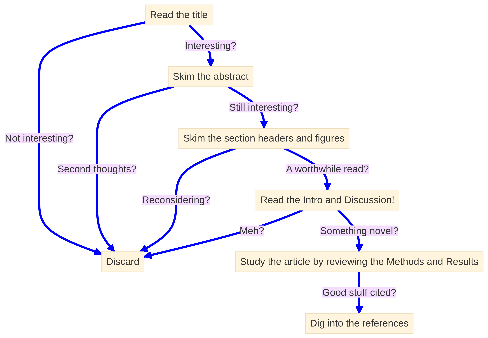

![]()
05:00
Mastering the Literature
Distill a Scientific Domain with Bibliometric Analysis in R
Wednesday, the 29th of May, 2024
Overview
Background
Databases
A Shiny Approach
A Scripted Approach
Background
Why do I feel so bad all the time?
What is bibliometrics?
Why bibliometrics can help?
A foundation is key to pushing boundaries
Background
Graduate school
- Understand what is known across a domain
- Identify and explain something that is unknown (Preferably, coherently)
- Ultimately, unstructured with many possible options
The valley of despair is the graduate school experience
Background
Cognitive bias is a huge obstacle for grad students
Background
The life cycle of a project can have ups and downs
Background
The vallies are peak imposter syndrome
Background

Bibliometrics can speed up your compentence and understanding of a project
Bibliometrics provides an accesible framework for equitable scholarship
Background
Bibliometrics uses
- Archival database
- Article metadata
- Statistical analysis
Bibliometrics answers
- where the field has grown from
- its most relevant articles
- its emerging topics
Minimize your time in the Valley with bibliometrics
Background
- General bibliometric science yields:
- A solid foundation of the necessary concepts
- The questions answered by the field
- Some open areas of discovery within the field
- My purposed use of a bibliometric framework
- Use reproducible methods
- for systematic evaluation
- in a quantifiable way!
- Ultimately, ending with justifiable literature for your needs
Databases
- Basics of literature search
- Which databases to use
- Searching techniques
- Sample size
- Exporting search metadata
- Filtration techniques
Your database choice will affect your results
Databases
Databases focus on different levels of content selection, curation, and comprehensiveness.
- Web of Science (WoS)
- Scopus
- PubMed
- Dimensions
- CrossRef
- Semantic Scholar
- Microsoft Academic
- Lens.org
- Cochran Library
- Google Scholar
“Scopus and WoS compliment each others as neither resource is all inclusive”
Your database choice will affect your results
Databases
Databases focus on different levels of content selection, curation, and comprehensiveness.
- Web of Science (WoS)
- Scopus
- PubMed
- Dimensions
- CrossRef
- Semantic Scholar
- Microsoft Academic
- Lens.org
- Cochran Library
- Google Scholar
“Scopus and WOS compliment each others as neither resource is all inclusive”
Signing up, search and exporting can be nuianced
Databases
- Register with university email for Scopus and WoS access when off university wifi/library VPN
- PubMed does not require registration at all
- Scopus (Multidisciplinary)
- 82.4 million records
- 1788 – present
- bibtex
- full record
- 20,000 export limit
- Scopus (Multidisciplinary)
- WoS (Multidisciplinary)
- Core, 79 million
- 1900 - present
- plaintext or bibtex
- custom selection
- 1000 export limit
- WoS (Multidisciplinary)
- PubMed (Only life science and biomedical)
- 35 million
- 1966 - present (*1809)
- plaintext
- pubmed format
- 10,000 export limit
- PubMed (Only life science and biomedical)
Vocabulary is vital for a good search!
Databases
controlled vocabulary thesaurus
- Medical Subject Headings (MeSH) Tree
- Search “controlled vocabulary thesaurus for [biology]”
Try ChatGPT?
What are keywords for [microbial metagenomic metabolomic metabolite cancer research]?
Create a controlled vocabulary for [microbial metagenomic metabolomic metabolite cancer research].
Wildcards allow the capture of many individual words
Databases
| Wildcard Charater | Definition | Example | Result |
|---|---|---|---|
| * | Any amount of character/s to include zero | *man |
man, woman, human, superman, superwoman, {etc} |
| ? | Any single character | wom?n |
woman, women |
| $ (WoS only) | Any single or no character | $$man |
woman, man, human |
Boolean operators are vital to focus a corpus
Databases
| Operator | Affect on Search | Definition | Example |
|---|---|---|---|
| AND | Narrows | Intersects all terms separated by operator | migration AND butterfl* |
| OR | Broadens | Unites any and all terms separated by operator | migration OR butterfl* |
| NOT | Narrows | Excludes term following operator | migration AND bird* NOT butterfl* |
| NEAR/x(WoS) | Narrows | Find terms joined by operator near each other by \(x\) words | America NEAR/10 butterfly |
| SAME(WoS) | Narrows | Find terms joined by operator if in the same sentence | America SAME butterfly |
| W/n(Scopus) | Narrows | Find terms joined by operator within each other by \(n\) words | American W/10 butterfly |
| Pre/n(Scopus) | Narrows | Find terms where preceeding term to operator is within \(n\) words of following term | American Pre/3 butterfly |
Searching by phrase may simplify a search
Databases
| Phrase type | Example | Search |
|---|---|---|
| Loose | "phrase searching" |
phrase search, phrase searches, phrase searching |
| Exact(Scopus) | {phrase searching} |
phrase searching |
Combine all search techniques for the best corpus results
Databases
WoS = 184
ALL=((“colorectal cancer*” OR “colorectal neoplas*” OR “adenomatous polyposis coli” OR “colon* neoplas*” OR “rectal neoplas*” OR “hereditary nonpolypo*”) AND (“metagenom*” AND “metabol*”))
Scopus = 367 & PubMed = 248
TITLE-ABS-KEY ( “colorectal cancer*” OR “colorectal neoplas*” OR “adenomatous polyposis coli” OR “colon* neoplas*” OR “rectal neoplas*” OR “hereditary nonpolypo*” AND “metagenom*” AND “metabol*” )
Combine all search techniques for the best corpus results
Databases
WoS = 184
ALL=((“colorectal cancer*” OR “colorectal neoplas*” OR “adenomatous polyposis coli” OR “colon* neoplas*” OR “rectal neoplas*” OR “hereditary nonpolypo*”) AND (metagenom*” AND “metabol*”))
Scopus = 367 & PubMed = 248
TITLE-ABS-KEY ( “colorectal cancer*” OR “colorectal neoplas*” OR “adenomatous polyposis coli” OR “colon* neoplas*” OR “rectal neoplas*” OR “hereditary nonpolypo*” AND “metagenom*” AND “metabol*” )
Build a corpus for your interests
Databases
10:00
| Wildcard Charater | Definition | Example | Result |
|---|---|---|---|
| * | Any amount of character/s to include zero | *man |
man, woman, human, superman, superwoman, {etc} |
| ? | Any single character | wom?n |
woman, women |
| $ (WoS only) | Any single or no character | $$man |
woman, man, human |
| Operator | Affect on Search | Definition | Example |
|---|---|---|---|
| AND | Narrows | Find all terms separated by operator | migration AND butterfl\* |
| OR | Broadens | Find any and all terms separated by operator | migration OR butterfl\* |
| NOT | Narrows | Excludes term following operator | migration AND bird\* NOT butterfl\* |
| NEAR/x(WoS) | Narrows | Find terms joined by operator near each other by \(x\) words | America NEAR/10 butterfly |
| SAME(WoS) | Narrows | Find terms joined by operator if in the same sentence | America SAME butterfly |
| W/n(Scopus) | Narrows | Find terms joined by operator within each other by \(n\) words | American W/10 butterfly |
| Pre/n(Scopus) | Narrows | Find terms where preceeding term to operator is within \(n\) words of following term | American Pre/3 butterfly |
| Phrase type | Example | Search |
|---|---|---|
| Loose | "phrase searching" |
phrase search, phrase searches, phrase searching |
| Exact(Scopus) | {phrase searching} |
phrase searching |
Sample Size goals of 500 - 1500 articles
Databases
Results from power simulation, showing power as a function of sample size, with effect sizes shown as different colors, and alpha shown as line type. The standard criterion of 80 percent power is shown by the dotted black line.Filtration techniques are whatever work for you
Databases
Literature filtration
- Prisma
Filtration techniques are whatever work for you
Databases

Literature filtration
- Prisma
- 80:20
Filtration techniques are whatever work for you
Databases
Literature filtration
- Prisma
- 80:20
metagear?
A Shiny Approach
- The Bibliometrix package
- Biblioshiny interface
- Some standard bibliometric plots
Install, load, and run biblioshiny() in almost no code
A Shiny Approach
Your console should look like…
A Shiny Approach
Image of biblioshiny script in console
This is the landing page every time
A Shiny Approach
Image of biblioshiny landing page
Loading allows only a single file…
A Shiny Approach
Image of biblioshiny ready to load data
Metadata report of my corpus
A Shiny Approach
Image of the biblioshiny loaded data report
Loaded data in tabular form
A Shiny Approach
Image of biblioshiny with data loaded
Relavant sources to include in my RSS feeds
A Shiny Approach
Image of biblioshiny most relevant sources lolli pop plot
The most cited documents across the database
A Shiny Approach
Image of biblioshiny most globally cited lolli pop plot
A normalized citation count allows for more current articles
A Shiny Approach

Image of biblioshiny most globally cited table organized by normalized total citations (NTC)
A longitudinal network focuses in on local seminal papers
A Shiny Approach
Image of biblioshiny historiograph plot
Peaks within the 5 year median may be cornerstone papers
A Shiny Approach
Image of biblioshiny reference publication year spectroscopy plot (1970-2022)
At a small peak no papers stand out
A Shiny Approach
Image of biblioshiny reference publication year spectroscopy table (2000)
At greater peaks, some articles outlie the norm
A Shiny Approach
Image of biblioshiny reference publication year spectroscopy table (2009)
At greater peaks, some articles outlie the norm
A Shiny Approach
Image of biblioshiny reference publication year spectroscopy table (2012)
Explore the corpus you have created
A Shiny Approach
- First four sections - Domain focus at four different analyses
- For example, the
Sourcessection is a great level for refining the journals in your RSS feed!
- For example, the
- Last three sections - Knowledge structures for rapid synthesis of understanding
- For example, the
Conceptual Structureis a great section for rapidly identifying key themes, trends, and keywords that are best to fundamentally understand or include in your controlled vocabulary thesuarus!
- For example, the
10:00
A Scripted Approach
Replicate
biblioshiny()plotsExamine, plot, and summarize data
Deeply understand some functions
Integrate R script output with Zotero
Knowing which Libraries to use is hard
A Scripted Approach
library(bibliometrix) # Load and analyze bibliograpic data
library(tidyverse) # Organize the data structures
library(DT) # Make a dynamic table
library(gt) # Make a pretty table
library(rentrez) # Access the NCBI database through CLI
library(easyPubMed) # Extract metadata from PubMed
library(xml2) # Simple interface for parsing xml format
library(metagear) # Rapidly assess many articles and more
library(clipr) # Read and write to clipboard
library(quanteda.textstats) # Analysis tool for readability# Load required package for timeout handling
if (!requireNamespace("R.utils", quietly = TRUE)) {
install.packages("R.utils")
}
library(R.utils)
# Short script to check for packages, load them, or install and load them if available.
boomstick <- function (packages) {
for (package_name in packages) {
'%!in%' <- function(x,y)!('%in%'(x,y))
if (paste("package:", package_name, sep = '') %in% search()) {
cat("Package", package_name, "is loaded\n")
next
} else {
if (!requireNamespace(package_name, quietly = TRUE)) {
cat("Package", package_name, "not found. Installing...\n")
# Check if the package is available
available <- tryCatch(
available.packages()[package_name, ],
error = function(e) NULL
)
if (is.null(available)) {
cat("Package", package_name, "is not available on CRAN.\n")
next
}
# Try installing the package with a timeout of 300 seconds (adjust as needed)
tryCatch(
withTimeout(
install.packages(package_name, ask = FALSE, dependencies = TRUE),
timeout = 300
),
TimeoutException = function(e) {
cat("Package", package_name, "installation timed out\n")
},
error = function(e) {
cat("Package", package_name, "installation failed\n")
}
)
# Try loading the package again after installation
if (!requireNamespace(package_name, quietly = TRUE)) {
cat("Package", package_name, "loading failed\n")
next
} else if (paste("package:", package_name, sep = '') %!in% search()) {
attachNamespace(package_name)
cat("Package", package_name, "loaded and ready\n")
next
}
} else if (paste("package:", package_name, sep = '') %!in% search()) {
attachNamespace(package_name)
cat("Package", package_name, "loaded and ready\n")
}
}
}
}
libraries <- c("bibliometrix", "tidyverse", "DT", "gt", "rentrez", "easyPubMed", "xml2", "metagear", "clipr", "quanteda.textstats") # Change/Add more package names as needed
boomstick(libraries)Package bibliometrix is loaded
Package tidyverse is loaded
Package DT is loaded
Package gt is loaded
Package rentrez is loaded
Package easyPubMed is loaded
Package xml2 is loaded
Package metagear is loaded
Package clipr is loaded
Package quanteda.textstats is loadedSimple file convertion to a dataframe!
A Scripted Approach
wos <- convert2df(file = "data/wos-plaintext-savedrecs.txt", dbsource="wos",format="plaintext")
scopus <- convert2df(file = "data/scopus-bib-crc.bib", dbsource = "scopus", format = "bibtex")
pubmed <- convert2df(file = "data/pubmed-plaintext-colorectal-set.txt", dbsource = "pubmed", format = "plaintext")Examining the data to understand how to use it
A Scripted Approach
Rows: 137
Columns: 64
$ AU <chr> "BRIM H;YOOSEPH S;ZOETENDAL EG;LEE E;TORRALBO M;LAIYEMO AO;SH…
$ AF <chr> "BRIM, HASSAN;YOOSEPH, SHIBU;ZOETENDAL, ERWIN G.;LEE, EDWARD;…
$ CR <chr> "AGRAWAL S, 2005, AM J GASTROENTEROL, V100, P515, DOI 10.1111…
$ AB <chr> "BACKGROUND: COLONIC POLYPS ARE COMMON TUMORS OCCURRING IN SI…
$ AR <chr> "E81352", "E01454-19", "64", NA, "456", NA, "1548", "766", NA…
$ BE <chr> NA, NA, NA, NA, NA, NA, NA, NA, NA, NA, NA, NA, NA, NA, NA, N…
$ BN <chr> NA, NA, NA, NA, NA, NA, NA, NA, NA, NA, NA, NA, NA, NA, NA, N…
$ BP <chr> NA, NA, NA, "2015", NA, "766", NA, NA, "368", NA, NA, NA, NA,…
$ C1 <chr> "HOWARD UNIV, COLL MED, DEPT PATHOL, DEPT MED, WASHINGTON, DC…
$ C3 <chr> "HOWARD UNIVERSITY; HOWARD UNIVERSITY; J. CRAIG VENTER INSTIT…
$ CA <chr> NA, NA, NA, NA, NA, NA, NA, NA, NA, NA, NA, NA, NA, NA, NA, N…
$ D2 <chr> NA, NA, NA, NA, NA, NA, NA, NA, NA, NA, NA, NA, NA, NA, NA, N…
$ DA <chr> "2022-11-22", "2022-11-22", "2022-11-22", "2022-11-22", "2022…
$ DE <chr> NA, "16S RRNA; SCFA; COLON CANCER; MACHINE LEARNING; METAGENO…
$ DI <chr> "10.1371/journal.pone.0081352", "10.1128/mBio.01454-19", "10.…
$ DT <chr> "ARTICLE", "ARTICLE", "ARTICLE", "ARTICLE", "ARTICLE", "REVIE…
$ EA <chr> NA, NA, NA, NA, NA, "FEB 2020", NA, NA, NA, NA, NA, NA, "AUG …
$ EF <chr> NA, NA, NA, NA, NA, NA, NA, NA, NA, NA, NA, NA, NA, NA, NA, N…
$ EI <chr> NA, NA, NA, NA, "2218-1989", "1349-7006", "2076-2607", NA, "1…
$ EM <chr> "HBRIM@HOWARD.EDU", "PSCHLOSS@UMICH.EDU", "HGASKINS@ILLINOIS.…
$ EP <chr> NA, NA, NA, "2027", NA, "773", NA, NA, "376", NA, NA, NA, NA,…
$ ER <chr> "", "", "", "", "", "", "", "", "", "", "", "", "", "", "", "…
$ FU <chr> "HOWARD-HOPKINS U54 FROM THE NATIONAL INSTITUTES OF HEALTH; H…
$ FX <chr> "THIS PROJECT WAS SUPPORTED (IN PART) BY A HOWARD-HOPKINS U54…
$ GA <chr> "276IX", "IR7JO", "0Q5ZH", "ZH9GB", "TN3LD", "KS4KZ", "UI4EO"…
$ ID <chr> "BACTEROIDES-FRAGILIS ENTEROTOXIN; COLORECTAL-CANCER; RIBOSOM…
$ IS <chr> "12", "4", "1", "5", "7", "3", "8", "11", "4", "2", NA, "8", …
$ J9 <chr> "PLOS ONE", "MBIO", "MICROBIOME", "THERANOSTICS", "METABOLITE…
$ JI <chr> "PLOS ONE", "MBIO", "MICROBIOME", "THERANOSTICS", "METABOLITE…
$ LA <chr> "ENGLISH", "ENGLISH", "ENGLISH", "ENGLISH", "ENGLISH", "ENGLI…
$ NR <chr> "60", "25", "96", "49", "84", "47", "105", "96", "167", "49",…
$ OA <chr> "GREEN PUBLISHED, GREEN SUBMITTED, GOLD", "GOLD, GREEN SUBMIT…
$ OI <chr> "YOOSEPH, SHIBU/0000-0001-5581-5002", "SZE, MARC/0000-0002-35…
$ PA <chr> "1160 BATTERY STREET, STE 100, SAN FRANCISCO, CA 94111 USA", …
$ PD <chr> "DEC 20", "JUL-AUG", "APR 19", NA, "JUL", "MAR", "AUG", "NOV"…
$ PG <chr> "10", "7", "16", "13", "20", "8", "20", "18", "9", "18", "15"…
$ PI <chr> "SAN FRANCISCO", "WASHINGTON", "LONDON", "LAKE HAVEN", "BASEL…
$ PM <chr> "24376500", "31266879", "35440042", "35265196", "34357350", "…
$ PT <chr> "J", "J", "J", "J", "J", "J", "J", "J", "J", "J", "J", "J", "…
$ PU <chr> "PUBLIC LIBRARY SCIENCE", "AMER SOC MICROBIOLOGY", "BMC", "IV…
$ PY <dbl> 2013, 2019, 2022, 2022, 2021, 2020, 2021, 2014, 2017, 2022, 2…
$ RI <chr> "ASHKTORAB, HASSAN/AAJ-2908-2020", NA, "ANANTHARAMAN, KARTHIK…
$ RP <chr> "BRIM, H (CORRESPONDING AUTHOR), HOWARD UNIV, COLL MED, DEPT …
$ SC <chr> "SCIENCE & TECHNOLOGY - OTHER TOPICS", "MICROBIOLOGY", "MICRO…
$ SE <chr> NA, NA, NA, NA, NA, NA, NA, NA, NA, NA, NA, NA, NA, NA, NA, N…
$ SI <chr> NA, NA, NA, NA, NA, NA, NA, NA, NA, NA, NA, NA, NA, NA, NA, N…
$ SN <chr> "1932-6203", "2150-7511", "2049-2618", "1838-7640", NA, "1347…
$ SO <chr> "PLOS ONE", "MBIO", "MICROBIOME", "THERANOSTICS", "METABOLITE…
$ TC <dbl> 34, 18, 3, 1, 2, 29, 3, 553, 39, 0, 7, 3, 1, 10, 1, 16, 12, 3…
$ TI <chr> "MICROBIOME ANALYSIS OF STOOL SAMPLES FROM AFRICAN AMERICANS …
$ U1 <chr> "2", "0", "18", "10", "1", "1", "1", "13", "4", "5", "1", "1"…
$ U2 <chr> "54", "10", "23", "18", "9", "17", "6", "127", "43", "7", "14…
$ UT <chr> "WOS:000328745100004", "WOS:000481617000072", "WOS:0007849959…
$ VL <chr> "8", "10", "10", "12", "11", "111", "9", "10", "26", "7", "11…
$ WC <chr> "MULTIDISCIPLINARY SCIENCES", "MICROBIOLOGY", "MICROBIOLOGY",…
$ WE <chr> "SCIENCE CITATION INDEX EXPANDED (SCI-EXPANDED)", "SCIENCE CI…
$ Z9 <chr> "36", "19", "3", "1", "2", "31", "3", "579", "45", "0", "9", …
$ C1raw <chr> "[BRIM, HASSAN; LEE, EDWARD; LAIYEMO, ADEYINKA O.; SHOKRANI, …
$ DB <chr> "ISI", "ISI", "ISI", "ISI", "ISI", "ISI", "ISI", "ISI", "ISI"…
$ AU_UN <chr> "HOWARD UNIVERSITY;HOWARD UNIVERSITY;J. CRAIG VENTER INSTITUT…
$ AU1_UN <chr> "HOWARD UNIV", "UNIV MICHIGAN", "UNIV ILLINOIS;UNIV ILLINOIS;…
$ AU_UN_NR <lgl> NA, NA, NA, NA, NA, NA, NA, NA, NA, NA, NA, NA, NA, NA, NA, N…
$ SR_FULL <chr> "BRIM H, 2013, PLOS ONE", "SZE MA, 2019, MBIO", "WOLF PG, 202…
$ SR <chr> "BRIM H, 2013, PLOS ONE", "SZE MA, 2019, MBIO", "WOLF PG, 202…Rows: 370
Columns: 39
$ AU <chr> "AVELAR-BARRAGAN J;DEDECKER L;LU ZN;COPPEDGE B;KARNES WE…
$ DE <chr> NA, "ADENOMA; CARCINOGENESIS; COLORECTAL CANCER; MICR…
$ ID <chr> "ACTINOBACTERIA; ADENOMATOUS POLYP; ADULT; AMPLICON; …
$ C1 <chr> "SCHOOL OF BIOLOGICAL SCIENCES, UNIVERSITY OF CALIFORNIA…
$ CR <chr> "SUNG, H., GLOBAL CANCER STATISTICS 2020: GLOBOCAN ESTIM…
$ JI <chr> "NPJ BIOFILMS AND MICROBIOMES", "GUT MICROBES", "INT. J.…
$ AB <chr> "COLORECTAL CANCER IS THE SECOND MOST DEADLY AND THIRD M…
$ AR <chr> "69", "1854641", "8757", "E0153933", NA, "13974", NA, "E…
$ chemicals_cas <chr> NA, "FOLIC ACID, 59-30-3, 6484-89-5", "DNA MISMATCH REPA…
$ coden <chr> NA, NA, NA, "POLNC", NA, NA, "APTHE", NA, NA, "GASTA", "…
$ RP <chr> "AVELAR-BARRAGAN, J.; SCHOOL OF BIOLOGICAL SCIENCES, UNI…
$ DT <chr> "ARTICLE", "NOTE", "REVIEW", "ARTICLE", "ARTICLE", "ARTI…
$ DI <chr> "10.1038/s41522-022-00328-6", "10.1080/19490976.2020.185…
$ BE <chr> NA, NA, NA, NA, NA, NA, NA, NA, NA, NA, NA, NA, NA, NA, …
$ FU <chr> "GM055246 AMERICAN CANCER SOCIETYAMERICAN CANCER SOCIETY…
$ BN <chr> NA, NA, NA, NA, NA, NA, NA, NA, NA, NA, NA, NA, NA, NA, …
$ SN <chr> "20555008", "19490976", "16616596", "19326203", "1931312…
$ SO <chr> "NPJ BIOFILMS AND MICROBIOMES", "GUT MICROBES", "INTERNA…
$ LA <chr> "ENGLISH", "ENGLISH", "ENGLISH", "ENGLISH", "ENGLISH", "…
$ manufacturers <chr> NA, NA, NA, NA, NA, NA, NA, NA, NA, NA, NA, NA, NA, NA, …
$ TC <dbl> 0, 13, 3, 14, 23, 88, 0, 19, 640, 33, 35, 24, 19, 6, 29,…
$ PN <chr> "1", "1", "22", "4", "4", "1", "1112", "4", NA, "4", "12…
$ PP <chr> NA, NA, "1-21", NA, "585-600.E4", NA, "1742-1743", NA, N…
$ PU <chr> "NATURE RESEARCH", "BELLWETHER PUBLISHING, LTD.", "MDPI …
$ PM <chr> "36038569", "33446008", "33228212", "27100181", "3224060…
$ DB <chr> "SCOPUS", "SCOPUS", "SCOPUS", "SCOPUS", "SCOPUS", "SCOPU…
$ TI <chr> "DISTINCT COLON MUCOSA MICROBIOMES ASSOCIATED WITH TUBUL…
$ tradenames <chr> NA, NA, NA, NA, NA, NA, NA, NA, NA, NA, NA, NA, NA, NA, …
$ url <chr> "https://www.scopus.com/inward/record.uri?eid=2-s2.0-851…
$ VL <chr> "8", "13", "21", "11", "27", "8", "52", "10", "6", "160"…
$ PY <dbl> 2022, 2021, 2020, 2016, 2020, 2018, 2020, 2019, 2015, 20…
$ FX <chr> "WE WOULD LIKE TO THANK CLAUDIA WEIHE AND JENNIFER B.H. …
$ AF <chr> "AVELAR-BARRAGAN J;DEDECKER L;LU ZN;COPPEDGE B;KARNES WE…
$ J9 <chr> "NPJ BIOFILMS AND MICROBIOMES", "GUT MICROBES", "INT J M…
$ AU_UN <chr> "UNIVERSITY OF CALIFORNIA;UNIVERSITY OF CALIFORNIA", "UN…
$ AU1_UN <chr> "NOTREPORTED;SCHOOL OF BIOLOGICAL SCIENCES;NOTREPORTED;N…
$ AU_UN_NR <lgl> NA, NA, NA, NA, NA, NA, NA, NA, NA, NA, NA, NA, NA, NA, …
$ SR_FULL <chr> "AVELAR-BARRAGAN J, 2022, NPJ BIOFILMS AND MICROBIOMES",…
$ SR <chr> "AVELAR-BARRAGAN J, 2022, NPJ BIOFILMS AND MICROBIOMES",…Rows: 219
Columns: 58
$ AU <chr> "YANG J;WEI H;ZHOU Y;SZETO CH;LI C;LIN Y;COKER OO;LAU HCH;CHAN…
$ AF <chr> "YANG, JIA;WEI, HONG;ZHOU, YUNFEI;SZETO, CHUN-HO;LI, CHUANGEN;…
$ DE <chr> "ANIMALS;ANTI-BACTERIAL AGENTS/PHARMACOLOGY;AZOXYMETHANE;BACTE…
$ AID <chr> "S0016-5085(21)03439-9 [PII];10.1053/J.GASTRO.2021.08.041 [DOI…
$ OT <chr> "COLON CANCER;DIETARY NUTRIENT;GUT PRODUCTS;MICROBIOME", NA, "…
$ PHST <chr> "2021/01/06 00:00 [RECEIVED];2021/08/05 00:00 [REVISED];2021/0…
$ DT <chr> "JOURNAL ARTICLE;RESEARCH SUPPORT, NON-U.S. GOV'T", "JOURNAL A…
$ AB <chr> "BACKGROUND AND AIMS: DIETARY FAT INTAKE IS ASSOCIATED WITH IN…
$ C1 <chr> "INSTITUTE OF DIGESTIVE DISEASE AND THE DEPARTMENT OF MEDICINE…
$ OI <chr> NA, "ORCID: 0000-0001-5507-4566 ORCID: 0000-0003-4168-6195 ORC…
$ CI <chr> "COPYRIGHT © 2022 THE AUTHORS. PUBLISHED BY ELSEVIER INC. ALL …
$ CIN <chr> "GASTROENTEROLOGY. 2022 JAN;162(1):38-39. PMID: 34687737", NA,…
$ CN <chr> NA, NA, NA, NA, NA, NA, NA, NA, NA, NA, NA, NA, NA, NA, NA, NA…
$ COIS <chr> NA, NA, "DECLARATION OF INTERESTS ALL AUTHORS DECLARE NO COMPE…
$ CRDT <chr> "2021/08/30 20:10", "2019/06/08 06:00", "2020/02/27 06:00", "2…
$ DCOM <chr> "20220118", "20190715", "20201229", "20220609", "20211222", "2…
$ DEP <chr> "20210827", "20190606", "20200225", "20210830", "20211119", "2…
$ PY <dbl> 2022, 2019, 2020, 2022, 2021, 2021, 2022, 2015, 2022, 2019, 20…
$ EDAT <chr> "2021/08/31 06:00", "2019/06/07 06:00", "2020/02/27 06:00", "2…
$ EFR <chr> NA, NA, NA, NA, NA, NA, NA, NA, NA, NA, NA, NA, NA, NA, NA, NA…
$ EIN <chr> NA, NA, NA, NA, NA, NA, NA, NA, NA, NA, NA, NA, "NAT MED. 2019…
$ GR <chr> NA, NA, "R01 DK101119/DK/NIDDK NIH HHS/UNITED STATES R01 DK085…
$ IS <chr> "1", "6", "4", "7", "1", "4", "2", NA, "3", "4", "6", "11", "4…
$ SN <chr> "1528-0012 (ELECTRONIC) 0016-5085 (LINKING)", "1546-170X (ELEC…
$ JID <chr> "0374630", "9502015", "101302316", "2985108R", "101528555", "0…
$ SO <chr> "GASTROENTEROLOGY", "NATURE MEDICINE", "CELL HOST & MICROBE", …
$ LA <chr> "ENG", "ENG", "ENG", "ENG", "ENG", "ENG", "ENG", "ENG", "ENG",…
$ LID <chr> "S0016-5085(21)03439-9 [PII] 10.1053/J.GASTRO.2021.08.041 [DOI…
$ LR <chr> "20220118", "20220417", "20220310", "20220716", "20211222", "2…
$ MHDA <chr> "2022/01/19 06:00", "2019/07/16 06:00", "2020/12/30 06:00", "2…
$ MID <chr> NA, NA, "NIHMS1568778", NA, NA, NA, "NIHMS1766205", NA, "NIHMS…
$ OTO <chr> "NOTNLM", NA, "NOTNLM", "NOTNLM", NA, "NOTNLM", "NOTNLM", NA, …
$ OWN <chr> "NLM", "NLM", "NLM", "NLM", "NLM", "NLM", "NLM", "NLM", "NLM",…
$ PP <chr> "135-149.E2", "968-976", "659-670.E5", "1315-1325", "6757", "1…
$ PL <chr> "UNITED STATES", "UNITED STATES", "UNITED STATES", "ENGLAND", …
$ PMC <chr> NA, NA, "PMC8172352", "PMC9185821", "PMC8604900", NA, "PMC8847…
$ PMCR <chr> NA, NA, NA, NA, NA, NA, "2023/02/14", NA, "2023/03/09", NA, NA…
$ PMID <chr> "34461052", "31171880", "32101703", "34462336", "34799562", "3…
$ PST <chr> "PPUBLISH", "PPUBLISH", "PPUBLISH", "PPUBLISH", "EPUBLISH", "P…
$ RF <chr> NA, NA, NA, NA, NA, NA, NA, NA, NA, NA, NA, NA, NA, NA, NA, NA…
$ RIN <chr> NA, NA, NA, NA, NA, NA, NA, NA, NA, NA, NA, NA, NA, NA, NA, NA…
$ RN <chr> "0 (ANTI-BACTERIAL AGENTS) 0 (LYSOPHOSPHOLIPIDS) MO0N1J0SEN (A…
$ SB <chr> "IM", "IM", "IM", "IM", "IM", "IM", "IM", "IM", "IM", "IM", "I…
$ SI <chr> NA, NA, NA, NA, NA, NA, NA, NA, NA, NA, NA, NA, NA, "CLINICALT…
$ SO2 <chr> "GASTROENTEROLOGY. 2022 JAN;162(1):135-149.E2. DOI: 10.1053/J.…
$ STAT <chr> "MEDLINE", "MEDLINE", "MEDLINE", "MEDLINE", "MEDLINE", "MEDLIN…
$ J9 <chr> "GASTROENTEROLOGY", "NAT MED", "CELL HOST MICROBE", "GUT", "NA…
$ TI <chr> "HIGH-FAT DIET PROMOTES COLORECTAL TUMORIGENESIS THROUGH MODUL…
$ TT <chr> NA, NA, NA, NA, NA, NA, NA, NA, NA, NA, NA, NA, NA, NA, NA, NA…
$ VL <chr> "162", "25", "27", "71", "12", "160", "40", "6", "30", "25", "…
$ DI <chr> "S0016-5085(21)03439-9", "10.1038/S41591-019-0458-7", "S1931-3…
$ DB <chr> "PUBMED", "PUBMED", "PUBMED", "PUBMED", "PUBMED", "PUBMED", "P…
$ ID <chr> "ANIMALS;ANTI-BACTERIAL AGENTS/PHARMACOLOGY;AZOXYMETHANE;BACTE…
$ RP <lgl> NA, NA, NA, NA, NA, NA, NA, NA, NA, NA, NA, NA, NA, NA, NA, NA…
$ TC <dbl> 0, 0, 0, 0, 0, 0, 0, 0, 0, 0, 0, 0, 0, 0, 0, 0, 0, 0, 0, 0, 0,…
$ CR <chr> "none", "none", "none", "none", "none", "none", "none", "none"…
$ SR_FULL <chr> "YANG J, 2022, GASTROENTEROLOGY", "YACHIDA S, 2019, NAT MED", …
$ SR <chr> "YANG J, 2022, GASTROENTEROLOGY", "YACHIDA S, 2019, NAT MED", …Rows: 479
Columns: 21
$ AU <chr> "BRIM H;YOOSEPH S;ZOETENDAL E;LEE E;TORRALBO M;LAIYEMO A;SHOKR…
$ AF <chr> "BRIM, HASSAN;YOOSEPH, SHIBU;ZOETENDAL, ERWIN G.;LEE, EDWARD;T…
$ CR <chr> "AGRAWAL S, 2005, AM J GASTROENTEROL, V100, P515, DOI 10.1111/…
$ AB <chr> "BACKGROUND: COLONIC POLYPS ARE COMMON TUMORS OCCURRING IN SIM…
$ C1 <chr> "HOWARD UNIV, COLL MED, DEPT PATHOL, DEPT MED, WASHINGTON, DC …
$ DE <chr> NA, "16S RRNA; SCFA; COLON CANCER; MACHINE LEARNING; METAGENOM…
$ DI <chr> "10.1371/journal.pone.0081352", "10.1128/mBio.01454-19", "10.1…
$ DT <chr> "ARTICLE", "ARTICLE", "ARTICLE", "ARTICLE", "ARTICLE", "REVIEW…
$ ID <chr> "BACTEROIDES-FRAGILIS ENTEROTOXIN; COLORECTAL-CANCER; RIBOSOMA…
$ J9 <chr> "PLOS ONE", "MBIO", "MICROBIOME", "THERANOSTICS", "METABOLITES…
$ LA <chr> "ENGLISH", "ENGLISH", "ENGLISH", "ENGLISH", "ENGLISH", "ENGLIS…
$ PY <dbl> 2013, 2019, 2022, 2022, 2021, 2020, 2021, 2014, 2017, 2022, 20…
$ RP <chr> "BRIM, H (CORRESPONDING AUTHOR), HOWARD UNIV, COLL MED, DEPT P…
$ SN <chr> "1932-6203", "2150-7511", "2049-2618", "1838-7640", NA, "1347-…
$ SO <chr> "PLOS ONE", "MBIO", "MICROBIOME", "THERANOSTICS", "METABOLITES…
$ TC <dbl> 34, 18, 3, 1, 2, 29, 3, 553, 39, 0, 7, 3, 1, 10, 1, 16, 12, 37…
$ TI <chr> "MICROBIOME ANALYSIS OF STOOL SAMPLES FROM AFRICAN AMERICANS W…
$ VL <chr> "8", "10", "10", "12", "11", "111", "9", "10", "26", "7", "11"…
$ DB <chr> "ISI", "ISI", "ISI", "ISI", "ISI", "ISI", "ISI", "ISI", "ISI",…
$ SR_FULL <chr> "BRIM H, 2013, PLOS ONE", "SZE MA, 2019, MBIO", "WOLF PG, 2022…
$ SR <chr> "BRIM H, 2013, PLOS ONE", "SZE MA, 2019, MBIO", "WOLF PG, 2022…# The following two functions quickly print out the class of object created
# and show us what is in that object
class(fulldb) # `[1] "bibliometrixDB" "data.frame" `
glimpse(fulldb)
# Additionally, we can save the
# fulldb bibliometrix file.
# Saving the dataframe is not necessary,
# but it is a suggestion for reproducibility
saveRDS(fulldb, file = "wos-scopus-pubmed-fdb.rds")The initial analysis is easily implemented
A Scripted Approach
MAIN INFORMATION ABOUT DATA
Timespan 2008 : 2022
Sources (Journals, Books, etc) 271
Documents 479
Annual Growth Rate % 30.38
Document Average Age 5.83
Average citations per doc 41.9
Average citations per year per doc 5.381
References 32708
DOCUMENT TYPES
article 268
article; early access 1
book chapter 4
case reports;journal article 1
case reports;journal article;research support, n.i.h., extramural;research support, non-u.s. gov't;research support, u.s. gov't, p.h.s. 1
case reports;journal article;research support, non-u.s. gov't 1
clinical trial protocol;journal article;randomized controlled trial 1
comparative study;journal article 1
comparative study;journal article;randomized controlled trial;research support, non-u.s. gov't 1
conference paper 7
editorial 6
editorial;research support, n.i.h., extramural 1
erratum 1
journal article 11
journal article;multicenter study;research support, non-u.s. gov't 1
journal article;research support, n.i.h., extramural 1
journal article;research support, n.i.h., extramural;research support, n.i.h., intramural;review 1
journal article;research support, n.i.h., extramural;research support, non-u.s. gov't 3
journal article;research support, n.i.h., extramural;research support, non-u.s. gov't;research support, u.s. gov't, non-p.h.s. 1
journal article;research support, n.i.h., intramural 1
journal article;research support, non-u.s. gov't 11
journal article;research support, non-u.s. gov't;review 4
journal article;retracted publication;review 2
journal article;review 4
journal article;validation study 1
note 3
published erratum 1
review 133
review; book chapter 2
review; early access 1
short survey 4
DOCUMENT CONTENTS
Keywords Plus (ID) 5572
Author's Keywords (DE) 1316
AUTHORS
Authors 4108
Author Appearances 5901
Authors of single-authored docs 24
AUTHORS COLLABORATION
Single-authored docs 29
Documents per Author 0.117
Co-Authors per Doc 12.3
International co-authorships % 13.78
Annual Scientific Production
Year Articles
2008 2
2009 2
2010 8
2011 21
2012 23
2013 30
2014 17
2015 17
2016 14
2017 30
2018 22
2019 44
2020 73
2021 92
2022 82
Annual Percentage Growth Rate 30.38
Most Productive Authors
Authors Articles Authors Articles Fractionalized
1 AL-QAHTANI M 59 ROSENSTIEL P 3.05
2 ASSIDI M 28 SHANAHAN F 2.50
3 ABUZENADAH A 23 O'KEEFE S 2.12
4 PUSHPARAJ P 18 NAU J 2.00
5 ABU-ELMAGD M 17 PALEY E 2.00
6 CHAUDHARY A 17 ZHANG Y 1.72
7 MATHEW S 17 TUOHY K 1.60
8 AL-MAGHRABI J 15 LI X 1.48
9 BUHMEIDA A 15 COTTER P 1.38
10 GARI M 15 LEE M 1.37
Top manuscripts per citations
Paper DOI TC TCperYear NTC
1 MARKOWIAK P, 2017, NUTRIENTS 10.3390/nu9091021 886 110.8 10.17
2 FENG Q, 2015, NAT COMMUN 10.1038/ncomms7528 640 64.0 7.43
3 BRESTOFF JR, 2013, NAT IMMUNOL 10.1038/ni.2640 571 47.6 5.66
4 ZELLER G, 2014, MOL SYST BIOL 10.15252/msb.20145645 553 50.3 4.38
5 GUINANE CM, 2013, THER ADV GASTROENTEROL 10.1177/1756283X13482996 479 39.9 4.75
6 DUBOC H, 2013, GUT 10.1136/gutjnl-2012-302578 468 39.0 4.64
7 MEEHAN CJ, 2014, GENOME BIOLOG EVOL 10.1093/gbe/evu050 419 38.1 3.32
8 MARCHESI JR, 2011, PLOS ONE 10.1371/journal.pone.0020447 398 28.4 6.43
9 OU J, 2013, AM J CLIN NUTR 10.3945/ajcn.112.056689 396 33.0 3.93
10 YACHIDA S, 2019, NAT MED 10.1038/s41591-019-0458-7 360 60.0 7.39
Corresponding Author's Countries
Country Articles Freq SCP MCP MCP_Ratio
1 USA 113 0.2736 90 23 0.2035
2 CHINA 74 0.1792 68 6 0.0811
3 ITALY 25 0.0605 23 2 0.0800
4 INDIA 19 0.0460 18 1 0.0526
5 GERMANY 16 0.0387 14 2 0.1250
6 UNITED KINGDOM 16 0.0387 15 1 0.0625
7 FRANCE 15 0.0363 12 3 0.2000
8 CANADA 13 0.0315 12 1 0.0769
9 JAPAN 13 0.0315 9 4 0.3077
10 KOREA 12 0.0291 11 1 0.0833
SCP: Single Country Publications
MCP: Multiple Country Publications
Total Citations per Country
Country Total Citations Average Article Citations
1 USA 6027 53.34
2 FRANCE 1918 127.87
3 ITALY 1862 74.48
4 CHINA 986 13.32
5 IRELAND 973 121.62
6 POLAND 899 449.50
7 CANADA 856 65.85
8 HONG KONG 768 76.80
9 JAPAN 712 54.77
10 INDIA 628 33.05
Most Relevant Sources
Sources Articles
1 GUT MICROBES 23
2 FRONTIERS IN IMMUNOLOGY 13
3 FRONTIERS IN MICROBIOLOGY 13
4 GASTROENTEROLOGY 12
5 NUTRIENTS 10
6 GUT 9
7 INTERNATIONAL JOURNAL OF MOLECULAR SCIENCES 9
8 MICROBIOME 9
9 SCIENTIFIC REPORTS 8
10 FRONTIERS IN CELLULAR AND INFECTION MICROBIOLOGY 7
Most Relevant Keywords
Author Keywords (DE) Articles Keywords-Plus (ID) Articles
1 COLORECTAL CANCER 89 HUMAN 307
2 GUT MICROBIOTA 67 INTESTINE FLORA 266
3 MICROBIOME 62 HUMANS 260
4 METAGENOMICS 53 METAGENOMICS 248
5 MICROBIOTA 49 NONHUMAN 184
6 HUMANS 41 METAGENOME 159
7 GUT MICROBIOME 31 COLORECTAL CANCER 152
8 PROBIOTICS 30 METABOLISM 149
9 METAGENOME 26 ARTICLE 145
10 DYSBIOSIS 23 MALE 138glimpse is great to examine results
A Scripted Approach
Rows: 479
Columns: 5
$ `Paper ` <chr> "MARKOWIAK P, 2017, NUTRIENTS", "FENG Q, 2015, NAT COMMUN", "BRESTOFF JR, 2013, NAT IMMUNOL",…
$ DOI <chr> "10.3390/nu9091021", "10.1038/ncomms7528", "10.1038/ni.2640", "10.15252/msb.20145645", "10.11…
$ TC <dbl> 886, 640, 571, 553, 479, 468, 419, 398, 396, 360, 355, 336, 292, 287, 285, 281, 280, 262, 252…
$ TCperYear <dbl> 110.75000, 64.00000, 47.58333, 50.27273, 39.91667, 39.00000, 38.09091, 28.42857, 33.00000, 60…
$ NTC <dbl> 10.172216, 7.426621, 5.664683, 4.382751, 4.751984, 4.642857, 3.320746, 6.429231, 3.928571, 7.…Well organized, dynamic table for easy reading of most cited articles
A Scripted Approach
A table:
- The most globally cited articles
- Order by quantity of normalized citations
- From the combined dataframe
mcp <- results[["MostCitedPapers"]] %>% # separate most cited papers
arrange(desc(NTC)) %>% # arranging by norm. citation count
mutate(across(where(is.numeric), round, 3)) %>%
mutate(Links = sprintf('<a href = "https://www.doi.org/%s">%s</a>',
DOI,
"To Paper"
),
Links = lapply(Links, gt::html)) %>% # hyperlinking doi
relocate(Links, NTC, TC, TCperYear, .before = DOI) # relocating column for aes.Extract citation data with simple functions
A Scripted Approach
Note
Global Citation represents the total number of citations received by a document from all publications indexed in a source (Scopus, WOS, Google Scholar …), while Local Citation refers to the number of citations a document received from other documents in the specific search performed (that is, in the sample of highly specialised papers under review). A scientometric analysis on entrepreneurial intention literature: Delving deeper into local citation
A few base functions are great to examine data
A Scripted Approach
List of 3
$ Cited : 'table' int [1:32598(1d)] 31 30 28 26 24 24 23 22 22 21 ...
..- attr(*, "dimnames")=List of 1
.. ..$ CR: chr [1:32598] "FENG Q, 2015, NAT COMMUN, V6, DOI 10.1038/NCOMMS7528" "QIN JJ, 2010, NATURE, V464, P59, DOI 10.1038/NATURE08821" "KOSTIC AD, 2012, GENOME RES, V22, P292, DOI 10.1101/GR.126573.111" "KOSTIC AD, 2013, CELL HOST MICROBE, V14, P207, DOI 10.1016/J.CHOM.2013.07.007" ...
$ Year : num [1:32598] 2015 2010 2012 2013 2012 ...
$ Source: chr [1:32598] "NAT COMMUN" "NATURE" "GENOME RES" "CELL HOST MICROBE" ...$dim
[1] 6
$dimnames
$dimnames$CR
[1] "FENG Q, 2015, NAT COMMUN, V6, DOI 10.1038/NCOMMS7528"
[2] "QIN JJ, 2010, NATURE, V464, P59, DOI 10.1038/NATURE08821"
[3] "KOSTIC AD, 2012, GENOME RES, V22, P292, DOI 10.1101/GR.126573.111"
[4] "KOSTIC AD, 2013, CELL HOST MICROBE, V14, P207, DOI 10.1016/J.CHOM.2013.07.007"
[5] "QIN JJ, 2012, NATURE, V490, P55, DOI 10.1038/NATURE11450"
[6] "ZELLER G, 2014, MOL SYST BIOL, V10, DOI 10.15252/MSB.20145645"
$class
[1] "table"[1] "FENG Q, 2015, NAT COMMUN, V6, DOI 10.1038/NCOMMS7528"
[2] "QIN JJ, 2010, NATURE, V464, P59, DOI 10.1038/NATURE08821"
[3] "KOSTIC AD, 2012, GENOME RES, V22, P292, DOI 10.1101/GR.126573.111"
[4] "KOSTIC AD, 2013, CELL HOST MICROBE, V14, P207, DOI 10.1016/J.CHOM.2013.07.007"
[5] "QIN JJ, 2012, NATURE, V490, P55, DOI 10.1038/NATURE11450"
[6] "ZELLER G, 2014, MOL SYST BIOL, V10, DOI 10.15252/MSB.20145645" Well organized, dynamic table for easy reading of local citations
A Scripted Approach
A table:
- The most locally cited articles
- That were cited by an article in our data
- Order by frequency of citation
- From the combined dataframe
mcp_year <- CR %>%
as.data.frame() %>%
mutate(DOI = sub(".* DOI ", "", Cited.CR)) %>%
mutate(Links = sprintf('<a href = "https://www.doi.org/%s">%s</a>',
DOI,
"To Paper"
),
Links = lapply(Links, gt::html)) %>%
group_by(Year) %>%
slice_head(n = 5) %>%
filter(Cited.Freq >= 3) %>%
arrange(desc(Cited.Freq), desc(Year)) %>%
relocate(Links, .before = Source) Historiographs are easy to implement but difficult to read
A Scripted Approach
Legend
Label
1 MARCHESI JR, 2011, PLOS ONE DOI 10.1371/JOURNAL.PONE.0020447
2 VIPPERLA K, 2012, NUTR CLIN PRACT DOI 10.1177/0884533612452012
3 BRIM H, 2013, PLOS ONE DOI 10.1371/JOURNAL.PONE.0081352
4 AMIRIAN ES, 2013, INFECT AGENTS CANCER DOI 10.1186/1750-9378-8-42
5 BRESTOFF JR, 2013, NAT IMMUNOL DOI 10.1038/NI.2640
6 ZELLER G, 2014, MOL SYST BIOL DOI 10.15252/MSB.20145645
7 BULTMAN SJ, 2014, CARCINOGENESIS DOI 10.1093/CARCIN/BGT392
8 HESTER CM, 2015, WORLD J GASTROENTERO DOI 10.3748/WJG.V21.I9.2759
9 OGINO S, 2015, CANCER CAUSE CONTROL DOI 10.1007/S10552-015-0596-2
10 TAP J, 2015, ENVIRON MICROBIOL DOI 10.1111/1462-2920.13006
11 FENG Q, 2015, NAT COMMUN DOI 10.1038/NCOMMS7528
12 HAGLAND HR, 2015, CANCER LETT DOI 10.1016/J.CANLET.2014.02.026
13 DINGEMANSE C, 2015, CARCINOGENESIS DOI 10.1093/CARCIN/BGV120
14 OGINO S, 2016, EPIDEMIOLOGY DOI 10.1097/EDE.0000000000000471
15 OGINO S, 2016, EPIDEMIOLOGY DOI 10.1097/EDE.0000000000000471
16 MIMA K, 2017, SURG ONCOL DOI 10.1016/J.SURONC.2017.07.011
17 RAJAGOPALA SV, 2017, CANCER PREV RES DOI 10.1158/1940-6207.CAPR-16-0249
18 BHATT AP, 2017, CA-CANCER J CLIN DOI 10.3322/CAAC.21398
19 WONG SH, 2017, GASTROENTEROLOGY DOI 10.1053/J.GASTRO.2017.08.022
20 TSOI H, 2017, GASTROENTEROLOGY DOI 10.1053/J.GASTRO.2017.01.009
21 YU J, 2017, GUT DOI 10.1136/GUTJNL-2015-309800
22 ZOU SM, 2018, GASTROENTEROL REP DOI 10.1093/GASTRO/GOX031
23 ZITVOGEL L, 2018, SCIENCE DOI 10.1126/SCIENCE.AAR6918
24 SZE MA, 2019, MBIO DOI 10.1128/MBIO.01454-19
25 YACHIDA S, 2019, NAT MED DOI 10.1038/S41591-019-0458-7
26 HAMADA T, 2019, J PATHOL DOI 10.1002/PATH.5236
27 ULRICH CM, 2019, CANCER EPIDEM BIOMAR DOI 10.1158/1055-9965.EPI-18-0773
28 WIRBEL J, 2019, NAT MED DOI 10.1038/S41591-019-0406-6
29 GUPTA A, 2019, MSYSTEMS DOI 10.1128/MSYSTEMS.00438-19
30 PALEY EL, 2019, INT J TRYPTOPHAN RES DOI 10.1177/1178646919834550
31 THOMAS AM, 2019, NAT MED DOI 10.1038/S41591-019-0405-7
32 MIZUTANI S, 2020, CANCER SCI DOI 10.1111/CAS.14298
33 GARZA DR, 2020, CANCER METAB DOI 10.1186/S40170-020-0208-9
34 NGUYEN LH, 2020, GASTROENTEROLOGY DOI 10.1053/J.GASTRO.2019.12.029
35 DALAL N, 2020, BIOMED PHARMACOTHER DOI 10.1016/J.BIOPHA.2020.110648
36 OLIVER A, 2021, MSYSTEMS DOI 10.1128/MSYSTEMS.00115-21
37 HERTEL J, 2021, GUT MICROBES DOI 10.1080/19490976.2021.1915673
38 WOLF PG, 2022, MICROBIOME DOI 10.1186/S40168-022-01242-X
39 LIU NN, 2022, NAT MICROBIOL DOI 10.1038/S41564-021-01030-7
Author_Keywords
1 <NA>
2 COLON; METAGENOME; FATTY ACIDS; INFLAMMATION; COLONIC NEOPLASMS; IRRITABLE BOWEL SYNDROME; INFLAMMATORY BOWEL DISEASES; AUTOIMMUNE DISEASES; ALLERGY AND IMMUNOLOGY; OBESITY
3 <NA>
4 HUMAN MICROBIOME; METAGENOME; PROSTATE CANCER; METABOLIC PROCESS
5 <NA>
6 CANCER SCREENING; COLORECTAL CANCER; FECAL BIOMARKERS; HUMAN GUT; MICROBIOME; METAGENOMICS
7 <NA>
8 COLORECTAL CANCER; SHORT CHAIN FATTY ACIDS; RACIAL/ETHNIC DISPARITIES; BUTYRATE; MICROBIOTA
9 EPIDEMIOLOGIC METHOD; MOLECULAR PATHOLOGIC EPIDEMIOLOGY; PERSONALIZED MEDICINE; SYSTEMS BIOLOGY; TRANSLATIONAL EPIDEMIOLOGY; UNIQUE DISEASE PRINCIPLE
10 <NA>
11 <NA>
12 BUTYRATE; COLORECTAL CANCER; DIET; ENERGY METABOLISM; MICROBIOTA; MITOCHONDRIA
13 AMOXICILLIN/PHARMACOLOGY;ANIMALS;ANTI-BACTERIAL AGENTS/PHARMACOLOGY;CARCINOGENESIS;CLARITHROMYCIN/PHARMACOLOGY;DRUG THERAPY, COMBINATION;FEMALE;GASTROINTESTINAL MICROBIOME;GOBLET CELLS/MICROBIOLOGY;HELICOBACTER/DRUG EFFECTS;HELICOBACTER INFECTIONS/COMPLICATIONS/DRUG THERAPY;INTESTINAL NEOPLASMS/MICROBIOLOGY/PREVENTION & CONTROL;INTESTINES/MICROBIOLOGY/PATHOLOGY;MALE;METRONIDAZOLE/PHARMACOLOGY;MICE, INBRED C57BL;OMEPRAZOLE/PHARMACOLOGY;VERRUCOMICROBIA/DRUG EFFECTS
14 <NA>
15 <NA>
16 MICROORGANISM; GASTROINTESTINAL CARCINOMA; TUMOR LOCATION
17 <NA>
18 CANCER; DYSBIOSIS; MICROBIOME; PREBIOTICS; PROBIOTICS
19 CARCINOGENESIS; COLON CANCER; GERM-FREE; STOOL TRANSPLANTATION
20 COLON CANCER; MICROBIOTA; PATHOGEN; SIGNAL TRANSDUCTION
21 AGED;AREA UNDER CURVE;AUSTRIA;BIOMARKERS, TUMOR;CASE-CONTROL STUDIES;CHINA;COHORT STUDIES;COLORECTAL NEOPLASMS/COMPLICATIONS/DIAGNOSIS;DENMARK;DYSBIOSIS/COMPLICATIONS/MICROBIOLOGY;FECES/MICROBIOLOGY;FEMALE;FIRMICUTES/ISOLATION & PURIFICATION;FRANCE;FUSOBACTERIUM NUCLEATUM/ISOLATION & PURIFICATION;GASTROINTESTINAL MICROBIOME/GENETICS;GENOME-WIDE ASSOCIATION STUDY;HUMANS;MALE;METAGENOMICS;MIDDLE AGED;PEPTOSTREPTOCOCCUS/ISOLATION & PURIFICATION;ROC CURVE
22 GUT MICROBIOTA; MICROBIOME DYSBIOSIS; COLORECTAL CANCER; TUMORIGENESIS
23 <NA>
24 16S RRNA; SCFA; COLON CANCER; MACHINE LEARNING; METAGENOMICS; MICROBIAL ECOLOGY; MICROBIOME; RANDOM FOREST
25 <NA>
26 BIOBANK; BIOINFORMATICS; CAUSAL INFERENCE; COHORT STUDY; IMMUNITY; INFLAMMATION; MICROBIOTA; POPULATION HEALTH SCIENCE; STATISTICS; TRANSLATIONAL RESEARCH
27 <NA>
28 <NA>
29 COLORECTAL CANCER; GUT MICROBIOME; FLAVONIFRACTOR PLAUTII; BIOMARKERS
30 HUMAN GUT METABOLOMICS; DATABASE SEQUENCE-ANALYSIS; SHIKIMATE PATHWAY; AMINOACYL-TRNA DEFICIENCY; DYSBIOSIS; HOST-MICROBE INTERACTION; CYTOTOXICITY; TRYPTOPHAN METABOLISM; DIET; CELL DEATH DISEASES
31 <NA>
32 ADENOMA-CARCINOMA SEQUENCE; COLORECTAL CANCER; GUT MICROBIOME; METABOLOME; METAGENOME
33 GENOME-SCALE METABOLIC MODELS; COLORECTAL CANCER MICROBIOME; COLORECTAL CANCER METABOLOME; BACTERIAL DRIVER-PASSENGER MODEL
34 COLORECTAL CARCINOGENESIS; CANCER BIOGEOGRAPHY; FECAL MICROBES; FFQ
35 COLORECTAL CANCER; OMICS; TRANSCRIPTOMICS; BIOMARKERS; MICROBIOTA
36 DIET INTERVENTION; FIBER; GROEL; MICROBIOME; METAGENOMICS
37 METABOLIC MODELING; MICROBIOME; FUSIOBACTERIA; METAGENOMIC DATA; FLUX BALANCE ANALYSIS
38 COLORECTAL CANCER; SULFUR METABOLISM; HUMAN MICROBIOME; GUT; CYSTEINE; TAURINE; HYDROGEN SULFIDE; METAGENOMICS
39 <NA>
KeywordsPlus
1 BACTERIAL RNA; RIBOSOME RNA; BACTERIAL RNA; RNA 16S; SPACER DNA; ADULT; AGED; ARTICLE; BACTERIAL COLONIZATION; COLORECTAL CANCER; COMMENSAL; CONTROLLED STUDY; CORIOBACTERIACEAE; CORRELATIONAL STUDY; DENATURING GRADIENT GEL ELECTROPHORESIS; ENTEROBACTERIACEAE; FEMALE; HUMAN; HUMAN TISSUE; INTESTINE FLORA; MALE; METABOLIC BALANCE; MICROBIOME; NONHUMAN; PHYSIOLOGICAL PROCESS; PYROSEQUENCING; REGULATORY RNA SEQUENCE; TUMOR MICROENVIRONMENT; BACTERIUM ADHERENCE; COLORECTAL TUMOR; DNA FINGERPRINTING; GENETICS; INTESTINE MUCOSA; METAGENOME; MICROBIOLOGY; MIDDLE AGED; PATHOLOGY; RIBOSOME; SEQUENCE ANALYSIS; BACTERIA (MICROORGANISMS); ENTEROBACTERIACEAE; AGED; BACTERIAL ADHESION; COLORECTAL NEOPLASMS; DENATURING GRADIENT GEL ELECTROPHORESIS; DNA FINGERPRINTING; DNA; INTERGENIC; FEMALE; HUMANS; INTESTINAL MUCOSA; MALE; METAGENOME; MIDDLE AGED; RIBOSOMES; RNA; BACTERIAL; RNA; RIBOSOMAL; 16S; SEQUENCE ANALYSIS; RNA
2 CHAIN FATTY-ACIDS; INFLAMMATORY-BOWEL-DISEASE; SULFATE-REDUCING BACTERIA; HUMAN LARGE-INTESTINE; DIET-INDUCED OBESITY; COLORECTAL-CANCER; GUT MICROBIOTA; PROPIONIC-ACID; BILE-ACIDS; RAT COLON
3 BACTEROIDES-FRAGILIS ENTEROTOXIN; COLORECTAL-CANCER; RIBOSOMAL-RNA; GUT FLORA; PREVALENCE; BACTERIA; EXPRESSION; DIVERSITY; FEATURES; TRENDS
4 FOOD-BORNE CARCINOGEN; GUT MICROBIOTA; DAIRY-PRODUCTS; LACTOBACILLUS-ACIDOPHILUS; COLORECTAL-CANCER; MEAT INTAKE; LIFE-STYLE; RED MEAT; METABOLISM; CALCIUM
5 BILE ACID; ESSENTIAL AMINO ACID; METFORMIN; RAPAMYCIN; SHORT CHAIN FATTY ACID; VITAMIN; ATHEROSCLEROSIS; BACTERIUM; BILE ACID METABOLISM; BIOAVAILABILITY; COLON CANCER; COMMENSAL; DIET; ENTERITIS; FATTY ACID METABOLISM; HOST; HUMAN; IMMUNE SYSTEM; IMMUNITY; IMMUNOCOMPETENT CELL; IMMUNOMODULATION; METABOLIC REGULATION; METABOLITE; NON INSULIN DEPENDENT DIABETES MELLITUS; NONALCOHOLIC FATTY LIVER; NONHUMAN; NUTRIENT; OBESITY; PRIORITY JOURNAL; REVIEW; VIRUS INFECTION; ANIMALS; DIGESTION; GASTROINTESTINAL TRACT; HUMANS; IMMUNITY; INNATE; METAGENOME
6 HUMAN GUT MICROBIOME; OCCULT-BLOOD-TESTS; IN-VIVO; FUSOBACTERIUM; MUCIN; TUMORIGENESIS; METABOLISM; METAGENOME; SEQUENCES; RESOURCE
7 BUTYRIC ACID; ELLAGIC ACID; HISTONE DEACETYLASE INHIBITOR; INDUCIBLE NITRIC OXIDE SYNTHASE; INTERLEUKIN 10; INTERLEUKIN 17; INTERLEUKIN 23; PREBIOTIC AGENT; PROBIOTIC AGENT; CANCER PREVENTION; CANCER SUSCEPTIBILITY; CARCINOGENESIS; CHEMOPROPHYLAXIS; COLON FLORA; COLORECTAL CANCER; CYTOKINE PRODUCTION; DIETARY FIBER; ENVIRONMENTAL FACTOR; EPIGENETICS; FECES MICROFLORA; GENE EXPRESSION; GENETIC ASSOCIATION; GENOMIC INSTABILITY; GNOTOBIOTICS; HUMAN; INNATE IMMUNITY; INSULIN RESISTANCE; INTESTINE FLORA; METAGENOMICS; MICROBIAL COMMUNITY; MICROBIOME; NEOPLASM; NONHUMAN; OBESITY; PHENOTYPE; PRIORITY JOURNAL; REVIEW; TUMOR MICROENVIRONMENT; TUMOR PROMOTION; TUMOR VOLUME; ANIMALS; ANTI-BACTERIAL AGENTS; GASTROINTESTINAL TRACT; HUMANS; MICE; MICROBIOTA; NEOPLASMS
8 BUTYRATE-PRODUCING BACTERIA; INTESTINAL MICROBIOTA; GUT MICROBIOTA; POLYPECTOMY; METABOLITES; HEALTH
9 COLORECTAL-CANCER RISK; ISLAND METHYLATOR PHENOTYPE; LIFE-STYLE FACTORS; EPITHELIAL OVARIAN-CANCER; BODY-MASS INDEX; BREAST-CANCER; MICROSATELLITE INSTABILITY; ASPIRIN USE; CIGARETTE-SMOKING; FAMILY-HISTORY
10 PLANT POLYSACCHARIDES; CANCER-RISK; HUMAN COLON; BACTERIA; COMMUNITY; METAGENOMICS; FERMENTATION; STRAINS; QUALITY; OBESITY
11 BACTERIUM; CANCER; CARCINOGEN; FRUIT; MICROBIOLOGY; RISK FACTOR; VEGETABLE; ACTINOMYCES; ACTINOMYCES VISCOSUS; ADULT; AGED; ALISTIPES; ALISTIPES PUTREDINIS; ARTICLE; BACTERIAL OVERGROWTH; BACTERIAL STRAIN; BACTEROIDES; BACTEROIDES THETAIOTAOMICRON; BIFIDOBACTERIUM; BIFIDOBACTERIUM ANIMALIS; BILOPHILA; BILOPHILA WADSWORTHIA; BLAUTIA; CANCER RISK; COLORECTAL ADENOMA; COLORECTAL CARCINOMA; CONTROLLED STUDY; DIETARY INTAKE; ESCHERICHIA; ESCHERICHIA COLI; EUBACTERIUM; FAECALIBACTERIUM; FECES ANALYSIS; FECES MICROFLORA; FEMALE; FLAVOBACTERIUM; FRUIT; FUSOBACTERIUM; GEMELLA MORBILLORUM; GENETIC ASSOCIATION; GENETIC LINKAGE; HUMAN; INTESTINE FLORA; LACHNOSPIRACEAE; MAJOR CLINICAL STUDY; MALE; MARKER GENE; METAGENOME; MICROBIAL GENE; NONHUMAN; PARABACTEROIDES; PARAPREVOTELLA CLARA; PARVIMONAS; PAVIMONAS MICRA; PEPTOSTREPTOCOCCUS; RED MEAT; RISK ASSESSMENT; ROSEBURIA; RUMINOCOCCUS; STREPTOCOCCUS; STREPTOCOCCUS THERMOPHILUS; VEGETABLE; ACTINOBACTERIA; ADENOMATOUS POLYPS; ADVERSE EFFECTS; BACTEROIDETES; CASE CONTROL STUDY; CHEMISTRY; CLASSIFICATION; COLORECTAL NEOPLASMS; DIET; DISEASE COURSE; FECES; FIRMICUTES; GENETICS; INTESTINE FLORA; ISOLATION AND PURIFICATION; METABOLISM; METAGENOME; MICROBIOLOGY; MIDDLE AGED; PATHOLOGY; PROTEOBACTERIA; RISK FACTOR; VERY ELDERLY; ACTINOBACTERIA; ADENOMATOUS POLYPS; AGED; AGED; 80 AND OVER; BACTEROIDETES; CASE-CONTROL STUDIES; COLORECTAL NEOPLASMS; DIET; DISEASE PROGRESSION; FECES; FEMALE; FIRMICUTES; GASTROINTESTINAL MICROBIOME; HUMANS; MALE; METAGENOME; MIDDLE AGED; PROTEOBACTERIA; RED MEAT; RISK FACTORS; VEGETABLES
12 BUTYRIC ACID; BACTERIAL STRAIN; CANCER GROWTH; CANCER RISK; CARCINOGENESIS; CELL METABOLISM; COLORECTAL CARCINOMA; DISEASE ASSOCIATION; DISEASE COURSE; ENERGY METABOLISM; HUMAN; INFLAMMATION; INTESTINE FLORA; LIFESTYLE; METABOLIC SYNDROME X; METABOLISM; METAGENOMICS; NONHUMAN; OBESITY; SHORT SURVEY; SYMBIOSIS; BODY MASS; CARCINOGENESIS; COLORECTAL TUMOR; COMPLICATION; DIET; GASTROINTESTINAL TRACT; GLYCOLYSIS; LIFESTYLE; MICROBIOLOGY; MICROFLORA; OXIDATIVE PHOSPHORYLATION; PATHOLOGY; PHYSIOLOGY; RISK FACTOR; BODY MASS INDEX; CARCINOGENESIS; COLORECTAL NEOPLASMS; DIET; GASTROINTESTINAL TRACT; GLYCOLYSIS; HUMANS; LIFE STYLE; METABOLIC NETWORKS AND PATHWAYS; MICROBIOTA; OBESITY; OXIDATIVE PHOSPHORYLATION; RISK FACTORS
13 AMOXICILLIN/PHARMACOLOGY;ANIMALS;ANTI-BACTERIAL AGENTS/PHARMACOLOGY;CARCINOGENESIS;CLARITHROMYCIN/PHARMACOLOGY;DRUG THERAPY, COMBINATION;FEMALE;GASTROINTESTINAL MICROBIOME;GOBLET CELLS/MICROBIOLOGY;HELICOBACTER/DRUG EFFECTS;HELICOBACTER INFECTIONS/COMPLICATIONS/DRUG THERAPY;INTESTINAL NEOPLASMS/MICROBIOLOGY/PREVENTION & CONTROL;INTESTINES/MICROBIOLOGY/PATHOLOGY;MALE;METRONIDAZOLE/PHARMACOLOGY;MICE, INBRED C57BL;OMEPRAZOLE/PHARMACOLOGY;VERRUCOMICROBIA/DRUG EFFECTS
14 ISLAND METHYLATOR PHENOTYPE; COLORECTAL-CANCER RISK; LIFE-STYLE FACTORS; BODY-MASS INDEX; MICROSATELLITE INSTABILITY; CLINICOPATHOLOGICAL FACTORS; CELLULAR-METABOLISM; FAMILY-HISTORY; KRAS MUTATION; ASPIRIN USE
15 ACUTE DISEASE; BIOINFORMATICS; BIOTECHNOLOGY; CARDIOVASCULAR DISEASE; CHRONIC DISEASE; DIABETES MELLITUS; DISEASE CLASSIFICATION; DISEASE SEVERITY; EDUCATION PROGRAM; GENETIC ASSOCIATION; HEALTH SCIENCE; HEREDITY; HUMAN; HYPOTHESIS; MOLECULAR DIAGNOSTICS; MOLECULAR EVOLUTION; MOLECULAR PATHOLOGICAL EPIDEMIOLOGY; MOLECULAR PATHOLOGY; NATIONAL HEALTH ORGANIZATION; NEOPLASM; OBESITY; PERSONALIZED MEDICINE; PRACTICE GUIDELINE; PRIORITY JOURNAL; PUBLIC HEALTH; REVIEW; SYSTEMS BIOLOGY; UNITED STATES; ADVERSE DRUG REACTION; CARDIOVASCULAR DISEASE; COMMUNICABLE DISEASE; DIABETES MELLITUS; EPIGENETICS; GENE EXPRESSION PROFILING; GENETICS; GENOMICS; METABOLISM; METABOLOMICS; MICROFLORA; MOLECULAR EPIDEMIOLOGY; NEOPLASM; OBESITY; PROTEOMICS; CARDIOVASCULAR DISEASES; COMMUNICABLE DISEASES; DIABETES MELLITUS; DRUG-RELATED SIDE EFFECTS AND ADVERSE REACTIONS; EPIGENOMICS; GENE EXPRESSION PROFILING; GENOMICS; HUMANS; METABOLOMICS; MICROBIOTA; MOLECULAR EPIDEMIOLOGY; NEOPLASMS; OBESITY; PATHOLOGY; MOLECULAR; PRECISION MEDICINE; PROTEOMICS
16 HELICOBACTER-PYLORI CAGA; BACTEROIDES-FRAGILIS ENTEROTOXIN; COLORECTAL-CANCER PATIENTS; SQUAMOUS-CELL CARCINOMA; HUMAN GUT MICROBIOME; NF-KAPPA-B; FAECALIS-INFECTED MACROPHAGES; COLONIC EPITHELIAL-CELLS; CHAIN FATTY-ACIDS; FUSOBACTERIUM-NUCLEATUM
17 HELICOBACTER-PYLORI INFECTION; TOLL-LIKE RECEPTOR-3; HUMAN GUT MICROBIOME; FUSOBACTERIUM-NUCLEATUM; COLORECTAL-CANCER; INTESTINAL MICROBIOTA; COMMENSAL MICROBIOTA; COLON CARCINOGENESIS; MOUSE MODEL; INFLAMMATION
18 HUMAN GUT MICROBIOME; CHAIN FATTY-ACIDS; FECAL MICROBIOTA; COLORECTAL-CANCER; HELICOBACTER-PYLORI; COMMENSAL BACTERIA; INTESTINAL MICROBIOTA; CHECKPOINT-BLOCKADE; METABOLIC SYNDROME; ESCHERICHIA-COLI
19 CHEMOKINE RECEPTOR CCR1; CHEMOKINE RECEPTOR CCR2; GAMMA INTERFERON; INTERLEUKIN 17; KI 67 ANTIGEN; RNA 16S; TOLL LIKE RECEPTOR 5; AUTACOID; AZOXYMETHANE; KI 67 ANTIGEN; ADULT; ANGIOGENESIS; ANIMAL EXPERIMENT; ANIMAL MODEL; ANIMAL TISSUE; APOPTOSIS; ARTICLE; CELL PROLIFERATION; CHINA; COHORT ANALYSIS; COLON CELL; COLORECTAL CANCER; COLORECTAL CARCINOGENESIS; CONTROLLED STUDY; DYSPLASIA; FECES MICROFLORA; FEEDING; FEMALE; FLOW CYTOMETRY; GENE EXPRESSION; GENE SEQUENCE; GERMFREE MOUSE; HIGH GRADE DYSPLASIA; HONG KONG; HUMAN; IMMUNOBLOTTING; IMMUNOHISTOCHEMISTRY; INTESTINE TISSUE; MALE; METAGENOME; MOUSE; NONHUMAN; PRIORITY JOURNAL; PROTEIN EXPRESSION; QUANTITATIVE ANALYSIS; REAL TIME POLYMERASE CHAIN REACTION; TH1 CELL; TH17 CELL; UPREGULATION; WESTERN BLOTTING; ANIMAL; C57BL MOUSE; CASE CONTROL STUDY; CELL TRANSFORMATION; CHEMICALLY INDUCED; COLON; COLON POLYP; COLORECTAL TUMOR; DISEASE MODEL; FECES; GENE EXPRESSION REGULATION; GERMFREE ANIMAL; HOST PATHOGEN INTERACTION; INTESTINE FLORA; METABOLISM; MICROBIOLOGY; PATHOLOGY; TUMOR ASSOCIATED LEUKOCYTE; ANIMALS; AZOXYMETHANE; CASE-CONTROL STUDIES; CELL PROLIFERATION; CELL TRANSFORMATION; NEOPLASTIC; COLON; COLONIC POLYPS; COLORECTAL NEOPLASMS; DISEASE MODELS; ANIMAL; FECES; GASTROINTESTINAL MICROBIOME; GENE EXPRESSION REGULATION; NEOPLASTIC; GERM-FREE LIFE; HOST-PATHOGEN INTERACTIONS; HUMANS; INFLAMMATION MEDIATORS; KI-67 ANTIGEN; LYMPHOCYTES; TUMOR-INFILTRATING; MALE; MICE; INBRED C57BL; TH1 CELLS; TH17 CELLS
20 ANTIBIOTIC AGENT; APOCYNIN; AZOXYMETHANE; CHOLESTEROL; HYDROXYMETHYLGLUTARYL COENZYME A REDUCTASE KINASE; SMALL INTERFERING RNA; STEROL REGULATORY ELEMENT BINDING PROTEIN 2; TOLL LIKE RECEPTOR 2; TOLL LIKE RECEPTOR 4; ACETOPHENONE DERIVATIVE; BACTERIAL DNA; CHOLESTEROL; ENZYME INHIBITOR; HYDROXYMETHYLGLUTARYL COENZYME A REDUCTASE KINASE; REACTIVE OXYGEN METABOLITE; STEROL REGULATORY ELEMENT BINDING PROTEIN 2; TLR2 PROTEIN; HUMAN; TLR4 PROTEIN; HUMAN; TOLL LIKE RECEPTOR 2; TOLL LIKE RECEPTOR 4; ADVANCED CANCER; ANIMAL EXPERIMENT; ANIMAL MODEL; ANIMAL TISSUE; ARTICLE; CACO-2 CELL LINE; CELL PROLIFERATION; CHINA; CHOLESTEROL SYNTHESIS; COLON ADENOMA; COLON BIOPSY; COLON CARCINOGENESIS; COLON CELL; COLON EPITHELIUM; COLONOSCOPY; COLORECTAL CANCER; CONTROLLED STUDY; DYSPLASIA; EPITHELIUM CELL; ESCHERICHIA COLI; FECES; GENE EXPRESSION PROFILING; HISTOPATHOLOGY; HONG KONG; HT-29 CELL LINE; HUMAN; HUMAN CELL; IMMUNOBLOTTING; INTESTINE TISSUE; MAJOR CLINICAL STUDY; MALE; MOUSE; NONHUMAN; PEPTOSTREPTOCOCCUS ANAEROBIUS; POLYMERASE CHAIN REACTION; PRIORITY JOURNAL; QUANTITATIVE ANALYSIS; SIGNAL TRANSDUCTION; ADENOMA; AGED; ANIMAL; BIOPSY; BIOSYNTHESIS; C57BL MOUSE; CASE CONTROL STUDY; CHEMICALLY INDUCED; COLON; COLON TUMOR; COMPLICATION; GENE EXPRESSION; GENETICS; GRAM POSITIVE INFECTION; ISOLATION AND PURIFICATION; METABOLISM; MICROBIOLOGY; MIDDLE AGED; PATHOLOGY; PEPTOSTREPTOCOCCUS; UPREGULATION; ACETOPHENONES; ADENOMA; AGED; AMP-ACTIVATED PROTEIN KINASES; ANIMALS; AZOXYMETHANE; BIOPSY; BIOSYNTHETIC PATHWAYS; CACO-2 CELLS; CASE-CONTROL STUDIES; CELL PROLIFERATION; CHOLESTEROL; COLON; COLONIC NEOPLASMS; DNA; BACTERIAL; ENZYME INHIBITORS; FECES; GENE EXPRESSION; GRAM-POSITIVE BACTERIAL INFECTIONS; HT29 CELLS; HUMANS; MALE; MICE; MICE; INBRED C57BL; MIDDLE AGED; PEPTOSTREPTOCOCCUS; REACTIVE OXYGEN SPECIES; SIGNAL TRANSDUCTION; STEROL REGULATORY ELEMENT BINDING PROTEIN 2; TOLL-LIKE RECEPTOR 2; TOLL-LIKE RECEPTOR 4; UP-REGULATION
21 AGED;AREA UNDER CURVE;AUSTRIA;BIOMARKERS, TUMOR;CASE-CONTROL STUDIES;CHINA;COHORT STUDIES;COLORECTAL NEOPLASMS/COMPLICATIONS/DIAGNOSIS;DENMARK;DYSBIOSIS/COMPLICATIONS/MICROBIOLOGY;FECES/MICROBIOLOGY;FEMALE;FIRMICUTES/ISOLATION & PURIFICATION;FRANCE;FUSOBACTERIUM NUCLEATUM/ISOLATION & PURIFICATION;GASTROINTESTINAL MICROBIOME/GENETICS;GENOME-WIDE ASSOCIATION STUDY;HUMANS;MALE;METAGENOMICS;MIDDLE AGED;PEPTOSTREPTOCOCCUS/ISOLATION & PURIFICATION;ROC CURVE
22 CYTOLETHAL-DISTENDING TOXIN; HUMAN COLON-CANCER; ENTEROTOXIGENIC BACTEROIDES-FRAGILIS; URSODEOXYCHOLIC ACID UDCA; TOLL-LIKE RECEPTORS; BILE-ACIDS; FUSOBACTERIUM-NUCLEATUM; DEOXYCHOLIC-ACID; ESCHERICHIA-COLI; EPITHELIAL-CELLS
23 FUSOBACTERIUM-NUCLEATUM; COLORECTAL-CANCER; GUT MICROBIOTA; INTESTINAL MICROBIOTA; ENTEROCOCCUS-HIRAE; RESISTANCE; ANTITUMOR; IMMUNITY; BACTERIA; DISEASE
24 POPULATION; POLYPS; MODEL
25 FUSOBACTERIUM-NUCLEATUM; MOLECULAR-FEATURES; CATABOLIC PATHWAY; FERMENTATION; METABOLITES; BACTERIA; ACIDS; 16S
26 COLORECTAL-CANCER DIAGNOSIS; ISLAND METHYLATOR PHENOTYPE; SQUAMOUS-CELL CARCINOMA; LIFE-STYLE FACTORS; BODY-MASS INDEX; FUSOBACTERIUM-NUCLEATUM; HUMAN-PAPILLOMAVIRUS; GUT MICROBIOTA; MICROSATELLITE INSTABILITY; HEPATOCELLULAR-CARCINOMA
27 SUBCUTANEOUS ADIPOSE-TISSUE; BODY-MASS INDEX; COLON-CANCER; PHYSICAL-ACTIVITY; SURVIVAL; OPPORTUNITIES; EPIDEMIOLOGY; ASSOCIATIONS; STATISTICS; BIOMARKERS
28 GUT METAGENOME; COLON; ASSOCIATION; TUMORIGENESIS; METABOLOMICS; INFORMATION; DISCOVERY; SELECTION; ALIGNMENT; ACCURATE
29 FUSOBACTERIUM-NUCLEATUM; METAGENOME; IDENTIFICATION; CONVERSION; DYSBIOSIS; ALIGNMENT; CATALOG
30 INFLAMMATORY-BOWEL-DISEASE; MONOAMINE-OXIDASE INHIBITION; AROMATIC AMINO-ACID; ACTIVATED-CHARCOAL; CELL-DEATH; INDOLE-3-CARBOXYLIC ACID; ALZHEIMERS-DISEASE; FIBRINOID NECROSIS; PARKINSONS-DISEASE; FECAL METABOLOMICS
31 HUMAN GUT MICROBIOME; READ ALIGNMENT; RISK; DIVERSITY; TUMORIGENESIS; ASSOCIATION; SEARCH; HEALTH; TOOL
32 FUSOBACTERIUM-NUCLEATUM; MUCUS BARRIER; BILE-ACID; CANCER; COLON; BACTERIA; TUMORIGENESIS; CELLS; MICE
33 MAS NMR-SPECTROSCOPY; HUMAN RECTAL ADENOCARCINOMA; COLON-CANCER; DECREASED LEVELS; MICROBIOTA; DISCRIMINATION; INSTABILITY; EXPRESSION; STOMACH; SPECTRA
34 MAJOR DIETARY PATTERNS; GUT MICROBIOTA; SULFIDOGENIC BACTERIA; CELL-PROLIFERATION; SULFIDE PRODUCTION; MUCUS BARRIER; HUMAN COLON; DISEASE; COHORT; METATRANSCRIPTOME
35 PROTEOMIC ANALYSIS REVEALS; LYMPH-NODE METASTASIS; MASS-SPECTROMETRY; TRANSCRIPTOME ANALYSIS; PEPTIDE IDENTIFICATION; PROMOTES TUMORIGENESIS; HUMAN COLON; GEN. NOV.; BIOMARKERS; CELL
36 CARBOHYDRATE-ACTIVE ENZYMES; BREAKFAST CEREAL; HEALTHY-MEN; CONSUMPTION; ALIGNMENT; DATABASE; REVEALS; IMPACT
37 COLORECTAL-CANCER; GUT MICROBIOTA; INTESTINAL MICROBIOTA; NUCLEATUM; METABOLISM; HEALTH; NUTRITION
38 SULFATE-REDUCING BACTERIA; MULTIPLE SEQUENCE ALIGNMENT; HYDROGEN-SULFIDE PRODUCTION; FUSOBACTERIUM-NUCLEATUM; ELECTRON-ACCEPTORS; HUMAN COLON; DNA-DAMAGE; BILE-ACID; HEALTHY; CELL
39 COMMENSAL FUNGI
DOI Year LCS GCS
1 10.1371/journal.pone.0020447 2011 7 398
2 10.1177/0884533612452012 2012 2 81
3 10.1371/journal.pone.0081352 2013 3 34
4 10.1186/1750-9378-8-42 2013 2 33
5 10.1038/ni.2640 2013 2 571
6 10.15252/msb.20145645 2014 24 553
7 10.1093/carcin/bgt392 2014 1 153
8 10.3748/wjg.v21.i9.2759 2015 1 48
9 10.1007/s10552-015-0596-2 2015 2 34
10 10.1111/1462-2920.13006 2015 2 206
11 10.1038/ncomms7528 2015 31 640
12 10.1016/j.canlet.2014.02.026 2015 3 35
13 10.1093/CARCIN/BGV120 2015 2 0
14 10.1097/EDE.0000000000000471 2016 1 136
15 10.1097/EDE.0000000000000471 2016 1 140
16 10.1016/j.suronc.2017.07.011 2017 1 39
17 10.1158/1940-6207.CAPR-16-0249 2017 1 150
18 10.3322/caac.21398 2017 2 280
19 10.1053/j.gastro.2017.08.022 2017 6 281
20 10.1053/j.gastro.2017.01.009 2017 4 179
21 10.1136/GUTJNL-2015-309800 2017 23 0
22 10.1093/gastro/gox031 2018 2 109
23 10.1126/science.aar6918 2018 3 336
24 10.1128/mBio.01454-19 2019 1 18
25 10.1038/s41591-019-0458-7 2019 11 360
26 10.1002/path.5236 2019 1 58
27 10.1158/1055-9965.EPI-18-0773 2019 1 33
28 10.1038/s41591-019-0406-6 2019 21 355
29 10.1128/mSystems.00438-19 2019 1 53
30 10.1177/1178646919834550 2019 1 12
31 10.1038/s41591-019-0405-7 2019 19 287
32 10.1111/cas.14298 2020 3 29
33 10.1186/s40170-020-0208-9 2020 2 16
34 10.1053/j.gastro.2019.12.029 2020 3 47
35 10.1016/j.biopha.2020.110648 2020 1 20
36 10.1128/mSystems.00115-21 2021 1 23
37 10.1080/19490976.2021.1915673 2021 2 11
38 10.1186/s40168-022-01242-x 2022 1 3
39 10.1038/s41564-021-01030-7 2022 1 9Improving visualization can be a few lines away
A Scripted Approach
function (histResults, n = 20, size = 5, labelsize = 5, remove.isolates = TRUE,
title_as_label = FALSE, label = "short", verbose = TRUE)
{
params <- list(n = n, size = size, labelsize = labelsize,
title_as_label = title_as_label, label = label)
colorlist <- colorlist()
if (isTRUE(size)) {
size <- 5
}
LCS <- colSums(histResults$NetMatrix)
NET <- histResults$NetMatrix
s = sort(LCS, decreasing = TRUE)[min(n, length(LCS))]
ind = which(LCS >= s)
NET <- NET[names(ind), names(ind)]
LCS <- LCS[ind]
bsk.network <- graph_from_adjacency_matrix(NET, mode = c("directed"),
weighted = NULL)
R <- strsplit(names(V(bsk.network)), ",")
RR <- lapply(R, function(l) {
l = l[1:2]
l = paste(l[1], l[2], sep = ",")
})
V(bsk.network)$title <- histResults$histData$Title[ind]
V(bsk.network)$keywords <- histResults$histData$Author_Keywords[ind]
V(bsk.network)$keywordsplus <- histResults$histData$KeywordsPlus[ind]
switch(label, title = {
title <- strsplit(stringi::stri_trans_totitle(V(bsk.network)$title),
" ")
V(bsk.network)$id <- unlist(lapply(title, function(l) {
n <- floor(length(l)/2)
paste0(paste(l[1:n], collapse = " ", sep = ""), "\n",
paste(l[(n + 1):length(l)], collapse = " ", sep = ""))
}))
}, keywords = {
kw <- strsplit(stringi::stri_trans_totitle(V(bsk.network)$keywords),
";")
kw[is.na(kw)] <- "Not Available"
V(bsk.network)$id <- unlist(lapply(kw, function(l) {
if (length(l) > 1) {
n <- floor(length(l)/2)
l <- trimws(l)
paste0(paste(l[1:n], collapse = "; ", sep = ""),
"\n", paste(l[(n + 1):length(l)], collapse = "; ",
sep = ""))
} else {
l
}
}))
}, keywordsplus = {
kw <- strsplit(stringi::stri_trans_totitle(V(bsk.network)$keywordsplus),
";")
kw[is.na(kw)] <- "Not Available"
V(bsk.network)$id <- unlist(lapply(kw, function(l) {
if (length(l) > 1) {
n <- floor(length(l)/2)
l <- trimws(l)
paste0(paste(l[1:n], collapse = "; ", sep = ""),
"\n", paste(l[(n + 1):length(l)], collapse = "; ",
sep = ""))
} else {
l
}
}))
}, {
V(bsk.network)$id <- tolower(unlist(RR))
})
deg <- LCS
V(bsk.network)$size <- size
Years <- as.numeric(unlist(stringi::stri_extract_all_regex(unlist(RR),
"[[:digit:]]{4}$")))
V(bsk.network)$years <- Years
bsk.network <- igraph::simplify(bsk.network, remove.multiple = T,
remove.loops = T)
E(bsk.network)$color <- "slategray1"
if (isTRUE(remove.isolates))
bsk.network <- delete.isolates(bsk.network)
dg <- decompose.graph(bsk.network)
layout_m <- as.data.frame(layout.fruchterman.reingold(bsk.network))
names(layout_m) <- c("x", "y")
layout_m$name <- V(bsk.network)$name
layout_m$years <- V(bsk.network)$years
layout_m$cluster <- 0
rr <- 0
for (k in 1:length(dg)) {
bsk <- dg[[k]]
a <- ifelse(layout_m$name %in% V(bsk)$name, k, 0)
layout_m$cluster <- layout_m$cluster + a
Min <- min(layout_m$y[layout_m$cluster == k]) - 1
layout_m$y[layout_m$cluster == k] <- layout_m$y[layout_m$cluster ==
k] + (rr - Min)
rr <- max(layout_m$y[layout_m$cluster == k])
}
wp <- membership(cluster_infomap(bsk.network, modularity = FALSE))
layout_m$color <- colorlist[wp]
layout_m$x <- layout_m$years
layout_m$y <- (diff(range(layout_m$x))/diff(range(layout_m$y))) *
layout_m$y
df_net <- igraph::as_long_data_frame(bsk.network)
df_net$color <- "slategray1"
ID <- setdiff(df_net$to, df_net$from)
df_from <- df_net %>% select(from, to, color, from_name,
from_title, from_keywords, from_keywordsplus, from_id,
from_size, from_years)
df_to <- df_net %>% dplyr::filter(to %in% ID) %>% mutate(from2 = to) %>%
select(from2, to, color, to_name, to_title, to_keywords,
to_keywordsplus, to_id, to_size, to_years)
df_to <- df_to[!duplicated(df_to$to), ]
label <- c("from", "to", "color", "name", "title", "keywords",
"keywordsplus", "id", "size", "years")
names(df_from) <- label
names(df_to) <- label
df_net <- rbind(df_from, df_to)
layout_norm <- layout_m %>% mutate(x = (x - min(x))/(max(x) -
min(x)), y = (y - min(y))/(max(y) - min(y)))
df_net <- left_join(df_net, layout_norm[c("name", "color",
"x", "y")], by = c(name = "name")) %>% rename(color = color.x,
color_v = color.y)
df_coord <- layout_norm %>% mutate(to = row_number()) %>%
select(to, x, y) %>% rename(xend = x, yend = y)
df_net <- df_net %>% left_join(df_coord, by = "to")
ylength <- diff(range(df_net$years)) + 1
Ylabel <- (as.character(seq(min(df_net$years), max(df_net$years),
length.out = ylength)))
Breaks <- (seq(0, 1, length.out = ylength))
df_net <- df_net %>% left_join(histResults$histData, by = c(name = "Paper"))
Title <- gsub("(.{40})", "\\1\n", df_net$title)
df_net$Title <- unlist(lapply(Title, function(x) {
paste(x, "\n", collapse = "", sep = "")
}))
df_net <- df_net %>% mutate(text = paste(tolower(Title),
"doi: ", DOI, "\nLCS: ", LCS, " GCS: ", GCS, sep = ""))
g <- ggplot(df_net, aes(x = x, y = y, xend = xend, yend = yend,
text = text)) + geom_network_edges(color = "grey", size = 0.4,
alpha = 0.4) + geom_network_nodes(aes(color = color_v),
size = size, alpha = 0.5) + geom_text(aes(label = id,
color = color_v), size = labelsize, nudge_x = 0, nudge_y = 0.02,
check_overlap = FALSE, alpha = 0.7) + scale_x_continuous(labels = Ylabel,
breaks = Breaks) + guides(size = "none", color = "none") +
theme_minimal() + theme(legend.position = "none", panel.background = element_rect(fill = "white",
color = "white"), axis.line.y = element_blank(), axis.text.y = element_blank(),
axis.ticks.y = element_blank(), axis.title.y = element_blank(),
axis.title.x = element_blank(), panel.grid.minor.y = element_blank(),
panel.grid.major.y = element_blank(), panel.grid.major.x = element_line(adjustcolor(col = "grey",
alpha.f = 0.2), linetype = 2, linewidth = 0.5), panel.grid.minor.x = element_blank(),
axis.text.x = element_text(face = "bold", angle = 90,
size = labelsize + 4)) + labs(title = "Historical Direct Citation Network")
data("logo", envir = environment())
logo <- grid::rasterGrob(logo, interpolate = TRUE)
a <- ggplot_build(g)$data
ymin <- unlist(lapply(a, function(l) {
if ("y" %in% names(l)) {
min(l["y"])
}
})) %>% min(na.rm = TRUE)
ymax <- unlist(lapply(a, function(l) {
if ("y" %in% names(l)) {
max(l["y"])
}
})) %>% max(na.rm = TRUE)
xmin <- unlist(lapply(a, function(l) {
if ("x" %in% names(l)) {
min(l["x"])
}
})) %>% min(na.rm = TRUE)
xmax <- unlist(lapply(a, function(l) {
if ("x" %in% names(l)) {
max(l["x"])
}
})) %>% max(na.rm = TRUE)
x <- c(xmax - 0.02 - diff(c(xmin, xmax)) * 0.125, xmax -
0.02)
y <- c(ymin, ymin + diff(c(ymin, ymax)) * 0.125) + 0.02
g <- g + annotation_custom(logo, xmin = x[1], xmax = x[2],
ymin = y[1], ymax = y[2])
label <- data.frame(Label = names(V(bsk.network)))
Data <- histResults$histData
Data <- left_join(label, Data, by = c(Label = "Paper"))
if (isTRUE(verbose)) {
plot(g)
cat("\n Legend\n\n")
print(Data[, -2])
}
results <- list(net = bsk.network, g = g, graph.data = Data,
layout = layout_m, axis = data.frame(label = Ylabel,
values = Breaks), params = params)
return(results)
}
<bytecode: 0x55af82c8b6d8>
<environment: namespace:bibliometrix>histPlot_wide <- function (histResults, n = 20, size = 5, labelsize = 5, title_as_label = FALSE,
label = "short", verbose = TRUE)
{
params <- list(n = n, size = size, labelsize = labelsize,
title_as_label = title_as_label, label = label)
colorlist <- colorlist()
if (isTRUE(size)) {
size <- 5
}
LCS <- colSums(histResults$NetMatrix)
NET <- histResults$NetMatrix
s = sort(LCS, decreasing = TRUE)[min(n, length(LCS))]
ind = which(LCS >= s)
NET = NET[ind, ind]
LCS = LCS[ind]
bsk.network <- igraph::graph_from_adjacency_matrix(NET, mode = c("directed"),
weighted = NULL)
R <- strsplit(names(igraph::V(bsk.network)), ",")
RR <- lapply(R, function(l) {
l = l[1:2]
l = paste(l[1], l[2], sep = ",")
})
igraph::V(bsk.network)$title <- histResults$histData$Title[ind]
igraph::V(bsk.network)$keywords <- histResults$histData$Author_Keywords[ind]
igraph::V(bsk.network)$keywordsplus <- histResults$histData$KeywordsPlus[ind]
switch(label, title = {
title <- strsplit(stringi::stri_trans_totitle(igraph::V(bsk.network)$title),
" ")
igraph::V(bsk.network)$id <- unlist(lapply(title, function(l) {
n <- floor(length(l)/2)
paste0(paste(l[1:n], collapse = " ", sep = ""), "\n",
paste(l[(n + 1):length(l)], collapse = " ", sep = ""))
}))
}, keywords = {
kw <- strsplit(stringi::stri_trans_totitle(igraph::V(bsk.network)$keywords),
";")
kw[is.na(kw)] <- "Not Available"
igraph::V(bsk.network)$id <- unlist(lapply(kw, function(l) {
if (length(l) > 1) {
n <- floor(length(l)/2)
l <- trimws(l)
paste0(paste(l[1:n], collapse = "; ", sep = ""),
"\n", paste(l[(n + 1):length(l)], collapse = "; ",
sep = ""))
} else {
l
}
}))
}, keywordsplus = {
kw <- strsplit(stringi::stri_trans_totitle(igraph::V(bsk.network)$keywordsplus),
";")
kw[is.na(kw)] <- "Not Available"
igraph::V(bsk.network)$id <- unlist(lapply(kw, function(l) {
if (length(l) > 1) {
n <- floor(length(l)/2)
l <- trimws(l)
paste0(paste(l[1:n], collapse = "; ", sep = ""),
"\n", paste(l[(n + 1):length(l)], collapse = "; ",
sep = ""))
} else {
l
}
}))
}, {
igraph::V(bsk.network)$id <- tolower(unlist(RR))
})
deg <- LCS
igraph::V(bsk.network)$size <- size
Years <- as.numeric(unlist(stringi::stri_extract_all_regex(unlist(RR),
"[[:digit:]]{4}$")))
igraph::V(bsk.network)$years <- Years
bsk.network <- igraph::simplify(bsk.network, remove.multiple = T,
remove.loops = T)
igraph::E(bsk.network)$color <- "slategray1"
bsk.network <- delete.isolates(bsk.network)
dg <- igraph::decompose.graph(bsk.network)
layout_m <- as.data.frame(igraph::layout.fruchterman.reingold(bsk.network))
names(layout_m) <- c("x", "y")
layout_m$name <- igraph::V(bsk.network)$name
layout_m$years <- igraph::V(bsk.network)$years
layout_m$cluster <- 0
rr <- 0
for (k in 1:length(dg)) {
bsk <- dg[[k]]
a <- ifelse(layout_m$name %in% igraph::V(bsk)$name, k, 0)
layout_m$cluster <- layout_m$cluster + a
Min <- min(layout_m$y[layout_m$cluster == k]) - 1
layout_m$y[layout_m$cluster == k] <- layout_m$y[layout_m$cluster ==
k] + (rr - Min)
rr <- max(layout_m$y[layout_m$cluster == k])
}
wp <- igraph::membership(igraph::cluster_infomap(bsk.network, modularity = FALSE))
layout_m$color <- colorlist[wp]
layout_m$x <- layout_m$years
layout_m$y <- (diff(range(layout_m$x))/diff(range(layout_m$y))) *
layout_m$y
df_net <- igraph::as_long_data_frame(bsk.network)
df_net$color <- "slategray1"
ID <- setdiff(df_net$to, df_net$from)
df_from <- df_net %>% select(.data$from, .data$to, .data$color,
.data$from_name, .data$from_title, .data$from_keywords,
.data$from_keywordsplus, .data$from_id, .data$from_size,
.data$from_years)
df_to <- df_net %>% dplyr::filter(.data$to %in% ID) %>% mutate(from2 = .data$to) %>%
select(.data$from2, .data$to, .data$color, .data$to_name,
.data$to_title, .data$to_keywords, .data$to_keywordsplus,
.data$to_id, .data$to_size, .data$to_years)
df_to <- df_to[!duplicated(df_to$to), ]
label <- c("from", "to", "color", "name", "title", "keywords",
"keywordsplus", "id", "size", "years")
names(df_from) <- label
names(df_to) <- label
df_net <- rbind(df_from, df_to)
layout_norm <- layout_m %>% mutate(x = (.data$x - min(.data$x))/(max(.data$x) -
min(.data$x)), y = (.data$y - min(.data$y))/(max(.data$y) -
min(.data$y)))
df_net <- left_join(df_net, layout_norm[c("name", "color",
"x", "y")], by = c(name = "name")) %>% rename(color = .data$color.x,
color_v = .data$color.y)
df_coord <- layout_norm %>% mutate(to = row_number()) %>%
select(.data$to, .data$x, .data$y) %>% rename(xend = .data$x,
yend = .data$y)
df_net <- df_net %>% left_join(df_coord, by = "to")
ylength <- diff(range(df_net$years)) + 1
Ylabel <- (as.character(seq(min(df_net$years), max(df_net$years),
length.out = ylength)))
Breaks <- (seq(0, 1, length.out = ylength))
df_net <- df_net %>% left_join(histResults$histData, by = c(name = "Paper"))
Title <- gsub("(.{40})", "\\1\n", df_net$title)
df_net$Title <- unlist(lapply(Title, function(x) {
paste(x, "\n", collapse = "", sep = "")
}))
df_net <- df_net %>% mutate(text = paste(tolower(.data$Title),
"doi: ", .data$DOI, "\nLCS: ", .data$LCS, " GCS: ",
.data$GCS, sep = ""))
id_label <- df_net %>% select(c(title, keywords, keywordsplus, id, color_v, x, y)) %>% #<<
distinct() #<<
g <- ggplot(df_net, aes(x = .data$x, y = .data$y, xend = .data$xend,
yend = .data$yend)) + geom_network_edges(color = "grey",
size = 0.4, alpha = 0.4) + geom_network_nodes(aes(color = .data$color_v),
size = size, alpha = 0.5) +
ggrepel::geom_text_repel(inherit.aes = FALSE, data = id_label, aes(x = x, y = y, label = id, color = color_v), size = labelsize, alpha = 0.7, min.segment.length = 0, seed = 42, max.overlaps = Inf) + #<<
scale_x_continuous(labels = Ylabel, breaks = Breaks) +
guides(size = "none", color = "none") + theme_minimal() +
theme(legend.position = "none", panel.background = element_rect(fill = "white",
color = "white"), axis.line.y = element_blank(),
axis.text.y = element_blank(), axis.ticks.y = element_blank(),
axis.title.y = element_blank(), axis.title.x = element_blank(),
panel.grid.minor.y = element_blank(), panel.grid.major.y = element_blank(),
panel.grid.major.x = element_line(adjustcolor(col = "grey",
alpha.f = 0.2), linetype = 2, size = 0.5), panel.grid.minor.x = element_blank(),
axis.text.x = element_text(face = "bold", angle = 90,
size = labelsize + 4)) + labs(title = "Historical Direct Citation Network") +
expand_limits(x=c(-0.1,1.1)) #<<
data("logo", envir = environment())
logo <- grid::rasterGrob(logo, interpolate = TRUE)
a <- ggplot_build(g)$data
ymin <- unlist(lapply(a, function(l) {
if ("y" %in% names(l)) {
min(l["y"])
}
})) %>% min(na.rm = TRUE)
ymax <- unlist(lapply(a, function(l) {
if ("y" %in% names(l)) {
max(l["y"])
}
})) %>% max(na.rm = TRUE)
xmin <- unlist(lapply(a, function(l) {
if ("x" %in% names(l)) {
min(l["x"])
}
})) %>% min(na.rm = TRUE)
xmax <- unlist(lapply(a, function(l) {
if ("x" %in% names(l)) {
max(l["x"])
}
})) %>% max(na.rm = TRUE)
x <- c(xmax - 0.02 - diff(c(xmin, xmax)) * 0.125, xmax -
0.02)
y <- c(ymin, ymin + diff(c(ymin, ymax)) * 0.125) + 0.02
g <- g + annotation_custom(logo, xmin = x[1], xmax = x[2],
ymin = y[1], ymax = y[2])
label <- data.frame(Label = names(igraph::V(bsk.network)))
Data <- histResults$histData
Data <- left_join(label, Data, by = c(Label = "Paper"))
if (isTRUE(verbose)) {
plot(g)
cat("\n Legend\n\n")
print(Data[, -2])
}
results <- list(net = bsk.network, g = g, graph.data = Data,
layout = layout_m, axis = data.frame(label = Ylabel,
values = Breaks), params = params)
return(results)
}colorlist <- function(){
c("#E41A1C","#377EB8","#4DAF4A","#984EA3","#FF7F00","#A65628","#F781BF","#999999","#66C2A5","#FC8D62","#8DA0CB","#E78AC3","#A6D854","#FFD92F"
,"#B3B3B3","#A6CEE3","#1F78B4","#B2DF8A","#33A02C","#FB9A99","#E31A1C","#FDBF6F","#FF7F00","#CAB2D6","#6A3D9A","#B15928","#8DD3C7","#BEBADA"
,"#FB8072","#80B1D3","#FDB462","#B3DE69","#D9D9D9","#BC80BD","#CCEBC5")
}
delete.isolates <- function(graph, mode = 'all') {
isolates <- which(igraph::degree(graph, mode = mode) == 0) - 1
igraph::delete.vertices(graph, names(isolates))
}
geom_network_edges <- function(
mapping = NULL,
data = NULL,
position = "identity",
arrow = NULL,
curvature = 0,
angle = 90,
ncp = 5,
na.rm = FALSE,
show.legend = NA,
inherit.aes = TRUE,
...
) {
if (!curvature) {
geom <- ggplot2::GeomSegment
params <- list(arrow = arrow, na.rm = na.rm, ...)
} else {
geom <- ggplot2::GeomCurve
params <- list(
arrow = arrow,
curvature = curvature,
angle = angle,
ncp = ncp,
na.rm = na.rm,
...
)
}
ggplot2::layer(
data = data,
mapping = mapping,
stat = StatEdges,
geom = geom,
position = position,
show.legend = show.legend,
inherit.aes = inherit.aes,
params = params
)
}
StatEdges <- ggplot2::ggproto("StatEdges", ggplot2::Stat,
compute_layer = function(data, scales, params) {
unique(subset(data, !(x == xend & y == yend)))
}
)
geom_network_nodes <- function(
mapping = NULL,
data = NULL,
position = "identity",
na.rm = FALSE,
show.legend = NA,
inherit.aes = TRUE,
...
) {
ggplot2::layer(
data = data,
mapping = mapping,
stat = StatNodes,
geom = ggplot2::GeomPoint,
position = position,
show.legend = show.legend,
inherit.aes = inherit.aes,
params = list(
na.rm = na.rm,
...
)
)
}
StatNodes <- ggplot2::ggproto("StatNodes", ggplot2::Stat,
compute_layer = function(data, scales, params) {
if (all(c("xend", "yend") %in% names(data))) {
unique(subset(data, select = c(-xend, -yend)))
} else {
unique(data)
}
}
)Another nice, dynamic table for easier use
A Scripted Approach
Reference publication year spectroscopy is one function, but can make mistakes
A Scripted Approach
The timespan may be skewed by erroneous outliers!
A Scripted Approach
Length Class Mode
spectroscopy 11 gg list
rpysTable 4 tbl_df list
CR 3 tbl_df list
df 6 tbl_df listRows: 8,675
Columns: 3
$ Year <chr> "1826", "1851", "1901", "1917", "1917", "1917", "1917", "1917", "1917", "1917", "1917", "1917", "191…
$ Reference <chr> "KHAN AA 1826 BIOCHIM BIOPHYS ACTA ", "SMITH T 1851 MONTHLY J MED SCI ", "ZHENG J WITTOUCK S SALVETT…
$ Freq <int> 1, 1, 1, 1, 1, 1, 1, 1, 1, 1, 1, 1, 2, 1, 1, 1, 1, 1, 1, 1, 1, 1, 1, 1, 1, 1, 1, 1, 1, 1, 1, 1, 1, 1…Rows: 10,749
Columns: 6
$ citedYears <dbl> 1826, 1851, 1901, 1917, 1917, 1917, 1917, 1917, 1917, 1917, 1917, 1917, 1917, 1917, 1917, 1917, 19…
$ citingYears <dbl> 2013, 2017, 2022, 2013, 2011, 2013, 2013, 2013, 2013, 2013, 2013, 2013, 2013, 2013, 2022, 2010, 20…
$ Reference <chr> "KHAN AA 1826 BIOCHIM BIOPHYS ACTA V2012 P331", "SMITH T 1851 MONTHLY J MED SCI V12 P127", "ZHENG …
$ citations <int> 1, 1, 1, 1, 1, 1, 1, 1, 1, 1, 1, 1, 2, 1, 1, 1, 1, 1, 1, 1, 1, 1, 1, 1, 1, 1, 1, 1, 1, 1, 1, 1, 1,…
$ benchmark <dbl> 1.000000, 1.000000, 1.000000, 1.041667, 1.000000, 1.041667, 1.041667, 1.041667, 1.041667, 1.041667…
$ status <dbl> 0, 0, 0, -1, 0, -1, -1, -1, -1, -1, -1, -1, 1, -1, 0, 0, -1, -1, -1, -1, 0, -1, 0, 0, -1, -1, 0, 0…Google scholar:
Could not find KHAN AA 1826 BIOCHIM BIOPHYS ACTA V2012 P331
Trim the outliers with quartiles and timespan
A Scripted Approach
[1] 1826 1851 1901 1917 1917 1917 1917 1917 1917 1917 1917 1917 1917 1917 1917 1917 1917 1917 1917 1917 1917 1917
[23] 1917 1917 1917 1917 1917 1917 1917 1917 1917 1917 1917 1917 1917 1917 1917 1917 1917 1917 1922 1927 1931 1931
[45] 1933 1940 1942 1947 1949 1950 1951 1952 1953 1954 1955 1956 1957 1957 1957 1957 1958 1958 1959 1959 1960 1960
[67] 1960 1961 1961 1961 1962 1962 1962 1962 1962 1962 1963 1963 1964 1964 1966 1966 1967 1967 1967 1967 1968 1968
[89] 1968 1968 1968 1969 1969 1970 1970 1970 1970 1970 1970 1970 1970 1970 1970 1970 1970 1971 1971 1971 1971 1972
[111] 1972 1972 1972 1972 1972 1973 1973 1973 1973 1973 1973 1973 1973 1973 1973 1974 1974 1974 1974 1974 1974 1974
[133] 1974 1974 1974 1974 1974 1974 1974 1975 1975 1975 1975 1975 1975 1975 1975 1975 1976 1976 1976 1976 1976 1976
[155] 1976 1976 1976 1976 1976 1976 1976 1976 1977 1977 1977 1977 1977 1977 1977 1977 1977 1977 1977 1977 1977 1977
[177] 1977 1977 1977 1977 1977 1978 1978 1978 1978 1978 1978 1978 1978 1978 1978 1979 1979 1979 1979 1979 1979 1979
[199] 1979 1980 1980 1980 1980 1980 1980 1980 1980 1980 1980 1980 1981 1981 1981 1981 1981 1981 1981 1981 1981 1981
[221] 1981 1981 1981 1981 1981 1981 1982 1982 1982 1982 1982 1982 1982 1982 1982 1982 1982 1982 1982 1982 1982 1982
[243] 1982 1983 1983 1983 1983 1983 1983 1983 1983 1983 1984 1984 1984 1984 1984 1984 1984 1984 1984 1984 1984 1984
[265] 1984 1984 1984 1984 1984 1984 1984 1985 1985 1985 1985 1985 1985 1985 1985 1985 1985 1985 1985 1985 1986 1986
[287] 1986 1986 1986 1986 1986 1986 1986 1986 1986 1986 1986 1986 1986 1986 1986 1986 1986 1986 1986 1986 1986 1986
[309] 1986 1987 1987 1987 1987 1987 1987 1987 1987 1987 1987 1987 1987 1987 1987 1987 1987 1987 1987 1987 1987 1987
[331] 1988 1988 1988 1988 1988 1988 1988 1988 1988 1988 1988 1988 1988 1988 1988 1988 1988 1988 1988 1989 1989 1989
[353] 1989 1989 1989 1989 1989 1989 1989 1989 1989 1989 1989 1989 1989 1989 1989 1989 1989 1989 1990 1990 1990 1990
[375] 1990 1990 1990 1990 1990 1990 1990 1990 1990 1990 1990 1990 1990 1990 1990 1990 1990 1990 1990 1990 1990 1990
[397] 1990 1990 1990 1990 1990 1990 1990 1990 1990 1990 1990 1990 1990 1990 1991 1991 1991 1991 1991 1991 1991 1991
[419] 1991 1991 1991 1991 1991 1991 1991 1991 1991 1991 1991 1991 1991 1991 1991 1991 1991 1991 1991 1991 1992 1992
[441] 1992 1992 1992 1992 1992 1992 1992 1992 1992 1992 1992 1992 1992 1992 1992 1992 1992 1992 1992 1992 1992 1992
[463] 1992 1992 1992 1992 1992 1992 1992 1992 1992 1992 1992 1992 1992 1992 1992 1992 1992 1992 1992 1993 1993 1993
[485] 1993 1993 1993 1993 1993 1993 1993 1993 1993 1993 1993 1993 1993 1993 1993 1993 1993 1993 1993 1993 1993 1993
[507] 1993 1993 1993 1993 1993 1993 1993 1993 1993 1993 1994 1994 1994 1994 1994 1994 1994 1994 1994 1994 1994 1994
[529] 1994 1994 1994 1994 1994 1994 1994 1994 1994 1994 1994 1994 1994 1994 1994 1994 1994 1994 1994 1994 1994 1994
[551] 1994 1994 1994 1994 1995 1995 1995 1995 1995 1995 1995 1995 1995 1995 1995 1995 1995 1995 1995 1995 1995 1995
[573] 1995 1995 1995 1995 1995 1995 1995 1995 1995 1995 1995 1995 1995 1995 1995 1995 1995 1995 1995 1995 1995 1995
[595] 1995 1995 1995 1995 1995 1995 1995 1995 1995 1995 1995 1995 1995 1996 1996 1996 1996 1996 1996 1996 1996 1996
[617] 1996 1996 1996 1996 1996 1996 1996 1996 1996 1996 1996 1996 1996 1996 1996 1996 1996 1996 1996 1996 1996 1996
[639] 1996 1996 1996 1996 1996 1996 1996 1996 1996 1996 1996 1996 1996 1997 1997 1997 1997 1997 1997 1997 1997 1997
[661] 1997 1997 1997 1997 1997 1997 1997 1997 1997 1997 1997 1997 1997 1997 1997 1997 1997 1997 1997 1997 1997 1997
[683] 1997 1997 1997 1997 1997 1997 1997 1997 1997 1997 1997 1997 1997 1997 1997 1997 1997 1997 1997 1997 1997 1997
[705] 1997 1997 1998 1998 1998 1998 1998 1998 1998 1998 1998 1998 1998 1998 1998 1998 1998 1998 1998 1998 1998 1998
[727] 1998 1998 1998 1998 1998 1998 1998 1998 1998 1998 1998 1998 1998 1998 1998 1998 1998 1998 1998 1998 1998 1998
[749] 1998 1998 1998 1998 1998 1998 1998 1998 1998 1998 1998 1998 1998 1998 1998 1998 1998 1998 1998 1998 1998 1998
[771] 1998 1998 1998 1998 1998 1998 1998 1998 1999 1999 1999 1999 1999 1999 1999 1999 1999 1999 1999 1999 1999 1999
[793] 1999 1999 1999 1999 1999 1999 1999 1999 1999 1999 1999 1999 1999 1999 1999 1999 1999 1999 1999 1999 1999 1999
[815] 1999 1999 1999 1999 1999 1999 1999 1999 1999 1999 1999 1999 1999 1999 1999 1999 1999 1999 1999 1999 1999 1999
[837] 1999 1999 1999 1999 1999 1999 1999 1999 1999 1999 1999 1999 2000 2000 2000 2000 2000 2000 2000 2000 2000 2000
[859] 2000 2000 2000 2000 2000 2000 2000 2000 2000 2000 2000 2000 2000 2000 2000 2000 2000 2000 2000 2000 2000 2000
[881] 2000 2000 2000 2000 2000 2000 2000 2000 2000 2000 2000 2000 2000 2000 2000 2000 2000 2000 2000 2000 2000 2000
[903] 2000 2000 2000 2000 2000 2000 2000 2000 2000 2000 2000 2000 2000 2000 2000 2000 2000 2000 2000 2000 2000 2000
[925] 2000 2000 2000 2000 2000 2000 2000 2000 2000 2000 2000 2000 2000 2000 2000 2000 2000 2000 2000 2000 2000 2000
[947] 2000 2000 2000 2000 2000 2000 2000 2000 2000 2000 2000 2000 2000 2000 2000 2000 2000 2000 2000 2000 2000 2000
[969] 2000 2000 2000 2001 2001 2001 2001 2001 2001 2001 2001 2001 2001 2001 2001 2001 2001 2001 2001 2001 2001 2001
[991] 2001 2001 2001 2001 2001 2001 2001 2001 2001 2001 2001 2001 2001 2001 2001 2001 2001 2001 2001 2001 2001 2001
[1013] 2001 2001 2001 2001 2001 2001 2001 2001 2001 2001 2001 2001 2001 2001 2001 2001 2001 2001 2001 2001 2001 2001
[1035] 2001 2001 2001 2001 2001 2001 2001 2001 2001 2001 2001 2001 2001 2001 2001 2001 2001 2001 2001 2001 2001 2001
[1057] 2001 2001 2001 2001 2001 2001 2001 2001 2001 2001 2001 2001 2001 2001 2001 2001 2001 2001 2001 2001 2001 2001
[1079] 2001 2001 2001 2001 2001 2002 2002 2002 2002 2002 2002 2002 2002 2002 2002 2002 2002 2002 2002 2002 2002 2002
[1101] 2002 2002 2002 2002 2002 2002 2002 2002 2002 2002 2002 2002 2002 2002 2002 2002 2002 2002 2002 2002 2002 2002
[1123] 2002 2002 2002 2002 2002 2002 2002 2002 2002 2002 2002 2002 2002 2002 2002 2002 2002 2002 2002 2002 2002 2002
[1145] 2002 2002 2002 2002 2002 2002 2002 2002 2002 2002 2002 2002 2002 2002 2002 2002 2002 2002 2002 2002 2002 2002
[1167] 2002 2002 2002 2002 2002 2002 2002 2002 2002 2002 2002 2002 2002 2002 2002 2002 2002 2002 2002 2002 2002 2002
[1189] 2002 2002 2002 2002 2002 2002 2002 2002 2002 2002 2002 2002 2002 2002 2002 2002 2002 2002 2002 2002 2002 2002
[1211] 2002 2002 2002 2002 2002 2002 2002 2002 2002 2002 2002 2002 2002 2002 2002 2002 2002 2002 2002 2002 2002 2002
[1233] 2002 2002 2003 2003 2003 2003 2003 2003 2003 2003 2003 2003 2003 2003 2003 2003 2003 2003 2003 2003 2003 2003
[1255] 2003 2003 2003 2003 2003 2003 2003 2003 2003 2003 2003 2003 2003 2003 2003 2003 2003 2003 2003 2003 2003 2003
[1277] 2003 2003 2003 2003 2003 2003 2003 2003 2003 2003 2003 2003 2003 2003 2003 2003 2003 2003 2003 2003 2003 2003
[1299] 2003 2003 2003 2003 2003 2003 2003 2003 2003 2003 2003 2003 2003 2003 2003 2003 2003 2003 2003 2003 2003 2003
[1321] 2003 2003 2003 2003 2003 2003 2003 2003 2003 2003 2003 2003 2003 2003 2003 2003 2003 2003 2003 2003 2003 2003
[1343] 2003 2003 2003 2003 2003 2003 2003 2003 2003 2003 2003 2003 2003 2003 2003 2003 2003 2003 2003 2003 2003 2003
[1365] 2003 2003 2003 2003 2003 2003 2003 2003 2003 2003 2003 2003 2003 2003 2003 2003 2004 2004 2004 2004 2004 2004
[1387] 2004 2004 2004 2004 2004 2004 2004 2004 2004 2004 2004 2004 2004 2004 2004 2004 2004 2004 2004 2004 2004 2004
[1409] 2004 2004 2004 2004 2004 2004 2004 2004 2004 2004 2004 2004 2004 2004 2004 2004 2004 2004 2004 2004 2004 2004
[1431] 2004 2004 2004 2004 2004 2004 2004 2004 2004 2004 2004 2004 2004 2004 2004 2004 2004 2004 2004 2004 2004 2004
[1453] 2004 2004 2004 2004 2004 2004 2004 2004 2004 2004 2004 2004 2004 2004 2004 2004 2004 2004 2004 2004 2004 2004
[1475] 2004 2004 2004 2004 2004 2004 2004 2004 2004 2004 2004 2004 2004 2004 2004 2004 2004 2004 2004 2004 2004 2004
[1497] 2004 2004 2004 2004 2004 2004 2004 2004 2004 2004 2004 2004 2004 2004 2004 2004 2004 2004 2004 2004 2004 2004
[1519] 2004 2004 2004 2004 2004 2004 2004 2004 2004 2004 2004 2004 2004 2004 2004 2004 2004 2004 2004 2004 2004 2004
[1541] 2004 2004 2004 2004 2004 2004 2004 2004 2004 2004 2004 2004 2004 2004 2004 2004 2004 2004 2004 2004 2004 2004
[1563] 2004 2004 2004 2004 2004 2004 2004 2004 2004 2004 2004 2004 2004 2004 2004 2004 2004 2004 2005 2005 2005 2005
[1585] 2005 2005 2005 2005 2005 2005 2005 2005 2005 2005 2005 2005 2005 2005 2005 2005 2005 2005 2005 2005 2005 2005
[1607] 2005 2005 2005 2005 2005 2005 2005 2005 2005 2005 2005 2005 2005 2005 2005 2005 2005 2005 2005 2005 2005 2005
[1629] 2005 2005 2005 2005 2005 2005 2005 2005 2005 2005 2005 2005 2005 2005 2005 2005 2005 2005 2005 2005 2005 2005
[1651] 2005 2005 2005 2005 2005 2005 2005 2005 2005 2005 2005 2005 2005 2005 2005 2005 2005 2005 2005 2005 2005 2005
[1673] 2005 2005 2005 2005 2005 2005 2005 2005 2005 2005 2005 2005 2005 2005 2005 2005 2005 2005 2005 2005 2005 2005
[1695] 2005 2005 2005 2005 2005 2005 2005 2005 2005 2005 2005 2005 2005 2005 2005 2005 2005 2005 2005 2005 2005 2005
[1717] 2005 2005 2005 2005 2005 2005 2005 2005 2005 2005 2005 2005 2005 2005 2005 2005 2005 2005 2005 2005 2005 2005
[1739] 2005 2005 2005 2005 2005 2005 2005 2005 2005 2005 2005 2005 2005 2005 2005 2005 2005 2005 2005 2005 2005 2005
[1761] 2005 2005 2005 2005 2005 2005 2005 2005 2005 2005 2005 2005 2005 2005 2005 2005 2005 2005 2005 2005 2005 2005
[1783] 2005 2005 2005 2006 2006 2006 2006 2006 2006 2006 2006 2006 2006 2006 2006 2006 2006 2006 2006 2006 2006 2006
[1805] 2006 2006 2006 2006 2006 2006 2006 2006 2006 2006 2006 2006 2006 2006 2006 2006 2006 2006 2006 2006 2006 2006
[1827] 2006 2006 2006 2006 2006 2006 2006 2006 2006 2006 2006 2006 2006 2006 2006 2006 2006 2006 2006 2006 2006 2006
[1849] 2006 2006 2006 2006 2006 2006 2006 2006 2006 2006 2006 2006 2006 2006 2006 2006 2006 2006 2006 2006 2006 2006
[1871] 2006 2006 2006 2006 2006 2006 2006 2006 2006 2006 2006 2006 2006 2006 2006 2006 2006 2006 2006 2006 2006 2006
[1893] 2006 2006 2006 2006 2006 2006 2006 2006 2006 2006 2006 2006 2006 2006 2006 2006 2006 2006 2006 2006 2006 2006
[1915] 2006 2006 2006 2006 2006 2006 2006 2006 2006 2006 2006 2006 2006 2006 2006 2006 2006 2006 2006 2006 2006 2006
[1937] 2006 2006 2006 2006 2006 2006 2006 2006 2006 2006 2006 2006 2006 2006 2006 2006 2006 2006 2006 2006 2006 2006
[1959] 2006 2006 2006 2006 2006 2006 2006 2006 2006 2006 2006 2006 2006 2006 2006 2006 2006 2006 2006 2006 2006 2006
[1981] 2006 2006 2006 2006 2006 2006 2006 2006 2006 2006 2006 2006 2006 2006 2006 2006 2006 2006 2006 2006 2006 2006
[2003] 2006 2006 2006 2006 2006 2006 2006 2006 2006 2006 2006 2006 2006 2006 2006 2006 2006 2006 2006 2006 2006 2006
[2025] 2006 2006 2006 2006 2006 2006 2006 2006 2006 2006 2006 2006 2006 2006 2006 2006 2006 2006 2006 2006 2006 2006
[2047] 2006 2006 2006 2006 2006 2006 2006 2006 2006 2006 2006 2006 2006 2006 2006 2006 2006 2006 2006 2006 2006 2006
[2069] 2006 2006 2006 2006 2006 2006 2007 2007 2007 2007 2007 2007 2007 2007 2007 2007 2007 2007 2007 2007 2007 2007
[2091] 2007 2007 2007 2007 2007 2007 2007 2007 2007 2007 2007 2007 2007 2007 2007 2007 2007 2007 2007 2007 2007 2007
[2113] 2007 2007 2007 2007 2007 2007 2007 2007 2007 2007 2007 2007 2007 2007 2007 2007 2007 2007 2007 2007 2007 2007
[2135] 2007 2007 2007 2007 2007 2007 2007 2007 2007 2007 2007 2007 2007 2007 2007 2007 2007 2007 2007 2007 2007 2007
[2157] 2007 2007 2007 2007 2007 2007 2007 2007 2007 2007 2007 2007 2007 2007 2007 2007 2007 2007 2007 2007 2007 2007
[2179] 2007 2007 2007 2007 2007 2007 2007 2007 2007 2007 2007 2007 2007 2007 2007 2007 2007 2007 2007 2007 2007 2007
[2201] 2007 2007 2007 2007 2007 2007 2007 2007 2007 2007 2007 2007 2007 2007 2007 2007 2007 2007 2007 2007 2007 2007
[2223] 2007 2007 2007 2007 2007 2007 2007 2007 2007 2007 2007 2007 2007 2007 2007 2007 2007 2007 2007 2007 2007 2007
[2245] 2007 2007 2007 2007 2007 2007 2007 2007 2007 2007 2007 2007 2007 2007 2007 2007 2007 2007 2007 2007 2007 2007
[2267] 2007 2007 2007 2007 2007 2007 2007 2007 2007 2007 2007 2007 2007 2007 2007 2007 2007 2007 2007 2007 2007 2007
[2289] 2007 2007 2007 2007 2007 2007 2007 2007 2007 2007 2007 2007 2007 2007 2007 2007 2007 2007 2007 2007 2007 2007
[2311] 2007 2007 2007 2007 2007 2007 2007 2007 2007 2007 2007 2007 2007 2007 2007 2007 2007 2007 2007 2007 2007 2007
[2333] 2007 2007 2007 2007 2007 2007 2007 2007 2007 2007 2007 2007 2007 2007 2007 2007 2007 2007 2007 2007 2007 2007
[2355] 2007 2007 2007 2007 2008 2008 2008 2008 2008 2008 2008 2008 2008 2008 2008 2008 2008 2008 2008 2008 2008 2008
[2377] 2008 2008 2008 2008 2008 2008 2008 2008 2008 2008 2008 2008 2008 2008 2008 2008 2008 2008 2008 2008 2008 2008
[2399] 2008 2008 2008 2008 2008 2008 2008 2008 2008 2008 2008 2008 2008 2008 2008 2008 2008 2008 2008 2008 2008 2008
[2421] 2008 2008 2008 2008 2008 2008 2008 2008 2008 2008 2008 2008 2008 2008 2008 2008 2008 2008 2008 2008 2008 2008
[2443] 2008 2008 2008 2008 2008 2008 2008 2008 2008 2008 2008 2008 2008 2008 2008 2008 2008 2008 2008 2008 2008 2008
[2465] 2008 2008 2008 2008 2008 2008 2008 2008 2008 2008 2008 2008 2008 2008 2008 2008 2008 2008 2008 2008 2008 2008
[2487] 2008 2008 2008 2008 2008 2008 2008 2008 2008 2008 2008 2008 2008 2008 2008 2008 2008 2008 2008 2008 2008 2008
[2509] 2008 2008 2008 2008 2008 2008 2008 2008 2008 2008 2008 2008 2008 2008 2008 2008 2008 2008 2008 2008 2008 2008
[2531] 2008 2008 2008 2008 2008 2008 2008 2008 2008 2008 2008 2008 2008 2008 2008 2008 2008 2008 2008 2008 2008 2008
[2553] 2008 2008 2008 2008 2008 2008 2008 2008 2008 2008 2008 2008 2008 2008 2008 2008 2008 2008 2008 2008 2008 2008
[2575] 2008 2008 2008 2008 2008 2008 2008 2008 2008 2008 2008 2008 2008 2008 2008 2008 2008 2008 2008 2008 2008 2008
[2597] 2008 2008 2008 2008 2008 2008 2008 2008 2008 2008 2008 2008 2008 2008 2008 2008 2008 2008 2008 2008 2008 2008
[2619] 2008 2008 2008 2008 2008 2008 2008 2008 2008 2008 2008 2008 2008 2008 2008 2008 2008 2008 2008 2008 2008 2008
[2641] 2008 2008 2008 2008 2008 2008 2008 2008 2008 2008 2008 2008 2008 2008 2008 2008 2008 2008 2008 2008 2008 2008
[2663] 2008 2008 2008 2008 2008 2008 2008 2008 2008 2008 2008 2008 2008 2008 2008 2008 2008 2008 2008 2008 2008 2008
[2685] 2008 2008 2008 2008 2008 2008 2008 2008 2008 2008 2008 2008 2008 2008 2008 2008 2008 2008 2008 2008 2008 2008
[2707] 2008 2008 2008 2008 2008 2008 2008 2008 2008 2008 2008 2008 2008 2008 2008 2008 2008 2008 2008 2008 2008 2008
[2729] 2008 2008 2009 2009 2009 2009 2009 2009 2009 2009 2009 2009 2009 2009 2009 2009 2009 2009 2009 2009 2009 2009
[2751] 2009 2009 2009 2009 2009 2009 2009 2009 2009 2009 2009 2009 2009 2009 2009 2009 2009 2009 2009 2009 2009 2009
[2773] 2009 2009 2009 2009 2009 2009 2009 2009 2009 2009 2009 2009 2009 2009 2009 2009 2009 2009 2009 2009 2009 2009
[2795] 2009 2009 2009 2009 2009 2009 2009 2009 2009 2009 2009 2009 2009 2009 2009 2009 2009 2009 2009 2009 2009 2009
[2817] 2009 2009 2009 2009 2009 2009 2009 2009 2009 2009 2009 2009 2009 2009 2009 2009 2009 2009 2009 2009 2009 2009
[2839] 2009 2009 2009 2009 2009 2009 2009 2009 2009 2009 2009 2009 2009 2009 2009 2009 2009 2009 2009 2009 2009 2009
[2861] 2009 2009 2009 2009 2009 2009 2009 2009 2009 2009 2009 2009 2009 2009 2009 2009 2009 2009 2009 2009 2009 2009
[2883] 2009 2009 2009 2009 2009 2009 2009 2009 2009 2009 2009 2009 2009 2009 2009 2009 2009 2009 2009 2009 2009 2009
[2905] 2009 2009 2009 2009 2009 2009 2009 2009 2009 2009 2009 2009 2009 2009 2009 2009 2009 2009 2009 2009 2009 2009
[2927] 2009 2009 2009 2009 2009 2009 2009 2009 2009 2009 2009 2009 2009 2009 2009 2009 2009 2009 2009 2009 2009 2009
[2949] 2009 2009 2009 2009 2009 2009 2009 2009 2009 2009 2009 2009 2009 2009 2009 2009 2009 2009 2009 2009 2009 2009
[2971] 2009 2009 2009 2009 2009 2009 2009 2009 2009 2009 2009 2009 2009 2009 2009 2009 2009 2009 2009 2009 2009 2009
[2993] 2009 2009 2009 2009 2009 2009 2009 2009 2009 2009 2009 2009 2009 2009 2009 2009 2009 2009 2009 2009 2009 2009
[3015] 2009 2009 2009 2009 2009 2009 2009 2009 2009 2009 2009 2009 2009 2009 2009 2009 2009 2009 2009 2009 2009 2009
[3037] 2009 2009 2009 2009 2009 2009 2009 2009 2009 2009 2009 2009 2009 2009 2009 2009 2009 2009 2009 2009 2009 2009
[3059] 2009 2009 2009 2009 2009 2009 2009 2009 2009 2009 2009 2009 2009 2009 2009 2009 2009 2009 2009 2009 2009 2009
[3081] 2009 2009 2009 2009 2009 2009 2009 2009 2009 2009 2009 2009 2009 2009 2009 2009 2009 2009 2009 2009 2009 2009
[3103] 2009 2009 2009 2009 2009 2009 2009 2009 2009 2009 2009 2009 2009 2009 2009 2009 2009 2009 2009 2009 2009 2009
[3125] 2009 2009 2009 2009 2009 2009 2009 2009 2009 2009 2009 2009 2009 2009 2009 2009 2009 2009 2009 2009 2009 2009
[3147] 2009 2009 2009 2009 2009 2009 2009 2009 2009 2009 2009 2009 2009 2009 2009 2009 2009 2009 2009 2009 2009 2009
[3169] 2009 2009 2009 2009 2009 2009 2009 2009 2009 2009 2009 2009 2009 2009 2009 2009 2009 2009 2009 2009 2009 2009
[3191] 2009 2009 2009 2009 2009 2009 2009 2009 2009 2010 2010 2010 2010 2010 2010 2010 2010 2010 2010 2010 2010 2010
[3213] 2010 2010 2010 2010 2010 2010 2010 2010 2010 2010 2010 2010 2010 2010 2010 2010 2010 2010 2010 2010 2010 2010
[3235] 2010 2010 2010 2010 2010 2010 2010 2010 2010 2010 2010 2010 2010 2010 2010 2010 2010 2010 2010 2010 2010 2010
[3257] 2010 2010 2010 2010 2010 2010 2010 2010 2010 2010 2010 2010 2010 2010 2010 2010 2010 2010 2010 2010 2010 2010
[3279] 2010 2010 2010 2010 2010 2010 2010 2010 2010 2010 2010 2010 2010 2010 2010 2010 2010 2010 2010 2010 2010 2010
[3301] 2010 2010 2010 2010 2010 2010 2010 2010 2010 2010 2010 2010 2010 2010 2010 2010 2010 2010 2010 2010 2010 2010
[3323] 2010 2010 2010 2010 2010 2010 2010 2010 2010 2010 2010 2010 2010 2010 2010 2010 2010 2010 2010 2010 2010 2010
[3345] 2010 2010 2010 2010 2010 2010 2010 2010 2010 2010 2010 2010 2010 2010 2010 2010 2010 2010 2010 2010 2010 2010
[3367] 2010 2010 2010 2010 2010 2010 2010 2010 2010 2010 2010 2010 2010 2010 2010 2010 2010 2010 2010 2010 2010 2010
[3389] 2010 2010 2010 2010 2010 2010 2010 2010 2010 2010 2010 2010 2010 2010 2010 2010 2010 2010 2010 2010 2010 2010
[3411] 2010 2010 2010 2010 2010 2010 2010 2010 2010 2010 2010 2010 2010 2010 2010 2010 2010 2010 2010 2010 2010 2010
[3433] 2010 2010 2010 2010 2010 2010 2010 2010 2010 2010 2010 2010 2010 2010 2010 2010 2010 2010 2010 2010 2010 2010
[3455] 2010 2010 2010 2010 2010 2010 2010 2010 2010 2010 2010 2010 2010 2010 2010 2010 2010 2010 2010 2010 2010 2010
[3477] 2010 2010 2010 2010 2010 2010 2010 2010 2010 2010 2010 2010 2010 2010 2010 2010 2010 2010 2010 2010 2010 2010
[3499] 2010 2010 2010 2010 2010 2010 2010 2010 2010 2010 2010 2010 2010 2010 2010 2010 2010 2010 2010 2010 2010 2010
[3521] 2010 2010 2010 2010 2010 2010 2010 2010 2010 2010 2010 2010 2010 2010 2010 2010 2010 2010 2010 2010 2010 2010
[3543] 2010 2010 2010 2010 2010 2010 2010 2010 2010 2010 2010 2010 2010 2010 2010 2010 2010 2010 2010 2010 2010 2010
[3565] 2010 2010 2010 2010 2010 2010 2010 2010 2010 2010 2010 2010 2010 2010 2010 2010 2010 2010 2010 2010 2010 2010
[3587] 2010 2010 2010 2010 2010 2010 2010 2010 2010 2010 2010 2010 2010 2010 2010 2010 2010 2010 2010 2010 2010 2010
[3609] 2010 2010 2010 2010 2010 2010 2010 2010 2010 2010 2010 2010 2010 2010 2010 2010 2010 2010 2010 2010 2010 2010
[3631] 2010 2010 2010 2010 2010 2010 2010 2010 2010 2010 2010 2010 2010 2010 2010 2010 2010 2010 2010 2010 2010 2010
[3653] 2010 2010 2010 2010 2010 2010 2010 2010 2010 2010 2010 2010 2010 2010 2010 2010 2010 2010 2010 2010 2010 2010
[3675] 2010 2010 2010 2010 2010 2010 2010 2010 2010 2010 2010 2010 2010 2010 2010 2010 2010 2010 2010 2010 2010 2010
[3697] 2010 2010 2010 2010 2010 2010 2010 2010 2010 2010 2010 2010 2010 2010 2010 2010 2010 2010 2010 2010 2010 2010
[3719] 2010 2010 2010 2010 2010 2010 2010 2010 2010 2010 2010 2010 2010 2010 2010 2010 2010 2011 2011 2011 2011 2011
[3741] 2011 2011 2011 2011 2011 2011 2011 2011 2011 2011 2011 2011 2011 2011 2011 2011 2011 2011 2011 2011 2011 2011
[3763] 2011 2011 2011 2011 2011 2011 2011 2011 2011 2011 2011 2011 2011 2011 2011 2011 2011 2011 2011 2011 2011 2011
[3785] 2011 2011 2011 2011 2011 2011 2011 2011 2011 2011 2011 2011 2011 2011 2011 2011 2011 2011 2011 2011 2011 2011
[3807] 2011 2011 2011 2011 2011 2011 2011 2011 2011 2011 2011 2011 2011 2011 2011 2011 2011 2011 2011 2011 2011 2011
[3829] 2011 2011 2011 2011 2011 2011 2011 2011 2011 2011 2011 2011 2011 2011 2011 2011 2011 2011 2011 2011 2011 2011
[3851] 2011 2011 2011 2011 2011 2011 2011 2011 2011 2011 2011 2011 2011 2011 2011 2011 2011 2011 2011 2011 2011 2011
[3873] 2011 2011 2011 2011 2011 2011 2011 2011 2011 2011 2011 2011 2011 2011 2011 2011 2011 2011 2011 2011 2011 2011
[3895] 2011 2011 2011 2011 2011 2011 2011 2011 2011 2011 2011 2011 2011 2011 2011 2011 2011 2011 2011 2011 2011 2011
[3917] 2011 2011 2011 2011 2011 2011 2011 2011 2011 2011 2011 2011 2011 2011 2011 2011 2011 2011 2011 2011 2011 2011
[3939] 2011 2011 2011 2011 2011 2011 2011 2011 2011 2011 2011 2011 2011 2011 2011 2011 2011 2011 2011 2011 2011 2011
[3961] 2011 2011 2011 2011 2011 2011 2011 2011 2011 2011 2011 2011 2011 2011 2011 2011 2011 2011 2011 2011 2011 2011
[3983] 2011 2011 2011 2011 2011 2011 2011 2011 2011 2011 2011 2011 2011 2011 2011 2011 2011 2011 2011 2011 2011 2011
[4005] 2011 2011 2011 2011 2011 2011 2011 2011 2011 2011 2011 2011 2011 2011 2011 2011 2011 2011 2011 2011 2011 2011
[4027] 2011 2011 2011 2011 2011 2011 2011 2011 2011 2011 2011 2011 2011 2011 2011 2011 2011 2011 2011 2011 2011 2011
[4049] 2011 2011 2011 2011 2011 2011 2011 2011 2011 2011 2011 2011 2011 2011 2011 2011 2011 2011 2011 2011 2011 2011
[4071] 2011 2011 2011 2011 2011 2011 2011 2011 2011 2011 2011 2011 2011 2011 2011 2011 2011 2011 2011 2011 2011 2011
[4093] 2011 2011 2011 2011 2011 2011 2011 2011 2011 2011 2011 2011 2011 2011 2011 2011 2011 2011 2011 2011 2011 2011
[4115] 2011 2011 2011 2011 2011 2011 2011 2011 2011 2011 2011 2011 2011 2011 2011 2011 2011 2011 2011 2011 2011 2011
[4137] 2011 2011 2011 2011 2011 2011 2011 2011 2011 2011 2011 2011 2011 2011 2011 2011 2011 2011 2011 2011 2011 2011
[4159] 2011 2011 2011 2011 2011 2011 2011 2011 2011 2011 2011 2011 2011 2011 2011 2011 2011 2011 2011 2011 2011 2011
[4181] 2011 2011 2011 2011 2011 2011 2011 2011 2011 2011 2011 2011 2011 2011 2011 2011 2011 2011 2011 2011 2011 2011
[4203] 2011 2011 2011 2011 2011 2011 2011 2011 2011 2011 2011 2011 2011 2011 2011 2011 2011 2011 2011 2011 2011 2011
[4225] 2011 2011 2011 2011 2011 2011 2011 2011 2011 2011 2011 2011 2011 2011 2011 2011 2011 2011 2011 2011 2011 2011
[4247] 2011 2011 2011 2011 2011 2011 2011 2011 2011 2011 2011 2011 2011 2011 2011 2011 2011 2011 2011 2011 2011 2011
[4269] 2011 2011 2011 2011 2011 2011 2011 2011 2011 2011 2011 2011 2011 2011 2011 2011 2011 2011 2011 2011 2011 2011
[4291] 2011 2011 2011 2011 2011 2011 2011 2011 2011 2011 2011 2011 2011 2011 2011 2011 2011 2011 2011 2011 2011 2011
[4313] 2011 2011 2011 2011 2011 2011 2011 2011 2011 2011 2011 2011 2011 2011 2011 2011 2011 2011 2011 2011 2011 2011
[4335] 2011 2011 2011 2011 2011 2011 2011 2011 2011 2011 2011 2011 2011 2011 2011 2011 2011 2011 2011 2011 2011 2011
[4357] 2011 2011 2011 2011 2011 2011 2011 2011 2011 2011 2011 2011 2011 2011 2011 2012 2012 2012 2012 2012 2012 2012
[4379] 2012 2012 2012 2012 2012 2012 2012 2012 2012 2012 2012 2012 2012 2012 2012 2012 2012 2012 2012 2012 2012 2012
[4401] 2012 2012 2012 2012 2012 2012 2012 2012 2012 2012 2012 2012 2012 2012 2012 2012 2012 2012 2012 2012 2012 2012
[4423] 2012 2012 2012 2012 2012 2012 2012 2012 2012 2012 2012 2012 2012 2012 2012 2012 2012 2012 2012 2012 2012 2012
[4445] 2012 2012 2012 2012 2012 2012 2012 2012 2012 2012 2012 2012 2012 2012 2012 2012 2012 2012 2012 2012 2012 2012
[4467] 2012 2012 2012 2012 2012 2012 2012 2012 2012 2012 2012 2012 2012 2012 2012 2012 2012 2012 2012 2012 2012 2012
[4489] 2012 2012 2012 2012 2012 2012 2012 2012 2012 2012 2012 2012 2012 2012 2012 2012 2012 2012 2012 2012 2012 2012
[4511] 2012 2012 2012 2012 2012 2012 2012 2012 2012 2012 2012 2012 2012 2012 2012 2012 2012 2012 2012 2012 2012 2012
[4533] 2012 2012 2012 2012 2012 2012 2012 2012 2012 2012 2012 2012 2012 2012 2012 2012 2012 2012 2012 2012 2012 2012
[4555] 2012 2012 2012 2012 2012 2012 2012 2012 2012 2012 2012 2012 2012 2012 2012 2012 2012 2012 2012 2012 2012 2012
[4577] 2012 2012 2012 2012 2012 2012 2012 2012 2012 2012 2012 2012 2012 2012 2012 2012 2012 2012 2012 2012 2012 2012
[4599] 2012 2012 2012 2012 2012 2012 2012 2012 2012 2012 2012 2012 2012 2012 2012 2012 2012 2012 2012 2012 2012 2012
[4621] 2012 2012 2012 2012 2012 2012 2012 2012 2012 2012 2012 2012 2012 2012 2012 2012 2012 2012 2012 2012 2012 2012
[4643] 2012 2012 2012 2012 2012 2012 2012 2012 2012 2012 2012 2012 2012 2012 2012 2012 2012 2012 2012 2012 2012 2012
[4665] 2012 2012 2012 2012 2012 2012 2012 2012 2012 2012 2012 2012 2012 2012 2012 2012 2012 2012 2012 2012 2012 2012
[4687] 2012 2012 2012 2012 2012 2012 2012 2012 2012 2012 2012 2012 2012 2012 2012 2012 2012 2012 2012 2012 2012 2012
[4709] 2012 2012 2012 2012 2012 2012 2012 2012 2012 2012 2012 2012 2012 2012 2012 2012 2012 2012 2012 2012 2012 2012
[4731] 2012 2012 2012 2012 2012 2012 2012 2012 2012 2012 2012 2012 2012 2012 2012 2012 2012 2012 2012 2012 2012 2012
[4753] 2012 2012 2012 2012 2012 2012 2012 2012 2012 2012 2012 2012 2012 2012 2012 2012 2012 2012 2012 2012 2012 2012
[4775] 2012 2012 2012 2012 2012 2012 2012 2012 2012 2012 2012 2012 2012 2012 2012 2012 2012 2012 2012 2012 2012 2012
[4797] 2012 2012 2012 2012 2012 2012 2012 2012 2012 2012 2012 2012 2012 2012 2012 2012 2012 2012 2012 2012 2012 2012
[4819] 2012 2012 2012 2012 2012 2012 2012 2012 2012 2012 2012 2012 2012 2012 2012 2012 2012 2012 2012 2012 2012 2012
[4841] 2012 2012 2012 2012 2012 2012 2012 2012 2012 2012 2012 2012 2012 2012 2012 2012 2012 2012 2012 2012 2012 2012
[4863] 2012 2012 2012 2012 2012 2012 2012 2012 2012 2012 2012 2012 2012 2012 2012 2012 2012 2012 2012 2012 2012 2012
[4885] 2012 2012 2012 2012 2012 2012 2012 2012 2012 2012 2012 2012 2012 2012 2012 2012 2012 2012 2012 2012 2012 2012
[4907] 2012 2012 2012 2012 2012 2012 2012 2012 2012 2012 2012 2012 2012 2012 2012 2012 2012 2012 2012 2012 2012 2012
[4929] 2012 2012 2012 2012 2012 2012 2012 2012 2012 2012 2012 2012 2012 2012 2012 2012 2012 2012 2012 2012 2012 2012
[4951] 2012 2012 2012 2012 2012 2012 2012 2012 2012 2012 2012 2012 2012 2012 2012 2012 2012 2012 2012 2012 2012 2012
[4973] 2012 2012 2012 2012 2012 2012 2012 2012 2012 2012 2012 2012 2012 2012 2012 2012 2012 2012 2012 2012 2012 2012
[4995] 2012 2012 2012 2012 2012 2012 2012 2012 2012 2012 2012 2012 2012 2012 2012 2012 2012 2012 2012 2012 2012 2012
[5017] 2012 2012 2012 2012 2012 2012 2012 2012 2012 2012 2012 2012 2012 2012 2012 2012 2012 2012 2012 2012 2012 2012
[5039] 2012 2012 2012 2012 2012 2012 2012 2012 2012 2012 2012 2012 2012 2012 2012 2012 2012 2012 2012 2012 2012 2012
[5061] 2012 2012 2012 2012 2012 2012 2012 2012 2012 2012 2012 2012 2012 2012 2012 2012 2012 2012 2012 2012 2012 2012
[5083] 2012 2012 2012 2012 2012 2012 2012 2012 2012 2012 2012 2012 2012 2012 2012 2012 2012 2012 2012 2012 2012 2012
[5105] 2012 2012 2012 2012 2012 2012 2012 2012 2012 2012 2012 2012 2012 2012 2012 2012 2012 2012 2012 2012 2012 2012
[5127] 2012 2012 2012 2012 2012 2012 2012 2012 2012 2012 2012 2012 2012 2012 2012 2012 2012 2012 2012 2012 2012 2012
[5149] 2012 2012 2012 2012 2012 2012 2012 2012 2012 2012 2012 2012 2012 2012 2012 2012 2012 2012 2012 2012 2012 2012
[5171] 2012 2012 2012 2012 2012 2012 2012 2012 2012 2012 2012 2012 2012 2012 2012 2012 2012 2012 2012 2012 2012 2012
[5193] 2012 2012 2012 2012 2012 2012 2012 2012 2012 2012 2012 2012 2012 2012 2012 2012 2012 2012 2012 2012 2012 2012
[5215] 2012 2012 2012 2012 2012 2012 2012 2012 2012 2012 2012 2012 2012 2012 2012 2012 2012 2012 2012 2012 2012 2012
[5237] 2012 2012 2012 2012 2012 2012 2012 2012 2012 2012 2012 2012 2012 2012 2012 2012 2012 2012 2012 2012 2012 2012
[5259] 2012 2012 2012 2012 2012 2012 2012 2012 2012 2012 2012 2012 2012 2012 2012 2012 2013 2013 2013 2013 2013 2013
[5281] 2013 2013 2013 2013 2013 2013 2013 2013 2013 2013 2013 2013 2013 2013 2013 2013 2013 2013 2013 2013 2013 2013
[5303] 2013 2013 2013 2013 2013 2013 2013 2013 2013 2013 2013 2013 2013 2013 2013 2013 2013 2013 2013 2013 2013 2013
[5325] 2013 2013 2013 2013 2013 2013 2013 2013 2013 2013 2013 2013 2013 2013 2013 2013 2013 2013 2013 2013 2013 2013
[5347] 2013 2013 2013 2013 2013 2013 2013 2013 2013 2013 2013 2013 2013 2013 2013 2013 2013 2013 2013 2013 2013 2013
[5369] 2013 2013 2013 2013 2013 2013 2013 2013 2013 2013 2013 2013 2013 2013 2013 2013 2013 2013 2013 2013 2013 2013
[5391] 2013 2013 2013 2013 2013 2013 2013 2013 2013 2013 2013 2013 2013 2013 2013 2013 2013 2013 2013 2013 2013 2013
[5413] 2013 2013 2013 2013 2013 2013 2013 2013 2013 2013 2013 2013 2013 2013 2013 2013 2013 2013 2013 2013 2013 2013
[5435] 2013 2013 2013 2013 2013 2013 2013 2013 2013 2013 2013 2013 2013 2013 2013 2013 2013 2013 2013 2013 2013 2013
[5457] 2013 2013 2013 2013 2013 2013 2013 2013 2013 2013 2013 2013 2013 2013 2013 2013 2013 2013 2013 2013 2013 2013
[5479] 2013 2013 2013 2013 2013 2013 2013 2013 2013 2013 2013 2013 2013 2013 2013 2013 2013 2013 2013 2013 2013 2013
[5501] 2013 2013 2013 2013 2013 2013 2013 2013 2013 2013 2013 2013 2013 2013 2013 2013 2013 2013 2013 2013 2013 2013
[5523] 2013 2013 2013 2013 2013 2013 2013 2013 2013 2013 2013 2013 2013 2013 2013 2013 2013 2013 2013 2013 2013 2013
[5545] 2013 2013 2013 2013 2013 2013 2013 2013 2013 2013 2013 2013 2013 2013 2013 2013 2013 2013 2013 2013 2013 2013
[5567] 2013 2013 2013 2013 2013 2013 2013 2013 2013 2013 2013 2013 2013 2013 2013 2013 2013 2013 2013 2013 2013 2013
[5589] 2013 2013 2013 2013 2013 2013 2013 2013 2013 2013 2013 2013 2013 2013 2013 2013 2013 2013 2013 2013 2013 2013
[5611] 2013 2013 2013 2013 2013 2013 2013 2013 2013 2013 2013 2013 2013 2013 2013 2013 2013 2013 2013 2013 2013 2013
[5633] 2013 2013 2013 2013 2013 2013 2013 2013 2013 2013 2013 2013 2013 2013 2013 2013 2013 2013 2013 2013 2013 2013
[5655] 2013 2013 2013 2013 2013 2013 2013 2013 2013 2013 2013 2013 2013 2013 2013 2013 2013 2013 2013 2013 2013 2013
[5677] 2013 2013 2013 2013 2013 2013 2013 2013 2013 2013 2013 2013 2013 2013 2013 2013 2013 2013 2013 2013 2013 2013
[5699] 2013 2013 2013 2013 2013 2013 2013 2013 2013 2013 2013 2013 2013 2013 2013 2013 2013 2013 2013 2013 2013 2013
[5721] 2013 2013 2013 2013 2013 2013 2013 2013 2013 2013 2013 2013 2013 2013 2013 2013 2013 2013 2013 2013 2013 2013
[5743] 2013 2013 2013 2013 2013 2013 2013 2013 2013 2013 2013 2013 2013 2013 2013 2013 2013 2013 2013 2013 2013 2013
[5765] 2013 2013 2013 2013 2013 2013 2013 2013 2013 2013 2013 2013 2013 2013 2013 2013 2013 2013 2013 2013 2013 2013
[5787] 2013 2013 2013 2013 2013 2013 2013 2013 2013 2013 2013 2013 2013 2013 2013 2013 2013 2013 2013 2013 2013 2013
[5809] 2013 2013 2013 2013 2013 2013 2013 2013 2013 2013 2013 2013 2013 2013 2013 2013 2013 2013 2013 2013 2013 2013
[5831] 2013 2013 2013 2013 2013 2013 2013 2013 2013 2013 2013 2013 2013 2013 2013 2013 2013 2013 2013 2013 2013 2013
[5853] 2013 2013 2013 2013 2013 2013 2013 2013 2013 2013 2013 2013 2013 2013 2013 2013 2013 2013 2013 2013 2013 2013
[5875] 2013 2013 2013 2013 2013 2013 2013 2013 2013 2013 2013 2013 2013 2013 2013 2013 2013 2013 2013 2013 2013 2013
[5897] 2013 2013 2013 2013 2013 2013 2013 2013 2013 2013 2013 2013 2013 2013 2013 2013 2013 2013 2013 2013 2013 2013
[5919] 2013 2013 2013 2013 2013 2013 2013 2013 2013 2013 2013 2013 2013 2013 2013 2013 2013 2013 2013 2013 2013 2013
[5941] 2013 2013 2013 2013 2013 2013 2013 2013 2013 2013 2013 2013 2013 2013 2013 2013 2013 2013 2013 2013 2013 2013
[5963] 2013 2013 2013 2013 2013 2013 2013 2013 2013 2013 2013 2013 2013 2013 2013 2013 2013 2013 2013 2013 2013 2013
[5985] 2013 2013 2013 2013 2013 2013 2013 2013 2013 2013 2013 2013 2013 2013 2013 2013 2013 2013 2013 2013 2013 2013
[6007] 2013 2013 2013 2013 2013 2013 2013 2013 2013 2013 2013 2013 2013 2013 2013 2013 2013 2013 2013 2013 2013 2013
[6029] 2013 2013 2013 2013 2013 2013 2013 2013 2013 2013 2013 2013 2013 2013 2013 2013 2013 2013 2013 2013 2013 2013
[6051] 2013 2013 2013 2013 2013 2013 2013 2013 2013 2013 2013 2013 2013 2013 2013 2013 2013 2013 2013 2013 2013 2013
[6073] 2013 2013 2013 2013 2013 2013 2013 2013 2013 2013 2013 2013 2013 2013 2013 2013 2013 2013 2013 2013 2013 2013
[6095] 2013 2013 2013 2013 2013 2013 2013 2013 2013 2013 2013 2013 2013 2013 2013 2013 2013 2013 2013 2013 2013 2013
[6117] 2013 2013 2013 2013 2013 2013 2013 2013 2013 2013 2013 2013 2013 2013 2013 2013 2013 2013 2013 2013 2013 2013
[6139] 2013 2013 2013 2013 2013 2014 2014 2014 2014 2014 2014 2014 2014 2014 2014 2014 2014 2014 2014 2014 2014 2014
[6161] 2014 2014 2014 2014 2014 2014 2014 2014 2014 2014 2014 2014 2014 2014 2014 2014 2014 2014 2014 2014 2014 2014
[6183] 2014 2014 2014 2014 2014 2014 2014 2014 2014 2014 2014 2014 2014 2014 2014 2014 2014 2014 2014 2014 2014 2014
[6205] 2014 2014 2014 2014 2014 2014 2014 2014 2014 2014 2014 2014 2014 2014 2014 2014 2014 2014 2014 2014 2014 2014
[6227] 2014 2014 2014 2014 2014 2014 2014 2014 2014 2014 2014 2014 2014 2014 2014 2014 2014 2014 2014 2014 2014 2014
[6249] 2014 2014 2014 2014 2014 2014 2014 2014 2014 2014 2014 2014 2014 2014 2014 2014 2014 2014 2014 2014 2014 2014
[6271] 2014 2014 2014 2014 2014 2014 2014 2014 2014 2014 2014 2014 2014 2014 2014 2014 2014 2014 2014 2014 2014 2014
[6293] 2014 2014 2014 2014 2014 2014 2014 2014 2014 2014 2014 2014 2014 2014 2014 2014 2014 2014 2014 2014 2014 2014
[6315] 2014 2014 2014 2014 2014 2014 2014 2014 2014 2014 2014 2014 2014 2014 2014 2014 2014 2014 2014 2014 2014 2014
[6337] 2014 2014 2014 2014 2014 2014 2014 2014 2014 2014 2014 2014 2014 2014 2014 2014 2014 2014 2014 2014 2014 2014
[6359] 2014 2014 2014 2014 2014 2014 2014 2014 2014 2014 2014 2014 2014 2014 2014 2014 2014 2014 2014 2014 2014 2014
[6381] 2014 2014 2014 2014 2014 2014 2014 2014 2014 2014 2014 2014 2014 2014 2014 2014 2014 2014 2014 2014 2014 2014
[6403] 2014 2014 2014 2014 2014 2014 2014 2014 2014 2014 2014 2014 2014 2014 2014 2014 2014 2014 2014 2014 2014 2014
[6425] 2014 2014 2014 2014 2014 2014 2014 2014 2014 2014 2014 2014 2014 2014 2014 2014 2014 2014 2014 2014 2014 2014
[6447] 2014 2014 2014 2014 2014 2014 2014 2014 2014 2014 2014 2014 2014 2014 2014 2014 2014 2014 2014 2014 2014 2014
[6469] 2014 2014 2014 2014 2014 2014 2014 2014 2014 2014 2014 2014 2014 2014 2014 2014 2014 2014 2014 2014 2014 2014
[6491] 2014 2014 2014 2014 2014 2014 2014 2014 2014 2014 2014 2014 2014 2014 2014 2014 2014 2014 2014 2014 2014 2014
[6513] 2014 2014 2014 2014 2014 2014 2014 2014 2014 2014 2014 2014 2014 2014 2014 2014 2014 2014 2014 2014 2014 2014
[6535] 2014 2014 2014 2014 2014 2014 2014 2014 2014 2014 2014 2014 2014 2014 2014 2014 2014 2014 2014 2014 2014 2014
[6557] 2014 2014 2014 2014 2014 2014 2014 2014 2014 2014 2014 2014 2014 2014 2014 2014 2014 2014 2014 2014 2014 2014
[6579] 2014 2014 2014 2014 2014 2014 2014 2014 2014 2014 2014 2014 2014 2014 2014 2014 2014 2014 2014 2014 2014 2014
[6601] 2014 2014 2014 2014 2014 2014 2014 2014 2014 2014 2014 2014 2014 2014 2014 2014 2014 2014 2014 2014 2014 2014
[6623] 2014 2014 2014 2014 2014 2014 2014 2014 2014 2014 2014 2014 2014 2014 2014 2014 2014 2014 2014 2014 2014 2014
[6645] 2014 2014 2014 2014 2014 2014 2014 2014 2014 2014 2014 2014 2014 2014 2014 2014 2014 2014 2014 2014 2014 2014
[6667] 2014 2014 2014 2014 2014 2014 2014 2014 2014 2014 2014 2014 2014 2014 2014 2014 2014 2014 2014 2014 2014 2014
[6689] 2014 2014 2014 2014 2014 2014 2014 2014 2014 2014 2014 2014 2014 2014 2014 2014 2014 2014 2014 2014 2014 2014
[6711] 2014 2014 2014 2014 2014 2014 2014 2014 2014 2014 2014 2014 2014 2014 2014 2014 2014 2014 2014 2014 2014 2014
[6733] 2014 2014 2014 2014 2014 2014 2014 2014 2014 2014 2014 2014 2014 2014 2014 2014 2014 2014 2014 2014 2014 2014
[6755] 2014 2014 2014 2014 2014 2014 2014 2014 2014 2014 2014 2014 2014 2014 2014 2014 2014 2014 2014 2014 2014 2014
[6777] 2014 2014 2014 2014 2014 2014 2014 2014 2014 2014 2014 2014 2014 2014 2014 2014 2014 2014 2014 2014 2014 2014
[6799] 2014 2014 2014 2014 2014 2014 2014 2014 2014 2014 2014 2014 2014 2014 2014 2014 2014 2014 2014 2014 2014 2014
[6821] 2014 2014 2014 2014 2014 2014 2014 2014 2014 2014 2014 2014 2014 2014 2014 2014 2014 2014 2014 2014 2014 2014
[6843] 2014 2014 2014 2014 2014 2014 2014 2014 2014 2014 2014 2014 2014 2014 2014 2014 2014 2014 2014 2014 2014 2014
[6865] 2014 2014 2014 2014 2014 2014 2014 2014 2014 2014 2014 2014 2014 2014 2014 2014 2014 2014 2014 2014 2014 2014
[6887] 2014 2014 2014 2014 2014 2014 2014 2014 2014 2014 2014 2014 2014 2014 2014 2014 2014 2014 2014 2014 2014 2014
[6909] 2014 2014 2014 2014 2014 2014 2014 2014 2014 2014 2014 2014 2014 2014 2014 2014 2014 2014 2014 2014 2014 2014
[6931] 2014 2014 2014 2014 2014 2014 2014 2014 2014 2014 2014 2014 2014 2014 2014 2014 2014 2014 2014 2014 2014 2014
[6953] 2014 2014 2014 2014 2014 2014 2014 2014 2014 2014 2014 2014 2014 2014 2014 2014 2014 2014 2014 2014 2014 2014
[6975] 2014 2014 2014 2014 2014 2014 2014 2014 2014 2014 2014 2014 2014 2014 2014 2014 2014 2014 2014 2014 2014 2014
[6997] 2014 2014 2015 2015 2015 2015 2015 2015 2015 2015 2015 2015 2015 2015 2015 2015 2015 2015 2015 2015 2015 2015
[7019] 2015 2015 2015 2015 2015 2015 2015 2015 2015 2015 2015 2015 2015 2015 2015 2015 2015 2015 2015 2015 2015 2015
[7041] 2015 2015 2015 2015 2015 2015 2015 2015 2015 2015 2015 2015 2015 2015 2015 2015 2015 2015 2015 2015 2015 2015
[7063] 2015 2015 2015 2015 2015 2015 2015 2015 2015 2015 2015 2015 2015 2015 2015 2015 2015 2015 2015 2015 2015 2015
[7085] 2015 2015 2015 2015 2015 2015 2015 2015 2015 2015 2015 2015 2015 2015 2015 2015 2015 2015 2015 2015 2015 2015
[7107] 2015 2015 2015 2015 2015 2015 2015 2015 2015 2015 2015 2015 2015 2015 2015 2015 2015 2015 2015 2015 2015 2015
[7129] 2015 2015 2015 2015 2015 2015 2015 2015 2015 2015 2015 2015 2015 2015 2015 2015 2015 2015 2015 2015 2015 2015
[7151] 2015 2015 2015 2015 2015 2015 2015 2015 2015 2015 2015 2015 2015 2015 2015 2015 2015 2015 2015 2015 2015 2015
[7173] 2015 2015 2015 2015 2015 2015 2015 2015 2015 2015 2015 2015 2015 2015 2015 2015 2015 2015 2015 2015 2015 2015
[7195] 2015 2015 2015 2015 2015 2015 2015 2015 2015 2015 2015 2015 2015 2015 2015 2015 2015 2015 2015 2015 2015 2015
[7217] 2015 2015 2015 2015 2015 2015 2015 2015 2015 2015 2015 2015 2015 2015 2015 2015 2015 2015 2015 2015 2015 2015
[7239] 2015 2015 2015 2015 2015 2015 2015 2015 2015 2015 2015 2015 2015 2015 2015 2015 2015 2015 2015 2015 2015 2015
[7261] 2015 2015 2015 2015 2015 2015 2015 2015 2015 2015 2015 2015 2015 2015 2015 2015 2015 2015 2015 2015 2015 2015
[7283] 2015 2015 2015 2015 2015 2015 2015 2015 2015 2015 2015 2015 2015 2015 2015 2015 2015 2015 2015 2015 2015 2015
[7305] 2015 2015 2015 2015 2015 2015 2015 2015 2015 2015 2015 2015 2015 2015 2015 2015 2015 2015 2015 2015 2015 2015
[7327] 2015 2015 2015 2015 2015 2015 2015 2015 2015 2015 2015 2015 2015 2015 2015 2015 2015 2015 2015 2015 2015 2015
[7349] 2015 2015 2015 2015 2015 2015 2015 2015 2015 2015 2015 2015 2015 2015 2015 2015 2015 2015 2015 2015 2015 2015
[7371] 2015 2015 2015 2015 2015 2015 2015 2015 2015 2015 2015 2015 2015 2015 2015 2015 2015 2015 2015 2015 2015 2015
[7393] 2015 2015 2015 2015 2015 2015 2015 2015 2015 2015 2015 2015 2015 2015 2015 2015 2015 2015 2015 2015 2015 2015
[7415] 2015 2015 2015 2015 2015 2015 2015 2015 2015 2015 2015 2015 2015 2015 2015 2015 2015 2015 2015 2015 2015 2015
[7437] 2015 2015 2015 2015 2015 2015 2015 2015 2015 2015 2015 2015 2015 2015 2015 2015 2015 2015 2015 2015 2015 2015
[7459] 2015 2015 2015 2015 2015 2015 2015 2015 2015 2015 2015 2015 2015 2015 2015 2015 2015 2015 2015 2015 2015 2015
[7481] 2015 2015 2015 2015 2015 2015 2015 2015 2015 2015 2015 2015 2015 2015 2015 2015 2015 2015 2015 2015 2015 2015
[7503] 2015 2015 2015 2015 2015 2015 2015 2015 2015 2015 2015 2015 2015 2015 2015 2015 2015 2015 2015 2015 2015 2015
[7525] 2015 2015 2015 2015 2015 2015 2015 2015 2015 2015 2015 2015 2015 2015 2015 2015 2015 2015 2015 2015 2015 2015
[7547] 2015 2015 2015 2015 2015 2015 2015 2015 2015 2015 2015 2015 2015 2015 2015 2015 2015 2015 2015 2015 2015 2015
[7569] 2015 2015 2015 2015 2015 2015 2015 2015 2015 2015 2015 2015 2015 2015 2015 2015 2015 2015 2015 2015 2015 2015
[7591] 2015 2015 2015 2015 2015 2015 2015 2015 2015 2015 2015 2015 2015 2015 2015 2015 2015 2015 2015 2015 2015 2015
[7613] 2015 2015 2015 2015 2015 2015 2015 2015 2015 2015 2015 2015 2015 2015 2015 2015 2015 2015 2015 2015 2015 2015
[7635] 2015 2015 2015 2015 2015 2015 2015 2015 2015 2015 2015 2015 2015 2015 2015 2015 2015 2015 2015 2015 2015 2015
[7657] 2015 2015 2015 2015 2015 2015 2015 2015 2015 2015 2015 2015 2015 2015 2015 2015 2015 2015 2015 2015 2015 2015
[7679] 2015 2015 2015 2015 2015 2015 2015 2015 2015 2015 2015 2015 2015 2015 2015 2015 2015 2015 2015 2015 2015 2015
[7701] 2015 2015 2015 2015 2015 2015 2015 2015 2015 2015 2015 2015 2015 2015 2015 2015 2015 2015 2015 2015 2015 2015
[7723] 2015 2015 2015 2015 2015 2015 2015 2015 2015 2015 2015 2015 2015 2015 2015 2015 2015 2015 2015 2015 2015 2015
[7745] 2015 2015 2015 2015 2015 2015 2015 2015 2015 2015 2015 2015 2015 2015 2015 2015 2015 2015 2015 2015 2015 2015
[7767] 2015 2015 2015 2015 2015 2015 2015 2015 2015 2015 2015 2015 2015 2015 2015 2015 2015 2015 2015 2015 2015 2015
[7789] 2015 2015 2015 2015 2015 2015 2015 2015 2015 2015 2015 2015 2015 2015 2015 2015 2015 2015 2015 2015 2015 2015
[7811] 2015 2015 2015 2015 2015 2015 2015 2015 2015 2015 2015 2015 2015 2015 2015 2015 2015 2015 2015 2015 2015 2015
[7833] 2015 2015 2015 2015 2015 2015 2015 2015 2015 2015 2015 2015 2015 2015 2015 2015 2015 2015 2015 2015 2015 2015
[7855] 2015 2015 2015 2015 2016 2016 2016 2016 2016 2016 2016 2016 2016 2016 2016 2016 2016 2016 2016 2016 2016 2016
[7877] 2016 2016 2016 2016 2016 2016 2016 2016 2016 2016 2016 2016 2016 2016 2016 2016 2016 2016 2016 2016 2016 2016
[7899] 2016 2016 2016 2016 2016 2016 2016 2016 2016 2016 2016 2016 2016 2016 2016 2016 2016 2016 2016 2016 2016 2016
[7921] 2016 2016 2016 2016 2016 2016 2016 2016 2016 2016 2016 2016 2016 2016 2016 2016 2016 2016 2016 2016 2016 2016
[7943] 2016 2016 2016 2016 2016 2016 2016 2016 2016 2016 2016 2016 2016 2016 2016 2016 2016 2016 2016 2016 2016 2016
[7965] 2016 2016 2016 2016 2016 2016 2016 2016 2016 2016 2016 2016 2016 2016 2016 2016 2016 2016 2016 2016 2016 2016
[7987] 2016 2016 2016 2016 2016 2016 2016 2016 2016 2016 2016 2016 2016 2016 2016 2016 2016 2016 2016 2016 2016 2016
[8009] 2016 2016 2016 2016 2016 2016 2016 2016 2016 2016 2016 2016 2016 2016 2016 2016 2016 2016 2016 2016 2016 2016
[8031] 2016 2016 2016 2016 2016 2016 2016 2016 2016 2016 2016 2016 2016 2016 2016 2016 2016 2016 2016 2016 2016 2016
[8053] 2016 2016 2016 2016 2016 2016 2016 2016 2016 2016 2016 2016 2016 2016 2016 2016 2016 2016 2016 2016 2016 2016
[8075] 2016 2016 2016 2016 2016 2016 2016 2016 2016 2016 2016 2016 2016 2016 2016 2016 2016 2016 2016 2016 2016 2016
[8097] 2016 2016 2016 2016 2016 2016 2016 2016 2016 2016 2016 2016 2016 2016 2016 2016 2016 2016 2016 2016 2016 2016
[8119] 2016 2016 2016 2016 2016 2016 2016 2016 2016 2016 2016 2016 2016 2016 2016 2016 2016 2016 2016 2016 2016 2016
[8141] 2016 2016 2016 2016 2016 2016 2016 2016 2016 2016 2016 2016 2016 2016 2016 2016 2016 2016 2016 2016 2016 2016
[8163] 2016 2016 2016 2016 2016 2016 2016 2016 2016 2016 2016 2016 2016 2016 2016 2016 2016 2016 2016 2016 2016 2016
[8185] 2016 2016 2016 2016 2016 2016 2016 2016 2016 2016 2016 2016 2016 2016 2016 2016 2016 2016 2016 2016 2016 2016
[8207] 2016 2016 2016 2016 2016 2016 2016 2016 2016 2016 2016 2016 2016 2016 2016 2016 2016 2016 2016 2016 2016 2016
[8229] 2016 2016 2016 2016 2016 2016 2016 2016 2016 2016 2016 2016 2016 2016 2016 2016 2016 2016 2016 2016 2016 2016
[8251] 2016 2016 2016 2016 2016 2016 2016 2016 2016 2016 2016 2016 2016 2016 2016 2016 2016 2016 2016 2016 2016 2016
[8273] 2016 2016 2016 2016 2016 2016 2016 2016 2016 2016 2016 2016 2016 2016 2016 2016 2016 2016 2016 2016 2016 2016
[8295] 2016 2016 2016 2016 2016 2016 2016 2016 2016 2016 2016 2016 2016 2016 2016 2016 2016 2016 2016 2016 2016 2016
[8317] 2016 2016 2016 2016 2016 2016 2016 2016 2016 2016 2016 2016 2016 2016 2016 2016 2016 2016 2016 2016 2016 2016
[8339] 2016 2016 2016 2016 2016 2016 2016 2016 2016 2016 2016 2016 2016 2016 2016 2016 2016 2016 2016 2016 2016 2016
[8361] 2016 2016 2016 2016 2016 2016 2016 2016 2016 2016 2016 2016 2016 2016 2016 2016 2016 2016 2016 2016 2016 2016
[8383] 2016 2016 2016 2016 2016 2016 2016 2016 2016 2016 2016 2016 2016 2016 2016 2016 2016 2016 2016 2016 2016 2016
[8405] 2016 2016 2016 2016 2016 2016 2016 2016 2016 2016 2016 2016 2016 2016 2016 2016 2016 2016 2016 2016 2016 2016
[8427] 2016 2016 2016 2016 2016 2016 2016 2016 2016 2016 2016 2016 2016 2016 2016 2016 2016 2016 2016 2016 2016 2016
[8449] 2016 2016 2016 2016 2016 2016 2016 2016 2016 2016 2016 2016 2016 2016 2016 2016 2016 2016 2016 2016 2016 2016
[8471] 2016 2016 2016 2016 2016 2016 2016 2016 2016 2016 2016 2016 2016 2016 2016 2016 2016 2016 2016 2016 2016 2016
[8493] 2016 2016 2016 2016 2016 2016 2016 2016 2016 2016 2016 2016 2016 2016 2016 2016 2016 2016 2016 2016 2016 2016
[8515] 2016 2016 2016 2016 2016 2016 2016 2016 2016 2016 2016 2016 2016 2016 2016 2016 2016 2016 2016 2016 2016 2016
[8537] 2016 2016 2016 2016 2016 2016 2016 2016 2016 2016 2016 2016 2016 2016 2016 2016 2016 2016 2016 2016 2016 2016
[8559] 2016 2016 2016 2016 2016 2016 2016 2016 2016 2016 2016 2016 2016 2016 2016 2016 2016 2016 2016 2016 2016 2016
[8581] 2016 2016 2016 2016 2016 2016 2016 2016 2016 2016 2016 2016 2016 2016 2016 2016 2016 2016 2016 2016 2016 2016
[8603] 2016 2016 2016 2016 2016 2016 2016 2016 2016 2016 2016 2016 2016 2016 2016 2016 2016 2016 2016 2016 2016 2016
[8625] 2016 2016 2016 2016 2016 2016 2016 2016 2016 2016 2016 2016 2016 2016 2016 2016 2016 2016 2016 2016 2016 2016
[8647] 2016 2016 2016 2016 2016 2016 2016 2016 2016 2016 2016 2016 2016 2016 2016 2016 2016 2016 2016 2016 2016 2016
[8669] 2016 2016 2016 2016 2016 2016 2016 2016 2016 2016 2016 2016 2016 2016 2016 2016 2016 2016 2016 2016 2016 2016
[8691] 2016 2016 2016 2016 2016 2016 2016 2016 2016 2016 2016 2016 2016 2016 2016 2016 2016 2016 2016 2016 2016 2016
[8713] 2016 2016 2016 2016 2016 2016 2016 2016 2016 2016 2016 2016 2016 2016 2016 2016 2016 2016 2016 2016 2016 2016
[8735] 2016 2016 2016 2016 2017 2017 2017 2017 2017 2017 2017 2017 2017 2017 2017 2017 2017 2017 2017 2017 2017 2017
[8757] 2017 2017 2017 2017 2017 2017 2017 2017 2017 2017 2017 2017 2017 2017 2017 2017 2017 2017 2017 2017 2017 2017
[8779] 2017 2017 2017 2017 2017 2017 2017 2017 2017 2017 2017 2017 2017 2017 2017 2017 2017 2017 2017 2017 2017 2017
[8801] 2017 2017 2017 2017 2017 2017 2017 2017 2017 2017 2017 2017 2017 2017 2017 2017 2017 2017 2017 2017 2017 2017
[8823] 2017 2017 2017 2017 2017 2017 2017 2017 2017 2017 2017 2017 2017 2017 2017 2017 2017 2017 2017 2017 2017 2017
[8845] 2017 2017 2017 2017 2017 2017 2017 2017 2017 2017 2017 2017 2017 2017 2017 2017 2017 2017 2017 2017 2017 2017
[8867] 2017 2017 2017 2017 2017 2017 2017 2017 2017 2017 2017 2017 2017 2017 2017 2017 2017 2017 2017 2017 2017 2017
[8889] 2017 2017 2017 2017 2017 2017 2017 2017 2017 2017 2017 2017 2017 2017 2017 2017 2017 2017 2017 2017 2017 2017
[8911] 2017 2017 2017 2017 2017 2017 2017 2017 2017 2017 2017 2017 2017 2017 2017 2017 2017 2017 2017 2017 2017 2017
[8933] 2017 2017 2017 2017 2017 2017 2017 2017 2017 2017 2017 2017 2017 2017 2017 2017 2017 2017 2017 2017 2017 2017
[8955] 2017 2017 2017 2017 2017 2017 2017 2017 2017 2017 2017 2017 2017 2017 2017 2017 2017 2017 2017 2017 2017 2017
[8977] 2017 2017 2017 2017 2017 2017 2017 2017 2017 2017 2017 2017 2017 2017 2017 2017 2017 2017 2017 2017 2017 2017
[8999] 2017 2017 2017 2017 2017 2017 2017 2017 2017 2017 2017 2017 2017 2017 2017 2017 2017 2017 2017 2017 2017 2017
[9021] 2017 2017 2017 2017 2017 2017 2017 2017 2017 2017 2017 2017 2017 2017 2017 2017 2017 2017 2017 2017 2017 2017
[9043] 2017 2017 2017 2017 2017 2017 2017 2017 2017 2017 2017 2017 2017 2017 2017 2017 2017 2017 2017 2017 2017 2017
[9065] 2017 2017 2017 2017 2017 2017 2017 2017 2017 2017 2017 2017 2017 2017 2017 2017 2017 2017 2017 2017 2017 2017
[9087] 2017 2017 2017 2017 2017 2017 2017 2017 2017 2017 2017 2017 2017 2017 2017 2017 2017 2017 2017 2017 2017 2017
[9109] 2017 2017 2017 2017 2017 2017 2017 2017 2017 2017 2017 2017 2017 2017 2017 2017 2017 2017 2017 2017 2017 2017
[9131] 2017 2017 2017 2017 2017 2017 2017 2017 2017 2017 2017 2017 2017 2017 2017 2017 2017 2017 2017 2017 2017 2017
[9153] 2017 2017 2017 2017 2017 2017 2017 2017 2017 2017 2017 2017 2017 2017 2017 2017 2017 2017 2017 2017 2017 2017
[9175] 2017 2017 2017 2017 2017 2017 2017 2017 2017 2017 2017 2017 2017 2017 2017 2017 2017 2017 2017 2017 2017 2017
[9197] 2017 2017 2017 2017 2017 2017 2017 2017 2017 2017 2017 2017 2017 2017 2017 2017 2017 2017 2017 2017 2017 2017
[9219] 2017 2017 2017 2017 2017 2017 2017 2017 2017 2017 2017 2017 2017 2017 2017 2017 2017 2017 2017 2017 2017 2017
[9241] 2017 2017 2017 2017 2017 2017 2017 2017 2017 2017 2017 2017 2017 2017 2017 2017 2017 2017 2017 2017 2017 2017
[9263] 2017 2017 2017 2017 2017 2017 2017 2017 2017 2017 2017 2017 2017 2017 2017 2017 2017 2017 2017 2017 2017 2017
[9285] 2017 2017 2017 2017 2017 2017 2017 2017 2017 2017 2017 2017 2017 2017 2017 2017 2017 2017 2017 2017 2017 2017
[9307] 2017 2017 2017 2017 2017 2017 2017 2017 2017 2017 2017 2017 2017 2017 2017 2017 2017 2017 2017 2017 2017 2017
[9329] 2017 2017 2017 2017 2017 2017 2017 2017 2017 2017 2017 2017 2017 2017 2017 2017 2017 2017 2017 2017 2017 2017
[9351] 2017 2017 2017 2017 2017 2017 2017 2017 2017 2017 2017 2017 2017 2017 2017 2017 2017 2017 2017 2017 2017 2017
[9373] 2017 2017 2017 2017 2017 2017 2017 2017 2017 2017 2017 2017 2017 2017 2017 2017 2017 2017 2017 2017 2017 2017
[9395] 2017 2017 2017 2017 2017 2017 2017 2017 2017 2017 2017 2017 2017 2017 2017 2017 2017 2017 2017 2017 2017 2017
[9417] 2017 2017 2017 2017 2017 2017 2017 2017 2017 2017 2017 2017 2017 2017 2017 2017 2017 2017 2017 2017 2017 2017
[9439] 2017 2017 2017 2017 2017 2017 2017 2017 2017 2017 2017 2017 2017 2017 2017 2017 2017 2017 2017 2017 2017 2017
[9461] 2017 2017 2017 2017 2017 2017 2017 2017 2017 2017 2017 2017 2017 2017 2017 2017 2017 2017 2017 2017 2017 2017
[9483] 2017 2017 2017 2017 2017 2017 2017 2017 2017 2017 2017 2017 2017 2017 2017 2017 2017 2017 2017 2017 2017 2017
[9505] 2017 2017 2017 2017 2017 2017 2017 2017 2017 2017 2017 2017 2017 2017 2017 2017 2017 2017 2017 2017 2017 2017
[9527] 2017 2017 2017 2017 2017 2017 2017 2017 2017 2017 2017 2017 2017 2017 2017 2017 2017 2017 2017 2017 2017 2017
[9549] 2017 2017 2017 2017 2017 2017 2017 2017 2017 2017 2017 2017 2017 2017 2017 2017 2017 2017 2017 2017 2017 2017
[9571] 2017 2017 2017 2017 2017 2017 2017 2017 2017 2017 2017 2018 2018 2018 2018 2018 2018 2018 2018 2018 2018 2018
[9593] 2018 2018 2018 2018 2018 2018 2018 2018 2018 2018 2018 2018 2018 2018 2018 2018 2018 2018 2018 2018 2018 2018
[9615] 2018 2018 2018 2018 2018 2018 2018 2018 2018 2018 2018 2018 2018 2018 2018 2018 2018 2018 2018 2018 2018 2018
[9637] 2018 2018 2018 2018 2018 2018 2018 2018 2018 2018 2018 2018 2018 2018 2018 2018 2018 2018 2018 2018 2018 2018
[9659] 2018 2018 2018 2018 2018 2018 2018 2018 2018 2018 2018 2018 2018 2018 2018 2018 2018 2018 2018 2018 2018 2018
[9681] 2018 2018 2018 2018 2018 2018 2018 2018 2018 2018 2018 2018 2018 2018 2018 2018 2018 2018 2018 2018 2018 2018
[9703] 2018 2018 2018 2018 2018 2018 2018 2018 2018 2018 2018 2018 2018 2018 2018 2018 2018 2018 2018 2018 2018 2018
[9725] 2018 2018 2018 2018 2018 2018 2018 2018 2018 2018 2018 2018 2018 2018 2018 2018 2018 2018 2018 2018 2018 2018
[9747] 2018 2018 2018 2018 2018 2018 2018 2018 2018 2018 2018 2018 2018 2018 2018 2018 2018 2018 2018 2018 2018 2018
[9769] 2018 2018 2018 2018 2018 2018 2018 2018 2018 2018 2018 2018 2018 2018 2018 2018 2018 2018 2018 2018 2018 2018
[9791] 2018 2018 2018 2018 2018 2018 2018 2018 2018 2018 2018 2018 2018 2018 2018 2018 2018 2018 2018 2018 2018 2018
[9813] 2018 2018 2018 2018 2018 2018 2018 2018 2018 2018 2018 2018 2018 2018 2018 2018 2018 2018 2018 2018 2018 2018
[9835] 2018 2018 2018 2018 2018 2018 2018 2018 2018 2018 2018 2018 2018 2018 2018 2018 2018 2018 2018 2018 2018 2018
[9857] 2018 2018 2018 2018 2018 2018 2018 2018 2018 2018 2018 2018 2018 2018 2018 2018 2018 2018 2018 2018 2018 2018
[9879] 2018 2018 2018 2018 2018 2018 2018 2018 2018 2018 2018 2018 2018 2018 2018 2018 2018 2018 2018 2018 2018 2018
[9901] 2018 2018 2018 2018 2018 2018 2018 2018 2018 2018 2018 2018 2018 2018 2018 2018 2018 2018 2018 2018 2018 2018
[9923] 2018 2018 2018 2018 2018 2018 2018 2018 2018 2018 2018 2018 2018 2018 2018 2018 2018 2018 2018 2018 2018 2018
[9945] 2018 2018 2018 2018 2018 2018 2018 2018 2018 2018 2018 2018 2018 2018 2018 2018 2018 2018 2018 2018 2018 2018
[9967] 2018 2018 2018 2018 2018 2018 2018 2018 2018 2018 2018 2018 2018 2018 2018 2018 2018 2018 2018 2018 2018 2018
[9989] 2018 2018 2018 2018 2018 2018 2018 2018 2018 2018 2018 2018 2018 2018 2018 2018 2018 2018 2018 2018 2018 2018
[10011] 2018 2018 2018 2018 2018 2018 2018 2018 2018 2018 2018 2018 2018 2018 2018 2018 2018 2018 2018 2018 2018 2018
[10033] 2018 2018 2018 2018 2018 2018 2018 2018 2018 2018 2018 2018 2018 2018 2018 2018 2018 2018 2018 2018 2018 2018
[10055] 2018 2018 2018 2018 2018 2018 2018 2018 2018 2018 2018 2018 2018 2018 2018 2018 2018 2018 2018 2018 2018 2018
[10077] 2018 2018 2018 2018 2018 2018 2018 2018 2018 2018 2018 2018 2018 2018 2018 2018 2018 2018 2018 2018 2018 2018
[10099] 2018 2018 2018 2018 2018 2018 2018 2018 2018 2018 2018 2018 2018 2018 2018 2018 2018 2018 2018 2018 2018 2018
[10121] 2018 2018 2018 2018 2018 2018 2018 2018 2018 2018 2018 2018 2018 2018 2018 2018 2018 2018 2018 2018 2018 2018
[10143] 2018 2018 2018 2018 2018 2018 2018 2018 2018 2018 2018 2018 2018 2018 2018 2018 2018 2018 2018 2018 2018 2018
[10165] 2018 2018 2018 2018 2018 2018 2018 2018 2018 2018 2018 2018 2018 2018 2018 2018 2018 2018 2018 2018 2018 2018
[10187] 2018 2018 2018 2018 2018 2018 2018 2018 2018 2018 2018 2018 2018 2018 2018 2018 2018 2018 2018 2018 2018 2018
[10209] 2018 2018 2018 2018 2018 2018 2018 2018 2018 2018 2018 2018 2018 2018 2018 2018 2018 2018 2018 2018 2018 2018
[10231] 2018 2018 2018 2018 2018 2018 2018 2018 2018 2018 2018 2018 2018 2018 2018 2018 2018 2018 2018 2018 2018 2018
[10253] 2018 2018 2018 2018 2018 2018 2018 2018 2018 2018 2018 2018 2018 2018 2018 2018 2018 2018 2018 2018 2018 2018
[10275] 2018 2018 2018 2018 2018 2018 2018 2018 2018 2018 2018 2018 2018 2018 2018 2018 2018 2018 2018 2018 2018 2018
[10297] 2018 2018 2018 2018 2018 2018 2018 2018 2018 2018 2018 2018 2018 2018 2018 2018 2018 2018 2018 2018 2018 2018
[10319] 2018 2018 2018 2018 2018 2018 2018 2018 2018 2018 2018 2018 2018 2018 2018 2018 2018 2018 2018 2018 2018 2018
[10341] 2018 2018 2018 2018 2018 2018 2018 2018 2018 2018 2018 2018 2018 2018 2018 2018 2018 2018 2018 2018 2018 2018
[10363] 2018 2018 2018 2018 2018 2018 2018 2018 2018 2018 2018 2018 2018 2018 2018 2018 2018 2018 2018 2018 2018 2018
[10385] 2018 2018 2018 2018 2018 2018 2018 2018 2018 2018 2018 2018 2018 2018 2018 2018 2018 2018 2018 2018 2018 2018
[10407] 2018 2018 2018 2018 2018 2018 2018 2018 2018 2018 2018 2018 2018 2018 2018 2018 2018 2018 2018 2018 2018 2018
[10429] 2018 2018 2018 2018 2018 2018 2018 2018 2018 2018 2018 2018 2018 2018 2018 2018 2018 2018 2019 2019 2019 2019
[10451] 2019 2019 2019 2019 2019 2019 2019 2019 2019 2019 2019 2019 2019 2019 2019 2019 2019 2019 2019 2019 2019 2019
[10473] 2019 2019 2019 2019 2019 2019 2019 2019 2019 2019 2019 2019 2019 2019 2019 2019 2019 2019 2019 2019 2019 2019
[10495] 2019 2019 2019 2019 2019 2019 2019 2019 2019 2019 2019 2019 2019 2019 2019 2019 2019 2019 2019 2019 2019 2019
[10517] 2019 2019 2019 2019 2019 2019 2019 2019 2019 2019 2019 2019 2019 2019 2019 2019 2019 2019 2019 2019 2019 2019
[10539] 2019 2019 2019 2019 2019 2019 2019 2019 2019 2019 2019 2019 2019 2019 2019 2019 2019 2019 2019 2019 2019 2019
[10561] 2019 2019 2019 2019 2019 2019 2019 2019 2019 2019 2019 2019 2019 2019 2019 2019 2019 2019 2019 2019 2019 2019
[10583] 2019 2019 2019 2019 2019 2019 2019 2019 2019 2019 2019 2019 2019 2019 2019 2019 2019 2019 2019 2019 2019 2019
[10605] 2019 2019 2019 2019 2019 2019 2019 2019 2019 2019 2019 2019 2019 2019 2019 2019 2019 2019 2019 2019 2019 2019
[10627] 2019 2019 2019 2019 2019 2019 2019 2019 2019 2019 2019 2019 2019 2019 2019 2019 2019 2019 2019 2019 2019 2019
[10649] 2019 2019 2019 2019 2019 2019 2019 2019 2019 2019 2019 2019 2019 2019 2019 2019 2019 2019 2019 2019 2019 2019
[10671] 2019 2019 2019 2019 2019 2019 2019 2019 2019 2019 2019 2019 2019 2019 2019 2019 2019 2019 2019 2019 2019 2019
[10693] 2019 2019 2019 2019 2019 2019 2019 2019 2019 2019 2019 2019 2019 2019 2019 2019 2019 2019 2019 2019 2019 2019
[10715] 2019 2019 2019 2019 2019 2019 2019 2019 2019 2019 2019 2019 2019 2019 2019 2019 2019 2019 2019 2019 2019 2019
[10737] 2019 2019 2019 2019 2019 2019 2019 2019 2019 2019 2019 2019 2019 2019 2019 2019 2019 2019 2019 2019 2019 2019
[10759] 2019 2019 2019 2019 2019 2019 2019 2019 2019 2019 2019 2019 2019 2019 2019 2019 2019 2019 2019 2019 2019 2019
[10781] 2019 2019 2019 2019 2019 2019 2019 2019 2019 2019 2019 2019 2019 2019 2019 2019 2019 2019 2019 2019 2019 2019
[10803] 2019 2019 2019 2019 2019 2019 2019 2019 2019 2019 2019 2019 2019 2019 2019 2019 2019 2019 2019 2019 2019 2019
[10825] 2019 2019 2019 2019 2019 2019 2019 2019 2019 2019 2019 2019 2019 2019 2019 2019 2019 2019 2019 2019 2019 2019
[10847] 2019 2019 2019 2019 2019 2019 2019 2019 2019 2019 2019 2019 2019 2019 2019 2019 2019 2019 2019 2019 2019 2019
[10869] 2019 2019 2019 2019 2019 2019 2019 2019 2019 2019 2019 2019 2019 2019 2019 2019 2019 2019 2019 2019 2019 2019
[10891] 2019 2019 2019 2019 2019 2019 2019 2019 2019 2019 2019 2019 2019 2019 2019 2019 2019 2019 2019 2019 2019 2019
[10913] 2019 2019 2019 2019 2019 2019 2019 2019 2019 2019 2019 2019 2019 2019 2019 2019 2019 2019 2019 2019 2019 2019
[10935] 2019 2019 2019 2019 2019 2019 2019 2019 2019 2019 2019 2019 2019 2019 2019 2019 2019 2019 2019 2019 2019 2019
[10957] 2019 2019 2019 2019 2019 2019 2019 2019 2019 2019 2019 2019 2019 2019 2019 2019 2019 2019 2019 2019 2019 2019
[10979] 2019 2019 2019 2019 2019 2019 2019 2019 2019 2019 2019 2019 2019 2019 2019 2019 2019 2019 2019 2019 2019 2019
[11001] 2019 2019 2019 2019 2019 2019 2019 2019 2019 2019 2019 2019 2019 2019 2019 2019 2019 2019 2019 2019 2019 2019
[11023] 2019 2019 2019 2019 2019 2019 2019 2019 2019 2019 2019 2019 2019 2019 2019 2019 2019 2019 2019 2019 2019 2019
[11045] 2019 2019 2019 2019 2019 2019 2019 2019 2019 2019 2019 2019 2019 2019 2019 2019 2019 2019 2019 2019 2019 2019
[11067] 2019 2019 2019 2019 2019 2019 2019 2019 2019 2019 2019 2019 2019 2019 2019 2019 2019 2019 2019 2019 2019 2019
[11089] 2019 2019 2019 2019 2020 2020 2020 2020 2020 2020 2020 2020 2020 2020 2020 2020 2020 2020 2020 2020 2020 2020
[11111] 2020 2020 2020 2020 2020 2020 2020 2020 2020 2020 2020 2020 2020 2020 2020 2020 2020 2020 2020 2020 2020 2020
[11133] 2020 2020 2020 2020 2020 2020 2020 2020 2020 2020 2020 2020 2020 2020 2020 2020 2020 2020 2020 2020 2020 2020
[11155] 2020 2020 2020 2020 2020 2020 2020 2020 2020 2020 2020 2020 2020 2020 2020 2020 2020 2020 2020 2020 2020 2020
[11177] 2020 2020 2020 2020 2020 2020 2020 2020 2020 2020 2020 2020 2020 2020 2020 2020 2020 2020 2020 2020 2020 2020
[11199] 2020 2020 2020 2020 2020 2020 2020 2020 2020 2020 2020 2020 2020 2020 2020 2020 2020 2020 2020 2020 2020 2020
[11221] 2020 2020 2020 2020 2020 2020 2020 2020 2020 2020 2020 2020 2020 2020 2020 2020 2020 2020 2020 2020 2020 2020
[11243] 2020 2020 2020 2020 2020 2020 2020 2020 2020 2020 2020 2020 2020 2020 2020 2020 2020 2020 2020 2020 2020 2020
[11265] 2020 2020 2020 2020 2020 2020 2020 2020 2020 2020 2020 2020 2020 2020 2020 2020 2020 2020 2020 2020 2020 2020
[11287] 2020 2020 2020 2020 2020 2020 2020 2020 2020 2020 2020 2020 2020 2020 2020 2020 2020 2020 2020 2020 2020 2020
[11309] 2020 2020 2020 2020 2020 2020 2020 2020 2020 2020 2020 2020 2020 2020 2020 2020 2020 2020 2020 2020 2020 2020
[11331] 2020 2020 2020 2020 2020 2020 2020 2020 2020 2020 2020 2020 2020 2020 2020 2020 2020 2020 2020 2020 2020 2020
[11353] 2020 2020 2020 2020 2020 2020 2020 2020 2020 2020 2020 2020 2020 2020 2020 2020 2020 2020 2020 2020 2020 2020
[11375] 2020 2020 2020 2020 2020 2020 2020 2020 2020 2020 2020 2020 2020 2020 2020 2020 2020 2020 2020 2020 2020 2020
[11397] 2020 2020 2020 2020 2020 2020 2020 2020 2020 2020 2020 2020 2020 2020 2020 2020 2020 2020 2020 2020 2020 2020
[11419] 2020 2020 2020 2020 2020 2020 2020 2020 2020 2020 2020 2020 2020 2020 2020 2020 2020 2020 2020 2020 2020 2020
[11441] 2020 2020 2020 2020 2020 2020 2020 2020 2020 2020 2020 2020 2020 2020 2020 2020 2020 2020 2020 2020 2020 2020
[11463] 2020 2020 2020 2020 2020 2020 2020 2020 2020 2020 2020 2020 2020 2020 2020 2020 2020 2020 2020 2020 2020 2020
[11485] 2020 2020 2020 2020 2020 2020 2020 2020 2020 2020 2020 2020 2020 2020 2020 2020 2020 2020 2020 2020 2020 2020
[11507] 2020 2020 2020 2020 2020 2020 2020 2020 2020 2020 2020 2020 2020 2020 2020 2020 2020 2020 2020 2020 2020 2020
[11529] 2020 2020 2020 2020 2020 2020 2020 2020 2020 2021 2021 2021 2021 2021 2021 2021 2021 2021 2021 2021 2021 2021
[11551] 2021 2021 2021 2021 2021 2021 2021 2021 2021 2021 2021 2021 2021 2021 2021 2021 2021 2021 2021 2021 2021 2021
[11573] 2021 2021 2021 2021 2021 2021 2021 2021 2021 2021 2021 2021 2021 2021 2021 2021 2021 2021 2021 2021 2021 2021
[11595] 2021 2021 2021 2021 2021 2021 2021 2021 2021 2021 2021 2021 2021 2021 2021 2021 2021 2021 2021 2021 2021 2021
[11617] 2021 2021 2021 2021 2021 2021 2021 2021 2021 2021 2021 2021 2021 2021 2021 2021 2021 2021 2021 2021 2021 2021
[11639] 2021 2021 2021 2021 2021 2021 2021 2021 2021 2021 2021 2021 2021 2021 2021 2021 2021 2021 2021 2021 2021 2021
[11661] 2021 2021 2021 2021 2021 2021 2021 2021 2021 2021 2021 2021 2021 2021 2021 2021 2021 2021 2021 2021 2021 2021
[11683] 2021 2021 2021 2021 2021 2021 2021 2021 2021 2021 2021 2021 2021 2021 2021 2021 2021 2021 2021 2021 2021 2021
[11705] 2021 2021 2021 2021 2021 2021 2021 2021 2021 2021 2021 2021 2021 2021 2021 2021 2021 2021 2021 2021 2021 2021
[11727] 2021 2021 2021 2021 2021 2021 2021 2021 2021 2021 2021 2021 2021 2021 2021 2021 2021 2021 2021 2021 2021 2021
[11749] 2021 2021 2021 2021 2021 2021 2021 2021 2021 2021 2021 2021 2021 2021 2021 2021 2021 2021 2021 2021 2022 2022
[11771] 2022 2022 2022 2022 2022 2022 2022 2022 2022 2022 2022 2022 2022 2022 2022 2022 2022 2022 2022 2022 2022 2022
[11793] 2022 2022 2022 2022 2022 2022 2022 2022 2022 2022 2022 2022 2022 2022 2022 2022 2022 2022 2022 2022 2022 2022Use tukey’s fence!
a boundary that is set either at “outlier”, \(k=1.5\), or “far out”, \(k=3.0\), for the \(1st\) and \(3rd\) quartile.
\(Q1 - k(Q3 - Q_1)\)
\(Q_3 + k(Q_3 - Q_1)\)
Min. 1st Qu. Median Mean 3rd Qu. Max.
1826 2009 2013 2011 2017 2022 [1] 8 [1] 1826 1851 1901 1917 1917 1917 1917 1917 1917 1917 1917 1917 1917 1917 1917 1917 1917 1917 1917 1917 1917 1917 1917
[24] 1917 1917 1917 1917 1917 1917 1917 1917 1917 1917 1917 1917 1917 1917 1917 1917 1917 1922 1927 1931 1931 1933 1940
[47] 1942 1947 1949 1950 1951 1952 1953 1954 1955 1956 1957 1957 1957 1957 1958 1958 1959 1959 1960 1960 1960 1961 1961
[70] 1961 1962 1962 1962 1962 1962 1962 1963 1963 1964 1964 1966 1966 1967 1967 1967 1967 1968 1968 1968 1968 1968 1969
[93] 1969 1970 1970 1970 1970 1970 1970 1970 1970 1970 1970 1970 1970 1971 1971 1971 1971 1972 1972 1972 1972 1972 1972
[116] 1973 1973 1973 1973 1973 1973 1973 1973 1973 1973 1974 1974 1974 1974 1974 1974 1974 1974 1974 1974 1974 1974 1974
[139] 1974 1975 1975 1975 1975 1975 1975 1975 1975 1975 1976 1976 1976 1976 1976 1976 1976 1976 1976 1976 1976 1976 1976
[162] 1976 1977 1977 1977 1977 1977 1977 1977 1977 1977 1977 1977 1977 1977 1977 1977 1977 1977 1977 1977 1978 1978 1978
[185] 1978 1978 1978 1978 1978 1978 1978 1979 1979 1979 1979 1979 1979 1979 1979 1980 1980 1980 1980 1980 1980 1980 1980
[208] 1980 1980 1980 1981 1981 1981 1981 1981 1981 1981 1981 1981 1981 1981 1981 1981 1981 1981 1981 1982 1982 1982 1982
[231] 1982 1982 1982 1982 1982 1982 1982 1982 1982 1982 1982 1982 1982 1983 1983 1983 1983 1983 1983 1983 1983 1983 1984
[254] 1984 1984 1984 1984 1984 1984 1984 1984 1984 1984 1984 1984 1984 1984 1984 1984 1984 1984 [1] 1986 1986 1986 1986 1986 1986 1986 1986 1986 1986 1986 1986 1986 1986 1986 1986 1986 1986 1986 1986 1986 1986
[23] 1986 1986 1986 1987 1987 1987 1987 1987 1987 1987 1987 1987 1987 1987 1987 1987 1987 1987 1987 1987 1987 1987
[45] 1987 1987 1988 1988 1988 1988 1988 1988 1988 1988 1988 1988 1988 1988 1988 1988 1988 1988 1988 1988 1988 1989
[67] 1989 1989 1989 1989 1989 1989 1989 1989 1989 1989 1989 1989 1989 1989 1989 1989 1989 1989 1989 1989 1990 1990
[89] 1990 1990 1990 1990 1990 1990 1990 1990 1990 1990 1990 1990 1990 1990 1990 1990 1990 1990 1990 1990 1990 1990
[111] 1990 1990 1990 1990 1990 1990 1990 1990 1990 1990 1990 1990 1990 1990 1990 1990 1991 1991 1991 1991 1991 1991
[133] 1991 1991 1991 1991 1991 1991 1991 1991 1991 1991 1991 1991 1991 1991 1991 1991 1991 1991 1991 1991 1991 1991
[155] 1992 1992 1992 1992 1992 1992 1992 1992 1992 1992 1992 1992 1992 1992 1992 1992 1992 1992 1992 1992 1992 1992
[177] 1992 1992 1992 1992 1992 1992 1992 1992 1992 1992 1992 1992 1992 1992 1992 1992 1992 1992 1992 1992 1992 1993
[199] 1993 1993 1993 1993 1993 1993 1993 1993 1993 1993 1993 1993 1993 1993 1993 1993 1993 1993 1993 1993 1993 1993
[221] 1993 1993 1993 1993 1993 1993 1993 1993 1993 1993 1993 1993 1994 1994 1994 1994 1994 1994 1994 1994 1994 1994
[243] 1994 1994 1994 1994 1994 1994 1994 1994 1994 1994 1994 1994 1994 1994 1994 1994 1994 1994 1994 1994 1994 1994
[265] 1994 1994 1994 1994 1994 1994 1995 1995 1995 1995 1995 1995 1995 1995 1995 1995 1995 1995 1995 1995 1995 1995
[287] 1995 1995 1995 1995 1995 1995 1995 1995 1995 1995 1995 1995 1995 1995 1995 1995 1995 1995 1995 1995 1995 1995
[309] 1995 1995 1995 1995 1995 1995 1995 1995 1995 1995 1995 1995 1995 1995 1995 1996 1996 1996 1996 1996 1996 1996
[331] 1996 1996 1996 1996 1996 1996 1996 1996 1996 1996 1996 1996 1996 1996 1996 1996 1996 1996 1996 1996 1996 1996
[353] 1996 1996 1996 1996 1996 1996 1996 1996 1996 1996 1996 1996 1996 1996 1996 1997 1997 1997 1997 1997 1997 1997
[375] 1997 1997 1997 1997 1997 1997 1997 1997 1997 1997 1997 1997 1997 1997 1997 1997 1997 1997 1997 1997 1997 1997
[397] 1997 1997 1997 1997 1997 1997 1997 1997 1997 1997 1997 1997 1997 1997 1997 1997 1997 1997 1997 1997 1997 1997
[419] 1997 1997 1997 1997 1998 1998 1998 1998 1998 1998 1998 1998 1998 1998 1998 1998 1998 1998 1998 1998 1998 1998
[441] 1998 1998 1998 1998 1998 1998 1998 1998 1998 1998 1998 1998 1998 1998 1998 1998 1998 1998 1998 1998 1998 1998
[463] 1998 1998 1998 1998 1998 1998 1998 1998 1998 1998 1998 1998 1998 1998 1998 1998 1998 1998 1998 1998 1998 1998
[485] 1998 1998 1998 1998 1998 1998 1998 1998 1998 1998 1999 1999 1999 1999 1999 1999 1999 1999 1999 1999 1999 1999
[507] 1999 1999 1999 1999 1999 1999 1999 1999 1999 1999 1999 1999 1999 1999 1999 1999 1999 1999 1999 1999 1999 1999
[529] 1999 1999 1999 1999 1999 1999 1999 1999 1999 1999 1999 1999 1999 1999 1999 1999 1999 1999 1999 1999 1999 1999
[551] 1999 1999 1999 1999 1999 1999 1999 1999 1999 1999 1999 1999 1999 1999 2000 2000 2000 2000 2000 2000 2000 2000
[573] 2000 2000 2000 2000 2000 2000 2000 2000 2000 2000 2000 2000 2000 2000 2000 2000 2000 2000 2000 2000 2000 2000
[595] 2000 2000 2000 2000 2000 2000 2000 2000 2000 2000 2000 2000 2000 2000 2000 2000 2000 2000 2000 2000 2000 2000
[617] 2000 2000 2000 2000 2000 2000 2000 2000 2000 2000 2000 2000 2000 2000 2000 2000 2000 2000 2000 2000 2000 2000
[639] 2000 2000 2000 2000 2000 2000 2000 2000 2000 2000 2000 2000 2000 2000 2000 2000 2000 2000 2000 2000 2000 2000
[661] 2000 2000 2000 2000 2000 2000 2000 2000 2000 2000 2000 2000 2000 2000 2000 2000 2000 2000 2000 2000 2000 2000
[683] 2000 2000 2000 2000 2000 2001 2001 2001 2001 2001 2001 2001 2001 2001 2001 2001 2001 2001 2001 2001 2001 2001
[705] 2001 2001 2001 2001 2001 2001 2001 2001 2001 2001 2001 2001 2001 2001 2001 2001 2001 2001 2001 2001 2001 2001
[727] 2001 2001 2001 2001 2001 2001 2001 2001 2001 2001 2001 2001 2001 2001 2001 2001 2001 2001 2001 2001 2001 2001
[749] 2001 2001 2001 2001 2001 2001 2001 2001 2001 2001 2001 2001 2001 2001 2001 2001 2001 2001 2001 2001 2001 2001
[771] 2001 2001 2001 2001 2001 2001 2001 2001 2001 2001 2001 2001 2001 2001 2001 2001 2001 2001 2001 2001 2001 2001
[793] 2001 2001 2001 2001 2001 2001 2001 2002 2002 2002 2002 2002 2002 2002 2002 2002 2002 2002 2002 2002 2002 2002
[815] 2002 2002 2002 2002 2002 2002 2002 2002 2002 2002 2002 2002 2002 2002 2002 2002 2002 2002 2002 2002 2002 2002
[837] 2002 2002 2002 2002 2002 2002 2002 2002 2002 2002 2002 2002 2002 2002 2002 2002 2002 2002 2002 2002 2002 2002
[859] 2002 2002 2002 2002 2002 2002 2002 2002 2002 2002 2002 2002 2002 2002 2002 2002 2002 2002 2002 2002 2002 2002
[881] 2002 2002 2002 2002 2002 2002 2002 2002 2002 2002 2002 2002 2002 2002 2002 2002 2002 2002 2002 2002 2002 2002
[903] 2002 2002 2002 2002 2002 2002 2002 2002 2002 2002 2002 2002 2002 2002 2002 2002 2002 2002 2002 2002 2002 2002
[925] 2002 2002 2002 2002 2002 2002 2002 2002 2002 2002 2002 2002 2002 2002 2002 2002 2002 2002 2002 2002 2002 2002
[947] 2002 2002 2002 2002 2003 2003 2003 2003 2003 2003 2003 2003 2003 2003 2003 2003 2003 2003 2003 2003 2003 2003
[969] 2003 2003 2003 2003 2003 2003 2003 2003 2003 2003 2003 2003 2003 2003 2003 2003 2003 2003 2003 2003 2003 2003
[991] 2003 2003 2003 2003 2003 2003 2003 2003 2003 2003 2003 2003 2003 2003 2003 2003 2003 2003 2003 2003 2003 2003
[1013] 2003 2003 2003 2003 2003 2003 2003 2003 2003 2003 2003 2003 2003 2003 2003 2003 2003 2003 2003 2003 2003 2003
[1035] 2003 2003 2003 2003 2003 2003 2003 2003 2003 2003 2003 2003 2003 2003 2003 2003 2003 2003 2003 2003 2003 2003
[1057] 2003 2003 2003 2003 2003 2003 2003 2003 2003 2003 2003 2003 2003 2003 2003 2003 2003 2003 2003 2003 2003 2003
[1079] 2003 2003 2003 2003 2003 2003 2003 2003 2003 2003 2003 2003 2003 2003 2003 2003 2003 2003 2004 2004 2004 2004
[1101] 2004 2004 2004 2004 2004 2004 2004 2004 2004 2004 2004 2004 2004 2004 2004 2004 2004 2004 2004 2004 2004 2004
[1123] 2004 2004 2004 2004 2004 2004 2004 2004 2004 2004 2004 2004 2004 2004 2004 2004 2004 2004 2004 2004 2004 2004
[1145] 2004 2004 2004 2004 2004 2004 2004 2004 2004 2004 2004 2004 2004 2004 2004 2004 2004 2004 2004 2004 2004 2004
[1167] 2004 2004 2004 2004 2004 2004 2004 2004 2004 2004 2004 2004 2004 2004 2004 2004 2004 2004 2004 2004 2004 2004
[1189] 2004 2004 2004 2004 2004 2004 2004 2004 2004 2004 2004 2004 2004 2004 2004 2004 2004 2004 2004 2004 2004 2004
[1211] 2004 2004 2004 2004 2004 2004 2004 2004 2004 2004 2004 2004 2004 2004 2004 2004 2004 2004 2004 2004 2004 2004
[1233] 2004 2004 2004 2004 2004 2004 2004 2004 2004 2004 2004 2004 2004 2004 2004 2004 2004 2004 2004 2004 2004 2004
[1255] 2004 2004 2004 2004 2004 2004 2004 2004 2004 2004 2004 2004 2004 2004 2004 2004 2004 2004 2004 2004 2004 2004
[1277] 2004 2004 2004 2004 2004 2004 2004 2004 2004 2004 2004 2004 2004 2004 2004 2004 2004 2004 2004 2004 2005 2005
[1299] 2005 2005 2005 2005 2005 2005 2005 2005 2005 2005 2005 2005 2005 2005 2005 2005 2005 2005 2005 2005 2005 2005
[1321] 2005 2005 2005 2005 2005 2005 2005 2005 2005 2005 2005 2005 2005 2005 2005 2005 2005 2005 2005 2005 2005 2005
[1343] 2005 2005 2005 2005 2005 2005 2005 2005 2005 2005 2005 2005 2005 2005 2005 2005 2005 2005 2005 2005 2005 2005
[1365] 2005 2005 2005 2005 2005 2005 2005 2005 2005 2005 2005 2005 2005 2005 2005 2005 2005 2005 2005 2005 2005 2005
[1387] 2005 2005 2005 2005 2005 2005 2005 2005 2005 2005 2005 2005 2005 2005 2005 2005 2005 2005 2005 2005 2005 2005
[1409] 2005 2005 2005 2005 2005 2005 2005 2005 2005 2005 2005 2005 2005 2005 2005 2005 2005 2005 2005 2005 2005 2005
[1431] 2005 2005 2005 2005 2005 2005 2005 2005 2005 2005 2005 2005 2005 2005 2005 2005 2005 2005 2005 2005 2005 2005
[1453] 2005 2005 2005 2005 2005 2005 2005 2005 2005 2005 2005 2005 2005 2005 2005 2005 2005 2005 2005 2005 2005 2005
[1475] 2005 2005 2005 2005 2005 2005 2005 2005 2005 2005 2005 2005 2005 2005 2005 2005 2005 2005 2005 2005 2005 2005
[1497] 2005 2005 2005 2005 2005 2006 2006 2006 2006 2006 2006 2006 2006 2006 2006 2006 2006 2006 2006 2006 2006 2006
[1519] 2006 2006 2006 2006 2006 2006 2006 2006 2006 2006 2006 2006 2006 2006 2006 2006 2006 2006 2006 2006 2006 2006
[1541] 2006 2006 2006 2006 2006 2006 2006 2006 2006 2006 2006 2006 2006 2006 2006 2006 2006 2006 2006 2006 2006 2006
[1563] 2006 2006 2006 2006 2006 2006 2006 2006 2006 2006 2006 2006 2006 2006 2006 2006 2006 2006 2006 2006 2006 2006
[1585] 2006 2006 2006 2006 2006 2006 2006 2006 2006 2006 2006 2006 2006 2006 2006 2006 2006 2006 2006 2006 2006 2006
[1607] 2006 2006 2006 2006 2006 2006 2006 2006 2006 2006 2006 2006 2006 2006 2006 2006 2006 2006 2006 2006 2006 2006
[1629] 2006 2006 2006 2006 2006 2006 2006 2006 2006 2006 2006 2006 2006 2006 2006 2006 2006 2006 2006 2006 2006 2006
[1651] 2006 2006 2006 2006 2006 2006 2006 2006 2006 2006 2006 2006 2006 2006 2006 2006 2006 2006 2006 2006 2006 2006
[1673] 2006 2006 2006 2006 2006 2006 2006 2006 2006 2006 2006 2006 2006 2006 2006 2006 2006 2006 2006 2006 2006 2006
[1695] 2006 2006 2006 2006 2006 2006 2006 2006 2006 2006 2006 2006 2006 2006 2006 2006 2006 2006 2006 2006 2006 2006
[1717] 2006 2006 2006 2006 2006 2006 2006 2006 2006 2006 2006 2006 2006 2006 2006 2006 2006 2006 2006 2006 2006 2006
[1739] 2006 2006 2006 2006 2006 2006 2006 2006 2006 2006 2006 2006 2006 2006 2006 2006 2006 2006 2006 2006 2006 2006
[1761] 2006 2006 2006 2006 2006 2006 2006 2006 2006 2006 2006 2006 2006 2006 2006 2006 2006 2006 2006 2006 2006 2006
[1783] 2006 2006 2006 2006 2006 2006 2006 2006 2007 2007 2007 2007 2007 2007 2007 2007 2007 2007 2007 2007 2007 2007
[1805] 2007 2007 2007 2007 2007 2007 2007 2007 2007 2007 2007 2007 2007 2007 2007 2007 2007 2007 2007 2007 2007 2007
[1827] 2007 2007 2007 2007 2007 2007 2007 2007 2007 2007 2007 2007 2007 2007 2007 2007 2007 2007 2007 2007 2007 2007
[1849] 2007 2007 2007 2007 2007 2007 2007 2007 2007 2007 2007 2007 2007 2007 2007 2007 2007 2007 2007 2007 2007 2007
[1871] 2007 2007 2007 2007 2007 2007 2007 2007 2007 2007 2007 2007 2007 2007 2007 2007 2007 2007 2007 2007 2007 2007
[1893] 2007 2007 2007 2007 2007 2007 2007 2007 2007 2007 2007 2007 2007 2007 2007 2007 2007 2007 2007 2007 2007 2007
[1915] 2007 2007 2007 2007 2007 2007 2007 2007 2007 2007 2007 2007 2007 2007 2007 2007 2007 2007 2007 2007 2007 2007
[1937] 2007 2007 2007 2007 2007 2007 2007 2007 2007 2007 2007 2007 2007 2007 2007 2007 2007 2007 2007 2007 2007 2007
[1959] 2007 2007 2007 2007 2007 2007 2007 2007 2007 2007 2007 2007 2007 2007 2007 2007 2007 2007 2007 2007 2007 2007
[1981] 2007 2007 2007 2007 2007 2007 2007 2007 2007 2007 2007 2007 2007 2007 2007 2007 2007 2007 2007 2007 2007 2007
[2003] 2007 2007 2007 2007 2007 2007 2007 2007 2007 2007 2007 2007 2007 2007 2007 2007 2007 2007 2007 2007 2007 2007
[2025] 2007 2007 2007 2007 2007 2007 2007 2007 2007 2007 2007 2007 2007 2007 2007 2007 2007 2007 2007 2007 2007 2007
[2047] 2007 2007 2007 2007 2007 2007 2007 2007 2007 2007 2007 2007 2007 2007 2007 2007 2007 2007 2007 2007 2007 2007
[2069] 2007 2007 2007 2007 2007 2007 2008 2008 2008 2008 2008 2008 2008 2008 2008 2008 2008 2008 2008 2008 2008 2008
[2091] 2008 2008 2008 2008 2008 2008 2008 2008 2008 2008 2008 2008 2008 2008 2008 2008 2008 2008 2008 2008 2008 2008
[2113] 2008 2008 2008 2008 2008 2008 2008 2008 2008 2008 2008 2008 2008 2008 2008 2008 2008 2008 2008 2008 2008 2008
[2135] 2008 2008 2008 2008 2008 2008 2008 2008 2008 2008 2008 2008 2008 2008 2008 2008 2008 2008 2008 2008 2008 2008
[2157] 2008 2008 2008 2008 2008 2008 2008 2008 2008 2008 2008 2008 2008 2008 2008 2008 2008 2008 2008 2008 2008 2008
[2179] 2008 2008 2008 2008 2008 2008 2008 2008 2008 2008 2008 2008 2008 2008 2008 2008 2008 2008 2008 2008 2008 2008
[2201] 2008 2008 2008 2008 2008 2008 2008 2008 2008 2008 2008 2008 2008 2008 2008 2008 2008 2008 2008 2008 2008 2008
[2223] 2008 2008 2008 2008 2008 2008 2008 2008 2008 2008 2008 2008 2008 2008 2008 2008 2008 2008 2008 2008 2008 2008
[2245] 2008 2008 2008 2008 2008 2008 2008 2008 2008 2008 2008 2008 2008 2008 2008 2008 2008 2008 2008 2008 2008 2008
[2267] 2008 2008 2008 2008 2008 2008 2008 2008 2008 2008 2008 2008 2008 2008 2008 2008 2008 2008 2008 2008 2008 2008
[2289] 2008 2008 2008 2008 2008 2008 2008 2008 2008 2008 2008 2008 2008 2008 2008 2008 2008 2008 2008 2008 2008 2008
[2311] 2008 2008 2008 2008 2008 2008 2008 2008 2008 2008 2008 2008 2008 2008 2008 2008 2008 2008 2008 2008 2008 2008
[2333] 2008 2008 2008 2008 2008 2008 2008 2008 2008 2008 2008 2008 2008 2008 2008 2008 2008 2008 2008 2008 2008 2008
[2355] 2008 2008 2008 2008 2008 2008 2008 2008 2008 2008 2008 2008 2008 2008 2008 2008 2008 2008 2008 2008 2008 2008
[2377] 2008 2008 2008 2008 2008 2008 2008 2008 2008 2008 2008 2008 2008 2008 2008 2008 2008 2008 2008 2008 2008 2008
[2399] 2008 2008 2008 2008 2008 2008 2008 2008 2008 2008 2008 2008 2008 2008 2008 2008 2008 2008 2008 2008 2008 2008
[2421] 2008 2008 2008 2008 2008 2008 2008 2008 2008 2008 2008 2008 2008 2008 2008 2008 2008 2008 2008 2008 2008 2008
[2443] 2008 2008 2008 2008 2009 2009 2009 2009 2009 2009 2009 2009 2009 2009 2009 2009 2009 2009 2009 2009 2009 2009
[2465] 2009 2009 2009 2009 2009 2009 2009 2009 2009 2009 2009 2009 2009 2009 2009 2009 2009 2009 2009 2009 2009 2009
[2487] 2009 2009 2009 2009 2009 2009 2009 2009 2009 2009 2009 2009 2009 2009 2009 2009 2009 2009 2009 2009 2009 2009
[2509] 2009 2009 2009 2009 2009 2009 2009 2009 2009 2009 2009 2009 2009 2009 2009 2009 2009 2009 2009 2009 2009 2009
[2531] 2009 2009 2009 2009 2009 2009 2009 2009 2009 2009 2009 2009 2009 2009 2009 2009 2009 2009 2009 2009 2009 2009
[2553] 2009 2009 2009 2009 2009 2009 2009 2009 2009 2009 2009 2009 2009 2009 2009 2009 2009 2009 2009 2009 2009 2009
[2575] 2009 2009 2009 2009 2009 2009 2009 2009 2009 2009 2009 2009 2009 2009 2009 2009 2009 2009 2009 2009 2009 2009
[2597] 2009 2009 2009 2009 2009 2009 2009 2009 2009 2009 2009 2009 2009 2009 2009 2009 2009 2009 2009 2009 2009 2009
[2619] 2009 2009 2009 2009 2009 2009 2009 2009 2009 2009 2009 2009 2009 2009 2009 2009 2009 2009 2009 2009 2009 2009
[2641] 2009 2009 2009 2009 2009 2009 2009 2009 2009 2009 2009 2009 2009 2009 2009 2009 2009 2009 2009 2009 2009 2009
[2663] 2009 2009 2009 2009 2009 2009 2009 2009 2009 2009 2009 2009 2009 2009 2009 2009 2009 2009 2009 2009 2009 2009
[2685] 2009 2009 2009 2009 2009 2009 2009 2009 2009 2009 2009 2009 2009 2009 2009 2009 2009 2009 2009 2009 2009 2009
[2707] 2009 2009 2009 2009 2009 2009 2009 2009 2009 2009 2009 2009 2009 2009 2009 2009 2009 2009 2009 2009 2009 2009
[2729] 2009 2009 2009 2009 2009 2009 2009 2009 2009 2009 2009 2009 2009 2009 2009 2009 2009 2009 2009 2009 2009 2009
[2751] 2009 2009 2009 2009 2009 2009 2009 2009 2009 2009 2009 2009 2009 2009 2009 2009 2009 2009 2009 2009 2009 2009
[2773] 2009 2009 2009 2009 2009 2009 2009 2009 2009 2009 2009 2009 2009 2009 2009 2009 2009 2009 2009 2009 2009 2009
[2795] 2009 2009 2009 2009 2009 2009 2009 2009 2009 2009 2009 2009 2009 2009 2009 2009 2009 2009 2009 2009 2009 2009
[2817] 2009 2009 2009 2009 2009 2009 2009 2009 2009 2009 2009 2009 2009 2009 2009 2009 2009 2009 2009 2009 2009 2009
[2839] 2009 2009 2009 2009 2009 2009 2009 2009 2009 2009 2009 2009 2009 2009 2009 2009 2009 2009 2009 2009 2009 2009
[2861] 2009 2009 2009 2009 2009 2009 2009 2009 2009 2009 2009 2009 2009 2009 2009 2009 2009 2009 2009 2009 2009 2009
[2883] 2009 2009 2009 2009 2009 2009 2009 2009 2009 2009 2009 2009 2009 2009 2009 2009 2009 2009 2009 2009 2009 2009
[2905] 2009 2009 2009 2009 2009 2009 2009 2009 2009 2009 2009 2010 2010 2010 2010 2010 2010 2010 2010 2010 2010 2010
[2927] 2010 2010 2010 2010 2010 2010 2010 2010 2010 2010 2010 2010 2010 2010 2010 2010 2010 2010 2010 2010 2010 2010
[2949] 2010 2010 2010 2010 2010 2010 2010 2010 2010 2010 2010 2010 2010 2010 2010 2010 2010 2010 2010 2010 2010 2010
[2971] 2010 2010 2010 2010 2010 2010 2010 2010 2010 2010 2010 2010 2010 2010 2010 2010 2010 2010 2010 2010 2010 2010
[2993] 2010 2010 2010 2010 2010 2010 2010 2010 2010 2010 2010 2010 2010 2010 2010 2010 2010 2010 2010 2010 2010 2010
[3015] 2010 2010 2010 2010 2010 2010 2010 2010 2010 2010 2010 2010 2010 2010 2010 2010 2010 2010 2010 2010 2010 2010
[3037] 2010 2010 2010 2010 2010 2010 2010 2010 2010 2010 2010 2010 2010 2010 2010 2010 2010 2010 2010 2010 2010 2010
[3059] 2010 2010 2010 2010 2010 2010 2010 2010 2010 2010 2010 2010 2010 2010 2010 2010 2010 2010 2010 2010 2010 2010
[3081] 2010 2010 2010 2010 2010 2010 2010 2010 2010 2010 2010 2010 2010 2010 2010 2010 2010 2010 2010 2010 2010 2010
[3103] 2010 2010 2010 2010 2010 2010 2010 2010 2010 2010 2010 2010 2010 2010 2010 2010 2010 2010 2010 2010 2010 2010
[3125] 2010 2010 2010 2010 2010 2010 2010 2010 2010 2010 2010 2010 2010 2010 2010 2010 2010 2010 2010 2010 2010 2010
[3147] 2010 2010 2010 2010 2010 2010 2010 2010 2010 2010 2010 2010 2010 2010 2010 2010 2010 2010 2010 2010 2010 2010
[3169] 2010 2010 2010 2010 2010 2010 2010 2010 2010 2010 2010 2010 2010 2010 2010 2010 2010 2010 2010 2010 2010 2010
[3191] 2010 2010 2010 2010 2010 2010 2010 2010 2010 2010 2010 2010 2010 2010 2010 2010 2010 2010 2010 2010 2010 2010
[3213] 2010 2010 2010 2010 2010 2010 2010 2010 2010 2010 2010 2010 2010 2010 2010 2010 2010 2010 2010 2010 2010 2010
[3235] 2010 2010 2010 2010 2010 2010 2010 2010 2010 2010 2010 2010 2010 2010 2010 2010 2010 2010 2010 2010 2010 2010
[3257] 2010 2010 2010 2010 2010 2010 2010 2010 2010 2010 2010 2010 2010 2010 2010 2010 2010 2010 2010 2010 2010 2010
[3279] 2010 2010 2010 2010 2010 2010 2010 2010 2010 2010 2010 2010 2010 2010 2010 2010 2010 2010 2010 2010 2010 2010
[3301] 2010 2010 2010 2010 2010 2010 2010 2010 2010 2010 2010 2010 2010 2010 2010 2010 2010 2010 2010 2010 2010 2010
[3323] 2010 2010 2010 2010 2010 2010 2010 2010 2010 2010 2010 2010 2010 2010 2010 2010 2010 2010 2010 2010 2010 2010
[3345] 2010 2010 2010 2010 2010 2010 2010 2010 2010 2010 2010 2010 2010 2010 2010 2010 2010 2010 2010 2010 2010 2010
[3367] 2010 2010 2010 2010 2010 2010 2010 2010 2010 2010 2010 2010 2010 2010 2010 2010 2010 2010 2010 2010 2010 2010
[3389] 2010 2010 2010 2010 2010 2010 2010 2010 2010 2010 2010 2010 2010 2010 2010 2010 2010 2010 2010 2010 2010 2010
[3411] 2010 2010 2010 2010 2010 2010 2010 2010 2010 2010 2010 2010 2010 2010 2010 2010 2010 2010 2010 2010 2010 2010
[3433] 2010 2010 2010 2010 2010 2010 2010 2010 2010 2010 2010 2010 2010 2010 2010 2010 2010 2010 2010 2011 2011 2011
[3455] 2011 2011 2011 2011 2011 2011 2011 2011 2011 2011 2011 2011 2011 2011 2011 2011 2011 2011 2011 2011 2011 2011
[3477] 2011 2011 2011 2011 2011 2011 2011 2011 2011 2011 2011 2011 2011 2011 2011 2011 2011 2011 2011 2011 2011 2011
[3499] 2011 2011 2011 2011 2011 2011 2011 2011 2011 2011 2011 2011 2011 2011 2011 2011 2011 2011 2011 2011 2011 2011
[3521] 2011 2011 2011 2011 2011 2011 2011 2011 2011 2011 2011 2011 2011 2011 2011 2011 2011 2011 2011 2011 2011 2011
[3543] 2011 2011 2011 2011 2011 2011 2011 2011 2011 2011 2011 2011 2011 2011 2011 2011 2011 2011 2011 2011 2011 2011
[3565] 2011 2011 2011 2011 2011 2011 2011 2011 2011 2011 2011 2011 2011 2011 2011 2011 2011 2011 2011 2011 2011 2011
[3587] 2011 2011 2011 2011 2011 2011 2011 2011 2011 2011 2011 2011 2011 2011 2011 2011 2011 2011 2011 2011 2011 2011
[3609] 2011 2011 2011 2011 2011 2011 2011 2011 2011 2011 2011 2011 2011 2011 2011 2011 2011 2011 2011 2011 2011 2011
[3631] 2011 2011 2011 2011 2011 2011 2011 2011 2011 2011 2011 2011 2011 2011 2011 2011 2011 2011 2011 2011 2011 2011
[3653] 2011 2011 2011 2011 2011 2011 2011 2011 2011 2011 2011 2011 2011 2011 2011 2011 2011 2011 2011 2011 2011 2011
[3675] 2011 2011 2011 2011 2011 2011 2011 2011 2011 2011 2011 2011 2011 2011 2011 2011 2011 2011 2011 2011 2011 2011
[3697] 2011 2011 2011 2011 2011 2011 2011 2011 2011 2011 2011 2011 2011 2011 2011 2011 2011 2011 2011 2011 2011 2011
[3719] 2011 2011 2011 2011 2011 2011 2011 2011 2011 2011 2011 2011 2011 2011 2011 2011 2011 2011 2011 2011 2011 2011
[3741] 2011 2011 2011 2011 2011 2011 2011 2011 2011 2011 2011 2011 2011 2011 2011 2011 2011 2011 2011 2011 2011 2011
[3763] 2011 2011 2011 2011 2011 2011 2011 2011 2011 2011 2011 2011 2011 2011 2011 2011 2011 2011 2011 2011 2011 2011
[3785] 2011 2011 2011 2011 2011 2011 2011 2011 2011 2011 2011 2011 2011 2011 2011 2011 2011 2011 2011 2011 2011 2011
[3807] 2011 2011 2011 2011 2011 2011 2011 2011 2011 2011 2011 2011 2011 2011 2011 2011 2011 2011 2011 2011 2011 2011
[3829] 2011 2011 2011 2011 2011 2011 2011 2011 2011 2011 2011 2011 2011 2011 2011 2011 2011 2011 2011 2011 2011 2011
[3851] 2011 2011 2011 2011 2011 2011 2011 2011 2011 2011 2011 2011 2011 2011 2011 2011 2011 2011 2011 2011 2011 2011
[3873] 2011 2011 2011 2011 2011 2011 2011 2011 2011 2011 2011 2011 2011 2011 2011 2011 2011 2011 2011 2011 2011 2011
[3895] 2011 2011 2011 2011 2011 2011 2011 2011 2011 2011 2011 2011 2011 2011 2011 2011 2011 2011 2011 2011 2011 2011
[3917] 2011 2011 2011 2011 2011 2011 2011 2011 2011 2011 2011 2011 2011 2011 2011 2011 2011 2011 2011 2011 2011 2011
[3939] 2011 2011 2011 2011 2011 2011 2011 2011 2011 2011 2011 2011 2011 2011 2011 2011 2011 2011 2011 2011 2011 2011
[3961] 2011 2011 2011 2011 2011 2011 2011 2011 2011 2011 2011 2011 2011 2011 2011 2011 2011 2011 2011 2011 2011 2011
[3983] 2011 2011 2011 2011 2011 2011 2011 2011 2011 2011 2011 2011 2011 2011 2011 2011 2011 2011 2011 2011 2011 2011
[4005] 2011 2011 2011 2011 2011 2011 2011 2011 2011 2011 2011 2011 2011 2011 2011 2011 2011 2011 2011 2011 2011 2011
[4027] 2011 2011 2011 2011 2011 2011 2011 2011 2011 2011 2011 2011 2011 2011 2011 2011 2011 2011 2011 2011 2011 2011
[4049] 2011 2011 2011 2011 2011 2011 2011 2011 2011 2011 2011 2011 2011 2011 2011 2011 2011 2011 2011 2011 2011 2011
[4071] 2011 2011 2011 2011 2011 2011 2011 2011 2011 2011 2011 2011 2011 2011 2011 2011 2011 2012 2012 2012 2012 2012
[4093] 2012 2012 2012 2012 2012 2012 2012 2012 2012 2012 2012 2012 2012 2012 2012 2012 2012 2012 2012 2012 2012 2012
[4115] 2012 2012 2012 2012 2012 2012 2012 2012 2012 2012 2012 2012 2012 2012 2012 2012 2012 2012 2012 2012 2012 2012
[4137] 2012 2012 2012 2012 2012 2012 2012 2012 2012 2012 2012 2012 2012 2012 2012 2012 2012 2012 2012 2012 2012 2012
[4159] 2012 2012 2012 2012 2012 2012 2012 2012 2012 2012 2012 2012 2012 2012 2012 2012 2012 2012 2012 2012 2012 2012
[4181] 2012 2012 2012 2012 2012 2012 2012 2012 2012 2012 2012 2012 2012 2012 2012 2012 2012 2012 2012 2012 2012 2012
[4203] 2012 2012 2012 2012 2012 2012 2012 2012 2012 2012 2012 2012 2012 2012 2012 2012 2012 2012 2012 2012 2012 2012
[4225] 2012 2012 2012 2012 2012 2012 2012 2012 2012 2012 2012 2012 2012 2012 2012 2012 2012 2012 2012 2012 2012 2012
[4247] 2012 2012 2012 2012 2012 2012 2012 2012 2012 2012 2012 2012 2012 2012 2012 2012 2012 2012 2012 2012 2012 2012
[4269] 2012 2012 2012 2012 2012 2012 2012 2012 2012 2012 2012 2012 2012 2012 2012 2012 2012 2012 2012 2012 2012 2012
[4291] 2012 2012 2012 2012 2012 2012 2012 2012 2012 2012 2012 2012 2012 2012 2012 2012 2012 2012 2012 2012 2012 2012
[4313] 2012 2012 2012 2012 2012 2012 2012 2012 2012 2012 2012 2012 2012 2012 2012 2012 2012 2012 2012 2012 2012 2012
[4335] 2012 2012 2012 2012 2012 2012 2012 2012 2012 2012 2012 2012 2012 2012 2012 2012 2012 2012 2012 2012 2012 2012
[4357] 2012 2012 2012 2012 2012 2012 2012 2012 2012 2012 2012 2012 2012 2012 2012 2012 2012 2012 2012 2012 2012 2012
[4379] 2012 2012 2012 2012 2012 2012 2012 2012 2012 2012 2012 2012 2012 2012 2012 2012 2012 2012 2012 2012 2012 2012
[4401] 2012 2012 2012 2012 2012 2012 2012 2012 2012 2012 2012 2012 2012 2012 2012 2012 2012 2012 2012 2012 2012 2012
[4423] 2012 2012 2012 2012 2012 2012 2012 2012 2012 2012 2012 2012 2012 2012 2012 2012 2012 2012 2012 2012 2012 2012
[4445] 2012 2012 2012 2012 2012 2012 2012 2012 2012 2012 2012 2012 2012 2012 2012 2012 2012 2012 2012 2012 2012 2012
[4467] 2012 2012 2012 2012 2012 2012 2012 2012 2012 2012 2012 2012 2012 2012 2012 2012 2012 2012 2012 2012 2012 2012
[4489] 2012 2012 2012 2012 2012 2012 2012 2012 2012 2012 2012 2012 2012 2012 2012 2012 2012 2012 2012 2012 2012 2012
[4511] 2012 2012 2012 2012 2012 2012 2012 2012 2012 2012 2012 2012 2012 2012 2012 2012 2012 2012 2012 2012 2012 2012
[4533] 2012 2012 2012 2012 2012 2012 2012 2012 2012 2012 2012 2012 2012 2012 2012 2012 2012 2012 2012 2012 2012 2012
[4555] 2012 2012 2012 2012 2012 2012 2012 2012 2012 2012 2012 2012 2012 2012 2012 2012 2012 2012 2012 2012 2012 2012
[4577] 2012 2012 2012 2012 2012 2012 2012 2012 2012 2012 2012 2012 2012 2012 2012 2012 2012 2012 2012 2012 2012 2012
[4599] 2012 2012 2012 2012 2012 2012 2012 2012 2012 2012 2012 2012 2012 2012 2012 2012 2012 2012 2012 2012 2012 2012
[4621] 2012 2012 2012 2012 2012 2012 2012 2012 2012 2012 2012 2012 2012 2012 2012 2012 2012 2012 2012 2012 2012 2012
[4643] 2012 2012 2012 2012 2012 2012 2012 2012 2012 2012 2012 2012 2012 2012 2012 2012 2012 2012 2012 2012 2012 2012
[4665] 2012 2012 2012 2012 2012 2012 2012 2012 2012 2012 2012 2012 2012 2012 2012 2012 2012 2012 2012 2012 2012 2012
[4687] 2012 2012 2012 2012 2012 2012 2012 2012 2012 2012 2012 2012 2012 2012 2012 2012 2012 2012 2012 2012 2012 2012
[4709] 2012 2012 2012 2012 2012 2012 2012 2012 2012 2012 2012 2012 2012 2012 2012 2012 2012 2012 2012 2012 2012 2012
[4731] 2012 2012 2012 2012 2012 2012 2012 2012 2012 2012 2012 2012 2012 2012 2012 2012 2012 2012 2012 2012 2012 2012
[4753] 2012 2012 2012 2012 2012 2012 2012 2012 2012 2012 2012 2012 2012 2012 2012 2012 2012 2012 2012 2012 2012 2012
[4775] 2012 2012 2012 2012 2012 2012 2012 2012 2012 2012 2012 2012 2012 2012 2012 2012 2012 2012 2012 2012 2012 2012
[4797] 2012 2012 2012 2012 2012 2012 2012 2012 2012 2012 2012 2012 2012 2012 2012 2012 2012 2012 2012 2012 2012 2012
[4819] 2012 2012 2012 2012 2012 2012 2012 2012 2012 2012 2012 2012 2012 2012 2012 2012 2012 2012 2012 2012 2012 2012
[4841] 2012 2012 2012 2012 2012 2012 2012 2012 2012 2012 2012 2012 2012 2012 2012 2012 2012 2012 2012 2012 2012 2012
[4863] 2012 2012 2012 2012 2012 2012 2012 2012 2012 2012 2012 2012 2012 2012 2012 2012 2012 2012 2012 2012 2012 2012
[4885] 2012 2012 2012 2012 2012 2012 2012 2012 2012 2012 2012 2012 2012 2012 2012 2012 2012 2012 2012 2012 2012 2012
[4907] 2012 2012 2012 2012 2012 2012 2012 2012 2012 2012 2012 2012 2012 2012 2012 2012 2012 2012 2012 2012 2012 2012
[4929] 2012 2012 2012 2012 2012 2012 2012 2012 2012 2012 2012 2012 2012 2012 2012 2012 2012 2012 2012 2012 2012 2012
[4951] 2012 2012 2012 2012 2012 2012 2012 2012 2012 2012 2012 2012 2012 2012 2012 2012 2012 2012 2012 2012 2012 2012
[4973] 2012 2012 2012 2012 2012 2012 2012 2012 2012 2012 2012 2012 2012 2012 2012 2012 2012 2012 2013 2013 2013 2013
[4995] 2013 2013 2013 2013 2013 2013 2013 2013 2013 2013 2013 2013 2013 2013 2013 2013 2013 2013 2013 2013 2013 2013
[5017] 2013 2013 2013 2013 2013 2013 2013 2013 2013 2013 2013 2013 2013 2013 2013 2013 2013 2013 2013 2013 2013 2013
[5039] 2013 2013 2013 2013 2013 2013 2013 2013 2013 2013 2013 2013 2013 2013 2013 2013 2013 2013 2013 2013 2013 2013
[5061] 2013 2013 2013 2013 2013 2013 2013 2013 2013 2013 2013 2013 2013 2013 2013 2013 2013 2013 2013 2013 2013 2013
[5083] 2013 2013 2013 2013 2013 2013 2013 2013 2013 2013 2013 2013 2013 2013 2013 2013 2013 2013 2013 2013 2013 2013
[5105] 2013 2013 2013 2013 2013 2013 2013 2013 2013 2013 2013 2013 2013 2013 2013 2013 2013 2013 2013 2013 2013 2013
[5127] 2013 2013 2013 2013 2013 2013 2013 2013 2013 2013 2013 2013 2013 2013 2013 2013 2013 2013 2013 2013 2013 2013
[5149] 2013 2013 2013 2013 2013 2013 2013 2013 2013 2013 2013 2013 2013 2013 2013 2013 2013 2013 2013 2013 2013 2013
[5171] 2013 2013 2013 2013 2013 2013 2013 2013 2013 2013 2013 2013 2013 2013 2013 2013 2013 2013 2013 2013 2013 2013
[5193] 2013 2013 2013 2013 2013 2013 2013 2013 2013 2013 2013 2013 2013 2013 2013 2013 2013 2013 2013 2013 2013 2013
[5215] 2013 2013 2013 2013 2013 2013 2013 2013 2013 2013 2013 2013 2013 2013 2013 2013 2013 2013 2013 2013 2013 2013
[5237] 2013 2013 2013 2013 2013 2013 2013 2013 2013 2013 2013 2013 2013 2013 2013 2013 2013 2013 2013 2013 2013 2013
[5259] 2013 2013 2013 2013 2013 2013 2013 2013 2013 2013 2013 2013 2013 2013 2013 2013 2013 2013 2013 2013 2013 2013
[5281] 2013 2013 2013 2013 2013 2013 2013 2013 2013 2013 2013 2013 2013 2013 2013 2013 2013 2013 2013 2013 2013 2013
[5303] 2013 2013 2013 2013 2013 2013 2013 2013 2013 2013 2013 2013 2013 2013 2013 2013 2013 2013 2013 2013 2013 2013
[5325] 2013 2013 2013 2013 2013 2013 2013 2013 2013 2013 2013 2013 2013 2013 2013 2013 2013 2013 2013 2013 2013 2013
[5347] 2013 2013 2013 2013 2013 2013 2013 2013 2013 2013 2013 2013 2013 2013 2013 2013 2013 2013 2013 2013 2013 2013
[5369] 2013 2013 2013 2013 2013 2013 2013 2013 2013 2013 2013 2013 2013 2013 2013 2013 2013 2013 2013 2013 2013 2013
[5391] 2013 2013 2013 2013 2013 2013 2013 2013 2013 2013 2013 2013 2013 2013 2013 2013 2013 2013 2013 2013 2013 2013
[5413] 2013 2013 2013 2013 2013 2013 2013 2013 2013 2013 2013 2013 2013 2013 2013 2013 2013 2013 2013 2013 2013 2013
[5435] 2013 2013 2013 2013 2013 2013 2013 2013 2013 2013 2013 2013 2013 2013 2013 2013 2013 2013 2013 2013 2013 2013
[5457] 2013 2013 2013 2013 2013 2013 2013 2013 2013 2013 2013 2013 2013 2013 2013 2013 2013 2013 2013 2013 2013 2013
[5479] 2013 2013 2013 2013 2013 2013 2013 2013 2013 2013 2013 2013 2013 2013 2013 2013 2013 2013 2013 2013 2013 2013
[5501] 2013 2013 2013 2013 2013 2013 2013 2013 2013 2013 2013 2013 2013 2013 2013 2013 2013 2013 2013 2013 2013 2013
[5523] 2013 2013 2013 2013 2013 2013 2013 2013 2013 2013 2013 2013 2013 2013 2013 2013 2013 2013 2013 2013 2013 2013
[5545] 2013 2013 2013 2013 2013 2013 2013 2013 2013 2013 2013 2013 2013 2013 2013 2013 2013 2013 2013 2013 2013 2013
[5567] 2013 2013 2013 2013 2013 2013 2013 2013 2013 2013 2013 2013 2013 2013 2013 2013 2013 2013 2013 2013 2013 2013
[5589] 2013 2013 2013 2013 2013 2013 2013 2013 2013 2013 2013 2013 2013 2013 2013 2013 2013 2013 2013 2013 2013 2013
[5611] 2013 2013 2013 2013 2013 2013 2013 2013 2013 2013 2013 2013 2013 2013 2013 2013 2013 2013 2013 2013 2013 2013
[5633] 2013 2013 2013 2013 2013 2013 2013 2013 2013 2013 2013 2013 2013 2013 2013 2013 2013 2013 2013 2013 2013 2013
[5655] 2013 2013 2013 2013 2013 2013 2013 2013 2013 2013 2013 2013 2013 2013 2013 2013 2013 2013 2013 2013 2013 2013
[5677] 2013 2013 2013 2013 2013 2013 2013 2013 2013 2013 2013 2013 2013 2013 2013 2013 2013 2013 2013 2013 2013 2013
[5699] 2013 2013 2013 2013 2013 2013 2013 2013 2013 2013 2013 2013 2013 2013 2013 2013 2013 2013 2013 2013 2013 2013
[5721] 2013 2013 2013 2013 2013 2013 2013 2013 2013 2013 2013 2013 2013 2013 2013 2013 2013 2013 2013 2013 2013 2013
[5743] 2013 2013 2013 2013 2013 2013 2013 2013 2013 2013 2013 2013 2013 2013 2013 2013 2013 2013 2013 2013 2013 2013
[5765] 2013 2013 2013 2013 2013 2013 2013 2013 2013 2013 2013 2013 2013 2013 2013 2013 2013 2013 2013 2013 2013 2013
[5787] 2013 2013 2013 2013 2013 2013 2013 2013 2013 2013 2013 2013 2013 2013 2013 2013 2013 2013 2013 2013 2013 2013
[5809] 2013 2013 2013 2013 2013 2013 2013 2013 2013 2013 2013 2013 2013 2013 2013 2013 2013 2013 2013 2013 2013 2013
[5831] 2013 2013 2013 2013 2013 2013 2013 2013 2013 2013 2013 2013 2013 2013 2013 2013 2013 2013 2013 2013 2013 2013
[5853] 2013 2013 2013 2013 2013 2013 2013 2014 2014 2014 2014 2014 2014 2014 2014 2014 2014 2014 2014 2014 2014 2014
[5875] 2014 2014 2014 2014 2014 2014 2014 2014 2014 2014 2014 2014 2014 2014 2014 2014 2014 2014 2014 2014 2014 2014
[5897] 2014 2014 2014 2014 2014 2014 2014 2014 2014 2014 2014 2014 2014 2014 2014 2014 2014 2014 2014 2014 2014 2014
[5919] 2014 2014 2014 2014 2014 2014 2014 2014 2014 2014 2014 2014 2014 2014 2014 2014 2014 2014 2014 2014 2014 2014
[5941] 2014 2014 2014 2014 2014 2014 2014 2014 2014 2014 2014 2014 2014 2014 2014 2014 2014 2014 2014 2014 2014 2014
[5963] 2014 2014 2014 2014 2014 2014 2014 2014 2014 2014 2014 2014 2014 2014 2014 2014 2014 2014 2014 2014 2014 2014
[5985] 2014 2014 2014 2014 2014 2014 2014 2014 2014 2014 2014 2014 2014 2014 2014 2014 2014 2014 2014 2014 2014 2014
[6007] 2014 2014 2014 2014 2014 2014 2014 2014 2014 2014 2014 2014 2014 2014 2014 2014 2014 2014 2014 2014 2014 2014
[6029] 2014 2014 2014 2014 2014 2014 2014 2014 2014 2014 2014 2014 2014 2014 2014 2014 2014 2014 2014 2014 2014 2014
[6051] 2014 2014 2014 2014 2014 2014 2014 2014 2014 2014 2014 2014 2014 2014 2014 2014 2014 2014 2014 2014 2014 2014
[6073] 2014 2014 2014 2014 2014 2014 2014 2014 2014 2014 2014 2014 2014 2014 2014 2014 2014 2014 2014 2014 2014 2014
[6095] 2014 2014 2014 2014 2014 2014 2014 2014 2014 2014 2014 2014 2014 2014 2014 2014 2014 2014 2014 2014 2014 2014
[6117] 2014 2014 2014 2014 2014 2014 2014 2014 2014 2014 2014 2014 2014 2014 2014 2014 2014 2014 2014 2014 2014 2014
[6139] 2014 2014 2014 2014 2014 2014 2014 2014 2014 2014 2014 2014 2014 2014 2014 2014 2014 2014 2014 2014 2014 2014
[6161] 2014 2014 2014 2014 2014 2014 2014 2014 2014 2014 2014 2014 2014 2014 2014 2014 2014 2014 2014 2014 2014 2014
[6183] 2014 2014 2014 2014 2014 2014 2014 2014 2014 2014 2014 2014 2014 2014 2014 2014 2014 2014 2014 2014 2014 2014
[6205] 2014 2014 2014 2014 2014 2014 2014 2014 2014 2014 2014 2014 2014 2014 2014 2014 2014 2014 2014 2014 2014 2014
[6227] 2014 2014 2014 2014 2014 2014 2014 2014 2014 2014 2014 2014 2014 2014 2014 2014 2014 2014 2014 2014 2014 2014
[6249] 2014 2014 2014 2014 2014 2014 2014 2014 2014 2014 2014 2014 2014 2014 2014 2014 2014 2014 2014 2014 2014 2014
[6271] 2014 2014 2014 2014 2014 2014 2014 2014 2014 2014 2014 2014 2014 2014 2014 2014 2014 2014 2014 2014 2014 2014
[6293] 2014 2014 2014 2014 2014 2014 2014 2014 2014 2014 2014 2014 2014 2014 2014 2014 2014 2014 2014 2014 2014 2014
[6315] 2014 2014 2014 2014 2014 2014 2014 2014 2014 2014 2014 2014 2014 2014 2014 2014 2014 2014 2014 2014 2014 2014
[6337] 2014 2014 2014 2014 2014 2014 2014 2014 2014 2014 2014 2014 2014 2014 2014 2014 2014 2014 2014 2014 2014 2014
[6359] 2014 2014 2014 2014 2014 2014 2014 2014 2014 2014 2014 2014 2014 2014 2014 2014 2014 2014 2014 2014 2014 2014
[6381] 2014 2014 2014 2014 2014 2014 2014 2014 2014 2014 2014 2014 2014 2014 2014 2014 2014 2014 2014 2014 2014 2014
[6403] 2014 2014 2014 2014 2014 2014 2014 2014 2014 2014 2014 2014 2014 2014 2014 2014 2014 2014 2014 2014 2014 2014
[6425] 2014 2014 2014 2014 2014 2014 2014 2014 2014 2014 2014 2014 2014 2014 2014 2014 2014 2014 2014 2014 2014 2014
[6447] 2014 2014 2014 2014 2014 2014 2014 2014 2014 2014 2014 2014 2014 2014 2014 2014 2014 2014 2014 2014 2014 2014
[6469] 2014 2014 2014 2014 2014 2014 2014 2014 2014 2014 2014 2014 2014 2014 2014 2014 2014 2014 2014 2014 2014 2014
[6491] 2014 2014 2014 2014 2014 2014 2014 2014 2014 2014 2014 2014 2014 2014 2014 2014 2014 2014 2014 2014 2014 2014
[6513] 2014 2014 2014 2014 2014 2014 2014 2014 2014 2014 2014 2014 2014 2014 2014 2014 2014 2014 2014 2014 2014 2014
[6535] 2014 2014 2014 2014 2014 2014 2014 2014 2014 2014 2014 2014 2014 2014 2014 2014 2014 2014 2014 2014 2014 2014
[6557] 2014 2014 2014 2014 2014 2014 2014 2014 2014 2014 2014 2014 2014 2014 2014 2014 2014 2014 2014 2014 2014 2014
[6579] 2014 2014 2014 2014 2014 2014 2014 2014 2014 2014 2014 2014 2014 2014 2014 2014 2014 2014 2014 2014 2014 2014
[6601] 2014 2014 2014 2014 2014 2014 2014 2014 2014 2014 2014 2014 2014 2014 2014 2014 2014 2014 2014 2014 2014 2014
[6623] 2014 2014 2014 2014 2014 2014 2014 2014 2014 2014 2014 2014 2014 2014 2014 2014 2014 2014 2014 2014 2014 2014
[6645] 2014 2014 2014 2014 2014 2014 2014 2014 2014 2014 2014 2014 2014 2014 2014 2014 2014 2014 2014 2014 2014 2014
[6667] 2014 2014 2014 2014 2014 2014 2014 2014 2014 2014 2014 2014 2014 2014 2014 2014 2014 2014 2014 2014 2014 2014
[6689] 2014 2014 2014 2014 2014 2014 2014 2014 2014 2014 2014 2014 2014 2014 2014 2014 2014 2014 2014 2014 2014 2014
[6711] 2014 2014 2014 2014 2015 2015 2015 2015 2015 2015 2015 2015 2015 2015 2015 2015 2015 2015 2015 2015 2015 2015
[6733] 2015 2015 2015 2015 2015 2015 2015 2015 2015 2015 2015 2015 2015 2015 2015 2015 2015 2015 2015 2015 2015 2015
[6755] 2015 2015 2015 2015 2015 2015 2015 2015 2015 2015 2015 2015 2015 2015 2015 2015 2015 2015 2015 2015 2015 2015
[6777] 2015 2015 2015 2015 2015 2015 2015 2015 2015 2015 2015 2015 2015 2015 2015 2015 2015 2015 2015 2015 2015 2015
[6799] 2015 2015 2015 2015 2015 2015 2015 2015 2015 2015 2015 2015 2015 2015 2015 2015 2015 2015 2015 2015 2015 2015
[6821] 2015 2015 2015 2015 2015 2015 2015 2015 2015 2015 2015 2015 2015 2015 2015 2015 2015 2015 2015 2015 2015 2015
[6843] 2015 2015 2015 2015 2015 2015 2015 2015 2015 2015 2015 2015 2015 2015 2015 2015 2015 2015 2015 2015 2015 2015
[6865] 2015 2015 2015 2015 2015 2015 2015 2015 2015 2015 2015 2015 2015 2015 2015 2015 2015 2015 2015 2015 2015 2015
[6887] 2015 2015 2015 2015 2015 2015 2015 2015 2015 2015 2015 2015 2015 2015 2015 2015 2015 2015 2015 2015 2015 2015
[6909] 2015 2015 2015 2015 2015 2015 2015 2015 2015 2015 2015 2015 2015 2015 2015 2015 2015 2015 2015 2015 2015 2015
[6931] 2015 2015 2015 2015 2015 2015 2015 2015 2015 2015 2015 2015 2015 2015 2015 2015 2015 2015 2015 2015 2015 2015
[6953] 2015 2015 2015 2015 2015 2015 2015 2015 2015 2015 2015 2015 2015 2015 2015 2015 2015 2015 2015 2015 2015 2015
[6975] 2015 2015 2015 2015 2015 2015 2015 2015 2015 2015 2015 2015 2015 2015 2015 2015 2015 2015 2015 2015 2015 2015
[6997] 2015 2015 2015 2015 2015 2015 2015 2015 2015 2015 2015 2015 2015 2015 2015 2015 2015 2015 2015 2015 2015 2015
[7019] 2015 2015 2015 2015 2015 2015 2015 2015 2015 2015 2015 2015 2015 2015 2015 2015 2015 2015 2015 2015 2015 2015
[7041] 2015 2015 2015 2015 2015 2015 2015 2015 2015 2015 2015 2015 2015 2015 2015 2015 2015 2015 2015 2015 2015 2015
[7063] 2015 2015 2015 2015 2015 2015 2015 2015 2015 2015 2015 2015 2015 2015 2015 2015 2015 2015 2015 2015 2015 2015
[7085] 2015 2015 2015 2015 2015 2015 2015 2015 2015 2015 2015 2015 2015 2015 2015 2015 2015 2015 2015 2015 2015 2015
[7107] 2015 2015 2015 2015 2015 2015 2015 2015 2015 2015 2015 2015 2015 2015 2015 2015 2015 2015 2015 2015 2015 2015
[7129] 2015 2015 2015 2015 2015 2015 2015 2015 2015 2015 2015 2015 2015 2015 2015 2015 2015 2015 2015 2015 2015 2015
[7151] 2015 2015 2015 2015 2015 2015 2015 2015 2015 2015 2015 2015 2015 2015 2015 2015 2015 2015 2015 2015 2015 2015
[7173] 2015 2015 2015 2015 2015 2015 2015 2015 2015 2015 2015 2015 2015 2015 2015 2015 2015 2015 2015 2015 2015 2015
[7195] 2015 2015 2015 2015 2015 2015 2015 2015 2015 2015 2015 2015 2015 2015 2015 2015 2015 2015 2015 2015 2015 2015
[7217] 2015 2015 2015 2015 2015 2015 2015 2015 2015 2015 2015 2015 2015 2015 2015 2015 2015 2015 2015 2015 2015 2015
[7239] 2015 2015 2015 2015 2015 2015 2015 2015 2015 2015 2015 2015 2015 2015 2015 2015 2015 2015 2015 2015 2015 2015
[7261] 2015 2015 2015 2015 2015 2015 2015 2015 2015 2015 2015 2015 2015 2015 2015 2015 2015 2015 2015 2015 2015 2015
[7283] 2015 2015 2015 2015 2015 2015 2015 2015 2015 2015 2015 2015 2015 2015 2015 2015 2015 2015 2015 2015 2015 2015
[7305] 2015 2015 2015 2015 2015 2015 2015 2015 2015 2015 2015 2015 2015 2015 2015 2015 2015 2015 2015 2015 2015 2015
[7327] 2015 2015 2015 2015 2015 2015 2015 2015 2015 2015 2015 2015 2015 2015 2015 2015 2015 2015 2015 2015 2015 2015
[7349] 2015 2015 2015 2015 2015 2015 2015 2015 2015 2015 2015 2015 2015 2015 2015 2015 2015 2015 2015 2015 2015 2015
[7371] 2015 2015 2015 2015 2015 2015 2015 2015 2015 2015 2015 2015 2015 2015 2015 2015 2015 2015 2015 2015 2015 2015
[7393] 2015 2015 2015 2015 2015 2015 2015 2015 2015 2015 2015 2015 2015 2015 2015 2015 2015 2015 2015 2015 2015 2015
[7415] 2015 2015 2015 2015 2015 2015 2015 2015 2015 2015 2015 2015 2015 2015 2015 2015 2015 2015 2015 2015 2015 2015
[7437] 2015 2015 2015 2015 2015 2015 2015 2015 2015 2015 2015 2015 2015 2015 2015 2015 2015 2015 2015 2015 2015 2015
[7459] 2015 2015 2015 2015 2015 2015 2015 2015 2015 2015 2015 2015 2015 2015 2015 2015 2015 2015 2015 2015 2015 2015
[7481] 2015 2015 2015 2015 2015 2015 2015 2015 2015 2015 2015 2015 2015 2015 2015 2015 2015 2015 2015 2015 2015 2015
[7503] 2015 2015 2015 2015 2015 2015 2015 2015 2015 2015 2015 2015 2015 2015 2015 2015 2015 2015 2015 2015 2015 2015
[7525] 2015 2015 2015 2015 2015 2015 2015 2015 2015 2015 2015 2015 2015 2015 2015 2015 2015 2015 2015 2015 2015 2015
[7547] 2015 2015 2015 2015 2015 2015 2015 2015 2015 2015 2015 2015 2015 2015 2015 2015 2015 2015 2015 2015 2015 2015
[7569] 2015 2015 2015 2015 2015 2015 2016 2016 2016 2016 2016 2016 2016 2016 2016 2016 2016 2016 2016 2016 2016 2016
[7591] 2016 2016 2016 2016 2016 2016 2016 2016 2016 2016 2016 2016 2016 2016 2016 2016 2016 2016 2016 2016 2016 2016
[7613] 2016 2016 2016 2016 2016 2016 2016 2016 2016 2016 2016 2016 2016 2016 2016 2016 2016 2016 2016 2016 2016 2016
[7635] 2016 2016 2016 2016 2016 2016 2016 2016 2016 2016 2016 2016 2016 2016 2016 2016 2016 2016 2016 2016 2016 2016
[7657] 2016 2016 2016 2016 2016 2016 2016 2016 2016 2016 2016 2016 2016 2016 2016 2016 2016 2016 2016 2016 2016 2016
[7679] 2016 2016 2016 2016 2016 2016 2016 2016 2016 2016 2016 2016 2016 2016 2016 2016 2016 2016 2016 2016 2016 2016
[7701] 2016 2016 2016 2016 2016 2016 2016 2016 2016 2016 2016 2016 2016 2016 2016 2016 2016 2016 2016 2016 2016 2016
[7723] 2016 2016 2016 2016 2016 2016 2016 2016 2016 2016 2016 2016 2016 2016 2016 2016 2016 2016 2016 2016 2016 2016
[7745] 2016 2016 2016 2016 2016 2016 2016 2016 2016 2016 2016 2016 2016 2016 2016 2016 2016 2016 2016 2016 2016 2016
[7767] 2016 2016 2016 2016 2016 2016 2016 2016 2016 2016 2016 2016 2016 2016 2016 2016 2016 2016 2016 2016 2016 2016
[7789] 2016 2016 2016 2016 2016 2016 2016 2016 2016 2016 2016 2016 2016 2016 2016 2016 2016 2016 2016 2016 2016 2016
[7811] 2016 2016 2016 2016 2016 2016 2016 2016 2016 2016 2016 2016 2016 2016 2016 2016 2016 2016 2016 2016 2016 2016
[7833] 2016 2016 2016 2016 2016 2016 2016 2016 2016 2016 2016 2016 2016 2016 2016 2016 2016 2016 2016 2016 2016 2016
[7855] 2016 2016 2016 2016 2016 2016 2016 2016 2016 2016 2016 2016 2016 2016 2016 2016 2016 2016 2016 2016 2016 2016
[7877] 2016 2016 2016 2016 2016 2016 2016 2016 2016 2016 2016 2016 2016 2016 2016 2016 2016 2016 2016 2016 2016 2016
[7899] 2016 2016 2016 2016 2016 2016 2016 2016 2016 2016 2016 2016 2016 2016 2016 2016 2016 2016 2016 2016 2016 2016
[7921] 2016 2016 2016 2016 2016 2016 2016 2016 2016 2016 2016 2016 2016 2016 2016 2016 2016 2016 2016 2016 2016 2016
[7943] 2016 2016 2016 2016 2016 2016 2016 2016 2016 2016 2016 2016 2016 2016 2016 2016 2016 2016 2016 2016 2016 2016
[7965] 2016 2016 2016 2016 2016 2016 2016 2016 2016 2016 2016 2016 2016 2016 2016 2016 2016 2016 2016 2016 2016 2016
[7987] 2016 2016 2016 2016 2016 2016 2016 2016 2016 2016 2016 2016 2016 2016 2016 2016 2016 2016 2016 2016 2016 2016
[8009] 2016 2016 2016 2016 2016 2016 2016 2016 2016 2016 2016 2016 2016 2016 2016 2016 2016 2016 2016 2016 2016 2016
[8031] 2016 2016 2016 2016 2016 2016 2016 2016 2016 2016 2016 2016 2016 2016 2016 2016 2016 2016 2016 2016 2016 2016
[8053] 2016 2016 2016 2016 2016 2016 2016 2016 2016 2016 2016 2016 2016 2016 2016 2016 2016 2016 2016 2016 2016 2016
[8075] 2016 2016 2016 2016 2016 2016 2016 2016 2016 2016 2016 2016 2016 2016 2016 2016 2016 2016 2016 2016 2016 2016
[8097] 2016 2016 2016 2016 2016 2016 2016 2016 2016 2016 2016 2016 2016 2016 2016 2016 2016 2016 2016 2016 2016 2016
[8119] 2016 2016 2016 2016 2016 2016 2016 2016 2016 2016 2016 2016 2016 2016 2016 2016 2016 2016 2016 2016 2016 2016
[8141] 2016 2016 2016 2016 2016 2016 2016 2016 2016 2016 2016 2016 2016 2016 2016 2016 2016 2016 2016 2016 2016 2016
[8163] 2016 2016 2016 2016 2016 2016 2016 2016 2016 2016 2016 2016 2016 2016 2016 2016 2016 2016 2016 2016 2016 2016
[8185] 2016 2016 2016 2016 2016 2016 2016 2016 2016 2016 2016 2016 2016 2016 2016 2016 2016 2016 2016 2016 2016 2016
[8207] 2016 2016 2016 2016 2016 2016 2016 2016 2016 2016 2016 2016 2016 2016 2016 2016 2016 2016 2016 2016 2016 2016
[8229] 2016 2016 2016 2016 2016 2016 2016 2016 2016 2016 2016 2016 2016 2016 2016 2016 2016 2016 2016 2016 2016 2016
[8251] 2016 2016 2016 2016 2016 2016 2016 2016 2016 2016 2016 2016 2016 2016 2016 2016 2016 2016 2016 2016 2016 2016
[8273] 2016 2016 2016 2016 2016 2016 2016 2016 2016 2016 2016 2016 2016 2016 2016 2016 2016 2016 2016 2016 2016 2016
[8295] 2016 2016 2016 2016 2016 2016 2016 2016 2016 2016 2016 2016 2016 2016 2016 2016 2016 2016 2016 2016 2016 2016
[8317] 2016 2016 2016 2016 2016 2016 2016 2016 2016 2016 2016 2016 2016 2016 2016 2016 2016 2016 2016 2016 2016 2016
[8339] 2016 2016 2016 2016 2016 2016 2016 2016 2016 2016 2016 2016 2016 2016 2016 2016 2016 2016 2016 2016 2016 2016
[8361] 2016 2016 2016 2016 2016 2016 2016 2016 2016 2016 2016 2016 2016 2016 2016 2016 2016 2016 2016 2016 2016 2016
[8383] 2016 2016 2016 2016 2016 2016 2016 2016 2016 2016 2016 2016 2016 2016 2016 2016 2016 2016 2016 2016 2016 2016
[8405] 2016 2016 2016 2016 2016 2016 2016 2016 2016 2016 2016 2016 2016 2016 2016 2016 2016 2016 2016 2016 2016 2016
[8427] 2016 2016 2016 2016 2016 2016 2016 2016 2016 2016 2016 2016 2016 2016 2016 2016 2016 2016 2016 2016 2016 2016
[8449] 2016 2016 2016 2016 2016 2016 2017 2017 2017 2017 2017 2017 2017 2017 2017 2017 2017 2017 2017 2017 2017 2017
[8471] 2017 2017 2017 2017 2017 2017 2017 2017 2017 2017 2017 2017 2017 2017 2017 2017 2017 2017 2017 2017 2017 2017
[8493] 2017 2017 2017 2017 2017 2017 2017 2017 2017 2017 2017 2017 2017 2017 2017 2017 2017 2017 2017 2017 2017 2017
[8515] 2017 2017 2017 2017 2017 2017 2017 2017 2017 2017 2017 2017 2017 2017 2017 2017 2017 2017 2017 2017 2017 2017
[8537] 2017 2017 2017 2017 2017 2017 2017 2017 2017 2017 2017 2017 2017 2017 2017 2017 2017 2017 2017 2017 2017 2017
[8559] 2017 2017 2017 2017 2017 2017 2017 2017 2017 2017 2017 2017 2017 2017 2017 2017 2017 2017 2017 2017 2017 2017
[8581] 2017 2017 2017 2017 2017 2017 2017 2017 2017 2017 2017 2017 2017 2017 2017 2017 2017 2017 2017 2017 2017 2017
[8603] 2017 2017 2017 2017 2017 2017 2017 2017 2017 2017 2017 2017 2017 2017 2017 2017 2017 2017 2017 2017 2017 2017
[8625] 2017 2017 2017 2017 2017 2017 2017 2017 2017 2017 2017 2017 2017 2017 2017 2017 2017 2017 2017 2017 2017 2017
[8647] 2017 2017 2017 2017 2017 2017 2017 2017 2017 2017 2017 2017 2017 2017 2017 2017 2017 2017 2017 2017 2017 2017
[8669] 2017 2017 2017 2017 2017 2017 2017 2017 2017 2017 2017 2017 2017 2017 2017 2017 2017 2017 2017 2017 2017 2017
[8691] 2017 2017 2017 2017 2017 2017 2017 2017 2017 2017 2017 2017 2017 2017 2017 2017 2017 2017 2017 2017 2017 2017
[8713] 2017 2017 2017 2017 2017 2017 2017 2017 2017 2017 2017 2017 2017 2017 2017 2017 2017 2017 2017 2017 2017 2017
[8735] 2017 2017 2017 2017 2017 2017 2017 2017 2017 2017 2017 2017 2017 2017 2017 2017 2017 2017 2017 2017 2017 2017
[8757] 2017 2017 2017 2017 2017 2017 2017 2017 2017 2017 2017 2017 2017 2017 2017 2017 2017 2017 2017 2017 2017 2017
[8779] 2017 2017 2017 2017 2017 2017 2017 2017 2017 2017 2017 2017 2017 2017 2017 2017 2017 2017 2017 2017 2017 2017
[8801] 2017 2017 2017 2017 2017 2017 2017 2017 2017 2017 2017 2017 2017 2017 2017 2017 2017 2017 2017 2017 2017 2017
[8823] 2017 2017 2017 2017 2017 2017 2017 2017 2017 2017 2017 2017 2017 2017 2017 2017 2017 2017 2017 2017 2017 2017
[8845] 2017 2017 2017 2017 2017 2017 2017 2017 2017 2017 2017 2017 2017 2017 2017 2017 2017 2017 2017 2017 2017 2017
[8867] 2017 2017 2017 2017 2017 2017 2017 2017 2017 2017 2017 2017 2017 2017 2017 2017 2017 2017 2017 2017 2017 2017
[8889] 2017 2017 2017 2017 2017 2017 2017 2017 2017 2017 2017 2017 2017 2017 2017 2017 2017 2017 2017 2017 2017 2017
[8911] 2017 2017 2017 2017 2017 2017 2017 2017 2017 2017 2017 2017 2017 2017 2017 2017 2017 2017 2017 2017 2017 2017
[8933] 2017 2017 2017 2017 2017 2017 2017 2017 2017 2017 2017 2017 2017 2017 2017 2017 2017 2017 2017 2017 2017 2017
[8955] 2017 2017 2017 2017 2017 2017 2017 2017 2017 2017 2017 2017 2017 2017 2017 2017 2017 2017 2017 2017 2017 2017
[8977] 2017 2017 2017 2017 2017 2017 2017 2017 2017 2017 2017 2017 2017 2017 2017 2017 2017 2017 2017 2017 2017 2017
[8999] 2017 2017 2017 2017 2017 2017 2017 2017 2017 2017 2017 2017 2017 2017 2017 2017 2017 2017 2017 2017 2017 2017
[9021] 2017 2017 2017 2017 2017 2017 2017 2017 2017 2017 2017 2017 2017 2017 2017 2017 2017 2017 2017 2017 2017 2017
[9043] 2017 2017 2017 2017 2017 2017 2017 2017 2017 2017 2017 2017 2017 2017 2017 2017 2017 2017 2017 2017 2017 2017
[9065] 2017 2017 2017 2017 2017 2017 2017 2017 2017 2017 2017 2017 2017 2017 2017 2017 2017 2017 2017 2017 2017 2017
[9087] 2017 2017 2017 2017 2017 2017 2017 2017 2017 2017 2017 2017 2017 2017 2017 2017 2017 2017 2017 2017 2017 2017
[9109] 2017 2017 2017 2017 2017 2017 2017 2017 2017 2017 2017 2017 2017 2017 2017 2017 2017 2017 2017 2017 2017 2017
[9131] 2017 2017 2017 2017 2017 2017 2017 2017 2017 2017 2017 2017 2017 2017 2017 2017 2017 2017 2017 2017 2017 2017
[9153] 2017 2017 2017 2017 2017 2017 2017 2017 2017 2017 2017 2017 2017 2017 2017 2017 2017 2017 2017 2017 2017 2017
[9175] 2017 2017 2017 2017 2017 2017 2017 2017 2017 2017 2017 2017 2017 2017 2017 2017 2017 2017 2017 2017 2017 2017
[9197] 2017 2017 2017 2017 2017 2017 2017 2017 2017 2017 2017 2017 2017 2017 2017 2017 2017 2017 2017 2017 2017 2017
[9219] 2017 2017 2017 2017 2017 2017 2017 2017 2017 2017 2017 2017 2017 2017 2017 2017 2017 2017 2017 2017 2017 2017
[9241] 2017 2017 2017 2017 2017 2017 2017 2017 2017 2017 2017 2017 2017 2017 2017 2017 2017 2017 2017 2017 2017 2017
[9263] 2017 2017 2017 2017 2017 2017 2017 2017 2017 2017 2017 2017 2017 2017 2017 2017 2017 2017 2017 2017 2017 2017
[9285] 2017 2017 2017 2017 2017 2017 2017 2017 2017 2017 2017 2017 2017 2018 2018 2018 2018 2018 2018 2018 2018 2018
[9307] 2018 2018 2018 2018 2018 2018 2018 2018 2018 2018 2018 2018 2018 2018 2018 2018 2018 2018 2018 2018 2018 2018
[9329] 2018 2018 2018 2018 2018 2018 2018 2018 2018 2018 2018 2018 2018 2018 2018 2018 2018 2018 2018 2018 2018 2018
[9351] 2018 2018 2018 2018 2018 2018 2018 2018 2018 2018 2018 2018 2018 2018 2018 2018 2018 2018 2018 2018 2018 2018
[9373] 2018 2018 2018 2018 2018 2018 2018 2018 2018 2018 2018 2018 2018 2018 2018 2018 2018 2018 2018 2018 2018 2018
[9395] 2018 2018 2018 2018 2018 2018 2018 2018 2018 2018 2018 2018 2018 2018 2018 2018 2018 2018 2018 2018 2018 2018
[9417] 2018 2018 2018 2018 2018 2018 2018 2018 2018 2018 2018 2018 2018 2018 2018 2018 2018 2018 2018 2018 2018 2018
[9439] 2018 2018 2018 2018 2018 2018 2018 2018 2018 2018 2018 2018 2018 2018 2018 2018 2018 2018 2018 2018 2018 2018
[9461] 2018 2018 2018 2018 2018 2018 2018 2018 2018 2018 2018 2018 2018 2018 2018 2018 2018 2018 2018 2018 2018 2018
[9483] 2018 2018 2018 2018 2018 2018 2018 2018 2018 2018 2018 2018 2018 2018 2018 2018 2018 2018 2018 2018 2018 2018
[9505] 2018 2018 2018 2018 2018 2018 2018 2018 2018 2018 2018 2018 2018 2018 2018 2018 2018 2018 2018 2018 2018 2018
[9527] 2018 2018 2018 2018 2018 2018 2018 2018 2018 2018 2018 2018 2018 2018 2018 2018 2018 2018 2018 2018 2018 2018
[9549] 2018 2018 2018 2018 2018 2018 2018 2018 2018 2018 2018 2018 2018 2018 2018 2018 2018 2018 2018 2018 2018 2018
[9571] 2018 2018 2018 2018 2018 2018 2018 2018 2018 2018 2018 2018 2018 2018 2018 2018 2018 2018 2018 2018 2018 2018
[9593] 2018 2018 2018 2018 2018 2018 2018 2018 2018 2018 2018 2018 2018 2018 2018 2018 2018 2018 2018 2018 2018 2018
[9615] 2018 2018 2018 2018 2018 2018 2018 2018 2018 2018 2018 2018 2018 2018 2018 2018 2018 2018 2018 2018 2018 2018
[9637] 2018 2018 2018 2018 2018 2018 2018 2018 2018 2018 2018 2018 2018 2018 2018 2018 2018 2018 2018 2018 2018 2018
[9659] 2018 2018 2018 2018 2018 2018 2018 2018 2018 2018 2018 2018 2018 2018 2018 2018 2018 2018 2018 2018 2018 2018
[9681] 2018 2018 2018 2018 2018 2018 2018 2018 2018 2018 2018 2018 2018 2018 2018 2018 2018 2018 2018 2018 2018 2018
[9703] 2018 2018 2018 2018 2018 2018 2018 2018 2018 2018 2018 2018 2018 2018 2018 2018 2018 2018 2018 2018 2018 2018
[9725] 2018 2018 2018 2018 2018 2018 2018 2018 2018 2018 2018 2018 2018 2018 2018 2018 2018 2018 2018 2018 2018 2018
[9747] 2018 2018 2018 2018 2018 2018 2018 2018 2018 2018 2018 2018 2018 2018 2018 2018 2018 2018 2018 2018 2018 2018
[9769] 2018 2018 2018 2018 2018 2018 2018 2018 2018 2018 2018 2018 2018 2018 2018 2018 2018 2018 2018 2018 2018 2018
[9791] 2018 2018 2018 2018 2018 2018 2018 2018 2018 2018 2018 2018 2018 2018 2018 2018 2018 2018 2018 2018 2018 2018
[9813] 2018 2018 2018 2018 2018 2018 2018 2018 2018 2018 2018 2018 2018 2018 2018 2018 2018 2018 2018 2018 2018 2018
[9835] 2018 2018 2018 2018 2018 2018 2018 2018 2018 2018 2018 2018 2018 2018 2018 2018 2018 2018 2018 2018 2018 2018
[9857] 2018 2018 2018 2018 2018 2018 2018 2018 2018 2018 2018 2018 2018 2018 2018 2018 2018 2018 2018 2018 2018 2018
[9879] 2018 2018 2018 2018 2018 2018 2018 2018 2018 2018 2018 2018 2018 2018 2018 2018 2018 2018 2018 2018 2018 2018
[9901] 2018 2018 2018 2018 2018 2018 2018 2018 2018 2018 2018 2018 2018 2018 2018 2018 2018 2018 2018 2018 2018 2018
[9923] 2018 2018 2018 2018 2018 2018 2018 2018 2018 2018 2018 2018 2018 2018 2018 2018 2018 2018 2018 2018 2018 2018
[9945] 2018 2018 2018 2018 2018 2018 2018 2018 2018 2018 2018 2018 2018 2018 2018 2018 2018 2018 2018 2018 2018 2018
[9967] 2018 2018 2018 2018 2018 2018 2018 2018 2018 2018 2018 2018 2018 2018 2018 2018 2018 2018 2018 2018 2018 2018
[9989] 2018 2018 2018 2018 2018 2018 2018 2018 2018 2018 2018 2018 2018 2018 2018 2018 2018 2018 2018 2018 2018 2018
[10011] 2018 2018 2018 2018 2018 2018 2018 2018 2018 2018 2018 2018 2018 2018 2018 2018 2018 2018 2018 2018 2018 2018
[10033] 2018 2018 2018 2018 2018 2018 2018 2018 2018 2018 2018 2018 2018 2018 2018 2018 2018 2018 2018 2018 2018 2018
[10055] 2018 2018 2018 2018 2018 2018 2018 2018 2018 2018 2018 2018 2018 2018 2018 2018 2018 2018 2018 2018 2018 2018
[10077] 2018 2018 2018 2018 2018 2018 2018 2018 2018 2018 2018 2018 2018 2018 2018 2018 2018 2018 2018 2018 2018 2018
[10099] 2018 2018 2018 2018 2018 2018 2018 2018 2018 2018 2018 2018 2018 2018 2018 2018 2018 2018 2018 2018 2018 2018
[10121] 2018 2018 2018 2018 2018 2018 2018 2018 2018 2018 2018 2018 2018 2018 2018 2018 2018 2018 2018 2018 2018 2018
[10143] 2018 2018 2018 2018 2018 2018 2018 2018 2018 2018 2018 2018 2018 2018 2018 2018 2018 2018 2018 2018 2019 2019
[10165] 2019 2019 2019 2019 2019 2019 2019 2019 2019 2019 2019 2019 2019 2019 2019 2019 2019 2019 2019 2019 2019 2019
[10187] 2019 2019 2019 2019 2019 2019 2019 2019 2019 2019 2019 2019 2019 2019 2019 2019 2019 2019 2019 2019 2019 2019
[10209] 2019 2019 2019 2019 2019 2019 2019 2019 2019 2019 2019 2019 2019 2019 2019 2019 2019 2019 2019 2019 2019 2019
[10231] 2019 2019 2019 2019 2019 2019 2019 2019 2019 2019 2019 2019 2019 2019 2019 2019 2019 2019 2019 2019 2019 2019
[10253] 2019 2019 2019 2019 2019 2019 2019 2019 2019 2019 2019 2019 2019 2019 2019 2019 2019 2019 2019 2019 2019 2019
[10275] 2019 2019 2019 2019 2019 2019 2019 2019 2019 2019 2019 2019 2019 2019 2019 2019 2019 2019 2019 2019 2019 2019
[10297] 2019 2019 2019 2019 2019 2019 2019 2019 2019 2019 2019 2019 2019 2019 2019 2019 2019 2019 2019 2019 2019 2019
[10319] 2019 2019 2019 2019 2019 2019 2019 2019 2019 2019 2019 2019 2019 2019 2019 2019 2019 2019 2019 2019 2019 2019
[10341] 2019 2019 2019 2019 2019 2019 2019 2019 2019 2019 2019 2019 2019 2019 2019 2019 2019 2019 2019 2019 2019 2019
[10363] 2019 2019 2019 2019 2019 2019 2019 2019 2019 2019 2019 2019 2019 2019 2019 2019 2019 2019 2019 2019 2019 2019
[10385] 2019 2019 2019 2019 2019 2019 2019 2019 2019 2019 2019 2019 2019 2019 2019 2019 2019 2019 2019 2019 2019 2019
[10407] 2019 2019 2019 2019 2019 2019 2019 2019 2019 2019 2019 2019 2019 2019 2019 2019 2019 2019 2019 2019 2019 2019
[10429] 2019 2019 2019 2019 2019 2019 2019 2019 2019 2019 2019 2019 2019 2019 2019 2019 2019 2019 2019 2019 2019 2019
[10451] 2019 2019 2019 2019 2019 2019 2019 2019 2019 2019 2019 2019 2019 2019 2019 2019 2019 2019 2019 2019 2019 2019
[10473] 2019 2019 2019 2019 2019 2019 2019 2019 2019 2019 2019 2019 2019 2019 2019 2019 2019 2019 2019 2019 2019 2019
[10495] 2019 2019 2019 2019 2019 2019 2019 2019 2019 2019 2019 2019 2019 2019 2019 2019 2019 2019 2019 2019 2019 2019
[10517] 2019 2019 2019 2019 2019 2019 2019 2019 2019 2019 2019 2019 2019 2019 2019 2019 2019 2019 2019 2019 2019 2019
[10539] 2019 2019 2019 2019 2019 2019 2019 2019 2019 2019 2019 2019 2019 2019 2019 2019 2019 2019 2019 2019 2019 2019
[10561] 2019 2019 2019 2019 2019 2019 2019 2019 2019 2019 2019 2019 2019 2019 2019 2019 2019 2019 2019 2019 2019 2019
[10583] 2019 2019 2019 2019 2019 2019 2019 2019 2019 2019 2019 2019 2019 2019 2019 2019 2019 2019 2019 2019 2019 2019
[10605] 2019 2019 2019 2019 2019 2019 2019 2019 2019 2019 2019 2019 2019 2019 2019 2019 2019 2019 2019 2019 2019 2019
[10627] 2019 2019 2019 2019 2019 2019 2019 2019 2019 2019 2019 2019 2019 2019 2019 2019 2019 2019 2019 2019 2019 2019
[10649] 2019 2019 2019 2019 2019 2019 2019 2019 2019 2019 2019 2019 2019 2019 2019 2019 2019 2019 2019 2019 2019 2019
[10671] 2019 2019 2019 2019 2019 2019 2019 2019 2019 2019 2019 2019 2019 2019 2019 2019 2019 2019 2019 2019 2019 2019
[10693] 2019 2019 2019 2019 2019 2019 2019 2019 2019 2019 2019 2019 2019 2019 2019 2019 2019 2019 2019 2019 2019 2019
[10715] 2019 2019 2019 2019 2019 2019 2019 2019 2019 2019 2019 2019 2019 2019 2019 2019 2019 2019 2019 2019 2019 2019
[10737] 2019 2019 2019 2019 2019 2019 2019 2019 2019 2019 2019 2019 2019 2019 2019 2019 2019 2019 2019 2019 2019 2019
[10759] 2019 2019 2019 2019 2019 2019 2019 2019 2019 2019 2019 2019 2019 2019 2019 2019 2019 2019 2019 2019 2019 2019
[10781] 2019 2019 2019 2019 2019 2019 2019 2019 2019 2019 2019 2019 2019 2019 2019 2019 2019 2019 2019 2019 2019 2019
[10803] 2019 2019 2019 2019 2019 2019 2020 2020 2020 2020 2020 2020 2020 2020 2020 2020 2020 2020 2020 2020 2020 2020
[10825] 2020 2020 2020 2020 2020 2020 2020 2020 2020 2020 2020 2020 2020 2020 2020 2020 2020 2020 2020 2020 2020 2020
[10847] 2020 2020 2020 2020 2020 2020 2020 2020 2020 2020 2020 2020 2020 2020 2020 2020 2020 2020 2020 2020 2020 2020
[10869] 2020 2020 2020 2020 2020 2020 2020 2020 2020 2020 2020 2020 2020 2020 2020 2020 2020 2020 2020 2020 2020 2020
[10891] 2020 2020 2020 2020 2020 2020 2020 2020 2020 2020 2020 2020 2020 2020 2020 2020 2020 2020 2020 2020 2020 2020
[10913] 2020 2020 2020 2020 2020 2020 2020 2020 2020 2020 2020 2020 2020 2020 2020 2020 2020 2020 2020 2020 2020 2020
[10935] 2020 2020 2020 2020 2020 2020 2020 2020 2020 2020 2020 2020 2020 2020 2020 2020 2020 2020 2020 2020 2020 2020
[10957] 2020 2020 2020 2020 2020 2020 2020 2020 2020 2020 2020 2020 2020 2020 2020 2020 2020 2020 2020 2020 2020 2020
[10979] 2020 2020 2020 2020 2020 2020 2020 2020 2020 2020 2020 2020 2020 2020 2020 2020 2020 2020 2020 2020 2020 2020
[11001] 2020 2020 2020 2020 2020 2020 2020 2020 2020 2020 2020 2020 2020 2020 2020 2020 2020 2020 2020 2020 2020 2020
[11023] 2020 2020 2020 2020 2020 2020 2020 2020 2020 2020 2020 2020 2020 2020 2020 2020 2020 2020 2020 2020 2020 2020
[11045] 2020 2020 2020 2020 2020 2020 2020 2020 2020 2020 2020 2020 2020 2020 2020 2020 2020 2020 2020 2020 2020 2020
[11067] 2020 2020 2020 2020 2020 2020 2020 2020 2020 2020 2020 2020 2020 2020 2020 2020 2020 2020 2020 2020 2020 2020
[11089] 2020 2020 2020 2020 2020 2020 2020 2020 2020 2020 2020 2020 2020 2020 2020 2020 2020 2020 2020 2020 2020 2020
[11111] 2020 2020 2020 2020 2020 2020 2020 2020 2020 2020 2020 2020 2020 2020 2020 2020 2020 2020 2020 2020 2020 2020
[11133] 2020 2020 2020 2020 2020 2020 2020 2020 2020 2020 2020 2020 2020 2020 2020 2020 2020 2020 2020 2020 2020 2020
[11155] 2020 2020 2020 2020 2020 2020 2020 2020 2020 2020 2020 2020 2020 2020 2020 2020 2020 2020 2020 2020 2020 2020
[11177] 2020 2020 2020 2020 2020 2020 2020 2020 2020 2020 2020 2020 2020 2020 2020 2020 2020 2020 2020 2020 2020 2020
[11199] 2020 2020 2020 2020 2020 2020 2020 2020 2020 2020 2020 2020 2020 2020 2020 2020 2020 2020 2020 2020 2020 2020
[11221] 2020 2020 2020 2020 2020 2020 2020 2020 2020 2020 2020 2020 2020 2020 2020 2020 2020 2020 2020 2020 2020 2020
[11243] 2020 2020 2020 2020 2020 2020 2020 2020 2020 2020 2020 2021 2021 2021 2021 2021 2021 2021 2021 2021 2021 2021
[11265] 2021 2021 2021 2021 2021 2021 2021 2021 2021 2021 2021 2021 2021 2021 2021 2021 2021 2021 2021 2021 2021 2021
[11287] 2021 2021 2021 2021 2021 2021 2021 2021 2021 2021 2021 2021 2021 2021 2021 2021 2021 2021 2021 2021 2021 2021
[11309] 2021 2021 2021 2021 2021 2021 2021 2021 2021 2021 2021 2021 2021 2021 2021 2021 2021 2021 2021 2021 2021 2021
[11331] 2021 2021 2021 2021 2021 2021 2021 2021 2021 2021 2021 2021 2021 2021 2021 2021 2021 2021 2021 2021 2021 2021
[11353] 2021 2021 2021 2021 2021 2021 2021 2021 2021 2021 2021 2021 2021 2021 2021 2021 2021 2021 2021 2021 2021 2021
[11375] 2021 2021 2021 2021 2021 2021 2021 2021 2021 2021 2021 2021 2021 2021 2021 2021 2021 2021 2021 2021 2021 2021
[11397] 2021 2021 2021 2021 2021 2021 2021 2021 2021 2021 2021 2021 2021 2021 2021 2021 2021 2021 2021 2021 2021 2021
[11419] 2021 2021 2021 2021 2021 2021 2021 2021 2021 2021 2021 2021 2021 2021 2021 2021 2021 2021 2021 2021 2021 2021
[11441] 2021 2021 2021 2021 2021 2021 2021 2021 2021 2021 2021 2021 2021 2021 2021 2021 2021 2021 2021 2021 2021 2021
[11463] 2021 2021 2021 2021 2021 2021 2021 2021 2021 2021 2021 2021 2021 2021 2021 2021 2021 2021 2021 2021 2021 2021
[11485] 2022 2022 2022 2022 2022 2022 2022 2022 2022 2022 2022 2022 2022 2022 2022 2022 2022 2022 2022 2022 2022 2022
[11507] 2022 2022 2022 2022 2022 2022 2022 2022 2022 2022 2022 2022 2022 2022 2022 2022 2022 2022 2022 2022 2022 2022
[11529] 2022 2022Tukey’s fence can visualize and extract the outling important articles
A Scripted Approach
rpys_outliers <- function (M, sep = ";", timespan = NULL, graph = T, animate = F, dev_only = F)
{
options(dplyr.summarise.inform = FALSE)
M$CR <- gsub("DOI;", "DOI ", as.character(M$CR))
Fi <- strsplit(M[, "CR"], sep)
Fi <- lapply(Fi, trim.leading)
Fi <- lapply(Fi, function(l) l <- l[nchar(l) > 10])
citingYears <- rep(M$PY, lengths(Fi))
Fi <- (unlist(Fi))
df <- data.frame(Reference = Fi, citingYears = citingYears) %>%
mutate(Reference = refCleaning(.data$Reference, db = M$DB[1]))
df$citedYears <- as.numeric(yearExtract(df$Reference, db = M$DB[1]))
df <- df %>% dplyr::filter(!is.na(.data$Reference) & .data$citedYears >
1700 & .data$citedYears <= as.numeric(substr(Sys.Date(),
1, 4))) %>% group_by(.data$citedYears, .data$citingYears,
.data$Reference) %>% summarize(citations = n()) %>% group_by(.data$citedYears,
.data$citingYears) %>% mutate(benchmark = mean(.data$citations,
na.rm = T), status = sign(.data$citations - .data$benchmark)) %>%
ungroup() %>% arrange(.data$citedYears, .data$Reference,
.data$citingYears)
CR <- df %>% group_by(.data$citedYears, .data$Reference) %>%
select(-.data$citingYears, -.data$status) %>% summarize(Freq = sum(.data$citations))
RPYS <- CR %>% select(-.data$Reference) %>% group_by(.data$citedYears) %>%
summarize(n = sum(.data$Freq, na.rm = TRUE))
yearSeq <- RPYS$citedYears
missingYears <- setdiff(seq(min(yearSeq), max(yearSeq)),
yearSeq)
RPYS[(nrow(RPYS) + 1):(nrow(RPYS) + length(missingYears)),
] <- rbind(cbind(missingYears, rep(0, length(missingYears))))
RPYS <- RPYS %>% arrange(.data$citedYears)
YY <- c(rep(0, 4), RPYS$n)
Median <- numeric(nrow(RPYS))
for (i in 5:length(YY)) {
Median[i - 4] = median(YY[(i - 4):i])
}
RPYS$diffMedian <- RPYS$n - Median
if (length(timespan) == 2) {
RPYS <- RPYS %>% dplyr::filter(.data$citedYears >= min(timespan) &
.data$citedYears <= max(timespan))
}
names(RPYS) <- c("Year", "Citations", "diffMedian5")
RPYS <- RPYS %>% mutate(diffMedian = ifelse(.data$diffMedian5 >
0, .data$diffMedian5, 0))
qtile <- quantile(RPYS$diffMedian5, prob=c(.25,.5,.75), type=1, names = FALSE) #<<
qtile.range <- qtile[3] - qtile[1] #<<
lower.fence <- qtile[3] + 1.5 * ( qtile.range ) #<<
upper.fence <- qtile[3] + 3.0 * ( qtile.range ) #<<
data("logo", envir = environment())
logo <- grid::rasterGrob(logo, interpolate = TRUE)
x <- c(min(RPYS$Year), min(RPYS$Year) + diff(range(RPYS$Year)) *
0.125) + 1
y <- c(min(c(RPYS$Citations, RPYS$diffMedian)), min(c(RPYS$Citations,
RPYS$diffMedian)) + diff(range(c(RPYS$Citations, RPYS$diffMedian))) *
0.125) * 1.05
g_dev = ggplot(RPYS, aes(x = .data$Year, y = .data$Citations,
text = paste("Year: ", .data$Year, "\nN. of References: ",
.data$Citations))) +
geom_line(aes(x = .data$Year, y = .data$diffMedian, color = "firebrick",
group = "NA")) +
geom_hline(yintercept = c(lower.fence, upper.fence), linetype='dashed', color=c('blue', 'red')) +
labs(x = "Year", y = "Cited References",
title = "Reference Publication Year Spectroscopy", caption = "Number of Cited References (black line) - Deviation from the 5-Year Median (red line)") +
scale_x_continuous(breaks = (RPYS$Year[seq(1, length(RPYS$Year),
by = round(length(RPYS$Year)/30))])) + theme(text = element_text(color = "#444444"),
legend.position = "none", plot.caption = element_text(size = 9,
hjust = 0.5, color = "black", face = "bold"), panel.background = element_rect(fill = "#FFFFFF"),
panel.grid.major = element_line(color = "#EFEFEF"), plot.title = element_text(size = 24),
axis.title = element_text(size = 14, color = "#555555"),
axis.title.y = element_text(vjust = 1, angle = 90), axis.title.x = element_text(hjust = 0.95,
angle = 0), axis.text.x = element_text(size = 8,
angle = 90), axis.line.x = element_line(color = "black",
size = 0.5), axis.line.y = element_line(color = "black",
size = 0.5)) + annotation_custom(logo, xmin = x[1],
xmax = x[2], ymin = y[1], ymax = y[2])
if (isFALSE(dev_only)) {
g <- g_dev +
geom_line(aes(x = RPYS$Year, y = RPYS$Citations, group = "NA"))
}
if (isTRUE(graph)) {
plot(g_dev)
if (isFALSE(dev_only)) {
plot(g)
}
}
if (isTRUE(animate)) {
anim_plot_dev <- g_dev +
gganimate::transition_reveal(Year) +
gganimate::ease_aes('linear')
if (isFALSE(dev_only)) {
anim_plot <- g +
gganimate::transition_reveal(Year) +
gganimate::ease_aes('linear')
}
}
CR$Reference <- reduceRefs(CR$Reference)
CR <- CR %>% rename(Year = .data$citedYears) %>% ungroup()
result = list(gDev = g_dev, rpysTable = RPYS, CR = CR %>%
mutate(Year = as.character(.data$Year)), df = df, anim_plot = anim_plot, anim_plot_dev = anim_plot_dev)
if (isFALSE(dev_only)) {
result[["spectroscopy"]] <- g
}
return(result)
}
refCleaning <- function(l,db){
if (db=="ISI"){
#ref<-unlist(lapply(Fi, function(l){
l<-gsub("\\).*",")",l)
l<-gsub(","," ",l)
l<-gsub(";"," ",l)
l <- gsub("\\."," ",l)
l <- trimws(trimES(l))
l<-l[nchar(l)>0]
#return(l)
# }))
}else{
#ref<-unlist(lapply(Fi, function(l){
l<-gsub(","," ",l)
l<-gsub(";"," ",l)
l <- gsub("\\."," ",l)
l <- trimws(trimES(l))
l<-l[nchar(l)>0]
return(l)
#}))
}
return(l)
}
reduceRefs<- function(A){
ind=unlist(regexec("*V[0-9]", A))
A[ind>-1]=substr(A[ind>-1],1,(ind[ind>-1]-1))
ind=unlist(regexec("*DOI ", A))
A[ind>-1]=substr(A[ind>-1],1,(ind[ind>-1]-1))
return(A)
}
yearExtract <- function(string,db){
if (db=="ISI"){
ind=regexpr(" [[:digit:]]{4} ",string)
ind[is.na(ind)]=-1
string[ind==-1]=" 0000 "
ind[ind==-1]=1
attr(ind[ind==-1],"match.length")=6
y=trim(unlist(regmatches(string,ind)))
}else{
ind=regexpr("\\([[:digit:]]{4}\\)",string)
ind[is.na(ind)]=-1
string[ind==-1]="(0000)"
ind[ind==-1]=1
attr(ind[ind==-1],"match.length")=6
y=unlist(regmatches(string,ind))
y=substr(y,2,5)
}
return(y)
}Creating a useful table is always important
A Scripted Approach
lower.rpys <- subset(quick_peaks[["rpysTable"]], diffMedian5 > lower.fence) %>%
select(Year)
out_years <- quick_peaks[["df"]] %>%
inner_join(lower.rpys, by = join_by(citedYears == Year))
peak_art <- out_years %>%
group_by(citedYears, Reference) %>%
summarise(n = n()) %>%
filter(n >= 4) %>%
arrange(citedYears, desc(n)) %>%
ungroup() %>%
mutate(DOI = str_extract(.data$Reference, pattern = "DOI.*")) %>%
mutate(DOI = str_sub(.data$DOI, start = 5)) %>%
mutate(DOI = str_replace_all(.data$DOI, pattern = ' ', replacement = '.')) %>%
mutate(Links = sprintf('<a href = "https://www.doi.org/%s">%s</a>',
DOI,
"To Paper"
),
Links = lapply(Links, gt::html)) %>%
na.omit()Building a full corpus to review in seconds with a function
A Scripted Approach
# 100
small_mcp <- mcp %>%
slice_head(n=100) %>%
mutate(Origin = "results[['MostCited']]")
# 100
small_histpap <- histResults[["histData"]] %>%
select(-KeywordsPlus) %>%
arrange(desc(GCS)) %>%
slice_head(n=100) %>%
mutate(Origin = 'histResults[["histData"]]')
# 126
labeled_mcp_year <- mcp_year %>%
mutate(Origin = "citations()")
# 39
labeled_netpap <- netpap %>%
mutate(Origin = "histPlot()")
# 85
labeled_peak_art <- peak_art %>%
mutate(Origin = "rpys_outliers()")biblioCombo <- function(...) {
if (...length() == 1L)
ids_lst <- lst(...)
else
ids_lst <- lst(...)
df_names <- names(ids_lst)
new <- ids_lst %>%
reduce(full_join, by = "DOI") %>%
distinct(DOI, .keep_all = TRUE) %>%
unite("Origin", starts_with("Origin"), na.rm = TRUE, sep = ", ")
abs <- fulldb %>%
mutate(DOI = DI) %>%
right_join(new, by = "DOI") %>%
select(DI, AB, TI, DOI, Origin)
#Function to create an index column indicating which dataframes contain a particular DOI
create_index <- function(df_list, doi_column) {
index_column <- sapply(doi_column, function(doi) {
doi_in_dfs <- sapply(df_list, function(df) {
any(df$DOI == doi, na.rm = TRUE)
})
paste(names(df_list)[doi_in_dfs], collapse = ", ")
})
return(index_column)
}
# Create index column
abs$Index <- create_index(ids_lst, abs$DOI)
final <- c(ids_lst, list(new = new, abs = abs))
return(final)
}| Origin | n |
|---|---|
| citations() | 100 |
| citations(), histPlot() | 1 |
| citations(), rpys_outliers() | 25 |
| histPlot() | 14 |
| histPlot(), histResults[["histData"]] | 4 |
| histResults[["histData"]] | 29 |
| histResults[["histData"]], rpys_outliers() | 1 |
| results[['MostCited']] | 32 |
| results[['MostCited']], histPlot() | 2 |
| results[['MostCited']], histPlot(), histResults[["histData"]] | 18 |
| results[['MostCited']], histResults[["histData"]] | 48 |
| rpys_outliers() | 59 |
| Index | n |
|---|---|
| labeled_mcp_year | 100 |
| labeled_mcp_year, labeled_netpap | 1 |
| labeled_mcp_year, labeled_peak_art | 25 |
| labeled_netpap | 14 |
| labeled_netpap, small_histpap | 4 |
| labeled_peak_art | 59 |
| small_histpap | 29 |
| small_histpap, labeled_peak_art | 1 |
| small_mcp | 32 |
| small_mcp, labeled_netpap | 2 |
| small_mcp, labeled_netpap, small_histpap | 18 |
| small_mcp, small_histpap | 48 |
Abstracts can be rapidly gathered at the CLI
A Scripted Approach
get_abstracts <- function(input_df) {
n <- nrow(input_df)
pb <- progress::progress_bar$new(
format = " Downloading abstracts in :eta : [:bar] :current/:total (:percent) ",
clear = TRUE, total = n, width = 80)
results_df <- data.frame(DOI = character(), Abstract = character(), Title = character(), stringsAsFactors = FALSE)
for (i in 1:n) {
doi <- input_df$DOI[i]
pb$tick()
#abstracts <- lapply(head(dois$DOI), function(doi) {
pubmed_abstract <- tryCatch({
search_query <- paste(doi, "[DOI]", sep = " ")
pubmed_search <- entrez_search(db = "pubmed", term = search_query)
if (length(pubmed_search$ids) == 0) {
row <- data.frame(DOI = doi, Abstract = NA, Title = NA, stringsAsFactors = FALSE) # No IDs found for this DOI
} else {
pubmed_id <- pubmed_search$ids[1]
pubmed_summary <- entrez_summary(db = "pubmed", id = pubmed_id)
pubmed_title <- pubmed_summary$title
if (is.null(pubmed_summary$abstract) || is.na(pubmed_summary$abstract)) {
pubmed_record <- entrez_fetch(db = "pubmed", id = pubmed_id, rettype = "abstract")
pubmed_abstract <- paste(strsplit(pubmed_record, "\n")[[1]], collapse = "\n")
} else {
pubmed_abstract <- pubmed_summary$abstract
}
row <- data.frame(DOI = doi, Abstract = pubmed_abstract, Title = pubmed_title, stringsAsFactors = FALSE)
}
results_df <- rbind(results_df, row)
}, error = function(err) {
row <- data.frame(DOI = doi, Abstract = NA, Title = NA, stringsAsFactors = FALSE) # No IDs found for this DOI
results_df <- rbind(results_df, row)
return(NA)
})
}
return(results_df)
}
result_df <- get_abstracts(dois)| DOI | TI | AB |
|---|---|---|
10.1053/j.gastro.2014.03.032 |
THE GUT MICROBIOME IN HEALTH AND DISEASE |
Gastroenterology. 2014 May;146(6):1433-6. doi: 10.1053/j.gastro.2014.03.032. Epub 2014 Mar 24. The gut microbiome in health and disease. Owyang C(1), Wu GD(2). Author information: (1)Senior Associate Editor. (2)Special Issue Guest Associate Editor. DOI: 10.1053/j.gastro.2014.03.032 PMID: 24675436 [Indexed for MEDLINE] |
10.1038/NCOMMS7528 |
Gut microbiome development along the colorectal adenoma-carcinoma sequence. |
Nat Commun. 2015 Mar 11;6:6528. doi: 10.1038/ncomms7528. Gut microbiome development along the colorectal adenoma-carcinoma sequence. Feng Q(1), Liang S(2), Jia H(3), Stadlmayr A(4), Tang L(3), Lan Z(3), Zhang D(3), Xia H(3), Xu X(3), Jie Z(3), Su L(3), Li X(3), Li X(3), Li J(5), Xiao L(3), Huber-Schönauer U(4), Niederseer D(4), Xu X(3), Al-Aama JY(6), Yang H(3), Wang J(3), Kristiansen K(1), Arumugam M(7), Tilg H(8), Datz C(4), Wang J(9). Author information: (1)1] BGI-Shenzhen, Shenzhen 518083, China [2] Department of Biology, University of Copenhagen, Ole Maaløes Vej 5, 2200 Copenhagen, Denmark. (2)1] BGI-Shenzhen, Shenzhen 518083, China [2] School of Bioscience and Biotechnology, South China University of Technology, Guangzhou 510006, China. (3)BGI-Shenzhen, Shenzhen 518083, China. (4)Department of Internal Medicine, Hospital Oberndorf, Teaching Hospital of the Paracelsus Private University of Salzburg, Paracelsusstrasse 37, 5110 Oberndorf, Austria. (5)1] BGI-Shenzhen, Shenzhen 518083, China [2] School of Bioscience and Biotechnology, South China University of Technology, Guangzhou 510006, China [3] BGI Hong Kong Research Institute, Hong Kong, China. (6)1] BGI-Shenzhen, Shenzhen 518083, China [2] Princess Al Jawhara Center of Excellence in the Research of Hereditary Disorders, King Abdulaziz University, Jeddah 21589, Saudi Arabia. (7)1] BGI-Shenzhen, Shenzhen 518083, China [2] The Novo Nordisk Foundation Center for Basic Metabolic Research, Faculty of Health and Medical Sciences, University of Copenhagen, 2200 Copenhagen, Denmark. (8)First Department of Internal Medicine, Medical University Innsbruck, Anichstrasse 35, 6020 Innsbruck, Austria. (9)1] BGI-Shenzhen, Shenzhen 518083, China [2] Department of Biology, University of Copenhagen, Ole Maaløes Vej 5, 2200 Copenhagen, Denmark [3] Princess Al Jawhara Center of Excellence in the Research of Hereditary Disorders, King Abdulaziz University, Jeddah 21589, Saudi Arabia [4] Macau University of Science and Technology, Avenida Wai long, Taipa, Macau 999078, China. Colorectal cancer, a commonly diagnosed cancer in the elderly, often develops slowly from benign polyps called adenoma. The gut microbiota is believed to be directly involved in colorectal carcinogenesis. The identity and functional capacity of the adenoma- or carcinoma-related gut microbe(s), however, have not been surveyed in a comprehensive manner. Here we perform a metagenome-wide association study (MGWAS) on stools from advanced adenoma and carcinoma patients and from healthy subjects, revealing microbial genes, strains and functions enriched in each group. An analysis of potential risk factors indicates that high intake of red meat relative to fruits and vegetables appears to associate with outgrowth of bacteria that might contribute to a more hostile gut environment. These findings suggest that faecal microbiome-based strategies may be useful for early diagnosis and treatment of colorectal adenoma or carcinoma. DOI: 10.1038/ncomms7528 PMID: 25758642 [Indexed for MEDLINE] |
10.1038/NATURE08821 |
A human gut microbial gene catalogue established by metagenomic sequencing. |
Nature. 2010 Mar 4;464(7285):59-65. doi: 10.1038/nature08821. A human gut microbial gene catalogue established by metagenomic sequencing. Qin J(1), Li R, Raes J, Arumugam M, Burgdorf KS, Manichanh C, Nielsen T, Pons N, Levenez F, Yamada T, Mende DR, Li J, Xu J, Li S, Li D, Cao J, Wang B, Liang H, Zheng H, Xie Y, Tap J, Lepage P, Bertalan M, Batto JM, Hansen T, Le Paslier D, Linneberg A, Nielsen HB, Pelletier E, Renault P, Sicheritz-Ponten T, Turner K, Zhu H, Yu C, Li S, Jian M, Zhou Y, Li Y, Zhang X, Li S, Qin N, Yang H, Wang J, Brunak S, Doré J, Guarner F, Kristiansen K, Pedersen O, Parkhill J, Weissenbach J; MetaHIT Consortium; Bork P, Ehrlich SD, Wang J. Collaborators: Antolin M, Artiguenave F, Blottiere H, Borruel N, Bruls T, Casellas F, Chervaux C, Cultrone A, Delorme C, Denariaz G, Dervyn R, Forte M, Friss C, van de Guchte M, Guedon E, Haimet F, Jamet A, Juste C, Kaci G, Kleerebezem M, Knol J, Kristensen M, Layec S, Le Roux K, Leclerc M, Maguin E, Minardi RM, Oozeer R, Rescigno M, Sanchez N, Tims S, Torrejon T, Varela E, de Vos W, Winogradsky Y, Zoetendal E. Author information: (1)BGI-Shenzhen, Shenzhen 518083, China. Comment in Nat Rev Genet. 2010 Apr;11(4):237. To understand the impact of gut microbes on human health and well-being it is crucial to assess their genetic potential. Here we describe the Illumina-based metagenomic sequencing, assembly and characterization of 3.3 million non-redundant microbial genes, derived from 576.7 gigabases of sequence, from faecal samples of 124 European individuals. The gene set, approximately 150 times larger than the human gene complement, contains an overwhelming majority of the prevalent (more frequent) microbial genes of the cohort and probably includes a large proportion of the prevalent human intestinal microbial genes. The genes are largely shared among individuals of the cohort. Over 99% of the genes are bacterial, indicating that the entire cohort harbours between 1,000 and 1,150 prevalent bacterial species and each individual at least 160 such species, which are also largely shared. We define and describe the minimal gut metagenome and the minimal gut bacterial genome in terms of functions present in all individuals and most bacteria, respectively. DOI: 10.1038/nature08821 PMCID: PMC3779803 PMID: 20203603 [Indexed for MEDLINE] |
10.1101/GR.126573.111 |
Genomic analysis identifies association of Fusobacterium with colorectal carcinoma. |
Genome Res. 2012 Feb;22(2):292-8. doi: 10.1101/gr.126573.111. Epub 2011 Oct 18. Genomic analysis identifies association of Fusobacterium with colorectal carcinoma. Kostic AD(1), Gevers D, Pedamallu CS, Michaud M, Duke F, Earl AM, Ojesina AI, Jung J, Bass AJ, Tabernero J, Baselga J, Liu C, Shivdasani RA, Ogino S, Birren BW, Huttenhower C, Garrett WS, Meyerson M. Author information: (1)Broad Institute of Massachusetts Institute of Technology and Harvard, Cambridge, Massachusetts 02142, USA. Comment in Nat Rev Gastroenterol Hepatol. 2011 Dec;8(12):662. The tumor microenvironment of colorectal carcinoma is a complex community of genomically altered cancer cells, nonneoplastic cells, and a diverse collection of microorganisms. Each of these components may contribute to carcinogenesis; however, the role of the microbiota is the least well understood. We have characterized the composition of the microbiota in colorectal carcinoma using whole genome sequences from nine tumor/normal pairs. Fusobacterium sequences were enriched in carcinomas, confirmed by quantitative PCR and 16S rDNA sequence analysis of 95 carcinoma/normal DNA pairs, while the Bacteroidetes and Firmicutes phyla were depleted in tumors. Fusobacteria were also visualized within colorectal tumors using FISH. These findings reveal alterations in the colorectal cancer microbiota; however, the precise role of Fusobacteria in colorectal carcinoma pathogenesis requires further investigation. DOI: 10.1101/gr.126573.111 PMCID: PMC3266036 PMID: 22009990 [Indexed for MEDLINE] |
10.1016/J.CHOM.2013.07.007 |
Fusobacterium nucleatum potentiates intestinal tumorigenesis and modulates the tumor-immune microenvironment. |
Cell Host Microbe. 2013 Aug 14;14(2):207-15. doi: 10.1016/j.chom.2013.07.007. Fusobacterium nucleatum potentiates intestinal tumorigenesis and modulates the tumor-immune microenvironment. Kostic AD(1), Chun E, Robertson L, Glickman JN, Gallini CA, Michaud M, Clancy TE, Chung DC, Lochhead P, Hold GL, El-Omar EM, Brenner D, Fuchs CS, Meyerson M, Garrett WS. Author information: (1)Department of Medicine, Harvard Medical School, Boston, MA 02115, USA. Comment in Trends Microbiol. 2013 Oct;21(10):506-8. Increasing evidence links the gut microbiota with colorectal cancer. Metagenomic analyses indicate that symbiotic Fusobacterium spp. are associated with human colorectal carcinoma, but whether this is an indirect or causal link remains unclear. We find that Fusobacterium spp. are enriched in human colonic adenomas relative to surrounding tissues and in stool samples from colorectal adenoma and carcinoma patients compared to healthy subjects. Additionally, in the Apc(Min/+) mouse model of intestinal tumorigenesis, Fusobacterium nucleatum increases tumor multiplicity and selectively recruits tumor-infiltrating myeloid cells, which can promote tumor progression. Tumors from Apc(Min/+) mice exposed to F. nucleatum exhibit a proinflammatory expression signature that is shared with human fusobacteria-positive colorectal carcinomas. However, unlike other bacteria linked to colorectal carcinoma, F. nucleatum does not exacerbate colitis, enteritis, or inflammation-associated intestinal carcinogenesis. Collectively, these data suggest that, through recruitment of tumor-infiltrating immune cells, fusobacteria generate a proinflammatory microenvironment that is conducive for colorectal neoplasia progression. Copyright © 2013 Elsevier Inc. All rights reserved. DOI: 10.1016/j.chom.2013.07.007 PMCID: PMC3772512 PMID: 23954159 [Indexed for MEDLINE] |
10.15252/MSB.20145645 |
Potential of fecal microbiota for early-stage detection of colorectal cancer. |
Mol Syst Biol. 2014 Nov 28;10(11):766. doi: 10.15252/msb.20145645. Potential of fecal microbiota for early-stage detection of colorectal cancer. Zeller G(1), Tap J(2), Voigt AY(3), Sunagawa S(1), Kultima JR(1), Costea PI(1), Amiot A(4), Böhm J(5), Brunetti F(6), Habermann N(5), Hercog R(7), Koch M(8), Luciani A(9), Mende DR(1), Schneider MA(8), Schrotz-King P(5), Tournigand C(10), Tran Van Nhieu J(11), Yamada T(12), Zimmermann J(7), Benes V(7), Kloor M(13), Ulrich CM(14), von Knebel Doeberitz M(13), Sobhani I(15), Bork P(16). Author information: (1)Structural and Computational Biology Unit, European Molecular Biology Laboratory, Heidelberg, Germany. (2)Structural and Computational Biology Unit, European Molecular Biology Laboratory, Heidelberg, Germany Department of Gastroenterology and LIC-EA4393-EC2M3, APHP and UPEC Université Paris-Est Créteil, Créteil, France. (3)Structural and Computational Biology Unit, European Molecular Biology Laboratory, Heidelberg, Germany Department of Applied Tumor Biology, Institute of Pathology University Hospital Heidelberg, Heidelberg, Germany Clinical Cooperation Unit Applied Tumor Biology, German Cancer Research Center (DKFZ), Heidelberg, Germany Molecular Medicine Partnership Unit (MMPU), University Hospital Heidelberg and European Molecular Biology Laboratory, Heidelberg, Germany. (4)Department of Gastroenterology and LIC-EA4393-EC2M3, APHP and UPEC Université Paris-Est Créteil, Créteil, France. (5)Division of Preventive Oncology, National Center for Tumor Diseases (NCT) Heidelberg, Heidelberg, Germany German Cancer Research Center (DKFZ), Heidelberg, Germany. (6)Department of Surgery, APHP and UPEC Université Paris-Est Créteil, Créteil, France. (7)Genomics Core Facility, European Molecular Biology Laboratory, Heidelberg, Germany. (8)Department of General, Visceral and Transplantation Surgery, University Hospital Heidelberg, Heidelberg, Germany. (9)Department of Radiology, APHP and UPEC Université Paris-Est Créteil, Créteil, France. (10)Department of Medical Oncology, APHP and UPEC Université Paris-Est Créteil, Créteil, France. (11)Department of Pathology and LIC-EA4393-EC2M3, APHP and UPEC Université Paris-Est Créteil, Créteil, France. (12)Department of Biological Information, Tokyo Institute of Technology, Tokyo, Japan. (13)Department of Applied Tumor Biology, Institute of Pathology University Hospital Heidelberg, Heidelberg, Germany Clinical Cooperation Unit Applied Tumor Biology, German Cancer Research Center (DKFZ), Heidelberg, Germany Molecular Medicine Partnership Unit (MMPU), University Hospital Heidelberg and European Molecular Biology Laboratory, Heidelberg, Germany. (14)Division of Preventive Oncology, National Center for Tumor Diseases (NCT) Heidelberg, Heidelberg, Germany German Cancer Research Center (DKFZ), Heidelberg, Germany Fred Hutchinson Cancer Research Center (FHCRC), Seattle, WA, USA. (15)Department of Gastroenterology and LIC-EA4393-EC2M3, APHP and UPEC Université Paris-Est Créteil, Créteil, France iradj.sobhani@hmn.aphp.fr bork@embl.de. (16)Structural and Computational Biology Unit, European Molecular Biology Laboratory, Heidelberg, Germany Molecular Medicine Partnership Unit (MMPU), University Hospital Heidelberg and European Molecular Biology Laboratory, Heidelberg, Germany Max Delbrück Centre for Molecular Medicine, Berlin, Germany iradj.sobhani@hmn.aphp.fr bork@embl.de. Several bacterial species have been implicated in the development of colorectal carcinoma (CRC), but CRC-associated changes of fecal microbiota and their potential for cancer screening remain to be explored. Here, we used metagenomic sequencing of fecal samples to identify taxonomic markers that distinguished CRC patients from tumor-free controls in a study population of 156 participants. Accuracy of metagenomic CRC detection was similar to the standard fecal occult blood test (FOBT) and when both approaches were combined, sensitivity improved > 45% relative to the FOBT, while maintaining its specificity. Accuracy of metagenomic CRC detection did not differ significantly between early- and late-stage cancer and could be validated in independent patient and control populations (N = 335) from different countries. CRC-associated changes in the fecal microbiome at least partially reflected microbial community composition at the tumor itself, indicating that observed gene pool differences may reveal tumor-related host-microbe interactions. Indeed, we deduced a metabolic shift from fiber degradation in controls to utilization of host carbohydrates and amino acids in CRC patients, accompanied by an increase of lipopolysaccharide metabolism. © 2014 The Authors. Published under the terms of the CC BY 4.0 license. DOI: 10.15252/msb.20145645 PMCID: PMC4299606 PMID: 25432777 [Indexed for MEDLINE] |
10.1038/NATURE11450 |
A metagenome-wide association study of gut microbiota in type 2 diabetes. |
Nature. 2012 Oct 4;490(7418):55-60. doi: 10.1038/nature11450. Epub 2012 Sep 26. A metagenome-wide association study of gut microbiota in type 2 diabetes. Qin J(1), Li Y, Cai Z, Li S, Zhu J, Zhang F, Liang S, Zhang W, Guan Y, Shen D, Peng Y, Zhang D, Jie Z, Wu W, Qin Y, Xue W, Li J, Han L, Lu D, Wu P, Dai Y, Sun X, Li Z, Tang A, Zhong S, Li X, Chen W, Xu R, Wang M, Feng Q, Gong M, Yu J, Zhang Y, Zhang M, Hansen T, Sanchez G, Raes J, Falony G, Okuda S, Almeida M, LeChatelier E, Renault P, Pons N, Batto JM, Zhang Z, Chen H, Yang R, Zheng W, Li S, Yang H, Wang J, Ehrlich SD, Nielsen R, Pedersen O, Kristiansen K, Wang J. Author information: (1)BGI-Shenzhen, Shenzhen 518083, China. Comment in Nature. 2012 Oct 4;490(7418):44-6. Nat Rev Genet. 2012 Nov;13(11):756. Assessment and characterization of gut microbiota has become a major research area in human disease, including type 2 diabetes, the most prevalent endocrine disease worldwide. To carry out analysis on gut microbial content in patients with type 2 diabetes, we developed a protocol for a metagenome-wide association study (MGWAS) and undertook a two-stage MGWAS based on deep shotgun sequencing of the gut microbial DNA from 345 Chinese individuals. We identified and validated approximately 60,000 type-2-diabetes-associated markers and established the concept of a metagenomic linkage group, enabling taxonomic species-level analyses. MGWAS analysis showed that patients with type 2 diabetes were characterized by a moderate degree of gut microbial dysbiosis, a decrease in the abundance of some universal butyrate-producing bacteria and an increase in various opportunistic pathogens, as well as an enrichment of other microbial functions conferring sulphate reduction and oxidative stress resistance. An analysis of 23 additional individuals demonstrated that these gut microbial markers might be useful for classifying type 2 diabetes. DOI: 10.1038/nature11450 PMID: 23023125 [Indexed for MEDLINE] |
10.1016/J.CHOM.2013.07.012 |
Fusobacterium nucleatum promotes colorectal carcinogenesis by modulating E-cadherin/β-catenin signaling via its FadA adhesin. |
Cell Host Microbe. 2013 Aug 14;14(2):195-206. doi: 10.1016/j.chom.2013.07.012. Fusobacterium nucleatum promotes colorectal carcinogenesis by modulating E-cadherin/β-catenin signaling via its FadA adhesin. Rubinstein MR(#)(1), Wang X(#)(1), Liu W(2), Hao Y(3)(4), Cai G(5), Han YW(1)(2)(6). Author information: (1)Department of Periodontics, Case Western Reserve University, Cleveland, Ohio 44106, USA. (2)Department of Pathology, Case Western Reserve University, Cleveland, Ohio 44106, USA. (3)Department of Genetics and Genome Sciences, Case Western Reserve University, Cleveland, Ohio 44106, USA. (4)Case Comprehensive Cancer Center, Case Western Reserve University, Cleveland, Ohio 44106, USA. (5)School of Dental Medicine, Case Western Reserve University, Cleveland, Ohio 44106, USA. (6)Department of Reproductive Biology, Case Western Reserve University, Cleveland, Ohio 44106, USA. (#)Contributed equally Comment in Trends Microbiol. 2013 Oct;21(10):506-8. Fusobacterium nucleatum (Fn) has been associated with colorectal cancer (CRC), but causality and underlying mechanisms remain to be established. We demonstrate that Fn adheres to, invades, and induces oncogenic and inflammatory responses to stimulate growth of CRC cells through its unique FadA adhesin. FadA binds to E-cadherin, activates β-catenin signaling, and differentially regulates the inflammatory and oncogenic responses. The FadA-binding site on E-cadherin is mapped to an 11-amino-acid region. A synthetic peptide derived from this region of E-cadherin abolishes FadA-induced CRC cell growth and oncogenic and inflammatory responses. The fadA gene levels in the colon tissue from patients with adenomas and adenocarcinomas are >10-100 times higher compared to normal individuals. The increased FadA expression in CRC correlates with increased expression of oncogenic and inflammatory genes. This study unveils a mechanism by which Fn can drive CRC and identifies FadA as a potential diagnostic and therapeutic target for CRC. Copyright © 2013 Elsevier Inc. All rights reserved. DOI: 10.1016/j.chom.2013.07.012 PMCID: PMC3770529 PMID: 23954158 [Indexed for MEDLINE] |
10.1101/GR.126516.111 |
Fusobacterium nucleatum infection is prevalent in human colorectal carcinoma. |
Genome Res. 2012 Feb;22(2):299-306. doi: 10.1101/gr.126516.111. Epub 2011 Oct 18. Fusobacterium nucleatum infection is prevalent in human colorectal carcinoma. Castellarin M(1), Warren RL, Freeman JD, Dreolini L, Krzywinski M, Strauss J, Barnes R, Watson P, Allen-Vercoe E, Moore RA, Holt RA. Author information: (1)BC Cancer Agency, Michael Smith Genome Sciences Centre, Vancouver, British Columbia V5Z 1L3, Canada. An estimated 15% or more of the cancer burden worldwide is attributable to known infectious agents. We screened colorectal carcinoma and matched normal tissue specimens using RNA-seq followed by host sequence subtraction and found marked over-representation of Fusobacterium nucleatum sequences in tumors relative to control specimens. F. nucleatum is an invasive anaerobe that has been linked previously to periodontitis and appendicitis, but not to cancer. Fusobacteria are rare constituents of the fecal microbiota, but have been cultured previously from biopsies of inflamed gut mucosa. We obtained a Fusobacterium isolate from a frozen tumor specimen; this showed highest sequence similarity to a known gut mucosa isolate and was confirmed to be invasive. We verified overabundance of Fusobacterium sequences in tumor versus matched normal control tissue by quantitative PCR analysis from a total of 99 subjects (p = 2.5 × 10(-6)), and we observed a positive association with lymph node metastasis. DOI: 10.1101/gr.126516.111 PMCID: PMC3266037 PMID: 22009989 [Indexed for MEDLINE] |
10.1038/S41591-019-0406-6 |
Meta-analysis of fecal metagenomes reveals global microbial signatures that are specific for colorectal cancer. |
Nat Med. 2019 Apr;25(4):679-689. doi: 10.1038/s41591-019-0406-6. Epub 2019 Apr 1. Meta-analysis of fecal metagenomes reveals global microbial signatures that are specific for colorectal cancer. Wirbel J(#)(1), Pyl PT(#)(2)(3), Kartal E(1)(4), Zych K(1), Kashani A(2), Milanese A(1), Fleck JS(1), Voigt AY(1)(5), Palleja A(2), Ponnudurai R(1), Sunagawa S(1)(6), Coelho LP(1)(7), Schrotz-King P(8), Vogtmann E(9), Habermann N(10), Niméus E(3)(11), Thomas AM(12)(13), Manghi P(12), Gandini S(14), Serrano D(14), Mizutani S(15)(16), Shiroma H(15), Shiba S(17), Shibata T(17)(18), Yachida S(17)(19), Yamada T(15)(20), Waldron L(21)(22), Naccarati A(23)(24), Segata N(12), Sinha R(9), Ulrich CM(25), Brenner H(8)(26)(27), Arumugam M(28)(29), Bork P(30)(31)(32)(33), Zeller G(34). Author information: (1)Structural and Computational Biology Unit, European Molecular Biology Laboratory, Heidelberg, Germany. (2)Novo Nordisk Foundation Center for Basic Metabolic Research, Faculty of Health and Medicine, University of Copenhagen, Copenhagen, Denmark. (3)Division of Surgery, Oncology and Pathology, Department of Clinical Sciences Lund, Faculty of Medicine, Lund University, Lund, Sweden. (4)Molecular Medicine Partnership Unit, Heidelberg, Germany. (5)The Jackson Laboratory for Genomic Medicine, Farmington, CT, USA. (6)Department of Biology, ETH Zürich, Zürich, Switzerland. (7)Institute of Science and Technology for Brain-Inspired Intelligence, Fudan University, Shanghai, China. (8)Division of Preventive Oncology, National Center for Tumor Diseases and German Cancer Research Center, Heidelberg, Germany. (9)Division of Cancer Epidemiology and Genetics, National Cancer Institute, Bethesda, MD, USA. (10)Genome Biology Unit, European Molecular Biology Laboratory, Heidelberg, Germany. (11)Division of Surgery, Department of Clinical Sciences Lund, Faculty of Medicine, Skane University Hospital, Lund, Sweden. (12)Department CIBIO, University of Trento, Trento, Italy. (13)Biochemistry Department, Chemistry Institute, University of São Paulo, São Paulo, Brazil. (14)IEO, European Institute of Oncology IRCCS, Milan, Italy. (15)School of Life Science and Technology, Tokyo Institute of Technology, Tokyo, Japan. (16)Research Fellow of Japan Society for the Promotion of Science, Tokyo, Japan. (17)Division of Cancer Genomics, National Cancer Center Research Institute, Tokyo, Japan. (18)Laboratory of Molecular Medicine, Human Genome Center, The Institute of Medical Science, The University of Tokyo, Tokyo, Japan. (19)Department of Cancer Genome Informatics, Graduate School of Medicine/Faculty of Medicine, Osaka University, Osaka, Japan. (20)PRESTO, Japan Science and Technology Agency, Saitama, Japan. (21)Graduate School of Public Health and Health Policy, City University of New York, New York, NY, USA. (22)Institute for Implementation Science in Population Health, City University of New York, New York, NY, USA. (23)Italian Institute for Genomic Medicine, Turin, Italy. (24)Department of Molecular Biology of Cancer, Institute of Experimental Medicine, Prague, Czech Republic. (25)Huntsman Cancer Institute and Department of Population Health Sciences, University of Utah, Salt Lake City, UT, USA. (26)Division of Clinical Epidemiology and Aging Research, German Cancer Research Center, Heidelberg, Germany. (27)German Cancer Consortium, German Cancer Research Center, Heidelberg, Germany. (28)Novo Nordisk Foundation Center for Basic Metabolic Research, Faculty of Health and Medicine, University of Copenhagen, Copenhagen, Denmark. arumugam@sund.ku.dk. (29)Faculty of Healthy Sciences, University of Southern Denmark, Odense, Denmark. arumugam@sund.ku.dk. (30)Structural and Computational Biology Unit, European Molecular Biology Laboratory, Heidelberg, Germany. bork@embl.de. (31)Molecular Medicine Partnership Unit, Heidelberg, Germany. bork@embl.de. (32)Max Delbrück Centre for Molecular Medicine, Berlin, Germany. bork@embl.de. (33)Department of Bioinformatics, Biocenter, University of Würzburg, Würzburg, Germany. bork@embl.de. (34)Structural and Computational Biology Unit, European Molecular Biology Laboratory, Heidelberg, Germany. zeller@embl.de. (#)Contributed equally Comment in Nat Rev Genet. 2019 Jun;20(6):318-319. Association studies have linked microbiome alterations with many human diseases. However, they have not always reported consistent results, thereby necessitating cross-study comparisons. Here, a meta-analysis of eight geographically and technically diverse fecal shotgun metagenomic studies of colorectal cancer (CRC, n = 768), which was controlled for several confounders, identified a core set of 29 species significantly enriched in CRC metagenomes (false discovery rate (FDR) < 1 × 10-5). CRC signatures derived from single studies maintained their accuracy in other studies. By training on multiple studies, we improved detection accuracy and disease specificity for CRC. Functional analysis of CRC metagenomes revealed enriched protein and mucin catabolism genes and depleted carbohydrate degradation genes. Moreover, we inferred elevated production of secondary bile acids from CRC metagenomes, suggesting a metabolic link between cancer-associated gut microbes and a fat- and meat-rich diet. Through extensive validations, this meta-analysis firmly establishes globally generalizable, predictive taxonomic and functional microbiome CRC signatures as a basis for future diagnostics. DOI: 10.1038/s41591-019-0406-6 PMCID: PMC7984229 PMID: 30936547 [Indexed for MEDLINE] Conflict of interest statement: Competing Interest P. Bork, G. Zeller, A.Y. Voigt, and S. Sunagawa are named inventors on a patent (EP2955232A1: Method for diagnosing colorectal cancer based on analyzing the gut microbiome). |
10.1038/NRMICRO3344 |
The gut microbiota, bacterial metabolites and colorectal cancer. |
Nat Rev Microbiol. 2014 Oct;12(10):661-72. doi: 10.1038/nrmicro3344. Epub 2014 Sep 8. The gut microbiota, bacterial metabolites and colorectal cancer. Louis P(1), Hold GL(2), Flint HJ(1). Author information: (1)Microbiology Group, Rowett Institute of Nutrition and Health, University of Aberdeen, Greenburn Road, Bucksburn, Aberdeen AB21 9SB, UK. (2)Gastrointestinal Research Group, Division of Applied Medicine, University of Aberdeen, Foresterhill, Aberdeen, AB25 2ZD, UK. Accumulating evidence suggests that the human intestinal microbiota contributes to the aetiology of colorectal cancer (CRC), not only via the pro-carcinogenic activities of specific pathogens but also via the influence of the wider microbial community, particularly its metabolome. Recent data have shown that the short-chain fatty acids acetate, propionate and butyrate function in the suppression of inflammation and cancer, whereas other microbial metabolites, such as secondary bile acids, promote carcinogenesis. In this Review, we discuss the relationship between diet, microbial metabolism and CRC and argue that the cumulative effects of microbial metabolites should be considered in order to better predict and prevent cancer progression. DOI: 10.1038/nrmicro3344 PMID: 25198138 [Indexed for MEDLINE] |
10.1038/NM.2015 |
A human colonic commensal promotes colon tumorigenesis via activation of T helper type 17 T cell responses. |
Nat Med. 2009 Sep;15(9):1016-22. doi: 10.1038/nm.2015. Epub 2009 Aug 23. A human colonic commensal promotes colon tumorigenesis via activation of T helper type 17 T cell responses. Wu S(1), Rhee KJ, Albesiano E, Rabizadeh S, Wu X, Yen HR, Huso DL, Brancati FL, Wick E, McAllister F, Housseau F, Pardoll DM, Sears CL. Author information: (1)Department of Medicine, Johns Hopkins University School of Medicine, Baltimore, Maryland, USA. Comment in Gastroenterology. 2010 Jul;139(1):353-5. The intestinal flora may promote colon tumor formation. Here we explore immunologic mechanisms of colonic carcinogenesis by a human colonic bacterium, enterotoxigenic Bacteroides fragilis (ETBF). ETBF that secretes B. fragilis toxin (BFT) causes human inflammatory diarrhea but also asymptomatically colonizes a proportion of the human population. Our results indicate that whereas both ETBF and nontoxigenic B. fragilis (NTBF) chronically colonize mice, only ETBF triggers colitis and strongly induces colonic tumors in multiple intestinal neoplasia (Min) mice. ETBF induces robust, selective colonic signal transducer and activator of transcription-3 (Stat3) activation with colitis characterized by a selective T helper type 17 (T(H)17) response distributed between CD4+ T cell receptor-alphabeta (TCRalphabeta)+ and CD4-8-TCRgammadelta+ T cells. Antibody-mediated blockade of interleukin-17 (IL-17) as well as the receptor for IL-23, a key cytokine amplifying T(H)17 responses, inhibits ETBF-induced colitis, colonic hyperplasia and tumor formation. These results show a Stat3- and T(H)17-dependent pathway for inflammation-induced cancer by a common human commensal bacterium, providing new mechanistic insight into human colon carcinogenesis. DOI: 10.1038/nm.2015 PMCID: PMC3034219 PMID: 19701202 [Indexed for MEDLINE] |
10.1126/SCIENCE.1224820 |
Intestinal inflammation targets cancer-inducing activity of the microbiota. |
Science. 2012 Oct 5;338(6103):120-3. doi: 10.1126/science.1224820. Epub 2012 Aug 16. Intestinal inflammation targets cancer-inducing activity of the microbiota. Arthur JC(1), Perez-Chanona E, Mühlbauer M, Tomkovich S, Uronis JM, Fan TJ, Campbell BJ, Abujamel T, Dogan B, Rogers AB, Rhodes JM, Stintzi A, Simpson KW, Hansen JJ, Keku TO, Fodor AA, Jobin C. Author information: (1)Department of Medicine, Pharmacology and Immunology-Microbiology, University of North Carolina at Chapel Hill, Chapel Hill, NC 27599, USA. Comment in Nat Rev Microbiol. 2012 Oct;10(10):670. Nat Rev Gastroenterol Hepatol. 2012 Oct;9(10):558. Nat Rev Cancer. 2012 Oct;12(10):658-9. Science. 2012 Oct 5;338(6103):52-3. Gastroenterology. 2013 Feb;144(2):461-3. Inflammation alters host physiology to promote cancer, as seen in colitis-associated colorectal cancer (CRC). Here, we identify the intestinal microbiota as a target of inflammation that affects the progression of CRC. High-throughput sequencing revealed that inflammation modifies gut microbial composition in colitis-susceptible interleukin-10-deficient (Il10(-/-)) mice. Monocolonization with the commensal Escherichia coli NC101 promoted invasive carcinoma in azoxymethane (AOM)-treated Il10(-/-) mice. Deletion of the polyketide synthase (pks) genotoxic island from E. coli NC101 decreased tumor multiplicity and invasion in AOM/Il10(-/-) mice, without altering intestinal inflammation. Mucosa-associated pks(+) E. coli were found in a significantly high percentage of inflammatory bowel disease and CRC patients. This suggests that in mice, colitis can promote tumorigenesis by altering microbial composition and inducing the expansion of microorganisms with genotoxic capabilities. DOI: 10.1126/science.1224820 PMCID: PMC3645302 PMID: 22903521 [Indexed for MEDLINE] |
10.1038/S41591-019-0405-7 |
Metagenomic analysis of colorectal cancer datasets identifies cross-cohort microbial diagnostic signatures and a link with choline degradation. |
Nat Med. 2019 Apr;25(4):667-678. doi: 10.1038/s41591-019-0405-7. Epub 2019 Apr 1. Metagenomic analysis of colorectal cancer datasets identifies cross-cohort microbial diagnostic signatures and a link with choline degradation. Thomas AM(#)(1)(2)(3), Manghi P(#)(1), Asnicar F(1), Pasolli E(1), Armanini F(1), Zolfo M(1), Beghini F(1), Manara S(1), Karcher N(1), Pozzi C(4), Gandini S(4), Serrano D(4), Tarallo S(5), Francavilla A(5), Gallo G(6)(7), Trompetto M(7), Ferrero G(8), Mizutani S(9)(10), Shiroma H(9), Shiba S(11), Shibata T(11)(12), Yachida S(11)(13), Yamada T(9)(14), Wirbel J(15), Schrotz-King P(16), Ulrich CM(17), Brenner H(16)(18)(19), Arumugam M(20)(21), Bork P(15)(22)(23)(24), Zeller G(15), Cordero F(8), Dias-Neto E(3)(25), Setubal JC(2)(26), Tett A(1), Pardini B(5)(27), Rescigno M(28), Waldron L(29)(30), Naccarati A(5)(31), Segata N(32). Author information: (1)Department CIBIO, University of Trento, Trento, Italy. (2)Biochemistry Department, Chemistry Institute, University of São Paulo, São Paulo, Brazil. (3)Medical Genomics Laboratory, CIPE/A.C. Camargo Cancer Center, São Paulo, Brazil. (4)IEO, European Institute of Oncology IRCCS, Milan, Italy. (5)Italian Institute for Genomic Medicine, Turin, Italy. (6)Department of Surgical and Medical Sciences, University of Catanzaro, Catanzaro, Italy. (7)Department of Colorectal Surgery, Clinica S. Rita, Vercelli, Italy. (8)Department of Computer Science, University of Turin, Turin, Italy. (9)School of Life Science and Technology, Tokyo Institute of Technology, Tokyo, Japan. (10)Research Fellow of Japan Society for the Promotion of Science, Tokyo, Japan. (11)Division of Cancer Genomics, National Cancer Center Research Institute, Tokyo, Japan. (12)Human Genome Center, The Institute of Medical Science, The University of Tokyo, Tokyo, Japan. (13)Department of Cancer Genome Informatics, Osaka University, Osaka, Japan. (14)PRESTO, Japan Science and Technology Agency, Saitama, Japan. (15)Structural and Computational Biology Unit, European Molecular Biology Laboratory, Heidelberg, Germany. (16)Division of Preventive Oncology, National Center for Tumor Diseases and German Cancer Research Center, Heidelberg, Germany. (17)Huntsman Cancer Institute and Department of Population Health Sciences, University of Utah, Salt Lake City, UT, USA. (18)Division of Clinical Epidemiology and Aging Research, German Cancer Research Center, Heidelberg, Germany. (19)German Cancer Consortium, German Cancer Research Center, Heidelberg, Germany. (20)Novo Nordisk Foundation Center for Basic Metabolic Research, Faculty of Health and Medical Sciences, University of Copenhagen, Copenhagen, Denmark. (21)Faculty of Healthy Sciences, University of Southern Denmark, Odense, Denmark. (22)Molecular Medicine Partnership Unit, Heidelberg, Germany. (23)Max Delbrück Centre for Molecular Medicine, Berlin, Germany. (24)Department of Bioinformatics, Biocenter, University of Würzburg, Würzburg, Germany. (25)Laboratory of Neurosciences, Institute of Psychiatry, University of São Paulo, São Paulo, Brazil. (26)Biocomplexity Institute of Virginia Tech, Blacksburg, VA, USA. (27)Department of Medical Sciences, University of Turin, Turin, Italy. (28)Mucosal Immunology and Microbiota Unit, Humanitas Research Hospital, Milan, Italy. (29)Graduate School of Public Health and Health Policy, City University of New York, New York, NY, USA. (30)Institute for Implementation Science in Population Health, City University of New York, New York, NY, USA. (31)Department of Molecular Biology of Cancer, Institute of Experimental Medicine, Prague, Czech Republic. (32)Department CIBIO, University of Trento, Trento, Italy. nicola.segata@unitn.it. (#)Contributed equally Erratum in Nat Med. 2019 Dec;25(12):1948. Comment in Nat Rev Genet. 2019 Jun;20(6):318-319. Several studies have investigated links between the gut microbiome and colorectal cancer (CRC), but questions remain about the replicability of biomarkers across cohorts and populations. We performed a meta-analysis of five publicly available datasets and two new cohorts and validated the findings on two additional cohorts, considering in total 969 fecal metagenomes. Unlike microbiome shifts associated with gastrointestinal syndromes, the gut microbiome in CRC showed reproducibly higher richness than controls (P < 0.01), partially due to expansions of species typically derived from the oral cavity. Meta-analysis of the microbiome functional potential identified gluconeogenesis and the putrefaction and fermentation pathways as being associated with CRC, whereas the stachyose and starch degradation pathways were associated with controls. Predictive microbiome signatures for CRC trained on multiple datasets showed consistently high accuracy in datasets not considered for model training and independent validation cohorts (average area under the curve, 0.84). Pooled analysis of raw metagenomes showed that the choline trimethylamine-lyase gene was overabundant in CRC (P = 0.001), identifying a relationship between microbiome choline metabolism and CRC. The combined analysis of heterogeneous CRC cohorts thus identified reproducible microbiome biomarkers and accurate disease-predictive models that can form the basis for clinical prognostic tests and hypothesis-driven mechanistic studies. DOI: 10.1038/s41591-019-0405-7 PMCID: PMC9533319 PMID: 30936548 [Indexed for MEDLINE] |
10.1038/NATURE12820 |
Diet rapidly and reproducibly alters the human gut microbiome. |
Nature. 2014 Jan 23;505(7484):559-63. doi: 10.1038/nature12820. Epub 2013 Dec 11. Diet rapidly and reproducibly alters the human gut microbiome. David LA(1), Maurice CF(2), Carmody RN(2), Gootenberg DB(2), Button JE(2), Wolfe BE(2), Ling AV(3), Devlin AS(4), Varma Y(4), Fischbach MA(4), Biddinger SB(3), Dutton RJ(2), Turnbaugh PJ(2). Author information: (1)1] FAS Center for Systems Biology, Harvard University, Cambridge, Massachusetts 02138, USA [2] Society of Fellows, Harvard University, Cambridge, Massachusetts 02138, USA [3] Molecular Genetics & Microbiology and Institute for Genome Sciences & Policy, Duke University, Durham, North Carolina 27708, USA. (2)FAS Center for Systems Biology, Harvard University, Cambridge, Massachusetts 02138, USA. (3)Division of Endocrinology, Children’s Hospital Boston, Harvard Medical School, Boston, Massachusetts 02115, USA. (4)Department of Bioengineering & Therapeutic Sciences and the California Institute for Quantitative Biosciences, University of California, San Francisco, San Francisco, California 94158, USA. Comment in Nat Biotechnol. 2014 Mar;32(3):243-5. Long-term dietary intake influences the structure and activity of the trillions of microorganisms residing in the human gut, but it remains unclear how rapidly and reproducibly the human gut microbiome responds to short-term macronutrient change. Here we show that the short-term consumption of diets composed entirely of animal or plant products alters microbial community structure and overwhelms inter-individual differences in microbial gene expression. The animal-based diet increased the abundance of bile-tolerant microorganisms (Alistipes, Bilophila and Bacteroides) and decreased the levels of Firmicutes that metabolize dietary plant polysaccharides (Roseburia, Eubacterium rectale and Ruminococcus bromii). Microbial activity mirrored differences between herbivorous and carnivorous mammals, reflecting trade-offs between carbohydrate and protein fermentation. Foodborne microbes from both diets transiently colonized the gut, including bacteria, fungi and even viruses. Finally, increases in the abundance and activity of Bilophila wadsworthia on the animal-based diet support a link between dietary fat, bile acids and the outgrowth of microorganisms capable of triggering inflammatory bowel disease. In concert, these results demonstrate that the gut microbiome can rapidly respond to altered diet, potentially facilitating the diversity of human dietary lifestyles. DOI: 10.1038/nature12820 PMCID: PMC3957428 PMID: 24336217 [Indexed for MEDLINE] |
10.1038/NATURE09944 |
Enterotypes of the human gut microbiome. |
Nature. 2011 May 12;473(7346):174-80. doi: 10.1038/nature09944. Epub 2011 Apr 20. Enterotypes of the human gut microbiome. Arumugam M(1), Raes J, Pelletier E, Le Paslier D, Yamada T, Mende DR, Fernandes GR, Tap J, Bruls T, Batto JM, Bertalan M, Borruel N, Casellas F, Fernandez L, Gautier L, Hansen T, Hattori M, Hayashi T, Kleerebezem M, Kurokawa K, Leclerc M, Levenez F, Manichanh C, Nielsen HB, Nielsen T, Pons N, Poulain J, Qin J, Sicheritz-Ponten T, Tims S, Torrents D, Ugarte E, Zoetendal EG, Wang J, Guarner F, Pedersen O, de Vos WM, Brunak S, Doré J; MetaHIT Consortium; Antolín M, Artiguenave F, Blottiere HM, Almeida M, Brechot C, Cara C, Chervaux C, Cultrone A, Delorme C, Denariaz G, Dervyn R, Foerstner KU, Friss C, van de Guchte M, Guedon E, Haimet F, Huber W, van Hylckama-Vlieg J, Jamet A, Juste C, Kaci G, Knol J, Lakhdari O, Layec S, Le Roux K, Maguin E, Mérieux A, Melo Minardi R, M’rini C, Muller J, Oozeer R, Parkhill J, Renault P, Rescigno M, Sanchez N, Sunagawa S, Torrejon A, Turner K, Vandemeulebrouck G, Varela E, Winogradsky Y, Zeller G, Weissenbach J, Ehrlich SD, Bork P. Author information: (1)European Molecular Biology Laboratory, Meyerhofstrasse 1, 69117 Heidelberg, Germany. Erratum in Nature. 2011 Jun 30;474(7353):666. Nature. 2014 Feb 27;506(7489):516. Our knowledge of species and functional composition of the human gut microbiome is rapidly increasing, but it is still based on very few cohorts and little is known about variation across the world. By combining 22 newly sequenced faecal metagenomes of individuals from four countries with previously published data sets, here we identify three robust clusters (referred to as enterotypes hereafter) that are not nation or continent specific. We also confirmed the enterotypes in two published, larger cohorts, indicating that intestinal microbiota variation is generally stratified, not continuous. This indicates further the existence of a limited number of well-balanced host-microbial symbiotic states that might respond differently to diet and drug intake. The enterotypes are mostly driven by species composition, but abundant molecular functions are not necessarily provided by abundant species, highlighting the importance of a functional analysis to understand microbial communities. Although individual host properties such as body mass index, age, or gender cannot explain the observed enterotypes, data-driven marker genes or functional modules can be identified for each of these host properties. For example, twelve genes significantly correlate with age and three functional modules with the body mass index, hinting at a diagnostic potential of microbial markers. DOI: 10.1038/nature09944 PMCID: PMC3728647 PMID: 21508958 [Indexed for MEDLINE] |
10.1038/NATURE05414 |
An obesity-associated gut microbiome with increased capacity for energy harvest. |
Nature. 2006 Dec 21;444(7122):1027-31. doi: 10.1038/nature05414. An obesity-associated gut microbiome with increased capacity for energy harvest. Turnbaugh PJ(1), Ley RE, Mahowald MA, Magrini V, Mardis ER, Gordon JI. Author information: (1)Center for Genome Sciences, Washington University, St. Louis, Missouri 63108, USA. Comment in Nature. 2006 Dec 21;444(7122):1009-10. The worldwide obesity epidemic is stimulating efforts to identify host and environmental factors that affect energy balance. Comparisons of the distal gut microbiota of genetically obese mice and their lean littermates, as well as those of obese and lean human volunteers have revealed that obesity is associated with changes in the relative abundance of the two dominant bacterial divisions, the Bacteroidetes and the Firmicutes. Here we demonstrate through metagenomic and biochemical analyses that these changes affect the metabolic potential of the mouse gut microbiota. Our results indicate that the obese microbiome has an increased capacity to harvest energy from the diet. Furthermore, this trait is transmissible: colonization of germ-free mice with an ‘obese microbiota’ results in a significantly greater increase in total body fat than colonization with a ‘lean microbiota’. These results identify the gut microbiota as an additional contributing factor to the pathophysiology of obesity. DOI: 10.1038/nature05414 PMID: 17183312 [Indexed for MEDLINE] |
10.1038/NATURE11234 |
Structure, function and diversity of the healthy human microbiome. |
Nature. 2012 Jun 13;486(7402):207-14. doi: 10.1038/nature11234. Structure, function and diversity of the healthy human microbiome. Human Microbiome Project Consortium. Collaborators: Huttenhower C, Gevers D, Knight R, Abubucker S, Badger JH, Chinwalla AT, Creasy HH, Earl AM, FitzGerald MG, Fulton RS, Giglio MG, Hallsworth-Pepin K, Lobos EA, Madupu R, Magrini V, Martin JC, Mitreva M, Muzny DM, Sodergren EJ, Versalovic J, Wollam AM, Worley KC, Wortman JR, Young SK, Zeng Q, Aagaard KM, Abolude OO, Allen-Vercoe E, Alm EJ, Alvarado L, Andersen GL, Anderson S, Appelbaum E, Arachchi HM, Armitage G, Arze CA, Ayvaz T, Baker CC, Begg L, Belachew T, Bhonagiri V, Bihan M, Blaser MJ, Bloom T, Bonazzi V, Brooks J, Buck GA, Buhay CJ, Busam DA, Campbell JL, Canon SR, Cantarel BL, Chain PS, Chen IM, Chen L, Chhibba S, Chu K, Ciulla DM, Clemente JC, Clifton SW, Conlan S, Crabtree J, Cutting MA, Davidovics NJ, Davis CC, DeSantis TZ, Deal C, Delehaunty KD, Dewhirst FE, Deych E, Ding Y, Dooling DJ, Dugan SP, Dunne WM, Durkin A, Edgar RC, Erlich RL, Farmer CN, Farrell RM, Faust K, Feldgarden M, Felix VM, Fisher S, Fodor AA, Forney LJ, Foster L, Di Francesco V, Friedman J, Friedrich DC, Fronick CC, Fulton LL, Gao H, Garcia N, Giannoukos G, Giblin C, Giovanni MY, Goldberg JM, Goll J, Gonzalez A, Griggs A, Gujja S, Haake SK, Haas BJ, Hamilton HA, Harris EL, Hepburn TA, Herter B, Hoffmann DE, Holder ME, Howarth C, Huang KH, Huse SM, Izard J, Jansson JK, Jiang H, Jordan C, Joshi V, Katancik JA, Keitel WA, Kelley ST, Kells C, King NB, Knights D, Kong HH, Koren O, Koren S, Kota KC, Kovar CL, Kyrpides NC, La Rosa PS, Lee SL, Lemon KP, Lennon N, Lewis CM, Lewis L, Ley RE, Li K, Liolios K, Liu B, Liu Y, Lo CC, Lozupone CA, Lunsford R, Madden T, Mahurkar AA, Mannon PJ, Mardis ER, Markowitz VM, Mavromatis K, McCorrison JM, McDonald D, McEwen J, McGuire AL, McInnes P, Mehta T, Mihindukulasuriya KA, Miller JR, Minx PJ, Newsham I, Nusbaum C, O’Laughlin M, Orvis J, Pagani I, Palaniappan K, Patel SM, Pearson M, Peterson J, Podar M, Pohl C, Pollard KS, Pop M, Priest ME, Proctor LM, Qin X, Raes J, Ravel J, Reid JG, Rho M, Rhodes R, Riehle KP, Rivera MC, Rodriguez-Mueller B, Rogers YH, Ross MC, Russ C, Sanka RK, Sankar P, Sathirapongsasuti J, Schloss JA, Schloss PD, Schmidt TM, Scholz M, Schriml L, Schubert AM, Segata N, Segre JA, Shannon WD, Sharp RR, Sharpton TJ, Shenoy N, Sheth NU, Simone GA, Singh I, Smillie CS, Sobel JD, Sommer DD, Spicer P, Sutton GG, Sykes SM, Tabbaa DG, Thiagarajan M, Tomlinson CM, Torralba M, Treangen TJ, Truty RM, Vishnivetskaya TA, Walker J, Wang L, Wang Z, Ward DV, Warren W, Watson MA, Wellington C, Wetterstrand KA, White JR, Wilczek-Boney K, Wu Y, Wylie KM, Wylie T, Yandava C, Ye L, Ye Y, Yooseph S, Youmans BP, Zhang L, Zhou Y, Zhu Y, Zoloth L, Zucker JD, Birren BW, Gibbs RA, Highlander SK, Methé BA, Nelson KE, Petrosino JF, Weinstock GM, Wilson RK, White O. Comment in Nature. 2012 Jun 14;486(7402):194-5. Nature. 2022 Jun;606(7914):435. Studies of the human microbiome have revealed that even healthy individuals differ remarkably in the microbes that occupy habitats such as the gut, skin and vagina. Much of this diversity remains unexplained, although diet, environment, host genetics and early microbial exposure have all been implicated. Accordingly, to characterize the ecology of human-associated microbial communities, the Human Microbiome Project has analysed the largest cohort and set of distinct, clinically relevant body habitats so far. We found the diversity and abundance of each habitat’s signature microbes to vary widely even among healthy subjects, with strong niche specialization both within and among individuals. The project encountered an estimated 81-99% of the genera, enzyme families and community configurations occupied by the healthy Western microbiome. Metagenomic carriage of metabolic pathways was stable among individuals despite variation in community structure, and ethnic/racial background proved to be one of the strongest associations of both pathways and microbes with clinical metadata. These results thus delineate the range of structural and functional configurations normal in the microbial communities of a healthy population, enabling future characterization of the epidemiology, ecology and translational applications of the human microbiome. DOI: 10.1038/nature11234 PMCID: PMC3564958 PMID: 22699609 [Indexed for MEDLINE] Conflict of interest statement: The authors declare no competing financial interests. |
10.1126/SCIENCE.1208344 |
Linking long-term dietary patterns with gut microbial enterotypes. |
Science. 2011 Oct 7;334(6052):105-8. doi: 10.1126/science.1208344. Epub 2011 Sep 1. Linking long-term dietary patterns with gut microbial enterotypes. Wu GD(1), Chen J, Hoffmann C, Bittinger K, Chen YY, Keilbaugh SA, Bewtra M, Knights D, Walters WA, Knight R, Sinha R, Gilroy E, Gupta K, Baldassano R, Nessel L, Li H, Bushman FD, Lewis JD. Author information: (1)Division of Gastroenterology, Perelman School of Medicine, University of Pennsylvania, Philadelphia, PA 19104, USA. gdwu@mail.med.upenn.edu Comment in Science. 2011 Oct 7;334(6052):45-6. Diet strongly affects human health, partly by modulating gut microbiome composition. We used diet inventories and 16S rDNA sequencing to characterize fecal samples from 98 individuals. Fecal communities clustered into enterotypes distinguished primarily by levels of Bacteroides and Prevotella. Enterotypes were strongly associated with long-term diets, particularly protein and animal fat (Bacteroides) versus carbohydrates (Prevotella). A controlled-feeding study of 10 subjects showed that microbiome composition changed detectably within 24 hours of initiating a high-fat/low-fiber or low-fat/high-fiber diet, but that enterotype identity remained stable during the 10-day study. Thus, alternative enterotype states are associated with long-term diet. DOI: 10.1126/science.1208344 PMCID: PMC3368382 PMID: 21885731 [Indexed for MEDLINE] |
10.1371/JOURNAL.PONE.0155362 |
Colorectal Cancer and the Human Gut Microbiome: Reproducibility with Whole-Genome Shotgun Sequencing. |
PLoS One. 2016 May 12;11(5):e0155362. doi: 10.1371/journal.pone.0155362. eCollection 2016. Colorectal Cancer and the Human Gut Microbiome: Reproducibility with Whole-Genome Shotgun Sequencing. Vogtmann E(1)(2), Hua X(1), Zeller G(3), Sunagawa S(3), Voigt AY(3)(4)(5)(6), Hercog R(7), Goedert JJ(1), Shi J(1), Bork P(3)(6)(8)(9), Sinha R(1). Author information: (1)Division of Cancer Epidemiology & Genetics, National Cancer Institute, Bethesda, Maryland, United States of America. (2)Division of Cancer Prevention, National Cancer Institute, Bethesda, Maryland, United States of America. (3)Structural and Computational Biology Unit, European Molecular Biology Laboratory, Heidelberg, Germany. (4)Department of Applied Tumor Biology, Institute of Pathology, University Hospital Heidelberg, Heidelberg, Germany. (5)Clinical Cooperation Unit Applied Tumor Biology, German Cancer Research Center (DKFZ), Heidelberg, Germany. (6)Molecular Medicine Partnership Unit (MMPU), University Hospital Heidelberg and European Molecular Biology Laboratory, Heidelberg, Germany. (7)Genomics Core Facility, European Molecular Biology Laboratory, Heidelberg, Germany. (8)Max Delbrück Centre for Molecular Medicine, Berlin, Germany. (9)Department of Bioinformatics Biocenter, University of Würzburg, Würzburg, Germany. Accumulating evidence indicates that the gut microbiota affects colorectal cancer development, but previous studies have varied in population, technical methods, and associations with cancer. Understanding these variations is needed for comparisons and for potential pooling across studies. Therefore, we performed whole-genome shotgun sequencing on fecal samples from 52 pre-treatment colorectal cancer cases and 52 matched controls from Washington, DC. We compared findings from a previously published 16S rRNA study to the metagenomics-derived taxonomy within the same population. In addition, metagenome-predicted genes, modules, and pathways in the Washington, DC cases and controls were compared to cases and controls recruited in France whose specimens were processed using the same platform. Associations between the presence of fecal Fusobacteria, Fusobacterium, and Porphyromonas with colorectal cancer detected by 16S rRNA were reproduced by metagenomics, whereas higher relative abundance of Clostridia in cancer cases based on 16S rRNA was merely borderline based on metagenomics. This demonstrated that within the same sample set, most, but not all taxonomic associations were seen with both methods. Considering significant cancer associations with the relative abundance of genes, modules, and pathways in a recently published French metagenomics dataset, statistically significant associations in the Washington, DC population were detected for four out of 10 genes, three out of nine modules, and seven out of 17 pathways. In total, colorectal cancer status in the Washington, DC study was associated with 39% of the metagenome-predicted genes, modules, and pathways identified in the French study. More within and between population comparisons are needed to identify sources of variation and disease associations that can be reproduced despite these variations. Future studies should have larger sample sizes or pool data across studies to have sufficient power to detect associations that are reproducible and significant after correction for multiple testing. DOI: 10.1371/journal.pone.0155362 PMCID: PMC4865240 PMID: 27171425 [Indexed for MEDLINE] Conflict of interest statement: Competing Interests: The authors have declared that no competing interests exist. |
10.1038/NCOMMS7342 |
Fat, fibre and cancer risk in African Americans and rural Africans. |
Nat Commun. 2015 Apr 28;6:6342. doi: 10.1038/ncomms7342. Fat, fibre and cancer risk in African Americans and rural Africans. O’Keefe SJ(1), Li JV(2), Lahti L(3), Ou J(1), Carbonero F(4), Mohammed K(1), Posma JM(2), Kinross J(2), Wahl E(1), Ruder E(5), Vipperla K(1), Naidoo V(6), Mtshali L(6), Tims S(7), Puylaert PG(7), DeLany J(8), Krasinskas A(9), Benefiel AC(4), Kaseb HO(1), Newton K(6), Nicholson JK(2), de Vos WM(10), Gaskins HR(4), Zoetendal EG(7). Author information: (1)Division of Gastroenterology, Hepatology and Nutrition, Department of Medicine, University of Pittsburgh, Pittsburgh, Pennsylvania 15213, USA. (2)Department of Surgery and Cancer and Centre for Digestive and Gut Health, Institution of Global Health Innovation, Imperial College, London SW7 2AZ, UK. (3)1] Laboratory of Microbiology, Wageningen University, Wageningen 6703 HB, The Netherlands [2] Department of Veterinary Bioscience, University of Helsinki, Helsinki, Finland. (4)University of Illinois at Urbana-Champaign, Champaign, Illinois 61801, USA. (5)Division of Sports Medicine and Nutrition, School of Health and Rehabilitation Sciences, University of Pittsburgh, Pittsburgh, Pennsylvania 15213, USA. (6)University of KwaZulu-Natal, Durban, South Africa. (7)Laboratory of Microbiology, Wageningen University, Wageningen 6703 HB, The Netherlands. (8)Division of Endocrinology, University of Pittsburgh, Pittsburgh, Pennsylvania 15213, USA. (9)Division of Pathology, University of Pittsburgh, Pittsburgh, Pennsylvania 15213, USA. (10)1] Laboratory of Microbiology, Wageningen University, Wageningen 6703 HB, The Netherlands [2] Department of Veterinary Bioscience, University of Helsinki, Helsinki, Finland [3] RPU Immunolbiology, Department of Bacteriology and Immunology, University of Helsinki, Helsinki 00014, Finland. Comment in Nat Rev Gastroenterol Hepatol. 2015 Jun;12(6):314. Rates of colon cancer are much higher in African Americans (65:100,000) than in rural South Africans (<5:100,000). The higher rates are associated with higher animal protein and fat, and lower fibre consumption, higher colonic secondary bile acids, lower colonic short-chain fatty acid quantities and higher mucosal proliferative biomarkers of cancer risk in otherwise healthy middle-aged volunteers. Here we investigate further the role of fat and fibre in this association. We performed 2-week food exchanges in subjects from the same populations, where African Americans were fed a high-fibre, low-fat African-style diet and rural Africans a high-fat, low-fibre western-style diet, under close supervision. In comparison with their usual diets, the food changes resulted in remarkable reciprocal changes in mucosal biomarkers of cancer risk and in aspects of the microbiota and metabolome known to affect cancer risk, best illustrated by increased saccharolytic fermentation and butyrogenesis, and suppressed secondary bile acid synthesis in the African Americans. DOI: 10.1038/ncomms7342 PMCID: PMC4415091 PMID: 25919227 [Indexed for MEDLINE] |
10.1371/JOURNAL.PONE.0070803 |
Stool microbiome and metabolome differences between colorectal cancer patients and healthy adults. |
PLoS One. 2013 Aug 6;8(8):e70803. doi: 10.1371/journal.pone.0070803. Print 2013. Stool microbiome and metabolome differences between colorectal cancer patients and healthy adults. Weir TL(1), Manter DK, Sheflin AM, Barnett BA, Heuberger AL, Ryan EP. Author information: (1)Department of Food Science and Human Nutrition, Colorado State University, Fort Collins, Colorado, United States of America. Tiffany.Weir@colostate.edu In this study we used stool profiling to identify intestinal bacteria and metabolites that are differentially represented in humans with colorectal cancer (CRC) compared to healthy controls to identify how microbial functions may influence CRC development. Stool samples were collected from healthy adults (n = 10) and colorectal cancer patients (n = 11) prior to colon resection surgery at the University of Colorado Health-Poudre Valley Hospital in Fort Collins, CO. The V4 region of the 16s rRNA gene was pyrosequenced and both short chain fatty acids and global stool metabolites were extracted and analyzed utilizing Gas Chromatography-Mass Spectrometry (GC-MS). There were no significant differences in the overall microbial community structure associated with the disease state, but several bacterial genera, particularly butyrate-producing species, were under-represented in the CRC samples, while a mucin-degrading species, Akkermansia muciniphila, was about 4-fold higher in CRC (p<0.01). Proportionately higher amounts of butyrate were seen in stool of healthy individuals while relative concentrations of acetate were higher in stools of CRC patients. GC-MS profiling revealed higher concentrations of amino acids in stool samples from CRC patients and higher poly and monounsaturated fatty acids and ursodeoxycholic acid, a conjugated bile acid in stool samples from healthy adults (p<0.01). Correlative analysis between the combined datasets revealed some potential relationships between stool metabolites and certain bacterial species. These associations could provide insight into microbial functions occurring in a cancer environment and will help direct future mechanistic studies. Using integrated |
10.1038/NATURE07540 |
A core gut microbiome in obese and lean twins. |
Nature. 2009 Jan 22;457(7228):480-4. doi: 10.1038/nature07540. Epub 2008 Nov 30. A core gut microbiome in obese and lean twins. Turnbaugh PJ(1), Hamady M, Yatsunenko T, Cantarel BL, Duncan A, Ley RE, Sogin ML, Jones WJ, Roe BA, Affourtit JP, Egholm M, Henrissat B, Heath AC, Knight R, Gordon JI. Author information: (1)Center for Genome Sciences, Washington University School of Medicine, St Louis, Missouri 63108, USA. Comment in Nat Biotechnol. 2009 Apr;27(4):344-6. EBioMedicine. 2018 Dec;38:17-18. The human distal gut harbours a vast ensemble of microbes (the microbiota) that provide important metabolic capabilities, including the ability to extract energy from otherwise indigestible dietary polysaccharides. Studies of a few unrelated, healthy adults have revealed substantial diversity in their gut communities, as measured by sequencing 16S rRNA genes, yet how this diversity relates to function and to the rest of the genes in the collective genomes of the microbiota (the gut microbiome) remains obscure. Studies of lean and obese mice suggest that the gut microbiota affects energy balance by influencing the efficiency of calorie harvest from the diet, and how this harvested energy is used and stored. Here we characterize the faecal microbial communities of adult female monozygotic and dizygotic twin pairs concordant for leanness or obesity, and their mothers, to address how host genotype, environmental exposure and host adiposity influence the gut microbiome. Analysis of 154 individuals yielded 9,920 near full-length and 1,937,461 partial bacterial 16S rRNA sequences, plus 2.14 gigabases from their microbiomes. The results reveal that the human gut microbiome is shared among family members, but that each person’s gut microbial community varies in the specific bacterial lineages present, with a comparable degree of co-variation between adult monozygotic and dizygotic twin pairs. However, there was a wide array of shared microbial genes among sampled individuals, comprising an extensive, identifiable ‘core microbiome’ at the gene, rather than at the organismal lineage, level. Obesity is associated with phylum-level changes in the microbiota, reduced bacterial diversity and altered representation of bacterial genes and metabolic pathways. These results demonstrate that a diversity of organismal assemblages can nonetheless yield a core microbiome at a functional level, and that deviations from this core are associated with different physiological states (obese compared with lean). DOI: 10.1038/nature07540 PMCID: PMC2677729 PMID: 19043404 [Indexed for MEDLINE] |
10.1038/NRGASTRO.2016.165 |
Diet, microorganisms and their metabolites, and colon cancer. |
Nat Rev Gastroenterol Hepatol. 2016 Dec;13(12):691-706. doi: 10.1038/nrgastro.2016.165. Epub 2016 Nov 16. Diet, microorganisms and their metabolites, and colon cancer. O’Keefe SJ(1). Author information: (1)Division of Gastroenterology, Hepatology and Nutrition, University of Pittsburgh, S853 Scaife Hall, 3550 Terrace Street, Pittsburgh, Pennsylvania 15261, USA. Colorectal cancer is one of the so-called westernized diseases and the second leading cause of cancer death worldwide. On the basis of global epidemiological and scientific studies, evidence suggests that the risk of colorectal cancer is increased by processed and unprocessed meat consumption but suppressed by fibre, and that food composition affects colonic health and cancer risk via its effects on colonic microbial metabolism. The gut microbiota can ferment complex dietary residues that are resistant to digestion by enteric enzymes. This process provides energy for the microbiota but culminates in the release of short-chain fatty acids including butyrate, which are utilized for the metabolic needs of the colon and the body. Butyrate has a remarkable array of colonic health-promoting and antineoplastic properties: it is the preferred energy source for colonocytes, it maintains mucosal integrity and it suppresses inflammation and carcinogenesis through effects on immunity, gene expression and epigenetic modulation. Protein residues and fat-stimulated bile acids are also metabolized by the microbiota to inflammatory and/or carcinogenic metabolites, which increase the risk of neoplastic progression. This Review will discuss the mechanisms behind these microbial metabolite effects, which could be modified by diet to achieve the objective of preventing colorectal cancer in Western societies. DOI: 10.1038/nrgastro.2016.165 PMCID: PMC6312102 PMID: 27848961 [Indexed for MEDLINE] Conflict of interest statement: Competing interests statement The author declares no competing interests. |
10.1126/SCIENCE.1110591 |
Diversity of the human intestinal microbial flora. |
Science. 2005 Jun 10;308(5728):1635-8. doi: 10.1126/science.1110591. Epub 2005 Apr 14. Diversity of the human intestinal microbial flora. Eckburg PB(1), Bik EM, Bernstein CN, Purdom E, Dethlefsen L, Sargent M, Gill SR, Nelson KE, Relman DA. Author information: (1)Division of Infectious Diseases and Geographic Medicine, Stanford University School of Medicine, Room S-169, 300 Pasteur Drive, Stanford CA 94305-5107, USA. eckburg1@stanford.edu Comment in Science. 2005 Nov 18;310(5751):1118; author replay 1118. The human endogenous intestinal microflora is an essential |
10.1016/J.CELL.2017.07.008 |
Fusobacterium nucleatum Promotes Chemoresistance to Colorectal Cancer by Modulating Autophagy. |
Cell. 2017 Jul 27;170(3):548-563.e16. doi: 10.1016/j.cell.2017.07.008. Fusobacterium nucleatum Promotes Chemoresistance to Colorectal Cancer by Modulating Autophagy. Yu T(1), Guo F(1), Yu Y(1), Sun T(1), Ma D(1), Han J(1), Qian Y(1), Kryczek I(2), Sun D(3), Nagarsheth N(2), Chen Y(4), Chen H(5), Hong J(6), Zou W(7), Fang JY(8). Author information: (1)State Key Laboratory for Oncogenes and Related Genes, Key Laboratory of Gastroenterology and Hepatology, Ministry of Health, Division of Gastroenterology and Hepatology, Renji Hospital, School of Medicine, Shanghai Jiao Tong University, Shanghai Cancer Institute,Shanghai Institute of Digestive Disease, 145 Middle Shandong Road, Shanghai 200001, China. (2)Department of Surgery, the University of Michigan Comprehensive Cancer Center, Graduate programs in Immunology and Cancer Biology, University of Michigan School of Medicine, Ann Arbor, MI, USA, 48109. (3)State Key Laboratory for Oncogenes and Related Genes, Key Laboratory of Gastroenterology and Hepatology, Ministry of Health, Division of Gastroenterology and Hepatology, Renji Hospital, School of Medicine, Shanghai Jiao Tong University, Shanghai Cancer Institute,Shanghai Institute of Digestive Disease, 145 Middle Shandong Road, Shanghai 200001, China; Department of Surgery, the University of Michigan Comprehensive Cancer Center, Graduate programs in Immunology and Cancer Biology, University of Michigan School of Medicine, Ann Arbor, MI, USA, 48109. (4)State Key Laboratory for Oncogenes and Related Genes, Key Laboratory of Gastroenterology and Hepatology, Ministry of Health, Division of Gastroenterology and Hepatology, Renji Hospital, School of Medicine, Shanghai Jiao Tong University, Shanghai Cancer Institute,Shanghai Institute of Digestive Disease, 145 Middle Shandong Road, Shanghai 200001, China. Electronic address: yingxuanchen71@126.com. (5)State Key Laboratory for Oncogenes and Related Genes, Key Laboratory of Gastroenterology and Hepatology, Ministry of Health, Division of Gastroenterology and Hepatology, Renji Hospital, School of Medicine, Shanghai Jiao Tong University, Shanghai Cancer Institute,Shanghai Institute of Digestive Disease, 145 Middle Shandong Road, Shanghai 200001, China. Electronic address: haoyanchen@shsmu.edu.cn. (6)State Key Laboratory for Oncogenes and Related Genes, Key Laboratory of Gastroenterology and Hepatology, Ministry of Health, Division of Gastroenterology and Hepatology, Renji Hospital, School of Medicine, Shanghai Jiao Tong University, Shanghai Cancer Institute,Shanghai Institute of Digestive Disease, 145 Middle Shandong Road, Shanghai 200001, China. Electronic address: jiehong97@shsmu.edu.cn. (7)Department of Surgery, the University of Michigan Comprehensive Cancer Center, Graduate programs in Immunology and Cancer Biology, University of Michigan School of Medicine, Ann Arbor, MI, USA, 48109. Electronic address: wzou@med.umich.edu. (8)State Key Laboratory for Oncogenes and Related Genes, Key Laboratory of Gastroenterology and Hepatology, Ministry of Health, Division of Gastroenterology and Hepatology, Renji Hospital, School of Medicine, Shanghai Jiao Tong University, Shanghai Cancer Institute,Shanghai Institute of Digestive Disease, 145 Middle Shandong Road, Shanghai 200001, China. Electronic address: jingyuanfang@sjtu.edu.cn. Comment in Cell. 2017 Jul 27;170(3):411-413. Gut microbiota are linked to chronic inflammation and carcinogenesis. Chemotherapy failure is the major cause of recurrence and poor prognosis in colorectal cancer patients. Here, we investigated the contribution of gut microbiota to chemoresistance in patients with colorectal cancer. We found that Fusobacterium (F.) nucleatum was abundant in colorectal cancer tissues in patients with recurrence post chemotherapy, and was associated with patient clinicopathological characterisitcs. Furthermore, our bioinformatic and functional studies demonstrated that F. nucleatum promoted colorectal cancer resistance to chemotherapy. Mechanistically, F. nucleatum targeted TLR4 and MYD88 innate immune signaling and specific microRNAs to activate the autophagy pathway and alter colorectal cancer chemotherapeutic response. Thus, F. nucleatum orchestrates a molecular network of the Toll-like receptor, microRNAs, and autophagy to clinically, biologically, and mechanistically control colorectal cancer chemoresistance. Measuring and targeting F. nucleatum and its associated pathway will yield valuable insight into clinical management and may ameliorate colorectal cancer patient outcomes. Copyright © 2017 Elsevier Inc. All rights reserved. DOI: 10.1016/j.cell.2017.07.008 PMCID: PMC5767127 PMID: 28753429 [Indexed for MEDLINE] |
10.1126/SCIENCE.1240527 |
Commensal bacteria control cancer response to therapy by modulating the tumor microenvironment. |
Science. 2013 Nov 22;342(6161):967-70. doi: 10.1126/science.1240527. Commensal bacteria control cancer response to therapy by modulating the tumor microenvironment. Iida N(1), Dzutsev A, Stewart CA, Smith L, Bouladoux N, Weingarten RA, Molina DA, Salcedo R, Back T, Cramer S, Dai RM, Kiu H, Cardone M, Naik S, Patri AK, Wang E, Marincola FM, Frank KM, Belkaid Y, Trinchieri G, Goldszmid RS. Author information: (1)Cancer and Inflammation Program, National Cancer Institute, Frederick, MD 21702, USA. Comment in Science. 2013 Nov 22;342(6161):921. Nat Rev Gastroenterol Hepatol. 2014 Jan;11(1):1. Nat Rev Immunol. 2014 Jan;14(1):1. Nat Med. 2014 Feb;20(2):126-7. Nat Rev Cancer. 2014 Jan;14(1):10. Bioessays. 2014 Jul;36(7):658-64. Immunotherapy. 2014;6(3):231-3. The gut microbiota influences both local and systemic inflammation. Inflammation contributes to development, progression, and treatment of cancer, but it remains unclear whether commensal bacteria affect inflammation in the sterile tumor microenvironment. Here, we show that disruption of the microbiota impairs the response of subcutaneous tumors to CpG-oligonucleotide immunotherapy and platinum chemotherapy. In antibiotics-treated or germ-free mice, tumor-infiltrating myeloid-derived cells responded poorly to therapy, resulting in lower cytokine production and tumor necrosis after CpG-oligonucleotide treatment and deficient production of reactive oxygen species and cytotoxicity after chemotherapy. Thus, optimal responses to cancer therapy require an intact commensal microbiota that mediates its effects by modulating myeloid-derived cell functions in the tumor microenvironment. These findings underscore the importance of the microbiota in the outcome of disease treatment. DOI: 10.1126/science.1240527 PMCID: PMC6709532 PMID: 24264989 [Indexed for MEDLINE] |
10.1038/NATURE12198 |
Gut metagenome in European women with normal, impaired and diabetic glucose control. |
Nature. 2013 Jun 6;498(7452):99-103. doi: 10.1038/nature12198. Epub 2013 May 29. Gut metagenome in European women with normal, impaired and diabetic glucose control. Karlsson FH(1), Tremaroli V, Nookaew I, Bergström G, Behre CJ, Fagerberg B, Nielsen J, Bäckhed F. Author information: (1)Department of Chemical and Biological Engineering, Chalmers University of Technology, SE-412 96 Gothenburg, Sweden. Comment in Nature. 2013 Jun 6;498(7452):48-9. Nat Rev Endocrinol. 2013 Aug;9(8):441. Type 2 diabetes (T2D) is a result of complex gene-environment interactions, and several risk factors have been identified, including age, family history, diet, sedentary lifestyle and obesity. Statistical models that combine known risk factors for T2D can partly identify individuals at high risk of developing the disease. However, these studies have so far indicated that human genetics contributes little to the models, whereas socio-demographic and environmental factors have greater influence. Recent evidence suggests the importance of the gut microbiota as an environmental factor, and an altered gut microbiota has been linked to metabolic diseases including obesity, diabetes and cardiovascular disease. Here we use shotgun sequencing to characterize the faecal metagenome of 145 European women with normal, impaired or diabetic glucose control. We observe compositional and functional alterations in the metagenomes of women with T2D, and develop a mathematical model based on metagenomic profiles that identified T2D with high accuracy. We applied this model to women with impaired glucose tolerance, and show that it can identify women who have a diabetes-like metabolism. Furthermore, glucose control and medication were unlikely to have major confounding effects. We also applied our model to a recently described Chinese cohort and show that the discriminant metagenomic markers for T2D differ between the European and Chinese cohorts. Therefore, metagenomic predictive tools for T2D should be specific for the age and geographical location of the populations studied. DOI: 10.1038/nature12198 PMID: 23719380 [Indexed for MEDLINE] |
10.1186/GB-2011-12-6-R60 |
Metagenomic biomarker discovery and explanation. |
Genome Biol. 2011 Jun 24;12(6):R60. doi: 10.1186/gb-2011-12-6-r60. Metagenomic biomarker discovery and explanation. Segata N(1), Izard J, Waldron L, Gevers D, Miropolsky L, Garrett WS, Huttenhower C. Author information: (1)Department of Biostatistics, 677 Huntington Avenue, Harvard School of Public Health, Boston, MA 02115, USA. This study describes and validates a new method for metagenomic biomarker discovery by way of class comparison, tests of biological consistency and effect size estimation. This addresses the challenge of finding organisms, genes, or pathways that consistently explain the differences between two or more microbial communities, which is a central problem to the study of metagenomics. We extensively validate our method on several microbiomes and a convenient online interface for the method is provided at http://huttenhower.sph.harvard.edu/lefse/. DOI: 10.1186/gb-2011-12-6-r60 PMCID: PMC3218848 PMID: 21702898 [Indexed for MEDLINE] |
10.1126/SCIENCE.1124234 |
Metagenomic analysis of the human distal gut microbiome. |
Science. 2006 Jun 2;312(5778):1355-9. doi: 10.1126/science.1124234. Metagenomic analysis of the human distal gut microbiome. Gill SR(1), Pop M, Deboy RT, Eckburg PB, Turnbaugh PJ, Samuel BS, Gordon JI, Relman DA, Fraser-Liggett CM, Nelson KE. Author information: (1)Institute for Genomic Research, 9712 Medical Center Drive, Rockville, MD 20850, USA. srgill@buffalo.edu The human intestinal microbiota is composed of 10(13) to 10(14) microorganisms whose collective genome ( |
10.1371/JOURNAL.PONE.0016393 |
Microbial dysbiosis in colorectal cancer (CRC) patients. |
PLoS One. 2011 Jan 27;6(1):e16393. doi: 10.1371/journal.pone.0016393. Microbial dysbiosis in colorectal cancer (CRC) patients. Sobhani I(1), Tap J, Roudot-Thoraval F, Roperch JP, Letulle S, Langella P, Corthier G, Tran Van Nhieu J, Furet JP. Author information: (1)Department of Gastroenterology and LIC-EA4393, APHP and UPEC Université Paris-Est Créteil, Créteil, France. iradj.sobhani@hmn.aphp.fr The composition of the human intestinal microbiota is linked to health status. The aim was to analyze the microbiota of normal and colon cancer patients in order to establish cancer-related dysbiosis. PATIENTS AND METHODS: Stool bacterial DNA was extracted prior to colonoscopy from 179 patients: 60 with colorectal cancer, and 119 with normal colonoscopy. Bacterial genes obtained by pyrosequencing of 12 stool samples (6 Normal and 6 Cancer) were subjected to a validated Principal Component Analysis (PCA) test. The dominant and subdominant bacterial population (C. leptum, C. coccoides, Bacteroides/Prevotella, Lactobacillus/Leuconostoc/Pediococcus groups, Bifidobacterium genus, and E. coli, and Faecalibacterium prausnitzii species) were quantified in all individuals using qPCR and specific IL17 producer cells in the intestinal mucosa were characterized using immunohistochemistry. FINDINGS: Pyrosequencing (Minimal sequence 200 nucleotide reads) revealed 80% of all sequences could be assigned to a total of 819 taxa based on default parameter of Classifier software. The phylogenetic core in Cancer individuals was different from that in Normal individuals according to the PCA analysis, with trends towards differences in the dominant and subdominant families of bacteria. Consequently, All-bacteria [log(10) (bacteria/g of stool)] in Normal, and Cancer individuals were similar [11.88±0.35, and 11.80±0.56, respectively, (P = 0.16)], according to qPCR values whereas among all dominant and subdominant species only those of Bacteroides/Prevotella were higher (All bacteria-specific bacterium; P = 0.009) in Cancer (-1.04±0.55) than in Normal (-1.40±0.83) individuals. IL17 immunoreactive cells were significantly expressed more in the normal mucosa of cancer patients than in those with normal colonoscopy. CONCLUSION: This is the first large series to demonstrate a composition change in the microbiota of colon cancer patients with possible impact on mucosal immune response. These data open new filed for mass screening and pathophysiology investigations. DOI: 10.1371/journal.pone.0016393 PMCID: PMC3029306 PMID: 21297998 [Indexed for MEDLINE] Conflict of interest statement: Competing Interests: The authors have declared that no competing interests exist. |
10.1038/4441022A |
Microbial ecology: human gut microbes associated with obesity. |
Nature. 2006 Dec 21;444(7122):1022-3. doi: 10.1038/4441022a. Microbial ecology: human gut microbes associated with obesity. Ley RE(1), Turnbaugh PJ, Klein S, Gordon JI. Author information: (1)Washington University School of Medicine, St Louis, Missouri 63108, USA. Comment in Nature. 2006 Dec 21;444(7122):1009-10. Two groups of beneficial bacteria are dominant in the human gut, the Bacteroidetes and the Firmicutes. Here we show that the relative proportion of Bacteroidetes is decreased in obese people by comparison with lean people, and that this proportion increases with weight loss on two types of low-calorie diet. Our findings indicate that obesity has a microbial component, which might have potential therapeutic implications. DOI: 10.1038/4441022a PMID: 17183309 [Indexed for MEDLINE] |
10.1038/S41591-019-0458-7 |
Metagenomic and metabolomic analyses reveal distinct stage-specific phenotypes of the gut microbiota in colorectal cancer. |
Nat Med. 2019 Jun;25(6):968-976. doi: 10.1038/s41591-019-0458-7. Epub 2019 Jun 6. Metagenomic and metabolomic analyses reveal distinct stage-specific phenotypes of the gut microbiota in colorectal cancer. Yachida S(#)(1)(2), Mizutani S(#)(3), Shiroma H(3), Shiba S(4), Nakajima T(5), Sakamoto T(5), Watanabe H(3), Masuda K(3), Nishimoto Y(3), Kubo M(3), Hosoda F(4), Rokutan H(4), Matsumoto M(5), Takamaru H(5), Yamada M(5), Matsuda T(5), Iwasaki M(6), Yamaji T(6), Yachida T(7), Soga T(8), Kurokawa K(9), Toyoda A(10), Ogura Y(11), Hayashi T(11), Hatakeyama M(12), Nakagama H(13), Saito Y(5), Fukuda S(8)(14)(15)(16), Shibata T(4)(17), Yamada T(18)(19). Author information: (1)Department of Cancer Genome Informatics, Graduate School of Medicine, Osaka University, Osaka, Japan. syachida@cgi.med.osaka-u.ac.jp. (2)Division of Cancer Genomics, National Cancer Center Research Institute, Tokyo, Japan. syachida@cgi.med.osaka-u.ac.jp. (3)School of Life Science and Technology, Tokyo Institute of Technology, Tokyo, Japan. (4)Division of Cancer Genomics, National Cancer Center Research Institute, Tokyo, Japan. (5)Endoscopy Division, National Cancer Center Hospital, Tokyo, Japan. (6)Epidemiology and Prevention Group, Center for Public Health Sciences, National Cancer Center, Tokyo, Japan. (7)Department of Gastroenterology and Neurology, Faculty of Medicine, Kagawa University, Kagawa, Japan. (8)Institute for Advanced Biosciences, Keio University, Yamagata, Japan. (9)Genome Evolution Laboratory, National Institute of Genetics, Shizuoka, Japan. (10)Comparative Genomics Laboratory, National Institute of Genetics, Shizuoka, Japan. (11)Department of Bacteriology, Faculty of Medical Sciences, Kyushu University, Fukuoka, Japan. (12)Department of Microbiology, Graduate School of Medicine, The University of Tokyo, Tokyo, Japan. (13)National Cancer Center, Tokyo, Japan. (14)Intestinal Microbiota Project, Kanagawa Institute of Industrial Science and Technology, Kanagawa, Japan. (15)Transborder Medical Research Center, University of Tsukuba, Ibaraki, Japan. (16)PRESTO, Japan Science and Technology Agency, Saitama, Japan. (17)Laboratory of Molecular Medicine, Human Genome Center, The Institute of Medical Science, The University of Tokyo, Tokyo, Japan. (18)School of Life Science and Technology, Tokyo Institute of Technology, Tokyo, Japan. takuji@bio.titech.ac.jp. (19)PRESTO, Japan Science and Technology Agency, Saitama, Japan. takuji@bio.titech.ac.jp. (#)Contributed equally In most cases of sporadic colorectal cancers, tumorigenesis is a multistep process, involving genomic alterations in parallel with morphologic changes. In addition, accumulating evidence suggests that the human gut microbiome is linked to the development of colorectal cancer. Here we performed fecal metagenomic and metabolomic studies on samples from a large cohort of 616 participants who underwent colonoscopy to assess taxonomic and functional characteristics of gut microbiota and metabolites. Microbiome and metabolome shifts were apparent in cases of multiple polypoid adenomas and intramucosal carcinomas, in addition to more advanced lesions. We found two distinct patterns of microbiome elevations. First, the relative abundance of Fusobacterium nucleatum spp. was significantly (P < 0.005) elevated continuously from intramucosal carcinoma to more advanced stages. Second, Atopobium parvulum and Actinomyces odontolyticus, which co-occurred in intramucosal carcinomas, were significantly (P < 0.005) increased only in multiple polypoid adenomas and/or intramucosal carcinomas. Metabolome analyses showed that branched-chain amino acids and phenylalanine were significantly (P < 0.005) increased in intramucosal carcinomas and bile acids, including deoxycholate, were significantly (P < 0.005) elevated in multiple polypoid adenomas and/or intramucosal carcinomas. We identified metagenomic and metabolomic markers to discriminate cases of intramucosal carcinoma from the healthy controls. Our large-cohort multi-omics data indicate that shifts in the microbiome and metabolome occur from the very early stages of the development of colorectal cancer, which is of possible etiological and diagnostic importance. DOI: 10.1038/s41591-019-0458-7 PMID: 31171880 [Indexed for MEDLINE] |
10.1186/S40168-018-0451-2 |
Multi-cohort analysis of colorectal cancer metagenome identified altered bacteria across populations and universal bacterial markers. |
Microbiome. 2018 Apr 11;6(1):70. doi: 10.1186/s40168-018-0451-2. Multi-cohort analysis of colorectal cancer metagenome identified altered bacteria across populations and universal bacterial markers. Dai Z(1)(2), Coker OO(1)(2), Nakatsu G(1)(2), Wu WKK(1)(2), Zhao L(1)(2), Chen Z(3), Chan FKL(1)(2), Kristiansen K(4)(5), Sung JJY(1)(2), Wong SH(6)(7), Yu J(8)(9). Author information: (1)Institute of Digestive Disease and Department of Medicine and Therapeutics, State Key Laboratory of Digestive Disease, Li Ka Shing Institute of Health Sciences, The Chinese University of Hong Kong, Shatin, Hong Kong. (2)CUHK Shenzhen Research Institute, The Chinese University of Hong Kong, Shatin, Hong Kong. (3)Department of Microbiology, Faculty of Medicine, The Chinese University of Hong Kong, Shatin, Hong Kong. (4)Laboratory of Genomics and Molecular Biomedicine, Department of Biology, University of Copenhagen, Copenhagen, Denmark. (5)Institute of Metagenomics BGI-Shenzhen, Shenzhen, China. (6)Institute of Digestive Disease and Department of Medicine and Therapeutics, State Key Laboratory of Digestive Disease, Li Ka Shing Institute of Health Sciences, The Chinese University of Hong Kong, Shatin, Hong Kong. wonghei@cuhk.edu.hk. (7)CUHK Shenzhen Research Institute, The Chinese University of Hong Kong, Shatin, Hong Kong. wonghei@cuhk.edu.hk. (8)Institute of Digestive Disease and Department of Medicine and Therapeutics, State Key Laboratory of Digestive Disease, Li Ka Shing Institute of Health Sciences, The Chinese University of Hong Kong, Shatin, Hong Kong. junyu@cuhk.edu.hk. (9)CUHK Shenzhen Research Institute, The Chinese University of Hong Kong, Shatin, Hong Kong. junyu@cuhk.edu.hk. BACKGROUND: Alterations of gut microbiota are associated with colorectal cancer (CRC) in different populations and several bacterial species were found to contribute to the tumorigenesis. The potential use of gut microbes as markers for early diagnosis has also been reported. However, cohort specific noises may distort the structure of microbial dysbiosis in CRC and lead to inconsistent results among studies. In this regard, our study targeted at exploring changes in gut microbiota that are universal across populations at species level. RESULTS: Based on the combined analysis of 526 metagenomic samples from Chinese, Austrian, American, and German and French cohorts, seven CRC-enriched bacteria (Bacteroides fragilis, Fusobacterium nucleatum, Porphyromonas asaccharolytica, Parvimonas micra, Prevotella intermedia, Alistipes finegoldii, and Thermanaerovibrio acidaminovorans) have been identified across populations. The seven enriched bacterial markers classified cases from controls with an area under the receiver-operating characteristics curve (AUC) of 0.80 across the different populations. Abundance correlation analysis demonstrated that CRC-enriched and CRC-depleted bacteria respectively formed their own mutualistic networks, in which the latter was disjointed in CRC. The CRC-enriched bacteria have been found to be correlated with lipopolysaccharide and energy biosynthetic pathways. CONCLUSIONS: Our study identified potential diagnostic bacterial markers that are robust across populations, indicating their potential universal use for non-invasive CRC diagnosis. We also elucidated the ecological networks and functional capacities of CRC-associated microbiota. DOI: 10.1186/s40168-018-0451-2 PMCID: PMC5896039 PMID: 29642940 [Indexed for MEDLINE] Conflict of interest statement: ETHICS APPROVAL AND CONSENT TO PARTICIPATE: The study conformed to the ethical principles outlined by the Declaration of Helsinki and was approved by the Institutional Review Boards of the Chinese University of Hong Kong. CONSENT FOR PUBLICATION: Not applicable COMPETING INTERESTS: The authors declare that they have no competing interest. PUBLISHER’S NOTE: Springer Nature remains neutral with regard to jurisdictional claims in published maps and institutional affiliations. |
10.1016/J.IMMUNI.2015.01.010 |
Binding of the Fap2 protein of Fusobacterium nucleatum to human inhibitory receptor TIGIT protects tumors from immune cell attack. |
Immunity. 2015 Feb 17;42(2):344-355. doi: 10.1016/j.immuni.2015.01.010. Epub 2015 Feb 10. Binding of the Fap2 protein of Fusobacterium nucleatum to human inhibitory receptor TIGIT protects tumors from immune cell attack. Gur C(1), Ibrahim Y(2), Isaacson B(3), Yamin R(3), Abed J(2), Gamliel M(3), Enk J(3), Bar-On Y(3), Stanietsky-Kaynan N(3), Coppenhagen-Glazer S(2), Shussman N(4), Almogy G(4), Cuapio A(5), Hofer E(5), Mevorach D(6), Tabib A(6), Ortenberg R(7), Markel G(7), Miklić K(8), Jonjic S(8), Brennan CA(9), Garrett WS(10), Bachrach G(11), Mandelboim O(12). Author information: (1)The Lautenberg Center of General and Tumor Immunology, The Hebrew University Hadassah Medical School, IMRIC Jerusalem, 91120, Israel; The Rheumatology Research Center, Hadassah-Hebrew University, Jerusalem, 91120, Israel. (2)The Institute of Dental Sciences, The Hebrew University-Hadassah School of Dental Medicine, Jerusalem, 91120, Israel. (3)The Lautenberg Center of General and Tumor Immunology, The Hebrew University Hadassah Medical School, IMRIC Jerusalem, 91120, Israel. (4)Department of General Surgery, Hadassah-Hebrew University Medical Center, Jerusalem, 91120, Israel. (5)Department of Vascular Biology and Thrombosis Research Medical University of Vienna, 1090, Austria. (6)The Rheumatology Research Center, Hadassah-Hebrew University, Jerusalem, 91120, Israel. (7)Ella Institute of Melanoma, Sheba Medical Center, Ramat-Gan, 526260, Israel. (8)Department of Histology and Embryology Center for Proteomics, Faculty of Medicine, University of Rijeka, 51000, Croatia. (9)Harvard School of Public Health, Boston, MA, 02115, USA. (10)Harvard School of Public Health, Boston, MA, 02115, USA; Dana-Farber Cancer Institute, Boston, MA, 02115, USA. (11)The Institute of Dental Sciences, The Hebrew University-Hadassah School of Dental Medicine, Jerusalem, 91120, Israel. Electronic address: giladba@ekmd.huji.ac.il. (12)The Lautenberg Center of General and Tumor Immunology, The Hebrew University Hadassah Medical School, IMRIC Jerusalem, 91120, Israel. Electronic address: oferm@ekmd.huji.ac.il. Comment in Immunity. 2015 Feb 17;42(2):208-10. Bacteria, such as Fusobacterium nucleatum, are present in the tumor microenvironment. However, the immunological consequences of intra-tumoral bacteria remain unclear. Here, we have shown that natural killer (NK) cell killing of various tumors is inhibited in the presence of various F. nucleatum strains. Our data support that this F. nucleatum-mediated inhibition is mediated by human, but not by mouse TIGIT, an inhibitory receptor present on all human NK cells and on various T cells. Using a library of F. nucleatum mutants, we found that the Fap2 protein of F. nucleatum directly interacted with TIGIT, leading to the inhibition of NK cell cytotoxicity. We have further demonstrated that tumor-infiltrating lymphocytes expressed TIGIT and that T cell activities were also inhibited by F. nucleatum via Fap2. Our results identify a bacterium-dependent, tumor-immune evasion mechanism in which tumors exploit the Fap2 protein of F. nucleatum to inhibit immune cell activity via TIGIT. Copyright © 2015 Elsevier Inc. All rights reserved. DOI: 10.1016/j.immuni.2015.01.010 PMCID: PMC4361732 PMID: 25680274 [Indexed for MEDLINE] |
10.1001/JAMAONCOL.2015.1377 |
Fusobacterium nucleatum and T Cells in Colorectal Carcinoma. |
JAMA Oncol. 2015 Aug;1(5):653-61. doi: 10.1001/jamaoncol.2015.1377. Fusobacterium nucleatum and T Cells in Colorectal Carcinoma. Mima K(1), Sukawa Y(1), Nishihara R(2), Qian ZR(1), Yamauchi M(1), Inamura K(3), Kim SA(1), Masuda A(1), Nowak JA(4), Nosho K(5), Kostic AD(6), Giannakis M(7), Watanabe H(7), Bullman S(7), Milner DA(8), Harris CC(9), Giovannucci E(2), Garraway LA(7), Freeman GJ(10), Dranoff G(10), Chan AT(11), Garrett WS(7), Huttenhower C(6), Fuchs CS(12), Ogino S(13). Author information: (1)Department of Medical Oncology, Dana-Farber Cancer Institute, Harvard Medical School, Boston, Massachusetts. (2)Department of Nutrition, Harvard T. H. Chan School of Public Health, Boston, Massachusetts3Department of Epidemiology, Harvard T. H. Chan School of Public Health, Boston, Massachusetts. (3)Department of Medical Oncology, Dana-Farber Cancer Institute, Harvard Medical School, Boston, Massachusetts4Laboratory of Human Carcinogenesis, National Cancer Institute, National Institutes of Health, Bethesda, Maryland. (4)Department of Pathology, Brigham and Women’s Hospital, Harvard Medical School, Boston, Massachusetts. (5)Department of Gastroenterology, Rheumatology, and Clinical Immunology, Sapporo Medical University School of Medicine, Sapporo, Japan. (6)Department of Biostatistics, Harvard T. H. Chan School of Public Health, Boston, Massachusetts8Broad Institute of Massachusetts Institute of Technology and Harvard, Cambridge, Massachusetts. (7)Department of Medical Oncology, Dana-Farber Cancer Institute, Harvard Medical School, Boston, Massachusetts8Broad Institute of Massachusetts Institute of Technology and Harvard, Cambridge, Massachusetts. (8)Department of Pathology, Brigham and Women’s Hospital, Harvard Medical School, Boston, Massachusetts9Department of Immunology and Infectious Diseases, Harvard T. H. Chan School of Public Health, Boston, Massachusetts. (9)Laboratory of Human Carcinogenesis, National Cancer Institute, National Institutes of Health, Bethesda, Maryland. (10)Department of Medical Oncology, Dana-Farber Cancer Institute, Harvard Medical School, Boston, Massachusetts10Department of Medicine, Brigham and Women’s Hospital, Harvard Medical School, Boston, Massachusetts. (11)Channing Division of Network Medicine, Department of Medicine, Brigham and Women’s Hospital, Harvard Medical School, Boston, Massachusetts12Division of Gastroenterology, Massachusetts General Hospital, Boston, Massachusetts. (12)Department of Medical Oncology, Dana-Farber Cancer Institute, Harvard Medical School, Boston, Massachusetts11Channing Division of Network Medicine, Department of Medicine, Brigham and Women’s Hospital, Harvard Medical School, Boston, Massachusetts. (13)Department of Medical Oncology, Dana-Farber Cancer Institute, Harvard Medical School, Boston, Massachusetts3Department of Epidemiology, Harvard T. H. Chan School of Public Health, Boston, Massachusetts5Department of Pathology, Brigham and Women’s Hospital. IMPORTANCE: Evidence indicates a complex link between gut microbiome, immunity, and intestinal tumorigenesis. To target the microbiota and immunity for colorectal cancer prevention and therapy, a better understanding of the relationship between microorganisms and immune cells in the tumor microenvironment is needed. Experimental evidence suggests that Fusobacterium nucleatum may promote colonic neoplasia development by downregulating antitumor T cell-mediated adaptive immunity. OBJECTIVE: To test the hypothesis that a greater amount of F nucleatum in colorectal carcinoma tissue is associated with a lower density of T cells in tumor tissue. DESIGN, SETTING, AND PARTICIPANTS: A cross-sectional analysis was conducted on 598 rectal and colon carcinoma cases in 2 US nationwide prospective cohort studies with follow-up through 2006, the Nurses’ Health Study (participants enrolled in 1976) and the Health Professionals Follow-up Study (participants enrolled in 1986). Tissue collection and processing were performed from 2002 through 2008, and immunity assessment, 2008 through 2009. From 2013 through 2014, the amount of F nucleatum in colorectal carcinoma tissue was measured by quantitative polymerase chain reaction assay; we equally dichotomized positive cases (high vs low). Multivariable ordinal logistic regression analysis was conducted in 2014 to assess associations of the amount of F nucleatum with densities (quartiles) of T cells in tumor tissue, controlling for clinical and tumor molecular features, including microsatellite instability, CpG island methylator phenotype, long interspersed nucleotide element-1 (LINE-1) methylation, and KRAS, BRAF, and PIK3CA mutation status. We adjusted the 2-sided α level to .013 for multiple hypothesis testing. MAIN OUTCOMES AND MEASURES: Densities of CD3+, CD8+, CD45RO (protein tyrosine phosphatase receptor type C [PTPRC])+, and FOXP3+ T cells in tumor tissue, determined by means of tissue microarray immunohistochemical analysis and computer-assisted image analysis. RESULTS: F nucleatum was detected in colorectal carcinoma tissue in 76 (13%) of 598 cases. Compared with F nucleatum-negative cases, F nucleatum-high cases were inversely associated with the density of CD3+ T cells (for a unit increase in quartile categories of CD3+ T cells as an outcome: multivariable odds ratio, 0.47 [95% CI, 0.26-0.87]; P for trend = .006). The amount of F nucleatum was not significantly associated with the density of CD8+, CD45RO+, or FOXP3+ T cells (P fortrend = .24, .88, and .014, respectively). CONCLUSIONS AND RELEVANCE: The amount of tissue F nucleatum is inversely associated with CD3+ T-cell density in colorectal carcinoma tissue. On validation, our human population data may provide an impetus for further investigations on potential interactive roles of Fusobacterium and host immunity in colon carcinogenesis. DOI: 10.1001/jamaoncol.2015.1377 PMCID: PMC4537376 PMID: 26181352 [Indexed for MEDLINE] Conflict of interest statement: Conflict of interest: The other authors declare that they have no conflicts of interest. |
10.1038/NCOMMS9727 |
Gut mucosal microbiome across stages of colorectal carcinogenesis. |
Nat Commun. 2015 Oct 30;6:8727. doi: 10.1038/ncomms9727. Gut mucosal microbiome across stages of colorectal carcinogenesis. Nakatsu G(1)(2), Li X(1)(2), Zhou H(3), Sheng J(4), Wong SH(1)(2), Wu WK(1)(2)(5), Ng SC(1)(2), Tsoi H(1)(2), Dong Y(1)(2), Zhang N(6), He Y(4), Kang Q(4), Cao L(1)(2), Wang K(1)(2), Zhang J(1)(2), Liang Q(1)(2), Yu J(1)(2), Sung JJ(1)(2). Author information: (1)Department of Medicine and Therapeutics, Institute of Digestive Disease, State Key Laboratory of Digestive Disease, Li Ka Shing Institute of Health Sciences, The Chinese University of Hong Kong, 30-32 Ngan Shing Street, Shatin, Hong Kong SAR, China. (2)CUHK Shenzhen Research Institute, 2 Yuexing Road, Nanshan District, Shenzhen 518057, China. (3)Department of Microbiology, The Chinese University of Hong Kong, 30-32 Ngan Shing Street, Shatin, Hong Kong SAR, China. (4)Department of Gastroenterology, Beijing Military General Hospital, 28 Fuxing Road, Haidian, Beijing 100853, China. (5)Department of Anaesthesia and Intensive Care, The Chinese University of Hong Kong, 30-32 Ngan Shing Street, Shatin, Hong Kong SAR, China. (6)Department of Gastroenterology, The First Affiliated Hospital of Sun Yat-sen University, 58 Zhongshan Second Road, Yuexiu, Guangzhou 510080, China. Gut microbial dysbiosis contributes to the development of colorectal cancer (CRC). Here we catalogue the microbial communities in human gut mucosae at different stages of colorectal tumorigenesis. We analyse the gut mucosal microbiome of 47 paired samples of adenoma and adenoma-adjacent mucosae, 52 paired samples of carcinoma and carcinoma-adjacent mucosae and 61 healthy controls. Probabilistic partitioning of relative abundance profiles reveals that a metacommunity predominated by members of the oral microbiome is primarily associated with CRC. Analysis of paired samples shows differences in community configurations between lesions and the adjacent mucosae. Correlations of bacterial taxa indicate early signs of dysbiosis in adenoma, and co-exclusive relationships are subsequently more common in cancer. We validate these alterations in CRC-associated microbiome by comparison with two previously published data sets. Our results suggest that a taxonomically defined microbial consortium is implicated in the development of CRC. DOI: 10.1038/ncomms9727 PMCID: PMC4640069 PMID: 26515465 [Indexed for MEDLINE] |
10.1194/JLR.R500013-JLR200 |
Bile salt biotransformations by human intestinal bacteria. |
J Lipid Res. 2006 Feb;47(2):241-59. doi: 10.1194/jlr.R500013-JLR200. Epub 2005 Nov 18. Bile salt biotransformations by human intestinal bacteria. Ridlon JM(1), Kang DJ, Hylemon PB. Author information: (1)Department of Microbiology/Immunology, Medical College of Virginia, Virginia Commonwealth University, Richmond, VA. Secondary bile acids, produced solely by intestinal bacteria, can accumulate to high levels in the enterohepatic circulation of some individuals and may contribute to the pathogenesis of colon cancer, gallstones, and other gastrointestinal (GI) diseases. Bile salt hydrolysis and hydroxy group dehydrogenation reactions are carried out by a broad spectrum of intestinal anaerobic bacteria, whereas bile acid 7-dehydroxylation appears restricted to a limited number of intestinal anaerobes representing a small fraction of the total colonic flora. Microbial enzymes modifying bile salts differ between species with respect to pH optima, enzyme kinetics, substrate specificity, cellular location, and possibly physiological function. Crystallization, site-directed mutagenesis, and comparisons of protein secondary structure have provided insight into the mechanisms of several bile acid-biotransforming enzymatic reactions. Molecular cloning of genes encoding bile salt-modifying enzymes has facilitated the understanding of the genetic organization of these pathways and is a means of developing probes for the detection of bile salt-modifying bacteria. The potential exists for altering the bile acid pool by targeting key enzymes in the 7alpha/beta-dehydroxylation pathway through the development of pharmaceuticals or sequestering bile acids biologically in probiotic bacteria, which may result in their effective removal from the host after excretion. DOI: 10.1194/jlr.R500013-JLR200 PMID: 16299351 [Indexed for MEDLINE] |
10.1136/GUTJNL-2015-310101 |
Fusobacterium nucleatum in colorectal carcinoma tissue and patient prognosis. |
Gut. 2016 Dec;65(12):1973-1980. doi: 10.1136/gutjnl-2015-310101. Epub 2015 Aug 26. Fusobacterium nucleatum in colorectal carcinoma tissue and patient prognosis. Mima K(1), Nishihara R(1)(2)(3)(4), Qian ZR(1), Cao Y(2)(3), Sukawa Y(1), Nowak JA(5), Yang J(1)(6), Dou R(1), Masugi Y(1), Song M(2)(3), Kostic AD(4)(7)(8), Giannakis M(1)(7)(9), Bullman S(1)(7), Milner DA(5)(10), Baba H(11), Giovannucci EL(2)(3)(12), Garraway LA(1)(7)(9), Freeman GJ(1)(9), Dranoff G(1)(9)(13), Garrett WS(1)(7)(10), Huttenhower C(4)(7)(14), Meyerson M(1)(5)(7), Meyerhardt JA(1), Chan AT(12)(15), Fuchs CS(1)(12), Ogino S(1)(3)(5). Author information: (1)Department of Medical Oncology, Dana-Farber Cancer Institute and Harvard Medical School, Boston, Massachusetts, USA. (2)Department of Nutrition, Harvard T.H. Chan School of Public Health, Boston, Massachusetts, USA. (3)Department of Epidemiology, Harvard T.H. Chan School of Public Health, Boston, Massachusetts, USA. (4)Department of Biostatistics, Harvard T.H. Chan School of Public Health, Boston, Massachusetts, USA. (5)Department of Pathology, Brigham and Women’s Hospital and Harvard Medical School, Boston, Massachusetts, USA. (6)Collaborative Innovation Center of Tianjin for Medical Epigenetics, Key Laboratory of Hormone and Development, Metabolic Disease Hospital & Tianjin Institute of Endocrinology, Tianjin Medical University, Tianjin, China. (7)Broad Institute of Massachusetts Institute of Technology and Harvard, Cambridge, Massachusetts, USA. (8)Center for Computational and Integrative Biology, Massachusetts General Hospital and Harvard Medical School, Boston, Massachusetts, USA. (9)Department of Medicine, Brigham and Women’s Hospital and Harvard Medical School, Boston, Massachusetts, USA. (10)Department of Immunology and Infectious Diseases, Harvard T.H. Chan School of Public Health, Boston, Massachusetts, USA. (11)Department of Gastroenterological Surgery, Graduate School of Medical Science, Kumamoto University, Kumamoto, Japan. (12)Channing Division of Network Medicine, Department of Medicine, Brigham and Women’s Hospital and Harvard Medical School, Boston, Massachusetts, USA. (13)Cancer Vaccine Center, Dana-Farber Cancer Institute, Boston, Massachusetts, USA. (14)Center for the Study of Inflammatory Bowel Disease, Massachusetts General Hospital and Harvard Medical School, Boston, Massachusetts, USA. (15)Division of Gastroenterology, Massachusetts General Hospital, Boston, Massachusetts, USA. OBJECTIVE: Accumulating evidence links the intestinal microbiota and colorectal carcinogenesis. Fusobacterium nucleatum may promote colorectal tumour growth and inhibit T cell-mediated immune responses against colorectal tumours. Thus, we hypothesised that the amount of F. nucleatum in colorectal carcinoma might be associated with worse clinical outcome. DESIGN: We used molecular pathological epidemiology database of 1069 rectal and colon cancer cases in the Nurses’ Health Study and the Health Professionals Follow-up Study, and measured F. nucleatum DNA in carcinoma tissue. Cox proportional hazards model was used to compute hazard ratio (HR), controlling for potential confounders, including microsatellite instability (MSI, mismatch repair deficiency), CpG island methylator phenotype (CIMP), KRAS, BRAF, and PIK3CA mutations, and LINE-1 hypomethylation (low-level methylation). RESULTS: Compared with F. nucleatum-negative cases, multivariable HRs (95% CI) for colorectal cancer-specific mortality in F. nucleatum-low cases and F. nucleatum-high cases were 1.25 (0.82 to 1.92) and 1.58 (1.04 to 2.39), respectively, (p for trend=0.020). The amount of F. nucleatum was associated with MSI-high (multivariable odd ratio (OR), 5.22; 95% CI 2.86 to 9.55) independent of CIMP and BRAF mutation status, whereas CIMP and BRAF mutation were associated with F. nucleatum only in univariate analyses (p<0.001) but not in multivariate analysis that adjusted for MSI status. CONCLUSIONS: The amount of F. nucleatum DNA in colorectal cancer tissue is associated with shorter survival, and may potentially serve as a prognostic biomarker. Our data may have implications in developing cancer prevention and treatment strategies through targeting GI microflora by diet, probiotics and antibiotics. Published by the BMJ Publishing Group Limited. For permission to use (where not already granted under a licence) please go to http://www.bmj.com/company/products-services/rights-and-licensing/. DOI: 10.1136/gutjnl-2015-310101 PMCID: PMC4769120 PMID: 26311717 [Indexed for MEDLINE] Conflict of interest statement: Dr. Chan previously served as a consultant for Bayer Healthcare, Millennium Pharmaceuticals, Pozen Inc, and Pfizer Inc. This study was not funded by Bayer Healthcare, Millennium Pharmaceuticals, Pozen Inc, or Pfizer Inc. Dr. Meyerson applies a patent on Fusobacterium in colorectal cancer diagnosis, and has ownership interest in and is a consultant and advisory board member for Foundation Medicine. The other authors declare that they have no competing interests. |
10.1073/PNAS.1010203108 |
Polyamine catabolism contributes to enterotoxigenic Bacteroides fragilis-induced colon tumorigenesis. |
Proc Natl Acad Sci U S A. 2011 Sep 13;108(37):15354-9. doi: 10.1073/pnas.1010203108. Epub 2011 Aug 29. Polyamine catabolism contributes to enterotoxigenic Bacteroides fragilis-induced colon tumorigenesis. Goodwin AC(1), Destefano Shields CE, Wu S, Huso DL, Wu X, Murray-Stewart TR, Hacker-Prietz A, Rabizadeh S, Woster PM, Sears CL, Casero RA Jr. Author information: (1)Department of Oncology, The Sidney Kimmel Comprehensive Cancer Center, Johns Hopkins School of Medicine, Baltimore, MD 21231, USA. It is estimated that the etiology of 20-30% of epithelial cancers is directly associated with inflammation, although the direct molecular events linking inflammation and carcinogenesis are poorly defined. In the context of gastrointestinal disease, the bacterium enterotoxigenic Bacteroides fragilis (ETBF) is a significant source of chronic inflammation and has been implicated as a risk factor for colorectal cancer. Spermine oxidase (SMO) is a polyamine catabolic enzyme that is highly inducible by inflammatory stimuli resulting in increased reactive oxygen species (ROS) and DNA damage. We now demonstrate that purified B. fragilis toxin (BFT) up-regulates SMO in HT29/c1 and T84 colonic epithelial cells, resulting in SMO-dependent generation of ROS and induction of γ-H2A.x, a marker of DNA damage. Further, ETBF-induced colitis in C57BL/6 mice is associated with increased SMO expression and treatment of mice with an inhibitor of polyamine catabolism, N(1),N(4)-bis(2,3-butandienyl)-1,4-butanediamine (MDL 72527), significantly reduces ETBF-induced chronic inflammation and proliferation. Most importantly, in the multiple intestinal neoplasia (Min) mouse model, treatment with MDL 72527 reduces ETBF-induced colon tumorigenesis by 69% (P < 0.001). The results of these studies indicate that SMO is a source of bacteria-induced ROS directly associated with tumorigenesis and could serve as a unique target for chemoprevention. DOI: 10.1073/pnas.1010203108 PMCID: PMC3174648 PMID: 21876161 [Indexed for MEDLINE] Conflict of interest statement: The authors declare no conflict of interest. |
10.1038/NMETH.F.303 |
QIIME allows analysis of high-throughput community sequencing data. |
Nat Methods. 2010 May;7(5):335-6. doi: 10.1038/nmeth.f.303. Epub 2010 Apr 11. QIIME allows analysis of high-throughput community sequencing data. Caporaso JG, Kuczynski J, Stombaugh J, Bittinger K, Bushman FD, Costello EK, Fierer N, Peña AG, Goodrich JK, Gordon JI, Huttley GA, Kelley ST, Knights D, Koenig JE, Ley RE, Lozupone CA, McDonald D, Muegge BD, Pirrung M, Reeder J, Sevinsky JR, Turnbaugh PJ, Walters WA, Widmann J, Yatsunenko T, Zaneveld J, Knight R. DOI: 10.1038/nmeth.f.303 PMCID: PMC3156573 PMID: 20383131 [Indexed for MEDLINE] Conflict of interest statement: COMPETING FINANCIAL INTERESTS The authors declare competing financial interests: details accompany the full-text HTML version of the paper at http://www.nature.com/naturemethods/. |
10.1073/PNAS.1005963107 |
Impact of diet in shaping gut microbiota revealed by a comparative study in children from Europe and rural Africa. |
Proc Natl Acad Sci U S A. 2010 Aug 17;107(33):14691-6. doi: 10.1073/pnas.1005963107. Epub 2010 Aug 2. Impact of diet in shaping gut microbiota revealed by a comparative study in children from Europe and rural Africa. De Filippo C(1), Cavalieri D, Di Paola M, Ramazzotti M, Poullet JB, Massart S, Collini S, Pieraccini G, Lionetti P. Author information: (1)Department of Preclinical and Clinical Pharmacology, University of Florence, 50139 Firenze, Italy. Gut microbial composition depends on different dietary habits just as health depends on microbial metabolism, but the association of microbiota with different diets in human populations has not yet been shown. In this work, we compared the fecal microbiota of European children (EU) and that of children from a rural African village of Burkina Faso (BF), where the diet, high in fiber content, is similar to that of early human settlements at the time of the birth of agriculture. By using high-throughput 16S rDNA sequencing and biochemical analyses, we found significant differences in gut microbiota between the two groups. BF children showed a significant enrichment in Bacteroidetes and depletion in Firmicutes (P < 0.001), with a unique abundance of bacteria from the genus Prevotella and Xylanibacter, known to contain a set of bacterial genes for cellulose and xylan hydrolysis, completely lacking in the EU children. In addition, we found significantly more short-chain fatty acids (P < 0.001) in BF than in EU children. Also, Enterobacteriaceae (Shigella and Escherichia) were significantly underrepresented in BF than in EU children (P < 0.05). We hypothesize that gut microbiota coevolved with the polysaccharide-rich diet of BF individuals, allowing them to maximize energy intake from fibers while also protecting them from inflammations and noninfectious colonic diseases. This study investigates and compares human intestinal microbiota from children characterized by a modern western diet and a rural diet, indicating the importance of preserving this treasure of microbial diversity from ancient rural communities worldwide. DOI: 10.1073/pnas.1005963107 PMCID: PMC2930426 PMID: 20679230 [Indexed for MEDLINE] Conflict of interest statement: The authors declare no conflict of interest. |
10.1016/J.CHOM.2008.02.015 |
Diet-induced obesity is linked to marked but reversible alterations in the mouse distal gut microbiome. |
Cell Host Microbe. 2008 Apr 17;3(4):213-23. doi: 10.1016/j.chom.2008.02.015. Diet-induced obesity is linked to marked but reversible alterations in the mouse distal gut microbiome. Turnbaugh PJ(1), Bäckhed F, Fulton L, Gordon JI. Author information: (1)Center for Genome Sciences, Washington University, St. Louis, MO 63108, USA. We have investigated the interrelationship between diet, gut microbial ecology, and energy balance using a mouse model of obesity produced by consumption of a prototypic Western diet. Diet-induced obesity (DIO) produced a bloom in a single uncultured clade within the Mollicutes class of the Firmicutes, which was diminished by subsequent dietary manipulations that limit weight gain. Microbiota transplantation from mice with DIO to lean germ-free recipients promoted greater fat deposition than transplants from lean donors. Metagenomic and biochemical analysis of the gut microbiome together with sequencing and metabolic reconstructions of a related human gut-associated Mollicute (Eubacterium dolichum) revealed features that may provide a competitive advantage to members of the bloom in the Western diet nutrient milieu, including import and processing of simple sugars. Our study illustrates how combining comparative metagenomics with gnotobiotic mouse models and specific dietary manipulations can disclose the niches of previously uncharacterized members of the gut microbiota. DOI: 10.1016/j.chom.2008.02.015 PMCID: PMC3687783 PMID: 18407065 [Indexed for MEDLINE] |
10.1073/PNAS.0504978102 |
Obesity alters gut microbial ecology. |
Proc Natl Acad Sci U S A. 2005 Aug 2;102(31):11070-5. doi: 10.1073/pnas.0504978102. Epub 2005 Jul 20. Obesity alters gut microbial ecology. Ley RE(1), Bäckhed F, Turnbaugh P, Lozupone CA, Knight RD, Gordon JI. Author information: (1)Center for Genomes Sciences, Washington University School of Medicine, St. Louis, MO 63108, USA. We have analyzed 5,088 bacterial 16S rRNA gene sequences from the distal intestinal (cecal) microbiota of genetically obese ob/ob mice, lean ob/+ and wild-type siblings, and their ob/+ mothers, all fed the same polysaccharide-rich diet. Although the majority of mouse gut species are unique, the mouse and human microbiota(s) are similar at the division (superkingdom) level, with Firmicutes and Bacteroidetes dominating. Microbial-community composition is inherited from mothers. However, compared with lean mice and regardless of kinship, ob/ob animals have a 50% reduction in the abundance of Bacteroidetes and a proportional increase in Firmicutes. These changes, which are division-wide, indicate that, in this model, obesity affects the diversity of the gut microbiota and suggest that intentional manipulation of community structure may be useful for regulating energy balance in obese individuals. The sequences reported in this paper have been deposited in the GenBank database [accession nos. DQ 014552–DQ 015671 (mothers) and AY 989911–AY 993908 (offspring)]. DOI: 10.1073/pnas.0504978102 PMCID: PMC1176910 PMID: 16033867 [Indexed for MEDLINE] |
10.1038/S41592-018-0176-Y |
Species-level functional profiling of metagenomes and metatranscriptomes. |
Nat Methods. 2018 Nov;15(11):962-968. doi: 10.1038/s41592-018-0176-y. Epub 2018 Oct 30. Species-level functional profiling of metagenomes and metatranscriptomes. Franzosa EA(1)(2), McIver LJ(1)(2), Rahnavard G(1)(2), Thompson LR(3), Schirmer M(1)(2), Weingart G(1), Lipson KS(4), Knight R(3)(5), Caporaso JG(4), Segata N(6), Huttenhower C(7)(8). Author information: (1)Department of Biostatistics, Harvard T. H. Chan School of Public Health, Boston, MA, USA. (2)The Broad Institute of MIT and Harvard, Cambridge, MA, USA. (3)Department of Pediatrics, University of California San Diego, San Diego, CA, USA. (4)Pathogen and Microbiome Institute, Northern Arizona University, Flagstaff, AZ, USA. (5)Department of Computer Science & Engineering, University of California San Diego, San Diego, CA, USA. (6)Centre for Integrative Biology, University of Trento, Trento, Italy. (7)Department of Biostatistics, Harvard T. H. Chan School of Public Health, Boston, MA, USA. chuttenh@hsph.harvard.edu. (8)The Broad Institute of MIT and Harvard, Cambridge, MA, USA. chuttenh@hsph.harvard.edu. Functional profiles of microbial communities are typically generated using comprehensive metagenomic or metatranscriptomic sequence read searches, which are time-consuming, prone to spurious mapping, and often limited to community-level quantification. We developed HUMAnN2, a tiered search strategy that enables fast, accurate, and species-resolved functional profiling of host-associated and environmental communities. HUMAnN2 identifies a community’s known species, aligns reads to their pangenomes, performs translated search on unclassified reads, and finally quantifies gene families and pathways. Relative to pure translated search, HUMAnN2 is faster and produces more accurate gene family profiles. We applied HUMAnN2 to study clinal variation in marine metabolism, ecological contribution patterns among human microbiome pathways, variation in species’ genomic versus transcriptional contributions, and strain profiling. Further, we introduce ‘contributional diversity’ to explain patterns of ecological assembly across different microbial community types. DOI: 10.1038/s41592-018-0176-y PMCID: PMC6235447 PMID: 30377376 [Indexed for MEDLINE] Conflict of interest statement: COMPETING FINANCIAL INTERESTS None declared. |
10.1126/SCIENCE.AAO3290 |
The commensal microbiome is associated with anti-PD-1 efficacy in metastatic melanoma patients. |
Science. 2018 Jan 5;359(6371):104-108. doi: 10.1126/science.aao3290. The commensal microbiome is associated with anti-PD-1 efficacy in metastatic melanoma patients. Matson V(1), Fessler J(1), Bao R(2)(3), Chongsuwat T(4), Zha Y(4), Alegre ML(4), Luke JJ(4), Gajewski TF(1)(4). Author information: (1)Department of Pathology, University of Chicago, Chicago, IL 60637, USA. (2)Center for Research Informatics, University of Chicago, IL 60637, USA. (3)Department of Pediatrics, University of Chicago, IL 60637, USA. (4)Department of Medicine, University of Chicago, Chicago, IL 60637, USA. Comment in Science. 2018 Jan 5;359(6371):32-34. Cell Res. 2018 Mar;28(3):263-264. Nat Rev Microbiol. 2018 Mar;16(3):121. Clin Chem. 2018 Sep;64(9):1280-1283. Nat Med. 2018 Dec;24(12):1782. Bull Cancer. 2019 Jan;106(1):10. Anti-PD-1-based immunotherapy has had a major impact on cancer treatment but has only benefited a subset of patients. Among the variables that could contribute to interpatient heterogeneity is differential composition of the patients’ microbiome, which has been shown to affect antitumor immunity and immunotherapy efficacy in preclinical mouse models. We analyzed baseline stool samples from metastatic melanoma patients before immunotherapy treatment, through an integration of 16S ribosomal RNA gene sequencing, metagenomic shotgun sequencing, and quantitative polymerase chain reaction for selected bacteria. A significant association was observed between commensal microbial composition and clinical response. Bacterial species more abundant in responders included Bifidobacterium longum, Collinsella aerofaciens, and Enterococcus faecium. Reconstitution of germ-free mice with fecal material from responding patients could lead to improved tumor control, augmented T cell responses, and greater efficacy of anti-PD-L1 therapy. Our results suggest that the commensal microbiome may have a mechanistic impact on antitumor immunity in human cancer patients. Copyright © 2018, American Association for the Advancement of Science. DOI: 10.1126/science.aao3290 PMCID: PMC6707353 PMID: 29302014 [Indexed for MEDLINE] |
10.1016/J.CCELL.2018.03.004 |
The Intestinal Microbiota in Colorectal Cancer. |
Cancer Cell. 2018 Jun 11;33(6):954-964. doi: 10.1016/j.ccell.2018.03.004. Epub 2018 Apr 12. The Intestinal Microbiota in Colorectal Cancer. Tilg H(1), Adolph TE(2), Gerner RR(3), Moschen AR(3). Author information: (1)Department of Internal Medicine I, Gastroenterology, Hepatology & Endocrinology, Medical University Innsbruck, Innsbruck, Austria. Electronic address: herbert.tilg@i-med.ac.at. (2)Department of Internal Medicine I, Gastroenterology, Hepatology & Endocrinology, Medical University Innsbruck, Innsbruck, Austria. (3)Department of Internal Medicine I, Gastroenterology, Hepatology & Endocrinology, Medical University Innsbruck, Innsbruck, Austria; Christian Doppler Laboratory of Mucosal Immunology, Medical University Innsbruck, Innsbruck, Austria. Experimental evidence from the past years highlights a key role for the intestinal microbiota in inflammatory and malignant gastrointestinal diseases. Diet exhibits a strong impact on microbial composition and provides risk for developing colorectal carcinoma (CRC). Large metagenomic studies in human CRC associated microbiome signatures with the colorectal adenoma-carcinoma sequence, suggesting a fundamental role of the intestinal microbiota in the evolution of gastrointestinal malignancy. Basic science established a critical function for the intestinal microbiota in promoting tumorigenesis. Further studies are needed to decipher the mechanisms of tumor promotion and microbial co-evolution in CRC, which may be exploited therapeutically in the future. Copyright © 2018 Elsevier Inc. All rights reserved. DOI: 10.1016/j.ccell.2018.03.004 PMID: 29657127 [Indexed for MEDLINE] |
10.1126/SCIENCE.AAL5240 |
Analysis of Fusobacterium persistence and antibiotic response in colorectal cancer. |
Science. 2017 Dec 15;358(6369):1443-1448. doi: 10.1126/science.aal5240. Epub 2017 Nov 23. Analysis of Fusobacterium persistence and antibiotic response in colorectal cancer. Bullman S(1)(2), Pedamallu CS(1)(2), Sicinska E(1), Clancy TE(3), Zhang X(1)(2), Cai D(1)(2), Neuberg D(1), Huang K(2), Guevara F(1), Nelson T(1), Chipashvili O(1), Hagan T(1), Walker M(2), Ramachandran A(1)(2), Diosdado B(1)(2), Serna G(4), Mulet N(4), Landolfi S(4), Ramon Y Cajal S(4), Fasani R(4), Aguirre AJ(1)(2)(3), Ng K(1), Élez E(4), Ogino S(1)(3)(5), Tabernero J(4), Fuchs CS(6), Hahn WC(1)(2)(3), Nuciforo P(4), Meyerson M(1)(2)(3). Author information: (1)Dana-Farber Cancer Institute, Harvard Medical School, Boston, MA 02115, USA. (2)Broad Institute of MIT and Harvard, Cambridge, MA 02142, USA. (3)Brigham and Women’s Hospital, Harvard Medical School, Boston, MA 02115, USA. (4)Vall d’Hebron University Hospital, Vall d’Hebron Institute of Oncology, Barcelona, CIBERONC, Universitat Autònoma de Barcelona, Spain. (5)Harvard T.H. Chan School of Public Health, Boston, MA 02115, USA. (6)Yale Cancer Center, Yale School of Medicine, New Haven, CT 06520, USA. Comment in Nat Rev Microbiol. 2017 Dec 8;16(1):2. Nat Rev Gastroenterol Hepatol. 2018 Mar;15(3):133-134. Nat Rev Cancer. 2021 Nov;21(11):684-685. Colorectal cancers comprise a complex mixture of malignant cells, nontransformed cells, and microorganisms. Fusobacterium nucleatum is among the most prevalent bacterial species in colorectal cancer tissues. Here we show that colonization of human colorectal cancers with Fusobacterium and its associated microbiome-including Bacteroides, Selenomonas, and Prevotella species-is maintained in distal metastases, demonstrating microbiome stability between paired primary and metastatic tumors. In situ hybridization analysis revealed that Fusobacterium is predominantly associated with cancer cells in the metastatic lesions. Mouse xenografts of human primary colorectal adenocarcinomas were found to retain viable Fusobacterium and its associated microbiome through successive passages. Treatment of mice bearing a colon cancer xenograft with the antibiotic metronidazole reduced Fusobacterium load, cancer cell proliferation, and overall tumor growth. These observations argue for further investigation of antimicrobial interventions as a potential treatment for patients with Fusobacterium-associated colorectal cancer. Copyright © 2017 The Authors, some rights reserved; exclusive licensee American Association for the Advancement of Science. No claim to original U.S. Government Works. DOI: 10.1126/science.aal5240 PMCID: PMC5823247 PMID: 29170280 [Indexed for MEDLINE] |
10.1038/NATURE06244 |
The human microbiome project. |
Nature. 2007 Oct 18;449(7164):804-10. doi: 10.1038/nature06244. The human microbiome project. Turnbaugh PJ(1), Ley RE, Hamady M, Fraser-Liggett CM, Knight R, Gordon JI. Author information: (1)Center for Genome Sciences, Washington University School of Medicine, St Louis, Missouri 63108, USA. A strategy to understand the microbial components of the human genetic and metabolic landscape and how they contribute to normal physiology and predisposition to disease. DOI: 10.1038/nature06244 PMCID: PMC3709439 PMID: 17943116 [Indexed for MEDLINE] |
10.1038/S41575-019-0209-8 |
Gut microbiota in colorectal cancer: mechanisms of action and clinical applications. |
Nat Rev Gastroenterol Hepatol. 2019 Nov;16(11):690-704. doi: 10.1038/s41575-019-0209-8. Epub 2019 Sep 25. Gut microbiota in colorectal cancer: mechanisms of action and clinical applications. Wong SH(1)(2), Yu J(3)(4). Author information: (1)Institute of Digestive Disease and Department of Medicine and Therapeutics, State Key Laboratory of Digestive Diseases, Li Ka Shing Institute of Health Sciences, The Chinese University of Hong Kong, Hong Kong, People’s Republic of China. (2)CUHK Shenzhen Research Institute, The Chinese University of Hong Kong, Shenzhen, People’s Republic of China. (3)Institute of Digestive Disease and Department of Medicine and Therapeutics, State Key Laboratory of Digestive Diseases, Li Ka Shing Institute of Health Sciences, The Chinese University of Hong Kong, Hong Kong, People’s Republic of China. junyu@cuhk.edu.hk. (4)CUHK Shenzhen Research Institute, The Chinese University of Hong Kong, Shenzhen, People’s Republic of China. junyu@cuhk.edu.hk. Colorectal cancer (CRC) accounts for about 10% of all new cancer cases globally. Located at close proximity to the colorectal epithelium, the gut microbiota comprises a large population of microorganisms that interact with host cells to regulate many physiological processes, such as energy harvest, metabolism and immune response. Sequencing studies have revealed microbial compositional and ecological changes in patients with CRC, whereas functional studies in animal models have pinpointed the roles of several bacteria in colorectal carcinogenesis, including Fusobacterium nucleatum and certain strains of Escherichia coli and Bacteroides fragilis. These findings give new opportunities to take advantage of our knowledge on the gut microbiota for clinical applications, such as gut microbiota analysis as screening, prognostic or predictive biomarkers, or modulating microorganisms to prevent cancer, augment therapies and reduce adverse effects of treatment. This Review aims to provide an overview and discussion of the gut microbiota in colorectal neoplasia, including relevant mechanisms in microbiota-related carcinogenesis, the potential of utilizing the microbiota as CRC biomarkers, and the prospect for modulating the microbiota for CRC prevention or treatment. These scientific findings will pave the way to clinically translate the use of gut microbiota for CRC in the near future. DOI: 10.1038/s41575-019-0209-8 PMID: 31554963 [Indexed for MEDLINE] |
10.1016/J.CHOM.2018.01.007, 10.1016/J.CHOM.2018.02.004 |
10.1016/J.CHOM.2018.01.007, 10.1016/J.CHOM.2018.02.004 |
NA |
10.1136/GUTJNL-2015-309595 |
Tumour-associated and non-tumour-associated microbiota in colorectal cancer. |
Gut. 2017 Apr;66(4):633-643. doi: 10.1136/gutjnl-2015-309595. Epub 2016 Mar 18. Tumour-associated and non-tumour-associated microbiota in colorectal cancer. Flemer B(1)(2), Lynch DB(1)(2), Brown JM(1)(2), Jeffery IB(1)(2), Ryan FJ(1)(2), Claesson MJ(1)(2), O’Riordain M(3), Shanahan F(1)(4), O’Toole PW(1)(2). Author information: (1)APC Microbiome Institute, University College Cork, Cork, Ireland. (2)School of Microbiology, University College Cork, Cork, Ireland. (3)Mercy University Hospital, Cork, Ireland. (4)Department of Medicine, University College Cork, Cork, Ireland. Comment in Gut. 2018 Feb;67(2):395. OBJECTIVE: A signature that unifies the colorectal cancer (CRC) microbiota across multiple studies has not been identified. In addition to methodological variance, heterogeneity may be caused by both microbial and host response differences, which was addressed in this study. DESIGN: We prospectively studied the colonic microbiota and the expression of specific host response genes using faecal and mucosal samples (‘ON’ and ‘OFF’ the tumour, proximal and distal) from 59 patients undergoing surgery for CRC, 21 individuals with polyps and 56 healthy controls. Microbiota composition was determined by 16S rRNA amplicon sequencing; expression of host genes involved in CRC progression and immune response was quantified by real-time quantitative PCR. RESULTS: The microbiota of patients with CRC differed from that of controls, but alterations were not restricted to the cancerous tissue. Differences between distal and proximal cancers were detected and faecal microbiota only partially reflected mucosal microbiota in CRC. Patients with CRC can be stratified based on higher level structures of mucosal-associated bacterial co-abundance groups (CAGs) that resemble the previously formulated concept of enterotypes. Of these, Bacteroidetes Cluster 1 and Firmicutes Cluster 1 were in decreased abundance in CRC mucosa, whereas Bacteroidetes Cluster 2, Firmicutes Cluster 2, Pathogen Cluster and Prevotella Cluster showed increased abundance in CRC mucosa. CRC-associated CAGs were differentially correlated with the expression of host immunoinflammatory response genes. CONCLUSIONS: CRC-associated microbiota profiles differ from those in healthy subjects and are linked with distinct mucosal gene-expression profiles. Compositional alterations in the microbiota are not restricted to cancerous tissue and differ between distal and proximal cancers. Published by the BMJ Publishing Group Limited. For permission to use (where not already granted under a licence) please go to http://www.bmj.com/company/products-services/rights-and-licensing/. DOI: 10.1136/gutjnl-2015-309595 PMCID: PMC5529966 PMID: 26992426 [Indexed for MEDLINE] Conflict of interest statement: Competing interests: None declared. |
10.3748/WJG.V22.I2.501 |
Gut microbiota imbalance and colorectal cancer. |
World J Gastroenterol. 2016 Jan 14;22(2):501-18. doi: 10.3748/wjg.v22.i2.501. Gut microbiota imbalance and colorectal cancer. Gagnière J(1), Raisch J(1), Veziant J(1), Barnich N(1), Bonnet R(1), Buc E(1), Bringer MA(1), Pezet D(1), Bonnet M(1). Author information: (1)Johan Gagnière, Jennifer Raisch, Julie Veziant, Nicolas Barnich, Richard Bonnet, Emmanuel Buc, Marie-Agnès Bringer, Denis Pezet, Mathilde Bonnet, Clermont Université, UMR 1071 Inserm/Université d’Auvergne, 63000 Clermont-Ferrand, France. The gut microbiota acts as a real organ. The symbiotic interactions between resident micro-organisms and the digestive tract highly contribute to maintain the gut homeostasis. However, alterations to the microbiome caused by environmental changes (e.g., infection, diet and/or lifestyle) can disturb this symbiotic relationship and promote disease, such as inflammatory bowel diseases and cancer. Colorectal cancer is a complex association of tumoral cells, non-neoplastic cells and a large amount of micro-organisms, and the involvement of the microbiota in colorectal carcinogenesis is becoming increasingly clear. Indeed, many changes in the bacterial composition of the gut microbiota have been reported in colorectal cancer, suggesting a major role of dysbiosis in colorectal carcinogenesis. Some bacterial species have been identified and suspected to play a role in colorectal carcinogenesis, such as Streptococcus bovis, Helicobacter pylori, Bacteroides fragilis, Enterococcus faecalis, Clostridium septicum, Fusobacterium spp. and Escherichia coli. The potential pro-carcinogenic effects of these bacteria are now better understood. In this review, we discuss the possible links between the bacterial microbiota and colorectal carcinogenesis, focusing on dysbiosis and the potential pro-carcinogenic properties of bacteria, such as genotoxicity and other virulence factors, inflammation, host defenses modulation, bacterial-derived metabolism, oxidative stress and anti-oxidative defenses modulation. We lastly describe how bacterial microbiota modifications could represent novel prognosis markers and/or targets for innovative therapeutic strategies. DOI: 10.3748/wjg.v22.i2.501 PMCID: PMC4716055 PMID: 26811603 [Indexed for MEDLINE] |
10.1093/BIOINFORMATICS/BTU170 |
Trimmomatic: a flexible trimmer for Illumina sequence data. |
Bioinformatics. 2014 Aug 1;30(15):2114-20. doi: 10.1093/bioinformatics/btu170. Epub 2014 Apr 1. Trimmomatic: a flexible trimmer for Illumina sequence data. Bolger AM(1), Lohse M(2), Usadel B(1). Author information: (1)Department Metabolic Networks, Max Planck Institute of Molecular Plant Physiology, Am Mühlenberg 1, 14476 Golm,Institut für Biologie I, RWTH Aachen, Worringer Weg 3, 52074 Aachen and Institute of Bio- and Geosciences: Plant Sciences, Forschungszentrum Jülich, Leo-Brandt-Straße, 52425 Jülich, GermanyDepartment Metabolic Networks, Max Planck Institute of Molecular Plant Physiology, Am Mühlenberg 1, 14476 Golm,Institut für Biologie I, RWTH Aachen, Worringer Weg 3, 52074 Aachen and Institute of Bio- and Geosciences: Plant Sciences, Forschungszentrum Jülich, Leo-Brandt-Straße, 52425 Jülich, Germany. (2)Department Metabolic Networks, Max Planck Institute of Molecular Plant Physiology, Am Mühlenberg 1, 14476 Golm,Institut für Biologie I, RWTH Aachen, Worringer Weg 3, 52074 Aachen and Institute of Bio- and Geosciences: Plant Sciences, Forschungszentrum Jülich, Leo-Brandt-Straße, 52425 Jülich, Germany. MOTIVATION: Although many next-generation sequencing (NGS) read preprocessing tools already existed, we could not find any tool or combination of tools that met our requirements in terms of flexibility, correct handling of paired-end data and high performance. We have developed Trimmomatic as a more flexible and efficient preprocessing tool, which could correctly handle paired-end data. RESULTS: The value of NGS read preprocessing is demonstrated for both reference-based and reference-free tasks. Trimmomatic is shown to produce output that is at least competitive with, and in many cases superior to, that produced by other tools, in all scenarios tested. AVAILABILITY AND IMPLEMENTATION: Trimmomatic is licensed under GPL V3. It is cross-platform (Java 1.5+ required) and available at http://www.usadellab.org/cms/index.php?page=trimmomatic CONTACT: usadel@bio1.rwth-aachen.de SUPPLEMENTARY INFORMATION: Supplementary data are available at Bioinformatics online. © The Author 2014. Published by Oxford University Press. DOI: 10.1093/bioinformatics/btu170 PMCID: PMC4103590 PMID: 24695404 [Indexed for MEDLINE] |
10.1038/NBT.2942 |
An integrated catalog of reference genes in the human gut microbiome. |
Nat Biotechnol. 2014 Aug;32(8):834-41. doi: 10.1038/nbt.2942. Epub 2014 Jul 6. An integrated catalog of reference genes in the human gut microbiome. Li J(1), Jia H(2), Cai X(2), Zhong H(2), Feng Q(3), Sunagawa S(4), Arumugam M(5), Kultima JR(4), Prifti E(6), Nielsen T(7), Juncker AS(8), Manichanh C(9), Chen B(10), Zhang W(10), Levenez F(6), Wang J(10), Xu X(10), Xiao L(10), Liang S(10), Zhang D(10), Zhang Z(10), Chen W(10), Zhao H(10), Al-Aama JY(11), Edris S(12), Yang H(13), Wang J(14), Hansen T(7), Nielsen HB(8), Brunak S(8), Kristiansen K(15), Guarner F(9), Pedersen O(7), Doré J(16), Ehrlich SD(17); MetaHIT Consortium; Bork P(18), Wang J(19); MetaHIT Consortium. Collaborators: Pons N, Le Chatelier E, Batto JM, Kennedy S, Haimet F, Winogradski Y, Pelletier E, LePaslier D, Artiguenave F, Bruls T, Weissenbach J, Turner K, Parkhill J, Antolin M, Casellas F, Borruel N, Varela E, Torrejon A, Denariaz G, Derrien M, van Hylckama Vlieg JE, Viega P, Oozeer R, Knoll J, Rescigno M, Brechot C, M’Rini C, Mérieux A, Yamada T, Tims S, Zoetendal EG, Kleerebezem M, de Vos WM, Cultrone A, Leclerc M, Juste C, Guedon E, Delorme C, Layec S, Khaci G, van de Guchte M, Vandemeulebrouck G, Jamet A, Dervyn R, Sanchez N, Blottière H, Maguin E, Renault P, Tap J, Mende DR. Author information: (1)1] BGI-Shenzhen, Shenzhen, China. [2] BGI Hong Kong Research Institute, Hong Kong, China. [3] School of Bioscience and Biotechnology, South China University of Technology, Guangzhou, China. [4]. (2)1] BGI-Shenzhen, Shenzhen, China. [2]. (3)1] BGI-Shenzhen, Shenzhen, China. [2] Department of Biology, University of Copenhagen, Copenhagen, Denmark. [3]. (4)European Molecular Biology Laboratory, Heidelberg, Germany. (5)1] BGI-Shenzhen, Shenzhen, China. [2] European Molecular Biology Laboratory, Heidelberg, Germany. [3] The Novo Nordisk Foundation Center for Basic Metabolic Research, Faculty of Health and Medical Sciences, University of Copenhagen, Copenhagen, Denmark. (6)INRA, Institut National de la Recherche Agronomique, Metagenopolis, Jouy en Josas, France. (7)The Novo Nordisk Foundation Center for Basic Metabolic Research, Faculty of Health and Medical Sciences, University of Copenhagen, Copenhagen, Denmark. (8)Center for Biological Sequence Analysis, Technical University of Denmark, Kongens Lyngby, Denmark. (9)Digestive System Research Unit, University Hospital Vall d’Hebron, Ciberehd, Barcelona, Spain. (10)BGI-Shenzhen, Shenzhen, China. (11)1] Department of Genetic Medicine, Faculty of Medicine, King Abdulaziz University (KAU), Jeddah, Saudi Arabia. [2] Princess Al-Jawhara AlBrahim Centre of Excellence in Research of Hereditary Disorders (PACER-HD), Faculty of Medicine, KAU, Jeddah, Saudi Arabia. (12)1] Princess Al-Jawhara AlBrahim Centre of Excellence in Research of Hereditary Disorders (PACER-HD), Faculty of Medicine, KAU, Jeddah, Saudi Arabia. [2] Department of Biological Sciences, Faculty of Science, King Abdulaziz University (KAU), Jeddah, Saudi Arabia. (13)1] BGI-Shenzhen, Shenzhen, China. [2] Princess Al-Jawhara AlBrahim Centre of Excellence in Research of Hereditary Disorders (PACER-HD), Faculty of Medicine, KAU, Jeddah, Saudi Arabia. [3] James D. Watson Institute of Genome Science, Hangzhou, China. (14)1] BGI-Shenzhen, Shenzhen, China. [2] James D. Watson Institute of Genome Science, Hangzhou, China. (15)Department of Biology, University of Copenhagen, Copenhagen, Denmark. (16)1] INRA, Institut National de la Recherche Agronomique, Metagenopolis, Jouy en Josas, France. [2] INRA, Institut National de la Recherche Agronomique, Unité mixte de Recherche 14121 Microbiologie de l’Alimentation au Service de la Santé, Jouy en Josas, France. (17)1] INRA, Institut National de la Recherche Agronomique, Metagenopolis, Jouy en Josas, France. [2] Centre for Host-Microbiome Interactions, Dental Institute Central Office, King’s College London, Guy’s Hospital, London Bridge, UK. (18)1] European Molecular Biology Laboratory, Heidelberg, Germany. [2] Max Delbrück Centre for Molecular Medicine, Berlin, Germany. (19)1] BGI-Shenzhen, Shenzhen, China. [2] Department of Biology, University of Copenhagen, Copenhagen, Denmark. [3] The Novo Nordisk Foundation Center for Basic Metabolic Research, Faculty of Health and Medical Sciences, University of Copenhagen, Copenhagen, Denmark. [4] Princess Al-Jawhara AlBrahim Centre of Excellence in Research of Hereditary Disorders (PACER-HD), Faculty of Medicine, KAU, Jeddah, Saudi Arabia. [5] Macau University of Science and Technology, Macau, China. Many analyses of the human gut microbiome depend on a catalog of reference genes. Existing catalogs for the human gut microbiome are based on samples from single cohorts or on reference genomes or protein sequences, which limits coverage of global microbiome diversity. Here we combined 249 newly sequenced samples of the Metagenomics of the Human Intestinal Tract (MetaHit) project with 1,018 previously sequenced samples to create a cohort from three continents that is at least threefold larger than cohorts used for previous gene catalogs. From this we established the integrated gene catalog (IGC) comprising 9,879,896 genes. The catalog includes close-to-complete sets of genes for most gut microbes, which are also of considerably higher quality than in previous catalogs. Analyses of a group of samples from Chinese and Danish individuals using the catalog revealed country-specific gut microbial signatures. This expanded catalog should facilitate quantitative characterization of metagenomic, metatranscriptomic and metaproteomic data from the gut microbiome to understand its variation across populations in human health and disease. DOI: 10.1038/nbt.2942 PMID: 24997786 [Indexed for MEDLINE] |
10.1073/PNAS.1001261107 |
Escherichia coli induces DNA damage in vivo and triggers genomic instability in mammalian cells. |
Proc Natl Acad Sci U S A. 2010 Jun 22;107(25):11537-42. doi: 10.1073/pnas.1001261107. Epub 2010 Jun 7. Escherichia coli induces DNA damage in vivo and triggers genomic instability in mammalian cells. Cuevas-Ramos G(1), Petit CR, Marcq I, Boury M, Oswald E, Nougayrède JP. Author information: (1)Institut National de la Recherche Agronomique, Unité Mixte de Recherche 1225, F-31076 Toulouse, France. Comment in Nat Rev Microbiol. 2010 Aug;8(8):534. Escherichia coli is a normal inhabitant of the human gut. However, E. coli strains of phylogenetic group B2 harbor a genomic island called |
10.1093/BIOINFORMATICS/BTQ461 |
Search and clustering orders of magnitude faster than BLAST. |
Bioinformatics. 2010 Oct 1;26(19):2460-1. doi: 10.1093/bioinformatics/btq461. Epub 2010 Aug 12. Search and clustering orders of magnitude faster than BLAST. Edgar RC(1). Author information: (1)Tiburon, CA 94920, USA. robert@drive5.com MOTIVATION: Biological sequence data is accumulating rapidly, motivating the development of improved high-throughput methods for sequence classification. RESULTS: UBLAST and USEARCH are new algorithms enabling sensitive local and global search of large sequence databases at exceptionally high speeds. They are often orders of magnitude faster than BLAST in practical applications, though sensitivity to distant protein relationships is lower. UCLUST is a new clustering method that exploits USEARCH to assign sequences to clusters. UCLUST offers several advantages over the widely used program CD-HIT, including higher speed, lower memory use, improved sensitivity, clustering at lower identities and classification of much larger datasets. AVAILABILITY: Binaries are available at no charge for non-commercial use at http://www.drive5.com/usearch. DOI: 10.1093/bioinformatics/btq461 PMID: 20709691 [Indexed for MEDLINE] |
10.1128/AEM.01541-09 |
Introducing mothur: open-source, platform-independent, community-supported software for describing and comparing microbial communities. |
Appl Environ Microbiol. 2009 Dec;75(23):7537-41. doi: 10.1128/AEM.01541-09. Epub 2009 Oct 2. Introducing mothur: open-source, platform-independent, community-supported software for describing and comparing microbial communities. Schloss PD(1), Westcott SL, Ryabin T, Hall JR, Hartmann M, Hollister EB, Lesniewski RA, Oakley BB, Parks DH, Robinson CJ, Sahl JW, Stres B, Thallinger GG, Van Horn DJ, Weber CF. Author information: (1)Department of Microbiology and Immunology, University of Michigan, Ann Arbor, MI 48109, USA. pschloss@umich.edu mothur aims to be a comprehensive software package that allows users to use a single piece of software to analyze community sequence data. It builds upon previous tools to provide a flexible and powerful software package for analyzing sequencing data. As a case study, we used mothur to trim, screen, and align sequences; calculate distances; assign sequences to operational taxonomic units; and describe the alpha and beta diversity of eight marine samples previously characterized by pyrosequencing of 16S rRNA gene fragments. This analysis of more than 222,000 sequences was completed in less than 2 h with a laptop computer. DOI: 10.1128/AEM.01541-09 PMCID: PMC2786419 PMID: 19801464 [Indexed for MEDLINE] |
10.1073/PNAS.0804812105 |
Faecalibacterium prausnitzii is an anti-inflammatory commensal bacterium identified by gut microbiota analysis of Crohn disease patients. |
Proc Natl Acad Sci U S A. 2008 Oct 28;105(43):16731-6. doi: 10.1073/pnas.0804812105. Epub 2008 Oct 20. Faecalibacterium prausnitzii is an anti-inflammatory commensal bacterium identified by gut microbiota analysis of Crohn disease patients. Sokol H(1), Pigneur B, Watterlot L, Lakhdari O, Bermúdez-Humarán LG, Gratadoux JJ, Blugeon S, Bridonneau C, Furet JP, Corthier G, Grangette C, Vasquez N, Pochart P, Trugnan G, Thomas G, Blottière HM, Doré J, Marteau P, Seksik P, Langella P. Author information: (1)Unité Ecologie et Physiologie du Système Digestif, Institut National de la Recherche Agronomique U910, Domaine de Vilvert, 78350 Jouy-en-Josas, France. Comment in Proc Natl Acad Sci U S A. 2008 Oct 28;105(43):16418-25. Am J Transplant. 2013 Apr;13(4):829. A decrease in the abundance and biodiversity of intestinal bacteria within the dominant phylum Firmicutes has been observed repeatedly in Crohn disease (CD) patients. In this study, we determined the composition of the mucosa-associated microbiota of CD patients at the time of surgical resection and 6 months later using FISH analysis. We found that a reduction of a major member of Firmicutes, Faecalibacterium prausnitzii, is associated with a higher risk of postoperative recurrence of ileal CD. A lower proportion of F. prausnitzii on resected ileal Crohn mucosa also was associated with endoscopic recurrence at 6 months. To evaluate the immunomodulatory properties of F. prausnitzii we analyzed the anti-inflammatory effects of F. prausnitzii in both in vitro (cellular models) and in vivo [2,4,6-trinitrobenzenesulphonic acid (TNBS)-induced] colitis in mice. In Caco-2 cells transfected with a reporter gene for NF-kappaB activity, F. prausnitzii had no effect on IL-1beta-induced NF-kappaB activity, whereas the supernatant abolished it. In vitro peripheral blood mononuclear cell stimulation by F. prausnitzii led to significantly lower IL-12 and IFN-gamma production levels and higher secretion of IL-10. Oral administration of either live F. prausnitzii or its supernatant markedly reduced the severity of TNBS colitis and tended to correct the dysbiosis associated with TNBS colitis, as demonstrated by real-time quantitative PCR (qPCR) analysis. F. prausnitzii exhibits anti-inflammatory effects on cellular and TNBS colitis models, partly due to secreted metabolites able to block NF-kappaB activation and IL-8 production. These results suggest that counterbalancing dysbiosis using F. prausnitzii as a probiotic is a promising strategy in CD treatment. DOI: 10.1073/pnas.0804812105 PMCID: PMC2575488 PMID: 18936492 [Indexed for MEDLINE] Conflict of interest statement: The authors declare no conflict of interest. |
10.1073/PNAS.0706625104 |
Molecular-phylogenetic characterization of microbial community imbalances in human inflammatory bowel diseases. |
Proc Natl Acad Sci U S A. 2007 Aug 21;104(34):13780-5. doi: 10.1073/pnas.0706625104. Epub 2007 Aug 15. Molecular-phylogenetic characterization of microbial community imbalances in human inflammatory bowel diseases. Frank DN(1), St Amand AL, Feldman RA, Boedeker EC, Harpaz N, Pace NR. Author information: (1)Department of Molecular, Cellular, and Developmental Biology, University of Colorado, Boulder, CO 80309-0347, USA. The two primary human inflammatory bowel diseases, Crohn’s disease (CD) and ulcerative colitis (UC), are idiopathic relapsing disorders characterized by chronic inflammation of the intestinal tract. Although several lines of reasoning suggest that gastrointestinal (GI) microbes influence inflammatory bowel disease (IBD) pathogenesis, the types of microbes involved have not been adequately described. Here we report the results of a culture-independent rRNA sequence analysis of GI tissue samples obtained from CD and UC patients, as well as non-IBD controls. Specimens were obtained through surgery from a variety of intestinal sites and included both pathologically normal and abnormal states. Our results provide comprehensive molecular-based analysis of the microbiota of the human small intestine. Comparison of clone libraries reveals statistically significant differences between the microbiotas of CD and UC patients and those of non-IBD controls. Significantly, our results indicate that a subset of CD and UC samples contained abnormal GI microbiotas, characterized by depletion of commensal bacteria, notably members of the phyla Firmicutes and Bacteroidetes. Patient stratification by GI microbiota provides further evidence that CD represents a spectrum of disease states and suggests that treatment of some forms of IBD may be facilitated by redress of the detected microbiological imbalances. DOI: 10.1073/pnas.0706625104 PMCID: PMC1959459 PMID: 17699621 [Indexed for MEDLINE] Conflict of interest statement: The authors declare no conflict of interest. |
10.1136/GUT.2005.073817 |
Reduced diversity of faecal microbiota in Crohn’s disease revealed by a metagenomic approach. |
Gut. 2006 Feb;55(2):205-11. doi: 10.1136/gut.2005.073817. Epub 2005 Sep 27. Reduced diversity of faecal microbiota in Crohn’s disease revealed by a metagenomic approach. Manichanh C(1), Rigottier-Gois L, Bonnaud E, Gloux K, Pelletier E, Frangeul L, Nalin R, Jarrin C, Chardon P, Marteau P, Roca J, Dore J. Author information: (1)Unité d’Ecologie et de Physiologie du système Digestif, INRA-UEPSD, 78350 Jouy-en-Josas, France. Comment in Gut. 2006 Aug;55(8):1207. BACKGROUND AND AIM: A role for the intestinal microbial community (microbiota) in the onset and chronicity of Crohn’s disease (CD) is strongly suspected. However, investigation of such a complex ecosystem is difficult, even with culture independent molecular approaches. METHODS: We used, for the first time, a comprehensive metagenomic approach to investigate the full range of intestinal microbial diversity. We used a fosmid vector to construct two libraries of genomic DNA isolated directly from faecal samples of six healthy donors and six patients with CD. Bacterial diversity was analysed by screening the two DNA libraries, each composed of 25,000 clones, for the 16S rRNA gene by DNA hybridisation. RESULTS: Among 1190 selected clones, we identified 125 non-redundant ribotypes mainly represented by the phyla Bacteroidetes and Firmicutes. Among the Firmicutes, 43 distinct ribotypes were identified in the healthy microbiota, compared with only 13 in CD (p<0.025). Fluorescent in situ hybridisation directly targeting 16S rRNA in faecal samples analysed individually (n=12) confirmed the significant reduction in the proportion of bacteria belonging to this phylum in CD patients (p<0.02). CONCLUSION: The metagenomic approach allowed us to detect a reduced complexity of the bacterial phylum Firmicutes as a signature of the faecal microbiota in patients with CD. It also indicated the presence of new bacterial species. DOI: 10.1136/gut.2005.073817 PMCID: PMC1856500 PMID: 16188921 [Indexed for MEDLINE] Conflict of interest statement: Conflict of interest: None declared. |
10.1177/153537020422900702 |
Commensal bacteria, redox stress, and colorectal cancer: mechanisms and models. |
Exp Biol Med (Maywood). 2004 Jul;229(7):586-97. doi: 10.1177/153537020422900702. Commensal bacteria, redox stress, and colorectal cancer: mechanisms and models. Huycke MM(1), Gaskins HR. Author information: (1)The Muchmore Laboratories for Infectious Diseases Research, Department of Veterans Affairs Medical Center and University of Oklahoma Health Sciences Center, Oklahoma City, OK 73104, USA. mark-huycke@ouhsc.edu The potential role for commensal bacteria in colorectal carcinogenesis is explored in this review. Most colorectal cancers (CRCs) occur sporadically and arise from the gradual accumulation of mutations in genes regulating cell growth and DNA repair. Genetic mutations followed by clonal selection result in the transformation of normal cells into malignant derivatives. Numerous toxicological effects of colonic bacteria have been reported. However, those recognized as damaging epithelial cell DNA are most easily reconciled with the currently understood genetic basis for sporadic CRC. Thus, we focus on mechanisms by which particular commensal bacteria may convert dietary procarcinogens into DNA damaging agents (e.g., ethanol and heterocyclic amines) or directly generate carcinogens (e.g., fecapentaenes). Although these and other metabolic activities have yet to be linked directly to sporadic CRC, several lines of investigation are reviewed to highlight difficulties and progress in the area. Particular focus is given to commensal bacteria that alter the epithelial redox environment, such as production of oxygen radicals by Enterococcus faecalis or production of hydrogen sulfide by sulfate-reducing bacteria (SRB). Super-oxide-producing E. faecalis has conclusively been shown to cause colonic epithelial cell DNA damage. Though SRB-derived hydrogen sulfide (H(2)S) has not been reported thus far to induce DNA damage or function as a carcinogen, recent data demonstrate that this reductant activates molecular pathways implicated in CRC. These observations combined with evidence that SRB carriage may be genetically encoded evoke a working model that incorporates multifactorial gene-environment interactions that appear to underlie the development of sporadic CRC. DOI: 10.1177/153537020422900702 PMID: 15229352 [Indexed for MEDLINE] |
10.1053/GAST.2003.50047 |
Bacteroides fragilis enterotoxin induces c-Myc expression and cellular proliferation. |
Gastroenterology. 2003 Feb;124(2):392-400. doi: 10.1053/gast.2003.50047. Bacteroides fragilis enterotoxin induces c-Myc expression and cellular proliferation. Wu S(1), Morin PJ, Maouyo D, Sears CL. Author information: (1)Division of Infectious Diseases, Department of Medicine, Johns Hopkins University School of Medicine, Baltimore, Maryland 21205, USA. BACKGROUND & AIMS: Enterotoxigenic Bacteroides fragilis that secrete a zinc-dependent metalloprotease toxin termed the B. fragilis toxin (BFT) have been associated with acute diarrheal disease. BFT rapidly cleaves the extracellular domain of E-cadherin, leading to the complete degradation of the E-cadherin protein. E-cadherin is the primary intercellular adhesion protein of the zonula adherens, and its cytoplasmic domain associates with the nuclear signaling protein beta-catenin. The goal of this study was to examine if BFT triggers beta-catenin nuclear signaling in intestinal epithelial cells. METHODS: Cell biologic and biochemical techniques were combined to address beta-catenin nuclear signaling stimulated by BFT. RESULTS: Loss of membrane-associated E-cadherin after BFT treatment of human colonic epithelial cells (HT29/C1 clone) triggers beta-catenin nuclear localization within 3 hours. Subsequently, c-myc transcription and translation are induced and persistent cellular proliferation ensues, mediated in part by beta-catenin/T-cell factor-dependent transcriptional activation. Cellular proliferation is stimulated by as little as 5 x 10(-10) mol/L BFT. CONCLUSIONS: To our knowledge, BFT is the first bacterial toxin reported to activate T-cell factor-dependent beta-catenin nuclear signaling in intestinal epithelial cells. These results suggest that genetic evolution of this common colonic commensal has rendered an organism with the potential to contribute to oncogenic transformation in the colon. DOI: 10.1053/gast.2003.50047 PMID: 12557145 [Indexed for MEDLINE] |
ROUND, J.L., MAZMANIAN, S.K., THE GUT MICROBIOTA SHAPES INTESTINAL IMMUNE RESPONSES DURING HEALTH AND DISEASE (2009) NAT REV IMMUNOL, 9, PP. 313-323 |
ROUND, J.L., MAZMANIAN, S.K., THE GUT MICROBIOTA SHAPES INTESTINAL IMMUNE RESPONSES DURING HEALTH AND DISEASE (2009) NAT REV IMMUNOL, 9, PP. 313-323 |
NA |
TURNBAUGH, P.J., LEY, R.E., MAHOWALD, M.A., MAGRINI, V., MARDIS, E.R., GORDON, J.I., AN OBESITY-ASSOCIATED GUT MICROBIOME WITH INCREASED CAPACITY FOR ENERGY HARVEST (2006) NATURE, 444, PP. 1027-1031 |
TURNBAUGH, P.J., LEY, R.E., MAHOWALD, M.A., MAGRINI, V., MARDIS, E.R., GORDON, J.I., AN OBESITY-ASSOCIATED GUT MICROBIOME WITH INCREASED CAPACITY FOR ENERGY HARVEST (2006) NATURE, 444, PP. 1027-1031 |
NA |
10.1016/J.CHOM.2016.07.006 |
Fap2 Mediates Fusobacterium nucleatum Colorectal Adenocarcinoma Enrichment by Binding to Tumor-Expressed Gal-GalNAc. |
Cell Host Microbe. 2016 Aug 10;20(2):215-25. doi: 10.1016/j.chom.2016.07.006. Fap2 Mediates Fusobacterium nucleatum Colorectal Adenocarcinoma Enrichment by Binding to Tumor-Expressed Gal-GalNAc. Abed J(1), Emgård JE(1), Zamir G(2), Faroja M(2), Almogy G(2), Grenov A(1), Sol A(1), Naor R(1), Pikarsky E(3), Atlan KA(4), Mellul A(4), Chaushu S(5), Manson AL(6), Earl AM(6), Ou N(7), Brennan CA(7), Garrett WS(8), Bachrach G(9). Author information: (1)The Institute of Dental Sciences, The Hebrew University-Hadassah School of Dental Medicine, Jerusalem 91120, Israel. (2)Department of General Surgery, Hadassah-Hebrew University Medical Center, Jerusalem 91120, Israel. (3)Department of Immunology and Cancer Research, Institute for Medical Research Israel Canada, Hebrew University-Hadassah Medical School, Jerusalem 91120, Israel; Department of Pathology, Hadassah-Hebrew University Medical Center, Jerusalem 91120, Israel. (4)Department of Pathology, Hadassah-Hebrew University Medical Center, Jerusalem 91120, Israel. (5)Department of Orthodontics, The Hebrew University-Hadassah School of Dental Medicine, Jerusalem 91120, Israel. (6)Broad Institute of MIT and Harvard University, Cambridge, MA 02141, USA. (7)Departments of Immunology and Infectious Diseases and Genetics and Complex Diseases, Harvard T.H. Chan School of Public Health, Boston, MA 02115, USA. (8)Broad Institute of MIT and Harvard University, Cambridge, MA 02141, USA; Departments of Immunology and Infectious Diseases and Genetics and Complex Diseases, Harvard T.H. Chan School of Public Health, Boston, MA 02115, USA; Department of Medical Oncology, Dana-Farber Cancer Institute, Boston, MA 02115, USA. Electronic address: wgarrett@hsph.harvard.edu. (9)The Institute of Dental Sciences, The Hebrew University-Hadassah School of Dental Medicine, Jerusalem 91120, Israel. Electronic address: giladba@ekmd.huji.ac.il. Comment in Cell Host Microbe. 2016 Aug 10;20(2):125-6. Fusobacterium nucleatum is associated with colorectal cancer and promotes colonic tumor formation in preclinical models. However, fusobacteria are core members of the human oral microbiome and less prevalent in the healthy gut, raising questions about how fusobacteria localize to CRC. We identify a host polysaccharide and fusobacterial lectin that explicates fusobacteria abundance in CRC. Gal-GalNAc, which is overexpressed in CRC, is recognized by fusobacterial Fap2, which functions as a Gal-GalNAc lectin. F. nucleatum binding to clinical adenocarcinomas correlates with Gal-GalNAc expression and is reduced upon O-glycanase treatment. Clinical fusobacteria strains naturally lacking Fap2 or inactivated Fap2 mutants show reduced binding to Gal-GalNAc-expressing CRC cells and established CRCs in mice. Additionally, intravenously injected F. nucleatum localizes to mouse tumor tissues in a Fap2-dependent manner, suggesting that fusobacteria use a hematogenous route to reach colon adenocarcinomas. Thus, targeting F. nucleatum Fap2 or host epithelial Gal-GalNAc may reduce fusobacteria potentiation of CRC. Copyright © 2016 Elsevier Inc. All rights reserved. DOI: 10.1016/j.chom.2016.07.006 PMCID: PMC5465824 PMID: 27512904 [Indexed for MEDLINE] |
10.1038/NRI2515 |
The gut microbiota shapes intestinal immune responses during health and disease. |
Nat Rev Immunol. 2009 May;9(5):313-23. doi: 10.1038/nri2515. The gut microbiota shapes intestinal immune responses during health and disease. Round JL(1), Mazmanian SK. Author information: (1)Division of Biology, California Institute of Technology, Pasadena, California 91125, USA. Erratum in Nat Rev Immunol. 2009 Aug;9(8):600. Immunological dysregulation is the cause of many non-infectious human diseases such as autoimmunity, allergy and cancer. The gastrointestinal tract is the primary site of interaction between the host immune system and microorganisms, both symbiotic and pathogenic. In this Review we discuss findings indicating that developmental aspects of the adaptive immune system are influenced by bacterial colonization of the gut. We also highlight the molecular pathways that mediate host-symbiont interactions that regulate proper immune function. Finally, we present recent evidence to support that disturbances in the bacterial microbiota result in dysregulation of adaptive immune cells, and this may underlie disorders such as inflammatory bowel disease. This raises the possibility that the mammalian immune system, which seems to be designed to control microorganisms, is in fact controlled by microorganisms. DOI: 10.1038/nri2515 PMCID: PMC4095778 PMID: 19343057 [Indexed for MEDLINE] |
10.1126/SCITRANSLMED.3000322 |
The effect of diet on the human gut microbiome: a metagenomic analysis in humanized gnotobiotic mice. |
Sci Transl Med. 2009 Nov 11;1(6):6ra14. doi: 10.1126/scitranslmed.3000322. The effect of diet on the human gut microbiome: a metagenomic analysis in humanized gnotobiotic mice. Turnbaugh PJ(1), Ridaura VK, Faith JJ, Rey FE, Knight R, Gordon JI. Author information: (1)Center for Genome Sciences, Washington University School of Medicine, St. Louis, MO 63108, USA. Comment in Sci Transl Med. 2009 Nov 11;1(6):6ps7. Diet and nutritional status are among the most important modifiable determinants of human health. The nutritional value of food is influenced in part by a person’s gut microbial community (microbiota) and its component genes (microbiome). Unraveling the interrelations among diet, the structure and operations of the gut microbiota, and nutrient and energy harvest is confounded by variations in human environmental exposures, microbial ecology, and genotype. To help overcome these problems, we created a well-defined, representative animal model of the human gut ecosystem by transplanting fresh or frozen adult human fecal microbial communities into germ-free C57BL/6J mice. Culture-independent metagenomic analysis of the temporal, spatial, and intergenerational patterns of bacterial colonization showed that these humanized mice were stably and heritably colonized and reproduced much of the bacterial diversity of the donor’s microbiota. Switching from a low-fat, plant polysaccharide-rich diet to a high-fat, high-sugar |
10.1126/SCIENCE.1104816 |
Host-bacterial mutualism in the human intestine. |
Science. 2005 Mar 25;307(5717):1915-20. doi: 10.1126/science.1104816. Host-bacterial mutualism in the human intestine. Bäckhed F(1), Ley RE, Sonnenburg JL, Peterson DA, Gordon JI. Author information: (1)Center for Genome Sciences, Washington University School of Medicine, St. Louis, MO 63108, USA. The distal human intestine represents an anaerobic bioreactor programmed with an enormous population of bacteria, dominated by relatively few divisions that are highly diverse at the strain/subspecies level. This microbiota and its collective genomes (microbiome) provide us with genetic and metabolic attributes we have not been required to evolve on our own, including the ability to harvest otherwise inaccessible nutrients. New studies are revealing how the gut microbiota has coevolved with us and how it manipulates and complements our biology in ways that are mutually beneficial. We are also starting to understand how certain keystone members of the microbiota operate to maintain the stability and functional adaptability of this microbial organ. DOI: 10.1126/science.1104816 PMID: 15790844 [Indexed for MEDLINE] |
10.1073/PNAS.0407076101 |
The gut microbiota as an environmental factor that regulates fat storage. |
Proc Natl Acad Sci U S A. 2004 Nov 2;101(44):15718-23. doi: 10.1073/pnas.0407076101. Epub 2004 Oct 25. The gut microbiota as an environmental factor that regulates fat storage. Bäckhed F(1), Ding H, Wang T, Hooper LV, Koh GY, Nagy A, Semenkovich CF, Gordon JI. Author information: (1)Center for Genome Sciences and Department of Molecular Biology and Pharmacology, Washington University School of Medicine, St. Louis, MO 63110, USA. New therapeutic targets for noncognitive reductions in energy intake, absorption, or storage are crucial given the worldwide epidemic of obesity. The gut microbial community (microbiota) is essential for processing dietary polysaccharides. We found that conventionalization of adult germ-free (GF) C57BL/6 mice with a normal microbiota harvested from the distal intestine (cecum) of conventionally raised animals produces a 60% increase in body fat content and insulin resistance within 14 days despite reduced food intake. Studies of GF and conventionalized mice revealed that the microbiota promotes absorption of monosaccharides from the gut lumen, with resulting induction of de novo hepatic lipogenesis. Fasting-induced adipocyte factor (Fiaf), a member of the angiopoietin-like family of proteins, is selectively suppressed in the intestinal epithelium of normal mice by conventionalization. Analysis of GF and conventionalized, normal and Fiaf knockout mice established that Fiaf is a circulating lipoprotein lipase inhibitor and that its suppression is essential for the microbiota-induced deposition of triglycerides in adipocytes. Studies of Rag1-/- animals indicate that these host responses do not require mature lymphocytes. Our findings suggest that the gut microbiota is an important environmental factor that affects energy harvest from the diet and energy storage in the host. Data deposition: The sequences reported in this paper have been deposited in the GenBank database (accession nos. AY 667702–AY 668946). DOI: 10.1073/pnas.0407076101 PMCID: PMC524219 PMID: 15505215 [Indexed for MEDLINE] |
10.1016/S0022-2836(05)80360-2 |
Basic local alignment search tool. |
J Mol Biol. 1990 Oct 5;215(3):403-10. doi: 10.1016/S0022-2836(05)80360-2. Basic local alignment search tool. Altschul SF(1), Gish W, Miller W, Myers EW, Lipman DJ. Author information: (1)National Center for Biotechnology Information, National Library of Medicine, National Institutes of Health, Bethesda, MD 20894. A new approach to rapid sequence comparison, basic local alignment search tool (BLAST), directly approximates alignments that optimize a measure of local similarity, the maximal segment pair (MSP) score. Recent mathematical results on the stochastic properties of MSP scores allow an analysis of the performance of this method as well as the statistical significance of alignments it generates. The basic algorithm is simple and robust; it can be implemented in a number of ways and applied in a variety of contexts including straightforward DNA and protein sequence database searches, motif searches, gene identification searches, and in the analysis of multiple regions of similarity in long DNA sequences. In addition to its flexibility and tractability to mathematical analysis, BLAST is an order of magnitude faster than existing sequence comparison tools of comparable sensitivity. DOI: 10.1016/S0022-2836(05)80360-2 PMID: 2231712 [Indexed for MEDLINE] |
HUYCKE, M.M., ABRAMS, V., MOORE, D.R., ENTEROCOCCUS FAECALIS PRODUCES EXTRACELLULAR SUPEROXIDE AND HYDROGEN PEROXIDE THAT DAMAGES COLONIC EPITHELIAL CELL DNA (2002) CARCINOGENESIS, 23, PP. 529-536 |
HUYCKE, M.M., ABRAMS, V., MOORE, D.R., ENTEROCOCCUS FAECALIS PRODUCES EXTRACELLULAR SUPEROXIDE AND HYDROGEN PEROXIDE THAT DAMAGES COLONIC EPITHELIAL CELL DNA (2002) CARCINOGENESIS, 23, PP. 529-536 |
NA |
NEISH, A.S., MICROBES IN GASTROINTESTINAL HEALTH AND DISEASE (2009) GASTROENTEROLOGY, 136, PP. 65-80 |
NEISH, A.S., MICROBES IN GASTROINTESTINAL HEALTH AND DISEASE (2009) GASTROENTEROLOGY, 136, PP. 65-80 |
NA |
YU, J., FENG, Q., WONG, S.H., METAGENOMIC ANALYSIS OF FAECAL MICROBIOME AS A TOOL TOWARDS TARGETED NON-INVASIVE BIOMARKERS FOR COLORECTAL CANCER (2017) GUT, 66, PP. 70-78 |
YU, J., FENG, Q., WONG, S.H., METAGENOMIC ANALYSIS OF FAECAL MICROBIOME AS A TOOL TOWARDS TARGETED NON-INVASIVE BIOMARKERS FOR COLORECTAL CANCER (2017) GUT, 66, PP. 70-78 |
NA |
10.15252/EMBR.201847638 |
Fusobacterium nucleatum promotes colorectal cancer by inducing Wnt/β-catenin modulator Annexin A1. |
EMBO Rep. 2019 Apr;20(4):e47638. doi: 10.15252/embr.201847638. Epub 2019 Mar 4. Fusobacterium nucleatum promotes colorectal cancer by inducing Wnt/β-catenin modulator Annexin A1. Rubinstein MR(1), Baik JE(1), Lagana SM(2), Han RP(3), Raab WJ(2), Sahoo D(4), Dalerba P(2)(5)(6)(7), Wang TC(6)(7), Han YW(8)(6)(7)(9). Author information: (1)Division of Periodontics, College of Dental Medicine, Columbia University, New York, NY, USA. (2)Department of Pathology and Cell Biology, Vagelos College of Physicians & Surgeons, Columbia University, New York, NY, USA. (3)The Horace Mann School, Bronx, NY, USA. (4)Department of Computer Science and Engineering, University of California San Diego, San Diego, CA, USA. (5)Columbia Stem Cell Initiative, Columbia University, New York, NY, USA. (6)Division of Digestive and Liver Diseases, Columbia University, New York, NY, USA. (7)Herbert Irving Comprehensive Cancer Center, Columbia University, New York, NY, USA. (8)Division of Periodontics, College of Dental Medicine, Columbia University, New York, NY, USA ywh2102@cumc.columbia.edu. (9)Department of Microbiology and Immunology, Vagelos College of Physicians & Surgeons, Columbia University, New York, NY, USA. Fusobacterium nucleatum, a Gram-negative oral anaerobe, is a significant contributor to colorectal cancer. Using an in vitro cancer progression model, we discover that F. nucleatum stimulates the growth of colorectal cancer cells without affecting the pre-cancerous adenoma cells. Annexin A1, a previously unrecognized modulator of Wnt/β-catenin signaling, is a key component through which F. nucleatum exerts its stimulatory effect. Annexin A1 is specifically expressed in proliferating colorectal cancer cells and involved in activation of Cyclin D1. Its expression level in colon cancer is a predictor of poor prognosis independent of cancer stage, grade, age, and sex. The FadA adhesin from F. nucleatum up-regulates Annexin A1 expression through E-cadherin. A positive feedback loop between FadA and Annexin A1 is identified in the cancerous cells, absent in the non-cancerous cells. We therefore propose a |
10.1126/SCIENCE.AAH5043 |
Potential role of intratumor bacteria in mediating tumor resistance to the chemotherapeutic drug gemcitabine. |
Science. 2017 Sep 15;357(6356):1156-1160. doi: 10.1126/science.aah5043. Potential role of intratumor bacteria in mediating tumor resistance to the chemotherapeutic drug gemcitabine. Geller LT(1), Barzily-Rokni M(2), Danino T(3), Jonas OH(4)(5), Shental N(6), Nejman D(1), Gavert N(1), Zwang Y(1), Cooper ZA(7)(8), Shee K(2), Thaiss CA(9), Reuben A(8), Livny J(2), Avraham R(10), Frederick DT(11), Ligorio M(12), Chatman K(13), Johnston SE(2), Mosher CM(2), Brandis A(14), Fuks G(15), Gurbatri C(16), Gopalakrishnan V(8), Kim M(8), Hurd MW(17), Katz M(8), Fleming J(8), Maitra A(18), Smith DA(2), Skalak M(3), Bu J(3), Michaud M(19), Trauger SA(13), Barshack I(20)(21), Golan T(21)(22), Sandbank J(21), Flaherty KT(12), Mandinova A(2)(23), Garrett WS(2)(19)(24), Thayer SP(25), Ferrone CR(26), Huttenhower C(2)(27), Bhatia SN(2)(28)(29)(30)(31)(32)(33), Gevers D(2), Wargo JA(7)(8), Golub TR(34)(35)(36), Straussman R(37). Author information: (1)Department of Molecular Cell Biology, Weizmann Institute of Science, Rehovot, Israel. (2)Broad Institute of MIT and Harvard, Cambridge, MA 02142, USA. (3)Institute for Medical Engineering and Science, Massachusetts Institute of Technology (MIT), Cambridge, MA 02139, USA. (4)Department of Radiology, Brigham and Women’s Hospital, Boston, MA 02115, USA. (5)Joint Center for Cancer Precision Medicine, Dana-Farber Cancer Institute, Boston, MA 02215, USA. (6)Department of Mathematics and Computer Science, Open University of Israel, Raanana, Israel. (7)Department of Genomic Medicine, University of Texas MD Anderson Cancer Center, Houston, TX 77030, USA. (8)Department of Surgical Oncology, University of Texas MD Anderson Cancer Center, Houston, TX 77030, USA. (9)Department of Immunology, Weizmann Institute of Science, Rehovot, Israel. (10)Department of Biological Regulation, Weizmann Institute of Science, Rehovot, Israel. (11)Department of Surgical Oncology, Massachusetts General Hospital, Boston, MA 02114, USA. (12)Massachusetts General Hospital Cancer Center, Boston, MA 02114, USA. (13)Small Molecule Mass Spectrometry Facility, Faculty of Arts and Sciences Division of Science, Harvard University, Cambridge, MA 02138, USA. (14)Life Sciences Core Facilities, Weizmann Institute of Science, Rehovot, Israel. (15)Department of Physics of Complex Systems, Weizmann Institute of Science, Rehovot, Israel. (16)Department of Biomedical Engineering, Columbia University, New York City, NY 10027, USA. (17)Ahmed Center for Pancreatic Cancer Research, University of Texas MD Anderson Cancer Center, Houston, TX 77030, USA. (18)Department of Pathology, University of Texas MD Anderson Cancer Center, Houston, TX 77030, USA. (19)Harvard T. H. Chan School of Public Health, Departments of Immunology and Infectious Diseases and Genetics and Complex Diseases, Boston, MA 02115, USA. (20)Department of Pathology, Sheba Medical Center, Ramat Gan, Israel. (21)Sackler Faculty of Medicine, Tel Aviv University, Tel Aviv, Israel. (22)Department of Oncology, Sheba Medical Center, Ramat Gan, Israel. (23)Cutaneous Biology Research Center, Massachusetts General Hospital and Harvard Medical School, Charlestown, MA 02129, USA. (24)Dana-Farber Cancer Institute, Boston, MA 02115, USA. (25)Department of Surgery, University of Nebraska Medical Center, Omaha, NE 68198-6345, USA. (26)Pancreas and Biliary Surgery Program, Massachusetts General Hospital, Boston, MA 02114, USA. (27)Department of Biostatistics, Harvard School of Public Health, Boston, MA 02115, USA. (28)Harvard-MIT Division of Health Sciences and Technology, MIT, Cambridge, MA 02139, USA. (29)Howard Hughes Medical Institute (HHMI), Institute for Medical Engineering and Science, MIT, Cambridge, MA 02139, USA. (30)Division of Medicine, Brigham and Women’s Hospital, Boston, MA 02115, USA. (31)Department of Electrical Engineering and Computer Science, MIT, Cambridge, MA 02139, USA. (32)Ludwig Center for Molecular Oncology, MIT, Cambridge, MA 02139, USA. (33)Marble Center for Cancer Nanomedicine, MIT, Cambridge, MA 02139, USA. (34)HHMI, Broad Institute of MIT and Harvard, Cambridge, MA 02142, USA. (35)Department of Pediatric Oncology, Dana-Farber Cancer Institute, Boston, MA 02115, USA. (36)Harvard Medical School, Boston, MA 02115, USA. (37)Department of Molecular Cell Biology, Weizmann Institute of Science, Rehovot, Israel. ravidst@weizmann.ac.il. Comment in Nat Rev Gastroenterol Hepatol. 2017 Nov;14(11):632. Nature. 2017 Oct 18;550(7676):337-339. Growing evidence suggests that microbes can influence the efficacy of cancer therapies. By studying colon cancer models, we found that bacteria can metabolize the chemotherapeutic drug gemcitabine (2’,2’-difluorodeoxycytidine) into its inactive form, 2’,2’-difluorodeoxyuridine. Metabolism was dependent on the expression of a long isoform of the bacterial enzyme cytidine deaminase (CDDL), seen primarily in Gammaproteobacteria. In a colon cancer mouse model, gemcitabine resistance was induced by intratumor Gammaproteobacteria, dependent on bacterial CDDL expression, and abrogated by cotreatment with the antibiotic ciprofloxacin. Gemcitabine is commonly used to treat pancreatic ductal adenocarcinoma (PDAC), and we hypothesized that intratumor bacteria might contribute to drug resistance of these tumors. Consistent with this possibility, we found that of the 113 human PDACs that were tested, 86 (76%) were positive for bacteria, mainly Gammaproteobacteria. Copyright © 2017 The Authors, some rights reserved; exclusive licensee American Association for the Advancement of Science. No claim to original U.S. Government Works. DOI: 10.1126/science.aah5043 PMCID: PMC5727343 PMID: 28912244 [Indexed for MEDLINE] |
10.1111/J.1440-1746.2008.05490.X |
Real-time polymerase chain reaction quantification of specific butyrate-producing bacteria, Desulfovibrio and Enterococcus faecalis in the feces of patients with colorectal cancer. |
J Gastroenterol Hepatol. 2008 Aug;23(8 Pt 1):1298-303. doi: 10.1111/j.1440-1746.2008.05490.x. Epub 2008 Jul 8. Real-time polymerase chain reaction quantification of specific butyrate-producing bacteria, Desulfovibrio and Enterococcus faecalis in the feces of patients with colorectal cancer. Balamurugan R(1), Rajendiran E, George S, Samuel GV, Ramakrishna BS. Author information: (1)The Wellcome Trust Research Laboratory, Department of Gastrointestinal Sciences, Christian Medical College, Vellore, India. BACKGROUND AND AIM: Bacterial metabolites produced in the bowel are potentially related to the genesis of colorectal cancer. Butyrate is protective against cancer, whereas hydrogen sulfide and oxygen free radicals can be toxic to the epithelium. The present study was designed to quantitate Eubacterium rectale, Faecalibacterium prausnitzii (both butyrate-producing bacteria), Desulfovibrio (sulfate-reducing bacteria), and Enterococcus faecalis (that produces extracellular superoxide) in the feces of patients with colorectal cancer. METHODS: DNA was extracted from feces of 20 patients with colorectal cancer, nine patients with upper gastrointestinal cancer and 17 healthy volunteers. Real-time polymerase chain reaction using primers aimed at 16S rDNA was used to quantitate the above bacterial species or genus, and this was expressed relative to amplification of universal sequences conserved among all bacteria. RESULTS: Levels of E. rectale and F. prausnitzii were decreased approximately fourfold (P = 0.0088 and 0.0028, respectively) in colorectal cancer patients compared to healthy control volunteers. Levels of Desulfovibrio were not significantly different between the three groups. E. faecalis populations were significantly higher in colorectal cancer patients compared to healthy volunteers (P = 0.0294). CONCLUSIONS: Butyrate producers were decreased and E. faecalis increased in the feces of colon cancer patients. These shifts in the colonic bacterial population could potentially lead to epithelial cell damage and increased turnover and may be a factor leading to colon cancer. DOI: 10.1111/j.1440-1746.2008.05490.x PMID: 18624900 [Indexed for MEDLINE] |
10.1073/PNAS.0804437105 |
Functional and comparative metagenomic analysis of bile salt hydrolase activity in the human gut microbiome. |
Proc Natl Acad Sci U S A. 2008 Sep 9;105(36):13580-5. doi: 10.1073/pnas.0804437105. Epub 2008 Aug 29. Functional and comparative metagenomic analysis of bile salt hydrolase activity in the human gut microbiome. Jones BV(1), Begley M, Hill C, Gahan CG, Marchesi JR. Author information: (1)Alimentary Pharmabiotic Centre and Department of Microbiology, and School of Pharmacy, University College Cork, Cork, Ireland. B.V.Jones@Brighton.ac.uk Bile salt hydrolases (BSHs) catalyze the |
10.1158/1541-7786.MCR-06-0439 |
Hydrogen sulfide induces direct radical-associated DNA damage. |
Mol Cancer Res. 2007 May;5(5):455-9. doi: 10.1158/1541-7786.MCR-06-0439. Epub 2007 May 2. Hydrogen sulfide induces direct radical-associated DNA damage. Attene-Ramos MS(1), Wagner ED, Gaskins HR, Plewa MJ. Author information: (1)Department of Animal Sciences, Institute for Genomic Biology, University of Illinois at Urbana-Champaign, 364 NSRC, 1101 West Peabody Drive, Urbana, IL 61801, USA. Hydrogen sulfide (H(2)S) is produced by indigenous sulfate-reducing bacteria in the large intestine and represents an environmental insult to the colonic epithelium. Clinical studies have linked the presence of either sulfate-reducing bacteria or H(2)S in the colon with chronic disorders such as ulcerative colitis and colorectal cancer, although at this point, the evidence is circumstantial and underlying mechanisms remain undefined. We showed previously that sulfide at concentrations similar to those found in the human colon induced genomic DNA damage in mammalian cells. The present study addressed the nature of the DNA damage by determining if sulfide is directly genotoxic or if genotoxicity requires cellular metabolism. We also questioned if sulfide genotoxicity is mediated by free radicals and if DNA base oxidation is involved. Naked nuclei from untreated Chinese hamster ovary cells were treated with sulfide; DNA damage was induced by concentrations as low as 1 micromol/L. This damage was effectively quenched by cotreatment with butylhydroxyanisole. Furthermore, sulfide treatment increased the number of oxidized bases recognized by formamidopyrimidine [fapy]-DNA glycosylase. These results confirm the genotoxicity of sulfide and strongly implicate that this genotoxicity is mediated by free radicals. These observations highlight the possible role of sulfide as an environmental insult that, given a predisposing genetic background, may lead to genomic instability or the cumulative mutations characteristic of colorectal cancer. DOI: 10.1158/1541-7786.MCR-06-0439 PMID: 17475672 [Indexed for MEDLINE] |
10.1126/SCIENCE.1058709 |
Commensal host-bacterial relationships in the gut. |
Science. 2001 May 11;292(5519):1115-8. doi: 10.1126/science.1058709. Commensal host-bacterial relationships in the gut. Hooper LV(1), Gordon JI. Author information: (1)Department of Molecular Biology and Pharmacology, Washington University School of Medicine, St. Louis, MO 63110, USA. One potential outcome of the adaptive coevolution of humans and bacteria is the development of commensal relationships, where neither partner is harmed, or symbiotic relationships, where unique metabolic traits or other benefits are provided. Our gastrointestinal tract is colonized by a vast community of symbionts and commensals that have important effects on immune function, nutrient processing, and a broad range of other host activities. The current genomic revolution offers an unprecedented opportunity to identify the molecular foundations of these relationships so that we can understand how they contribute to our normal physiology and how they can be exploited to develop new therapeutic strategies. DOI: 10.1126/science.1058709 PMID: 11352068 [Indexed for MEDLINE] |
10.1152/PHYSREV.2001.81.3.1031 |
Short-chain fatty acids and human colonic function: roles of resistant starch and nonstarch polysaccharides. |
Physiol Rev. 2001 Jul;81(3):1031-64. doi: 10.1152/physrev.2001.81.3.1031. Short-chain fatty acids and human colonic function: roles of resistant starch and nonstarch polysaccharides. Topping DL(1), Clifton PM. Author information: (1)Commonwealth Scientific and Industrial Research Organization, Health Sciences and Nutrition, Adelaide, Australia. david.topping@hsn.csiro.au Resistant starch (RS) is starch and products of its small intestinal digestion that enter the large bowel. It occurs for various reasons including chemical structure, cooking of food, chemical modification, and food mastication. Human colonic bacteria ferment RS and nonstarch polysaccharides (NSP; major components of dietary fiber) to short-chain fatty acids (SCFA), mainly acetate, propionate, and butyrate. SCFA stimulate colonic blood flow and fluid and electrolyte uptake. Butyrate is a preferred substrate for colonocytes and appears to promote a normal phenotype in these cells. Fermentation of some RS types favors butyrate production. Measurement of colonic fermentation in humans is difficult, and indirect measures (e.g., fecal samples) or animal models have been used. Of the latter, rodents appear to be of limited value, and pigs or dogs are preferable. RS is less effective than NSP in stool bulking, but epidemiological data suggest that it is more protective against colorectal cancer, possibly via butyrate. RS is a prebiotic, but knowledge of its other interactions with the microflora is limited. The contribution of RS to fermentation and colonic physiology seems to be greater than that of NSP. However, the lack of a generally accepted analytical procedure that accommodates the major influences on RS means this is yet to be established. DOI: 10.1152/physrev.2001.81.3.1031 PMID: 11427691 [Indexed for MEDLINE] |
10.1111/J.2517-6161.1995.TB02031.X |
10.1111/J.2517-6161.1995.TB02031.X |
NA |
10.1016/0092-8674(90)90186-I |
A genetic model for colorectal tumorigenesis. |
Cell. 1990 Jun 1;61(5):759-67. doi: 10.1016/0092-8674(90)90186-i. A genetic model for colorectal tumorigenesis. Fearon ER(1), Vogelstein B. Author information: (1)Oncology Center, Johns Hopkins University School of Medicine, Baltimore, Maryland 21231. Comment in Cell. 2004 Sep 17;118(6):671-4. DOI: 10.1016/0092-8674(90)90186-i PMID: 2188735 [Indexed for MEDLINE] |
10.1146/ANNUREV.MI.31.100177.000543 |
Microbial ecology of the gastrointestinal tract. |
Annu Rev Microbiol. 1977;31:107-33. doi: 10.1146/annurev.mi.31.100177.000543. Microbial ecology of the gastrointestinal tract. Savage DC. DOI: 10.1146/annurev.mi.31.100177.000543 PMID: 334036 [Indexed for MEDLINE] |
10.1053/J.GASTRO.2006.11.040 |
Extracellular superoxide production by Enterococcus faecalis promotes chromosomal instability in mammalian cells. |
Gastroenterology. 2007 Feb;132(2):551-61. doi: 10.1053/j.gastro.2006.11.040. Epub 2006 Nov 29. Extracellular superoxide production by Enterococcus faecalis promotes chromosomal instability in mammalian cells. Wang X(1), Huycke MM. Author information: (1)The Muchmore Laboratories for Infectious Disease Research, Department of Veterans Affairs Medical Center, University of Oklahoma Health Sciences Center, Oklahoma City, USA. Comment in Gastroenterology. 2007 Feb;132(2):481-3. Gastroenterology. 2007 Feb;132(2):797-801. BACKGROUND & AIMS: We investigated whether Enterococcus faecalis, a Gram-positive intestinal commensal that produces extracellular superoxide, could promote chromosomal instability (CIN) in mammalian cells. METHODS: We measured the ability of E faecalis to promote CIN using hybrid hamster cells (A(L)N) containing human chromosome 11. RESULTS: E faecalis promoted CIN in A(L)N cells with average mutant fractions per 10(5) survivors (+/-SD) of 72.3 +/- 6.7 at 1 x 10(9) cfu mL(-1) compared with 22.2 degrees +/- 4.5 for the no bacteria control. Gamma-irradiation at 2 Gray similarly resulted in 74.7 +/- 5.7 mutant clones per 10(5) survivors. Deletions in chromosome 11 consistent with CIN were verified in 80% of mutant clones. E faecalis-treated A(L)N cells were protected from CIN by superoxide dismutase, gamma-tocopherol, and cyclooxygenase-2 (COX-2) inhibitors. In a dual-chamber tissue culture model designed to mimic stromal-epithelial cell interactions, macrophages pretreated with E faecalis grown on permeable supports increased mutant fractions 2.5-fold for A(L)N cells. COX-2 was up-regulated by superoxide from E faecalis and mutant fractions decreased when COX-2 was silenced using short interfering RNA. Escherichia coli, a Gram-negative commensal that produces negligible extracellular superoxide, only modestly promoted CIN in this model. CONCLUSIONS: These findings indicate that macrophage COX-2 is induced by superoxide from E faecalis and promotes CIN in mammalian cells through diffusible factors. This mechanism links the oxidative physiology of E faecalis to propagation of genomic instability through a bystander effect, and offers a novel theory for the role of commensal bacteria in the etiology of sporadic colorectal cancer. DOI: 10.1053/j.gastro.2006.11.040 PMID: 17258726 [Indexed for MEDLINE] |
MCGARR SE, 2005, J CLIN GASTROENTEROL, V39, P98 |
MCGARR SE, 2005, J CLIN GASTROENTEROL, V39, P98 |
NA |
10.1099/IJS.0.02873-0 |
Akkermansia muciniphila gen. nov., sp. nov., a human intestinal mucin-degrading bacterium. |
Int J Syst Evol Microbiol. 2004 Sep;54(Pt 5):1469-1476. doi: 10.1099/ijs.0.02873-0. Akkermansia muciniphila gen. nov., sp. nov., a human intestinal mucin-degrading bacterium. Derrien M(1), Vaughan EE(1), Plugge CM(1), de Vos WM(1). Author information: (1)Laboratory of Microbiology, Wageningen University, Hesselink van Suchtelenweg 4, 6703 CT Wageningen, The Netherlands. The diversity of mucin-degrading bacteria in the human intestine was investigated by combining culture and 16S rRNA-dependent approaches. A dominant bacterium, strain MucT, was isolated by dilution to extinction of faeces in anaerobic medium containing gastric mucin as the sole carbon and nitrogen source. A pure culture was obtained using the anaerobic soft agar technique. Strain MucT was a Gram-negative, strictly anaerobic, non-motile, non-spore-forming, oval-shaped bacterium that could grow singly and in pairs. When grown on mucin medium, cells produced a capsule and were found to aggregate. Strain MucT could grow on a limited number of sugars, including N-acetylglucosamine, N-acetylgalactosamine and glucose, but only when a protein source was provided and with a lower growth rate and final density than on mucin. The G + C content of DNA from strain MucT was 47.6 mol%. 16S rRNA gene sequence analysis revealed that the isolate was part of the division Verrucomicrobia. The closest described relative of strain MucT was Verrucomicrobium spinosum (92 % sequence similarity). Remarkably, the 16S rRNA gene sequence of strain MucT showed 99 % similarity to three uncultured colonic bacteria. According to the data obtained in this work, strain MucT represents a novel bacterium belonging to a new genus in subdivision 1 of the Verrucomicrobia; the name Akkermansia muciniphila gen. nov., sp. nov. is proposed; the type strain is MucT (= ATCC BAA-835T = CIP 107961T). DOI: 10.1099/ijs.0.02873-0 PMID: 15388697 [Indexed for MEDLINE] |
10.1093/CARCIN/23.3.529 |
Enterococcus faecalis produces extracellular superoxide and hydrogen peroxide that damages colonic epithelial cell DNA. |
Carcinogenesis. 2002 Mar;23(3):529-36. doi: 10.1093/carcin/23.3.529. Enterococcus faecalis produces extracellular superoxide and hydrogen peroxide that damages colonic epithelial cell DNA. Huycke MM(1), Abrams V, Moore DR. Author information: (1)The Muchmore Laboratories for Infectious Diseases Research, Research Service (151), University of Oklahoma Health Sciences Center, 921 N.E. 13th Street, Oklahoma City, OK 73104, USA. mark-huycke@ouhsc.edu Enterococcus faecalis is a commensal microorganism of the human intestinal tract that produces substantial extracellular superoxide (O(-)(2)), and derivative reactive oxygen species such as H(2)O(2) and hydroxyl radical, through autoxidation of membrane-associated demethylmenaquinone. Because these oxidants may be important as a cause of chromosomal instability (CIN) associated with sporadic adenomatous polyps and colorectal cancer, the ability of E.faecalis to damage eukaryotic cell DNA was examined using the alkaline lysis single cell gel electrophoresis (comet) assay. Both Chinese hamster ovary and HT-29 intestinal epithelial cells showed increased DNA damage after co-incubation with wild-type E. faecalis strain OG1RF, but not a transposon-inactivated mutant with attenuated extracellular O(-)(2) production. E. faecalis-mediated DNA damage was prevented by catalase, but not manganese superoxide dismutase, indicating H(2)O(2) arising from O(-)(2) was the genotoxin. In a rat model of intestinal colonization, OG1RF resulted in significantly higher stool concentrations of H(2)O(2) and 5,5-dimethyl-1-pyrroline N-oxide adducts of hydroxyl and thiyl radicals, as identified by electron spin resonance-spin trapping, compared with rats colonized with a mutant strain having attenuated O(-)(2) production. Using the comet assay, luminal cells from the colon of rats colonized with O(-)(2)-producing E. faecalis showed significantly increased DNA damage compared with control rats colonized with the mutant. These findings suggest a potentially profound role for extracellular free radical production by E. faecalis in promoting CIN associated with sporadic adenomatous polyps and colorectal cancer. DOI: 10.1093/carcin/23.3.529 PMID: 11895869 [Indexed for MEDLINE] |
10.1038/S41586-020-2080-8 |
Mutational signature in colorectal cancer caused by genotoxic pks(+) E. coli. |
Nature. 2020 Apr;580(7802):269-273. doi: 10.1038/s41586-020-2080-8. Epub 2020 Feb 27. Mutational signature in colorectal cancer caused by genotoxic pks(+) E. coli. Pleguezuelos-Manzano C(#)(1)(2), Puschhof J(#)(1)(2), Rosendahl Huber A(#)(2)(3), van Hoeck A(2)(4), Wood HM(5), Nomburg J(6)(7)(8), Gurjao C(7)(8), Manders F(2)(3), Dalmasso G(9), Stege PB(10), Paganelli FL(10), Geurts MH(1)(2), Beumer J(1), Mizutani T(1)(2), Miao Y(11)(12)(13), van der Linden R(1), van der Elst S(1); Genomics England Research Consortium; Garcia KC(11)(12)(13), Top J(10), Willems RJL(10), Giannakis M(7)(8), Bonnet R(9)(14), Quirke P(5), Meyerson M(7)(8)(15)(16), Cuppen E(2)(4)(17)(18), van Boxtel R(19)(20), Clevers H(21)(22)(23). Collaborators: Ambrose JC, Arumugam P, Baple EL, Bleda M, Boardman-Pretty F, Boissiere JM, Boustred CR, Brittain H, Caulfield MJ, Chan GC, Craig CEH, Daugherty LC, de Burca A, Devereau A, Elgar G, Foulger RE, Fowler T, Furió-Tarí P, Hackett JM, Halai D, Hamblin A, Henderson S, Holman JE, Hubbard TJP, Ibáñez K, Jackson R, Jones LJ, Kasperaviciute D, Kayikci M, Lahnstein L, Lawson L, Leigh SEA, Leong IUS, Lopez FJ, Maleady-Crowe F, Mason J, McDonagh EM, Moutsianas L, Mueller M, Murugaesu N, Need AC, Odhams CA, Patch C, Perez-Gil D, Polychronopoulos D, Pullinger J, Rahim T, Rendon A, Riesgo-Ferreiro P, Rogers T, Ryten M, Savage K, Sawant K, Scott RH, Siddiq A, Sieghart A, Smedley D, Smith KR, Sosinsky A, Spooner W, Stevens HE, Stuckey A, Sultana R, Thomas ERA, Thompson SR, Tregidgo C, Tucci A, Walsh E, Watters SA, Welland MJ, Williams E, Witkowska K, Wood SM, Zarowiecki M. Author information: (1)Hubrecht Institute, Royal Netherlands Academy of Arts and Sciences (KNAW) and UMC Utrecht, Utrecht, The Netherlands. (2)Oncode Institute, Utrecht, The Netherlands. (3)The Princess Máxima Center for Pediatric Oncology, Utrecht, The Netherlands. (4)Center for Molecular Medicine, University Medical Centre Utrecht, Utrecht, The Netherlands. (5)Pathology and Data Analytics, Leeds Institute of Medical Research at St James’s, University of Leeds, Leeds, UK. (6)Graduate Program in Virology, Division of Medical Sciences, Harvard Medical School, Boston, MA, USA. (7)Department of Medical Oncology, Dana-Farber Cancer Institute and Harvard Medical School, Boston, MA, USA. (8)Broad Institute of MIT and Harvard, Cambridge, MA, USA. (9)University Clermont Auvergne, Inserm U1071, INRA USC2018, M2iSH, Clermont-Ferrand, France. (10)Department of Medical Microbiology, University Medical Center Utrecht, Utrecht, The Netherlands. (11)Howard Hughes Medical Institute, Stanford University School of Medicine, Stanford, CA, USA. (12)Department of Molecular and Cellular Physiology, Stanford University School of Medicine, Stanford, CA, USA. (13)Department of Structural Biology, Stanford University School of Medicine, Stanford, CA, USA. (14)Department of Bacteriology, University Hospital of Clermont-Ferrand, Clermont-Ferrand, France. (15)Department of Genetics, Harvard Medical School, Boston, MA, USA. (16)Department of Medicine, Harvard Medical School, Boston, MA, USA. (17)Hartwig Medical Foundation, Amsterdam, The Netherlands. (18)CPCT Consortium, Rotterdam, The Netherlands. (19)Oncode Institute, Utrecht, The Netherlands. R.vanBoxtel@prinsesmaximacentrum.nl. (20)The Princess Máxima Center for Pediatric Oncology, Utrecht, The Netherlands. R.vanBoxtel@prinsesmaximacentrum.nl. (21)Hubrecht Institute, Royal Netherlands Academy of Arts and Sciences (KNAW) and UMC Utrecht, Utrecht, The Netherlands. h.clevers@hubrecht.eu. (22)Oncode Institute, Utrecht, The Netherlands. h.clevers@hubrecht.eu. (23)The Princess Máxima Center for Pediatric Oncology, Utrecht, The Netherlands. h.clevers@hubrecht.eu. (#)Contributed equally Comment in Cancer Discov. 2020 May;10(5):635. Nat Rev Cancer. 2020 May;20(5):260. Nature. 2020 Apr;580(7802):194-195. Nat Rev Gastroenterol Hepatol. 2020 Jun;17(6):317-318. Gastroenterology. 2021 Mar;160(4):1424-1426. Various species of the intestinal microbiota have been associated with the development of colorectal cancer1,2, but it has not been demonstrated that bacteria have a direct role in the occurrence of oncogenic mutations. Escherichia coli can carry the pathogenicity island pks, which encodes a set of enzymes that synthesize colibactin3. This compound is believed to alkylate DNA on adenine residues4,5 and induces double-strand breaks in cultured cells3. Here we expose human intestinal organoids to genotoxic pks+ E. coli by repeated luminal injection over five months. Whole-genome sequencing of clonal organoids before and after this exposure revealed a distinct mutational signature that was absent from organoids injected with isogenic pks-mutant bacteria. The same mutational signature was detected in a subset of 5,876 human cancer genomes from two independent cohorts, predominantly in colorectal cancer. Our study describes a distinct mutational signature in colorectal cancer and implies that the underlying mutational process results directly from past exposure to bacteria carrying the colibactin-producing pks pathogenicity island. DOI: 10.1038/s41586-020-2080-8 PMCID: PMC8142898 PMID: 32106218 [Indexed for MEDLINE] Conflict of interest statement: CONFLICT OF INTEREST The authors declare no conflict of interest. |
10.1053/J.GASTRO.2019.06.048 |
Influence of the Gut Microbiome, Diet, and Environment on Risk of Colorectal Cancer. |
Gastroenterology. 2020 Jan;158(2):322-340. doi: 10.1053/j.gastro.2019.06.048. Epub 2019 Oct 3. Influence of the Gut Microbiome, Diet, and Environment on Risk of Colorectal Cancer. Song M(1), Chan AT(2), Sun J(3). Author information: (1)Departments of Epidemiology and Nutrition, Harvard T.H. Chan School of Public Health, Boston, Massachusetts; Clinical and Translational Epidemiology Unit, Massachusetts General Hospital and Harvard Medical School, Boston, Massachusetts; Division of Gastroenterology, Massachusetts General Hospital, Boston, Massachusetts. (2)Clinical and Translational Epidemiology Unit, Massachusetts General Hospital and Harvard Medical School, Boston, Massachusetts; Division of Gastroenterology, Massachusetts General Hospital, Boston, Massachusetts; Broad Institute of Massachusetts Institute of Technology and Harvard, Cambridge, Massachusetts; Channing Division of Network Medicine, Department of Medicine, Brigham and Women’s Hospital, and Harvard Medical School, Boston, Massachusetts; Department of Immunology and Infectious Diseases, Harvard T.H. Chan School of Public Health, Boston, Massachusetts. Electronic address: achan@mgh.harvard.edu. (3)Division of Gastroenterology and Hepatology, Medicine, Microbiology/Immunology, UIC Cancer Center, University of Illinois at Chicago, Illinois. Electronic address: junsun7@uic.edu. Researchers have discovered associations between elements of the intestinal microbiome (including specific microbes, signaling pathways, and microbiota-related metabolites) and risk of colorectal cancer (CRC). However, it is unclear whether changes in the intestinal microbiome contribute to the development of sporadic CRC or result from it. Changes in the intestinal microbiome can mediate or modify the effects of environmental factors on risk of CRC. Factors that affect risk of CRC also affect the intestinal microbiome, including overweight and obesity; physical activity; and dietary intake of fiber, whole grains, and red and processed meat. These factors alter microbiome structure and function, along with the metabolic and immune pathways that mediate CRC development. We review epidemiologic and laboratory evidence for the influence of the microbiome, diet, and environmental factors on CRC incidence and outcomes. Based on these data, features of the intestinal microbiome might be used for CRC screening and modified for chemoprevention and treatment. Integrated prospective studies are urgently needed to investigate these strategies. Copyright © 2020 AGA Institute. Published by Elsevier Inc. All rights reserved. DOI: 10.1053/j.gastro.2019.06.048 PMCID: PMC6957737 PMID: 31586566 [Indexed for MEDLINE] |
10.1016/J.TIM.2020.01.001 |
Microbiome in Colorectal Cancer: How to Get from Meta-omics to Mechanism? |
Trends Microbiol. 2020 May;28(5):401-423. doi: 10.1016/j.tim.2020.01.001. Epub 2020 Feb 13. Microbiome in Colorectal Cancer: How to Get from Meta-omics to Mechanism? Ternes D(1), Karta J(1), Tsenkova M(1), Wilmes P(2), Haan S(1), Letellier E(3). Author information: (1)Molecular Disease Mechanisms Group, Department of Life Sciences and Medicine, Faculty of Science, Technology and Medicine, University of Luxembourg, Esch-sur-Alzette, Luxembourg. (2)Eco-Systems Biology group, Luxembourg Center for Systems Biomedicine, University of Luxembourg, Esch-sur-Alzette, Luxembourg. (3)Molecular Disease Mechanisms Group, Department of Life Sciences and Medicine, Faculty of Science, Technology and Medicine, University of Luxembourg, Esch-sur-Alzette, Luxembourg. Electronic address: elisabeth.letellier@uni.lu. Erratum in Trends Microbiol. 2020 Aug;28(8):698. Mounting evidence from metagenomic analyses suggests that a state of pathological microbial imbalance or dysbiosis is prevalent in the gut of patients with colorectal cancer. Several bacterial taxa have been identified of which representative isolate cultures interact with human cancer cells in vitro and trigger disease pathways in animal models. However, how the complex interrelationships in dysbiotic communities may be involved in cancer pathogenesis remains a crucial question. Here, we provide a survey of current knowledge of the gut microbiome in colorectal cancer. Moving beyond observational studies, we outline new experimental approaches for gaining ecosystem-level mechanistic understanding of the gut microbiome’s role in cancer pathogenesis. Copyright © 2020 The Authors. Published by Elsevier Ltd.. All rights reserved. DOI: 10.1016/j.tim.2020.01.001 PMID: 32298617 [Indexed for MEDLINE] |
10.1111/J.1574-6941.2008.00520.X |
Distribution of beta-glucosidase and beta-glucuronidase activity and of beta-glucuronidase gene gus in human colonic bacteria. |
FEMS Microbiol Ecol. 2008 Dec;66(3):487-95. doi: 10.1111/j.1574-6941.2008.00520.x. Epub 2008 Jun 4. Distribution of beta-glucosidase and beta-glucuronidase activity and of beta-glucuronidase gene gus in human colonic bacteria. Dabek M(1), McCrae SI, Stevens VJ, Duncan SH, Louis P. Author information: (1)Microbial Ecology Group, Gut Health Division, Rowett Research Institute, Bucksburn, Aberdeen, UK. beta-Glycosidase activities present in the human colonic microbiota act on glycosidic plant secondary compounds and xenobiotics entering the colon, with potential health implications for the human host. Information on beta-glycosidases is currently limited to relatively few species of bacteria from the human colonic ecosystem. We therefore screened 40 different bacterial strains that are representative of dominant bacterial groups from human faeces for beta-glucosidase and beta-glucuronidase activity. More than half of the low G+C% Gram-positive firmicutes harboured beta-glucosidase activity, while beta-glucuronidase activity was only found in some firmicutes within clostridial clusters XIVa and IV. Most of the Bifidobacterium spp. and Bacteroides thetaiotaomicron carried beta-glucosidase activity. A beta-glucuronidase gene belonging to family 2 glycosyl hydrolases was detected in 10 of the 40 isolates based on degenerate PCR. These included all nine isolates that gave positive assays for beta-glucuronidase activity, suggesting that the degenerate PCR could provide a useful assay for the capacity to produce beta-glucuronidase in the gut community. beta-Glucuronidase activity was induced by growth on d-glucuronic acid, or by addition of 4-nitrophenol-glucuronide, in Roseburia hominis A2-183, while beta-glucosidase activity was induced by 4-nitrophenol-glucopyranoside. Inducibility varied between strains. DOI: 10.1111/j.1574-6941.2008.00520.x PMID: 18537837 [Indexed for MEDLINE] |
10.2337/DB06-1491 |
Metabolic endotoxemia initiates obesity and insulin resistance. |
Diabetes. 2007 Jul;56(7):1761-72. doi: 10.2337/db06-1491. Epub 2007 Apr 24. Metabolic endotoxemia initiates obesity and insulin resistance. Cani PD(1), Amar J, Iglesias MA, Poggi M, Knauf C, Bastelica D, Neyrinck AM, Fava F, Tuohy KM, Chabo C, Waget A, Delmée E, Cousin B, Sulpice T, Chamontin B, Ferrières J, Tanti JF, Gibson GR, Casteilla L, Delzenne NM, Alessi MC, Burcelin R. Author information: (1)Institute of Molecular Medicine, I2MR Toulouse, France. Comment in Diabetes. 2007 Dec;56(12):e20; author reply e21. J Hepatol. 2008 Jun;48(6):1032-4. Diabetes and obesity are two metabolic diseases characterized by insulin resistance and a low-grade inflammation. Seeking an inflammatory factor causative of the onset of insulin resistance, obesity, and diabetes, we have identified bacterial lipopolysaccharide (LPS) as a triggering factor. We found that normal endotoxemia increased or decreased during the fed or fasted state, respectively, on a nutritional basis and that a 4-week high-fat diet chronically increased plasma LPS concentration two to three times, a threshold that we have defined as metabolic endotoxemia. Importantly, a high-fat diet increased the proportion of an LPS-containing microbiota in the gut. When metabolic endotoxemia was induced for 4 weeks in mice through continuous subcutaneous infusion of LPS, fasted glycemia and insulinemia and whole-body, liver, and adipose tissue weight gain were increased to a similar extent as in high-fat-fed mice. In addition, adipose tissue F4/80-positive cells and markers of inflammation, and liver triglyceride content, were increased. Furthermore, liver, but not whole-body, insulin resistance was detected in LPS-infused mice. CD14 mutant mice resisted most of the LPS and high-fat diet-induced features of metabolic diseases. This new finding demonstrates that metabolic endotoxemia dysregulates the inflammatory tone and triggers body weight gain and diabetes. We conclude that the LPS/CD14 system sets the tone of insulin sensitivity and the onset of diabetes and obesity. Lowering plasma LPS concentration could be a potent strategy for the control of metabolic diseases. DOI: 10.2337/db06-1491 PMID: 17456850 [Indexed for MEDLINE] |
10.1016/J.CELL.2005.05.007 |
An immunomodulatory molecule of symbiotic bacteria directs maturation of the host immune system. |
Cell. 2005 Jul 15;122(1):107-18. doi: 10.1016/j.cell.2005.05.007. An immunomodulatory molecule of symbiotic bacteria directs maturation of the host immune system. Mazmanian SK(1), Liu CH, Tzianabos AO, Kasper DL. Author information: (1)Channing Laboratory, Department of Medicine, Brigham and Women’s Hospital, Harvard Medical School, Boston, Massachusetts 02115, USA. smazmanian@rics.bwh.harvard.edu Comment in Cell. 2005 Jul 15;122(1):2-4. The mammalian gastrointestinal tract harbors a complex ecosystem consisting of countless bacteria in homeostasis with the host immune system. Shaped by evolution, this partnership has potential for symbiotic benefit. However, the identities of bacterial molecules mediating symbiosis remain undefined. Here we show that, during colonization of animals with the ubiquitous gut microorganism Bacteroides fragilis, a bacterial polysaccharide (PSA) directs the cellular and physical maturation of the developing immune system. Comparison with germ-free animals reveals that the immunomodulatory activities of PSA during B. fragilis colonization include correcting systemic T cell deficiencies and T(H)1/T(H)2 imbalances and directing lymphoid organogenesis. A PSA mutant of B. fragilis does not restore these immunologic functions. PSA presented by intestinal dendritic cells activates CD4+ T cells and elicits appropriate cytokine production. These findings provide a molecular basis for host-bacterial symbiosis and reveal the archetypal molecule of commensal bacteria that mediates development of the host immune system. DOI: 10.1016/j.cell.2005.05.007 PMID: 16009137 [Indexed for MEDLINE] |
10.1093/NAR/GKH340 |
MUSCLE: multiple sequence alignment with high accuracy and high throughput. |
Nucleic Acids Res. 2004 Mar 19;32(5):1792-7. doi: 10.1093/nar/gkh340. Print 2004. MUSCLE: multiple sequence alignment with high accuracy and high throughput. Edgar RC(1). Author information: (1)bob@drive5.com We describe MUSCLE, a new computer program for creating multiple alignments of protein sequences. Elements of the algorithm include fast distance estimation using kmer counting, progressive alignment using a new profile function we call the log-expectation score, and refinement using tree-dependent restricted partitioning. The speed and accuracy of MUSCLE are compared with T-Coffee, MAFFT and CLUSTALW on four test sets of reference alignments: BAliBASE, SABmark, SMART and a new benchmark, PREFAB. MUSCLE achieves the highest, or joint highest, rank in accuracy on each of these sets. Without refinement, MUSCLE achieves average accuracy statistically indistinguishable from T-Coffee and MAFFT, and is the fastest of the tested methods for large numbers of sequences, aligning 5000 sequences of average length 350 in 7 min on a current desktop computer. The MUSCLE program, source code and PREFAB test data are freely available at http://www.drive5. com/muscle. DOI: 10.1093/nar/gkh340 PMCID: PMC390337 PMID: 15034147 [Indexed for MEDLINE] |
10.1111/J.1574-6968.2002.TB11467.X |
The microbiology of butyrate formation in the human colon. |
FEMS Microbiol Lett. 2002 Dec 17;217(2):133-9. doi: 10.1111/j.1574-6968.2002.tb11467.x. The microbiology of butyrate formation in the human colon. Pryde SE(1), Duncan SH, Hold GL, Stewart CS, Flint HJ. Author information: (1)Rowett Research Institute, Greenburn Road, Bucksburn, Aberdeen AB21 9SB, UK. Butyrate arising from microbial fermentation is important for the energy metabolism and normal development of colonic epithelial cells and has a mainly protective role in relation to colonic disease. While certain dietary substrates such as resistant starch appear to be butyrogenic in the colon, it is not known to what extent these stimulate butyrate production directly, e.g. by promoting amylolytic species, or indirectly, e.g. through cross-feeding of fermentation products. Cultural and molecular studies indicate that the most numerous butyrate-producing bacteria found in human faeces are highly oxygen-sensitive anaerobes belonging to the Clostridial clusters IV and XIVa. These include many previously undescribed species related to Eubacterium, Roseburia, Faecalibacterium and Coprococcus whose distribution and metabolic characteristics are under investigation. A better understanding of the microbial ecology of colonic butyrate-producing bacteria will help to explain the influence of diet upon butyrate supply, and to suggest new approaches for optimising microbial activity in the large intestine. Copyright 2002 Federation of European Microbiological Societies DOI: 10.1111/j.1574-6968.2002.tb11467.x PMID: 12480096 [Indexed for MEDLINE] |
10.1126/SCIENCE.1069094 |
Colorectal cancer in mice genetically deficient in the mucin Muc2. |
Science. 2002 Mar 1;295(5560):1726-9. doi: 10.1126/science.1069094. Colorectal cancer in mice genetically deficient in the mucin Muc2. Velcich A(1), Yang W, Heyer J, Fragale A, Nicholas C, Viani S, Kucherlapati R, Lipkin M, Yang K, Augenlicht L. Author information: (1)Department of Oncology, Albert Einstein Cancer Center/Montefiore Medical Center, 111 East 210 Street, Bronx, NY 10467, USA. velcich@aecom.yu.edu The gastrointestinal tract is lined by a layer of mucus comprised of highly glycosylated proteins called mucins. To evaluate the importance of mucin in intestinal carcinogenesis, we constructed mice genetically deficient in Muc2, the most abundant secreted gastrointestinal mucin. Muc2-/- mice displayed aberrant intestinal crypt morphology and altered cell maturation and migration. Most notably, the mice frequently developed adenomas in the small intestine that progressed to invasive adenocarcinoma, as well as rectal tumors. Thus, Muc2 is involved in the suppression of colorectal cancer. DOI: 10.1126/science.1069094 PMID: 11872843 [Indexed for MEDLINE] |
10.1056/NEJM200007133430201 |
Environmental and heritable factors in the causation of cancer–analyses of cohorts of twins from Sweden, Denmark, and Finland. |
N Engl J Med. 2000 Jul 13;343(2):78-85. doi: 10.1056/NEJM200007133430201. Environmental and heritable factors in the causation of cancer–analyses of cohorts of twins from Sweden, Denmark, and Finland. Lichtenstein P(1), Holm NV, Verkasalo PK, Iliadou A, Kaprio J, Koskenvuo M, Pukkala E, Skytthe A, Hemminki K. Author information: (1)Department of Medical Epidemiology, Karolinska Institute, Stockholm, Sweden. paul.lichtenstein@mep.ki.se Comment in N Engl J Med. 2000 Jul 13;343(2):135-6. N Engl J Med. 2000 Nov 16;343(20):1494-5; discussion 1495-6. N Engl J Med. 2000 Nov 16;343(20):1494; discussion 1495-6. N Engl J Med. 2000 Nov 16;343(20):1495; discussion 1495-6. N Engl J Med. 2000 Nov 16;343(20):1495; discussion 1495-6. BACKGROUND: The contribution of hereditary factors to the causation of sporadic cancer is unclear. Studies of twins make it possible to estimate the overall contribution of inherited genes to the development of malignant diseases. METHODS: We combined data on 44,788 pairs of twins listed in the Swedish, Danish, and Finnish twin registries in order to assess the risks of cancer at 28 anatomical sites for the twins of persons with cancer. Statistical modeling was used to estimate the relative importance of heritable and environmental factors in causing cancer at 11 of those sites. RESULTS: At least one cancer occurred in 10,803 persons among 9512 pairs of twins. An increased risk was found among the twins of affected persons for stomach, colorectal, lung, breast, and prostate cancer. Statistically significant effects of heritable factors were observed for prostate cancer (42 percent; 95 percent confidence interval, 29 to 50 percent), colorectal cancer (35 percent; 95 percent confidence interval, 10 to 48 percent), and breast cancer (27 percent; 95 percent confidence interval, 4 to 41 percent). CONCLUSIONS: Inherited genetic factors make a minor contribution to susceptibility to most types of neoplasms. This finding indicates that the environment has the principal role in causing sporadic cancer. The relatively large effect of heritability in cancer at a few sites suggests major gaps in our knowledge of the genetics of cancer. DOI: 10.1056/NEJM200007133430201 PMID: 10891514 [Indexed for MEDLINE] |
10.1093/NAR/25.17.3389 |
Gapped BLAST and PSI-BLAST: a new generation of protein database search programs. |
Nucleic Acids Res. 1997 Sep 1;25(17):3389-402. doi: 10.1093/nar/25.17.3389. Gapped BLAST and PSI-BLAST: a new generation of protein database search programs. Altschul SF(1), Madden TL, Schäffer AA, Zhang J, Zhang Z, Miller W, Lipman DJ. Author information: (1)National Center for Biotechnology Information, National Library of Medicine, National Institutes of Health, Bethesda, MD 20894, USA. altschul@ncbi.nlm.nih.gov The BLAST programs are widely used tools for searching protein and DNA databases for sequence similarities. For protein comparisons, a variety of definitional, algorithmic and statistical refinements described here permits the execution time of the BLAST programs to be decreased substantially while enhancing their sensitivity to weak similarities. A new criterion for triggering the extension of word hits, combined with a new heuristic for generating gapped alignments, yields a gapped BLAST program that runs at approximately three times the speed of the original. In addition, a method is introduced for automatically combining statistically significant alignments produced by BLAST into a position-specific score matrix, and searching the database using this matrix. The resulting Position-Specific Iterated BLAST (PSI-BLAST) program runs at approximately the same speed per iteration as gapped BLAST, but in many cases is much more sensitive to weak but biologically relevant sequence similarities. PSI-BLAST is used to uncover several new and interesting members of the BRCT superfamily. DOI: 10.1093/nar/25.17.3389 PMCID: PMC146917 PMID: 9254694 [Indexed for MEDLINE] |
MACFARLANE GT, 1986, J GEN MICROBIOL, V132, P1647 |
MACFARLANE GT, 1986, J GEN MICROBIOL, V132, P1647 |
NA |
ROEDIGER WEW, 1982, GASTROENTEROLOGY, V83, P424 |
ROEDIGER WEW, 1982, GASTROENTEROLOGY, V83, P424 |
NA |
10.3389/FIMMU.2020.615056 |
The Intestinal Microbiota and Colorectal Cancer. |
Front Immunol. 2020 Nov 30;11:615056. doi: 10.3389/fimmu.2020.615056. eCollection 2020. The Intestinal Microbiota and Colorectal Cancer. Cheng Y(1), Ling Z(1), Li L(1). Author information: (1)Collaborative Innovation Center for Diagnosis and Treatment of Infectious Diseases, State Key Laboratory for Diagnosis and Treatment of Infectious Diseases, National Clinical Research Center for Infectious Diseases, The First Affiliated Hospital, School of Medicine, Zhejiang University, Hangzhou, China. The intestinal microbiota, composed of a large population of microorganisms, is often considered a |
10.1111/CAS.14298 |
Significance of the gut microbiome in multistep colorectal carcinogenesis. |
Cancer Sci. 2020 Mar;111(3):766-773. doi: 10.1111/cas.14298. Epub 2020 Feb 3. Significance of the gut microbiome in multistep colorectal carcinogenesis. Mizutani S(1)(2), Yamada T(1), Yachida S(3). Author information: (1)School of Life Science and Technology, Tokyo Institute of Technology, Tokyo, Japan. (2)Japan Society for the Promotion of Science, Tokyo, Japan. (3)Department of Cancer Genome Informatics, Graduate School of Medicine, Osaka University, Osaka, Japan. Colorectal cancer (CRC) is highly prevalent worldwide. In 2018, there were over 1.8 million new cases. Most sporadic CRC develop from polypoid adenomas and are preceded by intramucosal carcinoma (stage 0), which can progress into more malignant forms. This developmental process is known as the adenoma-carcinoma sequence. Early detection and endoscopic removal are crucial for CRC management. Accumulating evidence suggests that the gut microbiota is associated with CRC development in humans. Comprehensive characterization of this microbiota is of great importance to assess its potential as a diagnostic marker in the very early stages of CRC. In this review, we summarized recent studies on CRC-associated bacteria and their carcinogenic mechanisms in animal models, human cell lines and human cohorts. High-throughput technologies have facilitated the identification of CRC-associated bacteria in human samples. We have presented our metagenome and metabolome studies on fecal samples collected from a large Japanese cohort that revealed stage-specific phenotypes of the microbiota in CRC. Furthermore, we have discussed the potential carcinogenic mechanisms of the gut microbiota, from which we can infer whether changes in the gut microbiota are a cause or effect in the multi-step process of CRC carcinogenesis. © 2020 The Authors. Cancer Science published by John Wiley & Sons Australia, Ltd on behalf of Japanese Cancer Association. DOI: 10.1111/cas.14298 PMCID: PMC7060472 PMID: 31910311 [Indexed for MEDLINE] Conflict of interest statement: Takuji Yamada is a founder of Metabologenomics. The company is focused on the design and control of the gut environment for human health. The company has no control over the interpretation, writing or publication of this work. The terms of these arrangements are being managed by the Tokyo Institute of Technology in accordance with its conflict of interest policies. |
10.1093/CARCIN/BGH091 |
Carcinogenic properties of proteins with pro-inflammatory activity from Streptococcus infantarius (formerly S.bovis). |
Carcinogenesis. 2004 Aug;25(8):1477-84. doi: 10.1093/carcin/bgh091. Epub 2004 Jan 23. Carcinogenic properties of proteins with pro-inflammatory activity from Streptococcus infantarius (formerly S.bovis). Biarc J(1), Nguyen IS, Pini A, Gossé F, Richert S, Thiersé D, Van Dorsselaer A, Leize-Wagner E, Raul F, Klein JP, Schöller-Guinard M. Author information: (1)Inserm UMR-S 392, Université Louis Pasteur de Strasbourg, F-67400 Illkirch, France. Several studies reported linkage between bacterial infections and carcinogenesis. Streptococcus bovis was traditionally considered as a lower grade pathogen frequently involved in bacteremia and endocarditis. This bacterium became important in human health as it was shown that 25-80% of patients who presented a S.bovis bacteremia had also a colorectal tumor. Moreover, in previous experiments, we demonstrated that S.bovis or S.bovis wall extracted antigens (WEA) were able to promote carcinogenesis in rats. The aim of the present study was: (i) to identify the S.bovis proteins responsible for in vitro pro-inflammatory properties; (ii) to purify them; (iii) to examine their ability to stimulate in vitro IL-8 and COX-2 expression by human colon cancer cells; and (iv) to assess in vivo their pro-carcinogenic potential in a rat model of colon carcinogenesis. The purified S300 fraction, as determined by proteomic analysis, contained 72 protein spots in two-dimensional gel electrophoresis representing 12 different proteins able to trigger human epithelial colonic Caco-2 cells and rat colonic mucosa to release CXC chemokines (human IL-8 or rat CINC/GRO) and prostaglandins E2, correlated with an in vitro over-expression of COX-2. Moreover, these proteins were highly effective in the promotion of pre-neoplastic lesions in azoxymethane-treated rats. In the presence of these proteins, Caco-2 cells exhibited enhanced phosphorylation of the three classes of MAP kinases. Our results show a relationship between the pro-inflammatory potential of S.bovis proteins and their pro-carcinogenic properties, confirming the linkage between inflammation and colon carcinogenesis. These data support the hypothesis that colonic bacteria can contribute to cancer development particularly in chronic infection/inflammation diseases where bacterial components may interfere with cell function. DOI: 10.1093/carcin/bgh091 PMID: 14742316 [Indexed for MEDLINE] |
10.1079/PNS2002207 |
Regulation of short-chain fatty acid production. |
Proc Nutr Soc. 2003 Feb;62(1):67-72. doi: 10.1079/PNS2002207. Regulation of short-chain fatty acid production. Macfarlane S(1), Macfarlane GT. Author information: (1)University of Dundee, MRC Microbiology and Gut Biology Group, Ninewells Hospital Medical School, Dundee DD1 9SY, UK. Short-chain fatty acid (SCFA) formation by intestinal bacteria is regulated by many different host, environmental, dietary and microbiological factors. In broad terms, however, substrate availability, bacterial species composition of the microbiota and intestinal transit time largely determine the amounts and types of SCFA that are produced in healthy individuals. The majority of SCFA in the gut are derived from bacterial breakdown of complex carbohydrates, especially in the proximal bowel, but digestion of proteins and peptides makes an increasing contribution to SCFA production as food residues pass through the bowel. Bacterial hydrogen metabolism also affects the way in which SCFA are made. This outcome can be seen through the effects of inorganic electron acceptors (nitrate, sulfate) on fermentation processes, where they facilitate the formation of more oxidised SCFA such as acetate, at the expense of more reduced fatty acids, such as butyrate. Chemostat studies using pure cultures of saccharolytic gut micro-organisms demonstrate that C availability and growth rate strongly affect the outcome of fermentation. For example, acetate and formate are the major bifidobacterial fermentation products formed during growth under C limitation, whereas acetate and lactate are produced when carbohydrate is in excess. Lactate is also used as an electron sink in Clostridium perfringens and, to a lesser extent, in Bacteroides fragilis. In the latter organism acetate and succinate are the major fermentation products when substrate is abundant, whereas succinate is decarboxylated to produce propionate when C and energy sources are limiting. DOI: 10.1079/PNS2002207 PMID: 12740060 [Indexed for MEDLINE] |
10.1101/GR.1239303 |
Cytoscape: a software environment for integrated models of biomolecular interaction networks. |
Genome Res. 2003 Nov;13(11):2498-504. doi: 10.1101/gr.1239303. Cytoscape: a software environment for integrated models of biomolecular interaction networks. Shannon P(1), Markiel A, Ozier O, Baliga NS, Wang JT, Ramage D, Amin N, Schwikowski B, Ideker T. Author information: (1)Institute for Systems Biology, Seattle, Washington 98103, USA. Cytoscape is an open source software project for integrating biomolecular interaction networks with high-throughput expression data and other molecular states into a unified conceptual framework. Although applicable to any system of molecular components and interactions, Cytoscape is most powerful when used in conjunction with large databases of protein-protein, protein-DNA, and genetic interactions that are increasingly available for humans and model organisms. Cytoscape’s software Core provides basic functionality to layout and query the network; to visually integrate the network with expression profiles, phenotypes, and other molecular states; and to link the network to databases of functional annotations. The Core is extensible through a straightforward plug-in architecture, allowing rapid development of additional computational analyses and features. Several case studies of Cytoscape plug-ins are surveyed, including a search for interaction pathways correlating with changes in gene expression, a study of protein complexes involved in cellular recovery to DNA damage, inference of a combined physical/functional interaction network for Halobacterium, and an interface to detailed stochastic/kinetic gene regulatory models. DOI: 10.1101/gr.1239303 PMCID: PMC403769 PMID: 14597658 [Indexed for MEDLINE] |
10.1099/IJS.0.02241-0, 10.1099/00207713-52-6-2141 |
10.1099/IJS.0.02241-0, 10.1099/00207713-52-6-2141 |
NA |
ENGLE SJ, 2002, CANCER RES, V62, P6362 |
ENGLE SJ, 2002, CANCER RES, V62, P6362 |
NA |
10.1136/GUT.48.4.526 |
The risk of colorectal cancer in ulcerative colitis: a meta-analysis. |
Gut. 2001 Apr;48(4):526-35. doi: 10.1136/gut.48.4.526. The risk of colorectal cancer in ulcerative colitis: a meta-analysis. Eaden JA(1), Abrams KR, Mayberry JF. Author information: (1)Gastrointestinal Research Unit, Leicester General Hospital, Gwendolen Road, Leicester LE5 4PW, UK. Jayne.A.Eaden@btinternet.com BACKGROUND AND AIMS: Controversy surrounds the risk of colorectal cancer (CRC) in ulcerative colitis (UC). Many studies have investigated this risk and reported widely varying rates. METHODS: A literature search using Medline with the explosion of references identified 194 studies. Of these, 116 met our inclusion criteria from which the number of patients and cancers detected could be extracted. Overall pooled estimates, with 95% confidence intervals (CI), of cancer prevalence and incidence were obtained using a random effects model on either the log odds or log incidence scale, as appropriate. RESULTS: The overall prevalence of CRC in any UC patient, based on 116 studies, was estimated to be 3.7% (95% CI 3.2-4.2%). Of the 116 studies, 41 reported colitis duration. From these the overall incidence rate was 3/1000 person years duration (pyd), (95% CI 2/1000 to 4/1000). The overall incidence rate for any child was 6/1000 pyd (95% CI 3/1000 to 13/1000). Of the 41 studies, 19 reported results stratified into 10 year intervals of disease duration. For the first 10 years the incidence rate was 2/1000 pyd (95% CI 1/1000 to 2/1000), for the second decade the incidence rate was estimated to be 7/1000 pyd (95% CI 4/1000 to 12/1000), and in the third decade the incidence rate was 12/1000 pyd (95% CI 7/1000 to 19/1000). These incidence rates corresponded to cumulative probabilities of 2% by 10 years, 8% by 20 years, and 18% by 30 years. The worldwide cancer incidence rates varied geographically, being 5/1000 pyd in the USA, 4/1000 pyd in the UK, and 2/1000 pyd in Scandinavia and other countries. Over time the cancer risk has increased since 1955 but this finding was not significant (p=0.8). CONCLUSIONS: Using new meta-analysis techniques we determined the risk of CRC in UC by decade of disease and defined the risk in pancolitics and children. We found a non-significant increase in risk over time and estimated how risk varies with geography. DOI: 10.1136/gut.48.4.526 PMCID: PMC1728259 PMID: 11247898 [Indexed for MEDLINE] |
10.1128/AEM.66.4.1654-1661.2000 |
Phylogenetic relationships of butyrate-producing bacteria from the human gut. |
Appl Environ Microbiol. 2000 Apr;66(4):1654-61. doi: 10.1128/AEM.66.4.1654-1661.2000. Phylogenetic relationships of butyrate-producing bacteria from the human gut. Barcenilla A(1), Pryde SE, Martin JC, Duncan SH, Stewart CS, Henderson C, Flint HJ. Author information: (1)Rowett Research Institute, Bucksburn, Aberdeen AB21 9SB, United Kingdom. Butyrate is a preferred energy source for colonic epithelial cells and is thought to play an important role in maintaining colonic health in humans. In order to investigate the diversity and stability of butyrate-producing organisms of the colonic flora, anaerobic butyrate-producing bacteria were isolated from freshly voided human fecal samples from three healthy individuals: an infant, an adult omnivore, and an adult vegetarian. A second isolation was performed on the same three individuals 1 year later. Of a total of 313 bacterial isolates, 74 produced more than 2 mM butyrate in vitro. Butyrate-producing isolates were grouped by 16S ribosomal DNA (rDNA) PCR-restriction fragment length polymorphism analysis. The results indicate very little overlap between the predominant ribotypes of the three subjects; furthermore, the flora of each individual changed significantly between the two isolations. Complete sequences of 16S rDNAs were determined for 24 representative strains and subjected to phylogenetic analysis. Eighty percent of the butyrate-producing isolates fell within the XIVa cluster of gram-positive bacteria as defined by M. D. Collins et al. (Int. J. Syst. Bacteriol. 44:812-826, 1994) and A. Willems et al. (Int. J. Syst. Bacteriol. 46:195-199, 1996), with the most abundant group (10 of 24 or 42%) clustering with Eubacterium rectale, Eubacterium ramulus, and Roseburia cecicola. Fifty percent of the butyrate-producing isolates were net acetate consumers during growth, suggesting that they employ the butyryl coenzyme A-acetyl coenzyme A transferase pathway for butyrate production. In contrast, only 1% of the 239 non-butyrate-producing isolates consumed acetate. DOI: 10.1128/AEM.66.4.1654-1661.2000 PMCID: PMC92037 PMID: 10742256 [Indexed for MEDLINE] |
10.1093/NAR/28.1.27 |
KEGG: kyoto encyclopedia of genes and genomes. |
Nucleic Acids Res. 2000 Jan 1;28(1):27-30. doi: 10.1093/nar/28.1.27. KEGG: kyoto encyclopedia of genes and genomes. Kanehisa M(1), Goto S. Author information: (1)Institute for Chemical Research, Kyoto University, Uji, Kyoto 611-0011, Japan. kanehisa@kuicr.kyoto-u.ac.jp KEGG (Kyoto Encyclopedia of Genes and Genomes) is a knowledge base for systematic analysis of gene functions, linking genomic information with higher order functional information. The genomic information is stored in the GENES database, which is a collection of gene catalogs for all the completely sequenced genomes and some partial genomes with up-to-date annotation of gene functions. The higher order functional information is stored in the PATHWAY database, which contains graphical representations of cellular processes, such as metabolism, membrane transport, signal transduction and cell cycle. The PATHWAY database is supplemented by a set of ortholog group tables for the information about conserved subpathways (pathway motifs), which are often encoded by positionally coupled genes on the chromosome and which are especially useful in predicting gene functions. A third database in KEGG is LIGAND for the information about chemical compounds, enzyme molecules and enzymatic reactions. KEGG provides Java graphics tools for browsing genome maps, comparing two genome maps and manipulating expression maps, as well as computational tools for sequence comparison, graph comparison and path computation. The KEGG databases are daily updated and made freely available (http://www. genome.ad.jp/kegg/). DOI: 10.1093/nar/28.1.27 PMCID: PMC102409 PMID: 10592173 [Indexed for MEDLINE] |
MAGEE EA, 2000, AM J CLIN NUTR, V72, P1488 |
MAGEE EA, 2000, AM J CLIN NUTR, V72, P1488 |
NA |
10.1128/AEM.66.6.2541-2547.2000 |
Cloning the soil metagenome: a strategy for accessing the genetic and functional diversity of uncultured microorganisms. |
Appl Environ Microbiol. 2000 Jun;66(6):2541-7. doi: 10.1128/AEM.66.6.2541-2547.2000. Cloning the soil metagenome: a strategy for accessing the genetic and functional diversity of uncultured microorganisms. Rondon MR(1), August PR, Bettermann AD, Brady SF, Grossman TH, Liles MR, Loiacono KA, Lynch BA, MacNeil IA, Minor C, Tiong CL, Gilman M, Osburne MS, Clardy J, Handelsman J, Goodman RM. Author information: (1)Department of Plant Pathology, University of Wisconsin-Madison, Madison, Wisconsin 53706, USA. Recent progress in molecular microbial ecology has revealed that traditional culturing methods fail to represent the scope of microbial diversity in nature, since only a small proportion of viable microorganisms in a sample are recovered by culturing techniques. To develop methods to investigate the full extent of microbial diversity, we used a bacterial artificial chromosome (BAC) vector to construct libraries of genomic DNA isolated directly from soil (termed metagenomic libraries). To date, we have constructed two such libraries, which contain more than 1 Gbp of DNA. Phylogenetic analysis of 16S rRNA gene sequences recovered from one of the libraries indicates that the BAC libraries contain DNA from a wide diversity of microbial phyla, including sequences from diverse taxa such as the low-G+C, gram-positive Acidobacterium, Cytophagales, and Proteobacteria. Initial screening of the libraries in Escherichia coli identified several clones that express heterologous genes from the inserts, confirming that the BAC vector can be used to maintain, express, and analyze environmental DNA. The phenotypes expressed by these clones include antibacterial, lipase, amylase, nuclease, and hemolytic activities. Metagenomic libraries are a powerful tool for exploring soil microbial diversity, providing access to the genetic information of uncultured soil microorganisms. Such libraries will be the basis of new initiatives to conduct genomic studies that link phylogenetic and functional information about the microbiota of environments dominated by microorganisms that are refractory to cultivation. DOI: 10.1128/AEM.66.6.2541-2547.2000 PMCID: PMC110579 PMID: 10831436 [Indexed for MEDLINE] |
10.1093/NAR/27.1.29 |
KEGG: Kyoto Encyclopedia of Genes and Genomes. |
Nucleic Acids Res. 1999 Jan 1;27(1):29-34. doi: 10.1093/nar/27.1.29. KEGG: Kyoto Encyclopedia of Genes and Genomes. Ogata H(1), Goto S, Sato K, Fujibuchi W, Bono H, Kanehisa M. Author information: (1)Institute for Chemical Research, Kyoto University, Uji, Kyoto 611-0011, Japan. Kyoto Encyclopedia of Genes and Genomes (KEGG) is a knowledge base for systematic analysis of gene functions in terms of the networks of genes and molecules. The major component of KEGG is the PATHWAY database that consists of graphical diagrams of biochemical pathways including most of the known metabolic pathways and some of the known regulatory pathways. The pathway information is also represented by the ortholog group tables summarizing orthologous and paralogous gene groups among different organisms. KEGG maintains the GENES database for the gene catalogs of all organisms with complete genomes and selected organisms with partial genomes, which are continuously re-annotated, as well as the LIGAND database for chemical compounds and enzymes. Each gene catalog is associated with the graphical genome map for chromosomal locations that is represented by Java applet. In addition to the data collection efforts, KEGG develops and provides various computational tools, such as for reconstructing biochemical pathways from the complete genome sequence and for predicting gene regulatory networks from the gene expression profiles. The KEGG databases are daily updated and made freely available (http://www.genome.ad.jp/kegg/). DOI: 10.1093/nar/27.1.29 PMCID: PMC148090 PMID: 9847135 [Indexed for MEDLINE] |
10.1016/S1074-5521(98)90108-9 |
Molecular biological access to the chemistry of unknown soil microbes: a new frontier for natural products. |
Chem Biol. 1998 Oct;5(10):R245-9. doi: 10.1016/s1074-5521(98)90108-9. Molecular biological access to the chemistry of unknown soil microbes: a new frontier for natural products. Handelsman J(1), Rondon MR, Brady SF, Clardy J, Goodman RM. Author information: (1)Department of Plant Pathology, University of Wisconsin-Madison 53706, USA. joh@plantpath.wisc.edu Cultured soil microorganisms have provided a rich source of natural-product chemistry. Because only a tiny fraction of soil microbes from soil are readily cultured, soil might be the greatest untapped resource for novel chemistry. The concept of cloning the metagenome to access the collective genomes and the biosynthetic machinery of soil microflora is explored here. DOI: 10.1016/s1074-5521(98)90108-9 PMID: 9818143 [Indexed for MEDLINE] |
10.1016/S0016-5085(98)70194-5 |
Association between intraepithelial Escherichia coli and colorectal cancer. |
Gastroenterology. 1998 Aug;115(2):281-6. doi: 10.1016/s0016-5085(98)70194-5. Association between intraepithelial Escherichia coli and colorectal cancer. Swidsinski A(1), Khilkin M, Kerjaschki D, Schreiber S, Ortner M, Weber J, Lochs H. Author information: (1)IV Medizinische Klinik, Schwerpunkt Gastroenterologie, Charité, Berlin, Germany. BACKGROUND & AIMS: Although multiple studies have focused on Helicobacter pylori, little is known about the mucosa-associated flora of the colon. The aim of this study was to detect bacteria directly in colonic mucosa from patients screened for colorectal cancer. METHODS: Bacteria were quantified with the polymerase chain reaction and identified by comparative sequence analysis in colonoscopic biopsy specimens from 31 asymptomatic and 34 symptomatic controls with normal colonoscopic findings, 29 patients with colonic adenoma, and 31 patients with colorectal carcinoma. In 41 patients, intra- and extracellular location of bacteria was confirmed with the gentamicin protection assay. RESULTS: No bacteria were detected in biopsy specimens from 97% of asymptomatic and 69% of symptomatic controls. In contrast, bacterial concentrations of 10(3)-10(5) colony-forming units per microliter were detected in biopsy specimens from both malignant and macroscopically normal tissue in 90% and 93% of patients with adenoma and carcinoma, respectively. E. coli and coli-like bacteria were shown to colonize the colonic mucosa in 82% of these patients. The gentamicin protection assay indicated that E. coli was partially intracellular in 87% of patients with adenoma and carcinoma and in none of the controls. CONCLUSIONS: The colonic mucosa of patients with colorectal carcinoma but not normal colonic mucosa is colonized by intracellular E. coli. DOI: 10.1016/s0016-5085(98)70194-5 PMID: 9679033 [Indexed for MEDLINE] |
10.3109/00365529609094568 |
Short-chain fatty acids in the human colon: relation to gastrointestinal health and disease. |
Scand J Gastroenterol Suppl. 1996;216:132-48. doi: 10.3109/00365529609094568. Short-chain fatty acids in the human colon: relation to gastrointestinal health and disease. Mortensen PB(1), Clausen MR. Author information: (1)Dept. of Medicine CA, Rigshospitalet, University of Copenhagen, Denmark. Fermentation, the process whereby anaerobic bacteria break down carbohydrates to short-chain (C2-C6) fatty acids (SCFAs), is an important function of the large bowel. SCFAs constitute approximately two-thirds of the colonic anion concentration (70-130 mmol/l), mainly as acetate, propionate, and butyrate. Gastroenterologists have, in spite of these facts, addressed this scientific field surprisingly late, in contrast to veterinarians, for whom the fermentative production of SCFAs has been acknowledged as a principal mechanism of intestinal digestion in plant-eating animals for decades. Interest in the effects of SCFA production on the human organism has been growing rapidly in the last 10 years, because gastrointestinal functions and beneficial effects are associated with these acids. SCFAs are of major importance in the understanding of the physiological function of dietary fibre and their possible role for colonic neoplasia. SCFA production and absorption are closely related to the nourishment of the colonic mucosa and sodium and water absorption, and mechanisms of diarrhoea. Patients with severe malabsorption compensate by the fermentation of otherwise osmotic active saccharides to SCFAs, which are readily absorbed and used as energy fuels in the organism. SCFA production from dietary carbohydrates is a mechanism whereby considerable amounts of calories can be salvaged in short-bowel patients with remaining colonic function if dietary treatment is adjusted. SCFA enemas are a new and promising treatment modality for patients with ulcerative colitis. The effect has been attributed to the oxidation of SCFAs in the colonocytes. An impressive number of papers have described the effects of butyrate on various cell functions, the significance of which is still unknown. Up until now, attention has been related especially to cancer prophylaxis and treatment. Diminished production of SCFAs appears to be involved in antibiotic-associated diarrhoea, diversion colitis, and possibly in pouchitis. The interaction between bacterial fermentation, ammonia metabolism, and bacterial growth and protein synthesis appears to be the main mechanism of action of lactulose treatment in hepatic coma. Pathological and extremely high rates of saccharide fermentation explain the severe deterioration in patients with D-lactate acidosis. Hence, this scientific field has come late to clinical working gastroenterologists, but as work is progressing the production of SCFAs in the large bowel becomes involved in several well-known intestinal disorders. DOI: 10.3109/00365529609094568 PMID: 8726286 [Indexed for MEDLINE] |
10.1111/J.1365-2672.1996.TB04331.X |
Enumeration of human colonic bacteria producing phenolic and indolic compounds: effects of pH, carbohydrate availability and retention time on dissimilatory aromatic amino acid metabolism. |
J Appl Bacteriol. 1996 Sep;81(3):288-302. doi: 10.1111/j.1365-2672.1996.tb04331.x. Enumeration of human colonic bacteria producing phenolic and indolic compounds: effects of pH, carbohydrate availability and retention time on dissimilatory aromatic amino acid metabolism. Smith EA(1), Macfarlane GT. Author information: (1)Medical Research Council, Dunn Clinical Nutrition Centre, Cambridge, UK. eas1004@cus.cam.ac.uk Concentrations of phenolic compounds in human gut contents were more than fourfold higher in the distal colon (6.2 mmol kg-1) compared to the proximal bowel (1.4 mmol kg-1). Tryptophan metabolites were never found in more than trace amounts in large intestinal contents and phenol substituted fatty acids were the major products of aromatic amino acid fermentation that accumulated in the proximal colon, whereas phenol and p-cresol were more important in the distal gut, accounting for 70% of all products of dissimilatory aromatic amino acid metabolism. In vitro incubations of colonic material showed that phenol was produced most rapidly (1.0 mumol g-1 h-1), whereas indole was formed comparatively slowly (0.06 mumol g-1 h-1). Most probable number (MPN) estimations demonstrated that large populations of phenol and indole producing bacteria occur in the large intestine (range log10 9.8-11.5 (g dry wt faeces)-1, mean 10.6, N = 7). With respect to phenolic compounds, phenylacetate and phenylpropionate producers predominated, while indoleacetate-forming bacteria were the major tryptophan-utilizing organisms. Quantitation of products of dissimilatory aromatic amino acid metabolism in MPN tubes showed that phenol and phenylpropionate mainly accumulated at low sample dilutions, whereas phenylacetate, p-cresol, indoleacetate and indolepropionate were formed in greatest amounts at high sample dilutions. The significance of pH and carbohydrate availability with respect to aromatic amino acid metabolism was shown in batch culture fermentation studies, where net production of phenolic compounds by mixed populations of intestinal bacteria was reduced by approximately 33% during growth at pH 5.5 compared to pH 6.8, and by 60% in the presence of a fermentable carbohydrate. Experiments with 16 species of intestinal bacteria belonging to six different genera showed that environmental factors such as low pH and high carbohydrate availability markedly reduced dissimilatory aromatic amino acid metabolism in some organisms, but stimulated this process in others. A three-stage continuous culture model of the colon was used to investigate the effect of system retention time (27.1 or 66.7 h) on aromatic amino acid fermentation. Qualitative and quantitative increases in phenol production occurred from vessel 1 to vessel 3 in this model. Concentrations of phenolic compounds in vessel 3 were three times greater at R = 66.7 h compared to R = 27.1 h. Phenol and p-cresol were not detected in vessel 1, though formation of these metabolites increased from vessel 2 to vessel 3, in a pattern similar to that observed in the distal colon. DOI: 10.1111/j.1365-2672.1996.tb04331.x PMID: 8810056 [Indexed for MEDLINE] |
10.1111/J.2517-6161.1996.TB02080.X |
10.1111/J.2517-6161.1996.TB02080.X |
NA |
10.1111/J.1365-2672.1992.TB04882.X |
Comparison of fermentation reactions in different regions of the human colon. |
J Appl Bacteriol. 1992 Jan;72(1):57-64. doi: 10.1111/j.1365-2672.1992.tb04882.x. Comparison of fermentation reactions in different regions of the human colon. Macfarlane GT(1), Gibson GR, Cummings JH. Author information: (1)Medical Research Council, Dunn Clinical Nutrition Centre, Cambridge, UK. Colonic contents were obtained from two human sudden-death victims within 3 h of death. One of the subjects (1) was methanogenic, the other (2) was a non-CH4 producer. Measurements of bacterial fermentation products showed that in both individuals short-chain fatty acids, lactate and ethanol concentrations were highest in the caecum and ascending colon. In contrast, products of protein fermentation, such as ammonia, branched chain fatty acids and phenolic compounds, progressively increased from the right to the left colon, as did the pH of gut contents. In Subject 1, cell population densities of methanogenic bacteria (MB) increased distally through the gut and methanogenic activity was lower in the right (0.78-1.18 mumol CH4 produced/h/g dry wt contents) than in the left colon (1.34 mumol CH4 produced/h/g dry wt contents). Methane production rates did not correlate with MB numbers. Sulphate-reducing bacteria (SRB) were not found and dissimilatory sulphate reduction was not detected in any region of the colon. Methanogenic bacteria did not occur in subject 2, but high numbers of SRB were present throughout the gut (ca 10(9)/g dry wt contents). Sulphate reduction rates were maximal in the ascending and transverse colons (0.24 and 0.22 mumol 35SO4(2-) reduced/h/g dry wt contents, respectively). Short-chain fatty acid production by caecal contents was up to eight-fold higher than contents from the sigmoid/rectum. These findings demonstrate significant differences in fermentation reactions in different regions of the large gut. DOI: 10.1111/j.1365-2672.1992.tb04882.x PMID: 1541601 [Indexed for MEDLINE] |
10.1016/0016-5085(92)91094-K |
Effect of butyrate enemas on the colonic mucosa in distal ulcerative colitis. |
Gastroenterology. 1992 Jul;103(1):51-6. doi: 10.1016/0016-5085(92)91094-k. Effect of butyrate enemas on the colonic mucosa in distal ulcerative colitis. Scheppach W(1), Sommer H, Kirchner T, Paganelli GM, Bartram P, Christl S, Richter F, Dusel G, Kasper H. Author information: (1)Department of Medicine, University of Würzburg, Germany. Comment in Gastroenterology. 1992 Nov;103(5):1709-10. Gastroenterology. 1992 Jul;103(1):336-8. Short-chain fatty acid irrigation has been shown to ameliorate inflammation in diversion colitis. In this study the effect of butyrate enemas was tested in 10 patients with distal ulcerative colitis who had been unresponsive to or intolerant of standard therapy for 8 weeks. They were treated for 2 weeks with sodium butyrate (100 mmol/L) and 2 weeks with placebo in random order (single-blind trial). Before and after treatment, clinical symptoms were noted and the degree of inflammation was graded endoscopically and histologically. Rectal proliferation was assessed by autoradiography. After butyrate irrigation, stool frequency (n/day) decreased from 4.7 +/- 0.5 to 2.1 +/- 0.4 (P less than 0.01) and discharge of blood ceased in 9 of 10 patients. The endoscopic score fell from 6.5 +/- 0.4 to 3.8 +/- 0.8 (P less than 0.01). The histological degree of inflammation decreased from 2.4 +/- 0.3 to 1.5 +/- 0.3 (P less than 0.02). Overall crypt proliferation was unchanged, but the upper crypt-labeling index fell from 0.086 +/- 0.019 to 0.032 +/- 0.003 (P less than 0.03). On placebo, all of these parameters were unchanged. These data support the view that butyrate deficiency may play a role in the pathogenesis of distal ulcerative colitis and that butyrate irrigation ameliorates this condition. DOI: 10.1016/0016-5085(92)91094-k PMID: 1612357 [Indexed for MEDLINE] |
10.1136/GUT.28.10.1221 |
Short chain fatty acids in human large intestine, portal, hepatic and venous blood. |
Gut. 1987 Oct;28(10):1221-7. doi: 10.1136/gut.28.10.1221. Short chain fatty acids in human large intestine, portal, hepatic and venous blood. Cummings JH(1), Pomare EW, Branch WJ, Naylor CP, Macfarlane GT. Author information: (1)MRC Dunn Clinical Nutrition Centre, Cambridge. Evidence for the occurrence of microbial breakdown of carbohydrate in the human colon has been sought by measuring short chain fatty acid (SCFA) concentrations in the contents of all regions of the large intestine and in portal, hepatic and peripheral venous blood obtained at autopsy of sudden death victims within four hours of death. Total SCFA concentration (mmol/kg) was low in the terminal ileum at 13 +/- 6 but high in all regions of the colon ranging from 131 +/- 9 in the caecum to 80 +/- 11 in the descending colon. The presence of branched chain fatty acids was also noted. A significant trend from high to low concentrations was found on passing distally from caecum to descending colon. pH also changed with region from 5.6 +/- 0.2 in the caecum to 6.6 +/- 0.1 in the descending colon. pH and SCFA concentrations were inversely related. Total SCFA (mumol/l) in blood was, portal 375 +/- 70, hepatic 148 +/- 42 and peripheral 79 +/- 22. In all samples acetate was the principal anion but molar ratios of the three principal SCFA changed on going from colonic contents to portal blood to hepatic vein indicating greater uptake of butyrate by the colonic epithelium and propionate by the liver. These data indicate that substantial carbohydrate, and possibly protein, fermentation is occurring in the human large intestine, principally in the caecum and ascending colon and that the large bowel may have a greater role to play in digestion than has previously been ascribed to it. DOI: 10.1136/gut.28.10.1221 PMCID: PMC1433442 PMID: 3678950 [Indexed for MEDLINE] |
MARSHALL BJ, 1984, LANCET, V1, P1311 |
MARSHALL BJ, 1984, LANCET, V1, P1311 |
NA |
10.1136/GUT.22.9.763 |
Short chain fatty acids in the human colon. |
Gut. 1981 Sep;22(9):763-79. doi: 10.1136/gut.22.9.763. Short chain fatty acids in the human colon. Cummings JH. DOI: 10.1136/gut.22.9.763 PMCID: PMC1419865 PMID: 7028579 [Indexed for MEDLINE] |
10.1128/AEM.34.5.529-533.1977 |
Fermentation of mucins and plant polysaccharides by anaerobic bacteria from the human colon. |
Appl Environ Microbiol. 1977 Nov;34(5):529-33. doi: 10.1128/aem.34.5.529-533.1977. Fermentation of mucins and plant polysaccharides by anaerobic bacteria from the human colon. Salyers AA, West SE, Vercellotti JR, Wilkins TD. A total of 154 strains from 22 species of Bifidobacterium, Peptostreptococcus, Lactobacillus, Ruminococcus, Coprococcus, Eubacterium, and Fusobacterium, which are present in high concentrations in the human colon, were surveyed for their ability to ferment 21 different complex carbohydrates. Plant polysaccharides, including amylose, amylopectin, pectin, polygalacturonate, xylan, laminarin, guar gum, locust bean gum, gum ghatti, gum arabic, and gum tragacanth, were fermented by some strains from Bifidobacterium, Peptostreptococcus, Ruminococcus, and Eubacterium species. Porcine gastric mucin, which was fermented by some strains of Ruminococcus torques and Bifidobacterium bifidum, was the only mucin utilized by any of the strains tested. DOI: 10.1128/aem.34.5.529-533.1977 PMCID: PMC242695 PMID: 563214 [Indexed for MEDLINE] |
A FRAMEWORK FOR HUMAN MICROBIOME RESEARCH (2012) NATURE, 486, PP. 215-221 |
A FRAMEWORK FOR HUMAN MICROBIOME RESEARCH (2012) NATURE, 486, PP. 215-221 |
NA |
10.1073/PNAS.0812874106 |
Metabolomics analysis reveals large effects of gut microflora on mammalian blood metabolites. |
Proc Natl Acad Sci U S A. 2009 Mar 10;106(10):3698-703. doi: 10.1073/pnas.0812874106. Epub 2009 Feb 20. Metabolomics analysis reveals large effects of gut microflora on mammalian blood metabolites. Wikoff WR(1), Anfora AT, Liu J, Schultz PG, Lesley SA, Peters EC, Siuzdak G. Author information: (1)Department of Molecular Biology and Center for Mass Spectrometry, The Scripps Research Institute, 10550 North Torrey Pines Road, La Jolla, CA 92037, USA. Although it has long been recognized that the enteric community of bacteria that inhabit the human distal intestinal track broadly impacts human health, the biochemical details that underlie these effects remain largely undefined. Here, we report a broad MS-based metabolomics study that demonstrates a surprisingly large effect of the gut |
10.1016/J.CELL.2009.09.033 |
Induction of intestinal Th17 cells by segmented filamentous bacteria. |
Cell. 2009 Oct 30;139(3):485-98. doi: 10.1016/j.cell.2009.09.033. Induction of intestinal Th17 cells by segmented filamentous bacteria. Ivanov II(1), Atarashi K, Manel N, Brodie EL, Shima T, Karaoz U, Wei D, Goldfarb KC, Santee CA, Lynch SV, Tanoue T, Imaoka A, Itoh K, Takeda K, Umesaki Y, Honda K, Littman DR. Author information: (1)Molecular Pathogenesis Program, The Kimmel Center for Biology and Medicine of the Skirball Institute, New York University School of Medicine, New York, NY 10016, USA. Comment in Gastroenterology. 2010 Jul;139(1):351-3. The gastrointestinal tract of mammals is inhabited by hundreds of distinct species of commensal microorganisms that exist in a mutualistic relationship with the host. How commensal microbiota influence the host immune system is poorly understood. We show here that colonization of the small intestine of mice with a single commensal microbe, segmented filamentous bacterium (SFB), is sufficient to induce the appearance of CD4(+) T helper cells that produce IL-17 and IL-22 (Th17 cells) in the lamina propria. SFB adhere tightly to the surface of epithelial cells in the terminal ileum of mice with Th17 cells but are absent from mice that have few Th17 cells. Colonization with SFB was correlated with increased expression of genes associated with inflammation and antimicrobial defenses and resulted in enhanced resistance to the intestinal pathogen Citrobacter rodentium. Thus, manipulation of this commensal-regulated pathway may provide new opportunities for enhancing mucosal immunity and treating autoimmune disease. DOI: 10.1016/j.cell.2009.09.033 PMCID: PMC2796826 PMID: 19836068 [Indexed for MEDLINE] |
10.1053/J.GASTRO.2009.08.042 |
High-fat diet determines the composition of the murine gut microbiome independently of obesity. |
Gastroenterology. 2009 Nov;137(5):1716-24.e1-2. doi: 10.1053/j.gastro.2009.08.042. Epub 2009 Aug 23. High-fat diet determines the composition of the murine gut microbiome independently of obesity. Hildebrandt MA(1), Hoffmann C, Sherrill-Mix SA, Keilbaugh SA, Hamady M, Chen YY, Knight R, Ahima RS, Bushman F, Wu GD. Author information: (1)Division of Gastroenterology, University of Pennsylvania School of Medicine, Philadelphia, Pennsylvania 19104, USA. BACKGROUND & AIMS: The composition of the gut microbiome is affected by host phenotype, genotype, immune function, and diet. Here, we used the phenotype of RELMbeta knockout (KO) mice to assess the influence of these factors. METHODS: Both wild-type and RELMbeta KO mice were lean on a standard chow diet, but, upon switching to a high-fat diet, wild-type mice became obese, whereas RELMbeta KO mice remained comparatively lean. To investigate the influence of diet, genotype, and obesity on microbiome composition, we used deep sequencing to characterize 25,790 16S rDNA sequences from uncultured bacterial communities from both genotypes on both diets. RESULTS: We found large alterations associated with switching to the high-fat diet, including a decrease in Bacteroidetes and an increase in both Firmicutes and Proteobacteria. This was seen for both genotypes (ie, in the presence and absence of obesity), indicating that the high-fat diet itself, and not the obese state, mainly accounted for the observed changes in the gut microbiota. The RELMbeta genotype also modestly influenced microbiome composition independently of diet. Metagenomic analysis of 537,604 sequence reads documented extensive changes in gene content because of a high-fat diet, including an increase in transporters and 2-component sensor responders as well as a general decrease in metabolic genes. Unexpectedly, we found a substantial amount of murine DNA in our samples that increased in proportion on a high-fat diet. CONCLUSIONS: These results demonstrate the importance of diet as a determinant of gut microbiome composition and suggest the need to control for dietary variation when evaluating the composition of the human gut microbiome. DOI: 10.1053/j.gastro.2009.08.042 PMCID: PMC2770164 PMID: 19706296 [Indexed for MEDLINE] Conflict of interest statement: No conflicts of interest exist. |
10.1111/J.1462-2920.2009.01900.X |
Development and application of the human intestinal tract chip, a phylogenetic microarray: analysis of universally conserved phylotypes in the abundant microbiota of young and elderly adults. |
Environ Microbiol. 2009 Jul;11(7):1736-51. doi: 10.1111/j.1462-2920.2009.01900.x. Epub 2009 Mar 11. Development and application of the human intestinal tract chip, a phylogenetic microarray: analysis of universally conserved phylotypes in the abundant microbiota of young and elderly adults. Rajilić-Stojanović M(1), Heilig HG, Molenaar D, Kajander K, Surakka A, Smidt H, de Vos WM. Author information: (1)Laboratory of Microbiology, Wageningen University, Dreijenplein 10, 6703 HB Wageningen, The Netherlands. mirjana.rajilic@wur.nl In this paper we present the in silico assessment of the diversity of variable regions of the small subunit ribosomal RNA (SSU rRNA) gene based on an ecosystem-specific curated database, describe a probe design procedure based on two hypervariable regions with minimal redundancy and test the potential of such probe design strategy for the design of a flexible microarray platform. This resulted in the development and application of a phylogenetic microarray for studying the human gastrointestinal microbiota–referred as the human intestinal tract chip (HITChip). Over 4800 dedicated tiling oligonucleotide probes were designed based on two hypervariable regions of the SSU rRNA gene of 1140 unique microbial phylotypes (< 98% identity) following analysis of over 16,000 human intestinal SSU rRNA sequences. These HITChip probes were hybridized to a diverse set of human intestinal samples and SSU rRNA clones to validate its fingerprinting and quantification potential. Excellent reproducibility (median Pearson’s correlation of 0.99) was obtained following hybridization with T7 polymerase transcripts generated in vitro from SSU rRNA gene amplicons. A linear dose-response was observed with artificial mixtures of 40 different representative amplicons with relative abundances as low as 0.1% of total microbiota. Analysis of three consecutively collected faecal samples from ten individuals (five young and five elderly adults) revealed temporal dynamics and confirmed that the adult intestinal microbiota is an individual-specific and relatively stable ecosystem. Further analysis of the stable part allowed for the identification of a universal microbiota core at the approximate genus level (90% sequence similarity). This core consists of members of Actinobacteria, Bacteroidetes and Firmicutes. Used as a phylogenetic fingerprinting tool with the possibility for relative quantification, the HITChip has the potential to bridge the gaps in our knowledge in the quantitative and qualitative description of the human gastrointestinal microbiota composition. DOI: 10.1111/j.1462-2920.2009.01900.x PMCID: PMC2784037 PMID: 19508560 [Indexed for MEDLINE] |
10.1002/IBD.20903 |
Low counts of Faecalibacterium prausnitzii in colitis microbiota. |
Inflamm Bowel Dis. 2009 Aug;15(8):1183-9. doi: 10.1002/ibd.20903. Low counts of Faecalibacterium prausnitzii in colitis microbiota. Sokol H(1), Seksik P, Furet JP, Firmesse O, Nion-Larmurier I, Beaugerie L, Cosnes J, Corthier G, Marteau P, Doré J. Author information: (1)UEPSD, INRA, Jouy-en-Josas, France. sokol_harry@yahoo.fr BACKGROUND: The intestinal microbiota is suspected to play a role in colitis and particularly in inflammatory bowel disease (IBD) pathogenesis. The aim was to compare the fecal microbiota composition of patients with colitis to that of healthy subjects (HS). METHODS: fecal samples from 22 active Crohn’s disease (A-CD) patients, 10 CD patients in remission (R-CD), 13 active ulcerative colitis (A-UC) patients, 4 UC patients in remission (R-UC), 8 infectious colitis (IC) patients, and 27 HS were analyzed by quantitative real-time polymerase chain reaction (PCR) targeting the 16S rRNA gene. Bacterial counts were transformed to logarithms (Log(10) CFU) for statistical analysis. RESULTS: Bacteria of the phylum Firmicutes (Clostridium leptum and Clostridium coccoides groups) were less represented in A-IBD patients (9.7; P = 0.004) and IC (9.4; P = 0.02), compared to HS (10.8). Faecalibacterium prausnitzii species (a major representative of the C. leptum group) had lower counts in A-IBD and IC patients compared to HS (8.8 and 8.3 versus 10.4; P = 0.0004 and P = 0.003). The Firmicutes/Bacteroidetes ratio was lower in A-IBD (1.3; P = 0.0001) and IC patients (0.4; P = 0.002). Compared to HS, Bifidobacteria were less represented in A-IBD and IC (7.9 and 7.7 versus 9.2; P = 0.001 and P = 0.01). CONCLUSIONS: The fecal microbiota of patients with IBD differs from that of HS. The phylum Firmicutes and particularly the species F. prausnitzii, are underrepresented in A-IBD patients as well as in IC patients. These bacteria could be crucial to gut homeostasis since lower counts of F. prausnitzii are consistently associated with a reduced protection of the gut mucosa. DOI: 10.1002/ibd.20903 PMID: 19235886 [Indexed for MEDLINE] |
10.1186/1471-2105-11-119 |
Prodigal: prokaryotic gene recognition and translation initiation site identification. |
BMC Bioinformatics. 2010 Mar 8;11:119. doi: 10.1186/1471-2105-11-119. Prodigal: prokaryotic gene recognition and translation initiation site identification. Hyatt D(1), Chen GL, Locascio PF, Land ML, Larimer FW, Hauser LJ. Author information: (1)Computational Biology and Bioinformatics Group, Oak Ridge National Laboratory, Oak Ridge, TN 37831, USA. hyattpd@ornl.gov BACKGROUND: The quality of automated gene prediction in microbial organisms has improved steadily over the past decade, but there is still room for improvement. Increasing the number of correct identifications, both of genes and of the translation initiation sites for each gene, and reducing the overall number of false positives, are all desirable goals. RESULTS: With our years of experience in manually curating genomes for the Joint Genome Institute, we developed a new gene prediction algorithm called Prodigal (PROkaryotic DYnamic programming Gene-finding ALgorithm). With Prodigal, we focused specifically on the three goals of improved gene structure prediction, improved translation initiation site recognition, and reduced false positives. We compared the results of Prodigal to existing gene-finding methods to demonstrate that it met each of these objectives. CONCLUSION: We built a fast, lightweight, open source gene prediction program called Prodigal http://compbio.ornl.gov/prodigal/. Prodigal achieved good results compared to existing methods, and we believe it will be a valuable asset to automated microbial annotation pipelines. DOI: 10.1186/1471-2105-11-119 PMCID: PMC2848648 PMID: 20211023 [Indexed for MEDLINE] |
10.1038/OBY.2009.167 |
Microbiota and SCFA in lean and overweight healthy subjects. |
Obesity (Silver Spring). 2010 Jan;18(1):190-5. doi: 10.1038/oby.2009.167. Epub 2009 Jun 4. Microbiota and SCFA in lean and overweight healthy subjects. Schwiertz A(1), Taras D, Schäfer K, Beijer S, Bos NA, Donus C, Hardt PD. Author information: (1)Institute of Microecology, Auf den Lüppen 8, Herborn, Germany. andreas.schwiertz@mikrooek.de Obesity has recently been linked to the composition of human microbiota and the production of short chain fatty acids (SCFAs). However, these findings rely on experimental studies carried out using rather small and defined groups of volunteers or model animals. Our aim was to evaluate differences within the human intestinal microbiota and fecal SCFA concentration of lean and obese subjects. A total of 98 subjects volunteered to take part in this study. The BMI in kg/m(2) of 30 volunteers was within the lean range, 35 were overweight and 33 were obese. The fecal microbiota was characterized by real-time PCR analyses. With the primers used herein we were able to cover 82.3% (interquartile range of 68.3-91.4%) of the total microbiota detectable with a universal primer. In addition, the concentration of SCFA was evaluated. The total amount of SCFA was higher in the obese subject group (P = 0.024) than in the lean subject group. The proportion of individual SCFA changed in favor of propionate in overweight (P = 0.019) and obese subjects (P = 0.028). The most abundant bacterial groups in faeces of lean and obese subjects belonged to the phyla Firmicutes and Bacteroidetes. The ratio of Firmicutes to Bacteroidetes changed in favor of the Bacteroidetes in overweight (P = 0.001) and obese subjects (P = 0.005). Our results are in line with previous reports suggesting that SCFA metabolism might play a considerable role in obesity. However, our results contradict previous reports with regard to the contribution of various bacterial groups to the development of obesity and this issue remains controversial. DOI: 10.1038/oby.2009.167 PMID: 19498350 [Indexed for MEDLINE] |
10.1126/SCIENCE.1191175 |
Alleviating cancer drug toxicity by inhibiting a bacterial enzyme. |
Science. 2010 Nov 5;330(6005):831-5. doi: 10.1126/science.1191175. Alleviating cancer drug toxicity by inhibiting a bacterial enzyme. Wallace BD(1), Wang H, Lane KT, Scott JE, Orans J, Koo JS, Venkatesh M, Jobin C, Yeh LA, Mani S, Redinbo MR. Author information: (1)Department of Chemistry, University of North Carolina, Chapel Hill, NC 27599, USA. Comment in Science. 2010 Nov 5;330(6005):766-7. The dose-limiting side effect of the common colon cancer chemotherapeutic CPT-11 is severe diarrhea caused by symbiotic bacterial β-glucuronidases that reactivate the drug in the gut. We sought to target these enzymes without killing the commensal bacteria essential for human health. Potent bacterial β-glucuronidase inhibitors were identified by high-throughput screening and shown to have no effect on the orthologous mammalian enzyme. Crystal structures established that selectivity was based on a loop unique to bacterial β-glucuronidases. Inhibitors were highly effective against the enzyme target in living aerobic and anaerobic bacteria, but did not kill the bacteria or harm mammalian cells. Finally, oral administration of an inhibitor protected mice from CPT-11-induced toxicity. Thus, drugs may be designed to inhibit undesirable enzyme activities in essential microbial symbiotes to enhance chemotherapeutic efficacy. DOI: 10.1126/science.1191175 PMCID: PMC3110694 PMID: 21051639 [Indexed for MEDLINE] |
10.1038/NATURE08937 |
Transfer of carbohydrate-active enzymes from marine bacteria to Japanese gut microbiota. |
Nature. 2010 Apr 8;464(7290):908-12. doi: 10.1038/nature08937. Transfer of carbohydrate-active enzymes from marine bacteria to Japanese gut microbiota. Hehemann JH(1), Correc G, Barbeyron T, Helbert W, Czjzek M, Michel G. Author information: (1)Université Pierre et Marie Curie, Paris, France. Comment in Nature. 2010 Apr 8;464(7290):837-8. Gut microbes supply the human body with energy from dietary polysaccharides through carbohydrate active enzymes, or CAZymes, which are absent in the human genome. These enzymes target polysaccharides from terrestrial plants that dominated diet throughout human evolution. The array of CAZymes in gut microbes is highly diverse, exemplified by the human gut symbiont Bacteroides thetaiotaomicron, which contains 261 glycoside hydrolases and polysaccharide lyases, as well as 208 homologues of susC and susD-genes coding for two outer membrane proteins involved in starch utilization. A fundamental question that, to our knowledge, has yet to be addressed is how this diversity evolved by acquiring new genes from microbes living outside the gut. Here we characterize the first porphyranases from a member of the marine Bacteroidetes, Zobellia galactanivorans, active on the sulphated polysaccharide porphyran from marine red algae of the genus Porphyra. Furthermore, we show that genes coding for these porphyranases, agarases and associated proteins have been transferred to the gut bacterium Bacteroides plebeius isolated from Japanese individuals. Our comparative gut metagenome analyses show that porphyranases and agarases are frequent in the Japanese population and that they are absent in metagenome data from North American individuals. Seaweeds make an important contribution to the daily diet in Japan (14.2 g per person per day), and Porphyra spp. (nori) is the most important nutritional seaweed, traditionally used to prepare sushi. This indicates that seaweeds with associated marine bacteria may have been the route by which these novel CAZymes were acquired in human gut bacteria, and that contact with non-sterile food may be a general factor in CAZyme diversity in human gut microbes. DOI: 10.1038/nature08937 PMID: 20376150 [Indexed for MEDLINE] |
10.1093/JNCI/DJQ031 |
Lifestyle factors and microsatellite instability in colorectal cancer: the evolving field of molecular pathological epidemiology. |
J Natl Cancer Inst. 2010 Mar 17;102(6):365-7. doi: 10.1093/jnci/djq031. Epub 2010 Mar 5. Lifestyle factors and microsatellite instability in colorectal cancer: the evolving field of molecular pathological epidemiology. Ogino S, Stampfer M. Comment on J Natl Cancer Inst. 2010 Mar 17;102(6):391-400. DOI: 10.1093/jnci/djq031 PMCID: PMC2841039 PMID: 20208016 [Indexed for MEDLINE] |
10.4161/GMIC.1.3.12360 |
Molecular characterization of mucosal adherent bacteria and associations with colorectal adenomas. |
Gut Microbes. 2010 May-Jun;1(3):138-47. doi: 10.4161/gmic.1.3.12360. Epub 2010 May 13. Molecular characterization of mucosal adherent bacteria and associations with colorectal adenomas. Shen XJ(1), Rawls JF, Randall T, Burcal L, Mpande CN, Jenkins N, Jovov B, Abdo Z, Sandler RS, Keku TO. Author information: (1)Center for Gastrointestinal Biology and Disease; University of North Carolina at Chapel Hill, NC, USA. The human large bowel is colonized by complex and diverse bacterial communities. However, the relationship between commensal bowel bacteria and adenomas (colorectal cancer precursors) is unclear. This study aimed to characterize adherent bacteria in normal colon and evaluate differences in community composition associated with colorectal adenomas. We evaluated adherent bacteria in normal colonic mucosa of 21 adenoma and 23 non-adenoma subjects enrolled in a cross sectional study. Terminal restriction fragment length polymorphism, clone sequencing and fluorescent in-situ hybridization analysis of the 16S rRNA genes were used to characterize adherent bacteria. A total of 335 clones were sequenced and processed for phylogenetic and taxonomic analysis. Differences in bacterial composition between cases and controls were evaluated by UniFrac and analysis of similarity matrix. Overall, Firmicutes (62%), Bacteroidetes (26%) and Proteobacteria (11%) were the most dominant phyla. The bacterial composition differed significantly between cases and controls (UniFrac p < 0.001). We observed significantly higher abundance of Proteobacteria (p < 0.05) and lower abundance of Bacteroidetes (p < 0.05) in cases compared to controls. At the genus level, case subjects showed increased abundance of Dorea spp. (p < 0.005), Faecalibacterium spp. (p < 0.05) and lower proportions of Bacteroides spp. (p < 0.03) and Coprococcus spp. (p < 0.05) than controls. Cases had higher bacterial diversity and richness than controls. These findings reveal that alterations in bacterial community composition associated with adenomas may contribute to the etiology of colorectal cancer. Extension of these findings could lead to strategies to manipulate the microbiota to prevent colorectal adenomas and cancer as well as to identify individuals at high risk. DOI: 10.4161/gmic.1.3.12360 PMCID: PMC2927011 PMID: 20740058 [Indexed for MEDLINE] |
10.1371/JOURNAL.PONE.0020447 |
Towards the human colorectal cancer microbiome. |
PLoS One. 2011;6(5):e20447. doi: 10.1371/journal.pone.0020447. Epub 2011 May 24. Towards the human colorectal cancer microbiome. Marchesi JR(1), Dutilh BE, Hall N, Peters WH, Roelofs R, Boleij A, Tjalsma H. Author information: (1)School of Biosciences, Cardiff University, Cardiff, United Kingdom. Multiple factors drive the progression from healthy mucosa towards sporadic colorectal carcinomas and accumulating evidence associates intestinal bacteria with disease initiation and progression. Therefore, the aim of this study was to provide a first high-resolution map of colonic dysbiosis that is associated with human colorectal cancer (CRC). To this purpose, the microbiomes colonizing colon tumor tissue and adjacent non-malignant mucosa were compared by deep rRNA sequencing. The results revealed striking differences in microbial colonization patterns between these two sites. Although inter-individual colonization in CRC patients was variable, tumors consistently formed a niche for Coriobacteria and other proposed probiotic bacterial species, while potentially pathogenic Enterobacteria were underrepresented in tumor tissue. As the intestinal microbiota is generally stable during adult life, these findings suggest that CRC-associated physiological and metabolic changes recruit tumor-foraging commensal-like bacteria. These microbes thus have an apparent competitive advantage in the tumor microenvironment and thereby seem to replace pathogenic bacteria that may be implicated in CRC etiology. This first glimpse of the CRC microbiome provides an important step towards full understanding of the dynamic interplay between intestinal microbial ecology and sporadic CRC, which may provide important leads towards novel microbiome-related diagnostic tools and therapeutic interventions. DOI: 10.1371/journal.pone.0020447 PMCID: PMC3101260 PMID: 21647227 [Indexed for MEDLINE] Conflict of interest statement: Competing Interests: The authors have declared that no competing interests exist. |
10.1073/PNAS.1000097107 |
Composition, variability, and temporal stability of the intestinal microbiota of the elderly. |
Proc Natl Acad Sci U S A. 2011 Mar 15;108 Suppl 1(Suppl 1):4586-91. doi: 10.1073/pnas.1000097107. Epub 2010 Jun 22. Composition, variability, and temporal stability of the intestinal microbiota of the elderly. Claesson MJ(1), Cusack S, O’Sullivan O, Greene-Diniz R, de Weerd H, Flannery E, Marchesi JR, Falush D, Dinan T, Fitzgerald G, Stanton C, van Sinderen D, O’Connor M, Harnedy N, O’Connor K, Henry C, O’Mahony D, Fitzgerald AP, Shanahan F, Twomey C, Hill C, Ross RP, O’Toole PW. Author information: (1)Department of Microbiology, University College, Cork, Ireland. Alterations in the human intestinal microbiota are linked to conditions including inflammatory bowel disease, irritable bowel syndrome, and obesity. The microbiota also undergoes substantial changes at the extremes of life, in infants and older people, the ramifications of which are still being explored. We applied pyrosequencing of over 40,000 16S rRNA gene V4 region amplicons per subject to characterize the fecal microbiota in 161 subjects aged 65 y and older and 9 younger control subjects. The microbiota of each individual subject constituted a unique profile that was separable from all others. In 68% of the individuals, the microbiota was dominated by phylum Bacteroides, with an average proportion of 57% across all 161 baseline samples. Phylum Firmicutes had an average proportion of 40%. The proportions of some phyla and genera associated with disease or health also varied dramatically, including Proteobacteria, Actinobacteria, and Faecalibacteria. The core microbiota of elderly subjects was distinct from that previously established for younger adults, with a greater proportion of Bacteroides spp. and distinct abundance patterns of Clostridium groups. Analyses of 26 fecal microbiota datasets from 3-month follow-up samples indicated that in 85% of the subjects, the microbiota composition was more like the corresponding time-0 sample than any other dataset. We conclude that the fecal microbiota of the elderly shows temporal stability over limited time in the majority of subjects but is characterized by unusual phylum proportions and extreme variability. DOI: 10.1073/pnas.1000097107 PMCID: PMC3063589 PMID: 20571116 [Indexed for MEDLINE] Conflict of interest statement: The authors declare no conflict of interest. |
10.1073/PNAS.1000080107 |
Global patterns of 16S rRNA diversity at a depth of millions of sequences per sample. |
Proc Natl Acad Sci U S A. 2011 Mar 15;108 Suppl 1(Suppl 1):4516-22. doi: 10.1073/pnas.1000080107. Epub 2010 Jun 3. Global patterns of 16S rRNA diversity at a depth of millions of sequences per sample. Caporaso JG(1), Lauber CL, Walters WA, Berg-Lyons D, Lozupone CA, Turnbaugh PJ, Fierer N, Knight R. Author information: (1)Department of Chemistry and Biochemistry, University of Colorado, Boulder, CO 80309, USA. The ongoing revolution in high-throughput sequencing continues to democratize the ability of small groups of investigators to map the microbial component of the biosphere. In particular, the coevolution of new sequencing platforms and new software tools allows data acquisition and analysis on an unprecedented scale. Here we report the next stage in this coevolutionary arms race, using the Illumina GAIIx platform to sequence a diverse array of 25 environmental samples and three known |
10.1371/JOURNAL.PCBI.1002195 |
Accelerated Profile HMM Searches. |
PLoS Comput Biol. 2011 Oct;7(10):e1002195. doi: 10.1371/journal.pcbi.1002195. Epub 2011 Oct 20. Accelerated Profile HMM Searches. Eddy SR(1). Author information: (1)HHMI Janelia Farm Research Campus, Ashburn, Virginia, United States of America. eddys@janelia.hhmi.org Profile hidden Markov models (profile HMMs) and probabilistic inference methods have made important contributions to the theory of sequence database homology search. However, practical use of profile HMM methods has been hindered by the computational expense of existing software implementations. Here I describe an acceleration heuristic for profile HMMs, the |
10.1021/PR1011125 |
Butyrate-induced apoptosis in HCT116 colorectal cancer cells includes induction of a cell stress response. |
J Proteome Res. 2011 Apr 1;10(4):1860-9. doi: 10.1021/pr1011125. Epub 2011 Mar 3. Butyrate-induced apoptosis in HCT116 colorectal cancer cells includes induction of a cell stress response. Fung KY(1), Brierley GV, Henderson S, Hoffmann P, McColl SR, Lockett T, Head R, Cosgrove L. Author information: (1)CSIRO Preventative Health Flagship, Australia. kim.fung@csiro.au Short chain fatty acids (SCFA), principally butyrate, propionate, and acetate, are produced in the gut through the fermentation of dietary fiber by the colonic microbiotica. Butyrate in particular is the preferred energy source for the cells in the colonic mucosa and has been demonstrated to induce apoptosis in colorectal cancer cell lines. We have used proteomics, specifically 2D-DIGE and mass spectrometry, to identify proteins involved in butyrate-induced apoptosis in HCT116 cells and also to identify proteins involved in the development of butyrate insensitivity in its derivative, the HCT116-BR cells. The HCT116-BR cell line was characterized as being less responsive to the apoptotic effects of butyrate in comparison to its parent cell line. Our analysis has revealed that butyrate likely induces a cellular stress response in HCT116 cells characterized by p38 MAPK activation and an endoplasmic reticulum (ER) stress response, resulting in caspase 3/7 activation and cell death. Adaptive cellular responses to stress-induced apoptosis in HCT116-BR cells may be responsible for the development of resistance to apoptosis in this cell line. We also report for the first time additional cellular processes altered by butyrate, such as heme biosynthesis and dysregulated expression of nuclear lamina proteins, which may be involved in the apoptotic response observed in these cell lines. DOI: 10.1021/pr1011125 PMID: 21235278 [Indexed for MEDLINE] |
10.3322/CAAC.20115.10.3322/CAAC.20073.10.3322/CAAC.20107 |
10.3322/CAAC.20115.10.3322/CAAC.20073.10.3322/CAAC.20107 |
NA |
10.1136/GUT.2010.217182 |
Molecular pathological epidemiology of colorectal neoplasia: an emerging transdisciplinary and interdisciplinary field. |
Gut. 2011 Mar;60(3):397-411. doi: 10.1136/gut.2010.217182. Epub 2010 Oct 29. Molecular pathological epidemiology of colorectal neoplasia: an emerging transdisciplinary and interdisciplinary field. Ogino S(1), Chan AT, Fuchs CS, Giovannucci E. Author information: (1)Department of Pathology, Brigham and Women’s Hospital, Harvard Medical School, Boston, MA, USA. shuji_ogino@dfci.harvard.edu Colorectal cancer is a complex disease resulting from somatic genetic and epigenetic alterations, including locus-specific CpG island methylation and global DNA or LINE-1 hypomethylation. Global molecular characteristics such as microsatellite instability (MSI), CpG island methylator phenotype (CIMP), global DNA hypomethylation, and chromosomal instability cause alterations of gene function on a genome-wide scale. Activation of oncogenes including KRAS, BRAF and PIK3CA affects intracellular signalling pathways and has been associated with CIMP and MSI. Traditional epidemiology research has investigated various factors in relation to an overall risk of colon and/or rectal cancer. However, colorectal cancers comprise a heterogeneous group of diseases with different sets of genetic and epigenetic alterations. To better understand how a particular exposure influences the carcinogenic and pathologic process, somatic molecular changes and tumour biomarkers have been studied in relation to the exposure of interest. Moreover, an investigation of interactive effects of tumour molecular changes and the exposures of interest on tumour behaviour (prognosis or clinical outcome) can lead to a better understanding of tumour molecular changes, which may be prognostic or predictive tissue biomarkers. These new research efforts represent ‘molecular pathologic epidemiology’, which is a multidisciplinary field of investigations of the inter-relationship between exogenous and endogenous (eg, genetic) factors, tumoural molecular signatures and tumour progression. Furthermore, integrating genome-wide association studies (GWAS) with molecular pathological investigation is a promising area (GWAS-MPE approach). Examining the relationship between susceptibility alleles identified by GWAS and specific molecular alterations can help elucidate the function of these alleles and provide insights into whether susceptibility alleles are truly causal. Although there are challenges, molecular pathological epidemiology has unique strengths, and can provide insights into the pathogenic process and help optimise personalised prevention and therapy. In this review, we overview this relatively new field of research and discuss measures to overcome challenges and move this field forward. DOI: 10.1136/gut.2010.217182 PMCID: PMC3040598 PMID: 21036793 [Indexed for MEDLINE] Conflict of interest statement: Competing interest: None to declare. |
10.1038/ISMEJ.2010.118.10.1038/ISMEJ.2010.118 |
10.1038/ISMEJ.2010.118.10.1038/ISMEJ.2010.118 |
NA |
10.1038/NATURE09922 |
Gut flora metabolism of phosphatidylcholine promotes cardiovascular disease. |
Nature. 2011 Apr 7;472(7341):57-63. doi: 10.1038/nature09922. Gut flora metabolism of phosphatidylcholine promotes cardiovascular disease. Wang Z(1), Klipfell E, Bennett BJ, Koeth R, Levison BS, Dugar B, Feldstein AE, Britt EB, Fu X, Chung YM, Wu Y, Schauer P, Smith JD, Allayee H, Tang WH, DiDonato JA, Lusis AJ, Hazen SL. Author information: (1)Department of Cell Biology, Cleveland Clinic, Cleveland, Ohio 44195, USA. Comment in Nature. 2011 Apr 7;472(7341):40-1. Circ Cardiovasc Genet. 2011 Aug 1;4(4):463-4. Nature. 2011 Sep 8;477(7363):162. Metabolomics studies hold promise for the discovery of pathways linked to disease processes. Cardiovascular disease (CVD) represents the leading cause of death and morbidity worldwide. Here we used a metabolomics approach to generate unbiased small-molecule metabolic profiles in plasma that predict risk for CVD. Three metabolites of the dietary lipid phosphatidylcholine–choline, trimethylamine N-oxide (TMAO) and betaine–were identified and then shown to predict risk for CVD in an independent large clinical cohort. Dietary supplementation of mice with choline, TMAO or betaine promoted upregulation of multiple macrophage scavenger receptors linked to atherosclerosis, and supplementation with choline or TMAO promoted atherosclerosis. Studies using germ-free mice confirmed a critical role for dietary choline and gut flora in TMAO production, augmented macrophage cholesterol accumulation and foam cell formation. Suppression of intestinal microflora in atherosclerosis-prone mice inhibited dietary-choline-enhanced atherosclerosis. Genetic variations controlling expression of flavin monooxygenases, an enzymatic source of TMAO, segregated with atherosclerosis in hyperlipidaemic mice. Discovery of a relationship between gut-flora-dependent metabolism of dietary phosphatidylcholine and CVD pathogenesis provides opportunities for the development of new diagnostic tests and therapeutic approaches for atherosclerotic heart disease. ©2011 Macmillan Publishers Limited. All rights reserved DOI: 10.1038/nature09922 PMCID: PMC3086762 PMID: 21475195 [Indexed for MEDLINE] |
10.1371/JOURNAL.PCBI.1002358 |
Metabolic reconstruction for metagenomic data and its application to the human microbiome. |
PLoS Comput Biol. 2012;8(6):e1002358. doi: 10.1371/journal.pcbi.1002358. Epub 2012 Jun 13. Metabolic reconstruction for metagenomic data and its application to the human microbiome. Abubucker S(1), Segata N, Goll J, Schubert AM, Izard J, Cantarel BL, Rodriguez-Mueller B, Zucker J, Thiagarajan M, Henrissat B, White O, Kelley ST, Methé B, Schloss PD, Gevers D, Mitreva M, Huttenhower C. Author information: (1)The Genome Institute, Washington University School of Medicine, St. Louis, Missouri, United States of America. Microbial communities carry out the majority of the biochemical activity on the planet, and they play integral roles in processes including metabolism and immune homeostasis in the human microbiome. Shotgun sequencing of such communities’ metagenomes provides information complementary to organismal abundances from taxonomic markers, but the resulting data typically comprise short reads from hundreds of different organisms and are at best challenging to assemble comparably to single-organism genomes. Here, we describe an alternative approach to infer the functional and metabolic potential of a microbial community metagenome. We determined the gene families and pathways present or absent within a community, as well as their relative abundances, directly from short sequence reads. We validated this methodology using a collection of synthetic metagenomes, recovering the presence and abundance both of large pathways and of small functional modules with high accuracy. We subsequently applied this method, HUMAnN, to the microbial communities of 649 metagenomes drawn from seven primary body sites on 102 individuals as part of the Human Microbiome Project (HMP). This provided a means to compare functional diversity and organismal ecology in the human microbiome, and we determined a core of 24 ubiquitously present modules. Core pathways were often implemented by different enzyme families within different body sites, and 168 functional modules and 196 metabolic pathways varied in metagenomic abundance specifically to one or more niches within the microbiome. These included glycosaminoglycan degradation in the gut, as well as phosphate and amino acid transport linked to host phenotype (vaginal pH) in the posterior fornix. An implementation of our methodology is available at http://huttenhower.sph.harvard.edu/humann. This provides a means to accurately and efficiently characterize microbial metabolic pathways and functional modules directly from high-throughput sequencing reads, enabling the determination of community roles in the HMP cohort and in future metagenomic studies. DOI: 10.1371/journal.pcbi.1002358 PMCID: PMC3374609 PMID: 22719234 [Indexed for MEDLINE] Conflict of interest statement: The authors have declared that no competing interests exist. |
10.1038/NATURE11053 |
Human gut microbiome viewed across age and geography. |
Nature. 2012 May 9;486(7402):222-7. doi: 10.1038/nature11053. Human gut microbiome viewed across age and geography. Yatsunenko T(1), Rey FE, Manary MJ, Trehan I, Dominguez-Bello MG, Contreras M, Magris M, Hidalgo G, Baldassano RN, Anokhin AP, Heath AC, Warner B, Reeder J, Kuczynski J, Caporaso JG, Lozupone CA, Lauber C, Clemente JC, Knights D, Knight R, Gordon JI. Author information: (1)Center for Genome Sciences and Systems Biology, Washington University School of Medicine, St Louis, Missouri 63108, USA. Gut microbial communities represent one source of human genetic and metabolic diversity. To examine how gut microbiomes differ among human populations, here we characterize bacterial species in fecal samples from 531 individuals, plus the gene content of 110 of them. The cohort encompassed healthy children and adults from the Amazonas of Venezuela, rural Malawi and US metropolitan areas and included mono- and dizygotic twins. Shared features of the functional maturation of the gut microbiome were identified during the first three years of life in all three populations, including age-associated changes in the genes involved in vitamin biosynthesis and metabolism. Pronounced differences in bacterial assemblages and functional gene repertoires were noted between US residents and those in the other two countries. These distinctive features are evident in early infancy as well as adulthood. Our findings underscore the need to consider the microbiome when evaluating human development, nutritional needs, physiological variations and the impact of westernization. DOI: 10.1038/nature11053 PMCID: PMC3376388 PMID: 22699611 [Indexed for MEDLINE] |
10.1038/NRMICRO2819 |
A bacterial driver-passenger model for colorectal cancer: beyond the usual suspects. |
Nat Rev Microbiol. 2012 Jun 25;10(8):575-82. doi: 10.1038/nrmicro2819. A bacterial driver-passenger model for colorectal cancer: beyond the usual suspects. Tjalsma H(1), Boleij A, Marchesi JR, Dutilh BE. Author information: (1)Department of Laboratory Medicine, Nijmegen Institute for Infection, Inflammation and Immunity (N4i) & Radboud University Centre for Oncology (RUCO), Geert Grooteplein 10 (830), 6525 GA Nijmegen, The Netherlands. H.Tjalsma@labgk.umcn.nl Cancer has long been considered a genetic disease. However, accumulating evidence supports the involvement of infectious agents in the development of cancer, especially in those organs that are continuously exposed to microorganisms, such as the large intestine. Recent next-generation sequencing studies of the intestinal microbiota now offer an unprecedented view of the aetiology of sporadic colorectal cancer and have revealed that the microbiota associated with colorectal cancer contains bacterial species that differ in their temporal associations with developing tumours. Here, we propose a bacterial driver-passenger model for microbial involvement in the development of colorectal cancer and suggest that this model be incorporated into the genetic paradigm of cancer progression. DOI: 10.1038/nrmicro2819 PMID: 22728587 [Indexed for MEDLINE] |
10.1038/NATURE11319 |
Gut microbiota composition correlates with diet and health in the elderly. |
Nature. 2012 Aug 9;488(7410):178-84. doi: 10.1038/nature11319. Gut microbiota composition correlates with diet and health in the elderly. Claesson MJ(1), Jeffery IB, Conde S, Power SE, O’Connor EM, Cusack S, Harris HM, Coakley M, Lakshminarayanan B, O’Sullivan O, Fitzgerald GF, Deane J, O’Connor M, Harnedy N, O’Connor K, O’Mahony D, van Sinderen D, Wallace M, Brennan L, Stanton C, Marchesi JR, Fitzgerald AP, Shanahan F, Hill C, Ross RP, O’Toole PW. Author information: (1)Department of Microbiology, University College Cork, Ireland. Alterations in intestinal microbiota composition are associated with several chronic conditions, including obesity and inflammatory diseases. The microbiota of older people displays greater inter-individual variation than that of younger adults. Here we show that the faecal microbiota composition from 178 elderly subjects formed groups, correlating with residence location in the community, day-hospital, rehabilitation or in long-term residential care. However, clustering of subjects by diet separated them by the same residence location and microbiota groupings. The separation of microbiota composition significantly correlated with measures of frailty, co-morbidity, nutritional status, markers of inflammation and with metabolites in faecal water. The individual microbiota of people in long-stay care was significantly less diverse than that of community dwellers. Loss of community-associated microbiota correlated with increased frailty. Collectively, the data support a relationship between diet, microbiota and health status, and indicate a role for diet-driven microbiota alterations in varying rates of health decline upon ageing. DOI: 10.1038/nature11319 PMID: 22797518 [Indexed for MEDLINE] |
10.1038/NATURE11225 |
Dietary-fat-induced taurocholic acid promotes pathobiont expansion and colitis in Il10-/- mice. |
Nature. 2012 Jul 5;487(7405):104-8. doi: 10.1038/nature11225. Dietary-fat-induced taurocholic acid promotes pathobiont expansion and colitis in Il10-/- mice. Devkota S(1), Wang Y, Musch MW, Leone V, Fehlner-Peach H, Nadimpalli A, Antonopoulos DA, Jabri B, Chang EB. Author information: (1)Department of Medicine, Section of Gastroenterology, The University of Chicago, Knapp Center for Biomedical Discovery, 900 East 57th Street, Chicago, Illinois 60637, USA. Comment in Nature. 2012 Jul 5;487(7405):47-8. Gastroenterology. 2013 Apr;144(4):844-6. The composite human microbiome of Western populations has probably changed over the past century, brought on by new environmental triggers that often have a negative impact on human health. Here we show that consumption of a diet high in saturated (milk-derived) fat, but not polyunsaturated (safflower oil) fat, changes the conditions for microbial assemblage and promotes the expansion of a low-abundance, sulphite-reducing pathobiont, Bilophila wadsworthia. This was associated with a pro-inflammatory T helper type 1 (T(H)1) immune response and increased incidence of colitis in genetically susceptible Il10(−/−), but not wild-type mice. These effects are mediated by milk-derived-fat-promoted taurine conjugation of hepatic bile acids, which increases the availability of organic sulphur used by sulphite-reducing microorganisms like B. wadsworthia. When mice were fed a low-fat diet supplemented with taurocholic acid, but not with glycocholic acid, for example, a bloom of B. wadsworthia and development of colitis were observed in Il10(−/−) mice. Together these data show that dietary fats, by promoting changes in host bile acid composition, can markedly alter conditions for gut microbial assemblage, resulting in dysbiosis that can perturb immune homeostasis. The data provide a plausible mechanistic basis by which Western-type diets high in certain saturated fats might increase the prevalence of complex immune-mediated diseases like inflammatory bowel disease in genetically susceptible hosts. DOI: 10.1038/nature11225 PMCID: PMC3393783 PMID: 22722865 [Indexed for MEDLINE] |
10.1038/NRGASTRO.2012.156 |
The role of the gut microbiota in nutrition and health. |
Nat Rev Gastroenterol Hepatol. 2012 Sep 4;9(10):577-89. doi: 10.1038/nrgastro.2012.156. eCollection 2012 Oct. The role of the gut microbiota in nutrition and health. Flint HJ(1), Scott KP, Louis P, Duncan SH. Author information: (1)Microbiology group, Rowett Institute of Nutrition and Health, University of Aberdeen, Bucksburn, UK. h.flint@abdn.ac.uk The microbial communities that colonize different regions of the human gut influence many aspects of health. In the healthy state, they contribute nutrients and energy to the host via the fermentation of nondigestible dietary components in the large intestine, and a balance is maintained with the host’s metabolism and immune system. Negative consequences, however, can include acting as sources of inflammation and infection, involvement in gastrointestinal diseases, and possible contributions to diabetes mellitus and obesity. Major progress has been made in defining some of the dominant members of the microbial community in the healthy large intestine, and in identifying their roles in gut metabolism. Furthermore, it has become clear that diet can have a major influence on microbial community composition both in the short and long term, which should open up new possibilities for health manipulation via diet. Achieving better definition of those dominant commensal bacteria, community profiles and system characteristics that produce stable gut communities beneficial to health is important. The extent of interindividual variation in microbiota composition within the population has also become apparent, and probably influences individual responses to drug administration and dietary manipulation. This Review considers the complex interplay between the gut microbiota, diet and health. DOI: 10.1038/nrgastro.2012.156 PMID: 22945443 [Indexed for MEDLINE] |
10.1038/NMETH.1923.10.1038/NMETH.1923 |
10.1038/NMETH.1923.10.1038/NMETH.1923 |
NA |
10.1126/SCIENCE.1223813 |
Host-gut microbiota metabolic interactions. |
Science. 2012 Jun 8;336(6086):1262-7. doi: 10.1126/science.1223813. Epub 2012 Jun 6. Host-gut microbiota metabolic interactions. Nicholson JK(1), Holmes E, Kinross J, Burcelin R, Gibson G, Jia W, Pettersson S. Author information: (1)Biomolecular Medicine, Department of Surgery and Cancer, Faculty of Medicine, Imperial College London, London, UK. j.nicholson@imperial.ac.uk The composition and activity of the gut microbiota codevelop with the host from birth and is subject to a complex interplay that depends on the host genome, nutrition, and life-style. The gut microbiota is involved in the regulation of multiple host metabolic pathways, giving rise to interactive host-microbiota metabolic, signaling, and immune-inflammatory axes that physiologically connect the gut, liver, muscle, and brain. A deeper understanding of these axes is a prerequisite for optimizing therapeutic strategies to manipulate the gut microbiota to combat disease and improve health. DOI: 10.1126/science.1223813 PMID: 22674330 [Indexed for MEDLINE] |
10.1136/GUTJNL-2011-300865 |
Assessment of colorectal cancer molecular features along bowel subsites challenges the conception of distinct dichotomy of proximal versus distal colorectum. |
Gut. 2012 Jun;61(6):847-54. doi: 10.1136/gutjnl-2011-300865. Epub 2012 Mar 17. Assessment of colorectal cancer molecular features along bowel subsites challenges the conception of distinct dichotomy of proximal versus distal colorectum. Yamauchi M(1), Morikawa T, Kuchiba A, Imamura Y, Qian ZR, Nishihara R, Liao X, Waldron L, Hoshida Y, Huttenhower C, Chan AT, Giovannucci E, Fuchs C, Ogino S. Author information: (1)Department of Medical Oncology, Dana-Farber Cancer Institute and Harvard Medical School, Boston, Massachusetts, USA. OBJECTIVE: Colorectal cancer is typically classified into proximal colon, distal colon and rectal cancer. Tumour genetic and epigenetic features differ by tumour location. Considering a possible role of bowel contents (including microbiome) in carcinogenesis, this study hypothesised that tumour molecular features might gradually change along bowel subsites, rather than change abruptly at splenic flexure. DESIGN: Utilising 1443 colorectal cancers in two US nationwide prospective cohort studies, the frequencies of molecular features (CpG island methylator phenotype (CIMP), microsatellite instability (MSI), LINE-1 methylation and BRAF, KRAS and PIK3CA mutations) were examined along bowel subsites (rectum, rectosigmoid junction, sigmoid, descending colon, splenic flexure, transverse colon, hepatic flexure, ascending colon and caecum). The linearity and non-linearity of molecular relations along subsites were statistically tested by multivariate logistic or linear regression analysis. RESULTS: The frequencies of CIMP-high, MSI-high and BRAF mutations gradually increased from the rectum (<2.3%) to ascending colon (36-40%), followed by falls in the caecum (12-22%). By linearity tests, these molecular relations were significantly linear from rectum to ascending colon (p<0.0001), and there was little evidence of non-linearity (p>0.09). Caecal cancers exhibited the highest frequency of KRAS mutations (52% vs 27-35% in other sites; p<0.0001). CONCLUSIONS: The frequencies of CIMP-high, MSI-high and BRAF mutations in cancer increased gradually along colorectum subsites from the rectum to ascending colon. These novel data challenge the common conception of discrete molecular features of proximal versus distal colorectal cancers, and have a substantial impact on clinical, translational and epidemiology research, which has typically been performed with the dichotomous classification of proximal versus distal tumours. DOI: 10.1136/gutjnl-2011-300865 PMCID: PMC3345105 PMID: 22427238 [Indexed for MEDLINE] Conflict of interest statement: Competing interests: None |
10.1371/JOURNAL.PONE.0039743 |
Human intestinal lumen and mucosa-associated microbiota in patients with colorectal cancer. |
PLoS One. 2012;7(6):e39743. doi: 10.1371/journal.pone.0039743. Epub 2012 Jun 28. Human intestinal lumen and mucosa-associated microbiota in patients with colorectal cancer. Chen W(1), Liu F, Ling Z, Tong X, Xiang C. Author information: (1)State Key Laboratory for Infectious Diseases Diagnostics and Treatment, the First Affiliated Hospital, College of Medicine, Zhejiang University, Hangzhou, China. Recent reports have suggested the involvement of gut microbiota in the progression of colorectal cancer (CRC). We utilized pyrosequencing based analysis of 16S rRNA genes to determine the overall structure of microbiota in patients with colorectal cancer and healthy controls; we investigated microbiota of the intestinal lumen, the cancerous tissue and matched noncancerous normal tissue. Moreover, we investigated the mucosa-adherent microbial composition using rectal swab samples because the structure of the tissue-adherent bacterial community is potentially altered following bowel cleansing. Our findings indicated that the microbial structure of the intestinal lumen and cancerous tissue differed significantly. Phylotypes that enhance energy harvest from diets or perform metabolic exchange with the host were more abundant in the lumen. There were more abundant Firmicutes and less abundant Bacteroidetes and Proteobacteria in lumen. The overall microbial structures of cancerous tissue and noncancerous tissue were similar; however the tumor microbiota exhibited lower diversity. The structures of the intestinal lumen microbiota and mucosa-adherent microbiota were different in CRC patients compared to matched microbiota in healthy individuals. Lactobacillales was enriched in cancerous tissue, whereas Faecalibacterium was reduced. In the mucosa-adherent microbiota, Bifidobacterium, Faecalibacterium, and Blautia were reduced in CRC patients, whereas Fusobacterium, Porphyromonas, Peptostreptococcus, and Mogibacterium were enriched. In the lumen, predominant phylotypes related to metabolic disorders or metabolic exchange with the host, Erysipelotrichaceae, Prevotellaceae, and Coriobacteriaceae were increased in cancer patients. Coupled with previous reports, these results suggest that the intestinal microbiota is associated with CRC risk and that intestinal lumen microflora potentially influence CRC risk via cometabolism or metabolic exchange with the host. However, mucosa-associated microbiota potentially affects CRC risk primarily through direct interaction with the host. DOI: 10.1371/journal.pone.0039743 PMCID: PMC3386193 PMID: 22761885 [Indexed for MEDLINE] Conflict of interest statement: Competing Interests: The authors have declared that no competing interests exist. |
10.1016/J.CELL.2012.01.035 |
The impact of the gut microbiota on human health: an integrative view. |
Cell. 2012 Mar 16;148(6):1258-70. doi: 10.1016/j.cell.2012.01.035. The impact of the gut microbiota on human health: an integrative view. Clemente JC(1), Ursell LK, Parfrey LW, Knight R. Author information: (1)Department of Chemistry & Biochemistry, University of Colorado at Boulder, Boulder, CO 80309, USA. The human gut harbors diverse microbes that play a fundamental role in the well-being of their host. The constituents of the microbiota–bacteria, viruses, and eukaryotes–have been shown to interact with one another and with the host immune system in ways that influence the development of disease. We review these interactions and suggest that a holistic approach to studying the microbiota that goes beyond characterization of community composition and encompasses dynamic interactions between all components of the microbiota and host tissue over time will be crucial for building predictive models for diagnosis and treatment of diseases linked to imbalances in our microbiota. Copyright © 2012 Elsevier Inc. All rights reserved. DOI: 10.1016/j.cell.2012.01.035 PMCID: PMC5050011 PMID: 22424233 [Indexed for MEDLINE] |
10.1371/JOURNAL.PCBI.1002687 |
Inferring correlation networks from genomic survey data. |
PLoS Comput Biol. 2012;8(9):e1002687. doi: 10.1371/journal.pcbi.1002687. Epub 2012 Sep 20. Inferring correlation networks from genomic survey data. Friedman J(1), Alm EJ. Author information: (1)Computational & Systems Biology Initiative, Massachusetts Institute of Technology, Cambridge, Massachusetts, USA. High-throughput sequencing based techniques, such as 16S rRNA gene profiling, have the potential to elucidate the complex inner workings of natural microbial communities - be they from the world’s oceans or the human gut. A key step in exploring such data is the identification of dependencies between members of these communities, which is commonly achieved by correlation analysis. However, it has been known since the days of Karl Pearson that the analysis of the type of data generated by such techniques (referred to as compositional data) can produce unreliable results since the observed data take the form of relative fractions of genes or species, rather than their absolute abundances. Using simulated and real data from the Human Microbiome Project, we show that such compositional effects can be widespread and severe: in some real data sets many of the correlations among taxa can be artifactual, and true correlations may even appear with opposite sign. Additionally, we show that community diversity is the key factor that modulates the acuteness of such compositional effects, and develop a new approach, called SparCC (available at https://bitbucket.org/yonatanf/sparcc), which is capable of estimating correlation values from compositional data. To illustrate a potential application of SparCC, we infer a rich ecological network connecting hundreds of interacting species across 18 sites on the human body. Using the SparCC network as a reference, we estimated that the standard approach yields 3 spurious species-species interactions for each true interaction and misses 60% of the true interactions in the human microbiome data, and, as predicted, most of the erroneous links are found in the samples with the lowest diversity. DOI: 10.1371/journal.pcbi.1002687 PMCID: PMC3447976 PMID: 23028285 [Indexed for MEDLINE] Conflict of interest statement: The authors have declared that no competing interests exist. |
10.1073/PNAS.1116053109 |
Metagenomic systems biology of the human gut microbiome reveals topological shifts associated with obesity and inflammatory bowel disease. |
Proc Natl Acad Sci U S A. 2012 Jan 10;109(2):594-9. doi: 10.1073/pnas.1116053109. Epub 2011 Dec 19. Metagenomic systems biology of the human gut microbiome reveals topological shifts associated with obesity and inflammatory bowel disease. Greenblum S(1), Turnbaugh PJ, Borenstein E. Author information: (1)Department of Genome Sciences, University of Washington, Seattle, WA 98195, USA. The human microbiome plays a key role in a wide range of host-related processes and has a profound effect on human health. Comparative analyses of the human microbiome have revealed substantial variation in species and gene composition associated with a variety of disease states but may fall short of providing a comprehensive understanding of the impact of this variation on the community and on the host. Here, we introduce a metagenomic systems biology computational framework, integrating metagenomic data with an in silico systems-level analysis of metabolic networks. Focusing on the gut microbiome, we analyze fecal metagenomic data from 124 unrelated individuals, as well as six monozygotic twin pairs and their mothers, and generate community-level metabolic networks of the microbiome. Placing variations in gene abundance in the context of these networks, we identify both gene-level and network-level topological differences associated with obesity and inflammatory bowel disease (IBD). We show that genes associated with either of these host states tend to be located at the periphery of the metabolic network and are enriched for topologically derived metabolic |
10.1038/NATURE11209 |
A framework for human microbiome research. |
Nature. 2012 Jun 13;486(7402):215-21. doi: 10.1038/nature11209. A framework for human microbiome research. Human Microbiome Project Consortium. Collaborators: Methé BA, Nelson KE, Pop M, Creasy HH, Giglio MG, Huttenhower C, Gevers D, Petrosino JF, Abubucker S, Badger JH, Chinwalla AT, Earl AM, FitzGerald MG, Fulton RS, Hallsworth-Pepin K, Lobos EA, Madupu R, Magrini V, Martin JC, Mitreva M, Muzny DM, Sodergren EJ, Versalovic J, Wollam AM, Worley KC, Wortman JR, Young SK, Zeng Q, Aagaard KM, Abolude OO, Allen-Vercoe E, Alm EJ, Alvarado L, Andersen GL, Anderson S, Appelbaum E, Arachchi HM, Armitage G, Arze CA, Ayvaz T, Baker CC, Begg L, Belachew T, Bhonagiri V, Bihan M, Blaser MJ, Bloom T, Bonazzi VR, Brooks P, Buck GA, Buhay CJ, Busam DA, Campbell JL, Canon SR, Cantarel BL, Chain PS, Chen IM, Chen L, Chhibba S, Chu K, Ciulla DM, Clemente JC, Clifton SW, Conlan S, Crabtree J, Cutting MA, Davidovics NJ, Davis CC, DeSantis TZ, Deal C, Delehaunty KD, Dewhirst FE, Deych E, Ding Y, Dooling DJ, Dugan SP, Dunne W Jr, Durkin A, Edgar RC, Erlich RL, Farmer CN, Farrell RM, Faust K, Feldgarden M, Felix VM, Fisher S, Fodor AA, Forney L, Foster L, Di Francesco V, Friedman J, Friedrich DC, Fronick CC, Fulton LL, Gao H, Garcia N, Giannoukos G, Giblin C, Giovanni MY, Goldberg JM, Goll J, Gonzalez A, Griggs A, Gujja S, Haas BJ, Hamilton HA, Harris EL, Hepburn TA, Herter B, Hoffmann DE, Holder ME, Howarth C, Huang KH, Huse SM, Izard J, Jansson JK, Jiang H, Jordan C, Joshi V, Katancik JA, Keitel WA, Kelley ST, Kells C, Kinder-Haake S, King NB, Knight R, Knights D, Kong HH, Koren O, Koren S, Kota KC, Kovar CL, Kyrpides NC, La Rosa PS, Lee SL, Lemon KP, Lennon N, Lewis CM, Lewis L, Ley RE, Li K, Liolios K, Liu B, Liu Y, Lo CC, Lozupone CA, Lunsford R, Madden T, Mahurkar AA, Mannon PJ, Mardis ER, Markowitz VM, Mavrommatis K, McCorrison JM, McDonald D, McEwen J, McGuire AL, McInnes P, Mehta T, Mihindukulasuriya KA, Miller JR, Minx PJ, Newsham I, Nusbaum C, O’Laughlin M, Orvis J, Pagani I, Palaniappan K, Patel SM, Pearson M, Peterson J, Podar M, Pohl C, Pollard KS, Priest ME, Proctor LM, Qin X, Raes J, Ravel J, Reid JG, Rho M, Rhodes R, Riehle KP, Rivera MC, Rodriguez-Mueller B, Rogers YH, Ross MC, Russ C, Sanka RK, Sankar P, Sathirapongsasuti J, Schloss JA, Schloss PD, Schmidt TM, Scholz M, Schriml L, Schubert AM, Segata N, Segre JA, Shannon WD, Sharp RR, Sharpton TJ, Shenoy N, Sheth NU, Simone GA, Singh I, Smillie CS, Sobel JD, Sommer DD, Spicer P, Sutton GG, Sykes SM, Tabbaa DG, Thiagarajan M, Tomlinson CM, Torralba M, Treangen TJ, Truty RM, Vishnivetskaya TA, Walker J, Wang L, Wang Z, Ward DV, Warren W, Watson MA, Wellington C, Wetterstrand KA, White JR, Wilczek-Boney K, Wu YQ, Wylie KM, Wylie T, Yandava C, Ye L, Ye Y, Yooseph S, Youmans BP, Zhang L, Zhou Y, Zhu Y, Zoloth L, Zucker JD, Birren BW, Gibbs RA, Highlander SK, Weinstock GM, Wilson RK, White O. Comment in Nature. 2012 Jun 14;486(7402):194-5. A variety of microbial communities and their genes (the microbiome) exist throughout the human body, with fundamental roles in human health and disease. The National Institutes of Health (NIH)-funded Human Microbiome Project Consortium has established a population-scale framework to develop metagenomic protocols, resulting in a broad range of quality-controlled resources and data including standardized methods for creating, processing and interpreting distinct types of high-throughput metagenomic data available to the scientific community. Here we present resources from a population of 242 healthy adults sampled at 15 or 18 body sites up to three times, which have generated 5,177 microbial taxonomic profiles from 16S ribosomal RNA genes and over 3.5 terabases of metagenomic sequence so far. In parallel, approximately 800 reference strains isolated from the human body have been sequenced. Collectively, these data represent the largest resource describing the abundance and variety of the human microbiome, while providing a framework for current and future studies. DOI: 10.1038/nature11209 PMCID: PMC3377744 PMID: 22699610 [Indexed for MEDLINE] Conflict of interest statement: Competing Interests Statement The authors declare that they have no competing interests. |
10.1186/GB-2012-13-9-R79 |
Dysfunction of the intestinal microbiome in inflammatory bowel disease and treatment. |
Genome Biol. 2012 Apr 16;13(9):R79. doi: 10.1186/gb-2012-13-9-r79. Dysfunction of the intestinal microbiome in inflammatory bowel disease and treatment. Morgan XC(1), Tickle TL, Sokol H, Gevers D, Devaney KL, Ward DV, Reyes JA, Shah SA, LeLeiko N, Snapper SB, Bousvaros A, Korzenik J, Sands BE, Xavier RJ, Huttenhower C. Author information: (1)Department of Biostatistics, Harvard School of Public Health, Boston, MA 02115, USA. Comment in Genome Biol. 2012;13(9):169. BACKGROUND: The inflammatory bowel diseases (IBD) Crohn’s disease and ulcerative colitis result from alterations in intestinal microbes and the immune system. However, the precise dysfunctions of microbial metabolism in the gastrointestinal microbiome during IBD remain unclear. We analyzed the microbiota of intestinal biopsies and stool samples from 231 IBD and healthy subjects by 16S gene pyrosequencing and followed up a subset using shotgun metagenomics. Gene and pathway composition were assessed, based on 16S data from phylogenetically-related reference genomes, and associated using sparse multivariate linear modeling with medications, environmental factors, and IBD status. RESULTS: Firmicutes and Enterobacteriaceae abundances were associated with disease status as expected, but also with treatment and subject characteristics. Microbial function, though, was more consistently perturbed than composition, with 12% of analyzed pathways changed compared with 2% of genera. We identified major shifts in oxidative stress pathways, as well as decreased carbohydrate metabolism and amino acid biosynthesis in favor of nutrient transport and uptake. The microbiome of ileal Crohn’s disease was notable for increases in virulence and secretion pathways. CONCLUSIONS: This inferred functional metagenomic information provides the first insights into community-wide microbial processes and pathways that underpin IBD pathogenesis. DOI: 10.1186/gb-2012-13-9-r79 PMCID: PMC3506950 PMID: 23013615 [Indexed for MEDLINE] |
10.1080/01635581.2012.630164 |
Association between low colonic short-chain fatty acids and high bile acids in high colon cancer risk populations. |
Nutr Cancer. 2012;64(1):34-40. doi: 10.1080/01635581.2012.630164. Epub 2011 Dec 2. Association between low colonic short-chain fatty acids and high bile acids in high colon cancer risk populations. Ou J(1), DeLany JP, Zhang M, Sharma S, O’Keefe SJ. Author information: (1)Department of Gastroenterology, Hepatology and Nutrition, School of Medicine, University of Pittsburgh, Pittsburgh, Pennsylvania 15213, USA. We propose that the influence of diet on colon cancer risk is mediated by the microbiota. To investigate how dietary fat influences risk, we compared the colonic contents of 12 adult high-risk African Americans (AAs) and 10 Caucasian Americans (CAs) who consumed a high-fat diet (123 ± 11 g/d and 129 ± 17 g/d, respectively) to 13 native Africans (NAs) who subsisted on a low-fat (38 ± 3.0 g/d) diet, all aged 50-60 yr. The colonic bile acids were measured by LC-MS and the short-chain fatty acids (SCFAs) by GC. The chief secondary colonic bile acids, deoxycholic acid and lithocholic acid, were correlated with fat intake and similar between AAs and CAs, but 3-4 times higher than in AAs (p < 0.05). The major SCFAs were lower in AAs (p < 0.001) and CAs (p < 0.001) compared to AAs, but conversely, the branched chain fatty acids (BFCA) were higher. Our results suggest that the higher risk of colon cancer in Americans may be partly explained by their high-fat and high-protein, low complex carbohydrate diet, which produces colonic residues that promote microbes to produce potentially carcinogenic secondary bile acids and less antineoplastic SCFAs. The role of BCFA in colonic carcinogenesis deserves further study. DOI: 10.1080/01635581.2012.630164 PMCID: PMC6844083 PMID: 22136517 [Indexed for MEDLINE] |
10.1038/NMETH.2066.10.1038/NMETH.2066 |
10.1038/NMETH.2066.10.1038/NMETH.2066 |
NA |
10.1038/NATURE11552 |
Functional interactions between the gut microbiota and host metabolism. |
Nature. 2012 Sep 13;489(7415):242-9. doi: 10.1038/nature11552. Functional interactions between the gut microbiota and host metabolism. Tremaroli V(1), Bäckhed F. Author information: (1)Wallenberg Laboratory for Cardiovascular and Metabolic Research, Sahlgrenska University Hospital, 413 45 Gothenburg, Sweden. The link between the microbes in the human gut and the development of obesity, cardiovascular disease and metabolic syndromes, such as type 2 diabetes, is becoming clearer. However, because of the complexity of the microbial community, the functional connections are less well understood. Studies in both mice and humans are helping to show what effect the gut microbiota has on host metabolism by improving energy yield from food and modulating dietary or the host-derived compounds that alter host metabolic pathways. Through increased knowledge of the mechanisms involved in the interactions between the microbiota and its host, we will be in a better position to develop treatments for metabolic disease. DOI: 10.1038/nature11552 PMID: 22972297 [Indexed for MEDLINE] |
10.1053/J.GASTRO.2012.06.031 |
Transfer of intestinal microbiota from lean donors increases insulin sensitivity in individuals with metabolic syndrome. |
Gastroenterology. 2012 Oct;143(4):913-6.e7. doi: 10.1053/j.gastro.2012.06.031. Epub 2012 Jun 20. Transfer of intestinal microbiota from lean donors increases insulin sensitivity in individuals with metabolic syndrome. Vrieze A(1), Van Nood E, Holleman F, Salojärvi J, Kootte RS, Bartelsman JF, Dallinga-Thie GM, Ackermans MT, Serlie MJ, Oozeer R, Derrien M, Druesne A, Van Hylckama Vlieg JE, Bloks VW, Groen AK, Heilig HG, Zoetendal EG, Stroes ES, de Vos WM, Hoekstra JB, Nieuwdorp M. Author information: (1)Department of Internal Medicine, Academic Medical Center, Amsterdam, The Netherlands. Erratum in Gastroenterology. 2013 Jan;144(1):250. Comment in Gastroenterology. 2013 Apr;144(4):e19-20. Gastroenterology. 2013 Apr;144(4):e20-1. Alterations in intestinal microbiota are associated with obesity and insulin resistance. We studied the effects of infusing intestinal microbiota from lean donors to male recipients with metabolic syndrome on the recipients’ microbiota composition and glucose metabolism. Subjects were assigned randomly to groups that were given small intestinal infusions of allogenic or autologous microbiota. Six weeks after infusion of microbiota from lean donors, insulin sensitivity of recipients increased (median rate of glucose disappearance changed from 26.2 to 45.3 μmol/kg/min; P < .05) along with levels of butyrate-producing intestinal microbiota. Intestinal microbiota might be developed as therapeutic agents to increase insulin sensitivity in humans; www.trialregister.nl; registered at the Dutch Trial Register (NTR1776). Copyright © 2012 AGA Institute. Published by Elsevier Inc. All rights reserved. DOI: 10.1053/j.gastro.2012.06.031 PMID: 22728514 [Indexed for MEDLINE] |
10.1038/NBT.2676 |
Predictive functional profiling of microbial communities using 16S rRNA marker gene sequences. |
Nat Biotechnol. 2013 Sep;31(9):814-21. doi: 10.1038/nbt.2676. Epub 2013 Aug 25. Predictive functional profiling of microbial communities using 16S rRNA marker gene sequences. Langille MG(1), Zaneveld J, Caporaso JG, McDonald D, Knights D, Reyes JA, Clemente JC, Burkepile DE, Vega Thurber RL, Knight R, Beiko RG, Huttenhower C. Author information: (1)1] Faculty of Computer Science, Dalhousie University, Halifax, NS, Canada. [2]. Profiling phylogenetic marker genes, such as the 16S rRNA gene, is a key tool for studies of microbial communities but does not provide direct evidence of a community’s functional capabilities. Here we describe PICRUSt (phylogenetic investigation of communities by reconstruction of unobserved states), a computational approach to predict the functional composition of a metagenome using marker gene data and a database of reference genomes. PICRUSt uses an extended ancestral-state reconstruction algorithm to predict which gene families are present and then combines gene families to estimate the composite metagenome. Using 16S information, PICRUSt recaptures key findings from the Human Microbiome Project and accurately predicts the abundance of gene families in host-associated and environmental communities, with quantifiable uncertainty. Our results demonstrate that phylogeny and function are sufficiently linked that this ‘predictive metagenomic’ approach should provide useful insights into the thousands of uncultivated microbial communities for which only marker gene surveys are currently available. DOI: 10.1038/nbt.2676 PMCID: PMC3819121 PMID: 23975157 [Indexed for MEDLINE] |
10.1128/MBIO.00692-13 |
The gut microbiome modulates colon tumorigenesis. |
mBio. 2013 Nov 5;4(6):e00692-13. doi: 10.1128/mBio.00692-13. The gut microbiome modulates colon tumorigenesis. Zackular JP(1), Baxter NT, Iverson KD, Sadler WD, Petrosino JF, Chen GY, Schloss PD. Author information: (1)Department of Microbiology and Immunology, University of Michigan, Ann Arbor, Michigan, USA. Comment in Nat Rev Gastroenterol Hepatol. 2014 Jan;11(1):4. Recent studies have shown that individuals with colorectal cancer have an altered gut microbiome compared to healthy controls. It remains unclear whether these differences are a response to tumorigenesis or actively drive tumorigenesis. To determine the role of the gut microbiome in the development of colorectal cancer, we characterized the gut microbiome in a murine model of inflammation-associated colorectal cancer that mirrors what is seen in humans. We followed the development of an abnormal microbial community structure associated with inflammation and tumorigenesis in the colon. Tumor-bearing mice showed enrichment in operational taxonomic units (OTUs) affiliated with members of the Bacteroides, Odoribacter, and Akkermansia genera and decreases in OTUs affiliated with members of the Prevotellaceae and Porphyromonadaceae families. Conventionalization of germfree mice with microbiota from tumor-bearing mice significantly increased tumorigenesis in the colon compared to that for animals colonized with a healthy gut microbiome from untreated mice. Furthermore, at the end of the model, germfree mice colonized with microbiota from tumor-bearing mice harbored a higher relative abundance of populations associated with tumor formation in conventional animals. Manipulation of the gut microbiome with antibiotics resulted in a dramatic decrease in both the number and size of tumors. Our results demonstrate that changes in the gut microbiome associated with inflammation and tumorigenesis directly contribute to tumorigenesis and suggest that interventions affecting the composition of the microbiome may be a strategy to prevent the development of colon cancer. IMPORTANCE: The trillions of bacteria that live in the gut, known collectively as the gut microbiome, are important for normal functioning of the intestine. There is now growing evidence that disruptive changes in the gut microbiome are strongly associated with the development colorectal cancer. However, how the gut microbiome changes with time during tumorigenesis and whether these changes directly contribute to disease have not been determined. We demonstrate using a mouse model of inflammation-driven colon cancer that there are dramatic, continual alterations in the microbiome during the development of tumors, which are directly responsible for tumor development. Our results suggest that interventions that target these changes in the microbiome may be an effective strategy for preventing the development of colorectal cancer. DOI: 10.1128/mBio.00692-13 PMCID: PMC3892781 PMID: 24194538 [Indexed for MEDLINE] |
10.3945/AJCN.112.056689 |
Diet, microbiota, and microbial metabolites in colon cancer risk in rural Africans and African Americans. |
Am J Clin Nutr. 2013 Jul;98(1):111-20. doi: 10.3945/ajcn.112.056689. Epub 2013 May 29. Diet, microbiota, and microbial metabolites in colon cancer risk in rural Africans and African Americans. Ou J(1), Carbonero F, Zoetendal EG, DeLany JP, Wang M, Newton K, Gaskins HR, O’Keefe SJ. Author information: (1)Department of Gastroenterology, Hepatology and Nutrition, School of Medicine, University of Pittsburgh, Pittsburgh, PA 15213, USA. BACKGROUND: Epidemiologic studies have suggested that most cases of sporadic colon cancer can be attributed to diet. The recognition that colonic microbiota have a major influence on colonic health suggests that they might mediate colonic carcinogenesis. OBJECTIVE: To examine the hypothesis that the influence of diet on colon cancer risk is mediated by the microbiota through their metabolites, we measured differences in colonic microbes and their metabolites in African Americans with a high risk and in rural native Africans with a low risk of colon cancer. DESIGN: Fresh fecal samples were collected from 12 healthy African Americans aged 50-65 y and from 12 age- and sex-matched native Africans. Microbiomes were analyzed with 16S ribosomal RNA gene pyrosequencing together with quantitative polymerase chain reaction of the major fermentative, butyrate-producing, and bile acid-deconjugating bacteria. Fecal short-chain fatty acids were measured by gas chromatography and bile acids by liquid chromatography-mass spectrometry. RESULTS: Microbial composition was fundamentally different, with a predominance of Prevotella in native Africans (enterotype 2) and of Bacteroides in African Americans (enterotype 1). Total bacteria and major butyrate-producing groups were significantly more abundant in fecal samples from native Africans. Microbial genes encoding for secondary bile acid production were more abundant in African Americans, whereas those encoding for methanogenesis and hydrogen sulfide production were higher in native Africans. Fecal secondary bile acid concentrations were higher in African Americans, whereas short-chain fatty acids were higher in native Africans. CONCLUSION: Our results support the hypothesis that colon cancer risk is influenced by the balance between microbial production of health-promoting metabolites such as butyrate and potentially carcinogenic metabolites such as secondary bile acids. DOI: 10.3945/ajcn.112.056689 PMCID: PMC3683814 PMID: 23719549 [Indexed for MEDLINE] |
10.1126/SCIENCE.1241165 |
The microbial metabolites, short-chain fatty acids, regulate colonic Treg cell homeostasis. |
Science. 2013 Aug 2;341(6145):569-73. doi: 10.1126/science.1241165. Epub 2013 Jul 4. The microbial metabolites, short-chain fatty acids, regulate colonic Treg cell homeostasis. Smith PM(1), Howitt MR, Panikov N, Michaud M, Gallini CA, Bohlooly-Y M, Glickman JN, Garrett WS. Author information: (1)Department of Immunology and Infectious Diseases, Harvard School of Public Health, Boston, MA, USA. Comment in Science. 2013 Aug 2;341(6145):463-4. Cell Res. 2013 Dec;23(12):1339-40. Nat Rev Immunol. 2013 Aug;13(8):546. Regulatory T cells (Tregs) that express the transcription factor Foxp3 are critical for regulating intestinal inflammation. Candidate microbe approaches have identified bacterial species and strain-specific molecules that can affect intestinal immune responses, including species that modulate Treg responses. Because neither all humans nor mice harbor the same bacterial strains, we posited that more prevalent factors exist that regulate the number and function of colonic Tregs. We determined that short-chain fatty acids, gut microbiota-derived bacterial fermentation products, regulate the size and function of the colonic Treg pool and protect against colitis in a Ffar2-dependent manner in mice. Our study reveals that a class of abundant microbial metabolites underlies adaptive immune microbiota coadaptation and promotes colonic homeostasis and health. DOI: 10.1126/science.1241165 PMCID: PMC3807819 PMID: 23828891 [Indexed for MEDLINE] |
10.1126/SCIENCE.1240537 |
The intestinal microbiota modulates the anticancer immune effects of cyclophosphamide. |
Science. 2013 Nov 22;342(6161):971-6. doi: 10.1126/science.1240537. The intestinal microbiota modulates the anticancer immune effects of cyclophosphamide. Viaud S(1), Saccheri F, Mignot G, Yamazaki T, Daillère R, Hannani D, Enot DP, Pfirschke C, Engblom C, Pittet MJ, Schlitzer A, Ginhoux F, Apetoh L, Chachaty E, Woerther PL, Eberl G, Bérard M, Ecobichon C, Clermont D, Bizet C, Gaboriau-Routhiau V, Cerf-Bensussan N, Opolon P, Yessaad N, Vivier E, Ryffel B, Elson CO, Doré J, Kroemer G, Lepage P, Boneca IG, Ghiringhelli F, Zitvogel L. Author information: (1)Institut National de la Santé et de la Recherche Médicale, U1015, Equipe labellisée Ligue Nationale Contre le Cancer, Institut Gustave Roussy, Villejuif, France. Comment in Science. 2013 Nov 22;342(6161):921. Nat Rev Gastroenterol Hepatol. 2014 Jan;11(1):1. Nat Rev Immunol. 2014 Jan;14(1):1. Nat Med. 2014 Feb;20(2):126-7. Nat Rev Cancer. 2014 Jan;14(1):10. Cyclophosphamide is one of several clinically important cancer drugs whose therapeutic efficacy is due in part to their ability to stimulate antitumor immune responses. Studying mouse models, we demonstrate that cyclophosphamide alters the composition of microbiota in the small intestine and induces the translocation of selected species of Gram-positive bacteria into secondary lymphoid organs. There, these bacteria stimulate the generation of a specific subset of |
10.1093/JNCI/DJT300 |
Human gut microbiome and risk for colorectal cancer. |
J Natl Cancer Inst. 2013 Dec 18;105(24):1907-11. doi: 10.1093/jnci/djt300. Epub 2013 Dec 6. Human gut microbiome and risk for colorectal cancer. Ahn J(1), Sinha R, Pei Z, Dominianni C, Wu J, Shi J, Goedert JJ, Hayes RB, Yang L. Author information: (1)Affiliations of authors: Division of Epidemiology, Department of Population Health (JA, CD, JW, RBH), Department of Pathology (ZP), and Department of Medicine (ZP, LY), New York University School of Medicine, New York, NY; New York University Cancer Institute, New York, NY (JA, ZP, CD, JW, RBH); Division of Cancer Epidemiology and Genetics, National Cancer Institute, National Institutes of Health, Bethesda, MD (RS, JS, JJG); Department of Pathology and Laboratory Medicine, New York Veterans Affairs Medical Center, New York, NY (ZP). Comment in J Natl Cancer Inst. 2013 Dec 18;105(24):1850-1. We tested the hypothesis that an altered community of gut microbes is associated with risk of colorectal cancer (CRC) in a study of 47 CRC case subjects and 94 control subjects. 16S rRNA genes in fecal bacterial DNA were amplified by universal primers, sequenced by 454 FLX technology, and aligned for taxonomic classification to microbial genomes using the QIIME pipeline. Taxonomic differences were confirmed with quantitative polymerase chain reaction and adjusted for false discovery rate. All statistical tests were two-sided. From 794217 16S rRNA gene sequences, we found that CRC case subjects had decreased overall microbial community diversity (P = .02). In taxonomy-based analyses, lower relative abundance of Clostridia (68.6% vs 77.8%) and increased carriage of Fusobacterium (multivariable odds ratio [OR] = 4.11; 95% confidence interval [CI] = 1.62 to 10.47) and Porphyromonas (OR = 5.17; 95% CI = 1.75 to 15.25) were found in case subjects compared with control subjects. Because of the potentially modifiable nature of the gut bacteria, our findings may have implications for CRC prevention. DOI: 10.1093/jnci/djt300 PMCID: PMC3866154 PMID: 24316595 [Indexed for MEDLINE] |
10.1038/NATURE12726 |
Metabolites produced by commensal bacteria promote peripheral regulatory T-cell generation. |
Nature. 2013 Dec 19;504(7480):451-5. doi: 10.1038/nature12726. Epub 2013 Nov 13. Metabolites produced by commensal bacteria promote peripheral regulatory T-cell generation. Arpaia N(1), Campbell C(1), Fan X(1), Dikiy S(1), van der Veeken J(1), deRoos P(1), Liu H(2), Cross JR(2), Pfeffer K(3), Coffer PJ(4), Rudensky AY(1). Author information: (1)1] Howard Hughes Medical Institute and Ludwig Center at Memorial Sloan-Kettering Cancer Center, New York, New York 10065, USA [2] Immunology Program, Memorial Sloan-Kettering Cancer Center, New York, New York 10065, USA. (2)Donald B. and Catherine C. Marron Cancer Metabolism Center, Memorial Sloan-Kettering Cancer Center, New York, New York 10065, USA. (3)Institute of Medical Microbiology and Hospital Hygiene, Heinrich-Heine-University Duesseldorf, Duesseldorf 40225, Germany. (4)1] Howard Hughes Medical Institute and Ludwig Center at Memorial Sloan-Kettering Cancer Center, New York, New York 10065, USA [2] Immunology Program, Memorial Sloan-Kettering Cancer Center, New York, New York 10065, USA [3] Department of Cell Biology, University Medical Center Utrecht, 3584 CX Utrecht, The Netherlands. Comment in Nat Rev Immunol. 2014 Jan;14(1):2-3. Intestinal microbes provide multicellular hosts with nutrients and confer resistance to infection. The delicate balance between pro- and anti-inflammatory mechanisms, essential for gut immune homeostasis, is affected by the composition of the commensal microbial community. Regulatory T cells (Treg cells) expressing transcription factor Foxp3 have a key role in limiting inflammatory responses in the intestine. Although specific members of the commensal microbial community have been found to potentiate the generation of anti-inflammatory Treg or pro-inflammatory T helper 17 (TH17) cells, the molecular cues driving this process remain elusive. Considering the vital metabolic function afforded by commensal microorganisms, we reasoned that their metabolic by-products are sensed by cells of the immune system and affect the balance between pro- and anti-inflammatory cells. We tested this hypothesis by exploring the effect of microbial metabolites on the generation of anti-inflammatory Treg cells. We found that in mice a short-chain fatty acid (SCFA), butyrate, produced by commensal microorganisms during starch fermentation, facilitated extrathymic generation of Treg cells. A boost in Treg-cell numbers after provision of butyrate was due to potentiation of extrathymic differentiation of Treg cells, as the observed phenomenon was dependent on intronic enhancer CNS1 (conserved non-coding sequence 1), essential for extrathymic but dispensable for thymic Treg-cell differentiation. In addition to butyrate, de novo Treg-cell generation in the periphery was potentiated by propionate, another SCFA of microbial origin capable of histone deacetylase (HDAC) inhibition, but not acetate, which lacks this HDAC-inhibitory activity. Our results suggest that bacterial metabolites mediate communication between the commensal microbiota and the immune system, affecting the balance between pro- and anti-inflammatory mechanisms. DOI: 10.1038/nature12726 PMCID: PMC3869884 PMID: 24226773 [Indexed for MEDLINE] |
10.1371/JOURNAL.PONE.0056964 |
High prevalence of mucosa-associated E. coli producing cyclomodulin and genotoxin in colon cancer. |
PLoS One. 2013;8(2):e56964. doi: 10.1371/journal.pone.0056964. Epub 2013 Feb 14. High prevalence of mucosa-associated E. coli producing cyclomodulin and genotoxin in colon cancer. Buc E(1), Dubois D, Sauvanet P, Raisch J, Delmas J, Darfeuille-Michaud A, Pezet D, Bonnet R. Author information: (1)UMR 1071 Inserm/Université d’Auvergne, Clermont Université, Clermont-Ferrand, France. Some Escherichia coli strains produce toxins designated cyclomodulins (CMs) which interfere with the eukaryotic cell cycle of host cells, suggesting a possible link between these bacteria and cancers. There are relatively few data available concerning the colonization of colon tumors by cyclomodulin- and genotoxic-producing E. coli. We did a qualitative and phylogenetic analysis of mucosa-associated E. coli harboring cyclomodulin-encoding genes from 38 patients with colorectal cancer (CRC) and 31 with diverticulosis. The functionality of these genes was investigated on cell cultures and the genotoxic activity of strains devoid of known CM-encoding gene was investigated. Results showed a higher prevalence of B2 phylogroup E. coli harboring the colibatin-producing genes in biopsies of patients with CRC (55.3%) than in those of patients with diverticulosis (19.3%), (p<0.01). Likewise, a higher prevalence of B2 E. coli harboring the CNF1-encoding genes in biopsies of patients with CRC (39.5%) than in those of patients with diverticulosis (12.9%), (p = 0.01). Functional analysis revealed that the majority of these genes were functional. Analysis of the ability of E. coli to adhere to intestinal epithelial cells Int-407 indicated that highly adherent E. coli strains mostly belonged to A and D phylogroups, whatever the origin of the strains (CRC or diverticulosis), and that most E. coli strains belonging to B2 phylogroup displayed very low levels of adhesion. In addition, 27.6% (n = 21/76) E. coli strains devoid of known cyclomodulin-encoding genes induced DNA damage in vitro, as assessed by the comet assay. In contrast to cyclomodulin-producing E. coli, these strains mainly belonged to A or D E. coli phylogroups, and exhibited a non significant difference in the distribution of CRC and diverticulosis specimens (22% versus 32.5%, p = 0.91). In conclusion, cyclomodulin-producing E. coli belonging mostly to B2 phylogroup colonize the colonic mucosa of patients with CRC. DOI: 10.1371/journal.pone.0056964 PMCID: PMC3572998 PMID: 23457644 [Indexed for MEDLINE] Conflict of interest statement: Competing Interests: The authors have declared that no competing interests exist. |
10.1194/JLR.R036012 |
The role of short-chain fatty acids in the interplay between diet, gut microbiota, and host energy metabolism. |
J Lipid Res. 2013 Sep;54(9):2325-40. doi: 10.1194/jlr.R036012. Epub 2013 Jul 2. The role of short-chain fatty acids in the interplay between diet, gut microbiota, and host energy metabolism. den Besten G(1), van Eunen K, Groen AK, Venema K, Reijngoud DJ, Bakker BM. Author information: (1)Center for Liver, Digestive, and Metabolic Diseases, Department of Pediatrics and University of Groningen, University Medical Center Groningen, Groningen, The Netherlands. Short-chain fatty acids (SCFAs), the end products of fermentation of dietary fibers by the anaerobic intestinal microbiota, have been shown to exert multiple beneficial effects on mammalian energy metabolism. The mechanisms underlying these effects are the subject of intensive research and encompass the complex interplay between diet, gut microbiota, and host energy metabolism. This review summarizes the role of SCFAs in host energy metabolism, starting from the production by the gut microbiota to the uptake by the host and ending with the effects on host metabolism. There are interesting leads on the underlying molecular mechanisms, but there are also many apparently contradictory results. A coherent understanding of the multilevel network in which SCFAs exert their effects is hampered by the lack of quantitative data on actual fluxes of SCFAs and metabolic processes regulated by SCFAs. In this review we address questions that, when answered, will bring us a great step forward in elucidating the role of SCFAs in mammalian energy metabolism. DOI: 10.1194/jlr.R036012 PMCID: PMC3735932 PMID: 23821742 [Indexed for MEDLINE] |
10.1038/NATURE12506 |
Richness of human gut microbiome correlates with metabolic markers. |
Nature. 2013 Aug 29;500(7464):541-6. doi: 10.1038/nature12506. Richness of human gut microbiome correlates with metabolic markers. Le Chatelier E(1), Nielsen T, Qin J, Prifti E, Hildebrand F, Falony G, Almeida M, Arumugam M, Batto JM, Kennedy S, Leonard P, Li J, Burgdorf K, Grarup N, Jørgensen T, Brandslund I, Nielsen HB, Juncker AS, Bertalan M, Levenez F, Pons N, Rasmussen S, Sunagawa S, Tap J, Tims S, Zoetendal EG, Brunak S, Clément K, Doré J, Kleerebezem M, Kristiansen K, Renault P, Sicheritz-Ponten T, de Vos WM, Zucker JD, Raes J, Hansen T; MetaHIT consortium; Bork P, Wang J, Ehrlich SD, Pedersen O. Collaborators: Guedon E, Delorme C, Layec S, Khaci G, van de Guchte M, Vandemeulebrouck G, Jamet A, Dervyn R, Sanchez N, Maguin E, Haimet F, Winogradski Y, Cultrone A, Leclerc M, Juste C, Blottière H, Pelletier E, LePaslier D, Artiguenave F, Bruls T, Weissenbach J, Turner K, Parkhill J, Antolin M, Manichanh C, Casellas F, Boruel N, Varela E, Torrejon A, Guarner F, Denariaz G, Derrien M, van Hylckama Vlieg JE, Veiga P, Oozeer R, Knol J, Rescigno M, Brechot C, M’Rini C, Mérieux A, Yamada T. Author information: (1)INRA, Institut National de la Recherche Agronomique, US1367 Metagenopolis, 78350 Jouy en Josas, France. Comment in Nature. 2013 Aug 29;500(7464):538-9. We are facing a global metabolic health crisis provoked by an obesity epidemic. Here we report the human gut microbial composition in a population sample of 123 non-obese and 169 obese Danish individuals. We find two groups of individuals that differ by the number of gut microbial genes and thus gut bacterial richness. They contain known and previously unknown bacterial species at different proportions; individuals with a low bacterial richness (23% of the population) are characterized by more marked overall adiposity, insulin resistance and dyslipidaemia and a more pronounced inflammatory phenotype when compared with high bacterial richness individuals. The obese individuals among the lower bacterial richness group also gain more weight over time. Only a few bacterial species are sufficient to distinguish between individuals with high and low bacterial richness, and even between lean and obese participants. Our classifications based on variation in the gut microbiome identify subsets of individuals in the general white adult population who may be at increased risk of progressing to adiposity-associated co-morbidities. DOI: 10.1038/nature12506 PMID: 23985870 [Indexed for MEDLINE] |
10.1371/JOURNAL.PONE.0053653 |
Fusobacterium is associated with colorectal adenomas. |
PLoS One. 2013;8(1):e53653. doi: 10.1371/journal.pone.0053653. Epub 2013 Jan 15. Fusobacterium is associated with colorectal adenomas. McCoy AN(1), Araújo-Pérez F, Azcárate-Peril A, Yeh JJ, Sandler RS, Keku TO. Author information: (1)Center for Gastrointestinal Biology and Disease, University of North Carolina at Chapel Hill, Chapel Hill, North Carolina, USA. The human gut microbiota is increasingly recognized as a player in colorectal cancer (CRC). While particular imbalances in the gut microbiota have been linked to colorectal adenomas and cancer, no specific bacterium has been identified as a risk factor. Recent studies have reported a high abundance of Fusobacterium in CRC subjects compared to normal subjects, but this observation has not been reported for adenomas, CRC precursors. We assessed the abundance of Fusobacterium species in the normal rectal mucosa of subjects with (n = 48) and without adenomas (n = 67). We also confirmed previous reports on Fusobacterium and CRC in 10 CRC tumor tissues and 9 matching normal tissues by pyrosequencing. We extracted DNA from rectal mucosal biopsies and measured bacterial levels by quantitative PCR of the 16S ribosomal RNA gene. Local cytokine gene expression was also determined in mucosal biopsies from adenoma cases and controls by quantitative PCR. The mean log abundance of Fusobacterium or cytokine gene expression between cases and controls was compared by t-test. Logistic regression was used to compare tertiles of Fusobacterium abundance. Adenoma subjects had a significantly higher abundance of Fusobacterium species compared to controls (p = 0.01). Compared to the lowest tertile, subjects with high abundance of Fusobacterium were significantly more likely to have adenomas (OR 3.66, 95% CI 1.37-9.74, p-trend 0.005). Cases but not controls had a significant positive correlation between local cytokine gene expression and Fusobacterium abundance. Among cases, the correlation for local TNF-α and Fusobacterium was r = 0.33, p = 0.06 while it was 0.44, p = 0.01 for Fusobacterium and IL-10. These results support a link between the abundance of Fusobacterium in colonic mucosa and adenomas and suggest a possible role for mucosal inflammation in this process. DOI: 10.1371/journal.pone.0053653 PMCID: PMC3546075 PMID: 23335968 [Indexed for MEDLINE] Conflict of interest statement: Competing Interests: The authors have declared that no competing interests exist. |
10.1056/NEJMOA1205037 |
Duodenal infusion of donor feces for recurrent Clostridium difficile. |
N Engl J Med. 2013 Jan 31;368(5):407-15. doi: 10.1056/NEJMoa1205037. Epub 2013 Jan 16. Duodenal infusion of donor feces for recurrent Clostridium difficile. van Nood E(1), Vrieze A, Nieuwdorp M, Fuentes S, Zoetendal EG, de Vos WM, Visser CE, Kuijper EJ, Bartelsman JF, Tijssen JG, Speelman P, Dijkgraaf MG, Keller JJ. Author information: (1)Department of Internal Medicine, Academic Medical Center, University of Amsterdam, Amsterdam, The Netherlands. Comment in N Engl J Med. 2013 Jan 31;368(5):474-5. Nat Rev Gastroenterol Hepatol. 2013 Mar;10(3):129. Dtsch Med Wochenschr. 2013 Mar;138(12):566. Evid Based Med. 2013 Dec;18(6):220-1. N Engl J Med. 2013 May 30;368(22):2145. N Engl J Med. 2013 May 30;368(22):2143. N Engl J Med. 2013 May 30;368(22):2143-4. N Engl J Med. 2013 May 30;368(22):2144. N Engl J Med. 2013 May 30;368(22):2144. Rev Clin Esp (Barc). 2013 May;213(4):213. Gastroenterology. 2013 Nov;145(5):1151-3. Gastroenterology. 2013 Nov;145(5):1153. Z Gastroenterol. 2013 Dec;51(12):1441-3. BACKGROUND: Recurrent Clostridium difficile infection is difficult to treat, and failure rates for antibiotic therapy are high. We studied the effect of duodenal infusion of donor feces in patients with recurrent C. difficile infection. METHODS: We randomly assigned patients to receive one of three therapies: an initial vancomycin regimen (500 mg orally four times per day for 4 days), followed by bowel lavage and subsequent infusion of a solution of donor feces through a nasoduodenal tube; a standard vancomycin regimen (500 mg orally four times per day for 14 days); or a standard vancomycin regimen with bowel lavage. The primary end point was the resolution of diarrhea associated with C. difficile infection without relapse after 10 weeks. RESULTS: The study was stopped after an interim analysis. Of 16 patients in the infusion group, 13 (81%) had resolution of C. difficile-associated diarrhea after the first infusion. The 3 remaining patients received a second infusion with feces from a different donor, with resolution in 2 patients. Resolution of C. difficile infection occurred in 4 of 13 patients (31%) receiving vancomycin alone and in 3 of 13 patients (23%) receiving vancomycin with bowel lavage (P<0.001 for both comparisons with the infusion group). No significant differences in adverse events among the three study groups were observed except for mild diarrhea and abdominal cramping in the infusion group on the infusion day. After donor-feces infusion, patients showed increased fecal bacterial diversity, similar to that in healthy donors, with an increase in Bacteroidetes species and clostridium clusters IV and XIVa and a decrease in Proteobacteria species. CONCLUSIONS: The infusion of donor feces was significantly more effective for the treatment of recurrent C. difficile infection than the use of vancomycin. (Funded by the Netherlands Organization for Health Research and Development and the Netherlands Organization for Scientific Research; Netherlands Trial Register number, NTR1177.). DOI: 10.1056/NEJMoa1205037 PMID: 23323867 [Indexed for MEDLINE] |
10.1007/S00248-013-0245-9 |
Dysbiosis signature of fecal microbiota in colorectal cancer patients. |
Microb Ecol. 2013 Aug;66(2):462-70. doi: 10.1007/s00248-013-0245-9. Epub 2013 Jun 4. Dysbiosis signature of fecal microbiota in colorectal cancer patients. Wu N(1), Yang X, Zhang R, Li J, Xiao X, Hu Y, Chen Y, Yang F, Lu N, Wang Z, Luan C, Liu Y, Wang B, Xiang C, Wang Y, Zhao F, Gao GF, Wang S, Li L, Zhang H, Zhu B. Author information: (1)CAS Key Laboratory of Pathogenic Microbiology and Immunology, Institute of Microbiology, Chinese Academy of Sciences, Beijing, 100101, China. The human gut microbiota is a complex system that is essential to the health of the host. Increasing evidence suggests that the gut microbiota may play an important role in the pathogenesis of colorectal cancer (CRC). In this study, we used pyrosequencing of the 16S rRNA gene V3 region to characterize the fecal microbiota of 19 patients with CRC and 20 healthy control subjects. The results revealed striking differences in fecal microbial population patterns between these two groups. Partial least-squares discriminant analysis showed that 17 phylotypes closely related to Bacteroides were enriched in the gut microbiota of CRC patients, whereas nine operational taxonomic units, represented by the butyrate-producing genera Faecalibacterium and Roseburia, were significantly less abundant. A positive correlation was observed between the abundance of Bacteroides species and CRC disease status (R = 0.462, P = 0.046 < 0.5). In addition, 16 genera were significantly more abundant in CRC samples than in controls, including potentially pathogenic Fusobacterium and Campylobacter species at genus level. The dysbiosis of fecal microbiota, characterized by the enrichment of potential pathogens and the decrease in butyrate-producing members, may therefore represent a specific microbial signature of CRC. A greater understanding of the dynamics of the fecal microbiota may assist in the development of novel fecal microbiome-related diagnostic tools for CRC. DOI: 10.1007/s00248-013-0245-9 PMID: 23733170 [Indexed for MEDLINE] |
10.1038/NATURE12347 |
Obesity-induced gut microbial metabolite promotes liver cancer through senescence secretome. |
Nature. 2013 Jul 4;499(7456):97-101. doi: 10.1038/nature12347. Epub 2013 Jun 26. Obesity-induced gut microbial metabolite promotes liver cancer through senescence secretome. Yoshimoto S(1), Loo TM, Atarashi K, Kanda H, Sato S, Oyadomari S, Iwakura Y, Oshima K, Morita H, Hattori M, Honda K, Ishikawa Y, Hara E, Ohtani N. Author information: (1)Division of Cancer Biology, Cancer Institute, Japanese Foundation for Cancer Research, Koto-ku, Tokyo 135-8550, Japan. Erratum in Nature. 2014 Feb 20;506(7488):396. Hattori, Masahisa [corrected to Hattori, Masahira]. Comment in Nature. 2013 Jul 4;499(7456):37-8. Nat Rev Gastroenterol Hepatol. 2013 Aug;10(8):442. Nat Rev Clin Oncol. 2013 Aug;10(8):428. Hepatology. 2014 Jun;59(6):2413-5. Gastroenterology. 2014 Mar;146(3):861. Gastroenterology. 2014 Mar;146(3):860-1. Obesity has become more prevalent in most developed countries over the past few decades, and is increasingly recognized as a major risk factor for several common types of cancer. As the worldwide obesity epidemic has shown no signs of abating, better understanding of the mechanisms underlying obesity-associated cancer is urgently needed. Although several events were proposed to be involved in obesity-associated cancer, the exact molecular mechanisms that integrate these events have remained largely unclear. Here we show that senescence-associated secretory phenotype (SASP) has crucial roles in promoting obesity-associated hepatocellular carcinoma (HCC) development in mice. Dietary or genetic obesity induces alterations of gut microbiota, thereby increasing the levels of deoxycholic acid (DCA), a gut bacterial metabolite known to cause DNA damage. The enterohepatic circulation of DCA provokes SASP phenotype in hepatic stellate cells (HSCs), which in turn secretes various inflammatory and tumour-promoting factors in the liver, thus facilitating HCC development in mice after exposure to chemical carcinogen. Notably, blocking DCA production or reducing gut bacteria efficiently prevents HCC development in obese mice. Similar results were also observed in mice lacking an SASP inducer or depleted of senescent HSCs, indicating that the DCA-SASP axis in HSCs has key roles in obesity-associated HCC development. Moreover, signs of SASP were also observed in the HSCs in the area of HCC arising in patients with non-alcoholic steatohepatitis, indicating that a similar pathway may contribute to at least certain aspects of obesity-associated HCC development in humans as well. These findings provide valuable new insights into the development of obesity-associated cancer and open up new possibilities for its control. DOI: 10.1038/nature12347 PMID: 23803760 [Indexed for MEDLINE] |
10.1073/PNAS.1219451110 |
Cross-talk between Akkermansia muciniphila and intestinal epithelium controls diet-induced obesity. |
Proc Natl Acad Sci U S A. 2013 May 28;110(22):9066-71. doi: 10.1073/pnas.1219451110. Epub 2013 May 13. Cross-talk between Akkermansia muciniphila and intestinal epithelium controls diet-induced obesity. Everard A(1), Belzer C, Geurts L, Ouwerkerk JP, Druart C, Bindels LB, Guiot Y, Derrien M, Muccioli GG, Delzenne NM, de Vos WM, Cani PD. Author information: (1)Metabolism and Nutrition Research Group, Walloon Excellence in Life sciences and BIOtechnology (WELBIO), Louvain Drug Research Institute, Université catholique de Louvain, B-1200 Brussels, Belgium. Comment in Nat Rev Microbiol. 2013 Jul;11(7):430-1. Obesity and type 2 diabetes are characterized by altered gut microbiota, inflammation, and gut barrier disruption. Microbial composition and the mechanisms of interaction with the host that affect gut barrier function during obesity and type 2 diabetes have not been elucidated. We recently isolated Akkermansia muciniphila, which is a mucin-degrading bacterium that resides in the mucus layer. The presence of this bacterium inversely correlates with body weight in rodents and humans. However, the precise physiological roles played by this bacterium during obesity and metabolic disorders are unknown. This study demonstrated that the abundance of A. muciniphila decreased in obese and type 2 diabetic mice. We also observed that prebiotic feeding normalized A. muciniphila abundance, which correlated with an improved metabolic profile. In addition, we demonstrated that A. muciniphila treatment reversed high-fat diet-induced metabolic disorders, including fat-mass gain, metabolic endotoxemia, adipose tissue inflammation, and insulin resistance. A. muciniphila administration increased the intestinal levels of endocannabinoids that control inflammation, the gut barrier, and gut peptide secretion. Finally, we demonstrated that all these effects required viable A. muciniphila because treatment with heat-killed cells did not improve the metabolic profile or the mucus layer thickness. In summary, this study provides substantial insight into the intricate mechanisms of bacterial (i.e., A. muciniphila) regulation of the cross-talk between the host and gut microbiota. These results also provide a rationale for the development of a treatment that uses this human mucus colonizer for the prevention or treatment of obesity and its associated metabolic disorders. DOI: 10.1073/pnas.1219451110 PMCID: PMC3670398 PMID: 23671105 [Indexed for MEDLINE] Conflict of interest statement: The authors declare no conflict of interest. |
10.1038/NATURE12721 |
Commensal microbe-derived butyrate induces the differentiation of colonic regulatory T cells. |
Nature. 2013 Dec 19;504(7480):446-50. doi: 10.1038/nature12721. Epub 2013 Nov 13. Commensal microbe-derived butyrate induces the differentiation of colonic regulatory T cells. Furusawa Y(1), Obata Y(2), Fukuda S(3), Endo TA(4), Nakato G(4), Takahashi D(4), Nakanishi Y(5), Uetake C(4), Kato K(6), Kato T(4), Takahashi M(4), Fukuda NN(5), Murakami S(5), Miyauchi E(4), Hino S(7), Atarashi K(8), Onawa S(4), Fujimura Y(9), Lockett T(10), Clarke JM(10), Topping DL(10), Tomita M(5), Hori S(4), Ohara O(4), Morita T(7), Koseki H(11), Kikuchi J(12), Honda K(13), Hase K(14), Ohno H(11). Author information: (1)1] RIKEN Center for Integrative Medical Sciences (IMS-RCAI), Kanagawa 230-0045, Japan [2] The Institute of Medical Science, The University of Tokyo, Tokyo 108-8639, Japan [3]. (2)1] RIKEN Center for Integrative Medical Sciences (IMS-RCAI), Kanagawa 230-0045, Japan [2] The Institute of Medical Science, The University of Tokyo, Tokyo 108-8639, Japan [3] Graduate School of Medicine, Chiba University, Chiba 260-8670, Japan [4]. (3)1] RIKEN Center for Integrative Medical Sciences (IMS-RCAI), Kanagawa 230-0045, Japan [2] Institute for Advanced Biosciences, Keio University, Yamagata 997-0052, Japan [3]. (4)RIKEN Center for Integrative Medical Sciences (IMS-RCAI), Kanagawa 230-0045, Japan. (5)Institute for Advanced Biosciences, Keio University, Yamagata 997-0052, Japan. (6)1] RIKEN Center for Integrative Medical Sciences (IMS-RCAI), Kanagawa 230-0045, Japan [2] Graduate School of Medical Life Science, Yokohama City University, Kanagawa 230-0045, Japan. (7)Faculty of Agriculture, Shizuoka University, Shizuoka 422-8529, Japan. (8)1] RIKEN Center for Integrative Medical Sciences (IMS-RCAI), Kanagawa 230-0045, Japan [2] PRESTO, Japan Science and Technology Agency, Saitama 332-0012, Japan. (9)The Institute of Medical Science, The University of Tokyo, Tokyo 108-8639, Japan. (10)Preventative Health National Research Flagship, CSIRO Food and Nutritional Sciences, South Australia 5000, Australia. (11)1] RIKEN Center for Integrative Medical Sciences (IMS-RCAI), Kanagawa 230-0045, Japan [2] Graduate School of Medicine, Chiba University, Chiba 260-8670, Japan [3] Graduate School of Medical Life Science, Yokohama City University, Kanagawa 230-0045, Japan. (12)1] Graduate School of Medical Life Science, Yokohama City University, Kanagawa 230-0045, Japan [2] RIKEN Center for Sustainable Resource Science, Kanagawa 230-0045, Japan. (13)1] RIKEN Center for Integrative Medical Sciences (IMS-RCAI), Kanagawa 230-0045, Japan [2] CREST, Japan Science and Technology Agency, Saitama 332-0012, Japan. (14)1] RIKEN Center for Integrative Medical Sciences (IMS-RCAI), Kanagawa 230-0045, Japan [2] The Institute of Medical Science, The University of Tokyo, Tokyo 108-8639, Japan [3] PRESTO, Japan Science and Technology Agency, Saitama 332-0012, Japan [4]. Erratum in Nature. 2014 Feb 13;506(7487):254. Comment in Nat Rev Immunol. 2014 Jan;14(1):2-3. Gut commensal microbes shape the mucosal immune system by regulating the differentiation and expansion of several types of T cell. Clostridia, a dominant class of commensal microbe, can induce colonic regulatory T (Treg) cells, which have a central role in the suppression of inflammatory and allergic responses. However, the molecular mechanisms by which commensal microbes induce colonic Treg cells have been unclear. Here we show that a large bowel microbial fermentation product, butyrate, induces the differentiation of colonic Treg cells in mice. A comparative NMR-based metabolome analysis suggests that the luminal concentrations of short-chain fatty acids positively correlates with the number of Treg cells in the colon. Among short-chain fatty acids, butyrate induced the differentiation of Treg cells in vitro and in vivo, and ameliorated the development of colitis induced by adoptive transfer of CD4(+) CD45RB(hi) T cells in Rag1(-/-) mice. Treatment of naive T cells under the Treg-cell-polarizing conditions with butyrate enhanced histone H3 acetylation in the promoter and conserved non-coding sequence regions of the Foxp3 locus, suggesting a possible mechanism for how microbial-derived butyrate regulates the differentiation of Treg cells. Our findings provide new insight into the mechanisms by which host-microbe interactions establish immunological homeostasis in the gut. DOI: 10.1038/nature12721 PMID: 24226770 [Indexed for MEDLINE] |
10.1038/NM.3145 |
Intestinal microbiota metabolism of L-carnitine, a nutrient in red meat, promotes atherosclerosis. |
Nat Med. 2013 May;19(5):576-85. doi: 10.1038/nm.3145. Epub 2013 Apr 7. Intestinal microbiota metabolism of L-carnitine, a nutrient in red meat, promotes atherosclerosis. Koeth RA(1), Wang Z, Levison BS, Buffa JA, Org E, Sheehy BT, Britt EB, Fu X, Wu Y, Li L, Smith JD, DiDonato JA, Chen J, Li H, Wu GD, Lewis JD, Warrier M, Brown JM, Krauss RM, Tang WH, Bushman FD, Lusis AJ, Hazen SL. Author information: (1)Department of Cellular & Molecular Medicine, Cleveland Clinic, Cleveland, Ohio, USA. Comment in Nat Rev Endocrinol. 2013 Jul;9(7):378. Nat Med. 2013 May;19(5):533-4. Circ Cardiovasc Genet. 2013 Jun;6(3):308-9. Mayo Clin Proc. 2013 Aug;88(8):786-9. Intestinal microbiota metabolism of choline and phosphatidylcholine produces trimethylamine (TMA), which is further metabolized to a proatherogenic species, trimethylamine-N-oxide (TMAO). We demonstrate here that metabolism by intestinal microbiota of dietary L-carnitine, a trimethylamine abundant in red meat, also produces TMAO and accelerates atherosclerosis in mice. Omnivorous human subjects produced more TMAO than did vegans or vegetarians following ingestion of L-carnitine through a microbiota-dependent mechanism. The presence of specific bacterial taxa in human feces was associated with both plasma TMAO concentration and dietary status. Plasma L-carnitine levels in subjects undergoing cardiac evaluation (n = 2,595) predicted increased risks for both prevalent cardiovascular disease (CVD) and incident major adverse cardiac events (myocardial infarction, stroke or death), but only among subjects with concurrently high TMAO levels. Chronic dietary L-carnitine supplementation in mice altered cecal microbial composition, markedly enhanced synthesis of TMA and TMAO, and increased atherosclerosis, but this did not occur if intestinal microbiota was concurrently suppressed. In mice with an intact intestinal microbiota, dietary supplementation with TMAO or either carnitine or choline reduced in vivo reverse cholesterol transport. Intestinal microbiota may thus contribute to the well-established link between high levels of red meat consumption and CVD risk. DOI: 10.1038/nm.3145 PMCID: PMC3650111 PMID: 23563705 [Indexed for MEDLINE] |
10.1093/NAR/GKS1219 |
The SILVA ribosomal RNA gene database project: improved data processing and web-based tools. |
Nucleic Acids Res. 2013 Jan;41(Database issue):D590-6. doi: 10.1093/nar/gks1219. Epub 2012 Nov 28. The SILVA ribosomal RNA gene database project: improved data processing and web-based tools. Quast C(1), Pruesse E, Yilmaz P, Gerken J, Schweer T, Yarza P, Peplies J, Glöckner FO. Author information: (1)Microbial Genomics and Bioinformatics Research Group, Max Planck Institute for Marine Microbiology, D-28359 Bremen, Germany. SILVA (from Latin silva, forest, http://www.arb-silva.de) is a comprehensive web resource for up to date, quality-controlled databases of aligned ribosomal RNA (rRNA) gene sequences from the Bacteria, Archaea and Eukaryota domains and supplementary online services. The referred database release 111 (July 2012) contains 3 194 778 small subunit and 288 717 large subunit rRNA gene sequences. Since the initial description of the project, substantial new features have been introduced, including advanced quality control procedures, an improved rRNA gene aligner, online tools for probe and primer evaluation and optimized browsing, searching and downloading on the website. Furthermore, the extensively curated SILVA taxonomy and the new non-redundant SILVA datasets provide an ideal reference for high-throughput classification of data from next-generation sequencing approaches. DOI: 10.1093/nar/gks1219 PMCID: PMC3531112 PMID: 23193283 [Indexed for MEDLINE] |
10.1038/NMETH.2693.10.1038/NMETH.2693 |
10.1038/NMETH.2693.10.1038/NMETH.2693 |
NA |
10.1371/journal.pone.0081352 |
MICROBIOME ANALYSIS OF STOOL SAMPLES FROM AFRICAN AMERICANS WITH COLON POLYPS |
BACKGROUND: COLONIC POLYPS ARE COMMON TUMORS OCCURRING IN SIMILAR TO 50% OF WESTERN POPULATIONS WITH SIMILAR TO 10% RISK OF MALIGNANT PROGRESSION. DIETARY AGENTS HAVE BEEN CONSIDERED THE PRIMARY ENVIRONMENTAL EXPOSURE TO PROMOTE COLORECTAL CANCER (CRC) DEVELOPMENT. HOWEVER, THE COLONIC MUCOSA IS PERMANENTLY IN CONTACT WITH THE MICROBIOTA AND ITS METABOLIC PRODUCTS INCLUDING TOXINS THAT ALSO HAVE THE POTENTIAL TO TRIGGER ONCOGENIC TRANSFORMATION. AIM: TO ANALYZE FECAL DNA FOR MICROBIOTA COMPOSITION AND FUNCTIONAL POTENTIAL IN AFRICAN AMERICANS WITH PRE-NEOPLASTIC LESIONS. MATERIALS & METHODS: WE ANALYZED THE BACTERIAL COMPOSITION OF STOOL SAMPLES FROM 6 HEALTHY INDIVIDUALS AND 6 PATIENTS WITH COLON POLYPS USING 16S RIBOSOMAL RNA-BASED PHYLOGENETIC MICROARRAY; THE HUMAN INTESTINAL TRACT CHIP (HITCHIP) AND 16S RRNA GENE BARCODED 454 PYROSEQUENCING. THE FUNCTIONAL POTENTIAL WAS DETERMINED BY SEQUENCE-BASED METAGENOMICS USING 454 PYROSEQUENCING. RESULTS: FECAL MICROBIOTA PROFILING OF SAMPLES FROM THE HEALTHY AND POLYP PATIENTS USING BOTH A PHYLOGENETIC MICROARRAYING (HITCHIP) AND BARCODED 454 PYROSEQUENCING GENERATED SIMILAR RESULTS. A DISTINCTION BETWEEN BOTH SETS OF SAMPLES WAS ONLY OBTAINED WHEN THE ANALYSIS WAS PERFORMED AT THE SUB-GENUS LEVEL. MOST OF THE SPECIES LEADING TO THE DISSOCIATION WERE FROM THE BACTEROIDES GROUP. THE METAGENOMIC ANALYSIS DID NOT REVEAL MAJOR DIFFERENCES IN BACTERIAL GENE PREVALENCE/ABUNDANCES BETWEEN THE TWO GROUPS EVEN WHEN THE ANALYSIS AND COMPARISONS WERE RESTRICTED TO AVAILABLE BACTEROIDES GENOMES. CONCLUSION: THIS STUDY REVEALS THAT AT THE PRE-NEOPLASTIC STAGES, THERE IS A TREND SHOWING MICROBIOTA CHANGES BETWEEN HEALTHY AND COLON POLYP PATIENTS AT THE SUB-GENUS LEVEL. THESE DIFFERENCES WERE NOT REFLECTED AT THE GENOME/FUNCTIONS LEVELS. BACTERIA AND ASSOCIATED FUNCTIONS WITHIN THE BACTEROIDES GROUP NEED TO BE FURTHER ANALYZED AND DISSECTED TO PINPOINT POTENTIAL ACTORS IN THE EARLY COLON ONCOGENIC TRANSFORMATION IN A LARGE SAMPLE SIZE. |
10.1128/mBio.01454-19 |
FECAL SHORTCHAIN FATTY ACIDS ARE NOT PREDICTIVE OF COLONIC TUMOR STATUS AND CANNOT BE PREDICTED BASED ON BACTERIAL COMMUNITY STRUCTURE |
COLONIC BACTERIAL POPULATIONS ARE THOUGHT TO HAVE A ROLE IN THE DEVELOPMENT OF COLORECTAL CANCER WITH SOME PROTECTING AGAINST INFLAMMATION AND OTHERS EXACERBATING INFLAMMATION. SHORT-CHAIN FATTY ACIDS (SCFAS) HAVE BEEN SHOWN TO HAVE ANTI-INFLAMMATORY PROPERTIES AND ARE PRODUCED IN LARGE QUANTITIES BY COLONIC BACTERIA THAT PRODUCE SCFAS BY FERMENTING FIBER. WE ASSESSED WHETHER THERE WAS AN ASSOCIATION BETWEEN FECAL SCFA CONCENTRATIONS AND THE PRESENCE OF COLONIC ADENOMAS OR CARCINOMAS IN A COHORT OF INDIVIDUALS USING 16S RRNA GENE AND METAGENOMIC SHOTGUN SEQUENCE DATA. WE MEASURED THE FECAL CONCENTRATIONS OF ACETATE, PROPIONATE, AND BUTYRATE WITHIN THE COHORT AND FOUND THAT THERE WERE NO SIGNIFICANT ASSOCIATIONS BETWEEN SCFA CONCENTRATION AND TUMOR STATUS. WHEN WE INCORPORATED THESE CONCENTRATIONS INTO RANDOM FOREST CLASSIFICATION MODELS TRAINED TO DIFFERENTIATE BETWEEN PEOPLE WITH HEALTHY COLONS AND THOSE WITH ADENOMAS OR CARCINOMAS, WE FOUND THAT THEY DID NOT SIGNIFICANTLY IMPROVE THE ABILITY OF 16S RRNA GENE OR METAGENOMIC GENE SEQUENCE-BASED MODELS TO CLASSIFY INDIVIDUALS. FINALLY, WE GENERATED RANDOM FOREST REGRESSION MODELS TRAINED TO PREDICT THE CONCENTRATION OF EACH SCFA BASED ON 16S RRNA GENE OR METAGENOMIC GENE SEQUENCE DATA FROM THE SAME SAMPLES. THESE MODELS PERFORMED POORLY AND WERE ABLE TO EXPLAIN AT MOST 14% OF THE OBSERVED VARIATION IN THE SCFA CONCENTRATIONS. THESE RESULTS SUPPORT THE BROADER EPIDEMIOLOGICAL DATA THAT QUESTIONS THE VALUE OF FIBER CONSUMPTION FOR REDUCING THE RISKS OF COLORECTAL CANCER. ALTHOUGH OTHER BACTERIAL METABOLITES MAY SERVE AS BIOMARKERS TO DETECT ADENOMAS OR CARCINOMAS, FECAL SCFA CONCENTRATIONS HAVE LIMITED PREDICTIVE POWER. IMPORTANCE CONSIDERING THAT COLORECTAL CANCER IS THE THIRD LEADING CANCER-RELATED CAUSE OF DEATH WITHIN THE UNITED STATES, IT IS IMPORTANT TO DETECT COLORECTAL TUMORS EARLY AND TO PREVENT THE FORMATION OF TUMORS. SHORT-CHAIN FATTY ACIDS (SCFAS) ARE OFTEN USED AS A SURROGATE FOR MEASURING GUT HEALTH AND FOR BEING ANTICARCINOGENIC BECAUSE OF THEIR ANTI-INFLAMMATORY PROPERTIES. WE EVALUATED THE FECAL SCFA CONCENTRATIONS OF A COHORT OF INDIVIDUALS WITH DIFFERENT COLONIC TUMOR BURDENS WHO WERE PREVIOUSLY ANALYZED TO IDENTIFY MICROBIOME-BASED BIOMARKERS OF TUMORS. WE WERE UNABLE TO FIND AN ASSOCIATION BETWEEN SCFA CONCENTRATION AND TUMOR BURDEN OR USE SCFAS TO IMPROVE OUR MICROBIOME-BASED MODELS OF CLASSIFYING PEOPLE BASED ON THEIR TUMOR STATUS. FURTHERMORE, WE WERE UNABLE TO FIND AN ASSOCIATION BETWEEN THE FECAL COMMUNITY STRUCTURE AND SCFA CONCENTRATIONS. OUR RESULTS INDICATE THAT THE ASSOCIATION BETWEEN FECAL SCFAS, THE GUT MICROBIOME, AND TUMOR BURDEN IS WEAK. |
10.1186/s40168-022-01242-x |
DIVERSITY AND DISTRIBUTION OF SULFUR METABOLIC GENES IN THE HUMAN GUT MICROBIOME AND THEIR ASSOCIATION WITH COLORECTAL CANCER |
BACKGROUND: RECENT EVIDENCE IMPLICATES MICROBIAL SULFIDOGENESIS AS A POTENTIAL TRIGGER OF COLORECTAL CANCER (CRC), HIGHLIGHTING THE NEED FOR COMPREHENSIVE KNOWLEDGE OF SULFUR METABOLISM WITHIN THE HUMAN GUT. MICROBIAL SULFIDOGENESIS PRODUCES GENOTOXIC HYDROGEN SULFIDE (H2S) IN THE HUMAN COLON USING INORGANIC (SULFATE) AND ORGANIC (TAURINE/CYSTEINE/METHIONINE) SUBSTRATES; HOWEVER, THE MAJORITY OF STUDIES HAVE FOCUSED ON SULFATE REDUCTION USING DISSIMILATORY SULFITE REDUCTASES (DSR). RESULTS: HERE, WE SHOW THAT GENES FOR MICROBIAL SULFUR METABOLISM ARE MORE ABUNDANT AND DIVERSE THAN PREVIOUSLY OBSERVED AND ARE STATISTICALLY ASSOCIATED WITH CRC. USING SIMILAR TO 17,000 BACTERIAL GENOMES FROM PUBLICLY AVAILABLE STOOL METAGENOMES, WE STUDIED THE DIVERSITY OF SULFUR METABOLIC GENES IN 667 PARTICIPANTS ACROSS DIFFERENT HEALTH STATUSES: HEALTHY, ADENOMA, AND CARCINOMA. SULFIDOGENIC GENES WERE HARBORED BY 142 BACTERIAL GENERA AND BOTH ORGANIC AND INORGANIC SULFIDOGENIC GENES WERE ASSOCIATED WITH CARCINOMA. SIGNIFICANTLY, THE ANAEROBIC SULFITE REDUCTASE (ASR) GENES WERE TWICE AS ABUNDANT AS DSR, DEMONSTRATING THAT ASR IS LIKELY A MORE IMPORTANT CONTRIBUTOR TO SULFATE REDUCTION IN THE HUMAN GUT THAN DSR. WE IDENTIFIED TWELVE POTENTIAL PATHWAYS FOR REDUCTIVE TAURINE METABOLISM AND DISCOVERED NOVEL GENERA HARBORING THESE PATHWAYS. FINALLY, THE PREVALENCE OF METABOLIC GENES FOR ORGANIC SULFUR INDICATES THAT THESE UNDERSTUDIED SUBSTRATES MAY BE THE MOST ABUNDANT SOURCE OF MICROBIALLY DERIVED H2S. CONCLUSIONS: OUR FINDINGS SIGNIFICANTLY EXPAND KNOWLEDGE OF MICROBIAL SULFUR METABOLISM IN THE HUMAN GUT. WE SHOW THAT GENES FOR MICROBIAL SULFUR METABOLISM IN THE HUMAN GUT ARE MORE PREVALENT THAN PREVIOUSLY KNOWN, IRRESPECTIVE OF HEALTH STATUS (I.E., IN BOTH HEALTHY AND DISEASED STATES). OUR RESULTS SIGNIFICANTLY INCREASE THE DIVERSITY OF PATHWAYS AND BACTERIA THAT ARE ASSOCIATED WITH MICROBIAL SULFUR METABOLISM IN THE HUMAN GUT. OVERALL, OUR RESULTS HAVE IMPLICATIONS FOR UNDERSTANDING THE ROLE OF THE HUMAN GUT MICROBIOME AND ITS POTENTIAL CONTRIBUTIONS TO THE PATHOGENESIS OF CRC. |
10.1111/cas.14298 |
SIGNIFICANCE OF THE GUT MICROBIOME IN MULTISTEP COLORECTAL CARCINOGENESIS |
COLORECTAL CANCER (CRC) IS HIGHLY PREVALENT WORLDWIDE. IN 2018, THERE WERE OVER 1.8 MILLION NEW CASES. MOST SPORADIC CRC DEVELOP FROM POLYPOID ADENOMAS AND ARE PRECEDED BY INTRAMUCOSAL CARCINOMA (STAGE 0), WHICH CAN PROGRESS INTO MORE MALIGNANT FORMS. THIS DEVELOPMENTAL PROCESS IS KNOWN AS THE ADENOMA-CARCINOMA SEQUENCE. EARLY DETECTION AND ENDOSCOPIC REMOVAL ARE CRUCIAL FOR CRC MANAGEMENT. ACCUMULATING EVIDENCE SUGGESTS THAT THE GUT MICROBIOTA IS ASSOCIATED WITH CRC DEVELOPMENT IN HUMANS. COMPREHENSIVE CHARACTERIZATION OF THIS MICROBIOTA IS OF GREAT IMPORTANCE TO ASSESS ITS POTENTIAL AS A DIAGNOSTIC MARKER IN THE VERY EARLY STAGES OF CRC. IN THIS REVIEW, WE SUMMARIZED RECENT STUDIES ON CRC-ASSOCIATED BACTERIA AND THEIR CARCINOGENIC MECHANISMS IN ANIMAL MODELS, HUMAN CELL LINES AND HUMAN COHORTS. HIGH-THROUGHPUT TECHNOLOGIES HAVE FACILITATED THE IDENTIFICATION OF CRC-ASSOCIATED BACTERIA IN HUMAN SAMPLES. WE HAVE PRESENTED OUR METAGENOME AND METABOLOME STUDIES ON FECAL SAMPLES COLLECTED FROM A LARGE JAPANESE COHORT THAT REVEALED STAGE-SPECIFIC PHENOTYPES OF THE MICROBIOTA IN CRC. FURTHERMORE, WE HAVE DISCUSSED THE POTENTIAL CARCINOGENIC MECHANISMS OF THE GUT MICROBIOTA, FROM WHICH WE CAN INFER WHETHER CHANGES IN THE GUT MICROBIOTA ARE A CAUSE OR EFFECT IN THE MULTI-STEP PROCESS OF CRC CARCINOGENESIS. |
10.15252/msb.20145645 |
POTENTIAL OF FECAL MICROBIOTA FOR EARLYSTAGE DETECTION OF COLORECTAL CANCER |
SEVERAL BACTERIAL SPECIES HAVE BEEN IMPLICATED IN THE DEVELOPMENT OF COLORECTAL CARCINOMA (CRC), BUT CRC-ASSOCIATED CHANGES OF FECAL MICROBIOTA AND THEIR POTENTIAL FOR CANCER SCREENING REMAIN TO BE EXPLORED. HERE, WE USED METAGENOMIC SEQUENCING OF FECAL SAMPLES TO IDENTIFY TAXONOMIC MARKERS THAT DISTINGUISHED CRC PATIENTS FROM TUMOR-FREE CONTROLS IN A STUDY POPULATION OF 156 PARTICIPANTS. ACCURACY OF METAGENOMIC CRC DETECTION WAS SIMILAR TO THE STANDARD FECAL OCCULT BLOOD TEST (FOBT) AND WHEN BOTH APPROACHES WERE COMBINED, SENSITIVITY IMPROVED > 45% RELATIVE TO THE FOBT, WHILE MAINTAINING ITS SPECIFICITY. ACCURACY OF METAGENOMIC CRC DETECTION DID NOT DIFFER SIGNIFICANTLY BETWEEN EARLY- AND LATE-STAGE CANCER AND COULD BE VALIDATED IN INDEPENDENT PATIENT AND CONTROL POPULATIONS (N = 335) FROM DIFFERENT COUNTRIES. CRC-ASSOCIATED CHANGES IN THE FECAL MICROBIOME AT LEAST PARTIALLY REFLECTED MICROBIAL COMMUNITY COMPOSITION AT THE TUMOR ITSELF, INDICATING THAT OBSERVED GENE POOL DIFFERENCES MAY REVEAL TUMOR-RELATED HOST-MICROBE INTERACTIONS. INDEED, WE DEDUCED A METABOLIC SHIFT FROM FIBER DEGRADATION IN CONTROLS TO UTILIZATION OF HOST CARBOHYDRATES AND AMINO ACIDS IN CRC PATIENTS, ACCOMPANIED BY AN INCREASE OF LIPOPOLYSACCHARIDE METABOLISM. |
10.1016/j.suronc.2017.07.011 |
THE ROLE OF INTESTINAL BACTERIA IN THE DEVELOPMENT AND PROGRESSION OF GASTROINTESTINAL TRACT NEOPLASMS |
MORE THAN 100 TRILLION MICROORGANISMS INHABIT THE HUMAN INTESTINAL TRACT AND PLAY IMPORTANT ROLES IN HEALTH CONDITIONS AND DISEASES, INCLUDING CANCER. ACCUMULATING EVIDENCE DEMONSTRATES THAT SPECIFIC BACTERIA AND BACTERIAL DYSBIOSIS IN THE GASTROINTESTINAL TRACT CAN POTENTIATE THE DEVELOPMENT AND PROGRESSION OF GASTROINTESTINAL TRACT NEOPLASMS BY DAMAGING DNA, ACTIVATING ONCOGENIC SIGNALING PATHWAYS, PRODUCING TUMOR-PROMOTING METABOLITES SUCH AS SECONDARY BILE ACIDS, AND SUPPRESSING ANTITUMOR IMMUNITY. OTHER BACTERIAL SPECIES HAVE BEEN SHOWN TO PRODUCE SHORT-CHAIN FATTY ACIDS SUCH AS BUTYRATE, WHICH CAN SUPPRESS INFLAMMATION AND CARCINOGENESIS IN THE GASTROINTESTINAL TRACT. CONSISTENT WITH THESE LINES OF EVIDENCE, CLINICAL STUDIES USING METAGENOMIC ANALYSES HAVE SHOWN ASSOCIATIONS OF SPECIFIC BACTERIA AND BACTERIAL DYSBIOSIS WITH GASTROINTESTINAL TRACT CANCERS, INCLUDING ESOPHAGEAL, GASTRIC, AND COLORECTAL CANCERS. EMERGING DATA DEMONSTRATE THAT INTESTINAL BACTERIA CAN MODULATE THE EFFICACY OF CANCER CHEMOTHERAPIES AND NOVEL TARGETED IMMUNOTHERAPIES SUCH AS ANTI-CTLA4 AND ANTI-CD274 THERAPIES, THE PROCESS OF ABSORPTION, AND THE OCCURRENCE OF COMPLICATIONS AFTER GASTROINTESTINAL SURGERY. A BETTER UNDERSTANDING OF THE MECHANISMS BY WHICH THE GUT MICROBIOTA INFLUENCE TUMOR DEVELOPMENT AND PROGRESSION IN THE INTESTINE WOULD PROVIDE OPPORTUNITIES TO DEVELOP NEW PREVENTION AND TREATMENT STRATEGIES FOR PATIENTS WITH GASTROINTESTINAL TRACT CANCERS BY TARGETING THE INTESTINAL MICROFLORA. (C) 2017 PUBLISHED BY ELSEVIER LTD. |
10.1186/s40170-020-0208-9 |
METABOLIC MODELS PREDICT BACTERIAL PASSENGERS IN COLORECTAL CANCER |
BACKGROUND COLORECTAL CANCER (CRC) IS A COMPLEX MULTIFACTORIAL DISEASE. INCREASING EVIDENCE SUGGESTS THAT THE MICROBIOME IS INVOLVED IN DIFFERENT STAGES OF CRC INITIATION AND PROGRESSION. BEYOND SPECIFIC PRO-ONCOGENIC MECHANISMS FOUND IN PATHOGENS, METAGENOMIC STUDIES INDICATE THE EXISTENCE OF A MICROBIOME SIGNATURE, WHERE PARTICULAR BACTERIAL TAXA ARE ENRICHED IN THE METAGENOMES OF CRC PATIENTS. HERE, WE INVESTIGATE TO WHAT EXTENT THE ABUNDANCE OF BACTERIAL TAXA IN CRC METAGENOMES CAN BE EXPLAINED BY THE GROWTH ADVANTAGE RESULTING FROM THE PRESENCE OF SPECIFIC CRC METABOLITES IN THE TUMOR MICROENVIRONMENT. METHODS WE COMPOSED LISTS OF METABOLITES AND BACTERIA THAT ARE ENRICHED ON CRC SAMPLES BY REVIEWING METABOLOMICS EXPERIMENTAL LITERATURE AND INTEGRATING DATA FROM METAGENOMIC CASE-CONTROL STUDIES. WE COMPUTATIONALLY EVALUATED THE GROWTH EFFECT OF CRC ENRICHED METABOLITES ON OVER 1500 GENOME-BASED METABOLIC MODELS OF HUMAN MICROBIOME BACTERIA. WE INTEGRATED THE METABOLOMICS DATA AND THE MECHANISTIC MODELS BY USING SCORES THAT QUANTIFY THE RESPONSE OF BACTERIAL BIOMASS PRODUCTION TO CRC-ENRICHED METABOLITES AND USED THESE SCORES TO RANK BACTERIA AS POTENTIAL CRC PASSENGERS. RESULTS WE FOUND THAT METABOLIC NETWORKS OF BACTERIA THAT ARE SIGNIFICANTLY ENRICHED IN CRC METAGENOMIC SAMPLES EITHER DEPEND ON METABOLITES THAT ARE MORE ABUNDANT IN CRC SAMPLES OR SPECIFICALLY BENEFIT FROM THESE METABOLITES FOR BIOMASS PRODUCTION. THIS SUGGESTS THAT METABOLIC ALTERATIONS IN THE CANCER ENVIRONMENT ARE A MAJOR COMPONENT SHAPING THE CRC MICROBIOME. CONCLUSION HERE, WE SHOW WITH IN SILLICO MODELS THAT SUPPLEMENTING THE INTESTINAL ENVIRONMENT WITH CRC METABOLITES SPECIFICALLY PREDICTS THE OUTGROWTH OF CRC-ASSOCIATED BACTERIA. WE THUS MECHANISTICALLY EXPLAIN WHY A RANGE OF CRC PASSENGER BACTERIA ARE ASSOCIATED WITH CRC, ENHANCING OUR UNDERSTANDING OF THIS DISEASE. OUR METHODS ARE APPLICABLE TO OTHER MICROBIAL COMMUNITIES, SINCE IT ALLOWS THE SYSTEMATIC INVESTIGATION OF HOW SHIFTS IN THE MICROBIOME CAN BE EXPLAINED FROM CHANGES IN THE METABOLOME. |
10.1177/0884533612452012 |
THE MICROBIOTA AND ITS METABOLITES IN COLONIC MUCOSAL HEALTH AND CANCER RISK |
RECENT ADVANCES IN OUR ABILITY TO IDENTIFY AND CHARACTERIZE THE HUMAN MICROBIOTA HAVE TRANSFORMED OUR APPRECIATION OF THE FUNCTION OF THE COLON FROM AN ORGAN PRINCIPALLY INVOLVED IN THE REABSORPTION OF SECRETORY FLUIDS TO A METABOLIC ORGAN ON A PAR WITH THE LIVER. HIGH-THROUGHPUT TECHNOLOGY HAS BEEN APPLIED TO THE IDENTIFICATION OF SPECIFIC DIFFERENCES IN MICROBIAL DNA, ALLOWING THE IDENTIFICATION OF TRILLIONS OF MICROBES BELONGING TO MORE THAN 1000 DIFFERENT SPECIES, WITH A METABOLIC MASS OF APPROXIMATELY 1.5 KG. THE CLOSE PROXIMITY OF THESE MICROBES WITH THE MUCOSA AND GUT LYMPHOID TISSUE HELPS EXPLAIN WHY A BALANCED MICROBIOTA IS LIKELY TO PRESERVE MUCOSAL HEALTH, WHEREAS AN UNBALANCED COMPOSITION, AS SEEN IN DYSBIOSIS, MAY INCREASE THE PREVALENCE OF DISEASES NOT ONLY OF THE MUCOSA BUT ALSO WITHIN THE BODY DUE TO THE STRONG INTERACTIONS WITH THE GUT IMMUNE SYSTEM, THE LARGEST IMMUNE ORGAN OF THE BODY. SUCH ABNORMALITIES HAVE BEEN PINPOINTED AS ETIOLOGICAL FACTORS IN A WIDE RANGE OF DISEASES, INCLUDING AUTOIMMUNE DISORDERS, ALLERGY, IRRITABLE BOWEL SYNDROME, INFLAMMATORY BOWEL DISEASE, OBESITY, AND COLON CANCER. RECOGNITION OF THE STRONG POTENTIAL FOR FOOD TO MANIPULATE MICROBIOTA COMPOSITION HAS OPENED UP NEW THERAPEUTIC STRATEGIES AGAINST THESE DISEASES BASED ON DIETARY INTERVENTION. (NUTR CLIN PRACT. 2012;27:624-635) |
10.1038/s41591-019-0458-7 |
METAGENOMIC AND METABOLOMIC ANALYSES REVEAL DISTINCT STAGESPECIFIC PHENOTYPES OF THE GUT MICROBIOTA IN COLORECTAL CANCER |
IN MOST CASES OF SPORADIC COLORECTAL CANCERS, TUMORIGENESIS IS A MULTISTEP PROCESS, INVOLVING GENOMIC ALTERATIONS IN PARALLEL WITH MORPHOLOGIC CHANGES. IN ADDITION, ACCUMULATING EVIDENCE SUGGESTS THAT THE HUMAN GUT MICROBIOME IS LINKED TO THE DEVELOPMENT OF COLORECTAL CANCER. HERE WE PERFORMED FECAL METAGENOMIC AND METABOLOMIC STUDIES ON SAMPLES FROM A LARGE COHORT OF 616 PARTICIPANTS WHO UNDERWENT COLONOSCOPY TO ASSESS TAXONOMIC AND FUNCTIONAL CHARACTERISTICS OF GUT MICROBIOTA AND METABOLITES. MICROBIOME AND METABOLOME SHIFTS WERE APPARENT IN CASES OF MULTIPLE POLYPOID ADENOMAS AND INTRAMUCOSAL CARCINOMAS, IN ADDITION TO MORE ADVANCED LESIONS. WE FOUND TWO DISTINCT PATTERNS OF MICROBIOME ELEVATIONS. FIRST, THE RELATIVE ABUNDANCE OF FUSOBACTERIUM NUCLEATUM SPP. WAS SIGNIFICANTLY (P < 0.005) ELEVATED CONTINUOUSLY FROM INTRAMUCOSAL CARCINOMA TO MORE ADVANCED STAGES. SECOND, ATOPOBIUM PARVULUM AND ACTINOMYCES ODONTOLYTICUS, WHICH CO-OCCURRED IN INTRAMUCOSAL CARCINOMAS, WERE SIGNIFICANTLY (P < 0.005) INCREASED ONLY IN MULTIPLE POLYPOID ADENOMAS AND/OR INTRAMUCOSAL CARCINOMAS. METABOLOME ANALYSES SHOWED THAT BRANCHED-CHAIN AMINO ACIDS AND PHENYLALANINE WERE SIGNIFICANTLY (P < 0.005) INCREASED IN INTRAMUCOSAL CARCINOMAS AND BILE ACIDS, INCLUDING DEOXYCHOLATE, WERE SIGNIFICANTLY (P < 0.005) ELEVATED IN MULTIPLE POLYPOID ADENOMAS AND/OR INTRAMUCOSAL CARCINOMAS. WE IDENTIFIED METAGENOMIC AND METABOLOMIC MARKERS TO DISCRIMINATE CASES OF INTRAMUCOSAL CARCINOMA FROM THE HEALTHY CONTROLS. OUR LARGE-COHORT MULTI-OMICS DATA INDICATE THAT SHIFTS IN THE MICROBIOME AND METABOLOME OCCUR FROM THE VERY EARLY STAGES OF THE DEVELOPMENT OF COLORECTAL CANCER, WHICH IS OF POSSIBLE ETIOLOGICAL AND DIAGNOSTIC IMPORTANCE. |
10.1093/gastro/gox031 |
DYSBIOSIS OF GUT MICROBIOTA IN PROMOTING THE DEVELOPMENT OF COLORECTAL CANCER |
GASTROINTESTINAL MICROBIOME, CONTAINING AT LEAST 100 TRILLION BACTERIA, RESIDES IN THE MUCOSAL SURFACE OF HUMAN INTESTINE. RECENT STUDIES SHOW THAT PERTURBATIONS IN THE MICROBIOTA MAY INFLUENCE PHYSIOLOGY AND LINK TO A NUMBER OF DISEASES, INCLUDING COLON TUMORIGENESIS. COLORECTAL CANCER (CRC), THE THIRD MOST COMMON CANCER, IS THE DISEASE RESULTING FROM MULTI-GENES AND MULTI-FACTORS, BUT THE MECHANISTIC DETAILS BETWEEN GUT MICROENVIRONMENT AND CRC REMAIN POORLY CHARACTERIZED. THANKS TO NEW TECHNOLOGIES SUCH AS METAGENOME SEQUENCING, PROGRESS IN LARGE-SCALE ANALYSIS OF THE GENETIC AND METABOLIC PROFILE OF GUT MICROBIAL HAS BEEN POSSIBLE, WHICH HAS FACILITATED STUDIES ABOUT MICROBIOTA COMPOSITION, TAXONOMIC ALTERATIONS AND HOST INTERACTIONS. DIFFERENT BACTERIAL SPECIES AND THEIR METABOLITES PLAY CRITICAL ROLES IN THE DEVELOPMENT OF CRC. ALSO, MICROBIOTA IS IMPORTANT IN THE INFLAMMATORY RESPONSE AND IMMUNE PROCESSES DEREGULATION DURING THE DEVELOPMENT AND PROGRESSION OF CRC. THIS REVIEW SUMMARIZES CURRENT STUDIES REGARDING THE ASSOCIATION BETWEEN GASTROINTESTINAL MICROBIOTA AND THE DEVELOPMENT OF CRC, WHICH PROVIDES INSIGHTS INTO THE THERAPEUTIC STRATEGY OF CRC. |
10.1158/1940-6207.CAPR-16-0249 |
THE HUMAN MICROBIOME AND CANCER |
RECENT SCIENTIFIC ADVANCES HAVE SIGNIFICANTLY CONTRIBUTED TO OUR UNDERSTANDING OF THE COMPLEX CONNECTION BETWEEN THE MICROBIOME AND CANCER. OUR BODIES ARE CONTINUOUSLY EXPOSED TO MICROBIAL CELLS, BOTH RESIDENT AND TRANSIENT, AS WELL AS THEIR BYPRODUCTS, INCLUDING TOXIC METABOLITES. CIRCULATION OF TOXIC METABOLITES MAY CONTRIBUTE TO CANCER ONSET OR PROGRESSION AT LOCATIONS DISTANT FROM WHERE A PARTICULAR MICROBE RESIDES. MOREOVER, MICROBES MAY MIGRATE TO OTHER LOCATIONS IN THE HUMAN BODY AND BECOME ASSOCIATED WITH TUMOR DEVELOPMENT. SEVERAL CASE-CONTROL METAGENOMICS STUDIES SUGGEST THAT DYSBIOSIS IN THE COMMENSAL MICROBIOTA IS ALSO ASSOCIATED WITH INFLAMMATORY DISORDERS AND VARIOUS CANCER TYPES THROUGHOUT THE BODY. ALTHOUGH THE MICROBIOME INFLUENCES CARCINOGENESIS THROUGH MECHANISMS INDEPENDENT OF INFLAMMATION AND IMMUNE SYSTEM, THE MOST RECOGNIZABLE LINK IS BETWEEN THE MICROBIOME AND CANCER VIA THE IMMUNE SYSTEM, AS THE RESIDENT MICROBIOTA PLAYS AN ESSENTIAL ROLE IN ACTIVATING, TRAINING, AND MODULATING THE HOST IMMUNE RESPONSE. IMMUNOLOGIC DYSREGULATION IS LIKELY TO PROVIDE MECHANISTIC EXPLANATIONS AS TO HOW OUR MICROBIOME INFLUENCES CANCER DEVELOPMENT AND CANCER THERAPIES. IN THIS REVIEW, WE DISCUSS RECENT DEVELOPMENTS IN UNDERSTANDING THE HUMAN GUT MICROBIOME’S RELATIONSHIP WITH CANCER AND THE FEASIBILITY OF DEVELOPING NOVEL CANCER DIAGNOSTICS BASED ONMICROBIOME PROFILES. (C) 2017 AACR. |
10.1053/j.gastro.2019.12.029 |
ASSOCIATION BETWEEN SULFURMETABOLIZING BACTERIAL COMMUNITIES IN STOOL AND RISK OF DISTAL COLORECTAL CANCER IN MEN |
BACKGROUND & AIMS: SULFUR-METABOLIZING MICROBES, WHICH CONVERT DIETARY SOURCES OF SULFUR INTO GENOTOXIC HYDROGEN SULFIDE (H 2 S), HAVE BEEN ASSOCIATED WITH DEVELOPMENT OF COLORECTAL CANCER (CRC). WE IDENTIFIED A DIETARY PATTERN ASSOCIATED WITH SULFUR-METABOLIZING BACTERIA IN STOOL AND THEN INVESTIGATED ITS ASSOCIATION WITH RISK OF INCIDENT CRC USING DATA FROM A LARGE PROSPECTIVE STUDY OF MEN. METHODS: WE COLLECTED DATA FROM 51,529 MEN ENROLLED IN THE HEALTH PROFESSIONALS FOLLOW-UP STUDY SINCE 1986 TO DETERMINE THE ASSOCIATION BETWEEN SULFUR-METABOLIZING BACTERIA IN STOOL AND RISK OF CRC OVER 26 YEARS OF FOLLOW-UP. FIRST, IN A SUBCOHORT OF 307 HEALTHY MEN, WE PROFILED SERIAL STOOL METAGENOMES AND METATRANSCRIPTOMES AND ASSESSED DIET USING SEMIQUANTITATIVE FOOD FREQUENCY QUESTIONNAIRES TO IDENTIFY FOOD GROUPS ASSOCIATED WITH 43 BACTERIAL SPECIES INVOLVED IN SULFUR METABOLISM. WE USED THESE DATA TO DEVELOP A SULFUR MICROBIAL DIETARY SCORE. WE THEN USED COX PROPORTIONAL HAZARDS MODELING TO EVALUATE ADHERENCE TO THIS PATTERN AMONG ELIGIBLE INDIVIDUALS (N = 48,246) FROM 1986 THROUGH 2012 WITH RISK FOR INCIDENT CRC. RESULTS: FOODS ASSOCIATED WITH HIGHER SULFUR MICROBIAL DIET SCORES INCLUDED INCREASED CONSUMPTION OF PROCESSED MEATS AND LOW-CALORIE DRINKS AND LOWER CONSUMPTION OF VEGETABLES AND LEGUMES. INCREASED SULFUR MICROBIAL DIET SCORES WERE ASSOCIATED WITH RISK OF DISTAL COLON AND RECTAL CANCERS, AFTER ADJUSTING FOR OTHER RISK FACTORS (MULTIVARIABLE RELATIVE RISK, HIGHEST VS LOWEST QUARTILE, 1.43; 95% CONFIDENCE INTERVAL 1.14-1.81; P-TREND = .002). IN CONTRAST, SULFUR MICROBIAL DIET SCORES WERE NOT ASSOCIATED WITH RISK OF PROXIMAL COLON CANCER (MULTIVARIABLE RELATIVE RISK 0.86; 95% CI 0.65-1.14; P-TREND = .31). CONCLUSIONS: IN AN ANALYSIS OF PARTICIPANTS IN THE HEALTH PROFESSIONALS FOLLOW-UP STUDY, WE FOUND THAT LONG-TERM ADHERENCE TO A DIETARY PATTERN ASSOCIATED WITH SULFUR-METABOLIZING BACTERIA IN STOOL WAS ASSOCIATED WITH AN INCREASED RISK OF DISTAL CRC. FURTHER STUDIES ARE NEEDED TO DETERMINE HOW SULFUR-METABOLIZING BACTERIA MIGHT CONTRIBUTE TO CRC PATHOGENESIS. |
10.1038/s41522-017-0034-1 |
HUMAN MICROBIOME SIGNATURES OF DIFFERENTIAL COLORECTAL CANCER DRUG METABOLISM |
IT IS WELL APPRECIATED THAT MICROBIAL METABOLISM OF DRUGS CAN INFLUENCE TREATMENT EFFICACY. MICROBIAL BETA-GLUCURONIDASES IN THE GUT CAN REACTIVATE THE EXCRETED, INACTIVE METABOLITE OF IRINOTECAN, A FIRST-LINE CHEMOTHERAPEUTIC FOR METASTATIC COLORECTAL CANCER. REACTIVATION CAUSES ADVERSE DRUG RESPONSES, INCLUDING SEVERE DIARRHEA. HOWEVER, A DIRECT CONNECTION BETWEEN IRINOTECAN METABOLISM AND THE COMPOSITION OF AN INDIVIDUAL’S GUT MICROBIOTA HAS NOT PREVIOUSLY BEEN MADE. HERE, WE REPORT QUANTITATIVE EVIDENCE OF INTERINDIVIDUAL VARIABILITY IN MICROBIOME METABOLISM OF THE INACTIVE METABOLITE OF IRINOTECAN TO ITS ACTIVE FORM. WE IDENTIFY A HIGH TURNOVER MICROBIOTA METABOTYPE WITH POTENTIALLY ELEVATED RISK FOR IRINOTECAN-DEPENDENT ADVERSE DRUG RESPONSES. WE LINK THE HIGH TURNOVER METABOTYPE TO UNREPORTED MICROBIAL BETA-GLUCURONIDASES; INHIBITING THESE ENZYMES MAY DECREASE IRINOTECAN-DEPENDENT ADVERSE DRUG RESPONSES IN TARGETED SUBSETS OF PATIENTS. IN TOTAL, THIS STUDY REVEALS METAGENOMIC MINING OF THE MICROBIOME, COMBINED WITH METABOLOMICS, AS A NON-INVASIVE APPROACH TO DEVELOP BIOMARKERS FOR COLORECTAL CANCER TREATMENT OUTCOMES. |
10.1002/path.5236 |
INTEGRATION OF MICROBIOLOGY MOLECULAR PATHOLOGY AND EPIDEMIOLOGY A NEW PARADIGM TO EXPLORE THE PATHOGENESIS OF MICROBIOMEDRIVEN NEOPLASMS |
MOLECULAR PATHOLOGICAL EPIDEMIOLOGY (MPE) IS AN INTEGRATIVE TRANSDISCIPLINARY FIELD THAT ADDRESSES HETEROGENEOUS EFFECTS OF EXOGENOUS AND ENDOGENOUS FACTORS (COLLECTIVELY TERMED ‘EXPOSURES’), INCLUDING MICROORGANISMS, ON DISEASE OCCURRENCE AND CONSEQUENCES, UTILISING MOLECULAR PATHOLOGICAL SIGNATURES OF THE DISEASE. IN PARALLEL WITH THE PARADIGM OF PRECISION MEDICINE, FINDINGS FROM MPE RESEARCH CAN PROVIDE AETIOLOGICAL INSIGHTS INTO TAILORED STRATEGIES OF DISEASE PREVENTION AND TREATMENT. DUE TO THE AVAILABILITY OF MOLECULAR PATHOLOGICAL TESTS ON TUMOURS, THE MPE APPROACH HAS BEEN UTILISED PREDOMINANTLY IN RESEARCH ON CANCERS INCLUDING BREAST, LUNG, PROSTATE, AND COLORECTAL CARCINOMAS. MOUNTING EVIDENCE INDICATES THAT THE MICROBIOME (INCLUSIVE OF VIRUSES, BACTERIA, FUNGI, AND PARASITES) PLAYS AN IMPORTANT ROLE IN A VARIETY OF HUMAN DISEASES INCLUDING NEOPLASMS. AN ALTERATION OF THE MICROBIOME MAY BE NOT ONLY A CAUSE OF NEOPLASIA BUT ALSO AN INFORMATIVE BIOMARKER THAT INDICATES OR MEDIATES THE ASSOCIATION OF AN EPIDEMIOLOGICAL EXPOSURE WITH HEALTH CONDITIONS AND OUTCOMES. TO ADEQUATELY EDUCATE AND TRAIN INVESTIGATORS IN THIS EMERGING AREA, WE HEREIN PROPOSE THE INTEGRATION OF MICROBIOLOGY INTO THE MPE MODEL (TERMED ‘MICROBIOLOGY-MPE’), WHICH COULD IMPROVE OUR UNDERSTANDING OF THE COMPLEX INTERACTIONS OF ENVIRONMENT, TUMOUR CELLS, THE IMMUNE SYSTEM, AND MICROBES IN THE TUMOUR MICROENVIRONMENT DURING THE CARCINOGENIC PROCESS. USING THIS APPROACH, WE CAN EXAMINE HOW LIFESTYLE FACTORS, DIETARY PATTERNS, MEDICATIONS, ENVIRONMENTAL EXPOSURES, AND GERMLINE GENETICS INFLUENCE CANCER DEVELOPMENT AND PROGRESSION THROUGH IMPACTING THE MICROBIAL COMMUNITIES IN THE HUMAN BODY. FURTHER INTEGRATION OF OTHER DISCIPLINES (E.G. PHARMACOLOGY, IMMUNOLOGY, NUTRITION) INTO MICROBIOLOGY-MPE WOULD EXPAND THIS DEVELOPING RESEARCH FRONTIER. WITH THE ADVENT OF HIGH-THROUGHPUT NEXT-GENERATION SEQUENCING TECHNOLOGIES, RESEARCHERS NOW HAVE INCREASING ACCESS TO LARGE-SCALE METAGENOMICS AS WELL AS OTHER OMICS DATA (E.G. GENOMICS, EPIGENOMICS, PROTEOMICS, AND METABOLOMICS) IN POPULATION-BASED RESEARCH. THE INTEGRATIVE FIELD OF MICROBIOLOGY-MPE WILL OPEN NEW OPPORTUNITIES FOR PERSONALISED MEDICINE AND PUBLIC HEALTH. COPYRIGHT (C) 2019 PATHOLOGICAL SOCIETY OF GREAT BRITAIN AND IRELAND. PUBLISHED BY JOHN WILEY & SONS, LTD. |
10.1016/j.biopha.2020.110648 |
OMICS TECHNOLOGIES FOR IMPROVED DIAGNOSIS AND TREATMENT OF COLORECTAL CANCER TECHNICAL ADVANCEMENT AND MAJOR PERSPECTIVES |
COLORECTAL CANCER (CRC) RANKS THIRD AMONG THE MOST COMMONLY OCCURRING CANCERS WORLDWIDE, AND IT CAUSES HALF A MILLION DEATHS ANNUALLY. ALONGSIDE MECHANISTIC STUDY FOR CRC DETECTION AND TREATMENT BY CONVENTIONAL TECHNIQUES, NEW TECHNOLOGIES HAVE BEEN DEVELOPED TO STUDY CRC. THESE TECHNOLOGIES INCLUDE GENOMICS, TRANSCRIPTOMICS, PROTEOMICS, AND METABOLOMICS WHICH ELUCIDATE DNA MARKERS, RNA TRANSCRIPTS, PROTEIN AND, METABOLITES PRODUCED INSIDE THE COLON AND RECTUM PART OF THE GUT. ALL THESE APPROACHES FORM THE OMICS ARENA, WHICH PRESENTS A REMARKABLE OPPORTUNITY FOR THE DISCOVERY OF NOVEL PROGNOSTIC, DIAGNOSTIC AND THERAPEUTIC BIOMARKERS AND ALSO DELINEATE THE UNDERLYING MECHANISM OF CRC CAUSATION, WHICH MAY FURTHER HELP IN DEVISING TREATMENT STRATEGIES. THIS REVIEW ALSO MENTIONS THE LATEST DEVELOPMENTS IN METAGENOMICS AND CULTUROMICS AS EMERGING EVIDENCE SUGGESTS THAT METAGENOMICS OF GUT MICROBIOTA HAS PROFOUND IMPLICATIONS IN THE CAUSATION, PROGNOSIS, AND TREATMENT OF CRC. A MAJORITY OF BACTERIA CANNOT BE STUDIED AS THEY REMAIN UNCULTURABLE, SO CULTUROMICS HAS ALSO BEEN STRENGTHENED TO DEVELOP CULTURE CONDITIONS SUITABLE FOR THE GROWTH OF UNCULTURABLE BACTERIA AND IDENTIFY UNKNOWN BACTERIA. THE OVERALL PURPOSE OF THIS REVIEW IS TO SUCCINCTLY EVALUATE THE APPLICATION OF OMICS TECHNOLOGIES IN COLORECTAL CANCER RESEARCH FOR IMPROVING THE DIAGNOSIS AND TREATMENT STRATEGIES. |
10.1158/0008-5472.CAN-16-1359 |
DIETARY EMULSIFIERINDUCED LOWGRADE INFLAMMATION PROMOTES COLON CARCINOGENESIS |
THE INCREASED RISKS CONFERRED BY INFLAMMATORY BOWEL DISEASE (IBD) TO THE DEVELOPMENT OF COLORECTAL CANCER GAVE RISE TO THE TERM |
10.1111/j.1462-2920.2012.02711.x |
PHYLOGENETIC DISTRIBUTION OF GENES ENCODING BETAGLUCURONIDASE ACTIVITY IN HUMAN COLONIC BACTERIA AND THE IMPACT OF DIET ON FAECAL GLYCOSIDASE ACTIVITIES |
BACTERIAL BETA-GLUCURONIDASE IN THE HUMAN COLON PLAYS AN IMPORTANT ROLE IN CLEAVING LIVER CONJUGATES OF DIETARY COMPOUNDS AND XENOBIOTICS, WHILE OTHER GLYCOSIDASE ACTIVITIES ARE INVOLVED IN THE CONVERSION OF DIETARY PLANT GLYCOSIDES. HERE WE DETECTED AN INCREASE IN BETA-GLUCURONIDASE ACTIVITY IN FAECAL SAMPLES FROM OBESE VOLUNTEERS FOLLOWING A HIGH-PROTEIN MODERATE CARBOHYDRATE WEIGHT-LOSS DIET, COMPARED WITH A WEIGHT MAINTENANCE DIET, BUT LITTLE OR NO CHANGES WERE OBSERVED WHEN THE TYPE OF FERMENTABLE CARBOHYDRATE WAS VARIED. OTHER FAECAL GLYCOSIDASE ACTIVITIES SHOWED LITTLE OR NO CHANGE OVER A FIVEFOLD RANGE OF DIETARY NSP INTAKE, ALTHOUGH A-GLUCOSIDASE INCREASED ON A RESISTANT STARCH-ENRICHED DIET. TWO DISTINCT GROUPS OF GENE, GUS AND BG, HAVE BEEN REPORTED TO ENCODE BETA-GLUCURONIDASE ACTIVITY AMONG HUMAN COLONIC BACTERIA. DEGENERATE PRIMERS WERE DESIGNED AGAINST THESE GENES. OVERALL, FIRMICUTES WERE FOUND TO ACCOUNT FOR 96% OF AMPLIFIED GUS SEQUENCES, WITH THREE OPERATIONAL TAXONOMIC UNITS PARTICULARLY ABUNDANT, WHEREAS 59% OF AMPLIFIED BG SEQUENCES BELONGED TO BACTEROIDETES AND 41% TO FIRMICUTES. A SIMILAR DISTRIBUTION OF OPERATIONAL TAXONOMIC UNITS WAS FOUND IN A PUBLISHED METAGENOME DATASET INVOLVING A LARGER NUMBER OF VOLUNTEERS. SEVEN CULTURED ISOLATES OF HUMAN COLONIC BACTERIA THAT CARRIED ONLY THE BG GENE GAVE RELATIVELY LOW BETA-GLUCURONIDASE ACTIVITY THAT WAS NOT INDUCED BY 4-NITROPHENYL-BETA-D-GLUCURONIDE. BY COMPARISON, IN THREE OF FIVE ISOLATES THAT POSSESSED ONLY THE GUS GENE, BETA-GLUCURONIDASE ACTIVITY WAS INDUCED. |
10.1158/1055-9965.EPI-18-0773 |
THE COLOCARE STUDY A PARADIGM OF TRANSDISCIPLINARY SCIENCE IN COLORECTAL CANCER OUTCOMES |
BACKGROUND: COLORECTAL CANCER IS A LEADING CAUSE OF CANCER DEATH. BIOMARKERS TO PREDICT TREATMENT OUTCOMES ARE NEEDED, AS IS EVIDENCE WHETHER POSTDIAGNOSIS DIET AND LIFESTYLE CAN AFFECT WELL-BEING AND CLINICAL OUTCOMES. THE INTERNATIONAL COLOCARE CONSORTIUM AIMS TO IDENTIFY NEW BIOLOGIC MARKERS (E. G., METABOLOMIC, TRANSCRIPTOMIC, METAGENOMIC, GENETIC, EPIGENETIC, PROTEOMIC MARKERS) THAT PREDICT CLINICAL OUTCOMES, AND TO CHARACTERIZE ASSOCIATIONS BETWEEN MODIFIABLE RISK FACTORS (E. G., DIET, SUPPLEMENT USE, PHYSICAL ACTIVITY) WITH SHORTTERM AND LONG-TERM PATIENT-REPORTED AND CLINICAL OUTCOMES AMONG PATIENTS WITH COLORECTAL CANCER. METHODS/RESULTS: COLOCARE IS RECRUITING NEWLY DIAGNOSED PATIENTS WITH COLORECTAL CANCER ACROSS SIX SITES IN THE UNITED STATES AND ONE SITE IN GERMANY. AS OF APRIL 2018, WE HAVE RECRUITED > 2,000 PATIENTS ACROSS ALL SITES. OUR PROJECTED ENROLLMENT IS > 4,000 MULTIETHNIC PATIENTS WITH COLORECTAL CANCER. THE STUDY INCLUDES UNIFORMLY COLLECTED, COMPREHENSIVE SETS OF DATA AND BIOSPECIMENS AT MULTIPLE TIME POINTS UP TO 5 YEARS AFTER DIAGNOSIS. TREATMENT AND CLINICAL DATA ARE ABSTRACTED FROM MEDICAL RECORDS AND CENTRALLY HARMONIZED. BIOSPECIMENS ARE ARCHIVED ACCORDING TO STANDARDIZED PROCEDURES. OUR INITIAL STUDIES DEMONSTRATED METABOLIC DIFFERENCES IN ADIPOSE TISSUE TYPES. WE FURTHER REPORTED ON ASSOCIATIONS OF BIOLOGICAL FACTORS (E. G., INFLAMMATION, DNA METHYLATION, METABOLOMICS) WITH LIFESTYLE FACTORS (E. G., ADIPOSITY, SMOKING, PHYSICAL ACTIVITY, DIETARY SUPPLEMENT USE) OR JOINT ASSOCIATIONS WITH CLINICAL OUTCOMES. CONCLUSIONS: COLOCARE IS A CONSORTIUM FOR THE INVESTIGATION OF MULTILEVEL FACTORS RELEVANT TO COLORECTAL CANCER SURVIVORSHIP. IMPACT: THE COMBINATION OF A COMPREHENSIVE SET OF BIOSPECIMENS COLLECTED AT MULTIPLE TIME POINTS, JOINTLY WITH DETAILED ASSESSMENTS OF HEALTH BEHAVIORS AND OTHER PROGNOSTIC FACTORS, RESULTS IN AUNIQUE RESOURCE THAT FACILITATES WIDE-RANGING, INNOVATIVE, AND IMPACTFUL RESEARCH ON COLORECTAL CANCER. |
10.3322/caac.21398 |
THE ROLE OF THE MICROBIOME IN CANCER DEVELOPMENT AND THERAPY |
THE HUMAN BODY HARBORS ENORMOUS NUMBERS OF MICROBIOTA THAT INFLUENCE CANCER SUSCEPTIBILITY, IN PART THROUGH THEIR PRODIGIOUS METABOLIC CAPACITY AND THEIR PROFOUND INFLUENCE ON IMMUNE CELL FUNCTION. MICROBIAL PATHOGENS DRIVE TUMORIGENESIS IN 15% TO 20% OF CANCER CASES. EVEN LARGER NUMBERS OF MALIGNANCIES ARE ASSOCIATED WITH AN ALTERED COMPOSITION OF COMMENSAL MICROBIOTA (DYSBIOSIS) BASED ON MICROBIOME STUDIES USING METAGENOMIC SEQUENCING. ALTHOUGH ASSOCIATION STUDIES CANNOT DISTINGUISH WHETHER CHANGES IN MICROBIOTA ARE CAUSES OR EFFECTS OF CANCER, A CAUSATIVE ROLE IS SUPPORTED BY RIGOROUSLY CONTROLLED PRECLINICAL STUDIES USING GNOTOBIOTIC MOUSE MODELS COLONIZED WITH ONE OR MORE SPECIFIC BACTERIA. THESE STUDIES DEMONSTRATE THAT MICROBIOTA CAN ALTER CANCER SUSCEPTIBILITY AND PROGRESSION BY DIVERSE MECHANISMS, SUCH AS MODULATING INFLAMMATION, INDUCING DNA DAMAGE, AND PRODUCING METABOLITES INVOLVED IN ONCOGENESIS OR TUMOR SUPPRESSION. EVIDENCE IS EMERGING THAT MICROBIOTA CAN BE MANIPULATED FOR IMPROVING CANCER TREATMENT. BY INCORPORATING PROBIOTICS AS ADJUVANTS FOR CHECKPOINT IMMUNOTHERAPY OR BY DESIGNING SMALL MOLECULES THAT TARGET MICROBIAL ENZYMES, MICROBIOTA CAN BE HARNESSED TO IMPROVE CANCER CARE. (C) 2017 AMERICAN CANCER SOCIETY. |
10.1186/1750-9378-8-42 |
POTENTIAL ROLE OF GASTROINTESTINAL MICROBIOTA COMPOSITION IN PROSTATE CANCER RISK |
BACKGROUND: AMONG MEN IN THE U. S., PROSTATE CANCER IS THE MOST COMMON CANCER AND THE SECOND LEADING CAUSE OF CANCER DEATH. DESPITE ITS PREVALENCE, THERE ARE FEW ESTABLISHED RISK FACTORS FOR PROSTATE CANCER. SOME STUDIES HAVE FOUND THAT INTAKE OF CERTAIN FOODS/NUTRIENTS MAY BE ASSOCIATED WITH PROSTATE CANCER RISK, BUT FEW HAVE ACCOUNTED FOR HOW INTAKE AND METABOLIC FACTORS MAY INTERACT TO INFLUENCE BIOAVAILABLE NUTRIENT LEVELS AND SUBSEQUENT DISEASE RISK. PRESENTATION OF THE HYPOTHESIS: THE COMPOSITION OF THE GASTROINTESTINAL (GI) MICROBIOME MAY INFLUENCE METABOLISM OF DIETARY COMPOUNDS AND NUTRIENTS (E. G., PLANT PHENOLS, CALCIUM, CHOLINE) THAT MAY BE RELEVANT TO PROSTATE CANCER RISK. WE, THEREFORE, PROPOSE THE HYPOTHESIS THAT GI MICROBIOTA MAY HAVE A MARKEDLY DIFFERENT COMPOSITION AMONG INDIVIDUALS WITH HIGHER PROSTATE CANCER RISK. THESE INDIVIDUALS COULD HAVE MICROBIAL PROFILES THAT ARE CONDUCIVE TO INTESTINAL INFLAMMATION AND/OR ARE LESS FAVORABLE FOR THE METABOLISM AND UPTAKE OF CHEMOPREVENTIVE AGENTS. TESTING THE HYPOTHESIS: BECAUSE VERY LITTLE PRELIMINARY DATA EXIST ON THIS POTENTIAL ASSOCIATION, A CASE-CONTROL STUDY MAY PROVIDE VALUABLE INFORMATION ON THIS TOPIC. SUCH A STUDY COULD EVALUATE WHETHER THE GI MICROBIAL PROFILE IS MARKEDLY DIFFERENT BETWEEN THREE GROUPS OF INDIVIDUALS: HEALTHY MEN, THOSE WITH LATENT PROSTATE CANCER, AND THOSE WITH INVASIVE PROSTATE CANCER. ANY FINDINGS COULD THEN BE VALIDATED IN A LARGER STUDY, DESIGNED TO COLLECT A SERIES OF SPECIMENS OVER TIME. IMPLICATIONS OF THE HYPOTHESIS: GIVEN THE PLETHORA OF INFORMATION EMERGING FROM THE HUMAN MICROBIOME PROJECT, THIS IS AN OPPORTUNE TIME TO EXPLORE ASSOCIATIONS BETWEEN THE MICROBIOME AND COMPLEX HUMAN DISEASES. IDENTIFICATION OF PROFILES THAT ALTER THE HOST’S RISK FOR DISEASE MAY CLARIFY INCONSISTENCIES IN THE LITERATURE ON DIETARY FACTORS AND CANCER RISK, AND COULD PROVIDE VALUABLE TARGETS FOR NOVEL CANCER PREVENTION STRATEGIES. |
10.1038/s41591-019-0406-6 |
METAANALYSIS OF FECAL METAGENOMES REVEALS GLOBAL MICROBIAL SIGNATURES THAT ARE SPECIFIC FOR COLORECTAL CANCER |
ASSOCIATION STUDIES HAVE LINKED MICROBIOME ALTERATIONS WITH MANY HUMAN DISEASES. HOWEVER, THEY HAVE NOT ALWAYS REPORTED CONSISTENT RESULTS, THEREBY NECESSITATING CROSS-STUDY COMPARISONS. HERE, A META-ANALYSIS OF EIGHT GEOGRAPHICALLY AND TECHNICALLY DIVERSE FECAL SHOTGUN METAGENOMIC STUDIES OF COLORECTAL CANCER (CRC, N = 768), WHICH WAS CONTROLLED FOR SEVERAL CONFOUNDERS, IDENTIFIED A CORE SET OF 29 SPECIES SIGNIFICANTLY ENRICHED IN CRC METAGENOMES (FALSE DISCOVERY RATE (FDR) <1 X 10(-5)). CRC SIGNATURES DERIVED FROM SINGLE STUDIES MAINTAINED THEIR ACCURACY IN OTHER STUDIES. BY TRAINING ON MULTIPLE STUDIES, WE IMPROVED DETECTION ACCURACY AND DISEASE SPECIFICITY FOR CRC. FUNCTIONAL ANALYSIS OF CRC METAGENOMES REVEALED ENRICHED PROTEIN AND MUCIN CATABOLISM GENES AND DEPLETED CARBOHYDRATE DEGRADATION GENES. MOREOVER, WE INFERRED ELEVATED PRODUCTION OF SECONDARY BILE ACIDS FROM CRC METAGENOMES, SUGGESTING A METABOLIC LINK BETWEEN CANCER-ASSOCIATED GUT MICROBES AND A FAT-AND MEAT-RICH DIET. THROUGH EXTENSIVE VALIDATIONS, THIS META-ANALYSIS FIRMLY ESTABLISHES GLOBALLY GENERALIZABLE, PREDICTIVE TAXONOMIC AND FUNCTIONAL MICROBIOME CRC SIGNATURES AS A BASIS FOR FUTURE DIAGNOSTICS. |
10.3748/wjg.v21.i9.2759 |
FECAL MICROBES SHORT CHAIN FATTY ACIDS AND COLORECTAL CANCER ACROSS RACIALETHNIC GROUPS |
AIM: TO INVESTIGATE DIFFERENCES IN MICROBES AND SHORT CHAIN FATTY ACID (SCFA) LEVELS IN STOOL SAMPLES FROM HISPANIC AND NON-HISPANIC AFRICAN AMERICAN, AMERICAN INDIAN, AND WHITE PARTICIPANTS. METHODS: STOOL SAMPLES FROM TWENTY PARTICIPANTS WERE SUBJECTED TO ANALYSIS FOR RELATIVE LEVELS OF VIABLE BACTERIA AND FOR SCFA LEVELS. ADDITIONALLY, THE SAMPLES WERE SUBJECTED TO 16S RRNA GENE PYROSEQUENCING FOR IDENTIFICATION OF BACTERIA PRESENT IN THE STOOL. WE USED A METAGENOME FUNCTIONAL PREDICTION TECHNIQUE TO ANALYZE GENOME COPY NUMBERS AND ESTIMATE THE ABUNDANCE OF BUTYRATE KINASE IN ALL SAMPLES. RESULTS: WE FOUND THAT AFRICAN AMERICANS HAD SIGNIFICANTLY LOWER LEVELS OF ACETATE, BUTYRATE, AND TOTAL SCFAS THAN ALL OTHER RACIAL/ETHNIC GROUPS. WE ALSO FOUND THAT PARTICIPANT MICROBIAL PROFILES DIFFERED BY RACIAL/ETHNIC GROUP. AFRICAN AMERICANS HAD SIGNIFICANTLY MORE FIRMICUTES THAN WHITES, WITH ENRICHED RUMINOCOCCACEAE. THE FIRMICUTES/BACTEROIDETES RATIO WAS ALSO SIGNIFICANTLY HIGHER FOR AFRICAN AMERICANS THAN FOR WHITES (P = 0.049). WE FOUND CLOSTRIDIUM LEVELS TO BE SIGNIFICANTLY AND INVERSELY RELATED TO TOTAL SCFA LEVELS (P = 0.019) AND WE FOUND BACTEROIDES TO BE POSITIVELY ASSOCIATED (P = 0.027) AND CLOSTRIDIUM TO BE NEGATIVELY ASSOCIATED (P = 0.012) WITH LEVELS OF BUTYRATE. WE ALSO IDENTIFIED A CORRELATION BETWEEN COPY NUMBER FOR A BUTYRATE KINASE PREDICTED FROM 16S RRNA GENE ABUNDANCE AND LEVELS OF BUTYRATE IN STOOL. CONCLUSION: THE IDENTIFIED DIFFERENCES IN GUT FLORA AND SCFA LEVELS MAY RELATE TO COLORECTAL CANCER MORTALITY DIFFERENTIALS AND MAY BE USEFUL AS TARGETS FOR FUTURE CLINICAL AND BEHAVIORAL INTERVENTIONS. |
10.1128/mSystems.00438-19 |
ASSOCIATION OF FLAVONIFRACTOR PLAUTII A FLAVONOIDDEGRADING BACTERIUM WITH THE GUT MICROBIOME OF COLORECTAL CANCER PATIENTS IN INDIA |
RECENTLY, DYSBIOSIS IN THE HUMAN GUT MICROBIOME AND SHIFTS IN THE RELATIVE ABUNDANCES OF SEVERAL BACTERIAL SPECIES HAVE BEEN RECOGNIZED AS IMPORTANT FACTORS IN COLORECTAL CANCER (CRC). HOWEVER, THESE STUDIES HAVE BEEN CARRIED OUT MAINLY IN DEVELOPED COUNTRIES WHERE CRC HAS A HIGH INCIDENCE, AND IT IS UNCLEAR WHETHER THE HOST-MICROBIOME RELATIONSHIPS DEDUCED FROM THESE STUDIES CAN BE GENERALIZED TO THE GLOBAL POPULATION. TO TEST IF THE DOCUMENTED ASSOCIATIONS BETWEEN THE MICROBIOME AND CRC ARE CONSERVED IN A DISTINCT CONTEXT, WE PERFORMED METAGENOMIC AND METABOLOMIC ASSOCIATION STUDIES ON FECAL SAMPLES FROM 30 CRC PATIENTS AND 30 HEALTHY CONTROLS FROM TWO DIFFERENT LOCATIONS IN INDIA, FOLLOWED BY A COMPARISON OF CRC DATA AVAILABLE FROM OTHER POPULATIONS. WE CONFIRMED THE ASSOCIATION OF BACTEROIDES AND OTHER BACTERIAL TAXA WITH CRC THAT HAVE BEEN PREVIOUSLY REPORTED IN OTHER STUDIES. HOWEVER, THE ASSOCIATION OF CRC WITH FLAVONIFRACTOR PLAUTII IN INDIAN PATIENTS EMERGED AS A NOVEL FINDING. THE PLAUSIBLE ROLE OF F. PLAUTII APPEARS TO BE LINKED WITH THE DEGRADATION OF BENEFICIAL ANTICARCINOGENIC FLAVONOIDS, WHICH WAS ALSO FOUND TO BE SIGNIFICANTLY CORRELATED WITH THE ENZYMES AND MODULES INVOLVED IN FLAVONOID DEGRADATION WITHIN INDIAN CRC SAMPLES. THUS, WE HYPOTHESIZE THAT THE DEGRADATION OF BENEFICIAL FLAVONOIDS MIGHT BE PLAYING A ROLE IN CANCER PROGRESSION WITHIN THIS INDIAN COHORT. WE ALSO IDENTIFIED 20 POTENTIAL MICROBIAL TAXONOMIC MARKERS AND 33 POTENTIAL MICROBIAL GENE MARKERS THAT DISCRIMINATE THE INDIAN CRC FROM HEALTHY MICROBIOMES WITH HIGH ACCURACY BASED ON MACHINE LEARNING APPROACHES. IMPORTANCE THIS STUDY PROVIDES NOVEL INSIGHTS ON THE CRC-ASSOCIATED MICROBIOME OF A UNIQUE COHORT IN INDIA, REVEALS THE POTENTIAL ROLE OF A NEW BACTERIUM IN CRC, AND IDENTIFIES COHORT-SPECIFIC BIOMARKERS, WHICH CAN POTENTIALLY BE USED IN NONINVASIVE DIAGNOSIS OF CRC. THE STUDY GAINS ADDITIONAL SIGNIFICANCE, AS INDIA IS AMONG THE COUNTRIES WITH A VERY LOW INCIDENCE OF CRC, AND THE DIET AND LIFESTYLE IN INDIA HAVE BEEN ASSOCIATED WITH A DISTINCT GUT MICROBIOME IN HEALTHY INDIANS COMPARED TO OTHER GLOBAL POPULATIONS. THUS, IN THIS STUDY, WE HYPOTHESIZE A UNIQUE RELATIONSHIP BETWEEN CRC AND THE GUT MICROBIOME IN AN INDIAN POPULATION. |
10.1177/1178646919834550 |
DIETRELATED METABOLIC PERTURBATIONS OF GUT MICROBIAL SHIKIMATE PATHWAYTRYPTAMINETRNA AMINOACYLATIONPROTEIN SYNTHESIS IN HUMAN HEALTH AND DISEASE |
HUMAN GUT BACTERIAL NA(+)-TRANSPORTING NADH: UBIQUINONE REDUCTASE (NQR) SEQUENCE IS ASSOCIATED WITH ALZHEIMER DISEASE (AD). HERE, ALZHEIMER DISEASE-ASSOCIATED SEQUENCE (ADAS) IS FURTHER CHARACTERIZED IN CULTURED SPORE-FORMING CLOSTRIDIUM SP. TRYPTOPHAN AND NQR SUBSTRATE UBIQUINONE HAVE COMMON PRECURSOR CHORISMATE IN MICROBIAL SHIKIMATE PATHWAY. TRYPTOPHAN-DERIVED TRYPTAMINE PRESENTS IN HUMAN DIET AND GUT MICROBIOME. TRYPTAMINE INHIBITS TRYPTOPHANYL-TRNA SYNTHETASE (TRPRS) WITH CONSEQUENT NEURODEGENERATION IN CELL AND ANIMAL MODELS. TRYPTOPHANYL-TRNA SYNTHETASE INHIBITION CAUSES PROTEIN BIOSYNTHESIS IMPAIRMENT SIMILAR TO THAT REVEALED IN AD. TRYPTAMINE-INDUCED TRPRS GENE-DOSE REDUCTION IS ASSOCIATED WITH TRPRS PROTEIN DEFICIENCY AND CELL DEATH. IN ANIMALS, TRYPTAMINE TREATMENT RESULTS IN TOXICITY, WEIGHT GAIN, AND PREDIABETES-RELATED HYPOGLYCEMIA. SEQUENCE ANALYSIS OF GUT MICROBIOME DATABASE REVEALS 89% TO 100% ADAS NUCLEOTIDE IDENTITY IN AMERICAN INDIAN (CHEYENNE AND ARAPAHO [C&A]) OKLAHOMANS, OF WHICH SIMILAR TO 93% BEING OVERWEIGHT OR OBESE AND 50% SELF-REPORTING TYPE 2 DIABETES (T2D). ALZHEIMER DISEASE-ASSOCIATED SEQUENCE OCCURS IN 10.8% OF C&A VS 1.3% OF HEALTHY AMERICAN POPULATION. THIS OBSERVATION IS OF CONSIDERABLE INTEREST BECAUSE T2D LINKS TO AD AND OBESITY. ALZHEIMER DISEASE-ASSOCIATED SEQUENCE PREVAILS IN GUT MICROBIOME OF COLORECTAL CANCER, WHICH LINKED TO AD. METABOLOMICS REVEALED THAT TRYPTAMINE, CHORISMATE PRECURSOR QUINATE, AND CHORISMATE PRODUCT 4-HYDROXYBENZOATE (UBIQUINONE PRECURSOR) ARE SIGNIFICANTLY HIGHER, WHILE TRYPTOPHAN-CONTAINING DIPEPTIDES ARE LOWER DUE TO TRNA AMINOACYLATION DEFICIENCY IN C&A COMPARED WITH NON-NATIVE OKLAHOMAN WHO SHOWED NO ADAS. THUS, GUT MICROBIAL TRYPTAMINE OVERPRODUCTION CORRELATES WITH ADAS OCCURRENCE. ANTIBIOTIC AND DIET ADDITIVES INDUCE ADAS AND TRYPTAMINE. MITOGENIC/CYTOTOXIC TRYPTAMINE CAUSE MICROBIAL AND HUMAN CELL DEATH, GUT DYSBIOSIS, AND CONSEQUENT DISRUPTION OF HOST-MICROBE HOMEOSTASIS. PRESENT ANALYSIS OF 1246 PARTICIPANTS FROM 17 HUMAN GUT METAGENOMICS STUDIES REVEALED ADAS IN CELL DEATH DISEASES. |
10.1007/s00203-017-1459-x |
A REVIEW OF METABOLIC POTENTIAL OF HUMAN GUT MICROBIOME IN HUMAN NUTRITION |
THE HUMAN GUT CONTAINS A PLETHORA OF MICROBES, PROVIDING A PLATFORM FOR METABOLIC INTERACTION BETWEEN THE HOST AND MICROBIOTA. METABOLITES PRODUCED BY THE GUT MICROBIOTA ACT AS A LINK BETWEEN GUT MICROBIOTA AND ITS HOST. THESE METABOLITES ACT AS MESSENGERS HAVING THE CAPACITY TO ALTER THE GUT MICROBIOTA. RECENT ADVANCES IN THE CHARACTERIZATION OF THE GUT MICROBIOTA AND ITS SYMBIOTIC RELATIONSHIP WITH THE HOST HAVE PROVIDED A PLATFORM TO DECODE METABOLIC INTERACTIONS. THE HUMAN GUT MICROBIOTA, A CRUCIAL COMPONENT FOR DIETARY METABOLISM, IS SHAPED BY THE GENETIC, EPIGENETIC AND DIETARY FACTORS. THE METABOLIC POTENTIAL OF GUT MICROBIOTA EXPLAINS ITS SIGNIFICANCE IN HOST HEALTH AND DISEASES. THE KNOWLEDGE OF INTERACTIONS BETWEEN MICROBIOTA AND HOST METABOLISM, AS WELL AS MODIFICATION OF MICROBIAL ECOLOGY, IS REALLY BENEFICIAL TO HAVE EFFECTIVE THERAPEUTIC TREATMENTS FOR MANY DIET-RELATED DISEASES IN NEAR FUTURE. THIS REVIEW CUMULATES THE INFORMATION TO MAP THE ROLE OF HUMAN GUT MICROBIOTA IN DIETARY COMPONENT METABOLISM, THE ROLE OF GUT MICROBES DERIVED METABOLITES IN HUMAN HEALTH AND HOST-MICROBE METABOLIC INTERACTIONS IN HEALTH AND DISEASES. |
10.1038/s41591-019-0405-7 |
METAGENOMIC ANALYSIS OF COLORECTAL CANCER DATASETS IDENTIFIES CROSSCOHORT MICROBIAL DIAGNOSTIC SIGNATURES AND A LINK WITH CHOLINE DEGRADATION |
SEVERAL STUDIES HAVE INVESTIGATED LINKS BETWEEN THE GUT MICROBIOME AND COLORECTAL CANCER (CRC), BUT QUESTIONS REMAIN ABOUT THE REPLICABILITY OF BIOMARKERS ACROSS COHORTS AND POPULATIONS. WE PERFORMED A META-ANALYSIS OF FIVE PUBLICLY AVAILABLE DATASETS AND TWO NEW COHORTS AND VALIDATED THE FINDINGS ON TWO ADDITIONAL COHORTS, CONSIDERING IN TOTAL 969 FECAL METAGENOMES. UNLIKE MICROBIOME SHIFTS ASSOCIATED WITH GASTROINTESTINAL SYNDROMES, THE GUT MICROBIOME IN CRC SHOWED REPRODUCIBLY HIGHER RICHNESS THAN CONTROLS (P < 0.01), PARTIALLY DUE TO EXPANSIONS OF SPECIES TYPICALLY DERIVED FROM THE ORAL CAVITY. META-ANALYSIS OF THE MICROBIOME FUNCTIONAL POTENTIAL IDENTIFIED GLUCONEOGENESIS AND THE PUTREFACTION AND FERMENTATION PATHWAYS AS BEING ASSOCIATED WITH CRC, WHEREAS THE STACHYOSE AND STARCH DEGRADATION PATHWAYS WERE ASSOCIATED WITH CONTROLS. PREDICTIVE MICROBIOME SIGNATURES FOR CRC TRAINED ON MULTIPLE DATASETS SHOWED CONSISTENTLY HIGH ACCURACY IN DATASETS NOT CONSIDERED FOR MODEL TRAINING AND INDEPENDENT VALIDATION COHORTS (AVERAGE AREA UNDER THE CURVE, 0.84). POOLED ANALYSIS OF RAW METAGENOMES SHOWED THAT THE CHOLINE TRIMETHYLAMINELYASE GENE WAS OVERABUNDANT IN CRC (P = 0.001), IDENTIFYING A RELATIONSHIP BETWEEN MICROBIOME CHOLINE METABOLISM AND CRC. THE COMBINED ANALYSIS OF HETEROGENEOUS CRC COHORTS THUS IDENTIFIED REPRODUCIBLE MICROBIOME BIOMARKERS AND ACCURATE DISEASE-PREDICTIVE MODELS THAT CAN FORM THE BASIS FOR CLINICAL PROGNOSTIC TESTS AND HYPOTHESIS-DRIVEN MECHANISTIC STUDIES. |
10.1146/annurev-food-030212-182554 |
IMPACT OF DIET ON HUMAN INTESTINAL MICROBIOTA AND HEALTH |
OUR INTESTINAL MICROBIOTA IS INVOLVED IN THE BREAKDOWN AND BIOCONVERSION OF DIETARY AND HOST COMPONENTS THAT ARE NOT DEGRADED AND TAKEN UP BY OUR OWN DIGESTIVE SYSTEM. THE END PRODUCTS GENERATED BY OUR MICROBIOTA FUEL OUR ENTEROCYTES AND SUPPORT GROWTH BUT ALSO HAVE SIGNALING FUNCTIONS THAT GENERATE SYSTEMIC IMMUNE AND METABOLIC RESPONSES. DUE TO THE IMMENSE METABOLIC CAPACITY OF THE INTESTINAL MICROBIOTA AND ITS RELATIVELY HIGH PLASTICITY, THERE IS GREAT INTEREST IN IDENTIFYING DIETARY APPROACHES THAT ALLOW INTENTIONAL AND PREDICTABLE MODULATION OF THE MICROBIOTA. IN THIS ARTICLE, WE REVIEW THE CURRENT INSIGHTS ON DIETARY INFLUENCE ON THE HUMAN INTESTINAL MICROBIOTA BASED ON RECENT HIGH-THROUGHPUT MOLECULAR STUDIES AND INTERCONNECTIONS WITH HEALTH. WE FOCUS ESPECIALLY ON THE EMERGING DATA THAT IDENTIFY THE AMOUNT AND TYPE OF DIETARY FAT AS SIGNIFICANT MODULATORS OF THE COLONIC MICROBIOTA AND ITS METABOLIC OUTPUT. |
10.3389/fbioe.2019.00013 |
A ROBUST LONGITUDINAL COCULTURE OF OBLIGATE ANAEROBIC GUT MICROBIOME WITH HUMAN INTESTINAL EPITHELIUM IN AN ANOXICOXIC INTERFACEONACHIP |
THE MAJORITY OF HUMAN GUT MICROBIOME IS COMPRISED OF OBLIGATE ANAEROBIC BACTERIA THAT EXERT ESSENTIAL METABOLIC FUNCTIONS IN THE HUMAN COLON. THESE ANAEROBIC GUT BACTERIA CONSTANTLY CROSSTALK WITH THE COLONIC EPITHELIUM IN A MUCOSAL ANOXIC-OXIC INTERFACE (AOI). HOWEVER, IN VITRO RECREATION OF THE METABOLICALLY MISMATCHED COLONIC AOI HAS BEEN TECHNICALLY CHALLENGING. FURTHERMORE, STABLE CO-CULTURE OF THE OBLIGATE ANAEROBIC COMMENSAL MICROBIOME AND EPITHELIAL CELLS IN A MECHANICALLY DYNAMIC CONDITION IS ESSENTIAL FOR DEMONSTRATING THE HOST-GUT MICROBIOME CROSSTALK. HERE, WE DEVELOPED AN ANOXIC-OXIC INTERFACE-ON-A-CHIP (AOI CHIP) BY LEVERAGING A MODIFIED HUMAN GUT-ON-A-CHIP TO DEMONSTRATE A CONTROLLED OXYGEN GRADIENT IN THE LUMEN-CAPILLARY TRANSEPITHELIAL INTERFACE BY FLOWING ANOXIC AND OXIC CULTURE MEDIUM AT VARIOUS PHYSIOLOGICAL MILIEUS. COMPUTATIONAL SIMULATION AND EXPERIMENTAL RESULTS REVEALED THAT THE PRESENCE OF THE EPITHELIAL CELL LAYER AND THE FLOW-DEPENDENT CONDITIONING IN THE LUMEN MICROCHANNEL IS NECESSARY AND SUFFICIENT TO CREATE THE STEADY-STATE VERTICAL OXYGEN GRADIENT IN THE AOI CHIP. WE CONFIRMED THAT THE CREATED AOI DOES NOT COMPROMISE THE VIABILITY, BARRIER FUNCTION, MUCIN PRODUCTION, AND THE EXPRESSION AND LOCALIZATION OF TIGHT JUNCTION PROTEINS IN THE 3D INTESTINAL EPITHELIAL LAYER. TWO OBLIGATE ANAEROBIC COMMENSAL GUT MICROBIOME, BIFIDOBACTERIUM ADOLESCENTIS AND EUBACTERIUM HALLII, THAT EXERT METABOLIC CROSS-FEEDING IN VIVO, WERE INDEPENDENTLY CO-CULTURED WITH EPITHELIAL CELLS IN THE AOI CHIP FOR UP TO A WEEK WITHOUT COMPROMISING ANY CELL VIABILITY. OUR NEW PROTOCOL FOR CREATING AN AOI IN A MICROFLUIDIC GUT-ON-A-CHIP MAY ENABLE TO DEMONSTRATE THE KEY PHYSIOLOGICAL INTERACTIONS OF OBLIGATE ANAEROBIC GUT MICROBIOME WITH THE HOST CELLS ASSOCIATED WITH INTESTINAL METABOLISM, HOMEOSTASIS, AND IMMUNE REGULATION. |
10.1007/s10552-015-0596-2 |
PROCEEDINGS OF THE SECOND INTERNATIONAL MOLECULAR PATHOLOGICAL EPIDEMIOLOGY MPE MEETING |
DISEASE CLASSIFICATION SYSTEM INCREASINGLY INCORPORATES INFORMATION ON PATHOGENIC MECHANISMS TO PREDICT CLINICAL OUTCOMES AND RESPONSE TO THERAPY AND INTERVENTION. TECHNOLOGICAL ADVANCEMENTS TO INTERROGATE OMICS (GENOMICS, EPIGENOMICS, TRANSCRIPTOMICS, PROTEOMICS, METABOLOMICS, METAGENOMICS, INTERACTOMICS, ETC.) PROVIDE WIDELY OPEN OPPORTUNITIES IN POPULATION-BASED RESEARCH. MOLECULAR PATHOLOGICAL EPIDEMIOLOGY (MPE) REPRESENTS INTEGRATIVE SCIENCE OF MOLECULAR PATHOLOGY AND EPIDEMIOLOGY. THIS UNIFIED PARADIGM REQUIRES MULTIDISCIPLINARY COLLABORATION BETWEEN PATHOLOGY, EPIDEMIOLOGY, BIOSTATISTICS, BIOINFORMATICS, AND COMPUTATIONAL BIOLOGY. INTEGRATION OF THESE FIELDS ENABLES BETTER UNDERSTANDING OF ETIOLOGIC HETEROGENEITY, DISEASE CONTINUUM, CAUSAL INFERENCE, AND THE IMPACT OF ENVIRONMENT, DIET, LIFESTYLE, HOST FACTORS (INCLUDING GENETICS AND IMMUNITY), AND THEIR INTERACTIONS ON DISEASE EVOLUTION. HENCE, THE SECOND INTERNATIONAL MPE MEETING WAS HELD IN BOSTON IN DECEMBER 2014, WITH AIMS TO: (1) DEVELOP CONCEPTUAL AND PRACTICAL FRAMEWORKS; (2) CULTIVATE AND EXPAND OPPORTUNITIES; (3) ADDRESS CHALLENGES; AND (4) INITIATE THE EFFORT OF SPECIFYING GUIDELINES FOR MPE. THE MEETING MAINLY CONSISTED OF PRESENTATIONS OF METHOD DEVELOPMENTS AND RECENT DATA IN VARIOUS MALIGNANT NEOPLASMS AND TUMORS (BREAST, PROSTATE, OVARIAN AND COLORECTAL CANCERS, RENAL CELL CARCINOMA, LYMPHOMA, AND LEUKEMIA), FOLLOWED BY OPEN DISCUSSION SESSIONS ON CHALLENGES AND FUTURE PLANS. IN PARTICULAR, WE RECOGNIZED NEED FOR EFFORTS TO FURTHER DEVELOP STATISTICAL METHODOLOGIES. THIS MEETING PROVIDED AN UNPRECEDENTED OPPORTUNITY FOR INTERDISCIPLINARY COLLABORATION, CONSISTENT WITH THE PURPOSES OF THE BIG DATA TO KNOWLEDGE, GENETIC ASSOCIATIONS AND MECHANISMS IN ONCOLOGY, AND PRECISION MEDICINE INITIATIVE OF THE US NATIONAL INSTITUTE OF HEALTH. THE MPE MEETING SERIES CAN HELP ADVANCE TRANSDISCIPLINARY POPULATION SCIENCE AND OPTIMIZE TRAINING AND EDUCATION SYSTEMS FOR TWENTY-FIRST CENTURY MEDICINE AND PUBLIC HEALTH. |
10.1038/s41564-021-01030-7 |
MULTIKINGDOM MICROBIOTA ANALYSES IDENTIFY BACTERIALFUNGAL INTERACTIONS AND BIOMARKERS OF COLORECTAL CANCER ACROSS COHORTS |
ANALYSIS OF BACTERIAL, ARCHAEAL, FUNGAL AND VIRAL SPECIES IN THE GUT MICROBIOME OF PATIENTS WITH COLORECTAL CANCER IDENTIFIED CROSS-KINGDOM INTERACTIONS AND MULTI-KINGDOM MARKERS OF DISEASE. DESPITE RECENT PROGRESS IN OUR UNDERSTANDING OF THE ASSOCIATION BETWEEN THE GUT MICROBIOME AND COLORECTAL CANCER (CRC), MULTI-KINGDOM GUT MICROBIOME DYSBIOSIS IN CRC ACROSS COHORTS IS UNEXPLORED. WE INVESTIGATED FOUR-KINGDOM MICROBIOTA ALTERATIONS USING CRC METAGENOMIC DATASETS OF 1,368 SAMPLES FROM 8 DISTINCT GEOGRAPHICAL COHORTS. INTEGRATED ANALYSIS IDENTIFIED 20 ARCHAEAL, 27 BACTERIAL, 20 FUNGAL AND 21 VIRAL SPECIES FOR EACH SINGLE-KINGDOM DIAGNOSTIC MODEL. HOWEVER, OUR DATA REVEALED SUPERIOR DIAGNOSTIC ACCURACY FOR MODELS CONSTRUCTED WITH MULTI-KINGDOM MARKERS, IN PARTICULAR THE ADDITION OF FUNGAL SPECIES. SPECIFICALLY, 16 MULTI-KINGDOM MARKERS INCLUDING 11 BACTERIAL, 4 FUNGAL AND 1 ARCHAEAL FEATURE, ACHIEVED GOOD PERFORMANCE IN DIAGNOSING PATIENTS WITH CRC (AREA UNDER THE RECEIVER OPERATING CHARACTERISTIC CURVE (AUROC) = 0.83) AND MAINTAINED ACCURACY ACROSS 3 INDEPENDENT COHORTS. COABUNDANCE ANALYSIS OF THE ECOLOGICAL NETWORK REVEALED ASSOCIATIONS BETWEEN BACTERIAL AND FUNGAL SPECIES, SUCH AS TALAROMYCES ISLANDICUS AND CLOSTRIDIUM SACCHAROBUTYLICUM. USING METAGENOME SHOTGUN SEQUENCING DATA, THE PREDICTIVE POWER OF THE MICROBIAL FUNCTIONAL POTENTIAL WAS EXPLORED AND ELEVATED D-AMINO ACID METABOLISM AND BUTANOATE METABOLISM WERE OBSERVED IN CRC. INTERESTINGLY, THE DIAGNOSTIC MODEL BASED ON FUNCTIONAL EGGNOG GENES ACHIEVED HIGH ACCURACY (AUROC = 0.86). COLLECTIVELY, OUR FINDINGS UNCOVERED CRC-ASSOCIATED MICROBIOTA COMMON ACROSS COHORTS AND DEMONSTRATE THE APPLICABILITY OF MULTI-KINGDOM AND FUNCTIONAL MARKERS AS CRC DIAGNOSTIC TOOLS AND, POTENTIALLY, AS THERAPEUTIC TARGETS FOR THE TREATMENT OF CRC. |
10.1126/science.aar6918 |
THE MICROBIOME IN CANCER IMMUNOTHERAPY DIAGNOSTIC TOOLS AND THERAPEUTIC STRATEGIES |
THE FINE LINE BETWEEN HUMAN HEALTH AND DISEASE CAN BE DRIVEN BY THE INTERPLAY BETWEEN HOST AND MICROBIAL FACTORS. THIS |
10.1128/mSystems.00115-21 |
HIGHFIBER WHOLEFOOD DIETARY INTERVENTION ALTERS THE HUMAN GUT MICROBIOME BUT NOT FECAL SHORTCHAIN FATTY ACIDS |
DIETARY SHIFTS CAN HAVE A DIRECT IMPACT ON THE GUT MICROBIOME BY PREFERENTIALLY SELECTING FOR MICROBES CAPABLE OF UTILIZING THE VARIOUS DIETARY NUTRIENTS. THE INTAKE OF DIETARY FIBER HAS DECREASED PRECIPITOUSLY IN THE LAST CENTURY, WHILE CONSUMPTION OF PROCESSED FOODS HAS INCREASED. FIBER, OR MICROBIOTA-ACCESSIBLE CARBOHYDRATES (MACS), PERSIST IN THE DIGESTIVE TRACT AND CAN BE METABOLIZED BY SPECIFIC BACTERIA ENCODING FIBER-DEGRADING ENZYMES. THE DIGESTION OF MACS RESULTS IN THE ACCUMULATION OF SHORT-CHAIN FATTY ACIDS (SCFAS) AND OTHER METABOLIC BY-PRODUCTS THAT ARE CRITICAL TO HUMAN HEALTH. HERE, WE IMPLEMENTED A 2-WEEK DIETARY FIBER INTERVENTION AIMING FOR 40 TO 50 G OF FIBER PER DAY WITHIN THE CONTEXT OF A COURSE-BASED UNDERGRADUATE RESEARCH EXPERIENCE (CURE) (N = 20). BY COUPLING SHOTGUN METAGENOMIC SEQUENCING AND TARGETED GAS CHROMATOGRAPHY-MASS SPECTROMETRY (GC-MS), WE FOUND THAT THE DIETARY INTERVENTION SIGNIFICANTLY ALTERED THE COMPOSITION OF INDIVIDUAL GUT MICROBIOMES, ACCOUNTING FOR 8.3% OF THE LONGITUDINAL VARIABILITY WITHIN SUBJECTS. NOTABLY, MICROBIAL TAXA THAT INCREASED IN RELATIVE ABUNDANCE AS A RESULT OF THE DIET CHANGE INCLUDED KNOWN MAC DEGRADERS (I.E., BIFIDOBACTERIUM AND LACTOBACILLUS). WE FURTHER ASSESSED THE GENETIC DIVERSITY WITHIN BIFIDOBACTERIUM, ASSAYED BY AMPLIFICATION OF THE GROEL GENE. CONCOMITANT WITH MICROBIAL COMPOSITION CHANGES, WE SHOW AN INCREASE IN THE ABUNDANCE OF GENES INVOLVED IN INOSITOL DEGRADATION. DESPITE THESE CHANGES IN GUT MICROBIOME COMPOSITION, WE DID NOT DETECT A CONSISTENT SHIFT IN SCFA ABUNDANCE. COLLECTIVELY, OUR RESULTS DEMONSTRATE THAT ON A SHORT-TERM TIMESCALE OF 2 WEEKS, INCREASED FIBER INTAKE CAN INDUCE COMPOSITIONAL CHANGES OF THE GUT MICROBIOME, INCLUDING AN INCREASE IN MAC-DEGRADING BACTERIA. IMPORTANCE A PROFOUND DECREASE IN THE CONSUMPTION OF DIETARY FIBER IN MANY PARTS OF THE WORLD IN THE LAST CENTURY MAY BE ASSOCIATED WITH THE INCREASING PREVALENCE OF TYPE II DIABETES, COLON CANCER, AND OTHER HEALTH PROBLEMS. A TYPICAL U.S. DIET INCLUDES ABOUT SIMILAR TO 15 G OF FIBER PER DAY, FAR LESS FIBER THAN THE DAILY RECOMMENDED ALLOWANCE. CHANGES IN DIETARY FIBER INTAKE AFFECT HUMAN HEALTH NOT ONLY THROUGH THE UPTAKE OF NUTRIENTS DIRECTLY BUT ALSO INDIRECTLY THROUGH CHANGES IN THE MICROBIAL COMMUNITY AND THEIR ASSOCIATED METABOLISM. HERE, WE CONDUCTED A 2-WEEK DIET INTERVENTION IN HEALTHY YOUNG ADULTS TO INVESTIGATE THE IMPACT OF FIBER CONSUMPTION ON THE GUT MICROBIOME. PARTICIPANTS INCREASED THEIR AVERAGE FIBER CONSUMPTION BY 25 G/DAY ON AVERAGE FOR 2 WEEKS. THE HIGH -FIBER DIET INTERVENTION ALTERED THE GUT MICROBIOME OF THE STUDY PARTICIPANTS, INCLUDING INCREASES IN KNOWN FIBER-DEGRADING MICROBES, SUCH AS BIFIDOBACTERIUM AND LACTOBACILLUS. |
10.1186/2049-2618-1-17 |
INTEGRATIVE ANALYSIS OF THE MICROBIOME AND METABOLOME OF THE HUMAN INTESTINAL MUCOSAL SURFACE REVEALS EXQUISITE INTERRELATIONSHIPS |
BACKGROUND: CONSISTENT COMPOSITIONAL SHIFTS IN THE GUT MICROBIOTA ARE OBSERVED IN IBD AND OTHER CHRONIC INTESTINAL DISORDERS AND MAY CONTRIBUTE TO PATHOGENESIS. THE IDENTITIES OF MICROBIAL BIOMOLECULAR MECHANISMS AND METABOLIC PRODUCTS RESPONSIBLE FOR DISEASE PHENOTYPES REMAIN TO BE DETERMINED, AS DO THE MEANS BY WHICH SUCH MICROBIAL FUNCTIONS MAY BE THERAPEUTICALLY MODIFIED. RESULTS: THE COMPOSITION OF THE MICROBIOTA AND METABOLITES IN GUT MICROBIOME SAMPLES IN 47 SUBJECTS WERE DETERMINED. SAMPLES WERE OBTAINED BY ENDOSCOPIC MUCOSAL LAVAGE FROM THE CECUM AND SIGMOID COLON REGIONS, AND EACH SAMPLE WAS SEQUENCED USING THE 16S RRNA GENE V4 REGION (ILLUMINA-HISEQ 2000 PLATFORM) AND ASSESSED BY UPLC MASS SPECTROSCOPY. SPEARMAN CORRELATIONS WERE USED TO IDENTIFY WIDESPREAD, STATISTICALLY SIGNIFICANT MICROBIAL-METABOLITE RELATIONSHIPS. METAGENOMES FOR IDENTIFIED MICROBIAL OTUS WERE IMPUTED USING PICRUST, AND KEGG METABOLIC PATHWAY MODULES FOR IMPUTED GENES WERE ASSIGNED USING HUMANN. THE RESULTING METABOLIC PATHWAY ABUNDANCES WERE MOSTLY CONCORDANT WITH METABOLITE DATA. ANALYSIS OF THE METABOLOME-DRIVEN DISTRIBUTION OF OTU PHYLOGENY AND FUNCTION REVEALED CLUSTERS OF CLADES THAT WERE BOTH METABOLICALLY AND METAGENOMICALLY SIMILAR. CONCLUSIONS: THE RESULTS SUGGEST THAT MICROBES ARE SYNTROPIC WITH MUCOSAL METABOLOME COMPOSITION AND THEREFORE MAY BE THE SOURCE OF AND/OR DEPENDENT UPON GUT EPITHELIAL METABOLITES. THE CONSISTENT RELATIONSHIP BETWEEN INFERRED METAGENOMIC FUNCTION AND ASSAYED METABOLITES SUGGESTS THAT METAGENOMIC COMPOSITION IS PREDICTIVE TO A REASONABLE DEGREE OF MICROBIAL COMMUNITY METABOLITE POOLS. THE FINDING THAT CERTAIN METABOLITES STRONGLY CORRELATE WITH MICROBIAL COMMUNITY STRUCTURE RAISES THE POSSIBILITY OF TARGETING METABOLITES FOR MONITORING AND/OR THERAPEUTICALLY MANIPULATING MICROBIAL COMMUNITY FUNCTION IN IBD AND OTHER CHRONIC DISEASES. |
10.1017/S0954422415000037 |
TOWARDS MICROBIAL FERMENTATION METABOLITES AS MARKERS FOR HEALTH BENEFITS OF PREBIOTICS |
AVAILABLE EVIDENCE ON THE BIOACTIVE, NUTRITIONAL AND PUTATIVE DETRIMENTAL PROPERTIES OF GUT MICROBIAL METABOLITES HAS BEEN EVALUATED TO SUPPORT A MORE INTEGRATED VIEW OF HOW PREBIOTICS MIGHT AFFECT HOST HEALTH THROUGHOUT LIFE. THE PRESENT LITERATURE INVENTORY TARGETED EVIDENCE FOR THE PHYSIOLOGICAL AND NUTRITIONAL EFFECTS OF METABOLITES, FOR EXAMPLE, SCFA, THE POTENTIAL TOXICITY OF OTHER METABOLITES AND ATTEMPTED TO DETERMINE NORMAL CONCENTRATION RANGES. FURTHERMORE, THE BIOLOGICAL RELEVANCE OF MORE HOLISTIC APPROACHES LIKE FAECAL WATER TOXICITY ASSAYS AND METABOLOMICS AND THE LIMITATIONS OF FAECAL MEASUREMENTS WERE ADDRESSED. EXISTING LITERATURE INDICATES THAT PROTEIN FERMENTATION METABOLITES (PHENOL, P-CRESOL, INDOLE, AMMONIA), TYPICALLY CONSIDERED AS POTENTIALLY HARMFUL, OCCUR AT CONCENTRATION RANGES IN THE COLON SUCH THAT NO TOXIC EFFECTS ARE EXPECTED EITHER LOCALLY OR FOLLOWING SYSTEMIC ABSORPTION. THE ENDPRODUCTS OF SACCHAROLYTIC FERMENTATION, SCFA, MAY HAVE EFFECTS ON COLONIC HEALTH, HOST PHYSIOLOGY, IMMUNITY, LIPID AND PROTEIN METABOLISM AND APPETITE CONTROL. HOWEVER, MEASURING SCFA CONCENTRATIONS IN FAECES IS INSUFFICIENT TO ASSESS THE DYNAMIC PROCESSES OF THEIR NUTRIKINETICS. EXISTING LITERATURE ON THE USEFULNESS OF FAECAL WATER TOXICITY MEASURES AS INDICATORS OF CANCER RISK SEEMS LIMITED. IN CONCLUSION, AT PRESENT THERE IS INSUFFICIENT EVIDENCE TO USE CHANGES IN FAECAL BACTERIAL METABOLITE CONCENTRATIONS AS MARKERS OF PREBIOTIC EFFECTIVENESS. INTEGRATION OF RESULTS FROM METABOLOMICS AND METAGENOMICS HOLDS PROMISE FOR UNDERSTANDING THE HEALTH IMPLICATIONS OF PREBIOTIC MICROBIOME MODULATION BUT ADEQUATE TOOLS FOR DATA INTEGRATION AND INTERPRETATION ARE CURRENTLY LACKING. SIMILARLY, STUDIES MEASURING METABOLITE FLUXES IN DIFFERENT BODY COMPARTMENTS TO PROVIDE A MORE ACCURATE PICTURE OF THEIR NUTRIKINETICS ARE NEEDED. |
10.1016/j.jnutbio.2018.01.005 |
LONGTERM TREATMENT WITH GREEN TEA POLYPHENOLS MODIFIES THE GUT MICROBIOME OF FEMALE SPRAGUEDAWLEY RATS |
GREEN TEA POLYPHENOLS (GTP) HAVE BEEN SHOWN TO EXERT A SPECTRUM OF HEALTH BENEFITS TO ANIMALS AND HUMANS. IT IS PLAUSIBLE THAT THE BENEFICIAL EFFECTS OF GTP ARE A RESULT OF ITS INTERACTION WITH THE GUT MICROBIOTA. THIS STUDY EVALUATED THE EFFECT OF LONG-TERM TREATMENT WITH GTP ON THE GUT MICROBIOTA OF EXPERIMENTAL RATS AND THE POTENTIAL LINKAGE BETWEEN CHANGES OF THE GUT MICROBIOTA WITH THE BENEFICIAL EFFECTS OF GTP. SIX-MONTH-OLD SPRAGUE-DAWLEY RATS WERE RANDOMLY ALLOCATED INTO THREE DOSING REGIMENS (0, 0.5%, AND 1.5% OF GTP) AND FOLLOWED FOR 6 MONTHS. AT THE END OF MONTH 3 OR MONTH 6, HALF OF THE ANIMALS FROM EACH GROUP WERE SACRIFICED AND THEIR COLON CONTENTS WERE COLLECTED FOR MICROBIOME ANALYSIS USING 16S RIBOSOMAL RNA AND SHOTGUN METAGENOMIC COMMUNITY SEQUENCING. GTP TREATMENT SIGNIFICANTLY DECREASED THE BIODIVERSITY AND MODIFIED THE MICROBIAL COMMUNITY IN A DOSE-DEPENDENT MANNER; SIMILAR PATTERNS WERE OBSERVED AT BOTH SAMPLING TIMES. MULTIPLE OPERATIONAL TAXONOMIC UNITS AND PHYLOTYPES WERE MODIFIED: THE PHYLOTYPES BACTEROIDETES AND OSCILLOSPIRA, PREVIOUSLY LINKED TO THE LEAN PHENOTYPE IN HUMAN AND ANIMAL STUDIES, WERE ENRICHED; AND PEPTOSTREPTOCOCCACEAE PREVIOUSLY LINKED TO COLORECTAL CANCER PHENOTYPE WAS DEPLETED IN GTP TREATED GROUPS IN A DOSE-DEPENDENT MANNER. SEVERAL MICROBIAL GENE ORTHOLOGS WERE MODIFIED, AMONG WHICH GENES RELATED TO ENERGY PRODUCTION AND CONVERSION WERE CONSISTENTLY ENRICHED IN SAMPLES FROM MONTH 6 IN A DOSE-DEPENDENT MANNER. THIS STUDY SHOWED THAT LONG-TERM TREATMENT WITH GTP INDUCED A DOSE-DEPENDENT MODIFICATION OF THE GUT MICROBIOME IN EXPERIMENTAL RATS, WHICH MIGHT BE LINKED TO BENEFICIAL EFFECTS OF GTP. (C) 2018 ELSEVIER INC. ALL RIGHTS RESERVED. |
10.1186/s40168-017-0359-2 |
LINKS OF GUT MICROBIOTA COMPOSITION WITH ALCOHOL DEPENDENCE SYNDROME AND ALCOHOLIC LIVER DISEASE |
BACKGROUND: ALCOHOL ABUSE HAS DELETERIOUS EFFECTS ON HUMAN HEALTH BY DISRUPTING THE FUNCTIONS OF MANY ORGANS AND SYSTEMS. GUT MICROBIOTA HAS BEEN IMPLICATED IN THE PATHOGENESIS OF ALCOHOL-RELATED LIVER DISEASES, WITH ITS COMPOSITION MANIFESTING EXPRESSED DYSBIOSIS IN PATIENTS SUFFERING FROM ALCOHOLIC DEPENDENCE. DUE TO ITS INHERENT PLASTICITY, GUT MICROBIOTA IS AN IMPORTANT TARGET FOR PREVENTION AND TREATMENT OF THESE DISEASES. IDENTIFICATION OF THE IMPACT OF ALCOHOL ABUSE WITH ASSOCIATED PSYCHIATRIC SYMPTOMS ON THE GUT COMMUNITY STRUCTURE IS CONFOUNDED BY THE LIVER DYSFUNCTION. IN ORDER TO DIFFERENTIATE THE EFFECTS OF THESE TWO FACTORS, WE CONDUCTED A COMPARATIVE |
10.3748/wjg.v19.i10.1541 |
UPPER GASTROINTESTINAL MICROBIOTA AND DIGESTIVE DISEASES |
METAGENOMICS WHICH COMBINES THE POWER OF GENOMICS, BIOINFORMATICS, AND SYSTEMS BIOLOGY, PROVIDE NEW ACCESS TO THE MICROBIAL WORLD. METAGENOMICS PERMIT THE GENETIC ANALYSIS OF COMPLEX MICROBIAL POPULATIONS WITHOUT REQUIRING PRIOR CULTIVATION. THROUGH THE CONCEPTUAL INNOVATIONS IN METAGENOMICS AND THE IMPROVEMENTS IN DNA HIGH-THROUGHPUT SEQUENCING AND BIOINFORMATICS ANALYSIS TECHNOLOGY, GASTROINTESTINAL MICROBIOLOGY HAS ENTERED THE METAGENOMICS ERA AND BECOME A HOT TOPIC WORLDWIDE. HUMAN MICROBIOME RESEARCH IS UNDERWAY, HOWEVER, MOST STUDIES IN THIS AREA HAVE FOCUSED ON THE COMPOSITION AND FUNCTION OF THE INTESTINAL MICROBIOTA AND THE RELATIONSHIP BETWEEN INTESTINAL MICROBIOTA AND METABOLIC DISEASES (OBESITY, DIABETES, METABOLIC SYNDROME, ETC.) AND INTESTINAL DISORDERS [INFLAMMATORY BOWEL DISEASE, COLORECTAL CANCER, IRRITABLE BOWEL SYNDROME (IBS), ETC.]. FEW INVESTIGATIONS ON MICROBIOTA HAVE BEEN CONDUCTED WITHIN THE UPPER GASTROINTESTINAL TRACT (ESOPHAGUS, STOMACH AND DUODENUM). THE UPPER GASTROINTESTINAL MICROBIOTA IS ESSENTIAL FOR SEVERAL GASTROINTESTINAL ILLNESSES, INCLUDING ESOPHAGITIS, BARRETT’S ESOPHAGUS, AND ESOPHAGEAL CARCINOMA, GASTRITIS AND GASTRIC CANCER, SMALL INTESTINAL BACTERIAL OVERGROWTH, IBS AND CELIAC DISEASE. HOWEVER, THE CONSTITUTION AND DIVERSITY OF THE MICROBIOTA IN DIFFERENT SECTIONS OF THE UPPER GASTROINTESTINAL TRACT UNDER HEALTH AND VARIOUS DISEASE STATES, AS WELL AS THE FUNCTION OF MICROBIOTA IN THE PATHOGENESIS OF VARIOUS DIGESTIVE DISEASES ARE STILL UNDEFINED. THE CURRENT ARTICLE PROVIDES AN OVERVIEW OF THE RECENT FINDINGS REGARDING THE RELATIONSHIP BETWEEN UPPER GASTROINTESTINAL MICROBIOTA AND GASTROINTESTINAL DISEASES; AND DISCUSSES THE STUDY LIMITATIONS AND FUTURE DIRECTIONS OF UPPER GASTROINTESTINAL MICROBIOTA RESEARCH. (C) 2013 BAISHIDENG. ALL RIGHTS RESERVED. |
10.1038/s41467-018-07859-7 |
ENHANCEMENT OF THE GUT BARRIER INTEGRITY BY A MICROBIAL METABOLITE THROUGH THE NRF2 PATHWAY |
THE IMPORTANCE OF GUT MICROBIOTA IN HUMAN HEALTH AND PATHOPHYSIOLOGY IS UNDISPUTABLE. DESPITE THE ABUNDANCE OF METAGENOMICS DATA, THE FUNCTIONAL DYNAMICS OF GUT MICROBIOTA IN HUMAN HEALTH AND DISEASE REMAIN ELUSIVE. UROLITHIN A (UROA), A MAJOR MICROBIAL METABOLITE DERIVED FROM POLYPHENOLICS OF BERRIES AND POMEGRANATE FRUITS DISPLAYS ANTI-INFLAMMATORY, ANTI-OXIDATIVE, AND ANTI-AGEING ACTIVITIES. HERE, WE SHOW THAT UROA AND ITS POTENT SYNTHETIC ANALOGUE (UAS03) SIGNIFICANTLY ENHANCE GUT BARRIER FUNCTION AND INHIBIT UNWARRANTED INFLAMMATION. WE DEMONSTRATE THAT UROA AND UAS03 EXERT THEIR BARRIER FUNCTIONS THROUGH ACTIVATION OF ARYL HYDROCARBON RECEPTOR (AHR)-NUCLEAR FACTOR ERYTHROID 2-RELATED FACTOR 2 (NRF2)-DEPENDENT PATHWAYS TO UPREGULATE EPITHELIAL TIGHT JUNCTION PROTEINS. IMPORTANTLY, TREATMENT WITH THESE COMPOUNDS ATTENUATED COLITIS IN PRE-CLINICAL MODELS BY REMEDYING BARRIER DYSFUNCTION IN ADDITION TO ANTI-INFLAMMATORY ACTIVITIES. CUMULATIVELY, THE RESULTS HIGHLIGHT HOW MICROBIAL METABOLITES PROVIDE TWO-PRONGED BENEFICIAL ACTIVITIES AT GUT EPITHELIUM BY ENHANCING BARRIER FUNCTIONS AND REDUCING INFLAMMATION TO PROTECT FROM COLONIC DISEASES. |
10.1186/1752-0509-8-41 |
GENOMESCALE METABOLIC RECONSTRUCTIONS OF BIFIDOBACTERIUM ADOLESCENTIS L232 AND FAECALIBACTERIUM PRAUSNITZII A2165 AND THEIR INTERACTION |
BACKGROUND: THE GUT MICROBIOTA PLAYS AN IMPORTANT ROLE IN HUMAN HEALTH AND DISEASE BY ACTING AS A METABOLIC ORGAN. METAGENOMIC SEQUENCING HAS SHOWN HOW DYSBIOSIS IN THE GUT MICROBIOTA IS ASSOCIATED WITH HUMAN METABOLIC DISEASES SUCH AS OBESITY AND DIABETES. MODELING MAY ASSIST TO GAIN INSIGHT INTO THE METABOLIC IMPLICATION OF AN ALTERED MICROBIOTA. FAST AND ACCURATE RECONSTRUCTION OF METABOLIC MODELS FOR MEMBERS OF THE GUT MICROBIOTA, AS WELL AS METHODS TO SIMULATE A COMMUNITY OF MICROORGANISMS, ARE THEREFORE NEEDED. THE INTEGRATED MICROBIAL GENOMES (IMG) DATABASE CONTAINS FUNCTIONAL ANNOTATION FOR NEARLY 4,650 BACTERIAL GENOMES. THIS TREMENDOUS NEW GENOMIC INFORMATION ADDS NEW OPPORTUNITIES FOR SYSTEMS BIOLOGY TO RECONSTRUCT ACCURATE GENOME SCALE METABOLIC MODELS (GEMS). RESULTS: HERE WE ASSEMBLED A REACTION DATA SET CONTAINING 2,340 REACTIONS OBTAINED FROM EXISTING GENOME-SCALE METABOLIC MODELS, WHERE EACH REACTION IS ASSIGNED WITH KEGG ORTHOLOGY. THE REACTION DATA SET WAS THEN USED TO RECONSTRUCT TWO GENOME SCALE METABOLIC MODELS FOR GUT MICROORGANISMS AVAILABLE IN THE IMG DATABASE BIFIDOBACTERIUM ADOLESCENTIS L2-32, WHICH PRODUCES ACETATE DURING FERMENTATION, AND FAECALIBACTERIUM PRAUSNITZII A2-165, WHICH CONSUMES ACETATE AND PRODUCES BUTYRATE. F. PRAUSNITZII IS LESS ABUNDANT IN PATIENTS WITH CROHN’S DISEASE AND HAS BEEN SUGGESTED TO PLAY AN ANTI-INFLAMMATORY ROLE IN THE GUT ECOSYSTEM. THE B. ADOLESCENTIS MODEL, IBIF452, COMPRISES 699 REACTIONS AND 611 UNIQUE METABOLITES. THE F. PRAUSNITZII MODEL, IFAP484, COMPRISES 713 REACTIONS AND 621 UNIQUE METABOLITES. EACH MODEL WAS VALIDATED WITH IN VIVO DATA. WE USED OPTCOM AND FLUX BALANCE ANALYSIS TO SIMULATE HOW BOTH ORGANISMS INTERACT. CONCLUSIONS: THE CONSORTIUM OF IBIF452 AND IFAP484 WAS APPLIED TO PREDICT F. PRAUSNITZII’S DEMAND FOR ACETATE AND PRODUCTION OF BUTYRATE WHICH PLAYS AN ESSENTIAL ROLE IN COLONIC HOMEOSTASIS AND CANCER PREVENTION. THE ASSEMBLED REACTION SET IS A USEFUL TOOL TO GENERATE BACTERIAL DRAFT MODELS FROM KEGG ORTHOLOGY. |
10.1080/19490976.2021.1915673 |
INTEGRATION OF CONSTRAINTBASED MODELING WITH FECAL METABOLOMICS REVEALS LARGE DELETERIOUS EFFECTS OF FUSOBACTERIUM SPP ON COMMUNITY BUTYRATE PRODUCTION |
CHARACTERIZING THE METABOLIC FUNCTIONS OF THE GUT MICROBIOME IN HEALTH AND DISEASE IS PIVOTAL FOR TRANSLATING ALTERATIONS IN MICROBIAL COMPOSITION INTO CLINICAL INSIGHTS. TWO MAJOR ANALYSIS PARADIGMS HAVE BEEN USED TO EXPLORE THE METABOLIC FUNCTIONS OF THE MICROBIOME BUT NOT SYSTEMATICALLY INTEGRATED WITH EACH OTHER: STATISTICAL SCREENING APPROACHES, SUCH AS METABOLOME-MICROBIOME ASSOCIATION STUDIES, AND COMPUTATIONAL APPROACHES, SUCH AS CONSTRAINT-BASED METABOLIC MODELING. TO COMBINE THE STRENGTHS OF THE TWO ANALYSIS PARADIGMS, WE HEREIN INTRODUCE A SET OF THEORETICAL CONCEPTS ALLOWING FOR THE POPULATION STATISTICAL TREATMENT OF CONSTRAINT-BASED MICROBIAL COMMUNITY MODELS. TO DEMONSTRATE THE UTILITY OF THE THEORETICAL FRAMEWORK, WE APPLIED IT TO A PUBLIC METAGENOMIC DATASET CONSISTING OF 365 COLORECTAL CANCER (CRC) CASES AND 251 HEALTHY CONTROLS, SHINING A LIGHT ON THE METABOLIC ROLE OF FUSOBACTERIUM SPP. IN CRC. WE FOUND THAT (1) GLUTARATE PRODUCTION CAPABILITY WAS SIGNIFICANTLY ENRICHED IN CRC MICROBIOMES AND MECHANISTICALLY LINKED TO LYSINE FERMENTATION IN FUSOBACTERIUM SPP., (2) ACETATE AND BUTYRATE PRODUCTION POTENTIALS WERE LOWERED IN CRC, AND (3) FUSOBACTERIUM SPP. PRESENCE HAD LARGE NEGATIVE ECOLOGICAL EFFECTS ON COMMUNITY BUTYRATE PRODUCTION IN CRC CASES AND HEALTHY CONTROLS. VALIDATING THE MODEL PREDICTIONS AGAINST FECAL METABOLOMICS, THE IN SILICO FRAMEWORKS CORRECTLY PREDICTED IN VIVO SPECIES METABOLITE CORRELATIONS WITH HIGH ACCURACY. IN CONCLUSION, HIGHLIGHTING THE VALUE OF COMBINING STATISTICAL ASSOCIATION STUDIES WITH IN SILICO MODELING, THIS STUDY PROVIDES INSIGHTS INTO THE METABOLIC ROLE OF FUSOBACTERIUM SPP. IN THE GUT, WHILE PROVIDING A PROOF OF CONCEPT FOR THE VALIDITY OF CONSTRAINT-BASED MICROBIAL COMMUNITY MODELING. |
10.1038/ismej.2014.64 |
REPROGRAMING OF GUT MICROBIOME ENERGY METABOLISM BY THE FUT2 CROHNS DISEASE RISK POLYMORPHISM |
FUCOSYLTRANSFERASE 2 (FUT2) IS AN ENZYME THAT IS RESPONSIBLE FOR THE SYNTHESIS OF THE H ANTIGEN IN BODY FLUIDS AND ON THE INTESTINAL MUCOSA. THE H ANTIGEN IS AN OLIGOSACCHARIDE MOIETY THAT ACTS AS BOTH AN ATTACHMENT SITE AND CARBON SOURCE FOR INTESTINAL BACTERIA. NON-SECRETORS, WHO ARE HOMOZYGOUS FOR THE LOSS-OF-FUNCTION ALLELES OF FUT2 GENE (SESE), HAVE INCREASED SUSCEPTIBILITY TO CROHN’S DISEASE (CD). TO CHARACTERIZE THE EFFECT OF FUT2 POLYMORPHISM ON THE MUCOSAL ECOSYSTEM, WE PROFILED THE MICROBIOME, META-PROTEOME AND META-METABOLOME OF 75 ENDOSCOPIC LAVAGE SAMPLES FROM THE CECUM AND SIGMOID OF 39 HEALTHY SUBJECTS (12 SESE, 18 SESE AND 9 SESE). IMPUTED METAGENOMIC ANALYSIS REVEALED PERTURBATIONS OF ENERGY METABOLISM IN THE MICROBIOME OF NON-SECRETOR AND HETEROZYGOTE INDIVIDUALS, NOTABLY THE ENRICHMENT OF CARBOHYDRATE AND LIPID METABOLISM, COFACTOR AND VITAMIN METABOLISM AND GLYCAN BIOSYNTHESIS AND METABOLISM-RELATED PATHWAYS, AND THE DEPLETION OF AMINO-ACID BIOSYNTHESIS AND METABOLISM. SIMILAR CHANGES WERE OBSERVED IN MICE BEARING THE FUT2(-/-) GENOTYPE. METABOLOMIC ANALYSIS OF HUMAN SPECIMENS REVEALED CONCORDANT AS WELL AS NOVEL CHANGES IN THE LEVELS OF SEVERAL METABOLITES. HUMAN METAPROTEOMIC ANALYSIS INDICATED THAT THESE FUNCTIONAL CHANGES WERE ACCOMPANIED BY SUB-CLINICAL LEVELS OF INFLAMMATION IN THE LOCAL INTESTINAL MUCOSA. THEREFORE, THE COLONIC MICROBIOTA OF NON-SECRETORS IS ALTERED AT BOTH THE COMPOSITIONAL AND FUNCTIONAL LEVELS, AFFECTING THE HOST MUCOSAL STATE AND POTENTIALLY EXPLAINING THE ASSOCIATION OF FUT2 GENOTYPE AND CD SUSCEPTIBILITY. |
10.1136/gutjnl-2021-325168 |
STOOL MICRORNA PROFILES REFLECT DIFFERENT DIETARY AND GUT MICROBIOME PATTERNS IN HEALTHY INDIVIDUALS |
OBJECTIVES MICRORNA (MIRNA) PROFILES HAVE BEEN EVALUATED IN SEVERAL BIOSPECIMENS IN RELATION TO COMMON DISEASES FOR WHICH DIET MAY HAVE A CONSIDERABLE IMPACT. WE AIMED AT CHARACTERISING HOW SPECIFIC DIETS ARE ASSOCIATED WITH THE MIRNOME IN STOOL OF VEGANS, VEGETARIANS AND OMNIVORES AND HOW THIS IS REFLECTED IN THE GUT MICROBIAL COMPOSITION, AS THIS IS STILL POORLY EXPLORED. DESIGN WE PERFORMED SMALL RNA AND SHOTGUN METAGENOMIC SEQUENCING IN FAECAL SAMPLES AND DIETARY RECORDING FROM 120 HEALTHY VOLUNTEERS, EQUALLY DISTRIBUTED FOR THE DIFFERENT DIETS AND MATCHED FOR SEX AND AGE. RESULTS WE FOUND 49 MIRNAS DIFFERENTIALLY EXPRESSED AMONG VEGANS, VEGETARIANS AND OMNIVORES (ADJ. P <0.05) AND CONFIRMED TRENDS OF EXPRESSION LEVELS OF SUCH MIRNAS IN VEGANS AND VEGETARIANS COMPARED WITH AN INDEPENDENT COHORT OF 45 OMNIVORES. TWO MIRNAS RELATED TO LIPID METABOLISM, MIR-636 AND MIR-4739, WERE INVERSELY CORRELATED TO THE NON-OMNIVOROUS DIET DURATION, INDEPENDENTLY OF SUBJECT AGE. SEVENTEEN MIRNAS CORRELATED (|RHO|>0.22, ADJ. P <0.05) WITH THE ESTIMATED INTAKE OF NUTRIENTS, PARTICULARLY ANIMAL PROTEINS, PHOSPHORUS AND, INTERESTINGLY, LIPIDS. IN OMNIVORES, HIGHER PREVOTELLA AND ROSEBURIA AND LOWER BACTEROIDES ABUNDANCES THAN IN VEGANS AND VEGETARIANS WERE OBSERVED. LIPID METABOLISM-RELATED MIR-425-3P AND MIR-638 EXPRESSION LEVELS WERE ASSOCIATED WITH INCREASED ABUNDANCES OF MICROBIAL SPECIES, SUCH AS ROSEBURIA SP. CAG 182 AND AKKERMANSIA MUCINIPHILA, SPECIFIC OF DIFFERENT DIETS. AN INTEGRATED ANALYSIS IDENTIFIED 25 MIRNAS, 25 TAXA AND 7 DIETARY NUTRIENTS THAT CLEARLY DISCRIMINATED (AREA UNDER THE RECEIVER OPERATING CHARACTERISTIC CURVE=0.89) THE THREE DIETS. CONCLUSION STOOL MIRNA PROFILES ARE ASSOCIATED WITH SPECIFIC DIETS AND SUPPORT THE ROLE OF LIPIDS AS A DRIVER OF EPIGENETIC CHANGES AND HOST-MICROBIAL MOLECULAR INTERACTIONS IN THE GUT. |
10.5009/gnl.2012.6.4.411 |
DIETARY FACTORS MAJOR REGULATORS OF THE GUTS MICROBIOTA |
DIETARY FACTORS AND THE ASSOCIATED LIFESTYLE PLAY A MAJOR ROLE IN THE PATHOPHYSIOLOGY OF MANY DISEASES. SEVERAL DIETS, ESPECIALLY A WESTERN LIFESTYLE WITH A HIGH CONSUMPTION OF MEAT AND CARBOHYDRATES AND A LOW CONSUMPTION OF VEGETABLES, HAVE BEEN LINKED TO COMMON DISEASES, SUCH AS METABOLIC SYNDROME, ATHEROSCLEROSIS, INFLAMMATORY BOWEL DISEASES, AND COLON CANCER. THE GASTROINTESTINAL TRACT HARBORS A COMPLEX AND YET MAINLY MOLECULARLY DEFINED MICROBIOTA, WHICH CONTAINS AN ENORMOUS NUMBER OF DIFFERENT SPECIES. RECENT ADVANCES IN SEQUENCING TECHNOLOGIES HAVE ALLOWED THE CHARACTERIZATION OF THE HUMAN MICROBIOME AND OPENED THE POSSIBILITY TO STUDY THE EFFECT OF |
10.1017/S0007114519000680 |
GUT PREVOTELLA AS A POSSIBLE BIOMARKER OF DIET AND ITS EUBIOTIC VERSUS DYSBIOTIC ROLES A COMPREHENSIVE LITERATURE REVIEW |
THE GUT MICROBIOTA HAS A PROFOUND IMPACT ON HUMAN HEALTH. EMERGING DATA SHOW THAT DIETARY PATTERNS ARE ASSOCIATED WITH DIFFERENT COMMUNITIES OF BACTERIAL SPECIES WITHIN THE GUT. PREVOTELLA SPECIES HAVE BEEN CORRELATED WITH PLANT-RICH DIETS, ABUNDANT IN CARBOHYDRATES AND FIBRES. DYSBIOSIS WITHIN THE GUT ECOSYSTEM HAS BEEN ASSOCIATED WITH THE DEVELOPMENT OF NON-COMMUNICABLE DISEASES SUCH AS OBESITY, THE METABOLIC SYNDROME, INFLAMMATORY BOWEL DISEASE, IRRITABLE BOWEL SYNDROME, COLORECTAL CANCER, TYPE 1 DIABETES, ALLERGIES AND OTHER DISEASES. THE PURPOSE OF THIS COMPREHENSIVE LITERATURE REVIEW WAS TO EVALUATE THE AVAILABLE DATA ON THE IMPACT OF DIET ON THE PREVOTELLA GENUS, AS A DIETARY FIBRE FERMENTER IN THE GUT AS WELL AS ITS IMPLICATIONS AS A POTENTIAL BIOMARKER FOR HOMEOSTASIS OR DISEASE STATE THROUGH ITS METABOLITE SIGNATURE. STUDIES WERE IDENTIFIED BY CONDUCTING PUBMED, WEB OF SCIENCE CORE COLLECTION AND GOOGLE SCHOLAR ELECTRONIC SEARCHES. WE FOUND EIGHTY-FIVE PUBLICATIONS REPORTING THE IMPACT OF DIETARY PATTERNS ON GUT MICROBIAL COMMUNITIES, INCLUDING PREVOTELLA OR PREVOTELLA/BACTEROIDES RATIO IN PARTICULAR. MOREOVER, THE ROLE OF PREVOTELLA SPECIES ON HEALTH STATUS WAS ALSO EVALUATED. PREVOTELLA POSSESS A HIGH GENETIC DIVERSITY, REPRESENTING ONE OF THE IMPORTANT GROUPS FOUND IN THE ORAL CAVITY AND LARGE INTESTINE OF MAN. THE GUT COMMENSAL PREVOTELLA BACTERIA CONTRIBUTE TO POLYSACCHARIDE BREAKDOWN, BEING DOMINANT COLONISERS OF AGRARIAN SOCIETIES. HOWEVER, STUDIES ALSO SUGGESTED A POTENTIAL ROLE OF PREVOTELLA SPECIES AS INTESTINAL PATHOBIONTS. FURTHER METAGENOMIC STUDIES ARE NEEDED IN ORDER TO REVEAL HEALTH- OR DISEASE-MODULATING PROPERTIES OF PREVOTELLA SPECIES IN THE GUT. |
10.1097/MCO.0b013e32833b648e |
DIETARY CONJUGATED LINOLEIC ACID AND N3 POLYUNSATURATED FATTY ACIDS IN INFLAMMATORY BOWEL DISEASE |
PURPOSE OF REVIEW INFLAMMATORY BOWEL DISEASE (IBD) IS A DEBILITATING AND WIDESPREAD IMMUNE-MEDIATED ILLNESS OF UNKNOWN ETIOLOGY. CURRENT TREATMENTS ARE MODESTLY SUCCESSFUL AND WITH SIGNIFICANT SIDE-EFFECTS. THE PURPOSE OF THIS REVIEW IS TO SUMMARIZE THE CURRENT UNDERSTANDING OF MECHANISMS OF ACTION UNDERLYING THE ANTI-INFLAMMATORY ACTIONS OF CONJUGATED LINOLEIC ACID (CLA) AND N-3 POLYUNSATURATED FATTY ACIDS (PUFAS) IN IBD. RECENT FINDINGS NUTRITION-BASED INTERVENTIONS THAT TARGET PEROXISOME PROLIFERATOR-ACTIVATED RECEPTORS (PPARS) SUCH AS DIETARY CLA AND N-3 PUFA HAVE DEMONSTRATED ANTI-INFLAMMATORY EFFICACY IN ANIMAL MODELS OF IBD. CLINICAL DATA ON N-3 PUFA IN IBD REMAINS GENERALLY UNIMPRESSIVE, ALTHOUGH RESULTS OF A RECENT HUMAN STUDY DEMONSTRATE THAT IBD REMISSION CAN BE MAINTAINED BY MAINTAINING THE N-3 : N-6 RATIO MORE THAN 0.65 VIA N-3 PUFA INTERVENTION. IN MICE, CLA PREVENTED INFLAMMATION-DRIVEN COLORECTAL CANCER BY ACTIVATING PPAR G AND MODULATING REGULATORY T CELLS AND MACROPHAGES. CLA IS THE SUBJECT OF AN ONGOING CLINICAL STUDY IN CROHN’S DISEASE PATIENTS. SUMMARY COMPELLING EVIDENCE DEMONSTRATES THAT N-3 PUFA AND CLA PREVENT OR AMELIORATE IBD IN ANIMAL MODELS. HOWEVER, THIS BASIC KNOWLEDGE HAS NOT BEEN TRANSLATED INTO NOVEL NUTRITION-BASED CLINICAL INTERVENTIONS. FOR BOTH COMPOUNDS THERE IS AN URGENT NEED FOR PLACEBO-CONTROLLED, LARGE-SCALE, MULTICENTER CLINICAL TRIALS. |
10.1289/EHP202 |
SEXSPECIFIC EFFECTS OF ORGANOPHOSPHATE DIAZINON ON THE GUT MICROBIOME AND ITS METABOLIC FUNCTIONS |
BACKGROUND: THERE IS GROWING RECOGNITION OF THE SIGNIFICANCE OF THE GUT MICROBIOME TO HUMAN HEALTH, AND THE ASSOCIATION BETWEEN A PERTURBED GUT MICROBIOME WITH HUMAN DISEASES HAS BEEN ESTABLISHED. PREVIOUS STUDIES ALSO SHOW THE ROLE OF ENVIRONMENTAL TOXICANTS IN PERTURBING THE GUT MICROBIOME AND ITS METABOLIC FUNCTIONS. THE WIDE AGRICULTURAL USE OF DIAZINON, AN ORGANOPHOSPHATE INSECTICIDE, HAS RAISED SERIOUS ENVIRONMENTAL HEALTH CONCERNS SINCE IT IS A POTENT NEUROTOXICANT. WITH STUDIES DEMONSTRATING THE PRESENCE OF A MICROBIOME-GUT-BRAIN AXIS, IT IS POSSIBLE THAT GUT MICROBIOME PERTURBATION MAY ALSO CONTRIBUTE TO DIAZINON TOXICITY. OBJECTIVES: WE INVESTIGATED THE IMPACT OF DIAZINON EXPOSURE ON THE GUT MICROBIOME COMPOSITION AND ITS METABOLIC FUNCTIONS IN C57BL/6 MICE. METHODS: WE USED A COMBINATION OF 16S RRNA GENE SEQUENCING, METAGENOMICS SEQUENCING, AND MASS SPECTROMETRY-BASED METABOLOMICS PROFILING IN A MOUSE MODEL TO EXAMINE THE FUNCTIONAL IMPACT OF DIAZINON ON THE GUT MICROBIOME. RESULTS: 16S RRNA GENE SEQUENCING REVEALED THAT DIAZINON EXPOSURE SIGNIFICANTLY PERTURBED THE GUT MICROBIOME, AND METAGENOMIC SEQUENCING FOUND THAT DIAZINON EXPOSURE ALTERED THE FUNCTIONAL METAGENOME. MOREOVER, METABOLOMICS PROFILING REVEALED AN ALTERED METABOLIC PROFILE ARISING FROM EXPOSURE. OF PARTICULAR SIGNIFICANCE, THESE CHANGES WERE MORE PRONOUNCED FOR MALE MICE THAN FOR FEMALE MICE. CONCLUSIONS: DIAZINON EXPOSURE PERTURBED THE GUT MICROBIOME COMMUNITY STRUCTURE, FUNCTIONAL METAGENOME, AND ASSOCIATED METABOLIC PROFILES IN A SEX-SPECIFIC MANNER. THESE FINDINGS MAY PROVIDE NOVEL INSIGHTS REGARDING PERTURBATIONS OF THE GUT MICROBIOME AND ITS FUNCTIONS AS A POTENTIAL NEW MECHANISM CONTRIBUTING TO DIAZINON NEUROTOXICITY AND, IN PARTICULAR, ITS SEX-SELECTIVE |
10.1097/EDE.0000000000000471 |
THE ROLE OF MOLECULAR PATHOLOGICAL EPIDEMIOLOGY IN THE STUDY OF NEOPLASTIC AND NONNEOPLASTIC DISEASES IN THE ERA OF PRECISION MEDICINE |
MOLECULAR PATHOLOGY DIAGNOSTICS TO SUBCLASSIFY DISEASES BASED ON PATHOGENESIS ARE INCREASINGLY COMMON IN CLINICAL TRANSLATIONAL MEDICINE. MOLECULAR PATHOLOGICAL EPIDEMIOLOGY (MPE) IS AN INTEGRATIVE TRANSDISCIPLINARY SCIENCE BASED ON THE UNIQUE DISEASE PRINCIPLE AND THE DISEASE CONTINUUM THEORY. WHILE IT HAS BEEN MOST COMMONLY APPLIED TO RESEARCH ON BREAST, LUNG, AND COLORECTAL CANCERS, MPE CAN INVESTIGATE ETIOLOGIC HETEROGENEITY IN NON-NEOPLASTIC DISEASES, SUCH AS CARDIOVASCULAR DISEASES, OBESITY, DIABETES MELLITUS, DRUG TOXICITY, AND IMMUNITY-RELATED AND INFECTIOUS DISEASES. THIS SCIENCE CAN ENHANCE CAUSAL INFERENCE BY LINKING PUTATIVE ETIOLOGIC FACTORS TO SPECIFIC MOLECULAR BIOMARKERS AS OUTCOMES. TECHNOLOGICAL ADVANCES INCREASINGLY ENABLE ANALYSES OF VARIOUS -OMICS, INCLUDING GENOMICS, EPIGENOMICS, TRANSCRIPTOMICS, PROTEOMICS, METABOLOMICS, METAGENOMICS, MICROBIOME, IMMUNOMICS, INTERACTOMICS, ETC. CHALLENGES IN MPE INCLUDE SAMPLE SIZE LIMITATIONS (DEPENDING ON AVAILABILITY OF BIOSPECIMENS OR BIOMEDICAL/RADIOLOGICAL IMAGING), NEED FOR RIGOROUS VALIDATION OF MOLECULAR ASSAYS AND STUDY FINDINGS, AND PAUCITIES OF INTERDISCIPLINARY EXPERTS, EDUCATION PROGRAMS, INTERNATIONAL FORUMS, AND STANDARDIZED GUIDELINES. TO ADDRESS THESE CHALLENGES, THERE ARE ONGOING EFFORTS SUCH AS MULTIDISCIPLINARY CONSORTIUM POOLING PROJECTS, THE INTERNATIONAL MOLECULAR PATHOLOGICAL EPIDEMIOLOGY MEETING SERIES, AND THE STRENGTHENING THE REPORTING OF OBSERVATIONAL STUDIES IN EPIDEMIOLOGY-MPE GUIDELINE PROJECT. EFFORTS SHOULD BE MADE TO BUILD BIOREPOSITORY AND BIOBANK NETWORKS, AND WORLDWIDE POPULATION-BASED MPE DATABASES. THESE ACTIVITIES MATCH WITH THE PURPOSES OF THE BIG DATA TO KNOWLEDGE (BD2K), GENETIC ASSOCIATIONS AND MECHANISMS IN ONCOLOGY (GAME-ON), AND PRECISION MEDICINE INITIATIVES OF THE UNITED STATES NATIONAL INSTITUTE OF HEALTH. GIVEN ADVANCES IN BIOTECHNOLOGY, BIOINFORMATICS, AND COMPUTATIONAL/SYSTEMS BIOLOGY, THERE ARE WIDE OPEN OPPORTUNITIES IN MPE TO CONTRIBUTE TO PUBLIC HEALTH. |
10.1016/j.eururo.2021.01.014 |
FUNCTIONAL AND TAXONOMIC DYSBIOSIS OF THE GUT URINE AND SEMEN MICROBIOMES IN MALE INFERTILITY |
BACKGROUND: LITTLE IS KNOWN ABOUT THE ROLE OF THE GENITOURINARY AND GASTROINTESTINAL MICROBIOTA IN THE PATHOGENESIS OF MALE INFERTILITY. OBJECTIVE: TO COMPARE THE TAXONOMIC AND FUNCTIONAL PROFILES OF THE GUT, SEMEN, AND URINE MICROBIOMES OF INFERTILE AND FERTILE MEN. DESIGN, SETTING, AND PARTICIPANTS: WE PROSPECTIVELY ENROLLED 25 MEN WITH PRIMARY IDIOPATHIC INFERTILITY AND 12 HEALTHY MEN WITH PROVEN PATERNITY, AND WE COLLECTED RECTAL SWABS, SEMEN SAMPLES, MIDSTREAM URINE SPECIMENS, AND EXPERIMENTAL CONTROLS. OUTCOME MEASUREMENTS AND STATISTICAL ANALYSIS: WE PERFORMED COMPREHENSIVE SEMEN ANALYSIS, 16S RRNA SEQUENCING FOR QUANTITATIVE HIGH-RESOLUTION TAXONOMY, AND SHOTGUN METAGENOMICS WITH A MEDIAN OF 140 MILLION READS PER SAMPLE FOR FUNCTIONAL METABOLIC PATHWAY PROFILING. RESULTS AND LIMITATIONS: WE IDENTIFIED A DIVERSE SEMEN MICROBIOME WITH MODEST SIMILARITY TO THE URINARY MICROBIOME. INFERTILE MEN HARBORED INCREASED SEMINAL ALPHA-DIVERSITY AND DISTINCT BETA-DIVERSITY, INCREASED SEMINAL AEROCOCCUS, AND DECREASED RECTAL ANAEROCOCCUS. PREVOTELLA ABUNDANCE WAS INVERSELY ASSOCIATED WITH SPERM CONCENTRATION, AND PSEUDOMONAS WAS DIRECTLY ASSOCIATED WITH TOTAL MOTILE SPERM COUNT. VASECTOMY APPEARED TO ALTER THE SEMINAL MICROBIOME, SUGGESTING A TESTICULAR OR EPIDIDYMAL CONTRIBUTION. ANAEROBES WERE HIGHLY OVER-REPRESENTED IN THE SEMEN OF INFERTILE MEN WITH A VARICOCELE, BUT OXIDATIVE STRESS AND LEUKOCYTOSPERMIA WERE ASSOCIATED WITH ONLY SUBTLE DIFFERENCES. METAGENOMICS DATA IDENTIFIED SIGNIFICANT ALTERATIONS IN THE S-ADE-NOSYL-L-METHIONINE CYCLE, WHICH MAY PLAY A MULTIFACETED ROLE IN THE PATHOGENESIS OF INFERTILITY VIA DNA METHYLATION, OXIDATIVE STRESS, AND/OR POLYAMINE SYNTHESIS. CONCLUSIONS: THIS PILOT STUDY REPRESENTS THE FIRST COMPREHENSIVE INVESTIGATION INTO THE MICROBIOME IN MALE INFERTILITY. THESE FINDINGS PROVIDE THE FOUNDATION FOR FUTURE INVESTIGATIONS TO EXPLORE CAUSALITY AND IDENTIFY NOVEL MICROBIOME-BASED DIAGNOSTICS AND THERAPEUTICS FOR MEN WITH THIS COMPLEX AND EMOTIONALLY DEVASTATING DISEASE. PATIENT SUMMARY: WE EXPLORED THE RESIDENT POPULATIONS OF BACTERIA LIVING IN THE GUT, SEMEN, AND URINE OF INFERTILE AND FERTILE MEN. WE FOUND SEVERAL IMPORTANT BACTERIAL AND METABOLIC PATHWAY DIFFERENCES WITH THE POTENTIAL TO AID IN DIAGNOSING AND TREATING MALE INFERTILITY IN THE FUTURE. (C) 2021 THE AUTHORS. PUBLISHED BY ELSEVIER B.V. ON BEHALF OF EUROPEAN ASSOCIATION OF UROLOGY. |
10.1136/gutjnl-2021-326500 |
PROTECTIVE AND AGGRESSIVE BACTERIAL SUBSETS AND METABOLITES MODIFY HEPATOBILIARY INFLAMMATION AND FIBROSIS IN A MURINE MODEL OF PSC |
OBJECTIVE CONFLICTING MICROBIOTA DATA EXIST FOR PRIMARY SCLEROSING CHOLANGITIS (PSC) AND EXPERIMENTAL MODELS. GOAL: DEFINE THE FUNCTION OF COMPLEX RESIDENT MICROBES AND THEIR ASSOCIATION RELEVANT TO PSC PATIENTS BY STUDYING GERM-FREE (GF) AND ANTIBIOTIC-TREATED SPECIFIC PATHOGEN-FREE (SPF) MULTIDRUG-RESISTANT 2 DEFICIENT (MDR2(-/-) ) MICE AND MICROBIAL PROFILES IN PSC PATIENT COHORTS. DESIGN WE MEASURED WEIGHTS, LIVER ENZYMES, RNA EXPRESSION, HISTOLOGICAL, IMMUNOHISTOCHEMICAL AND FIBROTIC BIOCHEMICAL PARAMETERS, FAECAL 16S RRNA GENE PROFILING AND METABOLOMIC ENDPOINTS IN GNOTOBIOTIC AND ANTIBIOTIC-TREATED SPF MDR2(-/-) MICE AND TARGETED METAGENOMIC ANALYSIS IN PSC PATIENTS. RESULTS GF MDR2(-/-) MICE HAD 100% MORTALITY BY 8 WEEKS WITH INCREASING HEPATIC BILE ACID (BA) ACCUMULATION AND CHOLESTASIS. EARLY SPF AUTOLOGOUS STOOL TRANSPLANTATION RESCUED LIVER-RELATED MORTALITY. INHIBITION OF ILEAL BA TRANSPORT ATTENUATED ANTIBIOTIC-ACCELERATED LIVER DISEASE AND DECREASED TOTAL SERUM AND HEPATIC BAS. DEPLETION OF VANCOMYCIN-SENSITIVE MICROBIOTA EXAGGERATED HEPATOBILIARY DISEASE. VANCOMYCIN SELECTIVELY DECREASED LACHNOSPIRACEAE AND SHORT-CHAIN FATTY ACIDS (SCFAS) BUT EXPANDED ENTEROCOCCUS AND ENTEROBACTERIACEAE. ANTIBIOTICS INCREASED ENTEROCOCCUS FAECALIS AND ESCHERICHIA COLI LIVER TRANSLOCATION. COLONISATION OF GF MDR2(-/-) MICE WITH TRANSLOCATED E. FAECALIS AND E. COLI STRAINS ACCELERATED HEPATOBILIARY INFLAMMATION AND MORTALITY. LACHNOSPIRACEAE COLONISATION OF ANTIBIOTIC PRETREATED MDR2(-/-) MICE REDUCED LIVER FIBROSIS, INFLAMMATION AND TRANSLOCATION OF PATHOBIONTS, AND SCFA-PRODUCING LACHNOSPIRACEAE AND PURIFIED SCFA DECREASED FIBROSIS. FAECAL LACHNOSPIRACEAE NEGATIVELY ASSOCIATED, AND E. FAECALIS/ ENTEROBACTERIACEAE POSITIVELY ASSOCIATED, WITH PSC PATIENTS’ CLINICAL SEVERITY BY MAYO RISK SCORES. CONCLUSIONS WE IDENTIFIED NOVEL FUNCTIONALLY PROTECTIVE AND DETRIMENTAL RESIDENT BACTERIAL SPECIES IN MDR2(-/-) MICE AND PSC PATIENTS WITH ASSOCIATED CLINICAL RISK SCORE. THESE INSIGHTS MAY GUIDE PERSONALISED TARGETED THERAPEUTIC INTERVENTIONS IN PSC PATIENTS. |
10.1111/1462-2920.13006 |
GUT MICROBIOTA RICHNESS PROMOTES ITS STABILITY UPON INCREASED DIETARY FIBRE INTAKE IN HEALTHY ADULTS |
GUT MICROBIOTA RICHNESS AND STABILITY ARE IMPORTANT PARAMETERS IN HOST-MICROBE SYMBIOSIS. DIET MODIFICATION, NOTABLY USING DIETARY FIBRES, MIGHT BE A WAY TO RESTORE A HIGH RICHNESS AND STABILITY IN THE GUT MICROBIOTA. IN THIS WORK, DURING A 6-WEEK NUTRITIONAL TRIAL, 19 HEALTHY ADULTS CONSUMED A BASAL DIET SUPPLEMENTED WITH 10 OR 40 G DIETARY FIBRE PER DAY FOR 5 DAYS, FOLLOWED BY 15-DAY WASHOUT PERIODS. FECAL SAMPLES WERE ANALYSED BY A COMBINATION OF 16S RRNA GENE PYROSEQUENCING, INTESTINAL CELL GENOTOXICITY ASSAY, METATRANSCRIPTOMICS SEQUENCING APPROACH AND SHORT-CHAIN FATTY ANALYSIS. THIS SHORT-TERM CHANGE IN THE DIETARY FIBRE LEVEL DID NOT HAVE THE SAME IMPACT FOR ALL INDIVIDUALS BUT REMAINED SIGNIFICANT WITHIN EACH INDIVIDUAL GUT MICROBIOTA AT GENUS LEVEL. HIGHER MICROBIOTA RICHNESS WAS ASSOCIATED WITH HIGHER MICROBIOTA STABILITY UPON INCREASED DIETARY FIBRE INTAKE. INCREASING FIBRE MODULATED THE EXPRESSION OF NUMEROUS MICROBIOTA METABOLIC PATHWAYS SUCH AS GLYCAN METABOLISM, WITH GENES ENCODING CARBOHYDRATE-ACTIVE ENZYMES ACTIVE ON FIBRE OR HOST GLYCANS. HIGH MICROBIAL RICHNESS WAS ALSO ASSOCIATED WITH HIGH PROPORTIONS OF PREVOTELLA AND COPROCOCCUS SPECIES AND HIGH LEVELS OF CAPROATE AND VALERATE. THIS STUDY PROVIDES NEW INSIGHTS ON THE ROLE OF GUT MICROBIAL RICHNESS IN HEALTHY ADULTS UPON DIETARY CHANGES AND HOST MICROBES’ INTERACTION |
10.1038/s41598-018-32413-2 |
MUCOSAL MICROBIOTA OF INTESTINAL POLYPS REVEALS PUTATIVE BIOMARKERS OF COLORECTAL CANCER |
THE HUMAN INTESTINE RETAINS A COMPLEX MICROBIAL ECOSYSTEM, WHICH PERFORMS CRUCIAL FUNCTIONS THAT IMPACT ON HOST HEALTH. SEVERAL STUDIES HAVE INDICATED THAT INTESTINAL DYSBIOSIS MAY IMPACT ON THE ESTABLISHMENT OF LIFE-THREATENING INTESTINAL DISEASES SUCH AS COLORECTAL CANCER. AN ADENOMATOUS POLYP IS THE RESULT OF ABNORMAL TISSUE GROWTH, WHICH IS BENIGN BUT IS CONSIDERED TO BE ASSOCIATED WITH A HIGH RISK OF DEVELOPING COLORECTAL CANCER, BASED ON ITS GRADE OF DYSPLASIA. DEVELOPMENT OF DIAGNOSTIC TOOLS THAT ARE BASED ON SURVEYING THE GUT MICROBIOTA AND ARE AIMED AT EARLY DETECTION OF COLORECTAL CANCER REPRESENT HIGHLY DESIRABLE TARGET. FOR THIS PURPOSE, WE PERFORMED A PILOT STUDY IN WHICH WE APPLIED A METATAXONOMIC ANALYSIS BASED ON 16S RRNA GENE SEQUENCING APPROACH TO UNVEIL THE COMPOSITION OF MICROBIAL COMMUNITIES OF INTESTINAL POLYPS. MOREOVER, WE PERFORMED A META-ANALYSIS INVOLVING THE RECONSTRUCTED MICROBIOTA COMPOSITION OF ADENOMATOUS POLYPS AND PUBLICLY AVAILABLE METAGENOMICS DATASETS OF COLORECTAL CANCER. THESE ANALYSES ALLOWED THE IDENTIFICATION OF MICROBIAL TAXA SUCH AS FAECALIBACTERIUM, BACTEROIDES AND ROMBOUTSIA, WHICH APPEAR TO BE DEPLETED IN CANCEROGENIC MUCOSA AS WELL AS IN ADENOMATOUS POLYPS, THUS REPRESENTING NOVEL MICROBIAL BIOMARKERS ASSOCIATED WITH EARLY TUMOR FORMATION. FURTHERMORE, AN ABSOLUTE QUANTIFICATION OF FUSUBACTERIUM NUCLEATUM IN POLYPS FURTHER COMPOUNDED THE IMPORTANT ROLE OF THIS MICROORGANISM AS A VALUABLE PUTATIVE MICROBIAL BIOMARKER FOR EARLY DIAGNOSIS OF COLORECTAL CANCER. © 2018, THE AUTHOR(S). |
10.1038/ncomms7528 |
GUT MICROBIOME DEVELOPMENT ALONG THE COLORECTAL ADENOMACARCINOMA SEQUENCE |
COLORECTAL CANCER, A COMMONLY DIAGNOSED CANCER IN THE ELDERLY, OFTEN DEVELOPS SLOWLY FROM BENIGN POLYPS CALLED ADENOMA. THE GUT MICROBIOTA IS BELIEVED TO BE DIRECTLY INVOLVED IN COLORECTAL CARCINOGENESIS. THE IDENTITY AND FUNCTIONAL CAPACITY OF THE ADENOMA- OR CARCINOMA-RELATED GUT MICROBE(S), HOWEVER, HAVE NOT BEEN SURVEYED IN A COMPREHENSIVE MANNER. HERE WE PERFORM A METAGENOME-WIDE ASSOCIATION STUDY (MGWAS) ON STOOLS FROM ADVANCED ADENOMA AND CARCINOMA PATIENTS AND FROM HEALTHY SUBJECTS, REVEALING MICROBIAL GENES, STRAINS AND FUNCTIONS ENRICHED IN EACH GROUP. AN ANALYSIS OF POTENTIAL RISK FACTORS INDICATES THAT HIGH INTAKE OF RED MEAT RELATIVE TO FRUITS AND VEGETABLES APPEARS TO ASSOCIATE WITH OUTGROWTH OF BACTERIA THAT MIGHT CONTRIBUTE TO A MORE HOSTILE GUT ENVIRONMENT. THESE FINDINGS SUGGEST THAT FAECAL MICROBIOME-BASED STRATEGIES MAY BE USEFUL FOR EARLY DIAGNOSIS AND TREATMENT OF COLORECTAL ADENOMA OR CARCINOMA. © 2015 MACMILLAN PUBLISHERS LIMITED. ALL RIGHTS RESERVED. |
10.1053/j.gastro.2020.09.003 |
STREPTOCOCCUS THERMOPHILUS INHIBITS COLORECTAL TUMORIGENESIS THROUGH SECRETING ΒGALACTOSIDASE |
BACKGROUND & AIMS: STREPTOCOCCUS THERMOPHILUS WAS IDENTIFIED TO BE DEPLETED IN PATIENTS WITH COLORECTAL CANCER (CRC) BY SHOTGUN METAGENOMIC SEQUENCING OF 526 MULTICOHORT FECAL SAMPLES. HERE, WE AIM TO INVESTIGATE WHETHER THIS BACTERIUM COULD ACT AS A PROPHYLACTIC FOR CRC PREVENTION. METHODS: THE ANTITUMOR EFFECTS OF S THERMOPHILUS WERE ASSESSED IN CULTURED COLONIC EPITHELIAL CELLS AND IN 2 MURINE MODELS OF INTESTINAL TUMORIGENESIS. THE TUMOR-SUPPRESSIVE PROTEIN PRODUCED BY S THERMOPHILUS WAS IDENTIFIED BY MASS SPECTROMETRY AND FOLLOWED BY Β-GALACTOSIDASE ACTIVITY ASSAY. THE MUTANT STRAIN OF S THERMOPHILUS WAS CONSTRUCTED BY HOMOLOGOUS RECOMBINATION. THE EFFECT OF S THERMOPHILUS ON THE GUT MICROBIOTA COMPOSITION WAS ASSESSED BY SHOTGUN METAGENOMIC SEQUENCING. RESULTS: ORAL GAVAGE OF S THERMOPHILUS SIGNIFICANTLY REDUCED TUMOR FORMATION IN BOTH APCMIN/+ AND AZOXYMETHANE-INJECTED MICE. COINCUBATION WITH S THERMOPHILUS OR ITS CONDITIONED MEDIUM DECREASED THE PROLIFERATION OF CULTURED CRC CELLS. Β-GALACTOSIDASE WAS IDENTIFIED AS THE CRITICAL PROTEIN PRODUCED BY S THERMOPHILUS BY MASS SPECTROMETRY SCREENING AND Β-GALACTOSIDASE ACTIVITY ASSAY. Β-GALACTOSIDASE SECRETED BY S THERMOPHILUS INHIBITED CELL PROLIFERATION, LOWERED COLONY FORMATION, INDUCED CELL CYCLE ARREST, AND PROMOTED APOPTOSIS OF CULTURED CRC CELLS AND RETARDED THE GROWTH OF CRC XENOGRAFT. THE MUTANT S THERMOPHILUS WITHOUT FUNCTIONAL Β-GALACTOSIDASE LOST ITS TUMOR-SUPPRESSIVE EFFECT. ALSO, S THERMOPHILUS INCREASED THE GUT ABUNDANCE OF KNOWN PROBIOTICS, INCLUDING BIFIDOBACTERIUM AND LACTOBACILLUS VIA Β-GALACTOSIDASE. Β-GALACTOSIDASE-DEPENDENT PRODUCTION OF GALACTOSE INTERFERED WITH ENERGY HOMEOSTASIS TO ACTIVATE OXIDATIVE PHOSPHORYLATION AND DOWNREGULATE THE HIPPO PATHWAY KINASES, WHICH PARTIALLY MEDIATED THE ANTICANCER EFFECTS OF S THERMOPHILUS. CONCLUSION: S THERMOPHILUS IS A NOVEL PROPHYLACTIC FOR CRC PREVENTION IN MICE. THE TUMOR-SUPPRESSIVE EFFECT OF S THERMOPHILUS IS MEDIATED AT LEAST BY THE SECRETION OF Β-GALACTOSIDASE. © 2021 AGA INSTITUTE |
10.1111/jgh.15042 |
INTESTINAL MICROBIOTA AND ITS ASSOCIATION WITH COLON CANCER AND REDPROCESSED MEAT CONSUMPTION |
THE HUMAN COLON HARBORS A HIGH NUMBER OF MICROORGANISMS THAT WERE REPORTED TO PLAY A CRUCIAL ROLE IN COLORECTAL CARCINOGENESIS. IN THE RECENT DECADE, MOLECULAR DETECTION AND METABOLOMIC TECHNIQUES HAVE EXPANDED OUR KNOWLEDGE ON THE ROLE OF SPECIFIC MICROBIAL SPECIES IN PROMOTING TUMORIGENESIS. IN THIS STUDY, WE REVIEWED THE ASSOCIATION BETWEEN MICROBIAL DYSBIOSIS AND COLORECTAL CARCINOMA (CRC). VARIOUS MICROBIAL SPECIES AND THEIR ASSOCIATION WITH COLORECTAL TUMORIGENESIS AND RED/PROCESSED MEAT CONSUMPTION HAVE BEEN REVIEWED. THE LITERATURE DEMONSTRATED A SIGNIFICANT ABUNDANCE OF FUSOBACTERIUM NUCLEATUM, STREPTOCOCCUS BOVIS/GALLOLYTICUS, ESCHERICHIA COLI, AND BACTEROIDES FRAGILIS IN PATIENTS WITH ADENOMA OR ADENOCARCINOMA COMPARED TO HEALTHY INDIVIDUALS. THE MECHANISMS IN WHICH EACH ORGANISM WAS POSTULATED TO PROMOTE COLON CARCINOGENESIS WERE COLLATED AND SUMMARIZED IN THIS REVIEW. THESE INCLUDE THE MICROORGANISMS’ ABILITY TO ADHERE TO COLON CELLS; MODULATE THE INHIBITION OF TUMOR SUPPRESSOR GENES, THE ACTIVATIONS OF ONCOGENES, AND GENOTOXICITY; AND ACTIVATE DOWNSTREAM TARGETS RESPONSIBLE FOR ANGIOGENESIS. THE ROLE OF THESE MICROORGANISMS IN CONJUGATION WITH MEAT COMPONENTS INCLUDING N-NITROSO COMPOUNDS, HETEROCYCLIC AMINES, AND HEME WAS ALSO EVIDENT IN MULTIPLE STUDIES. THE OUTCOME OF THIS REVIEW SUPPORTS THE ROLE OF RED MEAT CONSUMPTION IN MODULATING CRC PROGRESSION AND THE POSSIBILITY OF GUT MICROBIOME INFLUENCING THE RELATIONSHIP BETWEEN CRC AND DIET. THE STUDY ALSO DEMONSTRATES THAT MICROBIOTA ANALYSIS COULD POTENTIALLY COMPLEMENT EXISTING SCREENING METHODS WHEN DETECTING COLONIC LESIONS. © 2020 JOURNAL OF GASTROENTEROLOGY AND HEPATOLOGY FOUNDATION AND JOHN WILEY & SONS AUSTRALIA, LTD |
10.1053/j.gastro.2020.05.004 |
ASPIRIN REDUCES COLORECTAL TUMOR DEVELOPMENT IN MICE AND GUT MICROBES REDUCE ITS BIOAVAILABILITY AND CHEMOPREVENTIVE EFFECTS |
BACKGROUND & AIMS: ALTERATIONS IN THE INTESTINAL MICROBIOTA AFFECT DEVELOPMENT OF COLORECTAL CANCER AND DRUG METABOLISM. WE STUDIED WHETHER THE INTESTINAL MICROBIOTA AFFECT THE ABILITY OF ASPIRIN TO REDUCE COLON TUMOR DEVELOPMENT IN MICE. METHODS: WE PERFORMED STUDIES WITH APCMIN/+ MICE AND MICE GIVEN AZOXYMETHANE AND DEXTRAN SULFATE SODIUM TO INDUCE COLORECTAL CARCINOGENESIS. SOME MICE WERE GIVEN ANTIBIOTICS TO DEPLETE INTESTINAL MICROBES, WITH OR WITHOUT ASPIRIN, THROUGHOUT THE ENTIRE EXPERIMENT. GERM-FREE MICE WERE STUDIED IN VALIDATION EXPERIMENTS. COLON TISSUES WERE COLLECTED AND ANALYZED BY HISTOPATHOLOGY, QUANTITATIVE REVERSE-TRANSCRIPTION POLYMERASE CHAIN REACTION, AND IMMUNOBLOTS. BLOOD SAMPLES AND GUT LUMINAL CONTENTS WERE ANALYZED BY LIQUID CHROMATOGRAPHY/MASS SPECTROMETRY AND AN ARYLESTERASE ACTIVITY ASSAY. FECAL SAMPLES WERE ANALYZED BY 16S RIBOSOMAL RNA GENE AND SHOTGUN METAGENOME SEQUENCING. RESULTS: ADMINISTRATION OF ASPIRIN TO MICE REDUCED COLORECTAL TUMOR NUMBER AND LOAD IN APCMIN/+ MICE AND MICE GIVEN AZOXYMETHANE AND DEXTRAN SULFATE SODIUM THAT HAD BEEN GIVEN ANTIBIOTICS (DEPLETED GUT MICROBIOTA), BUT NOT IN MICE WITH INTACT MICROBIOTA. GERM-FREE MICE GIVEN ASPIRIN DEVELOPED FEWER COLORECTAL TUMORS THAN CONVENTIONALIZED GERM-FREE MICE GIVEN ASPIRIN. PLASMA LEVELS OF ASPIRIN WERE HIGHER IN MICE GIVEN ANTIBIOTICS THAN IN MICE WITH INTACT GUT MICROBIOTA. ANALYSES OF LUMINAL CONTENTS REVEALED THAT AEROBIC GUT MICROBES, INCLUDING LYSINIBACILLUS SPHAERICUS, DEGRADE ASPIRIN. GERM-FREE MICE FED L SPHAERICUS HAD LOWER PLASMA LEVELS OF ASPIRIN THAN GERM-FREE MICE THAT WERE NOT FED THIS BACTERIUM. THERE WAS AN INVERSE CORRELATION BETWEEN ASPIRIN DOSE AND COLORECTAL TUMOR DEVELOPMENT IN CONVENTIONAL MICE, BUT THIS CORRELATION WAS LOST WITH INCREASED ABUNDANCE OF L SPHAERICUS. FECAL SAMPLES FROM MICE FED ASPIRIN WERE ENRICHED IN BIFIDOBACTERIUM AND LACTOBACILLUS GENERA, WHICH ARE CONSIDERED BENEFICIAL, AND HAD REDUCTIONS IN ALISTIPES FINEGOLDII AND BACTEROIDES FRAGILI, WHICH ARE CONSIDERED PATHOGENIC. CONCLUSIONS: ASPIRIN REDUCES DEVELOPMENT OF COLORECTAL TUMORS IN APCMIN/+ MICE AND MICE GIVEN AZOXYMETHANE AND DEXTRAN SULFATE SODIUM, DEPENDING ON THE PRESENCE OF INTESTINAL MICROBES. L SPHAERICUS IN THE GUT DEGRADES ASPIRIN AND REDUCED ITS CHEMOPREVENTIVE EFFECTS IN MICE. FECAL SAMPLES FROM MICE FED ASPIRIN WERE ENRICHED IN BENEFICIAL BACTERIA, WITH REDUCTIONS IN PATHOGENIC BACTERIA. © 2020 THE AUTHORS |
10.1053/j.gastro.2017.08.022 |
GAVAGE OF FECAL SAMPLES FROM PATIENTS WITH COLORECTAL CANCER PROMOTES INTESTINAL CARCINOGENESIS IN GERMFREE AND CONVENTIONAL MICE |
BACKGROUND & AIMS ALTERED GUT MICROBIOTA IS IMPLICATED IN DEVELOPMENT OF COLORECTAL CANCER (CRC). SOME INTESTINAL BACTERIA HAVE BEEN REPORTED TO POTENTIATE INTESTINAL CARCINOGENESIS BY PRODUCING GENOTOXINS, ALTERING THE IMMUNE RESPONSE AND INTESTINAL MICROENVIRONMENT, AND ACTIVATING ONCOGENIC SIGNALING PATHWAYS. WE INVESTIGATED WHETHER STOOL FROM PATIENTS WITH CRC COULD DIRECTLY INDUCE COLORECTAL CARCINOGENESIS IN MICE. METHODS WE OBTAINED STORED STOOL SAMPLES FROM PARTICIPANTS IN A METAGENOME STUDY PERFORMED IN HONG KONG. CONVENTIONAL (MALE C57BL/6) MICE WERE GIVEN AZOXYMETHANE TO INDUCE COLON NEOPLASIA AFTER RECEIVING A COURSE OF ANTIBIOTICS IN DRINKING WATER. MICE WERE GAVAGED TWICE WEEKLY WITH STOOL FROM 5 PATIENTS WITH CRC OR 5 HEALTHY INDIVIDUALS (CONTROLS) FOR 5 WEEKS. GERM-FREE C57BL/6 MICE WERE GAVAGED ONCE WITH STOOL FROM 5 PATIENTS WITH CRC OR 5 CONTROLS. WE COLLECTED INTESTINAL TISSUES FROM MICE AND PERFORMED HISTOLOGY, IMMUNOHISTOCHEMISTRY, EXPRESSION MICROARRAY, QUANTITATIVE POLYMERASE CHAIN REACTION, IMMUNOBLOT, AND FLOW CYTOMETRY ANALYSES. WE PERFORMED 16S RIBOSOMAL RNA GENE SEQUENCING ANALYSIS OF FECES FROM MICE. RESULTS SIGNIFICANTLY HIGHER PROPORTIONS OF CONVENTIONAL MICE FED WITH STOOL FROM INDIVIDUALS WITH CRC THAN CONTROL STOOL DEVELOPED HIGH-GRADE DYSPLASIA (P <.05) AND MACROSCOPIC POLYPS (P <.01). WE OBSERVED A HIGHER PROPORTION OF PROLIFERATING (KI-67-POSITIVE) CELLS IN COLONS OF GERM-FREE MICE FED WITH STOOL FROM PATIENTS WITH CRC VS THOSE FED WITH STOOL FROM CONTROLS (P <.05). FECES FROM GERM-FREE AND CONVENTIONAL MICE FED WITH STOOL FROM PATIENTS WITH CRC VS CONTROLS CONTAINED DIFFERENT MICROBIAL COMPOSITIONS, WITH LOWER RICHNESS IN MICE FED WITH STOOL FROM PATIENTS WITH CRC. INTESTINES COLLECTED FROM CONVENTIONAL AND GERM-FREE MICE FED WITH STOOL FROM PATIENTS WITH CRC HAD INCREASED EXPRESSION OF CYTOKINES THAT MODULATE INFLAMMATION, INCLUDING C-X-C MOTIF CHEMOKINE RECEPTOR 1, C-X-C MOTIF CHEMOKINE RECEPTOR 2, INTERLEUKIN 17A (IL17A), IL22, AND IL23A. INTESTINES FROM CONVENTIONAL AND GERM-FREE MICE FED WITH STOOL FROM PATIENTS WITH CRC CONTAINED HIGHER PROPORTIONS OF T-HELPER 1 (TH1) CELLS (2.25% VS 0.44%) AND TH17 CELLS (2.08% VS 0.31%) (P <.05 FOR EACH) THAN MICE FED WITH STOOL FROM CONTROLS. REAL-TIME POLYMERASE CHAIN REACTION ARRAYS REVEALED UP-REGULATION OF GENES INVOLVED IN CELL PROLIFERATION, STEMNESS, APOPTOSIS, ANGIOGENESIS, INVASIVENESS, AND METASTASIS IN MICE FED WITH STOOL FROM PATIENTS WITH CRC. CONCLUSIONS WE FED STOOL SAMPLES FROM PATIENTS WITH CRC AND HEATHY INDIVIDUALS TO GERM-FREE MICE AND CONVENTIONAL MICE WITH AZOXYMETHANE. WE FOUND STOOL FROM PATIENTS WITH CRC TO INCREASE THE NUMBERS OF POLYPS, LEVELS OF INTESTINAL DYSPLASIA AND PROLIFERATION, MARKERS OF INFLAMMATION, AND PROPORTIONS OF TH1 AND TH17 CELLS IN COLON, COMPARED WITH STOOL FROM INDIVIDUALS WITHOUT CRC. THIS STUDY PROVIDES EVIDENCE THAT THE FECAL MICROBIOTA FROM PATIENTS WITH CRC CAN PROMOTE TUMORIGENESIS IN GERM-FREE MICE AND MICE GIVEN A CARCINOGEN. © 2017 AGA INSTITUTE |
10.1136/gutjnl-2019-318532 |
A NOVEL FAECAL LACHNOCLOSTRIDIUM MARKER FOR THE NONINVASIVE DIAGNOSIS OF COLORECTAL ADENOMA AND CANCER |
OBJECTIVE THERE IS A NEED FOR EARLY DETECTION OF COLORECTAL CANCER (CRC) AT PRECANCEROUS-STAGE ADENOMA. HERE, WE IDENTIFIED NOVEL FAECAL BACTERIAL MARKERS FOR DIAGNOSING ADENOMA. DESIGN THIS STUDY INCLUDED 1012 SUBJECTS (274 CRC, 353 ADENOMA AND 385 CONTROLS) FROM TWO INDEPENDENT ASIAN GROUPS. CANDIDATE MARKERS WERE IDENTIFIED BY METAGENOMICS AND VALIDATED BY TARGETED QUANTITATIVE PCR. RESULTS METAGENOMIC ANALYSIS IDENTIFIED ‘M3’ FROM A LACHNOCLOSTRIDIUM SP., FUSOBACTERIUM NUCLEATUM (FN) AND CLOSTRIDIUM HATHEWAYI (CH) TO BE SIGNIFICANTLY ENRICHED IN ADENOMA. FAECAL M3 AND FN WERE SIGNIFICANTLY INCREASED FROM NORMAL TO ADENOMA TO CRC (P<0.0001, LINEAR TREND BY ONE-WAY ANOVA) IN GROUP I (N=698), WHICH WAS FURTHER CONFIRMED IN GROUP II (N=313; P<0.0001). FAECAL M3 MAY PERFORM BETTER THAN FN IN DISTINGUISHING ADENOMA FROM CONTROLS (AREAS UNDER THE RECEIVER OPERATING CHARACTERISTIC CURVE (AUROCS) M3=0.675 VS FN=0.620, P=0.09), WHILE FN PERFORMED BETTER IN DIAGNOSING CRC (AUROCS FN=0.862 VS M3=0.741, P<0.0001). AT 78.5% SPECIFICITY, M3 AND FN SHOWED SENSITIVITIES OF 48.3% AND 33.8% FOR ADENOMA, AND 62.1% AND 77.8% FOR CRC, RESPECTIVELY. IN A SUBGROUP TESTED WITH FAECAL IMMUNOCHEMICAL TEST (FIT; N=642), M3 PERFORMED BETTER THAN FIT IN DETECTING ADENOMA (SENSITIVITIES FOR NON-ADVANCED AND ADVANCED ADENOMAS OF 44.2% AND 50.8% BY M3 (SPECIFICITY=79.6%) VS 0% AND 16.1% BY FIT (SPECIFICITY=98.5%)). COMBINING WITH FIT IMPROVED SENSITIVITY OF M3 FOR ADVANCED ADENOMA TO 56.8%. THE COMBINATION OF M3 WITH FN, CH, BACTEROIDES CLARUS AND FIT PERFORMED BEST FOR DIAGNOSING CRC (SPECIFICITY=81.2% AND SENSITIVITY=93.8%). CONCLUSION THIS STUDY IDENTIFIES A NOVEL BACTERIAL MARKER M3 FOR THE NON-INVASIVE DIAGNOSIS OF COLORECTAL ADENOMA. © AUTHOR(S) (OR THEIR EMPLOYER(S)) 2020. RE-USE PERMITTED UNDER CC BY-NC. NO COMMERCIAL RE-USE. SEE RIGHTS AND PERMISSIONS. PUBLISHED BY BMJ. |
10.1371/journal.pone.0020447 |
TOWARDS THE HUMAN COLORECTAL CANCER MICROBIOME |
MULTIPLE FACTORS DRIVE THE PROGRESSION FROM HEALTHY MUCOSA TOWARDS SPORADIC COLORECTAL CARCINOMAS AND ACCUMULATING EVIDENCE ASSOCIATES INTESTINAL BACTERIA WITH DISEASE INITIATION AND PROGRESSION. THEREFORE, THE AIM OF THIS STUDY WAS TO PROVIDE A FIRST HIGH-RESOLUTION MAP OF COLONIC DYSBIOSIS THAT IS ASSOCIATED WITH HUMAN COLORECTAL CANCER (CRC). TO THIS PURPOSE, THE MICROBIOMES COLONIZING COLON TUMOR TISSUE AND ADJACENT NON-MALIGNANT MUCOSA WERE COMPARED BY DEEP RRNA SEQUENCING. THE RESULTS REVEALED STRIKING DIFFERENCES IN MICROBIAL COLONIZATION PATTERNS BETWEEN THESE TWO SITES. ALTHOUGH INTER-INDIVIDUAL COLONIZATION IN CRC PATIENTS WAS VARIABLE, TUMORS CONSISTENTLY FORMED A NICHE FOR CORIOBACTERIA AND OTHER PROPOSED PROBIOTIC BACTERIAL SPECIES, WHILE POTENTIALLY PATHOGENIC ENTEROBACTERIA WERE UNDERREPRESENTED IN TUMOR TISSUE. AS THE INTESTINAL MICROBIOTA IS GENERALLY STABLE DURING ADULT LIFE, THESE FINDINGS SUGGEST THAT CRC-ASSOCIATED PHYSIOLOGICAL AND METABOLIC CHANGES RECRUIT TUMOR-FORAGING COMMENSAL-LIKE BACTERIA. THESE MICROBES THUS HAVE AN APPARENT COMPETITIVE ADVANTAGE IN THE TUMOR MICROENVIRONMENT AND THEREBY SEEM TO REPLACE PATHOGENIC BACTERIA THAT MAY BE IMPLICATED IN CRC ETIOLOGY. THIS FIRST GLIMPSE OF THE CRC MICROBIOME PROVIDES AN IMPORTANT STEP TOWARDS FULL UNDERSTANDING OF THE DYNAMIC INTERPLAY BETWEEN INTESTINAL MICROBIAL ECOLOGY AND SPORADIC CRC, WHICH MAY PROVIDE IMPORTANT LEADS TOWARDS NOVEL MICROBIOME-RELATED DIAGNOSTIC TOOLS AND THERAPEUTIC INTERVENTIONS. © 2011 MARCHESI ET AL. |
10.1016/j.canlet.2014.02.026 |
CELLULAR METABOLISM IN COLORECTAL CARCINOGENESIS INFLUENCE OF LIFESTYLE GUT MICROBIOME AND METABOLIC PATHWAYS |
THE INTERCONNECTIVITY BETWEEN DIET, GUT MICROBIOTA AND CELL MOLECULAR RESPONSES IS WELL KNOWN; HOWEVER, ONLY RECENTLY HAS TECHNOLOGY ALLOWED THE IDENTIFICATION OF STRAINS OF MICROORGANISMS HARBORED IN THE GASTROINTESTINAL TRACT THAT MAY INCREASE SUSCEPTIBILITY TO CANCER. THE COLONIC ENVIRONMENT APPEARS TO PLAY A ROLE IN THE DEVELOPMENT OF COLON CANCER, WHICH IS INFLUENCED BY THE HUMAN METABOLIC LIFESTYLE AND CHANGES IN THE GUT MICROBIOME. STUDYING METABOLIC CHANGES AT THE CELLULAR LEVEL IN CANCER BE USEFUL FOR DEVELOPING NOVEL IMPROVED PREVENTATIVE MEASURES, SUCH AS SCREENING THROUGH METABOLIC BREATH-TESTS OR TREATMENT OPTIONS THAT DIRECTLY AFFECT THE METABOLIC PATHWAYS RESPONSIBLE FOR THE CARCINOGENICITY. © 2014 THE AUTHORS. |
10.1053/j.gastro.2017.01.009 |
PEPTOSTREPTOCOCCUS ANAEROBIUS INDUCES INTRACELLULAR CHOLESTEROL BIOSYNTHESIS IN COLON CELLS TO INDUCE PROLIFERATION AND CAUSES DYSPLASIA IN MICE |
BACKGROUND & AIMS STOOL SAMPLES FROM PATIENTS WITH COLORECTAL CANCER (CRC) HAVE A HIGHER ABUNDANCE OF PEPTOSTREPTOCOCCUS ANAEROBIUS THAN STOOL FROM INDIVIDUALS WITHOUT CRC, BASED ON METAGENOME SEQUENCING. WE INVESTIGATED WHETHER P ANAEROBIUS CONTRIBUTES TO COLON TUMOR FORMATION IN MICE AND ITS POSSIBLE MECHANISMS OF CARCINOGENESIS. METHODS WE PERFORMED QUANTITATIVE POLYMERASE CHAIN REACTION ANALYSES TO MEASURE P ANAEROBIUS IN 112 STOOL SAMPLES AND 255 COLON BIOPSIES FROM PATIENTS WITH CRC OR ADVANCED ADENOMA AND FROM HEALTHY INDIVIDUALS (CONTROLS) UNDERGOING COLONOSCOPY EXAMINATION AT HOSPITALS IN HONG KONG AND BEIJING. C57BL/6 MICE WERE GIVEN BROAD-SPECTRUM ANTIBIOTICS, FOLLOWED BY A SINGLE DOSE OF AZOXYMETHANE, TO INDUCE COLON TUMOR FORMATION. THREE DAYS LATER, MICE WERE GIVEN P ANAEROBIUS OR ESHERICHIA COLI MG1655 (CONTROL BACTERIA), VIA GAVAGE, FOR 6 WEEKS. SOME MICE WERE ALSO GIVEN THE NICOTINAMIDE ADENINE DINUCLEOTIDE PHOSPHATE OXIDASE INHIBITOR APOCYNIN. INTESTINE TISSUES WERE COLLECTED AND ANALYZED HISTOLOGICALLY. THE COLON EPITHELIAL CELL LINE NCM460 AND COLON CANCER CELL LINES HT-29 AND CACO-2 WERE EXPOSED TO P ANAEROBIUS OR CONTROL BACTERIA; CELLS WERE ANALYZED BY IMMUNOBLOT, PROLIFERATION, AND BACTERIAL ATTACHMENT ANALYSES AND COMPARED IN GENE EXPRESSION PROFILING STUDIES. GENE EXPRESSION WAS KNOCKED DOWN IN THESE CELL LINES WITH SMALL INTERFERING RNAS. RESULTS P ANAEROBIUS WAS SIGNIFICANTLY ENRICHED IN STOOL SAMPLES FROM PATIENTS WITH CRC AND IN BIOPSIES FROM PATIENTS WITH COLORECTAL ADENOMA OR CRC COMPARED WITH CONTROLS. MICE DEPLETED OF BACTERIA AND EXPOSED TO AZOXYMETHANE AND P ANAEROBIUS HAD A HIGHER INCIDENCE OF INTESTINAL DYSPLASIA (63%) COMPARED WITH MICE NOT GIVEN THE BACTERIA (8.3%; P <.01). P ANAEROBIUS MAINLY COLONIZED THE COLON COMPARED WITH THE REST OF THE INTESTINE. COLON CELLS EXPOSED TO P ANAEROBIUS HAD SIGNIFICANTLY HIGHER LEVELS OF PROLIFERATION THAN CONTROL CELLS. WE FOUND GENES THAT REGULATE CHOLESTEROL BIOSYNTHESIS, TOLL-LIKE RECEPTOR (TLR) SIGNALING, AND AMP-ACTIVATED PROTEIN KINASE SIGNALING TO BE SIGNIFICANTLY UP-REGULATED IN CELLS EXPOSED TO P ANAEROBIUS. TOTAL CHOLESTEROL LEVELS WERE SIGNIFICANTLY INCREASED IN COLON CELL LINES EXPOSED TO P ANAEROBIUS VIA ACTIVATION OF STEROL REGULATORY ELEMENT-BINDING PROTEIN 2. P ANAEROBIUS INTERACTED WITH TLR2 AND TLR4 TO INCREASE INTRACELLULAR LEVELS OF REACTIVE OXIDATIVE SPECIES, WHICH PROMOTED CHOLESTEROL SYNTHESIS AND CELL PROLIFERATION. DEPLETION OF REACTIVE OXIDATIVE SPECIES BY KNOCKDOWN OF TLR2 OR TLR4, OR INCUBATION OF CELLS WITH AN ANTIOXIDANT, PREVENTED P ANAEROBIUS FROM INDUCING CHOLESTEROL BIOSYNTHESIS AND PROLIFERATION. CONCLUSIONS LEVELS OF P ANAEROBIUS ARE INCREASED IN HUMAN COLON TUMOR TISSUES AND ADENOMAS COMPARED WITH NON-TUMOR TISSUES; THIS BACTERIA INCREASES COLON DYSPLASIA IN A MOUSE MODEL OF CRC. P ANAEROBIUS INTERACTS WITH TLR2 AND TLR4 ON COLON CELLS TO INCREASE LEVELS OF REACTIVE OXIDATIVE SPECIES, WHICH PROMOTES CHOLESTEROL SYNTHESIS AND CELL PROLIFERATION. © 2017 AGA INSTITUTE |
10.1136/gutjnl-2020-323476 |
INTEGRATED ANALYSIS OF THE FAECAL METAGENOME AND SERUM METABOLOME REVEALS THE ROLE OF GUT MICROBIOMEASSOCIATED METABOLITES IN THE DETECTION OF COLORECTAL CANCER AND ADENOMA |
OBJECTIVE: TO PROFILE GUT MICROBIOME-ASSOCIATED METABOLITES IN SERUM AND INVESTIGATE WHETHER THESE METABOLITES COULD DISTINGUISH INDIVIDUALS WITH COLORECTAL CANCER (CRC) OR ADENOMA FROM NORMAL HEALTHY INDIVIDUALS. DESIGN: INTEGRATED ANALYSIS OF UNTARGETED SERUM METABOLOMICS BY LIQUID CHROMATOGRAPHY-MASS SPECTROMETRY AND METAGENOME SEQUENCING OF PAIRED FAECAL SAMPLES WAS APPLIED TO IDENTIFY GUT MICROBIOME-ASSOCIATED METABOLITES WITH SIGNIFICANTLY ALTERED ABUNDANCE IN PATIENTS WITH CRC AND ADENOMA. THE ABILITY OF THESE METABOLITES TO DISCRIMINATE BETWEEN CRC AND COLORECTAL ADENOMA WAS TESTED BY TARGETED METABOLOMIC ANALYSIS. A MODEL BASED ON GUT MICROBIOME-ASSOCIATED METABOLITES WAS ESTABLISHED AND EVALUATED IN AN INDEPENDENT VALIDATION COHORT. RESULTS: IN TOTAL, 885 SERUM METABOLITES WERE SIGNIFICANTLY ALTERED IN BOTH CRC AND ADENOMA, INCLUDING EIGHT GUT MICROBIOME-ASSOCIATED SERUM METABOLITES (GMSM PANEL) THAT WERE REPRODUCIBLY DETECTED BY BOTH TARGETED AND UNTARGETED METABOLOMICS ANALYSIS AND ACCURATELY DISCRIMINATED CRC AND ADENOMA FROM NORMAL SAMPLES. A GMSM PANEL-BASED MODEL TO PREDICT CRC AND COLORECTAL ADENOMA YIELDED AN AREA UNDER THE CURVE (AUC) OF 0.98 (95% CI 0.94 TO 1.00) IN THE MODELLING COHORT AND AN AUC OF 0.92 (83.5% SENSITIVITY, 84.9% SPECIFICITY) IN THE VALIDATION COHORT. THE GMSM MODEL WAS SIGNIFICANTLY SUPERIOR TO THE CLINICAL MARKER CARCINOEMBRYONIC ANTIGEN AMONG SAMPLES WITHIN THE VALIDATION COHORT (AUC 0.92 VS 0.72) AND ALSO SHOWED PROMISING DIAGNOSTIC ACCURACY FOR ADENOMAS (AUC=0.84) AND EARLY-STAGE CRC (AUC=0.93). CONCLUSION: GUT MICROBIOME REPROGRAMMING IN PATIENTS WITH CRC IS ASSOCIATED WITH ALTERATIONS OF THE SERUM METABOLOME, AND GMSMS HAVE POTENTIAL APPLICATIONS FOR CRC AND ADENOMA DETECTION. © AUTHOR(S) (OR THEIR EMPLOYER(S)) 2022. RE-USE PERMITTED UNDER CC BY-NC. NO COMMERCIAL RE-USE. SEE RIGHTS AND PERMISSIONS. PUBLISHED BY BMJ. |
10.3748/wjg.v22.i2.557 |
ASSOCIATION OF FUSOBACTERIUM NUCLEATUM WITH IMMUNITY AND MOLECULAR ALTERATIONS IN COLORECTAL CANCER |
THE HUMAN INTESTINAL MICROBIOME PLAYS A MAJOR ROLE IN HUMAN HEALTH AND DISEASES, INCLUDING COLORECTAL CANCER. COLORECTAL CARCINOGENESIS REPRESENTS A HETEROGENEOUS PROCESS WITH A DIFFERING SET OF SOMATIC MOLECULAR ALTERATIONS, INFLUENCED BY DIET, ENVIRONMENTAL AND MICROBIAL EXPOSURES, AND HOST IMMUNITY. FUSOBACTERIUM SPECIES ARE PART OF THE HUMAN ORAL AND INTESTINAL MICROBIOTA. METAGENOMIC ANALYSES HAVE SHOWN AN ENRICHMENT OF FUSOBACTERIUM NUCLEATUM (F. NUCLEATUM) IN COLORECTAL CARCINOMA TISSUE. USING 511 COLORECTAL CARCINOMAS FROM JAPANESE PATIENTS, WE ASSESSED THE PRESENCE OF F. NUCLEATUM. OUR RESULTS SHOWED THAT THE FREQUENCY OF F. NUCLEATUM POSITIVITY IN THE JAPANESE COLORECTAL CANCER WAS 8.6% (44/511), WHICH WAS LOWER THAN THAT IN UNITED STATES COHORT STUDIES (13%). SIMILAR TO THE UNITED STATES STUDIES, F. NUCLEATUM POSITIVITY IN JAPANESE COLORECTAL CANCERS WAS SIGNIFICANTLY ASSOCIATED WITH MICROSATELLITE INSTABILITY (MSI)-HIGH STATUS. REGARDING THE IMMUNE RESPONSE IN COLORECTAL CANCER, HIGH LEVELS OF INFILTRATING T-CELL SUBSETS (I.E., CD3+, CD8+, CD45RO+, AND FOXP3+ CELLS) HAVE BEEN ASSOCIATED WITH BETTER PATIENT PROGNOSIS. THERE IS ALSO EVIDENCE TO INDICATE THAT MOLECULAR FEATURES OF COLORECTAL CANCER, ESPECIALLY MSI, INFLUENCE T-CELL-MEDIATED ADAPTIVE IMMUNITY. CONCERNING THE ASSOCIATION BETWEEN THE GUT MICROBIOME AND IMMUNITY, F. NUCLEATUM HAS BEEN SHOWN TO EXPAND MYELOID-DERIVED IMMUNE CELLS, WHICH INHIBIT T-CELL PROLIFERATION AND INDUCE T-CELL APOPTOSIS IN COLORECTAL CANCER. THIS FINDING INDICATES THAT F. NUCLEATUM POSSESSES IMMUNOSUPPRESSIVE ACTIVITIES BY INHIBITING HUMAN T-CELL RESPONSES. CERTAIN MICRORNAS ARE INDUCED DURING THE MACROPHAGE INFLAMMATORY RESPONSE AND HAVE THE ABILITY TO REGULATE HOST-CELL RESPONSES TO PATHOGENS. MICRORNA-21 INCREASES THE LEVELS OF IL-10 AND PROSTAGLANDIN E2, WHICH SUPPRESS ANTITUMOR T-CELL-MEDIATED ADAPTIVE IMMUNITY THROUGH THE INHIBITION OF THE ANTIGEN-PRESENTING CAPACITIES OF DENDRITIC CELLS AND T-CELL PROLIFERATION IN COLORECTAL CANCER CELLS. THUS, EMERGING EVIDENCE MAY PROVIDE INSIGHTS FOR STRATEGIES TO TARGET MICROBIOTA, IMMUNE CELLS AND TUMOR MOLECULAR ALTERATIONS FOR COLORECTAL CANCER PREVENTION AND TREATMENT. FURTHER INVESTIGATION IS NEEDED TO CLARIFY THE ASSOCIATION OF FUSOBACTERIUM WITH T-CELLS AND MICRORNA EXPRESSIONS IN COLORECTAL CANCER. © THE AUTHOR(S) 2016. PUBLISHED BY BAISHIDENG PUBLISHING GROUP INC. ALL RIGHTS RESERVED. |
10.1016/j.ccell.2021.12.001 |
REUTERIN IN THE HEALTHY GUT MICROBIOME SUPPRESSES COLORECTAL CANCER GROWTH THROUGH ALTERING REDOX BALANCE |
MICROBIAL DYSBIOSIS IS A COLORECTAL CANCER (CRC) HALLMARK AND CONTRIBUTES TO INFLAMMATION, TUMOR GROWTH, AND THERAPY RESPONSE. GUT MICROBES SIGNAL VIA METABOLITES, BUT HOW THE METABOLITES IMPACT CRC IS LARGELY UNKNOWN. WE INTERROGATED FECAL METABOLITES ASSOCIATED WITH MOUSE MODELS OF COLON TUMORIGENESIS WITH VARYING MUTATIONAL LOAD. WE FIND THAT MICROBIAL METABOLITES FROM HEALTHY MICE OR HUMANS ARE GROWTH-REPRESSIVE, AND THIS RESPONSE IS ATTENUATED IN MICE AND PATIENTS WITH CRC. MICROBIAL PROFILING REVEALS THAT LACTOBACILLUS REUTERI AND ITS METABOLITE, REUTERIN, ARE DOWNREGULATED IN MOUSE AND HUMAN CRC. REUTERIN ALTERS REDOX BALANCE, AND REDUCES PROLIFERATION AND SURVIVAL IN COLON CANCER CELLS. REUTERIN INDUCES SELECTIVE PROTEIN OXIDATION AND INHIBITS RIBOSOMAL BIOGENESIS AND PROTEIN TRANSLATION. EXOGENOUS LACTOBACILLUS REUTERI RESTRICTS COLON TUMOR GROWTH, INCREASES TUMOR REACTIVE OXYGEN SPECIES, AND DECREASES PROTEIN TRANSLATION IN VIVO. OUR FINDINGS INDICATE THAT A HEALTHY MICROBIOME AND SPECIFICALLY, LACTOBACILLUS REUTERI, IS PROTECTIVE AGAINST CRC THROUGH MICROBIAL METABOLITE EXCHANGE. © 2021 ELSEVIER INC. |
10.1007/s12010-021-03498-9 |
EXPLORING THE ROLE OF GUT MICROBIOME IN COLON CANCER |
DYSBIOSIS OF THE GUT MICROBIOME HAS BEEN ASSOCIATED WITH THE DEVELOPMENT OF COLORECTAL CANCER (CRC). GUT MICROBIOTA IS INVOLVED IN THE METABOLIC TRANSFORMATIONS OF DIETARY COMPONENTS INTO ONCOMETABOLITES AND TUMOR-SUPPRESSIVE METABOLITES THAT IN TURN AFFECT CRC DEVELOPMENT. IN A HEALTHY COLON, THE MAJOR OF MICROBIAL METABOLISM IS SACCHAROLYTIC FERMENTATION PATHWAYS. THE ALPHA-BUG HYPOTHESIS SUGGESTED THAT ONCOGENIC BACTERIA SUCH AS ENTEROTOXIGENIC BACTEROIDES FRAGILIS (ETBF) INDUCE THE DEVELOPMENT OF CRC THROUGH DIRECT INTERACTIONS WITH COLONIC EPITHELIAL CELLS AND ALTERATIONS OF MICROBIOTA COMPOSITION AT THE COLORECTAL SITE. ESCHERICHIA COLI, E. FAECALIS, F. NUCLEATUM, AND STREPTOCOCCUS GALLOLYTICUS SHOWED HIGHER ABUNDANCE WHEREAS BIFIDOBACTERIUM, CLOSTRIDIUM, FAECALIBACTERIUM, AND ROSEBURIA SHOWED REDUCED ABUNDANCE IN CRC PATIENTS. THE ALTERATIONS OF GUT MICROBIOTA MAY BE USED AS POTENTIAL THERAPEUTIC APPROACHES TO PREVENT OR TREAT CRC. PROBIOTICS SUCH AS LACTOBACILLUS AND BIFIDOBACTERIUM INHIBIT THE GROWTH OF CRC THROUGH INHIBITING INFLAMMATION AND ANGIOGENESIS AND ENHANCING THE FUNCTION OF THE INTESTINAL BARRIER THROUGH THE SECRETION OF SHORT-CHAIN FATTY ACIDS (SCFAS). CROSSTALK BETWEEN LIFESTYLE, HOST GENETICS, AND GUT MICROBIOTA IS WELL DOCUMENTED IN THE PREVENTION AND TREATMENT OF CRC. FUTURE STUDIES ARE REQUIRED TO UNDERSTAND THE INTERACTION BETWEEN GUT MICROBIOTA AND HOST TO THE INFLUENCE AND PREVENTION OF CRC. HOWEVER, A BETTER UNDERSTANDING OF BACTERIAL DYSBIOSIS IN THE HETEROGENEITY OF CRC TUMORS SHOULD ALSO BE CONSIDERED. METATRANSCRIPTOMIC AND METAPROTEOMIC STUDIES ARE CONSIDERED A POWERFUL OMIC TOOL TO UNDERSTAND THE ANTI-CANCER PROPERTIES OF CERTAIN BACTERIAL STRAINS. THE CLINICAL BENEFITS OF PROBIOTICS IN THE CRC CONTEXT REMAIN TO BE DETERMINED. METAGENOMIC APPROACHES ALONG WITH METABOLOMICS AND IMMUNOLOGY WILL OPEN A NEW AVENUE FOR THE TREATMENT OF CRC SHORTLY. DIETARY INTERVENTIONS MAY BE SUITABLE TO MODULATE THE GROWTH OF BENEFICIAL MICROBIOTA IN THE GUT. © 2021, THE AUTHOR(S), UNDER EXCLUSIVE LICENCE TO SPRINGER SCIENCE+BUSINESS MEDIA, LLC PART OF SPRINGER NATURE. |
10.1158/2159-8290.CD-20-1631 |
GENOMES FOR KIDS THE SCOPE OF PATHOGENIC MUTATIONS IN PEDIATRIC CANCER REVEALED BY COMPREHENSIVE DNA AND RNA SEQUENCING |
GENOMIC STUDIES OF PEDIATRIC CANCER HAVE PRIMARILY FOCUSED ON SPECIFIC TUMOR TYPES OR HIGH-RISK DISEASE. HERE, WE USED A THREE-PLATFORM SEQUENCING APPROACH, INCLUDING WHOLE-GENOME SEQUENCING (WGS), WHOLE-EXOME SEQUENCING (WES), AND RNA SEQUENCING (RNA-SEQ), TO EXAMINE TUMOR AND GERMLINE GENOMES FROM 309 PROSPECTIVELY IDENTIFIED CHILDREN WITH NEWLY DIAGNOSED (85%) OR RELAPSED/REFRACTORY (15%) CANCERS, UNSELECTED FOR TUMOR TYPE. EIGHTY-SIX PERCENT OF PATIENTS HARBORED DIAGNOSTIC (53%), PROGNOSTIC (57%), THERAPEUTICALLY RELEVANT (25%), AND/OR CANCER-PREDISPOSING (18%) VARIANTS. INCLUSION OF WGS ENABLED DETECTION OF ACTIVATING GENE FUSIONS AND ENHANCER HIJACKS (36% AND 8% OF TUMORS, RESPECTIVELY), SMALL INTRAGENIC DELETIONS (15% OF TUMORS), AND MUTATIONAL SIGNATURES REVEALING OF PATHOGENIC VARIANT EFFECTS. EVALUATION OF PAIRED TUMOR–NORMAL DATA REVEALED RELEVANCE TO TUMOR DEVELOPMENT FOR 55% OF PATHOGENIC GERMLINE VARIANTS. THIS STUDY DEMONSTRATES THE POWER OF A THREE-PLATFORM APPROACH THAT INCORPORATES WGS TO INTERROGATE AND INTERPRET THE FULL RANGE OF GENOMIC VARIANTS ACROSS NEWLY DIAGNOSED AS WELL AS RELAPSED/REFRACTORY PEDIATRIC CANCERS. SIGNIFICANCE: PEDIATRIC CANCERS ARE DRIVEN BY DIVERSE GENOMIC LESIONS, AND SEQUENCING HAS PROVEN USEFUL IN EVALUATING HIGH-RISK AND RELAPSED/REFRACTORY CASES. WE SHOW THAT COMBINED WGS, WES, AND RNA-SEQ OF TUMOR AND PAIRED NORMAL TISSUES ENABLES IDENTIFICATION AND CHARACTERIZATION OF GENETIC DRIVERS ACROSS THE FULL SPECTRUM OF PEDIATRIC CANCERS. © 2021 THE AUTHORS; PUBLISHED BY THE AMERICAN ASSOCIATION FOR CANCER RESEARCH. |
10.1053/j.gastro.2021.08.041 |
HIGHFAT DIET PROMOTES COLORECTAL TUMORIGENESIS THROUGH MODULATING GUT MICROBIOTA AND METABOLITES |
BACKGROUND AND AIMS: DIETARY FAT INTAKE IS ASSOCIATED WITH INCREASED RISK OF COLORECTAL CANCER (CRC). WE EXAMINED THE ROLE OF HIGH-FAT DIET (HFD) IN DRIVING CRC THROUGH MODULATING GUT MICROBIOTA AND METABOLITES. METHODS: HFD OR CONTROL DIET WAS FED TO MICE LITTERMATES IN CRC MOUSE MODELS OF AN AZOXYMETHANE (AOM) MODEL AND APCMIN/+ MODEL, WITH OR WITHOUT ANTIBIOTICS COCKTAIL TREATMENT. GERM-FREE MICE FOR FECAL MICROBIOTA TRANSPLANTATION WERE USED FOR VALIDATION. GUT MICROBIOTA AND METABOLITES WERE DETECTED USING METAGENOMIC SEQUENCING AND HIGH-PERFORMANCE LIQUID CHROMATOGRAPHY–MASS SPECTROMETRY, RESPECTIVELY. GUT BARRIER FUNCTION WAS DETERMINED USING LIPOPOLYSACCHARIDES LEVEL AND TRANSMISSION ELECTRON MICROSCOPY. RESULTS: HFD PROMOTED COLORECTAL TUMORIGENESIS IN BOTH AOM-TREATED MICE AND APCMIN/+ MICE COMPARED WITH CONTROL DIET–FED MICE. GUT MICROBIOTA DEPLETION USING ANTIBIOTICS ATTENUATED COLON TUMOR FORMATION IN HFD-FED MICE. A SIGNIFICANT SHIFT OF GUT MICROBIOTA COMPOSITION WITH INCREASED PATHOGENIC BACTERIA ALISTIPES SP. MARSEILLE-P5997 AND ALISTIPES SP. 5CPEGH6, AND DEPLETED PROBIOTIC PARABACTEROIDES DISTASONIS, ALONG WITH IMPAIRED GUT BARRIER FUNCTION WAS EXHIBITED IN HFD-FED MICE. MOREOVER, HFD-MODULATED GUT MICROBIOTA PROMOTES COLORECTAL TUMORIGENESIS IN AOM-TREATED GERM-FREE MICE, INDICATING GUT MICROBIOTA WAS ESSENTIAL IN HFD-ASSOCIATED COLORECTAL TUMORIGENESIS. GUT METABOLITES ALTERATION, INCLUDING ELEVATED LYSOPHOSPHATIDIC ACID, WHICH WAS CONFIRMED TO PROMOTE CRC CELL PROLIFERATION AND IMPAIR CELL JUNCTION, WAS ALSO OBSERVED IN HFD-FED MICE. MOREOVER, TRANSFER OF STOOLS FROM HFD-FED MICE TO GERM-FREE MICE WITHOUT INTERFERENCE INCREASED COLONIC CELL PROLIFERATION, IMPAIRED GUT BARRIER FUNCTION, AND INDUCED ONCOGENIC GENES EXPRESSION. CONCLUSIONS: HFD DRIVES COLORECTAL TUMORIGENESIS THROUGH INDUCING GUT MICROBIAL DYSBIOSIS, METABOLOMIC DYSREGULATION WITH ELEVATED LYSOPHOSPHATIDIC ACID, AND GUT BARRIER DYSFUNCTION IN MICE. © 2022 THE AUTHORS |
10.1158/0008-5472.CAN-21-0453 |
FUSOBACTERIUM NUCLEATUM PROMOTES THE DEVELOPMENT OF COLORECTAL CANCER BY ACTIVATING A CYTOCHROME P450EPOXYOCTADECENOIC ACID AXIS VIA TLR4KEAP1NRF2 SIGNALING |
EMERGING RESEARCH HAS REVEALED REGULATION OF COLORECTAL CANCER METABOLISM BY BACTERIA. FUSOBACTERIUM NUCLEATUM (FN) PLAYS A CRUCIAL ROLE IN THE DEVELOPMENT OF COLORECTAL CANCER, HOWEVER, WHETHER FN INFECTION MODIFIES METABOLISM IN PATIENTS WITH COLORECTAL CANCER REMAINS UNKNOWN. HERE, LC-MS/MS-BASED LIPIDOMICS IDENTIFIED THE UPREGULATION OF CYTOCHROME P450 MONOOXYGENASES, PRIMARILY CYP2J2, AND THEIR MEDIATED PRODUCT 12,13-EPOME IN PATIENTS WITH COLORECTAL CANCER TUMORS AND MOUSE MODELS, WHICH INCREASED THE INVASIVE AND MIGRATORY ABILITY OF COLORECTAL CANCER CELLS IN VIVO AND IN VITRO BY REGULATING THE EPITHELIAL-MESENCHYMAL TRANSITION (EMT). METAGENOMIC SEQUENCING INDICATED A POSITIVE CORRELATION BETWEEN INCREASED LEVELS OF FECAL FN AND SERUM 12,13-EPOME IN PATIENTS WITH COLORECTAL CANCER. HIGH LEVELS OF CYP2J2 IN TUMOR TISSUES ALSO CORRELATED WITH HIGH FN LEVELS AND WORSE OVERALL SURVIVAL IN PATIENTS WITH STAGE III/IV COLORECTAL CANCER. MOREOVER, FN WAS FOUND TO ACTIVATE TLR4/AKT SIGNALING, DOWNREGULATING KEAP1 AND INCREASING NRF2 TO PROMOTE TRANSCRIPTION OF CYP2J2. COLLECTIVELY, THESE DATA IDENTIFY THAT FN PROMOTES EMT AND METASTASIS IN COLORECTAL CANCER BY ACTIVATING A TLR4/KEAP1/NRF2 AXIS TO INCREASE CYP2J2 AND 12,13-EPOME, WHICH COULD SERVE AS CLINICAL BIOMARKERS AND THERAPEUTIC TARGETS FOR FN-INFECTED PATIENTS WITH COLORECTAL CANCER. ©2021 AMERICAN ASSOCIATION FOR CANCER RESEARCH. |
10.3748/wjg.v24.i22.2327 |
MICROBIAL MARKERS IN COLORECTAL CANCER DETECTION ANDOR PROGNOSIS |
COLORECTAL CANCER (CRC) IS THE SECOND LEADING CAUSE OF CANCER WORLDWIDE. CRC IS STILL ASSOCIATED WITH A POOR PROGNOSIS AMONG PATIENTS WITH ADVANCED DISEASE. ON THE CONTRARY, DUE TO ITS SLOW PROGRESSION FROM DETECTABLE PRECANCEROUS LESIONS, THE PROGNOSIS FOR PATIENTS WITH EARLY STAGES OF CRC IS ENCOURAGING. WHILE MOST ROBUST METHODS ARE INVASIVE AND COSTLY, ACTUAL PATIENT-FRIENDLY SCREENING METHODS FOR CRC SUFFER OF LACK OF SENSITIVITY AND SPECIFICITY. THEREFORE, THE DEVELOPMENT OF SENSITIVE, NON-INVASIVE AND COST-EFFECTIVE METHODS FOR CRC DETECTION AND PROGNOSIS ARE NECESSARY FOR INCREASING THE CHANCES OF A CURE. BEYOND ITS BENEFICIAL FUNCTIONS FOR THE HOST, INCREASING EVIDENCE SUGGESTS THAT THE INTESTINAL MICROBIOTA IS A KEY FACTOR ASSOCIATED WITH CARCINOGENESIS. MANY CLINICAL STUDIES HAVE REPORTED A DISRUPTION IN THE GUT MICROBIOTA BALANCE AND AN ALTERATION IN THE FAECAL METABOLOME OF CRC PATIENTS, SUGGESTING THE POTENTIAL USE OF A MICROBIALBASED TEST AS A NON-INVASIVE DIAGNOSTIC AND/OR PROGNOSTIC TOOL FOR CRC SCREENING. THIS REVIEW AIMS TO DISCUSS THE MICROBIAL SIGNATURES ASSOCIATED WITH CRC KNOWN TO DATE, INCLUDING DYSBIOSIS AND FAECAL METABOLOME ALTERATIONS, AND THE POTENTIAL USE OF MICROBIAL VARIATION MARKERS FOR NONINVASIVE EARLY DIAGNOSIS AND/OR PROGNOSTIC ASSESSMENT OF CRC AND ADVANCED ADENOMAS. WE WILL FINALLY DISCUSS THE POSSIBLE USE OF THESE MARKERS AS PREDICATORS FOR TREATMENT RESPONSE AND THEIR LIMITATIONS. © THE AUTHOR(S) 2018. |
10.1039/c2fo30037k |
COFFEE COLON FUNCTION AND COLORECTAL CANCER |
FOR SEVERAL YEARS THE PHYSIOLOGICAL EFFECTS OF COFFEE HAVE BEEN FOCUSED ON ITS CAFFEINE CONTENT, DISREGARDING THE HUNDREDS OF BIOACTIVE COFFEE COMPONENTS, SUCH AS POLYPHENOLS, MELANOIDINS, CARBOHYDRATES, DITERPENES, ETC. THESE COMPOUNDS MAY EXERT THEIR PROTECTION AGAINST COLORECTAL CANCER (CRC), THE THIRD MOST COMMON CANCER WORLDWIDE. HOWEVER, THE AMOUNT AND TYPE OF COMPOUNDS INGESTED WITH THE BEVERAGE MAY BE HIGHLY DIFFERENT DEPENDING ON THE VARIETY OF COFFEE USED, THE ROASTING DEGREE, THE TYPE OF BREWING METHOD AS WELL AS THE SERVING SIZE. IN THIS FRAME, THIS PAPER REVIEWS THE MECHANISMS BY WHICH COFFEE MAY INFLUENCE THE RISK OF CRC DEVELOPMENT FOCUSING ON ESPRESSO AND FILTERED COFFEE, AS WELL AS ON THE COMPONENTS THAT TOTALLY OR PARTIALLY REACH THE COLON I.E. POLYPHENOLS AND DIETARY FIBER, INCLUDING MELANOIDINS. IN PARTICULAR THE EFFECTS OF COFFEE ON SOME COLON CONDITIONS WHOSE DEREGULATION MAY LEAD TO CANCER, NAMELY MICROBIOTA COMPOSITION AND LUMEN REDUCING ENVIRONMENT, WERE CONSIDERED. TAKEN TOGETHER THE DISCUSSED STUDIES INDICATED THAT, DUE TO THEIR IN VIVO METABOLISM AND COMPOSITION, BOTH COFFEE CHLOROGENIC ACIDS AND DIETARY FIBER, INCLUDING MELANOIDINS, MAY REDUCE CRC RISK, INCREASING COLON MOTILITY AND ANTIOXIDANT STATUS. FURTHER STUDIES SHOULD FINALLY ASSESS WHETHER THE COFFEE BENEFITS FOR COLON ARE DRIVEN THROUGH A PREBIOTIC EFFECT. © THE ROYAL SOCIETY OF CHEMISTRY. |
10.1186/s40168-021-01208-5 |
ALTERED GUT METABOLITES AND MICROBIOTA INTERACTIONS ARE IMPLICATED IN COLORECTAL CARCINOGENESIS AND CAN BE NONINVASIVE DIAGNOSTIC BIOMARKERS |
BACKGROUND: GUT MICROBIOTA CONTRIBUTES TO COLORECTAL CANCER (CRC) PATHOGENESIS THROUGH MICROBES AND THEIR METABOLITES. THE IMPORTANCE OF MICROBIOTA-ASSOCIATED METABOLITES IN COLORECTAL CARCINOGENESIS HIGHLIGHTS THE NEED TO INVESTIGATE THE GUT METABOLOME ALONG THE ADENOMA-CARCINOMA SEQUENCE TO DETERMINE THEIR MECHANISTIC IMPLICATIONS IN THE PATHOGENESIS OF CRC. TO DATE, HOW AND WHICH MICROBES AND METABOLITES INTERACTIVELY PROMOTE EARLY EVENTS OF CRC DEVELOPMENT ARE STILL LARGELY UNCLEAR. WE AIM TO DETERMINE GUT MICROBIOTA-ASSOCIATED METABOLITES AND THEIR LINKAGE TO COLORECTAL CARCINOGENESIS. RESULTS: WE PERFORMED METABOLOMICS AND METAGENOMICS PROFILING ON FECAL SAMPLES FROM 386 SUBJECTS INCLUDING 118 CRC PATIENTS, 140 COLORECTAL ADENOMAS (CRA) PATIENTS AND 128 HEALTHY SUBJECTS AS NORMAL CONTROLS (NC). WE IDENTIFIED DIFFERENCES IN THE GUT METABOLITE PROFILES AMONG NC, CRA AND CRC GROUPS BY PARTIAL LEAST SQUARES-DISCRIMINANT AND PRINCIPAL COMPONENT ANALYSES. AMONG THE ALTERED METABOLITES, NORVALINE AND MYRISTIC ACID SHOWED INCREASING TRENDS FROM NC, THROUGH CRA, TO CRC. CRC-ASSOCIATED METABOLITES WERE ENRICHED IN BRANCHED-CHAIN AMINO ACIDS, AROMATIC AMINO ACIDS AND AMINOACYL-TRNA BIOSYNTHESIS PATHWAYS. MOREOVER, METABOLITES MARKER SIGNATURE (TWENTY METABOLITES) CLASSIFIED CRC FROM NC SUBJECTS WITH AN AREA UNDER THE CURVE (AUC) OF 0.80, AND CRC FROM CRA WITH AN AUC OF 0.79. INTEGRATIVE ANALYSES OF METABOLOMICS AND METAGENOMICS PROFILES DEMONSTRATED THAT THE RELATIONSHIPS AMONG CRC-ASSOCIATED METABOLITES AND BACTERIA WERE ALTERED ACROSS CRC STAGES; CERTAIN ASSOCIATIONS EXHIBITED INCREASING OR DECREASING STRENGTHS WHILE SOME WERE REVERSED FROM NEGATIVE TO POSITIVE OR VICE VERSA. COMBINATIONS OF GUT BACTERIA WITH THE METABOLITE MARKERS IMPROVED THEIR DIAGNOSTIC PERFORMANCES; CRC VS NC, AUC: 0.94; CRC VS CRA, AUC 0.92; AND CRA VS NC, AUC: 0.86, INDICATING A POTENTIAL FOR EARLY DIAGNOSIS OF COLORECTAL NEOPLASIA. CONCLUSIONS: THIS STUDY UNDERSCORES POTENTIAL EARLY-DRIVER METABOLITES IN STAGES OF COLORECTAL TUMORIGENESIS. THE INTEGRATED METABOLITE AND MICROBIOME ANALYSIS DEMONSTRATES THAT GUT METABOLITES AND THEIR ASSOCIATION WITH GUT MICROBIOTA ARE PERTURBED ALONG COLORECTAL CARCINOGENESIS. FECAL METABOLITES CAN BE UTILIZED, IN ADDITION TO BACTERIA, FOR NON-INVASIVE DIAGNOSIS OF COLORECTAL NEOPLASIA. [MEDIAOBJECT NOT AVAILABLE: SEE FULLTEXT.]. © 2022, THE AUTHOR(S). |
10.1016/j.tim.2020.01.001 |
MICROBIOME IN COLORECTAL CANCER HOW TO GET FROM METAOMICS TO MECHANISM |
MOUNTING EVIDENCE FROM METAGENOMIC ANALYSES SUGGESTS THAT A STATE OF PATHOLOGICAL MICROBIAL IMBALANCE OR DYSBIOSIS IS PREVALENT IN THE GUT OF PATIENTS WITH COLORECTAL CANCER. SEVERAL BACTERIAL TAXA HAVE BEEN IDENTIFIED OF WHICH REPRESENTATIVE ISOLATE CULTURES INTERACT WITH HUMAN CANCER CELLS IN VITRO AND TRIGGER DISEASE PATHWAYS IN ANIMAL MODELS. HOWEVER, HOW THE COMPLEX INTERRELATIONSHIPS IN DYSBIOTIC COMMUNITIES MAY BE INVOLVED IN CANCER PATHOGENESIS REMAINS A CRUCIAL QUESTION. HERE, WE PROVIDE A SURVEY OF CURRENT KNOWLEDGE OF THE GUT MICROBIOME IN COLORECTAL CANCER. MOVING BEYOND OBSERVATIONAL STUDIES, WE OUTLINE NEW EXPERIMENTAL APPROACHES FOR GAINING ECOSYSTEM-LEVEL MECHANISTIC UNDERSTANDING OF THE GUT MICROBIOME’S ROLE IN CANCER PATHOGENESIS. © 2020 THE AUTHORS |
10.1038/s41564-020-00831-6 |
BIFIDOBACTERIUM BIFIDUM STRAINS SYNERGIZE WITH IMMUNE CHECKPOINT INHIBITORS TO REDUCE TUMOUR BURDEN IN MICE |
THE GUT MICROBIOME CAN INFLUENCE THE DEVELOPMENT OF TUMOURS AND THE EFFICACY OF CANCER THERAPEUTICS1–5; HOWEVER, THE MULTI-OMICS CHARACTERISTICS OF ANTITUMOUR BACTERIAL STRAINS HAVE NOT BEEN FULLY ELUCIDATED. IN THIS STUDY, WE INTEGRATED METAGENOMICS, GENOMICS AND TRANSCRIPTOMICS OF BACTERIA, AND ANALYSES OF MOUSE INTESTINAL TRANSCRIPTOME AND SERUM METABOLOME DATA TO REVEAL AN ADDITIONAL MECHANISM BY WHICH BACTERIA DETERMINE THE EFFICACY OF CANCER THERAPEUTICS. IN GUT MICROBIOME ANALYSES OF 96 SAMPLES FROM PATIENTS WITH NON-SMALL-CELL LUNG CANCER, BIFIDOBACTERIUM BIFIDUM WAS ABUNDANT IN PATIENTS RESPONSIVE TO THERAPY. HOWEVER, WHEN WE TREATED SYNGENEIC MOUSE TUMOURS WITH COMMERCIAL STRAINS OF B. BIFIDUM TO ESTABLISH RELEVANCE FOR POTENTIAL THERAPEUTIC USES, ONLY SPECIFIC B. BIFIDUM STRAINS REDUCED TUMOUR BURDEN SYNERGISTICALLY WITH PD-1 BLOCKADE OR OXALIPLATIN TREATMENT BY ELICITING AN ANTITUMOUR HOST IMMUNE RESPONSE. IN MICE, THESE STRAINS INDUCED TUNING OF THE IMMUNOLOGICAL BACKGROUND BY POTENTIATING THE PRODUCTION OF INTERFERON-Γ, PROBABLY THROUGH THE ENHANCED BIOSYNTHESIS OF IMMUNE-STIMULATING MOLECULES AND METABOLITES. © 2021, THE AUTHOR(S), UNDER EXCLUSIVE LICENCE TO SPRINGER NATURE LIMITED. |
10.4161/gutm.23919 |
POTENTIAL OF PROBIOTICS PREBIOTICS AND SYNBIOTICS FOR MANAGEMENT OF COLORECTAL CANCER |
COLORECTAL CANCER (CRC) IS THE SECOND LEADING CAUSE OF CANCERRELATED MORTALITY AND IS THE FOURTH MOST COMMON MALIGNANT NEOPLASM IN USA. ESCAPING APOPTOSIS AND CELL MUTATION ARE THE PRIME HALLMARKS OF CANCER. IT IS APPARENT THAT BALANCING THE NETWORK BETWEEN DNA DAMAGE AND DNA REPAIR IS CRITICAL IN PREVENTING CARCINOGENESIS. ONE-THIRD OF CANCERS MIGHT BE PREVENTED BY NUTRITIOUS HEALTHY DIET, MAINTAINING HEALTHY WEIGHT AND PHYSICAL ACTIVITY. IN THIS REVIEW, AN ATTEMPT IS MADE TO ABRIDGE THE ROLE OF CARCINOGEN IN COLORECTAL CANCER ESTABLISHMENT AND PROGNOSIS, WHERE SPECIAL ATTENTION HAS BEEN PAID TO FOOD-BORNE MUTAGENS AND FUNCTIONAL ROLE OF BENEFICIAL HUMAN GUT MICROBIOME IN EVADING CANCER. FURTHER THE SIGNIFICANCE OF TAILOR-MADE PREBIOTICS, PROBIOTICS AND SYNBIOTICS IN CANCER MANAGEMENT BY BIO-ANTIMUTAGENIC AND DESMUTAGENIC ACTIVITY HAS BEEN ELABORATED. PROBIOTIC BACTERIA ARE LIVE MICROORGANISMS THAT, WHEN ADMINISTERED IN ADEQUATE AMOUNTS, CONFER A HEALTHY BENEFIT ON THE HOST. PREBIOTICS ARE A SELECTIVELY FERMENTABLE NON-DIGESTIBLE OLIGOSACCHARIDE OR INGREDIENT THAT BRINGS SPECIFIC CHANGES, BOTH IN THE COMPOSITION AND/OR ACTIVITY OF THE GASTROINTESTINAL MICROFLORA, CONFERRING HEALTH BENEFITS. SYNBIOTICS ARE A COMBINATION OF PROBIOTIC BACTERIA AND THE GROWTH PROMOTING PREBIOTIC INGREDIENTS THAT PURPORT |
10.1186/s12885-016-2948-z |
CONSERVATION OF IMMUNE GENE SIGNATURES IN SOLID TUMORS AND PROGNOSTIC IMPLICATIONS |
BACKGROUND: TUMOR-INFILTRATING LEUKOCYTES CAN EITHER LIMIT CANCER GROWTH OR FACILITATE ITS SPREAD. DIAGNOSTIC STRATEGIES THAT COMPREHENSIVELY ASSESS THE FUNCTIONAL COMPLEXITY OF TUMOR IMMUNE INFILTRATES COULD HAVE WIDE-REACHING CLINICAL VALUE. IN PREVIOUS WORK WE IDENTIFIED DISTINCT IMMUNE GENE SIGNATURES IN BREAST TUMORS THAT REFLECT THE RELATIVE ABUNDANCE OF INFILTRATING IMMUNE CELLS AND EXHIBITED SIGNIFICANT ASSOCIATIONS WITH PATIENT OUTCOMES. HERE WE HYPOTHESIZED THAT IMMUNE GENE SIGNATURES AGNOSTIC TO TUMOR TYPE CAN BE IDENTIFIED BY DE NOVO DISCOVERY OF GENE CLUSTERS ENRICHED FOR IMMUNOLOGICAL FUNCTIONS AND POSSESSING INTERNAL CORRELATION STRUCTURE CONSERVED ACROSS SOLID TUMORS FROM DIFFERENT ANATOMIC SITES. METHODS: WE ASSEMBLED MICROARRAY EXPRESSION DATASETS ENCOMPASSING 5,295 TUMORS OF THE BREAST, COLON, LUNG, OVARIAN AND PROSTATE. UNSUPERVISED CLUSTERING METHODS WERE USED TO DETERMINE NUMBER AND COMPOSITION OF GENE CLUSTERS WITHIN EACH DATASET. IMMUNE-ENRICHED GENE CLUSTERS (SIGNATURES) IDENTIFIED BY GENE ONTOLOGY ENRICHMENT WERE ANALYZED FOR INTERNAL CORRELATION STRUCTURE AND CONSERVATION ACROSS TUMORS THEN COMPARED AGAINST EXPRESSION PROFILES OF: 1) FLOW-SORTED LEUKOCYTES FROM PERIPHERAL BLOOD AND 2) >300 CANCER CELL LINES FROM SOLID AND HEMATOLOGIC CANCERS. COX REGRESSION ANALYSIS WAS USED TO IDENTIFY SIGNATURES WITH SIGNIFICANT ASSOCIATIONS WITH CLINICAL OUTCOME. RESULTS: WE IDENTIFIED NINE DISTINCT IMMUNE-ENRICHED GENE SIGNATURES CONSERVED ACROSS ALL FIVE TUMOR TYPES. THE SIGNATURES DIFFERENTIATED SPECIFIC LEUKOCYTE LINEAGES WITH MODERATE DISCERNMENT OVERALL, AND NATURALLY ORGANIZED INTO SIX DISCRETE GROUPS INDICATIVE OF ADMIXED LINEAGES. MOREOVER, SEVEN OF THE SIGNATURES EXHIBIT MINIMAL AND UNCORRELATED EXPRESSION IN CANCER CELL LINES, SUGGESTING THAT THESE SIGNATURES DERIVE PREDOMINANTLY FROM INFILTRATING IMMUNE CELLS. ALL NINE IMMUNE SIGNATURES ACHIEVED STATISTICALLY SIGNIFICANT ASSOCIATIONS WITH PATIENT PROGNOSIS (P<0.05) IN ONE OR MORE TUMOR TYPES WITH GREATEST SIGNIFICANCE OBSERVED IN BREAST AND SKIN CANCERS. SEVERAL SIGNATURES INDICATIVE OF MYELOID LINEAGES EXHIBITED POOR OUTCOME ASSOCIATIONS THAT WERE MOST APPARENT IN BRAIN AND COLON CANCERS. CONCLUSIONS: THESE FINDINGS SUGGEST THAT TUMOR INFILTRATING IMMUNE CELLS CAN BE DIFFERENTIATED BY IMMUNE-SPECIFIC GENE EXPRESSION PATTERNS THAT QUANTIFY THE RELATIVE ABUNDANCE OF MULTIPLE IMMUNE INFILTRATES ACROSS A RANGE OF SOLID TUMOR TYPES. THAT THESE MARKERS OF IMMUNE INVOLVEMENT ARE SIGNIFICANTLY ASSOCIATED WITH PATIENT PROGNOSIS IN DIVERSE CANCERS SUGGESTS THEIR CLINICAL UTILITY AS PAN-CANCER MARKERS OF TUMOR BEHAVIOR AND IMMUNE RESPONSIVENESS. © 2016 THE AUTHOR(S). |
10.1038/s41467-020-18649-5 |
ABIRATERONE ACETATE PREFERENTIALLY ENRICHES FOR THE GUT COMMENSAL AKKERMANSIA MUCINIPHILA IN CASTRATERESISTANT PROSTATE CANCER PATIENTS |
ABIRATERONE ACETATE (AA) IS AN INHIBITOR OF ANDROGEN BIOSYNTHESIS, THOUGH THIS CANNOT FULLY EXPLAIN ITS EFFICACY AGAINST ANDROGEN-INDEPENDENT PROSTATE CANCER. HERE, WE DEMONSTRATE THAT ANDROGEN DEPRIVATION THERAPY DEPLETES ANDROGEN-UTILIZING CORYNEBACTERIUM SPP. IN PROSTATE CANCER PATIENTS AND THAT ORAL AA FURTHER ENRICHES FOR THE HEALTH-ASSOCIATED COMMENSAL, AKKERMANSIA MUCINIPHILA. FUNCTIONAL INFERENCING ELUCIDATES A COINCIDING INCREASE IN BACTERIAL BIOSYNTHESIS OF VITAMIN K2 (AN INHIBITOR OF ANDROGEN DEPENDENT AND INDEPENDENT TUMOR GROWTH). THESE RESULTS ARE HIGHLY REPRODUCIBLE IN A HOST-FREE GUT MODEL, EXCLUDING THE POSSIBILITY OF IMMUNE INVOLVEMENT. FURTHER INVESTIGATION REVEALS THAT AA IS METABOLIZED BY BACTERIA IN VITRO AND THAT BREAKDOWN COMPONENTS SELECTIVELY IMPACT GROWTH. WE CONCLUDE THAT A. MUCINIPHILA IS A KEY REGULATOR OF AA-MEDIATED RESTRUCTURING OF MICROBIAL COMMUNITIES, AND THAT THIS SPECIES MAY AFFECT TREATMENT RESPONSE IN CASTRATE-RESISTANT COHORTS. ONGOING INITIATIVES AIMED AT MODULATING THE COLONIC MICROBIOTA OF CANCER PATIENTS MAY CONSIDER TARGETED DELIVERY OF POORLY ABSORBED SELECTIVE BACTERIAL GROWTH AGENTS. © 2020, THE AUTHOR(S). |
10.1038/s41598-017-11237-6 |
DISTINCT GUT MICROBIOME PATTERNS ASSOCIATE WITH CONSENSUS MOLECULAR SUBTYPES OF COLORECTAL CANCER |
COLORECTAL CANCER (CRC) IS A HETEROGENEOUS DISEASE AND RECENT ADVANCES IN SUBTYPE CLASSIFICATION HAVE SUCCESSFULLY STRATIFIED THE DISEASE USING MOLECULAR PROFILING. THE CONTRIBUTION OF BACTERIAL SPECIES TO CRC DEVELOPMENT IS INCREASINGLY ACKNOWLEDGED, AND HERE, WE SOUGHT TO ANALYSE CRC MICROBIOMES AND RELATE THEM TO TUMOUR CONSENSUS MOLECULAR SUBTYPES (CMS), IN ORDER TO BETTER UNDERSTAND THE RELATIONSHIP BETWEEN BACTERIAL SPECIES AND THE MOLECULAR MECHANISMS ASSOCIATED WITH CRC SUBTYPES. WE CLASSIFIED 34 TUMOURS INTO CRC SUBTYPES USING RNA-SEQUENCING DERIVED GENE EXPRESSION AND DETERMINED RELATIVE ABUNDANCES OF BACTERIAL TAXONOMIC GROUPS USING 16S RRNA AMPLICON METABARCODING. 16S RRNA ANALYSIS SHOWED ENRICHMENT OF FUSOBACTERIA AND BACTEROIDETES, AND DECREASED LEVELS OF FIRMICUTES AND PROTEOBACTERIA IN CMS1. A MORE DETAILED ANALYSIS OF BACTERIAL TAXA USING NON-HUMAN RNA-SEQUENCING READS UNCOVERED DISTINCT BACTERIAL COMMUNITIES ASSOCIATED WITH EACH MOLECULAR SUBTYPE. THE MOST HIGHLY ENRICHED SPECIES ASSOCIATED WITH CMS1 INCLUDED FUSOBACTERIUM HWASOOKII AND PORPHYROMONAS GINGIVALIS. CMS2 WAS ENRICHED FOR SELENOMAS AND PREVOTELLA SPECIES, WHILE CMS3 HAD FEW SIGNIFICANT ASSOCIATIONS. TARGETED QUANTITATIVE PCR VALIDATED THESE FINDINGS AND ALSO SHOWED AN ENRICHMENT OF FUSOBACTERIUM NUCLEATUM, PARVIMONAS MICRA AND PEPTOSTREPTOCOCCUS STOMATIS IN CMS1. IN THIS STUDY, WE HAVE SUCCESSFULLY ASSOCIATED INDIVIDUAL BACTERIAL SPECIES TO CRC SUBTYPES FOR THE FIRST TIME. © 2017 THE AUTHOR(S). |
10.1080/01635581.2011.552157 |
IMPACT OF POLYPHENOL METABOLITES PRODUCED BY COLONIC MICROBIOTA ON EXPRESSION OF COX2 AND GSTT2 IN HUMAN COLON CELLS LT97 |
POLYPHENOLS MAY PLAY AN IMPORTANT ROLE IN COLON CANCER PREVENTION. AFTER ENTERING THE COLON, THEY ARE SUBJECTED TO METABOLISM BY THE HUMAN GUT MICROBIOTA. THE OBJECTIVE OF THE PRESENT STUDY WAS TO ANALYZE THE IMPACT OF SELECTED INTESTINAL METABOLITES ON MODULATION OF ENZYMES INVOLVED IN DETOXIFICATION AND INFLAMMATION IN HUMAN ADENOMA CELLS LT97. LT97 CELLS WERE INCUBATED WITH 3,4-DIHYDROXYPHENYLACETIC ACID (ES) AND 3-(3,4-DIHYDROXYPHENYL)- PROPIONIC ACID (PS), METABOLITES OF QUERCETIN AND CHLOROGENIC ACID/CAFFEIC ACID, RESPECTIVELY. THE EFFECT ON CELL NUMBER WAS ANALYZED USING 4’-6-DIAMINO-2- PHENYLINDOLE-DIHYDROCHLORIDE (DAPI)-STAINING. MODULATION OF GLUTATHIONE S-TRANSFERASE T2 (GSTT2) AND CYCLOOXYGENASE-2 (COX-2) WAS MEASURED BY REAL-TIME PCR AND WESTERN BLOT. COMET ASSAY WAS PERFORMED TO ASSESS THE IMPACT ON DNA DAMAGE CAUSED BY THE GSTT2 SUBSTRATE CUMENE HYDROPEROXIDE (CUMOOH). POLYPHENOL METABOLITES DID NOT AFFECT CELL NUMBER BUT SIGNIFICANTLY UPREGULATED GSTT2 EXPRESSION AND DECREASED COX-2. THE LATTER WAS CONFIRMED VIA WESTERN BLOT. CUMOOH-INDUCED DNA DAMAGE WAS SIGNIFICANTLY REDUCED COMPARED TO THE CONTROL. AN UPREGULATION OF GSTT2 AND DOWNREGULATION OF COX-2 COULD POSSIBLY CONTRIBUTE TO THE CHEMOPREVENTIVE POTENTIAL OF POLYPHENOLS AFTER DEGRADATION IN THE GUT. WORKING WITH POLYPHENOL METABOLITES IS AN IMPORTANT PREREQUISITE TO BETTER UNDERSTAND THE IN VIVO EFFECTS OF PURE POLYPHENOLS. COPYRIGHT © 2011, TAYLOR & FRANCIS GROUP, LLC. |
10.3945/ajcn.112.056689 |
DIET MICROBIOTA AND MICROBIAL METABOLITES IN COLON CANCER RISK IN RURAL AFRICANS AND AFRICAN AMERICANS |
BACKGROUND: EPIDEMIOLOGIC STUDIES HAVE SUGGESTED THAT MOST CASES OF SPORADIC COLON CANCER CAN BE ATTRIBUTED TO DIET. THE RECOGNITION THAT COLONIC MICROBIOTA HAVE A MAJOR INFLUENCE ON COLONIC HEALTH SUGGESTS THAT THEY MIGHT MEDIATE COLONIC CARCINOGENESIS. OBJECTIVE: TO EXAMINE THE HYPOTHESIS THAT THE INFLUENCE OF DIET ON COLON CANCER RISK IS MEDIATED BY THE MICROBIOTA THROUGH THEIR METABOLITES, WE MEASURED DIFFERENCES IN COLONIC MICROBES AND THEIR METABOLITES IN AFRICAN AMERICANS WITH A HIGH RISK AND IN RURAL NATIVE AFRICANS WITH A LOW RISK OF COLON CANCER. DESIGN: FRESH FECAL SAMPLES WERE COLLECTED FROM 12 HEALTHY AFRICAN AMERICANS AGED 50-65 Y AND FROM 12 AGE- AND SEX-MATCHED NATIVE AFRICANS. MICROBIOMES WERE ANALYZED WITH 16S RIBOSOMAL RNA GENE PYROSEQUENCING TOGETHER WITH QUANTITATIVE POLYMERASE CHAIN REACTION OF THE MAJOR FERMENTATIVE, BUTYRATE-PRODUCING, AND BILE ACID-DECONJUGATING BACTERIA. FECAL SHORT-CHAIN FATTY ACIDS WERE MEASURED BY GAS CHROMATOGRAPHY AND BILE ACIDS BY LIQUID CHROMATOGRAPHY-MASS SPECTROMETRY. RESULTS: MICROBIAL COMPOSITION WAS FUNDAMENTALLY DIFFERENT, WITH A PREDOMINANCE OF PREVOTELLA IN NATIVE AFRICANS (ENTEROTYPE 2) AND OF BACTEROIDES IN AFRICAN AMERICANS (ENTEROTYPE 1). TOTAL BACTERIA AND MAJOR BUTYRATE-PRODUCING GROUPS WERE SIGNIFICANTLY MORE ABUNDANT IN FECAL SAMPLES FROM NATIVE AFRICANS. MICROBIAL GENES ENCODING FOR SECONDARY BILE ACID PRODUCTION WERE MORE ABUNDANT IN AFRICAN AMERICANS, WHEREAS THOSE ENCODING FOR METHANOGENESIS AND HYDROGEN SULFIDE PRODUCTION WERE HIGHER IN NATIVE AFRICANS. FECAL SECONDARY BILE ACID CONCENTRATIONS WERE HIGHER IN AFRICAN AMERICANS, WHEREAS SHORT-CHAIN FATTY ACIDS WERE HIGHER IN NATIVE AFRICANS. CONCLUSION: OUR RESULTS SUPPORT THE HYPOTHESIS THAT COLON CANCER RISK IS INFLUENCED BY THE BALANCE BETWEEN MICROBIAL PRODUCTION OF HEALTH-PROMOTING METABOLITES SUCH AS BUTYRATE AND POTENTIALLY CARCINOGENIC METABOLITES SUCH AS SECONDARY BILE ACIDS. COPYRIGHT © 2013 AMERICAN SOCIETY FOR NUTRITION. |
10.1152/ajpgi.00110.2011 |
THE INTESTINAL MICROBIOTA GASTROINTESTINAL ENVIRONMENT AND COLORECTAL CANCER A PUTATIVE ROLE FOR PROBIOTICS IN PREVENTION OF COLORECTAL CANCER |
COLORECTAL CANCER (CRC) IS THE THIRD MOST COMMONLY DIAGNOSED CANCER IN THE UNITED STATES, AND, EVEN THOUGH 5-15% OF THE TOTAL CRC CASES CAN BE ATTRIBUTED TO INDIVIDUAL GENETIC PREDISPOSITION, ENVIRONMENTAL FACTORS COULD BE CONSIDERED MAJOR FACTORS IN SUSCEPTIBILITY TO CRC. LIFESTYLE FACTORS INCREASING THE RISKS OF CRC INCLUDE ELEVATED BODY MASS INDEX, OBESITY, AND REDUCED PHYSICAL ACTIVITY. ADDITIONALLY, A NUMBER OF DIETARY ELEMENTS HAVE BEEN ASSOCIATED WITH HIGHER OR LOWER INCIDENCE OF CRC. IN THIS CONTEXT, IT HAS BEEN SUGGESTED THAT DIETS HIGH IN FRUIT AND LOW IN MEAT MIGHT HAVE A PROTECTIVE EFFECT, REDUCING THE INCIDENCE OF COLORECTAL ADENOMAS BY MODULATING THE COMPOSITION OF THE NORMAL NONPATHOGENIC COMMENSAL MICROBIOTA. IN ADDITION, IT HAS BEEN DEMONSTRATED THAT CHANGES IN ABUNDANCE OF TAXONOMIC GROUPS HAVE A PROFOUND IMPACT ON THE GASTROINTESTINAL PHYSIOLOGY, AND AN INCREASING NUMBER OF STUDIES ARE PROPOSING THAT THE MICROBIOTA MEDIATES THE GENERATION OF DIETARY FACTORS TRIGGERING COLON CANCER. HIGH-THROUGHPUT SEQUENCING AND MOLECULAR TAXONOMIC TECHNOLOGIES ARE RAPIDLY FILLING THE KNOWLEDGE GAPS LEFT BY CONVENTIONAL MICROBIOLOGY TECHNIQUES TO OBTAIN A COMPREHENSIVE CATALOG OF THE HUMAN INTESTINAL MICROBIOTA AND THEIR ASSOCIATED METABOLIC REPERTOIRE. THE INFORMATION PROVIDED BY THESE STUDIES WILL BE ESSENTIAL TO IDENTIFY AGENTS CAPABLE OF MODULATING THE MASSIVE AMOUNT OF GUT BACTERIA IN SAFE NONINVASIVE MANNERS TO PREVENT CRC. PROBIOTICS, DEFINED AS |
10.1126/science.abf8403 |
COMMENSAL BACTERIA PROMOTE ENDOCRINE RESISTANCE IN PROSTATE CANCER THROUGH ANDROGEN BIOSYNTHESIS |
THE MICROBIOTA COMPRISES THE MICROORGANISMS THAT LIVE IN CLOSE CONTACT WITH THE HOST, WITH MUTUAL BENEFIT FOR BOTH COUNTERPARTS. THE CONTRIBUTION OF THE GUT MICROBIOTA TO THE EMERGENCE OF CASTRATION-RESISTANT PROSTATE CANCER (CRPC) HAS NOT YET BEEN ADDRESSED. WE FOUND THAT ANDROGEN DEPRIVATION IN MICE AND HUMANS PROMOTES THE EXPANSION OF DEFINED COMMENSAL MICROBIOTA THAT CONTRIBUTES TO THE ONSET OF CASTRATION RESISTANCE IN MICE. SPECIFICALLY, THE INTESTINAL MICROBIAL COMMUNITY IN MICE AND PATIENTS WITH CRPC WAS ENRICHED FOR SPECIES CAPABLE OF CONVERTING ANDROGEN PRECURSORS INTO ACTIVE ANDROGENS. ABLATION OF THE GUT MICROBIOTA BY ANTIBIOTIC THERAPY DELAYED THE EMERGENCE OF CASTRATION RESISTANCE EVEN IN IMMUNODEFICIENT MICE. FECAL MICROBIOTA TRANSPLANTATION (FMT) FROM CRPC MICE AND PATIENTS RENDERED MICE HARBORING PROSTATE CANCER RESISTANT TO CASTRATION. IN CONTRAST, TUMOR GROWTH WAS CONTROLLED BY FMT FROM HORMONE-SENSITIVE PROSTATE CANCER PATIENTS AND PREVOTELLA STERCOREA ADMINISTRATION. THESE RESULTS REVEAL THAT THE COMMENSAL GUT MICROBIOTA CONTRIBUTES TO ENDOCRINE RESISTANCE IN CRPC BY PROVIDING AN ALTERNATIVE SOURCE OF ANDROGENS. © 2021 AMERICAN ASSOCIATION FOR THE ADVANCEMENT OF SCIENCE. ALL RIGHTS RESERVED. |
10.1158/2159-8290.CD-20-0537 |
A PROCARCINOGENIC COLON MICROBE PROMOTES BREAST TUMORIGENESIS AND METASTATIC PROGRESSION AND CONCOMITANTLY ACTIVATES NOTCH AND BCATENIN AXES |
THE EXISTENCE OF DISTINCT BREAST MICROBIOTA HAS BEEN RECENTLY ESTABLISHED, BUT THEIR BIOLOGICAL IMPACT IN BREAST CANCER REMAINS ELUSIVE. FOCUSING ON THE SHIFT IN MICROBIAL COMMUNITY COMPOSITION IN DISEASED BREAST COMPARED WITH NORMAL BREAST, WE IDENTIFIED THE PRESENCE OF BACTEROIDES FRAGILIS IN CANCEROUS BREAST. MAMMARY GLAND AS WELL AS GUT COLONIZATION WITH ENTEROTOXIGENIC BACTEROIDES FRAGILIS (ETBF), WHICH SECRETES B. FRAGILIS TOXIN (BFT), RAPIDLY INDUCES EPITHELIAL HYPERPLASIA IN THE MAMMARY GLAND. BREAST CANCER CELLS EXPOSED TO BFT EXHIBIT “BFT MEMORY” FROM THE INITIAL EXPOSURE. INTRIGUINGLY, GUT OR BREAST DUCT COLONIZATION WITH ETBF STRONGLY INDUCES GROWTH AND METASTATIC PROGRESSION OF TUMOR CELLS IMPLANTED IN MAMMARY DUCTS, IN CONTRAST TO NONTOXIGENIC BACTEROIDES FRAGILIS. THIS WORK SHEDS LIGHT ON THE ONCOGENIC IMPACT OF A PROCARCINOGENIC COLON BACTERIUM ETBF ON BREAST CANCER PROGRESSION, IMPLICATES THE Β-CATENIN AND NOTCH1 AXIS AS ITS FUNCTIONAL MEDIATORS, AND PROPOSES THE CONCEPT OF “BFT MEMORY” THAT CAN HAVE FAR-REACHING BIOLOGICAL IMPLICATIONS AFTER INITIAL EXPOSURE TO ETBF. SIGNIFICANCE: B. FRAGILIS IS AN INHABITANT OF BREAST TISSUE, AND GUT OR MAMMARY DUCT COLONIZATION WITH ETBF TRIGGERS EPITHELIAL HYPERPLASIA AND AUGMENTS BREAST CANCER GROWTH AND METASTASIS. SHORT-TERM EXPOSURE TO BFT ELICITS A “BFT MEMORY” WITH LONG-TERM IMPLICATIONS, FUNCTIONALLY MEDIATED BY THE Β-CATENIN AND NOTCH1 PATHWAYS. © 2021 AMERICAN ASSOCIATION FOR CANCER RESEARCH. |
10.1093/carcin/bgt392 |
EMERGING ROLES OF THE MICROBIOME IN CANCER |
GENE-ENVIRONMENT INTERACTIONS UNDERLIE CANCER SUSCEPTIBILITY AND PROGRESSION. YET, WE STILL HAVE LIMITED KNOWLEDGE OF WHICH ENVIRONMENTAL FACTORS ARE IMPORTANT AND HOW THEY FUNCTION DURING TUMORIGENESIS. IN THIS RESPECT, THE MICROBIAL COMMUNITIES THAT INHABIT OUR GASTROINTESTINAL TRACT AND OTHER BODY SITES HAVE BEEN UNAPPRECIATED UNTIL RECENTLY. HOWEVER, OUR MICROBIOTA ARE ENVIRONMENTAL FACTORS THAT WE ARE EXPOSED TO CONTINUOUSLY, AND HUMAN MICROBIOME STUDIES HAVE REVEALED SIGNIFICANT DIFFERENCES IN THE RELATIVE ABUNDANCE OF CERTAIN MICROBES IN CANCER CASES COMPARED WITH CONTROLS. TO CHARACTERIZE THE FUNCTION OF MICROBIOTA IN CARCINOGENESIS, MOUSE MODELS OF CANCER HAVE BEEN TREATED WITH ANTIBIOTICS. THEY HAVE ALSO BEEN MAINTAINED IN A GERMFREE STATE OR HAVE BEEN COLONIZED WITH SPECIFIC BACTERIA IN SPECIALIZED (GNOTOBIOTIC) FACILITIES. THESE STUDIES DEMONSTRATE THAT MICROBIOTA CAN INCREASE OR DECREASE CANCER SUSCEPTIBILITY AND PROGRESSION BY DIVERSE MECHANISMS SUCH AS BY MODULATING INFLAMMATION, INFLUENCING THE GENOMIC STABILITY OF HOST CELLS AND PRODUCING METABOLITES THAT FUNCTION AS HISTONE DEACETYLASE INHIBITORS TO EPIGENETICALLY REGULATE HOST GENE EXPRESSION. ONE MIGHT CONSIDER MICROBIOTA AS TRACTABLE ENVIRONMENTAL FACTORS BECAUSE THEY ARE HIGHLY QUANTIFIABLE AND RELATIVELY STABLE WITHIN AN INDIVIDUAL COMPARED WITH OUR EXPOSURES TO EXTERNAL AGENTS. AT THE SAME TIME, HOWEVER, DIET CAN MODULATE THE COMPOSITION OF MICROBIAL COMMUNITIES WITHIN OUR GUT, AND THIS SUPPORTS THE IDEA THAT PROBIOTICS AND PREBIOTICS CAN BE EFFECTIVE CHEMOPREVENTION STRATEGIES. THE TRAJECTORY OF WHERE THE CURRENT WORK IS HEADED SUGGESTS THAT MICROBIOTA WILL CONTINUE TO PROVIDE INSIGHT INTO THE BASIC MECHANISMS OF CARCINOGENESIS AND THAT MICROBIOTA WILL ALSO BECOME TARGETS FOR THERAPEUTIC INTERVENTION. © THE AUTHOR 2013. PUBLISHED BY OXFORD UNIVERSITY PRESS. ALL RIGHTS RESERVED. |
10.3109/1040841X.2010.501760 |
HUMAN INTESTINAL MICROBIOTA CROSSTALK WITH THE HOST AND ITS POTENTIAL ROLE IN COLORECTAL CANCER |
IN THIS REVIEW, WE DISCUSS THE MULTIFACTORIAL ROLE OF INTESTINAL MICROBIOTA IN COLORECTAL CANCER. THE PECULIAR METABOLISM OF DIETARY COMPOUNDS OF THE INDIVIDUAL MICROBIOTA COMPLEMENT, ITS OVERALL IMMUNOSTIMULATION AND IMMUNOMODULATORY ACTIVITY, AND EVENTUALLY THE PRODUCTION OF TOXINS THAT PERTURB THE REGULATION OF CELL GROWTH, DEFINE THE BALANCE OF POSITIVE AND NEGATIVE RISK FACTORS FOR COLORECTAL CANCER DEVELOPMENT. MOREOVER, SHAPING THE COMPOSITION OF THE HUMAN INTESTINAL MICROBIOTA, DIET HAS AN INDIRECT IMPACT IN DETERMINING THE BALANCE BETWEEN HEALTH AND DISEASE. THE INTEGRATION OF DIET, MICROBIAL, AND HOST FACTORS IN A SYSTEM APPROACH IS MANDATORY TO DETERMINE THE OVERALL BALANCE OF RISK AND PROTECTIVE FACTORS FOR COLORECTAL CANCER ONSET. © 2011 INFORMA HEALTHCARE USA, INC. |
10.1186/s13046-021-02239-4 |
FOXQ1MEDIATED SIRT1 UPREGULATION ENHANCES STEMNESS AND RADIORESISTANCE OF COLORECTAL CANCER CELLS AND RESTORES INTESTINAL MICROBIOTA FUNCTION BY PROMOTING ΒCATENIN NUCLEAR TRANSLOCATION |
BACKGROUND: RESISTANCE OF COLORECTAL CANCER (CRC) CELLS TO RADIOTHERAPY CONSIDERABLY CONTRIBUTES TO POOR CLINICAL OUTCOMES OF CRC PATIENTS. MICROARRAY PROFILING IN THIS STUDY REVEALED THE DIFFERENTIALLY EXPRESSED FORKHEAD BOX Q1 (FOXQ1) IN CRC, AND THUS WE AIMED TO ILLUSTRATE THE ROLE OF FOXQ1 IN CRC BY MODULATING STEMNESS AND RADIO-RESISTANCE OF CRC CELLS. METHODS: CRC AND ADJACENT NORMAL TISSUES WERE COLLECTED FROM CRC PATIENTS, AND THE CORRELATION BETWEEN FOXQ1 EXPRESSION AND CRC PROGNOSIS WAS ANALYZED. SUBSEQUENTLY, WE DETERMINED THE EXPRESSION OF FOXQ1, SIRTUIN 1 (SIRT1) AND Β-CATENIN IN CRC TISSUES AND CELL LINES. THE BINDING AFFINITY BETWEEN FOXQ1 AND SIRT1 AND THAT BETWEEN SIRT1 AND Β-CATENIN WERE VALIDATED WITH LUCIFERASE REPORTER GENE, CO-IP AND CHIP ASSAYS. FOLLOWING A METAGENOMICS ANALYSIS OF CRC INTESTINAL MICROBIOTA, THE EFFECTS OF THE FOXQ1/SIRT1/Β-CATENIN AXIS ON CRC STEM CELL PHENOTYPES AND RADIO-RESISTANCE WAS EVALUATED IN VITRO AND IN VIVO THROUGH MANIPULATION OF GENE EXPRESSION. BESIDES, MOUSE FECES WERE COLLECTED TO EXAMINE CHANGES IN INTESTINAL MICROBIOTA. RESULTS: FOXQ1 WAS HIGHLY EXPRESSED IN CRC TISSUES AND CELLS AND POSITIVELY CORRELATED WITH POOR PROGNOSIS OF CRC PATIENTS. FOXQ1 OVEREXPRESSION CONTRIBUTED TO RESISTANCE OF CRC CELLS TO RADIATION. KNOCKDOWN OF FOXQ1 INHIBITED THE STEMNESS OF CRC CELLS AND REVERSED THEIR RADIO-RESISTANCE. FOXQ1 ENHANCED THE TRANSCRIPTIONAL EXPRESSION OF SIRT1, AND SIRT1 ENHANCED THE EXPRESSION AND NUCLEAR TRANSLOCATION OF Β-CATENIN. KNOCKDOWN OF FOXQ1 REPRESSED SIRT1 EXPRESSION, THUS REDUCING THE STEMNESS AND RADIO-RESISTANCE OF CRC CELLS. MOREOVER, FOXQ1 KNOCKDOWN SUPPRESSED CRC XENOGRAFT FORMATION IN XENOGRAFT-BEARING NUDE MICE THROUGH INHIBITING SIRT1 AND Β-CATENIN TO REDUCE THE CONTENT OF PATHOLOGICAL BACTERIA THAT WERE UP-REGULATED IN CRC. CONCLUSION: FOXQ1-MEDIATED SIRT1 UPREGULATION AUGMENTS EXPRESSION AND NUCLEAR TRANSLOCATION OF Β-CATENIN AND BENEFITS CRC-RELATED INTESTINAL PATHOLOGICAL BACTERIAL, THEREBY ENHANCING THE STEMNESS AND RADIO-RESISTANCE OF CRC CELLS. © 2022, THE AUTHOR(S). |
10.1038/s41522-020-0123-4 |
METAPROTEOMICS CHARACTERIZES HUMAN GUT MICROBIOME FUNCTION IN COLORECTAL CANCER |
PATHOGENESIS OF COLORECTAL CANCER (CRC) IS ASSOCIATED WITH ALTERATIONS IN GUT MICROBIOME. PREVIOUS STUDIES HAVE FOCUSED ON THE CHANGES OF TAXONOMIC ABUNDANCES BY METAGENOMICS. VARIATIONS OF THE FUNCTION OF INTESTINAL BACTERIA IN CRC PATIENTS COMPARED TO HEALTHY CROWDS REMAIN LARGELY UNKNOWN. HERE WE COLLECTED FECAL SAMPLES FROM CRC PATIENTS AND HEALTHY VOLUNTEERS AND CHARACTERIZED THEIR MICROBIOME USING QUANTITATIVE METAPROTEOMIC METHOD. WE HAVE IDENTIFIED AND QUANTIFIED 91,902 PEPTIDES, 30,062 GUT MICROBIAL PROTEIN GROUPS, AND 195 GENERA OF MICROBES. AMONG THE PROTEINS, 341 WERE FOUND SIGNIFICANTLY DIFFERENT IN ABUNDANCE BETWEEN THE CRC PATIENTS AND THE HEALTHY VOLUNTEERS. MICROBIAL PROTEINS RELATED TO IRON INTAKE/TRANSPORT; OXIDATIVE STRESS; AND DNA REPLICATION, RECOMBINATION, AND REPAIR WERE SIGNIFICANTLY ALTERNATED IN ABUNDANCE AS A RESULT OF HIGH LOCAL CONCENTRATION OF IRON AND HIGH OXIDATIVE STRESS IN THE LARGE INTESTINE OF CRC PATIENTS. OUR STUDY SHOWS THAT METAPROTEOMICS CAN PROVIDE FUNCTIONAL INFORMATION ON INTESTINAL MICROFLORA THAT IS OF GREAT VALUE FOR PATHOGENESIS RESEARCH, AND CAN HELP GUIDE CLINICAL DIAGNOSIS IN THE FUTURE. © 2020, THE AUTHOR(S). |
10.1097/MOG.0b013e32835a3493 |
THE COLONIC MICROBIOTA IN HEALTH AND DISEASE |
PURPOSE OF REVIEW: DIVERSE RESEARCH INTERESTS HAVE CONVERGED ON THE GUT MICROBIOTA BECAUSE OF ITS CONTRIBUTION TO IMMUNE DEVELOPMENT, MUCOSAL HOMEOSTASIS AND TO THE PATHOGENESIS OF A DIVERSITY OF INTESTINAL AND EXTRAINTESTINAL DISORDERS. RECENT LANDMARK FINDINGS ARE ADDRESSED HERE. RECENT FINDINGS: THE IMPACT OF LIFESTYLE, INCLUDING DIETARY CHANGES AND ANTIBIOTICS, ON THE MICROBIOTA HAS BEEN MECHANISTICALLY LINKED WITH DISEASE RISK. MICROBIAL, IMMUNE AND METABOLIC SIGNALLING ARE MUTUALLY INTERACTIVE, WITH EACH OF THESE BEING REGULATED BY DIET. ALTHOUGH CHANGES IN THE MICROBIOTA HAVE BEEN FOUND IN SEVERAL DISORDERS AND MAY HAVE IMPORTANT THERAPEUTIC IMPLICATIONS, SOME COMPONENTS OF THE COMMENSAL MICROBIOTA MAY BEHAVE LIKE PATHOGENS (PATHOBIONTS) DEPENDING ON THE CONTEXT AND HOST SUSCEPTIBILITY. SUMMARY: ADVANCES IN UNDERSTANDING HOST-MICROBE INTERACTIONS IN THE GUT CONTINUE APACE, THEY ARE RELEVANT TO A DIVERSITY OF INFECTIOUS, INFLAMMATORY, NEOPLASTIC AND METABOLIC DISORDERS AND ARE POISED FOR CLINICAL TRANSLATION. © 2012 WOLTERS KLUWER HEALTH | LIPPINCOTT WILLIAMS & WILKINS. |
10.1016/j.foodchem.2020.127565 |
POLYPHENOLS OF JABUTICABA MYRCIARIA JABOTICABA VELL OBERG SEEDS INCORPORATED IN A YOGURT MODEL EXERT ANTIOXIDANT ACTIVITY AND MODULATE GUT MICROBIOTA OF 12DIMETHYLHYDRAZINEINDUCED COLON CANCER IN RATS |
THE CHEMICAL COMPOSITION, ANTIOXIDANT ACTIVITY (AA), CYTOTOXIC ACTIVITY, ANTIHEMOLYTIC EFFECTS, AND ENZYME INHIBITION (EI) OF LYOPHILIZED JABUTICABA (MYRCIARIA JABOTICABA) SEED EXTRACT (LJE) WAS STUDIED. THE MAIN COMPOUNDS FOUND WERE CASTALAGIN, VESCALAGIN, PROCYANIDIN A2, AND ELLAGIC ACID. LJE WAS MORE TOXIC TO CANCER CELLS THAN TO NORMAL CELLS, MEANING RELATIVE TOXICOLOGICAL SAFETY. THIS CYTOTOXIC EFFECT CAN BE ATTRIBUTED TO THE PRO-OXIDANT EFFECT OBSERVED IN THE REACTIVE OXYGEN SPECIES (ROS) GENERATION ASSAY. LJE INHIBITED Α-AMYLASE, Α-GLUCOSIDASE, AND ACE-I ACTIVITIES AND PROTECTED HUMAN ERYTHROCYTES FROM HEMOLYSIS. LJE WAS INCORPORATED INTO YOGURTS AT DIFFERENT CONCENTRATIONS AND THE TOTAL PHENOLIC CONTENT, AA, AND EI INCREASED IN A DOSE-DEPENDENT MANNER. LJE-CONTAINING YOGURT PRESENTED 86% SENSORY ACCEPTANCE. THE YOGURT WAS ADMINISTERED TO WISTAR RATS BEARING CANCER AND IT MODULATED THE GUT BACTERIAL MICROBIOTA, HAVING A PREBIOTIC EFFECT. LJE IS A POTENTIAL FUNCTIONAL INGREDIENT FOR FOOD COMPANIES LOOKING FOR TPC, AA, AND PREBIOTIC EFFECT IN VIVO. © 2020 ELSEVIER LTD |
10.1136/gutjnl-2020-323426 |
LACTOBACILLUS RHAMNOSUS GG INDUCES CGASSTING DEPENDENT TYPE I INTERFERON AND IMPROVES RESPONSE TO IMMUNE CHECKPOINT BLOCKADE |
OBJECTIVE OUR GOALS WERE TO EVALUATE THE ANTITUMOUR EFFICACY OF LACTOBACILLUS RHAMNOSUS GG (LGG) IN COMBINATION WITH IMMUNE CHECKPOINT BLOCKADE (ICB) IMMUNOTHERAPIES ON TUMOUR GROWTH AND TO INVESTIGATE THE UNDERLYING MECHANISMS. DESIGN WE USED MURINE MODELS OF COLORECTAL CANCER AND MELANOMA TO EVALUATE WHETHER ORAL ADMINISTRATION OF LGG IMPROVES THE EFFICACY OF ICB THERAPIES. WE PERFORMED THE WHOLE GENOME SHOTGUN METAGENOME SEQUENCING OF INTESTINAL CONTENTS AND RNA SEQUENCING OF DENDRITIC CELLS (DCS). IN A SERIES OF IN VITRO AND IN VIVO EXPERIMENTS, WE FURTHER DEFINED THE IMMUNOLOGICAL AND MOLECULAR MECHANISMS OF LGG-MEDIATED ANTITUMOUR IMMUNITY. RESULTS WE DEMONSTRATE THAT ORAL ADMINISTRATION OF LIVE LGG AUGMENTED THE ANTITUMOUR ACTIVITY OF ANTI-PROGRAMMED CELL DEATH 1 (PD-1) IMMUNOTHERAPY BY INCREASING TUMOUR-INFILTRATING DCS AND T CELLS. MOREOVER, THE COMBINATION TREATMENT SHIFTED THE GUT MICROBIAL COMMUNITY TOWARDS ENRICHMENT IN LACTOBACILLUS MURINUS AND BACTEROIDES UNIFORMIS, THAT ARE KNOWN TO INCREASE DC ACTIVATION AND CD8 + TUMOUR RECRUITMENT. MECHANISTICALLY, TREATMENT WITH LIVE LGG ALONE OR IN COMBINATION WITH ANTI-PD-1 ANTIBODY TRIGGERED TYPE I INTERFERON (IFN) PRODUCTION IN DCS, ENHANCING THE CROSS-PRIMING OF ANTITUMOUR CD8 + T CELLS. IN DCS, CYCLIC GMP-AMP SYNTHASE (CGAS)/STIMULATOR OF IFN GENES (STING) WAS REQUIRED FOR IFN-Β INDUCTION IN RESPONSE TO LGG, AS EVIDENCED BY THE SIGNIFICANT DECREASE IN IFN-Β LEVELS IN CGAS OR STING-DEFICIENT DCS. LGG INDUCES IFN-Β PRODUCTION VIA THE CGAS/STING/TANK BINDING KINASE 1/INTERFERON REGULATORY FACTOR 7 AXIS IN DCS. CONCLUSION OUR FINDINGS HAVE OFFERED VALUABLE INSIGHT INTO THE MOLECULAR MECHANISMS OF LIVE LGG-MEDIATED ANTITUMOUR IMMUNITY AND ESTABLISH AN EMPIRICAL BASIS FOR DEVELOPING ORAL ADMINISTRATION OF LIVE LGG AS A COMBINATION AGENT WITH ICB FOR CANCER THERAPIES. © 2022 BMJ PUBLISHING GROUP. ALL RIGHTS RESERVED. |
10.3389/fimmu.2020.00906 |
THE GENUS ALISTIPES GUT BACTERIA WITH EMERGING IMPLICATIONS TO INFLAMMATION CANCER AND MENTAL HEALTH |
ALISTIPES IS A RELATIVELY NEW GENUS OF BACTERIA ISOLATED PRIMARILY FROM MEDICAL CLINICAL SAMPLES, ALTHOUGH AT A LOW RATE COMPARED TO OTHER GENUS MEMBERS OF THE BACTEROIDETES PHYLUM, WHICH ARE HIGHLY RELEVANT IN DYSBIOSIS AND DISEASE. ACCORDING TO THE TAXONOMY DATABASE AT THE NATIONAL CENTER FOR BIOTECHNOLOGY INFORMATION, THE GENUS CONSISTS OF 13 SPECIES: ALISTIPES FINEGOLDII, ALISTIPES PUTREDINIS, ALISTIPES ONDERDONKII, ALISTIPES SHAHII, ALISTIPES INDISTINCTUS, ALISTIPES SENEGALENSIS, ALISTIPES TIMONENSIS, ALISTIPES OBESI, ALISTIPES IHUMII, ALISTIPES INOPS, ALISTIPES MEGAGUTI, ALISTIPES PROVENCENSIS, AND ALISTIPES MASSILIENSIS. ALISTIPES COMMUNIS AND A. DISPAR, AND THE SUBSPECIES A. ONDERDONKII SUBSPECIES VULGARIS (VS. ONDERDONKII SUBSP.) ARE THE NEWEST STRAINS FEATURED OUTSIDE THAT LIST. ALTHOUGH TYPICALLY ISOLATED FROM THE HUMAN GUT MICROBIOME VARIOUS SPECIES OF THIS GENUS HAVE BEEN ISOLATED FROM PATIENTS SUFFERING FROM APPENDICITIS, AND ABDOMINAL AND RECTAL ABSCESS. IT IS POSSIBLE THAT AS ALISTIPES SPP. EMERGE, THEIR IDENTIFICATION IN CLINICAL SAMPLES MAY BE UNDERREPRESENTED AS NOVEL MS-TOF METHODS MAY NOT BE FULLY CAPABLE TO DISCRIMINATE DISTINCT SPECIES AS SEPARATE SINCE IT WILL REQUIRE THE UPGRADING OF MS-TOF IDENTIFICATION DATABASES. IN TERMS OF PATHOGENICITY, THERE IS CONTRASTING EVIDENCE INDICATING THAT ALISTIPES MAY HAVE PROTECTIVE EFFECTS AGAINST SOME DISEASES, INCLUDING LIVER FIBROSIS, COLITIS, CANCER IMMUNOTHERAPY, AND CARDIOVASCULAR DISEASE. IN CONTRAST, OTHER STUDIES INDICATE ALISTIPES IS PATHOGENIC IN COLORECTAL CANCER AND IS ASSOCIATED WITH MENTAL SIGNS OF DEPRESSION. GUT DYSBIOSIS SEEMS TO PLAY A ROLE IN DETERMINING THE COMPOSITIONAL ABUNDANCE OF ALISTIPES IN THE FECES (E.G., IN NON-ALCOHOLIC STEATOHEPATITIS, HEPATIC ENCEPHALOPATHY, AND LIVER FIBROSIS). SINCE ALISTIPES IS A RELATIVELY RECENT SUB-BRANCH GENUS OF THE BACTEROIDETES PHYLUM, AND SINCE BACTEROIDETES ARE COMMONLY ASSOCIATED WITH CHRONIC INTESTINAL INFLAMMATION, THIS NARRATIVE REVIEW ILLUSTRATES EMERGING IMMUNOLOGICAL AND MECHANISTIC IMPLICATIONS BY WHICH ALISTIPES SPP. CORRELATE WITH HUMAN HEALTH. © COPYRIGHT © 2020 PARKER, WEARSCH, VELOO AND RODRIGUEZ-PALACIOS. |
10.1016/j.semcancer.2021.05.006 |
BACTERIA AS A TREASURE HOUSE OF SECONDARY METABOLITES WITH ANTICANCER POTENTIAL |
CANCER STANDS IN THE FRONTLINE AMONG LEADING KILLERS WORLDWIDE AND THE ANNUAL MORTALITY RATE IS EXPECTED TO REACH 16.4 MILLION BY 2040. HUMANS SUFFER FROM ABOUT 200 DIFFERENT TYPES OF CANCERS AND MANY OF THEM HAVE A SMALL NUMBER OF APPROVED THERAPEUTIC AGENTS. MOREOVER, SEVERAL TYPES OF MAJOR CANCERS ARE DIAGNOSED AT ADVANCED STAGES AS A RESULT OF WHICH THE EXISTING THERAPIES HAVE LIMITED EFFICACY AGAINST THEM AND CONTRIBUTE TO A DISMAL PROGNOSIS. THEREFORE, IT IS ESSENTIAL TO DEVELOP NOVEL POTENT ANTICANCER AGENTS TO COUNTERACT CANCER-DRIVEN LETHALITY. NATURAL SOURCES SUCH AS BACTERIA, PLANTS, FUNGI, AND MARINE MICROORGANISMS HAVE BEEN SERVING AS AN INEXHAUSTIBLE SOURCE OF ANTICANCER AGENTS. NOTABLY, OVER 13,000 NATURAL COMPOUNDS ENDOWED WITH DIFFERENT PHARMACOLOGICAL PROPERTIES HAVE BEEN ISOLATED FROM DIFFERENT BACTERIAL SOURCES. IN THE PRESENT ARTICLE, WE HAVE DISCUSSED ABOUT THE IMPORTANCE OF NATURAL PRODUCTS, WITH SPECIAL EMPHASIS ON BACTERIAL METABOLITES FOR CANCER THERAPY. SUBSEQUENTLY, WE HAVE COMPREHENSIVELY DISCUSSED THE VARIOUS SOURCES, MECHANISMS OF ACTION, TOXICITY ISSUES, AND OFF-TARGET EFFECTS OF CLINICALLY USED ANTICANCER DRUGS (SUCH AS ACTINOMYCIN D, BLEOMYCIN, CARFILZOMIB, DOXORUBICIN, IXABEPILONE, MITOMYCIN C, PENTOSTATIN, RAPALOGS, AND ROMIDEPSIN) THAT HAVE BEEN DERIVED FROM DIFFERENT BACTERIA. FURTHERMORE, WE HAVE ALSO DISCUSSED SOME OF THE MAJOR SECONDARY METABOLITES (ANTIMYCINS, CHARTREUSIN, ELSAMICINS, GELDANAMYCIN, MONENSIN, PLICAMYCIN, PRODIGIOSIN, REBECCAMYCIN, SALINOMYCIN, AND SALINOSPORAMIDE) THAT ARE CURRENTLY IN THE CLINICAL TRIALS OR WHICH HAVE DEMONSTRATED POTENT ANTICANCER ACTIVITY IN PRECLINICAL MODELS. BESIDES, WE HAVE ELABORATED ON THE APPLICATION OF METAGENOMICS IN DRUG DISCOVERY AND BRIEFLY DESCRIBED ABOUT ANTICANCER AGENTS (BRYOSTATIN 1 AND ET-743) IDENTIFIED THROUGH THE METAGENOMICS APPROACH. © 2021 ELSEVIER LTD |
10.1016/j.chom.2020.01.021 |
DYSBIOSISINDUCED SECONDARY BILE ACID DEFICIENCY PROMOTES INTESTINAL INFLAMMATION |
SECONDARY BILE ACIDS (SBAS) ARE DERIVED FROM PRIMARY BILE ACIDS (PBAS) IN A PROCESS RELIANT ON BIOSYNTHETIC CAPABILITIES POSSESSED BY FEW MICROBES. TO EVALUATE THE ROLE OF BAS IN INTESTINAL INFLAMMATION, WE PERFORMED METABOLOMIC, MICROBIOME, METAGENOMIC, AND TRANSCRIPTOMIC PROFILING OF STOOL FROM ILEAL POUCHES (SURGICALLY CREATED RESEVOIRS) IN COLECTOMY-TREATED PATIENTS WITH ULCERATIVE COLITIS (UC) VERSUS CONTROLS (FAMILIAL ADENOMATOUS POLYPOSIS [FAP]). WE SHOW THAT RELATIVE TO FAP, UC POUCHES HAVE REDUCED LEVELS OF LITHOCHOLIC ACID AND DEOXYCHOLIC ACID (NORMALLY THE MOST ABUNDANT GUT SBAS), GENES REQUIRED TO CONVERT PBAS TO SBAS, AND RUMINOCOCCACEAE (ONE OF FEW TAXA KNOWN TO INCLUDE SBA-PRODUCING BACTERIA). IN THREE MURINE COLITIS MODELS, SBA SUPPLEMENTATION REDUCES INTESTINAL INFLAMMATION. THIS ANTI-INFLAMMATORY EFFECT IS IN PART DEPENDENT ON THE TGR5 BILE ACID RECEPTOR. THESE DATA SUGGEST THAT DYSBIOSIS INDUCES SBA DEFICIENCY IN INFLAMMATORY-PRONE UC PATIENTS, WHICH PROMOTES A PRO-INFLAMMATORY STATE WITHIN THE INTESTINE THAT MAY BE TREATED BY SBA RESTORATION. © 2020 ELSEVIER INC. SECONDARY BILE ACIDS (SBAS) ARE SOME OF THE MOST CONCENTRATED BACTERIALLY DERIVED GUT METABOLITES. SINHA ET AL. FIND UC POUCH PATIENTS HAVE REDUCED SBAS AND RUMINOCOCCACEAE (ONE OF THE FEW SBA-PRODUCING TAXA) COMPARED WITH FAP-CONTROL PATIENTS. IN COLITIS MODELS, SBAS AMELIORATE DISEASE IN A PROCESS RELIANT ON THE TGR5 BILE ACID RECEPTOR. © 2020 ELSEVIER INC. |
10.1097/MOG.0b013e32835b9aa3 |
RESISTANT STARCH A PROMISING DIETARY AGENT FOR THE PREVENTIONTREATMENT OF INFLAMMATORY BOWEL DISEASE AND BOWEL CANCER |
PURPOSE OF REVIEW: RESISTANT STARCH REPRESENTS A DIVERSE RANGE OF INDIGESTIBLE STARCH-BASED DIETARY CARBOHYDRATES. RESISTANT STARCH HAS BEEN INVESTIGATED IN THE PAST FOR ITS EFFECTS ON BOWEL HEALTH (PH, EPITHELIAL THICKNESS, AND APOPTOSIS OF COLORECTAL CANCER CELLS); REDUCTION IN POSTPRANDIAL GLYCEMIA; INCREASED INSULIN SENSITIVITY; AND EFFECTS ON THE GUT MICROBIOME. THIS REVIEW HIGHLIGHTS ADVANCES AS RESISTANT STARCH GAINS CLINICAL RELEVANCE AS A POTENTIAL TREATMENT/PREVENTIVE TOOL FOR DISEASES SUCH AS COLORECTAL CANCER (CRC) AND DIABETES. RECENT FINDINGS: RECENT ARTICLES HAVE EVALUATED THE COMPARATIVE PHYSIOLOGICAL EFFECTS OF DIFFERENT TYPES OF RESISTANT STARCH AND INVESTIGATED THE EFFECTS OF RESISTANT STARCH ON BLOOD LIPIDS, BODY WEIGHT, AND DEFINING RESISTANT STARCH-INDUCED CHANGES TO THE MICRIOBIOME THAT MAY BE IMPORTANT IN HEALTH AND DISEASE. THE MOST NOVEL AND RELEVANT RECENT DATA DESCRIBE A ROLE FOR RESISTANT STARCH IN AMELIORATING INFLAMMATION; THE USE OF RESISTANT STARCH FOR OPTIMAL BOWEL HEALTH AND PREVENTION OF CRC; AND, FURTHER, THAT THE SYSTEMIC EFFECTS OF RESISTANT STARCH MAY BE IMPORTANT FOR THE TREATMENT OF OTHER FORMS OF CANCER, SUCH AS BREAST CANCER. SUMMARY: THIS REVIEW DESCRIBES ADVANCES IN RESISTANT STARCH RESEARCH HIGHLIGHTING THE GASTROINTESTINAL EFFECTS THAT ARE NOW BEING LINKED TO SYSTEMIC, WHOLE BODY EFFECTS WITH CLINICAL RELEVANCE. THESE EFFECTS HAVE IMPORTANT IMPLICATIONS FOR OVERALL HEALTH AND THE PREVENTION OR AMELIORATION OF VARIOUS CHRONIC DISEASES. COPYRIGHT © LIPPINCOTT WILLIAMS & WILKINS. |
10.1093/ibd/izab193 |
ANTITUMOR NECROSIS FACTORLIKE LIGAND 1A THERAPY TARGETS TISSUE INFLAMMATION AND FIBROSIS PATHWAYS AND REDUCES GUT PATHOBIONTS IN ULCERATIVE COLITIS |
BACKGROUND: THE FIRST-IN-CLASS TREATMENT PF-06480605 TARGETS THE TUMOR NECROSIS FACTOR-LIKE LIGAND 1A (TL1A) MOLECULE IN HUMANS. RESULTS FROM THE PHASE 2A TUSCANY TRIAL HIGHLIGHTED THE SAFETY AND EFFICACY OF PF-06480605 IN ULCERATIVE COLITIS. PRECLINICAL AND IN VITRO MODELS HAVE IDENTIFIED A ROLE FOR TL1A IN BOTH INNATE AND ADAPTIVE IMMUNE RESPONSES, BUT THE MECHANISMS UNDERLYING THE EFFICACY OF ANTI-TL1A TREATMENT IN INFLAMMATORY BOWEL DISEASE (IBD) ARE NOT KNOWN. METHODS: HERE, WE PROVIDE ANALYSIS OF TISSUE TRANSCRIPTOMIC, PERIPHERAL BLOOD PROTEOMIC, AND FECAL METAGENOMIC DATA FROM THE RECENTLY COMPLETED PHASE 2A TUSCANY TRIAL AND DEMONSTRATE ENDOSCOPIC IMPROVEMENT POST-TREATMENT WITH PF-06480605 IN PARTICIPANTS WITH ULCERATIVE COLITIS. RESULTS: OUR RESULTS REVEALED ROBUST TL1A TARGET ENGAGEMENT IN COLONIC TISSUE AND A DISTINCT COLONIC TRANSCRIPTIONAL RESPONSE REFLECTING A REDUCTION IN INFLAMMATORY T HELPER 17 CELL, MACROPHAGE, AND FIBROSIS PATHWAYS IN PATIENTS WITH ENDOSCOPIC IMPROVEMENT. PROTEOMIC ANALYSIS OF PERIPHERAL BLOOD REVEALED A CORRESPONDING DECREASE IN INFLAMMATORY T-CELL CYTOKINES. FINALLY, MICROBIOME ANALYSIS SHOWED SIGNIFICANT CHANGES IN IBD-ASSOCIATED PATHOBIONTS, STREPTOCOCCUS SALIVARIUS, S. PARASANGUINIS, AND HAEMOPHILUS PARAINFLUENZAE POST-THERAPY. CONCLUSIONS: THE ABILITY OF PF-06480605 TO ENGAGE AND INHIBIT COLONIC TL1A, TARGETING INFLAMMATORY T CELL AND FIBROSIS PATHWAYS, PROVIDES THE FIRST-IN-HUMAN MECHANISTIC DATA TO GUIDE ANTI-TL1A THERAPY FOR THE TREATMENT OF IBD. © 2021 CROHN’S & COLITIS FOUNDATION. PUBLISHED BY OXFORD UNIVERSITY PRESS ON BEHALF OF CROHN’S & COLITIS FOUNDATION. |
10.1080/19490976.2020.1848158 |
GUT BACTEROIDES SPECIES IN HEALTH AND DISEASE |
THE FUNCTIONAL DIVERSITY OF THE MAMMALIAN INTESTINAL MICROBIOME FAR EXCEEDS THAT OF THE HOST ORGANISM, AND MICROBIAL GENES CONTRIBUTE SUBSTANTIALLY TO THE WELL-BEING OF THE HOST. HOWEVER, BENEFICIAL GUT ORGANISMS CAN ALSO BE PATHOGENIC WHEN PRESENT IN THE GUT OR OTHER LOCATIONS IN THE BODY. AMONG DOMINANT BENEFICIAL BACTERIA ARE SEVERAL SPECIES OF BACTEROIDES, WHICH METABOLIZE POLYSACCHARIDES AND OLIGOSACCHARIDES, PROVIDING NUTRITION AND VITAMINS TO THE HOST AND OTHER INTESTINAL MICROBIAL RESIDENTS. THESE TOPICS AND THE SPECIFIC ORGANISMAL AND MOLECULAR INTERACTIONS THAT ARE KNOWN TO BE RESPONSIBLE FOR THE BENEFICIAL AND DETRIMENTAL EFFECTS OF BACTEROIDES SPECIES IN HUMANS COMPRISE THE FOCUS OF THIS REVIEW. THE COMPLEXITY OF THESE INTERACTIONS WILL BE REVEALED. © 2021 THE AUTHOR(S). PUBLISHED WITH LICENSE BY TAYLOR & FRANCIS GROUP, LLC. |
10.1158/2326-6066.CIR-19-1014 |
THE GUT MICROBIOME IS ASSOCIATED WITH CLINICAL RESPONSE TO ANTIPD1PDL1 IMMUNOTHERAPY IN GASTROINTESTINAL CANCER |
WE REPORT ON A COMPREHENSIVE ANALYSIS OF THE GUT MICROBIOMES OF PATIENTS WITH GASTROINTESTINAL (GI) CANCER RECEIVING ANTI-PD-1/PD-L1 TREATMENT. THE HUMAN GUT MICROBIOTA HAS BEEN ASSOCIATED WITH CLINICAL RESPONSES TO ANTI-PD-1/PD-L1 IMMUNOTHERAPY IN MELANOMA, NON-SMALL CELL LUNG CANCER, AND RENAL CELL CARCINOMA. WE AIMED TO INVESTIGATE THIS ASSOCIATION IN GI CANCERS. WE ALSO IDENTIFIED BACTERIAL TAXA WITH PATIENT STRATIFICATION POTENTIAL. WE RECRUITED 74 PATIENTS WITH ADVANCED-STAGE GI CANCER RECEIVING ANTI-PD-1/PD-L1 TREATMENT AND COLLECTED THEIR FECAL SAMPLES PRIOR TO AND DURING IMMUNOTHERAPY, ALONG WITH CLINICAL EVALUATIONS. OUR 16S RRNA TAXONOMY SURVEY ON THE FECAL SAMPLES REVEALED AN ELEVATION OF THE PREVOTELLA/BACTEROIDES RATIO IN PATIENTS, WITH A PREFERRED RESPONSE TO ANTI-PD-1/PD-L1 TREATMENT, AND A PARTICULAR SUBGROUP OF RESPONDERS HARBORING A SIGNIFICANTLY HIGHER ABUNDANCE OF PREVOTELLA, RUMINOCOCCACEAE, AND LACHNOSPIRACEAE. THE SHOTGUN METAGENOMES OF THE SAME SAMPLES SHOWED THAT PATIENTS EXHIBITING DIFFERENT RESPONSES HAD DIFFERENTIAL ABUNDANCE OF PATHWAYS RELATED TO NUCLEOSIDE AND NUCLEOTIDE BIOSYNTHESIS, LIPID BIOSYNTHESIS, SUGAR METABOLISM, AND FERMENTATION TO SHORT-CHAIN FATTY ACIDS (SCFA). GUT BACTERIA THAT WERE CAPABLE OF SCFA PRODUCTION, INCLUDING EUBACTERIUM, LACTOBACILLUS, AND STREPTOCOCCUS, WERE POSITIVELY ASSOCIATED WITH ANTI-PD-1/PD-L1 RESPONSE ACROSS DIFFERENT GI CANCER TYPES. WE FURTHER DEMONSTRATED THAT THE IDENTIFIED BACTERIAL TAXA WERE PREDICTIVE OF PATIENT STRATIFICATION IN BOTH OUR COHORT AND MELANOMA PATIENTS FROM TWO PREVIOUSLY PUBLISHED STUDIES. OUR RESULTS THUS HIGHLIGHT THE IMPACT OF GUT MICROBIOMES ON ANTI-PD-1/PD-L1 OUTCOMES, AT LEAST IN A SUBSET OF PATIENTS WITH GI CANCER, AND SUGGEST THE POTENTIAL OF THE MICROBIOME AS A MARKER FOR IMMUNE-CHECKPOINT BLOCKADE RESPONSES. © 2020 AMERICAN ASSOCIATION FOR CANCER RESEARCH. |
10.1517/17425255.2012.646987 |
LONGITUDINAL PHARMACOMETABONOMICS FOR PREDICTING PATIENT RESPONSES TO THERAPY DRUG METABOLISM TOXICITY AND EFFICACY |
PHARMACOMETABONOMICS DESCRIBES THE USE OF METABOLIC PROFILING OF BIOFLUIDS, TISSUES AND TISSUE EXTRACTS TO PREDICT, PRIOR TO DOSING, THE BENEFICIAL AND ADVERSE EFFECTS OF AN INTERVENTION SUCH AS DRUG ADMINISTRATION. THE APPROACH NOT ONLY IS ANALOGOUS TO PHARMACOGENOMICS BUT ALSO IS SENSITIVE TO ENVIRONMENTAL FACTORS SUCH AS THE GUT MICROBIOME. RECENT APPLICATIONS OF PHARMACOMETABONOMICS ARE PRESENTED AND THE EXTENSION TO THE USE OF LONGITUDINAL SAMPLING IS INTRODUCED. CLINICAL AND OTHER HUMAN APPLICATIONS OF PHARMACOMETABONOMICS ARE HIGHLIGHTED AND POSSIBLE FUTURE CLINICAL APPLICATIONS OF PHARMACOMETABONOMICS AND LONGITUDINAL PHARMACOMETABONOMICS ARE DISCUSSED. THESE INCLUDE CLINICAL TRIALS OF NEW DRUGS EITHER AT THE FIRST-INTO-MAN STAGE OR LATER IN PHASE II AND III TRIALS, AND ASSESSMENT OF INDIVIDUAL PATIENTS OR GROUPS OF PATIENTS FOR PARTICULAR THERAPIES (PERSONALISED AND STRATIFIED MEDICINE APPROACHES). SINCE METABONOMICS APPROACHES ARE SENSITIVE TO BOTH THE HOST GENOME EFFECTS AND THE GUT MICROBIOME, PHARMACOMETABONOMICS HAS PARTICULAR UTILITY FOR STUDYING THE HOSTMICROBIOME INTERACTIONS AND FOR ASSESSING NEW THERAPIES THAT TARGET THE GUT BACTERIA. SINCE THE MICROBIOME ALSO HAS IMPLICATIONS FOR NUTRITION AND DRUG PHARMACOKINETICS, SUCH METABOLIC PROFILING APPROACHES ARE LIKELY TO OF USE IN SUCH STUDIES. IT IS ANTICIPATED THAT AS METABONOMICS ANALYTICAL AND STATISTICAL TECHNOLOGIES CONTINUE TO DEVELOP, MORE APPLICATIONS WILL BE REALISED AND THESE SHOULD FIND USE IN REAL CLINICAL SITUATIONS, EVEN MONITORING PATIENTS IN REAL TIME. © 2012 INFORMA UK, LTD. |
10.1093/nar/gkab1019 |
GMREPO V2 A CURATED HUMAN GUT MICROBIOME DATABASE WITH SPECIAL FOCUS ON DISEASE MARKERS AND CROSSDATASET COMPARISON |
GMREPO (DATA REPOSITORY FOR GUT MICROBIOTA) IS A DATABASE OF CURATED AND CONSISTENTLY ANNOTATED HUMAN GUT METAGENOMES. ITS MAIN PURPOSES ARE TO INCREASE THE REUSABILITY AND ACCESSIBILITY OF HUMAN GUT METAGENOMIC DATA, AND ENABLE CROSS-PROJECT AND PHENOTYPE COMPARISONS. TO ACHIEVE THESE GOALS, WE PERFORMED MANUAL CURATION ON THE META-DATA AND ORGANIZED THE DATASETS IN A PHENOTYPE-CENTRIC MANNER. GMREPO V2 CONTAINS 353 PROJECTS AND 71,642 RUNS/SAMPLES, WHICH ARE SIGNIFICANTLY INCREASED FROM THE PREVIOUS VERSION. AMONG THESE RUNS/SAMPLES, 45,111 AND 26,531 WERE OBTAINED BY 16S RRNA AMPLICON AND WHOLE-GENOME METAGENOMICS SEQUENCING, RESPECTIVELY. WE ALSO INCREASED THE NUMBER OF PHENOTYPES FROM 92 TO 133. IN ADDITION, WE INTRODUCED DISEASE-MARKER IDENTIFICATION AND CROSS-PROJECT/PHENOTYPE COMPARISON. WE FIRST IDENTIFIED DISEASE MARKERS BETWEEN TWO PHENOTYPES (E.G. HEALTH VERSUS DISEASES) ON A PER-PROJECT BASIS FOR SELECTED PROJECTS. WE THEN COMPARED THE IDENTIFIED MARKERS FOR EACH PHENOTYPE PAIR ACROSS DATASETS TO FACILITATE THE IDENTIFICATION OF CONSISTENT MICROBIAL MARKERS ACROSS DATASETS. FINALLY, WE PROVIDED A MARKER-CENTRIC VIEW TO ALLOW USERS TO CHECK IF A MARKER HAS DIFFERENT TRENDS IN DIFFERENT DISEASES. SO FAR, GMREPO INCLUDES 592 MARKER TAXA (350 SPECIES AND 242 GENERA) FOR 47 PHENOTYPE PAIRS, IDENTIFIED FROM 83 SELECTED PROJECTS. GMREPO V2 IS FREELY AVAILABLE AT: HTTPS://GMREPO.HUMANGUT.INFO. © 2022 THE AUTHOR(S). PUBLISHED BY OXFORD UNIVERSITY PRESS ON BEHALF OF NUCLEIC ACIDS RESEARCH. |
10.1016/j.aca.2018.05.031 |
A REVIEW ON HUMAN FECAL METABOLOMICS METHODS APPLICATIONS AND THE HUMAN FECAL METABOLOME DATABASE |
METABOLOMIC ANALYSIS OF HUMAN BIOSPECIMENS HAD PROGRESSED QUICKLY OVER THE PAST DECADE. TECHNOLOGICAL AND METHODOLOGICAL ADVANCES HAVE LED TO THE COMPREHENSIVE CHARACTERIZATION OF HUMAN SERUM, URINE, CEREBROSPINAL FLUID AND SALIVA METABOLOMES, AND THE CREATION OF FREELY AVAILABLE METABOLOME REFERENCE DATABASES. UNFORTUNATELY, THE CHARACTERIZATION OF THE HUMAN FECAL METABOLOME STILL LAGS BEHIND THESE OTHER METABOLOMES IN TERMS OF THE AVAILABILITY OF STANDARDIZED METHODS AND FREELY AVAILABLE RESOURCES. THE PURPOSE OF THIS REVIEW IS TO BRING THE KNOWLEDGE OF THE HUMAN FECAL METABOLOME, AND THE METHODS TO CHARACTERIZE IT, TO THE SAME LEVEL AS MOST OTHER HUMAN BIOFLUID METABOLOMES. MORE SPECIFICALLY, THIS REVIEW IS INTENDED TO CRITICALLY ASSESS THE FIELD OF FECAL METABOLOMICS AND TO PROVIDE A COMPREHENSIVE REVIEW OF THE CURRENT STATE OF KNOWLEDGE WITH REGARD TO THE PROTOCOLS, TECHNOLOGIES AND REMAINING CHALLENGES IN FECAL METABOLITE ANALYSIS. IN ADDITION TO PROVIDING AN OVERVIEW OF FECAL METABOLOMICS AND SOME CONSENSUS RECOMMENDATIONS, WE ALSO PRESENT THE HUMAN FECAL METABOLOME DATABASE (HFMDB – HTTP://WWW.FECALMETABOLOME.CA), A FREELY AVAILABLE, MANUALLY CURATED RESOURCE THAT CURRENTLY CONTAINS OVER 6000 IDENTIFIED HUMAN FECAL METABOLITES. EACH ENTRY IN THE HFMDB INCLUDES EXTENSIVE CHEMICAL INFORMATION, METABOLITE DESCRIPTIONS AND REFERENCE DATA IN THE SAME FORMAT AS THE HUMAN METABOLOME DATABASE (HMDB). © 2018 |
10.1038/s41598-020-61192-y |
DIET INFLUENCES THE FUNCTIONS OF THE HUMAN INTESTINAL MICROBIOME |
GUT MICROBES PROGRAMME THEIR METABOLISM TO SUIT INTESTINAL CONDITIONS AND CONVERT DIETARY COMPONENTS INTO A PANEL OF SMALL MOLECULES THAT ULTIMATELY AFFECT HOST PHYSIOLOGY. TO UNVEIL WHAT IS BEHIND THE EFFECTS OF KEY DIETARY COMPONENTS ON MICROBIAL FUNCTIONS AND THE WAY THEY MODULATE HOST–MICROBE INTERACTION, WE USED FOR THE FIRST TIME A MULTI-OMIC APPROACH THAT GOES BEHIND THE MERE GUT PHYLOGENETIC COMPOSITION AND PROVIDES AN OVERALL PICTURE OF THE FUNCTIONAL REPERTOIRE IN 27 FECAL SAMPLES FROM OMNIVOROUS, VEGAN AND VEGETARIAN VOLUNTEERS. BASED ON OUR DATA, VEGAN AND VEGETARIAN DIETS WERE ASSOCIATED TO THE HIGHEST ABUNDANCE OF MICROBIAL GENES/PROTEINS RESPONSIBLE FOR CELL MOTILITY, CARBOHYDRATE- AND PROTEIN-HYDROLYZING ENZYMES, TRANSPORT SYSTEMS AND THE SYNTHESIS OF ESSENTIAL AMINO ACIDS AND VITAMINS. A POSITIVE CORRELATION WAS OBSERVED WHEN INTAKE OF FIBER AND THE RELATIVE FECAL ABUNDANCE OF FLAGELLIN WERE COMPARED. MICROBIAL CELLS AND FLAGELLIN EXTRACTED FROM FECAL SAMPLES OF 61 HEALTHY DONORS MODULATED THE VIABILITY OF THE HUMAN (HT29) COLON CARCINOMA CELLS AND THE HOST RESPONSE THROUGH THE STIMULATION OF THE EXPRESSION OF TOLL-LIKE RECEPTOR 5, LECTIN REGIIIΑ AND THREE INTERLEUKINS (IL-8, IL-22 AND IL-23). OUR FINDINGS CONCRETIZE A FURTHER AND RELEVANT MILESTONE ON HOW THE DIET MAY PREVENT/MITIGATE DISEASE RISK. © 2020, THE AUTHOR(S). |
10.3748/wjg.v20.i4.908 |
INFLAMMATION AND COLORECTAL CANCER WHEN MICROBIOTAHOST MUTUALISM BREAKS |
STRUCTURAL CHANGES IN THE GUT MICROBIAL COMMUNITY HAVE BEEN SHOWN TO ACCOMPANY THE PROGRESSIVE DEVELOPMENT OF COLORECTAL CANCER. IN THIS REVIEW WE DISCUSS RECENT HYPOTHESES ON THE MECHANISMS INVOLVED IN THE BACTERIA-MEDIATED CARCINOGENESIS, AS WELL AS THE TRIGGERING FACTORS FAVORING THE SHIFT OF THE GUT MICROBIOTA FROM A MUTUALISTIC TO A PRO-CARCINOGENIC CONFIGURATION. THE POSSIBLE ROLE OF INFLAMMATION, BACTERIAL TOXINS AND TOXIC MICROBIOTA METABOLITES IN COLORECTAL CANCER ONSET IS SPECIFICALLY DISCUSSED. ON THE OTHER HAND, THE STRATEGIC ROLE OF INFLAMMATION AS THE KEYSTONE FACTOR IN DRIVING MICROBIOTA TO BECOME CARCINOGENIC IS SUGGESTED. AS A COMMON OUTCOME OF DIFFERENT ENVIRONMENTAL AND ENDOGENOUS TRIGGERS, SUCH AS DIET, AGING, PATHOGEN INFECTION OR GENETIC PREDISPOSITION, INFLAMMATION CAN COMPROMISE THE MICROBIOTA-HOST MUTUALISM, FORCING THE INCREASE OF PATHOBIONTS AT THE EXPENSE OF HEALTH-PROMOTING GROUPS, AND ALLOWING THE MICROBIOTA TO ACQUIRE AN OVERALL PRO-INFLAMMATORY CONFIGURATION. CONSOLIDATING INFLAMMATION IN THE GUT, AND FAVORING THE BLOOM OF TOXIGENIC BACTERIAL DRIVERS, THESE CHANGES IN THE GUT MICROBIAL ECOSYSTEM HAVE BEEN SUGGESTED AS PIVOTAL IN PROMOTING CARCINOGENESIS. IN THIS CONTEXT, IT WILL BECOME OF PRIMARY IMPORTANCE TO IMPLEMENT DIETARY OR PROBIOTICS-BASED INTERVENTIONS AIMED AT PRESERVING THE MICROBIOTA-HOST MUTUALISM ALONG AGING, COUNTERACTING DEVIATIONS THAT FAVOR A PRO-CARCINOGENIC MICROBIOTA ASSET. © 2014 BAISHIDENG PUBLISHING GROUP CO., LIMITED. ALL RIGHTS RESERVED. |
10.1007/s10482-020-01474-7 |
HUMAN GUT MICROBIOTAMICROBIOME IN HEALTH AND DISEASES A REVIEW |
THE HUMAN GUT MICROBIOTA HAS RECEIVED CONSIDERABLE INTEREST IN THE RECENT YEARS AND OUR KNOWLEDGE OF THE INHABITANT SPECIES AND THEIR POTENTIAL APPLICATIONS IS INCREASED PARTICULARLY AFTER THE DEVELOPMENT OF METAGENOMIC STUDIES. GUT MICROBIOTA IS HIGHLY DIVERSE AND HARBORING TRILLIONS OF MICROORGANISMS IN HUMAN DIGESTIVE SYSTEM. THE SHAPING AND MULTIPLICATION OF GUT MICROBIOME STARTS AT BIRTH, WHILE THE MODIFICATION OF THEIR COMPOSITION DEPENDS MAINLY ON VARIOUS GENETIC, NUTRITIONAL AND ENVIRONMENTAL FACTORS. THE MODIFICATION IN THE COMPOSITION AND FUNCTION OF THE GUT MICROBIOTA CAN CHANGE INTESTINAL PERMEABILITY, DIGESTION AND METABOLISM AS WELL AS IMMUNE RESPONSES. THE PRO INFLAMMATORY STATE CAUSED BY ALTERNATION OF GUT MICROBIOTA BALANCE LEAD TO THE ONSET OF MANY DISEASES RANGING FROM GASTROINTESTINAL AND METABOLIC CONDITIONS TO IMMUNOLOGICAL AND NEUROPSYCHIATRIC DISEASES. IN THIS CONTEXT, THE PRESENT REVIEW CLARIFIES THE ROLE OF GUT MICROBIOTA IN MAINTAINING HOST HEALTH AND INVESTIGATES HOW NUTRITIONAL AND ENVIRONMENTAL FACTORS AFFECT THE GUT MICROBIAL STRUCTURE AND FUNCTION. IN ADDITION, MANY THERAPEUTIC STRATEGIES OF GUT MICROBIOTA AIMED AT MODULATING AND RESTORING OF THE INTESTINAL ECOSYSTEM BALANCE HAVE BEEN SURVEYED. © 2020, SPRINGER NATURE SWITZERLAND AG. |
10.1007/s00253-018-8871-2 |
METHANOGENS IN HUMANS POTENTIALLY BENEFICIAL OR HARMFUL FOR HEALTH |
METHANOGENS ARE ANAEROBIC PROKARYOTES FROM THE DOMAIN ARCHAEA THAT UTILIZE HYDROGEN TO REDUCE CARBON DIOXIDE, ACETATE, AND A VARIETY OF METHYL COMPOUNDS INTO METHANE. EARLIER BELIEVED TO INHABIT ONLY THE EXTREME ENVIRONMENTS, THESE ORGANISMS ARE NOW REPORTED TO BE FOUND IN VARIOUS ENVIRONMENTS INCLUDING MESOPHILIC HABITATS AND THE HUMAN BODY. THE BIOLOGICAL SIGNIFICANCE OF METHANOGENS FOR HUMANS HAS BEEN RE-EVALUATED IN THE LAST FEW DECADES. THEIR CONTRIBUTION TOWARDS PATHOGENICITY HAS RECEIVED MUCH LESS ATTENTION THAN THEIR BACTERIAL COUNTERPARTS. IN HUMANS, METHANOGENS HAVE BEEN STUDIED IN THE GASTROINTESTINAL TRACT, MOUTH, AND VAGINA, AND CONSIDERABLE FOCUS HAS SHIFTED TOWARDS ELUCIDATING THEIR POSSIBLE ROLE IN THE PROGRESSION OF DISEASE CONDITIONS IN HUMANS. METHANOARCHAEA ARE ALSO PART OF THE HUMAN SKIN MICROBIOME AND PROPOSED TO PLAY A ROLE IN AMMONIA TURNOVER. COMPARED TO HUNDREDS OF DIFFERENT BACTERIAL SPECIES, THE HUMAN BODY HARBORS ONLY A HANDFUL OF METHANOGEN SPECIES REPRESENTED BY METHANOBREVIBACTER SMITHII, METHANOBREVIBACTER ORALIS, METHANOSPHAERA STADTMANAE, METHANOMASSILIICOCCUS LUMINYENSIS, CANDIDATUS METHANOMASSILIICOCCUS INTESTINALIS, AND CANDIDATUS METHANOMETHYLOPHILUS ALVUS. THEIR PRESENCE IN THE HUMAN GUT SUGGESTS AN INDIRECT CORRELATION WITH SEVERE DISEASES OF THE COLON. IN THIS REVIEW, WE EXAMINE THE CURRENT KNOWLEDGE ABOUT THE METHANOARCHAEA IN THE HUMAN BODY AND POSSIBLE BENEFICIAL OR LESS FAVORABLE INTERACTIONS. © 2018, SPRINGER-VERLAG GMBH GERMANY, PART OF SPRINGER NATURE. |
10.3920/BM2010.0028 |
THE INTERACTION OF SHORTCHAIN FATTY ACIDS WITH ADIPOSE TISSUE RELEVANCE FOR PREVENTION OF TYPE 2 DIABETES |
SHORT CHAIN FATTY ACIDS (SCFA) ARE THE MAIN BACTERIAL METABOLITES OF COLONIC FERMENTATION PROCESSES. THE PHYSIOLOGICAL RELEVANCE OF THE SCFA FOR THE HOST OUTSIDE THE GASTROINTESTINAL TRACT IS GETTING INCREASED ATTENTION. IN THIS REVIEW WE WILL FOCUS ON THE EFFECT OF SCFA ON INFLAMMATION PROCESSES IN THE HOST IN RELATION TO INSULIN RESISTANCE. OBESITY HAS BEEN ASSOCIATED WITH A PRO-INFLAMMATORY STATE OF THE ADIPOSE TISSUE THAT IS ASSOCIATED WITH WHOLE BODY INSULIN RESISTANCE LEADING TO TYPE 2 DIABETES. RECENTLY, TWO G PROTEIN-COUPLED RECEPTORS (GPCR) FOR SCFA, GPCR 41 AND GPCR43, WERE DESCRIBED THAT ARE MAINLY EXPRESSED BY IMMUNE CELLS BUT ALSO BY ADIPOSE TISSUE. PROPIONATE CAN INDUCE THE SATIETY HORMONE LEPTIN AND REDUCE EXPRESSION OF INFLAMMATORY CYTOKINES AND CHEMOKINES INDICATING THAT SCFA HAVE ANTI-INFLAMMATORY EFFECTS IN HUMAN ADIPOSE TISSUE. IN ADDITION, IN HUMAN NUTRITIONAL EXPERIMENTS WE OBSERVED THAT WHOLE GRAIN PRODUCTS COULD COUNTERACT A GLUCOSE-INDUCED TUMOUR NECROSIS FACTOR A AND INTERLEUKIN-6 INCREASE WHICH WAS ASSOCIATED WITH INCREASED PLASMA BUTYRATE CONCENTRATIONS. THIS SUGGESTS THAT DIETARY FIBRE CAN PRODUCE A SCFA PROFILE THAT COULD HAVE ANTI-INFLAMMATORY EFFECTS IN THE BODY. THE PHYSIOLOGICAL RELEVANCE OF THESE OBSERVATIONS ESPECIALLY IN RELATION TO OBESITY-ASSOCIATED INFLAMMATION AND INSULIN RESISTANCE IS DISCUSSED. |
10.1186/s40168-021-01101-1 |
REVIEW MICROBIAL TRANSFORMATIONS OF HUMAN BILE ACIDS |
BILE ACIDS PLAY KEY ROLES IN GUT METABOLISM, CELL SIGNALING, AND MICROBIOME COMPOSITION. WHILE THE LIVER IS RESPONSIBLE FOR THE PRODUCTION OF PRIMARY BILE ACIDS, MICROBES IN THE GUT MODIFY THESE COMPOUNDS INTO MYRIAD FORMS THAT GREATLY INCREASE THEIR DIVERSITY AND BIOLOGICAL FUNCTION. SINCE THE EARLY 1960S, MICROBES HAVE BEEN KNOWN TO TRANSFORM HUMAN BILE ACIDS IN FOUR DISTINCT WAYS: DECONJUGATION OF THE AMINO ACIDS GLYCINE OR TAURINE, AND DEHYDROXYLATION, DEHYDROGENATION, AND EPIMERIZATION OF THE CHOLESTEROL CORE. ALTERATIONS IN THE CHEMISTRY OF THESE SECONDARY BILE ACIDS HAVE BEEN LINKED TO SEVERAL DISEASES, SUCH AS CIRRHOSIS, INFLAMMATORY BOWEL DISEASE, AND CANCER. IN ADDITION TO THE PREVIOUSLY KNOWN TRANSFORMATIONS, A RECENT STUDY HAS SHOWN THAT MEMBERS OF OUR GUT MICROBIOTA ARE ALSO ABLE TO CONJUGATE AMINO ACIDS TO BILE ACIDS, REPRESENTING A NEW SET OF “MICROBIALLY CONJUGATED BILE ACIDS.” THIS NEW FINDING GREATLY INFLUENCES THE DIVERSITY OF BILE ACIDS IN THE MAMMALIAN GUT, BUT THE EFFECTS ON HOST PHYSIOLOGY AND MICROBIAL DYNAMICS ARE MOSTLY UNKNOWN. THIS REVIEW FOCUSES ON RECENT DISCOVERIES INVESTIGATING MICROBIAL MECHANISMS OF HUMAN BILE ACIDS AND EXPLORES THE CHEMICAL DIVERSITY THAT MAY EXIST IN BILE ACID STRUCTURES IN LIGHT OF THE NEW DISCOVERY OF MICROBIAL CONJUGATIONS. [MEDIAOBJECT NOT AVAILABLE: SEE FULLTEXT.] © 2021, THE AUTHOR(S). |
10.1016/j.chom.2022.02.004 |
GUT MICROBIOTADERIVED BILE ACIDS IN INTESTINAL IMMUNITY INFLAMMATION AND TUMORIGENESIS |
INFLAMMATORY BOWEL DISEASE (IBD) AND COLORECTAL CANCER (CRC) ARE HETEROGENEOUS INTESTINAL DISEASES THAT THREATEN THE HEALTH OF AN INCREASING NUMBER OF INDIVIDUALS AS THEIR LIFESTYLES BECOME WESTERNIZED. NEW INSIGHTS HAVE BEEN DISCOVERED WITH THE DEVELOPMENT OF VARIOUS OMICS TECHNIQUES, REVEALING THAT GUT-MICROBIOTA-DERIVED METABOLITES PLAY IMPORTANT ROLES IN MAINTAINING INTESTINAL HOMEOSTASIS AND MODULATING THE PROGRESSION OF INTESTINAL DISEASES FROM BOTH METABOLIC AND IMMUNOLOGICAL PERSPECTIVES. CLINICAL METAGENOMIC AND METABOLOMIC STUDIES HAVE REVEALED LINKS BETWEEN MICROBIAL BILE ACID (BA) METABOLISM AND IBD AND CRC PROGRESSION. SEVERAL BA-DERIVED METABOLITES WERE RECENTLY BEEN DEMONSTRATED TO PLAY A ROLE IN INTESTINAL IMMUNITY, PROVIDING FRESH INSIGHTS INTO HOW BAS AFFECT THE COURSE OF IBD AND CRC. IN THIS REVIEW, WE DISCUSS RECENT STUDIES ON THE INVOLVEMENT OF GUT MICROBIOTA-DERIVED BAS IN INTESTINAL IMMUNITY, INFLAMMATION, AND TUMORIGENESIS ALONG WITH HUMAN OMICS DATA TO PROVIDE PROSPECTIVE INSIGHTS INTO FUTURE PREVENTION AND TREATMENT OF IBD AND CRC. © 2022 |
10.1016/j.tem.2015.09.011 |
LINKING MICROBIOTA TO HUMAN DISEASES A SYSTEMS BIOLOGY PERSPECTIVE |
THE HUMAN GUT MICROBIOTA ENCOMPASSES A DENSELY POPULATED ECOSYSTEM THAT PROVIDES ESSENTIAL FUNCTIONS FOR HOST DEVELOPMENT, IMMUNE MATURATION, AND METABOLISM. ALTERATIONS TO THE GUT MICROBIOTA HAVE BEEN OBSERVED IN NUMEROUS DISEASES, INCLUDING HUMAN METABOLIC DISEASES SUCH AS OBESITY, TYPE 2 DIABETES (T2D), AND IRRITABLE BOWEL SYNDROME, AND SOME ANIMAL EXPERIMENTS HAVE SUGGESTED CAUSALITY. HOWEVER, FEW STUDIES HAVE VALIDATED CAUSALITY IN HUMANS AND THE UNDERLYING MECHANISMS REMAIN LARGELY TO BE ELUCIDATED. WE DISCUSS HOW SYSTEMS BIOLOGY APPROACHES COMBINED WITH NEW EXPERIMENTAL TECHNOLOGIES MAY DISENTANGLE SOME OF THE MECHANISTIC DETAILS IN THE COMPLEX INTERACTIONS OF DIET, MICROBIOTA, AND HOST METABOLISM AND MAY PROVIDE TESTABLE HYPOTHESES FOR ADVANCING OUR CURRENT UNDERSTANDING OF HUMAN-MICROBIOTA INTERACTION. THE GUT MICROBIOTA IS ALTERED IN HUMAN METABOLIC DISEASES. EMERGING DATA SHOW THAT BACTERIAL FUNCTIONS LINKED TO COLONIC BUTYRATE PRODUCTION ARE CONSISTENTLY ASSOCIATED WITH IMPROVED INSULIN SENSITIVITY, INDICATING NEW POSSIBLE THERAPEUTIC AVENUES. HUMAN METABOLIC DISEASES ARE OFTEN ASSOCIATED WITH DECREASED DIVERSITY AND FUNCTIONAL RICHNESS OF THE GUT MICROBIOTA. MODERN LIFESTYLES CHARACTERIZED BY THE WIDESPREAD USE OF ANTIMICROBIALS AND CONSUMPTION OF ENERGY-DENSE FOODS, ADDITIVES, AND EMULSIFIERS MIGHT CONTRIBUTE TO LOSS OF MICROBIOTA DIVERSITY AND THE INCREASED INCIDENCE OF CHRONIC DISEASES. INTEGRATION OF PATIENT STRATIFICATION WITH MICROBIOME FUNCTIONAL PROFILING WILL BE FUNDAMENTAL FOR THE DEVELOPMENT OF PERSONALIZED MEDICINE. PERSONAL MICROBIOME PROFILES WILL BE IMPORTANT DETERMINANTS OF THE EFFECTS OF DIET AND THE EFFICACY OF THERAPEUTIC DRUGS. © 2015 ELSEVIER LTD. |
10.3390/nu11051171 |
DIETARY FLAXSEED AS A STRATEGY FOR IMPROVING HUMAN HEALTH |
FLAXSEED IS A RICH SOURCE OF THE OMEGA-3 FATTY ACID, ALPHA LINOLENIC ACID, THE LIGNAN SECOISOLARICIRESINOL DIGLUCOSIDE AND FIBER. THESE COMPOUNDS PROVIDE BIOACTIVITY OF VALUE TO THE HEALTH OF ANIMALS AND HUMANS THROUGH THEIR ANTI-INFLAMMATORY ACTION, ANTI-OXIDATIVE CAPACITY AND LIPID MODULATING PROPERTIES. THE CHARACTERISTICS OF INGESTING FLAXSEED OR ITS BIOACTIVE COMPONENTS ARE DISCUSSED IN THIS ARTICLE. THE BENEFITS OF ADMINISTERING FLAXSEED OR THE INDIVIDUAL BIOACTIVE COMPONENTS ON HEALTH AND DISEASE ARE ALSO DISCUSSED IN THIS REVIEW. SPECIFICALLY, THE CURRENT EVIDENCE ON THE BENEFITS OR LIMITATIONS OF DIETARY FLAXSEED IN A VARIETY OF CARDIOVASCULAR DISEASES, CANCER, GASTRO-INTESTINAL HEALTH AND BRAIN DEVELOPMENT AND FUNCTION, AS WELL AS HORMONAL STATUS IN MENOPAUSAL WOMEN, ARE COMPREHENSIVE TOPICS FOR DISCUSSION. © 2019 BY THE AUTHORS. LICENSEE MDPI, BASEL, SWITZERLAND. |
10.1155/2021/6632266 |
MODULATION OF SHORTCHAIN FATTY ACIDS AS POTENTIAL THERAPY METHOD FOR TYPE 2 DIABETES MELLITUS |
IN RECENT YEARS, THE RELATIONSHIP BETWEEN INTESTINAL MICROBIOTA (IM) AND THE PATHOGENESIS OF TYPE 2 DIABETES MELLITUS (T2DM) HAS ATTRACTED MUCH ATTENTION. THE BENEFICIAL EFFECTS OF IM ON THE METABOLIC PHENOTYPE OF THE HOST ARE OFTEN CONSIDERED TO BE MEDIATED BY SHORT-CHAIN FATTY ACIDS (SCFAS), MAINLY ACETATE, BUTYRATE, AND PROPIONATE, THE SMALL-MOLECULE METABOLITES DERIVED FROM MICROBIAL FERMENTATION OF INDIGESTIBLE CARBOHYDRATES. SCFAS NOT ONLY HAVE AN ESSENTIAL ROLE IN INTESTINAL HEALTH BUT MIGHT ALSO ENTER THE SYSTEMIC CIRCULATION AS SIGNALING MOLECULES AFFECTING THE HOST’S METABOLISM. IN THIS REVIEW, WE SUMMARIZE THE EFFECTS OF SCFAS ON GLUCOSE HOMEOSTASIS AND ENERGY HOMEOSTASIS AND THE MECHANISM THROUGH WHICH SCFAS REGULATE THE FUNCTION OF METABOLICALLY ACTIVE ORGANS (BRAIN, LIVER, ADIPOSE TISSUE, SKELETAL MUSCLE, AND PANCREAS) AND DISCUSS THE POTENTIAL ROLE OF MODULATION OF SCFAS AS A THERAPEUTIC METHOD FOR T2DM. © 2021 RUIQI TANG AND LANJUAN LI. |
10.1016/j.clnu.2010.05.004 |
THERAPEUTICAL USE OF PROBIOTIC FORMULATIONS IN CLINICAL PRACTICE |
BACKGROUND & AIMS: THE SPREADING OF GASTROINTESTINAL DISEASES IS GROWING ALL OVER THE WORLD. ALTHOUGH FOR SOME OF THEM AN EFFECTIVE THERAPEUTIC APPROACH HAS BEEN FOUND, PALLIATION RATHER THAN CURE IS VERY FREQUENT DUE TO A PARTIAL KNOWLEDGE OF THEIR AETHIOLOGY AND PATHOGENESIS. THIS REVIEW, ANALYZING THE MAIN CLINICAL STUDIES, AIMS AT BEING A STATE OF THE ART UPDATE OF THE USE OF PROBIOTIC FORMULATIONS IN DAILY PRACTICE. METHODS: IN THIS REVIEW WE INCLUDE ALL THE MOST SIGNIFICANT CLINICAL TRIALS INVOLVING THE USE OF PROBIOTIC FORMULATIONS FOR THE TREATMENT OF SEVERAL PATHOLOGIES. RESULTS: DYSBIOSIS HAS BEEN OBSERVED IN IRRITABLE BOWEL SYNDROME PATIENTS. PROBIOTICS MAY EXERT A BENEFICIAL EFFECT ON CROHN’S DISEASE AFFECTED PATIENTS WHO HAVE SHOWN GUT MICROBIOTA ANTIGENS AND ALTERED WALL PERMEABILITY. MOREOVER SOME PROBIOTIC FORMULATIONS SEEM TO ENHANCE THE THERAPY FOR HELYCOBACTER PYLORI REDUCING ITS PATHOGENIC POTENTIAL. INTESTINAL ECOLOGY IMBALANCE HAS BEEN ALSO LINKED TO CANCER INDUCTION, ALLERGY, SKIN AND UROGENITAL DISEASES. IN ADDITION PROBIOTICS ADMINISTRATION SEEMS TO BE PARTICULARLY USEFUL TO EASE POST-OPERATIVE COMPLICATIONS. CONCLUSION: FURTHER FUTURE CLINICAL TRIALS, INVOLVING LARGE NUMBERS OF PATIENTS, WILL BE MANDATORY TO ACHIEVE DEFINITE EVIDENCE OF THE PREVENTIVE AND CURATIVE ROLE OF PROBIOTICS IN MEDICAL PRACTICE. © 2010 ELSEVIER LTD AND EUROPEAN SOCIETY FOR CLINICAL NUTRITION AND METABOLISM. |
10.1016/j.apsb.2015.01.006 |
THE HUMAN GUT STEROLBIOME BILE ACIDMICROBIOME ENDOCRINE ASPECTS AND THERAPEUTICS |
THE HUMAN BODY IS NOW VIEWED AS A COMPLEX ECOSYSTEM THAT ON A CELLULAR AND GENE LEVEL IS MAINLY PROKARYOTIC. THE MAMMALIAN LIVER SYNTHESIZES AND SECRETES HYDROPHILIC PRIMARY BILE ACIDS, SOME OF WHICH ENTER THE COLON DURING THE ENTEROHEPATIC CIRCULATION, AND ARE CONVERTED INTO NUMEROUS HYDROPHOBIC METABOLITES WHICH ARE CAPABLE OF ENTERING THE PORTAL CIRCULATION, RETURNED TO THE LIVER, AND IN HUMANS, ACCUMULATING IN THE BILIARY POOL. BILE ACIDS ARE HORMONES THAT REGULATE THEIR OWN SYNTHESIS, TRANSPORT, IN ADDITION TO GLUCOSE AND LIPID HOMEOSTASIS, AND ENERGY BALANCE. THE GUT MICROBIAL COMMUNITY THROUGH THEIR CAPACITY TO PRODUCE BILE ACID METABOLITES DISTINCT FROM THE LIVER CAN BE THOUGHT OF AS AN |
10.1159/000332966 |
METAGENOMICS KEY TO HUMAN GUT MICROBIOTA |
THE HUMAN GASTROINTESTINAL TRACT HARBORS THE MOST COMPLEX HUMAN MICROBIAL ECOSYSTEM (INTESTINAL MICROBIOTA). THE COMPREHENSIVE GENOME OF THESE MICROBIAL POPULATIONS (INTESTINAL MICROBIOME) IS ESTIMATED TO HAVE A FAR GREATER GENETIC POTENTIAL THAN THE HUMAN GENOME ITSELF. CORRELATIONS BETWEEN CHANGES IN COMPOSITION AND ACTIVITY OF THE GUT MICROBIOTA AND COMMON DISORDERS, SUCH AS INFLAMMATORY BOWEL DISEASES, OBESITY, DIABETES, AND ATOPIC DISEASES, HAVE BEEN PROPOSED, INCREASING THE INTEREST OF THE SCIENTIFIC COMMUNITY IN THIS RESEARCH FIELD. IN THIS PERSPECTIVE, A COMPREHENSIVE AND DETAILED VIEW OF THE HUMAN GUT MICROBIOTA, IN TERMS OF PHYLOGENETIC COMPOSITION AS WELL AS GENETIC AND METABOLIC POTENTIAL, IS ESSENTIAL TO UNDERSTAND THE DYNAMICS AND POSSIBLE MECHANISMS OF THE CAUSE/EFFECT RELATIONSHIPS BETWEEN GUT MICROBIOTA AND PATHOLOGY. METAGENOMICS HAS EMERGED AS ONE OF THE MOST POWERFUL SEQUENCE-DRIVEN APPROACHES TO STUDY THE COMPOSITION AND THE GENETIC POTENTIAL OF THIS COMPLEX ECOSYSTEM, AND EFFORTS IN THIS DIRECTION HAVE BEEN SMOOTHED BY THE IMPLEMENTATION OF NEXT GENERATION SEQUENCING PLATFORMS. HERE, WE HIGHLIGHT THE POTENTIAL OF THE NEWEST HIGH-THROUGHPUT, CULTURE-INDEPENDENT APPROACHES FOR THE CHARACTERIZATION OF THE HUMAN GUT MICROBIOME IN HEALTH AND DISEASE. RECENT AND PROMISING RESULTS IN THIS FIELD ARE PRESENTED, UNDERLINING THE PERSPECTIVES AND FUTURE RESEARCH DIRECTION OF HUMAN GUT MICROBIAL ECOLOGY. COPYRIGHT © 2011 S. KARGER AG, BASEL. |
10.1080/19490976.2020.1802866 |
GUT MICROBES FROM THE PHYLOGENETICALLY DIVERSE GENUS EUBACTERIUM AND THEIR VARIOUS CONTRIBUTIONS TO GUT HEALTH |
OVER THE LAST TWO DECADES OUR UNDERSTANDING OF THE GUT MICROBIOTA AND ITS CONTRIBUTION TO HEALTH AND DISEASE HAS BEEN TRANSFORMED. AMONG A NEW ‘GENERATION’ OF POTENTIALLY BENEFICIAL MICROBES TO HAVE BEEN RECOGNIZED ARE MEMBERS OF THE GENUS EUBACTERIUM, WHO FORM A PART OF THE CORE HUMAN GUT MICROBIOME. THE GENUS CONSISTS OF PHYLOGENETICALLY, AND QUITE FREQUENTLY PHENOTYPICALLY, DIVERSE SPECIES, MAKING EUBACTERIUM A TAXONOMICALLY UNIQUE AND CHALLENGING GENUS. SEVERAL MEMBERS OF THE GENUS PRODUCE BUTYRATE, WHICH PLAYS A CRITICAL ROLE IN ENERGY HOMEOSTASIS, COLONIC MOTILITY, IMMUNOMODULATION AND SUPPRESSION OF INFLAMMATION IN THE GUT. EUBACTERIUM SPP. ALSO CARRY OUT BILE ACID AND CHOLESTEROL TRANSFORMATIONS IN THE GUT, THEREBY CONTRIBUTING TO THEIR HOMEOSTASIS. GUT DYSBIOSIS AND A CONSEQUENTLY MODIFIED REPRESENTATION OF EUBACTERIUM SPP. IN THE GUT, HAVE BEEN LINKED WITH VARIOUS HUMAN DISEASE STATES. THIS REVIEW PROVIDES AN OVERVIEW OF EUBACTERIUM SPECIES FROM A PHYLOGENETIC PERSPECTIVE, DESCRIBES HOW THEY ALTER WITH DIET AND AGE AND SUMMARIZES ITS ASSOCIATION WITH THE HUMAN GUT AND VARIOUS HEALTH CONDITIONS. © 2020 THE AUTHOR(S). PUBLISHED WITH LICENSE BY TAYLOR & FRANCIS GROUP, LLC. |
10.1038/s41421-020-00239-w |
A GENOMEWIDE ASSOCIATION STUDY FOR GUT METAGENOME IN CHINESE ADULTS ILLUMINATES COMPLEX DISEASES |
THE GUT MICROBIOME HAS BEEN ESTABLISHED AS A KEY ENVIRONMENTAL FACTOR TO HEALTH. GENETIC INFLUENCES ON THE GUT MICROBIOME HAVE BEEN REPORTED, YET, DOUBTS REMAIN AS TO THE SIGNIFICANCE OF GENETIC ASSOCIATIONS. HERE, WE PROVIDE SHOTGUN DATA FOR WHOLE GENOME AND WHOLE METAGENOME FROM A CHINESE COHORT, IDENTIFYING NO <20% GENETIC CONTRIBUTION TO THE GUT MICROBIOTA. USING COMMON VARIANTS-, RARE VARIANTS-, AND COPY NUMBER VARIATIONS-BASED ASSOCIATION ANALYSES, WE IDENTIFIED ABUNDANT SIGNALS ASSOCIATED WITH THE GUT MICROBIOME ESPECIALLY IN METABOLIC, NEUROLOGICAL, AND IMMUNOLOGICAL FUNCTIONS. THE CONTROVERSIAL CONCEPT OF ENTEROTYPES MAY HAVE A GENETIC ATTRIBUTE, WITH THE TOP TWO LOCI EXPLAINING 11% OF THE PREVOTELLA–BACTEROIDES VARIANCES. STRATIFICATION ACCORDING TO GENDER LED TO THE IDENTIFICATION OF DIFFERENTIAL ASSOCIATIONS IN MALES AND FEMALES. OUR TWO-STAGE METAGENOME GENOME-WIDE ASSOCIATION STUDIES ON A TOTAL OF 1295 INDIVIDUALS UNEQUIVOCALLY ILLUSTRATES THAT NEITHER MICROBIOME NOR GWAS STUDIES COULD OVERLOOK ONE ANOTHER IN OUR QUEST FOR A BETTER UNDERSTANDING OF HUMAN HEALTH AND DISEASES. © 2021, THE AUTHOR(S). |
10.3389/fimmu.2020.02058 |
ASTRAGALIN ATTENUATES DEXTRAN SULFATE SODIUM DSSINDUCED ACUTE EXPERIMENTAL COLITIS BY ALLEVIATING GUT MICROBIOTA DYSBIOSIS AND INHIBITING NFΚB ACTIVATION IN MICE |
WITH THE ULCERATIVE COLITIS (UC) INCIDENCE INCREASING WORLDWIDE, IT IS OF GREAT IMPORTANCE TO PREVENT AND TREAT UC. HOWEVER, EFFICIENT TREATMENT OPTIONS FOR UC ARE RELATIVELY LIMITED. DUE TO THE POTENTIALLY SERIOUS ADVERSE EFFECTS OF EXISTING DRUGS, THERE IS AN INCREASING DEMAND FOR ALTERNATIVE CANDIDATE RESOURCES DERIVED FROM NATURAL AND FUNCTIONAL FOODS. ASTRAGALIN (AG) IS A TYPE OF ANTI-INFLAMMATORY FLAVONOID, WITH MORINGA OLEIFERA AND CASSIA ALATA BEING ITS MAIN SOURCES. IN THIS STUDY, WE INVESTIGATED THE THERAPEUTIC EFFECTS OF AG ON MICE WITH DEXTRAN SULFATE SODIUM (DSS)-INDUCED COLITIS. OUR RESULTS SUGGESTED THAT AG TREATMENT REDUCED WEIGHT LOSS AND THE DISEASE ACTIVITY INDEX (DAI), PREVENTED COLON SHORTENING AND ALLEVIATED COLONIC TISSUE DAMAGE. AG TREATMENT REDUCED THE EXPRESSION OF PRO-INFLAMMATORY CYTOKINES AND RELATED MRNAS (SUCH AS TNF-Α, IL-6, AND IL-1Β), INHIBITED COLONIC INFILTRATION BY MACROPHAGES AND NEUTROPHILS, AMELIORATED METABOLIC ENDOTOXEMIA, AND IMPROVED INTESTINAL MUCOSAL BARRIER FUNCTION (INCREASED EXPRESSION LEVELS OF MRNAS SUCH AS ZO-1, OCCLUDIN, AND MUC2). WESTERN BLOT ANALYSIS REVEALED THAT AG DOWNREGULATED THE NF-ΚB SIGNALING PATHWAY. MOREOVER, AG TREATMENT PARTIALLY REVERSED THE ALTERATIONS IN THE GUT MICROBIOTA IN COLITIS MICE, MAINLY BY INCREASING THE ABUNDANCE OF POTENTIALLY BENEFICIAL BACTERIA (SUCH AS RUMINOCOCCACEAE) AND DECREASING THE ABUNDANCE OF POTENTIALLY HARMFUL BACTERIA (SUCH AS ESCHERICHIA-SHIGELLA). RUMINOCOCCACEAE AND ENTEROBACTERIACEAE (ESCHERICHIA-SHIGELLA) WERE THOUGHT TO BE THE KEY GROUPS AFFECTED BY AG TO IMPROVE UC. THEREFORE, AG MIGHT EXERT A GOOD ANTI-UC EFFECT THROUGH MICROBIOTA/LPS/TLR4/NF-KB-RELATED PATHWAYS IN MICE. THE RESULTS OF THIS STUDY REVEAL THE ANTI-INFLAMMATORY EFFECT AND MECHANISM OF AG AND PROVIDE AN IMPORTANT REFERENCE FOR STUDYING THE MECHANISMS OF NATURAL FLAVONOIDS INVOLVED IN PREVENTING INFLAMMATION-DRIVEN DISEASES. © COPYRIGHT © 2020 PENG, GAO, NIE, XIE, DAI, SHI, TAO, WANG, TIAN AND SHENG. |
10.1126/scitranslmed.3004184 |
MICROBIOTA DISEASE AND BACK TO HEALTH A METASTABLE JOURNEY |
ALTERATIONS IN THE COMPOSITION OF THE COMMENSAL MICROBIOTA HAVE BEEN OBSERVED IN MANY COMPLEX DISEASES. UNDERSTANDING THE BASIS FOR THESE CHANGES, HOW THEY RELATE TO DISEASE RISK OR ACTIVITY, AND THE MECHANISMS BY WHICH THE SYMBIOTIC STATE OF COLONIZATION RESISTANCE AND HOST HOMEOSTASIS IS RESTORED IS CRITICAL FOR FUTURE THERAPIES AIMED AT MANIPULATING THE MICROBIOTA. |
10.1136/gutjnl-2012-302578 |
CONNECTING DYSBIOSIS BILEACID DYSMETABOLISM AND GUT INFLAMMATION IN INFLAMMATORY BOWEL DISEASES |
OBJECTIVE: GUT MICROBIOTA METABOLISES BILE ACIDS (BA). AS DYSBIOSIS HAS BEEN REPORTED IN INFLAMMATORY BOWEL DISEASES (IBD), WE AIM TO INVESTIGATE THE IMPACT OF IBD-ASSOCIATED DYSBIOSIS ON BA METABOLISM AND ITS INFLUENCE ON THE EPITHELIAL CELL INFLAMMATION RESPONSE. DESIGN: FAECAL AND SERUM BA RATES, EXPRESSED AS A PROPORTION OF TOTAL BA, WERE ASSESSED BY HIGHPERFORMANCE LIQUID CHROMATOGRAPHY TANDEM MASS SPECTROMETRY IN COLONIC IBD PATIENTS (42) AND HEALTHY SUBJECTS (29). THE FAECAL MICROBIOTA COMPOSITION WAS ASSESSED BY QUANTITATIVE REAL-TIME PCR. USING BA PROFILES AND MICROBIOTA COMPOSITION, CLUSTER FORMATION BETWEEN GROUPS WAS GENERATED BY RANKING MODELS. THE FAECAL BA PROFILES IN GERM-FREE AND CONVENTIONAL MICE WERE COMPARED. DIRECT ENZYMATIC ACTIVITIES OF BA BIOTRANSFORMATION WERE MEASURED IN FAECES. THE IMPACT OF BA ON THE INFLAMMATORY RESPONSE WAS INVESTIGATED IN VITRO USING CACO-2 CELLS STIMULATED BY IL-1Β. RESULTS: IBD-ASSOCIATED DYSBIOSIS WAS CHARACTERISED BY A DECREASE IN THE RATIO BETWEEN FAECALIBACTERIUM PRAUSNTIZII AND ESCHERICHIA COLI. FAECAL-CONJUGATED BA RATES WERE SIGNIFICANTLY HIGHER IN ACTIVE IBD, WHEREAS, SECONDARY BA RATES WERE SIGNIFICANTLY LOWER. INTERESTINGLY, ACTIVE IBD PATIENTS EXHIBITED HIGHER LEVELS OF FAECAL 3-OH-SULPHATED BA. THE DECONJUGATION, TRANSFORMATION AND DESULPHATION ACTIVITIES OF THE MICROBIOTA WERE IMPAIRED IN IBD PATIENTS. IN VITRO, SECONDARY BA EXERTED ANTIINFLAMMATORY EFFECTS, BUT SULPHATION OF SECONDARY BAS ABOLISHED THEIR ANTI-INFLAMMATORY PROPERTIES. CONCLUSIONS: IMPAIRED MICROBIOTA ENZYMATIC ACTIVITY OBSERVED IN IBD-ASSOCIATED DYSBIOSIS LEADS TO MODIFICATIONS IN THE LUMINAL BA POOL COMPOSITION. ALTERED BA TRANSFORMATION IN THE GUT LUMEN CAN ERASE THE ANTIINFLAMMATORY EFFECTS OF SOME BA SPECIES ON GUT EPITHELIAL CELLS AND COULD PARTICIPATE IN THE CHRONIC INFLAMMATION LOOP OF IBD. |
10.1177/1756283X13482996 |
ROLE OF THE GUT MICROBIOTA IN HEALTH AND CHRONIC GASTROINTESTINAL DISEASE UNDERSTANDING A HIDDEN METABOLIC ORGAN |
THE HUMAN GUT MICROBIOTA HAS BECOME THE SUBJECT OF EXTENSIVE RESEARCH IN RECENT YEARS AND OUR KNOWLEDGE OF THE RESIDENT SPECIES AND THEIR POTENTIAL FUNCTIONAL CAPACITY IS RAPIDLY GROWING. OUR GUT HARBOURS A COMPLEX COMMUNITY OF OVER 100 TRILLION MICROBIAL CELLS WHICH INFLUENCE HUMAN PHYSIOLOGY, METABOLISM, NUTRITION AND IMMUNE FUNCTION WHILE DISRUPTION TO THE GUT MICROBIOTA HAS BEEN LINKED WITH GASTROINTESTINAL CONDITIONS SUCH AS INFLAMMATORY BOWEL DISEASE AND OBESITY. HERE, WE REVIEW THE MANY SIGNIFICANT RECENT STUDIES THAT HAVE CENTRED ON FURTHER ENHANCING OUR UNDERSTANDING OF THE COMPLEXITY OF INTESTINAL COMMUNITIES AS WELL AS THEIR GENETIC AND METABOLIC POTENTIAL. THESE HAVE PROVIDED IMPORTANT INFORMATION WITH RESPECT TO WHAT CONSTITUTES A ‘HEALTHY GUT MICROBIOTA’ WHILE FURTHERING OUR UNDERSTANDING OF THE ROLE OF GUT MICROBES IN INTESTINAL DISEASES. WE ALSO HIGHLIGHT RECENTLY DEVELOPED GENOMIC AND OTHER TOOLS THAT ARE USED TO STUDY THE GUT MICROBIOME AND, FINALLY, WE CONSIDER THE MANIPULATION OF THE GUT MICROBIOTA AS A POTENTIAL THERAPEUTIC OPTION TO TREAT CHRONIC GASTROINTESTINAL DISEASE. © 2013, SAGE PUBLICATIONS. ALL RIGHTS RESERVED. |
10.1016/j.gpb.2015.02.005 |
METAGENOMIC SURVEYS OF GUT MICROBIOTA |
GUT MICROBIOTA OF HIGHER VERTEBRATES IS HOST-SPECIFIC. THE NUMBER AND DIVERSITY OF THE ORGANISMS RESIDING WITHIN THE GUT ECOSYSTEM ARE DEFINED BY PHYSIOLOGICAL AND ENVIRONMENTAL FACTORS, SUCH AS HOST GENOTYPE, HABITAT, AND DIET. RECENTLY, CULTURE-INDEPENDENT SEQUENCING TECHNIQUES HAVE ADDED A NEW DIMENSION TO THE STUDY OF GUT MICROBIOTA AND THE CHALLENGE TO ANALYZE THE LARGE VOLUME OF SEQUENCING DATA IS INCREASINGLY ADDRESSED BY THE DEVELOPMENT OF NOVEL COMPUTATIONAL TOOLS AND METHODS. INTERESTINGLY, GUT MICROBIOTA MAINTAINS A CONSTANT RELATIVE ABUNDANCE AT OPERATIONAL TAXONOMIC UNIT (OTU) LEVELS AND ALTERED BACTERIAL ABUNDANCE HAS BEEN ASSOCIATED WITH COMPLEX DISEASES SUCH AS SYMPTOMATIC ATHEROSCLEROSIS, TYPE 2 DIABETES, OBESITY, AND COLORECTAL CANCER. THEREFORE, THE STUDY OF GUT MICROBIAL POPULATION HAS EMERGED AS AN IMPORTANT FIELD OF RESEARCH IN ORDER TO ULTIMATELY ACHIEVE BETTER HEALTH. IN ADDITION, THERE IS A SPONTANEOUS, NON-LINEAR, AND DYNAMIC INTERACTION AMONG DIFFERENT BACTERIAL SPECIES RESIDING IN THE GUT. THUS, PREDICTING THE INFLUENCE OF PERTURBED MICROBE-MICROBE INTERACTION NETWORK ON HEALTH CAN AID IN DEVELOPING NOVEL THERAPEUTICS. HERE, WE SUMMARIZE THE POPULATION ABUNDANCE OF GUT MICROBIOTA AND ITS VARIATION IN DIFFERENT CLINICAL STATES, COMPUTATIONAL TOOLS AVAILABLE TO ANALYZE THE PYROSEQUENCING DATA, AND GUT MICROBE-MICROBE INTERACTION NETWORKS. © 2015 THE AUTHORS. |
10.1021/jf2053959 |
UPREGULATING THE HUMAN INTESTINAL MICROBIOME USING WHOLE PLANT FOODS POLYPHENOLS ANDOR FIBER |
WHOLE PLANT FOODS, INCLUDING FRUIT, VEGETABLES, AND WHOLE GRAIN CEREALS, PROTECT AGAINST CHRONIC HUMAN DISEASES SUCH AS HEART DISEASE AND CANCER, WITH FIBER AND POLYPHENOLS THOUGHT TO CONTRIBUTE SIGNIFICANTLY. THESE BIOACTIVE FOOD COMPONENTS INTERACT WITH THE GUT MICROBIOTA, WITH GUT BACTERIA MODIFYING POLYPHENOL BIOAVAILABILITY AND ACTIVITY, AND WITH FIBER, CONSTITUTING THE MAIN ENERGY SOURCE FOR COLONIC FERMENTATION. THIS PAPER DISCUSSES THE CONSEQUENCES OF INCREASING THE CONSUMPTION OF WHOLE PLANT FOODS ON THE GUT MICROBIOTA AND SUBSEQUENT IMPLICATIONS FOR HUMAN HEALTH. IN HUMANS, WHOLE GRAIN CEREALS CAN MODIFY FECAL BACTERIAL PROFILES, INCREASING RELATIVE NUMBERS OF BIFIDOBACTERIA AND LACTOBACILLI. POLYPHENOL-RICH CHOCOLATE AND CERTAIN FRUITS HAVE ALSO BEEN SHOWN TO INCREASE FECAL BIFIDOBACTERIA. THE RECENT FLAVURS STUDY PROVIDES NOVEL INFORMATION ON THE IMPACT OF HIGH FRUIT AND VEGETABLE DIETS ON THE GUT MICROBIOTA. INCREASING WHOLE PLANT FOOD CONSUMPTION APPEARS TO UP-REGULATE BENEFICIAL COMMENSAL BACTERIA AND MAY CONTRIBUTE TOWARD THE HEALTH EFFECTS OF THESE FOODS. © 2012 AMERICAN CHEMICAL SOCIETY. |
10.1016/j.phrs.2012.09.008 |
THERAPEUTIC MODULATION OF INTESTINAL DYSBIOSIS |
THE HUMAN GASTROINTESTINAL TRACT IS HOME TO AN EXTREMELY NUMEROUS AND DIVERSE COLLECTION OF MICROBES, COLLECTIVELY TERMED THE |
10.1111/j.1365-2249.2010.04124.x |
99TH DAHLEM CONFERENCE ON INFECTION INFLAMMATION AND CHRONIC INFLAMMATORY DISORDERS PSYCHONEUROIMMUNOLOGY AND THE INTESTINAL MICROBIOTA CLINICAL OBSERVATIONS AND BASIC MECHANISMS |
THIS IS A RAPIDLY EMERGING FIELD. THE APPLICATION OF KNOWLEDGE REGARDING THE RELATIONSHIP BETWEEN NEURAL AND IMMUNE SYSTEMS IN ORDER TO GAIN A BETTER UNDERSTANDING OF HUMAN CONDITIONS HAS BEEN SLOW. IN THIS DISCUSSION WE DESCRIBE HOW THE BRAIN AND MICROBIOTA INTERACT, AND TRY TO BRING THIS INTO A CONTEXT THAT IS CLINICALLY RELEVANT. WE BEGIN BY DESCRIBING ESTABLISHED FACTS PERTAINING TO THE GUT-BRAIN AXIS AND THE ROLE OF GUT BACTERIA. WE THEN FOCUS UPON EMERGING DATA THAT WILL CONTRIBUTE TO THE GENERATION OF A NEW CONCEPTUAL FRAMEWORK ABOUT THE MICROBIOTA-GUT-BRAIN AXIS. IN THE FINAL SECTION WE ANTICIPATE FUTURE DIRECTIONS OF THIS FIELD. © 2010 BRITISH SOCIETY FOR IMMUNOLOGY. |
10.1146/annurev-physiol-020911-153330 |
TOLLLIKE RECEPTORGUT MICROBIOTA INTERACTIONS PERTURB AT YOUR OWN RISK |
THE WELL-BEING OF THE INTESTINE AND ITS HOST REQUIRES THAT THIS ORGAN EXECUTE ITS COMPLEX FUNCTION AMID COLONIZATION BY A LARGE AND DIVERSE MICROBIAL COMMUNITY REFERRED TO AS THE GUT MICROBIOTA. A MYRIAD OF INTERACTING MECHANISMS OF MUCOSAL IMMUNITY PERMIT THE GUT TO CORRAL THE MICROBIOTA IN SUCH A WAY AS TO MAXIMIZE THE BENEFITS AND TO MINIMIZE THE DANGER OF LIVING IN CLOSE PROXIMITY TO THIS LARGE MICROBIAL BIOMASS. TOLL-LIKE RECEPTORS AND NOD-LIKE RECEPTORS, COLLECTIVELY REFERRED TO AS PATTERN RECOGNITION RECEPTORS (PRRS), RECOGNIZE A VARIETY OF MICROBIAL COMPONENTS AND, HENCE, PLAY A CENTRAL ROLE IN GOVERNING THE INTERFACE BETWEEN HOST AND MICROBIOTA. THIS REVIEW EXAMINES MECHANISMS BY WHICH PRR-MICROBIOTA INTERACTIONS ARE REGULATED SO AS TO ALLOW ACTIVATION OF HOST DEFENSE WHEN NECESSARY WHILE PREVENTING EXCESSIVE INFLAMMATION, WHICH CAN HAVE A MYRIAD OF NEGATIVE CONSEQUENCES FOR THE HOST. ANALYSIS OF PUBLISHED STUDIES PERFORMED IN HUMAN SUBJECTS AND A VARIETY OF MURINE DISEASE MODELS REVEALS THE CENTRAL THEME THAT PRRS PLAY A KEY ROLE IN MAINTAINING A HEALTHFUL STABLE RELATIONSHIP BETWEEN THE INTESTINE AND ITS MICROBIOTA. IN CONTRAST, ALTHOUGH SELECT GENETIC ABLATIONS OF PRR SIGNALING MAY PROTECT AGAINST SOME CHRONIC DISEASES, THE OVERRIDING THEME OF STUDIES PERFORMED TO DATE IS THAT PERTURBATIONS OF PRR-MICROBIOTA INTERACTIONS ARE MORE LIKELY TO PROMOTE DISEASE STATES ASSOCIATED WITH INFLAMMATION. COPYRIGHT © 2012 BY ANNUAL REVIEWS. ALL RIGHTS RESERVED. |
10.1371/journal.pone.0013092 |
FUNCTIONAL METAGENOMICS A HIGH THROUGHPUT SCREENING METHOD TO DECIPHER MICROBIOTADRIVEN NFKB MODULATION IN THE HUMAN GUT |
BACKGROUND/AIM: THE HUMAN INTESTINAL MICROBIOTA PLAYS AN IMPORTANT ROLE IN MODULATION OF MUCOSAL IMMUNE RESPONSES. TO STUDY INTERACTIONS BETWEEN INTESTINAL EPITHELIAL CELLS (IECS) AND COMMENSAL BACTERIA, A FUNCTIONAL METAGENOMIC APPROACH WAS DEVELOPED. ONE INTEREST OF METAGENOMICS IS TO PROVIDE ACCESS TO GENOMES OF UNCULTURED MICROBES. WE AIMED AT IDENTIFYING BACTERIAL GENES INVOLVED IN REGULATION OF NF-KB SIGNALING IN IECS. A HIGH THROUGHPUT CELL-BASED SCREENING ASSAY ALLOWING RAPID DETECTION OF NF-KB MODULATION IN IECS WAS ESTABLISHED USING THE REPORTER-GENE STRATEGY TO SCREEN METAGENOMIC LIBRARIES ISSUED FROM THE HUMAN INTESTINAL MICROBIOTA. METHODS: A PLASMID CONTAINING THE SECRETED ALKALINE PHOSPHATASE (SEAP) GENE UNDER THE CONTROL OF NF-ΚB BINDING ELEMENTS WAS STABLY TRANSFECTED IN HT-29 CELLS. THE REPORTER CLONE HT-29/KB-SEAP-25 WAS SELECTED AND CHARACTERIZED. THEN, A FIRST SCREENING OF A METAGENOMIC LIBRARY FROM CROHN’S DISEASE PATIENTS WAS PERFORMED TO IDENTIFY NF-ΚB MODULATING CLONES. FURTHERMORE, GENES POTENTIALLY INVOLVED IN THE EFFECT OF ONE STIMULATORY METAGENOMIC CLONE WERE DETERMINED BY SEQUENCE ANALYSIS ASSOCIATED TO MUTAGENESIS BY TRANSPOSITION. RESULTS: THE TWO PROINFLAMMATORY CYTOKINES, TNF-Α AND IL-1Β, WERE ABLE TO ACTIVATE THE REPORTER SYSTEM, TRANSLATING THE ACTIVATION OF THE NF-ΚB SIGNALING PATHWAY AND NF-ΚB INHIBITORS, BAY 11-7082, CAFFEIC ACID PHENETHYL ESTER AND MG132 WERE EFFICIENT. A SCREENING OF 2640 METAGENOMIC CLONES LED TO THE IDENTIFICATION OF 171 MODULATING CLONES. AMONG THEM, ONE STIMULATORY METAGENOMIC CLONE, 52B7, WAS FURTHER CHARACTERIZED. SEQUENCE ANALYSIS REVEALED THAT ITS METAGENOMIC DNA INSERT MIGHT BELONG TO A NEW BACTEROIDES STRAIN AND WE IDENTIFIED 2 LOCI ENCODING AN ABC TRANSPORT SYSTEM AND A PUTATIVE LIPOPROTEIN POTENTIALLY INVOLVED IN 52B7 EFFECT ON NF-ΚB. CONCLUSIONS: WE HAVE ESTABLISHED A ROBUST HIGH THROUGHPUT SCREENING ASSAY FOR METAGENOMIC LIBRARIES DERIVED FROM THE HUMAN INTESTINAL MICROBIOTA TO STUDY BACTERIA-DRIVEN NF-ΚB REGULATION. THIS OPENS A STRATEGIC PATH TOWARD THE IDENTIFICATION OF BACTERIAL STRAINS AND MOLECULAR PATTERNS PRESENTING A POTENTIAL THERAPEUTIC INTEREST. © 2010 LAKHDARI ET AL. |
10.1101/cshperspect.a010074 |
PROBIOTICS PROPERTIES EXAMPLES AND SPECIFIC APPLICATIONS |
PROBIOTICS ARE BENEFICIAL COMPONENTS OF THE MICROBIOTA THAT HAVE BEEN USED FOR CENTURIES BECAUSE OF THE HEALTH BENEFITS THEY CONFER TO THE HOST. ONLY RECENTLY, HOWEVER, HAS THE CONTRIBUTION OF PROBIOTICS TO MODULATION OF IMMUNOLOGICAL, RESPIRATORY, AND GASTROINTESTINAL FUNCTIONS STARTED TO BE FULLY APPRECIATED AND SCIENTIFICALLY EVALUATED. PROBIOTICS SUCH AS ESCHERICHIA COLI NISSLE 1917 AND LACTIC ACID BACTERIA ARE CURRENTLY USED TO, OR HAVE BEEN EVALUATED FOR USE TO, PREVENT OR TREAT A RANGE OF INTESTINAL MALADIES INCLUDING INFLAMMATORY BOWEL DISEASE, CONSTIPATION, AND COLON CANCER. ENGINEERING THESE NATURAL PROBIOTICS TO PRODUCE IMMUNOMODULATORY MOLECULES MAY HELP TO FURTHER INCREASE THE BENEFIT TO THE HOST. IN THIS ARTICLE, WE WILL DISCUSS SOME OF THE MECHANISMS OF ACTION OF PROBIOTICS AS WELL AS ADVANCES IN THE RATIONAL DESIGN OF PROBIOTICS. © 2013 COLD SPRING HARBOR LABORATORY PRESS; ALL RIGHTS RESERVED. |
10.1007/s00203-020-01931-x |
HUMAN MICROBIOME AN ACADEMIC UPDATE ON HUMAN BODY SITE SPECIFIC SURVEILLANCE AND ITS POSSIBLE ROLE |
HUMAN BODY IS INHABITED BY VAST NUMBER OF MICROORGANISMS WHICH FORM A COMPLEX ECOLOGICAL COMMUNITY AND INFLUENCE THE HUMAN PHYSIOLOGY, IN THE ASPECT OF BOTH HEALTH AND DISEASES. THESE MICROBES SHOW A RELATIONSHIP WITH THE HUMAN IMMUNE SYSTEM BASED ON COEVOLUTION AND, THEREFORE, HAVE A TREMENDOUS POTENTIAL TO CONTRIBUTE TO THE METABOLIC FUNCTION, PROTECTION AGAINST THE PATHOGEN AND IN PROVIDING NUTRIENTS AND ENERGY. HOWEVER, OF THESE MICROBES, MANY CARRY OUT SOME FUNCTIONS THAT PLAY A CRUCIAL ROLE IN THE HOST PHYSIOLOGY AND MAY EVEN CAUSE DISEASES. THE INTRODUCTION OF NEW MOLECULAR TECHNOLOGIES SUCH AS TRANSCRIPTOMICS, METAGENOMICS AND METABOLOMICS HAS CONTRIBUTED TO THE UPLIFTMENT ON THE FINDINGS OF THE MICROBIOME LINKED TO THE HUMANS IN THE RECENT PAST. THESE RAPIDLY DEVELOPING TECHNOLOGIES ARE BOOSTING OUR CAPACITY TO UNDERSTAND ABOUT THE HUMAN BODY-ASSOCIATED MICROBIOME AND ITS ASSOCIATION WITH THE HUMAN HEALTH. THE HIGHLIGHTS OF THIS REVIEW ARE INCLUSION OF HOW TO DERIVE MICROBIOME DATA AND THE INTERACTION BETWEEN HUMAN AND ASSOCIATED MICROBIOME TO PROVIDE AN INSIGHT ON THE ROLE PLAYED BY THE MICROBIOME IN BIOLOGICAL PROCESSES OF THE HUMAN BODY AS WELL AS THE DEVELOPMENT OF MAJOR HUMAN DISEASES. © 2020, SPRINGER-VERLAG GMBH GERMANY, PART OF SPRINGER NATURE. |
10.3390/nu9091021 |
EFFECTS OF PROBIOTICS PREBIOTICS AND SYNBIOTICS ON HUMAN HEALTH |
THE HUMAN GASTROINTESTINAL TRACT IS COLONISED BY A COMPLEX ECOSYSTEM OF MICROORGANISMS. INTESTINAL BACTERIA ARE NOT ONLY COMMENSAL, BUT THEY ALSO UNDERGO A SYNBIOTIC CO-EVOLUTION ALONG WITH THEIR HOST. BENEFICIAL INTESTINAL BACTERIA HAVE NUMEROUS AND IMPORTANT FUNCTIONS, E.G., THEY PRODUCE VARIOUS NUTRIENTS FOR THEIR HOST, PREVENT INFECTIONS CAUSED BY INTESTINAL PATHOGENS, AND MODULATE A NORMAL IMMUNOLOGICAL RESPONSE. THEREFORE, MODIFICATION OF THE INTESTINAL MICROBIOTA IN ORDER TO ACHIEVE, RESTORE, AND MAINTAIN FAVOURABLE BALANCE IN THE ECOSYSTEM, AND THE ACTIVITY OF MICROORGANISMS PRESENT IN THE GASTROINTESTINAL TRACT IS NECESSARY FOR THE IMPROVED HEALTH CONDITION OF THE HOST. THE INTRODUCTION OF PROBIOTICS, PREBIOTICS, OR SYNBIOTICS INTO HUMAN DIET IS FAVOURABLE FOR THE INTESTINAL MICROBIOTA. THEY MAY BE CONSUMED IN THE FORM OF RAW VEGETABLES AND FRUIT, FERMENTED PICKLES, OR DAIRY PRODUCTS. ANOTHER SOURCE MAY BE PHARMACEUTICAL FORMULAS AND FUNCTIONAL FOOD. THIS PAPER PROVIDES A REVIEW OF AVAILABLE INFORMATION AND SUMMARISES THE CURRENT KNOWLEDGE ON THE EFFECTS OF PROBIOTICS, PREBIOTICS, AND SYNBIOTICS ON HUMAN HEALTH. THE MECHANISM OF BENEFICIAL ACTION OF THOSE SUBSTANCES IS DISCUSSED, AND VERIFIED STUDY RESULTS PROVING THEIR EFFICACY IN HUMAN NUTRITION ARE PRESENTED. © 2017 BY THE AUTHORS. LICENSEE MDPI, BASEL, SWITZERLAND. |
10.1007/s12263-011-0230-1 |
OBESITY AND THE GUT MICROBIOTA DOES UPREGULATING COLONIC FERMENTATION PROTECT AGAINST OBESITY AND METABOLIC DISEASE |
OBESITY IS NOW CONSIDERED A MAJOR PUBLIC HEALTH CONCERN GLOBALLY AS IT PREDISPOSES TO A NUMBER OF CHRONIC HUMAN DISEASES. MOST DEVELOPED COUNTRIES HAVE EXPERIENCED A DRAMATIC AND SIGNIFICANT RISE IN OBESITY SINCE THE 1980S, WITH OBESITY APPARENTLY ACCOMPANYING, HAND IN HAND, THE ADOPTION OF |
10.1093/gbe/evu050 |
A PHYLOGENOMIC VIEW OF ECOLOGICAL SPECIALIZATION IN THE LACHNOSPIRACEAE A FAMILY OF DIGESTIVE TRACTASSOCIATED BACTERIA |
SEVERAL BACTERIAL FAMILIES ARE KNOWN TO BE HIGHLY ABUNDANT WITHIN THE HUMAN MICROBIOME, BUT THEIR ECOLOGICAL ROLES AND EVOLUTIONARY HISTORIES HAVE YET TO BE INVESTIGATED IN DEPTH. ONE SUCH FAMILY, LACHNOSPIRACEAE (PHYLUM FIRMICUTES, CLASS CLOSTRIDIA) IS ABUNDANT IN THE DIGESTIVE TRACTS OF MANYMAMMALS AND RELATIVELY RARE ELSE WHERE. MEMBERS OF THIS FAMILY HAVE BEEN LINKED TO OBESITY AND PROTECTION FROM COLON CANCER IN HUMANS, MAINLY DUE TO THE ASSOCIATION OFMANY SPECIES WITHIN THE GROUP WITH THE PRODUCTION OF BUTYRIC ACID, A SUBSTANCE THAT IS IMPORTANT FOR BOTH MICROBIAL AND HOST EPITHELIAL CELL GROWTH. WE EXAMINED THE GENOMES OF 30 LACHNOSPIRACEAE ISOLATES TO BETTER UNDERSTAND THE ORIGIN OF BUTYRIC ACID CAPABILITIES AND OTHER ECOLOGICAL ADAPTATIONS WITHIN THIS GROUP. BUTYRIC ACID PRODUCTION-RELATED GENES WERE DETECTED IN FEWER THAN HALF OF THE EXAMINED GENOMES WITH THE DISTRIBUTION OF THIS FUNCTION LIKELY ARISING IN PART FROM LATERAL GENE TRANSFER (LGT). AN INVESTIGATION OF ENVIRONMENT-SPECIFIC FUNCTIONAL SIGNATURES INDICATED THAT HUMAN GUT-ASSOCIATED LACHNOSPIRACEAE POSSESS GENES FOR ENDOSPORE FORMATION, WHERE AS OTHER MEMBERS OF THIS FAMILY LACK KEY SPORULATION ASSOCIATED GENES, AN OBSERVATION SUPPORTED BY ANALYSIS OF METAGENOMES FROM THE HUMAN GUT, ORAL CAVITY, AND BOVINE RUMEN. OUR ANALYSIS DEMONSTRATES THAT ADAPTATION TOANECOLOGICAL NICHE AND ACQUISITION OF DEFINING FUNCTIONAL ROLES WITHINA MICROBIOMECAN ARISE THROUGH A COMBINATION OF BOTH HABITAT-SPECIFIC GENE LOSS AND LGT. © THE AUTHOR(S) 2014. |
10.1038/clpt.2013.157 |
COMETABOLISM OF MICROBES AND HOST IMPLICATIONS FOR DRUG METABOLISM AND DRUGINDUCED TOXICITY |
THE RECOGNITION OF THE GUT MICROBIAL-MAMMALIAN METABOLIC AXIS AND ITS IMPLICATIONS IN HUMAN METABOLIC DISEASE OPENS A NEW WINDOW TO UNDERSTANDING THE CONTRIBUTION OF THE GUT MICROBIOME TO DRUG METABOLISM AND DRUG-INDUCED TOXICITY. THE INTEGRATIVE OMICS APPROACHES, INCLUDING PHARMACOMETABONOMICS AND METAGENOMICS, HAVE DEMONSTRATED GREAT PROMISE FOR CHARACTERIZING XENOBIOTIC INTERVENTIONS THAT ARE ASSOCIATED WITH WIDE VARIATION IN EFFICACY OR TOXICITY IN HUMANS, AS WELL AS FOR PREDICTING INDIVIDUAL RESPONSE AND SUSCEPTIBILITY TO TOXICITY. © 2013 AMERICAN SOCIETY FOR CLINICAL PHARMACOLOGY AND THERAPEUTICS. |
10.1038/ni.2640 |
COMMENSAL BACTERIA AT THE INTERFACE OF HOST METABOLISM AND THE IMMUNE SYSTEM |
THE MAMMALIAN GASTROINTESTINAL TRACT, THE SITE OF DIGESTION AND NUTRIENT ABSORPTION, HARBORS TRILLIONS OF BENEFICIAL COMMENSAL MICROBES FROM ALL THREE DOMAINS OF LIFE. COMMENSAL BACTERIA, IN PARTICULAR, ARE KEY PARTICIPANTS IN THE DIGESTION OF FOOD, AND ARE RESPONSIBLE FOR THE EXTRACTION AND SYNTHESIS OF NUTRIENTS AND OTHER METABOLITES THAT ARE ESSENTIAL FOR THE MAINTENANCE OF MAMMALIAN HEALTH. MANY OF THESE NUTRIENTS AND METABOLITES DERIVED FROM COMMENSAL BACTERIA HAVE BEEN IMPLICATED IN THE DEVELOPMENT, HOMEOSTASIS AND FUNCTION OF THE IMMUNE SYSTEM, SUGGESTING THAT COMMENSAL BACTERIA MAY INFLUENCE HOST IMMUNITY VIA NUTRIENT- AND METABOLITE-DEPENDENT MECHANISMS. HERE WE REVIEW THE CURRENT KNOWLEDGE OF HOW COMMENSAL BACTERIA REGULATE THE PRODUCTION AND BIOAVAILABILITY OF IMMUNOMODULATORY, DIET-DEPENDENT NUTRIENTS AND METABOLITES AND DISCUSS HOW THESE COMMENSAL BACTERIA-DERIVED PRODUCTS MAY REGULATE THE DEVELOPMENT AND FUNCTION OF THE MAMMALIAN IMMUNE SYSTEM. © 2013 NATURE AMERICA, INC. ALL RIGHTS RESERVED. |
10.3389/fmicb.2021.634511 |
APPLICATIONS OF MACHINE LEARNING IN HUMAN MICROBIOME STUDIES A REVIEW ON FEATURE SELECTION BIOMARKER IDENTIFICATION DISEASE PREDICTION AND TREATMENT |
THE NUMBER OF MICROBIOME-RELATED STUDIES HAS NOTABLY INCREASED THE AVAILABILITY OF DATA ON HUMAN MICROBIOME COMPOSITION AND FUNCTION. THESE STUDIES PROVIDE THE ESSENTIAL MATERIAL TO DEEPLY EXPLORE HOST-MICROBIOME ASSOCIATIONS AND THEIR RELATION TO THE DEVELOPMENT AND PROGRESSION OF VARIOUS COMPLEX DISEASES. IMPROVED DATA-ANALYTICAL TOOLS ARE NEEDED TO EXPLOIT ALL INFORMATION FROM THESE BIOLOGICAL DATASETS, TAKING INTO ACCOUNT THE PECULIARITIES OF MICROBIOME DATA, I.E., COMPOSITIONAL, HETEROGENEOUS AND SPARSE NATURE OF THESE DATASETS. THE POSSIBILITY OF PREDICTING HOST-PHENOTYPES BASED ON TAXONOMY-INFORMED FEATURE SELECTION TO ESTABLISH AN ASSOCIATION BETWEEN MICROBIOME AND PREDICT DISEASE STATES IS BENEFICIAL FOR PERSONALIZED MEDICINE. IN THIS REGARD, MACHINE LEARNING (ML) PROVIDES NEW INSIGHTS INTO THE DEVELOPMENT OF MODELS THAT CAN BE USED TO PREDICT OUTPUTS, SUCH AS CLASSIFICATION AND PREDICTION IN MICROBIOLOGY, INFER HOST PHENOTYPES TO PREDICT DISEASES AND USE MICROBIAL COMMUNITIES TO STRATIFY PATIENTS BY THEIR CHARACTERIZATION OF STATE-SPECIFIC MICROBIAL SIGNATURES. HERE WE REVIEW THE STATE-OF-THE-ART ML METHODS AND RESPECTIVE SOFTWARE APPLIED IN HUMAN MICROBIOME STUDIES, PERFORMED AS PART OF THE COST ACTION ML4MICROBIOME ACTIVITIES. THIS SCOPING REVIEW FOCUSES ON THE APPLICATION OF ML IN MICROBIOME STUDIES RELATED TO ASSOCIATION AND CLINICAL USE FOR DIAGNOSTICS, PROGNOSTICS, AND THERAPEUTICS. ALTHOUGH THE DATA PRESENTED HERE IS MORE RELATED TO THE BACTERIAL COMMUNITY, MANY ALGORITHMS COULD BE APPLIED IN GENERAL, REGARDLESS OF THE FEATURE TYPE. THIS LITERATURE AND SOFTWARE REVIEW COVERING THIS BROAD TOPIC IS ALIGNED WITH THE SCOPING REVIEW METHODOLOGY. THE MANUAL IDENTIFICATION OF DATA SOURCES HAS BEEN COMPLEMENTED WITH: (1) AUTOMATED PUBLICATION SEARCH THROUGH DIGITAL LIBRARIES OF THE THREE MAJOR PUBLISHERS USING NATURAL LANGUAGE PROCESSING (NLP) TOOLKIT, AND (2) AN AUTOMATED IDENTIFICATION OF RELEVANT SOFTWARE REPOSITORIES ON GITHUB AND RANKING OF THE RELATED RESEARCH PAPERS RELYING ON LEARNING TO RANK APPROACH. © COPYRIGHT © 2021 MARCOS-ZAMBRANO, KARADUZOVIC-HADZIABDIC, LONCAR TURUKALO, PRZYMUS, TRAJKOVIK, AASMETS, BERLAND, GRUCA, HASIC, HRON, KLAMMSTEINER, KOLEV, LAHTI, LOPES, MORENO, NASKINOVA, ORG, PACIÊNCIA, PAPOUTSOGLOU, SHIGDEL, STRES, VILNE, YOUSEF, ZDRAVEVSKI, TSAMARDINOS, CARRILLO DE SANTA PAU, CLAESSON, MORENO-INDIAS AND TRUU. |
10.1128/CMR.00338-20 |
A COMPREHENSIVE REVIEW ON THE ROLE OF THE GUT MICROBIOME IN HUMAN NEUROLOGICAL DISORDERS |
THE HUMAN BODY IS FULL OF AN EXTENSIVE NUMBER OF COMMENSAL MICROBES, CONSISTING OF BACTERIA, VIRUSES, AND FUNGI, COLLECTIVELY TERMED THE HUMAN MICROBIOME. THE INITIAL ACQUISITION OF MICROBIOTA OCCURS FROM BOTH THE EXTERNAL AND MATERNAL ENVIRONMENTS, AND THE VAST MAJORITY OF THEM COLONIZE THE GASTROINTESTINAL TRACT (GIT). THESE MICROBIAL COMMUNITIES PLAY A CENTRAL ROLE IN THE MATURATION AND DEVELOPMENT OF THE IMMUNE SYSTEM, THE CENTRAL NERVOUS SYSTEM, AND THE GIT SYSTEM AND ARE ALSO RESPONSIBLE FOR ESSENTIAL METABOLIC PATHWAYS. VARIOUS FACTORS, INCLUDING HOST GENETIC PREDISPOSITION, ENVIRONMENTAL FACTORS, LIFESTYLE, DIET, ANTIBIOTIC OR NONANTIBIOTIC DRUG USE, ETC., AFFECT THE COMPOSITION OF THE GUT MICROBIOTA. RECENT PUBLICATIONS HAVE HIGHLIGHTED THAT AN IMBALANCE IN THE GUT MICROFLORA, KNOWN AS DYSBIOSIS, IS ASSOCIATED WITH THE ONSET AND PROGRESSION OF NEUROLOGICAL DISORDERS. MOREOVER, CHARACTERIZATION OF THE MICROBIOME-HOST CROSS TALK PATHWAYS PROVIDES INSIGHT INTO NOVEL THERAPEUTIC STRATEGIES. NOVEL PRECLINICAL AND CLINICAL RESEARCH ON INTERVENTIONS RELATED TO THE GUT MICROBIOME FOR TREATING NEUROLOGICAL CONDITIONS, INCLUDING AUTISM SPECTRUM DISORDERS, PARKINSON’S DISEASE, SCHIZOPHRENIA, MULTIPLE SCLEROSIS, ALZHEIMER’S DISEASE, EPILEPSY, AND STROKE, HOLD SIGNIFICANT PROMISE. THIS REVIEW AIMS TO PRESENT A COMPREHENSIVE OVERVIEW OF THE POTENTIAL INVOLVEMENT OF THE HUMAN GUT MICROBIOME IN THE PATHOGENESIS OF NEUROLOGICAL DISORDERS, WITH A PARTICULAR EMPHASIS ON THE POTENTIAL OF MICROBE-BASED THERAPIES AND/OR DIAGNOSTIC MICROBIAL BIOMARKERS. THIS REVIEW ALSO DISCUSSES THE POTENTIAL HEALTH BENEFITS OF THE ADMINISTRATION OF PROBIOTICS, PREBIOTICS, POSTBIOTICS, AND SYNBIOTICS AND FECAL MICROBIOTA TRANSPLANTATION IN NEUROLOGICAL DISORDERS. COPYRIGHT © 2022 AMERICAN SOCIETY FOR MICROBIOLOGY. ALL RIGHTS RESERVED. |
10.1155/2012/151085 |
THE GUT MICROBIOTA AND IRRITABLE BOWEL SYNDROME FRIEND OR FOE |
PROGRESS IN THE UNDERSTANDING OF THE PATHOPHYSIOLOGY OF IRRITABLE BOWEL SYNDROME (IBS), ONCE THOUGHT TO BE A PURELY PSYCHOSOMATIC DISEASE, HAS ADVANCED CONSIDERABLY AND LOW-GRADE INFLAMMATION AND CHANGES IN THE GUT MICROBIOTA NOW FEATURE AS POTENTIALLY IMPORTANT. THE HUMAN GUT HARBOURS A HUGE MICROBIAL ECOSYSTEM, WHICH IS EQUIPPED TO PERFORM A VARIETY OF FUNCTIONS SUCH AS DIGESTION OF FOOD, METABOLISM OF DRUGS, DETOXIFICATION OF TOXIC COMPOUNDS, PRODUCTION OF ESSENTIAL VITAMINS, PREVENTION OF ATTACHMENT OF PATHOGENIC BACTERIA TO THE GUT WALL, AND MAINTENANCE OF HOMEOSTASIS IN THE GASTROINTESTINAL TRACT. A SUBSET OF PATIENTS WITH IBS MAY HAVE A QUANTITATIVE INCREASE IN BACTERIA IN THE SMALL BOWEL (SMALL INTESTINAL BACTERIAL OVERGROWTH). QUALITATIVE CHANGES IN GUT MICROBIOTA HAVE ALSO BEEN ASSOCIATED WITH IBS. TARGETING THE GUT MICROBIOTA USING PROBIOTICS AND ANTIBIOTICS HAS EMERGED AS A POTENTIALLY EFFECTIVE APPROACH TO THE TREATMENT OF THIS, HITHERTO ENIGMATIC, FUNCTIONAL BOWEL DISORDER. THE GUT MICROBIOTA IN HEALTH, QUANTITATIVE AND QUALITATIVE MICROBIOTA CHANGES, AND THERAPEUTIC MANIPULATIONS TARGETING THE MICROBIOTA IN PATIENTS WITH IBS ARE REVIEWED IN THIS PAPER. © 2012 UDAY C. GHOSHAL ET AL. |
10.1517/17425255.2016.1121234 |
THE INFLUENCE OF GUT MICROBIOTA ON DRUG METABOLISM AND TOXICITY |
INTRODUCTION: GUT MICROBIOTA PLAYS CRITICAL ROLES IN DRUG METABOLISM. THE VARIATION OF GUT MICROBIOTA CONTRIBUTES TO THE INTERINDIVIDUAL DIFFERENCES TOWARD DRUG THERAPY INCLUDING DRUG-INDUCED TOXICITY AND EFFICACY. ACCORDINGLY, THE INVESTIGATION AND ELUCIDATION OF GUT MICROBIAL IMPACTS ON DRUG METABOLISM AND TOXICITY WILL NOT ONLY FACILITATE THE WAY OF PERSONALIZED MEDICINE, BUT ALSO IMPROVE RATIONAL DRUG DESIGN.AREAS COVERED: THIS REVIEW PROVIDES AN OVERVIEW OF THE MICROBIOTA-HOST CO-METABOLISM ON DRUG METABOLISM AND SUMMARIZES 30 CLINICAL DRUGS THAT ARE CO-METABOLIZED BY HOST AND GUT MICROBIOTA. MOREOVER, THIS REVIEW IS SPECIFICALLY FOCUSED ON ELUCIDATING THE GUT MICROBIAL MODULATION OF SOME CLINICAL DRUGS, IN WHICH THE GUT MICROBIAL INFLUENCES ON DRUG METABOLISM, DRUG-INDUCED TOXICITY AND EFFICACY ARE DISCUSSED.EXPERT OPINION: THE GUT MICROBIAL CONTRIBUTION TO DRUG METABOLISM AND TOXICITY IS INCREASINGLY RECOGNIZED, BUT REMAINS LARGELY UNEXPLORED DUE TO THE EXTREMELY COMPLEX RELATIONSHIP BETWEEN GUT MICROBIOTA AND HOST. THE MECHANISTIC ELUCIDATION OF GUT MICROBIOTA IN DRUG METABOLISM IS CRITICAL BEFORE ANY PRACTICAL PROGRESS IN DRUG DESIGN OR PERSONALIZED MEDICINE COULD BE MADE BY MODULATING HUMAN GUT MICROBIOTA. ANALYTICAL TECHNIQUE INNOVATION IS URGENTLY REQUIRED TO STRENGTHEN OUR CAPABILITY IN RECOGNIZING MICROBIAL FUNCTIONS, INCLUDING METAGENOMICS, METABOLOMICS AND THE INTEGRATION OF MULTIDISCIPLINARY KNOWLEDGE. © 2015 TAYLOR & FRANCIS. |
10.1017/S0007114513002560 |
INTESTINAL MICROBIOTA DIET AND HEALTH |
THE HUMAN INTESTINE IS COLONISED BY 1013 TO 1014 MICRO-ORGANISMS, THE VAST MAJORITY OF WHICH BELONG TO THE PHYLA FIRMICUTES AND BACTEROIDETES. ALTHOUGH HIGHLY STABLE OVER TIME, THE COMPOSITION AND ACTIVITIES OF THE MICROBIOTA MAY BE INFLUENCED BY A NUMBER OF FACTORS INCLUDING AGE, DIET AND ANTIBIOTIC TREATMENT. ALTHOUGH PERTURBATIONS IN THE COMPOSITION OR FUNCTIONS OF THE MICROBIOTA ARE LINKED TO INFLAMMATORY AND METABOLIC DISORDERS (E.G. INFLAMMATORY BOWEL DISEASES, IRRITABLE BOWEL SYNDROME AND OBESITY), IT IS UNCLEAR AT THIS POINT WHETHER THESE CHANGES ARE A SYMPTOM OF THE DISEASE OR A CONTRIBUTING FACTOR. A BETTER KNOWLEDGE OF THE MECHANISMS THROUGH WHICH CHANGES IN MICROBIOTA COMPOSITION (DYSBIOSIS) PROMOTE DISEASE STATES IS NEEDED TO IMPROVE OUR UNDERSTANDING OF THE CAUSAL RELATIONSHIP BETWEEN THE GUT MICROBIOTA AND DISEASE. WHILE EVIDENCE OF THE PREVENTIVE AND THERAPEUTIC EFFECTS OF PROBIOTIC STRAINS ON DIARRHOEAL ILLNESS AND OTHER INTESTINAL CONDITIONS IS PROMISING, THE EXACT MECHANISMS OF THE BENEFICIAL EFFECTS ARE NOT FULLY UNDERSTOOD. RECENT STUDIES HAVE RAISED THE QUESTION OF WHETHER NON-VIABLE PROBIOTIC STRAINS CAN CONFER HEALTH BENEFITS ON THE HOST BY INFLUENCING THE IMMUNE SYSTEM. AS THE POTENTIAL HEALTH EFFECT OF THESE NON-VIABLE BACTERIA DEPENDS ON WHETHER THE MECHANISM OF THIS EFFECT IS DEPENDENT ON VIABILITY, FUTURE RESEARCH NEEDS TO CONSIDER EACH PROBIOTIC STRAIN ON A CASE-BY-CASE BASIS. THE PRESENT REVIEW PROVIDES A COMPREHENSIVE, UPDATED OVERVIEW OF THE HUMAN GUT MICROBIOTA, THE FACTORS INFLUENCING ITS COMPOSITION AND THE ROLE OF PROBIOTICS AS A THERAPEUTIC MODALITY IN THE TREATMENT AND PREVENTION OF DISEASES AND/OR RESTORATION OF HUMAN HEALTH. © 2013 THE AUTHORS. |
10.1113/jphysiol.2009.174649 |
THERAPEUTIC IMPLICATIONS OF MANIPULATING AND MINING THE MICROBIOTA |
THE GUT MICROBIOTA IS INCREASINGLY RECOGNIZED AS A HEALTH ASSET BUT OCCASIONALLY IS A CONTRIBUTOR TO THE PATHOGENESIS OF BOTH GASTROINTESTINAL AND CERTAIN EXTRA-INTESTINAL DISORDERS. THIS IS DRIVING RESEARCH INTEREST, THE PACE OF WHICH HAS BEEN GREATLY FACILITATED BY NEW MOLECULAR TECHNOLOGIES FOR STUDYING MIXED MICROBIAL POPULATIONS, INCLUDING THE NON-CULTIVABLE SECTOR. IN ADDITION, IT APPEARS THAT ELEMENTS OF A MODERN LIFESTYLE SUCH AS DIET, DOMESTIC HYGIENE, URBANIZATION, ANTIBIOTIC USAGE AND FAMILY SIZE, MAY REPRESENT PROXY MARKERS OF ENVIRONMENTAL INFLUENCE ON THE COMPOSITION OF THE MICROBIOTA COLONIZING THE HOST IN EARLY LIFE. WHILE MANIPULATION OF THE MICROBIOTA HAS BECOME A THERAPEUTIC STRATEGY IN CERTAIN CLINICAL DISORDERS, THE PROSPECT OF MINING HOST-MICROBE-DIETARY INTERACTIONS FOR NOVEL DRUG DISCOVERY MAY BECOME AN EVEN MORE INTRIGUING REALITY. © 2009 THE AUTHORS. JOURNAL COMPILATION © 2009 THE PHYSIOLOGICAL SOCIETY. |
10.1007/s11357-011-9217-5 |
AGEING OF THE HUMAN METAORGANISM THE MICROBIAL COUNTERPART |
HUMAN BEINGS HAVE BEEN RECENTLY REVIEWED AS ‘METAORGANISMS’ AS A RESULT OF A CLOSE SYMBIOTIC RELATIONSHIP WITH THE INTESTINAL MICROBIOTA. THIS ASSUMPTION IMPOSES A MORE HOLISTIC VIEW OF THE AGEING PROCESS WHERE DYNAMICS OF THE INTERACTION BETWEEN ENVIRONMENT, INTESTINAL MICROBIOTA AND HOST MUST BE TAKEN INTO CONSIDERATION. AGE-RELATED PHYSIOLOGICAL CHANGES IN THE GASTROINTESTINAL TRACT, AS WELL AS MODIFICATION IN LIFESTYLE, NUTRITIONAL BEHAVIOUR, AND FUNCTIONALITY OF THE HOST IMMUNE SYSTEM, INEVITABLY AFFECT THE GUT MICROBIAL ECOSYSTEM. HERE WE REVIEW THE CURRENT KNOWLEDGE OF THE CHANGES OCCURRING IN THE GUT MICROBIOTA OF OLD PEOPLE, ESPECIALLY IN THE LIGHT OF THE MOST RECENT APPLICATIONS OF THE MODERN MOLECULAR CHARACTERISATION TECHNIQUES. THE HYPOTHETICAL INVOLVEMENT OF THE AGE-RELATED GUT MICROBIOTA UNBALANCES IN THE INFLAMM-AGING, AND IMMUNOSENESCENCE PROCESSES WILL ALSO BE DISCUSSED. INCREASING EVIDENCE OF THE IMPORTANCE OF THE GUT MICROBIOTA HOMEOSTASIS FOR THE HOST HEALTH HAS LED TO THE CONSIDERATION OF MEDICAL/NUTRITIONAL APPLICATIONS OF THIS KNOWLEDGE THROUGH THE DEVELOPMENT OF PROBIOTIC AND PREBIOTIC PREPARATIONS SPECIFIC FOR THE AGED POPULATION. THE RESULTS OF THE FEW INTERVENTION TRIALS REPORTING THE USE OF PRO/PREBIOTICS IN CLINICAL CONDITIONS TYPICAL OF THE ELDERLY WILL BE CRITICALLY REVIEWED. © 2011 THE AUTHOR(S). |
10.1186/1475-2859-10-S1-S10 |
MODULATION OF THE GUT MICROBIOTA BY NUTRIENTS WITH PREBIOTIC PROPERTIES CONSEQUENCES FOR HOST HEALTH IN THE CONTEXT OF OBESITY AND METABOLIC SYNDROME |
THE GUT MICROBIOTA IS INCREASINGLY CONSIDERED AS A SYMBIOTIC PARTNER FOR THE MAINTENANCE OF HEALTH. THE HOMEOSTASIS OF THE GUT MICROBIOTA IS DEPENDENT ON HOST CHARACTERISTICS (AGE, GENDER, GENETIC BACKGROUND…), ENVIRONMENTAL CONDITIONS (STRESS, DRUGS, GASTROINTESTINAL SURGERY, INFECTIOUS AND TOXIC AGENTS…). MOREOVER, IT IS DEPENDENT ON THE DAY-TO-DAY DIETARY CHANGES. EXPERIMENTAL DATA IN ANIMALS, BUT ALSO OBSERVATIONAL STUDIES IN OBESE PATIENTS, SUGGEST THAT THE COMPOSITION OF THE GUT MICROBIOTA IS A FACTOR CHARACTERIZING OBESE VERSUS LEAN INDIVIDUALS, DIABETIC VERSUS NON DIABETIC PATIENTS, OR PATIENTS PRESENTING HEPATIC DISEASES SUCH AS NON ALCOHOLIC STEATOHEPATITIS. INTERESTINGLY, THE CHANGES IN THE GUT MICROBES CAN BE REVERSED BY DIETING AND RELATED WEIGHT LOSS. THE QUALITATIVE AND QUANTITATIVE CHANGES IN THE INTAKE OF SPECIFIC FOOD COMPONENTS (FATTY ACIDS, CARBOHYDRATES, MICRONUTRIENTS, PREBIOTICS, PROBIOTICS), HAVE NOT ONLY CONSEQUENCES ON THE GUT MICROBIOTA COMPOSITION, BUT MAY MODULATE THE EXPRESSION OF GENES IN HOST TISSUES SUCH AS THE LIVER, ADIPOSE TISSUE, INTESTINE, MUSCLE. THIS IN TURN MAY DRIVE OR LESSEN THE DEVELOPMENT OF FAT MASS AND METABOLIC DISTURBANCES ASSOCIATED WITH THE GUT BARRIER FUNCTION AND THE SYSTEMIC IMMUNITY. THE RELEVANCE OF THE PREBIOTIC OR PROBIOTIC APPROACHES IN THE MANAGEMENT OF OBESITY IN HUMANS IS SUPPORTED BY FEW INTERVENTION STUDIES IN HUMANS UP TO NOW, BUT THE EXPERIMENTAL DATA OBTAINED WITH THOSE COMPOUNDS HELP TO ELUCIDATE NOVEL POTENTIAL MOLECULAR TARGETS RELATING DIET WITH GUT MICROBES. THE METAGENOMIC AND INTEGRATIVE METABOLOMIC APPROACHES COULD HELP ELUCIDATE WHICH BACTERIA, AMONG THE TRILLIONS IN HUMAN GUT, OR MORE SPECIFICALLY WHICH ACTIVITIES/GENES, COULD PARTICIPATE TO THE CONTROL OF HOST ENERGY METABOLISM, AND COULD BE RELEVANT FOR FUTURE THERAPEUTIC DEVELOPMENTS. © 2011 DELZENNE ET AL; LICENSEE BIOMED CENTRAL LTD. |
10.3390/ijms19123720 |
CAUSAL RELATIONSHIP BETWEEN DIETINDUCED GUT MICROBIOTA CHANGES AND DIABETES A NOVEL STRATEGY TO TRANSPLANT FAECALIBACTERIUM PRAUSNITZII IN PREVENTING DIABETES |
THE INCIDENCE OF METABOLIC DISORDERS, INCLUDING DIABETES, HAS ELEVATED EXPONENTIALLY DURING THE LAST DECADES AND ENHANCED THE RISK OF A VARIETY OF COMPLICATIONS, SUCH AS DIABETES AND CARDIOVASCULAR DISEASES. IN THE PRESENT REVIEW, WE HAVE HIGHLIGHTED THE NEW INSIGHTS ON THE COMPLEX RELATIONSHIPS BETWEEN DIET-INDUCED MODULATION OF GUT MICROBIOTA AND METABOLIC DISORDERS, INCLUDING DIABETES. LITERATURE FROM VARIOUS LIBRARY DATABASES AND ELECTRONIC SEARCHES (SCIENCE DIRECT, PUBMED, AND GOOGLE SCHOLAR) WERE RANDOMLY COLLECTED. THERE EXISTS A COMPLEX RELATIONSHIP BETWEEN DIET AND GUT MICROBIOTA, WHICH ALTERS THE ENERGY BALANCE, HEALTH IMPACTS, AND AUTOIMMUNITY, FURTHER CAUSES INFLAMMATION AND METABOLIC DYSFUNCTION, INCLUDING DIABETES. FAECALIBACTERIUM PRAUSNITZII IS A BUTYRATE-PRODUCING BACTERIUM, WHICH PLAYS A VITAL ROLE IN DIABETES. TRANSPLANTATION OF F. PRAUSNITZII HAS BEEN USED AS AN INTERVENTION STRATEGY TO TREAT DYSBIOSIS OF THE GUT’S MICROBIAL COMMUNITY THAT IS LINKED TO THE INFLAMMATION, WHICH PRECEDES AUTOIMMUNE DISEASE AND DIABETES. THE REVIEW FOCUSES ON LITERATURE THAT HIGHLIGHTS THE BENEFITS OF THE MICROBIOTA ESPECIALLY, THE ABUNDANT OF F. PRAUSNITZII IN PROTECTING THE GUT MICROBIOTA PATTERN AND ITS THERAPEUTIC POTENTIAL AGAINST INFLAMMATION AND DIABETES. © 2018 BY THE AUTHORS. LICENSEE MDPI, BASEL, SWITZERLAND. |
10.1371/journal.pone.0052869 |
BUTYRATE PRODUCED BY COMMENSAL BACTERIA POTENTIATES PHORBOL ESTERS INDUCED AP1 RESPONSE IN HUMAN INTESTINAL EPITHELIAL CELLS |
THE HUMAN INTESTINE IS A BALANCED ECOSYSTEM WELL SUITED FOR BACTERIAL SURVIVAL, COLONIZATION AND GROWTH, WHICH HAS EVOLVED TO BE BENEFICIAL BOTH FOR THE HOST AND THE COMMENSAL BACTERIA. HERE, WE INVESTIGATED THE EFFECT OF BACTERIAL METABOLITES PRODUCED BY COMMENSAL BACTERIA ON AP-1 SIGNALING PATHWAY, WHICH HAS A PLETHORA OF EFFECTS ON HOST PHYSIOLOGY. USING INTESTINAL EPITHELIAL CELL LINES, HT-29 AND CACO-2, STABLY TRANSFECTED WITH AP-1-DEPENDENT LUCIFERASE REPORTER GENE, WE TESTED THE EFFECT OF CULTURE SUPERNATANT FROM 49 COMMENSAL STRAINS. WE OBSERVED THAT SEVERAL BACTERIA WERE ABLE TO ACTIVATE THE AP-1 PATHWAY AND THIS WAS CORRELATED TO THE AMOUNT OF SHORT CHAIN FATTY ACIDS (SCFAS) PRODUCED. BESIDES BEING A MAJOR SOURCE OF ENERGY FOR EPITHELIAL CELLS, SCFAS HAVE BEEN SHOWN TO REGULATE SEVERAL SIGNALING PATHWAYS IN THESE CELLS. WE SHOW THAT PROPIONATE AND BUTYRATE ARE POTENT ACTIVATORS OF THE AP-1 PATHWAY, BUTYRATE BEING THE MORE EFFICIENT OF THE TWO. WE ALSO OBSERVED A STRONG SYNERGISTIC ACTIVATION OF AP-1 PATHWAY WHEN USING BUTYRATE WITH PMA, A PKC ACTIVATOR. MOREOVER, BUTYRATE ENHANCED THE PMA-INDUCED EXPRESSION OF C-FOS AND ERK1/2 PHOSPHORYLATION, BUT NOT P38 AND JNK. IN CONCLUSION, WE SHOWED THAT SCFAS ESPECIALLY BUTYRATE REGULATE THE AP-1 SIGNALING PATHWAY, A FEATURE THAT MAY CONTRIBUTE TO THE PHYSIOLOGICAL IMPACT OF THE GUT MICROBIOTA ON THE HOST. OUR RESULTS PROVIDE SUPPORT FOR THE INVOLVEMENT OF BUTYRATE IN MODULATING THE ACTION OF PKC IN COLON CANCER CELLS. © 2012 NEPELSKA ET AL. |
10.3389/fmicb.2019.01136 |
THE MICROBIOME AND IRRITABLE BOWEL SYNDROME A REVIEW ON THE PATHOPHYSIOLOGY CURRENT RESEARCH AND FUTURE THERAPY |
IRRITABLE BOWEL SYNDROME (IBS) IS A FUNCTIONAL DISORDER WHICH AFFECTS A LARGE PROPORTION OF THE POPULATION GLOBALLY. THE PRECISE ETIOLOGY OF IBS IS STILL UNKNOWN, ALTHOUGH CONSENSUS UNDERSTANDING PROPOSES IBS TO BE OF MULTIFACTORIAL ORIGIN WITH YET UNDEFINED SUBTYPES. GENETIC AND EPIGENETIC FACTORS, STRESS-RELATED NERVOUS AND ENDOCRINE SYSTEMS, IMMUNE DYSREGULATION AND THE BRAIN-GUT AXIS SEEM TO BE CONTRIBUTING FACTORS THAT PREDISPOSE INDIVIDUALS TO IBS. IN ADDITION TO FOOD HYPERSENSITIVITY, TOXINS AND ADVERSE LIFE EVENTS, CHRONIC INFECTIONS AND DYSBIOTIC GUT MICROBIOTA HAVE BEEN SUGGESTED TO TRIGGER IBS SYMPTOMS IN TANDEM WITH THE PREDISPOSING FACTORS. THIS REVIEW WILL SUMMARIZE THE PATHOPHYSIOLOGY OF IBS AND THE ROLE OF GUT MICROBIOTA IN RELATION TO IBS. CURRENT METHODOLOGIES FOR MICROBIOME STUDIES IN IBS SUCH AS GENOME SEQUENCING, METAGENOMICS, CULTUROMICS AND ANIMAL MODELS WILL BE DISCUSSED. THE MYRIAD OF THERAPY OPTIONS SUCH AS IMMUNOGLOBULINS (IMMUNE-BASED THERAPY), PROBIOTICS AND PREBIOTICS, DIETARY MODIFICATIONS INCLUDING FODMAP RESTRICTION DIET AND GLUTEN-FREE DIET, AS WELL AS FECAL TRANSPLANTATION WILL BE REVIEWED. FINALLY THIS REVIEW WILL HIGHLIGHT FUTURE DIRECTIONS IN IBS THERAPY RESEARCH, INCLUDING IDENTIFICATION OF NEW MOLECULAR TARGETS, APPLICATION OF 3-D GUT MODEL, GUT-ON-A-CHIP AND PERSONALIZED THERAPY. © 2019 CHONG, CHIN, LOOI, WONG, MADHAVAN AND YONG. |
10.7554/eLife.65088 |
INTEGRATING TAXONOMIC FUNCTIONAL AND STRAINLEVEL PROFILING OF DIVERSE MICROBIAL COMMUNITIES WITH BIOBAKERY 3 |
CULTURE-INDEPENDENT ANALYSES OF MICROBIAL COMMUNITIES HAVE PROGRESSED DRAMATICALLY IN THE LAST DECADE, PARTICULARLY DUE TO ADVANCES IN METHODS FOR BIOLOGICAL PROFILING VIA SHOTGUN METAGENOMICS. OPPORTUNITIES FOR IMPROVEMENT CONTINUE TO ACCELERATE, WITH GREATER ACCESS TO MULTI-OMICS, MICROBIAL REFERENCE GENOMES, AND STRAIN-LEVEL DIVERSITY. TO LEVERAGE THESE, WE PRESENT BIOBAKERY 3, A SET OF INTEGRATED, IMPROVED METHODS FOR TAXONOMIC, STRAIN-LEVEL, FUNCTIONAL, AND PHYLOGENETIC PROFILING OF METAGENOMES NEWLY DEVELOPED TO BUILD ON THE LARGEST SET OF REFERENCE SEQUENCES NOW AVAILABLE. COMPARED TO CURRENT ALTERNATIVES, METAPHLAN 3 INCREASES THE ACCURACY OF TAXONOMIC PROFILING, AND HUMANN 3 IMPROVES THAT OF FUNCTIONAL POTENTIAL AND ACTIVITY. THESE METHODS DETECTED NOVEL DISEASE-MICROBIOME LINKS IN APPLICATIONS TO CRC (1262 METAGENOMES) AND IBD (1635 METAGENOMES AND 817 METATRANSCRIPTOMES). STRAIN-LEVEL PROFILING OF AN ADDITIONAL 4077 METAGENOMES WITH STRAINPHLAN 3 AND PANPHLAN 3 UNRAVELED THE PHYLOGENETIC AND FUNCTIONAL STRUCTURE OF THE COMMON GUT MICROBE RUMINOCOCCUS BROMII, PREVIOUSLY DESCRIBED BY ONLY 15 ISOLATE GENOMES. WITH OPEN-SOURCE IMPLEMENTATIONS AND CLOUD-DEPLOYABLE REPRODUCIBLE WORKFLOWS, THE BIOBAKERY 3 PLATFORM CAN HELP RESEARCHERS DEEPEN THE RESOLUTION, SCALE, AND ACCURACY OF MULTI-OMIC PROFILING FOR MICROBIAL COMMUNITY STUDIES. © BEGHINI ET AL. |
10.1186/s40168-021-01193-9 |
METABOLITEBASED DIETARY SUPPLEMENTATION IN HUMAN TYPE 1 DIABETES IS ASSOCIATED WITH MICROBIOTA AND IMMUNE MODULATION |
BACKGROUND: SHORT-CHAIN FATTY ACIDS (SCFAS) PRODUCED BY THE GUT MICROBIOTA HAVE BENEFICIAL ANTI-INFLAMMATORY AND GUT HOMEOSTASIS EFFECTS AND PREVENT TYPE 1 DIABETES (T1D) IN MICE. REDUCED SCFA PRODUCTION INDICATES A LOSS OF BENEFICIAL BACTERIA, COMMONLY ASSOCIATED WITH CHRONIC AUTOIMMUNE AND INFLAMMATORY DISEASES, INCLUDING T1D AND TYPE 2 DIABETES. HERE, WE ADDRESSED WHETHER A METABOLITE-BASED DIETARY SUPPLEMENT HAS AN IMPACT ON HUMANS WITH T1D. WE CONDUCTED A SINGLE-ARM PILOT-AND-FEASIBILITY TRIAL WITH HIGH-AMYLOSE MAIZE-RESISTANT STARCH MODIFIED WITH ACETATE AND BUTYRATE (HAMSAB) TO ASSESS SAFETY, WHILE MONITORING CHANGES IN THE GUT MICROBIOTA IN ALIGNMENT WITH MODULATION OF THE IMMUNE SYSTEM STATUS. RESULTS: HAMSAB SUPPLEMENT WAS ADMINISTERED FOR 6 WEEKS WITH FOLLOW-UP AT 12 WEEKS IN ADULTS WITH LONG-STANDING T1D. INCREASED CONCENTRATIONS OF SCFA ACETATE, PROPIONATE, AND BUTYRATE IN STOOLS AND PLASMA WERE IN CONCERT WITH A SHIFT IN THE COMPOSITION AND FUNCTION OF THE GUT MICROBIOTA. WHILE GLUCOSE CONTROL AND INSULIN REQUIREMENTS DID NOT CHANGE, SUBJECTS WITH THE HIGHEST SCFA CONCENTRATIONS EXHIBITED THE BEST GLYCEMIC CONTROL. BIFIDOBACTERIUM LONGUM, BIFIDOBACTERIUM ADOLESCENTIS, AND VITAMIN B7 PRODUCTION CORRELATED WITH LOWER HBA1C AND BASAL INSULIN REQUIREMENTS. CIRCULATING B AND T CELLS DEVELOPED A MORE REGULATORY PHENOTYPE POST-INTERVENTION. CONCLUSION: CHANGES IN GUT MICROBIOTA COMPOSITION, FUNCTION, AND IMMUNE PROFILE FOLLOWING 6 WEEKS OF HAMSAB SUPPLEMENTATION WERE ASSOCIATED WITH INCREASED SCFAS IN STOOLS AND PLASMA. THE PERSISTENCE OF THESE EFFECTS SUGGESTS THAT TARGETING DIETARY SCFAS MAY BE A MECHANISM TO ALTER IMMUNE PROFILES, PROMOTE IMMUNE TOLERANCE, AND IMPROVE GLYCEMIC CONTROL FOR THE TREATMENT OF T1D. TRIAL REGISTRATION: ACTRN12618001391268. REGISTERED 20 AUGUST 2018,HTTPS://WWW.ANZCTR.ORG.AU/TRIAL/REGISTRATION/TRIALREVIEW.ASPX?ID=375792 [MEDIAOBJECT NOT AVAILABLE: SEE FULLTEXT.] © 2022, THE AUTHOR(S). |
10.3389/fmicb.2020.604462 |
PROBIOTICS AND MICRORNA THEIR ROLES IN THE HOSTMICROBE INTERACTIONS |
PROBIOTICS ARE WIDELY ACCEPTED TO BE BENEFICIAL FOR THE MAINTENANCE OF THE GUT HOMEOSTASIS – THE DYNAMIC AND HEALTHY INTERACTIONS BETWEEN HOST AND GUT MICROORGANISMS. IN ADDITION, EMERGING AS A KEY MOLECULE OF INTER-DOMAIN COMMUNICATION, MICRORNAS (MIRNAS) CAN ALSO MEDIATE THE HOST–MICROBE INTERACTIONS. HOWEVER, A COMPREHENSIVE DESCRIPTION AND SUMMARY OF THE ASSOCIATION BETWEEN MIRNAS AND PROBIOTICS HAVE NOT BEEN REPORTED YET. IN THIS REVIEW, WE HAVE DISCUSSED THE ROLES OF PROBIOTICS AND MIRNAS IN HOST–MICROBE INTERACTIONS AND PROPOSED THE ASSOCIATION OF PROBIOTICS WITH ALTERED MIRNAS IN VARIOUS INTESTINAL DISEASES AND POTENTIAL MOLECULAR MECHANISMS UNDERLYING THE ACTION OF PROBIOTICS. FURTHERMORE, WE PROVIDED A PERSPECTIVE OF PROBIOTICS–MIRNA–HOST/GUT MICROBIOTA AXIS APPLIED IN SEARCH OF DISEASE MANAGEMENT HIGHLY ASSOCIATED WITH THE GUT MICROBIOME, WHICH WILL POTENTIALLY PROVE TO BE BENEFICIAL FOR FUTURE STUDIES. © COPYRIGHT © 2021 ZHAO, ZENG, ZENG, WANG, ZHOU, SUN, XIN, KHALIQUE, RAJPUT, PAN, SHU, JING AND NI. |
10.1186/s40168-021-01110-0 |
PREVOTELLA COPRI INCREASES FAT ACCUMULATION IN PIGS FED WITH FORMULA DIETS |
BACKGROUND: EXCESSIVE FAT ACCUMULATION OF PIGS IS UNDESIRABLE, AS IT SEVERELY AFFECTS ECONOMIC RETURNS IN THE MODERN PIG INDUSTRY. STUDIES IN HUMANS AND MICE HAVE EXAMINED THE ROLE OF THE GUT MICROBIOME IN HOST ENERGY METABOLISM. COMMERCIAL DUROC PIGS ARE OFTEN FED FORMULA DIETS WITH HIGH ENERGY AND PROTEIN CONTENTS. WHETHER AND HOW THE GUT MICROBIOME UNDER THIS TYPE OF DIET REGULATES SWINE FAT ACCUMULATION IS LARGELY UNKNOWN. RESULTS: IN THE PRESENT STUDY, WE SYSTEMATICALLY INVESTIGATED THE CORRELATION OF GUT MICROBIOME WITH PIG LEAN MEAT PERCENTAGE (LMP) IN 698 COMMERCIAL DUROC PIGS AND FOUND THAT PREVOTELLA COPRI WAS SIGNIFICANTLY ASSOCIATED WITH FAT ACCUMULATION OF PIGS. FAT PIGS HAD SIGNIFICANTLY HIGHER ABUNDANCE OF P. COPRI IN THE GUT. HIGH ABUNDANCE OF P. COPRI WAS CORRELATED WITH INCREASED CONCENTRATIONS OF SERUM METABOLITES ASSOCIATED WITH OBESITY, E.G., LIPOPOLYSACCHARIDES, BRANCHED CHAIN AMINO ACIDS, AROMATIC AMINO ACIDS, AND THE METABOLITES OF ARACHIDONIC ACID. HOST INTESTINAL BARRIER PERMEABILITY AND CHRONIC INFLAMMATION RESPONSE WERE INCREASED. A GAVAGE EXPERIMENT USING GERM-FREE MICE CONFIRMED THAT THE P. COPRI ISOLATED FROM EXPERIMENTAL PIGS WAS A CAUSAL SPECIES INCREASING HOST FAT ACCUMULATION AND ALTERING SERUM METABOLITES. COLON, ADIPOSE TISSUE, AND MUSCLE TRANSCRIPTOMES IN P. COPRI-GAVAGED MICE INDICATED THAT P. COPRI COLONIZATION ACTIVATED HOST CHRONIC INFLAMMATORY RESPONSES THROUGH THE TLR4 AND MTOR SIGNALING PATHWAYS AND SIGNIFICANTLY UPREGULATED THE EXPRESSION OF THE GENES RELATED TO LIPOGENESIS AND FAT ACCUMULATION, BUT ATTENUATED THE GENES ASSOCIATED WITH LIPOLYSIS, LIPID TRANSPORT, AND MUSCLE GROWTH. CONCLUSIONS: TAKEN TOGETHER, THE RESULTS PROPOSED THAT P. COPRI IN THE GUT MICROBIAL COMMUNITIES OF PIGS FED WITH COMMERCIAL FORMULA DIETS ACTIVATES HOST CHRONIC INFLAMMATORY RESPONSES BY THE METABOLITES THROUGH THE TLR4 AND MTOR SIGNALING PATHWAYS, AND INCREASES HOST FAT DEPOSITION SIGNIFICANTLY. THE RESULTS PROVIDE FUNDAMENTAL KNOWLEDGE FOR REDUCING FAT ACCUMULATION IN PIGS THROUGH REGULATING THE GUT MICROBIAL COMPOSITION. [MEDIAOBJECT NOT AVAILABLE: SEE FULLTEXT.]. © 2021, THE AUTHOR(S). |
10.1136/GUTJNL-2015-309800 |
METAGENOMIC ANALYSIS OF FAECAL MICROBIOME AS A TOOL TOWARDS TARGETED NONINVASIVE BIOMARKERS FOR COLORECTAL CANCER |
OBJECTIVE: TO EVALUATE THE POTENTIAL FOR DIAGNOSING COLORECTAL CANCER (CRC) FROM FAECAL METAGENOMES. DESIGN: WE PERFORMED METAGENOME-WIDE ASSOCIATION STUDIES ON FAECAL SAMPLES FROM 74 PATIENTS WITH CRC AND 54 CONTROLS FROM CHINA, AND VALIDATED THE RESULTS IN 16 PATIENTS AND 24 CONTROLS FROM DENMARK. WE FURTHER VALIDATED THE BIOMARKERS IN TWO PUBLISHED COHORTS FROM FRANCE AND AUSTRIA. FINALLY, WE EMPLOYED TARGETED QUANTITATIVE PCR (QPCR) ASSAYS TO EVALUATE DIAGNOSTIC POTENTIAL OF SELECTED BIOMARKERS IN AN INDEPENDENT CHINESE COHORT OF 47 PATIENTS AND 109 CONTROLS. RESULTS: BESIDES CONFIRMING KNOWN ASSOCIATIONS OF FUSOBACTERIUM NUCLEATUM AND PEPTOSTREPTOCOCCUS STOMATIS WITH CRC, WE FOUND SIGNIFICANT ASSOCIATIONS WITH SEVERAL SPECIES, INCLUDING PARVIMONAS MICRA AND SOLOBACTERIUM MOOREI. WE IDENTIFIED 20 MICROBIAL GENE MARKERS THAT DIFFERENTIATED CRC AND CONTROL MICROBIOMES, AND VALIDATED 4 MARKERS IN THE DANISH COHORT. IN THE FRENCH AND AUSTRIAN COHORTS, THESE FOUR GENES DISTINGUISHED CRC METAGENOMES FROM CONTROLS WITH AREAS UNDER THE RECEIVER-OPERATING CURVE (AUC) OF 0.72 AND 0.77, RESPECTIVELY. QPCR MEASUREMENTS OF TWO OF THESE GENES ACCURATELY CLASSIFIED PATIENTS WITH CRC IN THE INDEPENDENT CHINESE COHORT WITH AUC=0.84 AND OR OF 23. THESE GENES WERE ENRICHED IN EARLY-STAGE (I-II) PATIENT MICROBIOMES, HIGHLIGHTING THE POTENTIAL FOR USING FAECAL METAGENOMIC BIOMARKERS FOR EARLY DIAGNOSIS OF CRC. CONCLUSIONS: WE PRESENT THE FIRST METAGENOMIC PROFILING STUDY OF CRC FAECAL MICROBIOMES TO DISCOVER AND VALIDATE MICROBIAL BIOMARKERS IN ETHNICALLY DIFFERENT COHORTS, AND TO INDEPENDENTLY VALIDATE SELECTED BIOMARKERS USING AN AFFORDABLE CLINICALLY RELEVANT TECHNOLOGY. OUR STUDY THUS TAKES A STEP FURTHER TOWARDS AFFORDABLE NON-INVASIVE EARLY DIAGNOSTIC BIOMARKERS FOR CRC FROM FAECAL SAMPLES. |
10.1038/ISMEJ.2011.109 |
STRUCTURAL SEGREGATION OF GUT MICROBIOTA BETWEEN COLORECTAL CANCER PATIENTS AND HEALTHY VOLUNTEERS |
DESPITE A LONG-SUSPECTED ROLE IN THE DEVELOPMENT OF HUMAN COLORECTAL CANCER (CRC), THE COMPOSITION OF GUT MICROBIOTA IN CRC PATIENTS HAS NOT BEEN ADEQUATELY DESCRIBED. IN THIS STUDY, FECAL BACTERIAL DIVERSITY IN CRC PATIENTS (N=46) AND HEALTHY VOLUNTEERS (N=56) WERE PROFILED BY 454 PYROSEQUENCING OF THE V3 REGION OF THE 16S RIBOSOMAL RNA GENE. BOTH PRINCIPAL COMPONENT ANALYSIS AND UNIFRAC ANALYSIS SHOWED STRUCTURAL SEGREGATION BETWEEN THE TWO POPULATIONS. FORTY-EIGHT OPERATIONAL TAXONOMIC UNITS (OTUS) WERE IDENTIFIED BY REDUNDANCY ANALYSIS AS KEY VARIABLES SIGNIFICANTLY ASSOCIATED WITH THE STRUCTURAL DIFFERENCE. ONE OTU CLOSELY RELATED TO BACTEROIDES FRAGILIS WAS ENRICHED IN THE GUT MICROBIOTA OF CRC PATIENTS, WHEREAS THREE OTUS RELATED TO BACTEROIDES VULGATUS AND BACTEROIDES UNIFORMIS WERE ENRICHED IN THAT OF HEALTHY VOLUNTEERS. A TOTAL OF 11 OTUS BELONGING TO THE GENERA ENTEROCOCCUS, ESCHERICHIA/SHIGELLA, KLEBSIELLA, STREPTOCOCCUS AND PEPTOSTREPTOCOCCUS WERE SIGNIFICANTLY MORE ABUNDANT IN THE GUT MICROBIOTA OF CRC PATIENTS, AND 5 OTUS BELONGING TO THE GENUS ROSEBURIA AND OTHER BUTYRATE-PRODUCING BACTERIA OF THE FAMILY LACHNOSPIRACEAE WERE LESS ABUNDANT. REAL-TIME QUANTITATIVE PCR FURTHER VALIDATED THE SIGNIFICANT REDUCTION OF BUTYRATE-PRODUCING BACTERIA IN THE GUT MICROBIOTA OF CRC PATIENTS BY MEASURING THE COPY NUMBERS OF BUTYRYL-COENZYME A COA TRANSFERASE GENES (MANN-WHITNEY TEST, P<0.01). REDUCTION OF BUTYRATE PRODUCERS AND INCREASE OF OPPORTUNISTIC PATHOGENS MAY CONSTITUTE A MAJOR STRUCTURAL IMBALANCE OF GUT MICROBIOTA IN CRC PATIENTS. |
10.1093/CARCIN/BGV120 |
AKKERMANSIA MUCINIPHILA AND HELICOBACTER TYPHLONIUS MODULATE INTESTINAL TUMOR DEVELOPMENT IN MICE |
GASTROINTESTINAL TUMOR GROWTH IS THOUGHT TO BE PROMOTED BY GASTROINTESTINAL BACTERIA AND THEIR INFLAMMATORY PRODUCTS. WE OBSERVED THAT INTESTINE-SPECIFIC CONDITIONAL APC MUTANT MICE (FABPLCRE;APC (15LOX/+)) DEVELOPED MANY MORE COLORECTAL TUMORS UNDER CONVENTIONAL THAN UNDER PATHOGEN-LOW HOUSING CONDITIONS. SHOTGUN METAGENOMIC SEQUENCING PLUS QUANTITATIVE PCR ANALYSIS OF FECES DNA REVEALED THE PRESENCE OF TWO BACTERIAL SPECIES IN CONVENTIONAL MICE, ABSENT FROM PATHOGEN-LOW MICE. ONE, HELICOBACTER TYPHLONIUS, HAS NOT BEEN ASSOCIATED WITH CANCER IN MAN, NOR IN IMMUNE-COMPETENT MICE. THE OTHER SPECIES, MUCIN-DEGRADING AKKERMANSIA MUCINIPHILA, IS ABUNDANTLY PRESENT IN HEALTHY HUMANS, BUT REDUCED IN PATIENTS WITH INFLAMMATORY GASTROINTESTINAL DISEASES AND IN OBESE AND TYPE 2 DIABETIC MICE. ERADICATION OF H.TYPHLONIUS IN YOUNG CONVENTIONAL MICE BY ANTIBIOTICS DECREASED THE NUMBER OF INTESTINAL TUMORS. ADDITIONAL PRESENCE OF A.MUCINIPHILA PRIOR TO THE ANTIBIOTIC TREATMENT REDUCED THE TUMOR NUMBER EVEN FURTHER. COLONIZATION OF PATHOGEN-LOW FABPLCRE;APC (15LOX/+) MICE WITH H.TYPHLONIUS OR A.MUCINIPHILA INCREASED THE NUMBER OF INTESTINAL TUMORS, THE THICKNESS OF THE INTESTINAL MUCUS LAYER AND A.MUCINIPHILA COLONIZATION WITHOUT H.TYPHLONIUS INCREASED THE DENSITY OF MUCIN-PRODUCING GOBLET CELLS. HOWEVER, DUAL COLONIZATION WITH H.TYPHLONIUS AND A.MUCINIPHILA SIGNIFICANTLY REDUCED THE NUMBER OF INTESTINAL TUMORS, THE MUCUS LAYER THICKNESS AND GOBLET CELL DENSITY TO THAT OF CONTROL MICE. BY GLOBAL MICROBIOTA COMPOSITION ANALYSIS, WE FOUND A POSITIVE ASSOCIATION OF A.MUCINIPHILA, AND OF H.TYPHLONIUS, AND A NEGATIVE ASSOCIATION OF UNCLASSIFIED CLOSTRIDIALES WITH INCREASED TUMOR BURDEN. WE CONCLUDE THAT A.MUCINIPHILA AND H.TYPHLONIUS CAN MODULATE GUT MICROBIOTA COMPOSITION AND INTESTINAL TUMOR DEVELOPMENT IN MICE. |
Speed through a curate corpus with metagear
A Scripted Approach
library(metagear)
speedrun <- almost_results %>%
mutate(AB = str_to_sentence(AB)) %>%
mutate(TI = str_to_sentence(TI))
# Create a csv for the GUI
effort_distribute(speedrun, reviewers = 'Colton', initialize = TRUE, save_split = TRUE) STUDY_ID REVIEWERS INCLUDE
1 1 Colton not vetted
2 2 Colton not vetted
3 3 Colton not vetted
4 4 Colton not vetted
5 5 Colton not vetted
6 6 Colton not vetted
7 7 Colton not vetted
8 8 Colton not vetted
9 9 Colton not vetted
10 10 Colton not vetted
11 11 Colton not vetted
12 12 Colton not vetted
13 13 Colton not vetted
14 14 Colton not vetted
15 15 Colton not vetted
16 16 Colton not vetted
17 17 Colton not vetted
18 18 Colton not vetted
19 19 Colton not vetted
20 20 Colton not vetted
21 21 Colton not vetted
22 22 Colton not vetted
23 23 Colton not vetted
24 24 Colton not vetted
25 25 Colton not vetted
26 26 Colton not vetted
27 27 Colton not vetted
28 28 Colton not vetted
29 29 Colton not vetted
30 30 Colton not vetted
31 31 Colton not vetted
32 32 Colton not vetted
33 33 Colton not vetted
34 34 Colton not vetted
35 35 Colton not vetted
36 36 Colton not vetted
37 37 Colton not vetted
38 38 Colton not vetted
39 39 Colton not vetted
40 40 Colton not vetted
41 41 Colton not vetted
42 42 Colton not vetted
43 43 Colton not vetted
44 44 Colton not vetted
45 45 Colton not vetted
46 46 Colton not vetted
47 47 Colton not vetted
48 48 Colton not vetted
49 49 Colton not vetted
50 50 Colton not vetted
51 51 Colton not vetted
52 52 Colton not vetted
53 53 Colton not vetted
54 54 Colton not vetted
55 55 Colton not vetted
56 56 Colton not vetted
57 57 Colton not vetted
58 58 Colton not vetted
59 59 Colton not vetted
60 60 Colton not vetted
61 61 Colton not vetted
62 62 Colton not vetted
63 63 Colton not vetted
64 64 Colton not vetted
65 65 Colton not vetted
66 66 Colton not vetted
67 67 Colton not vetted
68 68 Colton not vetted
69 69 Colton not vetted
70 70 Colton not vetted
71 71 Colton not vetted
72 72 Colton not vetted
73 73 Colton not vetted
74 74 Colton not vetted
75 75 Colton not vetted
76 76 Colton not vetted
77 77 Colton not vetted
78 78 Colton not vetted
79 79 Colton not vetted
80 80 Colton not vetted
81 81 Colton not vetted
82 82 Colton not vetted
83 83 Colton not vetted
84 84 Colton not vetted
85 85 Colton not vetted
86 86 Colton not vetted
87 87 Colton not vetted
88 88 Colton not vetted
89 89 Colton not vetted
90 90 Colton not vetted
91 91 Colton not vetted
92 92 Colton not vetted
93 93 Colton not vetted
94 94 Colton not vetted
95 95 Colton not vetted
96 96 Colton not vetted
97 97 Colton not vetted
98 98 Colton not vetted
99 99 Colton not vetted
100 100 Colton not vetted
101 101 Colton not vetted
102 102 Colton not vetted
103 103 Colton not vetted
104 104 Colton not vetted
105 105 Colton not vetted
106 106 Colton not vetted
107 107 Colton not vetted
108 108 Colton not vetted
109 109 Colton not vetted
110 110 Colton not vetted
111 111 Colton not vetted
112 112 Colton not vetted
113 113 Colton not vetted
114 114 Colton not vetted
115 115 Colton not vetted
116 116 Colton not vetted
117 117 Colton not vetted
118 118 Colton not vetted
119 119 Colton not vetted
120 120 Colton not vetted
121 121 Colton not vetted
122 122 Colton not vetted
123 123 Colton not vetted
124 124 Colton not vetted
125 125 Colton not vetted
126 126 Colton not vetted
127 127 Colton not vetted
128 128 Colton not vetted
129 129 Colton not vetted
130 130 Colton not vetted
131 131 Colton not vetted
132 132 Colton not vetted
133 133 Colton not vetted
134 134 Colton not vetted
135 135 Colton not vetted
136 136 Colton not vetted
137 137 Colton not vetted
138 138 Colton not vetted
139 139 Colton not vetted
140 140 Colton not vetted
141 141 Colton not vetted
142 142 Colton not vetted
143 143 Colton not vetted
144 144 Colton not vetted
145 145 Colton not vetted
146 146 Colton not vetted
147 147 Colton not vetted
148 148 Colton not vetted
149 149 Colton not vetted
150 150 Colton not vetted
151 151 Colton not vetted
152 152 Colton not vetted
153 153 Colton not vetted
154 154 Colton not vetted
155 155 Colton not vetted
156 156 Colton not vetted
157 157 Colton not vetted
158 158 Colton not vetted
159 159 Colton not vetted
160 160 Colton not vetted
161 161 Colton not vetted
162 162 Colton not vetted
163 163 Colton not vetted
164 164 Colton not vetted
165 165 Colton not vetted
166 166 Colton not vetted
167 167 Colton not vetted
168 168 Colton not vetted
169 169 Colton not vetted
170 170 Colton not vetted
171 171 Colton not vetted
172 172 Colton not vetted
173 173 Colton not vetted
174 174 Colton not vetted
175 175 Colton not vetted
176 176 Colton not vetted
177 177 Colton not vetted
178 178 Colton not vetted
179 179 Colton not vetted
180 180 Colton not vetted
181 181 Colton not vetted
182 182 Colton not vetted
183 183 Colton not vetted
184 184 Colton not vetted
185 185 Colton not vetted
186 186 Colton not vetted
187 187 Colton not vetted
188 188 Colton not vetted
189 189 Colton not vetted
190 190 Colton not vetted
191 191 Colton not vetted
192 192 Colton not vetted
193 193 Colton not vetted
194 194 Colton not vetted
195 195 Colton not vetted
196 196 Colton not vetted
197 197 Colton not vetted
198 198 Colton not vetted
199 199 Colton not vetted
200 200 Colton not vetted
201 201 Colton not vetted
202 202 Colton not vetted
203 203 Colton not vetted
204 204 Colton not vetted
205 205 Colton not vetted
206 206 Colton not vetted
207 207 Colton not vetted
208 208 Colton not vetted
209 209 Colton not vetted
210 210 Colton not vetted
211 211 Colton not vetted
212 212 Colton not vetted
213 213 Colton not vetted
214 214 Colton not vetted
215 215 Colton not vetted
216 216 Colton not vetted
217 217 Colton not vetted
218 218 Colton not vetted
219 219 Colton not vetted
220 220 Colton not vetted
221 221 Colton not vetted
222 222 Colton not vetted
223 223 Colton not vetted
224 224 Colton not vetted
225 225 Colton not vetted
226 226 Colton not vetted
227 227 Colton not vetted
228 228 Colton not vetted
229 229 Colton not vetted
230 230 Colton not vetted
231 231 Colton not vetted
232 232 Colton not vetted
233 233 Colton not vetted
234 234 Colton not vetted
235 235 Colton not vetted
236 236 Colton not vetted
237 237 Colton not vetted
238 238 Colton not vetted
239 239 Colton not vetted
240 240 Colton not vetted
241 241 Colton not vetted
242 242 Colton not vetted
243 243 Colton not vetted
244 244 Colton not vetted
245 245 Colton not vetted
246 246 Colton not vetted
247 247 Colton not vetted
248 248 Colton not vetted
249 249 Colton not vetted
250 250 Colton not vetted
251 251 Colton not vetted
252 252 Colton not vetted
253 253 Colton not vetted
254 254 Colton not vetted
255 255 Colton not vetted
256 256 Colton not vetted
257 257 Colton not vetted
258 258 Colton not vetted
259 259 Colton not vetted
260 260 Colton not vetted
261 261 Colton not vetted
262 262 Colton not vetted
263 263 Colton not vetted
264 264 Colton not vetted
265 265 Colton not vetted
266 266 Colton not vetted
267 267 Colton not vetted
268 268 Colton not vetted
269 269 Colton not vetted
270 270 Colton not vetted
271 271 Colton not vetted
272 272 Colton not vetted
273 273 Colton not vetted
274 274 Colton not vetted
275 275 Colton not vetted
276 276 Colton not vetted
277 277 Colton not vetted
278 278 Colton not vetted
279 279 Colton not vetted
280 280 Colton not vetted
281 281 Colton not vetted
282 282 Colton not vetted
283 283 Colton not vetted
284 284 Colton not vetted
285 285 Colton not vetted
286 286 Colton not vetted
287 287 Colton not vetted
288 288 Colton not vetted
289 289 Colton not vetted
290 290 Colton not vetted
291 291 Colton not vetted
292 292 Colton not vetted
293 293 Colton not vetted
294 294 Colton not vetted
295 295 Colton not vetted
296 296 Colton not vetted
297 297 Colton not vetted
298 298 Colton not vetted
299 299 Colton not vetted
300 300 Colton not vetted
301 301 Colton not vetted
302 302 Colton not vetted
303 303 Colton not vetted
304 304 Colton not vetted
305 305 Colton not vetted
306 306 Colton not vetted
307 307 Colton not vetted
308 308 Colton not vetted
309 309 Colton not vetted
310 310 Colton not vetted
311 311 Colton not vetted
312 312 Colton not vetted
313 313 Colton not vetted
314 314 Colton not vetted
315 315 Colton not vetted
316 316 Colton not vetted
317 317 Colton not vetted
318 318 Colton not vetted
319 319 Colton not vetted
320 320 Colton not vetted
321 321 Colton not vetted
322 322 Colton not vetted
323 323 Colton not vetted
324 324 Colton not vetted
325 325 Colton not vetted
326 326 Colton not vetted
327 327 Colton not vetted
328 328 Colton not vetted
329 329 Colton not vetted
330 330 Colton not vetted
331 331 Colton not vetted
332 332 Colton not vetted
DOI
1 10.1053/j.gastro.2014.03.032
2 10.1038/NCOMMS7528
3 10.1038/NATURE08821
4 10.1101/GR.126573.111
5 10.1016/J.CHOM.2013.07.007
6 10.15252/MSB.20145645
7 10.1038/NATURE11450
8 10.1016/J.CHOM.2013.07.012
9 10.1101/GR.126516.111
10 10.1038/S41591-019-0406-6
11 10.1038/NRMICRO3344
12 10.1038/NM.2015
13 10.1126/SCIENCE.1224820
14 10.1038/S41591-019-0405-7
15 10.1038/NATURE12820
16 10.1038/NATURE09944
17 10.1038/NATURE05414
18 10.1038/NATURE11234
19 10.1126/SCIENCE.1208344
20 10.1371/JOURNAL.PONE.0155362
21 10.1038/NCOMMS7342
22 10.1371/JOURNAL.PONE.0070803
23 10.1038/NATURE07540
24 10.1038/NRGASTRO.2016.165
25 10.1126/SCIENCE.1110591
26 10.1016/J.CELL.2017.07.008
27 10.1126/SCIENCE.1240527
28 10.1038/NATURE12198
29 10.1186/GB-2011-12-6-R60
30 10.1126/SCIENCE.1124234
31 10.1371/JOURNAL.PONE.0016393
32 10.1038/4441022A
33 10.1038/S41591-019-0458-7
34 10.1186/S40168-018-0451-2
35 10.1016/J.IMMUNI.2015.01.010
36 10.1001/JAMAONCOL.2015.1377
37 10.1038/NCOMMS9727
38 10.1194/JLR.R500013-JLR200
39 10.1136/GUTJNL-2015-310101
40 10.1073/PNAS.1010203108
41 10.1038/NMETH.F.303
42 10.1073/PNAS.1005963107
43 10.1016/J.CHOM.2008.02.015
44 10.1073/PNAS.0504978102
45 10.1038/S41592-018-0176-Y
46 10.1126/SCIENCE.AAO3290
47 10.1016/J.CCELL.2018.03.004
48 10.1126/SCIENCE.AAL5240
49 10.1038/NATURE06244
50 10.1038/S41575-019-0209-8
51 10.1016/J.CHOM.2018.01.007, 10.1016/J.CHOM.2018.02.004
52 10.1136/GUTJNL-2015-309595
53 10.3748/WJG.V22.I2.501
54 10.1093/BIOINFORMATICS/BTU170
55 10.1038/NBT.2942
56 10.1073/PNAS.1001261107
57 10.1093/BIOINFORMATICS/BTQ461
58 10.1128/AEM.01541-09
59 10.1073/PNAS.0804812105
60 10.1073/PNAS.0706625104
61 10.1136/GUT.2005.073817
62 10.1177/153537020422900702
63 10.1053/GAST.2003.50047
64 ROUND, J.L., MAZMANIAN, S.K., THE GUT MICROBIOTA SHAPES INTESTINAL IMMUNE RESPONSES DURING HEALTH AND DISEASE (2009) NAT REV IMMUNOL, 9, PP. 313-323
65 TURNBAUGH, P.J., LEY, R.E., MAHOWALD, M.A., MAGRINI, V., MARDIS, E.R., GORDON, J.I., AN OBESITY-ASSOCIATED GUT MICROBIOME WITH INCREASED CAPACITY FOR ENERGY HARVEST (2006) NATURE, 444, PP. 1027-1031
66 10.1016/J.CHOM.2016.07.006
67 10.1038/NRI2515
68 10.1126/SCITRANSLMED.3000322
69 10.1126/SCIENCE.1104816
70 10.1073/PNAS.0407076101
71 10.1016/S0022-2836(05)80360-2
72 HUYCKE, M.M., ABRAMS, V., MOORE, D.R., ENTEROCOCCUS FAECALIS PRODUCES EXTRACELLULAR SUPEROXIDE AND HYDROGEN PEROXIDE THAT DAMAGES COLONIC EPITHELIAL CELL DNA (2002) CARCINOGENESIS, 23, PP. 529-536
73 NEISH, A.S., MICROBES IN GASTROINTESTINAL HEALTH AND DISEASE (2009) GASTROENTEROLOGY, 136, PP. 65-80
74 YU, J., FENG, Q., WONG, S.H., METAGENOMIC ANALYSIS OF FAECAL MICROBIOME AS A TOOL TOWARDS TARGETED NON-INVASIVE BIOMARKERS FOR COLORECTAL CANCER (2017) GUT, 66, PP. 70-78
75 10.15252/EMBR.201847638
76 10.1126/SCIENCE.AAH5043
77 10.1111/J.1440-1746.2008.05490.X
78 10.1073/PNAS.0804437105
79 10.1158/1541-7786.MCR-06-0439
80 10.1126/SCIENCE.1058709
81 10.1152/PHYSREV.2001.81.3.1031
82 10.1111/J.2517-6161.1995.TB02031.X
83 10.1016/0092-8674(90)90186-I
84 10.1146/ANNUREV.MI.31.100177.000543
85 10.1053/J.GASTRO.2006.11.040
86 MCGARR SE, 2005, J CLIN GASTROENTEROL, V39, P98
87 10.1099/IJS.0.02873-0
88 10.1093/CARCIN/23.3.529
89 10.1038/S41586-020-2080-8
90 10.1053/J.GASTRO.2019.06.048
91 10.1016/J.TIM.2020.01.001
92 10.1111/J.1574-6941.2008.00520.X
93 10.2337/DB06-1491
94 10.1016/J.CELL.2005.05.007
95 10.1093/NAR/GKH340
96 10.1111/J.1574-6968.2002.TB11467.X
97 10.1126/SCIENCE.1069094
98 10.1056/NEJM200007133430201
99 10.1093/NAR/25.17.3389
100 MACFARLANE GT, 1986, J GEN MICROBIOL, V132, P1647
101 ROEDIGER WEW, 1982, GASTROENTEROLOGY, V83, P424
102 10.3389/FIMMU.2020.615056
103 10.1111/CAS.14298
104 10.1093/CARCIN/BGH091
105 10.1079/PNS2002207
106 10.1101/GR.1239303
107 10.1099/IJS.0.02241-0, 10.1099/00207713-52-6-2141
108 ENGLE SJ, 2002, CANCER RES, V62, P6362
109 10.1136/GUT.48.4.526
110 10.1128/AEM.66.4.1654-1661.2000
111 10.1093/NAR/28.1.27
112 MAGEE EA, 2000, AM J CLIN NUTR, V72, P1488
113 10.1128/AEM.66.6.2541-2547.2000
114 10.1093/NAR/27.1.29
115 10.1016/S1074-5521(98)90108-9
116 10.1016/S0016-5085(98)70194-5
117 10.3109/00365529609094568
118 10.1111/J.1365-2672.1996.TB04331.X
119 10.1111/J.2517-6161.1996.TB02080.X
120 10.1111/J.1365-2672.1992.TB04882.X
121 10.1016/0016-5085(92)91094-K
122 10.1136/GUT.28.10.1221
123 MARSHALL BJ, 1984, LANCET, V1, P1311
124 10.1136/GUT.22.9.763
125 10.1128/AEM.34.5.529-533.1977
126 A FRAMEWORK FOR HUMAN MICROBIOME RESEARCH (2012) NATURE, 486, PP. 215-221
127 10.1073/PNAS.0812874106
128 10.1016/J.CELL.2009.09.033
129 10.1053/J.GASTRO.2009.08.042
130 10.1111/J.1462-2920.2009.01900.X
131 10.1002/IBD.20903
132 10.1186/1471-2105-11-119
133 10.1038/OBY.2009.167
134 10.1126/SCIENCE.1191175
135 10.1038/NATURE08937
136 10.1093/JNCI/DJQ031
137 10.4161/GMIC.1.3.12360
138 10.1371/JOURNAL.PONE.0020447
139 10.1073/PNAS.1000097107
140 10.1073/PNAS.1000080107
141 10.1371/JOURNAL.PCBI.1002195
142 10.1021/PR1011125
143 10.3322/CAAC.20115.10.3322/CAAC.20073.10.3322/CAAC.20107
144 10.1136/GUT.2010.217182
145 10.1038/ISMEJ.2010.118.10.1038/ISMEJ.2010.118
146 10.1038/NATURE09922
147 10.1371/JOURNAL.PCBI.1002358
148 10.1038/NATURE11053
149 10.1038/NRMICRO2819
150 10.1038/NATURE11319
151 10.1038/NATURE11225
152 10.1038/NRGASTRO.2012.156
153 10.1038/NMETH.1923.10.1038/NMETH.1923
154 10.1126/SCIENCE.1223813
155 10.1136/GUTJNL-2011-300865
156 10.1371/JOURNAL.PONE.0039743
157 10.1016/J.CELL.2012.01.035
158 10.1371/JOURNAL.PCBI.1002687
159 10.1073/PNAS.1116053109
160 10.1038/NATURE11209
161 10.1186/GB-2012-13-9-R79
162 10.1080/01635581.2012.630164
163 10.1038/NMETH.2066.10.1038/NMETH.2066
164 10.1038/NATURE11552
165 10.1053/J.GASTRO.2012.06.031
166 10.1038/NBT.2676
167 10.1128/MBIO.00692-13
168 10.3945/AJCN.112.056689
169 10.1126/SCIENCE.1241165
170 10.1126/SCIENCE.1240537
171 10.1093/JNCI/DJT300
172 10.1038/NATURE12726
173 10.1371/JOURNAL.PONE.0056964
174 10.1194/JLR.R036012
175 10.1038/NATURE12506
176 10.1371/JOURNAL.PONE.0053653
177 10.1056/NEJMOA1205037
178 10.1007/S00248-013-0245-9
179 10.1038/NATURE12347
180 10.1073/PNAS.1219451110
181 10.1038/NATURE12721
182 10.1038/NM.3145
183 10.1093/NAR/GKS1219
184 10.1038/NMETH.2693.10.1038/NMETH.2693
185 10.1371/journal.pone.0081352
186 10.1128/mBio.01454-19
187 10.1186/s40168-022-01242-x
188 10.1111/cas.14298
189 10.15252/msb.20145645
190 10.1016/j.suronc.2017.07.011
191 10.1186/s40170-020-0208-9
192 10.1177/0884533612452012
193 10.1038/s41591-019-0458-7
194 10.1093/gastro/gox031
195 10.1158/1940-6207.CAPR-16-0249
196 10.1053/j.gastro.2019.12.029
197 10.1038/s41522-017-0034-1
198 10.1002/path.5236
199 10.1016/j.biopha.2020.110648
200 10.1158/0008-5472.CAN-16-1359
201 10.1111/j.1462-2920.2012.02711.x
202 10.1158/1055-9965.EPI-18-0773
203 10.3322/caac.21398
204 10.1186/1750-9378-8-42
205 10.1038/s41591-019-0406-6
206 10.3748/wjg.v21.i9.2759
207 10.1128/mSystems.00438-19
208 10.1177/1178646919834550
209 10.1007/s00203-017-1459-x
210 10.1038/s41591-019-0405-7
211 10.1146/annurev-food-030212-182554
212 10.3389/fbioe.2019.00013
213 10.1007/s10552-015-0596-2
214 10.1038/s41564-021-01030-7
215 10.1126/science.aar6918
216 10.1128/mSystems.00115-21
217 10.1186/2049-2618-1-17
218 10.1017/S0954422415000037
219 10.1016/j.jnutbio.2018.01.005
220 10.1186/s40168-017-0359-2
221 10.3748/wjg.v19.i10.1541
222 10.1038/s41467-018-07859-7
223 10.1186/1752-0509-8-41
224 10.1080/19490976.2021.1915673
225 10.1038/ismej.2014.64
226 10.1136/gutjnl-2021-325168
227 10.5009/gnl.2012.6.4.411
228 10.1017/S0007114519000680
229 10.1097/MCO.0b013e32833b648e
230 10.1289/EHP202
231 10.1097/EDE.0000000000000471
232 10.1016/j.eururo.2021.01.014
233 10.1136/gutjnl-2021-326500
234 10.1111/1462-2920.13006
235 10.1038/s41598-018-32413-2
236 10.1038/ncomms7528
237 10.1053/j.gastro.2020.09.003
238 10.1111/jgh.15042
239 10.1053/j.gastro.2020.05.004
240 10.1053/j.gastro.2017.08.022
241 10.1136/gutjnl-2019-318532
242 10.1371/journal.pone.0020447
243 10.1016/j.canlet.2014.02.026
244 10.1053/j.gastro.2017.01.009
245 10.1136/gutjnl-2020-323476
246 10.3748/wjg.v22.i2.557
247 10.1016/j.ccell.2021.12.001
248 10.1007/s12010-021-03498-9
249 10.1158/2159-8290.CD-20-1631
250 10.1053/j.gastro.2021.08.041
251 10.1158/0008-5472.CAN-21-0453
252 10.3748/wjg.v24.i22.2327
253 10.1039/c2fo30037k
254 10.1186/s40168-021-01208-5
255 10.1016/j.tim.2020.01.001
256 10.1038/s41564-020-00831-6
257 10.4161/gutm.23919
258 10.1186/s12885-016-2948-z
259 10.1038/s41467-020-18649-5
260 10.1038/s41598-017-11237-6
261 10.1080/01635581.2011.552157
262 10.3945/ajcn.112.056689
263 10.1152/ajpgi.00110.2011
264 10.1126/science.abf8403
265 10.1158/2159-8290.CD-20-0537
266 10.1093/carcin/bgt392
267 10.3109/1040841X.2010.501760
268 10.1186/s13046-021-02239-4
269 10.1038/s41522-020-0123-4
270 10.1097/MOG.0b013e32835a3493
271 10.1016/j.foodchem.2020.127565
272 10.1136/gutjnl-2020-323426
273 10.3389/fimmu.2020.00906
274 10.1016/j.semcancer.2021.05.006
275 10.1016/j.chom.2020.01.021
276 10.1097/MOG.0b013e32835b9aa3
277 10.1093/ibd/izab193
278 10.1080/19490976.2020.1848158
279 10.1158/2326-6066.CIR-19-1014
280 10.1517/17425255.2012.646987
281 10.1093/nar/gkab1019
282 10.1016/j.aca.2018.05.031
283 10.1038/s41598-020-61192-y
284 10.3748/wjg.v20.i4.908
285 10.1007/s10482-020-01474-7
286 10.1007/s00253-018-8871-2
287 10.3920/BM2010.0028
288 10.1186/s40168-021-01101-1
289 10.1016/j.chom.2022.02.004
290 10.1016/j.tem.2015.09.011
291 10.3390/nu11051171
292 10.1155/2021/6632266
293 10.1016/j.clnu.2010.05.004
294 10.1016/j.apsb.2015.01.006
295 10.1159/000332966
296 10.1080/19490976.2020.1802866
297 10.1038/s41421-020-00239-w
298 10.3389/fimmu.2020.02058
299 10.1126/scitranslmed.3004184
300 10.1136/gutjnl-2012-302578
301 10.1177/1756283X13482996
302 10.1016/j.gpb.2015.02.005
303 10.1021/jf2053959
304 10.1016/j.phrs.2012.09.008
305 10.1111/j.1365-2249.2010.04124.x
306 10.1146/annurev-physiol-020911-153330
307 10.1371/journal.pone.0013092
308 10.1101/cshperspect.a010074
309 10.1007/s00203-020-01931-x
310 10.3390/nu9091021
311 10.1007/s12263-011-0230-1
312 10.1093/gbe/evu050
313 10.1038/clpt.2013.157
314 10.1038/ni.2640
315 10.3389/fmicb.2021.634511
316 10.1128/CMR.00338-20
317 10.1155/2012/151085
318 10.1517/17425255.2016.1121234
319 10.1017/S0007114513002560
320 10.1113/jphysiol.2009.174649
321 10.1007/s11357-011-9217-5
322 10.1186/1475-2859-10-S1-S10
323 10.3390/ijms19123720
324 10.1371/journal.pone.0052869
325 10.3389/fmicb.2019.01136
326 10.7554/eLife.65088
327 10.1186/s40168-021-01193-9
328 10.3389/fmicb.2020.604462
329 10.1186/s40168-021-01110-0
330 10.1136/GUTJNL-2015-309800
331 10.1038/ISMEJ.2011.109
332 10.1093/CARCIN/BGV120
TI
1 The gut microbiome in health and disease
2 Gut microbiome development along the colorectal adenoma-carcinoma sequence.
3 A human gut microbial gene catalogue established by metagenomic sequencing.
4 Genomic analysis identifies association of fusobacterium with colorectal carcinoma.
5 Fusobacterium nucleatum potentiates intestinal tumorigenesis and modulates the tumor-immune microenvironment.
6 Potential of fecal microbiota for early-stage detection of colorectal cancer.
7 A metagenome-wide association study of gut microbiota in type 2 diabetes.
8 Fusobacterium nucleatum promotes colorectal carcinogenesis by modulating e-cadherin/β-catenin signaling via its fada adhesin.
9 Fusobacterium nucleatum infection is prevalent in human colorectal carcinoma.
10 Meta-analysis of fecal metagenomes reveals global microbial signatures that are specific for colorectal cancer.
11 The gut microbiota, bacterial metabolites and colorectal cancer.
12 A human colonic commensal promotes colon tumorigenesis via activation of t helper type 17 t cell responses.
13 Intestinal inflammation targets cancer-inducing activity of the microbiota.
14 Metagenomic analysis of colorectal cancer datasets identifies cross-cohort microbial diagnostic signatures and a link with choline degradation.
15 Diet rapidly and reproducibly alters the human gut microbiome.
16 Enterotypes of the human gut microbiome.
17 An obesity-associated gut microbiome with increased capacity for energy harvest.
18 Structure, function and diversity of the healthy human microbiome.
19 Linking long-term dietary patterns with gut microbial enterotypes.
20 Colorectal cancer and the human gut microbiome: reproducibility with whole-genome shotgun sequencing.
21 Fat, fibre and cancer risk in african americans and rural africans.
22 Stool microbiome and metabolome differences between colorectal cancer patients and healthy adults.
23 A core gut microbiome in obese and lean twins.
24 Diet, microorganisms and their metabolites, and colon cancer.
25 Diversity of the human intestinal microbial flora.
26 Fusobacterium nucleatum promotes chemoresistance to colorectal cancer by modulating autophagy.
27 Commensal bacteria control cancer response to therapy by modulating the tumor microenvironment.
28 Gut metagenome in european women with normal, impaired and diabetic glucose control.
29 Metagenomic biomarker discovery and explanation.
30 Metagenomic analysis of the human distal gut microbiome.
31 Microbial dysbiosis in colorectal cancer (crc) patients.
32 Microbial ecology: human gut microbes associated with obesity.
33 Metagenomic and metabolomic analyses reveal distinct stage-specific phenotypes of the gut microbiota in colorectal cancer.
34 Multi-cohort analysis of colorectal cancer metagenome identified altered bacteria across populations and universal bacterial markers.
35 Binding of the fap2 protein of fusobacterium nucleatum to human inhibitory receptor tigit protects tumors from immune cell attack.
36 Fusobacterium nucleatum and t cells in colorectal carcinoma.
37 Gut mucosal microbiome across stages of colorectal carcinogenesis.
38 Bile salt biotransformations by human intestinal bacteria.
39 Fusobacterium nucleatum in colorectal carcinoma tissue and patient prognosis.
40 Polyamine catabolism contributes to enterotoxigenic bacteroides fragilis-induced colon tumorigenesis.
41 Qiime allows analysis of high-throughput community sequencing data.
42 Impact of diet in shaping gut microbiota revealed by a comparative study in children from europe and rural africa.
43 Diet-induced obesity is linked to marked but reversible alterations in the mouse distal gut microbiome.
44 Obesity alters gut microbial ecology.
45 Species-level functional profiling of metagenomes and metatranscriptomes.
46 The commensal microbiome is associated with anti-pd-1 efficacy in metastatic melanoma patients.
47 The intestinal microbiota in colorectal cancer.
48 Analysis of fusobacterium persistence and antibiotic response in colorectal cancer.
49 The human microbiome project.
50 Gut microbiota in colorectal cancer: mechanisms of action and clinical applications.
51 10.1016/j.chom.2018.01.007, 10.1016/j.chom.2018.02.004
52 Tumour-associated and non-tumour-associated microbiota in colorectal cancer.
53 Gut microbiota imbalance and colorectal cancer.
54 Trimmomatic: a flexible trimmer for illumina sequence data.
55 An integrated catalog of reference genes in the human gut microbiome.
56 Escherichia coli induces dna damage in vivo and triggers genomic instability in mammalian cells.
57 Search and clustering orders of magnitude faster than blast.
58 Introducing mothur: open-source, platform-independent, community-supported software for describing and comparing microbial communities.
59 Faecalibacterium prausnitzii is an anti-inflammatory commensal bacterium identified by gut microbiota analysis of crohn disease patients.
60 Molecular-phylogenetic characterization of microbial community imbalances in human inflammatory bowel diseases.
61 Reduced diversity of faecal microbiota in crohn's disease revealed by a metagenomic approach.
62 Commensal bacteria, redox stress, and colorectal cancer: mechanisms and models.
63 Bacteroides fragilis enterotoxin induces c-myc expression and cellular proliferation.
64 Round, j.l., mazmanian, s.k., the gut microbiota shapes intestinal immune responses during health and disease (2009) nat rev immunol, 9, pp. 313-323
65 Turnbaugh, p.j., ley, r.e., mahowald, m.a., magrini, v., mardis, e.r., gordon, j.i., an obesity-associated gut microbiome with increased capacity for energy harvest (2006) nature, 444, pp. 1027-1031
66 Fap2 mediates fusobacterium nucleatum colorectal adenocarcinoma enrichment by binding to tumor-expressed gal-galnac.
67 The gut microbiota shapes intestinal immune responses during health and disease.
68 The effect of diet on the human gut microbiome: a metagenomic analysis in humanized gnotobiotic mice.
69 Host-bacterial mutualism in the human intestine.
70 The gut microbiota as an environmental factor that regulates fat storage.
71 Basic local alignment search tool.
72 Huycke, m.m., abrams, v., moore, d.r., enterococcus faecalis produces extracellular superoxide and hydrogen peroxide that damages colonic epithelial cell dna (2002) carcinogenesis, 23, pp. 529-536
73 Neish, a.s., microbes in gastrointestinal health and disease (2009) gastroenterology, 136, pp. 65-80
74 Yu, j., feng, q., wong, s.h., metagenomic analysis of faecal microbiome as a tool towards targeted non-invasive biomarkers for colorectal cancer (2017) gut, 66, pp. 70-78
75 Fusobacterium nucleatum promotes colorectal cancer by inducing wnt/β-catenin modulator annexin a1.
76 Potential role of intratumor bacteria in mediating tumor resistance to the chemotherapeutic drug gemcitabine.
77 Real-time polymerase chain reaction quantification of specific butyrate-producing bacteria, desulfovibrio and enterococcus faecalis in the feces of patients with colorectal cancer.
78 Functional and comparative metagenomic analysis of bile salt hydrolase activity in the human gut microbiome.
79 Hydrogen sulfide induces direct radical-associated dna damage.
80 Commensal host-bacterial relationships in the gut.
81 Short-chain fatty acids and human colonic function: roles of resistant starch and nonstarch polysaccharides.
82 10.1111/j.2517-6161.1995.Tb02031.X
83 A genetic model for colorectal tumorigenesis.
84 Microbial ecology of the gastrointestinal tract.
85 Extracellular superoxide production by enterococcus faecalis promotes chromosomal instability in mammalian cells.
86 Mcgarr se, 2005, j clin gastroenterol, v39, p98
87 Akkermansia muciniphila gen. nov., sp. nov., a human intestinal mucin-degrading bacterium.
88 Enterococcus faecalis produces extracellular superoxide and hydrogen peroxide that damages colonic epithelial cell dna.
89 Mutational signature in colorectal cancer caused by genotoxic pks(+) e. coli.
90 Influence of the gut microbiome, diet, and environment on risk of colorectal cancer.
91 Microbiome in colorectal cancer: how to get from meta-omics to mechanism?
92 Distribution of beta-glucosidase and beta-glucuronidase activity and of beta-glucuronidase gene gus in human colonic bacteria.
93 Metabolic endotoxemia initiates obesity and insulin resistance.
94 An immunomodulatory molecule of symbiotic bacteria directs maturation of the host immune system.
95 Muscle: multiple sequence alignment with high accuracy and high throughput.
96 The microbiology of butyrate formation in the human colon.
97 Colorectal cancer in mice genetically deficient in the mucin muc2.
98 Environmental and heritable factors in the causation of cancer--analyses of cohorts of twins from sweden, denmark, and finland.
99 Gapped blast and psi-blast: a new generation of protein database search programs.
100 Macfarlane gt, 1986, j gen microbiol, v132, p1647
101 Roediger wew, 1982, gastroenterology, v83, p424
102 The intestinal microbiota and colorectal cancer.
103 Significance of the gut microbiome in multistep colorectal carcinogenesis.
104 Carcinogenic properties of proteins with pro-inflammatory activity from streptococcus infantarius (formerly s.bovis).
105 Regulation of short-chain fatty acid production.
106 Cytoscape: a software environment for integrated models of biomolecular interaction networks.
107 10.1099/ijs.0.02241-0, 10.1099/00207713-52-6-2141
108 Engle sj, 2002, cancer res, v62, p6362
109 The risk of colorectal cancer in ulcerative colitis: a meta-analysis.
110 Phylogenetic relationships of butyrate-producing bacteria from the human gut.
111 Kegg: kyoto encyclopedia of genes and genomes.
112 Magee ea, 2000, am j clin nutr, v72, p1488
113 Cloning the soil metagenome: a strategy for accessing the genetic and functional diversity of uncultured microorganisms.
114 Kegg: kyoto encyclopedia of genes and genomes.
115 Molecular biological access to the chemistry of unknown soil microbes: a new frontier for natural products.
116 Association between intraepithelial escherichia coli and colorectal cancer.
117 Short-chain fatty acids in the human colon: relation to gastrointestinal health and disease.
118 Enumeration of human colonic bacteria producing phenolic and indolic compounds: effects of ph, carbohydrate availability and retention time on dissimilatory aromatic amino acid metabolism.
119 10.1111/j.2517-6161.1996.Tb02080.X
120 Comparison of fermentation reactions in different regions of the human colon.
121 Effect of butyrate enemas on the colonic mucosa in distal ulcerative colitis.
122 Short chain fatty acids in human large intestine, portal, hepatic and venous blood.
123 Marshall bj, 1984, lancet, v1, p1311
124 Short chain fatty acids in the human colon.
125 Fermentation of mucins and plant polysaccharides by anaerobic bacteria from the human colon.
126 A framework for human microbiome research (2012) nature, 486, pp. 215-221
127 Metabolomics analysis reveals large effects of gut microflora on mammalian blood metabolites.
128 Induction of intestinal th17 cells by segmented filamentous bacteria.
129 High-fat diet determines the composition of the murine gut microbiome independently of obesity.
130 Development and application of the human intestinal tract chip, a phylogenetic microarray: analysis of universally conserved phylotypes in the abundant microbiota of young and elderly adults.
131 Low counts of faecalibacterium prausnitzii in colitis microbiota.
132 Prodigal: prokaryotic gene recognition and translation initiation site identification.
133 Microbiota and scfa in lean and overweight healthy subjects.
134 Alleviating cancer drug toxicity by inhibiting a bacterial enzyme.
135 Transfer of carbohydrate-active enzymes from marine bacteria to japanese gut microbiota.
136 Lifestyle factors and microsatellite instability in colorectal cancer: the evolving field of molecular pathological epidemiology.
137 Molecular characterization of mucosal adherent bacteria and associations with colorectal adenomas.
138 Towards the human colorectal cancer microbiome.
139 Composition, variability, and temporal stability of the intestinal microbiota of the elderly.
140 Global patterns of 16s rrna diversity at a depth of millions of sequences per sample.
141 Accelerated profile hmm searches.
142 Butyrate-induced apoptosis in hct116 colorectal cancer cells includes induction of a cell stress response.
143 10.3322/caac.20115.10.3322/caac.20073.10.3322/caac.20107
144 Molecular pathological epidemiology of colorectal neoplasia: an emerging transdisciplinary and interdisciplinary field.
145 10.1038/ismej.2010.118.10.1038/ismej.2010.118
146 Gut flora metabolism of phosphatidylcholine promotes cardiovascular disease.
147 Metabolic reconstruction for metagenomic data and its application to the human microbiome.
148 Human gut microbiome viewed across age and geography.
149 A bacterial driver-passenger model for colorectal cancer: beyond the usual suspects.
150 Gut microbiota composition correlates with diet and health in the elderly.
151 Dietary-fat-induced taurocholic acid promotes pathobiont expansion and colitis in il10-/- mice.
152 The role of the gut microbiota in nutrition and health.
153 10.1038/nmeth.1923.10.1038/nmeth.1923
154 Host-gut microbiota metabolic interactions.
155 Assessment of colorectal cancer molecular features along bowel subsites challenges the conception of distinct dichotomy of proximal versus distal colorectum.
156 Human intestinal lumen and mucosa-associated microbiota in patients with colorectal cancer.
157 The impact of the gut microbiota on human health: an integrative view.
158 Inferring correlation networks from genomic survey data.
159 Metagenomic systems biology of the human gut microbiome reveals topological shifts associated with obesity and inflammatory bowel disease.
160 A framework for human microbiome research.
161 Dysfunction of the intestinal microbiome in inflammatory bowel disease and treatment.
162 Association between low colonic short-chain fatty acids and high bile acids in high colon cancer risk populations.
163 10.1038/nmeth.2066.10.1038/nmeth.2066
164 Functional interactions between the gut microbiota and host metabolism.
165 Transfer of intestinal microbiota from lean donors increases insulin sensitivity in individuals with metabolic syndrome.
166 Predictive functional profiling of microbial communities using 16s rrna marker gene sequences.
167 The gut microbiome modulates colon tumorigenesis.
168 Diet, microbiota, and microbial metabolites in colon cancer risk in rural africans and african americans.
169 The microbial metabolites, short-chain fatty acids, regulate colonic treg cell homeostasis.
170 The intestinal microbiota modulates the anticancer immune effects of cyclophosphamide.
171 Human gut microbiome and risk for colorectal cancer.
172 Metabolites produced by commensal bacteria promote peripheral regulatory t-cell generation.
173 High prevalence of mucosa-associated e. coli producing cyclomodulin and genotoxin in colon cancer.
174 The role of short-chain fatty acids in the interplay between diet, gut microbiota, and host energy metabolism.
175 Richness of human gut microbiome correlates with metabolic markers.
176 Fusobacterium is associated with colorectal adenomas.
177 Duodenal infusion of donor feces for recurrent clostridium difficile.
178 Dysbiosis signature of fecal microbiota in colorectal cancer patients.
179 Obesity-induced gut microbial metabolite promotes liver cancer through senescence secretome.
180 Cross-talk between akkermansia muciniphila and intestinal epithelium controls diet-induced obesity.
181 Commensal microbe-derived butyrate induces the differentiation of colonic regulatory t cells.
182 Intestinal microbiota metabolism of l-carnitine, a nutrient in red meat, promotes atherosclerosis.
183 The silva ribosomal rna gene database project: improved data processing and web-based tools.
184 10.1038/nmeth.2693.10.1038/nmeth.2693
185 Microbiome analysis of stool samples from african americans with colon polyps
186 Fecal shortchain fatty acids are not predictive of colonic tumor status and cannot be predicted based on bacterial community structure
187 Diversity and distribution of sulfur metabolic genes in the human gut microbiome and their association with colorectal cancer
188 Significance of the gut microbiome in multistep colorectal carcinogenesis
189 Potential of fecal microbiota for earlystage detection of colorectal cancer
190 The role of intestinal bacteria in the development and progression of gastrointestinal tract neoplasms
191 Metabolic models predict bacterial passengers in colorectal cancer
192 The microbiota and its metabolites in colonic mucosal health and cancer risk
193 Metagenomic and metabolomic analyses reveal distinct stagespecific phenotypes of the gut microbiota in colorectal cancer
194 Dysbiosis of gut microbiota in promoting the development of colorectal cancer
195 The human microbiome and cancer
196 Association between sulfurmetabolizing bacterial communities in stool and risk of distal colorectal cancer in men
197 Human microbiome signatures of differential colorectal cancer drug metabolism
198 Integration of microbiology molecular pathology and epidemiology a new paradigm to explore the pathogenesis of microbiomedriven neoplasms
199 Omics technologies for improved diagnosis and treatment of colorectal cancer technical advancement and major perspectives
200 Dietary emulsifierinduced lowgrade inflammation promotes colon carcinogenesis
201 Phylogenetic distribution of genes encoding betaglucuronidase activity in human colonic bacteria and the impact of diet on faecal glycosidase activities
202 The colocare study a paradigm of transdisciplinary science in colorectal cancer outcomes
203 The role of the microbiome in cancer development and therapy
204 Potential role of gastrointestinal microbiota composition in prostate cancer risk
205 Metaanalysis of fecal metagenomes reveals global microbial signatures that are specific for colorectal cancer
206 Fecal microbes short chain fatty acids and colorectal cancer across racialethnic groups
207 Association of flavonifractor plautii a flavonoiddegrading bacterium with the gut microbiome of colorectal cancer patients in india
208 Dietrelated metabolic perturbations of gut microbial shikimate pathwaytryptaminetrna aminoacylationprotein synthesis in human health and disease
209 A review of metabolic potential of human gut microbiome in human nutrition
210 Metagenomic analysis of colorectal cancer datasets identifies crosscohort microbial diagnostic signatures and a link with choline degradation
211 Impact of diet on human intestinal microbiota and health
212 A robust longitudinal coculture of obligate anaerobic gut microbiome with human intestinal epithelium in an anoxicoxic interfaceonachip
213 Proceedings of the second international molecular pathological epidemiology mpe meeting
214 Multikingdom microbiota analyses identify bacterialfungal interactions and biomarkers of colorectal cancer across cohorts
215 The microbiome in cancer immunotherapy diagnostic tools and therapeutic strategies
216 Highfiber wholefood dietary intervention alters the human gut microbiome but not fecal shortchain fatty acids
217 Integrative analysis of the microbiome and metabolome of the human intestinal mucosal surface reveals exquisite interrelationships
218 Towards microbial fermentation metabolites as markers for health benefits of prebiotics
219 Longterm treatment with green tea polyphenols modifies the gut microbiome of female spraguedawley rats
220 Links of gut microbiota composition with alcohol dependence syndrome and alcoholic liver disease
221 Upper gastrointestinal microbiota and digestive diseases
222 Enhancement of the gut barrier integrity by a microbial metabolite through the nrf2 pathway
223 Genomescale metabolic reconstructions of bifidobacterium adolescentis l232 and faecalibacterium prausnitzii a2165 and their interaction
224 Integration of constraintbased modeling with fecal metabolomics reveals large deleterious effects of fusobacterium spp on community butyrate production
225 Reprograming of gut microbiome energy metabolism by the fut2 crohns disease risk polymorphism
226 Stool microrna profiles reflect different dietary and gut microbiome patterns in healthy individuals
227 Dietary factors major regulators of the guts microbiota
228 Gut prevotella as a possible biomarker of diet and its eubiotic versus dysbiotic roles a comprehensive literature review
229 Dietary conjugated linoleic acid and n3 polyunsaturated fatty acids in inflammatory bowel disease
230 Sexspecific effects of organophosphate diazinon on the gut microbiome and its metabolic functions
231 The role of molecular pathological epidemiology in the study of neoplastic and nonneoplastic diseases in the era of precision medicine
232 Functional and taxonomic dysbiosis of the gut urine and semen microbiomes in male infertility
233 Protective and aggressive bacterial subsets and metabolites modify hepatobiliary inflammation and fibrosis in a murine model of psc
234 Gut microbiota richness promotes its stability upon increased dietary fibre intake in healthy adults
235 Mucosal microbiota of intestinal polyps reveals putative biomarkers of colorectal cancer
236 Gut microbiome development along the colorectal adenomacarcinoma sequence
237 Streptococcus thermophilus inhibits colorectal tumorigenesis through secreting βgalactosidase
238 Intestinal microbiota and its association with colon cancer and redprocessed meat consumption
239 Aspirin reduces colorectal tumor development in mice and gut microbes reduce its bioavailability and chemopreventive effects
240 Gavage of fecal samples from patients with colorectal cancer promotes intestinal carcinogenesis in germfree and conventional mice
241 A novel faecal lachnoclostridium marker for the noninvasive diagnosis of colorectal adenoma and cancer
242 Towards the human colorectal cancer microbiome
243 Cellular metabolism in colorectal carcinogenesis influence of lifestyle gut microbiome and metabolic pathways
244 Peptostreptococcus anaerobius induces intracellular cholesterol biosynthesis in colon cells to induce proliferation and causes dysplasia in mice
245 Integrated analysis of the faecal metagenome and serum metabolome reveals the role of gut microbiomeassociated metabolites in the detection of colorectal cancer and adenoma
246 Association of fusobacterium nucleatum with immunity and molecular alterations in colorectal cancer
247 Reuterin in the healthy gut microbiome suppresses colorectal cancer growth through altering redox balance
248 Exploring the role of gut microbiome in colon cancer
249 Genomes for kids the scope of pathogenic mutations in pediatric cancer revealed by comprehensive dna and rna sequencing
250 Highfat diet promotes colorectal tumorigenesis through modulating gut microbiota and metabolites
251 Fusobacterium nucleatum promotes the development of colorectal cancer by activating a cytochrome p450epoxyoctadecenoic acid axis via tlr4keap1nrf2 signaling
252 Microbial markers in colorectal cancer detection andor prognosis
253 Coffee colon function and colorectal cancer
254 Altered gut metabolites and microbiota interactions are implicated in colorectal carcinogenesis and can be noninvasive diagnostic biomarkers
255 Microbiome in colorectal cancer how to get from metaomics to mechanism
256 Bifidobacterium bifidum strains synergize with immune checkpoint inhibitors to reduce tumour burden in mice
257 Potential of probiotics prebiotics and synbiotics for management of colorectal cancer
258 Conservation of immune gene signatures in solid tumors and prognostic implications
259 Abiraterone acetate preferentially enriches for the gut commensal akkermansia muciniphila in castrateresistant prostate cancer patients
260 Distinct gut microbiome patterns associate with consensus molecular subtypes of colorectal cancer
261 Impact of polyphenol metabolites produced by colonic microbiota on expression of cox2 and gstt2 in human colon cells lt97
262 Diet microbiota and microbial metabolites in colon cancer risk in rural africans and african americans
263 The intestinal microbiota gastrointestinal environment and colorectal cancer a putative role for probiotics in prevention of colorectal cancer
264 Commensal bacteria promote endocrine resistance in prostate cancer through androgen biosynthesis
265 A procarcinogenic colon microbe promotes breast tumorigenesis and metastatic progression and concomitantly activates notch and bcatenin axes
266 Emerging roles of the microbiome in cancer
267 Human intestinal microbiota crosstalk with the host and its potential role in colorectal cancer
268 Foxq1mediated sirt1 upregulation enhances stemness and radioresistance of colorectal cancer cells and restores intestinal microbiota function by promoting βcatenin nuclear translocation
269 Metaproteomics characterizes human gut microbiome function in colorectal cancer
270 The colonic microbiota in health and disease
271 Polyphenols of jabuticaba myrciaria jaboticaba vell oberg seeds incorporated in a yogurt model exert antioxidant activity and modulate gut microbiota of 12dimethylhydrazineinduced colon cancer in rats
272 Lactobacillus rhamnosus gg induces cgassting dependent type i interferon and improves response to immune checkpoint blockade
273 The genus alistipes gut bacteria with emerging implications to inflammation cancer and mental health
274 Bacteria as a treasure house of secondary metabolites with anticancer potential
275 Dysbiosisinduced secondary bile acid deficiency promotes intestinal inflammation
276 Resistant starch a promising dietary agent for the preventiontreatment of inflammatory bowel disease and bowel cancer
277 Antitumor necrosis factorlike ligand 1a therapy targets tissue inflammation and fibrosis pathways and reduces gut pathobionts in ulcerative colitis
278 Gut bacteroides species in health and disease
279 The gut microbiome is associated with clinical response to antipd1pdl1 immunotherapy in gastrointestinal cancer
280 Longitudinal pharmacometabonomics for predicting patient responses to therapy drug metabolism toxicity and efficacy
281 Gmrepo v2 a curated human gut microbiome database with special focus on disease markers and crossdataset comparison
282 A review on human fecal metabolomics methods applications and the human fecal metabolome database
283 Diet influences the functions of the human intestinal microbiome
284 Inflammation and colorectal cancer when microbiotahost mutualism breaks
285 Human gut microbiotamicrobiome in health and diseases a review
286 Methanogens in humans potentially beneficial or harmful for health
287 The interaction of shortchain fatty acids with adipose tissue relevance for prevention of type 2 diabetes
288 Review microbial transformations of human bile acids
289 Gut microbiotaderived bile acids in intestinal immunity inflammation and tumorigenesis
290 Linking microbiota to human diseases a systems biology perspective
291 Dietary flaxseed as a strategy for improving human health
292 Modulation of shortchain fatty acids as potential therapy method for type 2 diabetes mellitus
293 Therapeutical use of probiotic formulations in clinical practice
294 The human gut sterolbiome bile acidmicrobiome endocrine aspects and therapeutics
295 Metagenomics key to human gut microbiota
296 Gut microbes from the phylogenetically diverse genus eubacterium and their various contributions to gut health
297 A genomewide association study for gut metagenome in chinese adults illuminates complex diseases
298 Astragalin attenuates dextran sulfate sodium dssinduced acute experimental colitis by alleviating gut microbiota dysbiosis and inhibiting nfκb activation in mice
299 Microbiota disease and back to health a metastable journey
300 Connecting dysbiosis bileacid dysmetabolism and gut inflammation in inflammatory bowel diseases
301 Role of the gut microbiota in health and chronic gastrointestinal disease understanding a hidden metabolic organ
302 Metagenomic surveys of gut microbiota
303 Upregulating the human intestinal microbiome using whole plant foods polyphenols andor fiber
304 Therapeutic modulation of intestinal dysbiosis
305 99th dahlem conference on infection inflammation and chronic inflammatory disorders psychoneuroimmunology and the intestinal microbiota clinical observations and basic mechanisms
306 Tolllike receptorgut microbiota interactions perturb at your own risk
307 Functional metagenomics a high throughput screening method to decipher microbiotadriven nfkb modulation in the human gut
308 Probiotics properties examples and specific applications
309 Human microbiome an academic update on human body site specific surveillance and its possible role
310 Effects of probiotics prebiotics and synbiotics on human health
311 Obesity and the gut microbiota does upregulating colonic fermentation protect against obesity and metabolic disease
312 A phylogenomic view of ecological specialization in the lachnospiraceae a family of digestive tractassociated bacteria
313 Cometabolism of microbes and host implications for drug metabolism and druginduced toxicity
314 Commensal bacteria at the interface of host metabolism and the immune system
315 Applications of machine learning in human microbiome studies a review on feature selection biomarker identification disease prediction and treatment
316 A comprehensive review on the role of the gut microbiome in human neurological disorders
317 The gut microbiota and irritable bowel syndrome friend or foe
318 The influence of gut microbiota on drug metabolism and toxicity
319 Intestinal microbiota diet and health
320 Therapeutic implications of manipulating and mining the microbiota
321 Ageing of the human metaorganism the microbial counterpart
322 Modulation of the gut microbiota by nutrients with prebiotic properties consequences for host health in the context of obesity and metabolic syndrome
323 Causal relationship between dietinduced gut microbiota changes and diabetes a novel strategy to transplant faecalibacterium prausnitzii in preventing diabetes
324 Butyrate produced by commensal bacteria potentiates phorbol esters induced ap1 response in human intestinal epithelial cells
325 The microbiome and irritable bowel syndrome a review on the pathophysiology current research and future therapy
326 Integrating taxonomic functional and strainlevel profiling of diverse microbial communities with biobakery 3
327 Metabolitebased dietary supplementation in human type 1 diabetes is associated with microbiota and immune modulation
328 Probiotics and microrna their roles in the hostmicrobe interactions
329 Prevotella copri increases fat accumulation in pigs fed with formula diets
330 Metagenomic analysis of faecal microbiome as a tool towards targeted noninvasive biomarkers for colorectal cancer
331 Structural segregation of gut microbiota between colorectal cancer patients and healthy volunteers
332 Akkermansia muciniphila and helicobacter typhlonius modulate intestinal tumor development in mice
AB
1 Gastroenterology. 2014 may;146(6):1433-6. doi: 10.1053/j.gastro.2014.03.032. \nEpub 2014 mar 24.\n\nThe gut microbiome in health and disease.\n\nOwyang c(1), wu gd(2).\n\nAuthor information:\n(1)senior associate editor.\n(2)special issue guest associate editor.\n\nDoi: 10.1053/j.gastro.2014.03.032\nPmid: 24675436 [indexed for medline]\n
2 Nat commun. 2015 mar 11;6:6528. doi: 10.1038/ncomms7528.\n\nGut microbiome development along the colorectal adenoma-carcinoma sequence.\n\nFeng q(1), liang s(2), jia h(3), stadlmayr a(4), tang l(3), lan z(3), zhang \nD(3), xia h(3), xu x(3), jie z(3), su l(3), li x(3), li x(3), li j(5), xiao \nL(3), huber-schönauer u(4), niederseer d(4), xu x(3), al-aama jy(6), yang h(3), \nWang j(3), kristiansen k(1), arumugam m(7), tilg h(8), datz c(4), wang j(9).\n\nAuthor information:\n(1)1] bgi-shenzhen, shenzhen 518083, china [2] department of biology, university \nOf copenhagen, ole maaløes vej 5, 2200 copenhagen, denmark.\n(2)1] bgi-shenzhen, shenzhen 518083, china [2] school of bioscience and \nBiotechnology, south china university of technology, guangzhou 510006, china.\n(3)bgi-shenzhen, shenzhen 518083, china.\n(4)department of internal medicine, hospital oberndorf, teaching hospital of the \nParacelsus private university of salzburg, paracelsusstrasse 37, 5110 oberndorf, \nAustria.\n(5)1] bgi-shenzhen, shenzhen 518083, china [2] school of bioscience and \nBiotechnology, south china university of technology, guangzhou 510006, china [3] \nBgi hong kong research institute, hong kong, china.\n(6)1] bgi-shenzhen, shenzhen 518083, china [2] princess al jawhara center of \nExcellence in the research of hereditary disorders, king abdulaziz university, \nJeddah 21589, saudi arabia.\n(7)1] bgi-shenzhen, shenzhen 518083, china [2] the novo nordisk foundation \nCenter for basic metabolic research, faculty of health and medical sciences, \nUniversity of copenhagen, 2200 copenhagen, denmark.\n(8)first department of internal medicine, medical university innsbruck, \nAnichstrasse 35, 6020 innsbruck, austria.\n(9)1] bgi-shenzhen, shenzhen 518083, china [2] department of biology, university \nOf copenhagen, ole maaløes vej 5, 2200 copenhagen, denmark [3] princess al \nJawhara center of excellence in the research of hereditary disorders, king \nAbdulaziz university, jeddah 21589, saudi arabia [4] macau university of science \nAnd technology, avenida wai long, taipa, macau 999078, china.\n\nColorectal cancer, a commonly diagnosed cancer in the elderly, often develops \nSlowly from benign polyps called adenoma. The gut microbiota is believed to be \nDirectly involved in colorectal carcinogenesis. The identity and functional \nCapacity of the adenoma- or carcinoma-related gut microbe(s), however, have not \nBeen surveyed in a comprehensive manner. Here we perform a metagenome-wide \nAssociation study (mgwas) on stools from advanced adenoma and carcinoma patients \nAnd from healthy subjects, revealing microbial genes, strains and functions \nEnriched in each group. An analysis of potential risk factors indicates that \nHigh intake of red meat relative to fruits and vegetables appears to associate \nWith outgrowth of bacteria that might contribute to a more hostile gut \nEnvironment. These findings suggest that faecal microbiome-based strategies may \nBe useful for early diagnosis and treatment of colorectal adenoma or carcinoma.\n\nDoi: 10.1038/ncomms7528\nPmid: 25758642 [indexed for medline]\n
3 Nature. 2010 mar 4;464(7285):59-65. doi: 10.1038/nature08821.\n\nA human gut microbial gene catalogue established by metagenomic sequencing.\n\nQin j(1), li r, raes j, arumugam m, burgdorf ks, manichanh c, nielsen t, pons n, \nLevenez f, yamada t, mende dr, li j, xu j, li s, li d, cao j, wang b, liang h, \nZheng h, xie y, tap j, lepage p, bertalan m, batto jm, hansen t, le paslier d, \nLinneberg a, nielsen hb, pelletier e, renault p, sicheritz-ponten t, turner k, \nZhu h, yu c, li s, jian m, zhou y, li y, zhang x, li s, qin n, yang h, wang j, \nBrunak s, doré j, guarner f, kristiansen k, pedersen o, parkhill j, weissenbach \nJ; metahit consortium; bork p, ehrlich sd, wang j.\n\nCollaborators: antolin m, artiguenave f, blottiere h, borruel n, bruls t, \nCasellas f, chervaux c, cultrone a, delorme c, denariaz g, dervyn r, forte m, \nFriss c, van de guchte m, guedon e, haimet f, jamet a, juste c, kaci g, \nKleerebezem m, knol j, kristensen m, layec s, le roux k, leclerc m, maguin e, \nMinardi rm, oozeer r, rescigno m, sanchez n, tims s, torrejon t, varela e, de \nVos w, winogradsky y, zoetendal e.\n\nAuthor information:\n(1)bgi-shenzhen, shenzhen 518083, china.\n\nComment in\n Nat rev genet. 2010 apr;11(4):237.\n\nTo understand the impact of gut microbes on human health and well-being it is \nCrucial to assess their genetic potential. Here we describe the illumina-based \nMetagenomic sequencing, assembly and characterization of 3.3 million \nNon-redundant microbial genes, derived from 576.7 gigabases of sequence, from \nFaecal samples of 124 european individuals. The gene set, approximately 150 \nTimes larger than the human gene complement, contains an overwhelming majority \nOf the prevalent (more frequent) microbial genes of the cohort and probably \nIncludes a large proportion of the prevalent human intestinal microbial genes. \nThe genes are largely shared among individuals of the cohort. Over 99% of the \nGenes are bacterial, indicating that the entire cohort harbours between 1,000 \nAnd 1,150 prevalent bacterial species and each individual at least 160 such \nSpecies, which are also largely shared. We define and describe the minimal gut \nMetagenome and the minimal gut bacterial genome in terms of functions present in \nAll individuals and most bacteria, respectively.\n\nDoi: 10.1038/nature08821\nPmcid: pmc3779803\nPmid: 20203603 [indexed for medline]\n
4 Genome res. 2012 feb;22(2):292-8. doi: 10.1101/gr.126573.111. Epub 2011 oct 18.\n\nGenomic analysis identifies association of fusobacterium with colorectal \nCarcinoma.\n\nKostic ad(1), gevers d, pedamallu cs, michaud m, duke f, earl am, ojesina ai, \nJung j, bass aj, tabernero j, baselga j, liu c, shivdasani ra, ogino s, birren \nBw, huttenhower c, garrett ws, meyerson m.\n\nAuthor information:\n(1)broad institute of massachusetts institute of technology and harvard, \nCambridge, massachusetts 02142, usa.\n\nComment in\n Nat rev gastroenterol hepatol. 2011 dec;8(12):662.\n\nThe tumor microenvironment of colorectal carcinoma is a complex community of \nGenomically altered cancer cells, nonneoplastic cells, and a diverse collection \nOf microorganisms. Each of these components may contribute to carcinogenesis; \nHowever, the role of the microbiota is the least well understood. We have \nCharacterized the composition of the microbiota in colorectal carcinoma using \nWhole genome sequences from nine tumor/normal pairs. Fusobacterium sequences \nWere enriched in carcinomas, confirmed by quantitative pcr and 16s rdna sequence \nAnalysis of 95 carcinoma/normal dna pairs, while the bacteroidetes and \nFirmicutes phyla were depleted in tumors. Fusobacteria were also visualized \nWithin colorectal tumors using fish. These findings reveal alterations in the \nColorectal cancer microbiota; however, the precise role of fusobacteria in \nColorectal carcinoma pathogenesis requires further investigation.\n\nDoi: 10.1101/gr.126573.111\nPmcid: pmc3266036\nPmid: 22009990 [indexed for medline]\n
5 Cell host microbe. 2013 aug 14;14(2):207-15. doi: 10.1016/j.chom.2013.07.007.\n\nFusobacterium nucleatum potentiates intestinal tumorigenesis and modulates the \nTumor-immune microenvironment.\n\nKostic ad(1), chun e, robertson l, glickman jn, gallini ca, michaud m, clancy \nTe, chung dc, lochhead p, hold gl, el-omar em, brenner d, fuchs cs, meyerson m, \nGarrett ws.\n\nAuthor information:\n(1)department of medicine, harvard medical school, boston, ma 02115, usa.\n\nComment in\n Trends microbiol. 2013 oct;21(10):506-8.\n\nIncreasing evidence links the gut microbiota with colorectal cancer. Metagenomic \nAnalyses indicate that symbiotic fusobacterium spp. are associated with human \nColorectal carcinoma, but whether this is an indirect or causal link remains \nUnclear. We find that fusobacterium spp. are enriched in human colonic adenomas \nRelative to surrounding tissues and in stool samples from colorectal adenoma and \nCarcinoma patients compared to healthy subjects. Additionally, in the apc(min/+) \nMouse model of intestinal tumorigenesis, fusobacterium nucleatum increases tumor \nMultiplicity and selectively recruits tumor-infiltrating myeloid cells, which \nCan promote tumor progression. Tumors from apc(min/+) mice exposed to \nF. nucleatum exhibit a proinflammatory expression signature that is shared with \nHuman fusobacteria-positive colorectal carcinomas. However, unlike other \nBacteria linked to colorectal carcinoma, f. nucleatum does not exacerbate \nColitis, enteritis, or inflammation-associated intestinal carcinogenesis. \nCollectively, these data suggest that, through recruitment of tumor-infiltrating \nImmune cells, fusobacteria generate a proinflammatory microenvironment that is \nConducive for colorectal neoplasia progression.\n\nCopyright © 2013 elsevier inc. All rights reserved.\n\nDoi: 10.1016/j.chom.2013.07.007\nPmcid: pmc3772512\nPmid: 23954159 [indexed for medline]\n
6 Mol syst biol. 2014 nov 28;10(11):766. doi: 10.15252/msb.20145645.\n\nPotential of fecal microbiota for early-stage detection of colorectal cancer.\n\nZeller g(1), tap j(2), voigt ay(3), sunagawa s(1), kultima jr(1), costea pi(1), \nAmiot a(4), böhm j(5), brunetti f(6), habermann n(5), hercog r(7), koch m(8), \nLuciani a(9), mende dr(1), schneider ma(8), schrotz-king p(5), tournigand c(10), \nTran van nhieu j(11), yamada t(12), zimmermann j(7), benes v(7), kloor m(13), \nUlrich cm(14), von knebel doeberitz m(13), sobhani i(15), bork p(16).\n\nAuthor information:\n(1)structural and computational biology unit, european molecular biology \nLaboratory, heidelberg, germany.\n(2)structural and computational biology unit, european molecular biology \nLaboratory, heidelberg, germany department of gastroenterology and \nLic-ea4393-ec2m3, aphp and upec université paris-est créteil, créteil, france.\n(3)structural and computational biology unit, european molecular biology \nLaboratory, heidelberg, germany department of applied tumor biology, institute \nOf pathology university hospital heidelberg, heidelberg, germany clinical \nCooperation unit applied tumor biology, german cancer research center (dkfz), \nHeidelberg, germany molecular medicine partnership unit (mmpu), university \nHospital heidelberg and european molecular biology laboratory, heidelberg, \nGermany.\n(4)department of gastroenterology and lic-ea4393-ec2m3, aphp and upec université \nParis-est créteil, créteil, france.\n(5)division of preventive oncology, national center for tumor diseases (nct) \nHeidelberg, heidelberg, germany german cancer research center (dkfz), \nHeidelberg, germany.\n(6)department of surgery, aphp and upec université paris-est créteil, créteil, \nFrance.\n(7)genomics core facility, european molecular biology laboratory, heidelberg, \nGermany.\n(8)department of general, visceral and transplantation surgery, university \nHospital heidelberg, heidelberg, germany.\n(9)department of radiology, aphp and upec université paris-est créteil, créteil, \nFrance.\n(10)department of medical oncology, aphp and upec université paris-est créteil, \nCréteil, france.\n(11)department of pathology and lic-ea4393-ec2m3, aphp and upec université \nParis-est créteil, créteil, france.\n(12)department of biological information, tokyo institute of technology, tokyo, \nJapan.\n(13)department of applied tumor biology, institute of pathology university \nHospital heidelberg, heidelberg, germany clinical cooperation unit applied tumor \nBiology, german cancer research center (dkfz), heidelberg, germany molecular \nMedicine partnership unit (mmpu), university hospital heidelberg and european \nMolecular biology laboratory, heidelberg, germany.\n(14)division of preventive oncology, national center for tumor diseases (nct) \nHeidelberg, heidelberg, germany german cancer research center (dkfz), \nHeidelberg, germany fred hutchinson cancer research center (fhcrc), seattle, wa, \nUsa.\n(15)department of gastroenterology and lic-ea4393-ec2m3, aphp and upec \nUniversité paris-est créteil, créteil, france iradj.sobhani@hmn.aphp.fr \nBork@embl.de.\n(16)structural and computational biology unit, european molecular biology \nLaboratory, heidelberg, germany molecular medicine partnership unit (mmpu), \nUniversity hospital heidelberg and european molecular biology laboratory, \nHeidelberg, germany max delbrück centre for molecular medicine, berlin, germany \nIradj.sobhani@hmn.aphp.fr bork@embl.de.\n\nSeveral bacterial species have been implicated in the development of colorectal \nCarcinoma (crc), but crc-associated changes of fecal microbiota and their \nPotential for cancer screening remain to be explored. Here, we used metagenomic \nSequencing of fecal samples to identify taxonomic markers that distinguished crc \nPatients from tumor-free controls in a study population of 156 participants. \nAccuracy of metagenomic crc detection was similar to the standard fecal occult \nBlood test (fobt) and when both approaches were combined, sensitivity improved > \n45% relative to the fobt, while maintaining its specificity. Accuracy of \nMetagenomic crc detection did not differ significantly between early- and \nLate-stage cancer and could be validated in independent patient and control \nPopulations (n = 335) from different countries. Crc-associated changes in the \nFecal microbiome at least partially reflected microbial community composition at \nThe tumor itself, indicating that observed gene pool differences may reveal \nTumor-related host-microbe interactions. Indeed, we deduced a metabolic shift \nFrom fiber degradation in controls to utilization of host carbohydrates and \nAmino acids in crc patients, accompanied by an increase of lipopolysaccharide \nMetabolism.\n\n© 2014 the authors. Published under the terms of the cc by 4.0 license.\n\nDoi: 10.15252/msb.20145645\nPmcid: pmc4299606\nPmid: 25432777 [indexed for medline]\n
7 Nature. 2012 oct 4;490(7418):55-60. doi: 10.1038/nature11450. Epub 2012 sep 26.\n\nA metagenome-wide association study of gut microbiota in type 2 diabetes.\n\nQin j(1), li y, cai z, li s, zhu j, zhang f, liang s, zhang w, guan y, shen d, \nPeng y, zhang d, jie z, wu w, qin y, xue w, li j, han l, lu d, wu p, dai y, sun \nX, li z, tang a, zhong s, li x, chen w, xu r, wang m, feng q, gong m, yu j, \nZhang y, zhang m, hansen t, sanchez g, raes j, falony g, okuda s, almeida m, \nLechatelier e, renault p, pons n, batto jm, zhang z, chen h, yang r, zheng w, li \nS, yang h, wang j, ehrlich sd, nielsen r, pedersen o, kristiansen k, wang j.\n\nAuthor information:\n(1)bgi-shenzhen, shenzhen 518083, china.\n\nComment in\n Nature. 2012 oct 4;490(7418):44-6.\n Nat rev genet. 2012 nov;13(11):756.\n\nAssessment and characterization of gut microbiota has become a major research \nArea in human disease, including type 2 diabetes, the most prevalent endocrine \nDisease worldwide. To carry out analysis on gut microbial content in patients \nWith type 2 diabetes, we developed a protocol for a metagenome-wide association \nStudy (mgwas) and undertook a two-stage mgwas based on deep shotgun sequencing \nOf the gut microbial dna from 345 chinese individuals. We identified and \nValidated approximately 60,000 type-2-diabetes-associated markers and \nEstablished the concept of a metagenomic linkage group, enabling taxonomic \nSpecies-level analyses. Mgwas analysis showed that patients with type 2 diabetes \nWere characterized by a moderate degree of gut microbial dysbiosis, a decrease \nIn the abundance of some universal butyrate-producing bacteria and an increase \nIn various opportunistic pathogens, as well as an enrichment of other microbial \nFunctions conferring sulphate reduction and oxidative stress resistance. An \nAnalysis of 23 additional individuals demonstrated that these gut microbial \nMarkers might be useful for classifying type 2 diabetes.\n\nDoi: 10.1038/nature11450\nPmid: 23023125 [indexed for medline]\n
8 Cell host microbe. 2013 aug 14;14(2):195-206. doi: 10.1016/j.chom.2013.07.012.\n\nFusobacterium nucleatum promotes colorectal carcinogenesis by modulating \nE-cadherin/β-catenin signaling via its fada adhesin.\n\nRubinstein mr(#)(1), wang x(#)(1), liu w(2), hao y(3)(4), cai g(5), han \nYw(1)(2)(6).\n\nAuthor information:\n(1)department of periodontics, case western reserve university, cleveland, ohio \n44106, usa.\n(2)department of pathology, case western reserve university, cleveland, ohio \n44106, usa.\n(3)department of genetics and genome sciences, case western reserve university, \nCleveland, ohio 44106, usa.\n(4)case comprehensive cancer center, case western reserve university, cleveland, \nOhio 44106, usa.\n(5)school of dental medicine, case western reserve university, cleveland, ohio \n44106, usa.\n(6)department of reproductive biology, case western reserve university, \nCleveland, ohio 44106, usa.\n(#)Contributed equally\n\nComment in\n Trends microbiol. 2013 oct;21(10):506-8.\n\nFusobacterium nucleatum (fn) has been associated with colorectal cancer (crc), \nBut causality and underlying mechanisms remain to be established. We demonstrate \nThat fn adheres to, invades, and induces oncogenic and inflammatory responses to \nStimulate growth of crc cells through its unique fada adhesin. Fada binds to \nE-cadherin, activates β-catenin signaling, and differentially regulates the \nInflammatory and oncogenic responses. The fada-binding site on e-cadherin is \nMapped to an 11-amino-acid region. A synthetic peptide derived from this region \nOf e-cadherin abolishes fada-induced crc cell growth and oncogenic and \nInflammatory responses. The fada gene levels in the colon tissue from patients \nWith adenomas and adenocarcinomas are >10-100 times higher compared to normal \nIndividuals. The increased fada expression in crc correlates with increased \nExpression of oncogenic and inflammatory genes. This study unveils a mechanism \nBy which fn can drive crc and identifies fada as a potential diagnostic and \nTherapeutic target for crc.\n\nCopyright © 2013 elsevier inc. All rights reserved.\n\nDoi: 10.1016/j.chom.2013.07.012\nPmcid: pmc3770529\nPmid: 23954158 [indexed for medline]\n
9 Genome res. 2012 feb;22(2):299-306. doi: 10.1101/gr.126516.111. Epub 2011 oct \n18.\n\nFusobacterium nucleatum infection is prevalent in human colorectal carcinoma.\n\nCastellarin m(1), warren rl, freeman jd, dreolini l, krzywinski m, strauss j, \nBarnes r, watson p, allen-vercoe e, moore ra, holt ra.\n\nAuthor information:\n(1)bc cancer agency, michael smith genome sciences centre, vancouver, british \nColumbia v5z 1l3, canada.\n\nAn estimated 15% or more of the cancer burden worldwide is attributable to known \nInfectious agents. We screened colorectal carcinoma and matched normal tissue \nSpecimens using rna-seq followed by host sequence subtraction and found marked \nOver-representation of fusobacterium nucleatum sequences in tumors relative to \nControl specimens. F. nucleatum is an invasive anaerobe that has been linked \nPreviously to periodontitis and appendicitis, but not to cancer. Fusobacteria \nAre rare constituents of the fecal microbiota, but have been cultured previously \nFrom biopsies of inflamed gut mucosa. We obtained a fusobacterium isolate from a \nFrozen tumor specimen; this showed highest sequence similarity to a known gut \nMucosa isolate and was confirmed to be invasive. We verified overabundance of \nFusobacterium sequences in tumor versus matched normal control tissue by \nQuantitative pcr analysis from a total of 99 subjects (p = 2.5 × 10(-6)), and we \nObserved a positive association with lymph node metastasis.\n\nDoi: 10.1101/gr.126516.111\nPmcid: pmc3266037\nPmid: 22009989 [indexed for medline]\n
10 Nat med. 2019 apr;25(4):679-689. doi: 10.1038/s41591-019-0406-6. Epub 2019 apr \n1.\n\nMeta-analysis of fecal metagenomes reveals global microbial signatures that are \nSpecific for colorectal cancer.\n\nWirbel j(#)(1), pyl pt(#)(2)(3), kartal e(1)(4), zych k(1), kashani a(2), \nMilanese a(1), fleck js(1), voigt ay(1)(5), palleja a(2), ponnudurai r(1), \nSunagawa s(1)(6), coelho lp(1)(7), schrotz-king p(8), vogtmann e(9), habermann \nN(10), niméus e(3)(11), thomas am(12)(13), manghi p(12), gandini s(14), serrano \nD(14), mizutani s(15)(16), shiroma h(15), shiba s(17), shibata t(17)(18), \nYachida s(17)(19), yamada t(15)(20), waldron l(21)(22), naccarati a(23)(24), \nSegata n(12), sinha r(9), ulrich cm(25), brenner h(8)(26)(27), arumugam \nM(28)(29), bork p(30)(31)(32)(33), zeller g(34).\n\nAuthor information:\n(1)structural and computational biology unit, european molecular biology \nLaboratory, heidelberg, germany.\n(2)novo nordisk foundation center for basic metabolic research, faculty of \nHealth and medicine, university of copenhagen, copenhagen, denmark.\n(3)division of surgery, oncology and pathology, department of clinical sciences \nLund, faculty of medicine, lund university, lund, sweden.\n(4)molecular medicine partnership unit, heidelberg, germany.\n(5)the jackson laboratory for genomic medicine, farmington, ct, usa.\n(6)department of biology, eth zürich, zürich, switzerland.\n(7)institute of science and technology for brain-inspired intelligence, fudan \nUniversity, shanghai, china.\n(8)division of preventive oncology, national center for tumor diseases and \nGerman cancer research center, heidelberg, germany.\n(9)division of cancer epidemiology and genetics, national cancer institute, \nBethesda, md, usa.\n(10)genome biology unit, european molecular biology laboratory, heidelberg, \nGermany.\n(11)division of surgery, department of clinical sciences lund, faculty of \nMedicine, skane university hospital, lund, sweden.\n(12)department cibio, university of trento, trento, italy.\n(13)biochemistry department, chemistry institute, university of são paulo, são \nPaulo, brazil.\n(14)ieo, european institute of oncology irccs, milan, italy.\n(15)school of life science and technology, tokyo institute of technology, tokyo, \nJapan.\n(16)research fellow of japan society for the promotion of science, tokyo, japan.\n(17)division of cancer genomics, national cancer center research institute, \nTokyo, japan.\n(18)laboratory of molecular medicine, human genome center, the institute of \nMedical science, the university of tokyo, tokyo, japan.\n(19)department of cancer genome informatics, graduate school of medicine/faculty \nOf medicine, osaka university, osaka, japan.\n(20)presto, japan science and technology agency, saitama, japan.\n(21)graduate school of public health and health policy, city university of new \nYork, new york, ny, usa.\n(22)institute for implementation science in population health, city university \nOf new york, new york, ny, usa.\n(23)italian institute for genomic medicine, turin, italy.\n(24)department of molecular biology of cancer, institute of experimental \nMedicine, prague, czech republic.\n(25)huntsman cancer institute and department of population health sciences, \nUniversity of utah, salt lake city, ut, usa.\n(26)division of clinical epidemiology and aging research, german cancer research \nCenter, heidelberg, germany.\n(27)german cancer consortium, german cancer research center, heidelberg, \nGermany.\n(28)novo nordisk foundation center for basic metabolic research, faculty of \nHealth and medicine, university of copenhagen, copenhagen, denmark. \nArumugam@sund.ku.dk.\n(29)faculty of healthy sciences, university of southern denmark, odense, \nDenmark. arumugam@sund.ku.dk.\n(30)structural and computational biology unit, european molecular biology \nLaboratory, heidelberg, germany. bork@embl.de.\n(31)molecular medicine partnership unit, heidelberg, germany. bork@embl.de.\n(32)max delbrück centre for molecular medicine, berlin, germany. bork@embl.de.\n(33)department of bioinformatics, biocenter, university of würzburg, würzburg, \nGermany. bork@embl.de.\n(34)structural and computational biology unit, european molecular biology \nLaboratory, heidelberg, germany. zeller@embl.de.\n(#)Contributed equally\n\nComment in\n Nat rev genet. 2019 jun;20(6):318-319.\n\nAssociation studies have linked microbiome alterations with many human diseases. \nHowever, they have not always reported consistent results, thereby necessitating \nCross-study comparisons. Here, a meta-analysis of eight geographically and \nTechnically diverse fecal shotgun metagenomic studies of colorectal cancer (crc, \nN = 768), which was controlled for several confounders, identified a core set of \n29 species significantly enriched in crc metagenomes (false discovery rate \n(Fdr) < 1 × 10-5). Crc signatures derived from single studies maintained their \nAccuracy in other studies. By training on multiple studies, we improved \nDetection accuracy and disease specificity for crc. Functional analysis of crc \nMetagenomes revealed enriched protein and mucin catabolism genes and depleted \nCarbohydrate degradation genes. Moreover, we inferred elevated production of \nSecondary bile acids from crc metagenomes, suggesting a metabolic link between \nCancer-associated gut microbes and a fat- and meat-rich diet. Through extensive \nValidations, this meta-analysis firmly establishes globally generalizable, \nPredictive taxonomic and functional microbiome crc signatures as a basis for \nFuture diagnostics.\n\nDoi: 10.1038/s41591-019-0406-6\nPmcid: pmc7984229\nPmid: 30936547 [indexed for medline]\n\nConflict of interest statement: competing interest p. Bork, g. Zeller, a.y. \nVoigt, and s. Sunagawa are named inventors on a patent (ep2955232a1: method for \nDiagnosing colorectal cancer based on analyzing the gut microbiome).\n
11 Nat rev microbiol. 2014 oct;12(10):661-72. doi: 10.1038/nrmicro3344. Epub 2014 \nSep 8.\n\nThe gut microbiota, bacterial metabolites and colorectal cancer.\n\nLouis p(1), hold gl(2), flint hj(1).\n\nAuthor information:\n(1)microbiology group, rowett institute of nutrition and health, university of \nAberdeen, greenburn road, bucksburn, aberdeen ab21 9sb, uk.\n(2)gastrointestinal research group, division of applied medicine, university of \nAberdeen, foresterhill, aberdeen, ab25 2zd, uk.\n\nAccumulating evidence suggests that the human intestinal microbiota contributes \nTo the aetiology of colorectal cancer (crc), not only via the pro-carcinogenic \nActivities of specific pathogens but also via the influence of the wider \nMicrobial community, particularly its metabolome. Recent data have shown that \nThe short-chain fatty acids acetate, propionate and butyrate function in the \nSuppression of inflammation and cancer, whereas other microbial metabolites, \nSuch as secondary bile acids, promote carcinogenesis. In this review, we discuss \nThe relationship between diet, microbial metabolism and crc and argue that the \nCumulative effects of microbial metabolites should be considered in order to \nBetter predict and prevent cancer progression.\n\nDoi: 10.1038/nrmicro3344\nPmid: 25198138 [indexed for medline]\n
12 Nat med. 2009 sep;15(9):1016-22. doi: 10.1038/nm.2015. Epub 2009 aug 23.\n\nA human colonic commensal promotes colon tumorigenesis via activation of t \nHelper type 17 t cell responses.\n\nWu s(1), rhee kj, albesiano e, rabizadeh s, wu x, yen hr, huso dl, brancati fl, \nWick e, mcallister f, housseau f, pardoll dm, sears cl.\n\nAuthor information:\n(1)department of medicine, johns hopkins university school of medicine, \nBaltimore, maryland, usa.\n\nComment in\n Gastroenterology. 2010 jul;139(1):353-5.\n\nThe intestinal flora may promote colon tumor formation. Here we explore \nImmunologic mechanisms of colonic carcinogenesis by a human colonic bacterium, \nEnterotoxigenic bacteroides fragilis (etbf). Etbf that secretes b. fragilis \nToxin (bft) causes human inflammatory diarrhea but also asymptomatically \nColonizes a proportion of the human population. Our results indicate that \nWhereas both etbf and nontoxigenic b. fragilis (ntbf) chronically colonize mice, \nOnly etbf triggers colitis and strongly induces colonic tumors in multiple \nIntestinal neoplasia (min) mice. Etbf induces robust, selective colonic signal \nTransducer and activator of transcription-3 (stat3) activation with colitis \nCharacterized by a selective t helper type 17 (t(h)17) response distributed \nBetween cd4+ t cell receptor-alphabeta (tcralphabeta)+ and cd4-8-tcrgammadelta+ \nT cells. Antibody-mediated blockade of interleukin-17 (il-17) as well as the \nReceptor for il-23, a key cytokine amplifying t(h)17 responses, inhibits \nEtbf-induced colitis, colonic hyperplasia and tumor formation. These results \nShow a stat3- and t(h)17-dependent pathway for inflammation-induced cancer by a \nCommon human commensal bacterium, providing new mechanistic insight into human \nColon carcinogenesis.\n\nDoi: 10.1038/nm.2015\nPmcid: pmc3034219\nPmid: 19701202 [indexed for medline]\n
13 Science. 2012 oct 5;338(6103):120-3. doi: 10.1126/science.1224820. Epub 2012 aug \n16.\n\nIntestinal inflammation targets cancer-inducing activity of the microbiota.\n\nArthur jc(1), perez-chanona e, mühlbauer m, tomkovich s, uronis jm, fan tj, \nCampbell bj, abujamel t, dogan b, rogers ab, rhodes jm, stintzi a, simpson kw, \nHansen jj, keku to, fodor aa, jobin c.\n\nAuthor information:\n(1)department of medicine, pharmacology and immunology-microbiology, university \nOf north carolina at chapel hill, chapel hill, nc 27599, usa.\n\nComment in\n Nat rev microbiol. 2012 oct;10(10):670.\n Nat rev gastroenterol hepatol. 2012 oct;9(10):558.\n Nat rev cancer. 2012 oct;12(10):658-9.\n Science. 2012 oct 5;338(6103):52-3.\n Gastroenterology. 2013 feb;144(2):461-3.\n\nInflammation alters host physiology to promote cancer, as seen in \nColitis-associated colorectal cancer (crc). Here, we identify the intestinal \nMicrobiota as a target of inflammation that affects the progression of crc. \nHigh-throughput sequencing revealed that inflammation modifies gut microbial \nComposition in colitis-susceptible interleukin-10-deficient (il10(-/-)) mice. \nMonocolonization with the commensal escherichia coli nc101 promoted invasive \nCarcinoma in azoxymethane (aom)-treated il10(-/-) mice. Deletion of the \nPolyketide synthase (pks) genotoxic island from e. coli nc101 decreased tumor \nMultiplicity and invasion in aom/il10(-/-) mice, without altering intestinal \nInflammation. Mucosa-associated pks(+) e. coli were found in a significantly \nHigh percentage of inflammatory bowel disease and crc patients. This suggests \nThat in mice, colitis can promote tumorigenesis by altering microbial \nComposition and inducing the expansion of microorganisms with genotoxic \nCapabilities.\n\nDoi: 10.1126/science.1224820\nPmcid: pmc3645302\nPmid: 22903521 [indexed for medline]\n
14 Nat med. 2019 apr;25(4):667-678. doi: 10.1038/s41591-019-0405-7. Epub 2019 apr \n1.\n\nMetagenomic analysis of colorectal cancer datasets identifies cross-cohort \nMicrobial diagnostic signatures and a link with choline degradation.\n\nThomas am(#)(1)(2)(3), manghi p(#)(1), asnicar f(1), pasolli e(1), armanini \nF(1), zolfo m(1), beghini f(1), manara s(1), karcher n(1), pozzi c(4), gandini \nS(4), serrano d(4), tarallo s(5), francavilla a(5), gallo g(6)(7), trompetto \nM(7), ferrero g(8), mizutani s(9)(10), shiroma h(9), shiba s(11), shibata \nT(11)(12), yachida s(11)(13), yamada t(9)(14), wirbel j(15), schrotz-king p(16), \nUlrich cm(17), brenner h(16)(18)(19), arumugam m(20)(21), bork \nP(15)(22)(23)(24), zeller g(15), cordero f(8), dias-neto e(3)(25), setubal \nJc(2)(26), tett a(1), pardini b(5)(27), rescigno m(28), waldron l(29)(30), \nNaccarati a(5)(31), segata n(32).\n\nAuthor information:\n(1)department cibio, university of trento, trento, italy.\n(2)biochemistry department, chemistry institute, university of são paulo, são \nPaulo, brazil.\n(3)medical genomics laboratory, cipe/a.c. Camargo cancer center, são paulo, \nBrazil.\n(4)ieo, european institute of oncology irccs, milan, italy.\n(5)italian institute for genomic medicine, turin, italy.\n(6)department of surgical and medical sciences, university of catanzaro, \nCatanzaro, italy.\n(7)department of colorectal surgery, clinica s. Rita, vercelli, italy.\n(8)department of computer science, university of turin, turin, italy.\n(9)school of life science and technology, tokyo institute of technology, tokyo, \nJapan.\n(10)research fellow of japan society for the promotion of science, tokyo, japan.\n(11)division of cancer genomics, national cancer center research institute, \nTokyo, japan.\n(12)human genome center, the institute of medical science, the university of \nTokyo, tokyo, japan.\n(13)department of cancer genome informatics, osaka university, osaka, japan.\n(14)presto, japan science and technology agency, saitama, japan.\n(15)structural and computational biology unit, european molecular biology \nLaboratory, heidelberg, germany.\n(16)division of preventive oncology, national center for tumor diseases and \nGerman cancer research center, heidelberg, germany.\n(17)huntsman cancer institute and department of population health sciences, \nUniversity of utah, salt lake city, ut, usa.\n(18)division of clinical epidemiology and aging research, german cancer research \nCenter, heidelberg, germany.\n(19)german cancer consortium, german cancer research center, heidelberg, \nGermany.\n(20)novo nordisk foundation center for basic metabolic research, faculty of \nHealth and medical sciences, university of copenhagen, copenhagen, denmark.\n(21)faculty of healthy sciences, university of southern denmark, odense, \nDenmark.\n(22)molecular medicine partnership unit, heidelberg, germany.\n(23)max delbrück centre for molecular medicine, berlin, germany.\n(24)department of bioinformatics, biocenter, university of würzburg, würzburg, \nGermany.\n(25)laboratory of neurosciences, institute of psychiatry, university of são \nPaulo, são paulo, brazil.\n(26)biocomplexity institute of virginia tech, blacksburg, va, usa.\n(27)department of medical sciences, university of turin, turin, italy.\n(28)mucosal immunology and microbiota unit, humanitas research hospital, milan, \nItaly.\n(29)graduate school of public health and health policy, city university of new \nYork, new york, ny, usa.\n(30)institute for implementation science in population health, city university \nOf new york, new york, ny, usa.\n(31)department of molecular biology of cancer, institute of experimental \nMedicine, prague, czech republic.\n(32)department cibio, university of trento, trento, italy. \nNicola.segata@unitn.it.\n(#)Contributed equally\n\nErratum in\n Nat med. 2019 dec;25(12):1948.\n\nComment in\n Nat rev genet. 2019 jun;20(6):318-319.\n\nSeveral studies have investigated links between the gut microbiome and \nColorectal cancer (crc), but questions remain about the replicability of \nBiomarkers across cohorts and populations. We performed a meta-analysis of five \nPublicly available datasets and two new cohorts and validated the findings on \nTwo additional cohorts, considering in total 969 fecal metagenomes. Unlike \nMicrobiome shifts associated with gastrointestinal syndromes, the gut microbiome \nIn crc showed reproducibly higher richness than controls (p < 0.01), partially \nDue to expansions of species typically derived from the oral cavity. \nMeta-analysis of the microbiome functional potential identified gluconeogenesis \nAnd the putrefaction and fermentation pathways as being associated with crc, \nWhereas the stachyose and starch degradation pathways were associated with \nControls. Predictive microbiome signatures for crc trained on multiple datasets \nShowed consistently high accuracy in datasets not considered for model training \nAnd independent validation cohorts (average area under the curve, 0.84). Pooled \nAnalysis of raw metagenomes showed that the choline trimethylamine-lyase gene \nWas overabundant in crc (p = 0.001), identifying a relationship between \nMicrobiome choline metabolism and crc. The combined analysis of heterogeneous \nCrc cohorts thus identified reproducible microbiome biomarkers and accurate \nDisease-predictive models that can form the basis for clinical prognostic tests \nAnd hypothesis-driven mechanistic studies.\n\nDoi: 10.1038/s41591-019-0405-7\nPmcid: pmc9533319\nPmid: 30936548 [indexed for medline]\n
15 Nature. 2014 jan 23;505(7484):559-63. doi: 10.1038/nature12820. Epub 2013 dec \n11.\n\nDiet rapidly and reproducibly alters the human gut microbiome.\n\nDavid la(1), maurice cf(2), carmody rn(2), gootenberg db(2), button je(2), wolfe \nBe(2), ling av(3), devlin as(4), varma y(4), fischbach ma(4), biddinger sb(3), \nDutton rj(2), turnbaugh pj(2).\n\nAuthor information:\n(1)1] fas center for systems biology, harvard university, cambridge, \nMassachusetts 02138, usa [2] society of fellows, harvard university, cambridge, \nMassachusetts 02138, usa [3] molecular genetics & microbiology and institute for \nGenome sciences & policy, duke university, durham, north carolina 27708, usa.\n(2)fas center for systems biology, harvard university, cambridge, massachusetts \n02138, usa.\n(3)division of endocrinology, children's hospital boston, harvard medical \nSchool, boston, massachusetts 02115, usa.\n(4)department of bioengineering & therapeutic sciences and the california \nInstitute for quantitative biosciences, university of california, san francisco, \nSan francisco, california 94158, usa.\n\nComment in\n Nat biotechnol. 2014 mar;32(3):243-5.\n\nLong-term dietary intake influences the structure and activity of the trillions \nOf microorganisms residing in the human gut, but it remains unclear how rapidly \nAnd reproducibly the human gut microbiome responds to short-term macronutrient \nChange. Here we show that the short-term consumption of diets composed entirely \nOf animal or plant products alters microbial community structure and overwhelms \nInter-individual differences in microbial gene expression. The animal-based diet \nIncreased the abundance of bile-tolerant microorganisms (alistipes, bilophila \nAnd bacteroides) and decreased the levels of firmicutes that metabolize dietary \nPlant polysaccharides (roseburia, eubacterium rectale and ruminococcus bromii). \nMicrobial activity mirrored differences between herbivorous and carnivorous \nMammals, reflecting trade-offs between carbohydrate and protein fermentation. \nFoodborne microbes from both diets transiently colonized the gut, including \nBacteria, fungi and even viruses. Finally, increases in the abundance and \nActivity of bilophila wadsworthia on the animal-based diet support a link \nBetween dietary fat, bile acids and the outgrowth of microorganisms capable of \nTriggering inflammatory bowel disease. In concert, these results demonstrate \nThat the gut microbiome can rapidly respond to altered diet, potentially \nFacilitating the diversity of human dietary lifestyles.\n\nDoi: 10.1038/nature12820\nPmcid: pmc3957428\nPmid: 24336217 [indexed for medline]\n
16 Nature. 2011 may 12;473(7346):174-80. doi: 10.1038/nature09944. Epub 2011 apr \n20.\n\nEnterotypes of the human gut microbiome.\n\nArumugam m(1), raes j, pelletier e, le paslier d, yamada t, mende dr, fernandes \nGr, tap j, bruls t, batto jm, bertalan m, borruel n, casellas f, fernandez l, \nGautier l, hansen t, hattori m, hayashi t, kleerebezem m, kurokawa k, leclerc m, \nLevenez f, manichanh c, nielsen hb, nielsen t, pons n, poulain j, qin j, \nSicheritz-ponten t, tims s, torrents d, ugarte e, zoetendal eg, wang j, guarner \nF, pedersen o, de vos wm, brunak s, doré j; metahit consortium; antolín m, \nArtiguenave f, blottiere hm, almeida m, brechot c, cara c, chervaux c, cultrone \nA, delorme c, denariaz g, dervyn r, foerstner ku, friss c, van de guchte m, \nGuedon e, haimet f, huber w, van hylckama-vlieg j, jamet a, juste c, kaci g, \nKnol j, lakhdari o, layec s, le roux k, maguin e, mérieux a, melo minardi r, \nM'rini c, muller j, oozeer r, parkhill j, renault p, rescigno m, sanchez n, \nSunagawa s, torrejon a, turner k, vandemeulebrouck g, varela e, winogradsky y, \nZeller g, weissenbach j, ehrlich sd, bork p.\n\nAuthor information:\n(1)european molecular biology laboratory, meyerhofstrasse 1, 69117 heidelberg, \nGermany.\n\nErratum in\n Nature. 2011 jun 30;474(7353):666.\n Nature. 2014 feb 27;506(7489):516.\n\nOur knowledge of species and functional composition of the human gut microbiome \nIs rapidly increasing, but it is still based on very few cohorts and little is \nKnown about variation across the world. By combining 22 newly sequenced faecal \nMetagenomes of individuals from four countries with previously published data \nSets, here we identify three robust clusters (referred to as enterotypes \nHereafter) that are not nation or continent specific. We also confirmed the \nEnterotypes in two published, larger cohorts, indicating that intestinal \nMicrobiota variation is generally stratified, not continuous. This indicates \nFurther the existence of a limited number of well-balanced host-microbial \nSymbiotic states that might respond differently to diet and drug intake. The \nEnterotypes are mostly driven by species composition, but abundant molecular \nFunctions are not necessarily provided by abundant species, highlighting the \nImportance of a functional analysis to understand microbial communities. \nAlthough individual host properties such as body mass index, age, or gender \nCannot explain the observed enterotypes, data-driven marker genes or functional \nModules can be identified for each of these host properties. For example, twelve \nGenes significantly correlate with age and three functional modules with the \nBody mass index, hinting at a diagnostic potential of microbial markers.\n\nDoi: 10.1038/nature09944\nPmcid: pmc3728647\nPmid: 21508958 [indexed for medline]\n
17 Nature. 2006 dec 21;444(7122):1027-31. doi: 10.1038/nature05414.\n\nAn obesity-associated gut microbiome with increased capacity for energy harvest.\n\nTurnbaugh pj(1), ley re, mahowald ma, magrini v, mardis er, gordon ji.\n\nAuthor information:\n(1)center for genome sciences, washington university, st. Louis, missouri 63108, \nUsa.\n\nComment in\n Nature. 2006 dec 21;444(7122):1009-10.\n\nThe worldwide obesity epidemic is stimulating efforts to identify host and \nEnvironmental factors that affect energy balance. Comparisons of the distal gut \nMicrobiota of genetically obese mice and their lean littermates, as well as \nThose of obese and lean human volunteers have revealed that obesity is \nAssociated with changes in the relative abundance of the two dominant bacterial \nDivisions, the bacteroidetes and the firmicutes. Here we demonstrate through \nMetagenomic and biochemical analyses that these changes affect the metabolic \nPotential of the mouse gut microbiota. Our results indicate that the obese \nMicrobiome has an increased capacity to harvest energy from the diet. \nFurthermore, this trait is transmissible: colonization of germ-free mice with an \n'Obese microbiota' results in a significantly greater increase in total body fat \nThan colonization with a 'lean microbiota'. These results identify the gut \nMicrobiota as an additional contributing factor to the pathophysiology of \nObesity.\n\nDoi: 10.1038/nature05414\nPmid: 17183312 [indexed for medline]\n
18 Nature. 2012 jun 13;486(7402):207-14. doi: 10.1038/nature11234.\n\nStructure, function and diversity of the healthy human microbiome.\n\nHuman microbiome project consortium.\n\nCollaborators: huttenhower c, gevers d, knight r, abubucker s, badger jh, \nChinwalla at, creasy hh, earl am, fitzgerald mg, fulton rs, giglio mg, \nHallsworth-pepin k, lobos ea, madupu r, magrini v, martin jc, mitreva m, muzny \nDm, sodergren ej, versalovic j, wollam am, worley kc, wortman jr, young sk, zeng \nQ, aagaard km, abolude oo, allen-vercoe e, alm ej, alvarado l, andersen gl, \nAnderson s, appelbaum e, arachchi hm, armitage g, arze ca, ayvaz t, baker cc, \nBegg l, belachew t, bhonagiri v, bihan m, blaser mj, bloom t, bonazzi v, brooks \nJ, buck ga, buhay cj, busam da, campbell jl, canon sr, cantarel bl, chain ps, \nChen im, chen l, chhibba s, chu k, ciulla dm, clemente jc, clifton sw, conlan s, \nCrabtree j, cutting ma, davidovics nj, davis cc, desantis tz, deal c, delehaunty \nKd, dewhirst fe, deych e, ding y, dooling dj, dugan sp, dunne wm, durkin a, \nEdgar rc, erlich rl, farmer cn, farrell rm, faust k, feldgarden m, felix vm, \nFisher s, fodor aa, forney lj, foster l, di francesco v, friedman j, friedrich \nDc, fronick cc, fulton ll, gao h, garcia n, giannoukos g, giblin c, giovanni my, \nGoldberg jm, goll j, gonzalez a, griggs a, gujja s, haake sk, haas bj, hamilton \nHa, harris el, hepburn ta, herter b, hoffmann de, holder me, howarth c, huang \nKh, huse sm, izard j, jansson jk, jiang h, jordan c, joshi v, katancik ja, \nKeitel wa, kelley st, kells c, king nb, knights d, kong hh, koren o, koren s, \nKota kc, kovar cl, kyrpides nc, la rosa ps, lee sl, lemon kp, lennon n, lewis \nCm, lewis l, ley re, li k, liolios k, liu b, liu y, lo cc, lozupone ca, lunsford \nR, madden t, mahurkar aa, mannon pj, mardis er, markowitz vm, mavromatis k, \nMccorrison jm, mcdonald d, mcewen j, mcguire al, mcinnes p, mehta t, \nMihindukulasuriya ka, miller jr, minx pj, newsham i, nusbaum c, o'laughlin m, \nOrvis j, pagani i, palaniappan k, patel sm, pearson m, peterson j, podar m, pohl \nC, pollard ks, pop m, priest me, proctor lm, qin x, raes j, ravel j, reid jg, \nRho m, rhodes r, riehle kp, rivera mc, rodriguez-mueller b, rogers yh, ross mc, \nRuss c, sanka rk, sankar p, sathirapongsasuti j, schloss ja, schloss pd, schmidt \nTm, scholz m, schriml l, schubert am, segata n, segre ja, shannon wd, sharp rr, \nSharpton tj, shenoy n, sheth nu, simone ga, singh i, smillie cs, sobel jd, \nSommer dd, spicer p, sutton gg, sykes sm, tabbaa dg, thiagarajan m, tomlinson \nCm, torralba m, treangen tj, truty rm, vishnivetskaya ta, walker j, wang l, wang \nZ, ward dv, warren w, watson ma, wellington c, wetterstrand ka, white jr, \nWilczek-boney k, wu y, wylie km, wylie t, yandava c, ye l, ye y, yooseph s, \nYoumans bp, zhang l, zhou y, zhu y, zoloth l, zucker jd, birren bw, gibbs ra, \nHighlander sk, methé ba, nelson ke, petrosino jf, weinstock gm, wilson rk, white \nO.\n\nComment in\n Nature. 2012 jun 14;486(7402):194-5.\n Nature. 2022 jun;606(7914):435.\n\nStudies of the human microbiome have revealed that even healthy individuals \nDiffer remarkably in the microbes that occupy habitats such as the gut, skin and \nVagina. Much of this diversity remains unexplained, although diet, environment, \nHost genetics and early microbial exposure have all been implicated. \nAccordingly, to characterize the ecology of human-associated microbial \nCommunities, the human microbiome project has analysed the largest cohort and \nSet of distinct, clinically relevant body habitats so far. We found the \nDiversity and abundance of each habitat's signature microbes to vary widely even \nAmong healthy subjects, with strong niche specialization both within and among \nIndividuals. The project encountered an estimated 81-99% of the genera, enzyme \nFamilies and community configurations occupied by the healthy western \nMicrobiome. Metagenomic carriage of metabolic pathways was stable among \nIndividuals despite variation in community structure, and ethnic/racial \nBackground proved to be one of the strongest associations of both pathways and \nMicrobes with clinical metadata. These results thus delineate the range of \nStructural and functional configurations normal in the microbial communities of \nA healthy population, enabling future characterization of the epidemiology, \nEcology and translational applications of the human microbiome.\n\nDoi: 10.1038/nature11234\nPmcid: pmc3564958\nPmid: 22699609 [indexed for medline]\n\nConflict of interest statement: the authors declare no competing financial \nInterests.\n
19 Science. 2011 oct 7;334(6052):105-8. doi: 10.1126/science.1208344. Epub 2011 sep \n1.\n\nLinking long-term dietary patterns with gut microbial enterotypes.\n\nWu gd(1), chen j, hoffmann c, bittinger k, chen yy, keilbaugh sa, bewtra m, \nKnights d, walters wa, knight r, sinha r, gilroy e, gupta k, baldassano r, \nNessel l, li h, bushman fd, lewis jd.\n\nAuthor information:\n(1)division of gastroenterology, perelman school of medicine, university of \nPennsylvania, philadelphia, pa 19104, usa. gdwu@mail.med.upenn.edu\n\nComment in\n Science. 2011 oct 7;334(6052):45-6.\n\nDiet strongly affects human health, partly by modulating gut microbiome \nComposition. We used diet inventories and 16s rdna sequencing to characterize \nFecal samples from 98 individuals. Fecal communities clustered into enterotypes \nDistinguished primarily by levels of bacteroides and prevotella. Enterotypes \nWere strongly associated with long-term diets, particularly protein and animal \nFat (bacteroides) versus carbohydrates (prevotella). A controlled-feeding study \nOf 10 subjects showed that microbiome composition changed detectably within 24 \nHours of initiating a high-fat/low-fiber or low-fat/high-fiber diet, but that \nEnterotype identity remained stable during the 10-day study. Thus, alternative \nEnterotype states are associated with long-term diet.\n\nDoi: 10.1126/science.1208344\nPmcid: pmc3368382\nPmid: 21885731 [indexed for medline]\n
20 Plos one. 2016 may 12;11(5):e0155362. doi: 10.1371/journal.pone.0155362. \nEcollection 2016.\n\nColorectal cancer and the human gut microbiome: reproducibility with \nWhole-genome shotgun sequencing.\n\nVogtmann e(1)(2), hua x(1), zeller g(3), sunagawa s(3), voigt ay(3)(4)(5)(6), \nHercog r(7), goedert jj(1), shi j(1), bork p(3)(6)(8)(9), sinha r(1).\n\nAuthor information:\n(1)division of cancer epidemiology & genetics, national cancer institute, \nBethesda, maryland, united states of america.\n(2)division of cancer prevention, national cancer institute, bethesda, maryland, \nUnited states of america.\n(3)structural and computational biology unit, european molecular biology \nLaboratory, heidelberg, germany.\n(4)department of applied tumor biology, institute of pathology, university \nHospital heidelberg, heidelberg, germany.\n(5)clinical cooperation unit applied tumor biology, german cancer research \nCenter (dkfz), heidelberg, germany.\n(6)molecular medicine partnership unit (mmpu), university hospital heidelberg \nAnd european molecular biology laboratory, heidelberg, germany.\n(7)genomics core facility, european molecular biology laboratory, heidelberg, \nGermany.\n(8)max delbrück centre for molecular medicine, berlin, germany.\n(9)department of bioinformatics biocenter, university of würzburg, würzburg, \nGermany.\n\nAccumulating evidence indicates that the gut microbiota affects colorectal \nCancer development, but previous studies have varied in population, technical \nMethods, and associations with cancer. Understanding these variations is needed \nFor comparisons and for potential pooling across studies. Therefore, we \nPerformed whole-genome shotgun sequencing on fecal samples from 52 pre-treatment \nColorectal cancer cases and 52 matched controls from washington, dc. We compared \nFindings from a previously published 16s rrna study to the metagenomics-derived \nTaxonomy within the same population. In addition, metagenome-predicted genes, \nModules, and pathways in the washington, dc cases and controls were compared to \nCases and controls recruited in france whose specimens were processed using the \nSame platform. Associations between the presence of fecal fusobacteria, \nFusobacterium, and porphyromonas with colorectal cancer detected by 16s rrna \nWere reproduced by metagenomics, whereas higher relative abundance of clostridia \nIn cancer cases based on 16s rrna was merely borderline based on metagenomics. \nThis demonstrated that within the same sample set, most, but not all taxonomic \nAssociations were seen with both methods. Considering significant cancer \nAssociations with the relative abundance of genes, modules, and pathways in a \nRecently published french metagenomics dataset, statistically significant \nAssociations in the washington, dc population were detected for four out of 10 \nGenes, three out of nine modules, and seven out of 17 pathways. In total, \nColorectal cancer status in the washington, dc study was associated with 39% of \nThe metagenome-predicted genes, modules, and pathways identified in the french \nStudy. More within and between population comparisons are needed to identify \nSources of variation and disease associations that can be reproduced despite \nThese variations. Future studies should have larger sample sizes or pool data \nAcross studies to have sufficient power to detect associations that are \nReproducible and significant after correction for multiple testing.\n\nDoi: 10.1371/journal.pone.0155362\nPmcid: pmc4865240\nPmid: 27171425 [indexed for medline]\n\nConflict of interest statement: competing interests: the authors have declared \nThat no competing interests exist.\n
21 Nat commun. 2015 apr 28;6:6342. doi: 10.1038/ncomms7342.\n\nFat, fibre and cancer risk in african americans and rural africans.\n\nO'keefe sj(1), li jv(2), lahti l(3), ou j(1), carbonero f(4), mohammed k(1), \nPosma jm(2), kinross j(2), wahl e(1), ruder e(5), vipperla k(1), naidoo v(6), \nMtshali l(6), tims s(7), puylaert pg(7), delany j(8), krasinskas a(9), benefiel \nAc(4), kaseb ho(1), newton k(6), nicholson jk(2), de vos wm(10), gaskins hr(4), \nZoetendal eg(7).\n\nAuthor information:\n(1)division of gastroenterology, hepatology and nutrition, department of \nMedicine, university of pittsburgh, pittsburgh, pennsylvania 15213, usa.\n(2)department of surgery and cancer and centre for digestive and gut health, \nInstitution of global health innovation, imperial college, london sw7 2az, uk.\n(3)1] laboratory of microbiology, wageningen university, wageningen 6703 hb, the \nNetherlands [2] department of veterinary bioscience, university of helsinki, \nHelsinki, finland.\n(4)university of illinois at urbana-champaign, champaign, illinois 61801, usa.\n(5)division of sports medicine and nutrition, school of health and \nRehabilitation sciences, university of pittsburgh, pittsburgh, pennsylvania \n15213, usa.\n(6)university of kwazulu-natal, durban, south africa.\n(7)laboratory of microbiology, wageningen university, wageningen 6703 hb, the \nNetherlands.\n(8)division of endocrinology, university of pittsburgh, pittsburgh, pennsylvania \n15213, usa.\n(9)division of pathology, university of pittsburgh, pittsburgh, pennsylvania \n15213, usa.\n(10)1] laboratory of microbiology, wageningen university, wageningen 6703 hb, \nThe netherlands [2] department of veterinary bioscience, university of helsinki, \nHelsinki, finland [3] rpu immunolbiology, department of bacteriology and \nImmunology, university of helsinki, helsinki 00014, finland.\n\nComment in\n Nat rev gastroenterol hepatol. 2015 jun;12(6):314.\n\nRates of colon cancer are much higher in african americans (65:100,000) than in \nRural south africans (<5:100,000). The higher rates are associated with higher \nAnimal protein and fat, and lower fibre consumption, higher colonic secondary \nBile acids, lower colonic short-chain fatty acid quantities and higher mucosal \nProliferative biomarkers of cancer risk in otherwise healthy middle-aged \nVolunteers. Here we investigate further the role of fat and fibre in this \nAssociation. We performed 2-week food exchanges in subjects from the same \nPopulations, where african americans were fed a high-fibre, low-fat \nAfrican-style diet and rural africans a high-fat, low-fibre western-style diet, \nUnder close supervision. In comparison with their usual diets, the food changes \nResulted in remarkable reciprocal changes in mucosal biomarkers of cancer risk \nAnd in aspects of the microbiota and metabolome known to affect cancer risk, \nBest illustrated by increased saccharolytic fermentation and butyrogenesis, and \nSuppressed secondary bile acid synthesis in the african americans.\n\nDoi: 10.1038/ncomms7342\nPmcid: pmc4415091\nPmid: 25919227 [indexed for medline]\n
22 Plos one. 2013 aug 6;8(8):e70803. doi: 10.1371/journal.pone.0070803. Print 2013.\n\nStool microbiome and metabolome differences between colorectal cancer patients \nAnd healthy adults.\n\nWeir tl(1), manter dk, sheflin am, barnett ba, heuberger al, ryan ep.\n\nAuthor information:\n(1)department of food science and human nutrition, colorado state university, \nFort collins, colorado, united states of america. Tiffany.weir@colostate.edu\n\nIn this study we used stool profiling to identify intestinal bacteria and \nMetabolites that are differentially represented in humans with colorectal cancer \n(Crc) compared to healthy controls to identify how microbial functions may \nInfluence crc development. Stool samples were collected from healthy adults \n(N = 10) and colorectal cancer patients (n = 11) prior to colon resection \nSurgery at the university of colorado health-poudre valley hospital in fort \nCollins, co. The v4 region of the 16s rrna gene was pyrosequenced and both short \nChain fatty acids and global stool metabolites were extracted and analyzed \nUtilizing gas chromatography-mass spectrometry (gc-ms). There were no \nSignificant differences in the overall microbial community structure associated \nWith the disease state, but several bacterial genera, particularly \nButyrate-producing species, were under-represented in the crc samples, while a \nMucin-degrading species, akkermansia muciniphila, was about 4-fold higher in crc \n(P<0.01). Proportionately higher amounts of butyrate were seen in stool of \nHealthy individuals while relative concentrations of acetate were higher in \nStools of crc patients. Gc-ms profiling revealed higher concentrations of amino \nAcids in stool samples from crc patients and higher poly and monounsaturated \nFatty acids and ursodeoxycholic acid, a conjugated bile acid in stool samples \nFrom healthy adults (p<0.01). Correlative analysis between the combined datasets \nRevealed some potential relationships between stool metabolites and certain \nBacterial species. These associations could provide insight into microbial \nFunctions occurring in a cancer environment and will help direct future \nMechanistic studies. Using integrated "omics" approaches may prove a useful tool \nIn identifying functional groups of gastrointestinal bacteria and their \nAssociated metabolites as novel therapeutic and chemopreventive targets.\n\nDoi: 10.1371/journal.pone.0070803\nPmcid: pmc3735522\nPmid: 23940645 [indexed for medline]\n\nConflict of interest statement: competing interests: the authors have declared \nThat no competing interests exist.\n
23 Nature. 2009 jan 22;457(7228):480-4. doi: 10.1038/nature07540. Epub 2008 nov 30.\n\nA core gut microbiome in obese and lean twins.\n\nTurnbaugh pj(1), hamady m, yatsunenko t, cantarel bl, duncan a, ley re, sogin \nMl, jones wj, roe ba, affourtit jp, egholm m, henrissat b, heath ac, knight r, \nGordon ji.\n\nAuthor information:\n(1)center for genome sciences, washington university school of medicine, st \nLouis, missouri 63108, usa.\n\nComment in\n Nat biotechnol. 2009 apr;27(4):344-6.\n Ebiomedicine. 2018 dec;38:17-18.\n\nThe human distal gut harbours a vast ensemble of microbes (the microbiota) that \nProvide important metabolic capabilities, including the ability to extract \nEnergy from otherwise indigestible dietary polysaccharides. Studies of a few \nUnrelated, healthy adults have revealed substantial diversity in their gut \nCommunities, as measured by sequencing 16s rrna genes, yet how this diversity \nRelates to function and to the rest of the genes in the collective genomes of \nThe microbiota (the gut microbiome) remains obscure. Studies of lean and obese \nMice suggest that the gut microbiota affects energy balance by influencing the \nEfficiency of calorie harvest from the diet, and how this harvested energy is \nUsed and stored. Here we characterize the faecal microbial communities of adult \nFemale monozygotic and dizygotic twin pairs concordant for leanness or obesity, \nAnd their mothers, to address how host genotype, environmental exposure and host \nAdiposity influence the gut microbiome. Analysis of 154 individuals yielded \n9,920 near full-length and 1,937,461 partial bacterial 16s rrna sequences, plus \n2.14 gigabases from their microbiomes. The results reveal that the human gut \nMicrobiome is shared among family members, but that each person's gut microbial \nCommunity varies in the specific bacterial lineages present, with a comparable \nDegree of co-variation between adult monozygotic and dizygotic twin pairs. \nHowever, there was a wide array of shared microbial genes among sampled \nIndividuals, comprising an extensive, identifiable 'core microbiome' at the \nGene, rather than at the organismal lineage, level. Obesity is associated with \nPhylum-level changes in the microbiota, reduced bacterial diversity and altered \nRepresentation of bacterial genes and metabolic pathways. These results \nDemonstrate that a diversity of organismal assemblages can nonetheless yield a \nCore microbiome at a functional level, and that deviations from this core are \nAssociated with different physiological states (obese compared with lean).\n\nDoi: 10.1038/nature07540\nPmcid: pmc2677729\nPmid: 19043404 [indexed for medline]\n
24 Nat rev gastroenterol hepatol. 2016 dec;13(12):691-706. doi: \n10.1038/nrgastro.2016.165. Epub 2016 nov 16.\n\nDiet, microorganisms and their metabolites, and colon cancer.\n\nO'keefe sj(1).\n\nAuthor information:\n(1)division of gastroenterology, hepatology and nutrition, university of \nPittsburgh, s853 scaife hall, 3550 terrace street, pittsburgh, pennsylvania \n15261, usa.\n\nColorectal cancer is one of the so-called westernized diseases and the second \nLeading cause of cancer death worldwide. On the basis of global epidemiological \nAnd scientific studies, evidence suggests that the risk of colorectal cancer is \nIncreased by processed and unprocessed meat consumption but suppressed by fibre, \nAnd that food composition affects colonic health and cancer risk via its effects \nOn colonic microbial metabolism. The gut microbiota can ferment complex dietary \nResidues that are resistant to digestion by enteric enzymes. This process \nProvides energy for the microbiota but culminates in the release of short-chain \nFatty acids including butyrate, which are utilized for the metabolic needs of \nThe colon and the body. Butyrate has a remarkable array of colonic \nHealth-promoting and antineoplastic properties: it is the preferred energy \nSource for colonocytes, it maintains mucosal integrity and it suppresses \nInflammation and carcinogenesis through effects on immunity, gene expression and \nEpigenetic modulation. Protein residues and fat-stimulated bile acids are also \nMetabolized by the microbiota to inflammatory and/or carcinogenic metabolites, \nWhich increase the risk of neoplastic progression. This review will discuss the \nMechanisms behind these microbial metabolite effects, which could be modified by \nDiet to achieve the objective of preventing colorectal cancer in western \nSocieties.\n\nDoi: 10.1038/nrgastro.2016.165\nPmcid: pmc6312102\nPmid: 27848961 [indexed for medline]\n\nConflict of interest statement: competing interests statement the author \nDeclares no competing interests.\n
25 Science. 2005 jun 10;308(5728):1635-8. doi: 10.1126/science.1110591. Epub 2005 \nApr 14.\n\nDiversity of the human intestinal microbial flora.\n\nEckburg pb(1), bik em, bernstein cn, purdom e, dethlefsen l, sargent m, gill sr, \nNelson ke, relman da.\n\nAuthor information:\n(1)division of infectious diseases and geographic medicine, stanford university \nSchool of medicine, room s-169, 300 pasteur drive, stanford ca 94305-5107, usa. \nEckburg1@stanford.edu\n\nComment in\n Science. 2005 nov 18;310(5751):1118; author replay 1118.\n\nThe human endogenous intestinal microflora is an essential "organ" in providing \nNourishment, regulating epithelial development, and instructing innate immunity; \nYet, surprisingly, basic features remain poorly described. We examined 13,355 \nProkaryotic ribosomal rna gene sequences from multiple colonic mucosal sites and \nFeces of healthy subjects to improve our understanding of gut microbial \nDiversity. A majority of the bacterial sequences corresponded to uncultivated \nSpecies and novel microorganisms. We discovered significant intersubject \nVariability and differences between stool and mucosa community composition. \nCharacterization of this immensely diverse ecosystem is the first step in \nElucidating its role in health and disease.\n\nDoi: 10.1126/science.1110591\nPmcid: pmc1395357\nPmid: 15831718 [indexed for medline]\n
26 Cell. 2017 jul 27;170(3):548-563.e16. doi: 10.1016/j.cell.2017.07.008.\n\nFusobacterium nucleatum promotes chemoresistance to colorectal cancer by \nModulating autophagy.\n\nYu t(1), guo f(1), yu y(1), sun t(1), ma d(1), han j(1), qian y(1), kryczek \nI(2), sun d(3), nagarsheth n(2), chen y(4), chen h(5), hong j(6), zou w(7), fang \nJy(8).\n\nAuthor information:\n(1)state key laboratory for oncogenes and related genes, key laboratory of \nGastroenterology and hepatology, ministry of health, division of \nGastroenterology and hepatology, renji hospital, school of medicine, shanghai \nJiao tong university, shanghai cancer institute,shanghai institute of digestive \nDisease, 145 middle shandong road, shanghai 200001, china.\n(2)department of surgery, the university of michigan comprehensive cancer \nCenter, graduate programs in immunology and cancer biology, university of \nMichigan school of medicine, ann arbor, mi, usa, 48109.\n(3)state key laboratory for oncogenes and related genes, key laboratory of \nGastroenterology and hepatology, ministry of health, division of \nGastroenterology and hepatology, renji hospital, school of medicine, shanghai \nJiao tong university, shanghai cancer institute,shanghai institute of digestive \nDisease, 145 middle shandong road, shanghai 200001, china; department of \nSurgery, the university of michigan comprehensive cancer center, graduate \nPrograms in immunology and cancer biology, university of michigan school of \nMedicine, ann arbor, mi, usa, 48109.\n(4)state key laboratory for oncogenes and related genes, key laboratory of \nGastroenterology and hepatology, ministry of health, division of \nGastroenterology and hepatology, renji hospital, school of medicine, shanghai \nJiao tong university, shanghai cancer institute,shanghai institute of digestive \nDisease, 145 middle shandong road, shanghai 200001, china. Electronic address: \nYingxuanchen71@126.com.\n(5)state key laboratory for oncogenes and related genes, key laboratory of \nGastroenterology and hepatology, ministry of health, division of \nGastroenterology and hepatology, renji hospital, school of medicine, shanghai \nJiao tong university, shanghai cancer institute,shanghai institute of digestive \nDisease, 145 middle shandong road, shanghai 200001, china. Electronic address: \nHaoyanchen@shsmu.edu.cn.\n(6)state key laboratory for oncogenes and related genes, key laboratory of \nGastroenterology and hepatology, ministry of health, division of \nGastroenterology and hepatology, renji hospital, school of medicine, shanghai \nJiao tong university, shanghai cancer institute,shanghai institute of digestive \nDisease, 145 middle shandong road, shanghai 200001, china. Electronic address: \nJiehong97@shsmu.edu.cn.\n(7)department of surgery, the university of michigan comprehensive cancer \nCenter, graduate programs in immunology and cancer biology, university of \nMichigan school of medicine, ann arbor, mi, usa, 48109. Electronic address: \nWzou@med.umich.edu.\n(8)state key laboratory for oncogenes and related genes, key laboratory of \nGastroenterology and hepatology, ministry of health, division of \nGastroenterology and hepatology, renji hospital, school of medicine, shanghai \nJiao tong university, shanghai cancer institute,shanghai institute of digestive \nDisease, 145 middle shandong road, shanghai 200001, china. Electronic address: \nJingyuanfang@sjtu.edu.cn.\n\nComment in\n Cell. 2017 jul 27;170(3):411-413.\n\nGut microbiota are linked to chronic inflammation and carcinogenesis. \nChemotherapy failure is the major cause of recurrence and poor prognosis in \nColorectal cancer patients. Here, we investigated the contribution of gut \nMicrobiota to chemoresistance in patients with colorectal cancer. We found that \nFusobacterium (f.) nucleatum was abundant in colorectal cancer tissues in \nPatients with recurrence post chemotherapy, and was associated with patient \nClinicopathological characterisitcs. Furthermore, our bioinformatic and \nFunctional studies demonstrated that f. nucleatum promoted colorectal cancer \nResistance to chemotherapy. Mechanistically, f. nucleatum targeted tlr4 and \nMyd88 innate immune signaling and specific micrornas to activate the autophagy \nPathway and alter colorectal cancer chemotherapeutic response. Thus, \nF. nucleatum orchestrates a molecular network of the toll-like receptor, \nMicrornas, and autophagy to clinically, biologically, and mechanistically \nControl colorectal cancer chemoresistance. Measuring and targeting f. nucleatum \nAnd its associated pathway will yield valuable insight into clinical management \nAnd may ameliorate colorectal cancer patient outcomes.\n\nCopyright © 2017 elsevier inc. All rights reserved.\n\nDoi: 10.1016/j.cell.2017.07.008\nPmcid: pmc5767127\nPmid: 28753429 [indexed for medline]\n
27 Science. 2013 nov 22;342(6161):967-70. doi: 10.1126/science.1240527.\n\nCommensal bacteria control cancer response to therapy by modulating the tumor \nMicroenvironment.\n\nIida n(1), dzutsev a, stewart ca, smith l, bouladoux n, weingarten ra, molina \nDa, salcedo r, back t, cramer s, dai rm, kiu h, cardone m, naik s, patri ak, \nWang e, marincola fm, frank km, belkaid y, trinchieri g, goldszmid rs.\n\nAuthor information:\n(1)cancer and inflammation program, national cancer institute, frederick, md \n21702, usa.\n\nComment in\n Science. 2013 nov 22;342(6161):921.\n Nat rev gastroenterol hepatol. 2014 jan;11(1):1.\n Nat rev immunol. 2014 jan;14(1):1.\n Nat med. 2014 feb;20(2):126-7.\n Nat rev cancer. 2014 jan;14(1):10.\n Bioessays. 2014 jul;36(7):658-64.\n Immunotherapy. 2014;6(3):231-3.\n\nThe gut microbiota influences both local and systemic inflammation. Inflammation \nContributes to development, progression, and treatment of cancer, but it remains \nUnclear whether commensal bacteria affect inflammation in the sterile tumor \nMicroenvironment. Here, we show that disruption of the microbiota impairs the \nResponse of subcutaneous tumors to cpg-oligonucleotide immunotherapy and \nPlatinum chemotherapy. In antibiotics-treated or germ-free mice, \nTumor-infiltrating myeloid-derived cells responded poorly to therapy, resulting \nIn lower cytokine production and tumor necrosis after cpg-oligonucleotide \nTreatment and deficient production of reactive oxygen species and cytotoxicity \nAfter chemotherapy. Thus, optimal responses to cancer therapy require an intact \nCommensal microbiota that mediates its effects by modulating myeloid-derived \nCell functions in the tumor microenvironment. These findings underscore the \nImportance of the microbiota in the outcome of disease treatment.\n\nDoi: 10.1126/science.1240527\nPmcid: pmc6709532\nPmid: 24264989 [indexed for medline]\n
28 Nature. 2013 jun 6;498(7452):99-103. doi: 10.1038/nature12198. Epub 2013 may 29.\n\nGut metagenome in european women with normal, impaired and diabetic glucose \nControl.\n\nKarlsson fh(1), tremaroli v, nookaew i, bergström g, behre cj, fagerberg b, \nNielsen j, bäckhed f.\n\nAuthor information:\n(1)department of chemical and biological engineering, chalmers university of \nTechnology, se-412 96 gothenburg, sweden.\n\nComment in\n Nature. 2013 jun 6;498(7452):48-9.\n Nat rev endocrinol. 2013 aug;9(8):441.\n\nType 2 diabetes (t2d) is a result of complex gene-environment interactions, and \nSeveral risk factors have been identified, including age, family history, diet, \nSedentary lifestyle and obesity. Statistical models that combine known risk \nFactors for t2d can partly identify individuals at high risk of developing the \nDisease. However, these studies have so far indicated that human genetics \nContributes little to the models, whereas socio-demographic and environmental \nFactors have greater influence. Recent evidence suggests the importance of the \nGut microbiota as an environmental factor, and an altered gut microbiota has \nBeen linked to metabolic diseases including obesity, diabetes and cardiovascular \nDisease. Here we use shotgun sequencing to characterize the faecal metagenome of \n145 european women with normal, impaired or diabetic glucose control. We observe \nCompositional and functional alterations in the metagenomes of women with t2d, \nAnd develop a mathematical model based on metagenomic profiles that identified \nT2d with high accuracy. We applied this model to women with impaired glucose \nTolerance, and show that it can identify women who have a diabetes-like \nMetabolism. Furthermore, glucose control and medication were unlikely to have \nMajor confounding effects. We also applied our model to a recently described \nChinese cohort and show that the discriminant metagenomic markers for t2d differ \nBetween the european and chinese cohorts. Therefore, metagenomic predictive \nTools for t2d should be specific for the age and geographical location of the \nPopulations studied.\n\nDoi: 10.1038/nature12198\nPmid: 23719380 [indexed for medline]\n
29 Genome biol. 2011 jun 24;12(6):r60. doi: 10.1186/gb-2011-12-6-r60.\n\nMetagenomic biomarker discovery and explanation.\n\nSegata n(1), izard j, waldron l, gevers d, miropolsky l, garrett ws, huttenhower \nC.\n\nAuthor information:\n(1)department of biostatistics, 677 huntington avenue, harvard school of public \nHealth, boston, ma 02115, usa.\n\nThis study describes and validates a new method for metagenomic biomarker \nDiscovery by way of class comparison, tests of biological consistency and effect \nSize estimation. This addresses the challenge of finding organisms, genes, or \nPathways that consistently explain the differences between two or more microbial \nCommunities, which is a central problem to the study of metagenomics. We \nExtensively validate our method on several microbiomes and a convenient online \nInterface for the method is provided at \nHttp://huttenhower.sph.harvard.edu/lefse/.\n\nDoi: 10.1186/gb-2011-12-6-r60\nPmcid: pmc3218848\nPmid: 21702898 [indexed for medline]\n
30 Science. 2006 jun 2;312(5778):1355-9. doi: 10.1126/science.1124234.\n\nMetagenomic analysis of the human distal gut microbiome.\n\nGill sr(1), pop m, deboy rt, eckburg pb, turnbaugh pj, samuel bs, gordon ji, \nRelman da, fraser-liggett cm, nelson ke.\n\nAuthor information:\n(1)institute for genomic research, 9712 medical center drive, rockville, md \n20850, usa. srgill@buffalo.edu\n\nThe human intestinal microbiota is composed of 10(13) to 10(14) microorganisms \nWhose collective genome ("microbiome") contains at least 100 times as many genes \nAs our own genome. We analyzed approximately 78 million base pairs of unique dna \nSequence and 2062 polymerase chain reaction-amplified 16s ribosomal dna \nSequences obtained from the fecal dnas of two healthy adults. Using metabolic \nFunction analyses of identified genes, we compared our human genome with the \nAverage content of previously sequenced microbial genomes. Our microbiome has \nSignificantly enriched metabolism of glycans, amino acids, and xenobiotics; \nMethanogenesis; and 2-methyl-d-erythritol 4-phosphate pathway-mediated \nBiosynthesis of vitamins and isoprenoids. Thus, humans are superorganisms whose \nMetabolism represents an amalgamation of microbial and human attributes.\n\nDoi: 10.1126/science.1124234\nPmcid: pmc3027896\nPmid: 16741115 [indexed for medline]\n
31 Plos one. 2011 jan 27;6(1):e16393. doi: 10.1371/journal.pone.0016393.\n\nMicrobial dysbiosis in colorectal cancer (crc) patients.\n\nSobhani i(1), tap j, roudot-thoraval f, roperch jp, letulle s, langella p, \nCorthier g, tran van nhieu j, furet jp.\n\nAuthor information:\n(1)department of gastroenterology and lic-ea4393, aphp and upec université \nParis-est créteil, créteil, france. iradj.sobhani@hmn.aphp.fr\n\nThe composition of the human intestinal microbiota is linked to health status. \nThe aim was to analyze the microbiota of normal and colon cancer patients in \nOrder to establish cancer-related dysbiosis.\nPatients and methods: stool bacterial dna was extracted prior to colonoscopy \nFrom 179 patients: 60 with colorectal cancer, and 119 with normal colonoscopy. \nBacterial genes obtained by pyrosequencing of 12 stool samples (6 normal and 6 \nCancer) were subjected to a validated principal component analysis (pca) test. \nThe dominant and subdominant bacterial population (c. leptum, c. coccoides, \nBacteroides/prevotella, lactobacillus/leuconostoc/pediococcus groups, \nBifidobacterium genus, and e. coli, and faecalibacterium prausnitzii species) \nWere quantified in all individuals using qpcr and specific il17 producer cells \nIn the intestinal mucosa were characterized using immunohistochemistry.\nFindings: pyrosequencing (minimal sequence 200 nucleotide reads) revealed 80% of \nAll sequences could be assigned to a total of 819 taxa based on default \nParameter of classifier software. The phylogenetic core in cancer individuals \nWas different from that in normal individuals according to the pca analysis, \nWith trends towards differences in the dominant and subdominant families of \nBacteria. Consequently, all-bacteria [log(10) (bacteria/g of stool)] in normal, \nAnd cancer individuals were similar [11.88±0.35, and 11.80±0.56, respectively, \n(P = 0.16)], according to qpcr values whereas among all dominant and subdominant \nSpecies only those of bacteroides/prevotella were higher (all bacteria-specific \nBacterium; p = 0.009) in cancer (-1.04±0.55) than in normal (-1.40±0.83) \nIndividuals. Il17 immunoreactive cells were significantly expressed more in the \nNormal mucosa of cancer patients than in those with normal colonoscopy.\nConclusion: this is the first large series to demonstrate a composition change \nIn the microbiota of colon cancer patients with possible impact on mucosal \nImmune response. These data open new filed for mass screening and \nPathophysiology investigations.\n\nDoi: 10.1371/journal.pone.0016393\nPmcid: pmc3029306\nPmid: 21297998 [indexed for medline]\n\nConflict of interest statement: competing interests: the authors have declared \nThat no competing interests exist.\n
32 Nature. 2006 dec 21;444(7122):1022-3. doi: 10.1038/4441022a.\n\nMicrobial ecology: human gut microbes associated with obesity.\n\nLey re(1), turnbaugh pj, klein s, gordon ji.\n\nAuthor information:\n(1)washington university school of medicine, st louis, missouri 63108, usa.\n\nComment in\n Nature. 2006 dec 21;444(7122):1009-10.\n\nTwo groups of beneficial bacteria are dominant in the human gut, the \nBacteroidetes and the firmicutes. Here we show that the relative proportion of \nBacteroidetes is decreased in obese people by comparison with lean people, and \nThat this proportion increases with weight loss on two types of low-calorie \nDiet. Our findings indicate that obesity has a microbial component, which might \nHave potential therapeutic implications.\n\nDoi: 10.1038/4441022a\nPmid: 17183309 [indexed for medline]\n
33 Nat med. 2019 jun;25(6):968-976. doi: 10.1038/s41591-019-0458-7. Epub 2019 jun \n6.\n\nMetagenomic and metabolomic analyses reveal distinct stage-specific phenotypes \nOf the gut microbiota in colorectal cancer.\n\nYachida s(#)(1)(2), mizutani s(#)(3), shiroma h(3), shiba s(4), nakajima t(5), \nSakamoto t(5), watanabe h(3), masuda k(3), nishimoto y(3), kubo m(3), hosoda \nF(4), rokutan h(4), matsumoto m(5), takamaru h(5), yamada m(5), matsuda t(5), \nIwasaki m(6), yamaji t(6), yachida t(7), soga t(8), kurokawa k(9), toyoda a(10), \nOgura y(11), hayashi t(11), hatakeyama m(12), nakagama h(13), saito y(5), fukuda \nS(8)(14)(15)(16), shibata t(4)(17), yamada t(18)(19).\n\nAuthor information:\n(1)department of cancer genome informatics, graduate school of medicine, osaka \nUniversity, osaka, japan. syachida@cgi.med.osaka-u.ac.jp.\n(2)division of cancer genomics, national cancer center research institute, \nTokyo, japan. syachida@cgi.med.osaka-u.ac.jp.\n(3)school of life science and technology, tokyo institute of technology, tokyo, \nJapan.\n(4)division of cancer genomics, national cancer center research institute, \nTokyo, japan.\n(5)endoscopy division, national cancer center hospital, tokyo, japan.\n(6)epidemiology and prevention group, center for public health sciences, \nNational cancer center, tokyo, japan.\n(7)department of gastroenterology and neurology, faculty of medicine, kagawa \nUniversity, kagawa, japan.\n(8)institute for advanced biosciences, keio university, yamagata, japan.\n(9)genome evolution laboratory, national institute of genetics, shizuoka, japan.\n(10)comparative genomics laboratory, national institute of genetics, shizuoka, \nJapan.\n(11)department of bacteriology, faculty of medical sciences, kyushu university, \nFukuoka, japan.\n(12)department of microbiology, graduate school of medicine, the university of \nTokyo, tokyo, japan.\n(13)national cancer center, tokyo, japan.\n(14)intestinal microbiota project, kanagawa institute of industrial science and \nTechnology, kanagawa, japan.\n(15)transborder medical research center, university of tsukuba, ibaraki, japan.\n(16)presto, japan science and technology agency, saitama, japan.\n(17)laboratory of molecular medicine, human genome center, the institute of \nMedical science, the university of tokyo, tokyo, japan.\n(18)school of life science and technology, tokyo institute of technology, tokyo, \nJapan. takuji@bio.titech.ac.jp.\n(19)presto, japan science and technology agency, saitama, japan. \nTakuji@bio.titech.ac.jp.\n(#)Contributed equally\n\nIn most cases of sporadic colorectal cancers, tumorigenesis is a multistep \nProcess, involving genomic alterations in parallel with morphologic changes. In \nAddition, accumulating evidence suggests that the human gut microbiome is linked \nTo the development of colorectal cancer. Here we performed fecal metagenomic and \nMetabolomic studies on samples from a large cohort of 616 participants who \nUnderwent colonoscopy to assess taxonomic and functional characteristics of gut \nMicrobiota and metabolites. Microbiome and metabolome shifts were apparent in \nCases of multiple polypoid adenomas and intramucosal carcinomas, in addition to \nMore advanced lesions. We found two distinct patterns of microbiome elevations. \nFirst, the relative abundance of fusobacterium nucleatum spp. was significantly \n(P < 0.005) elevated continuously from intramucosal carcinoma to more advanced \nStages. Second, atopobium parvulum and actinomyces odontolyticus, which \nCo-occurred in intramucosal carcinomas, were significantly (p < 0.005) increased \nOnly in multiple polypoid adenomas and/or intramucosal carcinomas. Metabolome \nAnalyses showed that branched-chain amino acids and phenylalanine were \nSignificantly (p < 0.005) increased in intramucosal carcinomas and bile acids, \nIncluding deoxycholate, were significantly (p < 0.005) elevated in multiple \nPolypoid adenomas and/or intramucosal carcinomas. We identified metagenomic and \nMetabolomic markers to discriminate cases of intramucosal carcinoma from the \nHealthy controls. Our large-cohort multi-omics data indicate that shifts in the \nMicrobiome and metabolome occur from the very early stages of the development of \nColorectal cancer, which is of possible etiological and diagnostic importance.\n\nDoi: 10.1038/s41591-019-0458-7\nPmid: 31171880 [indexed for medline]\n
34 Microbiome. 2018 apr 11;6(1):70. doi: 10.1186/s40168-018-0451-2.\n\nMulti-cohort analysis of colorectal cancer metagenome identified altered \nBacteria across populations and universal bacterial markers.\n\nDai z(1)(2), coker oo(1)(2), nakatsu g(1)(2), wu wkk(1)(2), zhao l(1)(2), chen \nZ(3), chan fkl(1)(2), kristiansen k(4)(5), sung jjy(1)(2), wong sh(6)(7), yu \nJ(8)(9).\n\nAuthor information:\n(1)institute of digestive disease and department of medicine and therapeutics, \nState key laboratory of digestive disease, li ka shing institute of health \nSciences, the chinese university of hong kong, shatin, hong kong.\n(2)cuhk shenzhen research institute, the chinese university of hong kong, \nShatin, hong kong.\n(3)department of microbiology, faculty of medicine, the chinese university of \nHong kong, shatin, hong kong.\n(4)laboratory of genomics and molecular biomedicine, department of biology, \nUniversity of copenhagen, copenhagen, denmark.\n(5)institute of metagenomics bgi-shenzhen, shenzhen, china.\n(6)institute of digestive disease and department of medicine and therapeutics, \nState key laboratory of digestive disease, li ka shing institute of health \nSciences, the chinese university of hong kong, shatin, hong kong. \nWonghei@cuhk.edu.hk.\n(7)cuhk shenzhen research institute, the chinese university of hong kong, \nShatin, hong kong. wonghei@cuhk.edu.hk.\n(8)institute of digestive disease and department of medicine and therapeutics, \nState key laboratory of digestive disease, li ka shing institute of health \nSciences, the chinese university of hong kong, shatin, hong kong. \nJunyu@cuhk.edu.hk.\n(9)cuhk shenzhen research institute, the chinese university of hong kong, \nShatin, hong kong. junyu@cuhk.edu.hk.\n\nBackground: alterations of gut microbiota are associated with colorectal cancer \n(Crc) in different populations and several bacterial species were found to \nContribute to the tumorigenesis. The potential use of gut microbes as markers \nFor early diagnosis has also been reported. However, cohort specific noises may \nDistort the structure of microbial dysbiosis in crc and lead to inconsistent \nResults among studies. In this regard, our study targeted at exploring changes \nIn gut microbiota that are universal across populations at species level.\nResults: based on the combined analysis of 526 metagenomic samples from chinese, \nAustrian, american, and german and french cohorts, seven crc-enriched bacteria \n(Bacteroides fragilis, fusobacterium nucleatum, porphyromonas asaccharolytica, \nParvimonas micra, prevotella intermedia, alistipes finegoldii, and \nThermanaerovibrio acidaminovorans) have been identified across populations. The \nSeven enriched bacterial markers classified cases from controls with an area \nUnder the receiver-operating characteristics curve (auc) of 0.80 across the \nDifferent populations. Abundance correlation analysis demonstrated that \nCrc-enriched and crc-depleted bacteria respectively formed their own mutualistic \nNetworks, in which the latter was disjointed in crc. The crc-enriched bacteria \nHave been found to be correlated with lipopolysaccharide and energy biosynthetic \nPathways.\nConclusions: our study identified potential diagnostic bacterial markers that \nAre robust across populations, indicating their potential universal use for \nNon-invasive crc diagnosis. We also elucidated the ecological networks and \nFunctional capacities of crc-associated microbiota.\n\nDoi: 10.1186/s40168-018-0451-2\nPmcid: pmc5896039\nPmid: 29642940 [indexed for medline]\n\nConflict of interest statement: ethics approval and consent to participate: the \nStudy conformed to the ethical principles outlined by the declaration of \nHelsinki and was approved by the institutional review boards of the chinese \nUniversity of hong kong. Consent for publication: not applicable competing \nInterests: the authors declare that they have no competing interest. Publisher’s \nNote: springer nature remains neutral with regard to jurisdictional claims in \nPublished maps and institutional affiliations.\n
35 Immunity. 2015 feb 17;42(2):344-355. doi: 10.1016/j.immuni.2015.01.010. Epub \n2015 feb 10.\n\nBinding of the fap2 protein of fusobacterium nucleatum to human inhibitory \nReceptor tigit protects tumors from immune cell attack.\n\nGur c(1), ibrahim y(2), isaacson b(3), yamin r(3), abed j(2), gamliel m(3), enk \nJ(3), bar-on y(3), stanietsky-kaynan n(3), coppenhagen-glazer s(2), shussman \nN(4), almogy g(4), cuapio a(5), hofer e(5), mevorach d(6), tabib a(6), ortenberg \nR(7), markel g(7), miklić k(8), jonjic s(8), brennan ca(9), garrett ws(10), \nBachrach g(11), mandelboim o(12).\n\nAuthor information:\n(1)the lautenberg center of general and tumor immunology, the hebrew university \nHadassah medical school, imric jerusalem, 91120, israel; the rheumatology \nResearch center, hadassah-hebrew university, jerusalem, 91120, israel.\n(2)the institute of dental sciences, the hebrew university-hadassah school of \nDental medicine, jerusalem, 91120, israel.\n(3)the lautenberg center of general and tumor immunology, the hebrew university \nHadassah medical school, imric jerusalem, 91120, israel.\n(4)department of general surgery, hadassah-hebrew university medical center, \nJerusalem, 91120, israel.\n(5)department of vascular biology and thrombosis research medical university of \nVienna, 1090, austria.\n(6)the rheumatology research center, hadassah-hebrew university, jerusalem, \n91120, israel.\n(7)ella institute of melanoma, sheba medical center, ramat-gan, 526260, israel.\n(8)department of histology and embryology center for proteomics, faculty of \nMedicine, university of rijeka, 51000, croatia.\n(9)harvard school of public health, boston, ma, 02115, usa.\n(10)harvard school of public health, boston, ma, 02115, usa; dana-farber cancer \nInstitute, boston, ma, 02115, usa.\n(11)the institute of dental sciences, the hebrew university-hadassah school of \nDental medicine, jerusalem, 91120, israel. Electronic address: \nGiladba@ekmd.huji.ac.il.\n(12)the lautenberg center of general and tumor immunology, the hebrew university \nHadassah medical school, imric jerusalem, 91120, israel. Electronic address: \nOferm@ekmd.huji.ac.il.\n\nComment in\n Immunity. 2015 feb 17;42(2):208-10.\n\nBacteria, such as fusobacterium nucleatum, are present in the tumor \nMicroenvironment. However, the immunological consequences of intra-tumoral \nBacteria remain unclear. Here, we have shown that natural killer (nk) cell \nKilling of various tumors is inhibited in the presence of various f. nucleatum \nStrains. Our data support that this f. nucleatum-mediated inhibition is mediated \nBy human, but not by mouse tigit, an inhibitory receptor present on all human nk \nCells and on various t cells. Using a library of f. nucleatum mutants, we found \nThat the fap2 protein of f. nucleatum directly interacted with tigit, leading to \nThe inhibition of nk cell cytotoxicity. We have further demonstrated that \nTumor-infiltrating lymphocytes expressed tigit and that t cell activities were \nAlso inhibited by f. nucleatum via fap2. Our results identify a \nBacterium-dependent, tumor-immune evasion mechanism in which tumors exploit the \nFap2 protein of f. nucleatum to inhibit immune cell activity via tigit.\n\nCopyright © 2015 elsevier inc. All rights reserved.\n\nDoi: 10.1016/j.immuni.2015.01.010\nPmcid: pmc4361732\nPmid: 25680274 [indexed for medline]\n
36 Jama oncol. 2015 aug;1(5):653-61. doi: 10.1001/jamaoncol.2015.1377.\n\nFusobacterium nucleatum and t cells in colorectal carcinoma.\n\nMima k(1), sukawa y(1), nishihara r(2), qian zr(1), yamauchi m(1), inamura k(3), \nKim sa(1), masuda a(1), nowak ja(4), nosho k(5), kostic ad(6), giannakis m(7), \nWatanabe h(7), bullman s(7), milner da(8), harris cc(9), giovannucci e(2), \nGarraway la(7), freeman gj(10), dranoff g(10), chan at(11), garrett ws(7), \nHuttenhower c(6), fuchs cs(12), ogino s(13).\n\nAuthor information:\n(1)department of medical oncology, dana-farber cancer institute, harvard medical \nSchool, boston, massachusetts.\n(2)department of nutrition, harvard t. H. Chan school of public health, boston, \nMassachusetts3department of epidemiology, harvard t. H. Chan school of public \nHealth, boston, massachusetts.\n(3)department of medical oncology, dana-farber cancer institute, harvard medical \nSchool, boston, massachusetts4laboratory of human carcinogenesis, national \nCancer institute, national institutes of health, bethesda, maryland.\n(4)department of pathology, brigham and women's hospital, harvard medical \nSchool, boston, massachusetts.\n(5)department of gastroenterology, rheumatology, and clinical immunology, \nSapporo medical university school of medicine, sapporo, japan.\n(6)department of biostatistics, harvard t. H. Chan school of public health, \nBoston, massachusetts8broad institute of massachusetts institute of technology \nAnd harvard, cambridge, massachusetts.\n(7)department of medical oncology, dana-farber cancer institute, harvard medical \nSchool, boston, massachusetts8broad institute of massachusetts institute of \nTechnology and harvard, cambridge, massachusetts.\n(8)department of pathology, brigham and women's hospital, harvard medical \nSchool, boston, massachusetts9department of immunology and infectious diseases, \nHarvard t. H. Chan school of public health, boston, massachusetts.\n(9)laboratory of human carcinogenesis, national cancer institute, national \nInstitutes of health, bethesda, maryland.\n(10)department of medical oncology, dana-farber cancer institute, harvard \nMedical school, boston, massachusetts10department of medicine, brigham and \nWomen's hospital, harvard medical school, boston, massachusetts.\n(11)channing division of network medicine, department of medicine, brigham and \nWomen's hospital, harvard medical school, boston, massachusetts12division of \nGastroenterology, massachusetts general hospital, boston, massachusetts.\n(12)department of medical oncology, dana-farber cancer institute, harvard \nMedical school, boston, massachusetts11channing division of network medicine, \nDepartment of medicine, brigham and women's hospital, harvard medical school, \nBoston, massachusetts.\n(13)department of medical oncology, dana-farber cancer institute, harvard \nMedical school, boston, massachusetts3department of epidemiology, harvard t. H. \nChan school of public health, boston, massachusetts5department of pathology, \nBrigham and women's hospital.\n\nImportance: evidence indicates a complex link between gut microbiome, immunity, \nAnd intestinal tumorigenesis. To target the microbiota and immunity for \nColorectal cancer prevention and therapy, a better understanding of the \nRelationship between microorganisms and immune cells in the tumor \nMicroenvironment is needed. Experimental evidence suggests that fusobacterium \nNucleatum may promote colonic neoplasia development by downregulating antitumor \nT cell-mediated adaptive immunity.\nObjective: to test the hypothesis that a greater amount of f nucleatum in \nColorectal carcinoma tissue is associated with a lower density of t cells in \nTumor tissue.\nDesign, setting, and participants: a cross-sectional analysis was conducted on \n598 rectal and colon carcinoma cases in 2 us nationwide prospective cohort \nStudies with follow-up through 2006, the nurses' health study (participants \nEnrolled in 1976) and the health professionals follow-up study (participants \nEnrolled in 1986). Tissue collection and processing were performed from 2002 \nThrough 2008, and immunity assessment, 2008 through 2009. From 2013 through \n2014, the amount of f nucleatum in colorectal carcinoma tissue was measured by \nQuantitative polymerase chain reaction assay; we equally dichotomized positive \nCases (high vs low). Multivariable ordinal logistic regression analysis was \nConducted in 2014 to assess associations of the amount of f nucleatum with \nDensities (quartiles) of t cells in tumor tissue, controlling for clinical and \nTumor molecular features, including microsatellite instability, cpg island \nMethylator phenotype, long interspersed nucleotide element-1 (line-1) \nMethylation, and kras, braf, and pik3ca mutation status. We adjusted the 2-sided \nΑ level to .013 for multiple hypothesis testing.\nMain outcomes and measures: densities of cd3+, cd8+, cd45ro (protein tyrosine \nPhosphatase receptor type c [ptprc])+, and foxp3+ t cells in tumor tissue, \nDetermined by means of tissue microarray immunohistochemical analysis and \nComputer-assisted image analysis.\nResults: f nucleatum was detected in colorectal carcinoma tissue in 76 (13%) of \n598 cases. Compared with f nucleatum-negative cases, f nucleatum-high cases were \nInversely associated with the density of cd3+ t cells (for a unit increase in \nQuartile categories of cd3+ t cells as an outcome: multivariable odds ratio, \n0.47 [95% ci, 0.26-0.87]; p for trend = .006). The amount of f nucleatum was not \nSignificantly associated with the density of cd8+, cd45ro+, or foxp3+ t cells (p \nFortrend = .24, .88, and .014, respectively).\nConclusions and relevance: the amount of tissue f nucleatum is inversely \nAssociated with cd3+ t-cell density in colorectal carcinoma tissue. On \nValidation, our human population data may provide an impetus for further \nInvestigations on potential interactive roles of fusobacterium and host immunity \nIn colon carcinogenesis.\n\nDoi: 10.1001/jamaoncol.2015.1377\nPmcid: pmc4537376\nPmid: 26181352 [indexed for medline]\n\nConflict of interest statement: conflict of interest: the other authors declare \nThat they have no conflicts of interest.\n
37 Nat commun. 2015 oct 30;6:8727. doi: 10.1038/ncomms9727.\n\nGut mucosal microbiome across stages of colorectal carcinogenesis.\n\nNakatsu g(1)(2), li x(1)(2), zhou h(3), sheng j(4), wong sh(1)(2), wu \nWk(1)(2)(5), ng sc(1)(2), tsoi h(1)(2), dong y(1)(2), zhang n(6), he y(4), kang \nQ(4), cao l(1)(2), wang k(1)(2), zhang j(1)(2), liang q(1)(2), yu j(1)(2), sung \nJj(1)(2).\n\nAuthor information:\n(1)department of medicine and therapeutics, institute of digestive disease, \nState key laboratory of digestive disease, li ka shing institute of health \nSciences, the chinese university of hong kong, 30-32 ngan shing street, shatin, \nHong kong sar, china.\n(2)cuhk shenzhen research institute, 2 yuexing road, nanshan district, shenzhen \n518057, china.\n(3)department of microbiology, the chinese university of hong kong, 30-32 ngan \nShing street, shatin, hong kong sar, china.\n(4)department of gastroenterology, beijing military general hospital, 28 fuxing \nRoad, haidian, beijing 100853, china.\n(5)department of anaesthesia and intensive care, the chinese university of hong \nKong, 30-32 ngan shing street, shatin, hong kong sar, china.\n(6)department of gastroenterology, the first affiliated hospital of sun yat-sen \nUniversity, 58 zhongshan second road, yuexiu, guangzhou 510080, china.\n\nGut microbial dysbiosis contributes to the development of colorectal cancer \n(Crc). Here we catalogue the microbial communities in human gut mucosae at \nDifferent stages of colorectal tumorigenesis. We analyse the gut mucosal \nMicrobiome of 47 paired samples of adenoma and adenoma-adjacent mucosae, 52 \nPaired samples of carcinoma and carcinoma-adjacent mucosae and 61 healthy \nControls. Probabilistic partitioning of relative abundance profiles reveals that \nA metacommunity predominated by members of the oral microbiome is primarily \nAssociated with crc. Analysis of paired samples shows differences in community \nConfigurations between lesions and the adjacent mucosae. Correlations of \nBacterial taxa indicate early signs of dysbiosis in adenoma, and co-exclusive \nRelationships are subsequently more common in cancer. We validate these \nAlterations in crc-associated microbiome by comparison with two previously \nPublished data sets. Our results suggest that a taxonomically defined microbial \nConsortium is implicated in the development of crc.\n\nDoi: 10.1038/ncomms9727\nPmcid: pmc4640069\nPmid: 26515465 [indexed for medline]\n
38 J lipid res. 2006 feb;47(2):241-59. doi: 10.1194/jlr.r500013-jlr200. Epub 2005 \nNov 18.\n\nBile salt biotransformations by human intestinal bacteria.\n\nRidlon jm(1), kang dj, hylemon pb.\n\nAuthor information:\n(1)department of microbiology/immunology, medical college of virginia, virginia \nCommonwealth university, richmond, va.\n\nSecondary bile acids, produced solely by intestinal bacteria, can accumulate to \nHigh levels in the enterohepatic circulation of some individuals and may \nContribute to the pathogenesis of colon cancer, gallstones, and other \nGastrointestinal (gi) diseases. Bile salt hydrolysis and hydroxy group \nDehydrogenation reactions are carried out by a broad spectrum of intestinal \nAnaerobic bacteria, whereas bile acid 7-dehydroxylation appears restricted to a \nLimited number of intestinal anaerobes representing a small fraction of the \nTotal colonic flora. Microbial enzymes modifying bile salts differ between \nSpecies with respect to ph optima, enzyme kinetics, substrate specificity, \nCellular location, and possibly physiological function. Crystallization, \nSite-directed mutagenesis, and comparisons of protein secondary structure have \nProvided insight into the mechanisms of several bile acid-biotransforming \nEnzymatic reactions. Molecular cloning of genes encoding bile salt-modifying \nEnzymes has facilitated the understanding of the genetic organization of these \nPathways and is a means of developing probes for the detection of bile \nSalt-modifying bacteria. The potential exists for altering the bile acid pool by \nTargeting key enzymes in the 7alpha/beta-dehydroxylation pathway through the \nDevelopment of pharmaceuticals or sequestering bile acids biologically in \nProbiotic bacteria, which may result in their effective removal from the host \nAfter excretion.\n\nDoi: 10.1194/jlr.r500013-jlr200\nPmid: 16299351 [indexed for medline]\n
39 Gut. 2016 dec;65(12):1973-1980. doi: 10.1136/gutjnl-2015-310101. Epub 2015 aug \n26.\n\nFusobacterium nucleatum in colorectal carcinoma tissue and patient prognosis.\n\nMima k(1), nishihara r(1)(2)(3)(4), qian zr(1), cao y(2)(3), sukawa y(1), nowak \nJa(5), yang j(1)(6), dou r(1), masugi y(1), song m(2)(3), kostic ad(4)(7)(8), \nGiannakis m(1)(7)(9), bullman s(1)(7), milner da(5)(10), baba h(11), giovannucci \nEl(2)(3)(12), garraway la(1)(7)(9), freeman gj(1)(9), dranoff g(1)(9)(13), \nGarrett ws(1)(7)(10), huttenhower c(4)(7)(14), meyerson m(1)(5)(7), meyerhardt \nJa(1), chan at(12)(15), fuchs cs(1)(12), ogino s(1)(3)(5).\n\nAuthor information:\n(1)department of medical oncology, dana-farber cancer institute and harvard \nMedical school, boston, massachusetts, usa.\n(2)department of nutrition, harvard t.h. Chan school of public health, boston, \nMassachusetts, usa.\n(3)department of epidemiology, harvard t.h. Chan school of public health, \nBoston, massachusetts, usa.\n(4)department of biostatistics, harvard t.h. Chan school of public health, \nBoston, massachusetts, usa.\n(5)department of pathology, brigham and women's hospital and harvard medical \nSchool, boston, massachusetts, usa.\n(6)collaborative innovation center of tianjin for medical epigenetics, key \nLaboratory of hormone and development, metabolic disease hospital & tianjin \nInstitute of endocrinology, tianjin medical university, tianjin, china.\n(7)broad institute of massachusetts institute of technology and harvard, \nCambridge, massachusetts, usa.\n(8)center for computational and integrative biology, massachusetts general \nHospital and harvard medical school, boston, massachusetts, usa.\n(9)department of medicine, brigham and women's hospital and harvard medical \nSchool, boston, massachusetts, usa.\n(10)department of immunology and infectious diseases, harvard t.h. Chan school \nOf public health, boston, massachusetts, usa.\n(11)department of gastroenterological surgery, graduate school of medical \nScience, kumamoto university, kumamoto, japan.\n(12)channing division of network medicine, department of medicine, brigham and \nWomen's hospital and harvard medical school, boston, massachusetts, usa.\n(13)cancer vaccine center, dana-farber cancer institute, boston, massachusetts, \nUsa.\n(14)center for the study of inflammatory bowel disease, massachusetts general \nHospital and harvard medical school, boston, massachusetts, usa.\n(15)division of gastroenterology, massachusetts general hospital, boston, \nMassachusetts, usa.\n\nObjective: accumulating evidence links the intestinal microbiota and colorectal \nCarcinogenesis. Fusobacterium nucleatum may promote colorectal tumour growth and \nInhibit t cell-mediated immune responses against colorectal tumours. Thus, we \nHypothesised that the amount of f. nucleatum in colorectal carcinoma might be \nAssociated with worse clinical outcome.\nDesign: we used molecular pathological epidemiology database of 1069 rectal and \nColon cancer cases in the nurses' health study and the health professionals \nFollow-up study, and measured f. nucleatum dna in carcinoma tissue. Cox \nProportional hazards model was used to compute hazard ratio (hr), controlling \nFor potential confounders, including microsatellite instability (msi, mismatch \nRepair deficiency), cpg island methylator phenotype (cimp), kras, braf, and \nPik3ca mutations, and line-1 hypomethylation (low-level methylation).\nResults: compared with f. nucleatum-negative cases, multivariable hrs (95% ci) \nFor colorectal cancer-specific mortality in f. nucleatum-low cases and f. \nNucleatum-high cases were 1.25 (0.82 to 1.92) and 1.58 (1.04 to 2.39), \nRespectively, (p for trend=0.020). The amount of f. nucleatum was associated \nWith msi-high (multivariable odd ratio (or), 5.22; 95% ci 2.86 to 9.55) \nIndependent of cimp and braf mutation status, whereas cimp and braf mutation \nWere associated with f. nucleatum only in univariate analyses (p<0.001) but not \nIn multivariate analysis that adjusted for msi status.\nConclusions: the amount of f. nucleatum dna in colorectal cancer tissue is \nAssociated with shorter survival, and may potentially serve as a prognostic \nBiomarker. Our data may have implications in developing cancer prevention and \nTreatment strategies through targeting gi microflora by diet, probiotics and \nAntibiotics.\n\nPublished by the bmj publishing group limited. For permission to use (where not \nAlready granted under a licence) please go to \nHttp://www.bmj.com/company/products-services/rights-and-licensing/.\n\nDoi: 10.1136/gutjnl-2015-310101\nPmcid: pmc4769120\nPmid: 26311717 [indexed for medline]\n\nConflict of interest statement: dr. Chan previously served as a consultant for \nBayer healthcare, millennium pharmaceuticals, pozen inc, and pfizer inc. This \nStudy was not funded by bayer healthcare, millennium pharmaceuticals, pozen inc, \nOr pfizer inc. Dr. Meyerson applies a patent on fusobacterium in colorectal \nCancer diagnosis, and has ownership interest in and is a consultant and advisory \nBoard member for foundation medicine. The other authors declare that they have \nNo competing interests.\n
40 Proc natl acad sci u s a. 2011 sep 13;108(37):15354-9. doi: \n10.1073/pnas.1010203108. Epub 2011 aug 29.\n\nPolyamine catabolism contributes to enterotoxigenic bacteroides fragilis-induced \nColon tumorigenesis.\n\nGoodwin ac(1), destefano shields ce, wu s, huso dl, wu x, murray-stewart tr, \nHacker-prietz a, rabizadeh s, woster pm, sears cl, casero ra jr.\n\nAuthor information:\n(1)department of oncology, the sidney kimmel comprehensive cancer center, johns \nHopkins school of medicine, baltimore, md 21231, usa.\n\nIt is estimated that the etiology of 20-30% of epithelial cancers is directly \nAssociated with inflammation, although the direct molecular events linking \nInflammation and carcinogenesis are poorly defined. In the context of \nGastrointestinal disease, the bacterium enterotoxigenic bacteroides fragilis \n(Etbf) is a significant source of chronic inflammation and has been implicated \nAs a risk factor for colorectal cancer. Spermine oxidase (smo) is a polyamine \nCatabolic enzyme that is highly inducible by inflammatory stimuli resulting in \nIncreased reactive oxygen species (ros) and dna damage. We now demonstrate that \nPurified b. fragilis toxin (bft) up-regulates smo in ht29/c1 and t84 colonic \nEpithelial cells, resulting in smo-dependent generation of ros and induction of \nΓ-h2a.x, a marker of dna damage. Further, etbf-induced colitis in c57bl/6 mice \nIs associated with increased smo expression and treatment of mice with an \nInhibitor of polyamine catabolism, \nN(1),n(4)-bis(2,3-butandienyl)-1,4-butanediamine (mdl 72527), significantly \nReduces etbf-induced chronic inflammation and proliferation. Most importantly, \nIn the multiple intestinal neoplasia (min) mouse model, treatment with mdl 72527 \nReduces etbf-induced colon tumorigenesis by 69% (p < 0.001). The results of \nThese studies indicate that smo is a source of bacteria-induced ros directly \nAssociated with tumorigenesis and could serve as a unique target for \nChemoprevention.\n\nDoi: 10.1073/pnas.1010203108\nPmcid: pmc3174648\nPmid: 21876161 [indexed for medline]\n\nConflict of interest statement: the authors declare no conflict of interest.\n
41 Nat methods. 2010 may;7(5):335-6. doi: 10.1038/nmeth.f.303. Epub 2010 apr 11.\n\nQiime allows analysis of high-throughput community sequencing data.\n\nCaporaso jg, kuczynski j, stombaugh j, bittinger k, bushman fd, costello ek, \nFierer n, peña ag, goodrich jk, gordon ji, huttley ga, kelley st, knights d, \nKoenig je, ley re, lozupone ca, mcdonald d, muegge bd, pirrung m, reeder j, \nSevinsky jr, turnbaugh pj, walters wa, widmann j, yatsunenko t, zaneveld j, \nKnight r.\n\nDoi: 10.1038/nmeth.f.303\nPmcid: pmc3156573\nPmid: 20383131 [indexed for medline]\n\nConflict of interest statement: competing financial interests the authors \nDeclare competing financial interests: details accompany the full-text html \nVersion of the paper at http://www.nature.com/naturemethods/.\n
42 Proc natl acad sci u s a. 2010 aug 17;107(33):14691-6. doi: \n10.1073/pnas.1005963107. Epub 2010 aug 2.\n\nImpact of diet in shaping gut microbiota revealed by a comparative study in \nChildren from europe and rural africa.\n\nDe filippo c(1), cavalieri d, di paola m, ramazzotti m, poullet jb, massart s, \nCollini s, pieraccini g, lionetti p.\n\nAuthor information:\n(1)department of preclinical and clinical pharmacology, university of florence, \n50139 firenze, italy.\n\nGut microbial composition depends on different dietary habits just as health \nDepends on microbial metabolism, but the association of microbiota with \nDifferent diets in human populations has not yet been shown. In this work, we \nCompared the fecal microbiota of european children (eu) and that of children \nFrom a rural african village of burkina faso (bf), where the diet, high in fiber \nContent, is similar to that of early human settlements at the time of the birth \nOf agriculture. By using high-throughput 16s rdna sequencing and biochemical \nAnalyses, we found significant differences in gut microbiota between the two \nGroups. Bf children showed a significant enrichment in bacteroidetes and \nDepletion in firmicutes (p < 0.001), with a unique abundance of bacteria from \nThe genus prevotella and xylanibacter, known to contain a set of bacterial genes \nFor cellulose and xylan hydrolysis, completely lacking in the eu children. In \nAddition, we found significantly more short-chain fatty acids (p < 0.001) in bf \nThan in eu children. Also, enterobacteriaceae (shigella and escherichia) were \nSignificantly underrepresented in bf than in eu children (p < 0.05). We \nHypothesize that gut microbiota coevolved with the polysaccharide-rich diet of \nBf individuals, allowing them to maximize energy intake from fibers while also \nProtecting them from inflammations and noninfectious colonic diseases. This \nStudy investigates and compares human intestinal microbiota from children \nCharacterized by a modern western diet and a rural diet, indicating the \nImportance of preserving this treasure of microbial diversity from ancient rural \nCommunities worldwide.\n\nDoi: 10.1073/pnas.1005963107\nPmcid: pmc2930426\nPmid: 20679230 [indexed for medline]\n\nConflict of interest statement: the authors declare no conflict of interest.\n
43 Cell host microbe. 2008 apr 17;3(4):213-23. doi: 10.1016/j.chom.2008.02.015.\n\nDiet-induced obesity is linked to marked but reversible alterations in the mouse \nDistal gut microbiome.\n\nTurnbaugh pj(1), bäckhed f, fulton l, gordon ji.\n\nAuthor information:\n(1)center for genome sciences, washington university, st. Louis, mo 63108, usa.\n\nWe have investigated the interrelationship between diet, gut microbial ecology, \nAnd energy balance using a mouse model of obesity produced by consumption of a \nPrototypic western diet. Diet-induced obesity (dio) produced a bloom in a single \nUncultured clade within the mollicutes class of the firmicutes, which was \nDiminished by subsequent dietary manipulations that limit weight gain. \nMicrobiota transplantation from mice with dio to lean germ-free recipients \nPromoted greater fat deposition than transplants from lean donors. Metagenomic \nAnd biochemical analysis of the gut microbiome together with sequencing and \nMetabolic reconstructions of a related human gut-associated mollicute \n(Eubacterium dolichum) revealed features that may provide a competitive \nAdvantage to members of the bloom in the western diet nutrient milieu, including \nImport and processing of simple sugars. Our study illustrates how combining \nComparative metagenomics with gnotobiotic mouse models and specific dietary \nManipulations can disclose the niches of previously uncharacterized members of \nThe gut microbiota.\n\nDoi: 10.1016/j.chom.2008.02.015\nPmcid: pmc3687783\nPmid: 18407065 [indexed for medline]\n
44 Proc natl acad sci u s a. 2005 aug 2;102(31):11070-5. doi: \n10.1073/pnas.0504978102. Epub 2005 jul 20.\n\nObesity alters gut microbial ecology.\n\nLey re(1), bäckhed f, turnbaugh p, lozupone ca, knight rd, gordon ji.\n\nAuthor information:\n(1)center for genomes sciences, washington university school of medicine, st. \nLouis, mo 63108, usa.\n\nWe have analyzed 5,088 bacterial 16s rrna gene sequences from the distal \nIntestinal (cecal) microbiota of genetically obese ob/ob mice, lean ob/+ and \nWild-type siblings, and their ob/+ mothers, all fed the same polysaccharide-rich \nDiet. Although the majority of mouse gut species are unique, the mouse and human \nMicrobiota(s) are similar at the division (superkingdom) level, with firmicutes \nAnd bacteroidetes dominating. Microbial-community composition is inherited from \nMothers. However, compared with lean mice and regardless of kinship, ob/ob \nAnimals have a 50% reduction in the abundance of bacteroidetes and a \nProportional increase in firmicutes. These changes, which are division-wide, \nIndicate that, in this model, obesity affects the diversity of the gut \nMicrobiota and suggest that intentional manipulation of community structure may \nBe useful for regulating energy balance in obese individuals. The sequences \nReported in this paper have been deposited in the genbank database [accession \nNos. Dq 014552--dq 015671 (mothers) and ay 989911--ay 993908 (offspring)].\n\nDoi: 10.1073/pnas.0504978102\nPmcid: pmc1176910\nPmid: 16033867 [indexed for medline]\n
45 Nat methods. 2018 nov;15(11):962-968. doi: 10.1038/s41592-018-0176-y. Epub 2018 \nOct 30.\n\nSpecies-level functional profiling of metagenomes and metatranscriptomes.\n\nFranzosa ea(1)(2), mciver lj(1)(2), rahnavard g(1)(2), thompson lr(3), schirmer \nM(1)(2), weingart g(1), lipson ks(4), knight r(3)(5), caporaso jg(4), segata \nN(6), huttenhower c(7)(8).\n\nAuthor information:\n(1)department of biostatistics, harvard t. H. Chan school of public health, \nBoston, ma, usa.\n(2)the broad institute of mit and harvard, cambridge, ma, usa.\n(3)department of pediatrics, university of california san diego, san diego, ca, \nUsa.\n(4)pathogen and microbiome institute, northern arizona university, flagstaff, \nAz, usa.\n(5)department of computer science & engineering, university of california san \nDiego, san diego, ca, usa.\n(6)centre for integrative biology, university of trento, trento, italy.\n(7)department of biostatistics, harvard t. H. Chan school of public health, \nBoston, ma, usa. chuttenh@hsph.harvard.edu.\n(8)the broad institute of mit and harvard, cambridge, ma, usa. \nChuttenh@hsph.harvard.edu.\n\nFunctional profiles of microbial communities are typically generated using \nComprehensive metagenomic or metatranscriptomic sequence read searches, which \nAre time-consuming, prone to spurious mapping, and often limited to \nCommunity-level quantification. We developed humann2, a tiered search strategy \nThat enables fast, accurate, and species-resolved functional profiling of \nHost-associated and environmental communities. Humann2 identifies a community's \nKnown species, aligns reads to their pangenomes, performs translated search on \nUnclassified reads, and finally quantifies gene families and pathways. Relative \nTo pure translated search, humann2 is faster and produces more accurate gene \nFamily profiles. We applied humann2 to study clinal variation in marine \nMetabolism, ecological contribution patterns among human microbiome pathways, \nVariation in species' genomic versus transcriptional contributions, and strain \nProfiling. Further, we introduce 'contributional diversity' to explain patterns \nOf ecological assembly across different microbial community types.\n\nDoi: 10.1038/s41592-018-0176-y\nPmcid: pmc6235447\nPmid: 30377376 [indexed for medline]\n\nConflict of interest statement: competing financial interests none declared.\n
46 Science. 2018 jan 5;359(6371):104-108. doi: 10.1126/science.aao3290.\n\nThe commensal microbiome is associated with anti-pd-1 efficacy in metastatic \nMelanoma patients.\n\nMatson v(1), fessler j(1), bao r(2)(3), chongsuwat t(4), zha y(4), alegre ml(4), \nLuke jj(4), gajewski tf(1)(4).\n\nAuthor information:\n(1)department of pathology, university of chicago, chicago, il 60637, usa.\n(2)center for research informatics, university of chicago, il 60637, usa.\n(3)department of pediatrics, university of chicago, il 60637, usa.\n(4)department of medicine, university of chicago, chicago, il 60637, usa.\n\nComment in\n Science. 2018 jan 5;359(6371):32-34.\n Cell res. 2018 mar;28(3):263-264.\n Nat rev microbiol. 2018 mar;16(3):121.\n Clin chem. 2018 sep;64(9):1280-1283.\n Nat med. 2018 dec;24(12):1782.\n Bull cancer. 2019 jan;106(1):10.\n\nAnti-pd-1-based immunotherapy has had a major impact on cancer treatment but has \nOnly benefited a subset of patients. Among the variables that could contribute \nTo interpatient heterogeneity is differential composition of the patients' \nMicrobiome, which has been shown to affect antitumor immunity and immunotherapy \nEfficacy in preclinical mouse models. We analyzed baseline stool samples from \nMetastatic melanoma patients before immunotherapy treatment, through an \nIntegration of 16s ribosomal rna gene sequencing, metagenomic shotgun \nSequencing, and quantitative polymerase chain reaction for selected bacteria. A \nSignificant association was observed between commensal microbial composition and \nClinical response. Bacterial species more abundant in responders included \nBifidobacterium longum, collinsella aerofaciens, and enterococcus faecium. \nReconstitution of germ-free mice with fecal material from responding patients \nCould lead to improved tumor control, augmented t cell responses, and greater \nEfficacy of anti-pd-l1 therapy. Our results suggest that the commensal \nMicrobiome may have a mechanistic impact on antitumor immunity in human cancer \nPatients.\n\nCopyright © 2018, american association for the advancement of science.\n\nDoi: 10.1126/science.aao3290\nPmcid: pmc6707353\nPmid: 29302014 [indexed for medline]\n
47 Cancer cell. 2018 jun 11;33(6):954-964. doi: 10.1016/j.ccell.2018.03.004. Epub \n2018 apr 12.\n\nThe intestinal microbiota in colorectal cancer.\n\nTilg h(1), adolph te(2), gerner rr(3), moschen ar(3).\n\nAuthor information:\n(1)department of internal medicine i, gastroenterology, hepatology & \nEndocrinology, medical university innsbruck, innsbruck, austria. Electronic \nAddress: herbert.tilg@i-med.ac.at.\n(2)department of internal medicine i, gastroenterology, hepatology & \nEndocrinology, medical university innsbruck, innsbruck, austria.\n(3)department of internal medicine i, gastroenterology, hepatology & \nEndocrinology, medical university innsbruck, innsbruck, austria; christian \nDoppler laboratory of mucosal immunology, medical university innsbruck, \nInnsbruck, austria.\n\nExperimental evidence from the past years highlights a key role for the \nIntestinal microbiota in inflammatory and malignant gastrointestinal diseases. \nDiet exhibits a strong impact on microbial composition and provides risk for \nDeveloping colorectal carcinoma (crc). Large metagenomic studies in human crc \nAssociated microbiome signatures with the colorectal adenoma-carcinoma sequence, \nSuggesting a fundamental role of the intestinal microbiota in the evolution of \nGastrointestinal malignancy. Basic science established a critical function for \nThe intestinal microbiota in promoting tumorigenesis. Further studies are needed \nTo decipher the mechanisms of tumor promotion and microbial co-evolution in crc, \nWhich may be exploited therapeutically in the future.\n\nCopyright © 2018 elsevier inc. All rights reserved.\n\nDoi: 10.1016/j.ccell.2018.03.004\nPmid: 29657127 [indexed for medline]\n
48 Science. 2017 dec 15;358(6369):1443-1448. doi: 10.1126/science.aal5240. Epub \n2017 nov 23.\n\nAnalysis of fusobacterium persistence and antibiotic response in colorectal \nCancer.\n\nBullman s(1)(2), pedamallu cs(1)(2), sicinska e(1), clancy te(3), zhang x(1)(2), \nCai d(1)(2), neuberg d(1), huang k(2), guevara f(1), nelson t(1), chipashvili \nO(1), hagan t(1), walker m(2), ramachandran a(1)(2), diosdado b(1)(2), serna \nG(4), mulet n(4), landolfi s(4), ramon y cajal s(4), fasani r(4), aguirre \nAj(1)(2)(3), ng k(1), élez e(4), ogino s(1)(3)(5), tabernero j(4), fuchs cs(6), \nHahn wc(1)(2)(3), nuciforo p(4), meyerson m(1)(2)(3).\n\nAuthor information:\n(1)dana-farber cancer institute, harvard medical school, boston, ma 02115, usa.\n(2)broad institute of mit and harvard, cambridge, ma 02142, usa.\n(3)brigham and women's hospital, harvard medical school, boston, ma 02115, usa.\n(4)vall d'hebron university hospital, vall d'hebron institute of oncology, \nBarcelona, ciberonc, universitat autònoma de barcelona, spain.\n(5)harvard t.h. Chan school of public health, boston, ma 02115, usa.\n(6)yale cancer center, yale school of medicine, new haven, ct 06520, usa.\n\nComment in\n Nat rev microbiol. 2017 dec 8;16(1):2.\n Nat rev gastroenterol hepatol. 2018 mar;15(3):133-134.\n Nat rev cancer. 2021 nov;21(11):684-685.\n\nColorectal cancers comprise a complex mixture of malignant cells, nontransformed \nCells, and microorganisms. Fusobacterium nucleatum is among the most prevalent \nBacterial species in colorectal cancer tissues. Here we show that colonization \nOf human colorectal cancers with fusobacterium and its associated \nMicrobiome-including bacteroides, selenomonas, and prevotella species-is \nMaintained in distal metastases, demonstrating microbiome stability between \nPaired primary and metastatic tumors. In situ hybridization analysis revealed \nThat fusobacterium is predominantly associated with cancer cells in the \nMetastatic lesions. Mouse xenografts of human primary colorectal adenocarcinomas \nWere found to retain viable fusobacterium and its associated microbiome through \nSuccessive passages. Treatment of mice bearing a colon cancer xenograft with the \nAntibiotic metronidazole reduced fusobacterium load, cancer cell proliferation, \nAnd overall tumor growth. These observations argue for further investigation of \nAntimicrobial interventions as a potential treatment for patients with \nFusobacterium-associated colorectal cancer.\n\nCopyright © 2017 the authors, some rights reserved; exclusive licensee american \nAssociation for the advancement of science. No claim to original u.s. Government \nWorks.\n\nDoi: 10.1126/science.aal5240\nPmcid: pmc5823247\nPmid: 29170280 [indexed for medline]\n
49 Nature. 2007 oct 18;449(7164):804-10. doi: 10.1038/nature06244.\n\nThe human microbiome project.\n\nTurnbaugh pj(1), ley re, hamady m, fraser-liggett cm, knight r, gordon ji.\n\nAuthor information:\n(1)center for genome sciences, washington university school of medicine, st \nLouis, missouri 63108, usa.\n\nA strategy to understand the microbial components of the human genetic and \nMetabolic landscape and how they contribute to normal physiology and \nPredisposition to disease.\n\nDoi: 10.1038/nature06244\nPmcid: pmc3709439\nPmid: 17943116 [indexed for medline]\n
50 Nat rev gastroenterol hepatol. 2019 nov;16(11):690-704. doi: \n10.1038/s41575-019-0209-8. Epub 2019 sep 25.\n\nGut microbiota in colorectal cancer: mechanisms of action and clinical \nApplications.\n\nWong sh(1)(2), yu j(3)(4).\n\nAuthor information:\n(1)institute of digestive disease and department of medicine and therapeutics, \nState key laboratory of digestive diseases, li ka shing institute of health \nSciences, the chinese university of hong kong, hong kong, people's republic of \nChina.\n(2)cuhk shenzhen research institute, the chinese university of hong kong, \nShenzhen, people's republic of china.\n(3)institute of digestive disease and department of medicine and therapeutics, \nState key laboratory of digestive diseases, li ka shing institute of health \nSciences, the chinese university of hong kong, hong kong, people's republic of \nChina. junyu@cuhk.edu.hk.\n(4)cuhk shenzhen research institute, the chinese university of hong kong, \nShenzhen, people's republic of china. junyu@cuhk.edu.hk.\n\nColorectal cancer (crc) accounts for about 10% of all new cancer cases globally. \nLocated at close proximity to the colorectal epithelium, the gut microbiota \nComprises a large population of microorganisms that interact with host cells to \nRegulate many physiological processes, such as energy harvest, metabolism and \nImmune response. Sequencing studies have revealed microbial compositional and \nEcological changes in patients with crc, whereas functional studies in animal \nModels have pinpointed the roles of several bacteria in colorectal \nCarcinogenesis, including fusobacterium nucleatum and certain strains of \nEscherichia coli and bacteroides fragilis. These findings give new opportunities \nTo take advantage of our knowledge on the gut microbiota for clinical \nApplications, such as gut microbiota analysis as screening, prognostic or \nPredictive biomarkers, or modulating microorganisms to prevent cancer, augment \nTherapies and reduce adverse effects of treatment. This review aims to provide \nAn overview and discussion of the gut microbiota in colorectal neoplasia, \nIncluding relevant mechanisms in microbiota-related carcinogenesis, the \nPotential of utilizing the microbiota as crc biomarkers, and the prospect for \nModulating the microbiota for crc prevention or treatment. These scientific \nFindings will pave the way to clinically translate the use of gut microbiota for \nCrc in the near future.\n\nDoi: 10.1038/s41575-019-0209-8\nPmid: 31554963 [indexed for medline]\n
51 <NA>
52 Gut. 2017 apr;66(4):633-643. doi: 10.1136/gutjnl-2015-309595. Epub 2016 mar 18.\n\nTumour-associated and non-tumour-associated microbiota in colorectal cancer.\n\nFlemer b(1)(2), lynch db(1)(2), brown jm(1)(2), jeffery ib(1)(2), ryan fj(1)(2), \nClaesson mj(1)(2), o'riordain m(3), shanahan f(1)(4), o'toole pw(1)(2).\n\nAuthor information:\n(1)apc microbiome institute, university college cork, cork, ireland.\n(2)school of microbiology, university college cork, cork, ireland.\n(3)mercy university hospital, cork, ireland.\n(4)department of medicine, university college cork, cork, ireland.\n\nComment in\n Gut. 2018 feb;67(2):395.\n\nObjective: a signature that unifies the colorectal cancer (crc) microbiota \nAcross multiple studies has not been identified. In addition to methodological \nVariance, heterogeneity may be caused by both microbial and host response \nDifferences, which was addressed in this study.\nDesign: we prospectively studied the colonic microbiota and the expression of \nSpecific host response genes using faecal and mucosal samples ('on' and 'off' \nThe tumour, proximal and distal) from 59 patients undergoing surgery for crc, 21 \nIndividuals with polyps and 56 healthy controls. Microbiota composition was \nDetermined by 16s rrna amplicon sequencing; expression of host genes involved in \nCrc progression and immune response was quantified by real-time quantitative \nPcr.\nResults: the microbiota of patients with crc differed from that of controls, but \nAlterations were not restricted to the cancerous tissue. Differences between \nDistal and proximal cancers were detected and faecal microbiota only partially \nReflected mucosal microbiota in crc. Patients with crc can be stratified based \nOn higher level structures of mucosal-associated bacterial co-abundance groups \n(Cags) that resemble the previously formulated concept of enterotypes. Of these, \nBacteroidetes cluster 1 and firmicutes cluster 1 were in decreased abundance in \nCrc mucosa, whereas bacteroidetes cluster 2, firmicutes cluster 2, pathogen \nCluster and prevotella cluster showed increased abundance in crc mucosa. \nCrc-associated cags were differentially correlated with the expression of host \nImmunoinflammatory response genes.\nConclusions: crc-associated microbiota profiles differ from those in healthy \nSubjects and are linked with distinct mucosal gene-expression profiles. \nCompositional alterations in the microbiota are not restricted to cancerous \nTissue and differ between distal and proximal cancers.\n\nPublished by the bmj publishing group limited. For permission to use (where not \nAlready granted under a licence) please go to \nHttp://www.bmj.com/company/products-services/rights-and-licensing/.\n\nDoi: 10.1136/gutjnl-2015-309595\nPmcid: pmc5529966\nPmid: 26992426 [indexed for medline]\n\nConflict of interest statement: competing interests: none declared.\n
53 World j gastroenterol. 2016 jan 14;22(2):501-18. doi: 10.3748/wjg.v22.i2.501.\n\nGut microbiota imbalance and colorectal cancer.\n\nGagnière j(1), raisch j(1), veziant j(1), barnich n(1), bonnet r(1), buc e(1), \nBringer ma(1), pezet d(1), bonnet m(1).\n\nAuthor information:\n(1)johan gagnière, jennifer raisch, julie veziant, nicolas barnich, richard \nBonnet, emmanuel buc, marie-agnès bringer, denis pezet, mathilde bonnet, \nClermont université, umr 1071 inserm/université d'auvergne, 63000 \nClermont-ferrand, france.\n\nThe gut microbiota acts as a real organ. The symbiotic interactions between \nResident micro-organisms and the digestive tract highly contribute to maintain \nThe gut homeostasis. However, alterations to the microbiome caused by \nEnvironmental changes (e.g., infection, diet and/or lifestyle) can disturb this \nSymbiotic relationship and promote disease, such as inflammatory bowel diseases \nAnd cancer. Colorectal cancer is a complex association of tumoral cells, \nNon-neoplastic cells and a large amount of micro-organisms, and the involvement \nOf the microbiota in colorectal carcinogenesis is becoming increasingly clear. \nIndeed, many changes in the bacterial composition of the gut microbiota have \nBeen reported in colorectal cancer, suggesting a major role of dysbiosis in \nColorectal carcinogenesis. Some bacterial species have been identified and \nSuspected to play a role in colorectal carcinogenesis, such as streptococcus \nBovis, helicobacter pylori, bacteroides fragilis, enterococcus faecalis, \nClostridium septicum, fusobacterium spp. and escherichia coli. The potential \nPro-carcinogenic effects of these bacteria are now better understood. In this \nReview, we discuss the possible links between the bacterial microbiota and \nColorectal carcinogenesis, focusing on dysbiosis and the potential \nPro-carcinogenic properties of bacteria, such as genotoxicity and other \nVirulence factors, inflammation, host defenses modulation, bacterial-derived \nMetabolism, oxidative stress and anti-oxidative defenses modulation. We lastly \nDescribe how bacterial microbiota modifications could represent novel prognosis \nMarkers and/or targets for innovative therapeutic strategies.\n\nDoi: 10.3748/wjg.v22.i2.501\nPmcid: pmc4716055\nPmid: 26811603 [indexed for medline]\n
54 Bioinformatics. 2014 aug 1;30(15):2114-20. doi: 10.1093/bioinformatics/btu170. \nEpub 2014 apr 1.\n\nTrimmomatic: a flexible trimmer for illumina sequence data.\n\nBolger am(1), lohse m(2), usadel b(1).\n\nAuthor information:\n(1)department metabolic networks, max planck institute of molecular plant \nPhysiology, am mühlenberg 1, 14476 golm,institut für biologie i, rwth aachen, \nWorringer weg 3, 52074 aachen and institute of bio- and geosciences: plant \nSciences, forschungszentrum jülich, leo-brandt-straße, 52425 jülich, \nGermanydepartment metabolic networks, max planck institute of molecular plant \nPhysiology, am mühlenberg 1, 14476 golm,institut für biologie i, rwth aachen, \nWorringer weg 3, 52074 aachen and institute of bio- and geosciences: plant \nSciences, forschungszentrum jülich, leo-brandt-straße, 52425 jülich, germany.\n(2)department metabolic networks, max planck institute of molecular plant \nPhysiology, am mühlenberg 1, 14476 golm,institut für biologie i, rwth aachen, \nWorringer weg 3, 52074 aachen and institute of bio- and geosciences: plant \nSciences, forschungszentrum jülich, leo-brandt-straße, 52425 jülich, germany.\n\nMotivation: although many next-generation sequencing (ngs) read preprocessing \nTools already existed, we could not find any tool or combination of tools that \nMet our requirements in terms of flexibility, correct handling of paired-end \nData and high performance. We have developed trimmomatic as a more flexible and \nEfficient preprocessing tool, which could correctly handle paired-end data.\nResults: the value of ngs read preprocessing is demonstrated for both \nReference-based and reference-free tasks. Trimmomatic is shown to produce output \nThat is at least competitive with, and in many cases superior to, that produced \nBy other tools, in all scenarios tested.\nAvailability and implementation: trimmomatic is licensed under gpl v3. It is \nCross-platform (java 1.5+ required) and available at \nHttp://www.usadellab.org/cms/index.php?Page=trimmomatic\nContact: usadel@bio1.rwth-aachen.de\nSupplementary information: supplementary data are available at bioinformatics \nOnline.\n\n© the author 2014. Published by oxford university press.\n\nDoi: 10.1093/bioinformatics/btu170\nPmcid: pmc4103590\nPmid: 24695404 [indexed for medline]\n
55 Nat biotechnol. 2014 aug;32(8):834-41. doi: 10.1038/nbt.2942. Epub 2014 jul 6.\n\nAn integrated catalog of reference genes in the human gut microbiome.\n\nLi j(1), jia h(2), cai x(2), zhong h(2), feng q(3), sunagawa s(4), arumugam \nM(5), kultima jr(4), prifti e(6), nielsen t(7), juncker as(8), manichanh c(9), \nChen b(10), zhang w(10), levenez f(6), wang j(10), xu x(10), xiao l(10), liang \nS(10), zhang d(10), zhang z(10), chen w(10), zhao h(10), al-aama jy(11), edris \nS(12), yang h(13), wang j(14), hansen t(7), nielsen hb(8), brunak s(8), \nKristiansen k(15), guarner f(9), pedersen o(7), doré j(16), ehrlich sd(17); \nMetahit consortium; bork p(18), wang j(19); metahit consortium.\n\nCollaborators: pons n, le chatelier e, batto jm, kennedy s, haimet f, \nWinogradski y, pelletier e, lepaslier d, artiguenave f, bruls t, weissenbach j, \nTurner k, parkhill j, antolin m, casellas f, borruel n, varela e, torrejon a, \nDenariaz g, derrien m, van hylckama vlieg je, viega p, oozeer r, knoll j, \nRescigno m, brechot c, m'rini c, mérieux a, yamada t, tims s, zoetendal eg, \nKleerebezem m, de vos wm, cultrone a, leclerc m, juste c, guedon e, delorme c, \nLayec s, khaci g, van de guchte m, vandemeulebrouck g, jamet a, dervyn r, \nSanchez n, blottière h, maguin e, renault p, tap j, mende dr.\n\nAuthor information:\n(1)1] bgi-shenzhen, shenzhen, china. [2] bgi hong kong research institute, hong \nKong, china. [3] school of bioscience and biotechnology, south china university \nOf technology, guangzhou, china. [4].\n(2)1] bgi-shenzhen, shenzhen, china. [2].\n(3)1] bgi-shenzhen, shenzhen, china. [2] department of biology, university of \nCopenhagen, copenhagen, denmark. [3].\n(4)european molecular biology laboratory, heidelberg, germany.\n(5)1] bgi-shenzhen, shenzhen, china. [2] european molecular biology laboratory, \nHeidelberg, germany. [3] the novo nordisk foundation center for basic metabolic \nResearch, faculty of health and medical sciences, university of copenhagen, \nCopenhagen, denmark.\n(6)inra, institut national de la recherche agronomique, metagenopolis, jouy en \nJosas, france.\n(7)the novo nordisk foundation center for basic metabolic research, faculty of \nHealth and medical sciences, university of copenhagen, copenhagen, denmark.\n(8)center for biological sequence analysis, technical university of denmark, \nKongens lyngby, denmark.\n(9)digestive system research unit, university hospital vall d'hebron, ciberehd, \nBarcelona, spain.\n(10)bgi-shenzhen, shenzhen, china.\n(11)1] department of genetic medicine, faculty of medicine, king abdulaziz \nUniversity (kau), jeddah, saudi arabia. [2] princess al-jawhara albrahim centre \nOf excellence in research of hereditary disorders (pacer-hd), faculty of \nMedicine, kau, jeddah, saudi arabia.\n(12)1] princess al-jawhara albrahim centre of excellence in research of \nHereditary disorders (pacer-hd), faculty of medicine, kau, jeddah, saudi arabia. \n[2] department of biological sciences, faculty of science, king abdulaziz \nUniversity (kau), jeddah, saudi arabia.\n(13)1] bgi-shenzhen, shenzhen, china. [2] princess al-jawhara albrahim centre of \nExcellence in research of hereditary disorders (pacer-hd), faculty of medicine, \nKau, jeddah, saudi arabia. [3] james d. Watson institute of genome science, \nHangzhou, china.\n(14)1] bgi-shenzhen, shenzhen, china. [2] james d. Watson institute of genome \nScience, hangzhou, china.\n(15)department of biology, university of copenhagen, copenhagen, denmark.\n(16)1] inra, institut national de la recherche agronomique, metagenopolis, jouy \nEn josas, france. [2] inra, institut national de la recherche agronomique, unité \nMixte de recherche 14121 microbiologie de l'alimentation au service de la santé, \nJouy en josas, france.\n(17)1] inra, institut national de la recherche agronomique, metagenopolis, jouy \nEn josas, france. [2] centre for host-microbiome interactions, dental institute \nCentral office, king's college london, guy's hospital, london bridge, uk.\n(18)1] european molecular biology laboratory, heidelberg, germany. [2] max \nDelbrück centre for molecular medicine, berlin, germany.\n(19)1] bgi-shenzhen, shenzhen, china. [2] department of biology, university of \nCopenhagen, copenhagen, denmark. [3] the novo nordisk foundation center for \nBasic metabolic research, faculty of health and medical sciences, university of \nCopenhagen, copenhagen, denmark. [4] princess al-jawhara albrahim centre of \nExcellence in research of hereditary disorders (pacer-hd), faculty of medicine, \nKau, jeddah, saudi arabia. [5] macau university of science and technology, \nMacau, china.\n\nMany analyses of the human gut microbiome depend on a catalog of reference \nGenes. Existing catalogs for the human gut microbiome are based on samples from \nSingle cohorts or on reference genomes or protein sequences, which limits \nCoverage of global microbiome diversity. Here we combined 249 newly sequenced \nSamples of the metagenomics of the human intestinal tract (metahit) project with \n1,018 previously sequenced samples to create a cohort from three continents that \nIs at least threefold larger than cohorts used for previous gene catalogs. From \nThis we established the integrated gene catalog (igc) comprising 9,879,896 \nGenes. The catalog includes close-to-complete sets of genes for most gut \nMicrobes, which are also of considerably higher quality than in previous \nCatalogs. Analyses of a group of samples from chinese and danish individuals \nUsing the catalog revealed country-specific gut microbial signatures. This \nExpanded catalog should facilitate quantitative characterization of metagenomic, \nMetatranscriptomic and metaproteomic data from the gut microbiome to understand \nIts variation across populations in human health and disease.\n\nDoi: 10.1038/nbt.2942\nPmid: 24997786 [indexed for medline]\n
56 Proc natl acad sci u s a. 2010 jun 22;107(25):11537-42. doi: \n10.1073/pnas.1001261107. Epub 2010 jun 7.\n\nEscherichia coli induces dna damage in vivo and triggers genomic instability in \nMammalian cells.\n\nCuevas-ramos g(1), petit cr, marcq i, boury m, oswald e, nougayrède jp.\n\nAuthor information:\n(1)institut national de la recherche agronomique, unité mixte de recherche 1225, \nF-31076 toulouse, france.\n\nComment in\n Nat rev microbiol. 2010 aug;8(8):534.\n\nEscherichia coli is a normal inhabitant of the human gut. However, e. coli \nStrains of phylogenetic group b2 harbor a genomic island called "pks" that codes \nFor the production of a polyketide-peptide genotoxin, colibactin. Here we report \nThat in vivo infection with e. coli harboring the pks island, but not with a pks \nIsogenic mutant, induced the formation of phosphorylated h2ax foci in mouse \nEnterocytes. We show that a single, short exposure of cultured mammalian \nEpithelial cells to live pks(+) e. coli at low infectious doses induced a \nTransient dna damage response followed by cell division with signs of incomplete \nDna repair, leading to anaphase bridges and chromosome aberrations. Micronuclei, \nAneuploidy, ring chromosomes, and anaphase bridges persisted in dividing cells \nUp to 21 d after infection, indicating occurrence of breakage-fusion-bridge \nCycles and chromosomal instability. Exposed cells exhibited a significant \nIncrease in gene mutation frequency and anchorage-independent colony formation, \nDemonstrating the infection mutagenic and transforming potential. Therefore, \nColon colonization with these e. coli strains harboring the pks island could \nContribute to the development of sporadic colorectal cancer.\n\nDoi: 10.1073/pnas.1001261107\nPmcid: pmc2895108\nPmid: 20534522 [indexed for medline]\n\nConflict of interest statement: the authors declare no conflict of interest.\n
57 Bioinformatics. 2010 oct 1;26(19):2460-1. doi: 10.1093/bioinformatics/btq461. \nEpub 2010 aug 12.\n\nSearch and clustering orders of magnitude faster than blast.\n\nEdgar rc(1).\n\nAuthor information:\n(1)tiburon, ca 94920, usa. robert@drive5.com\n\nMotivation: biological sequence data is accumulating rapidly, motivating the \nDevelopment of improved high-throughput methods for sequence classification.\nResults: ublast and usearch are new algorithms enabling sensitive local and \nGlobal search of large sequence databases at exceptionally high speeds. They are \nOften orders of magnitude faster than blast in practical applications, though \nSensitivity to distant protein relationships is lower. Uclust is a new \nClustering method that exploits usearch to assign sequences to clusters. Uclust \nOffers several advantages over the widely used program cd-hit, including higher \nSpeed, lower memory use, improved sensitivity, clustering at lower identities \nAnd classification of much larger datasets.\nAvailability: binaries are available at no charge for non-commercial use at \nHttp://www.drive5.com/usearch.\n\nDoi: 10.1093/bioinformatics/btq461\nPmid: 20709691 [indexed for medline]\n
58 Appl environ microbiol. 2009 dec;75(23):7537-41. doi: 10.1128/aem.01541-09. Epub \n2009 oct 2.\n\nIntroducing mothur: open-source, platform-independent, community-supported \nSoftware for describing and comparing microbial communities.\n\nSchloss pd(1), westcott sl, ryabin t, hall jr, hartmann m, hollister eb, \nLesniewski ra, oakley bb, parks dh, robinson cj, sahl jw, stres b, thallinger \nGg, van horn dj, weber cf.\n\nAuthor information:\n(1)department of microbiology and immunology, university of michigan, ann arbor, \nMi 48109, usa. pschloss@umich.edu\n\nMothur aims to be a comprehensive software package that allows users to use a \nSingle piece of software to analyze community sequence data. It builds upon \nPrevious tools to provide a flexible and powerful software package for analyzing \nSequencing data. As a case study, we used mothur to trim, screen, and align \nSequences; calculate distances; assign sequences to operational taxonomic units; \nAnd describe the alpha and beta diversity of eight marine samples previously \nCharacterized by pyrosequencing of 16s rrna gene fragments. This analysis of \nMore than 222,000 sequences was completed in less than 2 h with a laptop \nComputer.\n\nDoi: 10.1128/aem.01541-09\nPmcid: pmc2786419\nPmid: 19801464 [indexed for medline]\n
59 Proc natl acad sci u s a. 2008 oct 28;105(43):16731-6. doi: \n10.1073/pnas.0804812105. Epub 2008 oct 20.\n\nFaecalibacterium prausnitzii is an anti-inflammatory commensal bacterium \nIdentified by gut microbiota analysis of crohn disease patients.\n\nSokol h(1), pigneur b, watterlot l, lakhdari o, bermúdez-humarán lg, gratadoux \nJj, blugeon s, bridonneau c, furet jp, corthier g, grangette c, vasquez n, \nPochart p, trugnan g, thomas g, blottière hm, doré j, marteau p, seksik p, \nLangella p.\n\nAuthor information:\n(1)unité ecologie et physiologie du système digestif, institut national de la \nRecherche agronomique u910, domaine de vilvert, 78350 jouy-en-josas, france.\n\nComment in\n Proc natl acad sci u s a. 2008 oct 28;105(43):16418-25.\n Am j transplant. 2013 apr;13(4):829.\n\nA decrease in the abundance and biodiversity of intestinal bacteria within the \nDominant phylum firmicutes has been observed repeatedly in crohn disease (cd) \nPatients. In this study, we determined the composition of the mucosa-associated \nMicrobiota of cd patients at the time of surgical resection and 6 months later \nUsing fish analysis. We found that a reduction of a major member of firmicutes, \nFaecalibacterium prausnitzii, is associated with a higher risk of postoperative \nRecurrence of ileal cd. A lower proportion of f. prausnitzii on resected ileal \nCrohn mucosa also was associated with endoscopic recurrence at 6 months. To \nEvaluate the immunomodulatory properties of f. prausnitzii we analyzed the \nAnti-inflammatory effects of f. prausnitzii in both in vitro (cellular models) \nAnd in vivo [2,4,6-trinitrobenzenesulphonic acid (tnbs)-induced] colitis in \nMice. In caco-2 cells transfected with a reporter gene for nf-kappab activity, \nF. prausnitzii had no effect on il-1beta-induced nf-kappab activity, whereas the \nSupernatant abolished it. In vitro peripheral blood mononuclear cell stimulation \nBy f. prausnitzii led to significantly lower il-12 and ifn-gamma production \nLevels and higher secretion of il-10. Oral administration of either live f. \nPrausnitzii or its supernatant markedly reduced the severity of tnbs colitis and \nTended to correct the dysbiosis associated with tnbs colitis, as demonstrated by \nReal-time quantitative pcr (qpcr) analysis. F. prausnitzii exhibits \nAnti-inflammatory effects on cellular and tnbs colitis models, partly due to \nSecreted metabolites able to block nf-kappab activation and il-8 production. \nThese results suggest that counterbalancing dysbiosis using f. prausnitzii as a \nProbiotic is a promising strategy in cd treatment.\n\nDoi: 10.1073/pnas.0804812105\nPmcid: pmc2575488\nPmid: 18936492 [indexed for medline]\n\nConflict of interest statement: the authors declare no conflict of interest.\n
60 Proc natl acad sci u s a. 2007 aug 21;104(34):13780-5. doi: \n10.1073/pnas.0706625104. Epub 2007 aug 15.\n\nMolecular-phylogenetic characterization of microbial community imbalances in \nHuman inflammatory bowel diseases.\n\nFrank dn(1), st amand al, feldman ra, boedeker ec, harpaz n, pace nr.\n\nAuthor information:\n(1)department of molecular, cellular, and developmental biology, university of \nColorado, boulder, co 80309-0347, usa.\n\nThe two primary human inflammatory bowel diseases, crohn's disease (cd) and \nUlcerative colitis (uc), are idiopathic relapsing disorders characterized by \nChronic inflammation of the intestinal tract. Although several lines of \nReasoning suggest that gastrointestinal (gi) microbes influence inflammatory \nBowel disease (ibd) pathogenesis, the types of microbes involved have not been \nAdequately described. Here we report the results of a culture-independent rrna \nSequence analysis of gi tissue samples obtained from cd and uc patients, as well \nAs non-ibd controls. Specimens were obtained through surgery from a variety of \nIntestinal sites and included both pathologically normal and abnormal states. \nOur results provide comprehensive molecular-based analysis of the microbiota of \nThe human small intestine. Comparison of clone libraries reveals statistically \nSignificant differences between the microbiotas of cd and uc patients and those \nOf non-ibd controls. Significantly, our results indicate that a subset of cd and \nUc samples contained abnormal gi microbiotas, characterized by depletion of \nCommensal bacteria, notably members of the phyla firmicutes and bacteroidetes. \nPatient stratification by gi microbiota provides further evidence that cd \nRepresents a spectrum of disease states and suggests that treatment of some \nForms of ibd may be facilitated by redress of the detected microbiological \nImbalances.\n\nDoi: 10.1073/pnas.0706625104\nPmcid: pmc1959459\nPmid: 17699621 [indexed for medline]\n\nConflict of interest statement: the authors declare no conflict of interest.\n
61 Gut. 2006 feb;55(2):205-11. doi: 10.1136/gut.2005.073817. Epub 2005 sep 27.\n\nReduced diversity of faecal microbiota in crohn's disease revealed by a \nMetagenomic approach.\n\nManichanh c(1), rigottier-gois l, bonnaud e, gloux k, pelletier e, frangeul l, \nNalin r, jarrin c, chardon p, marteau p, roca j, dore j.\n\nAuthor information:\n(1)unité d'ecologie et de physiologie du système digestif, inra-uepsd, 78350 \nJouy-en-josas, france.\n\nComment in\n Gut. 2006 aug;55(8):1207.\n\nBackground and aim: a role for the intestinal microbial community (microbiota) \nIn the onset and chronicity of crohn's disease (cd) is strongly suspected. \nHowever, investigation of such a complex ecosystem is difficult, even with \nCulture independent molecular approaches.\nMethods: we used, for the first time, a comprehensive metagenomic approach to \nInvestigate the full range of intestinal microbial diversity. We used a fosmid \nVector to construct two libraries of genomic dna isolated directly from faecal \nSamples of six healthy donors and six patients with cd. Bacterial diversity was \nAnalysed by screening the two dna libraries, each composed of 25,000 clones, for \nThe 16s rrna gene by dna hybridisation.\nResults: among 1190 selected clones, we identified 125 non-redundant ribotypes \nMainly represented by the phyla bacteroidetes and firmicutes. Among the \nFirmicutes, 43 distinct ribotypes were identified in the healthy microbiota, \nCompared with only 13 in cd (p<0.025). Fluorescent in situ hybridisation \nDirectly targeting 16s rrna in faecal samples analysed individually (n=12) \nConfirmed the significant reduction in the proportion of bacteria belonging to \nThis phylum in cd patients (p<0.02).\nConclusion: the metagenomic approach allowed us to detect a reduced complexity \nOf the bacterial phylum firmicutes as a signature of the faecal microbiota in \nPatients with cd. It also indicated the presence of new bacterial species.\n\nDoi: 10.1136/gut.2005.073817\nPmcid: pmc1856500\nPmid: 16188921 [indexed for medline]\n\nConflict of interest statement: conflict of interest: none declared.\n
62 Exp biol med (maywood). 2004 jul;229(7):586-97. doi: 10.1177/153537020422900702.\n\nCommensal bacteria, redox stress, and colorectal cancer: mechanisms and models.\n\nHuycke mm(1), gaskins hr.\n\nAuthor information:\n(1)the muchmore laboratories for infectious diseases research, department of \nVeterans affairs medical center and university of oklahoma health sciences \nCenter, oklahoma city, ok 73104, usa. mark-huycke@ouhsc.edu\n\nThe potential role for commensal bacteria in colorectal carcinogenesis is \nExplored in this review. Most colorectal cancers (crcs) occur sporadically and \nArise from the gradual accumulation of mutations in genes regulating cell growth \nAnd dna repair. Genetic mutations followed by clonal selection result in the \nTransformation of normal cells into malignant derivatives. Numerous \nToxicological effects of colonic bacteria have been reported. However, those \nRecognized as damaging epithelial cell dna are most easily reconciled with the \nCurrently understood genetic basis for sporadic crc. Thus, we focus on \nMechanisms by which particular commensal bacteria may convert dietary \nProcarcinogens into dna damaging agents (e.g., ethanol and heterocyclic amines) \nOr directly generate carcinogens (e.g., fecapentaenes). Although these and other \nMetabolic activities have yet to be linked directly to sporadic crc, several \nLines of investigation are reviewed to highlight difficulties and progress in \nThe area. Particular focus is given to commensal bacteria that alter the \nEpithelial redox environment, such as production of oxygen radicals by \nEnterococcus faecalis or production of hydrogen sulfide by sulfate-reducing \nBacteria (srb). Super-oxide-producing e. faecalis has conclusively been shown to \nCause colonic epithelial cell dna damage. Though srb-derived hydrogen sulfide \n(H(2)s) has not been reported thus far to induce dna damage or function as a \nCarcinogen, recent data demonstrate that this reductant activates molecular \nPathways implicated in crc. These observations combined with evidence that srb \nCarriage may be genetically encoded evoke a working model that incorporates \nMultifactorial gene-environment interactions that appear to underlie the \nDevelopment of sporadic crc.\n\nDoi: 10.1177/153537020422900702\nPmid: 15229352 [indexed for medline]\n
63 Gastroenterology. 2003 feb;124(2):392-400. doi: 10.1053/gast.2003.50047.\n\nBacteroides fragilis enterotoxin induces c-myc expression and cellular \nProliferation.\n\nWu s(1), morin pj, maouyo d, sears cl.\n\nAuthor information:\n(1)division of infectious diseases, department of medicine, johns hopkins \nUniversity school of medicine, baltimore, maryland 21205, usa.\n\nBackground & aims: enterotoxigenic bacteroides fragilis that secrete a \nZinc-dependent metalloprotease toxin termed the b. fragilis toxin (bft) have \nBeen associated with acute diarrheal disease. Bft rapidly cleaves the \nExtracellular domain of e-cadherin, leading to the complete degradation of the \nE-cadherin protein. E-cadherin is the primary intercellular adhesion protein of \nThe zonula adherens, and its cytoplasmic domain associates with the nuclear \nSignaling protein beta-catenin. The goal of this study was to examine if bft \nTriggers beta-catenin nuclear signaling in intestinal epithelial cells.\nMethods: cell biologic and biochemical techniques were combined to address \nBeta-catenin nuclear signaling stimulated by bft.\nResults: loss of membrane-associated e-cadherin after bft treatment of human \nColonic epithelial cells (ht29/c1 clone) triggers beta-catenin nuclear \nLocalization within 3 hours. Subsequently, c-myc transcription and translation \nAre induced and persistent cellular proliferation ensues, mediated in part by \nBeta-catenin/t-cell factor-dependent transcriptional activation. Cellular \nProliferation is stimulated by as little as 5 x 10(-10) mol/l bft.\nConclusions: to our knowledge, bft is the first bacterial toxin reported to \nActivate t-cell factor-dependent beta-catenin nuclear signaling in intestinal \nEpithelial cells. These results suggest that genetic evolution of this common \nColonic commensal has rendered an organism with the potential to contribute to \nOncogenic transformation in the colon.\n\nDoi: 10.1053/gast.2003.50047\nPmid: 12557145 [indexed for medline]\n
64 <NA>
65 <NA>
66 Cell host microbe. 2016 aug 10;20(2):215-25. doi: 10.1016/j.chom.2016.07.006.\n\nFap2 mediates fusobacterium nucleatum colorectal adenocarcinoma enrichment by \nBinding to tumor-expressed gal-galnac.\n\nAbed j(1), emgård je(1), zamir g(2), faroja m(2), almogy g(2), grenov a(1), sol \nA(1), naor r(1), pikarsky e(3), atlan ka(4), mellul a(4), chaushu s(5), manson \nAl(6), earl am(6), ou n(7), brennan ca(7), garrett ws(8), bachrach g(9).\n\nAuthor information:\n(1)the institute of dental sciences, the hebrew university-hadassah school of \nDental medicine, jerusalem 91120, israel.\n(2)department of general surgery, hadassah-hebrew university medical center, \nJerusalem 91120, israel.\n(3)department of immunology and cancer research, institute for medical research \nIsrael canada, hebrew university-hadassah medical school, jerusalem 91120, \nIsrael; department of pathology, hadassah-hebrew university medical center, \nJerusalem 91120, israel.\n(4)department of pathology, hadassah-hebrew university medical center, jerusalem \n91120, israel.\n(5)department of orthodontics, the hebrew university-hadassah school of dental \nMedicine, jerusalem 91120, israel.\n(6)broad institute of mit and harvard university, cambridge, ma 02141, usa.\n(7)departments of immunology and infectious diseases and genetics and complex \nDiseases, harvard t.h. Chan school of public health, boston, ma 02115, usa.\n(8)broad institute of mit and harvard university, cambridge, ma 02141, usa; \nDepartments of immunology and infectious diseases and genetics and complex \nDiseases, harvard t.h. Chan school of public health, boston, ma 02115, usa; \nDepartment of medical oncology, dana-farber cancer institute, boston, ma 02115, \nUsa. Electronic address: wgarrett@hsph.harvard.edu.\n(9)the institute of dental sciences, the hebrew university-hadassah school of \nDental medicine, jerusalem 91120, israel. Electronic address: \nGiladba@ekmd.huji.ac.il.\n\nComment in\n Cell host microbe. 2016 aug 10;20(2):125-6.\n\nFusobacterium nucleatum is associated with colorectal cancer and promotes \nColonic tumor formation in preclinical models. However, fusobacteria are core \nMembers of the human oral microbiome and less prevalent in the healthy gut, \nRaising questions about how fusobacteria localize to crc. We identify a host \nPolysaccharide and fusobacterial lectin that explicates fusobacteria abundance \nIn crc. Gal-galnac, which is overexpressed in crc, is recognized by \nFusobacterial fap2, which functions as a gal-galnac lectin. F. nucleatum binding \nTo clinical adenocarcinomas correlates with gal-galnac expression and is reduced \nUpon o-glycanase treatment. Clinical fusobacteria strains naturally lacking fap2 \nOr inactivated fap2 mutants show reduced binding to gal-galnac-expressing crc \nCells and established crcs in mice. Additionally, intravenously injected \nF. nucleatum localizes to mouse tumor tissues in a fap2-dependent manner, \nSuggesting that fusobacteria use a hematogenous route to reach colon \nAdenocarcinomas. Thus, targeting f. nucleatum fap2 or host epithelial gal-galnac \nMay reduce fusobacteria potentiation of crc.\n\nCopyright © 2016 elsevier inc. All rights reserved.\n\nDoi: 10.1016/j.chom.2016.07.006\nPmcid: pmc5465824\nPmid: 27512904 [indexed for medline]\n
67 Nat rev immunol. 2009 may;9(5):313-23. doi: 10.1038/nri2515.\n\nThe gut microbiota shapes intestinal immune responses during health and disease.\n\nRound jl(1), mazmanian sk.\n\nAuthor information:\n(1)division of biology, california institute of technology, pasadena, california \n91125, usa.\n\nErratum in\n Nat rev immunol. 2009 aug;9(8):600.\n\nImmunological dysregulation is the cause of many non-infectious human diseases \nSuch as autoimmunity, allergy and cancer. The gastrointestinal tract is the \nPrimary site of interaction between the host immune system and microorganisms, \nBoth symbiotic and pathogenic. In this review we discuss findings indicating \nThat developmental aspects of the adaptive immune system are influenced by \nBacterial colonization of the gut. We also highlight the molecular pathways that \nMediate host-symbiont interactions that regulate proper immune function. \nFinally, we present recent evidence to support that disturbances in the \nBacterial microbiota result in dysregulation of adaptive immune cells, and this \nMay underlie disorders such as inflammatory bowel disease. This raises the \nPossibility that the mammalian immune system, which seems to be designed to \nControl microorganisms, is in fact controlled by microorganisms.\n\nDoi: 10.1038/nri2515\nPmcid: pmc4095778\nPmid: 19343057 [indexed for medline]\n
68 Sci transl med. 2009 nov 11;1(6):6ra14. doi: 10.1126/scitranslmed.3000322.\n\nThe effect of diet on the human gut microbiome: a metagenomic analysis in \nHumanized gnotobiotic mice.\n\nTurnbaugh pj(1), ridaura vk, faith jj, rey fe, knight r, gordon ji.\n\nAuthor information:\n(1)center for genome sciences, washington university school of medicine, st. \nLouis, mo 63108, usa.\n\nComment in\n Sci transl med. 2009 nov 11;1(6):6ps7.\n\nDiet and nutritional status are among the most important modifiable determinants \nOf human health. The nutritional value of food is influenced in part by a \nPerson's gut microbial community (microbiota) and its component genes \n(Microbiome). Unraveling the interrelations among diet, the structure and \nOperations of the gut microbiota, and nutrient and energy harvest is confounded \nBy variations in human environmental exposures, microbial ecology, and genotype. \nTo help overcome these problems, we created a well-defined, representative \nAnimal model of the human gut ecosystem by transplanting fresh or frozen adult \nHuman fecal microbial communities into germ-free c57bl/6j mice. \nCulture-independent metagenomic analysis of the temporal, spatial, and \nIntergenerational patterns of bacterial colonization showed that these humanized \nMice were stably and heritably colonized and reproduced much of the bacterial \nDiversity of the donor's microbiota. Switching from a low-fat, plant \nPolysaccharide-rich diet to a high-fat, high-sugar "western" diet shifted the \nStructure of the microbiota within a single day, changed the representation of \nMetabolic pathways in the microbiome, and altered microbiome gene expression. \nReciprocal transplants involving various combinations of donor and recipient \nDiets revealed that colonization history influences the initial structure of the \nMicrobial community but that these effects can be rapidly altered by diet. \nHumanized mice fed the western diet have increased adiposity; this trait is \nTransmissible via microbiota transplantation. Humanized gnotobiotic mice will be \nUseful for conducting proof-of-principle "clinical trials" that test the effects \nOf environmental and genetic factors on the gut microbiota and host physiology. \nNearly full-length 16s rrna gene sequences are deposited in genbank under the \nAccession numbers gq491120 to gq493997.\n\nDoi: 10.1126/scitranslmed.3000322\nPmcid: pmc2894525\nPmid: 20368178 [indexed for medline]\n
69 Science. 2005 mar 25;307(5717):1915-20. doi: 10.1126/science.1104816.\n\nHost-bacterial mutualism in the human intestine.\n\nBäckhed f(1), ley re, sonnenburg jl, peterson da, gordon ji.\n\nAuthor information:\n(1)center for genome sciences, washington university school of medicine, st. \nLouis, mo 63108, usa.\n\nThe distal human intestine represents an anaerobic bioreactor programmed with an \nEnormous population of bacteria, dominated by relatively few divisions that are \nHighly diverse at the strain/subspecies level. This microbiota and its \nCollective genomes (microbiome) provide us with genetic and metabolic attributes \nWe have not been required to evolve on our own, including the ability to harvest \nOtherwise inaccessible nutrients. New studies are revealing how the gut \nMicrobiota has coevolved with us and how it manipulates and complements our \nBiology in ways that are mutually beneficial. We are also starting to understand \nHow certain keystone members of the microbiota operate to maintain the stability \nAnd functional adaptability of this microbial organ.\n\nDoi: 10.1126/science.1104816\nPmid: 15790844 [indexed for medline]\n
70 Proc natl acad sci u s a. 2004 nov 2;101(44):15718-23. doi: \n10.1073/pnas.0407076101. Epub 2004 oct 25.\n\nThe gut microbiota as an environmental factor that regulates fat storage.\n\nBäckhed f(1), ding h, wang t, hooper lv, koh gy, nagy a, semenkovich cf, gordon \nJi.\n\nAuthor information:\n(1)center for genome sciences and department of molecular biology and \nPharmacology, washington university school of medicine, st. Louis, mo 63110, \nUsa.\n\nNew therapeutic targets for noncognitive reductions in energy intake, \nAbsorption, or storage are crucial given the worldwide epidemic of obesity. The \nGut microbial community (microbiota) is essential for processing dietary \nPolysaccharides. We found that conventionalization of adult germ-free (gf) \nC57bl/6 mice with a normal microbiota harvested from the distal intestine \n(Cecum) of conventionally raised animals produces a 60% increase in body fat \nContent and insulin resistance within 14 days despite reduced food intake. \nStudies of gf and conventionalized mice revealed that the microbiota promotes \nAbsorption of monosaccharides from the gut lumen, with resulting induction of de \nNovo hepatic lipogenesis. Fasting-induced adipocyte factor (fiaf), a member of \nThe angiopoietin-like family of proteins, is selectively suppressed in the \nIntestinal epithelium of normal mice by conventionalization. Analysis of gf and \nConventionalized, normal and fiaf knockout mice established that fiaf is a \nCirculating lipoprotein lipase inhibitor and that its suppression is essential \nFor the microbiota-induced deposition of triglycerides in adipocytes. Studies of \nRag1-/- animals indicate that these host responses do not require mature \nLymphocytes. Our findings suggest that the gut microbiota is an important \nEnvironmental factor that affects energy harvest from the diet and energy \nStorage in the host. Data deposition: the sequences reported in this paper have \nBeen deposited in the genbank database (accession nos. Ay 667702--ay 668946).\n\nDoi: 10.1073/pnas.0407076101\nPmcid: pmc524219\nPmid: 15505215 [indexed for medline]\n
71 J mol biol. 1990 oct 5;215(3):403-10. doi: 10.1016/s0022-2836(05)80360-2.\n\nBasic local alignment search tool.\n\nAltschul sf(1), gish w, miller w, myers ew, lipman dj.\n\nAuthor information:\n(1)national center for biotechnology information, national library of medicine, \nNational institutes of health, bethesda, md 20894.\n\nA new approach to rapid sequence comparison, basic local alignment search tool \n(Blast), directly approximates alignments that optimize a measure of local \nSimilarity, the maximal segment pair (msp) score. Recent mathematical results on \nThe stochastic properties of msp scores allow an analysis of the performance of \nThis method as well as the statistical significance of alignments it generates. \nThe basic algorithm is simple and robust; it can be implemented in a number of \nWays and applied in a variety of contexts including straightforward dna and \nProtein sequence database searches, motif searches, gene identification \nSearches, and in the analysis of multiple regions of similarity in long dna \nSequences. In addition to its flexibility and tractability to mathematical \nAnalysis, blast is an order of magnitude faster than existing sequence \nComparison tools of comparable sensitivity.\n\nDoi: 10.1016/s0022-2836(05)80360-2\nPmid: 2231712 [indexed for medline]\n
72 <NA>
73 <NA>
74 <NA>
75 Embo rep. 2019 apr;20(4):e47638. doi: 10.15252/embr.201847638. Epub 2019 mar 4.\n\nFusobacterium nucleatum promotes colorectal cancer by inducing wnt/β-catenin \nModulator annexin a1.\n\nRubinstein mr(1), baik je(1), lagana sm(2), han rp(3), raab wj(2), sahoo d(4), \nDalerba p(2)(5)(6)(7), wang tc(6)(7), han yw(8)(6)(7)(9).\n\nAuthor information:\n(1)division of periodontics, college of dental medicine, columbia university, \nNew york, ny, usa.\n(2)department of pathology and cell biology, vagelos college of physicians & \nSurgeons, columbia university, new york, ny, usa.\n(3)the horace mann school, bronx, ny, usa.\n(4)department of computer science and engineering, university of california san \nDiego, san diego, ca, usa.\n(5)columbia stem cell initiative, columbia university, new york, ny, usa.\n(6)division of digestive and liver diseases, columbia university, new york, ny, \nUsa.\n(7)herbert irving comprehensive cancer center, columbia university, new york, \nNy, usa.\n(8)division of periodontics, college of dental medicine, columbia university, \nNew york, ny, usa ywh2102@cumc.columbia.edu.\n(9)department of microbiology and immunology, vagelos college of physicians & \nSurgeons, columbia university, new york, ny, usa.\n\nFusobacterium nucleatum, a gram-negative oral anaerobe, is a significant \nContributor to colorectal cancer. Using an in vitro cancer progression model, we \nDiscover that f. nucleatum stimulates the growth of colorectal cancer cells \nWithout affecting the pre-cancerous adenoma cells. Annexin a1, a previously \nUnrecognized modulator of wnt/β-catenin signaling, is a key component through \nWhich f. nucleatum exerts its stimulatory effect. Annexin a1 is specifically \nExpressed in proliferating colorectal cancer cells and involved in activation of \nCyclin d1. Its expression level in colon cancer is a predictor of poor prognosis \nIndependent of cancer stage, grade, age, and sex. The fada adhesin from \nF. nucleatum up-regulates annexin a1 expression through e-cadherin. A positive \nFeedback loop between fada and annexin a1 is identified in the cancerous cells, \nAbsent in the non-cancerous cells. We therefore propose a "two-hit" model in \nColorectal carcinogenesis, with somatic mutation(s) serving as the first hit, \nAnd f. nucleatum as the second hit exacerbating cancer progression after benign \nCells become cancerous. This model extends the "adenoma-carcinoma" model and \nIdentifies microbes such as f. nucleatum as cancer "facilitators".\n\n© 2019 the authors.\n\nDoi: 10.15252/embr.201847638\nPmcid: pmc6446206\nPmid: 30833345 [indexed for medline]\n\nConflict of interest statement: p.d. receives royalties and/or stocks from \nOncomed pharmaceuticals, inc., quanticel pharmaceuticals, inc. (now a fully \nOwned subsidiary of celgene), and forty seven, inc. as a co‐inventor of several \nPatents and patent applications.\n
76 Science. 2017 sep 15;357(6356):1156-1160. doi: 10.1126/science.aah5043.\n\nPotential role of intratumor bacteria in mediating tumor resistance to the \nChemotherapeutic drug gemcitabine.\n\nGeller lt(1), barzily-rokni m(2), danino t(3), jonas oh(4)(5), shental n(6), \nNejman d(1), gavert n(1), zwang y(1), cooper za(7)(8), shee k(2), thaiss ca(9), \nReuben a(8), livny j(2), avraham r(10), frederick dt(11), ligorio m(12), chatman \nK(13), johnston se(2), mosher cm(2), brandis a(14), fuks g(15), gurbatri c(16), \nGopalakrishnan v(8), kim m(8), hurd mw(17), katz m(8), fleming j(8), maitra \nA(18), smith da(2), skalak m(3), bu j(3), michaud m(19), trauger sa(13), \nBarshack i(20)(21), golan t(21)(22), sandbank j(21), flaherty kt(12), mandinova \nA(2)(23), garrett ws(2)(19)(24), thayer sp(25), ferrone cr(26), huttenhower \nC(2)(27), bhatia sn(2)(28)(29)(30)(31)(32)(33), gevers d(2), wargo ja(7)(8), \nGolub tr(34)(35)(36), straussman r(37).\n\nAuthor information:\n(1)department of molecular cell biology, weizmann institute of science, rehovot, \nIsrael.\n(2)broad institute of mit and harvard, cambridge, ma 02142, usa.\n(3)institute for medical engineering and science, massachusetts institute of \nTechnology (mit), cambridge, ma 02139, usa.\n(4)department of radiology, brigham and women's hospital, boston, ma 02115, usa.\n(5)joint center for cancer precision medicine, dana-farber cancer institute, \nBoston, ma 02215, usa.\n(6)department of mathematics and computer science, open university of israel, \nRaanana, israel.\n(7)department of genomic medicine, university of texas md anderson cancer \nCenter, houston, tx 77030, usa.\n(8)department of surgical oncology, university of texas md anderson cancer \nCenter, houston, tx 77030, usa.\n(9)department of immunology, weizmann institute of science, rehovot, israel.\n(10)department of biological regulation, weizmann institute of science, rehovot, \nIsrael.\n(11)department of surgical oncology, massachusetts general hospital, boston, ma \n02114, usa.\n(12)massachusetts general hospital cancer center, boston, ma 02114, usa.\n(13)small molecule mass spectrometry facility, faculty of arts and sciences \nDivision of science, harvard university, cambridge, ma 02138, usa.\n(14)life sciences core facilities, weizmann institute of science, rehovot, \nIsrael.\n(15)department of physics of complex systems, weizmann institute of science, \nRehovot, israel.\n(16)department of biomedical engineering, columbia university, new york city, ny \n10027, usa.\n(17)ahmed center for pancreatic cancer research, university of texas md anderson \nCancer center, houston, tx 77030, usa.\n(18)department of pathology, university of texas md anderson cancer center, \nHouston, tx 77030, usa.\n(19)harvard t. H. Chan school of public health, departments of immunology and \nInfectious diseases and genetics and complex diseases, boston, ma 02115, usa.\n(20)department of pathology, sheba medical center, ramat gan, israel.\n(21)sackler faculty of medicine, tel aviv university, tel aviv, israel.\n(22)department of oncology, sheba medical center, ramat gan, israel.\n(23)cutaneous biology research center, massachusetts general hospital and \nHarvard medical school, charlestown, ma 02129, usa.\n(24)dana-farber cancer institute, boston, ma 02115, usa.\n(25)department of surgery, university of nebraska medical center, omaha, ne \n68198-6345, usa.\n(26)pancreas and biliary surgery program, massachusetts general hospital, \nBoston, ma 02114, usa.\n(27)department of biostatistics, harvard school of public health, boston, ma \n02115, usa.\n(28)harvard-mit division of health sciences and technology, mit, cambridge, ma \n02139, usa.\n(29)howard hughes medical institute (hhmi), institute for medical engineering \nAnd science, mit, cambridge, ma 02139, usa.\n(30)division of medicine, brigham and women's hospital, boston, ma 02115, usa.\n(31)department of electrical engineering and computer science, mit, cambridge, \nMa 02139, usa.\n(32)ludwig center for molecular oncology, mit, cambridge, ma 02139, usa.\n(33)marble center for cancer nanomedicine, mit, cambridge, ma 02139, usa.\n(34)hhmi, broad institute of mit and harvard, cambridge, ma 02142, usa.\n(35)department of pediatric oncology, dana-farber cancer institute, boston, ma \n02115, usa.\n(36)harvard medical school, boston, ma 02115, usa.\n(37)department of molecular cell biology, weizmann institute of science, \nRehovot, israel. ravidst@weizmann.ac.il.\n\nComment in\n Nat rev gastroenterol hepatol. 2017 nov;14(11):632.\n Nature. 2017 oct 18;550(7676):337-339.\n\nGrowing evidence suggests that microbes can influence the efficacy of cancer \nTherapies. By studying colon cancer models, we found that bacteria can \nMetabolize the chemotherapeutic drug gemcitabine (2',2'-difluorodeoxycytidine) \nInto its inactive form, 2',2'-difluorodeoxyuridine. Metabolism was dependent on \nThe expression of a long isoform of the bacterial enzyme cytidine deaminase \n(Cddl), seen primarily in gammaproteobacteria. In a colon cancer mouse model, \nGemcitabine resistance was induced by intratumor gammaproteobacteria, dependent \nOn bacterial cddl expression, and abrogated by cotreatment with the antibiotic \nCiprofloxacin. Gemcitabine is commonly used to treat pancreatic ductal \nAdenocarcinoma (pdac), and we hypothesized that intratumor bacteria might \nContribute to drug resistance of these tumors. Consistent with this possibility, \nWe found that of the 113 human pdacs that were tested, 86 (76%) were positive \nFor bacteria, mainly gammaproteobacteria.\n\nCopyright © 2017 the authors, some rights reserved; exclusive licensee american \nAssociation for the advancement of science. No claim to original u.s. Government \nWorks.\n\nDoi: 10.1126/science.aah5043\nPmcid: pmc5727343\nPmid: 28912244 [indexed for medline]\n
77 J gastroenterol hepatol. 2008 aug;23(8 pt 1):1298-303. doi: \n10.1111/j.1440-1746.2008.05490.x. Epub 2008 jul 8.\n\nReal-time polymerase chain reaction quantification of specific \nButyrate-producing bacteria, desulfovibrio and enterococcus faecalis in the \nFeces of patients with colorectal cancer.\n\nBalamurugan r(1), rajendiran e, george s, samuel gv, ramakrishna bs.\n\nAuthor information:\n(1)the wellcome trust research laboratory, department of gastrointestinal \nSciences, christian medical college, vellore, india.\n\nBackground and aim: bacterial metabolites produced in the bowel are potentially \nRelated to the genesis of colorectal cancer. Butyrate is protective against \nCancer, whereas hydrogen sulfide and oxygen free radicals can be toxic to the \nEpithelium. The present study was designed to quantitate eubacterium rectale, \nFaecalibacterium prausnitzii (both butyrate-producing bacteria), desulfovibrio \n(Sulfate-reducing bacteria), and enterococcus faecalis (that produces \nExtracellular superoxide) in the feces of patients with colorectal cancer.\nMethods: dna was extracted from feces of 20 patients with colorectal cancer, \nNine patients with upper gastrointestinal cancer and 17 healthy volunteers. \nReal-time polymerase chain reaction using primers aimed at 16s rdna was used to \nQuantitate the above bacterial species or genus, and this was expressed relative \nTo amplification of universal sequences conserved among all bacteria.\nResults: levels of e. rectale and f. prausnitzii were decreased approximately \nFourfold (p = 0.0088 and 0.0028, respectively) in colorectal cancer patients \nCompared to healthy control volunteers. Levels of desulfovibrio were not \nSignificantly different between the three groups. E. faecalis populations were \nSignificantly higher in colorectal cancer patients compared to healthy \nVolunteers (p = 0.0294).\nConclusions: butyrate producers were decreased and e. faecalis increased in the \nFeces of colon cancer patients. These shifts in the colonic bacterial population \nCould potentially lead to epithelial cell damage and increased turnover and may \nBe a factor leading to colon cancer.\n\nDoi: 10.1111/j.1440-1746.2008.05490.x\nPmid: 18624900 [indexed for medline]\n
78 Proc natl acad sci u s a. 2008 sep 9;105(36):13580-5. doi: \n10.1073/pnas.0804437105. Epub 2008 aug 29.\n\nFunctional and comparative metagenomic analysis of bile salt hydrolase activity \nIn the human gut microbiome.\n\nJones bv(1), begley m, hill c, gahan cg, marchesi jr.\n\nAuthor information:\n(1)alimentary pharmabiotic centre and department of microbiology, and school of \nPharmacy, university college cork, cork, ireland. B.v.jones@brighton.ac.uk\n\nBile salt hydrolases (bshs) catalyze the "gateway" reaction in a wider pathway \nOf bile acid modification by the gut microbiota. Because bile acids function as \nSignaling molecules regulating their own biosynthesis, lipid absorption, \nCholesterol homeostasis, and local mucosal defenses in the intestine, microbial \nBsh activity has the potential to greatly influence host physiology. However, \nThe function, distribution, and abundance of bsh enzymes in the gut community \nAre unknown. Here, we show that bsh activity is a conserved microbial adaptation \nTo the human gut environment with a high level of redundancy in this ecosystem. \nThrough metagenomic analyses we identified functional bsh in all major bacterial \nDivisions and archaeal species in the gut and demonstrate that bsh is enriched \nIn the human gut microbiome. Phylogenetic analysis illustrates that selective \nPressure in the form of conjugated bile acid has driven the evolution of members \nOf the ntn_cgh-like family of proteins toward bsh activity in gut-associated \nSpecies. Furthermore, we demonstrate that bsh mediates bile tolerance in vitro \nAnd enhances survival in the murine gut in vivo. Overall, we demonstrate the use \nOf function-driven metagenomics to identify functional anchors in complex \nMicrobial communities, and dissect the gut microbiome according to activities \nRelevant to survival in the mammalian gastrointestinal tract.\n\nDoi: 10.1073/pnas.0804437105\nPmcid: pmc2533232\nPmid: 18757757 [indexed for medline]\n\nConflict of interest statement: the authors declare no conflict of interest.\n
79 Mol cancer res. 2007 may;5(5):455-9. doi: 10.1158/1541-7786.Mcr-06-0439. Epub \n2007 may 2.\n\nHydrogen sulfide induces direct radical-associated dna damage.\n\nAttene-ramos ms(1), wagner ed, gaskins hr, plewa mj.\n\nAuthor information:\n(1)department of animal sciences, institute for genomic biology, university of \nIllinois at urbana-champaign, 364 nsrc, 1101 west peabody drive, urbana, il \n61801, usa.\n\nHydrogen sulfide (h(2)s) is produced by indigenous sulfate-reducing bacteria in \nThe large intestine and represents an environmental insult to the colonic \nEpithelium. Clinical studies have linked the presence of either sulfate-reducing \nBacteria or h(2)s in the colon with chronic disorders such as ulcerative colitis \nAnd colorectal cancer, although at this point, the evidence is circumstantial \nAnd underlying mechanisms remain undefined. We showed previously that sulfide at \nConcentrations similar to those found in the human colon induced genomic dna \nDamage in mammalian cells. The present study addressed the nature of the dna \nDamage by determining if sulfide is directly genotoxic or if genotoxicity \nRequires cellular metabolism. We also questioned if sulfide genotoxicity is \nMediated by free radicals and if dna base oxidation is involved. Naked nuclei \nFrom untreated chinese hamster ovary cells were treated with sulfide; dna damage \nWas induced by concentrations as low as 1 micromol/l. This damage was \nEffectively quenched by cotreatment with butylhydroxyanisole. Furthermore, \nSulfide treatment increased the number of oxidized bases recognized by \nFormamidopyrimidine [fapy]-dna glycosylase. These results confirm the \nGenotoxicity of sulfide and strongly implicate that this genotoxicity is \nMediated by free radicals. These observations highlight the possible role of \nSulfide as an environmental insult that, given a predisposing genetic \nBackground, may lead to genomic instability or the cumulative mutations \nCharacteristic of colorectal cancer.\n\nDoi: 10.1158/1541-7786.Mcr-06-0439\nPmid: 17475672 [indexed for medline]\n
80 Science. 2001 may 11;292(5519):1115-8. doi: 10.1126/science.1058709.\n\nCommensal host-bacterial relationships in the gut.\n\nHooper lv(1), gordon ji.\n\nAuthor information:\n(1)department of molecular biology and pharmacology, washington university \nSchool of medicine, st. Louis, mo 63110, usa.\n\nOne potential outcome of the adaptive coevolution of humans and bacteria is the \nDevelopment of commensal relationships, where neither partner is harmed, or \nSymbiotic relationships, where unique metabolic traits or other benefits are \nProvided. Our gastrointestinal tract is colonized by a vast community of \nSymbionts and commensals that have important effects on immune function, \nNutrient processing, and a broad range of other host activities. The current \nGenomic revolution offers an unprecedented opportunity to identify the molecular \nFoundations of these relationships so that we can understand how they contribute \nTo our normal physiology and how they can be exploited to develop new \nTherapeutic strategies.\n\nDoi: 10.1126/science.1058709\nPmid: 11352068 [indexed for medline]\n
81 Physiol rev. 2001 jul;81(3):1031-64. doi: 10.1152/physrev.2001.81.3.1031.\n\nShort-chain fatty acids and human colonic function: roles of resistant starch \nAnd nonstarch polysaccharides.\n\nTopping dl(1), clifton pm.\n\nAuthor information:\n(1)commonwealth scientific and industrial research organization, health sciences \nAnd nutrition, adelaide, australia. david.topping@hsn.csiro.au\n\nResistant starch (rs) is starch and products of its small intestinal digestion \nThat enter the large bowel. It occurs for various reasons including chemical \nStructure, cooking of food, chemical modification, and food mastication. Human \nColonic bacteria ferment rs and nonstarch polysaccharides (nsp; major components \nOf dietary fiber) to short-chain fatty acids (scfa), mainly acetate, propionate, \nAnd butyrate. Scfa stimulate colonic blood flow and fluid and electrolyte \nUptake. Butyrate is a preferred substrate for colonocytes and appears to promote \nA normal phenotype in these cells. Fermentation of some rs types favors butyrate \nProduction. Measurement of colonic fermentation in humans is difficult, and \nIndirect measures (e.g., fecal samples) or animal models have been used. Of the \nLatter, rodents appear to be of limited value, and pigs or dogs are preferable. \nRs is less effective than nsp in stool bulking, but epidemiological data suggest \nThat it is more protective against colorectal cancer, possibly via butyrate. Rs \nIs a prebiotic, but knowledge of its other interactions with the microflora is \nLimited. The contribution of rs to fermentation and colonic physiology seems to \nBe greater than that of nsp. However, the lack of a generally accepted \nAnalytical procedure that accommodates the major influences on rs means this is \nYet to be established.\n\nDoi: 10.1152/physrev.2001.81.3.1031\nPmid: 11427691 [indexed for medline]\n
82 <NA>
83 Cell. 1990 jun 1;61(5):759-67. doi: 10.1016/0092-8674(90)90186-i.\n\nA genetic model for colorectal tumorigenesis.\n\nFearon er(1), vogelstein b.\n\nAuthor information:\n(1)oncology center, johns hopkins university school of medicine, baltimore, \nMaryland 21231.\n\nComment in\n Cell. 2004 sep 17;118(6):671-4.\n\nDoi: 10.1016/0092-8674(90)90186-i\nPmid: 2188735 [indexed for medline]\n
84 Annu rev microbiol. 1977;31:107-33. doi: 10.1146/annurev.mi.31.100177.000543.\n\nMicrobial ecology of the gastrointestinal tract.\n\nSavage dc.\n\nDoi: 10.1146/annurev.mi.31.100177.000543\nPmid: 334036 [indexed for medline]\n
85 Gastroenterology. 2007 feb;132(2):551-61. doi: 10.1053/j.gastro.2006.11.040. \nEpub 2006 nov 29.\n\nExtracellular superoxide production by enterococcus faecalis promotes \nChromosomal instability in mammalian cells.\n\nWang x(1), huycke mm.\n\nAuthor information:\n(1)the muchmore laboratories for infectious disease research, department of \nVeterans affairs medical center, university of oklahoma health sciences center, \nOklahoma city, usa.\n\nComment in\n Gastroenterology. 2007 feb;132(2):481-3.\n Gastroenterology. 2007 feb;132(2):797-801.\n\nBackground & aims: we investigated whether enterococcus faecalis, a \nGram-positive intestinal commensal that produces extracellular superoxide, could \nPromote chromosomal instability (cin) in mammalian cells.\nMethods: we measured the ability of e faecalis to promote cin using hybrid \nHamster cells (a(l)n) containing human chromosome 11.\nResults: e faecalis promoted cin in a(l)n cells with average mutant fractions \nPer 10(5) survivors (+/-sd) of 72.3 +/- 6.7 at 1 x 10(9) cfu ml(-1) compared \nWith 22.2 degrees +/- 4.5 for the no bacteria control. Gamma-irradiation at 2 \nGray similarly resulted in 74.7 +/- 5.7 mutant clones per 10(5) survivors. \nDeletions in chromosome 11 consistent with cin were verified in 80% of mutant \nClones. E faecalis-treated a(l)n cells were protected from cin by superoxide \nDismutase, gamma-tocopherol, and cyclooxygenase-2 (cox-2) inhibitors. In a \nDual-chamber tissue culture model designed to mimic stromal-epithelial cell \nInteractions, macrophages pretreated with e faecalis grown on permeable supports \nIncreased mutant fractions 2.5-fold for a(l)n cells. Cox-2 was up-regulated by \nSuperoxide from e faecalis and mutant fractions decreased when cox-2 was \nSilenced using short interfering rna. Escherichia coli, a gram-negative \nCommensal that produces negligible extracellular superoxide, only modestly \nPromoted cin in this model.\nConclusions: these findings indicate that macrophage cox-2 is induced by \nSuperoxide from e faecalis and promotes cin in mammalian cells through \nDiffusible factors. This mechanism links the oxidative physiology of e faecalis \nTo propagation of genomic instability through a bystander effect, and offers a \nNovel theory for the role of commensal bacteria in the etiology of sporadic \nColorectal cancer.\n\nDoi: 10.1053/j.gastro.2006.11.040\nPmid: 17258726 [indexed for medline]\n
86 <NA>
87 Int j syst evol microbiol. 2004 sep;54(pt 5):1469-1476. doi: \n10.1099/ijs.0.02873-0.\n\nAkkermansia muciniphila gen. nov., sp. nov., a human intestinal mucin-degrading \nBacterium.\n\nDerrien m(1), vaughan ee(1), plugge cm(1), de vos wm(1).\n\nAuthor information:\n(1)laboratory of microbiology, wageningen university, hesselink van suchtelenweg \n4, 6703 ct wageningen, the netherlands.\n\nThe diversity of mucin-degrading bacteria in the human intestine was \nInvestigated by combining culture and 16s rrna-dependent approaches. A dominant \nBacterium, strain muct, was isolated by dilution to extinction of faeces in \nAnaerobic medium containing gastric mucin as the sole carbon and nitrogen \nSource. A pure culture was obtained using the anaerobic soft agar technique. \nStrain muct was a gram-negative, strictly anaerobic, non-motile, \nNon-spore-forming, oval-shaped bacterium that could grow singly and in pairs. \nWhen grown on mucin medium, cells produced a capsule and were found to \nAggregate. Strain muct could grow on a limited number of sugars, including \nN-acetylglucosamine, n-acetylgalactosamine and glucose, but only when a protein \nSource was provided and with a lower growth rate and final density than on \nMucin. The g + c content of dna from strain muct was 47.6 mol%. 16s rrna gene \nSequence analysis revealed that the isolate was part of the division \nVerrucomicrobia. The closest described relative of strain muct was \nVerrucomicrobium spinosum (92 % sequence similarity). Remarkably, the 16s rrna \nGene sequence of strain muct showed 99 % similarity to three uncultured colonic \nBacteria. According to the data obtained in this work, strain muct represents a \nNovel bacterium belonging to a new genus in subdivision 1 of the \nVerrucomicrobia; the name akkermansia muciniphila gen. nov., sp. nov. is \nProposed; the type strain is muct (= atcc baa-835t = cip 107961t).\n\nDoi: 10.1099/ijs.0.02873-0\nPmid: 15388697 [indexed for medline]\n
88 Carcinogenesis. 2002 mar;23(3):529-36. doi: 10.1093/carcin/23.3.529.\n\nEnterococcus faecalis produces extracellular superoxide and hydrogen peroxide \nThat damages colonic epithelial cell dna.\n\nHuycke mm(1), abrams v, moore dr.\n\nAuthor information:\n(1)the muchmore laboratories for infectious diseases research, research service \n(151), university of oklahoma health sciences center, 921 n.e. 13th street, \nOklahoma city, ok 73104, usa. mark-huycke@ouhsc.edu\n\nEnterococcus faecalis is a commensal microorganism of the human intestinal tract \nThat produces substantial extracellular superoxide (o(-)(2)), and derivative \nReactive oxygen species such as h(2)o(2) and hydroxyl radical, through \nAutoxidation of membrane-associated demethylmenaquinone. Because these oxidants \nMay be important as a cause of chromosomal instability (cin) associated with \nSporadic adenomatous polyps and colorectal cancer, the ability of e.faecalis to \nDamage eukaryotic cell dna was examined using the alkaline lysis single cell gel \nElectrophoresis (comet) assay. Both chinese hamster ovary and ht-29 intestinal \nEpithelial cells showed increased dna damage after co-incubation with wild-type \nE. faecalis strain og1rf, but not a transposon-inactivated mutant with \nAttenuated extracellular o(-)(2) production. E. faecalis-mediated dna damage was \nPrevented by catalase, but not manganese superoxide dismutase, indicating \nH(2)o(2) arising from o(-)(2) was the genotoxin. In a rat model of intestinal \nColonization, og1rf resulted in significantly higher stool concentrations of \nH(2)o(2) and 5,5-dimethyl-1-pyrroline n-oxide adducts of hydroxyl and thiyl \nRadicals, as identified by electron spin resonance-spin trapping, compared with \nRats colonized with a mutant strain having attenuated o(-)(2) production. Using \nThe comet assay, luminal cells from the colon of rats colonized with \nO(-)(2)-producing e. faecalis showed significantly increased dna damage compared \nWith control rats colonized with the mutant. These findings suggest a \nPotentially profound role for extracellular free radical production by e. \nFaecalis in promoting cin associated with sporadic adenomatous polyps and \nColorectal cancer.\n\nDoi: 10.1093/carcin/23.3.529\nPmid: 11895869 [indexed for medline]\n
89 Nature. 2020 apr;580(7802):269-273. doi: 10.1038/s41586-020-2080-8. Epub 2020 \nFeb 27.\n\nMutational signature in colorectal cancer caused by genotoxic pks(+) e. coli.\n\nPleguezuelos-manzano c(#)(1)(2), puschhof j(#)(1)(2), rosendahl huber \nA(#)(2)(3), van hoeck a(2)(4), wood hm(5), nomburg j(6)(7)(8), gurjao c(7)(8), \nManders f(2)(3), dalmasso g(9), stege pb(10), paganelli fl(10), geurts mh(1)(2), \nBeumer j(1), mizutani t(1)(2), miao y(11)(12)(13), van der linden r(1), van der \nElst s(1); genomics england research consortium; garcia kc(11)(12)(13), top \nJ(10), willems rjl(10), giannakis m(7)(8), bonnet r(9)(14), quirke p(5), \nMeyerson m(7)(8)(15)(16), cuppen e(2)(4)(17)(18), van boxtel r(19)(20), clevers \nH(21)(22)(23).\n\nCollaborators: ambrose jc, arumugam p, baple el, bleda m, boardman-pretty f, \nBoissiere jm, boustred cr, brittain h, caulfield mj, chan gc, craig ceh, \nDaugherty lc, de burca a, devereau a, elgar g, foulger re, fowler t, furió-tarí \nP, hackett jm, halai d, hamblin a, henderson s, holman je, hubbard tjp, ibáñez \nK, jackson r, jones lj, kasperaviciute d, kayikci m, lahnstein l, lawson l, \nLeigh sea, leong ius, lopez fj, maleady-crowe f, mason j, mcdonagh em, \nMoutsianas l, mueller m, murugaesu n, need ac, odhams ca, patch c, perez-gil d, \nPolychronopoulos d, pullinger j, rahim t, rendon a, riesgo-ferreiro p, rogers t, \nRyten m, savage k, sawant k, scott rh, siddiq a, sieghart a, smedley d, smith \nKr, sosinsky a, spooner w, stevens he, stuckey a, sultana r, thomas era, \nThompson sr, tregidgo c, tucci a, walsh e, watters sa, welland mj, williams e, \nWitkowska k, wood sm, zarowiecki m.\n\nAuthor information:\n(1)hubrecht institute, royal netherlands academy of arts and sciences (knaw) and \nUmc utrecht, utrecht, the netherlands.\n(2)oncode institute, utrecht, the netherlands.\n(3)the princess máxima center for pediatric oncology, utrecht, the netherlands.\n(4)center for molecular medicine, university medical centre utrecht, utrecht, \nThe netherlands.\n(5)pathology and data analytics, leeds institute of medical research at st \nJames's, university of leeds, leeds, uk.\n(6)graduate program in virology, division of medical sciences, harvard medical \nSchool, boston, ma, usa.\n(7)department of medical oncology, dana-farber cancer institute and harvard \nMedical school, boston, ma, usa.\n(8)broad institute of mit and harvard, cambridge, ma, usa.\n(9)university clermont auvergne, inserm u1071, inra usc2018, m2ish, \nClermont-ferrand, france.\n(10)department of medical microbiology, university medical center utrecht, \nUtrecht, the netherlands.\n(11)howard hughes medical institute, stanford university school of medicine, \nStanford, ca, usa.\n(12)department of molecular and cellular physiology, stanford university school \nOf medicine, stanford, ca, usa.\n(13)department of structural biology, stanford university school of medicine, \nStanford, ca, usa.\n(14)department of bacteriology, university hospital of clermont-ferrand, \nClermont-ferrand, france.\n(15)department of genetics, harvard medical school, boston, ma, usa.\n(16)department of medicine, harvard medical school, boston, ma, usa.\n(17)hartwig medical foundation, amsterdam, the netherlands.\n(18)cpct consortium, rotterdam, the netherlands.\n(19)oncode institute, utrecht, the netherlands. \nR.vanboxtel@prinsesmaximacentrum.nl.\n(20)the princess máxima center for pediatric oncology, utrecht, the netherlands. \nR.vanboxtel@prinsesmaximacentrum.nl.\n(21)hubrecht institute, royal netherlands academy of arts and sciences (knaw) \nAnd umc utrecht, utrecht, the netherlands. h.clevers@hubrecht.eu.\n(22)oncode institute, utrecht, the netherlands. h.clevers@hubrecht.eu.\n(23)the princess máxima center for pediatric oncology, utrecht, the netherlands. \nH.clevers@hubrecht.eu.\n(#)Contributed equally\n\nComment in\n Cancer discov. 2020 may;10(5):635.\n Nat rev cancer. 2020 may;20(5):260.\n Nature. 2020 apr;580(7802):194-195.\n Nat rev gastroenterol hepatol. 2020 jun;17(6):317-318.\n Gastroenterology. 2021 mar;160(4):1424-1426.\n\nVarious species of the intestinal microbiota have been associated with the \nDevelopment of colorectal cancer1,2, but it has not been demonstrated that \nBacteria have a direct role in the occurrence of oncogenic mutations. \nEscherichia coli can carry the pathogenicity island pks, which encodes a set of \nEnzymes that synthesize colibactin3. This compound is believed to alkylate dna \nOn adenine residues4,5 and induces double-strand breaks in cultured cells3. Here \nWe expose human intestinal organoids to genotoxic pks+ e. coli by repeated \nLuminal injection over five months. Whole-genome sequencing of clonal organoids \nBefore and after this exposure revealed a distinct mutational signature that was \nAbsent from organoids injected with isogenic pks-mutant bacteria. The same \nMutational signature was detected in a subset of 5,876 human cancer genomes from \nTwo independent cohorts, predominantly in colorectal cancer. Our study describes \nA distinct mutational signature in colorectal cancer and implies that the \nUnderlying mutational process results directly from past exposure to bacteria \nCarrying the colibactin-producing pks pathogenicity island.\n\nDoi: 10.1038/s41586-020-2080-8\nPmcid: pmc8142898\nPmid: 32106218 [indexed for medline]\n\nConflict of interest statement: conflict of interest the authors declare no \nConflict of interest.\n
90 Gastroenterology. 2020 jan;158(2):322-340. doi: 10.1053/j.gastro.2019.06.048. \nEpub 2019 oct 3.\n\nInfluence of the gut microbiome, diet, and environment on risk of colorectal \nCancer.\n\nSong m(1), chan at(2), sun j(3).\n\nAuthor information:\n(1)departments of epidemiology and nutrition, harvard t.h. Chan school of public \nHealth, boston, massachusetts; clinical and translational epidemiology unit, \nMassachusetts general hospital and harvard medical school, boston, \nMassachusetts; division of gastroenterology, massachusetts general hospital, \nBoston, massachusetts.\n(2)clinical and translational epidemiology unit, massachusetts general hospital \nAnd harvard medical school, boston, massachusetts; division of gastroenterology, \nMassachusetts general hospital, boston, massachusetts; broad institute of \nMassachusetts institute of technology and harvard, cambridge, massachusetts; \nChanning division of network medicine, department of medicine, brigham and \nWomen's hospital, and harvard medical school, boston, massachusetts; department \nOf immunology and infectious diseases, harvard t.h. Chan school of public \nHealth, boston, massachusetts. Electronic address: achan@mgh.harvard.edu.\n(3)division of gastroenterology and hepatology, medicine, \nMicrobiology/immunology, uic cancer center, university of illinois at chicago, \nIllinois. Electronic address: junsun7@uic.edu.\n\nResearchers have discovered associations between elements of the intestinal \nMicrobiome (including specific microbes, signaling pathways, and \nMicrobiota-related metabolites) and risk of colorectal cancer (crc). However, it \nIs unclear whether changes in the intestinal microbiome contribute to the \nDevelopment of sporadic crc or result from it. Changes in the intestinal \nMicrobiome can mediate or modify the effects of environmental factors on risk of \nCrc. Factors that affect risk of crc also affect the intestinal microbiome, \nIncluding overweight and obesity; physical activity; and dietary intake of \nFiber, whole grains, and red and processed meat. These factors alter microbiome \nStructure and function, along with the metabolic and immune pathways that \nMediate crc development. We review epidemiologic and laboratory evidence for the \nInfluence of the microbiome, diet, and environmental factors on crc incidence \nAnd outcomes. Based on these data, features of the intestinal microbiome might \nBe used for crc screening and modified for chemoprevention and treatment. \nIntegrated prospective studies are urgently needed to investigate these \nStrategies.\n\nCopyright © 2020 aga institute. Published by elsevier inc. All rights reserved.\n\nDoi: 10.1053/j.gastro.2019.06.048\nPmcid: pmc6957737\nPmid: 31586566 [indexed for medline]\n
91 Trends microbiol. 2020 may;28(5):401-423. doi: 10.1016/j.tim.2020.01.001. Epub \n2020 feb 13.\n\nMicrobiome in colorectal cancer: how to get from meta-omics to mechanism?\n\nTernes d(1), karta j(1), tsenkova m(1), wilmes p(2), haan s(1), letellier e(3).\n\nAuthor information:\n(1)molecular disease mechanisms group, department of life sciences and medicine, \nFaculty of science, technology and medicine, university of luxembourg, \nEsch-sur-alzette, luxembourg.\n(2)eco-systems biology group, luxembourg center for systems biomedicine, \nUniversity of luxembourg, esch-sur-alzette, luxembourg.\n(3)molecular disease mechanisms group, department of life sciences and medicine, \nFaculty of science, technology and medicine, university of luxembourg, \nEsch-sur-alzette, luxembourg. Electronic address: elisabeth.letellier@uni.lu.\n\nErratum in\n Trends microbiol. 2020 aug;28(8):698.\n\nMounting evidence from metagenomic analyses suggests that a state of \nPathological microbial imbalance or dysbiosis is prevalent in the gut of \nPatients with colorectal cancer. Several bacterial taxa have been identified of \nWhich representative isolate cultures interact with human cancer cells in vitro \nAnd trigger disease pathways in animal models. However, how the complex \nInterrelationships in dysbiotic communities may be involved in cancer \nPathogenesis remains a crucial question. Here, we provide a survey of current \nKnowledge of the gut microbiome in colorectal cancer. Moving beyond \nObservational studies, we outline new experimental approaches for gaining \nEcosystem-level mechanistic understanding of the gut microbiome's role in cancer \nPathogenesis.\n\nCopyright © 2020 the authors. Published by elsevier ltd.. All rights reserved.\n\nDoi: 10.1016/j.tim.2020.01.001\nPmid: 32298617 [indexed for medline]\n
92 Fems microbiol ecol. 2008 dec;66(3):487-95. doi: \n10.1111/j.1574-6941.2008.00520.x. Epub 2008 jun 4.\n\nDistribution of beta-glucosidase and beta-glucuronidase activity and of \nBeta-glucuronidase gene gus in human colonic bacteria.\n\nDabek m(1), mccrae si, stevens vj, duncan sh, louis p.\n\nAuthor information:\n(1)microbial ecology group, gut health division, rowett research institute, \nBucksburn, aberdeen, uk.\n\nBeta-glycosidase activities present in the human colonic microbiota act on \nGlycosidic plant secondary compounds and xenobiotics entering the colon, with \nPotential health implications for the human host. Information on \nBeta-glycosidases is currently limited to relatively few species of bacteria \nFrom the human colonic ecosystem. We therefore screened 40 different bacterial \nStrains that are representative of dominant bacterial groups from human faeces \nFor beta-glucosidase and beta-glucuronidase activity. More than half of the low \nG+c% gram-positive firmicutes harboured beta-glucosidase activity, while \nBeta-glucuronidase activity was only found in some firmicutes within clostridial \nClusters xiva and iv. Most of the bifidobacterium spp. and bacteroides \nThetaiotaomicron carried beta-glucosidase activity. A beta-glucuronidase gene \nBelonging to family 2 glycosyl hydrolases was detected in 10 of the 40 isolates \nBased on degenerate pcr. These included all nine isolates that gave positive \nAssays for beta-glucuronidase activity, suggesting that the degenerate pcr could \nProvide a useful assay for the capacity to produce beta-glucuronidase in the gut \nCommunity. beta-glucuronidase activity was induced by growth on d-glucuronic \nAcid, or by addition of 4-nitrophenol-glucuronide, in roseburia hominis a2-183, \nWhile beta-glucosidase activity was induced by 4-nitrophenol-glucopyranoside. \nInducibility varied between strains.\n\nDoi: 10.1111/j.1574-6941.2008.00520.x\nPmid: 18537837 [indexed for medline]\n
93 Diabetes. 2007 jul;56(7):1761-72. doi: 10.2337/db06-1491. Epub 2007 apr 24.\n\nMetabolic endotoxemia initiates obesity and insulin resistance.\n\nCani pd(1), amar j, iglesias ma, poggi m, knauf c, bastelica d, neyrinck am, \nFava f, tuohy km, chabo c, waget a, delmée e, cousin b, sulpice t, chamontin b, \nFerrières j, tanti jf, gibson gr, casteilla l, delzenne nm, alessi mc, burcelin \nR.\n\nAuthor information:\n(1)institute of molecular medicine, i2mr toulouse, france.\n\nComment in\n Diabetes. 2007 dec;56(12):e20; author reply e21.\n J hepatol. 2008 jun;48(6):1032-4.\n\nDiabetes and obesity are two metabolic diseases characterized by insulin \nResistance and a low-grade inflammation. Seeking an inflammatory factor \nCausative of the onset of insulin resistance, obesity, and diabetes, we have \nIdentified bacterial lipopolysaccharide (lps) as a triggering factor. We found \nThat normal endotoxemia increased or decreased during the fed or fasted state, \nRespectively, on a nutritional basis and that a 4-week high-fat diet chronically \nIncreased plasma lps concentration two to three times, a threshold that we have \nDefined as metabolic endotoxemia. Importantly, a high-fat diet increased the \nProportion of an lps-containing microbiota in the gut. When metabolic \nEndotoxemia was induced for 4 weeks in mice through continuous subcutaneous \nInfusion of lps, fasted glycemia and insulinemia and whole-body, liver, and \nAdipose tissue weight gain were increased to a similar extent as in high-fat-fed \nMice. In addition, adipose tissue f4/80-positive cells and markers of \nInflammation, and liver triglyceride content, were increased. Furthermore, \nLiver, but not whole-body, insulin resistance was detected in lps-infused mice. \nCd14 mutant mice resisted most of the lps and high-fat diet-induced features of \nMetabolic diseases. This new finding demonstrates that metabolic endotoxemia \nDysregulates the inflammatory tone and triggers body weight gain and diabetes. \nWe conclude that the lps/cd14 system sets the tone of insulin sensitivity and \nThe onset of diabetes and obesity. Lowering plasma lps concentration could be a \nPotent strategy for the control of metabolic diseases.\n\nDoi: 10.2337/db06-1491\nPmid: 17456850 [indexed for medline]\n
94 Cell. 2005 jul 15;122(1):107-18. doi: 10.1016/j.cell.2005.05.007.\n\nAn immunomodulatory molecule of symbiotic bacteria directs maturation of the \nHost immune system.\n\nMazmanian sk(1), liu ch, tzianabos ao, kasper dl.\n\nAuthor information:\n(1)channing laboratory, department of medicine, brigham and women's hospital, \nHarvard medical school, boston, massachusetts 02115, usa. \nSmazmanian@rics.bwh.harvard.edu\n\nComment in\n Cell. 2005 jul 15;122(1):2-4.\n\nThe mammalian gastrointestinal tract harbors a complex ecosystem consisting of \nCountless bacteria in homeostasis with the host immune system. Shaped by \nEvolution, this partnership has potential for symbiotic benefit. However, the \nIdentities of bacterial molecules mediating symbiosis remain undefined. Here we \nShow that, during colonization of animals with the ubiquitous gut microorganism \nBacteroides fragilis, a bacterial polysaccharide (psa) directs the cellular and \nPhysical maturation of the developing immune system. Comparison with germ-free \nAnimals reveals that the immunomodulatory activities of psa during b. fragilis \nColonization include correcting systemic t cell deficiencies and t(h)1/t(h)2 \nImbalances and directing lymphoid organogenesis. A psa mutant of b. fragilis \nDoes not restore these immunologic functions. Psa presented by intestinal \nDendritic cells activates cd4+ t cells and elicits appropriate cytokine \nProduction. These findings provide a molecular basis for host-bacterial \nSymbiosis and reveal the archetypal molecule of commensal bacteria that mediates \nDevelopment of the host immune system.\n\nDoi: 10.1016/j.cell.2005.05.007\nPmid: 16009137 [indexed for medline]\n
95 Nucleic acids res. 2004 mar 19;32(5):1792-7. doi: 10.1093/nar/gkh340. Print \n2004.\n\nMuscle: multiple sequence alignment with high accuracy and high throughput.\n\nEdgar rc(1).\n\nAuthor information:\n(1)bob@drive5.com\n\nWe describe muscle, a new computer program for creating multiple alignments of \nProtein sequences. Elements of the algorithm include fast distance estimation \nUsing kmer counting, progressive alignment using a new profile function we call \nThe log-expectation score, and refinement using tree-dependent restricted \nPartitioning. The speed and accuracy of muscle are compared with t-coffee, mafft \nAnd clustalw on four test sets of reference alignments: balibase, sabmark, smart \nAnd a new benchmark, prefab. Muscle achieves the highest, or joint highest, rank \nIn accuracy on each of these sets. Without refinement, muscle achieves average \nAccuracy statistically indistinguishable from t-coffee and mafft, and is the \nFastest of the tested methods for large numbers of sequences, aligning 5000 \nSequences of average length 350 in 7 min on a current desktop computer. The \nMuscle program, source code and prefab test data are freely available at \nHttp://www.drive5. com/muscle.\n\nDoi: 10.1093/nar/gkh340\nPmcid: pmc390337\nPmid: 15034147 [indexed for medline]\n
96 Fems microbiol lett. 2002 dec 17;217(2):133-9. doi: \n10.1111/j.1574-6968.2002.tb11467.x.\n\nThe microbiology of butyrate formation in the human colon.\n\nPryde se(1), duncan sh, hold gl, stewart cs, flint hj.\n\nAuthor information:\n(1)rowett research institute, greenburn road, bucksburn, aberdeen ab21 9sb, uk.\n\nButyrate arising from microbial fermentation is important for the energy \nMetabolism and normal development of colonic epithelial cells and has a mainly \nProtective role in relation to colonic disease. While certain dietary substrates \nSuch as resistant starch appear to be butyrogenic in the colon, it is not known \nTo what extent these stimulate butyrate production directly, e.g. by promoting \nAmylolytic species, or indirectly, e.g. through cross-feeding of fermentation \nProducts. Cultural and molecular studies indicate that the most numerous \nButyrate-producing bacteria found in human faeces are highly oxygen-sensitive \nAnaerobes belonging to the clostridial clusters iv and xiva. These include many \nPreviously undescribed species related to eubacterium, roseburia, \nFaecalibacterium and coprococcus whose distribution and metabolic \nCharacteristics are under investigation. A better understanding of the microbial \nEcology of colonic butyrate-producing bacteria will help to explain the \nInfluence of diet upon butyrate supply, and to suggest new approaches for \nOptimising microbial activity in the large intestine.\n\nCopyright 2002 federation of european microbiological societies\n\nDoi: 10.1111/j.1574-6968.2002.tb11467.x\nPmid: 12480096 [indexed for medline]\n
97 Science. 2002 mar 1;295(5560):1726-9. doi: 10.1126/science.1069094.\n\nColorectal cancer in mice genetically deficient in the mucin muc2.\n\nVelcich a(1), yang w, heyer j, fragale a, nicholas c, viani s, kucherlapati r, \nLipkin m, yang k, augenlicht l.\n\nAuthor information:\n(1)department of oncology, albert einstein cancer center/montefiore medical \nCenter, 111 east 210 street, bronx, ny 10467, usa. velcich@aecom.yu.edu\n\nThe gastrointestinal tract is lined by a layer of mucus comprised of highly \nGlycosylated proteins called mucins. To evaluate the importance of mucin in \nIntestinal carcinogenesis, we constructed mice genetically deficient in muc2, \nThe most abundant secreted gastrointestinal mucin. Muc2-/- mice displayed \nAberrant intestinal crypt morphology and altered cell maturation and migration. \nMost notably, the mice frequently developed adenomas in the small intestine that \nProgressed to invasive adenocarcinoma, as well as rectal tumors. Thus, muc2 is \nInvolved in the suppression of colorectal cancer.\n\nDoi: 10.1126/science.1069094\nPmid: 11872843 [indexed for medline]\n
98 N engl j med. 2000 jul 13;343(2):78-85. doi: 10.1056/nejm200007133430201.\n\nEnvironmental and heritable factors in the causation of cancer--analyses of \nCohorts of twins from sweden, denmark, and finland.\n\nLichtenstein p(1), holm nv, verkasalo pk, iliadou a, kaprio j, koskenvuo m, \nPukkala e, skytthe a, hemminki k.\n\nAuthor information:\n(1)department of medical epidemiology, karolinska institute, stockholm, sweden. \nPaul.lichtenstein@mep.ki.se\n\nComment in\n N engl j med. 2000 jul 13;343(2):135-6.\n N engl j med. 2000 nov 16;343(20):1494-5; discussion 1495-6.\n N engl j med. 2000 nov 16;343(20):1494; discussion 1495-6.\n N engl j med. 2000 nov 16;343(20):1495; discussion 1495-6.\n N engl j med. 2000 nov 16;343(20):1495; discussion 1495-6.\n\nBackground: the contribution of hereditary factors to the causation of sporadic \nCancer is unclear. Studies of twins make it possible to estimate the overall \nContribution of inherited genes to the development of malignant diseases.\nMethods: we combined data on 44,788 pairs of twins listed in the swedish, \nDanish, and finnish twin registries in order to assess the risks of cancer at 28 \nAnatomical sites for the twins of persons with cancer. Statistical modeling was \nUsed to estimate the relative importance of heritable and environmental factors \nIn causing cancer at 11 of those sites.\nResults: at least one cancer occurred in 10,803 persons among 9512 pairs of \nTwins. An increased risk was found among the twins of affected persons for \nStomach, colorectal, lung, breast, and prostate cancer. Statistically \nSignificant effects of heritable factors were observed for prostate cancer (42 \nPercent; 95 percent confidence interval, 29 to 50 percent), colorectal cancer \n(35 percent; 95 percent confidence interval, 10 to 48 percent), and breast \nCancer (27 percent; 95 percent confidence interval, 4 to 41 percent).\nConclusions: inherited genetic factors make a minor contribution to \nSusceptibility to most types of neoplasms. This finding indicates that the \nEnvironment has the principal role in causing sporadic cancer. The relatively \nLarge effect of heritability in cancer at a few sites suggests major gaps in our \nKnowledge of the genetics of cancer.\n\nDoi: 10.1056/nejm200007133430201\nPmid: 10891514 [indexed for medline]\n
99 Nucleic acids res. 1997 sep 1;25(17):3389-402. doi: 10.1093/nar/25.17.3389.\n\nGapped blast and psi-blast: a new generation of protein database search \nPrograms.\n\nAltschul sf(1), madden tl, schäffer aa, zhang j, zhang z, miller w, lipman dj.\n\nAuthor information:\n(1)national center for biotechnology information, national library of medicine, \nNational institutes of health, bethesda, md 20894, usa. \nAltschul@ncbi.nlm.nih.gov\n\nThe blast programs are widely used tools for searching protein and dna databases \nFor sequence similarities. For protein comparisons, a variety of definitional, \nAlgorithmic and statistical refinements described here permits the execution \nTime of the blast programs to be decreased substantially while enhancing their \nSensitivity to weak similarities. A new criterion for triggering the extension \nOf word hits, combined with a new heuristic for generating gapped alignments, \nYields a gapped blast program that runs at approximately three times the speed \nOf the original. In addition, a method is introduced for automatically combining \nStatistically significant alignments produced by blast into a position-specific \nScore matrix, and searching the database using this matrix. The resulting \nPosition-specific iterated blast (psi-blast) program runs at approximately the \nSame speed per iteration as gapped blast, but in many cases is much more \nSensitive to weak but biologically relevant sequence similarities. Psi-blast is \nUsed to uncover several new and interesting members of the brct superfamily.\n\nDoi: 10.1093/nar/25.17.3389\nPmcid: pmc146917\nPmid: 9254694 [indexed for medline]\n
100 <NA>
101 <NA>
102 Front immunol. 2020 nov 30;11:615056. doi: 10.3389/fimmu.2020.615056. \nEcollection 2020.\n\nThe intestinal microbiota and colorectal cancer.\n\nCheng y(1), ling z(1), li l(1).\n\nAuthor information:\n(1)collaborative innovation center for diagnosis and treatment of infectious \nDiseases, state key laboratory for diagnosis and treatment of infectious \nDiseases, national clinical research center for infectious diseases, the first \nAffiliated hospital, school of medicine, zhejiang university, hangzhou, china.\n\nThe intestinal microbiota, composed of a large population of microorganisms, is \nOften considered a "forgotten organ" in human health and diseases. Increasing \nEvidence indicates that dysbiosis of the intestinal microbiota is closely \nRelated to colorectal cancer (crc). The roles for intestinal microorganisms that \nInitiated and facilitated the crc process are becoming increasingly clear. \nHypothesis models have been proposed to illustrate the complex relationship \nBetween the intestinal microbiota and crc. Recent studies have identified \nStreptococcus bovis, enterotoxigenic bacteroides fragilis, fusobacterium \nNucleatum, enterococcus faecalis, escherichia coli, and peptostreptococcus \nAnaerobius as crc candidate pathogens. In this review, we summarized the \nMechanisms involved in microbiota-related colorectal carcinogenesis, including \nInflammation, pathogenic bacteria, and their virulence factors, genotoxins, \nOxidative stress, bacterial metabolites, and biofilm. We also described the \nClinical values of intestinal microbiota and novel strategies for preventing and \nTreating crc.\n\nCopyright © 2020 cheng, ling and li.\n\nDoi: 10.3389/fimmu.2020.615056\nPmcid: pmc7734048\nPmid: 33329610 [indexed for medline]\n\nConflict of interest statement: the authors declare that the research was \nConducted in the absence of any commercial or financial relationships that could \nBe construed as a potential conflict of interest.\n
103 Cancer sci. 2020 mar;111(3):766-773. doi: 10.1111/cas.14298. Epub 2020 feb 3.\n\nSignificance of the gut microbiome in multistep colorectal carcinogenesis.\n\nMizutani s(1)(2), yamada t(1), yachida s(3).\n\nAuthor information:\n(1)school of life science and technology, tokyo institute of technology, tokyo, \nJapan.\n(2)japan society for the promotion of science, tokyo, japan.\n(3)department of cancer genome informatics, graduate school of medicine, osaka \nUniversity, osaka, japan.\n\nColorectal cancer (crc) is highly prevalent worldwide. In 2018, there were over \n1.8 million new cases. Most sporadic crc develop from polypoid adenomas and are \nPreceded by intramucosal carcinoma (stage 0), which can progress into more \nMalignant forms. This developmental process is known as the adenoma-carcinoma \nSequence. Early detection and endoscopic removal are crucial for crc management. \nAccumulating evidence suggests that the gut microbiota is associated with crc \nDevelopment in humans. Comprehensive characterization of this microbiota is of \nGreat importance to assess its potential as a diagnostic marker in the very \nEarly stages of crc. In this review, we summarized recent studies on \nCrc-associated bacteria and their carcinogenic mechanisms in animal models, \nHuman cell lines and human cohorts. High-throughput technologies have \nFacilitated the identification of crc-associated bacteria in human samples. We \nHave presented our metagenome and metabolome studies on fecal samples collected \nFrom a large japanese cohort that revealed stage-specific phenotypes of the \nMicrobiota in crc. Furthermore, we have discussed the potential carcinogenic \nMechanisms of the gut microbiota, from which we can infer whether changes in the \nGut microbiota are a cause or effect in the multi-step process of crc \nCarcinogenesis.\n\n© 2020 the authors. Cancer science published by john wiley & sons australia, ltd \nOn behalf of japanese cancer association.\n\nDoi: 10.1111/cas.14298\nPmcid: pmc7060472\nPmid: 31910311 [indexed for medline]\n\nConflict of interest statement: takuji yamada is a founder of metabologenomics. \nThe company is focused on the design and control of the gut environment for \nHuman health. The company has no control over the interpretation, writing or \nPublication of this work. The terms of these arrangements are being managed by \nThe tokyo institute of technology in accordance with its conflict of interest \nPolicies.\n
104 Carcinogenesis. 2004 aug;25(8):1477-84. doi: 10.1093/carcin/bgh091. Epub 2004 \nJan 23.\n\nCarcinogenic properties of proteins with pro-inflammatory activity from \nStreptococcus infantarius (formerly s.bovis).\n\nBiarc j(1), nguyen is, pini a, gossé f, richert s, thiersé d, van dorsselaer a, \nLeize-wagner e, raul f, klein jp, schöller-guinard m.\n\nAuthor information:\n(1)inserm umr-s 392, université louis pasteur de strasbourg, f-67400 illkirch, \nFrance.\n\nSeveral studies reported linkage between bacterial infections and \nCarcinogenesis. Streptococcus bovis was traditionally considered as a lower \nGrade pathogen frequently involved in bacteremia and endocarditis. This \nBacterium became important in human health as it was shown that 25-80% of \nPatients who presented a s.bovis bacteremia had also a colorectal tumor. \nMoreover, in previous experiments, we demonstrated that s.bovis or s.bovis wall \nExtracted antigens (wea) were able to promote carcinogenesis in rats. The aim of \nThe present study was: (i) to identify the s.bovis proteins responsible for in \nVitro pro-inflammatory properties; (ii) to purify them; (iii) to examine their \nAbility to stimulate in vitro il-8 and cox-2 expression by human colon cancer \nCells; and (iv) to assess in vivo their pro-carcinogenic potential in a rat \nModel of colon carcinogenesis. The purified s300 fraction, as determined by \nProteomic analysis, contained 72 protein spots in two-dimensional gel \nElectrophoresis representing 12 different proteins able to trigger human \nEpithelial colonic caco-2 cells and rat colonic mucosa to release cxc chemokines \n(Human il-8 or rat cinc/gro) and prostaglandins e2, correlated with an in vitro \nOver-expression of cox-2. Moreover, these proteins were highly effective in the \nPromotion of pre-neoplastic lesions in azoxymethane-treated rats. In the \nPresence of these proteins, caco-2 cells exhibited enhanced phosphorylation of \nThe three classes of map kinases. Our results show a relationship between the \nPro-inflammatory potential of s.bovis proteins and their pro-carcinogenic \nProperties, confirming the linkage between inflammation and colon \nCarcinogenesis. These data support the hypothesis that colonic bacteria can \nContribute to cancer development particularly in chronic infection/inflammation \nDiseases where bacterial components may interfere with cell function.\n\nDoi: 10.1093/carcin/bgh091\nPmid: 14742316 [indexed for medline]\n
105 Proc nutr soc. 2003 feb;62(1):67-72. doi: 10.1079/pns2002207.\n\nRegulation of short-chain fatty acid production.\n\nMacfarlane s(1), macfarlane gt.\n\nAuthor information:\n(1)university of dundee, mrc microbiology and gut biology group, ninewells \nHospital medical school, dundee dd1 9sy, uk.\n\nShort-chain fatty acid (scfa) formation by intestinal bacteria is regulated by \nMany different host, environmental, dietary and microbiological factors. In \nBroad terms, however, substrate availability, bacterial species composition of \nThe microbiota and intestinal transit time largely determine the amounts and \nTypes of scfa that are produced in healthy individuals. The majority of scfa in \nThe gut are derived from bacterial breakdown of complex carbohydrates, \nEspecially in the proximal bowel, but digestion of proteins and peptides makes \nAn increasing contribution to scfa production as food residues pass through the \nBowel. Bacterial hydrogen metabolism also affects the way in which scfa are \nMade. This outcome can be seen through the effects of inorganic electron \nAcceptors (nitrate, sulfate) on fermentation processes, where they facilitate \nThe formation of more oxidised scfa such as acetate, at the expense of more \nReduced fatty acids, such as butyrate. Chemostat studies using pure cultures of \nSaccharolytic gut micro-organisms demonstrate that c availability and growth \nRate strongly affect the outcome of fermentation. For example, acetate and \nFormate are the major bifidobacterial fermentation products formed during growth \nUnder c limitation, whereas acetate and lactate are produced when carbohydrate \nIs in excess. Lactate is also used as an electron sink in clostridium \nPerfringens and, to a lesser extent, in bacteroides fragilis. In the latter \nOrganism acetate and succinate are the major fermentation products when \nSubstrate is abundant, whereas succinate is decarboxylated to produce propionate \nWhen c and energy sources are limiting.\n\nDoi: 10.1079/pns2002207\nPmid: 12740060 [indexed for medline]\n
106 Genome res. 2003 nov;13(11):2498-504. doi: 10.1101/gr.1239303.\n\nCytoscape: a software environment for integrated models of biomolecular \nInteraction networks.\n\nShannon p(1), markiel a, ozier o, baliga ns, wang jt, ramage d, amin n, \nSchwikowski b, ideker t.\n\nAuthor information:\n(1)institute for systems biology, seattle, washington 98103, usa.\n\nCytoscape is an open source software project for integrating biomolecular \nInteraction networks with high-throughput expression data and other molecular \nStates into a unified conceptual framework. Although applicable to any system of \nMolecular components and interactions, cytoscape is most powerful when used in \nConjunction with large databases of protein-protein, protein-dna, and genetic \nInteractions that are increasingly available for humans and model organisms. \nCytoscape's software core provides basic functionality to layout and query the \nNetwork; to visually integrate the network with expression profiles, phenotypes, \nAnd other molecular states; and to link the network to databases of functional \nAnnotations. The core is extensible through a straightforward plug-in \nArchitecture, allowing rapid development of additional computational analyses \nAnd features. Several case studies of cytoscape plug-ins are surveyed, including \nA search for interaction pathways correlating with changes in gene expression, a \nStudy of protein complexes involved in cellular recovery to dna damage, \nInference of a combined physical/functional interaction network for \nHalobacterium, and an interface to detailed stochastic/kinetic gene regulatory \nModels.\n\nDoi: 10.1101/gr.1239303\nPmcid: pmc403769\nPmid: 14597658 [indexed for medline]\n
107 <NA>
108 <NA>
109 Gut. 2001 apr;48(4):526-35. doi: 10.1136/gut.48.4.526.\n\nThe risk of colorectal cancer in ulcerative colitis: a meta-analysis.\n\nEaden ja(1), abrams kr, mayberry jf.\n\nAuthor information:\n(1)gastrointestinal research unit, leicester general hospital, gwendolen road, \nLeicester le5 4pw, uk. Jayne.a.eaden@btinternet.com\n\nBackground and aims: controversy surrounds the risk of colorectal cancer (crc) \nIn ulcerative colitis (uc). Many studies have investigated this risk and \nReported widely varying rates.\nMethods: a literature search using medline with the explosion of references \nIdentified 194 studies. Of these, 116 met our inclusion criteria from which the \nNumber of patients and cancers detected could be extracted. Overall pooled \nEstimates, with 95% confidence intervals (ci), of cancer prevalence and \nIncidence were obtained using a random effects model on either the log odds or \nLog incidence scale, as appropriate.\nResults: the overall prevalence of crc in any uc patient, based on 116 studies, \nWas estimated to be 3.7% (95% ci 3.2-4.2%). Of the 116 studies, 41 reported \nColitis duration. From these the overall incidence rate was 3/1000 person years \nDuration (pyd), (95% ci 2/1000 to 4/1000). The overall incidence rate for any \nChild was 6/1000 pyd (95% ci 3/1000 to 13/1000). Of the 41 studies, 19 reported \nResults stratified into 10 year intervals of disease duration. For the first 10 \nYears the incidence rate was 2/1000 pyd (95% ci 1/1000 to 2/1000), for the \nSecond decade the incidence rate was estimated to be 7/1000 pyd (95% ci 4/1000 \nTo 12/1000), and in the third decade the incidence rate was 12/1000 pyd (95% ci \n7/1000 to 19/1000). These incidence rates corresponded to cumulative \nProbabilities of 2% by 10 years, 8% by 20 years, and 18% by 30 years. The \nWorldwide cancer incidence rates varied geographically, being 5/1000 pyd in the \nUsa, 4/1000 pyd in the uk, and 2/1000 pyd in scandinavia and other countries. \nOver time the cancer risk has increased since 1955 but this finding was not \nSignificant (p=0.8).\nConclusions: using new meta-analysis techniques we determined the risk of crc in \nUc by decade of disease and defined the risk in pancolitics and children. We \nFound a non-significant increase in risk over time and estimated how risk varies \nWith geography.\n\nDoi: 10.1136/gut.48.4.526\nPmcid: pmc1728259\nPmid: 11247898 [indexed for medline]\n
110 Appl environ microbiol. 2000 apr;66(4):1654-61. doi: \n10.1128/aem.66.4.1654-1661.2000.\n\nPhylogenetic relationships of butyrate-producing bacteria from the human gut.\n\nBarcenilla a(1), pryde se, martin jc, duncan sh, stewart cs, henderson c, flint \nHj.\n\nAuthor information:\n(1)rowett research institute, bucksburn, aberdeen ab21 9sb, united kingdom.\n\nButyrate is a preferred energy source for colonic epithelial cells and is \nThought to play an important role in maintaining colonic health in humans. In \nOrder to investigate the diversity and stability of butyrate-producing organisms \nOf the colonic flora, anaerobic butyrate-producing bacteria were isolated from \nFreshly voided human fecal samples from three healthy individuals: an infant, an \nAdult omnivore, and an adult vegetarian. A second isolation was performed on the \nSame three individuals 1 year later. Of a total of 313 bacterial isolates, 74 \nProduced more than 2 mm butyrate in vitro. Butyrate-producing isolates were \nGrouped by 16s ribosomal dna (rdna) pcr-restriction fragment length polymorphism \nAnalysis. The results indicate very little overlap between the predominant \nRibotypes of the three subjects; furthermore, the flora of each individual \nChanged significantly between the two isolations. Complete sequences of 16s \nRdnas were determined for 24 representative strains and subjected to \nPhylogenetic analysis. Eighty percent of the butyrate-producing isolates fell \nWithin the xiva cluster of gram-positive bacteria as defined by m. D. Collins et \nAl. (Int. J. Syst. Bacteriol. 44:812-826, 1994) and a. Willems et al. (Int. J. \nSyst. Bacteriol. 46:195-199, 1996), with the most abundant group (10 of 24 or \n42%) clustering with eubacterium rectale, eubacterium ramulus, and roseburia \nCecicola. Fifty percent of the butyrate-producing isolates were net acetate \nConsumers during growth, suggesting that they employ the butyryl coenzyme \nA-acetyl coenzyme a transferase pathway for butyrate production. In contrast, \nOnly 1% of the 239 non-butyrate-producing isolates consumed acetate.\n\nDoi: 10.1128/aem.66.4.1654-1661.2000\nPmcid: pmc92037\nPmid: 10742256 [indexed for medline]\n
111 Nucleic acids res. 2000 jan 1;28(1):27-30. doi: 10.1093/nar/28.1.27.\n\nKegg: kyoto encyclopedia of genes and genomes.\n\nKanehisa m(1), goto s.\n\nAuthor information:\n(1)institute for chemical research, kyoto university, uji, kyoto 611-0011, \nJapan. kanehisa@kuicr.kyoto-u.ac.jp\n\nKegg (kyoto encyclopedia of genes and genomes) is a knowledge base for \nSystematic analysis of gene functions, linking genomic information with higher \nOrder functional information. The genomic information is stored in the genes \nDatabase, which is a collection of gene catalogs for all the completely \nSequenced genomes and some partial genomes with up-to-date annotation of gene \nFunctions. The higher order functional information is stored in the pathway \nDatabase, which contains graphical representations of cellular processes, such \nAs metabolism, membrane transport, signal transduction and cell cycle. The \nPathway database is supplemented by a set of ortholog group tables for the \nInformation about conserved subpathways (pathway motifs), which are often \nEncoded by positionally coupled genes on the chromosome and which are especially \nUseful in predicting gene functions. A third database in kegg is ligand for the \nInformation about chemical compounds, enzyme molecules and enzymatic reactions. \nKegg provides java graphics tools for browsing genome maps, comparing two genome \nMaps and manipulating expression maps, as well as computational tools for \nSequence comparison, graph comparison and path computation. The kegg databases \nAre daily updated and made freely available (http://www. genome.ad.jp/kegg/).\n\nDoi: 10.1093/nar/28.1.27\nPmcid: pmc102409\nPmid: 10592173 [indexed for medline]\n
112 <NA>
113 Appl environ microbiol. 2000 jun;66(6):2541-7. doi: \n10.1128/aem.66.6.2541-2547.2000.\n\nCloning the soil metagenome: a strategy for accessing the genetic and functional \nDiversity of uncultured microorganisms.\n\nRondon mr(1), august pr, bettermann ad, brady sf, grossman th, liles mr, \nLoiacono ka, lynch ba, macneil ia, minor c, tiong cl, gilman m, osburne ms, \nClardy j, handelsman j, goodman rm.\n\nAuthor information:\n(1)department of plant pathology, university of wisconsin-madison, madison, \nWisconsin 53706, usa.\n\nRecent progress in molecular microbial ecology has revealed that traditional \nCulturing methods fail to represent the scope of microbial diversity in nature, \nSince only a small proportion of viable microorganisms in a sample are recovered \nBy culturing techniques. To develop methods to investigate the full extent of \nMicrobial diversity, we used a bacterial artificial chromosome (bac) vector to \nConstruct libraries of genomic dna isolated directly from soil (termed \nMetagenomic libraries). To date, we have constructed two such libraries, which \nContain more than 1 gbp of dna. Phylogenetic analysis of 16s rrna gene sequences \nRecovered from one of the libraries indicates that the bac libraries contain dna \nFrom a wide diversity of microbial phyla, including sequences from diverse taxa \nSuch as the low-g+c, gram-positive acidobacterium, cytophagales, and \nProteobacteria. Initial screening of the libraries in escherichia coli \nIdentified several clones that express heterologous genes from the inserts, \nConfirming that the bac vector can be used to maintain, express, and analyze \nEnvironmental dna. The phenotypes expressed by these clones include \nAntibacterial, lipase, amylase, nuclease, and hemolytic activities. Metagenomic \nLibraries are a powerful tool for exploring soil microbial diversity, providing \nAccess to the genetic information of uncultured soil microorganisms. Such \nLibraries will be the basis of new initiatives to conduct genomic studies that \nLink phylogenetic and functional information about the microbiota of \nEnvironments dominated by microorganisms that are refractory to cultivation.\n\nDoi: 10.1128/aem.66.6.2541-2547.2000\nPmcid: pmc110579\nPmid: 10831436 [indexed for medline]\n
114 Nucleic acids res. 1999 jan 1;27(1):29-34. doi: 10.1093/nar/27.1.29.\n\nKegg: kyoto encyclopedia of genes and genomes.\n\nOgata h(1), goto s, sato k, fujibuchi w, bono h, kanehisa m.\n\nAuthor information:\n(1)institute for chemical research, kyoto university, uji, kyoto 611-0011, \nJapan.\n\nKyoto encyclopedia of genes and genomes (kegg) is a knowledge base for \nSystematic analysis of gene functions in terms of the networks of genes and \nMolecules. The major component of kegg is the pathway database that consists of \nGraphical diagrams of biochemical pathways including most of the known metabolic \nPathways and some of the known regulatory pathways. The pathway information is \nAlso represented by the ortholog group tables summarizing orthologous and \nParalogous gene groups among different organisms. Kegg maintains the genes \nDatabase for the gene catalogs of all organisms with complete genomes and \nSelected organisms with partial genomes, which are continuously re-annotated, as \nWell as the ligand database for chemical compounds and enzymes. Each gene \nCatalog is associated with the graphical genome map for chromosomal locations \nThat is represented by java applet. In addition to the data collection efforts, \nKegg develops and provides various computational tools, such as for \nReconstructing biochemical pathways from the complete genome sequence and for \nPredicting gene regulatory networks from the gene expression profiles. The kegg \nDatabases are daily updated and made freely available \n(Http://www.genome.ad.jp/kegg/).\n\nDoi: 10.1093/nar/27.1.29\nPmcid: pmc148090\nPmid: 9847135 [indexed for medline]\n
115 Chem biol. 1998 oct;5(10):r245-9. doi: 10.1016/s1074-5521(98)90108-9.\n\nMolecular biological access to the chemistry of unknown soil microbes: a new \nFrontier for natural products.\n\nHandelsman j(1), rondon mr, brady sf, clardy j, goodman rm.\n\nAuthor information:\n(1)department of plant pathology, university of wisconsin-madison 53706, usa. \nJoh@plantpath.wisc.edu\n\nCultured soil microorganisms have provided a rich source of natural-product \nChemistry. Because only a tiny fraction of soil microbes from soil are readily \nCultured, soil might be the greatest untapped resource for novel chemistry. The \nConcept of cloning the metagenome to access the collective genomes and the \nBiosynthetic machinery of soil microflora is explored here.\n\nDoi: 10.1016/s1074-5521(98)90108-9\nPmid: 9818143 [indexed for medline]\n
116 Gastroenterology. 1998 aug;115(2):281-6. doi: 10.1016/s0016-5085(98)70194-5.\n\nAssociation between intraepithelial escherichia coli and colorectal cancer.\n\nSwidsinski a(1), khilkin m, kerjaschki d, schreiber s, ortner m, weber j, lochs \nH.\n\nAuthor information:\n(1)iv medizinische klinik, schwerpunkt gastroenterologie, charité, berlin, \nGermany.\n\nBackground & aims: although multiple studies have focused on helicobacter \nPylori, little is known about the mucosa-associated flora of the colon. The aim \nOf this study was to detect bacteria directly in colonic mucosa from patients \nScreened for colorectal cancer.\nMethods: bacteria were quantified with the polymerase chain reaction and \nIdentified by comparative sequence analysis in colonoscopic biopsy specimens \nFrom 31 asymptomatic and 34 symptomatic controls with normal colonoscopic \nFindings, 29 patients with colonic adenoma, and 31 patients with colorectal \nCarcinoma. In 41 patients, intra- and extracellular location of bacteria was \nConfirmed with the gentamicin protection assay.\nResults: no bacteria were detected in biopsy specimens from 97% of asymptomatic \nAnd 69% of symptomatic controls. In contrast, bacterial concentrations of \n10(3)-10(5) colony-forming units per microliter were detected in biopsy \nSpecimens from both malignant and macroscopically normal tissue in 90% and 93% \nOf patients with adenoma and carcinoma, respectively. E. coli and coli-like \nBacteria were shown to colonize the colonic mucosa in 82% of these patients. The \nGentamicin protection assay indicated that e. coli was partially intracellular \nIn 87% of patients with adenoma and carcinoma and in none of the controls.\nConclusions: the colonic mucosa of patients with colorectal carcinoma but not \nNormal colonic mucosa is colonized by intracellular e. coli.\n\nDoi: 10.1016/s0016-5085(98)70194-5\nPmid: 9679033 [indexed for medline]\n
117 Scand j gastroenterol suppl. 1996;216:132-48. doi: 10.3109/00365529609094568.\n\nShort-chain fatty acids in the human colon: relation to gastrointestinal health \nAnd disease.\n\nMortensen pb(1), clausen mr.\n\nAuthor information:\n(1)dept. of medicine ca, rigshospitalet, university of copenhagen, denmark.\n\nFermentation, the process whereby anaerobic bacteria break down carbohydrates to \nShort-chain (c2-c6) fatty acids (scfas), is an important function of the large \nBowel. Scfas constitute approximately two-thirds of the colonic anion \nConcentration (70-130 mmol/l), mainly as acetate, propionate, and butyrate. \nGastroenterologists have, in spite of these facts, addressed this scientific \nField surprisingly late, in contrast to veterinarians, for whom the fermentative \nProduction of scfas has been acknowledged as a principal mechanism of intestinal \nDigestion in plant-eating animals for decades. Interest in the effects of scfa \nProduction on the human organism has been growing rapidly in the last 10 years, \nBecause gastrointestinal functions and beneficial effects are associated with \nThese acids. Scfas are of major importance in the understanding of the \nPhysiological function of dietary fibre and their possible role for colonic \nNeoplasia. Scfa production and absorption are closely related to the nourishment \nOf the colonic mucosa and sodium and water absorption, and mechanisms of \nDiarrhoea. Patients with severe malabsorption compensate by the fermentation of \nOtherwise osmotic active saccharides to scfas, which are readily absorbed and \nUsed as energy fuels in the organism. Scfa production from dietary carbohydrates \nIs a mechanism whereby considerable amounts of calories can be salvaged in \nShort-bowel patients with remaining colonic function if dietary treatment is \nAdjusted. Scfa enemas are a new and promising treatment modality for patients \nWith ulcerative colitis. The effect has been attributed to the oxidation of \nScfas in the colonocytes. An impressive number of papers have described the \nEffects of butyrate on various cell functions, the significance of which is \nStill unknown. Up until now, attention has been related especially to cancer \nProphylaxis and treatment. Diminished production of scfas appears to be involved \nIn antibiotic-associated diarrhoea, diversion colitis, and possibly in \nPouchitis. The interaction between bacterial fermentation, ammonia metabolism, \nAnd bacterial growth and protein synthesis appears to be the main mechanism of \nAction of lactulose treatment in hepatic coma. Pathological and extremely high \nRates of saccharide fermentation explain the severe deterioration in patients \nWith d-lactate acidosis. Hence, this scientific field has come late to clinical \nWorking gastroenterologists, but as work is progressing the production of scfas \nIn the large bowel becomes involved in several well-known intestinal disorders.\n\nDoi: 10.3109/00365529609094568\nPmid: 8726286 [indexed for medline]\n
118 J appl bacteriol. 1996 sep;81(3):288-302. doi: \n10.1111/j.1365-2672.1996.tb04331.x.\n\nEnumeration of human colonic bacteria producing phenolic and indolic compounds: \nEffects of ph, carbohydrate availability and retention time on dissimilatory \nAromatic amino acid metabolism.\n\nSmith ea(1), macfarlane gt.\n\nAuthor information:\n(1)medical research council, dunn clinical nutrition centre, cambridge, uk. \nEas1004@cus.cam.ac.uk\n\nConcentrations of phenolic compounds in human gut contents were more than \nFourfold higher in the distal colon (6.2 mmol kg-1) compared to the proximal \nBowel (1.4 mmol kg-1). Tryptophan metabolites were never found in more than \nTrace amounts in large intestinal contents and phenol substituted fatty acids \nWere the major products of aromatic amino acid fermentation that accumulated in \nThe proximal colon, whereas phenol and p-cresol were more important in the \nDistal gut, accounting for 70% of all products of dissimilatory aromatic amino \nAcid metabolism. In vitro incubations of colonic material showed that phenol was \nProduced most rapidly (1.0 mumol g-1 h-1), whereas indole was formed \nComparatively slowly (0.06 mumol g-1 h-1). Most probable number (mpn) \nEstimations demonstrated that large populations of phenol and indole producing \nBacteria occur in the large intestine (range log10 9.8-11.5 (g dry wt faeces)-1, \nMean 10.6, n = 7). With respect to phenolic compounds, phenylacetate and \nPhenylpropionate producers predominated, while indoleacetate-forming bacteria \nWere the major tryptophan-utilizing organisms. Quantitation of products of \nDissimilatory aromatic amino acid metabolism in mpn tubes showed that phenol and \nPhenylpropionate mainly accumulated at low sample dilutions, whereas \nPhenylacetate, p-cresol, indoleacetate and indolepropionate were formed in \nGreatest amounts at high sample dilutions. The significance of ph and \nCarbohydrate availability with respect to aromatic amino acid metabolism was \nShown in batch culture fermentation studies, where net production of phenolic \nCompounds by mixed populations of intestinal bacteria was reduced by \nApproximately 33% during growth at ph 5.5 compared to ph 6.8, and by 60% in the \nPresence of a fermentable carbohydrate. Experiments with 16 species of \nIntestinal bacteria belonging to six different genera showed that environmental \nFactors such as low ph and high carbohydrate availability markedly reduced \nDissimilatory aromatic amino acid metabolism in some organisms, but stimulated \nThis process in others. A three-stage continuous culture model of the colon was \nUsed to investigate the effect of system retention time (27.1 or 66.7 h) on \nAromatic amino acid fermentation. Qualitative and quantitative increases in \nPhenol production occurred from vessel 1 to vessel 3 in this model. \nConcentrations of phenolic compounds in vessel 3 were three times greater at r = \n66.7 h compared to r = 27.1 h. Phenol and p-cresol were not detected in vessel \n1, though formation of these metabolites increased from vessel 2 to vessel 3, in \nA pattern similar to that observed in the distal colon.\n\nDoi: 10.1111/j.1365-2672.1996.tb04331.x\nPmid: 8810056 [indexed for medline]\n
119 <NA>
120 J appl bacteriol. 1992 jan;72(1):57-64. doi: 10.1111/j.1365-2672.1992.tb04882.x.\n\nComparison of fermentation reactions in different regions of the human colon.\n\nMacfarlane gt(1), gibson gr, cummings jh.\n\nAuthor information:\n(1)medical research council, dunn clinical nutrition centre, cambridge, uk.\n\nColonic contents were obtained from two human sudden-death victims within 3 h of \nDeath. One of the subjects (1) was methanogenic, the other (2) was a non-ch4 \nProducer. Measurements of bacterial fermentation products showed that in both \nIndividuals short-chain fatty acids, lactate and ethanol concentrations were \nHighest in the caecum and ascending colon. In contrast, products of protein \nFermentation, such as ammonia, branched chain fatty acids and phenolic \nCompounds, progressively increased from the right to the left colon, as did the \nPh of gut contents. In subject 1, cell population densities of methanogenic \nBacteria (mb) increased distally through the gut and methanogenic activity was \nLower in the right (0.78-1.18 mumol ch4 produced/h/g dry wt contents) than in \nThe left colon (1.34 mumol ch4 produced/h/g dry wt contents). Methane production \nRates did not correlate with mb numbers. Sulphate-reducing bacteria (srb) were \nNot found and dissimilatory sulphate reduction was not detected in any region of \nThe colon. Methanogenic bacteria did not occur in subject 2, but high numbers of \nSrb were present throughout the gut (ca 10(9)/g dry wt contents). Sulphate \nReduction rates were maximal in the ascending and transverse colons (0.24 and \n0.22 mumol 35so4(2-) reduced/h/g dry wt contents, respectively). Short-chain \nFatty acid production by caecal contents was up to eight-fold higher than \nContents from the sigmoid/rectum. These findings demonstrate significant \nDifferences in fermentation reactions in different regions of the large gut.\n\nDoi: 10.1111/j.1365-2672.1992.tb04882.x\nPmid: 1541601 [indexed for medline]\n
121 Gastroenterology. 1992 jul;103(1):51-6. doi: 10.1016/0016-5085(92)91094-k.\n\nEffect of butyrate enemas on the colonic mucosa in distal ulcerative colitis.\n\nScheppach w(1), sommer h, kirchner t, paganelli gm, bartram p, christl s, \nRichter f, dusel g, kasper h.\n\nAuthor information:\n(1)department of medicine, university of würzburg, germany.\n\nComment in\n Gastroenterology. 1992 nov;103(5):1709-10.\n Gastroenterology. 1992 jul;103(1):336-8.\n\nShort-chain fatty acid irrigation has been shown to ameliorate inflammation in \nDiversion colitis. In this study the effect of butyrate enemas was tested in 10 \nPatients with distal ulcerative colitis who had been unresponsive to or \nIntolerant of standard therapy for 8 weeks. They were treated for 2 weeks with \nSodium butyrate (100 mmol/l) and 2 weeks with placebo in random order \n(Single-blind trial). Before and after treatment, clinical symptoms were noted \nAnd the degree of inflammation was graded endoscopically and histologically. \nRectal proliferation was assessed by autoradiography. After butyrate irrigation, \nStool frequency (n/day) decreased from 4.7 +/- 0.5 to 2.1 +/- 0.4 (p less than \n0.01) and discharge of blood ceased in 9 of 10 patients. The endoscopic score \nFell from 6.5 +/- 0.4 to 3.8 +/- 0.8 (p less than 0.01). The histological degree \nOf inflammation decreased from 2.4 +/- 0.3 to 1.5 +/- 0.3 (p less than 0.02). \nOverall crypt proliferation was unchanged, but the upper crypt-labeling index \nFell from 0.086 +/- 0.019 to 0.032 +/- 0.003 (p less than 0.03). On placebo, all \nOf these parameters were unchanged. These data support the view that butyrate \nDeficiency may play a role in the pathogenesis of distal ulcerative colitis and \nThat butyrate irrigation ameliorates this condition.\n\nDoi: 10.1016/0016-5085(92)91094-k\nPmid: 1612357 [indexed for medline]\n
122 Gut. 1987 oct;28(10):1221-7. doi: 10.1136/gut.28.10.1221.\n\nShort chain fatty acids in human large intestine, portal, hepatic and venous \nBlood.\n\nCummings jh(1), pomare ew, branch wj, naylor cp, macfarlane gt.\n\nAuthor information:\n(1)mrc dunn clinical nutrition centre, cambridge.\n\nEvidence for the occurrence of microbial breakdown of carbohydrate in the human \nColon has been sought by measuring short chain fatty acid (scfa) concentrations \nIn the contents of all regions of the large intestine and in portal, hepatic and \nPeripheral venous blood obtained at autopsy of sudden death victims within four \nHours of death. Total scfa concentration (mmol/kg) was low in the terminal ileum \nAt 13 +/- 6 but high in all regions of the colon ranging from 131 +/- 9 in the \nCaecum to 80 +/- 11 in the descending colon. The presence of branched chain \nFatty acids was also noted. A significant trend from high to low concentrations \nWas found on passing distally from caecum to descending colon. ph also changed \nWith region from 5.6 +/- 0.2 in the caecum to 6.6 +/- 0.1 in the descending \nColon. ph and scfa concentrations were inversely related. Total scfa (mumol/l) \nIn blood was, portal 375 +/- 70, hepatic 148 +/- 42 and peripheral 79 +/- 22. In \nAll samples acetate was the principal anion but molar ratios of the three \nPrincipal scfa changed on going from colonic contents to portal blood to hepatic \nVein indicating greater uptake of butyrate by the colonic epithelium and \nPropionate by the liver. These data indicate that substantial carbohydrate, and \nPossibly protein, fermentation is occurring in the human large intestine, \nPrincipally in the caecum and ascending colon and that the large bowel may have \nA greater role to play in digestion than has previously been ascribed to it.\n\nDoi: 10.1136/gut.28.10.1221\nPmcid: pmc1433442\nPmid: 3678950 [indexed for medline]\n
123 <NA>
124 Gut. 1981 sep;22(9):763-79. doi: 10.1136/gut.22.9.763.\n\nShort chain fatty acids in the human colon.\n\nCummings jh.\n\nDoi: 10.1136/gut.22.9.763\nPmcid: pmc1419865\nPmid: 7028579 [indexed for medline]\n
125 Appl environ microbiol. 1977 nov;34(5):529-33. doi: \n10.1128/aem.34.5.529-533.1977.\n\nFermentation of mucins and plant polysaccharides by anaerobic bacteria from the \nHuman colon.\n\nSalyers aa, west se, vercellotti jr, wilkins td.\n\nA total of 154 strains from 22 species of bifidobacterium, peptostreptococcus, \nLactobacillus, ruminococcus, coprococcus, eubacterium, and fusobacterium, which \nAre present in high concentrations in the human colon, were surveyed for their \nAbility to ferment 21 different complex carbohydrates. Plant polysaccharides, \nIncluding amylose, amylopectin, pectin, polygalacturonate, xylan, laminarin, \nGuar gum, locust bean gum, gum ghatti, gum arabic, and gum tragacanth, were \nFermented by some strains from bifidobacterium, peptostreptococcus, \nRuminococcus, and eubacterium species. Porcine gastric mucin, which was \nFermented by some strains of ruminococcus torques and bifidobacterium bifidum, \nWas the only mucin utilized by any of the strains tested.\n\nDoi: 10.1128/aem.34.5.529-533.1977\nPmcid: pmc242695\nPmid: 563214 [indexed for medline]\n
126 <NA>
127 Proc natl acad sci u s a. 2009 mar 10;106(10):3698-703. doi: \n10.1073/pnas.0812874106. Epub 2009 feb 20.\n\nMetabolomics analysis reveals large effects of gut microflora on mammalian blood \nMetabolites.\n\nWikoff wr(1), anfora at, liu j, schultz pg, lesley sa, peters ec, siuzdak g.\n\nAuthor information:\n(1)department of molecular biology and center for mass spectrometry, the scripps \nResearch institute, 10550 north torrey pines road, la jolla, ca 92037, usa.\n\nAlthough it has long been recognized that the enteric community of bacteria that \nInhabit the human distal intestinal track broadly impacts human health, the \nBiochemical details that underlie these effects remain largely undefined. Here, \nWe report a broad ms-based metabolomics study that demonstrates a surprisingly \nLarge effect of the gut "microbiome" on mammalian blood metabolites. Plasma \nExtracts from germ-free mice were compared with samples from conventional (conv) \nAnimals by using various ms-based methods. Hundreds of features were detected in \nOnly 1 sample set, with the majority of these being unique to the conv animals, \nWhereas approximately 10% of all features observed in both sample sets showed \nSignificant changes in their relative signal intensity. Amino acid metabolites \nWere particularly affected. For example, the bacterial-mediated production of \nBioactive indole-containing metabolites derived from tryptophan such as indoxyl \nSulfate and the antioxidant indole-3-propionic acid (ipa) was impacted. \nProduction of ipa was shown to be completely dependent on the presence of gut \nMicroflora and could be established by colonization with the bacterium \nClostridium sporogenes. Multiple organic acids containing phenyl groups were \nAlso greatly increased in the presence of gut microbes. A broad, drug-like phase \nIi metabolic response of the host to metabolites generated by the microbiome was \nObserved, suggesting that the gut microflora has a direct impact on the drug \nMetabolism capacity of the host. Together, these results suggest a significant \nInterplay between bacterial and mammalian metabolism.\n\nDoi: 10.1073/pnas.0812874106\nPmcid: pmc2656143\nPmid: 19234110 [indexed for medline]\n\nConflict of interest statement: the authors declare no conflict of interest.\n
128 Cell. 2009 oct 30;139(3):485-98. doi: 10.1016/j.cell.2009.09.033.\n\nInduction of intestinal th17 cells by segmented filamentous bacteria.\n\nIvanov ii(1), atarashi k, manel n, brodie el, shima t, karaoz u, wei d, goldfarb \nKc, santee ca, lynch sv, tanoue t, imaoka a, itoh k, takeda k, umesaki y, honda \nK, littman dr.\n\nAuthor information:\n(1)molecular pathogenesis program, the kimmel center for biology and medicine of \nThe skirball institute, new york university school of medicine, new york, ny \n10016, usa.\n\nComment in\n Gastroenterology. 2010 jul;139(1):351-3.\n\nThe gastrointestinal tract of mammals is inhabited by hundreds of distinct \nSpecies of commensal microorganisms that exist in a mutualistic relationship \nWith the host. How commensal microbiota influence the host immune system is \nPoorly understood. We show here that colonization of the small intestine of mice \nWith a single commensal microbe, segmented filamentous bacterium (sfb), is \nSufficient to induce the appearance of cd4(+) t helper cells that produce il-17 \nAnd il-22 (th17 cells) in the lamina propria. Sfb adhere tightly to the surface \nOf epithelial cells in the terminal ileum of mice with th17 cells but are absent \nFrom mice that have few th17 cells. Colonization with sfb was correlated with \nIncreased expression of genes associated with inflammation and antimicrobial \nDefenses and resulted in enhanced resistance to the intestinal pathogen \nCitrobacter rodentium. Thus, manipulation of this commensal-regulated pathway \nMay provide new opportunities for enhancing mucosal immunity and treating \nAutoimmune disease.\n\nDoi: 10.1016/j.cell.2009.09.033\nPmcid: pmc2796826\nPmid: 19836068 [indexed for medline]\n
129 Gastroenterology. 2009 nov;137(5):1716-24.e1-2. doi: \n10.1053/j.gastro.2009.08.042. Epub 2009 aug 23.\n\nHigh-fat diet determines the composition of the murine gut microbiome \nIndependently of obesity.\n\nHildebrandt ma(1), hoffmann c, sherrill-mix sa, keilbaugh sa, hamady m, chen yy, \nKnight r, ahima rs, bushman f, wu gd.\n\nAuthor information:\n(1)division of gastroenterology, university of pennsylvania school of medicine, \nPhiladelphia, pennsylvania 19104, usa.\n\nBackground & aims: the composition of the gut microbiome is affected by host \nPhenotype, genotype, immune function, and diet. Here, we used the phenotype of \nRelmbeta knockout (ko) mice to assess the influence of these factors.\nMethods: both wild-type and relmbeta ko mice were lean on a standard chow diet, \nBut, upon switching to a high-fat diet, wild-type mice became obese, whereas \nRelmbeta ko mice remained comparatively lean. To investigate the influence of \nDiet, genotype, and obesity on microbiome composition, we used deep sequencing \nTo characterize 25,790 16s rdna sequences from uncultured bacterial communities \nFrom both genotypes on both diets.\nResults: we found large alterations associated with switching to the high-fat \nDiet, including a decrease in bacteroidetes and an increase in both firmicutes \nAnd proteobacteria. This was seen for both genotypes (ie, in the presence and \nAbsence of obesity), indicating that the high-fat diet itself, and not the obese \nState, mainly accounted for the observed changes in the gut microbiota. The \nRelmbeta genotype also modestly influenced microbiome composition independently \nOf diet. Metagenomic analysis of 537,604 sequence reads documented extensive \nChanges in gene content because of a high-fat diet, including an increase in \nTransporters and 2-component sensor responders as well as a general decrease in \nMetabolic genes. Unexpectedly, we found a substantial amount of murine dna in \nOur samples that increased in proportion on a high-fat diet.\nConclusions: these results demonstrate the importance of diet as a determinant \nOf gut microbiome composition and suggest the need to control for dietary \nVariation when evaluating the composition of the human gut microbiome.\n\nDoi: 10.1053/j.gastro.2009.08.042\nPmcid: pmc2770164\nPmid: 19706296 [indexed for medline]\n\nConflict of interest statement: no conflicts of interest exist.\n
130 Environ microbiol. 2009 jul;11(7):1736-51. doi: \n10.1111/j.1462-2920.2009.01900.x. Epub 2009 mar 11.\n\nDevelopment and application of the human intestinal tract chip, a phylogenetic \nMicroarray: analysis of universally conserved phylotypes in the abundant \nMicrobiota of young and elderly adults.\n\nRajilić-stojanović m(1), heilig hg, molenaar d, kajander k, surakka a, smidt h, \nDe vos wm.\n\nAuthor information:\n(1)laboratory of microbiology, wageningen university, dreijenplein 10, 6703 hb \nWageningen, the netherlands. mirjana.rajilic@wur.nl\n\nIn this paper we present the in silico assessment of the diversity of variable \nRegions of the small subunit ribosomal rna (ssu rrna) gene based on an \nEcosystem-specific curated database, describe a probe design procedure based on \nTwo hypervariable regions with minimal redundancy and test the potential of such \nProbe design strategy for the design of a flexible microarray platform. This \nResulted in the development and application of a phylogenetic microarray for \nStudying the human gastrointestinal microbiota--referred as the human intestinal \nTract chip (hitchip). Over 4800 dedicated tiling oligonucleotide probes were \nDesigned based on two hypervariable regions of the ssu rrna gene of 1140 unique \nMicrobial phylotypes (< 98% identity) following analysis of over 16,000 human \nIntestinal ssu rrna sequences. These hitchip probes were hybridized to a diverse \nSet of human intestinal samples and ssu rrna clones to validate its \nFingerprinting and quantification potential. Excellent reproducibility (median \nPearson's correlation of 0.99) was obtained following hybridization with t7 \nPolymerase transcripts generated in vitro from ssu rrna gene amplicons. A linear \nDose-response was observed with artificial mixtures of 40 different \nRepresentative amplicons with relative abundances as low as 0.1% of total \nMicrobiota. Analysis of three consecutively collected faecal samples from ten \nIndividuals (five young and five elderly adults) revealed temporal dynamics and \nConfirmed that the adult intestinal microbiota is an individual-specific and \nRelatively stable ecosystem. Further analysis of the stable part allowed for the \nIdentification of a universal microbiota core at the approximate genus level \n(90% sequence similarity). This core consists of members of actinobacteria, \nBacteroidetes and firmicutes. Used as a phylogenetic fingerprinting tool with \nThe possibility for relative quantification, the hitchip has the potential to \nBridge the gaps in our knowledge in the quantitative and qualitative description \nOf the human gastrointestinal microbiota composition.\n\nDoi: 10.1111/j.1462-2920.2009.01900.x\nPmcid: pmc2784037\nPmid: 19508560 [indexed for medline]\n
131 Inflamm bowel dis. 2009 aug;15(8):1183-9. doi: 10.1002/ibd.20903.\n\nLow counts of faecalibacterium prausnitzii in colitis microbiota.\n\nSokol h(1), seksik p, furet jp, firmesse o, nion-larmurier i, beaugerie l, \nCosnes j, corthier g, marteau p, doré j.\n\nAuthor information:\n(1)uepsd, inra, jouy-en-josas, france. sokol_harry@yahoo.fr\n\nBackground: the intestinal microbiota is suspected to play a role in colitis and \nParticularly in inflammatory bowel disease (ibd) pathogenesis. The aim was to \nCompare the fecal microbiota composition of patients with colitis to that of \nHealthy subjects (hs).\nMethods: fecal samples from 22 active crohn's disease (a-cd) patients, 10 cd \nPatients in remission (r-cd), 13 active ulcerative colitis (a-uc) patients, 4 uc \nPatients in remission (r-uc), 8 infectious colitis (ic) patients, and 27 hs were \nAnalyzed by quantitative real-time polymerase chain reaction (pcr) targeting the \n16s rrna gene. Bacterial counts were transformed to logarithms (log(10) cfu) for \nStatistical analysis.\nResults: bacteria of the phylum firmicutes (clostridium leptum and clostridium \nCoccoides groups) were less represented in a-ibd patients (9.7; p = 0.004) and \nIc (9.4; p = 0.02), compared to hs (10.8). Faecalibacterium prausnitzii species \n(A major representative of the c. leptum group) had lower counts in a-ibd and ic \nPatients compared to hs (8.8 and 8.3 versus 10.4; p = 0.0004 and p = 0.003). The \nFirmicutes/bacteroidetes ratio was lower in a-ibd (1.3; p = 0.0001) and ic \nPatients (0.4; p = 0.002). Compared to hs, bifidobacteria were less represented \nIn a-ibd and ic (7.9 and 7.7 versus 9.2; p = 0.001 and p = 0.01).\nConclusions: the fecal microbiota of patients with ibd differs from that of hs. \nThe phylum firmicutes and particularly the species f. prausnitzii, are \nUnderrepresented in a-ibd patients as well as in ic patients. These bacteria \nCould be crucial to gut homeostasis since lower counts of f. prausnitzii are \nConsistently associated with a reduced protection of the gut mucosa.\n\nDoi: 10.1002/ibd.20903\nPmid: 19235886 [indexed for medline]\n
132 Bmc bioinformatics. 2010 mar 8;11:119. doi: 10.1186/1471-2105-11-119.\n\nProdigal: prokaryotic gene recognition and translation initiation site \nIdentification.\n\nHyatt d(1), chen gl, locascio pf, land ml, larimer fw, hauser lj.\n\nAuthor information:\n(1)computational biology and bioinformatics group, oak ridge national \nLaboratory, oak ridge, tn 37831, usa. hyattpd@ornl.gov\n\nBackground: the quality of automated gene prediction in microbial organisms has \nImproved steadily over the past decade, but there is still room for improvement. \nIncreasing the number of correct identifications, both of genes and of the \nTranslation initiation sites for each gene, and reducing the overall number of \nFalse positives, are all desirable goals.\nResults: with our years of experience in manually curating genomes for the joint \nGenome institute, we developed a new gene prediction algorithm called prodigal \n(Prokaryotic dynamic programming gene-finding algorithm). With prodigal, we \nFocused specifically on the three goals of improved gene structure prediction, \nImproved translation initiation site recognition, and reduced false positives. \nWe compared the results of prodigal to existing gene-finding methods to \nDemonstrate that it met each of these objectives.\nConclusion: we built a fast, lightweight, open source gene prediction program \nCalled prodigal http://compbio.ornl.gov/prodigal/. Prodigal achieved good \nResults compared to existing methods, and we believe it will be a valuable asset \nTo automated microbial annotation pipelines.\n\nDoi: 10.1186/1471-2105-11-119\nPmcid: pmc2848648\nPmid: 20211023 [indexed for medline]\n
133 Obesity (silver spring). 2010 jan;18(1):190-5. doi: 10.1038/oby.2009.167. Epub \n2009 jun 4.\n\nMicrobiota and scfa in lean and overweight healthy subjects.\n\nSchwiertz a(1), taras d, schäfer k, beijer s, bos na, donus c, hardt pd.\n\nAuthor information:\n(1)institute of microecology, auf den lüppen 8, herborn, germany. \nAndreas.schwiertz@mikrooek.de\n\nObesity has recently been linked to the composition of human microbiota and the \nProduction of short chain fatty acids (scfas). However, these findings rely on \nExperimental studies carried out using rather small and defined groups of \nVolunteers or model animals. Our aim was to evaluate differences within the \nHuman intestinal microbiota and fecal scfa concentration of lean and obese \nSubjects. A total of 98 subjects volunteered to take part in this study. The bmi \nIn kg/m(2) of 30 volunteers was within the lean range, 35 were overweight and 33 \nWere obese. The fecal microbiota was characterized by real-time pcr analyses. \nWith the primers used herein we were able to cover 82.3% (interquartile range of \n68.3-91.4%) of the total microbiota detectable with a universal primer. In \nAddition, the concentration of scfa was evaluated. The total amount of scfa was \nHigher in the obese subject group (p = 0.024) than in the lean subject group. \nThe proportion of individual scfa changed in favor of propionate in overweight \n(P = 0.019) and obese subjects (p = 0.028). The most abundant bacterial groups \nIn faeces of lean and obese subjects belonged to the phyla firmicutes and \nBacteroidetes. The ratio of firmicutes to bacteroidetes changed in favor of the \nBacteroidetes in overweight (p = 0.001) and obese subjects (p = 0.005). Our \nResults are in line with previous reports suggesting that scfa metabolism might \nPlay a considerable role in obesity. However, our results contradict previous \nReports with regard to the contribution of various bacterial groups to the \nDevelopment of obesity and this issue remains controversial.\n\nDoi: 10.1038/oby.2009.167\nPmid: 19498350 [indexed for medline]\n
134 Science. 2010 nov 5;330(6005):831-5. doi: 10.1126/science.1191175.\n\nAlleviating cancer drug toxicity by inhibiting a bacterial enzyme.\n\nWallace bd(1), wang h, lane kt, scott je, orans j, koo js, venkatesh m, jobin c, \nYeh la, mani s, redinbo mr.\n\nAuthor information:\n(1)department of chemistry, university of north carolina, chapel hill, nc 27599, \nUsa.\n\nComment in\n Science. 2010 nov 5;330(6005):766-7.\n\nThe dose-limiting side effect of the common colon cancer chemotherapeutic cpt-11 \nIs severe diarrhea caused by symbiotic bacterial β-glucuronidases that \nReactivate the drug in the gut. We sought to target these enzymes without \nKilling the commensal bacteria essential for human health. Potent bacterial \nΒ-glucuronidase inhibitors were identified by high-throughput screening and \nShown to have no effect on the orthologous mammalian enzyme. Crystal structures \nEstablished that selectivity was based on a loop unique to bacterial \nΒ-glucuronidases. Inhibitors were highly effective against the enzyme target in \nLiving aerobic and anaerobic bacteria, but did not kill the bacteria or harm \nMammalian cells. Finally, oral administration of an inhibitor protected mice \nFrom cpt-11-induced toxicity. Thus, drugs may be designed to inhibit undesirable \nEnzyme activities in essential microbial symbiotes to enhance chemotherapeutic \nEfficacy.\n\nDoi: 10.1126/science.1191175\nPmcid: pmc3110694\nPmid: 21051639 [indexed for medline]\n
135 Nature. 2010 apr 8;464(7290):908-12. doi: 10.1038/nature08937.\n\nTransfer of carbohydrate-active enzymes from marine bacteria to japanese gut \nMicrobiota.\n\nHehemann jh(1), correc g, barbeyron t, helbert w, czjzek m, michel g.\n\nAuthor information:\n(1)université pierre et marie curie, paris, france.\n\nComment in\n Nature. 2010 apr 8;464(7290):837-8.\n\nGut microbes supply the human body with energy from dietary polysaccharides \nThrough carbohydrate active enzymes, or cazymes, which are absent in the human \nGenome. These enzymes target polysaccharides from terrestrial plants that \nDominated diet throughout human evolution. The array of cazymes in gut microbes \nIs highly diverse, exemplified by the human gut symbiont bacteroides \nThetaiotaomicron, which contains 261 glycoside hydrolases and polysaccharide \nLyases, as well as 208 homologues of susc and susd-genes coding for two outer \nMembrane proteins involved in starch utilization. A fundamental question that, \nTo our knowledge, has yet to be addressed is how this diversity evolved by \nAcquiring new genes from microbes living outside the gut. Here we characterize \nThe first porphyranases from a member of the marine bacteroidetes, zobellia \nGalactanivorans, active on the sulphated polysaccharide porphyran from marine \nRed algae of the genus porphyra. Furthermore, we show that genes coding for \nThese porphyranases, agarases and associated proteins have been transferred to \nThe gut bacterium bacteroides plebeius isolated from japanese individuals. Our \nComparative gut metagenome analyses show that porphyranases and agarases are \nFrequent in the japanese population and that they are absent in metagenome data \nFrom north american individuals. Seaweeds make an important contribution to the \nDaily diet in japan (14.2 g per person per day), and porphyra spp. (nori) is the \nMost important nutritional seaweed, traditionally used to prepare sushi. This \nIndicates that seaweeds with associated marine bacteria may have been the route \nBy which these novel cazymes were acquired in human gut bacteria, and that \nContact with non-sterile food may be a general factor in cazyme diversity in \nHuman gut microbes.\n\nDoi: 10.1038/nature08937\nPmid: 20376150 [indexed for medline]\n
136 J natl cancer inst. 2010 mar 17;102(6):365-7. doi: 10.1093/jnci/djq031. Epub \n2010 mar 5.\n\nLifestyle factors and microsatellite instability in colorectal cancer: the \nEvolving field of molecular pathological epidemiology.\n\nOgino s, stampfer m.\n\nComment on\n J natl cancer inst. 2010 mar 17;102(6):391-400.\n\nDoi: 10.1093/jnci/djq031\nPmcid: pmc2841039\nPmid: 20208016 [indexed for medline]\n
137 Gut microbes. 2010 may-jun;1(3):138-47. doi: 10.4161/gmic.1.3.12360. Epub 2010 \nMay 13.\n\nMolecular characterization of mucosal adherent bacteria and associations with \nColorectal adenomas.\n\nShen xj(1), rawls jf, randall t, burcal l, mpande cn, jenkins n, jovov b, abdo \nZ, sandler rs, keku to.\n\nAuthor information:\n(1)center for gastrointestinal biology and disease; university of north carolina \nAt chapel hill, nc, usa.\n\nThe human large bowel is colonized by complex and diverse bacterial communities. \nHowever, the relationship between commensal bowel bacteria and adenomas \n(Colorectal cancer precursors) is unclear. This study aimed to characterize \nAdherent bacteria in normal colon and evaluate differences in community \nComposition associated with colorectal adenomas. We evaluated adherent bacteria \nIn normal colonic mucosa of 21 adenoma and 23 non-adenoma subjects enrolled in a \nCross sectional study. Terminal restriction fragment length polymorphism, clone \nSequencing and fluorescent in-situ hybridization analysis of the 16s rrna genes \nWere used to characterize adherent bacteria. A total of 335 clones were \nSequenced and processed for phylogenetic and taxonomic analysis. Differences in \nBacterial composition between cases and controls were evaluated by unifrac and \nAnalysis of similarity matrix. Overall, firmicutes (62%), bacteroidetes (26%) \nAnd proteobacteria (11%) were the most dominant phyla. The bacterial composition \nDiffered significantly between cases and controls (unifrac p < 0.001). We \nObserved significantly higher abundance of proteobacteria (p < 0.05) and lower \nAbundance of bacteroidetes (p < 0.05) in cases compared to controls. At the \nGenus level, case subjects showed increased abundance of dorea spp. (p < 0.005), \nFaecalibacterium spp. (p < 0.05) and lower proportions of bacteroides spp. (p < \n0.03) and coprococcus spp. (p < 0.05) than controls. Cases had higher bacterial \nDiversity and richness than controls. These findings reveal that alterations in \nBacterial community composition associated with adenomas may contribute to the \nEtiology of colorectal cancer. Extension of these findings could lead to \nStrategies to manipulate the microbiota to prevent colorectal adenomas and \nCancer as well as to identify individuals at high risk.\n\nDoi: 10.4161/gmic.1.3.12360\nPmcid: pmc2927011\nPmid: 20740058 [indexed for medline]\n
138 Plos one. 2011;6(5):e20447. doi: 10.1371/journal.pone.0020447. Epub 2011 may 24.\n\nTowards the human colorectal cancer microbiome.\n\nMarchesi jr(1), dutilh be, hall n, peters wh, roelofs r, boleij a, tjalsma h.\n\nAuthor information:\n(1)school of biosciences, cardiff university, cardiff, united kingdom.\n\nMultiple factors drive the progression from healthy mucosa towards sporadic \nColorectal carcinomas and accumulating evidence associates intestinal bacteria \nWith disease initiation and progression. Therefore, the aim of this study was to \nProvide a first high-resolution map of colonic dysbiosis that is associated with \nHuman colorectal cancer (crc). To this purpose, the microbiomes colonizing colon \nTumor tissue and adjacent non-malignant mucosa were compared by deep rrna \nSequencing. The results revealed striking differences in microbial colonization \nPatterns between these two sites. Although inter-individual colonization in crc \nPatients was variable, tumors consistently formed a niche for coriobacteria and \nOther proposed probiotic bacterial species, while potentially pathogenic \nEnterobacteria were underrepresented in tumor tissue. As the intestinal \nMicrobiota is generally stable during adult life, these findings suggest that \nCrc-associated physiological and metabolic changes recruit tumor-foraging \nCommensal-like bacteria. These microbes thus have an apparent competitive \nAdvantage in the tumor microenvironment and thereby seem to replace pathogenic \nBacteria that may be implicated in crc etiology. This first glimpse of the crc \nMicrobiome provides an important step towards full understanding of the dynamic \nInterplay between intestinal microbial ecology and sporadic crc, which may \nProvide important leads towards novel microbiome-related diagnostic tools and \nTherapeutic interventions.\n\nDoi: 10.1371/journal.pone.0020447\nPmcid: pmc3101260\nPmid: 21647227 [indexed for medline]\n\nConflict of interest statement: competing interests: the authors have declared \nThat no competing interests exist.\n
139 Proc natl acad sci u s a. 2011 mar 15;108 suppl 1(suppl 1):4586-91. doi: \n10.1073/pnas.1000097107. Epub 2010 jun 22.\n\nComposition, variability, and temporal stability of the intestinal microbiota of \nThe elderly.\n\nClaesson mj(1), cusack s, o'sullivan o, greene-diniz r, de weerd h, flannery e, \nMarchesi jr, falush d, dinan t, fitzgerald g, stanton c, van sinderen d, \nO'connor m, harnedy n, o'connor k, henry c, o'mahony d, fitzgerald ap, shanahan \nF, twomey c, hill c, ross rp, o'toole pw.\n\nAuthor information:\n(1)department of microbiology, university college, cork, ireland.\n\nAlterations in the human intestinal microbiota are linked to conditions \nIncluding inflammatory bowel disease, irritable bowel syndrome, and obesity. The \nMicrobiota also undergoes substantial changes at the extremes of life, in \nInfants and older people, the ramifications of which are still being explored. \nWe applied pyrosequencing of over 40,000 16s rrna gene v4 region amplicons per \nSubject to characterize the fecal microbiota in 161 subjects aged 65 y and older \nAnd 9 younger control subjects. The microbiota of each individual subject \nConstituted a unique profile that was separable from all others. In 68% of the \nIndividuals, the microbiota was dominated by phylum bacteroides, with an average \nProportion of 57% across all 161 baseline samples. Phylum firmicutes had an \nAverage proportion of 40%. The proportions of some phyla and genera associated \nWith disease or health also varied dramatically, including proteobacteria, \nActinobacteria, and faecalibacteria. The core microbiota of elderly subjects was \nDistinct from that previously established for younger adults, with a greater \nProportion of bacteroides spp. and distinct abundance patterns of clostridium \nGroups. Analyses of 26 fecal microbiota datasets from 3-month follow-up samples \nIndicated that in 85% of the subjects, the microbiota composition was more like \nThe corresponding time-0 sample than any other dataset. We conclude that the \nFecal microbiota of the elderly shows temporal stability over limited time in \nThe majority of subjects but is characterized by unusual phylum proportions and \nExtreme variability.\n\nDoi: 10.1073/pnas.1000097107\nPmcid: pmc3063589\nPmid: 20571116 [indexed for medline]\n\nConflict of interest statement: the authors declare no conflict of interest.\n
140 Proc natl acad sci u s a. 2011 mar 15;108 suppl 1(suppl 1):4516-22. doi: \n10.1073/pnas.1000080107. Epub 2010 jun 3.\n\nGlobal patterns of 16s rrna diversity at a depth of millions of sequences per \nSample.\n\nCaporaso jg(1), lauber cl, walters wa, berg-lyons d, lozupone ca, turnbaugh pj, \nFierer n, knight r.\n\nAuthor information:\n(1)department of chemistry and biochemistry, university of colorado, boulder, co \n80309, usa.\n\nThe ongoing revolution in high-throughput sequencing continues to democratize \nThe ability of small groups of investigators to map the microbial component of \nThe biosphere. In particular, the coevolution of new sequencing platforms and \nNew software tools allows data acquisition and analysis on an unprecedented \nScale. Here we report the next stage in this coevolutionary arms race, using the \nIllumina gaiix platform to sequence a diverse array of 25 environmental samples \nAnd three known "mock communities" at a depth averaging 3.1 million reads per \nSample. We demonstrate excellent consistency in taxonomic recovery and recapture \nDiversity patterns that were previously reported on the basis of metaanalysis of \nMany studies from the literature (notably, the saline/nonsaline split in \nEnvironmental samples and the split between host-associated and free-living \nCommunities). We also demonstrate that 2,000 illumina single-end reads are \nSufficient to recapture the same relationships among samples that we observe \nWith the full dataset. The results thus open up the possibility of conducting \nLarge-scale studies analyzing thousands of samples simultaneously to survey \nMicrobial communities at an unprecedented spatial and temporal resolution.\n\nDoi: 10.1073/pnas.1000080107\nPmcid: pmc3063599\nPmid: 20534432 [indexed for medline]\n\nConflict of interest statement: the authors declare no conflict of interest.\n
141 Plos comput biol. 2011 oct;7(10):e1002195. doi: 10.1371/journal.pcbi.1002195. \nEpub 2011 oct 20.\n\nAccelerated profile hmm searches.\n\nEddy sr(1).\n\nAuthor information:\n(1)hhmi janelia farm research campus, ashburn, virginia, united states of \nAmerica. eddys@janelia.hhmi.org\n\nProfile hidden markov models (profile hmms) and probabilistic inference methods \nHave made important contributions to the theory of sequence database homology \nSearch. However, practical use of profile hmm methods has been hindered by the \nComputational expense of existing software implementations. Here i describe an \nAcceleration heuristic for profile hmms, the "multiple segment viterbi" (msv) \nAlgorithm. The msv algorithm computes an optimal sum of multiple ungapped local \nAlignment segments using a striped vector-parallel approach previously described \nFor fast smith/waterman alignment. Msv scores follow the same statistical \nDistribution as gapped optimal local alignment scores, allowing rapid evaluation \nOf significance of an msv score and thus facilitating its use as a heuristic \nFilter. I also describe a 20-fold acceleration of the standard profile hmm \nForward/backward algorithms using a method i call "sparse rescaling". These \nMethods are assembled in a pipeline in which high-scoring msv hits are passed on \nFor reanalysis with the full hmm forward/backward algorithm. This accelerated \nPipeline is implemented in the freely available hmmer3 software package. \nPerformance benchmarks show that the use of the heuristic msv filter sacrifices \nNegligible sensitivity compared to unaccelerated profile hmm searches. Hmmer3 is \nSubstantially more sensitive and 100- to 1000-fold faster than hmmer2. Hmmer3 is \nNow about as fast as blast for protein searches.\n\nDoi: 10.1371/journal.pcbi.1002195\nPmcid: pmc3197634\nPmid: 22039361 [indexed for medline]\n\nConflict of interest statement: the author has declared that no competing \nInterests exist.\n
142 J proteome res. 2011 apr 1;10(4):1860-9. doi: 10.1021/pr1011125. Epub 2011 mar \n3.\n\nButyrate-induced apoptosis in hct116 colorectal cancer cells includes induction \nOf a cell stress response.\n\nFung ky(1), brierley gv, henderson s, hoffmann p, mccoll sr, lockett t, head r, \nCosgrove l.\n\nAuthor information:\n(1)csiro preventative health flagship, australia. kim.fung@csiro.au\n\nShort chain fatty acids (scfa), principally butyrate, propionate, and acetate, \nAre produced in the gut through the fermentation of dietary fiber by the colonic \nMicrobiotica. Butyrate in particular is the preferred energy source for the \nCells in the colonic mucosa and has been demonstrated to induce apoptosis in \nColorectal cancer cell lines. We have used proteomics, specifically 2d-dige and \nMass spectrometry, to identify proteins involved in butyrate-induced apoptosis \nIn hct116 cells and also to identify proteins involved in the development of \nButyrate insensitivity in its derivative, the hct116-br cells. The hct116-br \nCell line was characterized as being less responsive to the apoptotic effects of \nButyrate in comparison to its parent cell line. Our analysis has revealed that \nButyrate likely induces a cellular stress response in hct116 cells characterized \nBy p38 mapk activation and an endoplasmic reticulum (er) stress response, \nResulting in caspase 3/7 activation and cell death. Adaptive cellular responses \nTo stress-induced apoptosis in hct116-br cells may be responsible for the \nDevelopment of resistance to apoptosis in this cell line. We also report for the \nFirst time additional cellular processes altered by butyrate, such as heme \nBiosynthesis and dysregulated expression of nuclear lamina proteins, which may \nBe involved in the apoptotic response observed in these cell lines.\n\nDoi: 10.1021/pr1011125\nPmid: 21235278 [indexed for medline]\n
143 <NA>
144 Gut. 2011 mar;60(3):397-411. doi: 10.1136/gut.2010.217182. Epub 2010 oct 29.\n\nMolecular pathological epidemiology of colorectal neoplasia: an emerging \nTransdisciplinary and interdisciplinary field.\n\nOgino s(1), chan at, fuchs cs, giovannucci e.\n\nAuthor information:\n(1)department of pathology, brigham and women's hospital, harvard medical \nSchool, boston, ma, usa. shuji_ogino@dfci.harvard.edu\n\nColorectal cancer is a complex disease resulting from somatic genetic and \nEpigenetic alterations, including locus-specific cpg island methylation and \nGlobal dna or line-1 hypomethylation. Global molecular characteristics such as \nMicrosatellite instability (msi), cpg island methylator phenotype (cimp), global \nDna hypomethylation, and chromosomal instability cause alterations of gene \nFunction on a genome-wide scale. Activation of oncogenes including kras, braf \nAnd pik3ca affects intracellular signalling pathways and has been associated \nWith cimp and msi. Traditional epidemiology research has investigated various \nFactors in relation to an overall risk of colon and/or rectal cancer. However, \nColorectal cancers comprise a heterogeneous group of diseases with different \nSets of genetic and epigenetic alterations. To better understand how a \nParticular exposure influences the carcinogenic and pathologic process, somatic \nMolecular changes and tumour biomarkers have been studied in relation to the \nExposure of interest. Moreover, an investigation of interactive effects of \nTumour molecular changes and the exposures of interest on tumour behaviour \n(Prognosis or clinical outcome) can lead to a better understanding of tumour \nMolecular changes, which may be prognostic or predictive tissue biomarkers. \nThese new research efforts represent 'molecular pathologic epidemiology', which \nIs a multidisciplinary field of investigations of the inter-relationship between \nExogenous and endogenous (eg, genetic) factors, tumoural molecular signatures \nAnd tumour progression. Furthermore, integrating genome-wide association studies \n(Gwas) with molecular pathological investigation is a promising area (gwas-mpe \nApproach). Examining the relationship between susceptibility alleles identified \nBy gwas and specific molecular alterations can help elucidate the function of \nThese alleles and provide insights into whether susceptibility alleles are truly \nCausal. Although there are challenges, molecular pathological epidemiology has \nUnique strengths, and can provide insights into the pathogenic process and help \nOptimise personalised prevention and therapy. In this review, we overview this \nRelatively new field of research and discuss measures to overcome challenges and \nMove this field forward.\n\nDoi: 10.1136/gut.2010.217182\nPmcid: pmc3040598\nPmid: 21036793 [indexed for medline]\n\nConflict of interest statement: competing interest: none to declare.\n
145 <NA>
146 Nature. 2011 apr 7;472(7341):57-63. doi: 10.1038/nature09922.\n\nGut flora metabolism of phosphatidylcholine promotes cardiovascular disease.\n\nWang z(1), klipfell e, bennett bj, koeth r, levison bs, dugar b, feldstein ae, \nBritt eb, fu x, chung ym, wu y, schauer p, smith jd, allayee h, tang wh, \nDidonato ja, lusis aj, hazen sl.\n\nAuthor information:\n(1)department of cell biology, cleveland clinic, cleveland, ohio 44195, usa.\n\nComment in\n Nature. 2011 apr 7;472(7341):40-1.\n Circ cardiovasc genet. 2011 aug 1;4(4):463-4.\n Nature. 2011 sep 8;477(7363):162.\n\nMetabolomics studies hold promise for the discovery of pathways linked to \nDisease processes. Cardiovascular disease (cvd) represents the leading cause of \nDeath and morbidity worldwide. Here we used a metabolomics approach to generate \nUnbiased small-molecule metabolic profiles in plasma that predict risk for cvd. \nThree metabolites of the dietary lipid phosphatidylcholine--choline, \nTrimethylamine n-oxide (tmao) and betaine--were identified and then shown to \nPredict risk for cvd in an independent large clinical cohort. Dietary \nSupplementation of mice with choline, tmao or betaine promoted upregulation of \nMultiple macrophage scavenger receptors linked to atherosclerosis, and \nSupplementation with choline or tmao promoted atherosclerosis. Studies using \nGerm-free mice confirmed a critical role for dietary choline and gut flora in \nTmao production, augmented macrophage cholesterol accumulation and foam cell \nFormation. Suppression of intestinal microflora in atherosclerosis-prone mice \nInhibited dietary-choline-enhanced atherosclerosis. Genetic variations \nControlling expression of flavin monooxygenases, an enzymatic source of tmao, \nSegregated with atherosclerosis in hyperlipidaemic mice. Discovery of a \nRelationship between gut-flora-dependent metabolism of dietary \nPhosphatidylcholine and cvd pathogenesis provides opportunities for the \nDevelopment of new diagnostic tests and therapeutic approaches for \nAtherosclerotic heart disease.\n\n©2011 macmillan publishers limited. All rights reserved\n\nDoi: 10.1038/nature09922\nPmcid: pmc3086762\nPmid: 21475195 [indexed for medline]\n
147 Plos comput biol. 2012;8(6):e1002358. doi: 10.1371/journal.pcbi.1002358. Epub \n2012 jun 13.\n\nMetabolic reconstruction for metagenomic data and its application to the human \nMicrobiome.\n\nAbubucker s(1), segata n, goll j, schubert am, izard j, cantarel bl, \nRodriguez-mueller b, zucker j, thiagarajan m, henrissat b, white o, kelley st, \nMethé b, schloss pd, gevers d, mitreva m, huttenhower c.\n\nAuthor information:\n(1)the genome institute, washington university school of medicine, st. Louis, \nMissouri, united states of america.\n\nMicrobial communities carry out the majority of the biochemical activity on the \nPlanet, and they play integral roles in processes including metabolism and \nImmune homeostasis in the human microbiome. Shotgun sequencing of such \nCommunities' metagenomes provides information complementary to organismal \nAbundances from taxonomic markers, but the resulting data typically comprise \nShort reads from hundreds of different organisms and are at best challenging to \nAssemble comparably to single-organism genomes. Here, we describe an alternative \nApproach to infer the functional and metabolic potential of a microbial \nCommunity metagenome. We determined the gene families and pathways present or \nAbsent within a community, as well as their relative abundances, directly from \nShort sequence reads. We validated this methodology using a collection of \nSynthetic metagenomes, recovering the presence and abundance both of large \nPathways and of small functional modules with high accuracy. We subsequently \nApplied this method, humann, to the microbial communities of 649 metagenomes \nDrawn from seven primary body sites on 102 individuals as part of the human \nMicrobiome project (hmp). This provided a means to compare functional diversity \nAnd organismal ecology in the human microbiome, and we determined a core of 24 \nUbiquitously present modules. Core pathways were often implemented by different \nEnzyme families within different body sites, and 168 functional modules and 196 \nMetabolic pathways varied in metagenomic abundance specifically to one or more \nNiches within the microbiome. These included glycosaminoglycan degradation in \nThe gut, as well as phosphate and amino acid transport linked to host phenotype \n(Vaginal ph) in the posterior fornix. An implementation of our methodology is \nAvailable at http://huttenhower.sph.harvard.edu/humann. This provides a means to \nAccurately and efficiently characterize microbial metabolic pathways and \nFunctional modules directly from high-throughput sequencing reads, enabling the \nDetermination of community roles in the hmp cohort and in future metagenomic \nStudies.\n\nDoi: 10.1371/journal.pcbi.1002358\nPmcid: pmc3374609\nPmid: 22719234 [indexed for medline]\n\nConflict of interest statement: the authors have declared that no competing \nInterests exist.\n
148 Nature. 2012 may 9;486(7402):222-7. doi: 10.1038/nature11053.\n\nHuman gut microbiome viewed across age and geography.\n\nYatsunenko t(1), rey fe, manary mj, trehan i, dominguez-bello mg, contreras m, \nMagris m, hidalgo g, baldassano rn, anokhin ap, heath ac, warner b, reeder j, \nKuczynski j, caporaso jg, lozupone ca, lauber c, clemente jc, knights d, knight \nR, gordon ji.\n\nAuthor information:\n(1)center for genome sciences and systems biology, washington university school \nOf medicine, st louis, missouri 63108, usa.\n\nGut microbial communities represent one source of human genetic and metabolic \nDiversity. To examine how gut microbiomes differ among human populations, here \nWe characterize bacterial species in fecal samples from 531 individuals, plus \nThe gene content of 110 of them. The cohort encompassed healthy children and \nAdults from the amazonas of venezuela, rural malawi and us metropolitan areas \nAnd included mono- and dizygotic twins. Shared features of the functional \nMaturation of the gut microbiome were identified during the first three years of \nLife in all three populations, including age-associated changes in the genes \nInvolved in vitamin biosynthesis and metabolism. Pronounced differences in \nBacterial assemblages and functional gene repertoires were noted between us \nResidents and those in the other two countries. These distinctive features are \nEvident in early infancy as well as adulthood. Our findings underscore the need \nTo consider the microbiome when evaluating human development, nutritional needs, \nPhysiological variations and the impact of westernization.\n\nDoi: 10.1038/nature11053\nPmcid: pmc3376388\nPmid: 22699611 [indexed for medline]\n
149 Nat rev microbiol. 2012 jun 25;10(8):575-82. doi: 10.1038/nrmicro2819.\n\nA bacterial driver-passenger model for colorectal cancer: beyond the usual \nSuspects.\n\nTjalsma h(1), boleij a, marchesi jr, dutilh be.\n\nAuthor information:\n(1)department of laboratory medicine, nijmegen institute for infection, \nInflammation and immunity (n4i) & radboud university centre for oncology (ruco), \nGeert grooteplein 10 (830), 6525 ga nijmegen, the netherlands. \nH.tjalsma@labgk.umcn.nl\n\nCancer has long been considered a genetic disease. However, accumulating \nEvidence supports the involvement of infectious agents in the development of \nCancer, especially in those organs that are continuously exposed to \nMicroorganisms, such as the large intestine. Recent next-generation sequencing \nStudies of the intestinal microbiota now offer an unprecedented view of the \nAetiology of sporadic colorectal cancer and have revealed that the microbiota \nAssociated with colorectal cancer contains bacterial species that differ in \nTheir temporal associations with developing tumours. Here, we propose a \nBacterial driver-passenger model for microbial involvement in the development of \nColorectal cancer and suggest that this model be incorporated into the genetic \nParadigm of cancer progression.\n\nDoi: 10.1038/nrmicro2819\nPmid: 22728587 [indexed for medline]\n
150 Nature. 2012 aug 9;488(7410):178-84. doi: 10.1038/nature11319.\n\nGut microbiota composition correlates with diet and health in the elderly.\n\nClaesson mj(1), jeffery ib, conde s, power se, o'connor em, cusack s, harris hm, \nCoakley m, lakshminarayanan b, o'sullivan o, fitzgerald gf, deane j, o'connor m, \nHarnedy n, o'connor k, o'mahony d, van sinderen d, wallace m, brennan l, stanton \nC, marchesi jr, fitzgerald ap, shanahan f, hill c, ross rp, o'toole pw.\n\nAuthor information:\n(1)department of microbiology, university college cork, ireland.\n\nAlterations in intestinal microbiota composition are associated with several \nChronic conditions, including obesity and inflammatory diseases. The microbiota \nOf older people displays greater inter-individual variation than that of younger \nAdults. Here we show that the faecal microbiota composition from 178 elderly \nSubjects formed groups, correlating with residence location in the community, \nDay-hospital, rehabilitation or in long-term residential care. However, \nClustering of subjects by diet separated them by the same residence location and \nMicrobiota groupings. The separation of microbiota composition significantly \nCorrelated with measures of frailty, co-morbidity, nutritional status, markers \nOf inflammation and with metabolites in faecal water. The individual microbiota \nOf people in long-stay care was significantly less diverse than that of \nCommunity dwellers. Loss of community-associated microbiota correlated with \nIncreased frailty. Collectively, the data support a relationship between diet, \nMicrobiota and health status, and indicate a role for diet-driven microbiota \nAlterations in varying rates of health decline upon ageing.\n\nDoi: 10.1038/nature11319\nPmid: 22797518 [indexed for medline]\n
151 Nature. 2012 jul 5;487(7405):104-8. doi: 10.1038/nature11225.\n\nDietary-fat-induced taurocholic acid promotes pathobiont expansion and colitis \nIn il10-/- mice.\n\nDevkota s(1), wang y, musch mw, leone v, fehlner-peach h, nadimpalli a, \nAntonopoulos da, jabri b, chang eb.\n\nAuthor information:\n(1)department of medicine, section of gastroenterology, the university of \nChicago, knapp center for biomedical discovery, 900 east 57th street, chicago, \nIllinois 60637, usa.\n\nComment in\n Nature. 2012 jul 5;487(7405):47-8.\n Gastroenterology. 2013 apr;144(4):844-6.\n\nThe composite human microbiome of western populations has probably changed over \nThe past century, brought on by new environmental triggers that often have a \nNegative impact on human health. Here we show that consumption of a diet high in \nSaturated (milk-derived) fat, but not polyunsaturated (safflower oil) fat, \nChanges the conditions for microbial assemblage and promotes the expansion of a \nLow-abundance, sulphite-reducing pathobiont, bilophila wadsworthia. This was \nAssociated with a pro-inflammatory t helper type 1 (t(h)1) immune response and \nIncreased incidence of colitis in genetically susceptible il10(−/−), but not \nWild-type mice. These effects are mediated by milk-derived-fat-promoted taurine \nConjugation of hepatic bile acids, which increases the availability of organic \nSulphur used by sulphite-reducing microorganisms like b. wadsworthia. When mice \nWere fed a low-fat diet supplemented with taurocholic acid, but not with \nGlycocholic acid, for example, a bloom of b. wadsworthia and development of \nColitis were observed in il10(−/−) mice. Together these data show that dietary \nFats, by promoting changes in host bile acid composition, can markedly alter \nConditions for gut microbial assemblage, resulting in dysbiosis that can perturb \nImmune homeostasis. The data provide a plausible mechanistic basis by which \nWestern-type diets high in certain saturated fats might increase the prevalence \nOf complex immune-mediated diseases like inflammatory bowel disease in \nGenetically susceptible hosts.\n\nDoi: 10.1038/nature11225\nPmcid: pmc3393783\nPmid: 22722865 [indexed for medline]\n
152 Nat rev gastroenterol hepatol. 2012 sep 4;9(10):577-89. doi: \n10.1038/nrgastro.2012.156. ecollection 2012 oct.\n\nThe role of the gut microbiota in nutrition and health.\n\nFlint hj(1), scott kp, louis p, duncan sh.\n\nAuthor information:\n(1)microbiology group, rowett institute of nutrition and health, university of \nAberdeen, bucksburn, uk. h.flint@abdn.ac.uk\n\nThe microbial communities that colonize different regions of the human gut \nInfluence many aspects of health. In the healthy state, they contribute \nNutrients and energy to the host via the fermentation of nondigestible dietary \nComponents in the large intestine, and a balance is maintained with the host's \nMetabolism and immune system. Negative consequences, however, can include acting \nAs sources of inflammation and infection, involvement in gastrointestinal \nDiseases, and possible contributions to diabetes mellitus and obesity. Major \nProgress has been made in defining some of the dominant members of the microbial \nCommunity in the healthy large intestine, and in identifying their roles in gut \nMetabolism. Furthermore, it has become clear that diet can have a major \nInfluence on microbial community composition both in the short and long term, \nWhich should open up new possibilities for health manipulation via diet. \nAchieving better definition of those dominant commensal bacteria, community \nProfiles and system characteristics that produce stable gut communities \nBeneficial to health is important. The extent of interindividual variation in \nMicrobiota composition within the population has also become apparent, and \nProbably influences individual responses to drug administration and dietary \nManipulation. This review considers the complex interplay between the gut \nMicrobiota, diet and health.\n\nDoi: 10.1038/nrgastro.2012.156\nPmid: 22945443 [indexed for medline]\n
153 <NA>
154 Science. 2012 jun 8;336(6086):1262-7. doi: 10.1126/science.1223813. Epub 2012 \nJun 6.\n\nHost-gut microbiota metabolic interactions.\n\nNicholson jk(1), holmes e, kinross j, burcelin r, gibson g, jia w, pettersson s.\n\nAuthor information:\n(1)biomolecular medicine, department of surgery and cancer, faculty of medicine, \nImperial college london, london, uk. j.nicholson@imperial.ac.uk\n\nThe composition and activity of the gut microbiota codevelop with the host from \nBirth and is subject to a complex interplay that depends on the host genome, \nNutrition, and life-style. The gut microbiota is involved in the regulation of \nMultiple host metabolic pathways, giving rise to interactive host-microbiota \nMetabolic, signaling, and immune-inflammatory axes that physiologically connect \nThe gut, liver, muscle, and brain. A deeper understanding of these axes is a \nPrerequisite for optimizing therapeutic strategies to manipulate the gut \nMicrobiota to combat disease and improve health.\n\nDoi: 10.1126/science.1223813\nPmid: 22674330 [indexed for medline]\n
155 Gut. 2012 jun;61(6):847-54. doi: 10.1136/gutjnl-2011-300865. Epub 2012 mar 17.\n\nAssessment of colorectal cancer molecular features along bowel subsites \nChallenges the conception of distinct dichotomy of proximal versus distal \nColorectum.\n\nYamauchi m(1), morikawa t, kuchiba a, imamura y, qian zr, nishihara r, liao x, \nWaldron l, hoshida y, huttenhower c, chan at, giovannucci e, fuchs c, ogino s.\n\nAuthor information:\n(1)department of medical oncology, dana-farber cancer institute and harvard \nMedical school, boston, massachusetts, usa.\n\nObjective: colorectal cancer is typically classified into proximal colon, distal \nColon and rectal cancer. Tumour genetic and epigenetic features differ by tumour \nLocation. Considering a possible role of bowel contents (including microbiome) \nIn carcinogenesis, this study hypothesised that tumour molecular features might \nGradually change along bowel subsites, rather than change abruptly at splenic \nFlexure.\nDesign: utilising 1443 colorectal cancers in two us nationwide prospective \nCohort studies, the frequencies of molecular features (cpg island methylator \nPhenotype (cimp), microsatellite instability (msi), line-1 methylation and braf, \nKras and pik3ca mutations) were examined along bowel subsites (rectum, \nRectosigmoid junction, sigmoid, descending colon, splenic flexure, transverse \nColon, hepatic flexure, ascending colon and caecum). The linearity and \nNon-linearity of molecular relations along subsites were statistically tested by \nMultivariate logistic or linear regression analysis.\nResults: the frequencies of cimp-high, msi-high and braf mutations gradually \nIncreased from the rectum (<2.3%) to ascending colon (36-40%), followed by falls \nIn the caecum (12-22%). By linearity tests, these molecular relations were \nSignificantly linear from rectum to ascending colon (p<0.0001), and there was \nLittle evidence of non-linearity (p>0.09). Caecal cancers exhibited the highest \nFrequency of kras mutations (52% vs 27-35% in other sites; p<0.0001).\nConclusions: the frequencies of cimp-high, msi-high and braf mutations in cancer \nIncreased gradually along colorectum subsites from the rectum to ascending \nColon. These novel data challenge the common conception of discrete molecular \nFeatures of proximal versus distal colorectal cancers, and have a substantial \nImpact on clinical, translational and epidemiology research, which has typically \nBeen performed with the dichotomous classification of proximal versus distal \nTumours.\n\nDoi: 10.1136/gutjnl-2011-300865\nPmcid: pmc3345105\nPmid: 22427238 [indexed for medline]\n\nConflict of interest statement: competing interests: none\n
156 Plos one. 2012;7(6):e39743. doi: 10.1371/journal.pone.0039743. Epub 2012 jun 28.\n\nHuman intestinal lumen and mucosa-associated microbiota in patients with \nColorectal cancer.\n\nChen w(1), liu f, ling z, tong x, xiang c.\n\nAuthor information:\n(1)state key laboratory for infectious diseases diagnostics and treatment, the \nFirst affiliated hospital, college of medicine, zhejiang university, hangzhou, \nChina.\n\nRecent reports have suggested the involvement of gut microbiota in the \nProgression of colorectal cancer (crc). We utilized pyrosequencing based \nAnalysis of 16s rrna genes to determine the overall structure of microbiota in \nPatients with colorectal cancer and healthy controls; we investigated microbiota \nOf the intestinal lumen, the cancerous tissue and matched noncancerous normal \nTissue. Moreover, we investigated the mucosa-adherent microbial composition \nUsing rectal swab samples because the structure of the tissue-adherent bacterial \nCommunity is potentially altered following bowel cleansing. Our findings \nIndicated that the microbial structure of the intestinal lumen and cancerous \nTissue differed significantly. Phylotypes that enhance energy harvest from diets \nOr perform metabolic exchange with the host were more abundant in the lumen. \nThere were more abundant firmicutes and less abundant bacteroidetes and \nProteobacteria in lumen. The overall microbial structures of cancerous tissue \nAnd noncancerous tissue were similar; however the tumor microbiota exhibited \nLower diversity. The structures of the intestinal lumen microbiota and \nMucosa-adherent microbiota were different in crc patients compared to matched \nMicrobiota in healthy individuals. Lactobacillales was enriched in cancerous \nTissue, whereas faecalibacterium was reduced. In the mucosa-adherent microbiota, \nBifidobacterium, faecalibacterium, and blautia were reduced in crc patients, \nWhereas fusobacterium, porphyromonas, peptostreptococcus, and mogibacterium were \nEnriched. In the lumen, predominant phylotypes related to metabolic disorders or \nMetabolic exchange with the host, erysipelotrichaceae, prevotellaceae, and \nCoriobacteriaceae were increased in cancer patients. Coupled with previous \nReports, these results suggest that the intestinal microbiota is associated with \nCrc risk and that intestinal lumen microflora potentially influence crc risk via \nCometabolism or metabolic exchange with the host. However, mucosa-associated \nMicrobiota potentially affects crc risk primarily through direct interaction \nWith the host.\n\nDoi: 10.1371/journal.pone.0039743\nPmcid: pmc3386193\nPmid: 22761885 [indexed for medline]\n\nConflict of interest statement: competing interests: the authors have declared \nThat no competing interests exist.\n
157 Cell. 2012 mar 16;148(6):1258-70. doi: 10.1016/j.cell.2012.01.035.\n\nThe impact of the gut microbiota on human health: an integrative view.\n\nClemente jc(1), ursell lk, parfrey lw, knight r.\n\nAuthor information:\n(1)department of chemistry & biochemistry, university of colorado at boulder, \nBoulder, co 80309, usa.\n\nThe human gut harbors diverse microbes that play a fundamental role in the \nWell-being of their host. The constituents of the microbiota--bacteria, viruses, \nAnd eukaryotes--have been shown to interact with one another and with the host \nImmune system in ways that influence the development of disease. We review these \nInteractions and suggest that a holistic approach to studying the microbiota \nThat goes beyond characterization of community composition and encompasses \nDynamic interactions between all components of the microbiota and host tissue \nOver time will be crucial for building predictive models for diagnosis and \nTreatment of diseases linked to imbalances in our microbiota.\n\nCopyright © 2012 elsevier inc. All rights reserved.\n\nDoi: 10.1016/j.cell.2012.01.035\nPmcid: pmc5050011\nPmid: 22424233 [indexed for medline]\n
158 Plos comput biol. 2012;8(9):e1002687. doi: 10.1371/journal.pcbi.1002687. Epub \n2012 sep 20.\n\nInferring correlation networks from genomic survey data.\n\nFriedman j(1), alm ej.\n\nAuthor information:\n(1)computational & systems biology initiative, massachusetts institute of \nTechnology, cambridge, massachusetts, usa.\n\nHigh-throughput sequencing based techniques, such as 16s rrna gene profiling, \nHave the potential to elucidate the complex inner workings of natural microbial \nCommunities - be they from the world's oceans or the human gut. A key step in \nExploring such data is the identification of dependencies between members of \nThese communities, which is commonly achieved by correlation analysis. However, \nIt has been known since the days of karl pearson that the analysis of the type \nOf data generated by such techniques (referred to as compositional data) can \nProduce unreliable results since the observed data take the form of relative \nFractions of genes or species, rather than their absolute abundances. Using \nSimulated and real data from the human microbiome project, we show that such \nCompositional effects can be widespread and severe: in some real data sets many \nOf the correlations among taxa can be artifactual, and true correlations may \nEven appear with opposite sign. Additionally, we show that community diversity \nIs the key factor that modulates the acuteness of such compositional effects, \nAnd develop a new approach, called sparcc (available at \nHttps://bitbucket.org/yonatanf/sparcc), which is capable of estimating \nCorrelation values from compositional data. To illustrate a potential \nApplication of sparcc, we infer a rich ecological network connecting hundreds of \nInteracting species across 18 sites on the human body. Using the sparcc network \nAs a reference, we estimated that the standard approach yields 3 spurious \nSpecies-species interactions for each true interaction and misses 60% of the \nTrue interactions in the human microbiome data, and, as predicted, most of the \nErroneous links are found in the samples with the lowest diversity.\n\nDoi: 10.1371/journal.pcbi.1002687\nPmcid: pmc3447976\nPmid: 23028285 [indexed for medline]\n\nConflict of interest statement: the authors have declared that no competing \nInterests exist.\n
159 Proc natl acad sci u s a. 2012 jan 10;109(2):594-9. doi: \n10.1073/pnas.1116053109. Epub 2011 dec 19.\n\nMetagenomic systems biology of the human gut microbiome reveals topological \nShifts associated with obesity and inflammatory bowel disease.\n\nGreenblum s(1), turnbaugh pj, borenstein e.\n\nAuthor information:\n(1)department of genome sciences, university of washington, seattle, wa 98195, \nUsa.\n\nThe human microbiome plays a key role in a wide range of host-related processes \nAnd has a profound effect on human health. Comparative analyses of the human \nMicrobiome have revealed substantial variation in species and gene composition \nAssociated with a variety of disease states but may fall short of providing a \nComprehensive understanding of the impact of this variation on the community and \nOn the host. Here, we introduce a metagenomic systems biology computational \nFramework, integrating metagenomic data with an in silico systems-level analysis \nOf metabolic networks. Focusing on the gut microbiome, we analyze fecal \nMetagenomic data from 124 unrelated individuals, as well as six monozygotic twin \nPairs and their mothers, and generate community-level metabolic networks of the \nMicrobiome. Placing variations in gene abundance in the context of these \nNetworks, we identify both gene-level and network-level topological differences \nAssociated with obesity and inflammatory bowel disease (ibd). We show that genes \nAssociated with either of these host states tend to be located at the periphery \nOf the metabolic network and are enriched for topologically derived metabolic \n"Inputs." These findings may indicate that lean and obese microbiomes differ \nPrimarily in their interface with the host and in the way they interact with \nHost metabolism. We further demonstrate that obese microbiomes are less modular, \nA hallmark of adaptation to low-diversity environments. We additionally link \nThese topological variations to community species composition. The system-level \nApproach presented here lays the foundation for a unique framework for studying \nThe human microbiome, its organization, and its impact on human health.\n\nDoi: 10.1073/pnas.1116053109\nPmcid: pmc3258644\nPmid: 22184244 [indexed for medline]\n\nConflict of interest statement: the authors declare no conflict of interest.\n
160 Nature. 2012 jun 13;486(7402):215-21. doi: 10.1038/nature11209.\n\nA framework for human microbiome research.\n\nHuman microbiome project consortium.\n\nCollaborators: methé ba, nelson ke, pop m, creasy hh, giglio mg, huttenhower c, \nGevers d, petrosino jf, abubucker s, badger jh, chinwalla at, earl am, \nFitzgerald mg, fulton rs, hallsworth-pepin k, lobos ea, madupu r, magrini v, \nMartin jc, mitreva m, muzny dm, sodergren ej, versalovic j, wollam am, worley \nKc, wortman jr, young sk, zeng q, aagaard km, abolude oo, allen-vercoe e, alm \nEj, alvarado l, andersen gl, anderson s, appelbaum e, arachchi hm, armitage g, \nArze ca, ayvaz t, baker cc, begg l, belachew t, bhonagiri v, bihan m, blaser mj, \nBloom t, bonazzi vr, brooks p, buck ga, buhay cj, busam da, campbell jl, canon \nSr, cantarel bl, chain ps, chen im, chen l, chhibba s, chu k, ciulla dm, \nClemente jc, clifton sw, conlan s, crabtree j, cutting ma, davidovics nj, davis \nCc, desantis tz, deal c, delehaunty kd, dewhirst fe, deych e, ding y, dooling \nDj, dugan sp, dunne w jr, durkin a, edgar rc, erlich rl, farmer cn, farrell rm, \nFaust k, feldgarden m, felix vm, fisher s, fodor aa, forney l, foster l, di \nFrancesco v, friedman j, friedrich dc, fronick cc, fulton ll, gao h, garcia n, \nGiannoukos g, giblin c, giovanni my, goldberg jm, goll j, gonzalez a, griggs a, \nGujja s, haas bj, hamilton ha, harris el, hepburn ta, herter b, hoffmann de, \nHolder me, howarth c, huang kh, huse sm, izard j, jansson jk, jiang h, jordan c, \nJoshi v, katancik ja, keitel wa, kelley st, kells c, kinder-haake s, king nb, \nKnight r, knights d, kong hh, koren o, koren s, kota kc, kovar cl, kyrpides nc, \nLa rosa ps, lee sl, lemon kp, lennon n, lewis cm, lewis l, ley re, li k, liolios \nK, liu b, liu y, lo cc, lozupone ca, lunsford r, madden t, mahurkar aa, mannon \nPj, mardis er, markowitz vm, mavrommatis k, mccorrison jm, mcdonald d, mcewen j, \nMcguire al, mcinnes p, mehta t, mihindukulasuriya ka, miller jr, minx pj, \nNewsham i, nusbaum c, o'laughlin m, orvis j, pagani i, palaniappan k, patel sm, \nPearson m, peterson j, podar m, pohl c, pollard ks, priest me, proctor lm, qin \nX, raes j, ravel j, reid jg, rho m, rhodes r, riehle kp, rivera mc, \nRodriguez-mueller b, rogers yh, ross mc, russ c, sanka rk, sankar p, \nSathirapongsasuti j, schloss ja, schloss pd, schmidt tm, scholz m, schriml l, \nSchubert am, segata n, segre ja, shannon wd, sharp rr, sharpton tj, shenoy n, \nSheth nu, simone ga, singh i, smillie cs, sobel jd, sommer dd, spicer p, sutton \nGg, sykes sm, tabbaa dg, thiagarajan m, tomlinson cm, torralba m, treangen tj, \nTruty rm, vishnivetskaya ta, walker j, wang l, wang z, ward dv, warren w, watson \nMa, wellington c, wetterstrand ka, white jr, wilczek-boney k, wu yq, wylie km, \nWylie t, yandava c, ye l, ye y, yooseph s, youmans bp, zhang l, zhou y, zhu y, \nZoloth l, zucker jd, birren bw, gibbs ra, highlander sk, weinstock gm, wilson \nRk, white o.\n\nComment in\n Nature. 2012 jun 14;486(7402):194-5.\n\nA variety of microbial communities and their genes (the microbiome) exist \nThroughout the human body, with fundamental roles in human health and disease. \nThe national institutes of health (nih)-funded human microbiome project \nConsortium has established a population-scale framework to develop metagenomic \nProtocols, resulting in a broad range of quality-controlled resources and data \nIncluding standardized methods for creating, processing and interpreting \nDistinct types of high-throughput metagenomic data available to the scientific \nCommunity. Here we present resources from a population of 242 healthy adults \nSampled at 15 or 18 body sites up to three times, which have generated 5,177 \nMicrobial taxonomic profiles from 16s ribosomal rna genes and over 3.5 terabases \nOf metagenomic sequence so far. In parallel, approximately 800 reference strains \nIsolated from the human body have been sequenced. Collectively, these data \nRepresent the largest resource describing the abundance and variety of the human \nMicrobiome, while providing a framework for current and future studies.\n\nDoi: 10.1038/nature11209\nPmcid: pmc3377744\nPmid: 22699610 [indexed for medline]\n\nConflict of interest statement: competing interests statement the authors \nDeclare that they have no competing interests.\n
161 Genome biol. 2012 apr 16;13(9):r79. doi: 10.1186/gb-2012-13-9-r79.\n\nDysfunction of the intestinal microbiome in inflammatory bowel disease and \nTreatment.\n\nMorgan xc(1), tickle tl, sokol h, gevers d, devaney kl, ward dv, reyes ja, shah \nSa, leleiko n, snapper sb, bousvaros a, korzenik j, sands be, xavier rj, \nHuttenhower c.\n\nAuthor information:\n(1)department of biostatistics, harvard school of public health, boston, ma \n02115, usa.\n\nComment in\n Genome biol. 2012;13(9):169.\n\nBackground: the inflammatory bowel diseases (ibd) crohn's disease and ulcerative \nColitis result from alterations in intestinal microbes and the immune system. \nHowever, the precise dysfunctions of microbial metabolism in the \nGastrointestinal microbiome during ibd remain unclear. We analyzed the \nMicrobiota of intestinal biopsies and stool samples from 231 ibd and healthy \nSubjects by 16s gene pyrosequencing and followed up a subset using shotgun \nMetagenomics. Gene and pathway composition were assessed, based on 16s data from \nPhylogenetically-related reference genomes, and associated using sparse \nMultivariate linear modeling with medications, environmental factors, and ibd \nStatus.\nResults: firmicutes and enterobacteriaceae abundances were associated with \nDisease status as expected, but also with treatment and subject characteristics. \nMicrobial function, though, was more consistently perturbed than composition, \nWith 12% of analyzed pathways changed compared with 2% of genera. We identified \nMajor shifts in oxidative stress pathways, as well as decreased carbohydrate \nMetabolism and amino acid biosynthesis in favor of nutrient transport and \nUptake. The microbiome of ileal crohn's disease was notable for increases in \nVirulence and secretion pathways.\nConclusions: this inferred functional metagenomic information provides the first \nInsights into community-wide microbial processes and pathways that underpin ibd \nPathogenesis.\n\nDoi: 10.1186/gb-2012-13-9-r79\nPmcid: pmc3506950\nPmid: 23013615 [indexed for medline]\n
162 Nutr cancer. 2012;64(1):34-40. doi: 10.1080/01635581.2012.630164. Epub 2011 dec \n2.\n\nAssociation between low colonic short-chain fatty acids and high bile acids in \nHigh colon cancer risk populations.\n\nOu j(1), delany jp, zhang m, sharma s, o'keefe sj.\n\nAuthor information:\n(1)department of gastroenterology, hepatology and nutrition, school of medicine, \nUniversity of pittsburgh, pittsburgh, pennsylvania 15213, usa.\n\nWe propose that the influence of diet on colon cancer risk is mediated by the \nMicrobiota. To investigate how dietary fat influences risk, we compared the \nColonic contents of 12 adult high-risk african americans (aas) and 10 caucasian \nAmericans (cas) who consumed a high-fat diet (123 ± 11 g/d and 129 ± 17 g/d, \nRespectively) to 13 native africans (nas) who subsisted on a low-fat (38 ± 3.0 \nG/d) diet, all aged 50-60 yr. The colonic bile acids were measured by lc-ms and \nThe short-chain fatty acids (scfas) by gc. The chief secondary colonic bile \nAcids, deoxycholic acid and lithocholic acid, were correlated with fat intake \nAnd similar between aas and cas, but 3-4 times higher than in aas (p < 0.05). \nThe major scfas were lower in aas (p < 0.001) and cas (p < 0.001) compared to \nAas, but conversely, the branched chain fatty acids (bfca) were higher. Our \nResults suggest that the higher risk of colon cancer in americans may be partly \nExplained by their high-fat and high-protein, low complex carbohydrate diet, \nWhich produces colonic residues that promote microbes to produce potentially \nCarcinogenic secondary bile acids and less antineoplastic scfas. The role of \nBcfa in colonic carcinogenesis deserves further study.\n\nDoi: 10.1080/01635581.2012.630164\nPmcid: pmc6844083\nPmid: 22136517 [indexed for medline]\n
163 <NA>
164 Nature. 2012 sep 13;489(7415):242-9. doi: 10.1038/nature11552.\n\nFunctional interactions between the gut microbiota and host metabolism.\n\nTremaroli v(1), bäckhed f.\n\nAuthor information:\n(1)wallenberg laboratory for cardiovascular and metabolic research, sahlgrenska \nUniversity hospital, 413 45 gothenburg, sweden.\n\nThe link between the microbes in the human gut and the development of obesity, \nCardiovascular disease and metabolic syndromes, such as type 2 diabetes, is \nBecoming clearer. However, because of the complexity of the microbial community, \nThe functional connections are less well understood. Studies in both mice and \nHumans are helping to show what effect the gut microbiota has on host metabolism \nBy improving energy yield from food and modulating dietary or the host-derived \nCompounds that alter host metabolic pathways. Through increased knowledge of the \nMechanisms involved in the interactions between the microbiota and its host, we \nWill be in a better position to develop treatments for metabolic disease.\n\nDoi: 10.1038/nature11552\nPmid: 22972297 [indexed for medline]\n
165 Gastroenterology. 2012 oct;143(4):913-6.e7. doi: 10.1053/j.gastro.2012.06.031. \nEpub 2012 jun 20.\n\nTransfer of intestinal microbiota from lean donors increases insulin sensitivity \nIn individuals with metabolic syndrome.\n\nVrieze a(1), van nood e, holleman f, salojärvi j, kootte rs, bartelsman jf, \nDallinga-thie gm, ackermans mt, serlie mj, oozeer r, derrien m, druesne a, van \nHylckama vlieg je, bloks vw, groen ak, heilig hg, zoetendal eg, stroes es, de \nVos wm, hoekstra jb, nieuwdorp m.\n\nAuthor information:\n(1)department of internal medicine, academic medical center, amsterdam, the \nNetherlands.\n\nErratum in\n Gastroenterology. 2013 jan;144(1):250.\n\nComment in\n Gastroenterology. 2013 apr;144(4):e19-20.\n Gastroenterology. 2013 apr;144(4):e20-1.\n\nAlterations in intestinal microbiota are associated with obesity and insulin \nResistance. We studied the effects of infusing intestinal microbiota from lean \nDonors to male recipients with metabolic syndrome on the recipients' microbiota \nComposition and glucose metabolism. Subjects were assigned randomly to groups \nThat were given small intestinal infusions of allogenic or autologous \nMicrobiota. Six weeks after infusion of microbiota from lean donors, insulin \nSensitivity of recipients increased (median rate of glucose disappearance \nChanged from 26.2 to 45.3 μmol/kg/min; p < .05) along with levels of \nButyrate-producing intestinal microbiota. Intestinal microbiota might be \nDeveloped as therapeutic agents to increase insulin sensitivity in humans; \nWww.trialregister.nl; registered at the dutch trial register (ntr1776).\n\nCopyright © 2012 aga institute. Published by elsevier inc. All rights reserved.\n\nDoi: 10.1053/j.gastro.2012.06.031\nPmid: 22728514 [indexed for medline]\n
166 Nat biotechnol. 2013 sep;31(9):814-21. doi: 10.1038/nbt.2676. Epub 2013 aug 25.\n\nPredictive functional profiling of microbial communities using 16s rrna marker \nGene sequences.\n\nLangille mg(1), zaneveld j, caporaso jg, mcdonald d, knights d, reyes ja, \nClemente jc, burkepile de, vega thurber rl, knight r, beiko rg, huttenhower c.\n\nAuthor information:\n(1)1] faculty of computer science, dalhousie university, halifax, ns, canada. \n[2].\n\nProfiling phylogenetic marker genes, such as the 16s rrna gene, is a key tool \nFor studies of microbial communities but does not provide direct evidence of a \nCommunity's functional capabilities. Here we describe picrust (phylogenetic \nInvestigation of communities by reconstruction of unobserved states), a \nComputational approach to predict the functional composition of a metagenome \nUsing marker gene data and a database of reference genomes. Picrust uses an \nExtended ancestral-state reconstruction algorithm to predict which gene families \nAre present and then combines gene families to estimate the composite \nMetagenome. Using 16s information, picrust recaptures key findings from the \nHuman microbiome project and accurately predicts the abundance of gene families \nIn host-associated and environmental communities, with quantifiable uncertainty. \nOur results demonstrate that phylogeny and function are sufficiently linked that \nThis 'predictive metagenomic' approach should provide useful insights into the \nThousands of uncultivated microbial communities for which only marker gene \nSurveys are currently available.\n\nDoi: 10.1038/nbt.2676\nPmcid: pmc3819121\nPmid: 23975157 [indexed for medline]\n
167 Mbio. 2013 nov 5;4(6):e00692-13. doi: 10.1128/mbio.00692-13.\n\nThe gut microbiome modulates colon tumorigenesis.\n\nZackular jp(1), baxter nt, iverson kd, sadler wd, petrosino jf, chen gy, schloss \nPd.\n\nAuthor information:\n(1)department of microbiology and immunology, university of michigan, ann arbor, \nMichigan, usa.\n\nComment in\n Nat rev gastroenterol hepatol. 2014 jan;11(1):4.\n\nRecent studies have shown that individuals with colorectal cancer have an \nAltered gut microbiome compared to healthy controls. It remains unclear whether \nThese differences are a response to tumorigenesis or actively drive \nTumorigenesis. To determine the role of the gut microbiome in the development of \nColorectal cancer, we characterized the gut microbiome in a murine model of \nInflammation-associated colorectal cancer that mirrors what is seen in humans. \nWe followed the development of an abnormal microbial community structure \nAssociated with inflammation and tumorigenesis in the colon. Tumor-bearing mice \nShowed enrichment in operational taxonomic units (otus) affiliated with members \nOf the bacteroides, odoribacter, and akkermansia genera and decreases in otus \nAffiliated with members of the prevotellaceae and porphyromonadaceae families. \nConventionalization of germfree mice with microbiota from tumor-bearing mice \nSignificantly increased tumorigenesis in the colon compared to that for animals \nColonized with a healthy gut microbiome from untreated mice. Furthermore, at the \nEnd of the model, germfree mice colonized with microbiota from tumor-bearing \nMice harbored a higher relative abundance of populations associated with tumor \nFormation in conventional animals. Manipulation of the gut microbiome with \nAntibiotics resulted in a dramatic decrease in both the number and size of \nTumors. Our results demonstrate that changes in the gut microbiome associated \nWith inflammation and tumorigenesis directly contribute to tumorigenesis and \nSuggest that interventions affecting the composition of the microbiome may be a \nStrategy to prevent the development of colon cancer.\nImportance: the trillions of bacteria that live in the gut, known collectively \nAs the gut microbiome, are important for normal functioning of the intestine. \nThere is now growing evidence that disruptive changes in the gut microbiome are \nStrongly associated with the development colorectal cancer. However, how the gut \nMicrobiome changes with time during tumorigenesis and whether these changes \nDirectly contribute to disease have not been determined. We demonstrate using a \nMouse model of inflammation-driven colon cancer that there are dramatic, \nContinual alterations in the microbiome during the development of tumors, which \nAre directly responsible for tumor development. Our results suggest that \nInterventions that target these changes in the microbiome may be an effective \nStrategy for preventing the development of colorectal cancer.\n\nDoi: 10.1128/mbio.00692-13\nPmcid: pmc3892781\nPmid: 24194538 [indexed for medline]\n
168 Am j clin nutr. 2013 jul;98(1):111-20. doi: 10.3945/ajcn.112.056689. Epub 2013 \nMay 29.\n\nDiet, microbiota, and microbial metabolites in colon cancer risk in rural \nAfricans and african americans.\n\nOu j(1), carbonero f, zoetendal eg, delany jp, wang m, newton k, gaskins hr, \nO'keefe sj.\n\nAuthor information:\n(1)department of gastroenterology, hepatology and nutrition, school of medicine, \nUniversity of pittsburgh, pittsburgh, pa 15213, usa.\n\nBackground: epidemiologic studies have suggested that most cases of sporadic \nColon cancer can be attributed to diet. The recognition that colonic microbiota \nHave a major influence on colonic health suggests that they might mediate \nColonic carcinogenesis.\nObjective: to examine the hypothesis that the influence of diet on colon cancer \nRisk is mediated by the microbiota through their metabolites, we measured \nDifferences in colonic microbes and their metabolites in african americans with \nA high risk and in rural native africans with a low risk of colon cancer.\nDesign: fresh fecal samples were collected from 12 healthy african americans \nAged 50-65 y and from 12 age- and sex-matched native africans. Microbiomes were \nAnalyzed with 16s ribosomal rna gene pyrosequencing together with quantitative \nPolymerase chain reaction of the major fermentative, butyrate-producing, and \nBile acid-deconjugating bacteria. Fecal short-chain fatty acids were measured by \nGas chromatography and bile acids by liquid chromatography-mass spectrometry.\nResults: microbial composition was fundamentally different, with a predominance \nOf prevotella in native africans (enterotype 2) and of bacteroides in african \nAmericans (enterotype 1). Total bacteria and major butyrate-producing groups \nWere significantly more abundant in fecal samples from native africans. \nMicrobial genes encoding for secondary bile acid production were more abundant \nIn african americans, whereas those encoding for methanogenesis and hydrogen \nSulfide production were higher in native africans. Fecal secondary bile acid \nConcentrations were higher in african americans, whereas short-chain fatty acids \nWere higher in native africans.\nConclusion: our results support the hypothesis that colon cancer risk is \nInfluenced by the balance between microbial production of health-promoting \nMetabolites such as butyrate and potentially carcinogenic metabolites such as \nSecondary bile acids.\n\nDoi: 10.3945/ajcn.112.056689\nPmcid: pmc3683814\nPmid: 23719549 [indexed for medline]\n
169 Science. 2013 aug 2;341(6145):569-73. doi: 10.1126/science.1241165. Epub 2013 \nJul 4.\n\nThe microbial metabolites, short-chain fatty acids, regulate colonic treg cell \nHomeostasis.\n\nSmith pm(1), howitt mr, panikov n, michaud m, gallini ca, bohlooly-y m, glickman \nJn, garrett ws.\n\nAuthor information:\n(1)department of immunology and infectious diseases, harvard school of public \nHealth, boston, ma, usa.\n\nComment in\n Science. 2013 aug 2;341(6145):463-4.\n Cell res. 2013 dec;23(12):1339-40.\n Nat rev immunol. 2013 aug;13(8):546.\n\nRegulatory t cells (tregs) that express the transcription factor foxp3 are \nCritical for regulating intestinal inflammation. Candidate microbe approaches \nHave identified bacterial species and strain-specific molecules that can affect \nIntestinal immune responses, including species that modulate treg responses. \nBecause neither all humans nor mice harbor the same bacterial strains, we \nPosited that more prevalent factors exist that regulate the number and function \nOf colonic tregs. We determined that short-chain fatty acids, gut \nMicrobiota-derived bacterial fermentation products, regulate the size and \nFunction of the colonic treg pool and protect against colitis in a \nFfar2-dependent manner in mice. Our study reveals that a class of abundant \nMicrobial metabolites underlies adaptive immune microbiota coadaptation and \nPromotes colonic homeostasis and health.\n\nDoi: 10.1126/science.1241165\nPmcid: pmc3807819\nPmid: 23828891 [indexed for medline]\n
170 Science. 2013 nov 22;342(6161):971-6. doi: 10.1126/science.1240537.\n\nThe intestinal microbiota modulates the anticancer immune effects of \nCyclophosphamide.\n\nViaud s(1), saccheri f, mignot g, yamazaki t, daillère r, hannani d, enot dp, \nPfirschke c, engblom c, pittet mj, schlitzer a, ginhoux f, apetoh l, chachaty e, \nWoerther pl, eberl g, bérard m, ecobichon c, clermont d, bizet c, \nGaboriau-routhiau v, cerf-bensussan n, opolon p, yessaad n, vivier e, ryffel b, \nElson co, doré j, kroemer g, lepage p, boneca ig, ghiringhelli f, zitvogel l.\n\nAuthor information:\n(1)institut national de la santé et de la recherche médicale, u1015, equipe \nLabellisée ligue nationale contre le cancer, institut gustave roussy, villejuif, \nFrance.\n\nComment in\n Science. 2013 nov 22;342(6161):921.\n Nat rev gastroenterol hepatol. 2014 jan;11(1):1.\n Nat rev immunol. 2014 jan;14(1):1.\n Nat med. 2014 feb;20(2):126-7.\n Nat rev cancer. 2014 jan;14(1):10.\n\nCyclophosphamide is one of several clinically important cancer drugs whose \nTherapeutic efficacy is due in part to their ability to stimulate antitumor \nImmune responses. Studying mouse models, we demonstrate that cyclophosphamide \nAlters the composition of microbiota in the small intestine and induces the \nTranslocation of selected species of gram-positive bacteria into secondary \nLymphoid organs. There, these bacteria stimulate the generation of a specific \nSubset of "pathogenic" t helper 17 (pt(h)17) cells and memory t(h)1 immune \nResponses. Tumor-bearing mice that were germ-free or that had been treated with \nAntibiotics to kill gram-positive bacteria showed a reduction in pt(h)17 \nResponses, and their tumors were resistant to cyclophosphamide. Adoptive \nTransfer of pt(h)17 cells partially restored the antitumor efficacy of \nCyclophosphamide. These results suggest that the gut microbiota help shape the \nAnticancer immune response.\n\nDoi: 10.1126/science.1240537\nPmcid: pmc4048947\nPmid: 24264990 [indexed for medline]\n
171 J natl cancer inst. 2013 dec 18;105(24):1907-11. doi: 10.1093/jnci/djt300. Epub \n2013 dec 6.\n\nHuman gut microbiome and risk for colorectal cancer.\n\nAhn j(1), sinha r, pei z, dominianni c, wu j, shi j, goedert jj, hayes rb, yang \nL.\n\nAuthor information:\n(1)affiliations of authors: division of epidemiology, department of population \nHealth (ja, cd, jw, rbh), department of pathology (zp), and department of \nMedicine (zp, ly), new york university school of medicine, new york, ny; new \nYork university cancer institute, new york, ny (ja, zp, cd, jw, rbh); division \nOf cancer epidemiology and genetics, national cancer institute, national \nInstitutes of health, bethesda, md (rs, js, jjg); department of pathology and \nLaboratory medicine, new york veterans affairs medical center, new york, ny \n(Zp).\n\nComment in\n J natl cancer inst. 2013 dec 18;105(24):1850-1.\n\nWe tested the hypothesis that an altered community of gut microbes is associated \nWith risk of colorectal cancer (crc) in a study of 47 crc case subjects and 94 \nControl subjects. 16s rrna genes in fecal bacterial dna were amplified by \nUniversal primers, sequenced by 454 flx technology, and aligned for taxonomic \nClassification to microbial genomes using the qiime pipeline. Taxonomic \nDifferences were confirmed with quantitative polymerase chain reaction and \nAdjusted for false discovery rate. All statistical tests were two-sided. From \n794217 16s rrna gene sequences, we found that crc case subjects had decreased \nOverall microbial community diversity (p = .02). In taxonomy-based analyses, \nLower relative abundance of clostridia (68.6% vs 77.8%) and increased carriage \nOf fusobacterium (multivariable odds ratio [or] = 4.11; 95% confidence interval \n[Ci] = 1.62 to 10.47) and porphyromonas (or = 5.17; 95% ci = 1.75 to 15.25) were \nFound in case subjects compared with control subjects. Because of the \nPotentially modifiable nature of the gut bacteria, our findings may have \nImplications for crc prevention.\n\nDoi: 10.1093/jnci/djt300\nPmcid: pmc3866154\nPmid: 24316595 [indexed for medline]\n
172 Nature. 2013 dec 19;504(7480):451-5. doi: 10.1038/nature12726. Epub 2013 nov 13.\n\nMetabolites produced by commensal bacteria promote peripheral regulatory t-cell \nGeneration.\n\nArpaia n(1), campbell c(1), fan x(1), dikiy s(1), van der veeken j(1), deroos \nP(1), liu h(2), cross jr(2), pfeffer k(3), coffer pj(4), rudensky ay(1).\n\nAuthor information:\n(1)1] howard hughes medical institute and ludwig center at memorial \nSloan-kettering cancer center, new york, new york 10065, usa [2] immunology \nProgram, memorial sloan-kettering cancer center, new york, new york 10065, usa.\n(2)donald b. and catherine c. Marron cancer metabolism center, memorial \nSloan-kettering cancer center, new york, new york 10065, usa.\n(3)institute of medical microbiology and hospital hygiene, \nHeinrich-heine-university duesseldorf, duesseldorf 40225, germany.\n(4)1] howard hughes medical institute and ludwig center at memorial \nSloan-kettering cancer center, new york, new york 10065, usa [2] immunology \nProgram, memorial sloan-kettering cancer center, new york, new york 10065, usa \n[3] department of cell biology, university medical center utrecht, 3584 cx \nUtrecht, the netherlands.\n\nComment in\n Nat rev immunol. 2014 jan;14(1):2-3.\n\nIntestinal microbes provide multicellular hosts with nutrients and confer \nResistance to infection. The delicate balance between pro- and anti-inflammatory \nMechanisms, essential for gut immune homeostasis, is affected by the composition \nOf the commensal microbial community. Regulatory t cells (treg cells) expressing \nTranscription factor foxp3 have a key role in limiting inflammatory responses in \nThe intestine. Although specific members of the commensal microbial community \nHave been found to potentiate the generation of anti-inflammatory treg or \nPro-inflammatory t helper 17 (th17) cells, the molecular cues driving this \nProcess remain elusive. Considering the vital metabolic function afforded by \nCommensal microorganisms, we reasoned that their metabolic by-products are \nSensed by cells of the immune system and affect the balance between pro- and \nAnti-inflammatory cells. We tested this hypothesis by exploring the effect of \nMicrobial metabolites on the generation of anti-inflammatory treg cells. We \nFound that in mice a short-chain fatty acid (scfa), butyrate, produced by \nCommensal microorganisms during starch fermentation, facilitated extrathymic \nGeneration of treg cells. A boost in treg-cell numbers after provision of \nButyrate was due to potentiation of extrathymic differentiation of treg cells, \nAs the observed phenomenon was dependent on intronic enhancer cns1 (conserved \nNon-coding sequence 1), essential for extrathymic but dispensable for thymic \nTreg-cell differentiation. In addition to butyrate, de novo treg-cell generation \nIn the periphery was potentiated by propionate, another scfa of microbial origin \nCapable of histone deacetylase (hdac) inhibition, but not acetate, which lacks \nThis hdac-inhibitory activity. Our results suggest that bacterial metabolites \nMediate communication between the commensal microbiota and the immune system, \nAffecting the balance between pro- and anti-inflammatory mechanisms.\n\nDoi: 10.1038/nature12726\nPmcid: pmc3869884\nPmid: 24226773 [indexed for medline]\n
173 Plos one. 2013;8(2):e56964. doi: 10.1371/journal.pone.0056964. Epub 2013 feb 14.\n\nHigh prevalence of mucosa-associated e. coli producing cyclomodulin and \nGenotoxin in colon cancer.\n\nBuc e(1), dubois d, sauvanet p, raisch j, delmas j, darfeuille-michaud a, pezet \nD, bonnet r.\n\nAuthor information:\n(1)umr 1071 inserm/université d'auvergne, clermont université, clermont-ferrand, \nFrance.\n\nSome escherichia coli strains produce toxins designated cyclomodulins (cms) \nWhich interfere with the eukaryotic cell cycle of host cells, suggesting a \nPossible link between these bacteria and cancers. There are relatively few data \nAvailable concerning the colonization of colon tumors by cyclomodulin- and \nGenotoxic-producing e. coli. We did a qualitative and phylogenetic analysis of \nMucosa-associated e. coli harboring cyclomodulin-encoding genes from 38 patients \nWith colorectal cancer (crc) and 31 with diverticulosis. The functionality of \nThese genes was investigated on cell cultures and the genotoxic activity of \nStrains devoid of known cm-encoding gene was investigated. Results showed a \nHigher prevalence of b2 phylogroup e. coli harboring the colibatin-producing \nGenes in biopsies of patients with crc (55.3%) than in those of patients with \nDiverticulosis (19.3%), (p<0.01). Likewise, a higher prevalence of b2 e. coli \nHarboring the cnf1-encoding genes in biopsies of patients with crc (39.5%) than \nIn those of patients with diverticulosis (12.9%), (p = 0.01). Functional \nAnalysis revealed that the majority of these genes were functional. Analysis of \nThe ability of e. coli to adhere to intestinal epithelial cells int-407 \nIndicated that highly adherent e. coli strains mostly belonged to a and d \nPhylogroups, whatever the origin of the strains (crc or diverticulosis), and \nThat most e. coli strains belonging to b2 phylogroup displayed very low levels \nOf adhesion. In addition, 27.6% (n = 21/76) e. coli strains devoid of known \nCyclomodulin-encoding genes induced dna damage in vitro, as assessed by the \nComet assay. In contrast to cyclomodulin-producing e. coli, these strains mainly \nBelonged to a or d e. coli phylogroups, and exhibited a non significant \nDifference in the distribution of crc and diverticulosis specimens (22% versus \n32.5%, p = 0.91). In conclusion, cyclomodulin-producing e. coli belonging mostly \nTo b2 phylogroup colonize the colonic mucosa of patients with crc.\n\nDoi: 10.1371/journal.pone.0056964\nPmcid: pmc3572998\nPmid: 23457644 [indexed for medline]\n\nConflict of interest statement: competing interests: the authors have declared \nThat no competing interests exist.\n
174 J lipid res. 2013 sep;54(9):2325-40. doi: 10.1194/jlr.r036012. Epub 2013 jul 2.\n\nThe role of short-chain fatty acids in the interplay between diet, gut \nMicrobiota, and host energy metabolism.\n\nDen besten g(1), van eunen k, groen ak, venema k, reijngoud dj, bakker bm.\n\nAuthor information:\n(1)center for liver, digestive, and metabolic diseases, department of pediatrics \nAnd university of groningen, university medical center groningen, groningen, the \nNetherlands.\n\nShort-chain fatty acids (scfas), the end products of fermentation of dietary \nFibers by the anaerobic intestinal microbiota, have been shown to exert multiple \nBeneficial effects on mammalian energy metabolism. The mechanisms underlying \nThese effects are the subject of intensive research and encompass the complex \nInterplay between diet, gut microbiota, and host energy metabolism. This review \nSummarizes the role of scfas in host energy metabolism, starting from the \nProduction by the gut microbiota to the uptake by the host and ending with the \nEffects on host metabolism. There are interesting leads on the underlying \nMolecular mechanisms, but there are also many apparently contradictory results. \nA coherent understanding of the multilevel network in which scfas exert their \nEffects is hampered by the lack of quantitative data on actual fluxes of scfas \nAnd metabolic processes regulated by scfas. In this review we address questions \nThat, when answered, will bring us a great step forward in elucidating the role \nOf scfas in mammalian energy metabolism.\n\nDoi: 10.1194/jlr.r036012\nPmcid: pmc3735932\nPmid: 23821742 [indexed for medline]\n
175 Nature. 2013 aug 29;500(7464):541-6. doi: 10.1038/nature12506.\n\nRichness of human gut microbiome correlates with metabolic markers.\n\nLe chatelier e(1), nielsen t, qin j, prifti e, hildebrand f, falony g, almeida \nM, arumugam m, batto jm, kennedy s, leonard p, li j, burgdorf k, grarup n, \nJørgensen t, brandslund i, nielsen hb, juncker as, bertalan m, levenez f, pons \nN, rasmussen s, sunagawa s, tap j, tims s, zoetendal eg, brunak s, clément k, \nDoré j, kleerebezem m, kristiansen k, renault p, sicheritz-ponten t, de vos wm, \nZucker jd, raes j, hansen t; metahit consortium; bork p, wang j, ehrlich sd, \nPedersen o.\n\nCollaborators: guedon e, delorme c, layec s, khaci g, van de guchte m, \nVandemeulebrouck g, jamet a, dervyn r, sanchez n, maguin e, haimet f, \nWinogradski y, cultrone a, leclerc m, juste c, blottière h, pelletier e, \nLepaslier d, artiguenave f, bruls t, weissenbach j, turner k, parkhill j, \nAntolin m, manichanh c, casellas f, boruel n, varela e, torrejon a, guarner f, \nDenariaz g, derrien m, van hylckama vlieg je, veiga p, oozeer r, knol j, \nRescigno m, brechot c, m'rini c, mérieux a, yamada t.\n\nAuthor information:\n(1)inra, institut national de la recherche agronomique, us1367 metagenopolis, \n78350 jouy en josas, france.\n\nComment in\n Nature. 2013 aug 29;500(7464):538-9.\n\nWe are facing a global metabolic health crisis provoked by an obesity epidemic. \nHere we report the human gut microbial composition in a population sample of 123 \nNon-obese and 169 obese danish individuals. We find two groups of individuals \nThat differ by the number of gut microbial genes and thus gut bacterial \nRichness. They contain known and previously unknown bacterial species at \nDifferent proportions; individuals with a low bacterial richness (23% of the \nPopulation) are characterized by more marked overall adiposity, insulin \nResistance and dyslipidaemia and a more pronounced inflammatory phenotype when \nCompared with high bacterial richness individuals. The obese individuals among \nThe lower bacterial richness group also gain more weight over time. Only a few \nBacterial species are sufficient to distinguish between individuals with high \nAnd low bacterial richness, and even between lean and obese participants. Our \nClassifications based on variation in the gut microbiome identify subsets of \nIndividuals in the general white adult population who may be at increased risk \nOf progressing to adiposity-associated co-morbidities.\n\nDoi: 10.1038/nature12506\nPmid: 23985870 [indexed for medline]\n
176 Plos one. 2013;8(1):e53653. doi: 10.1371/journal.pone.0053653. Epub 2013 jan 15.\n\nFusobacterium is associated with colorectal adenomas.\n\nMccoy an(1), araújo-pérez f, azcárate-peril a, yeh jj, sandler rs, keku to.\n\nAuthor information:\n(1)center for gastrointestinal biology and disease, university of north carolina \nAt chapel hill, chapel hill, north carolina, usa.\n\nThe human gut microbiota is increasingly recognized as a player in colorectal \nCancer (crc). While particular imbalances in the gut microbiota have been linked \nTo colorectal adenomas and cancer, no specific bacterium has been identified as \nA risk factor. Recent studies have reported a high abundance of fusobacterium in \nCrc subjects compared to normal subjects, but this observation has not been \nReported for adenomas, crc precursors. We assessed the abundance of \nFusobacterium species in the normal rectal mucosa of subjects with (n = 48) and \nWithout adenomas (n = 67). We also confirmed previous reports on fusobacterium \nAnd crc in 10 crc tumor tissues and 9 matching normal tissues by pyrosequencing. \nWe extracted dna from rectal mucosal biopsies and measured bacterial levels by \nQuantitative pcr of the 16s ribosomal rna gene. Local cytokine gene expression \nWas also determined in mucosal biopsies from adenoma cases and controls by \nQuantitative pcr. The mean log abundance of fusobacterium or cytokine gene \nExpression between cases and controls was compared by t-test. Logistic \nRegression was used to compare tertiles of fusobacterium abundance. Adenoma \nSubjects had a significantly higher abundance of fusobacterium species compared \nTo controls (p = 0.01). Compared to the lowest tertile, subjects with high \nAbundance of fusobacterium were significantly more likely to have adenomas (or \n3.66, 95% ci 1.37-9.74, p-trend 0.005). Cases but not controls had a significant \nPositive correlation between local cytokine gene expression and fusobacterium \nAbundance. Among cases, the correlation for local tnf-α and fusobacterium was r \n= 0.33, p = 0.06 while it was 0.44, p = 0.01 for fusobacterium and il-10. These \nResults support a link between the abundance of fusobacterium in colonic mucosa \nAnd adenomas and suggest a possible role for mucosal inflammation in this \nProcess.\n\nDoi: 10.1371/journal.pone.0053653\nPmcid: pmc3546075\nPmid: 23335968 [indexed for medline]\n\nConflict of interest statement: competing interests: the authors have declared \nThat no competing interests exist.\n
177 N engl j med. 2013 jan 31;368(5):407-15. doi: 10.1056/nejmoa1205037. Epub 2013 \nJan 16.\n\nDuodenal infusion of donor feces for recurrent clostridium difficile.\n\nVan nood e(1), vrieze a, nieuwdorp m, fuentes s, zoetendal eg, de vos wm, visser \nCe, kuijper ej, bartelsman jf, tijssen jg, speelman p, dijkgraaf mg, keller jj.\n\nAuthor information:\n(1)department of internal medicine, academic medical center, university of \nAmsterdam, amsterdam, the netherlands.\n\nComment in\n N engl j med. 2013 jan 31;368(5):474-5.\n Nat rev gastroenterol hepatol. 2013 mar;10(3):129.\n Dtsch med wochenschr. 2013 mar;138(12):566.\n Evid based med. 2013 dec;18(6):220-1.\n N engl j med. 2013 may 30;368(22):2145.\n N engl j med. 2013 may 30;368(22):2143.\n N engl j med. 2013 may 30;368(22):2143-4.\n N engl j med. 2013 may 30;368(22):2144.\n N engl j med. 2013 may 30;368(22):2144.\n Rev clin esp (barc). 2013 may;213(4):213.\n Gastroenterology. 2013 nov;145(5):1151-3.\n Gastroenterology. 2013 nov;145(5):1153.\n Z gastroenterol. 2013 dec;51(12):1441-3.\n\nBackground: recurrent clostridium difficile infection is difficult to treat, and \nFailure rates for antibiotic therapy are high. We studied the effect of duodenal \nInfusion of donor feces in patients with recurrent c. difficile infection.\nMethods: we randomly assigned patients to receive one of three therapies: an \nInitial vancomycin regimen (500 mg orally four times per day for 4 days), \nFollowed by bowel lavage and subsequent infusion of a solution of donor feces \nThrough a nasoduodenal tube; a standard vancomycin regimen (500 mg orally four \nTimes per day for 14 days); or a standard vancomycin regimen with bowel lavage. \nThe primary end point was the resolution of diarrhea associated with c. \nDifficile infection without relapse after 10 weeks.\nResults: the study was stopped after an interim analysis. Of 16 patients in the \nInfusion group, 13 (81%) had resolution of c. difficile-associated diarrhea \nAfter the first infusion. The 3 remaining patients received a second infusion \nWith feces from a different donor, with resolution in 2 patients. Resolution of \nC. difficile infection occurred in 4 of 13 patients (31%) receiving vancomycin \nAlone and in 3 of 13 patients (23%) receiving vancomycin with bowel lavage \n(P<0.001 for both comparisons with the infusion group). No significant \nDifferences in adverse events among the three study groups were observed except \nFor mild diarrhea and abdominal cramping in the infusion group on the infusion \nDay. After donor-feces infusion, patients showed increased fecal bacterial \nDiversity, similar to that in healthy donors, with an increase in bacteroidetes \nSpecies and clostridium clusters iv and xiva and a decrease in proteobacteria \nSpecies.\nConclusions: the infusion of donor feces was significantly more effective for \nThe treatment of recurrent c. difficile infection than the use of vancomycin. \n(Funded by the netherlands organization for health research and development and \nThe netherlands organization for scientific research; netherlands trial register \nNumber, ntr1177.).\n\nDoi: 10.1056/nejmoa1205037\nPmid: 23323867 [indexed for medline]\n
178 Microb ecol. 2013 aug;66(2):462-70. doi: 10.1007/s00248-013-0245-9. Epub 2013 \nJun 4.\n\nDysbiosis signature of fecal microbiota in colorectal cancer patients.\n\nWu n(1), yang x, zhang r, li j, xiao x, hu y, chen y, yang f, lu n, wang z, luan \nC, liu y, wang b, xiang c, wang y, zhao f, gao gf, wang s, li l, zhang h, zhu b.\n\nAuthor information:\n(1)cas key laboratory of pathogenic microbiology and immunology, institute of \nMicrobiology, chinese academy of sciences, beijing, 100101, china.\n\nThe human gut microbiota is a complex system that is essential to the health of \nThe host. Increasing evidence suggests that the gut microbiota may play an \nImportant role in the pathogenesis of colorectal cancer (crc). In this study, we \nUsed pyrosequencing of the 16s rrna gene v3 region to characterize the fecal \nMicrobiota of 19 patients with crc and 20 healthy control subjects. The results \nRevealed striking differences in fecal microbial population patterns between \nThese two groups. Partial least-squares discriminant analysis showed that 17 \nPhylotypes closely related to bacteroides were enriched in the gut microbiota of \nCrc patients, whereas nine operational taxonomic units, represented by the \nButyrate-producing genera faecalibacterium and roseburia, were significantly \nLess abundant. A positive correlation was observed between the abundance of \nBacteroides species and crc disease status (r = 0.462, p = 0.046 < 0.5). In \nAddition, 16 genera were significantly more abundant in crc samples than in \nControls, including potentially pathogenic fusobacterium and campylobacter \nSpecies at genus level. The dysbiosis of fecal microbiota, characterized by the \nEnrichment of potential pathogens and the decrease in butyrate-producing \nMembers, may therefore represent a specific microbial signature of crc. A \nGreater understanding of the dynamics of the fecal microbiota may assist in the \nDevelopment of novel fecal microbiome-related diagnostic tools for crc.\n\nDoi: 10.1007/s00248-013-0245-9\nPmid: 23733170 [indexed for medline]\n
179 Nature. 2013 jul 4;499(7456):97-101. doi: 10.1038/nature12347. Epub 2013 jun 26.\n\nObesity-induced gut microbial metabolite promotes liver cancer through \nSenescence secretome.\n\nYoshimoto s(1), loo tm, atarashi k, kanda h, sato s, oyadomari s, iwakura y, \nOshima k, morita h, hattori m, honda k, ishikawa y, hara e, ohtani n.\n\nAuthor information:\n(1)division of cancer biology, cancer institute, japanese foundation for cancer \nResearch, koto-ku, tokyo 135-8550, japan.\n\nErratum in\n Nature. 2014 feb 20;506(7488):396. Hattori, masahisa [corrected to hattori, \nMasahira].\n\nComment in\n Nature. 2013 jul 4;499(7456):37-8.\n Nat rev gastroenterol hepatol. 2013 aug;10(8):442.\n Nat rev clin oncol. 2013 aug;10(8):428.\n Hepatology. 2014 jun;59(6):2413-5.\n Gastroenterology. 2014 mar;146(3):861.\n Gastroenterology. 2014 mar;146(3):860-1.\n\nObesity has become more prevalent in most developed countries over the past few \nDecades, and is increasingly recognized as a major risk factor for several \nCommon types of cancer. As the worldwide obesity epidemic has shown no signs of \nAbating, better understanding of the mechanisms underlying obesity-associated \nCancer is urgently needed. Although several events were proposed to be involved \nIn obesity-associated cancer, the exact molecular mechanisms that integrate \nThese events have remained largely unclear. Here we show that \nSenescence-associated secretory phenotype (sasp) has crucial roles in promoting \nObesity-associated hepatocellular carcinoma (hcc) development in mice. Dietary \nOr genetic obesity induces alterations of gut microbiota, thereby increasing the \nLevels of deoxycholic acid (dca), a gut bacterial metabolite known to cause dna \nDamage. The enterohepatic circulation of dca provokes sasp phenotype in hepatic \nStellate cells (hscs), which in turn secretes various inflammatory and \nTumour-promoting factors in the liver, thus facilitating hcc development in mice \nAfter exposure to chemical carcinogen. Notably, blocking dca production or \nReducing gut bacteria efficiently prevents hcc development in obese mice. \nSimilar results were also observed in mice lacking an sasp inducer or depleted \nOf senescent hscs, indicating that the dca-sasp axis in hscs has key roles in \nObesity-associated hcc development. Moreover, signs of sasp were also observed \nIn the hscs in the area of hcc arising in patients with non-alcoholic \nSteatohepatitis, indicating that a similar pathway may contribute to at least \nCertain aspects of obesity-associated hcc development in humans as well. These \nFindings provide valuable new insights into the development of \nObesity-associated cancer and open up new possibilities for its control.\n\nDoi: 10.1038/nature12347\nPmid: 23803760 [indexed for medline]\n
180 Proc natl acad sci u s a. 2013 may 28;110(22):9066-71. doi: \n10.1073/pnas.1219451110. Epub 2013 may 13.\n\nCross-talk between akkermansia muciniphila and intestinal epithelium controls \nDiet-induced obesity.\n\nEverard a(1), belzer c, geurts l, ouwerkerk jp, druart c, bindels lb, guiot y, \nDerrien m, muccioli gg, delzenne nm, de vos wm, cani pd.\n\nAuthor information:\n(1)metabolism and nutrition research group, walloon excellence in life sciences \nAnd biotechnology (welbio), louvain drug research institute, université \nCatholique de louvain, b-1200 brussels, belgium.\n\nComment in\n Nat rev microbiol. 2013 jul;11(7):430-1.\n\nObesity and type 2 diabetes are characterized by altered gut microbiota, \nInflammation, and gut barrier disruption. Microbial composition and the \nMechanisms of interaction with the host that affect gut barrier function during \nObesity and type 2 diabetes have not been elucidated. We recently isolated \nAkkermansia muciniphila, which is a mucin-degrading bacterium that resides in \nThe mucus layer. The presence of this bacterium inversely correlates with body \nWeight in rodents and humans. However, the precise physiological roles played by \nThis bacterium during obesity and metabolic disorders are unknown. This study \nDemonstrated that the abundance of a. muciniphila decreased in obese and type 2 \nDiabetic mice. We also observed that prebiotic feeding normalized a. muciniphila \nAbundance, which correlated with an improved metabolic profile. In addition, we \nDemonstrated that a. muciniphila treatment reversed high-fat diet-induced \nMetabolic disorders, including fat-mass gain, metabolic endotoxemia, adipose \nTissue inflammation, and insulin resistance. A. muciniphila administration \nIncreased the intestinal levels of endocannabinoids that control inflammation, \nThe gut barrier, and gut peptide secretion. Finally, we demonstrated that all \nThese effects required viable a. muciniphila because treatment with heat-killed \nCells did not improve the metabolic profile or the mucus layer thickness. In \nSummary, this study provides substantial insight into the intricate mechanisms \nOf bacterial (i.e., a. muciniphila) regulation of the cross-talk between the \nHost and gut microbiota. These results also provide a rationale for the \nDevelopment of a treatment that uses this human mucus colonizer for the \nPrevention or treatment of obesity and its associated metabolic disorders.\n\nDoi: 10.1073/pnas.1219451110\nPmcid: pmc3670398\nPmid: 23671105 [indexed for medline]\n\nConflict of interest statement: the authors declare no conflict of interest.\n
181 Nature. 2013 dec 19;504(7480):446-50. doi: 10.1038/nature12721. Epub 2013 nov \n13.\n\nCommensal microbe-derived butyrate induces the differentiation of colonic \nRegulatory t cells.\n\nFurusawa y(1), obata y(2), fukuda s(3), endo ta(4), nakato g(4), takahashi d(4), \nNakanishi y(5), uetake c(4), kato k(6), kato t(4), takahashi m(4), fukuda nn(5), \nMurakami s(5), miyauchi e(4), hino s(7), atarashi k(8), onawa s(4), fujimura \nY(9), lockett t(10), clarke jm(10), topping dl(10), tomita m(5), hori s(4), \nOhara o(4), morita t(7), koseki h(11), kikuchi j(12), honda k(13), hase k(14), \nOhno h(11).\n\nAuthor information:\n(1)1] riken center for integrative medical sciences (ims-rcai), kanagawa \n230-0045, japan [2] the institute of medical science, the university of tokyo, \nTokyo 108-8639, japan [3].\n(2)1] riken center for integrative medical sciences (ims-rcai), kanagawa \n230-0045, japan [2] the institute of medical science, the university of tokyo, \nTokyo 108-8639, japan [3] graduate school of medicine, chiba university, chiba \n260-8670, japan [4].\n(3)1] riken center for integrative medical sciences (ims-rcai), kanagawa \n230-0045, japan [2] institute for advanced biosciences, keio university, \nYamagata 997-0052, japan [3].\n(4)riken center for integrative medical sciences (ims-rcai), kanagawa 230-0045, \nJapan.\n(5)institute for advanced biosciences, keio university, yamagata 997-0052, \nJapan.\n(6)1] riken center for integrative medical sciences (ims-rcai), kanagawa \n230-0045, japan [2] graduate school of medical life science, yokohama city \nUniversity, kanagawa 230-0045, japan.\n(7)faculty of agriculture, shizuoka university, shizuoka 422-8529, japan.\n(8)1] riken center for integrative medical sciences (ims-rcai), kanagawa \n230-0045, japan [2] presto, japan science and technology agency, saitama \n332-0012, japan.\n(9)the institute of medical science, the university of tokyo, tokyo 108-8639, \nJapan.\n(10)preventative health national research flagship, csiro food and nutritional \nSciences, south australia 5000, australia.\n(11)1] riken center for integrative medical sciences (ims-rcai), kanagawa \n230-0045, japan [2] graduate school of medicine, chiba university, chiba \n260-8670, japan [3] graduate school of medical life science, yokohama city \nUniversity, kanagawa 230-0045, japan.\n(12)1] graduate school of medical life science, yokohama city university, \nKanagawa 230-0045, japan [2] riken center for sustainable resource science, \nKanagawa 230-0045, japan.\n(13)1] riken center for integrative medical sciences (ims-rcai), kanagawa \n230-0045, japan [2] crest, japan science and technology agency, saitama \n332-0012, japan.\n(14)1] riken center for integrative medical sciences (ims-rcai), kanagawa \n230-0045, japan [2] the institute of medical science, the university of tokyo, \nTokyo 108-8639, japan [3] presto, japan science and technology agency, saitama \n332-0012, japan [4].\n\nErratum in\n Nature. 2014 feb 13;506(7487):254.\n\nComment in\n Nat rev immunol. 2014 jan;14(1):2-3.\n\nGut commensal microbes shape the mucosal immune system by regulating the \nDifferentiation and expansion of several types of t cell. Clostridia, a dominant \nClass of commensal microbe, can induce colonic regulatory t (treg) cells, which \nHave a central role in the suppression of inflammatory and allergic responses. \nHowever, the molecular mechanisms by which commensal microbes induce colonic \nTreg cells have been unclear. Here we show that a large bowel microbial \nFermentation product, butyrate, induces the differentiation of colonic treg \nCells in mice. A comparative nmr-based metabolome analysis suggests that the \nLuminal concentrations of short-chain fatty acids positively correlates with the \nNumber of treg cells in the colon. Among short-chain fatty acids, butyrate \nInduced the differentiation of treg cells in vitro and in vivo, and ameliorated \nThe development of colitis induced by adoptive transfer of cd4(+) cd45rb(hi) t \nCells in rag1(-/-) mice. Treatment of naive t cells under the \nTreg-cell-polarizing conditions with butyrate enhanced histone h3 acetylation in \nThe promoter and conserved non-coding sequence regions of the foxp3 locus, \nSuggesting a possible mechanism for how microbial-derived butyrate regulates the \nDifferentiation of treg cells. Our findings provide new insight into the \nMechanisms by which host-microbe interactions establish immunological \nHomeostasis in the gut.\n\nDoi: 10.1038/nature12721\nPmid: 24226770 [indexed for medline]\n
182 Nat med. 2013 may;19(5):576-85. doi: 10.1038/nm.3145. Epub 2013 apr 7.\n\nIntestinal microbiota metabolism of l-carnitine, a nutrient in red meat, \nPromotes atherosclerosis.\n\nKoeth ra(1), wang z, levison bs, buffa ja, org e, sheehy bt, britt eb, fu x, wu \nY, li l, smith jd, didonato ja, chen j, li h, wu gd, lewis jd, warrier m, brown \nJm, krauss rm, tang wh, bushman fd, lusis aj, hazen sl.\n\nAuthor information:\n(1)department of cellular & molecular medicine, cleveland clinic, cleveland, \nOhio, usa.\n\nComment in\n Nat rev endocrinol. 2013 jul;9(7):378.\n Nat med. 2013 may;19(5):533-4.\n Circ cardiovasc genet. 2013 jun;6(3):308-9.\n Mayo clin proc. 2013 aug;88(8):786-9.\n\nIntestinal microbiota metabolism of choline and phosphatidylcholine produces \nTrimethylamine (tma), which is further metabolized to a proatherogenic species, \nTrimethylamine-n-oxide (tmao). We demonstrate here that metabolism by intestinal \nMicrobiota of dietary l-carnitine, a trimethylamine abundant in red meat, also \nProduces tmao and accelerates atherosclerosis in mice. Omnivorous human subjects \nProduced more tmao than did vegans or vegetarians following ingestion of \nL-carnitine through a microbiota-dependent mechanism. The presence of specific \nBacterial taxa in human feces was associated with both plasma tmao concentration \nAnd dietary status. Plasma l-carnitine levels in subjects undergoing cardiac \nEvaluation (n = 2,595) predicted increased risks for both prevalent \nCardiovascular disease (cvd) and incident major adverse cardiac events \n(Myocardial infarction, stroke or death), but only among subjects with \nConcurrently high tmao levels. Chronic dietary l-carnitine supplementation in \nMice altered cecal microbial composition, markedly enhanced synthesis of tma and \nTmao, and increased atherosclerosis, but this did not occur if intestinal \nMicrobiota was concurrently suppressed. In mice with an intact intestinal \nMicrobiota, dietary supplementation with tmao or either carnitine or choline \nReduced in vivo reverse cholesterol transport. Intestinal microbiota may thus \nContribute to the well-established link between high levels of red meat \nConsumption and cvd risk.\n\nDoi: 10.1038/nm.3145\nPmcid: pmc3650111\nPmid: 23563705 [indexed for medline]\n
183 Nucleic acids res. 2013 jan;41(database issue):d590-6. doi: 10.1093/nar/gks1219. \nEpub 2012 nov 28.\n\nThe silva ribosomal rna gene database project: improved data processing and \nWeb-based tools.\n\nQuast c(1), pruesse e, yilmaz p, gerken j, schweer t, yarza p, peplies j, \nGlöckner fo.\n\nAuthor information:\n(1)microbial genomics and bioinformatics research group, max planck institute \nFor marine microbiology, d-28359 bremen, germany.\n\nSilva (from latin silva, forest, http://www.arb-silva.de) is a comprehensive web \nResource for up to date, quality-controlled databases of aligned ribosomal rna \n(Rrna) gene sequences from the bacteria, archaea and eukaryota domains and \nSupplementary online services. The referred database release 111 (july 2012) \nContains 3 194 778 small subunit and 288 717 large subunit rrna gene sequences. \nSince the initial description of the project, substantial new features have been \nIntroduced, including advanced quality control procedures, an improved rrna gene \nAligner, online tools for probe and primer evaluation and optimized browsing, \nSearching and downloading on the website. Furthermore, the extensively curated \nSilva taxonomy and the new non-redundant silva datasets provide an ideal \nReference for high-throughput classification of data from next-generation \nSequencing approaches.\n\nDoi: 10.1093/nar/gks1219\nPmcid: pmc3531112\nPmid: 23193283 [indexed for medline]\n
184 <NA>
185 Background: colonic polyps are common tumors occurring in similar to 50% of western populations with similar to 10% risk of malignant progression. Dietary agents have been considered the primary environmental exposure to promote colorectal cancer (crc) development. However, the colonic mucosa is permanently in contact with the microbiota and its metabolic products including toxins that also have the potential to trigger oncogenic transformation. Aim: to analyze fecal dna for microbiota composition and functional potential in african americans with pre-neoplastic lesions. Materials & methods: we analyzed the bacterial composition of stool samples from 6 healthy individuals and 6 patients with colon polyps using 16s ribosomal rna-based phylogenetic microarray; the human intestinal tract chip (hitchip) and 16s rrna gene barcoded 454 pyrosequencing. The functional potential was determined by sequence-based metagenomics using 454 pyrosequencing. Results: fecal microbiota profiling of samples from the healthy and polyp patients using both a phylogenetic microarraying (hitchip) and barcoded 454 pyrosequencing generated similar results. A distinction between both sets of samples was only obtained when the analysis was performed at the sub-genus level. Most of the species leading to the dissociation were from the bacteroides group. The metagenomic analysis did not reveal major differences in bacterial gene prevalence/abundances between the two groups even when the analysis and comparisons were restricted to available bacteroides genomes. Conclusion: this study reveals that at the pre-neoplastic stages, there is a trend showing microbiota changes between healthy and colon polyp patients at the sub-genus level. These differences were not reflected at the genome/functions levels. Bacteria and associated functions within the bacteroides group need to be further analyzed and dissected to pinpoint potential actors in the early colon oncogenic transformation in a large sample size.
186 Colonic bacterial populations are thought to have a role in the development of colorectal cancer with some protecting against inflammation and others exacerbating inflammation. Short-chain fatty acids (scfas) have been shown to have anti-inflammatory properties and are produced in large quantities by colonic bacteria that produce scfas by fermenting fiber. We assessed whether there was an association between fecal scfa concentrations and the presence of colonic adenomas or carcinomas in a cohort of individuals using 16s rrna gene and metagenomic shotgun sequence data. We measured the fecal concentrations of acetate, propionate, and butyrate within the cohort and found that there were no significant associations between scfa concentration and tumor status. When we incorporated these concentrations into random forest classification models trained to differentiate between people with healthy colons and those with adenomas or carcinomas, we found that they did not significantly improve the ability of 16s rrna gene or metagenomic gene sequence-based models to classify individuals. Finally, we generated random forest regression models trained to predict the concentration of each scfa based on 16s rrna gene or metagenomic gene sequence data from the same samples. These models performed poorly and were able to explain at most 14% of the observed variation in the scfa concentrations. These results support the broader epidemiological data that questions the value of fiber consumption for reducing the risks of colorectal cancer. Although other bacterial metabolites may serve as biomarkers to detect adenomas or carcinomas, fecal scfa concentrations have limited predictive power. Importance considering that colorectal cancer is the third leading cancer-related cause of death within the united states, it is important to detect colorectal tumors early and to prevent the formation of tumors. Short-chain fatty acids (scfas) are often used as a surrogate for measuring gut health and for being anticarcinogenic because of their anti-inflammatory properties. We evaluated the fecal scfa concentrations of a cohort of individuals with different colonic tumor burdens who were previously analyzed to identify microbiome-based biomarkers of tumors. We were unable to find an association between scfa concentration and tumor burden or use scfas to improve our microbiome-based models of classifying people based on their tumor status. Furthermore, we were unable to find an association between the fecal community structure and scfa concentrations. Our results indicate that the association between fecal scfas, the gut microbiome, and tumor burden is weak.
187 Background: recent evidence implicates microbial sulfidogenesis as a potential trigger of colorectal cancer (crc), highlighting the need for comprehensive knowledge of sulfur metabolism within the human gut. Microbial sulfidogenesis produces genotoxic hydrogen sulfide (h2s) in the human colon using inorganic (sulfate) and organic (taurine/cysteine/methionine) substrates; however, the majority of studies have focused on sulfate reduction using dissimilatory sulfite reductases (dsr). Results: here, we show that genes for microbial sulfur metabolism are more abundant and diverse than previously observed and are statistically associated with crc. Using similar to 17,000 bacterial genomes from publicly available stool metagenomes, we studied the diversity of sulfur metabolic genes in 667 participants across different health statuses: healthy, adenoma, and carcinoma. Sulfidogenic genes were harbored by 142 bacterial genera and both organic and inorganic sulfidogenic genes were associated with carcinoma. Significantly, the anaerobic sulfite reductase (asr) genes were twice as abundant as dsr, demonstrating that asr is likely a more important contributor to sulfate reduction in the human gut than dsr. We identified twelve potential pathways for reductive taurine metabolism and discovered novel genera harboring these pathways. Finally, the prevalence of metabolic genes for organic sulfur indicates that these understudied substrates may be the most abundant source of microbially derived h2s. Conclusions: our findings significantly expand knowledge of microbial sulfur metabolism in the human gut. We show that genes for microbial sulfur metabolism in the human gut are more prevalent than previously known, irrespective of health status (i.e., in both healthy and diseased states). Our results significantly increase the diversity of pathways and bacteria that are associated with microbial sulfur metabolism in the human gut. Overall, our results have implications for understanding the role of the human gut microbiome and its potential contributions to the pathogenesis of crc.
188 Colorectal cancer (crc) is highly prevalent worldwide. In 2018, there were over 1.8 million new cases. Most sporadic crc develop from polypoid adenomas and are preceded by intramucosal carcinoma (stage 0), which can progress into more malignant forms. This developmental process is known as the adenoma-carcinoma sequence. Early detection and endoscopic removal are crucial for crc management. Accumulating evidence suggests that the gut microbiota is associated with crc development in humans. Comprehensive characterization of this microbiota is of great importance to assess its potential as a diagnostic marker in the very early stages of crc. In this review, we summarized recent studies on crc-associated bacteria and their carcinogenic mechanisms in animal models, human cell lines and human cohorts. High-throughput technologies have facilitated the identification of crc-associated bacteria in human samples. We have presented our metagenome and metabolome studies on fecal samples collected from a large japanese cohort that revealed stage-specific phenotypes of the microbiota in crc. Furthermore, we have discussed the potential carcinogenic mechanisms of the gut microbiota, from which we can infer whether changes in the gut microbiota are a cause or effect in the multi-step process of crc carcinogenesis.
189 Several bacterial species have been implicated in the development of colorectal carcinoma (crc), but crc-associated changes of fecal microbiota and their potential for cancer screening remain to be explored. Here, we used metagenomic sequencing of fecal samples to identify taxonomic markers that distinguished crc patients from tumor-free controls in a study population of 156 participants. Accuracy of metagenomic crc detection was similar to the standard fecal occult blood test (fobt) and when both approaches were combined, sensitivity improved > 45% relative to the fobt, while maintaining its specificity. Accuracy of metagenomic crc detection did not differ significantly between early- and late-stage cancer and could be validated in independent patient and control populations (n = 335) from different countries. Crc-associated changes in the fecal microbiome at least partially reflected microbial community composition at the tumor itself, indicating that observed gene pool differences may reveal tumor-related host-microbe interactions. Indeed, we deduced a metabolic shift from fiber degradation in controls to utilization of host carbohydrates and amino acids in crc patients, accompanied by an increase of lipopolysaccharide metabolism.
190 More than 100 trillion microorganisms inhabit the human intestinal tract and play important roles in health conditions and diseases, including cancer. Accumulating evidence demonstrates that specific bacteria and bacterial dysbiosis in the gastrointestinal tract can potentiate the development and progression of gastrointestinal tract neoplasms by damaging dna, activating oncogenic signaling pathways, producing tumor-promoting metabolites such as secondary bile acids, and suppressing antitumor immunity. Other bacterial species have been shown to produce short-chain fatty acids such as butyrate, which can suppress inflammation and carcinogenesis in the gastrointestinal tract. Consistent with these lines of evidence, clinical studies using metagenomic analyses have shown associations of specific bacteria and bacterial dysbiosis with gastrointestinal tract cancers, including esophageal, gastric, and colorectal cancers. Emerging data demonstrate that intestinal bacteria can modulate the efficacy of cancer chemotherapies and novel targeted immunotherapies such as anti-ctla4 and anti-cd274 therapies, the process of absorption, and the occurrence of complications after gastrointestinal surgery. A better understanding of the mechanisms by which the gut microbiota influence tumor development and progression in the intestine would provide opportunities to develop new prevention and treatment strategies for patients with gastrointestinal tract cancers by targeting the intestinal microflora. (C) 2017 published by elsevier ltd.
191 Background colorectal cancer (crc) is a complex multifactorial disease. Increasing evidence suggests that the microbiome is involved in different stages of crc initiation and progression. Beyond specific pro-oncogenic mechanisms found in pathogens, metagenomic studies indicate the existence of a microbiome signature, where particular bacterial taxa are enriched in the metagenomes of crc patients. Here, we investigate to what extent the abundance of bacterial taxa in crc metagenomes can be explained by the growth advantage resulting from the presence of specific crc metabolites in the tumor microenvironment. Methods we composed lists of metabolites and bacteria that are enriched on crc samples by reviewing metabolomics experimental literature and integrating data from metagenomic case-control studies. We computationally evaluated the growth effect of crc enriched metabolites on over 1500 genome-based metabolic models of human microbiome bacteria. We integrated the metabolomics data and the mechanistic models by using scores that quantify the response of bacterial biomass production to crc-enriched metabolites and used these scores to rank bacteria as potential crc passengers. Results we found that metabolic networks of bacteria that are significantly enriched in crc metagenomic samples either depend on metabolites that are more abundant in crc samples or specifically benefit from these metabolites for biomass production. This suggests that metabolic alterations in the cancer environment are a major component shaping the crc microbiome. Conclusion here, we show with in sillico models that supplementing the intestinal environment with crc metabolites specifically predicts the outgrowth of crc-associated bacteria. We thus mechanistically explain why a range of crc passenger bacteria are associated with crc, enhancing our understanding of this disease. Our methods are applicable to other microbial communities, since it allows the systematic investigation of how shifts in the microbiome can be explained from changes in the metabolome.
192 Recent advances in our ability to identify and characterize the human microbiota have transformed our appreciation of the function of the colon from an organ principally involved in the reabsorption of secretory fluids to a metabolic organ on a par with the liver. High-throughput technology has been applied to the identification of specific differences in microbial dna, allowing the identification of trillions of microbes belonging to more than 1000 different species, with a metabolic mass of approximately 1.5 kg. The close proximity of these microbes with the mucosa and gut lymphoid tissue helps explain why a balanced microbiota is likely to preserve mucosal health, whereas an unbalanced composition, as seen in dysbiosis, may increase the prevalence of diseases not only of the mucosa but also within the body due to the strong interactions with the gut immune system, the largest immune organ of the body. Such abnormalities have been pinpointed as etiological factors in a wide range of diseases, including autoimmune disorders, allergy, irritable bowel syndrome, inflammatory bowel disease, obesity, and colon cancer. Recognition of the strong potential for food to manipulate microbiota composition has opened up new therapeutic strategies against these diseases based on dietary intervention. (Nutr clin pract. 2012;27:624-635)
193 In most cases of sporadic colorectal cancers, tumorigenesis is a multistep process, involving genomic alterations in parallel with morphologic changes. In addition, accumulating evidence suggests that the human gut microbiome is linked to the development of colorectal cancer. Here we performed fecal metagenomic and metabolomic studies on samples from a large cohort of 616 participants who underwent colonoscopy to assess taxonomic and functional characteristics of gut microbiota and metabolites. Microbiome and metabolome shifts were apparent in cases of multiple polypoid adenomas and intramucosal carcinomas, in addition to more advanced lesions. We found two distinct patterns of microbiome elevations. First, the relative abundance of fusobacterium nucleatum spp. Was significantly (p < 0.005) elevated continuously from intramucosal carcinoma to more advanced stages. Second, atopobium parvulum and actinomyces odontolyticus, which co-occurred in intramucosal carcinomas, were significantly (p < 0.005) increased only in multiple polypoid adenomas and/or intramucosal carcinomas. Metabolome analyses showed that branched-chain amino acids and phenylalanine were significantly (p < 0.005) increased in intramucosal carcinomas and bile acids, including deoxycholate, were significantly (p < 0.005) elevated in multiple polypoid adenomas and/or intramucosal carcinomas. We identified metagenomic and metabolomic markers to discriminate cases of intramucosal carcinoma from the healthy controls. Our large-cohort multi-omics data indicate that shifts in the microbiome and metabolome occur from the very early stages of the development of colorectal cancer, which is of possible etiological and diagnostic importance.
194 Gastrointestinal microbiome, containing at least 100 trillion bacteria, resides in the mucosal surface of human intestine. Recent studies show that perturbations in the microbiota may influence physiology and link to a number of diseases, including colon tumorigenesis. Colorectal cancer (crc), the third most common cancer, is the disease resulting from multi-genes and multi-factors, but the mechanistic details between gut microenvironment and crc remain poorly characterized. Thanks to new technologies such as metagenome sequencing, progress in large-scale analysis of the genetic and metabolic profile of gut microbial has been possible, which has facilitated studies about microbiota composition, taxonomic alterations and host interactions. Different bacterial species and their metabolites play critical roles in the development of crc. Also, microbiota is important in the inflammatory response and immune processes deregulation during the development and progression of crc. This review summarizes current studies regarding the association between gastrointestinal microbiota and the development of crc, which provides insights into the therapeutic strategy of crc.
195 Recent scientific advances have significantly contributed to our understanding of the complex connection between the microbiome and cancer. Our bodies are continuously exposed to microbial cells, both resident and transient, as well as their byproducts, including toxic metabolites. Circulation of toxic metabolites may contribute to cancer onset or progression at locations distant from where a particular microbe resides. Moreover, microbes may migrate to other locations in the human body and become associated with tumor development. Several case-control metagenomics studies suggest that dysbiosis in the commensal microbiota is also associated with inflammatory disorders and various cancer types throughout the body. Although the microbiome influences carcinogenesis through mechanisms independent of inflammation and immune system, the most recognizable link is between the microbiome and cancer via the immune system, as the resident microbiota plays an essential role in activating, training, and modulating the host immune response. Immunologic dysregulation is likely to provide mechanistic explanations as to how our microbiome influences cancer development and cancer therapies. In this review, we discuss recent developments in understanding the human gut microbiome's relationship with cancer and the feasibility of developing novel cancer diagnostics based onmicrobiome profiles. (C) 2017 aacr.
196 Background & aims: sulfur-metabolizing microbes, which convert dietary sources of sulfur into genotoxic hydrogen sulfide (h 2 s), have been associated with development of colorectal cancer (crc). We identified a dietary pattern associated with sulfur-metabolizing bacteria in stool and then investigated its association with risk of incident crc using data from a large prospective study of men. Methods: we collected data from 51,529 men enrolled in the health professionals follow-up study since 1986 to determine the association between sulfur-metabolizing bacteria in stool and risk of crc over 26 years of follow-up. First, in a subcohort of 307 healthy men, we profiled serial stool metagenomes and metatranscriptomes and assessed diet using semiquantitative food frequency questionnaires to identify food groups associated with 43 bacterial species involved in sulfur metabolism. We used these data to develop a sulfur microbial dietary score. We then used cox proportional hazards modeling to evaluate adherence to this pattern among eligible individuals (n = 48,246) from 1986 through 2012 with risk for incident crc. Results: foods associated with higher sulfur microbial diet scores included increased consumption of processed meats and low-calorie drinks and lower consumption of vegetables and legumes. Increased sulfur microbial diet scores were associated with risk of distal colon and rectal cancers, after adjusting for other risk factors (multivariable relative risk, highest vs lowest quartile, 1.43; 95% confidence interval 1.14-1.81; p-trend = .002). In contrast, sulfur microbial diet scores were not associated with risk of proximal colon cancer (multivariable relative risk 0.86; 95% ci 0.65-1.14; p-trend = .31). Conclusions: in an analysis of participants in the health professionals follow-up study, we found that long-term adherence to a dietary pattern associated with sulfur-metabolizing bacteria in stool was associated with an increased risk of distal crc. Further studies are needed to determine how sulfur-metabolizing bacteria might contribute to crc pathogenesis.
197 It is well appreciated that microbial metabolism of drugs can influence treatment efficacy. Microbial beta-glucuronidases in the gut can reactivate the excreted, inactive metabolite of irinotecan, a first-line chemotherapeutic for metastatic colorectal cancer. Reactivation causes adverse drug responses, including severe diarrhea. However, a direct connection between irinotecan metabolism and the composition of an individual's gut microbiota has not previously been made. Here, we report quantitative evidence of interindividual variability in microbiome metabolism of the inactive metabolite of irinotecan to its active form. We identify a high turnover microbiota metabotype with potentially elevated risk for irinotecan-dependent adverse drug responses. We link the high turnover metabotype to unreported microbial beta-glucuronidases; inhibiting these enzymes may decrease irinotecan-dependent adverse drug responses in targeted subsets of patients. In total, this study reveals metagenomic mining of the microbiome, combined with metabolomics, as a non-invasive approach to develop biomarkers for colorectal cancer treatment outcomes.
198 Molecular pathological epidemiology (mpe) is an integrative transdisciplinary field that addresses heterogeneous effects of exogenous and endogenous factors (collectively termed 'exposures'), including microorganisms, on disease occurrence and consequences, utilising molecular pathological signatures of the disease. In parallel with the paradigm of precision medicine, findings from mpe research can provide aetiological insights into tailored strategies of disease prevention and treatment. Due to the availability of molecular pathological tests on tumours, the mpe approach has been utilised predominantly in research on cancers including breast, lung, prostate, and colorectal carcinomas. Mounting evidence indicates that the microbiome (inclusive of viruses, bacteria, fungi, and parasites) plays an important role in a variety of human diseases including neoplasms. An alteration of the microbiome may be not only a cause of neoplasia but also an informative biomarker that indicates or mediates the association of an epidemiological exposure with health conditions and outcomes. To adequately educate and train investigators in this emerging area, we herein propose the integration of microbiology into the mpe model (termed 'microbiology-mpe'), which could improve our understanding of the complex interactions of environment, tumour cells, the immune system, and microbes in the tumour microenvironment during the carcinogenic process. Using this approach, we can examine how lifestyle factors, dietary patterns, medications, environmental exposures, and germline genetics influence cancer development and progression through impacting the microbial communities in the human body. Further integration of other disciplines (e.g. Pharmacology, immunology, nutrition) into microbiology-mpe would expand this developing research frontier. With the advent of high-throughput next-generation sequencing technologies, researchers now have increasing access to large-scale metagenomics as well as other omics data (e.g. Genomics, epigenomics, proteomics, and metabolomics) in population-based research. The integrative field of microbiology-mpe will open new opportunities for personalised medicine and public health. Copyright (c) 2019 pathological society of great britain and ireland. Published by john wiley & sons, ltd.
199 Colorectal cancer (crc) ranks third among the most commonly occurring cancers worldwide, and it causes half a million deaths annually. Alongside mechanistic study for crc detection and treatment by conventional techniques, new technologies have been developed to study crc. These technologies include genomics, transcriptomics, proteomics, and metabolomics which elucidate dna markers, rna transcripts, protein and, metabolites produced inside the colon and rectum part of the gut. All these approaches form the omics arena, which presents a remarkable opportunity for the discovery of novel prognostic, diagnostic and therapeutic biomarkers and also delineate the underlying mechanism of crc causation, which may further help in devising treatment strategies. This review also mentions the latest developments in metagenomics and culturomics as emerging evidence suggests that metagenomics of gut microbiota has profound implications in the causation, prognosis, and treatment of crc. A majority of bacteria cannot be studied as they remain unculturable, so culturomics has also been strengthened to develop culture conditions suitable for the growth of unculturable bacteria and identify unknown bacteria. The overall purpose of this review is to succinctly evaluate the application of omics technologies in colorectal cancer research for improving the diagnosis and treatment strategies.
200 The increased risks conferred by inflammatory bowel disease (ibd) to the development of colorectal cancer gave rise to the term "colitis-associated cancer" and the concept that inflammation promotes colon tumorigenesis. A condition more common than ibd is low-grade inflammation, which correlates with altered gut microbiota composition and metabolic syndrome, both present in many cases of colorectal cancer. Recent findings suggest that low-grade inflammation in the intestine is promoted by consumption of dietary emulsifiers, a ubiquitous component of processed foods, which alter the composition of gut microbiota. Here, we demonstrate in a preclinical model of colitis-induced colorectal cancer that regular consumption of dietary emulsifiers, carboxymethylcellulose or polysorbate-80, exacerbated tumor development. Enhanced tumor development was associated with an altered microbiota metagenome characterized by elevated levels of lipopolysaccharide and flagellin. We found that emulsifier-induced alterations in the microbiome were necessary and sufficient to drive alterations in major proliferation and apoptosis signaling pathways thought to govern tumor development. Overall, our findings support the concept that perturbations in host-microbiota interactions that cause low-grade gut inflammation can promote colon carcinogenesis. (C) 2016 aacr.
201 Bacterial beta-glucuronidase in the human colon plays an important role in cleaving liver conjugates of dietary compounds and xenobiotics, while other glycosidase activities are involved in the conversion of dietary plant glycosides. Here we detected an increase in beta-glucuronidase activity in faecal samples from obese volunteers following a high-protein moderate carbohydrate weight-loss diet, compared with a weight maintenance diet, but little or no changes were observed when the type of fermentable carbohydrate was varied. Other faecal glycosidase activities showed little or no change over a fivefold range of dietary nsp intake, although a-glucosidase increased on a resistant starch-enriched diet. Two distinct groups of gene, gus and bg, have been reported to encode beta-glucuronidase activity among human colonic bacteria. Degenerate primers were designed against these genes. Overall, firmicutes were found to account for 96% of amplified gus sequences, with three operational taxonomic units particularly abundant, whereas 59% of amplified bg sequences belonged to bacteroidetes and 41% to firmicutes. A similar distribution of operational taxonomic units was found in a published metagenome dataset involving a larger number of volunteers. Seven cultured isolates of human colonic bacteria that carried only the bg gene gave relatively low beta-glucuronidase activity that was not induced by 4-nitrophenyl-beta-d-glucuronide. By comparison, in three of five isolates that possessed only the gus gene, beta-glucuronidase activity was induced.
202 Background: colorectal cancer is a leading cause of cancer death. Biomarkers to predict treatment outcomes are needed, as is evidence whether postdiagnosis diet and lifestyle can affect well-being and clinical outcomes. The international colocare consortium aims to identify new biologic markers (e. G., metabolomic, transcriptomic, metagenomic, genetic, epigenetic, proteomic markers) that predict clinical outcomes, and to characterize associations between modifiable risk factors (e. G., diet, supplement use, physical activity) with shortterm and long-term patient-reported and clinical outcomes among patients with colorectal cancer. Methods/results: colocare is recruiting newly diagnosed patients with colorectal cancer across six sites in the united states and one site in germany. As of april 2018, we have recruited > 2,000 patients across all sites. Our projected enrollment is > 4,000 multiethnic patients with colorectal cancer. The study includes uniformly collected, comprehensive sets of data and biospecimens at multiple time points up to 5 years after diagnosis. Treatment and clinical data are abstracted from medical records and centrally harmonized. Biospecimens are archived according to standardized procedures. Our initial studies demonstrated metabolic differences in adipose tissue types. We further reported on associations of biological factors (e. G., inflammation, dna methylation, metabolomics) with lifestyle factors (e. G., adiposity, smoking, physical activity, dietary supplement use) or joint associations with clinical outcomes. Conclusions: colocare is a consortium for the investigation of multilevel factors relevant to colorectal cancer survivorship. Impact: the combination of a comprehensive set of biospecimens collected at multiple time points, jointly with detailed assessments of health behaviors and other prognostic factors, results in aunique resource that facilitates wide-ranging, innovative, and impactful research on colorectal cancer.
203 The human body harbors enormous numbers of microbiota that influence cancer susceptibility, in part through their prodigious metabolic capacity and their profound influence on immune cell function. Microbial pathogens drive tumorigenesis in 15% to 20% of cancer cases. Even larger numbers of malignancies are associated with an altered composition of commensal microbiota (dysbiosis) based on microbiome studies using metagenomic sequencing. Although association studies cannot distinguish whether changes in microbiota are causes or effects of cancer, a causative role is supported by rigorously controlled preclinical studies using gnotobiotic mouse models colonized with one or more specific bacteria. These studies demonstrate that microbiota can alter cancer susceptibility and progression by diverse mechanisms, such as modulating inflammation, inducing dna damage, and producing metabolites involved in oncogenesis or tumor suppression. Evidence is emerging that microbiota can be manipulated for improving cancer treatment. By incorporating probiotics as adjuvants for checkpoint immunotherapy or by designing small molecules that target microbial enzymes, microbiota can be harnessed to improve cancer care. (C) 2017 american cancer society.
204 Background: among men in the u. S., prostate cancer is the most common cancer and the second leading cause of cancer death. Despite its prevalence, there are few established risk factors for prostate cancer. Some studies have found that intake of certain foods/nutrients may be associated with prostate cancer risk, but few have accounted for how intake and metabolic factors may interact to influence bioavailable nutrient levels and subsequent disease risk. Presentation of the hypothesis: the composition of the gastrointestinal (gi) microbiome may influence metabolism of dietary compounds and nutrients (e. G., plant phenols, calcium, choline) that may be relevant to prostate cancer risk. We, therefore, propose the hypothesis that gi microbiota may have a markedly different composition among individuals with higher prostate cancer risk. These individuals could have microbial profiles that are conducive to intestinal inflammation and/or are less favorable for the metabolism and uptake of chemopreventive agents. Testing the hypothesis: because very little preliminary data exist on this potential association, a case-control study may provide valuable information on this topic. Such a study could evaluate whether the gi microbial profile is markedly different between three groups of individuals: healthy men, those with latent prostate cancer, and those with invasive prostate cancer. Any findings could then be validated in a larger study, designed to collect a series of specimens over time. Implications of the hypothesis: given the plethora of information emerging from the human microbiome project, this is an opportune time to explore associations between the microbiome and complex human diseases. Identification of profiles that alter the host's risk for disease may clarify inconsistencies in the literature on dietary factors and cancer risk, and could provide valuable targets for novel cancer prevention strategies.
205 Association studies have linked microbiome alterations with many human diseases. However, they have not always reported consistent results, thereby necessitating cross-study comparisons. Here, a meta-analysis of eight geographically and technically diverse fecal shotgun metagenomic studies of colorectal cancer (crc, n = 768), which was controlled for several confounders, identified a core set of 29 species significantly enriched in crc metagenomes (false discovery rate (fdr) <1 x 10(-5)). Crc signatures derived from single studies maintained their accuracy in other studies. By training on multiple studies, we improved detection accuracy and disease specificity for crc. Functional analysis of crc metagenomes revealed enriched protein and mucin catabolism genes and depleted carbohydrate degradation genes. Moreover, we inferred elevated production of secondary bile acids from crc metagenomes, suggesting a metabolic link between cancer-associated gut microbes and a fat-and meat-rich diet. Through extensive validations, this meta-analysis firmly establishes globally generalizable, predictive taxonomic and functional microbiome crc signatures as a basis for future diagnostics.
206 Aim: to investigate differences in microbes and short chain fatty acid (scfa) levels in stool samples from hispanic and non-hispanic african american, american indian, and white participants. Methods: stool samples from twenty participants were subjected to analysis for relative levels of viable bacteria and for scfa levels. Additionally, the samples were subjected to 16s rrna gene pyrosequencing for identification of bacteria present in the stool. We used a metagenome functional prediction technique to analyze genome copy numbers and estimate the abundance of butyrate kinase in all samples. Results: we found that african americans had significantly lower levels of acetate, butyrate, and total scfas than all other racial/ethnic groups. We also found that participant microbial profiles differed by racial/ethnic group. African americans had significantly more firmicutes than whites, with enriched ruminococcaceae. The firmicutes/bacteroidetes ratio was also significantly higher for african americans than for whites (p = 0.049). We found clostridium levels to be significantly and inversely related to total scfa levels (p = 0.019) and we found bacteroides to be positively associated (p = 0.027) and clostridium to be negatively associated (p = 0.012) with levels of butyrate. We also identified a correlation between copy number for a butyrate kinase predicted from 16s rrna gene abundance and levels of butyrate in stool. Conclusion: the identified differences in gut flora and scfa levels may relate to colorectal cancer mortality differentials and may be useful as targets for future clinical and behavioral interventions.
207 Recently, dysbiosis in the human gut microbiome and shifts in the relative abundances of several bacterial species have been recognized as important factors in colorectal cancer (crc). However, these studies have been carried out mainly in developed countries where crc has a high incidence, and it is unclear whether the host-microbiome relationships deduced from these studies can be generalized to the global population. To test if the documented associations between the microbiome and crc are conserved in a distinct context, we performed metagenomic and metabolomic association studies on fecal samples from 30 crc patients and 30 healthy controls from two different locations in india, followed by a comparison of crc data available from other populations. We confirmed the association of bacteroides and other bacterial taxa with crc that have been previously reported in other studies. However, the association of crc with flavonifractor plautii in indian patients emerged as a novel finding. The plausible role of f. Plautii appears to be linked with the degradation of beneficial anticarcinogenic flavonoids, which was also found to be significantly correlated with the enzymes and modules involved in flavonoid degradation within indian crc samples. Thus, we hypothesize that the degradation of beneficial flavonoids might be playing a role in cancer progression within this indian cohort. We also identified 20 potential microbial taxonomic markers and 33 potential microbial gene markers that discriminate the indian crc from healthy microbiomes with high accuracy based on machine learning approaches. Importance this study provides novel insights on the crc-associated microbiome of a unique cohort in india, reveals the potential role of a new bacterium in crc, and identifies cohort-specific biomarkers, which can potentially be used in noninvasive diagnosis of crc. The study gains additional significance, as india is among the countries with a very low incidence of crc, and the diet and lifestyle in india have been associated with a distinct gut microbiome in healthy indians compared to other global populations. Thus, in this study, we hypothesize a unique relationship between crc and the gut microbiome in an indian population.
208 Human gut bacterial na(+)-transporting nadh: ubiquinone reductase (nqr) sequence is associated with alzheimer disease (ad). Here, alzheimer disease-associated sequence (adas) is further characterized in cultured spore-forming clostridium sp. Tryptophan and nqr substrate ubiquinone have common precursor chorismate in microbial shikimate pathway. Tryptophan-derived tryptamine presents in human diet and gut microbiome. Tryptamine inhibits tryptophanyl-trna synthetase (trprs) with consequent neurodegeneration in cell and animal models. Tryptophanyl-trna synthetase inhibition causes protein biosynthesis impairment similar to that revealed in ad. Tryptamine-induced trprs gene-dose reduction is associated with trprs protein deficiency and cell death. In animals, tryptamine treatment results in toxicity, weight gain, and prediabetes-related hypoglycemia. Sequence analysis of gut microbiome database reveals 89% to 100% adas nucleotide identity in american indian (cheyenne and arapaho [c&a]) oklahomans, of which similar to 93% being overweight or obese and 50% self-reporting type 2 diabetes (t2d). Alzheimer disease-associated sequence occurs in 10.8% of c&a vs 1.3% of healthy american population. This observation is of considerable interest because t2d links to ad and obesity. Alzheimer disease-associated sequence prevails in gut microbiome of colorectal cancer, which linked to ad. Metabolomics revealed that tryptamine, chorismate precursor quinate, and chorismate product 4-hydroxybenzoate (ubiquinone precursor) are significantly higher, while tryptophan-containing dipeptides are lower due to trna aminoacylation deficiency in c&a compared with non-native oklahoman who showed no adas. Thus, gut microbial tryptamine overproduction correlates with adas occurrence. Antibiotic and diet additives induce adas and tryptamine. Mitogenic/cytotoxic tryptamine cause microbial and human cell death, gut dysbiosis, and consequent disruption of host-microbe homeostasis. Present analysis of 1246 participants from 17 human gut metagenomics studies revealed adas in cell death diseases.
209 The human gut contains a plethora of microbes, providing a platform for metabolic interaction between the host and microbiota. Metabolites produced by the gut microbiota act as a link between gut microbiota and its host. These metabolites act as messengers having the capacity to alter the gut microbiota. Recent advances in the characterization of the gut microbiota and its symbiotic relationship with the host have provided a platform to decode metabolic interactions. The human gut microbiota, a crucial component for dietary metabolism, is shaped by the genetic, epigenetic and dietary factors. The metabolic potential of gut microbiota explains its significance in host health and diseases. The knowledge of interactions between microbiota and host metabolism, as well as modification of microbial ecology, is really beneficial to have effective therapeutic treatments for many diet-related diseases in near future. This review cumulates the information to map the role of human gut microbiota in dietary component metabolism, the role of gut microbes derived metabolites in human health and host-microbe metabolic interactions in health and diseases.
210 Several studies have investigated links between the gut microbiome and colorectal cancer (crc), but questions remain about the replicability of biomarkers across cohorts and populations. We performed a meta-analysis of five publicly available datasets and two new cohorts and validated the findings on two additional cohorts, considering in total 969 fecal metagenomes. Unlike microbiome shifts associated with gastrointestinal syndromes, the gut microbiome in crc showed reproducibly higher richness than controls (p < 0.01), partially due to expansions of species typically derived from the oral cavity. Meta-analysis of the microbiome functional potential identified gluconeogenesis and the putrefaction and fermentation pathways as being associated with crc, whereas the stachyose and starch degradation pathways were associated with controls. Predictive microbiome signatures for crc trained on multiple datasets showed consistently high accuracy in datasets not considered for model training and independent validation cohorts (average area under the curve, 0.84). Pooled analysis of raw metagenomes showed that the choline trimethylaminelyase gene was overabundant in crc (p = 0.001), identifying a relationship between microbiome choline metabolism and crc. The combined analysis of heterogeneous crc cohorts thus identified reproducible microbiome biomarkers and accurate disease-predictive models that can form the basis for clinical prognostic tests and hypothesis-driven mechanistic studies.
211 Our intestinal microbiota is involved in the breakdown and bioconversion of dietary and host components that are not degraded and taken up by our own digestive system. The end products generated by our microbiota fuel our enterocytes and support growth but also have signaling functions that generate systemic immune and metabolic responses. Due to the immense metabolic capacity of the intestinal microbiota and its relatively high plasticity, there is great interest in identifying dietary approaches that allow intentional and predictable modulation of the microbiota. In this article, we review the current insights on dietary influence on the human intestinal microbiota based on recent high-throughput molecular studies and interconnections with health. We focus especially on the emerging data that identify the amount and type of dietary fat as significant modulators of the colonic microbiota and its metabolic output.
212 The majority of human gut microbiome is comprised of obligate anaerobic bacteria that exert essential metabolic functions in the human colon. These anaerobic gut bacteria constantly crosstalk with the colonic epithelium in a mucosal anoxic-oxic interface (aoi). However, in vitro recreation of the metabolically mismatched colonic aoi has been technically challenging. Furthermore, stable co-culture of the obligate anaerobic commensal microbiome and epithelial cells in a mechanically dynamic condition is essential for demonstrating the host-gut microbiome crosstalk. Here, we developed an anoxic-oxic interface-on-a-chip (aoi chip) by leveraging a modified human gut-on-a-chip to demonstrate a controlled oxygen gradient in the lumen-capillary transepithelial interface by flowing anoxic and oxic culture medium at various physiological milieus. Computational simulation and experimental results revealed that the presence of the epithelial cell layer and the flow-dependent conditioning in the lumen microchannel is necessary and sufficient to create the steady-state vertical oxygen gradient in the aoi chip. We confirmed that the created aoi does not compromise the viability, barrier function, mucin production, and the expression and localization of tight junction proteins in the 3d intestinal epithelial layer. Two obligate anaerobic commensal gut microbiome, bifidobacterium adolescentis and eubacterium hallii, that exert metabolic cross-feeding in vivo, were independently co-cultured with epithelial cells in the aoi chip for up to a week without compromising any cell viability. Our new protocol for creating an aoi in a microfluidic gut-on-a-chip may enable to demonstrate the key physiological interactions of obligate anaerobic gut microbiome with the host cells associated with intestinal metabolism, homeostasis, and immune regulation.
213 Disease classification system increasingly incorporates information on pathogenic mechanisms to predict clinical outcomes and response to therapy and intervention. Technological advancements to interrogate omics (genomics, epigenomics, transcriptomics, proteomics, metabolomics, metagenomics, interactomics, etc.) Provide widely open opportunities in population-based research. Molecular pathological epidemiology (mpe) represents integrative science of molecular pathology and epidemiology. This unified paradigm requires multidisciplinary collaboration between pathology, epidemiology, biostatistics, bioinformatics, and computational biology. Integration of these fields enables better understanding of etiologic heterogeneity, disease continuum, causal inference, and the impact of environment, diet, lifestyle, host factors (including genetics and immunity), and their interactions on disease evolution. Hence, the second international mpe meeting was held in boston in december 2014, with aims to: (1) develop conceptual and practical frameworks; (2) cultivate and expand opportunities; (3) address challenges; and (4) initiate the effort of specifying guidelines for mpe. The meeting mainly consisted of presentations of method developments and recent data in various malignant neoplasms and tumors (breast, prostate, ovarian and colorectal cancers, renal cell carcinoma, lymphoma, and leukemia), followed by open discussion sessions on challenges and future plans. In particular, we recognized need for efforts to further develop statistical methodologies. This meeting provided an unprecedented opportunity for interdisciplinary collaboration, consistent with the purposes of the big data to knowledge, genetic associations and mechanisms in oncology, and precision medicine initiative of the us national institute of health. The mpe meeting series can help advance transdisciplinary population science and optimize training and education systems for twenty-first century medicine and public health.
214 Analysis of bacterial, archaeal, fungal and viral species in the gut microbiome of patients with colorectal cancer identified cross-kingdom interactions and multi-kingdom markers of disease. Despite recent progress in our understanding of the association between the gut microbiome and colorectal cancer (crc), multi-kingdom gut microbiome dysbiosis in crc across cohorts is unexplored. We investigated four-kingdom microbiota alterations using crc metagenomic datasets of 1,368 samples from 8 distinct geographical cohorts. Integrated analysis identified 20 archaeal, 27 bacterial, 20 fungal and 21 viral species for each single-kingdom diagnostic model. However, our data revealed superior diagnostic accuracy for models constructed with multi-kingdom markers, in particular the addition of fungal species. Specifically, 16 multi-kingdom markers including 11 bacterial, 4 fungal and 1 archaeal feature, achieved good performance in diagnosing patients with crc (area under the receiver operating characteristic curve (auroc) = 0.83) and maintained accuracy across 3 independent cohorts. Coabundance analysis of the ecological network revealed associations between bacterial and fungal species, such as talaromyces islandicus and clostridium saccharobutylicum. Using metagenome shotgun sequencing data, the predictive power of the microbial functional potential was explored and elevated d-amino acid metabolism and butanoate metabolism were observed in crc. Interestingly, the diagnostic model based on functional eggnog genes achieved high accuracy (auroc = 0.86). Collectively, our findings uncovered crc-associated microbiota common across cohorts and demonstrate the applicability of multi-kingdom and functional markers as crc diagnostic tools and, potentially, as therapeutic targets for the treatment of crc.
215 The fine line between human health and disease can be driven by the interplay between host and microbial factors. This "metagenome" regulates cancer initiation, progression, and response to therapies. Besides the capacity of distinct microbial species to modulate the pharmacodynamics of chemotherapeutic drugs, symbiosis between epithelial barriers and their microbial ecosystems has a major impact on the local and distant immune system, markedly influencing clinical outcome in cancer patients. Efficacy of cancer immunotherapy with immune checkpoint antibodies can be diminished with administration of antibiotics, and superior efficacy is observed with the presence of specific gut microbes. Future strategies of precision medicine will likely rely on novel diagnostic and therapeutic tools with which to identify and correct defects in the microbiome that compromise therapeutic efficacy.
216 Dietary shifts can have a direct impact on the gut microbiome by preferentially selecting for microbes capable of utilizing the various dietary nutrients. The intake of dietary fiber has decreased precipitously in the last century, while consumption of processed foods has increased. Fiber, or microbiota-accessible carbohydrates (macs), persist in the digestive tract and can be metabolized by specific bacteria encoding fiber-degrading enzymes. The digestion of macs results in the accumulation of short-chain fatty acids (scfas) and other metabolic by-products that are critical to human health. Here, we implemented a 2-week dietary fiber intervention aiming for 40 to 50 g of fiber per day within the context of a course-based undergraduate research experience (cure) (n = 20). By coupling shotgun metagenomic sequencing and targeted gas chromatography-mass spectrometry (gc-ms), we found that the dietary intervention significantly altered the composition of individual gut microbiomes, accounting for 8.3% of the longitudinal variability within subjects. Notably, microbial taxa that increased in relative abundance as a result of the diet change included known mac degraders (i.e., bifidobacterium and lactobacillus). We further assessed the genetic diversity within bifidobacterium, assayed by amplification of the groel gene. Concomitant with microbial composition changes, we show an increase in the abundance of genes involved in inositol degradation. Despite these changes in gut microbiome composition, we did not detect a consistent shift in scfa abundance. Collectively, our results demonstrate that on a short-term timescale of 2 weeks, increased fiber intake can induce compositional changes of the gut microbiome, including an increase in mac-degrading bacteria. Importance a profound decrease in the consumption of dietary fiber in many parts of the world in the last century may be associated with the increasing prevalence of type ii diabetes, colon cancer, and other health problems. A typical u.s. Diet includes about similar to 15 g of fiber per day, far less fiber than the daily recommended allowance. Changes in dietary fiber intake affect human health not only through the uptake of nutrients directly but also indirectly through changes in the microbial community and their associated metabolism. Here, we conducted a 2-week diet intervention in healthy young adults to investigate the impact of fiber consumption on the gut microbiome. Participants increased their average fiber consumption by 25 g/day on average for 2 weeks. The high -fiber diet intervention altered the gut microbiome of the study participants, including increases in known fiber-degrading microbes, such as bifidobacterium and lactobacillus.
217 Background: consistent compositional shifts in the gut microbiota are observed in ibd and other chronic intestinal disorders and may contribute to pathogenesis. The identities of microbial biomolecular mechanisms and metabolic products responsible for disease phenotypes remain to be determined, as do the means by which such microbial functions may be therapeutically modified. Results: the composition of the microbiota and metabolites in gut microbiome samples in 47 subjects were determined. Samples were obtained by endoscopic mucosal lavage from the cecum and sigmoid colon regions, and each sample was sequenced using the 16s rrna gene v4 region (illumina-hiseq 2000 platform) and assessed by uplc mass spectroscopy. Spearman correlations were used to identify widespread, statistically significant microbial-metabolite relationships. Metagenomes for identified microbial otus were imputed using picrust, and kegg metabolic pathway modules for imputed genes were assigned using humann. The resulting metabolic pathway abundances were mostly concordant with metabolite data. Analysis of the metabolome-driven distribution of otu phylogeny and function revealed clusters of clades that were both metabolically and metagenomically similar. Conclusions: the results suggest that microbes are syntropic with mucosal metabolome composition and therefore may be the source of and/or dependent upon gut epithelial metabolites. The consistent relationship between inferred metagenomic function and assayed metabolites suggests that metagenomic composition is predictive to a reasonable degree of microbial community metabolite pools. The finding that certain metabolites strongly correlate with microbial community structure raises the possibility of targeting metabolites for monitoring and/or therapeutically manipulating microbial community function in ibd and other chronic diseases.
218 Available evidence on the bioactive, nutritional and putative detrimental properties of gut microbial metabolites has been evaluated to support a more integrated view of how prebiotics might affect host health throughout life. The present literature inventory targeted evidence for the physiological and nutritional effects of metabolites, for example, scfa, the potential toxicity of other metabolites and attempted to determine normal concentration ranges. Furthermore, the biological relevance of more holistic approaches like faecal water toxicity assays and metabolomics and the limitations of faecal measurements were addressed. Existing literature indicates that protein fermentation metabolites (phenol, p-cresol, indole, ammonia), typically considered as potentially harmful, occur at concentration ranges in the colon such that no toxic effects are expected either locally or following systemic absorption. The endproducts of saccharolytic fermentation, scfa, may have effects on colonic health, host physiology, immunity, lipid and protein metabolism and appetite control. However, measuring scfa concentrations in faeces is insufficient to assess the dynamic processes of their nutrikinetics. Existing literature on the usefulness of faecal water toxicity measures as indicators of cancer risk seems limited. In conclusion, at present there is insufficient evidence to use changes in faecal bacterial metabolite concentrations as markers of prebiotic effectiveness. Integration of results from metabolomics and metagenomics holds promise for understanding the health implications of prebiotic microbiome modulation but adequate tools for data integration and interpretation are currently lacking. Similarly, studies measuring metabolite fluxes in different body compartments to provide a more accurate picture of their nutrikinetics are needed.
219 Green tea polyphenols (gtp) have been shown to exert a spectrum of health benefits to animals and humans. It is plausible that the beneficial effects of gtp are a result of its interaction with the gut microbiota. This study evaluated the effect of long-term treatment with gtp on the gut microbiota of experimental rats and the potential linkage between changes of the gut microbiota with the beneficial effects of gtp. Six-month-old sprague-dawley rats were randomly allocated into three dosing regimens (0, 0.5%, and 1.5% of gtp) and followed for 6 months. At the end of month 3 or month 6, half of the animals from each group were sacrificed and their colon contents were collected for microbiome analysis using 16s ribosomal rna and shotgun metagenomic community sequencing. Gtp treatment significantly decreased the biodiversity and modified the microbial community in a dose-dependent manner; similar patterns were observed at both sampling times. Multiple operational taxonomic units and phylotypes were modified: the phylotypes bacteroidetes and oscillospira, previously linked to the lean phenotype in human and animal studies, were enriched; and peptostreptococcaceae previously linked to colorectal cancer phenotype was depleted in gtp treated groups in a dose-dependent manner. Several microbial gene orthologs were modified, among which genes related to energy production and conversion were consistently enriched in samples from month 6 in a dose-dependent manner. This study showed that long-term treatment with gtp induced a dose-dependent modification of the gut microbiome in experimental rats, which might be linked to beneficial effects of gtp. (C) 2018 elsevier inc. All rights reserved.
220 Background: alcohol abuse has deleterious effects on human health by disrupting the functions of many organs and systems. Gut microbiota has been implicated in the pathogenesis of alcohol-related liver diseases, with its composition manifesting expressed dysbiosis in patients suffering from alcoholic dependence. Due to its inherent plasticity, gut microbiota is an important target for prevention and treatment of these diseases. Identification of the impact of alcohol abuse with associated psychiatric symptoms on the gut community structure is confounded by the liver dysfunction. In order to differentiate the effects of these two factors, we conducted a comparative "shotgun" metagenomic survey of 99 patients with the alcohol dependence syndrome represented by two cohorts-with and without liver cirrhosis. The taxonomic and functional composition of the gut microbiota was subjected to a multifactor analysis including comparison with the external control group. Results: alcoholic dependence and liver cirrhosis were associated with profound shifts in gut community structures and metabolic potential across the patients. The specific effects on species-level community composition were remarkably different between cohorts with and without liver cirrhosis. In both cases, the commensal microbiota was found to be depleted. Alcoholic dependence was inversely associated with the levels of butyrate-producing species from the clostridiales order, while the cirrhosis-with multiple members of the bacteroidales order. The opportunist pathogens linked to alcoholic dependence included pro-inflammatory enterobacteriaceae, while the hallmarks of cirrhosis included an increase of oral microbes in the gut and more frequent occurrence of abnormal community structures. Interestingly, each of the two factors was associated with the expressed enrichment in many bifidobacterium and lactobacillus-but the exact set of the species was different between alcoholic dependence and liver cirrhosis. At the level of functional potential, the patients showed different patterns of increase in functions related to alcohol metabolism and virulence factors, as well as pathways related to inflammation. Conclusions: multiple shifts in the community structure and metabolic potential suggest strong negative influence of alcohol dependence and associated liver dysfunction on gut microbiota. The identified differences in patterns of impact between these two factors are important for planning of personalized treatment and prevention of these pathologies via microbiota modulation. Particularly, the expansion of bifidobacterium and lactobacillus suggests that probiotic interventions for patients with alcohol-related disorders using representatives of the same taxa should be considered with caution. Taxonomic and functional analysis shows an increased propensity of the gut microbiota to synthesis of the toxic acetaldehyde, suggesting higher risk of colorectal cancer and other pathologies in alcoholics.
221 Metagenomics which combines the power of genomics, bioinformatics, and systems biology, provide new access to the microbial world. Metagenomics permit the genetic analysis of complex microbial populations without requiring prior cultivation. Through the conceptual innovations in metagenomics and the improvements in dna high-throughput sequencing and bioinformatics analysis technology, gastrointestinal microbiology has entered the metagenomics era and become a hot topic worldwide. Human microbiome research is underway, however, most studies in this area have focused on the composition and function of the intestinal microbiota and the relationship between intestinal microbiota and metabolic diseases (obesity, diabetes, metabolic syndrome, etc.) And intestinal disorders [inflammatory bowel disease, colorectal cancer, irritable bowel syndrome (ibs), etc.]. Few investigations on microbiota have been conducted within the upper gastrointestinal tract (esophagus, stomach and duodenum). The upper gastrointestinal microbiota is essential for several gastrointestinal illnesses, including esophagitis, barrett's esophagus, and esophageal carcinoma, gastritis and gastric cancer, small intestinal bacterial overgrowth, ibs and celiac disease. However, the constitution and diversity of the microbiota in different sections of the upper gastrointestinal tract under health and various disease states, as well as the function of microbiota in the pathogenesis of various digestive diseases are still undefined. The current article provides an overview of the recent findings regarding the relationship between upper gastrointestinal microbiota and gastrointestinal diseases; and discusses the study limitations and future directions of upper gastrointestinal microbiota research. (C) 2013 baishideng. All rights reserved.
222 The importance of gut microbiota in human health and pathophysiology is undisputable. Despite the abundance of metagenomics data, the functional dynamics of gut microbiota in human health and disease remain elusive. Urolithin a (uroa), a major microbial metabolite derived from polyphenolics of berries and pomegranate fruits displays anti-inflammatory, anti-oxidative, and anti-ageing activities. Here, we show that uroa and its potent synthetic analogue (uas03) significantly enhance gut barrier function and inhibit unwarranted inflammation. We demonstrate that uroa and uas03 exert their barrier functions through activation of aryl hydrocarbon receptor (ahr)-nuclear factor erythroid 2-related factor 2 (nrf2)-dependent pathways to upregulate epithelial tight junction proteins. Importantly, treatment with these compounds attenuated colitis in pre-clinical models by remedying barrier dysfunction in addition to anti-inflammatory activities. Cumulatively, the results highlight how microbial metabolites provide two-pronged beneficial activities at gut epithelium by enhancing barrier functions and reducing inflammation to protect from colonic diseases.
223 Background: the gut microbiota plays an important role in human health and disease by acting as a metabolic organ. Metagenomic sequencing has shown how dysbiosis in the gut microbiota is associated with human metabolic diseases such as obesity and diabetes. Modeling may assist to gain insight into the metabolic implication of an altered microbiota. Fast and accurate reconstruction of metabolic models for members of the gut microbiota, as well as methods to simulate a community of microorganisms, are therefore needed. The integrated microbial genomes (img) database contains functional annotation for nearly 4,650 bacterial genomes. This tremendous new genomic information adds new opportunities for systems biology to reconstruct accurate genome scale metabolic models (gems). Results: here we assembled a reaction data set containing 2,340 reactions obtained from existing genome-scale metabolic models, where each reaction is assigned with kegg orthology. The reaction data set was then used to reconstruct two genome scale metabolic models for gut microorganisms available in the img database bifidobacterium adolescentis l2-32, which produces acetate during fermentation, and faecalibacterium prausnitzii a2-165, which consumes acetate and produces butyrate. F. Prausnitzii is less abundant in patients with crohn's disease and has been suggested to play an anti-inflammatory role in the gut ecosystem. The b. Adolescentis model, ibif452, comprises 699 reactions and 611 unique metabolites. The f. Prausnitzii model, ifap484, comprises 713 reactions and 621 unique metabolites. Each model was validated with in vivo data. We used optcom and flux balance analysis to simulate how both organisms interact. Conclusions: the consortium of ibif452 and ifap484 was applied to predict f. Prausnitzii's demand for acetate and production of butyrate which plays an essential role in colonic homeostasis and cancer prevention. The assembled reaction set is a useful tool to generate bacterial draft models from kegg orthology.
224 Characterizing the metabolic functions of the gut microbiome in health and disease is pivotal for translating alterations in microbial composition into clinical insights. Two major analysis paradigms have been used to explore the metabolic functions of the microbiome but not systematically integrated with each other: statistical screening approaches, such as metabolome-microbiome association studies, and computational approaches, such as constraint-based metabolic modeling. To combine the strengths of the two analysis paradigms, we herein introduce a set of theoretical concepts allowing for the population statistical treatment of constraint-based microbial community models. To demonstrate the utility of the theoretical framework, we applied it to a public metagenomic dataset consisting of 365 colorectal cancer (crc) cases and 251 healthy controls, shining a light on the metabolic role of fusobacterium spp. In crc. We found that (1) glutarate production capability was significantly enriched in crc microbiomes and mechanistically linked to lysine fermentation in fusobacterium spp., (2) acetate and butyrate production potentials were lowered in crc, and (3) fusobacterium spp. Presence had large negative ecological effects on community butyrate production in crc cases and healthy controls. Validating the model predictions against fecal metabolomics, the in silico frameworks correctly predicted in vivo species metabolite correlations with high accuracy. In conclusion, highlighting the value of combining statistical association studies with in silico modeling, this study provides insights into the metabolic role of fusobacterium spp. In the gut, while providing a proof of concept for the validity of constraint-based microbial community modeling.
225 Fucosyltransferase 2 (fut2) is an enzyme that is responsible for the synthesis of the h antigen in body fluids and on the intestinal mucosa. The h antigen is an oligosaccharide moiety that acts as both an attachment site and carbon source for intestinal bacteria. Non-secretors, who are homozygous for the loss-of-function alleles of fut2 gene (sese), have increased susceptibility to crohn's disease (cd). To characterize the effect of fut2 polymorphism on the mucosal ecosystem, we profiled the microbiome, meta-proteome and meta-metabolome of 75 endoscopic lavage samples from the cecum and sigmoid of 39 healthy subjects (12 sese, 18 sese and 9 sese). Imputed metagenomic analysis revealed perturbations of energy metabolism in the microbiome of non-secretor and heterozygote individuals, notably the enrichment of carbohydrate and lipid metabolism, cofactor and vitamin metabolism and glycan biosynthesis and metabolism-related pathways, and the depletion of amino-acid biosynthesis and metabolism. Similar changes were observed in mice bearing the fut2(-/-) genotype. Metabolomic analysis of human specimens revealed concordant as well as novel changes in the levels of several metabolites. Human metaproteomic analysis indicated that these functional changes were accompanied by sub-clinical levels of inflammation in the local intestinal mucosa. Therefore, the colonic microbiota of non-secretors is altered at both the compositional and functional levels, affecting the host mucosal state and potentially explaining the association of fut2 genotype and cd susceptibility.
226 Objectives microrna (mirna) profiles have been evaluated in several biospecimens in relation to common diseases for which diet may have a considerable impact. We aimed at characterising how specific diets are associated with the mirnome in stool of vegans, vegetarians and omnivores and how this is reflected in the gut microbial composition, as this is still poorly explored. Design we performed small rna and shotgun metagenomic sequencing in faecal samples and dietary recording from 120 healthy volunteers, equally distributed for the different diets and matched for sex and age. Results we found 49 mirnas differentially expressed among vegans, vegetarians and omnivores (adj. P <0.05) and confirmed trends of expression levels of such mirnas in vegans and vegetarians compared with an independent cohort of 45 omnivores. Two mirnas related to lipid metabolism, mir-636 and mir-4739, were inversely correlated to the non-omnivorous diet duration, independently of subject age. Seventeen mirnas correlated (|rho|>0.22, adj. P <0.05) with the estimated intake of nutrients, particularly animal proteins, phosphorus and, interestingly, lipids. In omnivores, higher prevotella and roseburia and lower bacteroides abundances than in vegans and vegetarians were observed. Lipid metabolism-related mir-425-3p and mir-638 expression levels were associated with increased abundances of microbial species, such as roseburia sp. Cag 182 and akkermansia muciniphila, specific of different diets. An integrated analysis identified 25 mirnas, 25 taxa and 7 dietary nutrients that clearly discriminated (area under the receiver operating characteristic curve=0.89) the three diets. Conclusion stool mirna profiles are associated with specific diets and support the role of lipids as a driver of epigenetic changes and host-microbial molecular interactions in the gut.
227 Dietary factors and the associated lifestyle play a major role in the pathophysiology of many diseases. Several diets, especially a western lifestyle with a high consumption of meat and carbohydrates and a low consumption of vegetables, have been linked to common diseases, such as metabolic syndrome, atherosclerosis, inflammatory bowel diseases, and colon cancer. The gastrointestinal tract harbors a complex and yet mainly molecularly defined microbiota, which contains an enormous number of different species. Recent advances in sequencing technologies have allowed the characterization of the human microbiome and opened the possibility to study the effect of "environmental" factors on this microbiome. The most important environmental factor is probably "what we eat," and the initial studies have revealed fascinating results on the interaction of nutrients with our microbiota. Whereas short-term changes in dietary patterns may not have major influences, long-term diets can affect the microbiota in a substantial manner. This issue may potentially have major relevance for human gastrointestinal health and disease because our microbiota has features to regulate many immune and metabolic functions. Increasing our knowledge on the interaction between nutrients and microbiota may have tremendous consequences and result in a better understanding of diseases, even beyond the gastrointestinal tract, and finally lead to better preventive and therapeutic strategies. (Gut liver 2012;6:411-416)
228 The gut microbiota has a profound impact on human health. Emerging data show that dietary patterns are associated with different communities of bacterial species within the gut. Prevotella species have been correlated with plant-rich diets, abundant in carbohydrates and fibres. Dysbiosis within the gut ecosystem has been associated with the development of non-communicable diseases such as obesity, the metabolic syndrome, inflammatory bowel disease, irritable bowel syndrome, colorectal cancer, type 1 diabetes, allergies and other diseases. The purpose of this comprehensive literature review was to evaluate the available data on the impact of diet on the prevotella genus, as a dietary fibre fermenter in the gut as well as its implications as a potential biomarker for homeostasis or disease state through its metabolite signature. Studies were identified by conducting pubmed, web of science core collection and google scholar electronic searches. We found eighty-five publications reporting the impact of dietary patterns on gut microbial communities, including prevotella or prevotella/bacteroides ratio in particular. Moreover, the role of prevotella species on health status was also evaluated. Prevotella possess a high genetic diversity, representing one of the important groups found in the oral cavity and large intestine of man. The gut commensal prevotella bacteria contribute to polysaccharide breakdown, being dominant colonisers of agrarian societies. However, studies also suggested a potential role of prevotella species as intestinal pathobionts. Further metagenomic studies are needed in order to reveal health- or disease-modulating properties of prevotella species in the gut.
229 Purpose of review inflammatory bowel disease (ibd) is a debilitating and widespread immune-mediated illness of unknown etiology. Current treatments are modestly successful and with significant side-effects. The purpose of this review is to summarize the current understanding of mechanisms of action underlying the anti-inflammatory actions of conjugated linoleic acid (cla) and n-3 polyunsaturated fatty acids (pufas) in ibd. Recent findings nutrition-based interventions that target peroxisome proliferator-activated receptors (ppars) such as dietary cla and n-3 pufa have demonstrated anti-inflammatory efficacy in animal models of ibd. Clinical data on n-3 pufa in ibd remains generally unimpressive, although results of a recent human study demonstrate that ibd remission can be maintained by maintaining the n-3 : n-6 ratio more than 0.65 via n-3 pufa intervention. In mice, cla prevented inflammation-driven colorectal cancer by activating ppar g and modulating regulatory t cells and macrophages. Cla is the subject of an ongoing clinical study in crohn's disease patients. Summary compelling evidence demonstrates that n-3 pufa and cla prevent or ameliorate ibd in animal models. However, this basic knowledge has not been translated into novel nutrition-based clinical interventions. For both compounds there is an urgent need for placebo-controlled, large-scale, multicenter clinical trials.
230 Background: there is growing recognition of the significance of the gut microbiome to human health, and the association between a perturbed gut microbiome with human diseases has been established. Previous studies also show the role of environmental toxicants in perturbing the gut microbiome and its metabolic functions. The wide agricultural use of diazinon, an organophosphate insecticide, has raised serious environmental health concerns since it is a potent neurotoxicant. With studies demonstrating the presence of a microbiome-gut-brain axis, it is possible that gut microbiome perturbation may also contribute to diazinon toxicity. Objectives: we investigated the impact of diazinon exposure on the gut microbiome composition and its metabolic functions in c57bl/6 mice. Methods: we used a combination of 16s rrna gene sequencing, metagenomics sequencing, and mass spectrometry-based metabolomics profiling in a mouse model to examine the functional impact of diazinon on the gut microbiome. Results: 16s rrna gene sequencing revealed that diazinon exposure significantly perturbed the gut microbiome, and metagenomic sequencing found that diazinon exposure altered the functional metagenome. Moreover, metabolomics profiling revealed an altered metabolic profile arising from exposure. Of particular significance, these changes were more pronounced for male mice than for female mice. Conclusions: diazinon exposure perturbed the gut microbiome community structure, functional metagenome, and associated metabolic profiles in a sex-specific manner. These findings may provide novel insights regarding perturbations of the gut microbiome and its functions as a potential new mechanism contributing to diazinon neurotoxicity and, in particular, its sex-selective
231 Molecular pathology diagnostics to subclassify diseases based on pathogenesis are increasingly common in clinical translational medicine. Molecular pathological epidemiology (mpe) is an integrative transdisciplinary science based on the unique disease principle and the disease continuum theory. While it has been most commonly applied to research on breast, lung, and colorectal cancers, mpe can investigate etiologic heterogeneity in non-neoplastic diseases, such as cardiovascular diseases, obesity, diabetes mellitus, drug toxicity, and immunity-related and infectious diseases. This science can enhance causal inference by linking putative etiologic factors to specific molecular biomarkers as outcomes. Technological advances increasingly enable analyses of various -omics, including genomics, epigenomics, transcriptomics, proteomics, metabolomics, metagenomics, microbiome, immunomics, interactomics, etc. Challenges in mpe include sample size limitations (depending on availability of biospecimens or biomedical/radiological imaging), need for rigorous validation of molecular assays and study findings, and paucities of interdisciplinary experts, education programs, international forums, and standardized guidelines. To address these challenges, there are ongoing efforts such as multidisciplinary consortium pooling projects, the international molecular pathological epidemiology meeting series, and the strengthening the reporting of observational studies in epidemiology-mpe guideline project. Efforts should be made to build biorepository and biobank networks, and worldwide population-based mpe databases. These activities match with the purposes of the big data to knowledge (bd2k), genetic associations and mechanisms in oncology (game-on), and precision medicine initiatives of the united states national institute of health. Given advances in biotechnology, bioinformatics, and computational/systems biology, there are wide open opportunities in mpe to contribute to public health.
232 Background: little is known about the role of the genitourinary and gastrointestinal microbiota in the pathogenesis of male infertility. Objective: to compare the taxonomic and functional profiles of the gut, semen, and urine microbiomes of infertile and fertile men. Design, setting, and participants: we prospectively enrolled 25 men with primary idiopathic infertility and 12 healthy men with proven paternity, and we collected rectal swabs, semen samples, midstream urine specimens, and experimental controls. Outcome measurements and statistical analysis: we performed comprehensive semen analysis, 16s rrna sequencing for quantitative high-resolution taxonomy, and shotgun metagenomics with a median of 140 million reads per sample for functional metabolic pathway profiling. Results and limitations: we identified a diverse semen microbiome with modest similarity to the urinary microbiome. Infertile men harbored increased seminal alpha-diversity and distinct beta-diversity, increased seminal aerococcus, and decreased rectal anaerococcus. Prevotella abundance was inversely associated with sperm concentration, and pseudomonas was directly associated with total motile sperm count. Vasectomy appeared to alter the seminal microbiome, suggesting a testicular or epididymal contribution. Anaerobes were highly over-represented in the semen of infertile men with a varicocele, but oxidative stress and leukocytospermia were associated with only subtle differences. Metagenomics data identified significant alterations in the s-ade-nosyl-l-methionine cycle, which may play a multifaceted role in the pathogenesis of infertility via dna methylation, oxidative stress, and/or polyamine synthesis. Conclusions: this pilot study represents the first comprehensive investigation into the microbiome in male infertility. These findings provide the foundation for future investigations to explore causality and identify novel microbiome-based diagnostics and therapeutics for men with this complex and emotionally devastating disease. Patient summary: we explored the resident populations of bacteria living in the gut, semen, and urine of infertile and fertile men. We found several important bacterial and metabolic pathway differences with the potential to aid in diagnosing and treating male infertility in the future. (C) 2021 the authors. Published by elsevier b.v. On behalf of european association of urology.
233 Objective conflicting microbiota data exist for primary sclerosing cholangitis (psc) and experimental models. Goal: define the function of complex resident microbes and their association relevant to psc patients by studying germ-free (gf) and antibiotic-treated specific pathogen-free (spf) multidrug-resistant 2 deficient (mdr2(-/-) ) mice and microbial profiles in psc patient cohorts. Design we measured weights, liver enzymes, rna expression, histological, immunohistochemical and fibrotic biochemical parameters, faecal 16s rrna gene profiling and metabolomic endpoints in gnotobiotic and antibiotic-treated spf mdr2(-/-) mice and targeted metagenomic analysis in psc patients. Results gf mdr2(-/-) mice had 100% mortality by 8 weeks with increasing hepatic bile acid (ba) accumulation and cholestasis. Early spf autologous stool transplantation rescued liver-related mortality. Inhibition of ileal ba transport attenuated antibiotic-accelerated liver disease and decreased total serum and hepatic bas. Depletion of vancomycin-sensitive microbiota exaggerated hepatobiliary disease. Vancomycin selectively decreased lachnospiraceae and short-chain fatty acids (scfas) but expanded enterococcus and enterobacteriaceae. Antibiotics increased enterococcus faecalis and escherichia coli liver translocation. Colonisation of gf mdr2(-/-) mice with translocated e. Faecalis and e. Coli strains accelerated hepatobiliary inflammation and mortality. Lachnospiraceae colonisation of antibiotic pretreated mdr2(-/-) mice reduced liver fibrosis, inflammation and translocation of pathobionts, and scfa-producing lachnospiraceae and purified scfa decreased fibrosis. Faecal lachnospiraceae negatively associated, and e. Faecalis/ enterobacteriaceae positively associated, with psc patients' clinical severity by mayo risk scores. Conclusions we identified novel functionally protective and detrimental resident bacterial species in mdr2(-/-) mice and psc patients with associated clinical risk score. These insights may guide personalised targeted therapeutic interventions in psc patients.
234 Gut microbiota richness and stability are important parameters in host-microbe symbiosis. Diet modification, notably using dietary fibres, might be a way to restore a high richness and stability in the gut microbiota. In this work, during a 6-week nutritional trial, 19 healthy adults consumed a basal diet supplemented with 10 or 40 g dietary fibre per day for 5 days, followed by 15-day washout periods. Fecal samples were analysed by a combination of 16s rrna gene pyrosequencing, intestinal cell genotoxicity assay, metatranscriptomics sequencing approach and short-chain fatty analysis. This short-term change in the dietary fibre level did not have the same impact for all individuals but remained significant within each individual gut microbiota at genus level. Higher microbiota richness was associated with higher microbiota stability upon increased dietary fibre intake. Increasing fibre modulated the expression of numerous microbiota metabolic pathways such as glycan metabolism, with genes encoding carbohydrate-active enzymes active on fibre or host glycans. High microbial richness was also associated with high proportions of prevotella and coprococcus species and high levels of caproate and valerate. This study provides new insights on the role of gut microbial richness in healthy adults upon dietary changes and host microbes' interaction
235 The human intestine retains a complex microbial ecosystem, which performs crucial functions that impact on host health. Several studies have indicated that intestinal dysbiosis may impact on the establishment of life-threatening intestinal diseases such as colorectal cancer. An adenomatous polyp is the result of abnormal tissue growth, which is benign but is considered to be associated with a high risk of developing colorectal cancer, based on its grade of dysplasia. Development of diagnostic tools that are based on surveying the gut microbiota and are aimed at early detection of colorectal cancer represent highly desirable target. For this purpose, we performed a pilot study in which we applied a metataxonomic analysis based on 16s rrna gene sequencing approach to unveil the composition of microbial communities of intestinal polyps. Moreover, we performed a meta-analysis involving the reconstructed microbiota composition of adenomatous polyps and publicly available metagenomics datasets of colorectal cancer. These analyses allowed the identification of microbial taxa such as faecalibacterium, bacteroides and romboutsia, which appear to be depleted in cancerogenic mucosa as well as in adenomatous polyps, thus representing novel microbial biomarkers associated with early tumor formation. Furthermore, an absolute quantification of fusubacterium nucleatum in polyps further compounded the important role of this microorganism as a valuable putative microbial biomarker for early diagnosis of colorectal cancer. © 2018, the author(s).
236 Colorectal cancer, a commonly diagnosed cancer in the elderly, often develops slowly from benign polyps called adenoma. The gut microbiota is believed to be directly involved in colorectal carcinogenesis. The identity and functional capacity of the adenoma- or carcinoma-related gut microbe(s), however, have not been surveyed in a comprehensive manner. Here we perform a metagenome-wide association study (mgwas) on stools from advanced adenoma and carcinoma patients and from healthy subjects, revealing microbial genes, strains and functions enriched in each group. An analysis of potential risk factors indicates that high intake of red meat relative to fruits and vegetables appears to associate with outgrowth of bacteria that might contribute to a more hostile gut environment. These findings suggest that faecal microbiome-based strategies may be useful for early diagnosis and treatment of colorectal adenoma or carcinoma. © 2015 macmillan publishers limited. All rights reserved.
237 Background & aims: streptococcus thermophilus was identified to be depleted in patients with colorectal cancer (crc) by shotgun metagenomic sequencing of 526 multicohort fecal samples. Here, we aim to investigate whether this bacterium could act as a prophylactic for crc prevention. Methods: the antitumor effects of s thermophilus were assessed in cultured colonic epithelial cells and in 2 murine models of intestinal tumorigenesis. The tumor-suppressive protein produced by s thermophilus was identified by mass spectrometry and followed by β-galactosidase activity assay. The mutant strain of s thermophilus was constructed by homologous recombination. The effect of s thermophilus on the gut microbiota composition was assessed by shotgun metagenomic sequencing. Results: oral gavage of s thermophilus significantly reduced tumor formation in both apcmin/+ and azoxymethane-injected mice. Coincubation with s thermophilus or its conditioned medium decreased the proliferation of cultured crc cells. Β-galactosidase was identified as the critical protein produced by s thermophilus by mass spectrometry screening and β-galactosidase activity assay. Β-galactosidase secreted by s thermophilus inhibited cell proliferation, lowered colony formation, induced cell cycle arrest, and promoted apoptosis of cultured crc cells and retarded the growth of crc xenograft. The mutant s thermophilus without functional β-galactosidase lost its tumor-suppressive effect. Also, s thermophilus increased the gut abundance of known probiotics, including bifidobacterium and lactobacillus via β-galactosidase. Β-galactosidase-dependent production of galactose interfered with energy homeostasis to activate oxidative phosphorylation and downregulate the hippo pathway kinases, which partially mediated the anticancer effects of s thermophilus. Conclusion: s thermophilus is a novel prophylactic for crc prevention in mice. The tumor-suppressive effect of s thermophilus is mediated at least by the secretion of β-galactosidase. © 2021 aga institute
238 The human colon harbors a high number of microorganisms that were reported to play a crucial role in colorectal carcinogenesis. In the recent decade, molecular detection and metabolomic techniques have expanded our knowledge on the role of specific microbial species in promoting tumorigenesis. In this study, we reviewed the association between microbial dysbiosis and colorectal carcinoma (crc). Various microbial species and their association with colorectal tumorigenesis and red/processed meat consumption have been reviewed. The literature demonstrated a significant abundance of fusobacterium nucleatum, streptococcus bovis/gallolyticus, escherichia coli, and bacteroides fragilis in patients with adenoma or adenocarcinoma compared to healthy individuals. The mechanisms in which each organism was postulated to promote colon carcinogenesis were collated and summarized in this review. These include the microorganisms' ability to adhere to colon cells; modulate the inhibition of tumor suppressor genes, the activations of oncogenes, and genotoxicity; and activate downstream targets responsible for angiogenesis. The role of these microorganisms in conjugation with meat components including n-nitroso compounds, heterocyclic amines, and heme was also evident in multiple studies. The outcome of this review supports the role of red meat consumption in modulating crc progression and the possibility of gut microbiome influencing the relationship between crc and diet. The study also demonstrates that microbiota analysis could potentially complement existing screening methods when detecting colonic lesions. © 2020 journal of gastroenterology and hepatology foundation and john wiley & sons australia, ltd
239 Background & aims: alterations in the intestinal microbiota affect development of colorectal cancer and drug metabolism. We studied whether the intestinal microbiota affect the ability of aspirin to reduce colon tumor development in mice. Methods: we performed studies with apcmin/+ mice and mice given azoxymethane and dextran sulfate sodium to induce colorectal carcinogenesis. Some mice were given antibiotics to deplete intestinal microbes, with or without aspirin, throughout the entire experiment. Germ-free mice were studied in validation experiments. Colon tissues were collected and analyzed by histopathology, quantitative reverse-transcription polymerase chain reaction, and immunoblots. Blood samples and gut luminal contents were analyzed by liquid chromatography/mass spectrometry and an arylesterase activity assay. Fecal samples were analyzed by 16s ribosomal rna gene and shotgun metagenome sequencing. Results: administration of aspirin to mice reduced colorectal tumor number and load in apcmin/+ mice and mice given azoxymethane and dextran sulfate sodium that had been given antibiotics (depleted gut microbiota), but not in mice with intact microbiota. Germ-free mice given aspirin developed fewer colorectal tumors than conventionalized germ-free mice given aspirin. Plasma levels of aspirin were higher in mice given antibiotics than in mice with intact gut microbiota. Analyses of luminal contents revealed that aerobic gut microbes, including lysinibacillus sphaericus, degrade aspirin. Germ-free mice fed l sphaericus had lower plasma levels of aspirin than germ-free mice that were not fed this bacterium. There was an inverse correlation between aspirin dose and colorectal tumor development in conventional mice, but this correlation was lost with increased abundance of l sphaericus. Fecal samples from mice fed aspirin were enriched in bifidobacterium and lactobacillus genera, which are considered beneficial, and had reductions in alistipes finegoldii and bacteroides fragili, which are considered pathogenic. Conclusions: aspirin reduces development of colorectal tumors in apcmin/+ mice and mice given azoxymethane and dextran sulfate sodium, depending on the presence of intestinal microbes. L sphaericus in the gut degrades aspirin and reduced its chemopreventive effects in mice. Fecal samples from mice fed aspirin were enriched in beneficial bacteria, with reductions in pathogenic bacteria. © 2020 the authors
240 Background & aims altered gut microbiota is implicated in development of colorectal cancer (crc). Some intestinal bacteria have been reported to potentiate intestinal carcinogenesis by producing genotoxins, altering the immune response and intestinal microenvironment, and activating oncogenic signaling pathways. We investigated whether stool from patients with crc could directly induce colorectal carcinogenesis in mice. Methods we obtained stored stool samples from participants in a metagenome study performed in hong kong. Conventional (male c57bl/6) mice were given azoxymethane to induce colon neoplasia after receiving a course of antibiotics in drinking water. Mice were gavaged twice weekly with stool from 5 patients with crc or 5 healthy individuals (controls) for 5 weeks. Germ-free c57bl/6 mice were gavaged once with stool from 5 patients with crc or 5 controls. We collected intestinal tissues from mice and performed histology, immunohistochemistry, expression microarray, quantitative polymerase chain reaction, immunoblot, and flow cytometry analyses. We performed 16s ribosomal rna gene sequencing analysis of feces from mice. Results significantly higher proportions of conventional mice fed with stool from individuals with crc than control stool developed high-grade dysplasia (p <.05) and macroscopic polyps (p <.01). We observed a higher proportion of proliferating (ki-67-positive) cells in colons of germ-free mice fed with stool from patients with crc vs those fed with stool from controls (p <.05). Feces from germ-free and conventional mice fed with stool from patients with crc vs controls contained different microbial compositions, with lower richness in mice fed with stool from patients with crc. Intestines collected from conventional and germ-free mice fed with stool from patients with crc had increased expression of cytokines that modulate inflammation, including c-x-c motif chemokine receptor 1, c-x-c motif chemokine receptor 2, interleukin 17a (il17a), il22, and il23a. Intestines from conventional and germ-free mice fed with stool from patients with crc contained higher proportions of t-helper 1 (th1) cells (2.25% vs 0.44%) and th17 cells (2.08% vs 0.31%) (p <.05 for each) than mice fed with stool from controls. Real-time polymerase chain reaction arrays revealed up-regulation of genes involved in cell proliferation, stemness, apoptosis, angiogenesis, invasiveness, and metastasis in mice fed with stool from patients with crc. Conclusions we fed stool samples from patients with crc and heathy individuals to germ-free mice and conventional mice with azoxymethane. We found stool from patients with crc to increase the numbers of polyps, levels of intestinal dysplasia and proliferation, markers of inflammation, and proportions of th1 and th17 cells in colon, compared with stool from individuals without crc. This study provides evidence that the fecal microbiota from patients with crc can promote tumorigenesis in germ-free mice and mice given a carcinogen. © 2017 aga institute
241 Objective there is a need for early detection of colorectal cancer (crc) at precancerous-stage adenoma. Here, we identified novel faecal bacterial markers for diagnosing adenoma. Design this study included 1012 subjects (274 crc, 353 adenoma and 385 controls) from two independent asian groups. Candidate markers were identified by metagenomics and validated by targeted quantitative pcr. Results metagenomic analysis identified 'm3' from a lachnoclostridium sp., fusobacterium nucleatum (fn) and clostridium hathewayi (ch) to be significantly enriched in adenoma. Faecal m3 and fn were significantly increased from normal to adenoma to crc (p<0.0001, linear trend by one-way anova) in group i (n=698), which was further confirmed in group ii (n=313; p<0.0001). Faecal m3 may perform better than fn in distinguishing adenoma from controls (areas under the receiver operating characteristic curve (aurocs) m3=0.675 vs fn=0.620, p=0.09), while fn performed better in diagnosing crc (aurocs fn=0.862 vs m3=0.741, p<0.0001). At 78.5% specificity, m3 and fn showed sensitivities of 48.3% and 33.8% for adenoma, and 62.1% and 77.8% for crc, respectively. In a subgroup tested with faecal immunochemical test (fit; n=642), m3 performed better than fit in detecting adenoma (sensitivities for non-advanced and advanced adenomas of 44.2% and 50.8% by m3 (specificity=79.6%) vs 0% and 16.1% by fit (specificity=98.5%)). Combining with fit improved sensitivity of m3 for advanced adenoma to 56.8%. The combination of m3 with fn, ch, bacteroides clarus and fit performed best for diagnosing crc (specificity=81.2% and sensitivity=93.8%). Conclusion this study identifies a novel bacterial marker m3 for the non-invasive diagnosis of colorectal adenoma. © author(s) (or their employer(s)) 2020. Re-use permitted under cc by-nc. No commercial re-use. See rights and permissions. Published by bmj.
242 Multiple factors drive the progression from healthy mucosa towards sporadic colorectal carcinomas and accumulating evidence associates intestinal bacteria with disease initiation and progression. Therefore, the aim of this study was to provide a first high-resolution map of colonic dysbiosis that is associated with human colorectal cancer (crc). To this purpose, the microbiomes colonizing colon tumor tissue and adjacent non-malignant mucosa were compared by deep rrna sequencing. The results revealed striking differences in microbial colonization patterns between these two sites. Although inter-individual colonization in crc patients was variable, tumors consistently formed a niche for coriobacteria and other proposed probiotic bacterial species, while potentially pathogenic enterobacteria were underrepresented in tumor tissue. As the intestinal microbiota is generally stable during adult life, these findings suggest that crc-associated physiological and metabolic changes recruit tumor-foraging commensal-like bacteria. These microbes thus have an apparent competitive advantage in the tumor microenvironment and thereby seem to replace pathogenic bacteria that may be implicated in crc etiology. This first glimpse of the crc microbiome provides an important step towards full understanding of the dynamic interplay between intestinal microbial ecology and sporadic crc, which may provide important leads towards novel microbiome-related diagnostic tools and therapeutic interventions. © 2011 marchesi et al.
243 The interconnectivity between diet, gut microbiota and cell molecular responses is well known; however, only recently has technology allowed the identification of strains of microorganisms harbored in the gastrointestinal tract that may increase susceptibility to cancer. The colonic environment appears to play a role in the development of colon cancer, which is influenced by the human metabolic lifestyle and changes in the gut microbiome. Studying metabolic changes at the cellular level in cancer be useful for developing novel improved preventative measures, such as screening through metabolic breath-tests or treatment options that directly affect the metabolic pathways responsible for the carcinogenicity. © 2014 the authors.
244 Background & aims stool samples from patients with colorectal cancer (crc) have a higher abundance of peptostreptococcus anaerobius than stool from individuals without crc, based on metagenome sequencing. We investigated whether p anaerobius contributes to colon tumor formation in mice and its possible mechanisms of carcinogenesis. Methods we performed quantitative polymerase chain reaction analyses to measure p anaerobius in 112 stool samples and 255 colon biopsies from patients with crc or advanced adenoma and from healthy individuals (controls) undergoing colonoscopy examination at hospitals in hong kong and beijing. C57bl/6 mice were given broad-spectrum antibiotics, followed by a single dose of azoxymethane, to induce colon tumor formation. Three days later, mice were given p anaerobius or esherichia coli mg1655 (control bacteria), via gavage, for 6 weeks. Some mice were also given the nicotinamide adenine dinucleotide phosphate oxidase inhibitor apocynin. Intestine tissues were collected and analyzed histologically. The colon epithelial cell line ncm460 and colon cancer cell lines ht-29 and caco-2 were exposed to p anaerobius or control bacteria; cells were analyzed by immunoblot, proliferation, and bacterial attachment analyses and compared in gene expression profiling studies. Gene expression was knocked down in these cell lines with small interfering rnas. Results p anaerobius was significantly enriched in stool samples from patients with crc and in biopsies from patients with colorectal adenoma or crc compared with controls. Mice depleted of bacteria and exposed to azoxymethane and p anaerobius had a higher incidence of intestinal dysplasia (63%) compared with mice not given the bacteria (8.3%; p <.01). P anaerobius mainly colonized the colon compared with the rest of the intestine. Colon cells exposed to p anaerobius had significantly higher levels of proliferation than control cells. We found genes that regulate cholesterol biosynthesis, toll-like receptor (tlr) signaling, and amp-activated protein kinase signaling to be significantly up-regulated in cells exposed to p anaerobius. Total cholesterol levels were significantly increased in colon cell lines exposed to p anaerobius via activation of sterol regulatory element-binding protein 2. P anaerobius interacted with tlr2 and tlr4 to increase intracellular levels of reactive oxidative species, which promoted cholesterol synthesis and cell proliferation. Depletion of reactive oxidative species by knockdown of tlr2 or tlr4, or incubation of cells with an antioxidant, prevented p anaerobius from inducing cholesterol biosynthesis and proliferation. Conclusions levels of p anaerobius are increased in human colon tumor tissues and adenomas compared with non-tumor tissues; this bacteria increases colon dysplasia in a mouse model of crc. P anaerobius interacts with tlr2 and tlr4 on colon cells to increase levels of reactive oxidative species, which promotes cholesterol synthesis and cell proliferation. © 2017 aga institute
245 Objective: to profile gut microbiome-associated metabolites in serum and investigate whether these metabolites could distinguish individuals with colorectal cancer (crc) or adenoma from normal healthy individuals. Design: integrated analysis of untargeted serum metabolomics by liquid chromatography-mass spectrometry and metagenome sequencing of paired faecal samples was applied to identify gut microbiome-associated metabolites with significantly altered abundance in patients with crc and adenoma. The ability of these metabolites to discriminate between crc and colorectal adenoma was tested by targeted metabolomic analysis. A model based on gut microbiome-associated metabolites was established and evaluated in an independent validation cohort. Results: in total, 885 serum metabolites were significantly altered in both crc and adenoma, including eight gut microbiome-associated serum metabolites (gmsm panel) that were reproducibly detected by both targeted and untargeted metabolomics analysis and accurately discriminated crc and adenoma from normal samples. A gmsm panel-based model to predict crc and colorectal adenoma yielded an area under the curve (auc) of 0.98 (95% ci 0.94 to 1.00) in the modelling cohort and an auc of 0.92 (83.5% sensitivity, 84.9% specificity) in the validation cohort. The gmsm model was significantly superior to the clinical marker carcinoembryonic antigen among samples within the validation cohort (auc 0.92 vs 0.72) and also showed promising diagnostic accuracy for adenomas (auc=0.84) and early-stage crc (auc=0.93). Conclusion: gut microbiome reprogramming in patients with crc is associated with alterations of the serum metabolome, and gmsms have potential applications for crc and adenoma detection. © author(s) (or their employer(s)) 2022. Re-use permitted under cc by-nc. No commercial re-use. See rights and permissions. Published by bmj.
246 The human intestinal microbiome plays a major role in human health and diseases, including colorectal cancer. Colorectal carcinogenesis represents a heterogeneous process with a differing set of somatic molecular alterations, influenced by diet, environmental and microbial exposures, and host immunity. Fusobacterium species are part of the human oral and intestinal microbiota. Metagenomic analyses have shown an enrichment of fusobacterium nucleatum (f. Nucleatum) in colorectal carcinoma tissue. Using 511 colorectal carcinomas from japanese patients, we assessed the presence of f. Nucleatum. Our results showed that the frequency of f. Nucleatum positivity in the japanese colorectal cancer was 8.6% (44/511), which was lower than that in united states cohort studies (13%). Similar to the united states studies, f. Nucleatum positivity in japanese colorectal cancers was significantly associated with microsatellite instability (msi)-high status. Regarding the immune response in colorectal cancer, high levels of infiltrating t-cell subsets (i.e., cd3+, cd8+, cd45ro+, and foxp3+ cells) have been associated with better patient prognosis. There is also evidence to indicate that molecular features of colorectal cancer, especially msi, influence t-cell-mediated adaptive immunity. Concerning the association between the gut microbiome and immunity, f. Nucleatum has been shown to expand myeloid-derived immune cells, which inhibit t-cell proliferation and induce t-cell apoptosis in colorectal cancer. This finding indicates that f. Nucleatum possesses immunosuppressive activities by inhibiting human t-cell responses. Certain micrornas are induced during the macrophage inflammatory response and have the ability to regulate host-cell responses to pathogens. Microrna-21 increases the levels of il-10 and prostaglandin e2, which suppress antitumor t-cell-mediated adaptive immunity through the inhibition of the antigen-presenting capacities of dendritic cells and t-cell proliferation in colorectal cancer cells. Thus, emerging evidence may provide insights for strategies to target microbiota, immune cells and tumor molecular alterations for colorectal cancer prevention and treatment. Further investigation is needed to clarify the association of fusobacterium with t-cells and microrna expressions in colorectal cancer. © the author(s) 2016. Published by baishideng publishing group inc. All rights reserved.
247 Microbial dysbiosis is a colorectal cancer (crc) hallmark and contributes to inflammation, tumor growth, and therapy response. Gut microbes signal via metabolites, but how the metabolites impact crc is largely unknown. We interrogated fecal metabolites associated with mouse models of colon tumorigenesis with varying mutational load. We find that microbial metabolites from healthy mice or humans are growth-repressive, and this response is attenuated in mice and patients with crc. Microbial profiling reveals that lactobacillus reuteri and its metabolite, reuterin, are downregulated in mouse and human crc. Reuterin alters redox balance, and reduces proliferation and survival in colon cancer cells. Reuterin induces selective protein oxidation and inhibits ribosomal biogenesis and protein translation. Exogenous lactobacillus reuteri restricts colon tumor growth, increases tumor reactive oxygen species, and decreases protein translation in vivo. Our findings indicate that a healthy microbiome and specifically, lactobacillus reuteri, is protective against crc through microbial metabolite exchange. © 2021 elsevier inc.
248 Dysbiosis of the gut microbiome has been associated with the development of colorectal cancer (crc). Gut microbiota is involved in the metabolic transformations of dietary components into oncometabolites and tumor-suppressive metabolites that in turn affect crc development. In a healthy colon, the major of microbial metabolism is saccharolytic fermentation pathways. The alpha-bug hypothesis suggested that oncogenic bacteria such as enterotoxigenic bacteroides fragilis (etbf) induce the development of crc through direct interactions with colonic epithelial cells and alterations of microbiota composition at the colorectal site. Escherichia coli, e. Faecalis, f. Nucleatum, and streptococcus gallolyticus showed higher abundance whereas bifidobacterium, clostridium, faecalibacterium, and roseburia showed reduced abundance in crc patients. The alterations of gut microbiota may be used as potential therapeutic approaches to prevent or treat crc. Probiotics such as lactobacillus and bifidobacterium inhibit the growth of crc through inhibiting inflammation and angiogenesis and enhancing the function of the intestinal barrier through the secretion of short-chain fatty acids (scfas). Crosstalk between lifestyle, host genetics, and gut microbiota is well documented in the prevention and treatment of crc. Future studies are required to understand the interaction between gut microbiota and host to the influence and prevention of crc. However, a better understanding of bacterial dysbiosis in the heterogeneity of crc tumors should also be considered. Metatranscriptomic and metaproteomic studies are considered a powerful omic tool to understand the anti-cancer properties of certain bacterial strains. The clinical benefits of probiotics in the crc context remain to be determined. Metagenomic approaches along with metabolomics and immunology will open a new avenue for the treatment of crc shortly. Dietary interventions may be suitable to modulate the growth of beneficial microbiota in the gut. © 2021, the author(s), under exclusive licence to springer science+business media, llc part of springer nature.
249 Genomic studies of pediatric cancer have primarily focused on specific tumor types or high-risk disease. Here, we used a three-platform sequencing approach, including whole-genome sequencing (wgs), whole-exome sequencing (wes), and rna sequencing (rna-seq), to examine tumor and germline genomes from 309 prospectively identified children with newly diagnosed (85%) or relapsed/refractory (15%) cancers, unselected for tumor type. Eighty-six percent of patients harbored diagnostic (53%), prognostic (57%), therapeutically relevant (25%), and/or cancer-predisposing (18%) variants. Inclusion of wgs enabled detection of activating gene fusions and enhancer hijacks (36% and 8% of tumors, respectively), small intragenic deletions (15% of tumors), and mutational signatures revealing of pathogenic variant effects. Evaluation of paired tumor–normal data revealed relevance to tumor development for 55% of pathogenic germline variants. This study demonstrates the power of a three-platform approach that incorporates wgs to interrogate and interpret the full range of genomic variants across newly diagnosed as well as relapsed/refractory pediatric cancers. Significance: pediatric cancers are driven by diverse genomic lesions, and sequencing has proven useful in evaluating high-risk and relapsed/refractory cases. We show that combined wgs, wes, and rna-seq of tumor and paired normal tissues enables identification and characterization of genetic drivers across the full spectrum of pediatric cancers. © 2021 the authors; published by the american association for cancer research.
250 Background and aims: dietary fat intake is associated with increased risk of colorectal cancer (crc). We examined the role of high-fat diet (hfd) in driving crc through modulating gut microbiota and metabolites. Methods: hfd or control diet was fed to mice littermates in crc mouse models of an azoxymethane (aom) model and apcmin/+ model, with or without antibiotics cocktail treatment. Germ-free mice for fecal microbiota transplantation were used for validation. Gut microbiota and metabolites were detected using metagenomic sequencing and high-performance liquid chromatography–mass spectrometry, respectively. Gut barrier function was determined using lipopolysaccharides level and transmission electron microscopy. Results: hfd promoted colorectal tumorigenesis in both aom-treated mice and apcmin/+ mice compared with control diet–fed mice. Gut microbiota depletion using antibiotics attenuated colon tumor formation in hfd-fed mice. A significant shift of gut microbiota composition with increased pathogenic bacteria alistipes sp. Marseille-p5997 and alistipes sp. 5cpegh6, and depleted probiotic parabacteroides distasonis, along with impaired gut barrier function was exhibited in hfd-fed mice. Moreover, hfd-modulated gut microbiota promotes colorectal tumorigenesis in aom-treated germ-free mice, indicating gut microbiota was essential in hfd-associated colorectal tumorigenesis. Gut metabolites alteration, including elevated lysophosphatidic acid, which was confirmed to promote crc cell proliferation and impair cell junction, was also observed in hfd-fed mice. Moreover, transfer of stools from hfd-fed mice to germ-free mice without interference increased colonic cell proliferation, impaired gut barrier function, and induced oncogenic genes expression. Conclusions: hfd drives colorectal tumorigenesis through inducing gut microbial dysbiosis, metabolomic dysregulation with elevated lysophosphatidic acid, and gut barrier dysfunction in mice. © 2022 the authors
251 Emerging research has revealed regulation of colorectal cancer metabolism by bacteria. Fusobacterium nucleatum (fn) plays a crucial role in the development of colorectal cancer, however, whether fn infection modifies metabolism in patients with colorectal cancer remains unknown. Here, lc-ms/ms-based lipidomics identified the upregulation of cytochrome p450 monooxygenases, primarily cyp2j2, and their mediated product 12,13-epome in patients with colorectal cancer tumors and mouse models, which increased the invasive and migratory ability of colorectal cancer cells in vivo and in vitro by regulating the epithelial-mesenchymal transition (emt). Metagenomic sequencing indicated a positive correlation between increased levels of fecal fn and serum 12,13-epome in patients with colorectal cancer. High levels of cyp2j2 in tumor tissues also correlated with high fn levels and worse overall survival in patients with stage iii/iv colorectal cancer. Moreover, fn was found to activate tlr4/akt signaling, downregulating keap1 and increasing nrf2 to promote transcription of cyp2j2. Collectively, these data identify that fn promotes emt and metastasis in colorectal cancer by activating a tlr4/keap1/nrf2 axis to increase cyp2j2 and 12,13-epome, which could serve as clinical biomarkers and therapeutic targets for fn-infected patients with colorectal cancer. ©2021 american association for cancer research.
252 Colorectal cancer (crc) is the second leading cause of cancer worldwide. Crc is still associated with a poor prognosis among patients with advanced disease. On the contrary, due to its slow progression from detectable precancerous lesions, the prognosis for patients with early stages of crc is encouraging. While most robust methods are invasive and costly, actual patient-friendly screening methods for crc suffer of lack of sensitivity and specificity. Therefore, the development of sensitive, non-invasive and cost-effective methods for crc detection and prognosis are necessary for increasing the chances of a cure. Beyond its beneficial functions for the host, increasing evidence suggests that the intestinal microbiota is a key factor associated with carcinogenesis. Many clinical studies have reported a disruption in the gut microbiota balance and an alteration in the faecal metabolome of crc patients, suggesting the potential use of a microbialbased test as a non-invasive diagnostic and/or prognostic tool for crc screening. This review aims to discuss the microbial signatures associated with crc known to date, including dysbiosis and faecal metabolome alterations, and the potential use of microbial variation markers for noninvasive early diagnosis and/or prognostic assessment of crc and advanced adenomas. We will finally discuss the possible use of these markers as predicators for treatment response and their limitations. © the author(s) 2018.
253 For several years the physiological effects of coffee have been focused on its caffeine content, disregarding the hundreds of bioactive coffee components, such as polyphenols, melanoidins, carbohydrates, diterpenes, etc. These compounds may exert their protection against colorectal cancer (crc), the third most common cancer worldwide. However, the amount and type of compounds ingested with the beverage may be highly different depending on the variety of coffee used, the roasting degree, the type of brewing method as well as the serving size. In this frame, this paper reviews the mechanisms by which coffee may influence the risk of crc development focusing on espresso and filtered coffee, as well as on the components that totally or partially reach the colon i.e. Polyphenols and dietary fiber, including melanoidins. In particular the effects of coffee on some colon conditions whose deregulation may lead to cancer, namely microbiota composition and lumen reducing environment, were considered. Taken together the discussed studies indicated that, due to their in vivo metabolism and composition, both coffee chlorogenic acids and dietary fiber, including melanoidins, may reduce crc risk, increasing colon motility and antioxidant status. Further studies should finally assess whether the coffee benefits for colon are driven through a prebiotic effect. © the royal society of chemistry.
254 Background: gut microbiota contributes to colorectal cancer (crc) pathogenesis through microbes and their metabolites. The importance of microbiota-associated metabolites in colorectal carcinogenesis highlights the need to investigate the gut metabolome along the adenoma-carcinoma sequence to determine their mechanistic implications in the pathogenesis of crc. To date, how and which microbes and metabolites interactively promote early events of crc development are still largely unclear. We aim to determine gut microbiota-associated metabolites and their linkage to colorectal carcinogenesis. Results: we performed metabolomics and metagenomics profiling on fecal samples from 386 subjects including 118 crc patients, 140 colorectal adenomas (cra) patients and 128 healthy subjects as normal controls (nc). We identified differences in the gut metabolite profiles among nc, cra and crc groups by partial least squares-discriminant and principal component analyses. Among the altered metabolites, norvaline and myristic acid showed increasing trends from nc, through cra, to crc. Crc-associated metabolites were enriched in branched-chain amino acids, aromatic amino acids and aminoacyl-trna biosynthesis pathways. Moreover, metabolites marker signature (twenty metabolites) classified crc from nc subjects with an area under the curve (auc) of 0.80, and crc from cra with an auc of 0.79. Integrative analyses of metabolomics and metagenomics profiles demonstrated that the relationships among crc-associated metabolites and bacteria were altered across crc stages; certain associations exhibited increasing or decreasing strengths while some were reversed from negative to positive or vice versa. Combinations of gut bacteria with the metabolite markers improved their diagnostic performances; crc vs nc, auc: 0.94; crc vs cra, auc 0.92; and cra vs nc, auc: 0.86, indicating a potential for early diagnosis of colorectal neoplasia. Conclusions: this study underscores potential early-driver metabolites in stages of colorectal tumorigenesis. The integrated metabolite and microbiome analysis demonstrates that gut metabolites and their association with gut microbiota are perturbed along colorectal carcinogenesis. Fecal metabolites can be utilized, in addition to bacteria, for non-invasive diagnosis of colorectal neoplasia. [Mediaobject not available: see fulltext.]. © 2022, the author(s).
255 Mounting evidence from metagenomic analyses suggests that a state of pathological microbial imbalance or dysbiosis is prevalent in the gut of patients with colorectal cancer. Several bacterial taxa have been identified of which representative isolate cultures interact with human cancer cells in vitro and trigger disease pathways in animal models. However, how the complex interrelationships in dysbiotic communities may be involved in cancer pathogenesis remains a crucial question. Here, we provide a survey of current knowledge of the gut microbiome in colorectal cancer. Moving beyond observational studies, we outline new experimental approaches for gaining ecosystem-level mechanistic understanding of the gut microbiome's role in cancer pathogenesis. © 2020 the authors
256 The gut microbiome can influence the development of tumours and the efficacy of cancer therapeutics1–5; however, the multi-omics characteristics of antitumour bacterial strains have not been fully elucidated. In this study, we integrated metagenomics, genomics and transcriptomics of bacteria, and analyses of mouse intestinal transcriptome and serum metabolome data to reveal an additional mechanism by which bacteria determine the efficacy of cancer therapeutics. In gut microbiome analyses of 96 samples from patients with non-small-cell lung cancer, bifidobacterium bifidum was abundant in patients responsive to therapy. However, when we treated syngeneic mouse tumours with commercial strains of b. Bifidum to establish relevance for potential therapeutic uses, only specific b. Bifidum strains reduced tumour burden synergistically with pd-1 blockade or oxaliplatin treatment by eliciting an antitumour host immune response. In mice, these strains induced tuning of the immunological background by potentiating the production of interferon-γ, probably through the enhanced biosynthesis of immune-stimulating molecules and metabolites. © 2021, the author(s), under exclusive licence to springer nature limited.
257 Colorectal cancer (crc) is the second leading cause of cancerrelated mortality and is the fourth most common malignant neoplasm in usa. Escaping apoptosis and cell mutation are the prime hallmarks of cancer. It is apparent that balancing the network between dna damage and dna repair is critical in preventing carcinogenesis. One-third of cancers might be prevented by nutritious healthy diet, maintaining healthy weight and physical activity. In this review, an attempt is made to abridge the role of carcinogen in colorectal cancer establishment and prognosis, where special attention has been paid to food-borne mutagens and functional role of beneficial human gut microbiome in evading cancer. Further the significance of tailor-made prebiotics, probiotics and synbiotics in cancer management by bio-antimutagenic and desmutagenic activity has been elaborated. Probiotic bacteria are live microorganisms that, when administered in adequate amounts, confer a healthy benefit on the host. Prebiotics are a selectively fermentable non-digestible oligosaccharide or ingredient that brings specific changes, both in the composition and/or activity of the gastrointestinal microflora, conferring health benefits. Synbiotics are a combination of probiotic bacteria and the growth promoting prebiotic ingredients that purport "synergism." © 2013 landes bioscience.
258 Background: tumor-infiltrating leukocytes can either limit cancer growth or facilitate its spread. Diagnostic strategies that comprehensively assess the functional complexity of tumor immune infiltrates could have wide-reaching clinical value. In previous work we identified distinct immune gene signatures in breast tumors that reflect the relative abundance of infiltrating immune cells and exhibited significant associations with patient outcomes. Here we hypothesized that immune gene signatures agnostic to tumor type can be identified by de novo discovery of gene clusters enriched for immunological functions and possessing internal correlation structure conserved across solid tumors from different anatomic sites. Methods: we assembled microarray expression datasets encompassing 5,295 tumors of the breast, colon, lung, ovarian and prostate. Unsupervised clustering methods were used to determine number and composition of gene clusters within each dataset. Immune-enriched gene clusters (signatures) identified by gene ontology enrichment were analyzed for internal correlation structure and conservation across tumors then compared against expression profiles of: 1) flow-sorted leukocytes from peripheral blood and 2) >300 cancer cell lines from solid and hematologic cancers. Cox regression analysis was used to identify signatures with significant associations with clinical outcome. Results: we identified nine distinct immune-enriched gene signatures conserved across all five tumor types. The signatures differentiated specific leukocyte lineages with moderate discernment overall, and naturally organized into six discrete groups indicative of admixed lineages. Moreover, seven of the signatures exhibit minimal and uncorrelated expression in cancer cell lines, suggesting that these signatures derive predominantly from infiltrating immune cells. All nine immune signatures achieved statistically significant associations with patient prognosis (p<0.05) in one or more tumor types with greatest significance observed in breast and skin cancers. Several signatures indicative of myeloid lineages exhibited poor outcome associations that were most apparent in brain and colon cancers. Conclusions: these findings suggest that tumor infiltrating immune cells can be differentiated by immune-specific gene expression patterns that quantify the relative abundance of multiple immune infiltrates across a range of solid tumor types. That these markers of immune involvement are significantly associated with patient prognosis in diverse cancers suggests their clinical utility as pan-cancer markers of tumor behavior and immune responsiveness. © 2016 the author(s).
259 Abiraterone acetate (aa) is an inhibitor of androgen biosynthesis, though this cannot fully explain its efficacy against androgen-independent prostate cancer. Here, we demonstrate that androgen deprivation therapy depletes androgen-utilizing corynebacterium spp. In prostate cancer patients and that oral aa further enriches for the health-associated commensal, akkermansia muciniphila. Functional inferencing elucidates a coinciding increase in bacterial biosynthesis of vitamin k2 (an inhibitor of androgen dependent and independent tumor growth). These results are highly reproducible in a host-free gut model, excluding the possibility of immune involvement. Further investigation reveals that aa is metabolized by bacteria in vitro and that breakdown components selectively impact growth. We conclude that a. Muciniphila is a key regulator of aa-mediated restructuring of microbial communities, and that this species may affect treatment response in castrate-resistant cohorts. Ongoing initiatives aimed at modulating the colonic microbiota of cancer patients may consider targeted delivery of poorly absorbed selective bacterial growth agents. © 2020, the author(s).
260 Colorectal cancer (crc) is a heterogeneous disease and recent advances in subtype classification have successfully stratified the disease using molecular profiling. The contribution of bacterial species to crc development is increasingly acknowledged, and here, we sought to analyse crc microbiomes and relate them to tumour consensus molecular subtypes (cms), in order to better understand the relationship between bacterial species and the molecular mechanisms associated with crc subtypes. We classified 34 tumours into crc subtypes using rna-sequencing derived gene expression and determined relative abundances of bacterial taxonomic groups using 16s rrna amplicon metabarcoding. 16s rrna analysis showed enrichment of fusobacteria and bacteroidetes, and decreased levels of firmicutes and proteobacteria in cms1. A more detailed analysis of bacterial taxa using non-human rna-sequencing reads uncovered distinct bacterial communities associated with each molecular subtype. The most highly enriched species associated with cms1 included fusobacterium hwasookii and porphyromonas gingivalis. Cms2 was enriched for selenomas and prevotella species, while cms3 had few significant associations. Targeted quantitative pcr validated these findings and also showed an enrichment of fusobacterium nucleatum, parvimonas micra and peptostreptococcus stomatis in cms1. In this study, we have successfully associated individual bacterial species to crc subtypes for the first time. © 2017 the author(s).
261 Polyphenols may play an important role in colon cancer prevention. After entering the colon, they are subjected to metabolism by the human gut microbiota. The objective of the present study was to analyze the impact of selected intestinal metabolites on modulation of enzymes involved in detoxification and inflammation in human adenoma cells lt97. Lt97 cells were incubated with 3,4-dihydroxyphenylacetic acid (es) and 3-(3,4-dihydroxyphenyl)- propionic acid (ps), metabolites of quercetin and chlorogenic acid/caffeic acid, respectively. The effect on cell number was analyzed using 4'-6-diamino-2- phenylindole-dihydrochloride (dapi)-staining. Modulation of glutathione s-transferase t2 (gstt2) and cyclooxygenase-2 (cox-2) was measured by real-time pcr and western blot. Comet assay was performed to assess the impact on dna damage caused by the gstt2 substrate cumene hydroperoxide (cumooh). Polyphenol metabolites did not affect cell number but significantly upregulated gstt2 expression and decreased cox-2. The latter was confirmed via western blot. Cumooh-induced dna damage was significantly reduced compared to the control. An upregulation of gstt2 and downregulation of cox-2 could possibly contribute to the chemopreventive potential of polyphenols after degradation in the gut. Working with polyphenol metabolites is an important prerequisite to better understand the in vivo effects of pure polyphenols. Copyright © 2011, taylor & francis group, llc.
262 Background: epidemiologic studies have suggested that most cases of sporadic colon cancer can be attributed to diet. The recognition that colonic microbiota have a major influence on colonic health suggests that they might mediate colonic carcinogenesis. Objective: to examine the hypothesis that the influence of diet on colon cancer risk is mediated by the microbiota through their metabolites, we measured differences in colonic microbes and their metabolites in african americans with a high risk and in rural native africans with a low risk of colon cancer. Design: fresh fecal samples were collected from 12 healthy african americans aged 50-65 y and from 12 age- and sex-matched native africans. Microbiomes were analyzed with 16s ribosomal rna gene pyrosequencing together with quantitative polymerase chain reaction of the major fermentative, butyrate-producing, and bile acid-deconjugating bacteria. Fecal short-chain fatty acids were measured by gas chromatography and bile acids by liquid chromatography-mass spectrometry. Results: microbial composition was fundamentally different, with a predominance of prevotella in native africans (enterotype 2) and of bacteroides in african americans (enterotype 1). Total bacteria and major butyrate-producing groups were significantly more abundant in fecal samples from native africans. Microbial genes encoding for secondary bile acid production were more abundant in african americans, whereas those encoding for methanogenesis and hydrogen sulfide production were higher in native africans. Fecal secondary bile acid concentrations were higher in african americans, whereas short-chain fatty acids were higher in native africans. Conclusion: our results support the hypothesis that colon cancer risk is influenced by the balance between microbial production of health-promoting metabolites such as butyrate and potentially carcinogenic metabolites such as secondary bile acids. Copyright © 2013 american society for nutrition.
263 Colorectal cancer (crc) is the third most commonly diagnosed cancer in the united states, and, even though 5-15% of the total crc cases can be attributed to individual genetic predisposition, environmental factors could be considered major factors in susceptibility to crc. Lifestyle factors increasing the risks of crc include elevated body mass index, obesity, and reduced physical activity. Additionally, a number of dietary elements have been associated with higher or lower incidence of crc. In this context, it has been suggested that diets high in fruit and low in meat might have a protective effect, reducing the incidence of colorectal adenomas by modulating the composition of the normal nonpathogenic commensal microbiota. In addition, it has been demonstrated that changes in abundance of taxonomic groups have a profound impact on the gastrointestinal physiology, and an increasing number of studies are proposing that the microbiota mediates the generation of dietary factors triggering colon cancer. High-throughput sequencing and molecular taxonomic technologies are rapidly filling the knowledge gaps left by conventional microbiology techniques to obtain a comprehensive catalog of the human intestinal microbiota and their associated metabolic repertoire. The information provided by these studies will be essential to identify agents capable of modulating the massive amount of gut bacteria in safe noninvasive manners to prevent crc. Probiotics, defined as "live microorganisms which, when administered in adequate amounts, confer a health benefit on the host" (219), are capable of transient modulation of the microbiota, and their beneficial effects include reinforcement of the natural defense mechanisms and protection against gastrointestinal disorders. Probiotics have been successfully used to manage infant diarrhea, food allergies, and inflammatory bowel disease; hence, the purpose of this review was to examine probiotic metabolic activities that may have an effect on the prevention of crc by scavenging toxic compounds or preventing their generation in situ. Additionally, a brief consideration is given to safety evaluation and production methods in the context of probiotics efficacy. © 2011 the american physiological society.
264 The microbiota comprises the microorganisms that live in close contact with the host, with mutual benefit for both counterparts. The contribution of the gut microbiota to the emergence of castration-resistant prostate cancer (crpc) has not yet been addressed. We found that androgen deprivation in mice and humans promotes the expansion of defined commensal microbiota that contributes to the onset of castration resistance in mice. Specifically, the intestinal microbial community in mice and patients with crpc was enriched for species capable of converting androgen precursors into active androgens. Ablation of the gut microbiota by antibiotic therapy delayed the emergence of castration resistance even in immunodeficient mice. Fecal microbiota transplantation (fmt) from crpc mice and patients rendered mice harboring prostate cancer resistant to castration. In contrast, tumor growth was controlled by fmt from hormone-sensitive prostate cancer patients and prevotella stercorea administration. These results reveal that the commensal gut microbiota contributes to endocrine resistance in crpc by providing an alternative source of androgens. © 2021 american association for the advancement of science. All rights reserved.
265 The existence of distinct breast microbiota has been recently established, but their biological impact in breast cancer remains elusive. Focusing on the shift in microbial community composition in diseased breast compared with normal breast, we identified the presence of bacteroides fragilis in cancerous breast. Mammary gland as well as gut colonization with enterotoxigenic bacteroides fragilis (etbf), which secretes b. Fragilis toxin (bft), rapidly induces epithelial hyperplasia in the mammary gland. Breast cancer cells exposed to bft exhibit “bft memory” from the initial exposure. Intriguingly, gut or breast duct colonization with etbf strongly induces growth and metastatic progression of tumor cells implanted in mammary ducts, in contrast to nontoxigenic bacteroides fragilis. This work sheds light on the oncogenic impact of a procarcinogenic colon bacterium etbf on breast cancer progression, implicates the β-catenin and notch1 axis as its functional mediators, and proposes the concept of “bft memory” that can have far-reaching biological implications after initial exposure to etbf. Significance: b. Fragilis is an inhabitant of breast tissue, and gut or mammary duct colonization with etbf triggers epithelial hyperplasia and augments breast cancer growth and metastasis. Short-term exposure to bft elicits a “bft memory” with long-term implications, functionally mediated by the β-catenin and notch1 pathways. © 2021 american association for cancer research.
266 Gene-environment interactions underlie cancer susceptibility and progression. Yet, we still have limited knowledge of which environmental factors are important and how they function during tumorigenesis. In this respect, the microbial communities that inhabit our gastrointestinal tract and other body sites have been unappreciated until recently. However, our microbiota are environmental factors that we are exposed to continuously, and human microbiome studies have revealed significant differences in the relative abundance of certain microbes in cancer cases compared with controls. To characterize the function of microbiota in carcinogenesis, mouse models of cancer have been treated with antibiotics. They have also been maintained in a germfree state or have been colonized with specific bacteria in specialized (gnotobiotic) facilities. These studies demonstrate that microbiota can increase or decrease cancer susceptibility and progression by diverse mechanisms such as by modulating inflammation, influencing the genomic stability of host cells and producing metabolites that function as histone deacetylase inhibitors to epigenetically regulate host gene expression. One might consider microbiota as tractable environmental factors because they are highly quantifiable and relatively stable within an individual compared with our exposures to external agents. At the same time, however, diet can modulate the composition of microbial communities within our gut, and this supports the idea that probiotics and prebiotics can be effective chemoprevention strategies. The trajectory of where the current work is headed suggests that microbiota will continue to provide insight into the basic mechanisms of carcinogenesis and that microbiota will also become targets for therapeutic intervention. © the author 2013. Published by oxford university press. All rights reserved.
267 In this review, we discuss the multifactorial role of intestinal microbiota in colorectal cancer. The peculiar metabolism of dietary compounds of the individual microbiota complement, its overall immunostimulation and immunomodulatory activity, and eventually the production of toxins that perturb the regulation of cell growth, define the balance of positive and negative risk factors for colorectal cancer development. Moreover, shaping the composition of the human intestinal microbiota, diet has an indirect impact in determining the balance between health and disease. The integration of diet, microbial, and host factors in a system approach is mandatory to determine the overall balance of risk and protective factors for colorectal cancer onset. © 2011 informa healthcare usa, inc.
268 Background: resistance of colorectal cancer (crc) cells to radiotherapy considerably contributes to poor clinical outcomes of crc patients. Microarray profiling in this study revealed the differentially expressed forkhead box q1 (foxq1) in crc, and thus we aimed to illustrate the role of foxq1 in crc by modulating stemness and radio-resistance of crc cells. Methods: crc and adjacent normal tissues were collected from crc patients, and the correlation between foxq1 expression and crc prognosis was analyzed. Subsequently, we determined the expression of foxq1, sirtuin 1 (sirt1) and β-catenin in crc tissues and cell lines. The binding affinity between foxq1 and sirt1 and that between sirt1 and β-catenin were validated with luciferase reporter gene, co-ip and chip assays. Following a metagenomics analysis of crc intestinal microbiota, the effects of the foxq1/sirt1/β-catenin axis on crc stem cell phenotypes and radio-resistance was evaluated in vitro and in vivo through manipulation of gene expression. Besides, mouse feces were collected to examine changes in intestinal microbiota. Results: foxq1 was highly expressed in crc tissues and cells and positively correlated with poor prognosis of crc patients. Foxq1 overexpression contributed to resistance of crc cells to radiation. Knockdown of foxq1 inhibited the stemness of crc cells and reversed their radio-resistance. Foxq1 enhanced the transcriptional expression of sirt1, and sirt1 enhanced the expression and nuclear translocation of β-catenin. Knockdown of foxq1 repressed sirt1 expression, thus reducing the stemness and radio-resistance of crc cells. Moreover, foxq1 knockdown suppressed crc xenograft formation in xenograft-bearing nude mice through inhibiting sirt1 and β-catenin to reduce the content of pathological bacteria that were up-regulated in crc. Conclusion: foxq1-mediated sirt1 upregulation augments expression and nuclear translocation of β-catenin and benefits crc-related intestinal pathological bacterial, thereby enhancing the stemness and radio-resistance of crc cells. © 2022, the author(s).
269 Pathogenesis of colorectal cancer (crc) is associated with alterations in gut microbiome. Previous studies have focused on the changes of taxonomic abundances by metagenomics. Variations of the function of intestinal bacteria in crc patients compared to healthy crowds remain largely unknown. Here we collected fecal samples from crc patients and healthy volunteers and characterized their microbiome using quantitative metaproteomic method. We have identified and quantified 91,902 peptides, 30,062 gut microbial protein groups, and 195 genera of microbes. Among the proteins, 341 were found significantly different in abundance between the crc patients and the healthy volunteers. Microbial proteins related to iron intake/transport; oxidative stress; and dna replication, recombination, and repair were significantly alternated in abundance as a result of high local concentration of iron and high oxidative stress in the large intestine of crc patients. Our study shows that metaproteomics can provide functional information on intestinal microflora that is of great value for pathogenesis research, and can help guide clinical diagnosis in the future. © 2020, the author(s).
270 Purpose of review: diverse research interests have converged on the gut microbiota because of its contribution to immune development, mucosal homeostasis and to the pathogenesis of a diversity of intestinal and extraintestinal disorders. Recent landmark findings are addressed here. Recent findings: the impact of lifestyle, including dietary changes and antibiotics, on the microbiota has been mechanistically linked with disease risk. Microbial, immune and metabolic signalling are mutually interactive, with each of these being regulated by diet. Although changes in the microbiota have been found in several disorders and may have important therapeutic implications, some components of the commensal microbiota may behave like pathogens (pathobionts) depending on the context and host susceptibility. Summary: advances in understanding host-microbe interactions in the gut continue apace, they are relevant to a diversity of infectious, inflammatory, neoplastic and metabolic disorders and are poised for clinical translation. © 2012 wolters kluwer health | lippincott williams & wilkins.
271 The chemical composition, antioxidant activity (aa), cytotoxic activity, antihemolytic effects, and enzyme inhibition (ei) of lyophilized jabuticaba (myrciaria jaboticaba) seed extract (lje) was studied. The main compounds found were castalagin, vescalagin, procyanidin a2, and ellagic acid. Lje was more toxic to cancer cells than to normal cells, meaning relative toxicological safety. This cytotoxic effect can be attributed to the pro-oxidant effect observed in the reactive oxygen species (ros) generation assay. Lje inhibited α-amylase, α-glucosidase, and ace-i activities and protected human erythrocytes from hemolysis. Lje was incorporated into yogurts at different concentrations and the total phenolic content, aa, and ei increased in a dose-dependent manner. Lje-containing yogurt presented 86% sensory acceptance. The yogurt was administered to wistar rats bearing cancer and it modulated the gut bacterial microbiota, having a prebiotic effect. Lje is a potential functional ingredient for food companies looking for tpc, aa, and prebiotic effect in vivo. © 2020 elsevier ltd
272 Objective our goals were to evaluate the antitumour efficacy of lactobacillus rhamnosus gg (lgg) in combination with immune checkpoint blockade (icb) immunotherapies on tumour growth and to investigate the underlying mechanisms. Design we used murine models of colorectal cancer and melanoma to evaluate whether oral administration of lgg improves the efficacy of icb therapies. We performed the whole genome shotgun metagenome sequencing of intestinal contents and rna sequencing of dendritic cells (dcs). In a series of in vitro and in vivo experiments, we further defined the immunological and molecular mechanisms of lgg-mediated antitumour immunity. Results we demonstrate that oral administration of live lgg augmented the antitumour activity of anti-programmed cell death 1 (pd-1) immunotherapy by increasing tumour-infiltrating dcs and t cells. Moreover, the combination treatment shifted the gut microbial community towards enrichment in lactobacillus murinus and bacteroides uniformis, that are known to increase dc activation and cd8 + tumour recruitment. Mechanistically, treatment with live lgg alone or in combination with anti-pd-1 antibody triggered type i interferon (ifn) production in dcs, enhancing the cross-priming of antitumour cd8 + t cells. In dcs, cyclic gmp-amp synthase (cgas)/stimulator of ifn genes (sting) was required for ifn-β induction in response to lgg, as evidenced by the significant decrease in ifn-β levels in cgas or sting-deficient dcs. Lgg induces ifn-β production via the cgas/sting/tank binding kinase 1/interferon regulatory factor 7 axis in dcs. Conclusion our findings have offered valuable insight into the molecular mechanisms of live lgg-mediated antitumour immunity and establish an empirical basis for developing oral administration of live lgg as a combination agent with icb for cancer therapies. © 2022 bmj publishing group. All rights reserved.
273 Alistipes is a relatively new genus of bacteria isolated primarily from medical clinical samples, although at a low rate compared to other genus members of the bacteroidetes phylum, which are highly relevant in dysbiosis and disease. According to the taxonomy database at the national center for biotechnology information, the genus consists of 13 species: alistipes finegoldii, alistipes putredinis, alistipes onderdonkii, alistipes shahii, alistipes indistinctus, alistipes senegalensis, alistipes timonensis, alistipes obesi, alistipes ihumii, alistipes inops, alistipes megaguti, alistipes provencensis, and alistipes massiliensis. Alistipes communis and a. Dispar, and the subspecies a. Onderdonkii subspecies vulgaris (vs. Onderdonkii subsp.) Are the newest strains featured outside that list. Although typically isolated from the human gut microbiome various species of this genus have been isolated from patients suffering from appendicitis, and abdominal and rectal abscess. It is possible that as alistipes spp. Emerge, their identification in clinical samples may be underrepresented as novel ms-tof methods may not be fully capable to discriminate distinct species as separate since it will require the upgrading of ms-tof identification databases. In terms of pathogenicity, there is contrasting evidence indicating that alistipes may have protective effects against some diseases, including liver fibrosis, colitis, cancer immunotherapy, and cardiovascular disease. In contrast, other studies indicate alistipes is pathogenic in colorectal cancer and is associated with mental signs of depression. Gut dysbiosis seems to play a role in determining the compositional abundance of alistipes in the feces (e.g., in non-alcoholic steatohepatitis, hepatic encephalopathy, and liver fibrosis). Since alistipes is a relatively recent sub-branch genus of the bacteroidetes phylum, and since bacteroidetes are commonly associated with chronic intestinal inflammation, this narrative review illustrates emerging immunological and mechanistic implications by which alistipes spp. Correlate with human health. © copyright © 2020 parker, wearsch, veloo and rodriguez-palacios.
274 Cancer stands in the frontline among leading killers worldwide and the annual mortality rate is expected to reach 16.4 million by 2040. Humans suffer from about 200 different types of cancers and many of them have a small number of approved therapeutic agents. Moreover, several types of major cancers are diagnosed at advanced stages as a result of which the existing therapies have limited efficacy against them and contribute to a dismal prognosis. Therefore, it is essential to develop novel potent anticancer agents to counteract cancer-driven lethality. Natural sources such as bacteria, plants, fungi, and marine microorganisms have been serving as an inexhaustible source of anticancer agents. Notably, over 13,000 natural compounds endowed with different pharmacological properties have been isolated from different bacterial sources. In the present article, we have discussed about the importance of natural products, with special emphasis on bacterial metabolites for cancer therapy. Subsequently, we have comprehensively discussed the various sources, mechanisms of action, toxicity issues, and off-target effects of clinically used anticancer drugs (such as actinomycin d, bleomycin, carfilzomib, doxorubicin, ixabepilone, mitomycin c, pentostatin, rapalogs, and romidepsin) that have been derived from different bacteria. Furthermore, we have also discussed some of the major secondary metabolites (antimycins, chartreusin, elsamicins, geldanamycin, monensin, plicamycin, prodigiosin, rebeccamycin, salinomycin, and salinosporamide) that are currently in the clinical trials or which have demonstrated potent anticancer activity in preclinical models. Besides, we have elaborated on the application of metagenomics in drug discovery and briefly described about anticancer agents (bryostatin 1 and et-743) identified through the metagenomics approach. © 2021 elsevier ltd
275 Secondary bile acids (sbas) are derived from primary bile acids (pbas) in a process reliant on biosynthetic capabilities possessed by few microbes. To evaluate the role of bas in intestinal inflammation, we performed metabolomic, microbiome, metagenomic, and transcriptomic profiling of stool from ileal pouches (surgically created resevoirs) in colectomy-treated patients with ulcerative colitis (uc) versus controls (familial adenomatous polyposis [fap]). We show that relative to fap, uc pouches have reduced levels of lithocholic acid and deoxycholic acid (normally the most abundant gut sbas), genes required to convert pbas to sbas, and ruminococcaceae (one of few taxa known to include sba-producing bacteria). In three murine colitis models, sba supplementation reduces intestinal inflammation. This anti-inflammatory effect is in part dependent on the tgr5 bile acid receptor. These data suggest that dysbiosis induces sba deficiency in inflammatory-prone uc patients, which promotes a pro-inflammatory state within the intestine that may be treated by sba restoration. © 2020 elsevier inc. Secondary bile acids (sbas) are some of the most concentrated bacterially derived gut metabolites. Sinha et al. Find uc pouch patients have reduced sbas and ruminococcaceae (one of the few sba-producing taxa) compared with fap-control patients. In colitis models, sbas ameliorate disease in a process reliant on the tgr5 bile acid receptor. © 2020 elsevier inc.
276 Purpose of review: resistant starch represents a diverse range of indigestible starch-based dietary carbohydrates. Resistant starch has been investigated in the past for its effects on bowel health (ph, epithelial thickness, and apoptosis of colorectal cancer cells); reduction in postprandial glycemia; increased insulin sensitivity; and effects on the gut microbiome. This review highlights advances as resistant starch gains clinical relevance as a potential treatment/preventive tool for diseases such as colorectal cancer (crc) and diabetes. Recent findings: recent articles have evaluated the comparative physiological effects of different types of resistant starch and investigated the effects of resistant starch on blood lipids, body weight, and defining resistant starch-induced changes to the micriobiome that may be important in health and disease. The most novel and relevant recent data describe a role for resistant starch in ameliorating inflammation; the use of resistant starch for optimal bowel health and prevention of crc; and, further, that the systemic effects of resistant starch may be important for the treatment of other forms of cancer, such as breast cancer. Summary: this review describes advances in resistant starch research highlighting the gastrointestinal effects that are now being linked to systemic, whole body effects with clinical relevance. These effects have important implications for overall health and the prevention or amelioration of various chronic diseases. Copyright © lippincott williams & wilkins.
277 Background: the first-in-class treatment pf-06480605 targets the tumor necrosis factor-like ligand 1a (tl1a) molecule in humans. Results from the phase 2a tuscany trial highlighted the safety and efficacy of pf-06480605 in ulcerative colitis. Preclinical and in vitro models have identified a role for tl1a in both innate and adaptive immune responses, but the mechanisms underlying the efficacy of anti-tl1a treatment in inflammatory bowel disease (ibd) are not known. Methods: here, we provide analysis of tissue transcriptomic, peripheral blood proteomic, and fecal metagenomic data from the recently completed phase 2a tuscany trial and demonstrate endoscopic improvement post-treatment with pf-06480605 in participants with ulcerative colitis. Results: our results revealed robust tl1a target engagement in colonic tissue and a distinct colonic transcriptional response reflecting a reduction in inflammatory t helper 17 cell, macrophage, and fibrosis pathways in patients with endoscopic improvement. Proteomic analysis of peripheral blood revealed a corresponding decrease in inflammatory t-cell cytokines. Finally, microbiome analysis showed significant changes in ibd-associated pathobionts, streptococcus salivarius, s. Parasanguinis, and haemophilus parainfluenzae post-therapy. Conclusions: the ability of pf-06480605 to engage and inhibit colonic tl1a, targeting inflammatory t cell and fibrosis pathways, provides the first-in-human mechanistic data to guide anti-tl1a therapy for the treatment of ibd. © 2021 crohn's & colitis foundation. Published by oxford university press on behalf of crohn's & colitis foundation.
278 The functional diversity of the mammalian intestinal microbiome far exceeds that of the host organism, and microbial genes contribute substantially to the well-being of the host. However, beneficial gut organisms can also be pathogenic when present in the gut or other locations in the body. Among dominant beneficial bacteria are several species of bacteroides, which metabolize polysaccharides and oligosaccharides, providing nutrition and vitamins to the host and other intestinal microbial residents. These topics and the specific organismal and molecular interactions that are known to be responsible for the beneficial and detrimental effects of bacteroides species in humans comprise the focus of this review. The complexity of these interactions will be revealed. © 2021 the author(s). Published with license by taylor & francis group, llc.
279 We report on a comprehensive analysis of the gut microbiomes of patients with gastrointestinal (gi) cancer receiving anti-pd-1/pd-l1 treatment. The human gut microbiota has been associated with clinical responses to anti-pd-1/pd-l1 immunotherapy in melanoma, non-small cell lung cancer, and renal cell carcinoma. We aimed to investigate this association in gi cancers. We also identified bacterial taxa with patient stratification potential. We recruited 74 patients with advanced-stage gi cancer receiving anti-pd-1/pd-l1 treatment and collected their fecal samples prior to and during immunotherapy, along with clinical evaluations. Our 16s rrna taxonomy survey on the fecal samples revealed an elevation of the prevotella/bacteroides ratio in patients, with a preferred response to anti-pd-1/pd-l1 treatment, and a particular subgroup of responders harboring a significantly higher abundance of prevotella, ruminococcaceae, and lachnospiraceae. The shotgun metagenomes of the same samples showed that patients exhibiting different responses had differential abundance of pathways related to nucleoside and nucleotide biosynthesis, lipid biosynthesis, sugar metabolism, and fermentation to short-chain fatty acids (scfa). Gut bacteria that were capable of scfa production, including eubacterium, lactobacillus, and streptococcus, were positively associated with anti-pd-1/pd-l1 response across different gi cancer types. We further demonstrated that the identified bacterial taxa were predictive of patient stratification in both our cohort and melanoma patients from two previously published studies. Our results thus highlight the impact of gut microbiomes on anti-pd-1/pd-l1 outcomes, at least in a subset of patients with gi cancer, and suggest the potential of the microbiome as a marker for immune-checkpoint blockade responses. © 2020 american association for cancer research.
280 Pharmacometabonomics describes the use of metabolic profiling of biofluids, tissues and tissue extracts to predict, prior to dosing, the beneficial and adverse effects of an intervention such as drug administration. The approach not only is analogous to pharmacogenomics but also is sensitive to environmental factors such as the gut microbiome. Recent applications of pharmacometabonomics are presented and the extension to the use of longitudinal sampling is introduced. Clinical and other human applications of pharmacometabonomics are highlighted and possible future clinical applications of pharmacometabonomics and longitudinal pharmacometabonomics are discussed. These include clinical trials of new drugs either at the first-into-man stage or later in phase ii and iii trials, and assessment of individual patients or groups of patients for particular therapies (personalised and stratified medicine approaches). Since metabonomics approaches are sensitive to both the host genome effects and the gut microbiome, pharmacometabonomics has particular utility for studying the hostmicrobiome interactions and for assessing new therapies that target the gut bacteria. Since the microbiome also has implications for nutrition and drug pharmacokinetics, such metabolic profiling approaches are likely to of use in such studies. It is anticipated that as metabonomics analytical and statistical technologies continue to develop, more applications will be realised and these should find use in real clinical situations, even monitoring patients in real time. © 2012 informa uk, ltd.
281 Gmrepo (data repository for gut microbiota) is a database of curated and consistently annotated human gut metagenomes. Its main purposes are to increase the reusability and accessibility of human gut metagenomic data, and enable cross-project and phenotype comparisons. To achieve these goals, we performed manual curation on the meta-data and organized the datasets in a phenotype-centric manner. Gmrepo v2 contains 353 projects and 71,642 runs/samples, which are significantly increased from the previous version. Among these runs/samples, 45,111 and 26,531 were obtained by 16s rrna amplicon and whole-genome metagenomics sequencing, respectively. We also increased the number of phenotypes from 92 to 133. In addition, we introduced disease-marker identification and cross-project/phenotype comparison. We first identified disease markers between two phenotypes (e.g. Health versus diseases) on a per-project basis for selected projects. We then compared the identified markers for each phenotype pair across datasets to facilitate the identification of consistent microbial markers across datasets. Finally, we provided a marker-centric view to allow users to check if a marker has different trends in different diseases. So far, gmrepo includes 592 marker taxa (350 species and 242 genera) for 47 phenotype pairs, identified from 83 selected projects. Gmrepo v2 is freely available at: https://gmrepo.humangut.info. © 2022 the author(s). Published by oxford university press on behalf of nucleic acids research.
282 Metabolomic analysis of human biospecimens had progressed quickly over the past decade. Technological and methodological advances have led to the comprehensive characterization of human serum, urine, cerebrospinal fluid and saliva metabolomes, and the creation of freely available metabolome reference databases. Unfortunately, the characterization of the human fecal metabolome still lags behind these other metabolomes in terms of the availability of standardized methods and freely available resources. The purpose of this review is to bring the knowledge of the human fecal metabolome, and the methods to characterize it, to the same level as most other human biofluid metabolomes. More specifically, this review is intended to critically assess the field of fecal metabolomics and to provide a comprehensive review of the current state of knowledge with regard to the protocols, technologies and remaining challenges in fecal metabolite analysis. In addition to providing an overview of fecal metabolomics and some consensus recommendations, we also present the human fecal metabolome database (hfmdb – http://www.fecalmetabolome.ca), a freely available, manually curated resource that currently contains over 6000 identified human fecal metabolites. Each entry in the hfmdb includes extensive chemical information, metabolite descriptions and reference data in the same format as the human metabolome database (hmdb). © 2018
283 Gut microbes programme their metabolism to suit intestinal conditions and convert dietary components into a panel of small molecules that ultimately affect host physiology. To unveil what is behind the effects of key dietary components on microbial functions and the way they modulate host–microbe interaction, we used for the first time a multi-omic approach that goes behind the mere gut phylogenetic composition and provides an overall picture of the functional repertoire in 27 fecal samples from omnivorous, vegan and vegetarian volunteers. Based on our data, vegan and vegetarian diets were associated to the highest abundance of microbial genes/proteins responsible for cell motility, carbohydrate- and protein-hydrolyzing enzymes, transport systems and the synthesis of essential amino acids and vitamins. A positive correlation was observed when intake of fiber and the relative fecal abundance of flagellin were compared. Microbial cells and flagellin extracted from fecal samples of 61 healthy donors modulated the viability of the human (ht29) colon carcinoma cells and the host response through the stimulation of the expression of toll-like receptor 5, lectin regiiiα and three interleukins (il-8, il-22 and il-23). Our findings concretize a further and relevant milestone on how the diet may prevent/mitigate disease risk. © 2020, the author(s).
284 Structural changes in the gut microbial community have been shown to accompany the progressive development of colorectal cancer. In this review we discuss recent hypotheses on the mechanisms involved in the bacteria-mediated carcinogenesis, as well as the triggering factors favoring the shift of the gut microbiota from a mutualistic to a pro-carcinogenic configuration. The possible role of inflammation, bacterial toxins and toxic microbiota metabolites in colorectal cancer onset is specifically discussed. On the other hand, the strategic role of inflammation as the keystone factor in driving microbiota to become carcinogenic is suggested. As a common outcome of different environmental and endogenous triggers, such as diet, aging, pathogen infection or genetic predisposition, inflammation can compromise the microbiota-host mutualism, forcing the increase of pathobionts at the expense of health-promoting groups, and allowing the microbiota to acquire an overall pro-inflammatory configuration. Consolidating inflammation in the gut, and favoring the bloom of toxigenic bacterial drivers, these changes in the gut microbial ecosystem have been suggested as pivotal in promoting carcinogenesis. In this context, it will become of primary importance to implement dietary or probiotics-based interventions aimed at preserving the microbiota-host mutualism along aging, counteracting deviations that favor a pro-carcinogenic microbiota asset. © 2014 baishideng publishing group co., limited. All rights reserved.
285 The human gut microbiota has received considerable interest in the recent years and our knowledge of the inhabitant species and their potential applications is increased particularly after the development of metagenomic studies. Gut microbiota is highly diverse and harboring trillions of microorganisms in human digestive system. The shaping and multiplication of gut microbiome starts at birth, while the modification of their composition depends mainly on various genetic, nutritional and environmental factors. The modification in the composition and function of the gut microbiota can change intestinal permeability, digestion and metabolism as well as immune responses. The pro inflammatory state caused by alternation of gut microbiota balance lead to the onset of many diseases ranging from gastrointestinal and metabolic conditions to immunological and neuropsychiatric diseases. In this context, the present review clarifies the role of gut microbiota in maintaining host health and investigates how nutritional and environmental factors affect the gut microbial structure and function. In addition, many therapeutic strategies of gut microbiota aimed at modulating and restoring of the intestinal ecosystem balance have been surveyed. © 2020, springer nature switzerland ag.
286 Methanogens are anaerobic prokaryotes from the domain archaea that utilize hydrogen to reduce carbon dioxide, acetate, and a variety of methyl compounds into methane. Earlier believed to inhabit only the extreme environments, these organisms are now reported to be found in various environments including mesophilic habitats and the human body. The biological significance of methanogens for humans has been re-evaluated in the last few decades. Their contribution towards pathogenicity has received much less attention than their bacterial counterparts. In humans, methanogens have been studied in the gastrointestinal tract, mouth, and vagina, and considerable focus has shifted towards elucidating their possible role in the progression of disease conditions in humans. Methanoarchaea are also part of the human skin microbiome and proposed to play a role in ammonia turnover. Compared to hundreds of different bacterial species, the human body harbors only a handful of methanogen species represented by methanobrevibacter smithii, methanobrevibacter oralis, methanosphaera stadtmanae, methanomassiliicoccus luminyensis, candidatus methanomassiliicoccus intestinalis, and candidatus methanomethylophilus alvus. Their presence in the human gut suggests an indirect correlation with severe diseases of the colon. In this review, we examine the current knowledge about the methanoarchaea in the human body and possible beneficial or less favorable interactions. © 2018, springer-verlag gmbh germany, part of springer nature.
287 Short chain fatty acids (scfa) are the main bacterial metabolites of colonic fermentation processes. The physiological relevance of the scfa for the host outside the gastrointestinal tract is getting increased attention. In this review we will focus on the effect of scfa on inflammation processes in the host in relation to insulin resistance. Obesity has been associated with a pro-inflammatory state of the adipose tissue that is associated with whole body insulin resistance leading to type 2 diabetes. Recently, two g protein-coupled receptors (gpcr) for scfa, gpcr 41 and gpcr43, were described that are mainly expressed by immune cells but also by adipose tissue. Propionate can induce the satiety hormone leptin and reduce expression of inflammatory cytokines and chemokines indicating that scfa have anti-inflammatory effects in human adipose tissue. In addition, in human nutritional experiments we observed that whole grain products could counteract a glucose-induced tumour necrosis factor a and interleukin-6 increase which was associated with increased plasma butyrate concentrations. This suggests that dietary fibre can produce a scfa profile that could have anti-inflammatory effects in the body. The physiological relevance of these observations especially in relation to obesity-associated inflammation and insulin resistance is discussed.
288 Bile acids play key roles in gut metabolism, cell signaling, and microbiome composition. While the liver is responsible for the production of primary bile acids, microbes in the gut modify these compounds into myriad forms that greatly increase their diversity and biological function. Since the early 1960s, microbes have been known to transform human bile acids in four distinct ways: deconjugation of the amino acids glycine or taurine, and dehydroxylation, dehydrogenation, and epimerization of the cholesterol core. Alterations in the chemistry of these secondary bile acids have been linked to several diseases, such as cirrhosis, inflammatory bowel disease, and cancer. In addition to the previously known transformations, a recent study has shown that members of our gut microbiota are also able to conjugate amino acids to bile acids, representing a new set of “microbially conjugated bile acids.” This new finding greatly influences the diversity of bile acids in the mammalian gut, but the effects on host physiology and microbial dynamics are mostly unknown. This review focuses on recent discoveries investigating microbial mechanisms of human bile acids and explores the chemical diversity that may exist in bile acid structures in light of the new discovery of microbial conjugations. [Mediaobject not available: see fulltext.] © 2021, the author(s).
289 Inflammatory bowel disease (ibd) and colorectal cancer (crc) are heterogeneous intestinal diseases that threaten the health of an increasing number of individuals as their lifestyles become westernized. New insights have been discovered with the development of various omics techniques, revealing that gut-microbiota-derived metabolites play important roles in maintaining intestinal homeostasis and modulating the progression of intestinal diseases from both metabolic and immunological perspectives. Clinical metagenomic and metabolomic studies have revealed links between microbial bile acid (ba) metabolism and ibd and crc progression. Several ba-derived metabolites were recently been demonstrated to play a role in intestinal immunity, providing fresh insights into how bas affect the course of ibd and crc. In this review, we discuss recent studies on the involvement of gut microbiota-derived bas in intestinal immunity, inflammation, and tumorigenesis along with human omics data to provide prospective insights into future prevention and treatment of ibd and crc. © 2022
290 The human gut microbiota encompasses a densely populated ecosystem that provides essential functions for host development, immune maturation, and metabolism. Alterations to the gut microbiota have been observed in numerous diseases, including human metabolic diseases such as obesity, type 2 diabetes (t2d), and irritable bowel syndrome, and some animal experiments have suggested causality. However, few studies have validated causality in humans and the underlying mechanisms remain largely to be elucidated. We discuss how systems biology approaches combined with new experimental technologies may disentangle some of the mechanistic details in the complex interactions of diet, microbiota, and host metabolism and may provide testable hypotheses for advancing our current understanding of human-microbiota interaction. The gut microbiota is altered in human metabolic diseases. Emerging data show that bacterial functions linked to colonic butyrate production are consistently associated with improved insulin sensitivity, indicating new possible therapeutic avenues. Human metabolic diseases are often associated with decreased diversity and functional richness of the gut microbiota. Modern lifestyles characterized by the widespread use of antimicrobials and consumption of energy-dense foods, additives, and emulsifiers might contribute to loss of microbiota diversity and the increased incidence of chronic diseases. Integration of patient stratification with microbiome functional profiling will be fundamental for the development of personalized medicine. Personal microbiome profiles will be important determinants of the effects of diet and the efficacy of therapeutic drugs. © 2015 elsevier ltd.
291 Flaxseed is a rich source of the omega-3 fatty acid, alpha linolenic acid, the lignan secoisolariciresinol diglucoside and fiber. These compounds provide bioactivity of value to the health of animals and humans through their anti-inflammatory action, anti-oxidative capacity and lipid modulating properties. The characteristics of ingesting flaxseed or its bioactive components are discussed in this article. The benefits of administering flaxseed or the individual bioactive components on health and disease are also discussed in this review. Specifically, the current evidence on the benefits or limitations of dietary flaxseed in a variety of cardiovascular diseases, cancer, gastro-intestinal health and brain development and function, as well as hormonal status in menopausal women, are comprehensive topics for discussion. © 2019 by the authors. Licensee mdpi, basel, switzerland.
292 In recent years, the relationship between intestinal microbiota (im) and the pathogenesis of type 2 diabetes mellitus (t2dm) has attracted much attention. The beneficial effects of im on the metabolic phenotype of the host are often considered to be mediated by short-chain fatty acids (scfas), mainly acetate, butyrate, and propionate, the small-molecule metabolites derived from microbial fermentation of indigestible carbohydrates. Scfas not only have an essential role in intestinal health but might also enter the systemic circulation as signaling molecules affecting the host's metabolism. In this review, we summarize the effects of scfas on glucose homeostasis and energy homeostasis and the mechanism through which scfas regulate the function of metabolically active organs (brain, liver, adipose tissue, skeletal muscle, and pancreas) and discuss the potential role of modulation of scfas as a therapeutic method for t2dm. © 2021 ruiqi tang and lanjuan li.
293 Background & aims: the spreading of gastrointestinal diseases is growing all over the world. Although for some of them an effective therapeutic approach has been found, palliation rather than cure is very frequent due to a partial knowledge of their aethiology and pathogenesis. This review, analyzing the main clinical studies, aims at being a state of the art update of the use of probiotic formulations in daily practice. Methods: in this review we include all the most significant clinical trials involving the use of probiotic formulations for the treatment of several pathologies. Results: dysbiosis has been observed in irritable bowel syndrome patients. Probiotics may exert a beneficial effect on crohn's disease affected patients who have shown gut microbiota antigens and altered wall permeability. Moreover some probiotic formulations seem to enhance the therapy for helycobacter pylori reducing its pathogenic potential. Intestinal ecology imbalance has been also linked to cancer induction, allergy, skin and urogenital diseases. In addition probiotics administration seems to be particularly useful to ease post-operative complications. Conclusion: further future clinical trials, involving large numbers of patients, will be mandatory to achieve definite evidence of the preventive and curative role of probiotics in medical practice. © 2010 elsevier ltd and european society for clinical nutrition and metabolism.
294 The human body is now viewed as a complex ecosystem that on a cellular and gene level is mainly prokaryotic. The mammalian liver synthesizes and secretes hydrophilic primary bile acids, some of which enter the colon during the enterohepatic circulation, and are converted into numerous hydrophobic metabolites which are capable of entering the portal circulation, returned to the liver, and in humans, accumulating in the biliary pool. Bile acids are hormones that regulate their own synthesis, transport, in addition to glucose and lipid homeostasis, and energy balance. The gut microbial community through their capacity to produce bile acid metabolites distinct from the liver can be thought of as an "endocrine organ" with potential to alter host physiology, perhaps to their own favor. We propose the term "sterolbiome" to describe the genetic potential of the gut microbiome to produce endocrine molecules from endogenous and exogenous steroids in the mammalian gut. The affinity of secondary bile acid metabolites to host nuclear receptors is described, the potential of secondary bile acids to promote tumors, and the potential of bile acids to serve as therapeutic agents are discussed. © 2015 chinese pharmaceutical association and institute of materia medica, chinese academy of medical sciences.
295 The human gastrointestinal tract harbors the most complex human microbial ecosystem (intestinal microbiota). The comprehensive genome of these microbial populations (intestinal microbiome) is estimated to have a far greater genetic potential than the human genome itself. Correlations between changes in composition and activity of the gut microbiota and common disorders, such as inflammatory bowel diseases, obesity, diabetes, and atopic diseases, have been proposed, increasing the interest of the scientific community in this research field. In this perspective, a comprehensive and detailed view of the human gut microbiota, in terms of phylogenetic composition as well as genetic and metabolic potential, is essential to understand the dynamics and possible mechanisms of the cause/effect relationships between gut microbiota and pathology. Metagenomics has emerged as one of the most powerful sequence-driven approaches to study the composition and the genetic potential of this complex ecosystem, and efforts in this direction have been smoothed by the implementation of next generation sequencing platforms. Here, we highlight the potential of the newest high-throughput, culture-independent approaches for the characterization of the human gut microbiome in health and disease. Recent and promising results in this field are presented, underlining the perspectives and future research direction of human gut microbial ecology. Copyright © 2011 s. Karger ag, basel.
296 Over the last two decades our understanding of the gut microbiota and its contribution to health and disease has been transformed. Among a new ‘generation’ of potentially beneficial microbes to have been recognized are members of the genus eubacterium, who form a part of the core human gut microbiome. The genus consists of phylogenetically, and quite frequently phenotypically, diverse species, making eubacterium a taxonomically unique and challenging genus. Several members of the genus produce butyrate, which plays a critical role in energy homeostasis, colonic motility, immunomodulation and suppression of inflammation in the gut. Eubacterium spp. Also carry out bile acid and cholesterol transformations in the gut, thereby contributing to their homeostasis. Gut dysbiosis and a consequently modified representation of eubacterium spp. In the gut, have been linked with various human disease states. This review provides an overview of eubacterium species from a phylogenetic perspective, describes how they alter with diet and age and summarizes its association with the human gut and various health conditions. © 2020 the author(s). Published with license by taylor & francis group, llc.
297 The gut microbiome has been established as a key environmental factor to health. Genetic influences on the gut microbiome have been reported, yet, doubts remain as to the significance of genetic associations. Here, we provide shotgun data for whole genome and whole metagenome from a chinese cohort, identifying no <20% genetic contribution to the gut microbiota. Using common variants-, rare variants-, and copy number variations-based association analyses, we identified abundant signals associated with the gut microbiome especially in metabolic, neurological, and immunological functions. The controversial concept of enterotypes may have a genetic attribute, with the top two loci explaining 11% of the prevotella–bacteroides variances. Stratification according to gender led to the identification of differential associations in males and females. Our two-stage metagenome genome-wide association studies on a total of 1295 individuals unequivocally illustrates that neither microbiome nor gwas studies could overlook one another in our quest for a better understanding of human health and diseases. © 2021, the author(s).
298 With the ulcerative colitis (uc) incidence increasing worldwide, it is of great importance to prevent and treat uc. However, efficient treatment options for uc are relatively limited. Due to the potentially serious adverse effects of existing drugs, there is an increasing demand for alternative candidate resources derived from natural and functional foods. Astragalin (ag) is a type of anti-inflammatory flavonoid, with moringa oleifera and cassia alata being its main sources. In this study, we investigated the therapeutic effects of ag on mice with dextran sulfate sodium (dss)-induced colitis. Our results suggested that ag treatment reduced weight loss and the disease activity index (dai), prevented colon shortening and alleviated colonic tissue damage. Ag treatment reduced the expression of pro-inflammatory cytokines and related mrnas (such as tnf-α, il-6, and il-1β), inhibited colonic infiltration by macrophages and neutrophils, ameliorated metabolic endotoxemia, and improved intestinal mucosal barrier function (increased expression levels of mrnas such as zo-1, occludin, and muc2). Western blot analysis revealed that ag downregulated the nf-κb signaling pathway. Moreover, ag treatment partially reversed the alterations in the gut microbiota in colitis mice, mainly by increasing the abundance of potentially beneficial bacteria (such as ruminococcaceae) and decreasing the abundance of potentially harmful bacteria (such as escherichia-shigella). Ruminococcaceae and enterobacteriaceae (escherichia-shigella) were thought to be the key groups affected by ag to improve uc. Therefore, ag might exert a good anti-uc effect through microbiota/lps/tlr4/nf-kb-related pathways in mice. The results of this study reveal the anti-inflammatory effect and mechanism of ag and provide an important reference for studying the mechanisms of natural flavonoids involved in preventing inflammation-driven diseases. © copyright © 2020 peng, gao, nie, xie, dai, shi, tao, wang, tian and sheng.
299 Alterations in the composition of the commensal microbiota have been observed in many complex diseases. Understanding the basis for these changes, how they relate to disease risk or activity, and the mechanisms by which the symbiotic state of colonization resistance and host homeostasis is restored is critical for future therapies aimed at manipulating the microbiota.
300 Objective: gut microbiota metabolises bile acids (ba). As dysbiosis has been reported in inflammatory bowel diseases (ibd), we aim to investigate the impact of ibd-associated dysbiosis on ba metabolism and its influence on the epithelial cell inflammation response. Design: faecal and serum ba rates, expressed as a proportion of total ba, were assessed by highperformance liquid chromatography tandem mass spectrometry in colonic ibd patients (42) and healthy subjects (29). The faecal microbiota composition was assessed by quantitative real-time pcr. Using ba profiles and microbiota composition, cluster formation between groups was generated by ranking models. The faecal ba profiles in germ-free and conventional mice were compared. Direct enzymatic activities of ba biotransformation were measured in faeces. The impact of ba on the inflammatory response was investigated in vitro using caco-2 cells stimulated by il-1β. Results: ibd-associated dysbiosis was characterised by a decrease in the ratio between faecalibacterium prausntizii and escherichia coli. Faecal-conjugated ba rates were significantly higher in active ibd, whereas, secondary ba rates were significantly lower. Interestingly, active ibd patients exhibited higher levels of faecal 3-oh-sulphated ba. The deconjugation, transformation and desulphation activities of the microbiota were impaired in ibd patients. In vitro, secondary ba exerted antiinflammatory effects, but sulphation of secondary bas abolished their anti-inflammatory properties. Conclusions: impaired microbiota enzymatic activity observed in ibd-associated dysbiosis leads to modifications in the luminal ba pool composition. Altered ba transformation in the gut lumen can erase the antiinflammatory effects of some ba species on gut epithelial cells and could participate in the chronic inflammation loop of ibd.
301 The human gut microbiota has become the subject of extensive research in recent years and our knowledge of the resident species and their potential functional capacity is rapidly growing. Our gut harbours a complex community of over 100 trillion microbial cells which influence human physiology, metabolism, nutrition and immune function while disruption to the gut microbiota has been linked with gastrointestinal conditions such as inflammatory bowel disease and obesity. Here, we review the many significant recent studies that have centred on further enhancing our understanding of the complexity of intestinal communities as well as their genetic and metabolic potential. These have provided important information with respect to what constitutes a ‘healthy gut microbiota’ while furthering our understanding of the role of gut microbes in intestinal diseases. We also highlight recently developed genomic and other tools that are used to study the gut microbiome and, finally, we consider the manipulation of the gut microbiota as a potential therapeutic option to treat chronic gastrointestinal disease. © 2013, sage publications. All rights reserved.
302 Gut microbiota of higher vertebrates is host-specific. The number and diversity of the organisms residing within the gut ecosystem are defined by physiological and environmental factors, such as host genotype, habitat, and diet. Recently, culture-independent sequencing techniques have added a new dimension to the study of gut microbiota and the challenge to analyze the large volume of sequencing data is increasingly addressed by the development of novel computational tools and methods. Interestingly, gut microbiota maintains a constant relative abundance at operational taxonomic unit (otu) levels and altered bacterial abundance has been associated with complex diseases such as symptomatic atherosclerosis, type 2 diabetes, obesity, and colorectal cancer. Therefore, the study of gut microbial population has emerged as an important field of research in order to ultimately achieve better health. In addition, there is a spontaneous, non-linear, and dynamic interaction among different bacterial species residing in the gut. Thus, predicting the influence of perturbed microbe-microbe interaction network on health can aid in developing novel therapeutics. Here, we summarize the population abundance of gut microbiota and its variation in different clinical states, computational tools available to analyze the pyrosequencing data, and gut microbe-microbe interaction networks. © 2015 the authors.
303 Whole plant foods, including fruit, vegetables, and whole grain cereals, protect against chronic human diseases such as heart disease and cancer, with fiber and polyphenols thought to contribute significantly. These bioactive food components interact with the gut microbiota, with gut bacteria modifying polyphenol bioavailability and activity, and with fiber, constituting the main energy source for colonic fermentation. This paper discusses the consequences of increasing the consumption of whole plant foods on the gut microbiota and subsequent implications for human health. In humans, whole grain cereals can modify fecal bacterial profiles, increasing relative numbers of bifidobacteria and lactobacilli. Polyphenol-rich chocolate and certain fruits have also been shown to increase fecal bifidobacteria. The recent flavurs study provides novel information on the impact of high fruit and vegetable diets on the gut microbiota. Increasing whole plant food consumption appears to up-regulate beneficial commensal bacteria and may contribute toward the health effects of these foods. © 2012 american chemical society.
304 The human gastrointestinal tract is home to an extremely numerous and diverse collection of microbes, collectively termed the "intestinal microbiota". This microbiota is considered to play a number of key roles in the maintenance of host health, including aiding digestion of otherwise indigestible dietary compounds, synthesis of vitamins and other beneficial metabolites, immune system regulation and enhanced resistance against colonisation by pathogenic microorganisms. Conversely, the intestinal microbiota is also a potent source of antigens and potentially harmful compounds. In health, humans can therefore be considered to exist in a state of natural balance with their microbial inhabitants. A shift in the balance of microbiota composition such that it may become deleterious to host health is termed "dysbiosis". Dysbiosis of the gut microbiota has been implicated in numerous disorders, ranging from intestinal maladies such as inflammatory bowel diseases and colorectal cancer to disorders with more systemic effects such as diabetes, metabolic syndrome and atopy. Given the far reaching influence of the intestinal microbiota on human health a clear future goal must be to develop reliable means to alter the composition of the microbiota and restore a healthy balance of microbial species. While it is clear that much fundamental research remains to be done, potentially important therapeutic options include narrow spectrum antibiotics, novel probiotics, dietary interventions and more radical techniques such as faecal transplantation, all of which aim to suppress clinical dysbiosis, restore intestinal microbiota diversity and improve host health. © 2012 elsevier ltd. All rights reserved.
305 This is a rapidly emerging field. The application of knowledge regarding the relationship between neural and immune systems in order to gain a better understanding of human conditions has been slow. In this discussion we describe how the brain and microbiota interact, and try to bring this into a context that is clinically relevant. We begin by describing established facts pertaining to the gut-brain axis and the role of gut bacteria. We then focus upon emerging data that will contribute to the generation of a new conceptual framework about the microbiota-gut-brain axis. In the final section we anticipate future directions of this field. © 2010 british society for immunology.
306 The well-being of the intestine and its host requires that this organ execute its complex function amid colonization by a large and diverse microbial community referred to as the gut microbiota. A myriad of interacting mechanisms of mucosal immunity permit the gut to corral the microbiota in such a way as to maximize the benefits and to minimize the danger of living in close proximity to this large microbial biomass. Toll-like receptors and nod-like receptors, collectively referred to as pattern recognition receptors (prrs), recognize a variety of microbial components and, hence, play a central role in governing the interface between host and microbiota. This review examines mechanisms by which prr-microbiota interactions are regulated so as to allow activation of host defense when necessary while preventing excessive inflammation, which can have a myriad of negative consequences for the host. Analysis of published studies performed in human subjects and a variety of murine disease models reveals the central theme that prrs play a key role in maintaining a healthful stable relationship between the intestine and its microbiota. In contrast, although select genetic ablations of prr signaling may protect against some chronic diseases, the overriding theme of studies performed to date is that perturbations of prr-microbiota interactions are more likely to promote disease states associated with inflammation. Copyright © 2012 by annual reviews. All rights reserved.
307 Background/aim: the human intestinal microbiota plays an important role in modulation of mucosal immune responses. To study interactions between intestinal epithelial cells (iecs) and commensal bacteria, a functional metagenomic approach was developed. One interest of metagenomics is to provide access to genomes of uncultured microbes. We aimed at identifying bacterial genes involved in regulation of nf-kb signaling in iecs. A high throughput cell-based screening assay allowing rapid detection of nf-kb modulation in iecs was established using the reporter-gene strategy to screen metagenomic libraries issued from the human intestinal microbiota. Methods: a plasmid containing the secreted alkaline phosphatase (seap) gene under the control of nf-κb binding elements was stably transfected in ht-29 cells. The reporter clone ht-29/kb-seap-25 was selected and characterized. Then, a first screening of a metagenomic library from crohn's disease patients was performed to identify nf-κb modulating clones. Furthermore, genes potentially involved in the effect of one stimulatory metagenomic clone were determined by sequence analysis associated to mutagenesis by transposition. Results: the two proinflammatory cytokines, tnf-α and il-1β, were able to activate the reporter system, translating the activation of the nf-κb signaling pathway and nf-κb inhibitors, bay 11-7082, caffeic acid phenethyl ester and mg132 were efficient. A screening of 2640 metagenomic clones led to the identification of 171 modulating clones. Among them, one stimulatory metagenomic clone, 52b7, was further characterized. Sequence analysis revealed that its metagenomic dna insert might belong to a new bacteroides strain and we identified 2 loci encoding an abc transport system and a putative lipoprotein potentially involved in 52b7 effect on nf-κb. Conclusions: we have established a robust high throughput screening assay for metagenomic libraries derived from the human intestinal microbiota to study bacteria-driven nf-κb regulation. This opens a strategic path toward the identification of bacterial strains and molecular patterns presenting a potential therapeutic interest. © 2010 lakhdari et al.
308 Probiotics are beneficial components of the microbiota that have been used for centuries because of the health benefits they confer to the host. Only recently, however, has the contribution of probiotics to modulation of immunological, respiratory, and gastrointestinal functions started to be fully appreciated and scientifically evaluated. Probiotics such as escherichia coli nissle 1917 and lactic acid bacteria are currently used to, or have been evaluated for use to, prevent or treat a range of intestinal maladies including inflammatory bowel disease, constipation, and colon cancer. Engineering these natural probiotics to produce immunomodulatory molecules may help to further increase the benefit to the host. In this article, we will discuss some of the mechanisms of action of probiotics as well as advances in the rational design of probiotics. © 2013 cold spring harbor laboratory press; all rights reserved.
309 Human body is inhabited by vast number of microorganisms which form a complex ecological community and influence the human physiology, in the aspect of both health and diseases. These microbes show a relationship with the human immune system based on coevolution and, therefore, have a tremendous potential to contribute to the metabolic function, protection against the pathogen and in providing nutrients and energy. However, of these microbes, many carry out some functions that play a crucial role in the host physiology and may even cause diseases. The introduction of new molecular technologies such as transcriptomics, metagenomics and metabolomics has contributed to the upliftment on the findings of the microbiome linked to the humans in the recent past. These rapidly developing technologies are boosting our capacity to understand about the human body-associated microbiome and its association with the human health. The highlights of this review are inclusion of how to derive microbiome data and the interaction between human and associated microbiome to provide an insight on the role played by the microbiome in biological processes of the human body as well as the development of major human diseases. © 2020, springer-verlag gmbh germany, part of springer nature.
310 The human gastrointestinal tract is colonised by a complex ecosystem of microorganisms. Intestinal bacteria are not only commensal, but they also undergo a synbiotic co-evolution along with their host. Beneficial intestinal bacteria have numerous and important functions, e.g., they produce various nutrients for their host, prevent infections caused by intestinal pathogens, and modulate a normal immunological response. Therefore, modification of the intestinal microbiota in order to achieve, restore, and maintain favourable balance in the ecosystem, and the activity of microorganisms present in the gastrointestinal tract is necessary for the improved health condition of the host. The introduction of probiotics, prebiotics, or synbiotics into human diet is favourable for the intestinal microbiota. They may be consumed in the form of raw vegetables and fruit, fermented pickles, or dairy products. Another source may be pharmaceutical formulas and functional food. This paper provides a review of available information and summarises the current knowledge on the effects of probiotics, prebiotics, and synbiotics on human health. The mechanism of beneficial action of those substances is discussed, and verified study results proving their efficacy in human nutrition are presented. © 2017 by the authors. Licensee mdpi, basel, switzerland.
311 Obesity is now considered a major public health concern globally as it predisposes to a number of chronic human diseases. Most developed countries have experienced a dramatic and significant rise in obesity since the 1980s, with obesity apparently accompanying, hand in hand, the adoption of "western"-style diets and lowenergy expenditure lifestyles around the world. Recent studies report an aberrant gut microbiota in obese subjects and that gut microbial metabolic activities, especially carbohydrate fermentation and bile acid metabolism, can impact on a number of mammalian physiological functions linked to obesity. The aim of this review is to present the evidence for a characteristic "obese-type" gut microbiota and to discuss studies linking microbial metabolic activities with mammalian regulation of lipid and glucose metabolism, thermogenesis, satiety, and chronic systemic inflammation. We focus in particular on short-chain fatty acids (scfa) produced upon fiber fermentation in the colon. Although scfa are reported to be elevated in the feces of obese individuals, they are also, in contradiction, identified as key metabolic regulators of the physiological checks and controls mammals rely upon to regulate energy metabolism. Most studies suggest that the gut microbiota differs in composition between lean and obese individuals and that diet, especially the high-fat low-fiber western-style diet, dramatically impacts on the gut microbiota. There is currently no consensus as to whether the gut microbiota plays a causative role in obesity or is modulated in response to the obese state itself or the diet in obesity. Further studies, especially on the regulatory role of scfa in human energy homeostasis, are needed to clarify the physiological consequences of an "obese-style" microbiota and any putative dietary modulation of associated disease risk. © springer-verlag 2011.
312 Several bacterial families are known to be highly abundant within the human microbiome, but their ecological roles and evolutionary histories have yet to be investigated in depth. One such family, lachnospiraceae (phylum firmicutes, class clostridia) is abundant in the digestive tracts of manymammals and relatively rare else where. Members of this family have been linked to obesity and protection from colon cancer in humans, mainly due to the association ofmany species within the group with the production of butyric acid, a substance that is important for both microbial and host epithelial cell growth. We examined the genomes of 30 lachnospiraceae isolates to better understand the origin of butyric acid capabilities and other ecological adaptations within this group. Butyric acid production-related genes were detected in fewer than half of the examined genomes with the distribution of this function likely arising in part from lateral gene transfer (lgt). An investigation of environment-specific functional signatures indicated that human gut-associated lachnospiraceae possess genes for endospore formation, where as other members of this family lack key sporulation associated genes, an observation supported by analysis of metagenomes from the human gut, oral cavity, and bovine rumen. Our analysis demonstrates that adaptation toanecological niche and acquisition of defining functional roles withina microbiomecan arise through a combination of both habitat-specific gene loss and lgt. © the author(s) 2014.
313 The recognition of the gut microbial-mammalian metabolic axis and its implications in human metabolic disease opens a new window to understanding the contribution of the gut microbiome to drug metabolism and drug-induced toxicity. The integrative omics approaches, including pharmacometabonomics and metagenomics, have demonstrated great promise for characterizing xenobiotic interventions that are associated with wide variation in efficacy or toxicity in humans, as well as for predicting individual response and susceptibility to toxicity. © 2013 american society for clinical pharmacology and therapeutics.
314 The mammalian gastrointestinal tract, the site of digestion and nutrient absorption, harbors trillions of beneficial commensal microbes from all three domains of life. Commensal bacteria, in particular, are key participants in the digestion of food, and are responsible for the extraction and synthesis of nutrients and other metabolites that are essential for the maintenance of mammalian health. Many of these nutrients and metabolites derived from commensal bacteria have been implicated in the development, homeostasis and function of the immune system, suggesting that commensal bacteria may influence host immunity via nutrient- and metabolite-dependent mechanisms. Here we review the current knowledge of how commensal bacteria regulate the production and bioavailability of immunomodulatory, diet-dependent nutrients and metabolites and discuss how these commensal bacteria-derived products may regulate the development and function of the mammalian immune system. © 2013 nature america, inc. All rights reserved.
315 The number of microbiome-related studies has notably increased the availability of data on human microbiome composition and function. These studies provide the essential material to deeply explore host-microbiome associations and their relation to the development and progression of various complex diseases. Improved data-analytical tools are needed to exploit all information from these biological datasets, taking into account the peculiarities of microbiome data, i.e., compositional, heterogeneous and sparse nature of these datasets. The possibility of predicting host-phenotypes based on taxonomy-informed feature selection to establish an association between microbiome and predict disease states is beneficial for personalized medicine. In this regard, machine learning (ml) provides new insights into the development of models that can be used to predict outputs, such as classification and prediction in microbiology, infer host phenotypes to predict diseases and use microbial communities to stratify patients by their characterization of state-specific microbial signatures. Here we review the state-of-the-art ml methods and respective software applied in human microbiome studies, performed as part of the cost action ml4microbiome activities. This scoping review focuses on the application of ml in microbiome studies related to association and clinical use for diagnostics, prognostics, and therapeutics. Although the data presented here is more related to the bacterial community, many algorithms could be applied in general, regardless of the feature type. This literature and software review covering this broad topic is aligned with the scoping review methodology. The manual identification of data sources has been complemented with: (1) automated publication search through digital libraries of the three major publishers using natural language processing (nlp) toolkit, and (2) an automated identification of relevant software repositories on github and ranking of the related research papers relying on learning to rank approach. © copyright © 2021 marcos-zambrano, karaduzovic-hadziabdic, loncar turukalo, przymus, trajkovik, aasmets, berland, gruca, hasic, hron, klammsteiner, kolev, lahti, lopes, moreno, naskinova, org, paciência, papoutsoglou, shigdel, stres, vilne, yousef, zdravevski, tsamardinos, carrillo de santa pau, claesson, moreno-indias and truu.
316 The human body is full of an extensive number of commensal microbes, consisting of bacteria, viruses, and fungi, collectively termed the human microbiome. The initial acquisition of microbiota occurs from both the external and maternal environments, and the vast majority of them colonize the gastrointestinal tract (git). These microbial communities play a central role in the maturation and development of the immune system, the central nervous system, and the git system and are also responsible for essential metabolic pathways. Various factors, including host genetic predisposition, environmental factors, lifestyle, diet, antibiotic or nonantibiotic drug use, etc., affect the composition of the gut microbiota. Recent publications have highlighted that an imbalance in the gut microflora, known as dysbiosis, is associated with the onset and progression of neurological disorders. Moreover, characterization of the microbiome-host cross talk pathways provides insight into novel therapeutic strategies. Novel preclinical and clinical research on interventions related to the gut microbiome for treating neurological conditions, including autism spectrum disorders, parkinson’s disease, schizophrenia, multiple sclerosis, alzheimer’s disease, epilepsy, and stroke, hold significant promise. This review aims to present a comprehensive overview of the potential involvement of the human gut microbiome in the pathogenesis of neurological disorders, with a particular emphasis on the potential of microbe-based therapies and/or diagnostic microbial biomarkers. This review also discusses the potential health benefits of the administration of probiotics, prebiotics, postbiotics, and synbiotics and fecal microbiota transplantation in neurological disorders. Copyright © 2022 american society for microbiology. All rights reserved.
317 Progress in the understanding of the pathophysiology of irritable bowel syndrome (ibs), once thought to be a purely psychosomatic disease, has advanced considerably and low-grade inflammation and changes in the gut microbiota now feature as potentially important. The human gut harbours a huge microbial ecosystem, which is equipped to perform a variety of functions such as digestion of food, metabolism of drugs, detoxification of toxic compounds, production of essential vitamins, prevention of attachment of pathogenic bacteria to the gut wall, and maintenance of homeostasis in the gastrointestinal tract. A subset of patients with ibs may have a quantitative increase in bacteria in the small bowel (small intestinal bacterial overgrowth). Qualitative changes in gut microbiota have also been associated with ibs. Targeting the gut microbiota using probiotics and antibiotics has emerged as a potentially effective approach to the treatment of this, hitherto enigmatic, functional bowel disorder. The gut microbiota in health, quantitative and qualitative microbiota changes, and therapeutic manipulations targeting the microbiota in patients with ibs are reviewed in this paper. © 2012 uday c. Ghoshal et al.
318 Introduction: gut microbiota plays critical roles in drug metabolism. The variation of gut microbiota contributes to the interindividual differences toward drug therapy including drug-induced toxicity and efficacy. Accordingly, the investigation and elucidation of gut microbial impacts on drug metabolism and toxicity will not only facilitate the way of personalized medicine, but also improve rational drug design.areas covered: this review provides an overview of the microbiota-host co-metabolism on drug metabolism and summarizes 30 clinical drugs that are co-metabolized by host and gut microbiota. Moreover, this review is specifically focused on elucidating the gut microbial modulation of some clinical drugs, in which the gut microbial influences on drug metabolism, drug-induced toxicity and efficacy are discussed.expert opinion: the gut microbial contribution to drug metabolism and toxicity is increasingly recognized, but remains largely unexplored due to the extremely complex relationship between gut microbiota and host. The mechanistic elucidation of gut microbiota in drug metabolism is critical before any practical progress in drug design or personalized medicine could be made by modulating human gut microbiota. Analytical technique innovation is urgently required to strengthen our capability in recognizing microbial functions, including metagenomics, metabolomics and the integration of multidisciplinary knowledge. © 2015 taylor & francis.
319 The human intestine is colonised by 1013 to 1014 micro-organisms, the vast majority of which belong to the phyla firmicutes and bacteroidetes. Although highly stable over time, the composition and activities of the microbiota may be influenced by a number of factors including age, diet and antibiotic treatment. Although perturbations in the composition or functions of the microbiota are linked to inflammatory and metabolic disorders (e.g. Inflammatory bowel diseases, irritable bowel syndrome and obesity), it is unclear at this point whether these changes are a symptom of the disease or a contributing factor. A better knowledge of the mechanisms through which changes in microbiota composition (dysbiosis) promote disease states is needed to improve our understanding of the causal relationship between the gut microbiota and disease. While evidence of the preventive and therapeutic effects of probiotic strains on diarrhoeal illness and other intestinal conditions is promising, the exact mechanisms of the beneficial effects are not fully understood. Recent studies have raised the question of whether non-viable probiotic strains can confer health benefits on the host by influencing the immune system. As the potential health effect of these non-viable bacteria depends on whether the mechanism of this effect is dependent on viability, future research needs to consider each probiotic strain on a case-by-case basis. The present review provides a comprehensive, updated overview of the human gut microbiota, the factors influencing its composition and the role of probiotics as a therapeutic modality in the treatment and prevention of diseases and/or restoration of human health. © 2013 the authors.
320 The gut microbiota is increasingly recognized as a health asset but occasionally is a contributor to the pathogenesis of both gastrointestinal and certain extra-intestinal disorders. This is driving research interest, the pace of which has been greatly facilitated by new molecular technologies for studying mixed microbial populations, including the non-cultivable sector. In addition, it appears that elements of a modern lifestyle such as diet, domestic hygiene, urbanization, antibiotic usage and family size, may represent proxy markers of environmental influence on the composition of the microbiota colonizing the host in early life. While manipulation of the microbiota has become a therapeutic strategy in certain clinical disorders, the prospect of mining host-microbe-dietary interactions for novel drug discovery may become an even more intriguing reality. © 2009 the authors. Journal compilation © 2009 the physiological society.
321 Human beings have been recently reviewed as 'metaorganisms' as a result of a close symbiotic relationship with the intestinal microbiota. This assumption imposes a more holistic view of the ageing process where dynamics of the interaction between environment, intestinal microbiota and host must be taken into consideration. Age-related physiological changes in the gastrointestinal tract, as well as modification in lifestyle, nutritional behaviour, and functionality of the host immune system, inevitably affect the gut microbial ecosystem. Here we review the current knowledge of the changes occurring in the gut microbiota of old people, especially in the light of the most recent applications of the modern molecular characterisation techniques. The hypothetical involvement of the age-related gut microbiota unbalances in the inflamm-aging, and immunosenescence processes will also be discussed. Increasing evidence of the importance of the gut microbiota homeostasis for the host health has led to the consideration of medical/nutritional applications of this knowledge through the development of probiotic and prebiotic preparations specific for the aged population. The results of the few intervention trials reporting the use of pro/prebiotics in clinical conditions typical of the elderly will be critically reviewed. © 2011 the author(s).
322 The gut microbiota is increasingly considered as a symbiotic partner for the maintenance of health. The homeostasis of the gut microbiota is dependent on host characteristics (age, gender, genetic background...), environmental conditions (stress, drugs, gastrointestinal surgery, infectious and toxic agents...). Moreover, it is dependent on the day-to-day dietary changes. Experimental data in animals, but also observational studies in obese patients, suggest that the composition of the gut microbiota is a factor characterizing obese versus lean individuals, diabetic versus non diabetic patients, or patients presenting hepatic diseases such as non alcoholic steatohepatitis. Interestingly, the changes in the gut microbes can be reversed by dieting and related weight loss. The qualitative and quantitative changes in the intake of specific food components (fatty acids, carbohydrates, micronutrients, prebiotics, probiotics), have not only consequences on the gut microbiota composition, but may modulate the expression of genes in host tissues such as the liver, adipose tissue, intestine, muscle. This in turn may drive or lessen the development of fat mass and metabolic disturbances associated with the gut barrier function and the systemic immunity. The relevance of the prebiotic or probiotic approaches in the management of obesity in humans is supported by few intervention studies in humans up to now, but the experimental data obtained with those compounds help to elucidate novel potential molecular targets relating diet with gut microbes. The metagenomic and integrative metabolomic approaches could help elucidate which bacteria, among the trillions in human gut, or more specifically which activities/genes, could participate to the control of host energy metabolism, and could be relevant for future therapeutic developments. © 2011 delzenne et al; licensee biomed central ltd.
323 The incidence of metabolic disorders, including diabetes, has elevated exponentially during the last decades and enhanced the risk of a variety of complications, such as diabetes and cardiovascular diseases. In the present review, we have highlighted the new insights on the complex relationships between diet-induced modulation of gut microbiota and metabolic disorders, including diabetes. Literature from various library databases and electronic searches (science direct, pubmed, and google scholar) were randomly collected. There exists a complex relationship between diet and gut microbiota, which alters the energy balance, health impacts, and autoimmunity, further causes inflammation and metabolic dysfunction, including diabetes. Faecalibacterium prausnitzii is a butyrate-producing bacterium, which plays a vital role in diabetes. Transplantation of f. Prausnitzii has been used as an intervention strategy to treat dysbiosis of the gut’s microbial community that is linked to the inflammation, which precedes autoimmune disease and diabetes. The review focuses on literature that highlights the benefits of the microbiota especially, the abundant of f. Prausnitzii in protecting the gut microbiota pattern and its therapeutic potential against inflammation and diabetes. © 2018 by the authors. Licensee mdpi, basel, switzerland.
324 The human intestine is a balanced ecosystem well suited for bacterial survival, colonization and growth, which has evolved to be beneficial both for the host and the commensal bacteria. Here, we investigated the effect of bacterial metabolites produced by commensal bacteria on ap-1 signaling pathway, which has a plethora of effects on host physiology. Using intestinal epithelial cell lines, ht-29 and caco-2, stably transfected with ap-1-dependent luciferase reporter gene, we tested the effect of culture supernatant from 49 commensal strains. We observed that several bacteria were able to activate the ap-1 pathway and this was correlated to the amount of short chain fatty acids (scfas) produced. Besides being a major source of energy for epithelial cells, scfas have been shown to regulate several signaling pathways in these cells. We show that propionate and butyrate are potent activators of the ap-1 pathway, butyrate being the more efficient of the two. We also observed a strong synergistic activation of ap-1 pathway when using butyrate with pma, a pkc activator. Moreover, butyrate enhanced the pma-induced expression of c-fos and erk1/2 phosphorylation, but not p38 and jnk. In conclusion, we showed that scfas especially butyrate regulate the ap-1 signaling pathway, a feature that may contribute to the physiological impact of the gut microbiota on the host. Our results provide support for the involvement of butyrate in modulating the action of pkc in colon cancer cells. © 2012 nepelska et al.
325 Irritable bowel syndrome (ibs) is a functional disorder which affects a large proportion of the population globally. The precise etiology of ibs is still unknown, although consensus understanding proposes ibs to be of multifactorial origin with yet undefined subtypes. Genetic and epigenetic factors, stress-related nervous and endocrine systems, immune dysregulation and the brain-gut axis seem to be contributing factors that predispose individuals to ibs. In addition to food hypersensitivity, toxins and adverse life events, chronic infections and dysbiotic gut microbiota have been suggested to trigger ibs symptoms in tandem with the predisposing factors. This review will summarize the pathophysiology of ibs and the role of gut microbiota in relation to ibs. Current methodologies for microbiome studies in ibs such as genome sequencing, metagenomics, culturomics and animal models will be discussed. The myriad of therapy options such as immunoglobulins (immune-based therapy), probiotics and prebiotics, dietary modifications including fodmap restriction diet and gluten-free diet, as well as fecal transplantation will be reviewed. Finally this review will highlight future directions in ibs therapy research, including identification of new molecular targets, application of 3-d gut model, gut-on-a-chip and personalized therapy. © 2019 chong, chin, looi, wong, madhavan and yong.
326 Culture-independent analyses of microbial communities have progressed dramatically in the last decade, particularly due to advances in methods for biological profiling via shotgun metagenomics. Opportunities for improvement continue to accelerate, with greater access to multi-omics, microbial reference genomes, and strain-level diversity. To leverage these, we present biobakery 3, a set of integrated, improved methods for taxonomic, strain-level, functional, and phylogenetic profiling of metagenomes newly developed to build on the largest set of reference sequences now available. Compared to current alternatives, metaphlan 3 increases the accuracy of taxonomic profiling, and humann 3 improves that of functional potential and activity. These methods detected novel disease-microbiome links in applications to crc (1262 metagenomes) and ibd (1635 metagenomes and 817 metatranscriptomes). Strain-level profiling of an additional 4077 metagenomes with strainphlan 3 and panphlan 3 unraveled the phylogenetic and functional structure of the common gut microbe ruminococcus bromii, previously described by only 15 isolate genomes. With open-source implementations and cloud-deployable reproducible workflows, the biobakery 3 platform can help researchers deepen the resolution, scale, and accuracy of multi-omic profiling for microbial community studies. © beghini et al.
327 Background: short-chain fatty acids (scfas) produced by the gut microbiota have beneficial anti-inflammatory and gut homeostasis effects and prevent type 1 diabetes (t1d) in mice. Reduced scfa production indicates a loss of beneficial bacteria, commonly associated with chronic autoimmune and inflammatory diseases, including t1d and type 2 diabetes. Here, we addressed whether a metabolite-based dietary supplement has an impact on humans with t1d. We conducted a single-arm pilot-and-feasibility trial with high-amylose maize-resistant starch modified with acetate and butyrate (hamsab) to assess safety, while monitoring changes in the gut microbiota in alignment with modulation of the immune system status. Results: hamsab supplement was administered for 6 weeks with follow-up at 12 weeks in adults with long-standing t1d. Increased concentrations of scfa acetate, propionate, and butyrate in stools and plasma were in concert with a shift in the composition and function of the gut microbiota. While glucose control and insulin requirements did not change, subjects with the highest scfa concentrations exhibited the best glycemic control. Bifidobacterium longum, bifidobacterium adolescentis, and vitamin b7 production correlated with lower hba1c and basal insulin requirements. Circulating b and t cells developed a more regulatory phenotype post-intervention. Conclusion: changes in gut microbiota composition, function, and immune profile following 6 weeks of hamsab supplementation were associated with increased scfas in stools and plasma. The persistence of these effects suggests that targeting dietary scfas may be a mechanism to alter immune profiles, promote immune tolerance, and improve glycemic control for the treatment of t1d. Trial registration: actrn12618001391268. Registered 20 august 2018,https://www.anzctr.org.au/trial/registration/trialreview.aspx?Id=375792 [mediaobject not available: see fulltext.] © 2022, the author(s).
328 Probiotics are widely accepted to be beneficial for the maintenance of the gut homeostasis – the dynamic and healthy interactions between host and gut microorganisms. In addition, emerging as a key molecule of inter-domain communication, micrornas (mirnas) can also mediate the host–microbe interactions. However, a comprehensive description and summary of the association between mirnas and probiotics have not been reported yet. In this review, we have discussed the roles of probiotics and mirnas in host–microbe interactions and proposed the association of probiotics with altered mirnas in various intestinal diseases and potential molecular mechanisms underlying the action of probiotics. Furthermore, we provided a perspective of probiotics–mirna–host/gut microbiota axis applied in search of disease management highly associated with the gut microbiome, which will potentially prove to be beneficial for future studies. © copyright © 2021 zhao, zeng, zeng, wang, zhou, sun, xin, khalique, rajput, pan, shu, jing and ni.
329 Background: excessive fat accumulation of pigs is undesirable, as it severely affects economic returns in the modern pig industry. Studies in humans and mice have examined the role of the gut microbiome in host energy metabolism. Commercial duroc pigs are often fed formula diets with high energy and protein contents. Whether and how the gut microbiome under this type of diet regulates swine fat accumulation is largely unknown. Results: in the present study, we systematically investigated the correlation of gut microbiome with pig lean meat percentage (lmp) in 698 commercial duroc pigs and found that prevotella copri was significantly associated with fat accumulation of pigs. Fat pigs had significantly higher abundance of p. Copri in the gut. High abundance of p. Copri was correlated with increased concentrations of serum metabolites associated with obesity, e.g., lipopolysaccharides, branched chain amino acids, aromatic amino acids, and the metabolites of arachidonic acid. Host intestinal barrier permeability and chronic inflammation response were increased. A gavage experiment using germ-free mice confirmed that the p. Copri isolated from experimental pigs was a causal species increasing host fat accumulation and altering serum metabolites. Colon, adipose tissue, and muscle transcriptomes in p. Copri-gavaged mice indicated that p. Copri colonization activated host chronic inflammatory responses through the tlr4 and mtor signaling pathways and significantly upregulated the expression of the genes related to lipogenesis and fat accumulation, but attenuated the genes associated with lipolysis, lipid transport, and muscle growth. Conclusions: taken together, the results proposed that p. Copri in the gut microbial communities of pigs fed with commercial formula diets activates host chronic inflammatory responses by the metabolites through the tlr4 and mtor signaling pathways, and increases host fat deposition significantly. The results provide fundamental knowledge for reducing fat accumulation in pigs through regulating the gut microbial composition. [Mediaobject not available: see fulltext.]. © 2021, the author(s).
330 Objective: to evaluate the potential for diagnosing colorectal cancer (crc) from faecal metagenomes. Design: we performed metagenome-wide association studies on faecal samples from 74 patients with crc and 54 controls from china, and validated the results in 16 patients and 24 controls from denmark. We further validated the biomarkers in two published cohorts from france and austria. Finally, we employed targeted quantitative pcr (qpcr) assays to evaluate diagnostic potential of selected biomarkers in an independent chinese cohort of 47 patients and 109 controls. Results: besides confirming known associations of fusobacterium nucleatum and peptostreptococcus stomatis with crc, we found significant associations with several species, including parvimonas micra and solobacterium moorei. We identified 20 microbial gene markers that differentiated crc and control microbiomes, and validated 4 markers in the danish cohort. In the french and austrian cohorts, these four genes distinguished crc metagenomes from controls with areas under the receiver-operating curve (auc) of 0.72 and 0.77, respectively. Qpcr measurements of two of these genes accurately classified patients with crc in the independent chinese cohort with auc=0.84 and or of 23. These genes were enriched in early-stage (i-ii) patient microbiomes, highlighting the potential for using faecal metagenomic biomarkers for early diagnosis of crc. Conclusions: we present the first metagenomic profiling study of crc faecal microbiomes to discover and validate microbial biomarkers in ethnically different cohorts, and to independently validate selected biomarkers using an affordable clinically relevant technology. Our study thus takes a step further towards affordable non-invasive early diagnostic biomarkers for crc from faecal samples.
331 Despite a long-suspected role in the development of human colorectal cancer (crc), the composition of gut microbiota in crc patients has not been adequately described. In this study, fecal bacterial diversity in crc patients (n=46) and healthy volunteers (n=56) were profiled by 454 pyrosequencing of the v3 region of the 16s ribosomal rna gene. Both principal component analysis and unifrac analysis showed structural segregation between the two populations. Forty-eight operational taxonomic units (otus) were identified by redundancy analysis as key variables significantly associated with the structural difference. One otu closely related to bacteroides fragilis was enriched in the gut microbiota of crc patients, whereas three otus related to bacteroides vulgatus and bacteroides uniformis were enriched in that of healthy volunteers. A total of 11 otus belonging to the genera enterococcus, escherichia/shigella, klebsiella, streptococcus and peptostreptococcus were significantly more abundant in the gut microbiota of crc patients, and 5 otus belonging to the genus roseburia and other butyrate-producing bacteria of the family lachnospiraceae were less abundant. Real-time quantitative pcr further validated the significant reduction of butyrate-producing bacteria in the gut microbiota of crc patients by measuring the copy numbers of butyryl-coenzyme a coa transferase genes (mann-whitney test, p<0.01). Reduction of butyrate producers and increase of opportunistic pathogens may constitute a major structural imbalance of gut microbiota in crc patients.
332 Gastrointestinal tumor growth is thought to be promoted by gastrointestinal bacteria and their inflammatory products. We observed that intestine-specific conditional apc mutant mice (fabplcre;apc (15lox/+)) developed many more colorectal tumors under conventional than under pathogen-low housing conditions. Shotgun metagenomic sequencing plus quantitative pcr analysis of feces dna revealed the presence of two bacterial species in conventional mice, absent from pathogen-low mice. One, helicobacter typhlonius, has not been associated with cancer in man, nor in immune-competent mice. The other species, mucin-degrading akkermansia muciniphila, is abundantly present in healthy humans, but reduced in patients with inflammatory gastrointestinal diseases and in obese and type 2 diabetic mice. Eradication of h.typhlonius in young conventional mice by antibiotics decreased the number of intestinal tumors. Additional presence of a.muciniphila prior to the antibiotic treatment reduced the tumor number even further. Colonization of pathogen-low fabplcre;apc (15lox/+) mice with h.typhlonius or a.muciniphila increased the number of intestinal tumors, the thickness of the intestinal mucus layer and a.muciniphila colonization without h.typhlonius increased the density of mucin-producing goblet cells. However, dual colonization with h.typhlonius and a.muciniphila significantly reduced the number of intestinal tumors, the mucus layer thickness and goblet cell density to that of control mice. By global microbiota composition analysis, we found a positive association of a.muciniphila, and of h.typhlonius, and a negative association of unclassified clostridiales with increased tumor burden. We conclude that a.muciniphila and h.typhlonius can modulate gut microbiota composition and intestinal tumor development in mice.Summary
You have learned:
- Why the struggle exists
- One method to alleviate some pressure
- Databases
- Bibliographic databases
- Search engine techniques
- Sampling size
- Exportation and Filtration
- Bibliometric Analysis
- One tool
- Two approaches
- Standard data analysis in R
- Interoperation with RSS and Reference management
Acknowledgments
“Alone we can do so little; together we can do so much.”
Helen Keller
- C. Titus Brown
- Pamela Reynolds
- Bryshal Moore
- Megan Van Noord
- DIB Lab members
- DataLab members